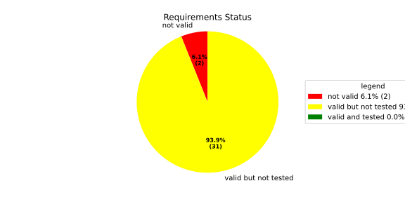
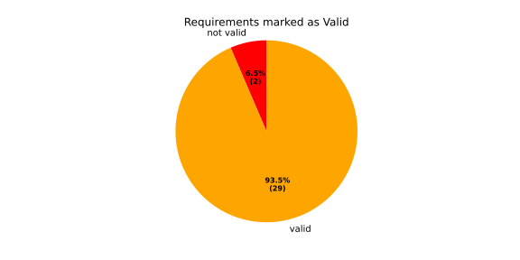
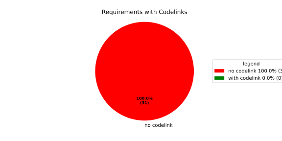
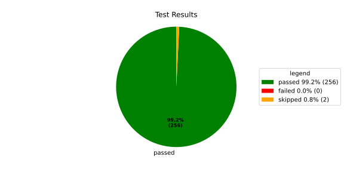
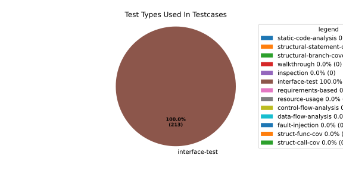
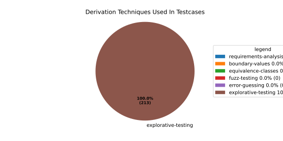

Verification Statistics#
Overview#

In Detail#



Failed Tests
Hint: This table should be empty. Before a PR can be merged all tests have to be successful.
No needs passed the filters
Skipped / Disabled Tests
testcase |
Result |
Fully Verifies |
Partially Verifies |
Test Type |
Derivation Technique |
link |
|---|---|---|---|---|---|---|
ValidateRangeTest/4__RejectsValueAboveMax |
skipped |
interface-test |
explorative-testing |
|||
ValidateRangeTest/4__RejectsValueBelowMin |
skipped |
interface-test |
explorative-testing |
All passed Tests#
testcase |
Result |
Fully Verifies |
Partially Verifies |
Test Type |
Derivation Technique |
link |
|---|---|---|---|---|---|---|
AliveImplTest__DoesNotThrowWhenInterfacePathEnvVarIsSet |
passed |
interface-test |
explorative-testing |
testcase__AliveImplTest__DoesNotThrowWhenInterfacePathEnvVarIsSet_xpewu |
||
AliveImplTest__ReportCheckpointSafeWhenNotConnected |
passed |
interface-test |
explorative-testing |
testcase__AliveImplTest__ReportCheckpointSafeWhenNotConnected_ppvuc |
||
AliveImplTest__ThrowsWhenInterfacePathEnvVarIsNotSet |
passed |
interface-test |
explorative-testing |
testcase__AliveImplTest__ThrowsWhenInterfacePathEnvVarIsNotSet_ekxfw |
||
AliveSupervisionTest__AliveDebouncesThroughFailedBeforeExpired |
passed |
interface-test |
explorative-testing |
testcase__AliveSupervisionTest__AliveDebouncesThroughFailedBeforeExpired_mlnbe |
||
AliveSupervisionTest__AliveReportsEnqueueFailureWhenRingBufferFull |
passed |
interface-test |
explorative-testing |
testcase__AliveSupervisionTest__AliveReportsEnqueueFailureWhenRingBufferFull_byhrd |
||
AliveSupervisionTest__AliveStaysOkWithCorrectHeartbeats |
passed |
interface-test |
explorative-testing |
testcase__AliveSupervisionTest__AliveStaysOkWithCorrectHeartbeats_vekof |
||
AliveSupervisionTest__AliveTransitionsOkToExpiredOnMissingHeartbeat |
passed |
interface-test |
explorative-testing |
testcase__AliveSupervisionTest__AliveTransitionsOkToExpiredOnMissingHeartbeat_jymxo |
||
AliveSupervisionTest__DeactivatesOnProcessCrash |
passed |
interface-test |
explorative-testing |
testcase__AliveSupervisionTest__DeactivatesOnProcessCrash_ypejs |
||
AliveSupervisionTest__DeactivatesOnProcessSigterm |
passed |
interface-test |
explorative-testing |
testcase__AliveSupervisionTest__DeactivatesOnProcessSigterm_hzaal |
||
AliveSupervisionTest__IgnoresIrrelevantProcessStates |
passed |
interface-test |
explorative-testing |
testcase__AliveSupervisionTest__IgnoresIrrelevantProcessStates_aolvb |
||
AliveSupervisionTest__MaxIndicationViolationExpires |
passed |
interface-test |
explorative-testing |
testcase__AliveSupervisionTest__MaxIndicationViolationExpires_whhhi |
||
AliveSupervisionTest__ReactivatesAfterCrash |
passed |
interface-test |
explorative-testing |
|||
ApplicationTypes/ApplicationTypeTest__ConvertsToExpectedValue/Native |
passed |
interface-test |
explorative-testing |
testcase__ApplicationTypes/ApplicationTypeTest__ConvertsToExpectedValue/Native_yxxcz |
||
ApplicationTypes/ApplicationTypeTest__ConvertsToExpectedValue/Reporting |
passed |
interface-test |
explorative-testing |
testcase__ApplicationTypes/ApplicationTypeTest__ConvertsToExpectedValue/Reporting_wcfwr |
||
ApplicationTypes/ApplicationTypeTest__ConvertsToExpectedValue/ReportingAndSupervised |
passed |
interface-test |
explorative-testing |
testcase__ApplicationTypes/ApplicationTypeTest__ConvertsToExpectedValue/ReportingAndSupervised_yxgad |
||
ApplicationTypes/ApplicationTypeTest__ConvertsToExpectedValue/StateManager |
passed |
interface-test |
explorative-testing |
testcase__ApplicationTypes/ApplicationTypeTest__ConvertsToExpectedValue/StateManager_ivuzc |
||
ConverterTest__ConvertAliveSupervisionMissingCycleReturnsError |
passed |
interface-test |
explorative-testing |
testcase__ConverterTest__ConvertAliveSupervisionMissingCycleReturnsError_bifzg |
||
ConverterTest__ConvertAliveSupervisionNullReturnsDefault |
passed |
interface-test |
explorative-testing |
testcase__ConverterTest__ConvertAliveSupervisionNullReturnsDefault_clyua |
||
ConverterTest__ConvertAliveSupervisionValid |
passed |
interface-test |
explorative-testing |
|||
ConverterTest__ConvertApplicationProfileMissingSelfTerminatingReturnsError |
passed |
interface-test |
explorative-testing |
testcase__ConverterTest__ConvertApplicationProfileMissingSelfTerminatingReturnsError_zddjb |
||
ConverterTest__ConvertApplicationProfileMissingTypeReturnsError |
passed |
interface-test |
explorative-testing |
testcase__ConverterTest__ConvertApplicationProfileMissingTypeReturnsError_zrfcs |
||
ConverterTest__ConvertApplicationProfileValid |
passed |
interface-test |
explorative-testing |
testcase__ConverterTest__ConvertApplicationProfileValid_oohxq |
||
ConverterTest__ConvertComponentAliveSupervisionBothIndicationsAbsentReturnsError |
passed |
interface-test |
explorative-testing |
testcase__ConverterTest__ConvertComponentAliveSupervisionBothIndicationsAbsentReturnsError_gvtfi |
||
ConverterTest__ConvertComponentAliveSupervisionMissingReportingCycleReturnsError |
passed |
interface-test |
explorative-testing |
testcase__ConverterTest__ConvertComponentAliveSupervisionMissingReportingCycleReturnsError_ajymy |
||
ConverterTest__ConvertComponentAliveSupervisionMissingToleranceReturnsError |
passed |
interface-test |
explorative-testing |
testcase__ConverterTest__ConvertComponentAliveSupervisionMissingToleranceReturnsError_lgrhj |
||
ConverterTest__ConvertComponentAliveSupervisionNullReturnsDefault |
passed |
interface-test |
explorative-testing |
testcase__ConverterTest__ConvertComponentAliveSupervisionNullReturnsDefault_xhaus |
||
ConverterTest__ConvertComponentAliveSupervisionOnlyMaxIndicationsPresent |
passed |
interface-test |
explorative-testing |
testcase__ConverterTest__ConvertComponentAliveSupervisionOnlyMaxIndicationsPresent_smwht |
||
ConverterTest__ConvertComponentAliveSupervisionOnlyMinIndicationsPresent |
passed |
interface-test |
explorative-testing |
testcase__ConverterTest__ConvertComponentAliveSupervisionOnlyMinIndicationsPresent_ybbrr |
||
ConverterTest__ConvertComponentAliveSupervisionValid |
passed |
interface-test |
explorative-testing |
testcase__ConverterTest__ConvertComponentAliveSupervisionValid_ijedh |
||
ConverterTest__ConvertComponentsValid |
passed |
interface-test |
explorative-testing |
|||
ConverterTest__ConvertComponentsWithInvalidComponentReturnsError |
passed |
interface-test |
explorative-testing |
testcase__ConverterTest__ConvertComponentsWithInvalidComponentReturnsError_wridc |
||
ConverterTest__ConvertComponentValid |
passed |
interface-test |
explorative-testing |
|||
ConverterTest__ConvertDeploymentConfigMissingReadyTimeoutReturnsError |
passed |
interface-test |
explorative-testing |
testcase__ConverterTest__ConvertDeploymentConfigMissingReadyTimeoutReturnsError_ljzfl |
||
ConverterTest__ConvertDeploymentConfigMissingShutdownTimeoutReturnsError |
passed |
interface-test |
explorative-testing |
testcase__ConverterTest__ConvertDeploymentConfigMissingShutdownTimeoutReturnsError_vyqye |
||
ConverterTest__ConvertDeploymentConfigValid |
passed |
interface-test |
explorative-testing |
|||
ConverterTest__ConvertEnvironmentalVariables |
passed |
interface-test |
explorative-testing |
testcase__ConverterTest__ConvertEnvironmentalVariables_fnhgo |
||
ConverterTest__ConvertEnvironmentalVariablesNullReturnsEmpty |
passed |
interface-test |
explorative-testing |
testcase__ConverterTest__ConvertEnvironmentalVariablesNullReturnsEmpty_vglrx |
||
ConverterTest__ConvertFallbackRunTargetMissingTimeoutReturnsError |
passed |
interface-test |
explorative-testing |
testcase__ConverterTest__ConvertFallbackRunTargetMissingTimeoutReturnsError_aevly |
||
ConverterTest__ConvertFallbackRunTargetValid |
passed |
interface-test |
explorative-testing |
testcase__ConverterTest__ConvertFallbackRunTargetValid_nexxj |
||
ConverterTest__ConvertReadyConditionMissingProcessStateReturnsError |
passed |
interface-test |
explorative-testing |
testcase__ConverterTest__ConvertReadyConditionMissingProcessStateReturnsError_ileav |
||
ConverterTest__ConvertReadyConditionValid |
passed |
interface-test |
explorative-testing |
|||
ConverterTest__ConvertRestartActionMissingFieldsReturnsError |
passed |
interface-test |
explorative-testing |
testcase__ConverterTest__ConvertRestartActionMissingFieldsReturnsError_aapjb |
||
ConverterTest__ConvertRestartActionNullReturnsNullopt |
passed |
interface-test |
explorative-testing |
testcase__ConverterTest__ConvertRestartActionNullReturnsNullopt_ifvyd |
||
ConverterTest__ConvertRestartActionValid |
passed |
interface-test |
explorative-testing |
|||
ConverterTest__ConvertRunTargetMissingTransitionTimeoutReturnsError |
passed |
interface-test |
explorative-testing |
testcase__ConverterTest__ConvertRunTargetMissingTransitionTimeoutReturnsError_ynekv |
||
ConverterTest__ConvertRunTargetsValid |
passed |
interface-test |
explorative-testing |
|||
ConverterTest__ConvertRunTargetsWithInvalidRunTargetReturnsError |
passed |
interface-test |
explorative-testing |
testcase__ConverterTest__ConvertRunTargetsWithInvalidRunTargetReturnsError_ldlox |
||
ConverterTest__ConvertRunTargetValid |
passed |
interface-test |
explorative-testing |
|||
ConverterTest__ConvertSandboxMissingGidReturnsError |
passed |
interface-test |
explorative-testing |
testcase__ConverterTest__ConvertSandboxMissingGidReturnsError_veeel |
||
ConverterTest__ConvertSandboxMissingSchedulingPolicyReturnsError |
passed |
interface-test |
explorative-testing |
testcase__ConverterTest__ConvertSandboxMissingSchedulingPolicyReturnsError_pkfts |
||
ConverterTest__ConvertSandboxMissingSchedulingPriorityReturnsError |
passed |
interface-test |
explorative-testing |
testcase__ConverterTest__ConvertSandboxMissingSchedulingPriorityReturnsError_xzdho |
||
ConverterTest__ConvertSandboxMissingUidReturnsError |
passed |
interface-test |
explorative-testing |
testcase__ConverterTest__ConvertSandboxMissingUidReturnsError_ogfku |
||
ConverterTest__ConvertSandboxSupplementaryGidOutOfRangeReturnsError |
passed |
interface-test |
explorative-testing |
testcase__ConverterTest__ConvertSandboxSupplementaryGidOutOfRangeReturnsError_zavpx |
||
ConverterTest__ConvertSandboxUidOutOfRangeReturnsError |
passed |
interface-test |
explorative-testing |
testcase__ConverterTest__ConvertSandboxUidOutOfRangeReturnsError_mcuaf |
||
ConverterTest__ConvertSandboxValid |
passed |
interface-test |
explorative-testing |
|||
ConverterTest__ConvertSwitchRunTargetActionNullReturnsNullopt |
passed |
interface-test |
explorative-testing |
testcase__ConverterTest__ConvertSwitchRunTargetActionNullReturnsNullopt_zmitx |
||
ConverterTest__ConvertSwitchRunTargetActionValid |
passed |
interface-test |
explorative-testing |
testcase__ConverterTest__ConvertSwitchRunTargetActionValid_tdklr |
||
ConverterTest__ConvertWatchdogMissingDeactivateReturnsError |
passed |
interface-test |
explorative-testing |
testcase__ConverterTest__ConvertWatchdogMissingDeactivateReturnsError_gzwjt |
||
ConverterTest__ConvertWatchdogMissingMagicCloseReturnsError |
passed |
interface-test |
explorative-testing |
testcase__ConverterTest__ConvertWatchdogMissingMagicCloseReturnsError_gexxk |
||
ConverterTest__ConvertWatchdogMissingMaxTimeoutReturnsError |
passed |
interface-test |
explorative-testing |
testcase__ConverterTest__ConvertWatchdogMissingMaxTimeoutReturnsError_lffxm |
||
ConverterTest__ConvertWatchdogNullReturnsNullopt |
passed |
interface-test |
explorative-testing |
testcase__ConverterTest__ConvertWatchdogNullReturnsNullopt_irsdk |
||
ConverterTest__ConvertWatchdogValid |
passed |
interface-test |
explorative-testing |
|||
DeadlineFixture__Start_AlreadyRunning |
passed |
interface-test |
explorative-testing |
|||
DeadlineFixture__Start_Succeeds |
passed |
interface-test |
explorative-testing |
|||
DeadlineMonitorBuilderFixture__AddDeadline_Succeeds |
passed |
interface-test |
explorative-testing |
testcase__DeadlineMonitorBuilderFixture__AddDeadline_Succeeds_nagke |
||
DeadlineMonitorBuilderFixture__New_Succeeds |
passed |
interface-test |
explorative-testing |
|||
DeadlineMonitorFixture__GetDeadline_Succeeds |
passed |
interface-test |
explorative-testing |
testcase__DeadlineMonitorFixture__GetDeadline_Succeeds_tmltf |
||
DeadlineMonitorFixture__GetDeadline_Unknown |
passed |
interface-test |
explorative-testing |
|||
EnumConversionTest__ConvertSchedulingPolicyUnsupported |
passed |
interface-test |
explorative-testing |
testcase__EnumConversionTest__ConvertSchedulingPolicyUnsupported_iavqm |
||
EnvironmentTest__AddIncreasesSize |
passed |
interface-test |
explorative-testing |
|||
EnvironmentTest__DefaultConstructedIsEmpty |
passed |
interface-test |
explorative-testing |
|||
EnvironmentTest__EmptyEnvironmentEnvpIsNullTerminated |
passed |
interface-test |
explorative-testing |
testcase__EnvironmentTest__EmptyEnvironmentEnvpIsNullTerminated_wwumw |
||
EnvironmentTest__EnvpReturnsNullTerminatedArray |
passed |
interface-test |
explorative-testing |
testcase__EnvironmentTest__EnvpReturnsNullTerminatedArray_aubkv |
||
EnvironmentTest__EnvpWithMultipleEntries |
passed |
interface-test |
explorative-testing |
|||
EnvironmentTest__MoveAssignmentPreservesEntries |
passed |
interface-test |
explorative-testing |
testcase__EnvironmentTest__MoveAssignmentPreservesEntries_vkydj |
||
EnvironmentTest__MoveConstructorPreservesEntries |
passed |
interface-test |
explorative-testing |
testcase__EnvironmentTest__MoveConstructorPreservesEntries_upclt |
||
EnvironmentTest__RangeBasedForLoopWorks |
passed |
interface-test |
explorative-testing |
|||
EnvironmentTest__ReserveAndAddAvoidReallocation |
passed |
interface-test |
explorative-testing |
testcase__EnvironmentTest__ReserveAndAddAvoidReallocation_lgzmu |
||
EnvironmentTest__SsoLengthStringSurvivesReallocation |
passed |
interface-test |
explorative-testing |
testcase__EnvironmentTest__SsoLengthStringSurvivesReallocation_jfmtl |
||
EnvironmentVariableTest__CStrReturnsKeyEqualsValue |
passed |
interface-test |
explorative-testing |
testcase__EnvironmentVariableTest__CStrReturnsKeyEqualsValue_rkwan |
||
EnvironmentVariableTest__EmptyValue |
passed |
interface-test |
explorative-testing |
|||
EnvironmentVariableTest__KeyAndValueAreAccessible |
passed |
interface-test |
explorative-testing |
testcase__EnvironmentVariableTest__KeyAndValueAreAccessible_kcrth |
||
EnvironmentVariableTest__ValueContainingEquals |
passed |
interface-test |
explorative-testing |
testcase__EnvironmentVariableTest__ValueContainingEquals_apzgz |
||
ExecErrorDomainTest__AllKnownCodesHaveDistinctMessages |
passed |
interface-test |
explorative-testing |
testcase__ExecErrorDomainTest__AllKnownCodesHaveDistinctMessages_qpoka |
||
ExecErrorDomainTest__AllKnownCodesReturnNonEmptyMessage |
passed |
interface-test |
explorative-testing |
testcase__ExecErrorDomainTest__AllKnownCodesReturnNonEmptyMessage_bawzg |
||
ExecErrorDomainTest__UnknownCodeReturnsNonEmptyMessage |
passed |
interface-test |
explorative-testing |
testcase__ExecErrorDomainTest__UnknownCodeReturnsNonEmptyMessage_kkwpr |
||
FlatbufferConfigLoaderTest__CorruptedBufferReturnsInvalidFormat |
passed |
interface-test |
explorative-testing |
testcase__FlatbufferConfigLoaderTest__CorruptedBufferReturnsInvalidFormat_twyac |
||
FlatbufferConfigLoaderTest__LoadAliveSupervision |
passed |
interface-test |
explorative-testing |
testcase__FlatbufferConfigLoaderTest__LoadAliveSupervision_hhuux |
||
FlatbufferConfigLoaderTest__LoadBufferFailsWithGenericErrorReturnsGeneralError |
passed |
interface-test |
explorative-testing |
testcase__FlatbufferConfigLoaderTest__LoadBufferFailsWithGenericErrorReturnsGeneralError_kmatm |
||
FlatbufferConfigLoaderTest__LoadBufferFailsWithNoSuchFileReturnsFileNotFound |
passed |
interface-test |
explorative-testing |
testcase__FlatbufferConfigLoaderTest__LoadBufferFailsWithNoSuchFileReturnsFileNotFound_yzlra |
||
FlatbufferConfigLoaderTest__LoadBufferFailsWithPermissionDeniedReturnsInsufficientPermission |
passed |
interface-test |
explorative-testing |
|||
FlatbufferConfigLoaderTest__LoadComponentAliveSupervision |
passed |
interface-test |
explorative-testing |
testcase__FlatbufferConfigLoaderTest__LoadComponentAliveSupervision_fwfad |
||
FlatbufferConfigLoaderTest__LoadEnvironmentalVariables |
passed |
interface-test |
explorative-testing |
testcase__FlatbufferConfigLoaderTest__LoadEnvironmentalVariables_wsosu |
||
FlatbufferConfigLoaderTest__LoadFallbackRunTarget |
passed |
interface-test |
explorative-testing |
testcase__FlatbufferConfigLoaderTest__LoadFallbackRunTarget_wduqm |
||
FlatbufferConfigLoaderTest__LoadMinimalConfig |
passed |
interface-test |
explorative-testing |
testcase__FlatbufferConfigLoaderTest__LoadMinimalConfig_hdkck |
||
FlatbufferConfigLoaderTest__LoadMultipleComponents |
passed |
interface-test |
explorative-testing |
testcase__FlatbufferConfigLoaderTest__LoadMultipleComponents_abpom |
||
FlatbufferConfigLoaderTest__LoadRestartRecoveryAction |
passed |
interface-test |
explorative-testing |
testcase__FlatbufferConfigLoaderTest__LoadRestartRecoveryAction_wyfqg |
||
FlatbufferConfigLoaderTest__LoadRunTargets |
passed |
interface-test |
explorative-testing |
|||
FlatbufferConfigLoaderTest__LoadSandbox |
passed |
interface-test |
explorative-testing |
|||
FlatbufferConfigLoaderTest__LoadSingleComponent |
passed |
interface-test |
explorative-testing |
testcase__FlatbufferConfigLoaderTest__LoadSingleComponent_yidty |
||
FlatbufferConfigLoaderTest__LoadSwitchRunTargetAction |
passed |
interface-test |
explorative-testing |
testcase__FlatbufferConfigLoaderTest__LoadSwitchRunTargetAction_uchgp |
||
FlatbufferConfigLoaderTest__LoadWatchdog |
passed |
interface-test |
explorative-testing |
|||
FlatbufferConfigLoaderTest__MissingSchemaVersionReturnsInvalidFormat |
passed |
interface-test |
explorative-testing |
testcase__FlatbufferConfigLoaderTest__MissingSchemaVersionReturnsInvalidFormat_qqmfn |
||
FlatbufferConfigLoaderTest__OptionalReadyConditionAbsent |
passed |
interface-test |
explorative-testing |
testcase__FlatbufferConfigLoaderTest__OptionalReadyConditionAbsent_lhddx |
||
FlatbufferConfigLoaderTest__OptionalWatchdogAbsent |
passed |
interface-test |
explorative-testing |
testcase__FlatbufferConfigLoaderTest__OptionalWatchdogAbsent_pkhkp |
||
FlatbufferConfigLoaderTest__WrongSchemaVersionReturnsUnsupportedVersion |
passed |
interface-test |
explorative-testing |
testcase__FlatbufferConfigLoaderTest__WrongSchemaVersionReturnsUnsupportedVersion_zrbjv |
||
HealthMonitor__GetDeadlineMonitor_Available |
passed |
|||||
HealthMonitor__GetDeadlineMonitor_Taken |
passed |
|||||
HealthMonitor__GetDeadlineMonitor_Unknown |
passed |
|||||
HealthMonitor__GetHeartbeatMonitor_Available |
passed |
testcase__HealthMonitor__GetHeartbeatMonitor_Available_aacat |
||||
HealthMonitor__GetHeartbeatMonitor_Taken |
passed |
|||||
HealthMonitor__GetHeartbeatMonitor_Unknown |
passed |
|||||
HealthMonitor__GetLogicMonitor_Available |
passed |
|||||
HealthMonitor__GetLogicMonitor_Taken |
passed |
|||||
HealthMonitor__GetLogicMonitor_Unknown |
passed |
|||||
HealthMonitor__Start_MonitorsNotTaken |
passed |
|||||
HealthMonitor__Start_Succeeds |
passed |
|||||
HealthMonitorBuilderFixture__Build_InvalidCycles |
passed |
interface-test |
explorative-testing |
testcase__HealthMonitorBuilderFixture__Build_InvalidCycles_pdigk |
||
HealthMonitorBuilderFixture__Build_NoMonitors |
passed |
interface-test |
explorative-testing |
testcase__HealthMonitorBuilderFixture__Build_NoMonitors_ktcve |
||
HealthMonitorBuilderFixture__Build_Succeeds |
passed |
interface-test |
explorative-testing |
|||
HealthMonitorBuilderFixture__New_Succeeds |
passed |
interface-test |
explorative-testing |
|||
HealthMonitorTest__Integrated |
passed |
interface-test |
explorative-testing |
|||
HeartbeatMonitor__Heartbeat_Succeeds |
passed |
interface-test |
explorative-testing |
|||
HeartbeatMonitorBuilder__New_Succeeds |
passed |
interface-test |
explorative-testing |
|||
IdentifierHashTest__IdentifierHash_default_created |
passed |
interface-test |
explorative-testing |
testcase__IdentifierHashTest__IdentifierHash_default_created_yhhvi |
||
IdentifierHashTest__IdentifierHash_EqualityOperators |
passed |
interface-test |
explorative-testing |
testcase__IdentifierHashTest__IdentifierHash_EqualityOperators_nnsuj |
||
IdentifierHashTest__IdentifierHash_invalid_hash_no_string_representation |
passed |
interface-test |
explorative-testing |
testcase__IdentifierHashTest__IdentifierHash_invalid_hash_no_string_representation_rxowr |
||
IdentifierHashTest__IdentifierHash_LessThanOperator |
passed |
interface-test |
explorative-testing |
testcase__IdentifierHashTest__IdentifierHash_LessThanOperator_rnbax |
||
IdentifierHashTest__IdentifierHash_no_dangling_pointer_after_source_string_dies |
passed |
interface-test |
explorative-testing |
testcase__IdentifierHashTest__IdentifierHash_no_dangling_pointer_after_source_string_dies_qsjin |
||
IdentifierHashTest__IdentifierHash_with_string_created |
passed |
interface-test |
explorative-testing |
testcase__IdentifierHashTest__IdentifierHash_with_string_created_aygdm |
||
IdentifierHashTest__IdentifierHash_with_string_view_created |
passed |
interface-test |
explorative-testing |
testcase__IdentifierHashTest__IdentifierHash_with_string_view_created_dbpol |
||
LogicMonitorBuilderFixture__AddState_Succeeds |
passed |
interface-test |
explorative-testing |
testcase__LogicMonitorBuilderFixture__AddState_Succeeds_axdxj |
||
LogicMonitorBuilderFixture__New_Succeeds |
passed |
interface-test |
explorative-testing |
|||
LogicMonitorFixture__State_Invalid |
passed |
interface-test |
explorative-testing |
|||
LogicMonitorFixture__State_Succeeds |
passed |
interface-test |
explorative-testing |
|||
LogicMonitorFixture__Transition_Invalid |
passed |
interface-test |
explorative-testing |
|||
LogicMonitorFixture__Transition_Succeeds |
passed |
interface-test |
explorative-testing |
|||
LogicMonitorFixture__Transition_Unknown |
passed |
interface-test |
explorative-testing |
|||
MonitorIfDaemonTest__Active_CheckpointDataForwarded |
passed |
interface-test |
explorative-testing |
testcase__MonitorIfDaemonTest__Active_CheckpointDataForwarded_evumz |
||
MonitorIfDaemonTest__Active_FutureTimestamp_NotForwardedInCurrentCycle |
passed |
interface-test |
explorative-testing |
testcase__MonitorIfDaemonTest__Active_FutureTimestamp_NotForwardedInCurrentCycle_oycau |
||
MonitorIfDaemonTest__Active_FutureTimestampCheckpoint_ConsumedInLaterCycle |
passed |
interface-test |
explorative-testing |
testcase__MonitorIfDaemonTest__Active_FutureTimestampCheckpoint_ConsumedInLaterCycle_veyyy |
||
MonitorIfDaemonTest__Active_MultipleCheckpointsInOneCycle_AllForwarded |
passed |
interface-test |
explorative-testing |
testcase__MonitorIfDaemonTest__Active_MultipleCheckpointsInOneCycle_AllForwarded_gmbms |
||
MonitorIfDaemonTest__Active_NonMatchingCheckpointId_NotForwarded |
passed |
interface-test |
explorative-testing |
testcase__MonitorIfDaemonTest__Active_NonMatchingCheckpointId_NotForwarded_bohck |
||
MonitorIfDaemonTest__Active_OverflowDetected_TransitionsToInactiveOverflow |
passed |
interface-test |
explorative-testing |
testcase__MonitorIfDaemonTest__Active_OverflowDetected_TransitionsToInactiveOverflow_ovitk |
||
MonitorIfDaemonTest__Active_TwoAttachedCheckpoints_RoutedByCheckpointId |
passed |
interface-test |
explorative-testing |
testcase__MonitorIfDaemonTest__Active_TwoAttachedCheckpoints_RoutedByCheckpointId_skqhd |
||
MonitorIfDaemonTest__GetInterfaceName_ReturnsNameGivenAtConstruction |
passed |
interface-test |
explorative-testing |
testcase__MonitorIfDaemonTest__GetInterfaceName_ReturnsNameGivenAtConstruction_iaemz |
||
MonitorIfDaemonTest__InactiveOverflow_NoProcessRestart_DoesNotRepeatNotification |
passed |
interface-test |
explorative-testing |
testcase__MonitorIfDaemonTest__InactiveOverflow_NoProcessRestart_DoesNotRepeatNotification_gdbxg |
||
MonitorIfDaemonTest__InactiveOverflow_ProcessRestartFlag_ClearedAfterNotification |
passed |
interface-test |
explorative-testing |
testcase__MonitorIfDaemonTest__InactiveOverflow_ProcessRestartFlag_ClearedAfterNotification_pqfyy |
||
MonitorIfDaemonTest__InactiveOverflow_ProcessRestarts_PushesOverflowNotificationAgain |
passed |
interface-test |
explorative-testing |
|||
MonitorIfDaemonTest__InitiallyInactive_CheckForNewData_DoesNotNotifyCheckpoint |
passed |
interface-test |
explorative-testing |
testcase__MonitorIfDaemonTest__InitiallyInactive_CheckForNewData_DoesNotNotifyCheckpoint_wjrfl |
||
MonitorIfDaemonTest__ProcessOff_DeactivatesMonitor_NoFurtherDataForwarded |
passed |
interface-test |
explorative-testing |
testcase__MonitorIfDaemonTest__ProcessOff_DeactivatesMonitor_NoFurtherDataForwarded_uialh |
||
MonitorIfDaemonTest__ProcessOffBeforeActivation_RemainsInactive |
passed |
interface-test |
explorative-testing |
testcase__MonitorIfDaemonTest__ProcessOffBeforeActivation_RemainsInactive_kzzyy |
||
MonitorIfDaemonTest__ProcessRunning_ActivatesMonitorOnNextCheckForNewData |
passed |
interface-test |
explorative-testing |
testcase__MonitorIfDaemonTest__ProcessRunning_ActivatesMonitorOnNextCheckForNewData_fkkmk |
||
MonitorIfDaemonTest__ProcessStarting_AlsoActivatesMonitor |
passed |
interface-test |
explorative-testing |
testcase__MonitorIfDaemonTest__ProcessStarting_AlsoActivatesMonitor_xdkbg |
||
MPMCConcurrentQueueTest_Basic__LvaluePushCopiesItem |
passed |
testcase__MPMCConcurrentQueueTest_Basic__LvaluePushCopiesItem_oysfc |
||||
MPMCConcurrentQueueTest_Basic__PopReturnsNulloptOnSemaphoreWaitFailure |
passed |
testcase__MPMCConcurrentQueueTest_Basic__PopReturnsNulloptOnSemaphoreWaitFailure_rgznm |
||||
MPMCConcurrentQueueTest_Basic__PushAndPopPreservesOrder |
passed |
testcase__MPMCConcurrentQueueTest_Basic__PushAndPopPreservesOrder_aijdb |
||||
MPMCConcurrentQueueTest_Basic__PushAndPopSingleItem |
passed |
testcase__MPMCConcurrentQueueTest_Basic__PushAndPopSingleItem_jrxwz |
||||
MPMCConcurrentQueueTest_Basic__RvaluePushWorksWithMoveOnlyType |
passed |
testcase__MPMCConcurrentQueueTest_Basic__RvaluePushWorksWithMoveOnlyType_cxxaj |
||||
MPMCConcurrentQueueTest_Blocking__PopBlocksUntilItemAvailable |
passed |
testcase__MPMCConcurrentQueueTest_Blocking__PopBlocksUntilItemAvailable_ttwcx |
||||
MPMCConcurrentQueueTest_Blocking__PushBlocksWhenFull |
passed |
testcase__MPMCConcurrentQueueTest_Blocking__PushBlocksWhenFull_ecujf |
||||
MPMCConcurrentQueueTest_Blocking__StopUnblocksBlockedConsumer |
passed |
testcase__MPMCConcurrentQueueTest_Blocking__StopUnblocksBlockedConsumer_snzyr |
||||
MPMCConcurrentQueueTest_Blocking__StopUnblocksBlockedProducer |
passed |
testcase__MPMCConcurrentQueueTest_Blocking__StopUnblocksBlockedProducer_inddu |
||||
MPMCConcurrentQueueTest_MPMC__AllItemsDelivered |
passed |
testcase__MPMCConcurrentQueueTest_MPMC__AllItemsDelivered_ztjqe |
||||
MPMCConcurrentQueueTest_Stop__ItemsAreDroppedAfterStop |
passed |
testcase__MPMCConcurrentQueueTest_Stop__ItemsAreDroppedAfterStop_ragzw |
||||
MPMCConcurrentQueueTest_Stop__PopReturnsNulloptWhenStoppedAndEmpty |
passed |
testcase__MPMCConcurrentQueueTest_Stop__PopReturnsNulloptWhenStoppedAndEmpty_cevga |
||||
MPMCConcurrentQueueTest_Stop__PushReturnsFalseAfterStop |
passed |
testcase__MPMCConcurrentQueueTest_Stop__PushReturnsFalseAfterStop_qqnhw |
||||
MPMCConcurrentQueueTest_Timeout__PushWithTimeoutReturnsFalseWhenFull |
passed |
testcase__MPMCConcurrentQueueTest_Timeout__PushWithTimeoutReturnsFalseWhenFull_aeips |
||||
MPMCConcurrentQueueTest_Timeout__PushWithTimeoutSucceedsWhenSlotAvailable |
passed |
testcase__MPMCConcurrentQueueTest_Timeout__PushWithTimeoutSucceedsWhenSlotAvailable_klzpo |
||||
OsHandlerTest__WaitReturnsError_OsHandlerSleepsAndDoesNotCallFindTerminated |
passed |
interface-test |
explorative-testing |
testcase__OsHandlerTest__WaitReturnsError_OsHandlerSleepsAndDoesNotCallFindTerminated_cibtr |
||
OsHandlerTest__WaitReturnsErrorThenProcessId_HandlerRecoversAndInvokesCallback |
passed |
interface-test |
explorative-testing |
testcase__OsHandlerTest__WaitReturnsErrorThenProcessId_HandlerRecoversAndInvokesCallback_nqstd |
||
OsHandlerTest__WaitReturnsProcessId_FindTerminatedIsCalled |
passed |
interface-test |
explorative-testing |
testcase__OsHandlerTest__WaitReturnsProcessId_FindTerminatedIsCalled_chlsq |
||
OsHandlerTest__WaitReturnsProcessIdBeforeRegistration_LaterRegistrationReceivesStoredTermination |
passed |
interface-test |
explorative-testing |
|||
OsHandlerTest__WaitReturnsUnknownPidWhenMapIsFull_OutOfResourcesPathDoesNotNotifyCallbacks |
passed |
interface-test |
explorative-testing |
|||
OsHandlerTest__WaitReturnsZeroPid_OsHandlerSleepsAndDoesNotCallFindTerminated |
passed |
interface-test |
explorative-testing |
testcase__OsHandlerTest__WaitReturnsZeroPid_OsHandlerSleepsAndDoesNotCallFindTerminated_rkttz |
||
ProcessStateClient_UT__ProcessStateClient_ConstructReceiver_Succeeds |
passed |
interface-test |
explorative-testing |
testcase__ProcessStateClient_UT__ProcessStateClient_ConstructReceiver_Succeeds_hodwy |
||
ProcessStateClient_UT__ProcessStateClient_QueueMaxNumberOfProcesses_Succeeds |
passed |
interface-test |
explorative-testing |
testcase__ProcessStateClient_UT__ProcessStateClient_QueueMaxNumberOfProcesses_Succeeds_qohom |
||
ProcessStateClient_UT__ProcessStateClient_QueueOneProcess_Succeeds |
passed |
interface-test |
explorative-testing |
testcase__ProcessStateClient_UT__ProcessStateClient_QueueOneProcess_Succeeds_tmzfz |
||
ProcessStateClient_UT__ProcessStateClient_QueueOneProcessTooMany_Fails |
passed |
interface-test |
explorative-testing |
testcase__ProcessStateClient_UT__ProcessStateClient_QueueOneProcessTooMany_Fails_sspoj |
||
ProcessStates/ProcessStateTest__ConvertsToExpectedValue/Running |
passed |
interface-test |
explorative-testing |
testcase__ProcessStates/ProcessStateTest__ConvertsToExpectedValue/Running_hinlr |
||
ProcessStates/ProcessStateTest__ConvertsToExpectedValue/Terminated |
passed |
interface-test |
explorative-testing |
testcase__ProcessStates/ProcessStateTest__ConvertsToExpectedValue/Terminated_zrytn |
||
RecoveryClientTest__FIFOOrdering |
passed |
interface-test |
explorative-testing |
|||
RecoveryClientTest__GetNextRequest |
passed |
interface-test |
explorative-testing |
|||
RecoveryClientTest__GetNextRequestEmpty |
passed |
interface-test |
explorative-testing |
|||
RecoveryClientTest__RingBufferFull |
passed |
interface-test |
explorative-testing |
|||
RecoveryClientTest__SendSingleRequest |
passed |
interface-test |
explorative-testing |
|||
RunTest__AsPosixProcessCreatesAndDestroysLifeCycleManager |
passed |
testcase__RunTest__AsPosixProcessCreatesAndDestroysLifeCycleManager_sooex |
||||
RunTest__AsPosixProcessForwardsConstructorArgsToApplication |
passed |
testcase__RunTest__AsPosixProcessForwardsConstructorArgsToApplication_dmeur |
||||
RunTest__AsPosixProcessForwardsNonZeroExitCode |
passed |
testcase__RunTest__AsPosixProcessForwardsNonZeroExitCode_lldqd |
||||
RunTest__AsPosixProcessPassesCorrectApplicationTypeToRun |
passed |
testcase__RunTest__AsPosixProcessPassesCorrectApplicationTypeToRun_ajqwz |
||||
RunTest__AsPosixProcessReturnsZeroExitCode |
passed |
|||||
RunTest__RunApplicationFreeFunctionDelegatesToAsPosixProcess |
passed |
testcase__RunTest__RunApplicationFreeFunctionDelegatesToAsPosixProcess_ccing |
||||
RunTest__RunConstructorPassesArgcArgvToApplicationContext |
passed |
testcase__RunTest__RunConstructorPassesArgcArgvToApplicationContext_agerd |
||||
SafeProcessMapTest__ConcurrentFindAndInsertFromMultipleThreads |
passed |
interface-test |
explorative-testing |
testcase__SafeProcessMapTest__ConcurrentFindAndInsertFromMultipleThreads_kzfyg |
||
SafeProcessMapTest__ConcurrentInsertAndFindFromMultipleThreads |
passed |
interface-test |
explorative-testing |
testcase__SafeProcessMapTest__ConcurrentInsertAndFindFromMultipleThreads_hnyqj |
||
SafeProcessMapTest__ConstructWithZeroCapacity |
passed |
interface-test |
explorative-testing |
testcase__SafeProcessMapTest__ConstructWithZeroCapacity_gjmqg |
||
SafeProcessMapTest__FindTerminatedInsertsEntryWhenPidNotPresent |
passed |
interface-test |
explorative-testing |
testcase__SafeProcessMapTest__FindTerminatedInsertsEntryWhenPidNotPresent_ixtlt |
||
SafeProcessMapTest__FindTerminatedMatchesExistingInsertAndCallsCallback |
passed |
interface-test |
explorative-testing |
testcase__SafeProcessMapTest__FindTerminatedMatchesExistingInsertAndCallsCallback_ehuzb |
||
SafeProcessMapTest__FindTerminatedSamePidTwiceYieldsUntilInsertResolves |
passed |
interface-test |
explorative-testing |
testcase__SafeProcessMapTest__FindTerminatedSamePidTwiceYieldsUntilInsertResolves_hsekx |
||
SafeProcessMapTest__FindTerminatedWithNegativePidReturnsInvalid |
passed |
interface-test |
explorative-testing |
testcase__SafeProcessMapTest__FindTerminatedWithNegativePidReturnsInvalid_dewoh |
||
SafeProcessMapTest__FindTerminatedWorksAtMaxTreeDepth |
passed |
interface-test |
explorative-testing |
testcase__SafeProcessMapTest__FindTerminatedWorksAtMaxTreeDepth_adtzi |
||
SafeProcessMapTest__InsertBeyondCapacityReturnsOutOfMemory |
passed |
interface-test |
explorative-testing |
testcase__SafeProcessMapTest__InsertBeyondCapacityReturnsOutOfMemory_qjnie |
||
SafeProcessMapTest__InsertIntoEmptyTreeReturnsZero |
passed |
interface-test |
explorative-testing |
testcase__SafeProcessMapTest__InsertIntoEmptyTreeReturnsZero_zfbaq |
||
SafeProcessMapTest__InsertMatchesExistingFindTerminatedEntry |
passed |
interface-test |
explorative-testing |
testcase__SafeProcessMapTest__InsertMatchesExistingFindTerminatedEntry_fuwrp |
||
SafeProcessMapTest__InsertMultipleNodesThenFindTerminatedRemovesAll |
passed |
interface-test |
explorative-testing |
testcase__SafeProcessMapTest__InsertMultipleNodesThenFindTerminatedRemovesAll_fvowh |
||
SafeProcessMapTest__InsertSamePidTwiceYieldsUntilFindTerminatedResolves |
passed |
interface-test |
explorative-testing |
testcase__SafeProcessMapTest__InsertSamePidTwiceYieldsUntilFindTerminatedResolves_wzwyb |
||
SchedulingPolicies/SchedulingPolicyTest__ConvertsToExpectedPosixValue/SCHED_FIFO |
passed |
interface-test |
explorative-testing |
testcase__SchedulingPolicies/SchedulingPolicyTest__ConvertsToExpectedPosixValue/SCHED_FIFO_soddq |
||
SchedulingPolicies/SchedulingPolicyTest__ConvertsToExpectedPosixValue/SCHED_OTHER |
passed |
interface-test |
explorative-testing |
testcase__SchedulingPolicies/SchedulingPolicyTest__ConvertsToExpectedPosixValue/SCHED_OTHER_oigmk |
||
SchedulingPolicies/SchedulingPolicyTest__ConvertsToExpectedPosixValue/SCHED_RR |
passed |
interface-test |
explorative-testing |
testcase__SchedulingPolicies/SchedulingPolicyTest__ConvertsToExpectedPosixValue/SCHED_RR_pcjci |
||
score/health_monitor/src/rust/test-510566969/tests |
passed |
testcase__score/health_monitor/src/rust/test-510566969/tests_kjjlw |
||||
score/health_monitor/src/rust/test-827801879/loom_tests |
passed |
testcase__score/health_monitor/src/rust/test-827801879/loom_tests_cpmix |
||||
SecondsToMsTest__ConvertsPositiveValue |
passed |
interface-test |
explorative-testing |
|||
SecondsToMsTest__ConvertsZero |
passed |
interface-test |
explorative-testing |
|||
SecondsToMsTest__RejectsNegativeValue |
passed |
interface-test |
explorative-testing |
|||
SecondsToMsTest__RejectsOverflow |
passed |
interface-test |
explorative-testing |
|||
SecondsToMsTest__RejectsSubMillisecond |
passed |
interface-test |
explorative-testing |
|||
StringHelperTest__ConvertGidVectorReturnsEmptyWhenNull |
passed |
interface-test |
explorative-testing |
testcase__StringHelperTest__ConvertGidVectorReturnsEmptyWhenNull_jmcsr |
||
StringHelperTest__ConvertStringVectorReturnsEmptyWhenNull |
passed |
interface-test |
explorative-testing |
testcase__StringHelperTest__ConvertStringVectorReturnsEmptyWhenNull_zsuvv |
||
StringHelperTest__SafeStringReturnsEmptyWhenNull |
passed |
interface-test |
explorative-testing |
testcase__StringHelperTest__SafeStringReturnsEmptyWhenNull_crelr |
||
StringHelperTest__SafeStringReturnsValueWhenNotNull |
passed |
interface-test |
explorative-testing |
testcase__StringHelperTest__SafeStringReturnsValueWhenNotNull_anbko |
||
test_complex_monitoring |
passed |
|||||
test_crash_on_startup |
passed |
|||||
test_incorrect_config_non_reporting |
passed |
|||||
test_process_crash_monitoring |
passed |
|||||
test_process_launch_args |
passed |
|||||
test_process_wrong_binary_failure |
passed |
|||||
test_recovery_action_complex_rep_failure |
passed |
|||||
test_recovery_action_simple_rep_failure |
passed |
|||||
test_smoke |
passed |
|||||
test_switch_run_target |
passed |
|||||
TimeRangeFixture__MinMax |
passed |
interface-test |
explorative-testing |
|||
TimeRangeFixture__New_InvalidOrder |
passed |
interface-test |
explorative-testing |
|||
TimeRangeFixture__New_Succeeds |
passed |
interface-test |
explorative-testing |
|||
ValidateRangeTest/0__AcceptsMaxBoundary |
passed |
interface-test |
explorative-testing |
|||
ValidateRangeTest/0__AcceptsMinBoundary |
passed |
interface-test |
explorative-testing |
|||
ValidateRangeTest/0__AcceptsZero |
passed |
interface-test |
explorative-testing |
|||
ValidateRangeTest/0__RejectsValueAboveMax |
passed |
interface-test |
explorative-testing |
|||
ValidateRangeTest/0__RejectsValueBelowMin |
passed |
interface-test |
explorative-testing |
|||
ValidateRangeTest/1__AcceptsMaxBoundary |
passed |
interface-test |
explorative-testing |
|||
ValidateRangeTest/1__AcceptsMinBoundary |
passed |
interface-test |
explorative-testing |
|||
ValidateRangeTest/1__AcceptsZero |
passed |
interface-test |
explorative-testing |
|||
ValidateRangeTest/1__RejectsValueAboveMax |
passed |
interface-test |
explorative-testing |
|||
ValidateRangeTest/1__RejectsValueBelowMin |
passed |
interface-test |
explorative-testing |
|||
ValidateRangeTest/2__AcceptsMaxBoundary |
passed |
interface-test |
explorative-testing |
|||
ValidateRangeTest/2__AcceptsMinBoundary |
passed |
interface-test |
explorative-testing |
|||
ValidateRangeTest/2__AcceptsZero |
passed |
interface-test |
explorative-testing |
|||
ValidateRangeTest/2__RejectsValueAboveMax |
passed |
interface-test |
explorative-testing |
|||
ValidateRangeTest/2__RejectsValueBelowMin |
passed |
interface-test |
explorative-testing |
|||
ValidateRangeTest/3__AcceptsMaxBoundary |
passed |
interface-test |
explorative-testing |
|||
ValidateRangeTest/3__AcceptsMinBoundary |
passed |
interface-test |
explorative-testing |
|||
ValidateRangeTest/3__AcceptsZero |
passed |
interface-test |
explorative-testing |
|||
ValidateRangeTest/3__RejectsValueAboveMax |
passed |
interface-test |
explorative-testing |
|||
ValidateRangeTest/3__RejectsValueBelowMin |
passed |
interface-test |
explorative-testing |
|||
ValidateRangeTest/4__AcceptsMaxBoundary |
passed |
interface-test |
explorative-testing |
|||
ValidateRangeTest/4__AcceptsMinBoundary |
passed |
interface-test |
explorative-testing |
|||
ValidateRangeTest/4__AcceptsZero |
passed |
interface-test |
explorative-testing |
Details About Testcases#


Test Log Files#
tests-report/tests/integration/process_simple_rep_failure/process_simple_rep_failure/test.log
exec ${PAGER:-/usr/bin/less} "$0" || exit 1
Executing tests from //tests/integration/process_simple_rep_failure:process_simple_rep_failure
-----------------------------------------------------------------------------
============================= test session starts ==============================
platform linux -- Python 3.12.12, pytest-9.0.3, pluggy-1.5.0
rootdir: /home/runner/.bazel/sandbox/processwrapper-sandbox/1001/execroot/_main/bazel-out/k8-fastbuild/bin/tests/integration/process_simple_rep_failure/process_simple_rep_failure.runfiles/score_itf+
configfile: pytest.ini
collected 1 item
../score_itf+::test_recovery_action_simple_rep_failure
-------------------------------- live log setup --------------------------------
[2026-07-06 12:56:25.200] [INFO] [score.itf.plugins.docker] Executing custom image bootstrap command: tests/utils/environments/x86_64-linux/x86_64-linux.sh
[2026-07-06 12:56:25.700] [DEBUG] [docker.utils.config] Trying paths: ['/home/runner/.docker/config.json', '/home/runner/.dockercfg']
[2026-07-06 12:56:25.700] [DEBUG] [docker.utils.config] Found file at path: /home/runner/.docker/config.json
[2026-07-06 12:56:25.701] [DEBUG] [docker.auth] Found 'auths' section
[2026-07-06 12:56:25.701] [DEBUG] [docker.auth] Found entry (registry='https://index.docker.io/v1/', username='githubactions')
[2026-07-06 12:56:25.715] [DEBUG] [urllib3.connectionpool] http://localhost:None "GET /version HTTP/1.1" 200 823
[2026-07-06 12:56:25.788] [DEBUG] [urllib3.connectionpool] http://localhost:None "POST /v1.48/containers/create HTTP/1.1" 201 88
[2026-07-06 12:56:25.790] [DEBUG] [urllib3.connectionpool] http://localhost:None "GET /v1.48/containers/3eb75549a6a91d3c8101eb1b1e0d3049f9196d0e1b21d8a14df207cca7f9075d/json HTTP/1.1" 200 None
[2026-07-06 12:56:25.963] [DEBUG] [urllib3.connectionpool] http://localhost:None "POST /v1.48/containers/3eb75549a6a91d3c8101eb1b1e0d3049f9196d0e1b21d8a14df207cca7f9075d/start HTTP/1.1" 204 0
[2026-07-06 12:56:25.963] [DEBUG] [docker.utils.config] Trying paths: ['/home/runner/.docker/config.json', '/home/runner/.dockercfg']
[2026-07-06 12:56:25.963] [DEBUG] [docker.utils.config] Found file at path: /home/runner/.docker/config.json
[2026-07-06 12:56:25.964] [DEBUG] [docker.auth] Found 'auths' section
[2026-07-06 12:56:25.964] [DEBUG] [docker.auth] Found entry (registry='https://index.docker.io/v1/', username='githubactions')
[2026-07-06 12:56:25.992] [DEBUG] [urllib3.connectionpool] http://localhost:None "GET /version HTTP/1.1" 200 823
[2026-07-06 12:56:26.347] [INFO] [tests.utils.testing_utils.setup_test] Test case setup finished
-------------------------------- live log call ---------------------------------
[2026-07-06 12:56:26.515] [INFO] [launch_manager] 2026/07/06 12:56:26.2586510 1988163 000 ECU1 LM LM log debug verbose 1 Launch Manager Started !!!!
[2026-07-06 12:56:26.521] [INFO] [launch_manager] 2026/07/06 12:56:26.2586511 1988166 000 ECU1 LM LM log debug verbose 1
[2026-07-06 12:56:26.522] [INFO] [launch_manager] Loading LCM Configurations...
[2026-07-06 12:56:26.522] [INFO] [launch_manager] 2026/07/06 12:56:26.2586511 1988166 000 ECU1 LM LM log debug verbose 1 ECUCFG_ENV_VAR_ROOTFOLDER set successfully
[2026-07-06 12:56:26.522] [INFO] [launch_manager] 2026/07/06 12:56:26.2586511 1988167 000 ECU1 LM LM log debug verbose 5 FlatBufferParser::getModeGroupPgName: MainPG ( IdentifierHash: 18079021346025578134 )
[2026-07-06 12:56:26.524] [INFO] [launch_manager] 2026/07/06 12:56:26.2586511 1988168 000 ECU1 LM LM log debug verbose 5 FlatBufferParser::getModeGroupPgStateName: MainPG/Startup ( IdentifierHash: 10504605499600661529 )
[2026-07-06 12:56:26.528] [INFO] [launch_manager] 2026/07/06 12:56:26.2586511 1988168 000 ECU1 LM LM log debug verbose 5 FlatBufferParser::getModeGroupPgStateName: MainPG/run_target_app_does_report_krunning_in_time ( IdentifierHash: 11934981641920773349 )
[2026-07-06 12:56:26.528] [INFO] [launch_manager] 2026/07/06 12:56:26.2586511 1988168 000 ECU1 LM LM log debug verbose 5 FlatBufferParser::getModeGroupPgStateName: MainPG/run_target_app_does_not_report_krunning_in_time ( IdentifierHash: 7672161913816744053 )
[2026-07-06 12:56:26.528] [INFO] [launch_manager] 2026/07/06 12:56:26.2586511 1988168 000 ECU1 LM LM log debug verbose 5 FlatBufferParser::getModeGroupPgStateName: MainPG/Off ( IdentifierHash: 15281793077830264047 )
[2026-07-06 12:56:26.528] [INFO] [launch_manager] 2026/07/06 12:56:26.2586511 1988169 000 ECU1 LM LM log debug verbose 5 FlatBufferParser::getModeGroupPgStateName: MainPG/fallback_run_target ( IdentifierHash: 4059409696722237352 )
[2026-07-06 12:56:26.528] [INFO] [launch_manager] 2026/07/06 12:56:26.2586511 1988169 000 ECU1 LM LM log debug verbose 4 parseProcessConfigurations: Process index: 0 executable_path_: /tmp/tests/process_simple_rep_failure/control_client_mock
[2026-07-06 12:56:26.528] [INFO] [launch_manager] 2026/07/06 12:56:26.2586511 1988169 000 ECU1 LM LM log debug verbose 3 Process control_client_mock is Reporting execution state
[2026-07-06 12:56:26.528] [INFO] [launch_manager] 2026/07/06 12:56:26.2586511 1988170 000 ECU1 LM LM log debug verbose 1 Process is STATE_MANAGEMENT function Cluster Affiliation
[2026-07-06 12:56:26.528] [INFO] [launch_manager] 2026/07/06 12:56:26.2586511 1988170 000 ECU1 LM LM log debug verbose 3 Process control_client_mock is Self terminating
[2026-07-06 12:56:26.529] [INFO] [launch_manager] 2026/07/06 12:56:26.2586511 1988170 000 ECU1 LM LM log debug verbose 4 ParseProcessProcessGroup: id:::pg_name_: MainPG , pg_state_name_: MainPG/Startup
[2026-07-06 12:56:26.529] [INFO] [launch_manager] 2026/07/06 12:56:26.2586511 1988171 000 ECU1 LM LM log debug verbose 4 ParseProcessProcessGroup: id:::pg_name_: MainPG , pg_state_name_: MainPG/run_target_app_does_report_krunning_in_time
[2026-07-06 12:56:26.539] [INFO] [launch_manager] 2026/07/06 12:56:26.2586511 1988171 000 ECU1 LM LM log debug verbose 4 ParseProcessProcessGroup: id:::pg_name_: MainPG , pg_state_name_: MainPG/run_target_app_does_not_report_krunning_in_time
[2026-07-06 12:56:26.539] [INFO] [launch_manager] 2026/07/06 12:56:26.2586511 1988171 000 ECU1 LM LM log debug verbose 4 ParseProcessProcessGroup: id:::pg_name_: MainPG , pg_state_name_: MainPG/fallback_run_target
[2026-07-06 12:56:26.539] [INFO] [launch_manager] 2026/07/06 12:56:26.2586511 1988172 000 ECU1 LM LM log debug verbose 4 parseProcessConfigurations: Process index: 1 executable_path_: /tmp/tests/process_simple_rep_failure/process_simple_reporting
[2026-07-06 12:56:26.539] [INFO] [launch_manager] 2026/07/06 12:56:26.2586511 1988172 000 ECU1 LM LM log debug verbose 3 Process component_does_report_krunning_in_time is Reporting execution state
[2026-07-06 12:56:26.539] [INFO] [launch_manager] 2026/07/06 12:56:26.2586511 1988172 000 ECU1 LM LM log debug verbose 1 Process is NOT associated with any function Cluster Affiliation
[2026-07-06 12:56:26.539] [INFO] [launch_manager] 2026/07/06 12:56:26.2586511 1988172 000 ECU1 LM LM log debug verbose 3 Process component_does_report_krunning_in_time is Self terminating
[2026-07-06 12:56:26.540] [INFO] [launch_manager] 2026/07/06 12:56:26.2586512 1988173 000 ECU1 LM LM log debug verbose 4 ParseProcessProcessGroup: id:::pg_name_: MainPG , pg_state_name_: MainPG/run_target_app_does_report_krunning_in_time
[2026-07-06 12:56:26.540] [INFO] [launch_manager] 2026/07/06 12:56:26.2586512 1988173 000 ECU1 LM LM log debug verbose 4 parseProcessConfigurations: Process index: 2 executable_path_: /tmp/tests/process_simple_rep_failure/process_simple_reporting
[2026-07-06 12:56:26.540] [INFO] [launch_manager] 2026/07/06 12:56:26.2586512 1988173 000 ECU1 LM LM log debug verbose 3 Process component_does_not_report_krunning_in_time is Reporting execution state
[2026-07-06 12:56:26.540] [INFO] [launch_manager] 2026/07/06 12:56:26.2586512 1988173 000 ECU1 LM LM log debug verbose 1 Process is NOT associated with any function Cluster Affiliation
[2026-07-06 12:56:26.540] [INFO] [launch_manager] 2026/07/06 12:56:26.2586512 1988174 000 ECU1 LM LM log debug verbose 3 Process component_does_not_report_krunning_in_time is Self terminating
[2026-07-06 12:56:26.540] [INFO] [launch_manager] 2026/07/06 12:56:26.2586512 1988174 000 ECU1 LM LM log debug verbose 4 ParseProcessProcessGroup: id:::pg_name_: MainPG , pg_state_name_: MainPG/run_target_app_does_not_report_krunning_in_time
[2026-07-06 12:56:26.540] [INFO] [launch_manager] 2026/07/06 12:56:26.2586512 1988175 000 ECU1 LM LM log debug verbose 4 parseProcessConfigurations: Process index: 3 executable_path_: /tmp/tests/process_simple_rep_failure/verification_process
[2026-07-06 12:56:26.541] [INFO] [launch_manager] 2026/07/06 12:56:26.2586512 1988175 000 ECU1 LM LM log debug verbose 3 Process verification_component is NOT Reporting execution state
[2026-07-06 12:56:26.541] [INFO] [launch_manager] 2026/07/06 12:56:26.2586512 1988175 000 ECU1 LM LM log debug verbose 1 Process is NOT associated with any function Cluster Affiliation
[2026-07-06 12:56:26.541] [INFO] [launch_manager] 2026/07/06 12:56:26.2586512 1988175 000 ECU1 LM LM log debug verbose 3 Process verification_component is Self terminating
[2026-07-06 12:56:26.541] [INFO] [launch_manager] 2026/07/06 12:56:26.2586512 1988175 000 ECU1 LM LM log debug verbose 4 ParseProcessProcessGroup: id:::pg_name_: MainPG , pg_state_name_: MainPG/fallback_run_target
[2026-07-06 12:56:26.541] [INFO] [launch_manager] 2026/07/06 12:56:26.2586512 1988176 000 ECU1 LM LM log debug verbose 3 Loading SWCL Nr. 0 Succeeded
[2026-07-06 12:56:26.541] [INFO] [launch_manager] 2026/07/06 12:56:26.2586512 1988176 000 ECU1 LM LM log debug verbose 2 1 process group(s)
[2026-07-06 12:56:26.541] [INFO] [launch_manager] 2026/07/06 12:56:26.2586512 1988176 000 ECU1 LM LM log debug verbose 3 Creating graph with 4 nodes
[2026-07-06 12:56:26.541] [INFO] [launch_manager] 2026/07/06 12:56:26.2586512 1988176 000 ECU1 LM LM log debug verbose 1 Process groups initialized successfully
[2026-07-06 12:56:26.541] [INFO] [launch_manager] 2026/07/06 12:56:26.2586512 1988176 000 ECU1 LM LM log debug verbose 1 Process Group initialization done
[2026-07-06 12:56:26.541] [INFO] [launch_manager] 2026/07/06 12:56:26.2586512 1988177 000 ECU1 LM LM log debug verbose 3 Creating Safe Process Map with 4 entries
[2026-07-06 12:56:26.541] [INFO] [launch_manager] 2026/07/06 12:56:26.2586512 1988177 000 ECU1 LM LM log debug verbose 2 Creating job queue with capacity 1024
[2026-07-06 12:56:26.541] [INFO] [launch_manager] 2026/07/06 12:56:26.2586512 1988177 000 ECU1 LM LM log debug verbose 1 Creating worker threads...
[2026-07-06 12:56:26.541] [INFO] [launch_manager] 2026/07/06 12:56:26.2586514 1988195 000 ECU1 LM LM log debug verbose 7 Process group index 0 (with name MainPG ) has 4 processes
[2026-07-06 12:56:26.541] [INFO] [launch_manager] 2026/07/06 12:56:26.2586514 1988195 000 ECU1 LM LM log debug verbose 2 Creating process node with id: 0
[2026-07-06 12:56:26.542] [INFO] [launch_manager] 2026/07/06 12:56:26.2586514 1988195 000 ECU1 LM LM log debug verbose 5 Process 0 has 0 start dependencies
[2026-07-06 12:56:26.542] [INFO] [launch_manager] 2026/07/06 12:56:26.2586514 1988195 000 ECU1 LM LM log debug verbose 2 Creating process node with id: 1
[2026-07-06 12:56:26.542] [INFO] [launch_manager] 2026/07/06 12:56:26.2586514 1988195 000 ECU1 LM LM log debug verbose 5 Process 1 has 0 start dependencies
[2026-07-06 12:56:26.542] [INFO] [launch_manager] 2026/07/06 12:56:26.2586514 1988196 000 ECU1 LM LM log debug verbose 2 Creating process node with id: 2
[2026-07-06 12:56:26.542] [INFO] [launch_manager] 2026/07/06 12:56:26.2586514 1988196 000 ECU1 LM LM log debug verbose 5 Process 2 has 0 start dependencies
[2026-07-06 12:56:26.542] [INFO] [launch_manager] 2026/07/06 12:56:26.2586514 1988196 000 ECU1 LM LM log debug verbose 2 Creating process node with id: 3
[2026-07-06 12:56:26.542] [INFO] [launch_manager] 2026/07/06 12:56:26.2586514 1988196 000 ECU1 LM LM log debug verbose 5 Process 3 has 0 start dependencies
[2026-07-06 12:56:26.542] [INFO] [launch_manager] 2026/07/06 12:56:26.2586514 1988196 000 ECU1 LM LM log debug verbose 3 Created 4 process nodes
[2026-07-06 12:56:26.542] [INFO] [launch_manager] 2026/07/06 12:56:26.2586514 1988197 000 ECU1 LM LM log debug verbose 2 Creating successor lists for process group MainPG
[2026-07-06 12:56:26.542] [INFO] [launch_manager] 2026/07/06 12:56:26.2586514 1988197 000 ECU1 LM LM log debug verbose 1 Graphs initialized
[2026-07-06 12:56:26.542] [INFO] [launch_manager] 2026/07/06 12:56:26.2586514 1988199 000 ECU1 LM Fcty log info verbose 2
[2026-07-06 12:56:26.542] [INFO] [launch_manager] Factory for FlatCfg MachineConfig: Loading of HM Machine Configuration succeeded.
[2026-07-06 12:56:26.542] [INFO] [launch_manager] 2026/07/06 12:56:26.2586514 1988201 000 ECU1 LM Fcty log debug verbose 3 Factory for FlatCfg MachineConfig: Alive Supervision buffer size: 100
[2026-07-06 12:56:26.542] [INFO] [launch_manager] 2026/07/06 12:56:26.2586514 1988201 000 ECU1 LM Fcty log debug verbose 3 Factory for FlatCfg MachineConfig: Monitor buffer size: 512
[2026-07-06 12:56:26.542] [INFO] [launch_manager] 2026/07/06 12:56:26.2586514 1988204 000 ECU1 LM Fcty log debug verbose 4 Factory for FlatCfg MachineConfig: Periodicity: 50000000 ns
[2026-07-06 12:56:26.542] [INFO] [launch_manager] 2026/07/06 12:56:26.2586515 1988205 000 ECU1 LM Fcty log debug verbose 3 Factory for FlatCfg MachineConfig: Configured watchdogs: 0
[2026-07-06 12:56:26.543] [INFO] [launch_manager] 2026/07/06 12:56:26.2586515 1988205 000 ECU1 LM Fcty log warn verbose 2 Factory for FlatCfg MachineConfig: No watchdog configured
[2026-07-06 12:56:26.543] [INFO] [launch_manager] 2026/07/06 12:56:26.2586515 1988206 000 ECU1 LM Fcty log debug verbose 2 Software Cluster Handler starts constructing workers: MainCluster
[2026-07-06 12:56:26.543] [INFO] [launch_manager] 2026/07/06 12:56:26.2586515 1988206 000 ECU1 LM Fcty log debug verbose 3 Factory for FlatCfg AR24-11: Successfully created Process States: control_client_mock
[2026-07-06 12:56:26.543] [INFO] [launch_manager] 2026/07/06 12:56:26.2586515 1988206 000 ECU1 LM Fcty log debug verbose 3 Factory for FlatCfg AR24-11: Number of constructed Process States: 1
[2026-07-06 12:56:26.543] [INFO] [launch_manager] 2026/07/06 12:56:26.2586515 1988207 000 ECU1 LM Fcty log debug verbose 3 Factory for FlatCfg AR24-11: Successfully created Alive interface IPC with path: lifecycle_health_control_client_mock
[2026-07-06 12:56:26.543] [INFO] [launch_manager] 2026/07/06 12:56:26.2586515 1988207 000 ECU1 LM Fcty log debug verbose 3 Factory for FlatCfg AR24-11: Number of constructed Alive interface IPCs: 1
[2026-07-06 12:56:26.543] [INFO] [launch_manager] 2026/07/06 12:56:26.2586515 1988207 000 ECU1 LM Fcty log debug verbose 3 Factory for FlatCfg AR24-11: Successfully created Alive Interface: /lifecycle_health_control_client_mock
[2026-07-06 12:56:26.543] [INFO] [launch_manager] 2026/07/06 12:56:26.2586515 1988208 000 ECU1 LM Fcty log debug verbose 3 Factory for FlatCfg AR24-11: Number of constructed Alive interfaces: 1
[2026-07-06 12:56:26.543] [INFO] [launch_manager] 2026/07/06 12:56:26.2586515 1988208 000 ECU1 LM Fcty log debug verbose 3 Factory for FlatCfg AR24-11: Successfully created supervision checkpoint: control_client_mock_checkpoint
[2026-07-06 12:56:26.543] [INFO] [launch_manager] 2026/07/06 12:56:26.2586515 1988208 000 ECU1 LM Fcty log debug verbose 3 Factory for FlatCfg AR24-11: Number of constructed supervision checkpoints: 1
[2026-07-06 12:56:26.543] [INFO] [launch_manager] 2026/07/06 12:56:26.2586515 1988208 000 ECU1 LM Fcty log debug verbose 3 Factory for FlatCfg AR24-11: Successfully created alive supervision worker object: control_client_mock_alive_supervision
[2026-07-06 12:56:26.543] [INFO] [launch_manager] 2026/07/06 12:56:26.2586515 1988209 000 ECU1 LM Fcty log debug verbose 3 Factory for FlatCfg AR24-11: Number of constructed alive supervisions: 1
[2026-07-06 12:56:26.543] [INFO] [launch_manager] 2026/07/06 12:56:26.2586515 1988209 000 ECU1 LM Fcty log info verbose 2 Phm Daemon: The (configured) periodicity in [ns] is set to: 50000000
[2026-07-06 12:56:26.543] [INFO] [launch_manager] 2026/07/06 12:56:26.2586515 1988209 000 ECU1 LM Fcty log debug verbose 2 Phm Daemon: The accuracy of the monotonic system clock in [ns] is: 1
[2026-07-06 12:56:26.543] [INFO] [launch_manager] 2026/07/06 12:56:26.2586515 1988209 000 ECU1 LM Fcty log debug verbose 3 AliveMonitor: Initialization took 1 ms
[2026-07-06 12:56:26.543] [INFO] [launch_manager] 2026/07/06 12:56:26.2586515 1988210 000 ECU1 LM LM log info verbose 1 LCM started successfully
[2026-07-06 12:56:26.544] [INFO] [launch_manager] 2026/07/06 12:56:26.2586515 1988210 000 ECU1 LM LM log debug verbose 3 clock() at run(): 39.331000 ms
[2026-07-06 12:56:26.544] [INFO] [launch_manager] 2026/07/06 12:56:26.2586515 1988212 000 ECU1 LM LM log debug verbose 1 =============STARTING MAINPG STARTUP STATE============
[2026-07-06 12:56:26.544] [INFO] [launch_manager] 2026/07/06 12:56:26.2586515 1988212 000 ECU1 LM LM log debug verbose 9 Graph::setState changes from kSuccess to kInTransition for PG 0 ( MainPG )
[2026-07-06 12:56:26.544] [INFO] [launch_manager] 2026/07/06 12:56:26.2586516 1988212 000 ECU1 LM LM log debug verbose 2 Stop Dependencies: 0
[2026-07-06 12:56:26.544] [INFO] [launch_manager] 2026/07/06 12:56:26.2586516 1988212 000 ECU1 LM LM log debug verbose 2 Stop Dependencies: 0
[2026-07-06 12:56:26.544] [INFO] [launch_manager] 2026/07/06 12:56:26.2586516 1988213 000 ECU1 LM LM log debug verbose 2 Stop Dependencies: 0
[2026-07-06 12:56:26.544] [INFO] [launch_manager] 2026/07/06 12:56:26.2586516 1988213 000 ECU1 LM LM log debug verbose 2 Stop Dependencies: 0
[2026-07-06 12:56:26.544] [INFO] [launch_manager] 2026/07/06 12:56:26.2586516 1988213 000 ECU1 LM LM log debug verbose 2 Start Dependencies: 0
[2026-07-06 12:56:26.544] [INFO] [launch_manager] 2026/07/06 12:56:26.2586516 1988213 000 ECU1 LM LM log debug verbose 2 Start Dependencies: 0
[2026-07-06 12:56:26.544] [INFO] [launch_manager] 2026/07/06 12:56:26.2586516 1988213 000 ECU1 LM LM log debug verbose 2 Start Dependencies: 0
[2026-07-06 12:56:26.544] [INFO] [launch_manager] 2026/07/06 12:56:26.2586516 1988214 000 ECU1 LM LM log debug verbose 2 Start Dependencies: 0
[2026-07-06 12:56:26.544] [INFO] [launch_manager] 2026/07/06 12:56:26.2586516 1988214 000 ECU1 LM LM log debug verbose 6 Starting process 0 ( control_client_mock ) from executable /tmp/tests/process_simple_rep_failure/control_client_mock
[2026-07-06 12:56:26.544] [INFO] [launch_manager] 2026/07/06 12:56:26.2586516 1988215 000 ECU1 LM LM log debug verbose 3 Initialize the control client for control_client_mock process
[2026-07-06 12:56:26.544] [INFO] [launch_manager] 2026/07/06 12:56:26.2586516 1988216 000 ECU1 LM LM log debug verbose 1 ControlClientChannel initialized
[2026-07-06 12:56:26.544] [INFO] [launch_manager] 2026/07/06 12:56:26.2586519 1988250 000 ECU1 LM LM log debug verbose 4
[2026-07-06 12:56:26.545] [INFO] [launch_manager] startProcess pid 69 received for process: control_client_mock
[2026-07-06 12:56:26.545] [INFO] [launch_manager] 2026/07/06 12:56:26.2586520 1988259 000 ECU1 LM LM log debug verbose 1
[2026-07-06 12:56:26.545] [INFO] [launch_manager] ControlClientChannel obtained from sync.
[2026-07-06 12:56:26.545] [INFO] [launch_manager] [==========] Running 1 test from 1 test suite.
[2026-07-06 12:56:26.545] [INFO] [launch_manager] [----------] Global test environment set-up.
[2026-07-06 12:56:26.545] [INFO] [launch_manager] [----------] 1 test from RecoveryActionSimpleRepFailure
[2026-07-06 12:56:26.545] [INFO] [launch_manager] [ RUN ] RecoveryActionSimpleRepFailure.ControlClientMock
[2026-07-06 12:56:26.545] [INFO] [launch_manager] [ STEP ] Report running from ControlClientMock
[2026-07-06 12:56:26.545] [INFO] [launch_manager] [ END STEP ] Report running from ControlClientMock
[2026-07-06 12:56:26.545] [INFO] [launch_manager] [ STEP ] Activate RunTarget run_target_app_does_report_krunning_in_time
[2026-07-06 12:56:26.546] [INFO] [launch_manager] 2026/07/06 12:56:26.2586531 1988363 000 ECU1 LM LM log debug verbose 8 Got kRunning for pid 69 ( control_client_mock ) process 0 of group MainPG
[2026-07-06 12:56:26.546] [INFO] [launch_manager] 2026/07/06 12:56:26.2586531 1988364 000 ECU1 LM LM log debug verbose 7 startProcess for MainPG process 0 ( control_client_mock ) done
[2026-07-06 12:56:26.546] [INFO] [launch_manager] 2026/07/06 12:56:26.2586531 1988364 000 ECU1 LM LM log debug verbose 1 Control Client handler nudged
[2026-07-06 12:56:26.546] [INFO] [launch_manager] 2026/07/06 12:56:26.2586531 1988365 000 ECU1 LM LM log debug verbose 3 clock() at successful initial state transition: 40.609000 ms
[2026-07-06 12:56:26.546] [INFO] [launch_manager] 2026/07/06 12:56:26.2586531 1988366 000 ECU1 LM LM log debug verbose 9 Graph::setState changes from kInTransition to kSuccess for PG 0 ( MainPG )
[2026-07-06 12:56:26.546] [INFO] [launch_manager] 2026/07/06 12:56:26.2586531 1988367 000 ECU1 LM LM log info verbose 7
[2026-07-06 12:56:26.546] [INFO] [launch_manager] Completed the request for PG MainPG to State MainPG/Startup in 15 ms
[2026-07-06 12:56:26.546] [INFO] [launch_manager] 2026/07/06 12:56:26.2586531 1988368 000 ECU1 LM LM log debug verbose 1
[2026-07-06 12:56:26.546] [INFO] [launch_manager] Control Client handler nudged
[2026-07-06 12:56:26.546] [INFO] [launch_manager] 2026/07/06 12:56:26.2586531 1988368 000 ECU1 LM LM log debug verbose 8
[2026-07-06 12:56:26.546] [INFO] [launch_manager] ProcessGroupManager::ControlClientHandler: got request kSetStateRequest ( 16 ) re state MainPG/run_target_app_does_report_krunning_in_time of PG MainPG
[2026-07-06 12:56:26.547] [INFO] [launch_manager] 2026/07/06 12:56:26.2586531 1988370 000 ECU1 LM LM log debug verbose 6
[2026-07-06 12:56:26.547] [INFO] [launch_manager] Pending state for process group MainPG changed from to MainPG/run_target_app_does_report_krunning_in_time
[2026-07-06 12:56:26.547] [INFO] [launch_manager] 2026/07/06 12:56:26.2586531 1988371 000 ECU1 LM LM log debug verbose 1
[2026-07-06 12:56:26.547] [INFO] [launch_manager] Request acknowledged.
[2026-07-06 12:56:26.547] [INFO] [launch_manager] 2026/07/06 12:56:26.2586532 1988372 000 ECU1 LM LM log debug verbose 6
[2026-07-06 12:56:26.547] [INFO] [launch_manager] Pending state for process group MainPG changed from MainPG/run_target_app_does_report_krunning_in_time to
[2026-07-06 12:56:26.547] [INFO] [launch_manager] 2026/07/06 12:56:26.2586532 1988373 000 ECU1 LM LM log debug verbose 4
[2026-07-06 12:56:26.547] [INFO] [launch_manager] Start transition to MainPG/run_target_app_does_report_krunning_in_time for PG MainPG
[2026-07-06 12:56:26.547] [INFO] [launch_manager] 2026/07/06 12:56:26.2586532 1988374 000 ECU1 LM LM log debug verbose 9
[2026-07-06 12:56:26.547] [INFO] [launch_manager] Graph::setState changes from kSuccess to kInTransition for PG 0 ( MainPG )
[2026-07-06 12:56:26.548] [INFO] [launch_manager] 2026/07/06 12:56:26.2586533 1988390 000 ECU1 LM LM log debug verbose 2 Stop Dependencies: 0
[2026-07-06 12:56:26.548] [INFO] [launch_manager] 2026/07/06 12:56:26.2586533 1988390 000 ECU1 LM LM log debug verbose 2 Stop Dependencies: 0
[2026-07-06 12:56:26.548] [INFO] [launch_manager] 2026/07/06 12:56:26.2586533 1988390 000 ECU1 LM LM log debug verbose 2 Stop Dependencies: 0
[2026-07-06 12:56:26.548] [INFO] [launch_manager] 2026/07/06 12:56:26.2586533 1988391 000 ECU1 LM LM log debug verbose 2 Stop Dependencies: 0
[2026-07-06 12:56:26.548] [INFO] [launch_manager] 2026/07/06 12:56:26.2586533 1988391 000 ECU1 LM LM log debug verbose 2 Start Dependencies: 0
[2026-07-06 12:56:26.548] [INFO] [launch_manager] 2026/07/06 12:56:26.2586533 1988391 000 ECU1 LM LM log debug verbose 2 Start Dependencies: 0
[2026-07-06 12:56:26.548] [INFO] [launch_manager] 2026/07/06 12:56:26.2586533 1988391 000 ECU1 LM LM log debug verbose 2 Start Dependencies: 0
[2026-07-06 12:56:26.548] [INFO] [launch_manager] 2026/07/06 12:56:26.2586533 1988391 000 ECU1 LM LM log debug verbose 2 Start Dependencies: 0
[2026-07-06 12:56:26.548] [INFO] [launch_manager] 2026/07/06 12:56:26.2586533 1988392 000 ECU1 LM LM log debug verbose 1 Request sent. Waiting for acknowledgment...
[2026-07-06 12:56:26.548] [INFO] [launch_manager] 2026/07/06 12:56:26.2586533 1988392 000 ECU1 LM LM log debug verbose 6 Starting process 1 ( component_does_report_krunning_in_time ) from executable /tmp/tests/process_simple_rep_failure/process_simple_reporting
[2026-07-06 12:56:26.548] [INFO] [launch_manager] 2026/07/06 12:56:26.2586534 1988397 000 ECU1 LM LM log debug verbose 4 startProcess pid 71 received for process: component_does_report_krunning_in_time
[2026-07-06 12:56:26.548] [INFO] [launch_manager] 2026/07/06 12:56:26.2586535 1988404 000 ECU1 LM LM log debug verbose 1
[2026-07-06 12:56:26.548] [INFO] [launch_manager] Request acknowledged.
[2026-07-06 12:56:26.548] [INFO] [launch_manager] [==========] Running 1 test from 1 test suite.
[2026-07-06 12:56:26.548] [INFO] [launch_manager] [----------] Global test environment set-up.
[2026-07-06 12:56:26.549] [INFO] [launch_manager] [----------] 1 test from ProcessSimpleRepFailure
[2026-07-06 12:56:26.549] [INFO] [launch_manager] [ RUN ] ProcessSimpleRepFailure.ProcessSimpleReporting
[2026-07-06 12:56:26.549] [INFO] [launch_manager] [ STEP ] Check args
[2026-07-06 12:56:26.549] [INFO] [launch_manager] [ END STEP ] Check args
[2026-07-06 12:56:26.549] [INFO] [launch_manager] [ STEP ] Report running from ProcessSimpleReporting
[2026-07-06 12:56:26.568] [INFO] [launch_manager] 2026/07/06 12:56:26.2586566 1988721 000 ECU1 LM Sprv log debug verbose 6
[2026-07-06 12:56:26.568] [INFO] [launch_manager] Process with Id control_client_mock changed state PG MainPG/Startup PS 1
[2026-07-06 12:56:26.569] [INFO] [launch_manager] 2026/07/06 12:56:26.2586567 1988732 000 ECU1 LM Sprv log debug verbose 6
[2026-07-06 12:56:26.569] [INFO] [launch_manager] Process with Id control_client_mock changed state PG MainPG/Startup PS 2
[2026-07-06 12:56:26.569] [INFO] [launch_manager] 2026/07/06 12:56:26.2586568 1988734 000 ECU1 LM Sprv log debug verbose 6
[2026-07-06 12:56:26.569] [INFO] [launch_manager] Process with Id component_does_report_krunning_in_time changed state PG MainPG/run_target_app_does_report_krunning_in_time PS 1
[2026-07-06 12:56:26.575] [INFO] [launch_manager] 2026/07/06 12:56:26.2586568 1988736 000 ECU1 LM Sprv log info verbose 3
[2026-07-06 12:56:26.575] [INFO] [launch_manager] Alive Supervision ( control_client_mock_alive_supervision ) switched to OK.
[2026-07-06 12:56:26.612] [DEBUG] [tests.utils.testing_utils.run_until_file_deployed] Waiting for /tmp/tests/test_end
[2026-07-06 12:56:27.040] [INFO] [launch_manager] [ END STEP ] Report running from ProcessSimpleReporting
[2026-07-06 12:56:27.040] [INFO] [launch_manager] [ OK ] ProcessSimpleRepFailure.ProcessSimpleReporting (502 ms)
[2026-07-06 12:56:27.042] [INFO] [launch_manager] [----------] 1 test from ProcessSimpleRepFailure (502 ms total)
[2026-07-06 12:56:27.042] [INFO] [launch_manager] [----------] Global test environment tear-down
[2026-07-06 12:56:27.042] [INFO] [launch_manager] 2026/07/06 12:56:27.2587040 1993453 000 ECU1 LM LM log debug verbose 8
[2026-07-06 12:56:27.042] [INFO] [launch_manager] Got kRunning for pid 71 ( component_does_report_krunning_in_time ) process 1 of group MainPG
[2026-07-06 12:56:27.042] [INFO] [launch_manager] 2026/07/06 12:56:27.2587040 1993455 000 ECU1 LM LM log debug verbose 7 startProcess for MainPG process 1 ( component_does_report_krunning_in_time ) done
[2026-07-06 12:56:27.042] [INFO] [launch_manager] 2026/07/06 12:56:27.2587040 1993456 000 ECU1 LM LM log debug verbose 9 Graph::setState changes from kInTransition to kSuccess for PG 0 ( MainPG )
[2026-07-06 12:56:27.043] [INFO] [launch_manager] 2026/07/06 12:56:27.2587040 1993456 000 ECU1 LM LM log info verbose 7 Completed the request for PG MainPG to State MainPG/run_target_app_does_report_krunning_in_time in 508 ms
[2026-07-06 12:56:27.043] [INFO] [launch_manager] 2026/07/06 12:56:27.2587040 1993456 000 ECU1 LM LM log debug verbose 1 Control Client handler nudged
[2026-07-06 12:56:27.043] [INFO] [launch_manager] [==========] 1 test from 1 test suite ran. (502 ms total)
[2026-07-06 12:56:27.043] [INFO] [launch_manager] [ PASSED ] 1 test.
[2026-07-06 12:56:27.043] [INFO] [launch_manager] 2026/07/06 12:56:27.2587040 1993461 000 ECU1 LM LM log debug verbose 12 Child process 1 of MainPG pid 71 ( component_does_report_krunning_in_time ) for node True terminated with status 0
[2026-07-06 12:56:27.043] [INFO] [launch_manager] 2026/07/06 12:56:27.2587042 1993473 000 ECU1 LM LM log debug verbose 8 ProcessGroupManager::ControlClientHandler: Sending kSetStateSuccess ( 20 ) re state MainPG/run_target_app_does_report_krunning_in_time of PG MainPG
[2026-07-06 12:56:27.043] [INFO] [launch_manager] 2026/07/06 12:56:27.2587042 1993474 000 ECU1 LM LM log debug verbose 1 Response sent.
[2026-07-06 12:56:27.066] [INFO] [launch_manager] 2026/07/06 12:56:27.2587065 1993710 000 ECU1 LM Sprv log debug verbose 6
[2026-07-06 12:56:27.067] [INFO] [launch_manager] Process with Id component_does_report_krunning_in_time changed state PG MainPG/run_target_app_does_report_krunning_in_time PS 2
[2026-07-06 12:56:27.067] [INFO] [launch_manager] 2026/07/06 12:56:27.2587066 1993712 000 ECU1 LM Sprv log debug verbose 6
[2026-07-06 12:56:27.067] [INFO] [launch_manager] Process with Id component_does_report_krunning_in_time changed state PG MainPG/run_target_app_does_report_krunning_in_time PS 4
[2026-07-06 12:56:27.126] [INFO] [launch_manager] 2026/07/06 12:56:27.2587125 1994309 000 ECU1 LM LM log debug verbose 1 Response retrieved.
[2026-07-06 12:56:27.127] [INFO] [launch_manager] [ END STEP ] Activate RunTarget run_target_app_does_report_krunning_in_time
[2026-07-06 12:56:27.176] [DEBUG] [tests.utils.testing_utils.run_until_file_deployed] Waiting for /tmp/tests/test_end
[2026-07-06 12:56:27.759] [DEBUG] [tests.utils.testing_utils.run_until_file_deployed] Waiting for /tmp/tests/test_end
[2026-07-06 12:56:28.127] [INFO] [launch_manager] [ STEP ] Verify fallback run target has not been activated
[2026-07-06 12:56:28.127] [INFO] [launch_manager] [ END STEP ] Verify fallback run target has not been activated
[2026-07-06 12:56:28.127] [INFO] [launch_manager] [ STEP ] Activate RunTarget run_target_app_does_not_report_krunning_in_time
[2026-07-06 12:56:28.127] [INFO] [launch_manager] 2026/07/06 12:56:28.2588125 2004312 000 ECU1 LM LM log debug verbose 1 Request sent. Waiting for acknowledgment...
[2026-07-06 12:56:28.127] [INFO] [launch_manager] 2026/07/06 12:56:28.2588126 2004318 000 ECU1 LM LM log debug verbose 8 ProcessGroupManager::ControlClientHandler: got request kSetStateRequest ( 16 ) re state MainPG/run_target_app_does_not_report_krunning_in_time of PG MainPG
[2026-07-06 12:56:28.128] [INFO] [launch_manager] 2026/07/06 12:56:28.2588126 2004319 000 ECU1 LM LM log debug verbose 6
[2026-07-06 12:56:28.128] [INFO] [launch_manager] Pending state for process group MainPG changed from to MainPG/run_target_app_does_not_report_krunning_in_time
[2026-07-06 12:56:28.128] [INFO] [launch_manager] 2026/07/06 12:56:28.2588126 2004320 000 ECU1 LM LM log debug verbose 1
[2026-07-06 12:56:28.128] [INFO] [launch_manager] Request acknowledged.
[2026-07-06 12:56:28.128] [INFO] [launch_manager] 2026/07/06 12:56:28.2588126 2004321 000 ECU1 LM LM log debug verbose 6 Pending state for process group MainPG changed from MainPG/run_target_app_does_not_report_krunning_in_time to
[2026-07-06 12:56:28.128] [INFO] [launch_manager] 2026/07/06 12:56:28.2588126 2004322 000 ECU1 LM LM log debug verbose 4 Start transition to MainPG/run_target_app_does_not_report_krunning_in_time for PG MainPG
[2026-07-06 12:56:28.128] [INFO] [launch_manager] 2026/07/06 12:56:28.2588127 2004323 000 ECU1 LM LM log debug verbose 9
[2026-07-06 12:56:28.128] [INFO] [launch_manager] Graph::setState changes from kSuccess to kInTransition for PG 0 ( MainPG )
[2026-07-06 12:56:28.132] [INFO] [launch_manager] 2026/07/06 12:56:28.2588127 2004323 000 ECU1 LM LM log debug verbose 2 Stop Dependencies: 0
[2026-07-06 12:56:28.132] [INFO] [launch_manager] 2026/07/06 12:56:28.2588127 2004324 000 ECU1 LM LM log debug verbose 1 Request acknowledged.
[2026-07-06 12:56:28.133] [INFO] [launch_manager] 2026/07/06 12:56:28.2588127 2004324 000 ECU1 LM LM log debug verbose 2 Stop Dependencies: 0
[2026-07-06 12:56:28.133] [INFO] [launch_manager] 2026/07/06 12:56:28.2588127 2004325 000 ECU1 LM LM log debug verbose 2 Stop Dependencies: 0
[2026-07-06 12:56:28.136] [INFO] [launch_manager] 2026/07/06 12:56:28.2588127 2004325 000 ECU1 LM LM log debug verbose 2
[2026-07-06 12:56:28.136] [INFO] [launch_manager] Stop Dependencies: 0
[2026-07-06 12:56:28.137] [INFO] [launch_manager] 2026/07/06 12:56:28.2588127 2004326 000 ECU1 LM LM log debug verbose 2
[2026-07-06 12:56:28.137] [INFO] [launch_manager] Start Dependencies: 0
[2026-07-06 12:56:28.137] [INFO] [launch_manager] 2026/07/06 12:56:28.2588127 2004327 000 ECU1 LM LM log debug verbose 2 Start Dependencies: 0
[2026-07-06 12:56:28.137] [INFO] [launch_manager] 2026/07/06 12:56:28.2588127 2004327 000 ECU1 LM LM log debug verbose 2
[2026-07-06 12:56:28.137] [INFO] [launch_manager] Start Dependencies: 0
[2026-07-06 12:56:28.137] [INFO] [launch_manager] 2026/07/06 12:56:28.2588127 2004328 000 ECU1 LM LM log debug verbose 2
[2026-07-06 12:56:28.137] [INFO] [launch_manager] Start Dependencies: 0
[2026-07-06 12:56:28.137] [INFO] [launch_manager] 2026/07/06 12:56:28.2588127 2004329 000 ECU1 LM LM log debug verbose 6
[2026-07-06 12:56:28.140] [INFO] [launch_manager] Starting process 2 ( component_does_not_report_krunning_in_time ) from executable /tmp/tests/process_simple_rep_failure/process_simple_reporting
[2026-07-06 12:56:28.140] [INFO] [launch_manager] 2026/07/06 12:56:28.2588128 2004337 000 ECU1 LM LM log debug verbose 4 startProcess pid 90 received for process: component_does_not_report_krunning_in_time
[2026-07-06 12:56:28.141] [INFO] [launch_manager] [==========] Running 1 test from 1 test suite.
[2026-07-06 12:56:28.141] [INFO] [launch_manager] [----------] Global test environment set-up.
[2026-07-06 12:56:28.141] [INFO] [launch_manager] [----------] 1 test from ProcessSimpleRepFailure
[2026-07-06 12:56:28.141] [INFO] [launch_manager] [ RUN ] ProcessSimpleRepFailure.ProcessSimpleReporting
[2026-07-06 12:56:28.141] [INFO] [launch_manager] [ STEP ] Check args
[2026-07-06 12:56:28.141] [INFO] [launch_manager] [ END STEP ] Check args
[2026-07-06 12:56:28.141] [INFO] [launch_manager] [ STEP ] Report running from ProcessSimpleReporting
[2026-07-06 12:56:28.169] [INFO] [launch_manager] 2026/07/06 12:56:28.2588165 2004711 000 ECU1 LM Sprv log debug verbose 6 Process with Id component_does_not_report_krunning_in_time changed state PG MainPG/run_target_app_does_not_report_krunning_in_time PS 1
[2026-07-06 12:56:28.323] [DEBUG] [tests.utils.testing_utils.run_until_file_deployed] Waiting for /tmp/tests/test_end
[2026-07-06 12:56:28.895] [DEBUG] [tests.utils.testing_utils.run_until_file_deployed] Waiting for /tmp/tests/test_end
[2026-07-06 12:56:29.176] [INFO] [launch_manager] 2026/07/06 12:56:29.2589174 2014801 000 ECU1 LM LM log error verbose 1 Semaphore timedWait or post failed: Unable to wait or post on semaphores within the specified timeout.
[2026-07-06 12:56:29.176] [INFO] [launch_manager] 2026/07/06 12:56:29.2589174 2014802 000 ECU1 LM LM log warn verbose 5 Got kRunning timeout for process 2 ( component_does_not_report_krunning_in_time )
[2026-07-06 12:56:29.176] [INFO] [launch_manager] 2026/07/06 12:56:29.2589174 2014802 000 ECU1 LM LM log debug verbose 5 terminating process 2 ( component_does_not_report_krunning_in_time )
[2026-07-06 12:56:29.176] [INFO] [launch_manager] 2026/07/06 12:56:29.2589175 2014802 000 ECU1 LM LM log debug verbose 9 Requesting termination of process 2 of MainPG pid 90 ( component_does_not_report_krunning_in_time )
[2026-07-06 12:56:29.177] [INFO] [launch_manager] 2026/07/06 12:56:29.2589175 2014803 000 ECU1 LM LM log debug verbose 2 Request termination received for 90
[2026-07-06 12:56:29.221] [INFO] [launch_manager] 2026/07/06 12:56:29.2589215 2015211 000 ECU1 LM Sprv log debug verbose 6 Process with Id component_does_not_report_krunning_in_time changed state PG MainPG/run_target_app_does_not_report_krunning_in_time PS 3
[2026-07-06 12:56:29.469] [DEBUG] [tests.utils.testing_utils.run_until_file_deployed] Waiting for /tmp/tests/test_end
[2026-07-06 12:56:30.060] [DEBUG] [tests.utils.testing_utils.run_until_file_deployed] Waiting for /tmp/tests/test_end
[2026-07-06 12:56:30.241] [INFO] [launch_manager] 2026/07/06 12:56:30.2590233 2025390 000 ECU1 LM LM log warn verbose 5 Process 2 ( component_does_not_report_krunning_in_time ) did not respond to SIGTERM, sending SIGKILL
[2026-07-06 12:56:30.242] [INFO] [launch_manager] 2026/07/06 12:56:30.2590233 2025390 000 ECU1 LM LM log debug verbose 2 Forced termination received for pid 90
[2026-07-06 12:56:30.242] [INFO] [launch_manager] 2026/07/06 12:56:30.2590234 2025394 000 ECU1 LM LM log debug verbose 12 Child process 2 of MainPG pid 90 ( component_does_not_report_krunning_in_time ) for node True terminated with status 9
[2026-07-06 12:56:30.242] [INFO] [launch_manager] 2026/07/06 12:56:30.2590234 2025394 000 ECU1 LM LM log warn verbose 7 unexpected termination of process 2 pid 90 ( component_does_not_report_krunning_in_time )
[2026-07-06 12:56:30.242] [INFO] [launch_manager] 2026/07/06 12:56:30.2590235 2025412 000 ECU1 LM LM log debug verbose 7 terminateProcess for MainPG process 2 ( component_does_not_report_krunning_in_time ) done
[2026-07-06 12:56:30.242] [INFO] [launch_manager] 2026/07/06 12:56:30.2590235 2025412 000 ECU1 LM LM log debug verbose 9 Graph::setState changes from kInTransition to kAborting for PG 0 ( MainPG )
[2026-07-06 12:56:30.242] [INFO] [launch_manager] 2026/07/06 12:56:30.2590236 2025413 000 ECU1 LM LM log debug verbose 7 startProcess for MainPG process 2 ( component_does_not_report_krunning_in_time ) done
[2026-07-06 12:56:30.242] [INFO] [launch_manager] 2026/07/06 12:56:30.2590236 2025413 000 ECU1 LM LM log debug verbose 9 Graph::setState changes from kAborting to kUndefinedState for PG 0 ( MainPG )
[2026-07-06 12:56:30.242] [INFO] [launch_manager] 2026/07/06 12:56:30.2590236 2025413 000 ECU1 LM LM log debug verbose 1 Control Client handler nudged
[2026-07-06 12:56:30.242] [INFO] [launch_manager] 2026/07/06 12:56:30.2590237 2025430 000 ECU1 LM LM log debug verbose 8 ProcessGroupManager::ControlClientHandler: Sending kSetStateFailed ( 19 ) re state MainPG/run_target_app_does_not_report_krunning_in_time of PG MainPG
[2026-07-06 12:56:30.243] [INFO] [launch_manager] 2026/07/06 12:56:30.2590237 2025431 000 ECU1 LM LM log debug verbose 1 Response sent.
[2026-07-06 12:56:30.243] [INFO] [launch_manager] 2026/07/06 12:56:30.2590237 2025431 000 ECU1 LM LM log warn verbose 3 Problem discovered in PG MainPG Activating Recovery state.
[2026-07-06 12:56:30.243] [INFO] [launch_manager] 2026/07/06 12:56:30.2590237 2025431 000 ECU1 LM LM log debug verbose 9 Graph::setState changes from kUndefinedState to kInTransition for PG 0 ( MainPG )
[2026-07-06 12:56:30.243] [INFO] [launch_manager] 2026/07/06 12:56:30.2590237 2025432 000 ECU1 LM LM log debug verbose 2 Stop Dependencies: 0
[2026-07-06 12:56:30.243] [INFO] [launch_manager] 2026/07/06 12:56:30.2590237 2025432 000 ECU1 LM LM log debug verbose 2 Stop Dependencies: 0
[2026-07-06 12:56:30.243] [INFO] [launch_manager] 2026/07/06 12:56:30.2590238 2025432 000 ECU1 LM LM log debug verbose 2 Stop Dependencies: 0
[2026-07-06 12:56:30.243] [INFO] [launch_manager] 2026/07/06 12:56:30.2590238 2025433 000 ECU1 LM LM log debug verbose 2 Stop Dependencies: 0
[2026-07-06 12:56:30.243] [INFO] [launch_manager] 2026/07/06 12:56:30.2590238 2025433 000 ECU1 LM LM log debug verbose 2 Start Dependencies: 0
[2026-07-06 12:56:30.243] [INFO] [launch_manager] 2026/07/06 12:56:30.2590238 2025433 000 ECU1 LM LM log debug verbose 2 Start Dependencies: 0
[2026-07-06 12:56:30.243] [INFO] [launch_manager] 2026/07/06 12:56:30.2590238 2025434 000 ECU1 LM LM log debug verbose 2 Start Dependencies: 0
[2026-07-06 12:56:30.243] [INFO] [launch_manager] 2026/07/06 12:56:30.2590238 2025434 000 ECU1 LM LM log debug verbose 2
[2026-07-06 12:56:30.251] [INFO] [launch_manager] Start Dependencies: 0
[2026-07-06 12:56:30.252] [INFO] [launch_manager] 2026/07/06 12:56:30.2590238 2025436 000 ECU1 LM LM log debug verbose 6 Starting process 3 ( verification_component ) from executable /tmp/tests/process_simple_rep_failure/verification_process
[2026-07-06 12:56:30.252] [INFO] [launch_manager] 2026/07/06 12:56:30.2590238 2025442 000 ECU1 LM LM log debug verbose 4 startProcess pid 115 received for process: verification_component
[2026-07-06 12:56:30.252] [INFO] [launch_manager] 2026/07/06 12:56:30.2590238 2025442 000 ECU1 LM LM log debug verbose 8 Considered kRunning for Non Reporting Process pid 115 ( verification_component ) process 3 of group MainPG
[2026-07-06 12:56:30.252] [INFO] [launch_manager] 2026/07/06 12:56:30.2590239 2025442 000 ECU1 LM LM log debug verbose 7 startProcess for MainPG process 3 ( verification_component ) done
[2026-07-06 12:56:30.252] [INFO] [launch_manager] 2026/07/06 12:56:30.2590239 2025443 000 ECU1 LM LM log debug verbose 9 Graph::setState changes from kInTransition to kSuccess for PG 0 ( MainPG )
[2026-07-06 12:56:30.258] [INFO] [launch_manager] 2026/07/06 12:56:30.2590239 2025443 000 ECU1 LM LM log info verbose 7 Completed the request for PG MainPG to State MainPG/fallback_run_target in 1 ms
[2026-07-06 12:56:30.258] [INFO] [launch_manager] 2026/07/06 12:56:30.2590239 2025443 000 ECU1 LM LM log debug verbose 1 Control Client handler nudged
[2026-07-06 12:56:30.259] [INFO] [launch_manager] 2026/07/06 12:56:30.2590240 2025459 000 ECU1 LM LM log debug verbose 12 Child process 3 of MainPG pid 115 ( verification_component ) for node True terminated with status 0
[2026-07-06 12:56:30.259] [INFO] [launch_manager] 2026/07/06 12:56:30.2590242 2025479 000 ECU1 LM LM log debug verbose 8 ProcessGroupManager::ControlClientHandler: Sending kSetStateSuccess ( 20 ) re state MainPG/fallback_run_target of PG MainPG
[2026-07-06 12:56:30.261] [INFO] [launch_manager] 2026/07/06 12:56:30.2590242 2025479 000 ECU1 LM LM log debug verbose 1 Failed to send response: response is not empty.
[2026-07-06 12:56:30.261] [INFO] [launch_manager] 2026/07/06 12:56:30.2590242 2025479 000 ECU1 LM LM log debug verbose 1 Control Client handler nudged
[2026-07-06 12:56:30.262] [INFO] [launch_manager] 2026/07/06 12:56:30.2590242 2025480 000 ECU1 LM LM log debug verbose 8 ProcessGroupManager::ControlClientHandler: Sending kSetStateSuccess ( 20 ) re state MainPG/fallback_run_target of PG MainPG
[2026-07-06 12:56:30.262] [INFO] [launch_manager] 2026/07/06 12:56:30.2590242 2025480 000 ECU1 LM LM log debug verbose 1 Failed to send response: response is not empty.
[2026-07-06 12:56:30.262] [INFO] [launch_manager] 2026/07/06 12:56:30.2590242 2025480 000 ECU1 LM LM log debug verbose 1 Control Client handler nudged
[2026-07-06 12:56:30.262] [INFO] [launch_manager] 2026/07/06 12:56:30.2590242 2025481 000 ECU1 LM LM log debug verbose 8 ProcessGroupManager::ControlClientHandler: Sending kSetStateSuccess ( 20 ) re state MainPG/fallback_run_target of PG MainPG
[2026-07-06 12:56:30.262] [INFO] [launch_manager] 2026/07/06 12:56:30.2590242 2025481 000 ECU1 LM LM log debug verbose 1 Failed to send response: response is not empty.
[2026-07-06 12:56:30.262] [INFO] [launch_manager] 2026/07/06 12:56:30.2590242 2025481 000 ECU1 LM LM log debug verbose 1 Control Client handler nudged
[2026-07-06 12:56:30.262] [INFO] [launch_manager] 2026/07/06 12:56:30.2590242 2025481 000 ECU1 LM LM log debug verbose 8 ProcessGroupManager::ControlClientHandler: Sending kSetStateSuccess ( 20 ) re state MainPG/fallback_run_target of PG MainPG
[2026-07-06 12:56:30.262] [INFO] [launch_manager] 2026/07/06 12:56:30.2590242 2025481 000 ECU1 LM LM log debug verbose 1 Failed to send response: response is not empty.
[2026-07-06 12:56:30.262] [INFO] [launch_manager] 2026/07/06 12:56:30.2590242 2025482 000 ECU1 LM LM log debug verbose 1 Control Client handler nudged
[2026-07-06 12:56:30.262] [INFO] [launch_manager] 2026/07/06 12:56:30.2590242 2025482 000 ECU1 LM LM log debug verbose 8 ProcessGroupManager::ControlClientHandler: Sending kSetStateSuccess ( 20 ) re state MainPG/fallback_run_target of PG MainPG
[2026-07-06 12:56:30.262] [INFO] [launch_manager] 2026/07/06 12:56:30.2590242 2025482 000 ECU1 LM LM log debug verbose 1 Failed to send response: response is not empty.
[2026-07-06 12:56:30.262] [INFO] [launch_manager] 2026/07/06 12:56:30.2590243 2025482 000 ECU1 LM LM log debug verbose 1 Control Client handler nudged
[2026-07-06 12:56:30.262] [INFO] [launch_manager] 2026/07/06 12:56:30.2590243 2025483 000 ECU1 LM LM log debug verbose 8 ProcessGroupManager::ControlClientHandler: Sending kSetStateSuccess ( 20 ) re state MainPG/fallback_run_target of PG MainPG
[2026-07-06 12:56:30.262] [INFO] [launch_manager] 2026/07/06 12:56:30.2590243 2025483 000 ECU1 LM LM log debug verbose 1 Failed to send response: response is not empty.
[2026-07-06 12:56:30.262] [INFO] [launch_manager] 2026/07/06 12:56:30.2590243 2025483 000 ECU1 LM LM log debug verbose 1 Control Client handler nudged
[2026-07-06 12:56:30.270] [INFO] [launch_manager] 2026/07/06 12:56:30.2590243 2025483 000 ECU1 LM LM log debug verbose 8 ProcessGroupManager::ControlClientHandler: Sending kSetStateSuccess ( 20 ) re state MainPG/fallback_run_target of PG MainPG
[2026-07-06 12:56:30.270] [INFO] [launch_manager] 2026/07/06 12:56:30.2590243 2025483 000 ECU1 LM LM log debug verbose 1 Failed to send response: response is not empty.
[2026-07-06 12:56:30.271] [INFO] [launch_manager] 2026/07/06 12:56:30.2590243 2025484 000 ECU1 LM LM log debug verbose 1 Control Client handler nudged
[2026-07-06 12:56:30.271] [INFO] [launch_manager] 2026/07/06 12:56:30.2590243 2025484 000 ECU1 LM LM log debug verbose 8 ProcessGroupManager::ControlClientHandler: Sending kSetStateSuccess ( 20 ) re state MainPG/fallback_run_target of PG MainPG
[2026-07-06 12:56:30.271] [INFO] [launch_manager] 2026/07/06 12:56:30.2590243 2025484 000 ECU1 LM LM log debug verbose 1 Failed to send response: response is not empty.
[2026-07-06 12:56:30.271] [INFO] [launch_manager] 2026/07/06 12:56:30.2590243 2025484 000 ECU1 LM LM log debug verbose 1 Control Client handler nudged
[2026-07-06 12:56:30.271] [INFO] [launch_manager] 2026/07/06 12:56:30.2590243 2025484 000 ECU1 LM LM log debug verbose 8 ProcessGroupManager::ControlClientHandler: Sending kSetStateSuccess ( 20 ) re state MainPG/fallback_run_target of PG MainPG
[2026-07-06 12:56:30.271] [INFO] [launch_manager] 2026/07/06 12:56:30.2590243 2025485 000 ECU1 LM LM log debug verbose 1 Failed to send response: response is not empty.
[2026-07-06 12:56:30.271] [INFO] [launch_manager] 2026/07/06 12:56:30.2590243 2025485 000 ECU1 LM LM log debug verbose 1 Control Client handler nudged
[2026-07-06 12:56:30.271] [INFO] [launch_manager] 2026/07/06 12:56:30.2590243 2025485 000 ECU1 LM LM log debug verbose 8 ProcessGroupManager::ControlClientHandler: Sending kSetStateSuccess ( 20 ) re state MainPG/fallback_run_target of PG MainPG
[2026-07-06 12:56:30.271] [INFO] [launch_manager] 2026/07/06 12:56:30.2590243 2025485 000 ECU1 LM LM log debug verbose 1 Failed to send response: response is not empty.
[2026-07-06 12:56:30.271] [INFO] [launch_manager] 2026/07/06 12:56:30.2590243 2025485 000 ECU1 LM LM log debug verbose 1 Control Client handler nudged
[2026-07-06 12:56:30.271] [INFO] [launch_manager] 2026/07/06 12:56:30.2590243 2025486 000 ECU1 LM LM log debug verbose 8 ProcessGroupManager::ControlClientHandler: Sending kSetStateSuccess ( 20 ) re state MainPG/fallback_run_target of PG MainPG
[2026-07-06 12:56:30.271] [INFO] [launch_manager] 2026/07/06 12:56:30.2590243 2025486 000 ECU1 LM LM log debug verbose 1 Failed to send response: response is not empty.
[2026-07-06 12:56:30.271] [INFO] [launch_manager] 2026/07/06 12:56:30.2590243 2025486 000 ECU1 LM LM log debug verbose 1 Control Client handler nudged
[2026-07-06 12:56:30.271] [INFO] [launch_manager] 2026/07/06 12:56:30.2590243 2025486 000 ECU1 LM LM log debug verbose 8 ProcessGroupManager::ControlClientHandler: Sending kSetStateSuccess ( 20 ) re state MainPG/fallback_run_target of PG MainPG
[2026-07-06 12:56:30.271] [INFO] [launch_manager] 2026/07/06 12:56:30.2590243 2025486 000 ECU1 LM LM log debug verbose 1 Failed to send response: response is not empty.
[2026-07-06 12:56:30.271] [INFO] [launch_manager] 2026/07/06 12:56:30.2590243 2025487 000 ECU1 LM LM log debug verbose 1 Control Client handler nudged
[2026-07-06 12:56:30.272] [INFO] [launch_manager] 2026/07/06 12:56:30.2590243 2025487 000 ECU1 LM LM log debug verbose 8 ProcessGroupManager::ControlClientHandler: Sending kSetStateSuccess ( 20 ) re state MainPG/fallback_run_target of PG MainPG
[2026-07-06 12:56:30.272] [INFO] [launch_manager] 2026/07/06 12:56:30.2590243 2025487 000 ECU1 LM LM log debug verbose 1 Failed to send response: response is not empty.
[2026-07-06 12:56:30.272] [INFO] [launch_manager] 2026/07/06 12:56:30.2590243 2025487 000 ECU1 LM LM log debug verbose 1 Control Client handler nudged
[2026-07-06 12:56:30.272] [INFO] [launch_manager] 2026/07/06 12:56:30.2590243 2025487 000 ECU1 LM LM log debug verbose 8 ProcessGroupManager::ControlClientHandler: Sending kSetStateSuccess ( 20 ) re state MainPG/fallback_run_target of PG MainPG
[2026-07-06 12:56:30.272] [INFO] [launch_manager] 2026/07/06 12:56:30.2590243 2025488 000 ECU1 LM LM log debug verbose 1 Failed to send response: response is not empty.
[2026-07-06 12:56:30.272] [INFO] [launch_manager] 2026/07/06 12:56:30.2590243 2025488 000 ECU1 LM LM log debug verbose 1 Control Client handler nudged
[2026-07-06 12:56:30.272] [INFO] [launch_manager] 2026/07/06 12:56:30.2590243 2025488 000 ECU1 LM LM log debug verbose 8 ProcessGroupManager::ControlClientHandler: Sending kSetStateSuccess ( 20 ) re state MainPG/fallback_run_target of PG MainPG
[2026-07-06 12:56:30.272] [INFO] [launch_manager] 2026/07/06 12:56:30.2590243 2025488 000 ECU1 LM LM log debug verbose 1 Failed to send response: response is not empty.
[2026-07-06 12:56:30.272] [INFO] [launch_manager] 2026/07/06 12:56:30.2590243 2025488 000 ECU1 LM LM log debug verbose 1 Control Client handler nudged
[2026-07-06 12:56:30.272] [INFO] [launch_manager] 2026/07/06 12:56:30.2590243 2025489 000 ECU1 LM LM log debug verbose 8 ProcessGroupManager::ControlClientHandler: Sending kSetStateSuccess ( 20 ) re state MainPG/fallback_run_target of PG MainPG
[2026-07-06 12:56:30.272] [INFO] [launch_manager] 2026/07/06 12:56:30.2590243 2025489 000 ECU1 LM LM log debug verbose 1 Failed to send response: response is not empty.
[2026-07-06 12:56:30.272] [INFO] [launch_manager] 2026/07/06 12:56:30.2590243 2025489 000 ECU1 LM LM log debug verbose 1 Control Client handler nudged
[2026-07-06 12:56:30.272] [INFO] [launch_manager] 2026/07/06 12:56:30.2590243 2025489 000 ECU1 LM LM log debug verbose 8 ProcessGroupManager::ControlClientHandler: Sending kSetStateSuccess ( 20 ) re state MainPG/fallback_run_target of PG MainPG
[2026-07-06 12:56:30.272] [INFO] [launch_manager] 2026/07/06 12:56:30.2590243 2025491 000 ECU1 LM LM log debug verbose 1 Failed to send response: response is not empty.
[2026-07-06 12:56:30.273] [INFO] [launch_manager] 2026/07/06 12:56:30.2590243 2025491 000 ECU1 LM LM log debug verbose 1 Control Client handler nudged
[2026-07-06 12:56:30.273] [INFO] [launch_manager] 2026/07/06 12:56:30.2590243 2025491 000 ECU1 LM LM log debug verbose 8 ProcessGroupManager::ControlClientHandler: Sending kSetStateSuccess ( 20 ) re state MainPG/fallback_run_target of PG MainPG
[2026-07-06 12:56:30.273] [INFO] [launch_manager] 2026/07/06 12:56:30.2590243 2025491 000 ECU1 LM LM log debug verbose 1 Failed to send response: response is not empty.
[2026-07-06 12:56:30.273] [INFO] [launch_manager] 2026/07/06 12:56:30.2590243 2025492 000 ECU1 LM LM log debug verbose 1 Control Client handler nudged
[2026-07-06 12:56:30.273] [INFO] [launch_manager] 2026/07/06 12:56:30.2590243 2025492 000 ECU1 LM LM log debug verbose 8 ProcessGroupManager::ControlClientHandler: Sending kSetStateSuccess ( 20 ) re state MainPG/fallback_run_target of PG MainPG
[2026-07-06 12:56:30.273] [INFO] [launch_manager] 2026/07/06 12:56:30.2590243 2025492 000 ECU1 LM LM log debug verbose 1 Failed to send response: response is not empty.
[2026-07-06 12:56:30.273] [INFO] [launch_manager] 2026/07/06 12:56:30.2590243 2025492 000 ECU1 LM LM log debug verbose 1 Control Client handler nudged
[2026-07-06 12:56:30.273] [INFO] [launch_manager] 2026/07/06 12:56:30.2590244 2025492 000 ECU1 LM LM log debug verbose 8 ProcessGroupManager::ControlClientHandler: Sending kSetStateSuccess ( 20 ) re state MainPG/fallback_run_target of PG MainPG
[2026-07-06 12:56:30.273] [INFO] [launch_manager] 2026/07/06 12:56:30.2590244 2025493 000 ECU1 LM LM log debug verbose 1 Failed to send response: response is not empty.
[2026-07-06 12:56:30.273] [INFO] [launch_manager] 2026/07/06 12:56:30.2590244 2025493 000 ECU1 LM LM log debug verbose 1 Control Client handler nudged
[2026-07-06 12:56:30.273] [INFO] [launch_manager] 2026/07/06 12:56:30.2590244 2025493 000 ECU1 LM LM log debug verbose 8 ProcessGroupManager::ControlClientHandler: Sending kSetStateSuccess ( 20 ) re state MainPG/fallback_run_target of PG MainPG
[2026-07-06 12:56:30.273] [INFO] [launch_manager] 2026/07/06 12:56:30.2590244 2025493 000 ECU1 LM LM log debug verbose 1 Failed to send response: response is not empty.
[2026-07-06 12:56:30.293] [INFO] [launch_manager] 2026/07/06 12:56:30.2590244 2025493 000 ECU1 LM LM log debug verbose 1 Control Client handler nudged
[2026-07-06 12:56:30.293] [INFO] [launch_manager] 2026/07/06 12:56:30.2590244 2025494 000 ECU1 LM LM log debug verbose 8 ProcessGroupManager::ControlClientHandler: Sending kSetStateSuccess ( 20 ) re state MainPG/fallback_run_target of PG MainPG
[2026-07-06 12:56:30.293] [INFO] [launch_manager] 2026/07/06 12:56:30.2590244 2025494 000 ECU1 LM LM log debug verbose 1 Failed to send response: response is not empty.
[2026-07-06 12:56:30.295] [INFO] [launch_manager] 2026/07/06 12:56:30.2590244 2025494 000 ECU1 LM LM log debug verbose 1 Control Client handler nudged
[2026-07-06 12:56:30.296] [INFO] [launch_manager] 2026/07/06 12:56:30.2590244 2025494 000 ECU1 LM LM log debug verbose 8 ProcessGroupManager::ControlClientHandler: Sending kSetStateSuccess ( 20 ) re state MainPG/fallback_run_target of PG MainPG
[2026-07-06 12:56:30.297] [INFO] [launch_manager] 2026/07/06 12:56:30.2590244 2025494 000 ECU1 LM LM log debug verbose 1 Failed to send response: response is not empty.
[2026-07-06 12:56:30.303] [INFO] [launch_manager] 2026/07/06 12:56:30.2590244 2025495 000 ECU1 LM LM log debug verbose 1 Control Client handler nudged
[2026-07-06 12:56:30.303] [INFO] [launch_manager] 2026/07/06 12:56:30.2590244 2025495 000 ECU1 LM LM log debug verbose 8 ProcessGroupManager::ControlClientHandler: Sending kSetStateSuccess ( 20 ) re state MainPG/fallback_run_target of PG MainPG
[2026-07-06 12:56:30.303] [INFO] [launch_manager] 2026/07/06 12:56:30.2590244 2025495 000 ECU1 LM LM log debug verbose 1 Failed to send response: response is not empty.
[2026-07-06 12:56:30.303] [INFO] [launch_manager] 2026/07/06 12:56:30.2590244 2025495 000 ECU1 LM LM log debug verbose 1 Control Client handler nudged
[2026-07-06 12:56:30.303] [INFO] [launch_manager] 2026/07/06 12:56:30.2590244 2025496 000 ECU1 LM LM log debug verbose 8 ProcessGroupManager::ControlClientHandler: Sending kSetStateSuccess ( 20 ) re state MainPG/fallback_run_target of PG MainPG
[2026-07-06 12:56:30.303] [INFO] [launch_manager] 2026/07/06 12:56:30.2590244 2025496 000 ECU1 LM LM log debug verbose 1 Failed to send response: response is not empty.
[2026-07-06 12:56:30.305] [INFO] [launch_manager] 2026/07/06 12:56:30.2590244 2025496 000 ECU1 LM LM log debug verbose 1 Control Client handler nudged
[2026-07-06 12:56:30.307] [INFO] [launch_manager] 2026/07/06 12:56:30.2590244 2025496 000 ECU1 LM LM log debug verbose 8 ProcessGroupManager::ControlClientHandler: Sending kSetStateSuccess ( 20 ) re state MainPG/fallback_run_target of PG MainPG
[2026-07-06 12:56:30.309] [INFO] [launch_manager] 2026/07/06 12:56:30.2590244 2025496 000 ECU1 LM LM log debug verbose 1 Failed to send response: response is not empty.
[2026-07-06 12:56:30.311] [INFO] [launch_manager] 2026/07/06 12:56:30.2590244 2025497 000 ECU1 LM LM log debug verbose 1 Control Client handler nudged
[2026-07-06 12:56:30.311] [INFO] [launch_manager] 2026/07/06 12:56:30.2590244 2025497 000 ECU1 LM LM log debug verbose 8 ProcessGroupManager::ControlClientHandler: Sending kSetStateSuccess ( 20 ) re state MainPG/fallback_run_target of PG MainPG
[2026-07-06 12:56:30.313] [INFO] [launch_manager] 2026/07/06 12:56:30.2590244 2025497 000 ECU1 LM LM log debug verbose 1 Failed to send response: response is not empty.
[2026-07-06 12:56:30.315] [INFO] [launch_manager] 2026/07/06 12:56:30.2590244 2025497 000 ECU1 LM LM log debug verbose 1 Control Client handler nudged
[2026-07-06 12:56:30.316] [INFO] [launch_manager] 2026/07/06 12:56:30.2590244 2025497 000 ECU1 LM LM log debug verbose 8 ProcessGroupManager::ControlClientHandler: Sending kSetStateSuccess ( 20 ) re state MainPG/fallback_run_target of PG MainPG
[2026-07-06 12:56:30.320] [INFO] [launch_manager] 2026/07/06 12:56:30.2590244 2025498 000 ECU1 LM LM log debug verbose 1 Failed to send response: response is not empty.
[2026-07-06 12:56:30.322] [INFO] [launch_manager] 2026/07/06 12:56:30.2590244 2025498 000 ECU1 LM LM log debug verbose 1 Control Client handler nudged
[2026-07-06 12:56:30.324] [INFO] [launch_manager] 2026/07/06 12:56:30.2590244 2025498 000 ECU1 LM LM log debug verbose 8 ProcessGroupManager::ControlClientHandler: Sending kSetStateSuccess ( 20 ) re state MainPG/fallback_run_target of PG MainPG
[2026-07-06 12:56:30.326] [INFO] [launch_manager] 2026/07/06 12:56:30.2590244 2025498 000 ECU1 LM LM log debug verbose 1 Failed to send response: response is not empty.
[2026-07-06 12:56:30.328] [INFO] [launch_manager] 2026/07/06 12:56:30.2590244 2025498 000 ECU1 LM LM log debug verbose 1 Control Client handler nudged
[2026-07-06 12:56:30.334] [INFO] [launch_manager] 2026/07/06 12:56:30.2590244 2025499 000 ECU1 LM LM log debug verbose 8 ProcessGroupManager::ControlClientHandler: Sending kSetStateSuccess ( 20 ) re state MainPG/fallback_run_target of PG MainPG
[2026-07-06 12:56:30.334] [INFO] [launch_manager] 2026/07/06 12:56:30.2590244 2025499 000 ECU1 LM LM log debug verbose 1 Failed to send response: response is not empty.
[2026-07-06 12:56:30.334] [INFO] [launch_manager] 2026/07/06 12:56:30.2590244 2025499 000 ECU1 LM LM log debug verbose 1 Control Client handler nudged
[2026-07-06 12:56:30.334] [INFO] [launch_manager] 2026/07/06 12:56:30.2590244 2025499 000 ECU1 LM LM log debug verbose 8 ProcessGroupManager::ControlClientHandler: Sending kSetStateSuccess ( 20 ) re state MainPG/fallback_run_target of PG MainPG
[2026-07-06 12:56:30.334] [INFO] [launch_manager] 2026/07/06 12:56:30.2590244 2025499 000 ECU1 LM LM log debug verbose 1 Failed to send response: response is not empty.
[2026-07-06 12:56:30.334] [INFO] [launch_manager] 2026/07/06 12:56:30.2590244 2025501 000 ECU1 LM LM log debug verbose 1 Control Client handler nudged
[2026-07-06 12:56:30.334] [INFO] [launch_manager] 2026/07/06 12:56:30.2590244 2025502 000 ECU1 LM LM log debug verbose 8 ProcessGroupManager::ControlClientHandler: Sending kSetStateSuccess ( 20 ) re state MainPG/fallback_run_target of PG MainPG
[2026-07-06 12:56:30.334] [INFO] [launch_manager] 2026/07/06 12:56:30.2590244 2025502 000 ECU1 LM LM log debug verbose 1 Failed to send response: response is not empty.
[2026-07-06 12:56:30.334] [INFO] [launch_manager] 2026/07/06 12:56:30.2590244 2025502 000 ECU1 LM LM log debug verbose 1 Control Client handler nudged
[2026-07-06 12:56:30.334] [INFO] [launch_manager] 2026/07/06 12:56:30.2590245 2025504 000 ECU1 LM LM log debug verbose 8 ProcessGroupManager::ControlClientHandler: Sending kSetStateSuccess ( 20 ) re state MainPG/fallback_run_target of PG MainPG
[2026-07-06 12:56:30.342] [INFO] [launch_manager] 2026/07/06 12:56:30.2590245 2025504 000 ECU1 LM LM log debug verbose 1 Failed to send response: response is not empty.
[2026-07-06 12:56:30.343] [INFO] [launch_manager] 2026/07/06 12:56:30.2590245 2025504 000 ECU1 LM LM log debug verbose 1 Control Client handler nudged
[2026-07-06 12:56:30.343] [INFO] [launch_manager] 2026/07/06 12:56:30.2590245 2025504 000 ECU1 LM LM log debug verbose 8 ProcessGroupManager::ControlClientHandler: Sending kSetStateSuccess ( 20 ) re state MainPG/fallback_run_target of PG MainPG
[2026-07-06 12:56:30.343] [INFO] [launch_manager] 2026/07/06 12:56:30.2590245 2025505 000 ECU1 LM LM log debug verbose 1 Failed to send response: response is not empty.
[2026-07-06 12:56:30.343] [INFO] [launch_manager] 2026/07/06 12:56:30.2590245 2025505 000 ECU1 LM LM log debug verbose 1 Control Client handler nudged
[2026-07-06 12:56:30.343] [INFO] [launch_manager] 2026/07/06 12:56:30.2590245 2025505 000 ECU1 LM LM log debug verbose 8 ProcessGroupManager::ControlClientHandler: Sending kSetStateSuccess ( 20 ) re state MainPG/fallback_run_target of PG MainPG
[2026-07-06 12:56:30.343] [INFO] [launch_manager] 2026/07/06 12:56:30.2590245 2025505 000 ECU1 LM LM log debug verbose 1 Failed to send response: response is not empty.
[2026-07-06 12:56:30.343] [INFO] [launch_manager] 2026/07/06 12:56:30.2590245 2025505 000 ECU1 LM LM log debug verbose 1 Control Client handler nudged
[2026-07-06 12:56:30.343] [INFO] [launch_manager] 2026/07/06 12:56:30.2590245 2025506 000 ECU1 LM LM log debug verbose 8 ProcessGroupManager::ControlClientHandler: Sending kSetStateSuccess ( 20 ) re state MainPG/fallback_run_target of PG MainPG
[2026-07-06 12:56:30.343] [INFO] [launch_manager] 2026/07/06 12:56:30.2590245 2025506 000 ECU1 LM LM log debug verbose 1 Failed to send response: response is not empty.
[2026-07-06 12:56:30.343] [INFO] [launch_manager] 2026/07/06 12:56:30.2590245 2025506 000 ECU1 LM LM log debug verbose 1 Control Client handler nudged
[2026-07-06 12:56:30.343] [INFO] [launch_manager] 2026/07/06 12:56:30.2590245 2025506 000 ECU1 LM LM log debug verbose 8 ProcessGroupManager::ControlClientHandler: Sending kSetStateSuccess ( 20 ) re state MainPG/fallback_run_target of PG MainPG
[2026-07-06 12:56:30.343] [INFO] [launch_manager] 2026/07/06 12:56:30.2590245 2025507 000 ECU1 LM LM log debug verbose 1 Failed to send response: response is not empty.
[2026-07-06 12:56:30.343] [INFO] [launch_manager] 2026/07/06 12:56:30.2590245 2025507 000 ECU1 LM LM log debug verbose 1 Control Client handler nudged
[2026-07-06 12:56:30.343] [INFO] [launch_manager] 2026/07/06 12:56:30.2590245 2025507 000 ECU1 LM LM log debug verbose 8 ProcessGroupManager::ControlClientHandler: Sending kSetStateSuccess ( 20 ) re state MainPG/fallback_run_target of PG MainPG
[2026-07-06 12:56:30.344] [INFO] [launch_manager] 2026/07/06 12:56:30.2590245 2025507 000 ECU1 LM LM log debug verbose 1 Failed to send response: response is not empty.
[2026-07-06 12:56:30.344] [INFO] [launch_manager] 2026/07/06 12:56:30.2590245 2025507 000 ECU1 LM LM log debug verbose 1 Control Client handler nudged
[2026-07-06 12:56:30.344] [INFO] [launch_manager] 2026/07/06 12:56:30.2590245 2025508 000 ECU1 LM LM log debug verbose 8 ProcessGroupManager::ControlClientHandler: Sending kSetStateSuccess ( 20 ) re state MainPG/fallback_run_target of PG MainPG
[2026-07-06 12:56:30.344] [INFO] [launch_manager] 2026/07/06 12:56:30.2590245 2025508 000 ECU1 LM LM log debug verbose 1 Failed to send response: response is not empty.
[2026-07-06 12:56:30.344] [INFO] [launch_manager] 2026/07/06 12:56:30.2590245 2025508 000 ECU1 LM LM log debug verbose 1 Control Client handler nudged
[2026-07-06 12:56:30.344] [INFO] [launch_manager] 2026/07/06 12:56:30.2590245 2025508 000 ECU1 LM LM log debug verbose 8 ProcessGroupManager::ControlClientHandler: Sending kSetStateSuccess ( 20 ) re state MainPG/fallback_run_target of PG MainPG
[2026-07-06 12:56:30.344] [INFO] [launch_manager] 2026/07/06 12:56:30.2590245 2025509 000 ECU1 LM LM log debug verbose 1 Failed to send response: response is not empty.
[2026-07-06 12:56:30.344] [INFO] [launch_manager] 2026/07/06 12:56:30.2590245 2025509 000 ECU1 LM LM log debug verbose 1 Control Client handler nudged
[2026-07-06 12:56:30.344] [INFO] [launch_manager] 2026/07/06 12:56:30.2590245 2025509 000 ECU1 LM LM log debug verbose 8 ProcessGroupManager::ControlClientHandler: Sending kSetStateSuccess ( 20 ) re state MainPG/fallback_run_target of PG MainPG
[2026-07-06 12:56:30.344] [INFO] [launch_manager] 2026/07/06 12:56:30.2590245 2025509 000 ECU1 LM LM log debug verbose 1 Failed to send response: response is not empty.
[2026-07-06 12:56:30.344] [INFO] [launch_manager] 2026/07/06 12:56:30.2590245 2025509 000 ECU1 LM LM log debug verbose 1 Control Client handler nudged
[2026-07-06 12:56:30.344] [INFO] [launch_manager] 2026/07/06 12:56:30.2590245 2025510 000 ECU1 LM LM log debug verbose 8 ProcessGroupManager::ControlClientHandler: Sending kSetStateSuccess ( 20 ) re state MainPG/fallback_run_target of PG MainPG
[2026-07-06 12:56:30.344] [INFO] [launch_manager] 2026/07/06 12:56:30.2590245 2025510 000 ECU1 LM LM log debug verbose 1 Failed to send response: response is not empty.
[2026-07-06 12:56:30.344] [INFO] [launch_manager] 2026/07/06 12:56:30.2590245 2025510 000 ECU1 LM LM log debug verbose 1 Control Client handler nudged
[2026-07-06 12:56:30.344] [INFO] [launch_manager] 2026/07/06 12:56:30.2590245 2025510 000 ECU1 LM LM log debug verbose 8 ProcessGroupManager::ControlClientHandler: Sending kSetStateSuccess ( 20 ) re state MainPG/fallback_run_target of PG MainPG
[2026-07-06 12:56:30.344] [INFO] [launch_manager] 2026/07/06 12:56:30.2590245 2025511 000 ECU1 LM LM log debug verbose 1 Failed to send response: response is not empty.
[2026-07-06 12:56:30.344] [INFO] [launch_manager] 2026/07/06 12:56:30.2590245 2025511 000 ECU1 LM LM log debug verbose 1 Control Client handler nudged
[2026-07-06 12:56:30.344] [INFO] [launch_manager] 2026/07/06 12:56:30.2590245 2025511 000 ECU1 LM LM log debug verbose 8 ProcessGroupManager::ControlClientHandler: Sending kSetStateSuccess ( 20 ) re state MainPG/fallback_run_target of PG MainPG
[2026-07-06 12:56:30.344] [INFO] [launch_manager] 2026/07/06 12:56:30.2590245 2025511 000 ECU1 LM LM log debug verbose 1 Failed to send response: response is not empty.
[2026-07-06 12:56:30.345] [INFO] [launch_manager] 2026/07/06 12:56:30.2590245 2025511 000 ECU1 LM LM log debug verbose 1 Control Client handler nudged
[2026-07-06 12:56:30.345] [INFO] [launch_manager] 2026/07/06 12:56:30.2590245 2025512 000 ECU1 LM LM log debug verbose 8 ProcessGroupManager::ControlClientHandler: Sending kSetStateSuccess ( 20 ) re state MainPG/fallback_run_target of PG MainPG
[2026-07-06 12:56:30.345] [INFO] [launch_manager] 2026/07/06 12:56:30.2590245 2025512 000 ECU1 LM LM log debug verbose 1 Failed to send response: response is not empty.
[2026-07-06 12:56:30.345] [INFO] [launch_manager] 2026/07/06 12:56:30.2590245 2025512 000 ECU1 LM LM log debug verbose 1 Control Client handler nudged
[2026-07-06 12:56:30.345] [INFO] [launch_manager] 2026/07/06 12:56:30.2590246 2025512 000 ECU1 LM LM log debug verbose 8 ProcessGroupManager::ControlClientHandler: Sending kSetStateSuccess ( 20 ) re state MainPG/fallback_run_target of PG MainPG
[2026-07-06 12:56:30.345] [INFO] [launch_manager] 2026/07/06 12:56:30.2590246 2025513 000 ECU1 LM LM log debug verbose 1 Failed to send response: response is not empty.
[2026-07-06 12:56:30.345] [INFO] [launch_manager] 2026/07/06 12:56:30.2590246 2025513 000 ECU1 LM LM log debug verbose 1 Control Client handler nudged
[2026-07-06 12:56:30.345] [INFO] [launch_manager] 2026/07/06 12:56:30.2590246 2025513 000 ECU1 LM LM log debug verbose 8 ProcessGroupManager::ControlClientHandler: Sending kSetStateSuccess ( 20 ) re state MainPG/fallback_run_target of PG MainPG
[2026-07-06 12:56:30.345] [INFO] [launch_manager] 2026/07/06 12:56:30.2590246 2025513 000 ECU1 LM LM log debug verbose 1 Failed to send response: response is not empty.
[2026-07-06 12:56:30.345] [INFO] [launch_manager] 2026/07/06 12:56:30.2590246 2025513 000 ECU1 LM LM log debug verbose 1 Control Client handler nudged
[2026-07-06 12:56:30.345] [INFO] [launch_manager] 2026/07/06 12:56:30.2590246 2025514 000 ECU1 LM LM log debug verbose 8 ProcessGroupManager::ControlClientHandler: Sending kSetStateSuccess ( 20 ) re state MainPG/fallback_run_target of PG MainPG
[2026-07-06 12:56:30.345] [INFO] [launch_manager] 2026/07/06 12:56:30.2590246 2025514 000 ECU1 LM LM log debug verbose 1 Failed to send response: response is not empty.
[2026-07-06 12:56:30.345] [INFO] [launch_manager] 2026/07/06 12:56:30.2590246 2025514 000 ECU1 LM LM log debug verbose 1 Control Client handler nudged
[2026-07-06 12:56:30.345] [INFO] [launch_manager] 2026/07/06 12:56:30.2590246 2025514 000 ECU1 LM LM log debug verbose 8 ProcessGroupManager::ControlClientHandler: Sending kSetStateSuccess ( 20 ) re state MainPG/fallback_run_target of PG MainPG
[2026-07-06 12:56:30.357] [INFO] [launch_manager] 2026/07/06 12:56:30.2590246 2025514 000 ECU1 LM LM log debug verbose 1 Failed to send response: response is not empty.
[2026-07-06 12:56:30.357] [INFO] [launch_manager] 2026/07/06 12:56:30.2590246 2025515 000 ECU1 LM LM log debug verbose 1 Control Client handler nudged
[2026-07-06 12:56:30.357] [INFO] [launch_manager] 2026/07/06 12:56:30.2590246 2025515 000 ECU1 LM LM log debug verbose 8 ProcessGroupManager::ControlClientHandler: Sending kSetStateSuccess ( 20 ) re state MainPG/fallback_run_target of PG MainPG
[2026-07-06 12:56:30.357] [INFO] [launch_manager] 2026/07/06 12:56:30.2590246 2025515 000 ECU1 LM LM log debug verbose 1 Failed to send response: response is not empty.
[2026-07-06 12:56:30.357] [INFO] [launch_manager] 2026/07/06 12:56:30.2590246 2025515 000 ECU1 LM LM log debug verbose 1 Control Client handler nudged
[2026-07-06 12:56:30.357] [INFO] [launch_manager] 2026/07/06 12:56:30.2590246 2025516 000 ECU1 LM LM log debug verbose 8 ProcessGroupManager::ControlClientHandler: Sending kSetStateSuccess ( 20 ) re state MainPG/fallback_run_target of PG MainPG
[2026-07-06 12:56:30.357] [INFO] [launch_manager] 2026/07/06 12:56:30.2590246 2025516 000 ECU1 LM LM log debug verbose 1 Failed to send response: response is not empty.
[2026-07-06 12:56:30.357] [INFO] [launch_manager] 2026/07/06 12:56:30.2590246 2025516 000 ECU1 LM LM log debug verbose 1 Control Client handler nudged
[2026-07-06 12:56:30.357] [INFO] [launch_manager] 2026/07/06 12:56:30.2590246 2025516 000 ECU1 LM LM log debug verbose 8 ProcessGroupManager::ControlClientHandler: Sending kSetStateSuccess ( 20 ) re state MainPG/fallback_run_target of PG MainPG
[2026-07-06 12:56:30.357] [INFO] [launch_manager] 2026/07/06 12:56:30.2590246 2025516 000 ECU1 LM LM log debug verbose 1 Failed to send response: response is not empty.
[2026-07-06 12:56:30.357] [INFO] [launch_manager] 2026/07/06 12:56:30.2590246 2025516 000 ECU1 LM LM log debug verbose 1 Control Client handler nudged
[2026-07-06 12:56:30.357] [INFO] [launch_manager] 2026/07/06 12:56:30.2590246 2025517 000 ECU1 LM LM log debug verbose 8 ProcessGroupManager::ControlClientHandler: Sending kSetStateSuccess ( 20 ) re state MainPG/fallback_run_target of PG MainPG
[2026-07-06 12:56:30.357] [INFO] [launch_manager] 2026/07/06 12:56:30.2590246 2025517 000 ECU1 LM LM log debug verbose 1 Failed to send response: response is not empty.
[2026-07-06 12:56:30.358] [INFO] [launch_manager] 2026/07/06 12:56:30.2590246 2025517 000 ECU1 LM LM log debug verbose 1 Control Client handler nudged
[2026-07-06 12:56:30.358] [INFO] [launch_manager] 2026/07/06 12:56:30.2590246 2025517 000 ECU1 LM LM log debug verbose 8 ProcessGroupManager::ControlClientHandler: Sending kSetStateSuccess ( 20 ) re state MainPG/fallback_run_target of PG MainPG
[2026-07-06 12:56:30.358] [INFO] [launch_manager] 2026/07/06 12:56:30.2590246 2025518 000 ECU1 LM LM log debug verbose 1 Failed to send response: response is not empty.
[2026-07-06 12:56:30.358] [INFO] [launch_manager] 2026/07/06 12:56:30.2590246 2025518 000 ECU1 LM LM log debug verbose 1 Control Client handler nudged
[2026-07-06 12:56:30.358] [INFO] [launch_manager] 2026/07/06 12:56:30.2590246 2025518 000 ECU1 LM LM log debug verbose 8 ProcessGroupManager::ControlClientHandler: Sending kSetStateSuccess ( 20 ) re state MainPG/fallback_run_target of PG MainPG
[2026-07-06 12:56:30.358] [INFO] [launch_manager] 2026/07/06 12:56:30.2590246 2025518 000 ECU1 LM LM log debug verbose 1 Failed to send response: response is not empty.
[2026-07-06 12:56:30.358] [INFO] [launch_manager] 2026/07/06 12:56:30.2590246 2025518 000 ECU1 LM LM log debug verbose 1 Control Client handler nudged
[2026-07-06 12:56:30.358] [INFO] [launch_manager] 2026/07/06 12:56:30.2590246 2025519 000 ECU1 LM LM log debug verbose 8 ProcessGroupManager::ControlClientHandler: Sending kSetStateSuccess ( 20 ) re state MainPG/fallback_run_target of PG MainPG
[2026-07-06 12:56:30.358] [INFO] [launch_manager] 2026/07/06 12:56:30.2590246 2025519 000 ECU1 LM LM log debug verbose 1 Failed to send response: response is not empty.
[2026-07-06 12:56:30.358] [INFO] [launch_manager] 2026/07/06 12:56:30.2590246 2025519 000 ECU1 LM LM log debug verbose 1 Control Client handler nudged
[2026-07-06 12:56:30.358] [INFO] [launch_manager] 2026/07/06 12:56:30.2590246 2025519 000 ECU1 LM LM log debug verbose 8 ProcessGroupManager::ControlClientHandler: Sending kSetStateSuccess ( 20 ) re state MainPG/fallback_run_target of PG MainPG
[2026-07-06 12:56:30.358] [INFO] [launch_manager] 2026/07/06 12:56:30.2590246 2025519 000 ECU1 LM LM log debug verbose 1 Failed to send response: response is not empty.
[2026-07-06 12:56:30.358] [INFO] [launch_manager] 2026/07/06 12:56:30.2590246 2025520 000 ECU1 LM LM log debug verbose 1 Control Client handler nudged
[2026-07-06 12:56:30.358] [INFO] [launch_manager] 2026/07/06 12:56:30.2590246 2025520 000 ECU1 LM LM log debug verbose 8 ProcessGroupManager::ControlClientHandler: Sending kSetStateSuccess ( 20 ) re state MainPG/fallback_run_target of PG MainPG
[2026-07-06 12:56:30.358] [INFO] [launch_manager] 2026/07/06 12:56:30.2590246 2025520 000 ECU1 LM LM log debug verbose 1 Failed to send response: response is not empty.
[2026-07-06 12:56:30.358] [INFO] [launch_manager] 2026/07/06 12:56:30.2590246 2025520 000 ECU1 LM LM log debug verbose 1 Control Client handler nudged
[2026-07-06 12:56:30.358] [INFO] [launch_manager] 2026/07/06 12:56:30.2590246 2025521 000 ECU1 LM LM log debug verbose 8 ProcessGroupManager::ControlClientHandler: Sending kSetStateSuccess ( 20 ) re state MainPG/fallback_run_target of PG MainPG
[2026-07-06 12:56:30.358] [INFO] [launch_manager] 2026/07/06 12:56:30.2590246 2025521 000 ECU1 LM LM log debug verbose 1 Failed to send response: response is not empty.
[2026-07-06 12:56:30.359] [INFO] [launch_manager] 2026/07/06 12:56:30.2590246 2025521 000 ECU1 LM LM log debug verbose 1 Control Client handler nudged
[2026-07-06 12:56:30.359] [INFO] [launch_manager] 2026/07/06 12:56:30.2590246 2025521 000 ECU1 LM LM log debug verbose 8 ProcessGroupManager::ControlClientHandler: Sending kSetStateSuccess ( 20 ) re state MainPG/fallback_run_target of PG MainPG
[2026-07-06 12:56:30.359] [INFO] [launch_manager] 2026/07/06 12:56:30.2590246 2025522 000 ECU1 LM LM log debug verbose 1 Failed to send response: response is not empty.
[2026-07-06 12:56:30.359] [INFO] [launch_manager] 2026/07/06 12:56:30.2590246 2025522 000 ECU1 LM LM log debug verbose 1 Control Client handler nudged
[2026-07-06 12:56:30.359] [INFO] [launch_manager] 2026/07/06 12:56:30.2590246 2025522 000 ECU1 LM LM log debug verbose 8 ProcessGroupManager::ControlClientHandler: Sending kSetStateSuccess ( 20 ) re state MainPG/fallback_run_target of PG MainPG
[2026-07-06 12:56:30.359] [INFO] [launch_manager] 2026/07/06 12:56:30.2590246 2025522 000 ECU1 LM LM log debug verbose 1 Failed to send response: response is not empty.
[2026-07-06 12:56:30.359] [INFO] [launch_manager] 2026/07/06 12:56:30.2590247 2025522 000 ECU1 LM LM log debug verbose 1 Control Client handler nudged
[2026-07-06 12:56:30.359] [INFO] [launch_manager] 2026/07/06 12:56:30.2590247 2025523 000 ECU1 LM LM log debug verbose 8 ProcessGroupManager::ControlClientHandler: Sending kSetStateSuccess ( 20 ) re state MainPG/fallback_run_target of PG MainPG
[2026-07-06 12:56:30.359] [INFO] [launch_manager] 2026/07/06 12:56:30.2590247 2025523 000 ECU1 LM LM log debug verbose 1 Failed to send response: response is not empty.
[2026-07-06 12:56:30.359] [INFO] [launch_manager] 2026/07/06 12:56:30.2590247 2025523 000 ECU1 LM LM log debug verbose 1 Control Client handler nudged
[2026-07-06 12:56:30.359] [INFO] [launch_manager] 2026/07/06 12:56:30.2590247 2025523 000 ECU1 LM LM log debug verbose 8 ProcessGroupManager::ControlClientHandler: Sending kSetStateSuccess ( 20 ) re state MainPG/fallback_run_target of PG MainPG
[2026-07-06 12:56:30.359] [INFO] [launch_manager] 2026/07/06 12:56:30.2590247 2025523 000 ECU1 LM LM log debug verbose 1 Failed to send response: response is not empty.
[2026-07-06 12:56:30.359] [INFO] [launch_manager] 2026/07/06 12:56:30.2590247 2025524 000 ECU1 LM LM log debug verbose 1 Control Client handler nudged
[2026-07-06 12:56:30.359] [INFO] [launch_manager] 2026/07/06 12:56:30.2590247 2025524 000 ECU1 LM LM log debug verbose 8 ProcessGroupManager::ControlClientHandler: Sending kSetStateSuccess ( 20 ) re state MainPG/fallback_run_target of PG MainPG
[2026-07-06 12:56:30.359] [INFO] [launch_manager] 2026/07/06 12:56:30.2590247 2025524 000 ECU1 LM LM log debug verbose 1 Failed to send response: response is not empty.
[2026-07-06 12:56:30.371] [INFO] [launch_manager] 2026/07/06 12:56:30.2590247 2025524 000 ECU1 LM LM log debug verbose 1 Control Client handler nudged
[2026-07-06 12:56:30.372] [INFO] [launch_manager] 2026/07/06 12:56:30.2590247 2025524 000 ECU1 LM LM log debug verbose 8 ProcessGroupManager::ControlClientHandler: Sending kSetStateSuccess ( 20 ) re state MainPG/fallback_run_target of PG MainPG
[2026-07-06 12:56:30.372] [INFO] [launch_manager] 2026/07/06 12:56:30.2590247 2025525 000 ECU1 LM LM log debug verbose 1 Failed to send response: response is not empty.
[2026-07-06 12:56:30.372] [INFO] [launch_manager] 2026/07/06 12:56:30.2590247 2025525 000 ECU1 LM LM log debug verbose 1 Control Client handler nudged
[2026-07-06 12:56:30.372] [INFO] [launch_manager] 2026/07/06 12:56:30.2590247 2025525 000 ECU1 LM LM log debug verbose 8 ProcessGroupManager::ControlClientHandler: Sending kSetStateSuccess ( 20 ) re state MainPG/fallback_run_target of PG MainPG
[2026-07-06 12:56:30.372] [INFO] [launch_manager] 2026/07/06 12:56:30.2590247 2025525 000 ECU1 LM LM log debug verbose 1 Failed to send response: response is not empty.
[2026-07-06 12:56:30.372] [INFO] [launch_manager] 2026/07/06 12:56:30.2590247 2025525 000 ECU1 LM LM log debug verbose 1 Control Client handler nudged
[2026-07-06 12:56:30.372] [INFO] [launch_manager] 2026/07/06 12:56:30.2590247 2025526 000 ECU1 LM LM log debug verbose 8 ProcessGroupManager::ControlClientHandler: Sending kSetStateSuccess ( 20 ) re state MainPG/fallback_run_target of PG MainPG
[2026-07-06 12:56:30.372] [INFO] [launch_manager] 2026/07/06 12:56:30.2590247 2025526 000 ECU1 LM LM log debug verbose 1 Failed to send response: response is not empty.
[2026-07-06 12:56:30.372] [INFO] [launch_manager] 2026/07/06 12:56:30.2590247 2025526 000 ECU1 LM LM log debug verbose 1 Control Client handler nudged
[2026-07-06 12:56:30.372] [INFO] [launch_manager] 2026/07/06 12:56:30.2590247 2025526 000 ECU1 LM LM log debug verbose 8 ProcessGroupManager::ControlClientHandler: Sending kSetStateSuccess ( 20 ) re state MainPG/fallback_run_target of PG MainPG
[2026-07-06 12:56:30.372] [INFO] [launch_manager] 2026/07/06 12:56:30.2590247 2025527 000 ECU1 LM LM log debug verbose 1 Failed to send response: response is not empty.
[2026-07-06 12:56:30.372] [INFO] [launch_manager] 2026/07/06 12:56:30.2590247 2025527 000 ECU1 LM LM log debug verbose 1 Control Client handler nudged
[2026-07-06 12:56:30.372] [INFO] [launch_manager] 2026/07/06 12:56:30.2590247 2025527 000 ECU1 LM LM log debug verbose 8 ProcessGroupManager::ControlClientHandler: Sending kSetStateSuccess ( 20 ) re state MainPG/fallback_run_target of PG MainPG
[2026-07-06 12:56:30.372] [INFO] [launch_manager] 2026/07/06 12:56:30.2590247 2025527 000 ECU1 LM LM log debug verbose 1 Failed to send response: response is not empty.
[2026-07-06 12:56:30.372] [INFO] [launch_manager] 2026/07/06 12:56:30.2590247 2025527 000 ECU1 LM LM log debug verbose 1 Control Client handler nudged
[2026-07-06 12:56:30.373] [INFO] [launch_manager] 2026/07/06 12:56:30.2590247 2025528 000 ECU1 LM LM log debug verbose 8 ProcessGroupManager::ControlClientHandler: Sending kSetStateSuccess ( 20 ) re state MainPG/fallback_run_target of PG MainPG
[2026-07-06 12:56:30.373] [INFO] [launch_manager] 2026/07/06 12:56:30.2590247 2025528 000 ECU1 LM LM log debug verbose 1 Failed to send response: response is not empty.
[2026-07-06 12:56:30.373] [INFO] [launch_manager] 2026/07/06 12:56:30.2590247 2025528 000 ECU1 LM LM log debug verbose 1 Control Client handler nudged
[2026-07-06 12:56:30.373] [INFO] [launch_manager] 2026/07/06 12:56:30.2590247 2025528 000 ECU1 LM LM log debug verbose 8 ProcessGroupManager::ControlClientHandler: Sending kSetStateSuccess ( 20 ) re state MainPG/fallback_run_target of PG MainPG
[2026-07-06 12:56:30.373] [INFO] [launch_manager] 2026/07/06 12:56:30.2590247 2025528 000 ECU1 LM LM log debug verbose 1 Failed to send response: response is not empty.
[2026-07-06 12:56:30.373] [INFO] [launch_manager] 2026/07/06 12:56:30.2590247 2025529 000 ECU1 LM LM log debug verbose 1 Control Client handler nudged
[2026-07-06 12:56:30.373] [INFO] [launch_manager] 2026/07/06 12:56:30.2590247 2025529 000 ECU1 LM LM log debug verbose 8 ProcessGroupManager::ControlClientHandler: Sending kSetStateSuccess ( 20 ) re state MainPG/fallback_run_target of PG MainPG
[2026-07-06 12:56:30.373] [INFO] [launch_manager] 2026/07/06 12:56:30.2590247 2025529 000 ECU1 LM LM log debug verbose 1 Failed to send response: response is not empty.
[2026-07-06 12:56:30.373] [INFO] [launch_manager] 2026/07/06 12:56:30.2590247 2025529 000 ECU1 LM LM log debug verbose 1 Control Client handler nudged
[2026-07-06 12:56:30.373] [INFO] [launch_manager] 2026/07/06 12:56:30.2590247 2025529 000 ECU1 LM LM log debug verbose 8 ProcessGroupManager::ControlClientHandler: Sending kSetStateSuccess ( 20 ) re state MainPG/fallback_run_target of PG MainPG
[2026-07-06 12:56:30.373] [INFO] [launch_manager] 2026/07/06 12:56:30.2590247 2025532 000 ECU1 LM LM log debug verbose 1 Failed to send response: response is not empty.
[2026-07-06 12:56:30.373] [INFO] [launch_manager] 2026/07/06 12:56:30.2590248 2025532 000 ECU1 LM LM log debug verbose 1 Control Client handler nudged
[2026-07-06 12:56:30.373] [INFO] [launch_manager] 2026/07/06 12:56:30.2590248 2025533 000 ECU1 LM LM log debug verbose 8 ProcessGroupManager::ControlClientHandler: Sending kSetStateSuccess ( 20 ) re state MainPG/fallback_run_target of PG MainPG
[2026-07-06 12:56:30.374] [INFO] [launch_manager] 2026/07/06 12:56:30.2590248 2025533 000 ECU1 LM LM log debug verbose 1 Failed to send response: response is not empty.
[2026-07-06 12:56:30.374] [INFO] [launch_manager] 2026/07/06 12:56:30.2590248 2025533 000 ECU1 LM LM log debug verbose 1 Control Client handler nudged
[2026-07-06 12:56:30.374] [INFO] [launch_manager] 2026/07/06 12:56:30.2590248 2025533 000 ECU1 LM LM log debug verbose 8 ProcessGroupManager::ControlClientHandler: Sending kSetStateSuccess ( 20 ) re state MainPG/fallback_run_target of PG MainPG
[2026-07-06 12:56:30.374] [INFO] [launch_manager] 2026/07/06 12:56:30.2590248 2025534 000 ECU1 LM LM log debug verbose 1 Failed to send response: response is not empty.
[2026-07-06 12:56:30.374] [INFO] [launch_manager] 2026/07/06 12:56:30.2590248 2025534 000 ECU1 LM LM log debug verbose 1 Control Client handler nudged
[2026-07-06 12:56:30.374] [INFO] [launch_manager] 2026/07/06 12:56:30.2590248 2025534 000 ECU1 LM LM log debug verbose 8 ProcessGroupManager::ControlClientHandler: Sending kSetStateSuccess ( 20 ) re state MainPG/fallback_run_target of PG MainPG
[2026-07-06 12:56:30.374] [INFO] [launch_manager] 2026/07/06 12:56:30.2590248 2025534 000 ECU1 LM LM log debug verbose 1 Failed to send response: response is not empty.
[2026-07-06 12:56:30.374] [INFO] [launch_manager] 2026/07/06 12:56:30.2590248 2025534 000 ECU1 LM LM log debug verbose 1 Control Client handler nudged
[2026-07-06 12:56:30.374] [INFO] [launch_manager] 2026/07/06 12:56:30.2590248 2025535 000 ECU1 LM LM log debug verbose 8 ProcessGroupManager::ControlClientHandler: Sending kSetStateSuccess ( 20 ) re state MainPG/fallback_run_target of PG MainPG
[2026-07-06 12:56:30.374] [INFO] [launch_manager] 2026/07/06 12:56:30.2590248 2025535 000 ECU1 LM LM log debug verbose 1 Failed to send response: response is not empty.
[2026-07-06 12:56:30.374] [INFO] [launch_manager] 2026/07/06 12:56:30.2590248 2025535 000 ECU1 LM LM log debug verbose 1 Control Client handler nudged
[2026-07-06 12:56:30.386] [INFO] [launch_manager] 2026/07/06 12:56:30.2590248 2025535 000 ECU1 LM LM log debug verbose 8 ProcessGroupManager::ControlClientHandler: Sending kSetStateSuccess ( 20 ) re state MainPG/fallback_run_target of PG MainPG
[2026-07-06 12:56:30.387] [INFO] [launch_manager] 2026/07/06 12:56:30.2590248 2025536 000 ECU1 LM LM log debug verbose 1 Failed to send response: response is not empty.
[2026-07-06 12:56:30.387] [INFO] [launch_manager] 2026/07/06 12:56:30.2590248 2025536 000 ECU1 LM LM log debug verbose 1 Control Client handler nudged
[2026-07-06 12:56:30.387] [INFO] [launch_manager] 2026/07/06 12:56:30.2590248 2025536 000 ECU1 LM LM log debug verbose 8 ProcessGroupManager::ControlClientHandler: Sending kSetStateSuccess ( 20 ) re state MainPG/fallback_run_target of PG MainPG
[2026-07-06 12:56:30.387] [INFO] [launch_manager] 2026/07/06 12:56:30.2590248 2025536 000 ECU1 LM LM log debug verbose 1 Failed to send response: response is not empty.
[2026-07-06 12:56:30.387] [INFO] [launch_manager] 2026/07/06 12:56:30.2590248 2025536 000 ECU1 LM LM log debug verbose 1 Control Client handler nudged
[2026-07-06 12:56:30.387] [INFO] [launch_manager] 2026/07/06 12:56:30.2590248 2025537 000 ECU1 LM LM log debug verbose 8 ProcessGroupManager::ControlClientHandler: Sending kSetStateSuccess ( 20 ) re state MainPG/fallback_run_target of PG MainPG
[2026-07-06 12:56:30.387] [INFO] [launch_manager] 2026/07/06 12:56:30.2590248 2025537 000 ECU1 LM LM log debug verbose 1 Failed to send response: response is not empty.
[2026-07-06 12:56:30.387] [INFO] [launch_manager] 2026/07/06 12:56:30.2590248 2025537 000 ECU1 LM LM log debug verbose 1 Control Client handler nudged
[2026-07-06 12:56:30.387] [INFO] [launch_manager] 2026/07/06 12:56:30.2590248 2025537 000 ECU1 LM LM log debug verbose 8 ProcessGroupManager::ControlClientHandler: Sending kSetStateSuccess ( 20 ) re state MainPG/fallback_run_target of PG MainPG
[2026-07-06 12:56:30.387] [INFO] [launch_manager] 2026/07/06 12:56:30.2590248 2025537 000 ECU1 LM LM log debug verbose 1 Failed to send response: response is not empty.
[2026-07-06 12:56:30.387] [INFO] [launch_manager] 2026/07/06 12:56:30.2590248 2025538 000 ECU1 LM LM log debug verbose 1 Control Client handler nudged
[2026-07-06 12:56:30.387] [INFO] [launch_manager] 2026/07/06 12:56:30.2590248 2025538 000 ECU1 LM LM log debug verbose 8 ProcessGroupManager::ControlClientHandler: Sending kSetStateSuccess ( 20 ) re state MainPG/fallback_run_target of PG MainPG
[2026-07-06 12:56:30.387] [INFO] [launch_manager] 2026/07/06 12:56:30.2590248 2025538 000 ECU1 LM LM log debug verbose 1 Failed to send response: response is not empty.
[2026-07-06 12:56:30.387] [INFO] [launch_manager] 2026/07/06 12:56:30.2590248 2025538 000 ECU1 LM LM log debug verbose 1 Control Client handler nudged
[2026-07-06 12:56:30.387] [INFO] [launch_manager] 2026/07/06 12:56:30.2590248 2025538 000 ECU1 LM LM log debug verbose 8 ProcessGroupManager::ControlClientHandler: Sending kSetStateSuccess ( 20 ) re state MainPG/fallback_run_target of PG MainPG
[2026-07-06 12:56:30.387] [INFO] [launch_manager] 2026/07/06 12:56:30.2590248 2025539 000 ECU1 LM LM log debug verbose 1 Failed to send response: response is not empty.
[2026-07-06 12:56:30.388] [INFO] [launch_manager] 2026/07/06 12:56:30.2590248 2025539 000 ECU1 LM LM log debug verbose 1 Control Client handler nudged
[2026-07-06 12:56:30.388] [INFO] [launch_manager] 2026/07/06 12:56:30.2590248 2025539 000 ECU1 LM LM log debug verbose 8 ProcessGroupManager::ControlClientHandler: Sending kSetStateSuccess ( 20 ) re state MainPG/fallback_run_target of PG MainPG
[2026-07-06 12:56:30.388] [INFO] [launch_manager] 2026/07/06 12:56:30.2590248 2025539 000 ECU1 LM LM log debug verbose 1 Failed to send response: response is not empty.
[2026-07-06 12:56:30.388] [INFO] [launch_manager] 2026/07/06 12:56:30.2590248 2025540 000 ECU1 LM LM log debug verbose 1 Control Client handler nudged
[2026-07-06 12:56:30.388] [INFO] [launch_manager] 2026/07/06 12:56:30.2590248 2025540 000 ECU1 LM LM log debug verbose 8 ProcessGroupManager::ControlClientHandler: Sending kSetStateSuccess ( 20 ) re state MainPG/fallback_run_target of PG MainPG
[2026-07-06 12:56:30.388] [INFO] [launch_manager] 2026/07/06 12:56:30.2590248 2025540 000 ECU1 LM LM log debug verbose 1 Failed to send response: response is not empty.
[2026-07-06 12:56:30.388] [INFO] [launch_manager] 2026/07/06 12:56:30.2590248 2025540 000 ECU1 LM LM log debug verbose 1 Control Client handler nudged
[2026-07-06 12:56:30.388] [INFO] [launch_manager] 2026/07/06 12:56:30.2590248 2025541 000 ECU1 LM LM log debug verbose 8 ProcessGroupManager::ControlClientHandler: Sending kSetStateSuccess ( 20 ) re state MainPG/fallback_run_target of PG MainPG
[2026-07-06 12:56:30.388] [INFO] [launch_manager] 2026/07/06 12:56:30.2590248 2025541 000 ECU1 LM LM log debug verbose 1 Failed to send response: response is not empty.
[2026-07-06 12:56:30.388] [INFO] [launch_manager] 2026/07/06 12:56:30.2590248 2025541 000 ECU1 LM LM log debug verbose 1 Control Client handler nudged
[2026-07-06 12:56:30.388] [INFO] [launch_manager] 2026/07/06 12:56:30.2590248 2025541 000 ECU1 LM LM log debug verbose 8 ProcessGroupManager::ControlClientHandler: Sending kSetStateSuccess ( 20 ) re state MainPG/fallback_run_target of PG MainPG
[2026-07-06 12:56:30.388] [INFO] [launch_manager] 2026/07/06 12:56:30.2590248 2025541 000 ECU1 LM LM log debug verbose 1 Failed to send response: response is not empty.
[2026-07-06 12:56:30.388] [INFO] [launch_manager] 2026/07/06 12:56:30.2590248 2025542 000 ECU1 LM LM log debug verbose 1 Control Client handler nudged
[2026-07-06 12:56:30.388] [INFO] [launch_manager] 2026/07/06 12:56:30.2590248 2025542 000 ECU1 LM LM log debug verbose 8 ProcessGroupManager::ControlClientHandler: Sending kSetStateSuccess ( 20 ) re state MainPG/fallback_run_target of PG MainPG
[2026-07-06 12:56:30.388] [INFO] [launch_manager] 2026/07/06 12:56:30.2590248 2025542 000 ECU1 LM LM log debug verbose 1 Failed to send response: response is not empty.
[2026-07-06 12:56:30.389] [INFO] [launch_manager] 2026/07/06 12:56:30.2590249 2025542 000 ECU1 LM LM log debug verbose 1 Control Client handler nudged
[2026-07-06 12:56:30.389] [INFO] [launch_manager] 2026/07/06 12:56:30.2590249 2025543 000 ECU1 LM LM log debug verbose 8 ProcessGroupManager::ControlClientHandler: Sending kSetStateSuccess ( 20 ) re state MainPG/fallback_run_target of PG MainPG
[2026-07-06 12:56:30.389] [INFO] [launch_manager] 2026/07/06 12:56:30.2590249 2025543 000 ECU1 LM LM log debug verbose 1 Failed to send response: response is not empty.
[2026-07-06 12:56:30.389] [INFO] [launch_manager] 2026/07/06 12:56:30.2590249 2025543 000 ECU1 LM LM log debug verbose 1 Control Client handler nudged
[2026-07-06 12:56:30.389] [INFO] [launch_manager] 2026/07/06 12:56:30.2590249 2025543 000 ECU1 LM LM log debug verbose 8 ProcessGroupManager::ControlClientHandler: Sending kSetStateSuccess ( 20 ) re state MainPG/fallback_run_target of PG MainPG
[2026-07-06 12:56:30.389] [INFO] [launch_manager] 2026/07/06 12:56:30.2590249 2025543 000 ECU1 LM LM log debug verbose 1 Failed to send response: response is not empty.
[2026-07-06 12:56:30.389] [INFO] [launch_manager] 2026/07/06 12:56:30.2590249 2025544 000 ECU1 LM LM log debug verbose 1 Control Client handler nudged
[2026-07-06 12:56:30.389] [INFO] [launch_manager] 2026/07/06 12:56:30.2590249 2025544 000 ECU1 LM LM log debug verbose 8 ProcessGroupManager::ControlClientHandler: Sending kSetStateSuccess ( 20 ) re state MainPG/fallback_run_target of PG MainPG
[2026-07-06 12:56:30.389] [INFO] [launch_manager] 2026/07/06 12:56:30.2590249 2025544 000 ECU1 LM LM log debug verbose 1 Failed to send response: response is not empty.
[2026-07-06 12:56:30.389] [INFO] [launch_manager] 2026/07/06 12:56:30.2590249 2025544 000 ECU1 LM LM log debug verbose 1 Control Client handler nudged
[2026-07-06 12:56:30.389] [INFO] [launch_manager] 2026/07/06 12:56:30.2590249 2025544 000 ECU1 LM LM log debug verbose 8 ProcessGroupManager::ControlClientHandler: Sending kSetStateSuccess ( 20 ) re state MainPG/fallback_run_target of PG MainPG
[2026-07-06 12:56:30.389] [INFO] [launch_manager] 2026/07/06 12:56:30.2590249 2025545 000 ECU1 LM LM log debug verbose 1 Failed to send response: response is not empty.
[2026-07-06 12:56:30.389] [INFO] [launch_manager] 2026/07/06 12:56:30.2590249 2025545 000 ECU1 LM LM log debug verbose 1 Control Client handler nudged
[2026-07-06 12:56:30.389] [INFO] [launch_manager] 2026/07/06 12:56:30.2590249 2025545 000 ECU1 LM LM log debug verbose 8 ProcessGroupManager::ControlClientHandler: Sending kSetStateSuccess ( 20 ) re state MainPG/fallback_run_target of PG MainPG
[2026-07-06 12:56:30.389] [INFO] [launch_manager] 2026/07/06 12:56:30.2590249 2025545 000 ECU1 LM LM log debug verbose 1 Failed to send response: response is not empty.
[2026-07-06 12:56:30.399] [INFO] [launch_manager] 2026/07/06 12:56:30.2590249 2025545 000 ECU1 LM LM log debug verbose 1 Control Client handler nudged
[2026-07-06 12:56:30.400] [INFO] [launch_manager] 2026/07/06 12:56:30.2590249 2025546 000 ECU1 LM LM log debug verbose 8 ProcessGroupManager::ControlClientHandler: Sending kSetStateSuccess ( 20 ) re state MainPG/fallback_run_target of PG MainPG
[2026-07-06 12:56:30.400] [INFO] [launch_manager] 2026/07/06 12:56:30.2590249 2025546 000 ECU1 LM LM log debug verbose 1 Failed to send response: response is not empty.
[2026-07-06 12:56:30.400] [INFO] [launch_manager] 2026/07/06 12:56:30.2590249 2025546 000 ECU1 LM LM log debug verbose 1 Control Client handler nudged
[2026-07-06 12:56:30.400] [INFO] [launch_manager] 2026/07/06 12:56:30.2590249 2025546 000 ECU1 LM LM log debug verbose 8 ProcessGroupManager::ControlClientHandler: Sending kSetStateSuccess ( 20 ) re state MainPG/fallback_run_target of PG MainPG
[2026-07-06 12:56:30.400] [INFO] [launch_manager] 2026/07/06 12:56:30.2590249 2025546 000 ECU1 LM LM log debug verbose 1 Failed to send response: response is not empty.
[2026-07-06 12:56:30.400] [INFO] [launch_manager] 2026/07/06 12:56:30.2590249 2025547 000 ECU1 LM LM log debug verbose 1 Control Client handler nudged
[2026-07-06 12:56:30.400] [INFO] [launch_manager] 2026/07/06 12:56:30.2590249 2025547 000 ECU1 LM LM log debug verbose 8 ProcessGroupManager::ControlClientHandler: Sending kSetStateSuccess ( 20 ) re state MainPG/fallback_run_target of PG MainPG
[2026-07-06 12:56:30.400] [INFO] [launch_manager] 2026/07/06 12:56:30.2590249 2025547 000 ECU1 LM LM log debug verbose 1 Failed to send response: response is not empty.
[2026-07-06 12:56:30.400] [INFO] [launch_manager] 2026/07/06 12:56:30.2590249 2025547 000 ECU1 LM LM log debug verbose 1 Control Client handler nudged
[2026-07-06 12:56:30.400] [INFO] [launch_manager] 2026/07/06 12:56:30.2590249 2025548 000 ECU1 LM LM log debug verbose 8 ProcessGroupManager::ControlClientHandler: Sending kSetStateSuccess ( 20 ) re state MainPG/fallback_run_target of PG MainPG
[2026-07-06 12:56:30.400] [INFO] [launch_manager] 2026/07/06 12:56:30.2590249 2025548 000 ECU1 LM LM log debug verbose 1 Failed to send response: response is not empty.
[2026-07-06 12:56:30.400] [INFO] [launch_manager] 2026/07/06 12:56:30.2590249 2025548 000 ECU1 LM LM log debug verbose 1 Control Client handler nudged
[2026-07-06 12:56:30.400] [INFO] [launch_manager] 2026/07/06 12:56:30.2590249 2025548 000 ECU1 LM LM log debug verbose 8 ProcessGroupManager::ControlClientHandler: Sending kSetStateSuccess ( 20 ) re state MainPG/fallback_run_target of PG MainPG
[2026-07-06 12:56:30.400] [INFO] [launch_manager] 2026/07/06 12:56:30.2590249 2025548 000 ECU1 LM LM log debug verbose 1 Failed to send response: response is not empty.
[2026-07-06 12:56:30.400] [INFO] [launch_manager] 2026/07/06 12:56:30.2590249 2025549 000 ECU1 LM LM log debug verbose 1 Control Client handler nudged
[2026-07-06 12:56:30.400] [INFO] [launch_manager] 2026/07/06 12:56:30.2590249 2025549 000 ECU1 LM LM log debug verbose 8 ProcessGroupManager::ControlClientHandler: Sending kSetStateSuccess ( 20 ) re state MainPG/fallback_run_target of PG MainPG
[2026-07-06 12:56:30.400] [INFO] [launch_manager] 2026/07/06 12:56:30.2590249 2025549 000 ECU1 LM LM log debug verbose 1 Failed to send response: response is not empty.
[2026-07-06 12:56:30.401] [INFO] [launch_manager] 2026/07/06 12:56:30.2590249 2025549 000 ECU1 LM LM log debug verbose 1 Control Client handler nudged
[2026-07-06 12:56:30.401] [INFO] [launch_manager] 2026/07/06 12:56:30.2590249 2025549 000 ECU1 LM LM log debug verbose 8 ProcessGroupManager::ControlClientHandler: Sending kSetStateSuccess ( 20 ) re state MainPG/fallback_run_target of PG MainPG
[2026-07-06 12:56:30.401] [INFO] [launch_manager] 2026/07/06 12:56:30.2590249 2025550 000 ECU1 LM LM log debug verbose 1 Failed to send response: response is not empty.
[2026-07-06 12:56:30.401] [INFO] [launch_manager] 2026/07/06 12:56:30.2590249 2025550 000 ECU1 LM LM log debug verbose 1 Control Client handler nudged
[2026-07-06 12:56:30.401] [INFO] [launch_manager] 2026/07/06 12:56:30.2590249 2025550 000 ECU1 LM LM log debug verbose 8 ProcessGroupManager::ControlClientHandler: Sending kSetStateSuccess ( 20 ) re state MainPG/fallback_run_target of PG MainPG
[2026-07-06 12:56:30.401] [INFO] [launch_manager] 2026/07/06 12:56:30.2590249 2025550 000 ECU1 LM LM log debug verbose 1 Failed to send response: response is not empty.
[2026-07-06 12:56:30.401] [INFO] [launch_manager] 2026/07/06 12:56:30.2590249 2025551 000 ECU1 LM LM log debug verbose 1 Control Client handler nudged
[2026-07-06 12:56:30.401] [INFO] [launch_manager] 2026/07/06 12:56:30.2590249 2025551 000 ECU1 LM LM log debug verbose 8 ProcessGroupManager::ControlClientHandler: Sending kSetStateSuccess ( 20 ) re state MainPG/fallback_run_target of PG MainPG
[2026-07-06 12:56:30.401] [INFO] [launch_manager] 2026/07/06 12:56:30.2590249 2025551 000 ECU1 LM LM log debug verbose 1 Failed to send response: response is not empty.
[2026-07-06 12:56:30.401] [INFO] [launch_manager] 2026/07/06 12:56:30.2590249 2025551 000 ECU1 LM LM log debug verbose 1 Control Client handler nudged
[2026-07-06 12:56:30.401] [INFO] [launch_manager] 2026/07/06 12:56:30.2590249 2025552 000 ECU1 LM LM log debug verbose 8 ProcessGroupManager::ControlClientHandler: Sending kSetStateSuccess ( 20 ) re state MainPG/fallback_run_target of PG MainPG
[2026-07-06 12:56:30.401] [INFO] [launch_manager] 2026/07/06 12:56:30.2590249 2025552 000 ECU1 LM LM log debug verbose 1 Failed to send response: response is not empty.
[2026-07-06 12:56:30.401] [INFO] [launch_manager] 2026/07/06 12:56:30.2590249 2025552 000 ECU1 LM LM log debug verbose 1 Control Client handler nudged
[2026-07-06 12:56:30.401] [INFO] [launch_manager] 2026/07/06 12:56:30.2590249 2025552 000 ECU1 LM LM log debug verbose 8 ProcessGroupManager::ControlClientHandler: Sending kSetStateSuccess ( 20 ) re state MainPG/fallback_run_target of PG MainPG
[2026-07-06 12:56:30.401] [INFO] [launch_manager] 2026/07/06 12:56:30.2590250 2025552 000 ECU1 LM LM log debug verbose 1 Failed to send response: response is not empty.
[2026-07-06 12:56:30.405] [INFO] [launch_manager] 2026/07/06 12:56:30.2590250 2025553 000 ECU1 LM LM log debug verbose 1 Control Client handler nudged
[2026-07-06 12:56:30.405] [INFO] [launch_manager] 2026/07/06 12:56:30.2590250 2025553 000 ECU1 LM LM log debug verbose 8 ProcessGroupManager::ControlClientHandler: Sending kSetStateSuccess ( 20 ) re state MainPG/fallback_run_target of PG MainPG
[2026-07-06 12:56:30.406] [INFO] [launch_manager] 2026/07/06 12:56:30.2590250 2025553 000 ECU1 LM LM log debug verbose 1 Failed to send response: response is not empty.
[2026-07-06 12:56:30.406] [INFO] [launch_manager] 2026/07/06 12:56:30.2590250 2025553 000 ECU1 LM LM log debug verbose 1 Control Client handler nudged
[2026-07-06 12:56:30.406] [INFO] [launch_manager] 2026/07/06 12:56:30.2590250 2025553 000 ECU1 LM LM log debug verbose 8 ProcessGroupManager::ControlClientHandler: Sending kSetStateSuccess ( 20 ) re state MainPG/fallback_run_target of PG MainPG
[2026-07-06 12:56:30.406] [INFO] [launch_manager] 2026/07/06 12:56:30.2590250 2025554 000 ECU1 LM LM log debug verbose 1 Failed to send response: response is not empty.
[2026-07-06 12:56:30.406] [INFO] [launch_manager] 2026/07/06 12:56:30.2590250 2025554 000 ECU1 LM LM log debug verbose 1 Control Client handler nudged
[2026-07-06 12:56:30.406] [INFO] [launch_manager] 2026/07/06 12:56:30.2590250 2025554 000 ECU1 LM LM log debug verbose 8 ProcessGroupManager::ControlClientHandler: Sending kSetStateSuccess ( 20 ) re state MainPG/fallback_run_target of PG MainPG
[2026-07-06 12:56:30.406] [INFO] [launch_manager] 2026/07/06 12:56:30.2590250 2025554 000 ECU1 LM LM log debug verbose 1 Failed to send response: response is not empty.
[2026-07-06 12:56:30.406] [INFO] [launch_manager] 2026/07/06 12:56:30.2590250 2025554 000 ECU1 LM LM log debug verbose 1 Control Client handler nudged
[2026-07-06 12:56:30.406] [INFO] [launch_manager] 2026/07/06 12:56:30.2590250 2025555 000 ECU1 LM LM log debug verbose 8 ProcessGroupManager::ControlClientHandler: Sending kSetStateSuccess ( 20 ) re state MainPG/fallback_run_target of PG MainPG
[2026-07-06 12:56:30.406] [INFO] [launch_manager] 2026/07/06 12:56:30.2590250 2025555 000 ECU1 LM LM log debug verbose 1 Failed to send response: response is not empty.
[2026-07-06 12:56:30.406] [INFO] [launch_manager] 2026/07/06 12:56:30.2590250 2025555 000 ECU1 LM LM log debug verbose 1 Control Client handler nudged
[2026-07-06 12:56:30.406] [INFO] [launch_manager] 2026/07/06 12:56:30.2590250 2025555 000 ECU1 LM LM log debug verbose 8 ProcessGroupManager::ControlClientHandler: Sending kSetStateSuccess ( 20 ) re state MainPG/fallback_run_target of PG MainPG
[2026-07-06 12:56:30.406] [INFO] [launch_manager] 2026/07/06 12:56:30.2590250 2025556 000 ECU1 LM LM log debug verbose 1 Failed to send response: response is not empty.
[2026-07-06 12:56:30.406] [INFO] [launch_manager] 2026/07/06 12:56:30.2590250 2025556 000 ECU1 LM LM log debug verbose 1 Control Client handler nudged
[2026-07-06 12:56:30.409] [INFO] [launch_manager] 2026/07/06 12:56:30.2590250 2025556 000 ECU1 LM LM log debug verbose 8 ProcessGroupManager::ControlClientHandler: Sending kSetStateSuccess ( 20 ) re state MainPG/fallback_run_target of PG MainPG
[2026-07-06 12:56:30.410] [INFO] [launch_manager] 2026/07/06 12:56:30.2590250 2025556 000 ECU1 LM LM log debug verbose 1 Failed to send response: response is not empty.
[2026-07-06 12:56:30.410] [INFO] [launch_manager] 2026/07/06 12:56:30.2590250 2025556 000 ECU1 LM LM log debug verbose 1 Control Client handler nudged
[2026-07-06 12:56:30.410] [INFO] [launch_manager] 2026/07/06 12:56:30.2590250 2025557 000 ECU1 LM LM log debug verbose 8 ProcessGroupManager::ControlClientHandler: Sending kSetStateSuccess ( 20 ) re state MainPG/fallback_run_target of PG MainPG
[2026-07-06 12:56:30.410] [INFO] [launch_manager] 2026/07/06 12:56:30.2590250 2025557 000 ECU1 LM LM log debug verbose 1 Failed to send response: response is not empty.
[2026-07-06 12:56:30.410] [INFO] [launch_manager] 2026/07/06 12:56:30.2590250 2025557 000 ECU1 LM LM log debug verbose 1 Control Client handler nudged
[2026-07-06 12:56:30.410] [INFO] [launch_manager] 2026/07/06 12:56:30.2590250 2025557 000 ECU1 LM LM log debug verbose 8 ProcessGroupManager::ControlClientHandler: Sending kSetStateSuccess ( 20 ) re state MainPG/fallback_run_target of PG MainPG
[2026-07-06 12:56:30.414] [INFO] [launch_manager] 2026/07/06 12:56:30.2590250 2025557 000 ECU1 LM LM log debug verbose 1 Failed to send response: response is not empty.
[2026-07-06 12:56:30.415] [INFO] [launch_manager] 2026/07/06 12:56:30.2590250 2025558 000 ECU1 LM LM log debug verbose 1 Control Client handler nudged
[2026-07-06 12:56:30.415] [INFO] [launch_manager] 2026/07/06 12:56:30.2590250 2025558 000 ECU1 LM LM log debug verbose 8 ProcessGroupManager::ControlClientHandler: Sending kSetStateSuccess ( 20 ) re state MainPG/fallback_run_target of PG MainPG
[2026-07-06 12:56:30.416] [INFO] [launch_manager] 2026/07/06 12:56:30.2590250 2025558 000 ECU1 LM LM log debug verbose 1 Failed to send response: response is not empty.
[2026-07-06 12:56:30.419] [INFO] [launch_manager] 2026/07/06 12:56:30.2590250 2025558 000 ECU1 LM LM log debug verbose 1 Control Client handler nudged
[2026-07-06 12:56:30.419] [INFO] [launch_manager] 2026/07/06 12:56:30.2590250 2025558 000 ECU1 LM LM log debug verbose 8 ProcessGroupManager::ControlClientHandler: Sending kSetStateSuccess ( 20 ) re state MainPG/fallback_run_target of PG MainPG
[2026-07-06 12:56:30.420] [INFO] [launch_manager] 2026/07/06 12:56:30.2590250 2025559 000 ECU1 LM LM log debug verbose 1 Failed to send response: response is not empty.
[2026-07-06 12:56:30.420] [INFO] [launch_manager] 2026/07/06 12:56:30.2590250 2025559 000 ECU1 LM LM log debug verbose 1 Control Client handler nudged
[2026-07-06 12:56:30.420] [INFO] [launch_manager] 2026/07/06 12:56:30.2590250 2025559 000 ECU1 LM LM log debug verbose 8 ProcessGroupManager::ControlClientHandler: Sending kSetStateSuccess ( 20 ) re state MainPG/fallback_run_target of PG MainPG
[2026-07-06 12:56:30.420] [INFO] [launch_manager] 2026/07/06 12:56:30.2590250 2025559 000 ECU1 LM LM log debug verbose 1 Failed to send response: response is not empty.
[2026-07-06 12:56:30.420] [INFO] [launch_manager] 2026/07/06 12:56:30.2590250 2025559 000 ECU1 LM LM log debug verbose 1
[2026-07-06 12:56:30.420] [INFO] [launch_manager] Control Client handler nudged
[2026-07-06 12:56:30.420] [INFO] [launch_manager] 2026/07/06 12:56:30.2590250 2025562 000 ECU1 LM LM log debug verbose 8 ProcessGroupManager::ControlClientHandler: Sending kSetStateSuccess ( 20 ) re state MainPG/fallback_run_target of PG MainPG
[2026-07-06 12:56:30.420] [INFO] [launch_manager] 2026/07/06 12:56:30.2590250 2025562 000 ECU1 LM LM log debug verbose 1 Failed to send response: response is not empty.
[2026-07-06 12:56:30.420] [INFO] [launch_manager] 2026/07/06 12:56:30.2590250 2025562 000 ECU1 LM LM log debug verbose 1 Control Client handler nudged
[2026-07-06 12:56:30.420] [INFO] [launch_manager] 2026/07/06 12:56:30.2590251 2025562 000 ECU1 LM LM log debug verbose 8 ProcessGroupManager::ControlClientHandler: Sending kSetStateSuccess ( 20 ) re state MainPG/fallback_run_target of PG MainPG
[2026-07-06 12:56:30.420] [INFO] [launch_manager] 2026/07/06 12:56:30.2590251 2025562 000 ECU1 LM LM log debug verbose 1 Failed to send response: response is not empty.
[2026-07-06 12:56:30.420] [INFO] [launch_manager] 2026/07/06 12:56:30.2590251 2025563 000 ECU1 LM LM log debug verbose 1 Control Client handler nudged
[2026-07-06 12:56:30.420] [INFO] [launch_manager] 2026/07/06 12:56:30.2590251 2025563 000 ECU1 LM LM log debug verbose 8 ProcessGroupManager::ControlClientHandler: Sending kSetStateSuccess ( 20 ) re state MainPG/fallback_run_target of PG MainPG
[2026-07-06 12:56:30.421] [INFO] [launch_manager] 2026/07/06 12:56:30.2590251 2025563 000 ECU1 LM LM log debug verbose 1 Failed to send response: response is not empty.
[2026-07-06 12:56:30.421] [INFO] [launch_manager] 2026/07/06 12:56:30.2590251 2025563 000 ECU1 LM LM log debug verbose 1 Control Client handler nudged
[2026-07-06 12:56:30.421] [INFO] [launch_manager] 2026/07/06 12:56:30.2590251 2025563 000 ECU1 LM LM log debug verbose 8 ProcessGroupManager::ControlClientHandler: Sending kSetStateSuccess ( 20 ) re state MainPG/fallback_run_target of PG MainPG
[2026-07-06 12:56:30.421] [INFO] [launch_manager] 2026/07/06 12:56:30.2590251 2025564 000 ECU1 LM LM log debug verbose 1 Failed to send response: response is not empty.
[2026-07-06 12:56:30.421] [INFO] [launch_manager] 2026/07/06 12:56:30.2590251 2025564 000 ECU1 LM LM log debug verbose 1 Control Client handler nudged
[2026-07-06 12:56:30.421] [INFO] [launch_manager] 2026/07/06 12:56:30.2590251 2025564 000 ECU1 LM LM log debug verbose 8 ProcessGroupManager::ControlClientHandler: Sending kSetStateSuccess ( 20 ) re state MainPG/fallback_run_target of PG MainPG
[2026-07-06 12:56:30.421] [INFO] [launch_manager] 2026/07/06 12:56:30.2590251 2025564 000 ECU1 LM LM log debug verbose 1 Failed to send response: response is not empty.
[2026-07-06 12:56:30.421] [INFO] [launch_manager] 2026/07/06 12:56:30.2590251 2025564 000 ECU1 LM LM log debug verbose 1 Control Client handler nudged
[2026-07-06 12:56:30.421] [INFO] [launch_manager] 2026/07/06 12:56:30.2590251 2025565 000 ECU1 LM LM log debug verbose 8 ProcessGroupManager::ControlClientHandler: Sending kSetStateSuccess ( 20 ) re state MainPG/fallback_run_target of PG MainPG
[2026-07-06 12:56:30.421] [INFO] [launch_manager] 2026/07/06 12:56:30.2590251 2025565 000 ECU1 LM LM log debug verbose 1 Failed to send response: response is not empty.
[2026-07-06 12:56:30.421] [INFO] [launch_manager] 2026/07/06 12:56:30.2590251 2025565 000 ECU1 LM LM log debug verbose 1 Control Client handler nudged
[2026-07-06 12:56:30.421] [INFO] [launch_manager] 2026/07/06 12:56:30.2590251 2025565 000 ECU1 LM LM log debug verbose 8 ProcessGroupManager::ControlClientHandler: Sending kSetStateSuccess ( 20 ) re state MainPG/fallback_run_target of PG MainPG
[2026-07-06 12:56:30.429] [INFO] [launch_manager] 2026/07/06 12:56:30.2590251 2025565 000 ECU1 LM LM log debug verbose 1 Failed to send response: response is not empty.
[2026-07-06 12:56:30.429] [INFO] [launch_manager] 2026/07/06 12:56:30.2590251 2025565 000 ECU1 LM LM log debug verbose 1 Control Client handler nudged
[2026-07-06 12:56:30.429] [INFO] [launch_manager] 2026/07/06 12:56:30.2590251 2025566 000 ECU1 LM LM log debug verbose 8 ProcessGroupManager::ControlClientHandler: Sending kSetStateSuccess ( 20 ) re state MainPG/fallback_run_target of PG MainPG
[2026-07-06 12:56:30.429] [INFO] [launch_manager] 2026/07/06 12:56:30.2590251 2025566 000 ECU1 LM LM log debug verbose 1 Failed to send response: response is not empty.
[2026-07-06 12:56:30.429] [INFO] [launch_manager] 2026/07/06 12:56:30.2590251 2025566 000 ECU1 LM LM log debug verbose 1 Control Client handler nudged
[2026-07-06 12:56:30.429] [INFO] [launch_manager] 2026/07/06 12:56:30.2590251 2025566 000 ECU1 LM LM log debug verbose 8 ProcessGroupManager::ControlClientHandler: Sending kSetStateSuccess ( 20 ) re state MainPG/fallback_run_target of PG MainPG
[2026-07-06 12:56:30.430] [INFO] [launch_manager] 2026/07/06 12:56:30.2590251 2025566 000 ECU1 LM LM log debug verbose 1 Failed to send response: response is not empty.
[2026-07-06 12:56:30.430] [INFO] [launch_manager] 2026/07/06 12:56:30.2590251 2025567 000 ECU1 LM LM log debug verbose 1 Control Client handler nudged
[2026-07-06 12:56:30.430] [INFO] [launch_manager] 2026/07/06 12:56:30.2590251 2025567 000 ECU1 LM LM log debug verbose 8 ProcessGroupManager::ControlClientHandler: Sending kSetStateSuccess ( 20 ) re state MainPG/fallback_run_target of PG MainPG
[2026-07-06 12:56:30.430] [INFO] [launch_manager] 2026/07/06 12:56:30.2590251 2025567 000 ECU1 LM LM log debug verbose 1 Failed to send response: response is not empty.
[2026-07-06 12:56:30.430] [INFO] [launch_manager] 2026/07/06 12:56:30.2590251 2025567 000 ECU1 LM LM log debug verbose 1 Control Client handler nudged
[2026-07-06 12:56:30.430] [INFO] [launch_manager] 2026/07/06 12:56:30.2590251 2025567 000 ECU1 LM LM log debug verbose 8 ProcessGroupManager::ControlClientHandler: Sending kSetStateSuccess ( 20 ) re state MainPG/fallback_run_target of PG MainPG
[2026-07-06 12:56:30.430] [INFO] [launch_manager] 2026/07/06 12:56:30.2590251 2025568 000 ECU1 LM LM log debug verbose 1 Failed to send response: response is not empty.
[2026-07-06 12:56:30.430] [INFO] [launch_manager] 2026/07/06 12:56:30.2590251 2025568 000 ECU1 LM LM log debug verbose 1 Control Client handler nudged
[2026-07-06 12:56:30.430] [INFO] [launch_manager] 2026/07/06 12:56:30.2590251 2025568 000 ECU1 LM LM log debug verbose 8 ProcessGroupManager::ControlClientHandler: Sending kSetStateSuccess ( 20 ) re state MainPG/fallback_run_target of PG MainPG
[2026-07-06 12:56:30.430] [INFO] [launch_manager] 2026/07/06 12:56:30.2590251 2025568 000 ECU1 LM LM log debug verbose 1 Failed to send response: response is not empty.
[2026-07-06 12:56:30.430] [INFO] [launch_manager] 2026/07/06 12:56:30.2590251 2025568 000 ECU1 LM LM log debug verbose 1 Control Client handler nudged
[2026-07-06 12:56:30.430] [INFO] [launch_manager] 2026/07/06 12:56:30.2590251 2025568 000 ECU1 LM LM log debug verbose 8 ProcessGroupManager::ControlClientHandler: Sending kSetStateSuccess ( 20 ) re state MainPG/fallback_run_target of PG MainPG
[2026-07-06 12:56:30.430] [INFO] [launch_manager] 2026/07/06 12:56:30.2590251 2025569 000 ECU1 LM LM log debug verbose 1 Failed to send response: response is not empty.
[2026-07-06 12:56:30.430] [INFO] [launch_manager] 2026/07/06 12:56:30.2590251 2025569 000 ECU1 LM LM log debug verbose 1 Control Client handler nudged
[2026-07-06 12:56:30.430] [INFO] [launch_manager] 2026/07/06 12:56:30.2590251 2025569 000 ECU1 LM LM log debug verbose 8 ProcessGroupManager::ControlClientHandler: Sending kSetStateSuccess ( 20 ) re state MainPG/fallback_run_target of PG MainPG
[2026-07-06 12:56:30.430] [INFO] [launch_manager] 2026/07/06 12:56:30.2590251 2025569 000 ECU1 LM LM log debug verbose 1 Failed to send response: response is not empty.
[2026-07-06 12:56:30.430] [INFO] [launch_manager] 2026/07/06 12:56:30.2590251 2025569 000 ECU1 LM LM log debug verbose 1 Control Client handler nudged
[2026-07-06 12:56:30.431] [INFO] [launch_manager] 2026/07/06 12:56:30.2590251 2025570 000 ECU1 LM LM log debug verbose 8 ProcessGroupManager::ControlClientHandler: Sending kSetStateSuccess ( 20 ) re state MainPG/fallback_run_target of PG MainPG
[2026-07-06 12:56:30.431] [INFO] [launch_manager] 2026/07/06 12:56:30.2590251 2025570 000 ECU1 LM LM log debug verbose 1 Failed to send response: response is not empty.
[2026-07-06 12:56:30.431] [INFO] [launch_manager] 2026/07/06 12:56:30.2590251 2025570 000 ECU1 LM LM log debug verbose 1 Control Client handler nudged
[2026-07-06 12:56:30.431] [INFO] [launch_manager] 2026/07/06 12:56:30.2590251 2025570 000 ECU1 LM LM log debug verbose 8 ProcessGroupManager::ControlClientHandler: Sending kSetStateSuccess ( 20 ) re state MainPG/fallback_run_target of PG MainPG
[2026-07-06 12:56:30.431] [INFO] [launch_manager] 2026/07/06 12:56:30.2590251 2025571 000 ECU1 LM LM log debug verbose 1 Failed to send response: response is not empty.
[2026-07-06 12:56:30.431] [INFO] [launch_manager] 2026/07/06 12:56:30.2590251 2025571 000 ECU1 LM LM log debug verbose 1 Control Client handler nudged
[2026-07-06 12:56:30.431] [INFO] [launch_manager] 2026/07/06 12:56:30.2590251 2025571 000 ECU1 LM LM log debug verbose 8 ProcessGroupManager::ControlClientHandler: Sending kSetStateSuccess ( 20 ) re state MainPG/fallback_run_target of PG MainPG
[2026-07-06 12:56:30.431] [INFO] [launch_manager] 2026/07/06 12:56:30.2590251 2025571 000 ECU1 LM LM log debug verbose 1 Failed to send response: response is not empty.
[2026-07-06 12:56:30.431] [INFO] [launch_manager] 2026/07/06 12:56:30.2590251 2025571 000 ECU1 LM LM log debug verbose 1 Control Client handler nudged
[2026-07-06 12:56:30.431] [INFO] [launch_manager] 2026/07/06 12:56:30.2590251 2025572 000 ECU1 LM LM log debug verbose 8 ProcessGroupManager::ControlClientHandler: Sending kSetStateSuccess ( 20 ) re state MainPG/fallback_run_target of PG MainPG
[2026-07-06 12:56:30.431] [INFO] [launch_manager] 2026/07/06 12:56:30.2590251 2025572 000 ECU1 LM LM log debug verbose 1 Failed to send response: response is not empty.
[2026-07-06 12:56:30.431] [INFO] [launch_manager] 2026/07/06 12:56:30.2590251 2025572 000 ECU1 LM LM log debug verbose 1 Control Client handler nudged
[2026-07-06 12:56:30.431] [INFO] [launch_manager] 2026/07/06 12:56:30.2590251 2025572 000 ECU1 LM LM log debug verbose 8 ProcessGroupManager::ControlClientHandler: Sending kSetStateSuccess ( 20 ) re state MainPG/fallback_run_target of PG MainPG
[2026-07-06 12:56:30.431] [INFO] [launch_manager] 2026/07/06 12:56:30.2590252 2025572 000 ECU1 LM LM log debug verbose 1 Failed to send response: response is not empty.
[2026-07-06 12:56:30.431] [INFO] [launch_manager] 2026/07/06 12:56:30.2590252 2025573 000 ECU1 LM LM log debug verbose 1 Control Client handler nudged
[2026-07-06 12:56:30.431] [INFO] [launch_manager] 2026/07/06 12:56:30.2590252 2025573 000 ECU1 LM LM log debug verbose 8 ProcessGroupManager::ControlClientHandler: Sending kSetStateSuccess ( 20 ) re state MainPG/fallback_run_target of PG MainPG
[2026-07-06 12:56:30.431] [INFO] [launch_manager] 2026/07/06 12:56:30.2590252 2025573 000 ECU1 LM LM log debug verbose 1 Failed to send response: response is not empty.
[2026-07-06 12:56:30.431] [INFO] [launch_manager] 2026/07/06 12:56:30.2590252 2025573 000 ECU1 LM LM log debug verbose 1 Control Client handler nudged
[2026-07-06 12:56:30.431] [INFO] [launch_manager] 2026/07/06 12:56:30.2590252 2025573 000 ECU1 LM LM log debug verbose 8 ProcessGroupManager::ControlClientHandler: Sending kSetStateSuccess ( 20 ) re state MainPG/fallback_run_target of PG MainPG
[2026-07-06 12:56:30.431] [INFO] [launch_manager] 2026/07/06 12:56:30.2590252 2025574 000 ECU1 LM LM log debug verbose 1 Failed to send response: response is not empty.
[2026-07-06 12:56:30.432] [INFO] [launch_manager] 2026/07/06 12:56:30.2590252 2025574 000 ECU1 LM LM log debug verbose 1 Control Client handler nudged
[2026-07-06 12:56:30.432] [INFO] [launch_manager] 2026/07/06 12:56:30.2590252 2025574 000 ECU1 LM LM log debug verbose 8 ProcessGroupManager::ControlClientHandler: Sending kSetStateSuccess ( 20 ) re state MainPG/fallback_run_target of PG MainPG
[2026-07-06 12:56:30.432] [INFO] [launch_manager] 2026/07/06 12:56:30.2590252 2025574 000 ECU1 LM LM log debug verbose 1 Failed to send response: response is not empty.
[2026-07-06 12:56:30.432] [INFO] [launch_manager] 2026/07/06 12:56:30.2590252 2025574 000 ECU1 LM LM log debug verbose 1 Control Client handler nudged
[2026-07-06 12:56:30.432] [INFO] [launch_manager] 2026/07/06 12:56:30.2590252 2025574 000 ECU1 LM LM log debug verbose 8 ProcessGroupManager::ControlClientHandler: Sending kSetStateSuccess ( 20 ) re state MainPG/fallback_run_target of PG MainPG
[2026-07-06 12:56:30.432] [INFO] [launch_manager] 2026/07/06 12:56:30.2590252 2025575 000 ECU1 LM LM log debug verbose 1 Failed to send response: response is not empty.
[2026-07-06 12:56:30.432] [INFO] [launch_manager] 2026/07/06 12:56:30.2590252 2025575 000 ECU1 LM LM log debug verbose 1 Control Client handler nudged
[2026-07-06 12:56:30.432] [INFO] [launch_manager] 2026/07/06 12:56:30.2590252 2025575 000 ECU1 LM LM log debug verbose 8 ProcessGroupManager::ControlClientHandler: Sending kSetStateSuccess ( 20 ) re state MainPG/fallback_run_target of PG MainPG
[2026-07-06 12:56:30.432] [INFO] [launch_manager] 2026/07/06 12:56:30.2590252 2025575 000 ECU1 LM LM log debug verbose 1 Failed to send response: response is not empty.
[2026-07-06 12:56:30.432] [INFO] [launch_manager] 2026/07/06 12:56:30.2590252 2025575 000 ECU1 LM LM log debug verbose 1 Control Client handler nudged
[2026-07-06 12:56:30.432] [INFO] [launch_manager] 2026/07/06 12:56:30.2590252 2025576 000 ECU1 LM LM log debug verbose 8 ProcessGroupManager::ControlClientHandler: Sending kSetStateSuccess ( 20 ) re state MainPG/fallback_run_target of PG MainPG
[2026-07-06 12:56:30.432] [INFO] [launch_manager] 2026/07/06 12:56:30.2590252 2025576 000 ECU1 LM LM log debug verbose 1 Failed to send response: response is not empty.
[2026-07-06 12:56:30.432] [INFO] [launch_manager] 2026/07/06 12:56:30.2590252 2025576 000 ECU1 LM LM log debug verbose 1 Control Client handler nudged
[2026-07-06 12:56:30.432] [INFO] [launch_manager] 2026/07/06 12:56:30.2590252 2025576 000 ECU1 LM LM log debug verbose 8 ProcessGroupManager::ControlClientHandler: Sending kSetStateSuccess ( 20 ) re state MainPG/fallback_run_target of PG MainPG
[2026-07-06 12:56:30.432] [INFO] [launch_manager] 2026/07/06 12:56:30.2590252 2025576 000 ECU1 LM LM log debug verbose 1 Failed to send response: response is not empty.
[2026-07-06 12:56:30.435] [INFO] [launch_manager] 2026/07/06 12:56:30.2590252 2025576 000 ECU1 LM LM log debug verbose 1 Control Client handler nudged
[2026-07-06 12:56:30.435] [INFO] [launch_manager] 2026/07/06 12:56:30.2590252 2025577 000 ECU1 LM LM log debug verbose 8 ProcessGroupManager::ControlClientHandler: Sending kSetStateSuccess ( 20 ) re state MainPG/fallback_run_target of PG MainPG
[2026-07-06 12:56:30.435] [INFO] [launch_manager] 2026/07/06 12:56:30.2590252 2025577 000 ECU1 LM LM log debug verbose 1 Failed to send response: response is not empty.
[2026-07-06 12:56:30.436] [INFO] [launch_manager] 2026/07/06 12:56:30.2590252 2025577 000 ECU1 LM LM log debug verbose 1 Control Client handler nudged
[2026-07-06 12:56:30.436] [INFO] [launch_manager] 2026/07/06 12:56:30.2590252 2025577 000 ECU1 LM LM log debug verbose 8 ProcessGroupManager::ControlClientHandler: Sending kSetStateSuccess ( 20 ) re state MainPG/fallback_run_target of PG MainPG
[2026-07-06 12:56:30.436] [INFO] [launch_manager] 2026/07/06 12:56:30.2590252 2025577 000 ECU1 LM LM log debug verbose 1 Failed to send response: response is not empty.
[2026-07-06 12:56:30.436] [INFO] [launch_manager] 2026/07/06 12:56:30.2590252 2025578 000 ECU1 LM LM log debug verbose 1 Control Client handler nudged
[2026-07-06 12:56:30.436] [INFO] [launch_manager] 2026/07/06 12:56:30.2590252 2025578 000 ECU1 LM LM log debug verbose 8 ProcessGroupManager::ControlClientHandler: Sending kSetStateSuccess ( 20 ) re state MainPG/fallback_run_target of PG MainPG
[2026-07-06 12:56:30.436] [INFO] [launch_manager] 2026/07/06 12:56:30.2590252 2025578 000 ECU1 LM LM log debug verbose 1 Failed to send response: response is not empty.
[2026-07-06 12:56:30.436] [INFO] [launch_manager] 2026/07/06 12:56:30.2590252 2025578 000 ECU1 LM LM log debug verbose 1 Control Client handler nudged
[2026-07-06 12:56:30.436] [INFO] [launch_manager] 2026/07/06 12:56:30.2590252 2025578 000 ECU1 LM LM log debug verbose 8 ProcessGroupManager::ControlClientHandler: Sending kSetStateSuccess ( 20 ) re state MainPG/fallback_run_target of PG MainPG
[2026-07-06 12:56:30.436] [INFO] [launch_manager] 2026/07/06 12:56:30.2590252 2025579 000 ECU1 LM LM log debug verbose 1 Failed to send response: response is not empty.
[2026-07-06 12:56:30.436] [INFO] [launch_manager] 2026/07/06 12:56:30.2590252 2025579 000 ECU1 LM LM log debug verbose 1 Control Client handler nudged
[2026-07-06 12:56:30.436] [INFO] [launch_manager] 2026/07/06 12:56:30.2590252 2025579 000 ECU1 LM LM log debug verbose 8 ProcessGroupManager::ControlClientHandler: Sending kSetStateSuccess ( 20 ) re state MainPG/fallback_run_target of PG MainPG
[2026-07-06 12:56:30.436] [INFO] [launch_manager] 2026/07/06 12:56:30.2590252 2025579 000 ECU1 LM LM log debug verbose 1 Failed to send response: response is not empty.
[2026-07-06 12:56:30.436] [INFO] [launch_manager] 2026/07/06 12:56:30.2590252 2025579 000 ECU1 LM LM log debug verbose 1 Control Client handler nudged
[2026-07-06 12:56:30.436] [INFO] [launch_manager] 2026/07/06 12:56:30.2590252 2025580 000 ECU1 LM LM log debug verbose 8 ProcessGroupManager::ControlClientHandler: Sending kSetStateSuccess ( 20 ) re state MainPG/fallback_run_target of PG MainPG
[2026-07-06 12:56:30.436] [INFO] [launch_manager] 2026/07/06 12:56:30.2590252 2025580 000 ECU1 LM LM log debug verbose 1 Failed to send response: response is not empty.
[2026-07-06 12:56:30.436] [INFO] [launch_manager] 2026/07/06 12:56:30.2590252 2025580 000 ECU1 LM LM log debug verbose 1 Control Client handler nudged
[2026-07-06 12:56:30.436] [INFO] [launch_manager] 2026/07/06 12:56:30.2590252 2025580 000 ECU1 LM LM log debug verbose 8 ProcessGroupManager::ControlClientHandler: Sending kSetStateSuccess ( 20 ) re state MainPG/fallback_run_target of PG MainPG
[2026-07-06 12:56:30.437] [INFO] [launch_manager] 2026/07/06 12:56:30.2590252 2025581 000 ECU1 LM LM log debug verbose 1 Failed to send response: response is not empty.
[2026-07-06 12:56:30.437] [INFO] [launch_manager] 2026/07/06 12:56:30.2590252 2025581 000 ECU1 LM LM log debug verbose 1 Control Client handler nudged
[2026-07-06 12:56:30.437] [INFO] [launch_manager] 2026/07/06 12:56:30.2590252 2025581 000 ECU1 LM LM log debug verbose 8 ProcessGroupManager::ControlClientHandler: Sending kSetStateSuccess ( 20 ) re state MainPG/fallback_run_target of PG MainPG
[2026-07-06 12:56:30.437] [INFO] [launch_manager] 2026/07/06 12:56:30.2590252 2025581 000 ECU1 LM LM log debug verbose 1 Failed to send response: response is not empty.
[2026-07-06 12:56:30.437] [INFO] [launch_manager] 2026/07/06 12:56:30.2590253 2025584 000 ECU1 LM LM log debug verbose 1 Control Client handler nudged
[2026-07-06 12:56:30.437] [INFO] [launch_manager] 2026/07/06 12:56:30.2590253 2025584 000 ECU1 LM LM log debug verbose 8 ProcessGroupManager::ControlClientHandler: Sending kSetStateSuccess ( 20 ) re state MainPG/fallback_run_target of PG MainPG
[2026-07-06 12:56:30.437] [INFO] [launch_manager] 2026/07/06 12:56:30.2590253 2025585 000 ECU1 LM LM log debug verbose 1 Failed to send response: response is not empty.
[2026-07-06 12:56:30.442] [INFO] [launch_manager] 2026/07/06 12:56:30.2590253 2025585 000 ECU1 LM LM log debug verbose 1 Control Client handler nudged
[2026-07-06 12:56:30.442] [INFO] [launch_manager] 2026/07/06 12:56:30.2590253 2025585 000 ECU1 LM LM log debug verbose 8 ProcessGroupManager::ControlClientHandler: Sending kSetStateSuccess ( 20 ) re state MainPG/fallback_run_target of PG MainPG
[2026-07-06 12:56:30.442] [INFO] [launch_manager] 2026/07/06 12:56:30.2590253 2025585 000 ECU1 LM LM log debug verbose 1 Failed to send response: response is not empty.
[2026-07-06 12:56:30.443] [INFO] [launch_manager] 2026/07/06 12:56:30.2590253 2025585 000 ECU1 LM LM log debug verbose 1 Control Client handler nudged
[2026-07-06 12:56:30.443] [INFO] [launch_manager] 2026/07/06 12:56:30.2590253 2025586 000 ECU1 LM LM log debug verbose 8 ProcessGroupManager::ControlClientHandler: Sending kSetStateSuccess ( 20 ) re state MainPG/fallback_run_target of PG MainPG
[2026-07-06 12:56:30.443] [INFO] [launch_manager] 2026/07/06 12:56:30.2590253 2025586 000 ECU1 LM LM log debug verbose 1 Failed to send response: response is not empty.
[2026-07-06 12:56:30.443] [INFO] [launch_manager] 2026/07/06 12:56:30.2590253 2025586 000 ECU1 LM LM log debug verbose 1 Control Client handler nudged
[2026-07-06 12:56:30.443] [INFO] [launch_manager] 2026/07/06 12:56:30.2590253 2025589 000 ECU1 LM LM log debug verbose 8 ProcessGroupManager::ControlClientHandler: Sending kSetStateSuccess ( 20 ) re state MainPG/fallback_run_target of PG MainPG
[2026-07-06 12:56:30.443] [INFO] [launch_manager] 2026/07/06 12:56:30.2590253 2025589 000 ECU1 LM LM log debug verbose 1 Failed to send response: response is not empty.
[2026-07-06 12:56:30.443] [INFO] [launch_manager] 2026/07/06 12:56:30.2590253 2025589 000 ECU1 LM LM log debug verbose 1 Control Client handler nudged
[2026-07-06 12:56:30.443] [INFO] [launch_manager] 2026/07/06 12:56:30.2590253 2025589 000 ECU1 LM LM log debug verbose 8 ProcessGroupManager::ControlClientHandler: Sending kSetStateSuccess ( 20 ) re state MainPG/fallback_run_target of PG MainPG
[2026-07-06 12:56:30.443] [INFO] [launch_manager] 2026/07/06 12:56:30.2590253 2025590 000 ECU1 LM LM log debug verbose 1 Failed to send response: response is not empty.
[2026-07-06 12:56:30.443] [INFO] [launch_manager] 2026/07/06 12:56:30.2590253 2025590 000 ECU1 LM LM log debug verbose 1 Control Client handler nudged
[2026-07-06 12:56:30.443] [INFO] [launch_manager] 2026/07/06 12:56:30.2590253 2025590 000 ECU1 LM LM log debug verbose 8 ProcessGroupManager::ControlClientHandler: Sending kSetStateSuccess ( 20 ) re state MainPG/fallback_run_target of PG MainPG
[2026-07-06 12:56:30.443] [INFO] [launch_manager] 2026/07/06 12:56:30.2590253 2025590 000 ECU1 LM LM log debug verbose 1 Failed to send response: response is not empty.
[2026-07-06 12:56:30.444] [INFO] [launch_manager] 2026/07/06 12:56:30.2590253 2025591 000 ECU1 LM LM log debug verbose 1 Control Client handler nudged
[2026-07-06 12:56:30.444] [INFO] [launch_manager] 2026/07/06 12:56:30.2590253 2025591 000 ECU1 LM LM log debug verbose 8 ProcessGroupManager::ControlClientHandler: Sending kSetStateSuccess ( 20 ) re state MainPG/fallback_run_target of PG MainPG
[2026-07-06 12:56:30.444] [INFO] [launch_manager] 2026/07/06 12:56:30.2590253 2025591 000 ECU1 LM LM log debug verbose 1 Failed to send response: response is not empty.
[2026-07-06 12:56:30.444] [INFO] [launch_manager] 2026/07/06 12:56:30.2590253 2025591 000 ECU1 LM LM log debug verbose 1 Control Client handler nudged
[2026-07-06 12:56:30.444] [INFO] [launch_manager] 2026/07/06 12:56:30.2590253 2025591 000 ECU1 LM LM log debug verbose 8 ProcessGroupManager::ControlClientHandler: Sending kSetStateSuccess ( 20 ) re state MainPG/fallback_run_target of PG MainPG
[2026-07-06 12:56:30.444] [INFO] [launch_manager] 2026/07/06 12:56:30.2590253 2025592 000 ECU1 LM LM log debug verbose 1 Failed to send response: response is not empty.
[2026-07-06 12:56:30.444] [INFO] [launch_manager] 2026/07/06 12:56:30.2590253 2025592 000 ECU1 LM LM log debug verbose 1 Control Client handler nudged
[2026-07-06 12:56:30.444] [INFO] [launch_manager] 2026/07/06 12:56:30.2590253 2025592 000 ECU1 LM LM log debug verbose 8 ProcessGroupManager::ControlClientHandler: Sending kSetStateSuccess ( 20 ) re state MainPG/fallback_run_target of PG MainPG
[2026-07-06 12:56:30.444] [INFO] [launch_manager] 2026/07/06 12:56:30.2590254 2025592 000 ECU1 LM LM log debug verbose 1 Failed to send response: response is not empty.
[2026-07-06 12:56:30.444] [INFO] [launch_manager] 2026/07/06 12:56:30.2590254 2025592 000 ECU1 LM LM log debug verbose 1 Control Client handler nudged
[2026-07-06 12:56:30.444] [INFO] [launch_manager] 2026/07/06 12:56:30.2590254 2025593 000 ECU1 LM LM log debug verbose 8 ProcessGroupManager::ControlClientHandler: Sending kSetStateSuccess ( 20 ) re state MainPG/fallback_run_target of PG MainPG
[2026-07-06 12:56:30.444] [INFO] [launch_manager] 2026/07/06 12:56:30.2590254 2025593 000 ECU1 LM LM log debug verbose 1 Failed to send response: response is not empty.
[2026-07-06 12:56:30.444] [INFO] [launch_manager] 2026/07/06 12:56:30.2590254 2025593 000 ECU1 LM LM log debug verbose 1 Control Client handler nudged
[2026-07-06 12:56:30.444] [INFO] [launch_manager] 2026/07/06 12:56:30.2590254 2025593 000 ECU1 LM LM log debug verbose 8 ProcessGroupManager::ControlClientHandler: Sending kSetStateSuccess ( 20 ) re state MainPG/fallback_run_target of PG MainPG
[2026-07-06 12:56:30.444] [INFO] [launch_manager] 2026/07/06 12:56:30.2590254 2025594 000 ECU1 LM LM log debug verbose 1 Failed to send response: response is not empty.
[2026-07-06 12:56:30.444] [INFO] [launch_manager] 2026/07/06 12:56:30.2590254 2025594 000 ECU1 LM LM log debug verbose 1 Control Client handler nudged
[2026-07-06 12:56:30.444] [INFO] [launch_manager] 2026/07/06 12:56:30.2590254 2025594 000 ECU1 LM LM log debug verbose 8 ProcessGroupManager::ControlClientHandler: Sending kSetStateSuccess ( 20 ) re state MainPG/fallback_run_target of PG MainPG
[2026-07-06 12:56:30.445] [INFO] [launch_manager] 2026/07/06 12:56:30.2590254 2025594 000 ECU1 LM LM log debug verbose 1 Failed to send response: response is not empty.
[2026-07-06 12:56:30.445] [INFO] [launch_manager] 2026/07/06 12:56:30.2590254 2025594 000 ECU1 LM LM log debug verbose 1 Control Client handler nudged
[2026-07-06 12:56:30.445] [INFO] [launch_manager] 2026/07/06 12:56:30.2590254 2025595 000 ECU1 LM LM log debug verbose 8 ProcessGroupManager::ControlClientHandler: Sending kSetStateSuccess ( 20 ) re state MainPG/fallback_run_target of PG MainPG
[2026-07-06 12:56:30.445] [INFO] [launch_manager] 2026/07/06 12:56:30.2590254 2025595 000 ECU1 LM LM log debug verbose 1 Failed to send response: response is not empty.
[2026-07-06 12:56:30.445] [INFO] [launch_manager] 2026/07/06 12:56:30.2590254 2025595 000 ECU1 LM LM log debug verbose 1 Control Client handler nudged
[2026-07-06 12:56:30.445] [INFO] [launch_manager] 2026/07/06 12:56:30.2590254 2025595 000 ECU1 LM LM log debug verbose 8 ProcessGroupManager::ControlClientHandler: Sending kSetStateSuccess ( 20 ) re state MainPG/fallback_run_target of PG MainPG
[2026-07-06 12:56:30.445] [INFO] [launch_manager] 2026/07/06 12:56:30.2590254 2025596 000 ECU1 LM LM log debug verbose 1 Failed to send response: response is not empty.
[2026-07-06 12:56:30.450] [INFO] [launch_manager] 2026/07/06 12:56:30.2590254 2025596 000 ECU1 LM LM log debug verbose 1 Control Client handler nudged
[2026-07-06 12:56:30.450] [INFO] [launch_manager] 2026/07/06 12:56:30.2590254 2025596 000 ECU1 LM LM log debug verbose 8 ProcessGroupManager::ControlClientHandler: Sending kSetStateSuccess ( 20 ) re state MainPG/fallback_run_target of PG MainPG
[2026-07-06 12:56:30.451] [INFO] [launch_manager] 2026/07/06 12:56:30.2590254 2025596 000 ECU1 LM LM log debug verbose 1 Failed to send response: response is not empty.
[2026-07-06 12:56:30.451] [INFO] [launch_manager] 2026/07/06 12:56:30.2590254 2025596 000 ECU1 LM LM log debug verbose 1 Control Client handler nudged
[2026-07-06 12:56:30.451] [INFO] [launch_manager] 2026/07/06 12:56:30.2590254 2025597 000 ECU1 LM LM log debug verbose 8 ProcessGroupManager::ControlClientHandler: Sending kSetStateSuccess ( 20 ) re state MainPG/fallback_run_target of PG MainPG
[2026-07-06 12:56:30.451] [INFO] [launch_manager] 2026/07/06 12:56:30.2590254 2025597 000 ECU1 LM LM log debug verbose 1 Failed to send response: response is not empty.
[2026-07-06 12:56:30.451] [INFO] [launch_manager] 2026/07/06 12:56:30.2590254 2025597 000 ECU1 LM LM log debug verbose 1 Control Client handler nudged
[2026-07-06 12:56:30.451] [INFO] [launch_manager] 2026/07/06 12:56:30.2590254 2025597 000 ECU1 LM LM log debug verbose 8 ProcessGroupManager::ControlClientHandler: Sending kSetStateSuccess ( 20 ) re state MainPG/fallback_run_target of PG MainPG
[2026-07-06 12:56:30.451] [INFO] [launch_manager] 2026/07/06 12:56:30.2590254 2025597 000 ECU1 LM LM log debug verbose 1 Failed to send response: response is not empty.
[2026-07-06 12:56:30.451] [INFO] [launch_manager] 2026/07/06 12:56:30.2590254 2025598 000 ECU1 LM LM log debug verbose 1 Control Client handler nudged
[2026-07-06 12:56:30.451] [INFO] [launch_manager] 2026/07/06 12:56:30.2590254 2025598 000 ECU1 LM LM log debug verbose 8 ProcessGroupManager::ControlClientHandler: Sending kSetStateSuccess ( 20 ) re state MainPG/fallback_run_target of PG MainPG
[2026-07-06 12:56:30.451] [INFO] [launch_manager] 2026/07/06 12:56:30.2590254 2025598 000 ECU1 LM LM log debug verbose 1 Failed to send response: response is not empty.
[2026-07-06 12:56:30.451] [INFO] [launch_manager] 2026/07/06 12:56:30.2590254 2025598 000 ECU1 LM LM log debug verbose 1 Control Client handler nudged
[2026-07-06 12:56:30.451] [INFO] [launch_manager] 2026/07/06 12:56:30.2590254 2025598 000 ECU1 LM LM log debug verbose 8 ProcessGroupManager::ControlClientHandler: Sending kSetStateSuccess ( 20 ) re state MainPG/fallback_run_target of PG MainPG
[2026-07-06 12:56:30.451] [INFO] [launch_manager] 2026/07/06 12:56:30.2590254 2025599 000 ECU1 LM LM log debug verbose 1 Failed to send response: response is not empty.
[2026-07-06 12:56:30.454] [INFO] [launch_manager] 2026/07/06 12:56:30.2590254 2025599 000 ECU1 LM LM log debug verbose 1 Control Client handler nudged
[2026-07-06 12:56:30.454] [INFO] [launch_manager] 2026/07/06 12:56:30.2590254 2025599 000 ECU1 LM LM log debug verbose 8 ProcessGroupManager::ControlClientHandler: Sending kSetStateSuccess ( 20 ) re state MainPG/fallback_run_target of PG MainPG
[2026-07-06 12:56:30.455] [INFO] [launch_manager] 2026/07/06 12:56:30.2590254 2025599 000 ECU1 LM LM log debug verbose 1 Failed to send response: response is not empty.
[2026-07-06 12:56:30.455] [INFO] [launch_manager] 2026/07/06 12:56:30.2590254 2025599 000 ECU1 LM LM log debug verbose 1 Control Client handler nudged
[2026-07-06 12:56:30.455] [INFO] [launch_manager] 2026/07/06 12:56:30.2590254 2025600 000 ECU1 LM LM log debug verbose 8 ProcessGroupManager::ControlClientHandler: Sending kSetStateSuccess ( 20 ) re state MainPG/fallback_run_target of PG MainPG
[2026-07-06 12:56:30.455] [INFO] [launch_manager] 2026/07/06 12:56:30.2590254 2025600 000 ECU1 LM LM log debug verbose 1 Failed to send response: response is not empty.
[2026-07-06 12:56:30.455] [INFO] [launch_manager] 2026/07/06 12:56:30.2590254 2025600 000 ECU1 LM LM log debug verbose 1 Control Client handler nudged
[2026-07-06 12:56:30.455] [INFO] [launch_manager] 2026/07/06 12:56:30.2590254 2025600 000 ECU1 LM LM log debug verbose 8 ProcessGroupManager::ControlClientHandler: Sending kSetStateSuccess ( 20 ) re state MainPG/fallback_run_target of PG MainPG
[2026-07-06 12:56:30.455] [INFO] [launch_manager] 2026/07/06 12:56:30.2590254 2025601 000 ECU1 LM LM log debug verbose 1 Failed to send response: response is not empty.
[2026-07-06 12:56:30.455] [INFO] [launch_manager] 2026/07/06 12:56:30.2590254 2025601 000 ECU1 LM LM log debug verbose 1 Control Client handler nudged
[2026-07-06 12:56:30.455] [INFO] [launch_manager] 2026/07/06 12:56:30.2590254 2025601 000 ECU1 LM LM log debug verbose 8 ProcessGroupManager::ControlClientHandler: Sending kSetStateSuccess ( 20 ) re state MainPG/fallback_run_target of PG MainPG
[2026-07-06 12:56:30.455] [INFO] [launch_manager] 2026/07/06 12:56:30.2590254 2025601 000 ECU1 LM LM log debug verbose 1 Failed to send response: response is not empty.
[2026-07-06 12:56:30.455] [INFO] [launch_manager] 2026/07/06 12:56:30.2590254 2025601 000 ECU1 LM LM log debug verbose 1 Control Client handler nudged
[2026-07-06 12:56:30.455] [INFO] [launch_manager] 2026/07/06 12:56:30.2590254 2025602 000 ECU1 LM LM log debug verbose 8 ProcessGroupManager::ControlClientHandler: Sending kSetStateSuccess ( 20 ) re state MainPG/fallback_run_target of PG MainPG
[2026-07-06 12:56:30.455] [INFO] [launch_manager] 2026/07/06 12:56:30.2590254 2025602 000 ECU1 LM LM log debug verbose 1 Failed to send response: response is not empty.
[2026-07-06 12:56:30.455] [INFO] [launch_manager] 2026/07/06 12:56:30.2590254 2025602 000 ECU1 LM LM log debug verbose 1 Control Client handler nudged
[2026-07-06 12:56:30.455] [INFO] [launch_manager] 2026/07/06 12:56:30.2590254 2025602 000 ECU1 LM LM log debug verbose 8 ProcessGroupManager::ControlClientHandler: Sending kSetStateSuccess ( 20 ) re state MainPG/fallback_run_target of PG MainPG
[2026-07-06 12:56:30.455] [INFO] [launch_manager] 2026/07/06 12:56:30.2590255 2025602 000 ECU1 LM LM log debug verbose 1 Failed to send response: response is not empty.
[2026-07-06 12:56:30.456] [INFO] [launch_manager] 2026/07/06 12:56:30.2590255 2025603 000 ECU1 LM LM log debug verbose 1 Control Client handler nudged
[2026-07-06 12:56:30.456] [INFO] [launch_manager] 2026/07/06 12:56:30.2590255 2025603 000 ECU1 LM LM log debug verbose 8 ProcessGroupManager::ControlClientHandler: Sending kSetStateSuccess ( 20 ) re state MainPG/fallback_run_target of PG MainPG
[2026-07-06 12:56:30.456] [INFO] [launch_manager] 2026/07/06 12:56:30.2590255 2025603 000 ECU1 LM LM log debug verbose 1 Failed to send response: response is not empty.
[2026-07-06 12:56:30.456] [INFO] [launch_manager] 2026/07/06 12:56:30.2590255 2025603 000 ECU1 LM LM log debug verbose 1 Control Client handler nudged
[2026-07-06 12:56:30.456] [INFO] [launch_manager] 2026/07/06 12:56:30.2590255 2025603 000 ECU1 LM LM log debug verbose 8 ProcessGroupManager::ControlClientHandler: Sending kSetStateSuccess ( 20 ) re state MainPG/fallback_run_target of PG MainPG
[2026-07-06 12:56:30.457] [INFO] [launch_manager] 2026/07/06 12:56:30.2590255 2025604 000 ECU1 LM LM log debug verbose 1 Failed to send response: response is not empty.
[2026-07-06 12:56:30.457] [INFO] [launch_manager] 2026/07/06 12:56:30.2590255 2025604 000 ECU1 LM LM log debug verbose 1 Control Client handler nudged
[2026-07-06 12:56:30.458] [INFO] [launch_manager] 2026/07/06 12:56:30.2590255 2025604 000 ECU1 LM LM log debug verbose 8 ProcessGroupManager::ControlClientHandler: Sending kSetStateSuccess ( 20 ) re state MainPG/fallback_run_target of PG MainPG
[2026-07-06 12:56:30.458] [INFO] [launch_manager] 2026/07/06 12:56:30.2590255 2025604 000 ECU1 LM LM log debug verbose 1 Failed to send response: response is not empty.
[2026-07-06 12:56:30.458] [INFO] [launch_manager] 2026/07/06 12:56:30.2590255 2025604 000 ECU1 LM LM log debug verbose 1 Control Client handler nudged
[2026-07-06 12:56:30.458] [INFO] [launch_manager] 2026/07/06 12:56:30.2590255 2025605 000 ECU1 LM LM log debug verbose 8 ProcessGroupManager::ControlClientHandler: Sending kSetStateSuccess ( 20 ) re state MainPG/fallback_run_target of PG MainPG
[2026-07-06 12:56:30.458] [INFO] [launch_manager] 2026/07/06 12:56:30.2590255 2025605 000 ECU1 LM LM log debug verbose 1 Failed to send response: response is not empty.
[2026-07-06 12:56:30.458] [INFO] [launch_manager] 2026/07/06 12:56:30.2590255 2025605 000 ECU1 LM LM log debug verbose 1 Control Client handler nudged
[2026-07-06 12:56:30.459] [INFO] [launch_manager] 2026/07/06 12:56:30.2590255 2025605 000 ECU1 LM LM log debug verbose 8 ProcessGroupManager::ControlClientHandler: Sending kSetStateSuccess ( 20 ) re state MainPG/fallback_run_target of PG MainPG
[2026-07-06 12:56:30.459] [INFO] [launch_manager] 2026/07/06 12:56:30.2590255 2025605 000 ECU1 LM LM log debug verbose 1 Failed to send response: response is not empty.
[2026-07-06 12:56:30.459] [INFO] [launch_manager] 2026/07/06 12:56:30.2590255 2025605 000 ECU1 LM LM log debug verbose 1 Control Client handler nudged
[2026-07-06 12:56:30.459] [INFO] [launch_manager] 2026/07/06 12:56:30.2590255 2025606 000 ECU1 LM LM log debug verbose 8 ProcessGroupManager::ControlClientHandler: Sending kSetStateSuccess ( 20 ) re state MainPG/fallback_run_target of PG MainPG
[2026-07-06 12:56:30.459] [INFO] [launch_manager] 2026/07/06 12:56:30.2590255 2025606 000 ECU1 LM LM log debug verbose 1 Failed to send response: response is not empty.
[2026-07-06 12:56:30.459] [INFO] [launch_manager] 2026/07/06 12:56:30.2590255 2025606 000 ECU1 LM LM log debug verbose 1 Control Client handler nudged
[2026-07-06 12:56:30.459] [INFO] [launch_manager] 2026/07/06 12:56:30.2590255 2025606 000 ECU1 LM LM log debug verbose 8 ProcessGroupManager::ControlClientHandler: Sending kSetStateSuccess ( 20 ) re state MainPG/fallback_run_target of PG MainPG
[2026-07-06 12:56:30.459] [INFO] [launch_manager] 2026/07/06 12:56:30.2590255 2025606 000 ECU1 LM LM log debug verbose 1 Failed to send response: response is not empty.
[2026-07-06 12:56:30.459] [INFO] [launch_manager] 2026/07/06 12:56:30.2590255 2025607 000 ECU1 LM LM log debug verbose 1 Control Client handler nudged
[2026-07-06 12:56:30.459] [INFO] [launch_manager] 2026/07/06 12:56:30.2590255 2025607 000 ECU1 LM LM log debug verbose 8 ProcessGroupManager::ControlClientHandler: Sending kSetStateSuccess ( 20 ) re state MainPG/fallback_run_target of PG MainPG
[2026-07-06 12:56:30.459] [INFO] [launch_manager] 2026/07/06 12:56:30.2590255 2025607 000 ECU1 LM LM log debug verbose 1 Failed to send response: response is not empty.
[2026-07-06 12:56:30.459] [INFO] [launch_manager] 2026/07/06 12:56:30.2590255 2025607 000 ECU1 LM LM log debug verbose 1 Control Client handler nudged
[2026-07-06 12:56:30.459] [INFO] [launch_manager] 2026/07/06 12:56:30.2590255 2025608 000 ECU1 LM LM log debug verbose 8 ProcessGroupManager::ControlClientHandler: Sending kSetStateSuccess ( 20 ) re state MainPG/fallback_run_target of PG MainPG
[2026-07-06 12:56:30.459] [INFO] [launch_manager] 2026/07/06 12:56:30.2590255 2025608 000 ECU1 LM LM log debug verbose 1 Failed to send response: response is not empty.
[2026-07-06 12:56:30.459] [INFO] [launch_manager] 2026/07/06 12:56:30.2590255 2025608 000 ECU1 LM LM log debug verbose 1 Control Client handler nudged
[2026-07-06 12:56:30.459] [INFO] [launch_manager] 2026/07/06 12:56:30.2590255 2025608 000 ECU1 LM LM log debug verbose 8 ProcessGroupManager::ControlClientHandler: Sending kSetStateSuccess ( 20 ) re state MainPG/fallback_run_target of PG MainPG
[2026-07-06 12:56:30.460] [INFO] [launch_manager] 2026/07/06 12:56:30.2590255 2025608 000 ECU1 LM LM log debug verbose 1 Failed to send response: response is not empty.
[2026-07-06 12:56:30.460] [INFO] [launch_manager] 2026/07/06 12:56:30.2590255 2025609 000 ECU1 LM LM log debug verbose 1 Control Client handler nudged
[2026-07-06 12:56:30.460] [INFO] [launch_manager] 2026/07/06 12:56:30.2590255 2025609 000 ECU1 LM LM log debug verbose 8 ProcessGroupManager::ControlClientHandler: Sending kSetStateSuccess ( 20 ) re state MainPG/fallback_run_target of PG MainPG
[2026-07-06 12:56:30.460] [INFO] [launch_manager] 2026/07/06 12:56:30.2590255 2025609 000 ECU1 LM LM log debug verbose 1 Failed to send response: response is not empty.
[2026-07-06 12:56:30.460] [INFO] [launch_manager] 2026/07/06 12:56:30.2590255 2025609 000 ECU1 LM LM log debug verbose 1 Control Client handler nudged
[2026-07-06 12:56:30.460] [INFO] [launch_manager] 2026/07/06 12:56:30.2590255 2025609 000 ECU1 LM LM log debug verbose 8 ProcessGroupManager::ControlClientHandler: Sending kSetStateSuccess ( 20 ) re state MainPG/fallback_run_target of PG MainPG
[2026-07-06 12:56:30.460] [INFO] [launch_manager] 2026/07/06 12:56:30.2590255 2025610 000 ECU1 LM LM log debug verbose 1 Failed to send response: response is not empty.
[2026-07-06 12:56:30.460] [INFO] [launch_manager] 2026/07/06 12:56:30.2590255 2025611 000 ECU1 LM LM log debug verbose 1 Control Client handler nudged
[2026-07-06 12:56:30.460] [INFO] [launch_manager] 2026/07/06 12:56:30.2590255 2025611 000 ECU1 LM LM log debug verbose 8 ProcessGroupManager::ControlClientHandler: Sending kSetStateSuccess ( 20 ) re state MainPG/fallback_run_target of PG MainPG
[2026-07-06 12:56:30.460] [INFO] [launch_manager] 2026/07/06 12:56:30.2590255 2025611 000 ECU1 LM LM log debug verbose 1 Failed to send response: response is not empty.
[2026-07-06 12:56:30.460] [INFO] [launch_manager] 2026/07/06 12:56:30.2590255 2025611 000 ECU1 LM LM log debug verbose 1 Control Client handler nudged
[2026-07-06 12:56:30.460] [INFO] [launch_manager] 2026/07/06 12:56:30.2590255 2025611 000 ECU1 LM LM log debug verbose 8 ProcessGroupManager::ControlClientHandler: Sending kSetStateSuccess ( 20 ) re state MainPG/fallback_run_target of PG MainPG
[2026-07-06 12:56:30.460] [INFO] [launch_manager] 2026/07/06 12:56:30.2590255 2025612 000 ECU1 LM LM log debug verbose 1 Failed to send response: response is not empty.
[2026-07-06 12:56:30.460] [INFO] [launch_manager] 2026/07/06 12:56:30.2590255 2025612 000 ECU1 LM LM log debug verbose 1 Control Client handler nudged
[2026-07-06 12:56:30.462] [INFO] [launch_manager] 2026/07/06 12:56:30.2590255 2025612 000 ECU1 LM LM log debug verbose 8 ProcessGroupManager::ControlClientHandler: Sending kSetStateSuccess ( 20 ) re state MainPG/fallback_run_target of PG MainPG
[2026-07-06 12:56:30.462] [INFO] [launch_manager] 2026/07/06 12:56:30.2590256 2025612 000 ECU1 LM LM log debug verbose 1 Failed to send response: response is not empty.
[2026-07-06 12:56:30.462] [INFO] [launch_manager] 2026/07/06 12:56:30.2590256 2025612 000 ECU1 LM LM log debug verbose 1 Control Client handler nudged
[2026-07-06 12:56:30.462] [INFO] [launch_manager] 2026/07/06 12:56:30.2590256 2025613 000 ECU1 LM LM log debug verbose 8 ProcessGroupManager::ControlClientHandler: Sending kSetStateSuccess ( 20 ) re state MainPG/fallback_run_target of PG MainPG
[2026-07-06 12:56:30.462] [INFO] [launch_manager] 2026/07/06 12:56:30.2590256 2025613 000 ECU1 LM LM log debug verbose 1 Failed to send response: response is not empty.
[2026-07-06 12:56:30.462] [INFO] [launch_manager] 2026/07/06 12:56:30.2590256 2025613 000 ECU1 LM LM log debug verbose 1 Control Client handler nudged
[2026-07-06 12:56:30.462] [INFO] [launch_manager] 2026/07/06 12:56:30.2590256 2025613 000 ECU1 LM LM log debug verbose 8 ProcessGroupManager::ControlClientHandler: Sending kSetStateSuccess ( 20 ) re state MainPG/fallback_run_target of PG MainPG
[2026-07-06 12:56:30.462] [INFO] [launch_manager] 2026/07/06 12:56:30.2590256 2025613 000 ECU1 LM LM log debug verbose 1 Failed to send response: response is not empty.
[2026-07-06 12:56:30.462] [INFO] [launch_manager] 2026/07/06 12:56:30.2590256 2025614 000 ECU1 LM LM log debug verbose 1 Control Client handler nudged
[2026-07-06 12:56:30.462] [INFO] [launch_manager] 2026/07/06 12:56:30.2590256 2025614 000 ECU1 LM LM log debug verbose 8 ProcessGroupManager::ControlClientHandler: Sending kSetStateSuccess ( 20 ) re state MainPG/fallback_run_target of PG MainPG
[2026-07-06 12:56:30.462] [INFO] [launch_manager] 2026/07/06 12:56:30.2590256 2025614 000 ECU1 LM LM log debug verbose 1 Failed to send response: response is not empty.
[2026-07-06 12:56:30.462] [INFO] [launch_manager] 2026/07/06 12:56:30.2590256 2025614 000 ECU1 LM LM log debug verbose 1 Control Client handler nudged
[2026-07-06 12:56:30.462] [INFO] [launch_manager] 2026/07/06 12:56:30.2590256 2025615 000 ECU1 LM LM log debug verbose 8 ProcessGroupManager::ControlClientHandler: Sending kSetStateSuccess ( 20 ) re state MainPG/fallback_run_target of PG MainPG
[2026-07-06 12:56:30.463] [INFO] [launch_manager] 2026/07/06 12:56:30.2590256 2025615 000 ECU1 LM LM log debug verbose 1 Failed to send response: response is not empty.
[2026-07-06 12:56:30.463] [INFO] [launch_manager] 2026/07/06 12:56:30.2590256 2025615 000 ECU1 LM LM log debug verbose 1 Control Client handler nudged
[2026-07-06 12:56:30.463] [INFO] [launch_manager] 2026/07/06 12:56:30.2590256 2025615 000 ECU1 LM LM log debug verbose 8 ProcessGroupManager::ControlClientHandler: Sending kSetStateSuccess ( 20 ) re state MainPG/fallback_run_target of PG MainPG
[2026-07-06 12:56:30.463] [INFO] [launch_manager] 2026/07/06 12:56:30.2590256 2025615 000 ECU1 LM LM log debug verbose 1 Failed to send response: response is not empty.
[2026-07-06 12:56:30.463] [INFO] [launch_manager] 2026/07/06 12:56:30.2590256 2025615 000 ECU1 LM LM log debug verbose 1 Control Client handler nudged
[2026-07-06 12:56:30.463] [INFO] [launch_manager] 2026/07/06 12:56:30.2590256 2025616 000 ECU1 LM LM log debug verbose 8 ProcessGroupManager::ControlClientHandler: Sending kSetStateSuccess ( 20 ) re state MainPG/fallback_run_target of PG MainPG
[2026-07-06 12:56:30.463] [INFO] [launch_manager] 2026/07/06 12:56:30.2590256 2025616 000 ECU1 LM LM log debug verbose 1 Failed to send response: response is not empty.
[2026-07-06 12:56:30.463] [INFO] [launch_manager] 2026/07/06 12:56:30.2590256 2025616 000 ECU1 LM LM log debug verbose 1 Control Client handler nudged
[2026-07-06 12:56:30.463] [INFO] [launch_manager] 2026/07/06 12:56:30.2590256 2025616 000 ECU1 LM LM log debug verbose 8 ProcessGroupManager::ControlClientHandler: Sending kSetStateSuccess ( 20 ) re state MainPG/fallback_run_target of PG MainPG
[2026-07-06 12:56:30.464] [INFO] [launch_manager] 2026/07/06 12:56:30.2590256 2025617 000 ECU1 LM LM log debug verbose 1 Failed to send response: response is not empty.
[2026-07-06 12:56:30.464] [INFO] [launch_manager] 2026/07/06 12:56:30.2590256 2025617 000 ECU1 LM LM log debug verbose 1 Control Client handler nudged
[2026-07-06 12:56:30.464] [INFO] [launch_manager] 2026/07/06 12:56:30.2590256 2025617 000 ECU1 LM LM log debug verbose 8 ProcessGroupManager::ControlClientHandler: Sending kSetStateSuccess ( 20 ) re state MainPG/fallback_run_target of PG MainPG
[2026-07-06 12:56:30.464] [INFO] [launch_manager] 2026/07/06 12:56:30.2590256 2025617 000 ECU1 LM LM log debug verbose 1 Failed to send response: response is not empty.
[2026-07-06 12:56:30.464] [INFO] [launch_manager] 2026/07/06 12:56:30.2590256 2025617 000 ECU1 LM LM log debug verbose 1 Control Client handler nudged
[2026-07-06 12:56:30.464] [INFO] [launch_manager] 2026/07/06 12:56:30.2590256 2025618 000 ECU1 LM LM log debug verbose 8 ProcessGroupManager::ControlClientHandler: Sending kSetStateSuccess ( 20 ) re state MainPG/fallback_run_target of PG MainPG
[2026-07-06 12:56:30.464] [INFO] [launch_manager] 2026/07/06 12:56:30.2590256 2025618 000 ECU1 LM LM log debug verbose 1 Failed to send response: response is not empty.
[2026-07-06 12:56:30.464] [INFO] [launch_manager] 2026/07/06 12:56:30.2590256 2025618 000 ECU1 LM LM log debug verbose 1 Control Client handler nudged
[2026-07-06 12:56:30.464] [INFO] [launch_manager] 2026/07/06 12:56:30.2590256 2025618 000 ECU1 LM LM log debug verbose 8 ProcessGroupManager::ControlClientHandler: Sending kSetStateSuccess ( 20 ) re state MainPG/fallback_run_target of PG MainPG
[2026-07-06 12:56:30.464] [INFO] [launch_manager] 2026/07/06 12:56:30.2590256 2025618 000 ECU1 LM LM log debug verbose 1 Failed to send response: response is not empty.
[2026-07-06 12:56:30.464] [INFO] [launch_manager] 2026/07/06 12:56:30.2590256 2025619 000 ECU1 LM LM log debug verbose 1 Control Client handler nudged
[2026-07-06 12:56:30.464] [INFO] [launch_manager] 2026/07/06 12:56:30.2590256 2025619 000 ECU1 LM LM log debug verbose 8 ProcessGroupManager::ControlClientHandler: Sending kSetStateSuccess ( 20 ) re state MainPG/fallback_run_target of PG MainPG
[2026-07-06 12:56:30.464] [INFO] [launch_manager] 2026/07/06 12:56:30.2590256 2025619 000 ECU1 LM LM log debug verbose 1 Failed to send response: response is not empty.
[2026-07-06 12:56:30.464] [INFO] [launch_manager] 2026/07/06 12:56:30.2590256 2025619 000 ECU1 LM LM log debug verbose 1 Control Client handler nudged
[2026-07-06 12:56:30.465] [INFO] [launch_manager] 2026/07/06 12:56:30.2590256 2025619 000 ECU1 LM LM log debug verbose 8 ProcessGroupManager::ControlClientHandler: Sending kSetStateSuccess ( 20 ) re state MainPG/fallback_run_target of PG MainPG
[2026-07-06 12:56:30.465] [INFO] [launch_manager] 2026/07/06 12:56:30.2590256 2025620 000 ECU1 LM LM log debug verbose 1 Failed to send response: response is not empty.
[2026-07-06 12:56:30.465] [INFO] [launch_manager] 2026/07/06 12:56:30.2590256 2025620 000 ECU1 LM LM log debug verbose 1 Control Client handler nudged
[2026-07-06 12:56:30.465] [INFO] [launch_manager] 2026/07/06 12:56:30.2590256 2025620 000 ECU1 LM LM log debug verbose 8 ProcessGroupManager::ControlClientHandler: Sending kSetStateSuccess ( 20 ) re state MainPG/fallback_run_target of PG MainPG
[2026-07-06 12:56:30.465] [INFO] [launch_manager] 2026/07/06 12:56:30.2590256 2025621 000 ECU1 LM LM log debug verbose 1 Failed to send response: response is not empty.
[2026-07-06 12:56:30.465] [INFO] [launch_manager] 2026/07/06 12:56:30.2590256 2025621 000 ECU1 LM LM log debug verbose 1 Control Client handler nudged
[2026-07-06 12:56:30.465] [INFO] [launch_manager] 2026/07/06 12:56:30.2590256 2025621 000 ECU1 LM LM log debug verbose 8 ProcessGroupManager::ControlClientHandler: Sending kSetStateSuccess ( 20 ) re state MainPG/fallback_run_target of PG MainPG
[2026-07-06 12:56:30.465] [INFO] [launch_manager] 2026/07/06 12:56:30.2590256 2025621 000 ECU1 LM LM log debug verbose 1 Failed to send response: response is not empty.
[2026-07-06 12:56:30.465] [INFO] [launch_manager] 2026/07/06 12:56:30.2590256 2025621 000 ECU1 LM LM log debug verbose 1 Control Client handler nudged
[2026-07-06 12:56:30.465] [INFO] [launch_manager] 2026/07/06 12:56:30.2590256 2025622 000 ECU1 LM LM log debug verbose 8 ProcessGroupManager::ControlClientHandler: Sending kSetStateSuccess ( 20 ) re state MainPG/fallback_run_target of PG MainPG
[2026-07-06 12:56:30.465] [INFO] [launch_manager] 2026/07/06 12:56:30.2590256 2025622 000 ECU1 LM LM log debug verbose 1 Failed to send response: response is not empty.
[2026-07-06 12:56:30.465] [INFO] [launch_manager] 2026/07/06 12:56:30.2590256 2025622 000 ECU1 LM LM log debug verbose 1 Control Client handler nudged
[2026-07-06 12:56:30.465] [INFO] [launch_manager] 2026/07/06 12:56:30.2590256 2025622 000 ECU1 LM LM log debug verbose 8 ProcessGroupManager::ControlClientHandler: Sending kSetStateSuccess ( 20 ) re state MainPG/fallback_run_target of PG MainPG
[2026-07-06 12:56:30.465] [INFO] [launch_manager] 2026/07/06 12:56:30.2590257 2025622 000 ECU1 LM LM log debug verbose 1 Failed to send response: response is not empty.
[2026-07-06 12:56:30.465] [INFO] [launch_manager] 2026/07/06 12:56:30.2590257 2025623 000 ECU1 LM LM log debug verbose 1 Control Client handler nudged
[2026-07-06 12:56:30.465] [INFO] [launch_manager] 2026/07/06 12:56:30.2590257 2025623 000 ECU1 LM LM log debug verbose 8 ProcessGroupManager::ControlClientHandler: Sending kSetStateSuccess ( 20 ) re state MainPG/fallback_run_target of PG MainPG
[2026-07-06 12:56:30.465] [INFO] [launch_manager] 2026/07/06 12:56:30.2590257 2025623 000 ECU1 LM LM log debug verbose 1 Failed to send response: response is not empty.
[2026-07-06 12:56:30.465] [INFO] [launch_manager] 2026/07/06 12:56:30.2590257 2025623 000 ECU1 LM LM log debug verbose 1 Control Client handler nudged
[2026-07-06 12:56:30.466] [INFO] [launch_manager] 2026/07/06 12:56:30.2590257 2025623 000 ECU1 LM LM log debug verbose 8 ProcessGroupManager::ControlClientHandler: Sending kSetStateSuccess ( 20 ) re state MainPG/fallback_run_target of PG MainPG
[2026-07-06 12:56:30.466] [INFO] [launch_manager] 2026/07/06 12:56:30.2590257 2025624 000 ECU1 LM LM log debug verbose 1 Failed to send response: response is not empty.
[2026-07-06 12:56:30.466] [INFO] [launch_manager] 2026/07/06 12:56:30.2590257 2025624 000 ECU1 LM LM log debug verbose 1 Control Client handler nudged
[2026-07-06 12:56:30.466] [INFO] [launch_manager] 2026/07/06 12:56:30.2590257 2025624 000 ECU1 LM LM log debug verbose 8 ProcessGroupManager::ControlClientHandler: Sending kSetStateSuccess ( 20 ) re state MainPG/fallback_run_target of PG MainPG
[2026-07-06 12:56:30.466] [INFO] [launch_manager] 2026/07/06 12:56:30.2590257 2025624 000 ECU1 LM LM log debug verbose 1 Failed to send response: response is not empty.
[2026-07-06 12:56:30.466] [INFO] [launch_manager] 2026/07/06 12:56:30.2590257 2025624 000 ECU1 LM LM log debug verbose 1 Control Client handler nudged
[2026-07-06 12:56:30.466] [INFO] [launch_manager] 2026/07/06 12:56:30.2590257 2025625 000 ECU1 LM LM log debug verbose 8 ProcessGroupManager::ControlClientHandler: Sending kSetStateSuccess ( 20 ) re state MainPG/fallback_run_target of PG MainPG
[2026-07-06 12:56:30.466] [INFO] [launch_manager] 2026/07/06 12:56:30.2590257 2025625 000 ECU1 LM LM log debug verbose 1 Failed to send response: response is not empty.
[2026-07-06 12:56:30.466] [INFO] [launch_manager] 2026/07/06 12:56:30.2590257 2025625 000 ECU1 LM LM log debug verbose 1 Control Client handler nudged
[2026-07-06 12:56:30.466] [INFO] [launch_manager] 2026/07/06 12:56:30.2590257 2025625 000 ECU1 LM LM log debug verbose 8 ProcessGroupManager::ControlClientHandler: Sending kSetStateSuccess ( 20 ) re state MainPG/fallback_run_target of PG MainPG
[2026-07-06 12:56:30.466] [INFO] [launch_manager] 2026/07/06 12:56:30.2590257 2025625 000 ECU1 LM LM log debug verbose 1 Failed to send response: response is not empty.
[2026-07-06 12:56:30.466] [INFO] [launch_manager] 2026/07/06 12:56:30.2590257 2025626 000 ECU1 LM LM log debug verbose 1 Control Client handler nudged
[2026-07-06 12:56:30.466] [INFO] [launch_manager] 2026/07/06 12:56:30.2590257 2025626 000 ECU1 LM LM log debug verbose 8 ProcessGroupManager::ControlClientHandler: Sending kSetStateSuccess ( 20 ) re state MainPG/fallback_run_target of PG MainPG
[2026-07-06 12:56:30.466] [INFO] [launch_manager] 2026/07/06 12:56:30.2590257 2025626 000 ECU1 LM LM log debug verbose 1 Failed to send response: response is not empty.
[2026-07-06 12:56:30.466] [INFO] [launch_manager] 2026/07/06 12:56:30.2590257 2025626 000 ECU1 LM LM log debug verbose 1 Control Client handler nudged
[2026-07-06 12:56:30.466] [INFO] [launch_manager] 2026/07/06 12:56:30.2590257 2025627 000 ECU1 LM LM log debug verbose 8 ProcessGroupManager::ControlClientHandler: Sending kSetStateSuccess ( 20 ) re state MainPG/fallback_run_target of PG MainPG
[2026-07-06 12:56:30.466] [INFO] [launch_manager] 2026/07/06 12:56:30.2590257 2025627 000 ECU1 LM LM log debug verbose 1 Failed to send response: response is not empty.
[2026-07-06 12:56:30.466] [INFO] [launch_manager] 2026/07/06 12:56:30.2590257 2025627 000 ECU1 LM LM log debug verbose 1 Control Client handler nudged
[2026-07-06 12:56:30.466] [INFO] [launch_manager] 2026/07/06 12:56:30.2590257 2025627 000 ECU1 LM LM log debug verbose 8 ProcessGroupManager::ControlClientHandler: Sending kSetStateSuccess ( 20 ) re state MainPG/fallback_run_target of PG MainPG
[2026-07-06 12:56:30.467] [INFO] [launch_manager] 2026/07/06 12:56:30.2590257 2025627 000 ECU1 LM LM log debug verbose 1 Failed to send response: response is not empty.
[2026-07-06 12:56:30.467] [INFO] [launch_manager] 2026/07/06 12:56:30.2590257 2025628 000 ECU1 LM LM log debug verbose 1 Control Client handler nudged
[2026-07-06 12:56:30.467] [INFO] [launch_manager] 2026/07/06 12:56:30.2590257 2025628 000 ECU1 LM LM log debug verbose 8 ProcessGroupManager::ControlClientHandler: Sending kSetStateSuccess ( 20 ) re state MainPG/fallback_run_target of PG MainPG
[2026-07-06 12:56:30.467] [INFO] [launch_manager] 2026/07/06 12:56:30.2590257 2025628 000 ECU1 LM LM log debug verbose 1 Failed to send response: response is not empty.
[2026-07-06 12:56:30.467] [INFO] [launch_manager] 2026/07/06 12:56:30.2590257 2025628 000 ECU1 LM LM log debug verbose 1 Control Client handler nudged
[2026-07-06 12:56:30.467] [INFO] [launch_manager] 2026/07/06 12:56:30.2590257 2025628 000 ECU1 LM LM log debug verbose 8 ProcessGroupManager::ControlClientHandler: Sending kSetStateSuccess ( 20 ) re state MainPG/fallback_run_target of PG MainPG
[2026-07-06 12:56:30.467] [INFO] [launch_manager] 2026/07/06 12:56:30.2590257 2025629 000 ECU1 LM LM log debug verbose 1 Failed to send response: response is not empty.
[2026-07-06 12:56:30.467] [INFO] [launch_manager] 2026/07/06 12:56:30.2590257 2025629 000 ECU1 LM LM log debug verbose 1 Control Client handler nudged
[2026-07-06 12:56:30.467] [INFO] [launch_manager] 2026/07/06 12:56:30.2590257 2025629 000 ECU1 LM LM log debug verbose 8 ProcessGroupManager::ControlClientHandler: Sending kSetStateSuccess ( 20 ) re state MainPG/fallback_run_target of PG MainPG
[2026-07-06 12:56:30.467] [INFO] [launch_manager] 2026/07/06 12:56:30.2590257 2025629 000 ECU1 LM LM log debug verbose 1 Failed to send response: response is not empty.
[2026-07-06 12:56:30.467] [INFO] [launch_manager] 2026/07/06 12:56:30.2590257 2025629 000 ECU1 LM LM log debug verbose 1 Control Client handler nudged
[2026-07-06 12:56:30.467] [INFO] [launch_manager] 2026/07/06 12:56:30.2590257 2025630 000 ECU1 LM LM log debug verbose 8 ProcessGroupManager::ControlClientHandler: Sending kSetStateSuccess ( 20 ) re state MainPG/fallback_run_target of PG MainPG
[2026-07-06 12:56:30.467] [INFO] [launch_manager] 2026/07/06 12:56:30.2590257 2025630 000 ECU1 LM LM log debug verbose 1 Failed to send response: response is not empty.
[2026-07-06 12:56:30.467] [INFO] [launch_manager] 2026/07/06 12:56:30.2590257 2025630 000 ECU1 LM LM log debug verbose 1 Control Client handler nudged
[2026-07-06 12:56:30.467] [INFO] [launch_manager] 2026/07/06 12:56:30.2590257 2025630 000 ECU1 LM LM log debug verbose 8 ProcessGroupManager::ControlClientHandler: Sending kSetStateSuccess ( 20 ) re state MainPG/fallback_run_target of PG MainPG
[2026-07-06 12:56:30.467] [INFO] [launch_manager] 2026/07/06 12:56:30.2590257 2025631 000 ECU1 LM LM log debug verbose 1 Failed to send response: response is not empty.
[2026-07-06 12:56:30.467] [INFO] [launch_manager] 2026/07/06 12:56:30.2590257 2025631 000 ECU1 LM LM log debug verbose 1 Control Client handler nudged
[2026-07-06 12:56:30.468] [INFO] [launch_manager] 2026/07/06 12:56:30.2590257 2025631 000 ECU1 LM LM log debug verbose 8 ProcessGroupManager::ControlClientHandler: Sending kSetStateSuccess ( 20 ) re state MainPG/fallback_run_target of PG MainPG
[2026-07-06 12:56:30.468] [INFO] [launch_manager] 2026/07/06 12:56:30.2590257 2025631 000 ECU1 LM LM log debug verbose 1 Failed to send response: response is not empty.
[2026-07-06 12:56:30.468] [INFO] [launch_manager] 2026/07/06 12:56:30.2590257 2025631 000 ECU1 LM LM log debug verbose 1 Control Client handler nudged
[2026-07-06 12:56:30.468] [INFO] [launch_manager] 2026/07/06 12:56:30.2590257 2025632 000 ECU1 LM LM log debug verbose 8 ProcessGroupManager::ControlClientHandler: Sending kSetStateSuccess ( 20 ) re state MainPG/fallback_run_target of PG MainPG
[2026-07-06 12:56:30.468] [INFO] [launch_manager] 2026/07/06 12:56:30.2590257 2025632 000 ECU1 LM LM log debug verbose 1 Failed to send response: response is not empty.
[2026-07-06 12:56:30.468] [INFO] [launch_manager] 2026/07/06 12:56:30.2590257 2025632 000 ECU1 LM LM log debug verbose 1 Control Client handler nudged
[2026-07-06 12:56:30.468] [INFO] [launch_manager] 2026/07/06 12:56:30.2590258 2025632 000 ECU1 LM LM log debug verbose 8 ProcessGroupManager::ControlClientHandler: Sending kSetStateSuccess ( 20 ) re state MainPG/fallback_run_target of PG MainPG
[2026-07-06 12:56:30.468] [INFO] [launch_manager] 2026/07/06 12:56:30.2590258 2025633 000 ECU1 LM LM log debug verbose 1 Failed to send response: response is not empty.
[2026-07-06 12:56:30.468] [INFO] [launch_manager] 2026/07/06 12:56:30.2590258 2025633 000 ECU1 LM LM log debug verbose 1 Control Client handler nudged
[2026-07-06 12:56:30.468] [INFO] [launch_manager] 2026/07/06 12:56:30.2590258 2025633 000 ECU1 LM LM log debug verbose 8 ProcessGroupManager::ControlClientHandler: Sending kSetStateSuccess ( 20 ) re state MainPG/fallback_run_target of PG MainPG
[2026-07-06 12:56:30.468] [INFO] [launch_manager] 2026/07/06 12:56:30.2590258 2025633 000 ECU1 LM LM log debug verbose 1 Failed to send response: response is not empty.
[2026-07-06 12:56:30.468] [INFO] [launch_manager] 2026/07/06 12:56:30.2590258 2025633 000 ECU1 LM LM log debug verbose 1 Control Client handler nudged
[2026-07-06 12:56:30.468] [INFO] [launch_manager] 2026/07/06 12:56:30.2590258 2025634 000 ECU1 LM LM log debug verbose 8 ProcessGroupManager::ControlClientHandler: Sending kSetStateSuccess ( 20 ) re state MainPG/fallback_run_target of PG MainPG
[2026-07-06 12:56:30.468] [INFO] [launch_manager] 2026/07/06 12:56:30.2590258 2025634 000 ECU1 LM LM log debug verbose 1 Failed to send response: response is not empty.
[2026-07-06 12:56:30.468] [INFO] [launch_manager] 2026/07/06 12:56:30.2590258 2025634 000 ECU1 LM LM log debug verbose 1 Control Client handler nudged
[2026-07-06 12:56:30.468] [INFO] [launch_manager] 2026/07/06 12:56:30.2590258 2025634 000 ECU1 LM LM log debug verbose 8 ProcessGroupManager::ControlClientHandler: Sending kSetStateSuccess ( 20 ) re state MainPG/fallback_run_target of PG MainPG
[2026-07-06 12:56:30.468] [INFO] [launch_manager] 2026/07/06 12:56:30.2590258 2025634 000 ECU1 LM LM log debug verbose 1 Failed to send response: response is not empty.
[2026-07-06 12:56:30.469] [INFO] [launch_manager] 2026/07/06 12:56:30.2590258 2025635 000 ECU1 LM LM log debug verbose 1 Control Client handler nudged
[2026-07-06 12:56:30.469] [INFO] [launch_manager] 2026/07/06 12:56:30.2590258 2025635 000 ECU1 LM LM log debug verbose 8 ProcessGroupManager::ControlClientHandler: Sending kSetStateSuccess ( 20 ) re state MainPG/fallback_run_target of PG MainPG
[2026-07-06 12:56:30.469] [INFO] [launch_manager] 2026/07/06 12:56:30.2590258 2025635 000 ECU1 LM LM log debug verbose 1 Failed to send response: response is not empty.
[2026-07-06 12:56:30.469] [INFO] [launch_manager] 2026/07/06 12:56:30.2590258 2025635 000 ECU1 LM LM log debug verbose 1 Control Client handler nudged
[2026-07-06 12:56:30.469] [INFO] [launch_manager] 2026/07/06 12:56:30.2590258 2025636 000 ECU1 LM LM log debug verbose 8 ProcessGroupManager::ControlClientHandler: Sending kSetStateSuccess ( 20 ) re state MainPG/fallback_run_target of PG MainPG
[2026-07-06 12:56:30.469] [INFO] [launch_manager] 2026/07/06 12:56:30.2590258 2025636 000 ECU1 LM LM log debug verbose 1 Failed to send response: response is not empty.
[2026-07-06 12:56:30.469] [INFO] [launch_manager] 2026/07/06 12:56:30.2590258 2025636 000 ECU1 LM LM log debug verbose 1 Control Client handler nudged
[2026-07-06 12:56:30.469] [INFO] [launch_manager] 2026/07/06 12:56:30.2590258 2025636 000 ECU1 LM LM log debug verbose 8 ProcessGroupManager::ControlClientHandler: Sending kSetStateSuccess ( 20 ) re state MainPG/fallback_run_target of PG MainPG
[2026-07-06 12:56:30.469] [INFO] [launch_manager] 2026/07/06 12:56:30.2590258 2025636 000 ECU1 LM LM log debug verbose 1 Failed to send response: response is not empty.
[2026-07-06 12:56:30.469] [INFO] [launch_manager] 2026/07/06 12:56:30.2590258 2025636 000 ECU1 LM LM log debug verbose 1 Control Client handler nudged
[2026-07-06 12:56:30.469] [INFO] [launch_manager] 2026/07/06 12:56:30.2590258 2025637 000 ECU1 LM LM log debug verbose 8 ProcessGroupManager::ControlClientHandler: Sending kSetStateSuccess ( 20 ) re state MainPG/fallback_run_target of PG MainPG
[2026-07-06 12:56:30.469] [INFO] [launch_manager] 2026/07/06 12:56:30.2590258 2025637 000 ECU1 LM LM log debug verbose 1 Failed to send response: response is not empty.
[2026-07-06 12:56:30.469] [INFO] [launch_manager] 2026/07/06 12:56:30.2590258 2025637 000 ECU1 LM LM log debug verbose 1 Control Client handler nudged
[2026-07-06 12:56:30.469] [INFO] [launch_manager] 2026/07/06 12:56:30.2590258 2025637 000 ECU1 LM LM log debug verbose 8 ProcessGroupManager::ControlClientHandler: Sending kSetStateSuccess ( 20 ) re state MainPG/fallback_run_target of PG MainPG
[2026-07-06 12:56:30.470] [INFO] [launch_manager] 2026/07/06 12:56:30.2590258 2025638 000 ECU1 LM LM log debug verbose 1 Failed to send response: response is not empty.
[2026-07-06 12:56:30.470] [INFO] [launch_manager] 2026/07/06 12:56:30.2590258 2025638 000 ECU1 LM LM log debug verbose 1 Control Client handler nudged
[2026-07-06 12:56:30.470] [INFO] [launch_manager] 2026/07/06 12:56:30.2590258 2025638 000 ECU1 LM LM log debug verbose 8 ProcessGroupManager::ControlClientHandler: Sending kSetStateSuccess ( 20 ) re state MainPG/fallback_run_target of PG MainPG
[2026-07-06 12:56:30.470] [INFO] [launch_manager] 2026/07/06 12:56:30.2590258 2025638 000 ECU1 LM LM log debug verbose 1 Failed to send response: response is not empty.
[2026-07-06 12:56:30.470] [INFO] [launch_manager] 2026/07/06 12:56:30.2590258 2025638 000 ECU1 LM LM log debug verbose 1 Control Client handler nudged
[2026-07-06 12:56:30.470] [INFO] [launch_manager] 2026/07/06 12:56:30.2590258 2025639 000 ECU1 LM LM log debug verbose 8 ProcessGroupManager::ControlClientHandler: Sending kSetStateSuccess ( 20 ) re state MainPG/fa
[2026-07-06 12:56:30.470] [INFO] [launch_manager] llback_run_target of PG MainPG
[2026-07-06 12:56:30.470] [INFO] [launch_manager] 2026/07/06 12:56:30.2590258 2025639 000 ECU1 LM LM log debug verbose 1 Failed to send response: response is not empty.
[2026-07-06 12:56:30.471] [INFO] [launch_manager] 2026/07/06 12:56:30.2590258 2025639 000 ECU1 LM LM log debug verbose 1 Control Client handler nudged
[2026-07-06 12:56:30.471] [INFO] [launch_manager] 2026/07/06 12:56:30.2590258 2025639 000 ECU1 LM LM log debug verbose 8 ProcessGroupManager::ControlClientHandler: Sending kSetStateSuccess ( 20 ) re state MainPG/fallback_run_target of PG MainPG
[2026-07-06 12:56:30.471] [INFO] [launch_manager] 2026/07/06 12:56:30.2590258 2025639 000 ECU1 LM LM log debug verbose 1 Failed to send response: response is not empty.
[2026-07-06 12:56:30.471] [INFO] [launch_manager] 2026/07/06 12:56:30.2590258 2025642 000 ECU1 LM LM log debug verbose 1 Control Client handler nudged
[2026-07-06 12:56:30.471] [INFO] [launch_manager] 2026/07/06 12:56:30.2590258 2025642 000 ECU1 LM LM log debug verbose 8 ProcessGroupManager::ControlClientHandler: Sending kSetStateSuccess ( 20 ) re state MainPG/fallback_run_target of PG MainPG
[2026-07-06 12:56:30.471] [INFO] [launch_manager] 2026/07/06 12:56:30.2590258 2025642 000 ECU1 LM LM log debug verbose 1 Failed to send response: response is not empty.
[2026-07-06 12:56:30.471] [INFO] [launch_manager] 2026/07/06 12:56:30.2590259 2025642 000 ECU1 LM LM log debug verbose 1 Control Client handler nudged
[2026-07-06 12:56:30.471] [INFO] [launch_manager] 2026/07/06 12:56:30.2590259 2025643 000 ECU1 LM LM log debug verbose 8 ProcessGroupManager::ControlClientHandler: Sending kSetStateSuccess ( 20 ) re state MainPG/fallback_run_target of PG MainPG
[2026-07-06 12:56:30.471] [INFO] [launch_manager] 2026/07/06 12:56:30.2590259 2025643 000 ECU1 LM LM log debug verbose 1 Failed to send response: response is not empty.
[2026-07-06 12:56:30.471] [INFO] [launch_manager] 2026/07/06 12:56:30.2590259 2025643 000 ECU1 LM LM log debug verbose 1 Control Client handler nudged
[2026-07-06 12:56:30.471] [INFO] [launch_manager] 2026/07/06 12:56:30.2590259 2025643 000 ECU1 LM LM log debug verbose 8 ProcessGroupManager::ControlClientHandler: Sending kSetStateSuccess ( 20 ) re state MainPG/fallback_run_target of PG MainPG
[2026-07-06 12:56:30.471] [INFO] [launch_manager] 2026/07/06 12:56:30.2590259 2025643 000 ECU1 LM LM log debug verbose 1 Failed to send response: response is not empty.
[2026-07-06 12:56:30.471] [INFO] [launch_manager] 2026/07/06 12:56:30.2590259 2025643 000 ECU1 LM LM log debug verbose 1 Control Client handler nudged
[2026-07-06 12:56:30.471] [INFO] [launch_manager] 2026/07/06 12:56:30.2590259 2025644 000 ECU1 LM LM log debug verbose 8 ProcessGroupManager::ControlClientHandler: Sending kSetStateSuccess ( 20 ) re state MainPG/fallback_run_target of PG MainPG
[2026-07-06 12:56:30.471] [INFO] [launch_manager] 2026/07/06 12:56:30.2590259 2025644 000 ECU1 LM LM log debug verbose 1 Failed to send response: response is not empty.
[2026-07-06 12:56:30.471] [INFO] [launch_manager] 2026/07/06 12:56:30.2590259 2025644 000 ECU1 LM LM log debug verbose 1 Control Client handler nudged
[2026-07-06 12:56:30.471] [INFO] [launch_manager] 2026/07/06 12:56:30.2590259 2025644 000 ECU1 LM LM log debug verbose 8 ProcessGroupManager::ControlClientHandler: Sending kSetStateSuccess ( 20 ) re state MainPG/fallback_run_target of PG MainPG
[2026-07-06 12:56:30.471] [INFO] [launch_manager] 2026/07/06 12:56:30.2590259 2025645 000 ECU1 LM LM log debug verbose 1 Failed to send response: response is not empty.
[2026-07-06 12:56:30.472] [INFO] [launch_manager] 2026/07/06 12:56:30.2590259 2025645 000 ECU1 LM LM log debug verbose 1 Control Client handler nudged
[2026-07-06 12:56:30.472] [INFO] [launch_manager] 2026/07/06 12:56:30.2590259 2025645 000 ECU1 LM LM log debug verbose 8 ProcessGroupManager::ControlClientHandler: Sending kSetStateSuccess ( 20 ) re state MainPG/fallback_run_target of PG MainPG
[2026-07-06 12:56:30.472] [INFO] [launch_manager] 2026/07/06 12:56:30.2590259 2025645 000 ECU1 LM LM log debug verbose 1 Failed to send response: response is not empty.
[2026-07-06 12:56:30.472] [INFO] [launch_manager] 2026/07/06 12:56:30.2590259 2025645 000 ECU1 LM LM log debug verbose 1 Control Client handler nudged
[2026-07-06 12:56:30.472] [INFO] [launch_manager] 2026/07/06 12:56:30.2590259 2025646 000 ECU1 LM LM log debug verbose 8 ProcessGroupManager::ControlClientHandler: Sending kSetStateSuccess ( 20 ) re state MainPG/fallback_run_target of PG MainPG
[2026-07-06 12:56:30.472] [INFO] [launch_manager] 2026/07/06 12:56:30.2590259 2025646 000 ECU1 LM LM log debug verbose 1 Failed to send response: response is not empty.
[2026-07-06 12:56:30.472] [INFO] [launch_manager] 2026/07/06 12:56:30.2590259 2025646 000 ECU1 LM LM log debug verbose 1 Control Client handler nudged
[2026-07-06 12:56:30.472] [INFO] [launch_manager] 2026/07/06 12:56:30.2590259 2025646 000 ECU1 LM LM log debug verbose 8 ProcessGroupManager::ControlClientHandler: Sending kSetStateSuccess ( 20 ) re state MainPG/fallback_run_target of PG MainPG
[2026-07-06 12:56:30.472] [INFO] [launch_manager] 2026/07/06 12:56:30.2590259 2025646 000 ECU1 LM LM log debug verbose 1 Failed to send response: response is not empty.
[2026-07-06 12:56:30.472] [INFO] [launch_manager] 2026/07/06 12:56:30.2590259 2025646 000 ECU1 LM LM log debug verbose 1 Control Client handler nudged
[2026-07-06 12:56:30.472] [INFO] [launch_manager] 2026/07/06 12:56:30.2590259 2025647 000 ECU1 LM LM log debug verbose 8 ProcessGroupManager::ControlClientHandler: Sending kSetStateSuccess ( 20 ) re state MainPG/fallback_run_target of PG MainPG
[2026-07-06 12:56:30.472] [INFO] [launch_manager] 2026/07/06 12:56:30.2590259 2025647 000 ECU1 LM LM log debug verbose 1 Failed to send response: response is not empty.
[2026-07-06 12:56:30.472] [INFO] [launch_manager] 2026/07/06 12:56:30.2590259 2025647 000 ECU1 LM LM log debug verbose 1 Control Client handler nudged
[2026-07-06 12:56:30.472] [INFO] [launch_manager] 2026/07/06 12:56:30.2590259 2025647 000 ECU1 LM LM log debug verbose 8 ProcessGroupManager::ControlClientHandler: Sending kSetStateSuccess ( 20 ) re state MainPG/fallback_run_target of PG MainPG
[2026-07-06 12:56:30.472] [INFO] [launch_manager] 2026/07/06 12:56:30.2590259 2025647 000 ECU1 LM LM log debug verbose 1 Failed to send response: response is not empty.
[2026-07-06 12:56:30.472] [INFO] [launch_manager] 2026/07/06 12:56:30.2590259 2025648 000 ECU1 LM LM log debug verbose 1 Control Client handler nudged
[2026-07-06 12:56:30.472] [INFO] [launch_manager] 2026/07/06 12:56:30.2590259 2025648 000 ECU1 LM LM log debug verbose 8 ProcessGroupManager::ControlClientHandler: Sending kSetStateSuccess ( 20 ) re state MainPG/fallback_run_target of PG MainPG
[2026-07-06 12:56:30.472] [INFO] [launch_manager] 2026/07/06 12:56:30.2590259 2025648 000 ECU1 LM LM log debug verbose 1 Failed to send response: response is not empty.
[2026-07-06 12:56:30.472] [INFO] [launch_manager] 2026/07/06 12:56:30.2590259 2025648 000 ECU1 LM LM log debug verbose 1 Control Client handler nudged
[2026-07-06 12:56:30.472] [INFO] [launch_manager] 2026/07/06 12:56:30.2590259 2025648 000 ECU1 LM LM log debug verbose 8 ProcessGroupManager::ControlClientHandler: Sending kSetStateSuccess ( 20 ) re state MainPG/fallback_run_target of PG MainPG
[2026-07-06 12:56:30.472] [INFO] [launch_manager] 2026/07/06 12:56:30.2590259 2025649 000 ECU1 LM LM log debug verbose 1 Failed to send response: response is not empty.
[2026-07-06 12:56:30.473] [INFO] [launch_manager] 2026/07/06 12:56:30.2590259 2025649 000 ECU1 LM LM log debug verbose 1 Control Client handler nudged
[2026-07-06 12:56:30.473] [INFO] [launch_manager] 2026/07/06 12:56:30.2590259 2025649 000 ECU1 LM LM log debug verbose 8 ProcessGroupManager::ControlClientHandler: Sending kSetStateSuccess ( 20 ) re state MainPG/fallback_run_target of PG MainPG
[2026-07-06 12:56:30.473] [INFO] [launch_manager] 2026/07/06 12:56:30.2590259 2025649 000 ECU1 LM LM log debug verbose 1 Failed to send response: response is not empty.
[2026-07-06 12:56:30.473] [INFO] [launch_manager] 2026/07/06 12:56:30.2590259 2025649 000 ECU1 LM LM log debug verbose 1 Control Client handler nudged
[2026-07-06 12:56:30.473] [INFO] [launch_manager] 2026/07/06 12:56:30.2590259 2025651 000 ECU1 LM LM log debug verbose 8 ProcessGroupManager::ControlClientHandler: Sending kSetStateSuccess ( 20 ) re state MainPG/fallback_run_target of PG MainPG
[2026-07-06 12:56:30.473] [INFO] [launch_manager] 2026/07/06 12:56:30.2590259 2025651 000 ECU1 LM LM log debug verbose 1 Failed to send response: response is not empty.
[2026-07-06 12:56:30.473] [INFO] [launch_manager] 2026/07/06 12:56:30.2590259 2025652 000 ECU1 LM LM log debug verbose 1 Control Client handler nudged
[2026-07-06 12:56:30.473] [INFO] [launch_manager] 2026/07/06 12:56:30.2590259 2025652 000 ECU1 LM LM log debug verbose 8 ProcessGroupManager::ControlClientHandler: Sending kSetStateSuccess ( 20 ) re state MainPG/fallback_run_target of PG MainPG
[2026-07-06 12:56:30.473] [INFO] [launch_manager] 2026/07/06 12:56:30.2590259 2025652 000 ECU1 LM LM log debug verbose 1 Failed to send response: response is not empty.
[2026-07-06 12:56:30.473] [INFO] [launch_manager] 2026/07/06 12:56:30.2590260 2025652 000 ECU1 LM LM log debug verbose 1 Control Client handler nudged
[2026-07-06 12:56:30.473] [INFO] [launch_manager] 2026/07/06 12:56:30.2590260 2025653 000 ECU1 LM LM log debug verbose 8 ProcessGroupManager::ControlClientHandler: Sending kSetStateSuccess ( 20 ) re state MainPG/fallback_run_target of PG MainPG
[2026-07-06 12:56:30.473] [INFO] [launch_manager] 2026/07/06 12:56:30.2590260 2025653 000 ECU1 LM LM log debug verbose 1 Failed to send response: response is not empty.
[2026-07-06 12:56:30.473] [INFO] [launch_manager] 2026/07/06 12:56:30.2590260 2025653 000 ECU1 LM LM log debug verbose 1 Control Client handler nudged
[2026-07-06 12:56:30.473] [INFO] [launch_manager] 2026/07/06 12:56:30.2590260 2025653 000 ECU1 LM LM log debug verbose 8 ProcessGroupManager::ControlClientHandler: Sending kSetStateSuccess ( 20 ) re state MainPG/fallback_run_target of PG MainPG
[2026-07-06 12:56:30.473] [INFO] [launch_manager] 2026/07/06 12:56:30.2590260 2025653 000 ECU1 LM LM log debug verbose 1 Failed to send response: response is not empty.
[2026-07-06 12:56:30.473] [INFO] [launch_manager] 2026/07/06 12:56:30.2590260 2025653 000 ECU1 LM LM log debug verbose 1 Control Client handler nudged
[2026-07-06 12:56:30.473] [INFO] [launch_manager] 2026/07/06 12:56:30.2590260 2025654 000 ECU1 LM LM log debug verbose 8 ProcessGroupManager::ControlClientHandler: Sending kSetStateSuccess ( 20 ) re state MainPG/fallback_run_target of PG MainPG
[2026-07-06 12:56:30.474] [INFO] [launch_manager] 2026/07/06 12:56:30.2590260 2025654 000 ECU1 LM LM log debug verbose 1 Failed to send response: response is not empty.
[2026-07-06 12:56:30.474] [INFO] [launch_manager] 2026/07/06 12:56:30.2590260 2025654 000 ECU1 LM LM log debug verbose 1 Control Client handler nudged
[2026-07-06 12:56:30.474] [INFO] [launch_manager] 2026/07/06 12:56:30.2590260 2025654 000 ECU1 LM LM log debug verbose 8 ProcessGroupManager::ControlClientHandler: Sending kSetStateSuccess ( 20 ) re state MainPG/fallback_run_target of PG MainPG
[2026-07-06 12:56:30.474] [INFO] [launch_manager] 2026/07/06 12:56:30.2590260 2025654 000 ECU1 LM LM log debug verbose 1 Failed to send response: response is not empty.
[2026-07-06 12:56:30.474] [INFO] [launch_manager] 2026/07/06 12:56:30.2590260 2025655 000 ECU1 LM LM log debug verbose 1 Control Client handler nudged
[2026-07-06 12:56:30.474] [INFO] [launch_manager] 2026/07/06 12:56:30.2590260 2025655 000 ECU1 LM LM log debug verbose 8 ProcessGroupManager::ControlClientHandler: Sending kSetStateSuccess ( 20 ) re state MainPG/fallback_run_target of PG MainPG
[2026-07-06 12:56:30.474] [INFO] [launch_manager] 2026/07/06 12:56:30.2590260 2025655 000 ECU1 LM LM log debug verbose 1 Failed to send response: response is not empty.
[2026-07-06 12:56:30.474] [INFO] [launch_manager] 2026/07/06 12:56:30.2590260 2025655 000 ECU1 LM LM log debug verbose 1 Control Client handler nudged
[2026-07-06 12:56:30.474] [INFO] [launch_manager] 2026/07/06 12:56:30.2590260 2025655 000 ECU1 LM LM log debug verbose 8 ProcessGroupManager::ControlClientHandler: Sending kSetStateSuccess ( 20 ) re state MainPG/fallback_run_target of PG MainPG
[2026-07-06 12:56:30.474] [INFO] [launch_manager] 2026/07/06 12:56:30.2590260 2025656 000 ECU1 LM LM log debug verbose 1 Failed to send response: response is not empty.
[2026-07-06 12:56:30.474] [INFO] [launch_manager] 2026/07/06 12:56:30.2590260 2025656 000 ECU1 LM LM log debug verbose 1 Control Client handler nudged
[2026-07-06 12:56:30.474] [INFO] [launch_manager] 2026/07/06 12:56:30.2590260 2025656 000 ECU1 LM LM log debug verbose 8 ProcessGroupManager::ControlClientHandler: Sending kSetStateSuccess ( 20 ) re state MainPG/fallback_run_target of PG MainPG
[2026-07-06 12:56:30.474] [INFO] [launch_manager] 2026/07/06 12:56:30.2590260 2025656 000 ECU1 LM LM log debug verbose 1 Failed to send response: response is not empty.
[2026-07-06 12:56:30.474] [INFO] [launch_manager] 2026/07/06 12:56:30.2590260 2025656 000 ECU1 LM LM log debug verbose 1 Control Client handler nudged
[2026-07-06 12:56:30.474] [INFO] [launch_manager] 2026/07/06 12:56:30.2590260 2025657 000 ECU1 LM LM log debug verbose 8 ProcessGroupManager::ControlClientHandler: Sending kSetStateSuccess ( 20 ) re state MainPG/fallback_run_target of PG MainPG
[2026-07-06 12:56:30.474] [INFO] [launch_manager] 2026/07/06 12:56:30.2590260 2025657 000 ECU1 LM LM log debug verbose 1 Failed to send response: response is not empty.
[2026-07-06 12:56:30.474] [INFO] [launch_manager] 2026/07/06 12:56:30.2590260 2025657 000 ECU1 LM LM log debug verbose 1 Control Client handler nudged
[2026-07-06 12:56:30.474] [INFO] [launch_manager] 2026/07/06 12:56:30.2590260 2025657 000 ECU1 LM LM log debug verbose 8 ProcessGroupManager::ControlClientHandler: Sending kSetStateSuccess ( 20 ) re state MainPG/fallback_run_target of PG MainPG
[2026-07-06 12:56:30.475] [INFO] [launch_manager] 2026/07/06 12:56:30.2590260 2025658 000 ECU1 LM LM log debug verbose 1 Failed to send response: response is not empty.
[2026-07-06 12:56:30.475] [INFO] [launch_manager] 2026/07/06 12:56:30.2590260 2025658 000 ECU1 LM LM log debug verbose 1 Control Client handler nudged
[2026-07-06 12:56:30.475] [INFO] [launch_manager] 2026/07/06 12:56:30.2590260 2025658 000 ECU1 LM LM log debug verbose 8 ProcessGroupManager::ControlClientHandler: Sending kSetStateSuccess ( 20 ) re state MainPG/fallback_run_target of PG MainPG
[2026-07-06 12:56:30.475] [INFO] [launch_manager] 2026/07/06 12:56:30.2590260 2025658 000 ECU1 LM LM log debug verbose 1 Failed to send response: response is not empty.
[2026-07-06 12:56:30.475] [INFO] [launch_manager] 2026/07/06 12:56:30.2590260 2025658 000 ECU1 LM LM log debug verbose 1 Control Client handler nudged
[2026-07-06 12:56:30.475] [INFO] [launch_manager] 2026/07/06 12:56:30.2590260 2025659 000 ECU1 LM LM log debug verbose 8 ProcessGroupManager::ControlClientHandler: Sending kSetStateSuccess ( 20 ) re state MainPG/fallback_run_target of PG MainPG
[2026-07-06 12:56:30.475] [INFO] [launch_manager] 2026/07/06 12:56:30.2590260 2025659 000 ECU1 LM LM log debug verbose 1 Failed to send response: response is not empty.
[2026-07-06 12:56:30.475] [INFO] [launch_manager] 2026/07/06 12:56:30.2590260 2025659 000 ECU1 LM LM log debug verbose 1 Control Client handler nudged
[2026-07-06 12:56:30.475] [INFO] [launch_manager] 2026/07/06 12:56:30.2590260 2025659 000 ECU1 LM LM log debug verbose 8 ProcessGroupManager::ControlClientHandler: Sending kSetStateSuccess ( 20 ) re state MainPG/fallback_run_target of PG MainPG
[2026-07-06 12:56:30.475] [INFO] [launch_manager] 2026/07/06 12:56:30.2590260 2025659 000 ECU1 LM LM log debug verbose 1 Failed to send response: response is not empty.
[2026-07-06 12:56:30.475] [INFO] [launch_manager] 2026/07/06 12:56:30.2590260 2025660 000 ECU1 LM LM log debug verbose 1 Control Client handler nudged
[2026-07-06 12:56:30.475] [INFO] [launch_manager] 2026/07/06 12:56:30.2590260 2025660 000 ECU1 LM LM log debug verbose 8 ProcessGroupManager::ControlClientHandler: Sending kSetStateSuccess ( 20 ) re state MainPG/fallback_run_target of PG MainPG
[2026-07-06 12:56:30.475] [INFO] [launch_manager] 2026/07/06 12:56:30.2590260 2025660 000 ECU1 LM LM log debug verbose 1 Failed to send response: response is not empty.
[2026-07-06 12:56:30.475] [INFO] [launch_manager] 2026/07/06 12:56:30.2590260 2025660 000 ECU1 LM LM log debug verbose 1 Control Client handler nudged
[2026-07-06 12:56:30.475] [INFO] [launch_manager] 2026/07/06 12:56:30.2590260 2025661 000 ECU1 LM LM log debug verbose 8 ProcessGroupManager::ControlClientHandler: Sending kSetStateSuccess ( 20 ) re state MainPG/fallback_run_target of PG MainPG
[2026-07-06 12:56:30.475] [INFO] [launch_manager] 2026/07/06 12:56:30.2590260 2025661 000 ECU1 LM LM log debug verbose 1 Failed to send response: response is not empty.
[2026-07-06 12:56:30.475] [INFO] [launch_manager] 2026/07/06 12:56:30.2590260 2025661 000 ECU1 LM LM log debug verbose 1 Control Client handler nudged
[2026-07-06 12:56:30.476] [INFO] [launch_manager] 2026/07/06 12:56:30.2590260 2025661 000 ECU1 LM LM log debug verbose 8 ProcessGroupManager::ControlClientHandler: Sending kSetStateSuccess ( 20 ) re state MainPG/fallback_run_target of PG MainPG
[2026-07-06 12:56:30.476] [INFO] [launch_manager] 2026/07/06 12:56:30.2590260 2025661 000 ECU1 LM LM log debug verbose 1 Failed to send response: response is not empty.
[2026-07-06 12:56:30.476] [INFO] [launch_manager] 2026/07/06 12:56:30.2590260 2025662 000 ECU1 LM LM log debug verbose 1 Control Client handler nudged
[2026-07-06 12:56:30.476] [INFO] [launch_manager] 2026/07/06 12:56:30.2590260 2025662 000 ECU1 LM LM log debug verbose 8 ProcessGroupManager::ControlClientHandler: Sending kSetStateSuccess ( 20 ) re state MainPG/fallback_run_target of PG MainPG
[2026-07-06 12:56:30.476] [INFO] [launch_manager] 2026/07/06 12:56:30.2590260 2025662 000 ECU1 LM LM log debug verbose 1 Failed to send response: response is not empty.
[2026-07-06 12:56:30.476] [INFO] [launch_manager] 2026/07/06 12:56:30.2590261 2025662 000 ECU1 LM LM log debug verbose 1 Control Client handler nudged
[2026-07-06 12:56:30.476] [INFO] [launch_manager] 2026/07/06 12:56:30.2590261 2025663 000 ECU1 LM LM log debug verbose 8 ProcessGroupManager::ControlClientHandler: Sending kSetStateSuccess ( 20 ) re state MainPG/fallback_run_target of PG MainPG
[2026-07-06 12:56:30.476] [INFO] [launch_manager] 2026/07/06 12:56:30.2590261 2025663 000 ECU1 LM LM log debug verbose 1 Failed to send response: response is not empty.
[2026-07-06 12:56:30.476] [INFO] [launch_manager] 2026/07/06 12:56:30.2590261 2025663 000 ECU1 LM LM log debug verbose 1 Control Client handler nudged
[2026-07-06 12:56:30.476] [INFO] [launch_manager] 2026/07/06 12:56:30.2590261 2025663 000 ECU1 LM LM log debug verbose 8 ProcessGroupManager::ControlClientHandler: Sending kSetStateSuccess ( 20 ) re state MainPG/fallback_run_target of PG MainPG
[2026-07-06 12:56:30.476] [INFO] [launch_manager] 2026/07/06 12:56:30.2590261 2025663 000 ECU1 LM LM log debug verbose 1 Failed to send response: response is not empty.
[2026-07-06 12:56:30.476] [INFO] [launch_manager] 2026/07/06 12:56:30.2590261 2025664 000 ECU1 LM LM log debug verbose 1 Control Client handler nudged
[2026-07-06 12:56:30.476] [INFO] [launch_manager] 2026/07/06 12:56:30.2590261 2025664 000 ECU1 LM LM log debug verbose 8 ProcessGroupManager::ControlClientHandler: Sending kSetStateSuccess ( 20 ) re state MainPG/fallback_run_target of PG MainPG
[2026-07-06 12:56:30.476] [INFO] [launch_manager] 2026/07/06 12:56:30.2590261 2025664 000 ECU1 LM LM log debug verbose 1 Failed to send response: response is not empty.
[2026-07-06 12:56:30.476] [INFO] [launch_manager] 2026/07/06 12:56:30.2590261 2025664 000 ECU1 LM LM log debug verbose 1 Control Client handler nudged
[2026-07-06 12:56:30.476] [INFO] [launch_manager] 2026/07/06 12:56:30.2590261 2025664 000 ECU1 LM LM log debug verbose 8 ProcessGroupManager::ControlClientHandler: Sending kSetStateSuccess ( 20 ) re state MainPG/fallback_run_target of PG MainPG
[2026-07-06 12:56:30.476] [INFO] [launch_manager] 2026/07/06 12:56:30.2590261 2025665 000 ECU1 LM LM log debug verbose 1 Failed to send response: response is not empty.
[2026-07-06 12:56:30.476] [INFO] [launch_manager] 2026/07/06 12:56:30.2590261 2025665 000 ECU1 LM LM log debug verbose 1 Control Client handler nudged
[2026-07-06 12:56:30.477] [INFO] [launch_manager] 2026/07/06 12:56:30.2590261 2025665 000 ECU1 LM LM log debug verbose 8 ProcessGroupManager::ControlClientHandler: Sending kSetStateSuccess ( 20 ) re state MainPG/fallback_run_target of PG MainPG
[2026-07-06 12:56:30.477] [INFO] [launch_manager] 2026/07/06 12:56:30.2590261 2025665 000 ECU1 LM LM log debug verbose 1 Failed to send response: response is not empty.
[2026-07-06 12:56:30.477] [INFO] [launch_manager] 2026/07/06 12:56:30.2590261 2025665 000 ECU1 LM LM log debug verbose 1 Control Client handler nudged
[2026-07-06 12:56:30.477] [INFO] [launch_manager] 2026/07/06 12:56:30.2590261 2025666 000 ECU1 LM LM log debug verbose 8 ProcessGroupManager::ControlClientHandler: Sending kSetStateSuccess ( 20 ) re state MainPG/fallback_run_target of PG MainPG
[2026-07-06 12:56:30.477] [INFO] [launch_manager] 2026/07/06 12:56:30.2590261 2025666 000 ECU1 LM LM log debug verbose 1 Failed to send response: response is not empty.
[2026-07-06 12:56:30.477] [INFO] [launch_manager] 2026/07/06 12:56:30.2590261 2025666 000 ECU1 LM LM log debug verbose 1 Control Client handler nudged
[2026-07-06 12:56:30.477] [INFO] [launch_manager] 2026/07/06 12:56:30.2590261 2025666 000 ECU1 LM LM log debug verbose 8 ProcessGroupManager::ControlClientHandler: Sending kSetStateSuccess ( 20 ) re state MainPG/fallback_run_target of PG MainPG
[2026-07-06 12:56:30.477] [INFO] [launch_manager] 2026/07/06 12:56:30.2590261 2025666 000 ECU1 LM LM log debug verbose 1 Failed to send response: response is not empty.
[2026-07-06 12:56:30.477] [INFO] [launch_manager] 2026/07/06 12:56:30.2590261 2025667 000 ECU1 LM LM log debug verbose 1 Control Client handler nudged
[2026-07-06 12:56:30.477] [INFO] [launch_manager] 2026/07/06 12:56:30.2590261 2025667 000 ECU1 LM LM log debug verbose 8 ProcessGroupManager::ControlClientHandler: Sending kSetStateSuccess ( 20 ) re state MainPG/fallback_run_target of PG MainPG
[2026-07-06 12:56:30.477] [INFO] [launch_manager] 2026/07/06 12:56:30.2590261 2025667 000 ECU1 LM LM log debug verbose 1 Failed to send response: response is not empty.
[2026-07-06 12:56:30.477] [INFO] [launch_manager] 2026/07/06 12:56:30.2590261 2025667 000 ECU1 LM LM log debug verbose 1 Control Client handler nudged
[2026-07-06 12:56:30.477] [INFO] [launch_manager] 2026/07/06 12:56:30.2590261 2025668 000 ECU1 LM LM log debug verbose 8 ProcessGroupManager::ControlClientHandler: Sending kSetStateSuccess ( 20 ) re state MainPG/fallback_run_target of PG MainPG
[2026-07-06 12:56:30.477] [INFO] [launch_manager] 2026/07/06 12:56:30.2590261 2025668 000 ECU1 LM LM log debug verbose 1 Failed to send response: response is not empty.
[2026-07-06 12:56:30.477] [INFO] [launch_manager] 2026/07/06 12:56:30.2590261 2025668 000 ECU1 LM LM log debug verbose 1 Control Client handler nudged
[2026-07-06 12:56:30.477] [INFO] [launch_manager] 2026/07/06 12:56:30.2590261 2025668 000 ECU1 LM LM log debug verbose 8 ProcessGroupManager::ControlClientHandler: Sending kSetStateSuccess ( 20 ) re state MainPG/fallback_run_target of PG MainPG
[2026-07-06 12:56:30.477] [INFO] [launch_manager] 2026/07/06 12:56:30.2590261 2025668 000 ECU1 LM LM log debug verbose 1 Failed to send response: response is not empty.
[2026-07-06 12:56:30.478] [INFO] [launch_manager] 2026/07/06 12:56:30.2590261 2025668 000 ECU1 LM LM log debug verbose 1 Control Client handler nudged
[2026-07-06 12:56:30.478] [INFO] [launch_manager] 2026/07/06 12:56:30.2590261 2025669 000 ECU1 LM LM log debug verbose 8 ProcessGroupManager::ControlClientHandler: Sending kSetStateSuccess ( 20 ) re state MainPG/fallback_run_target of PG MainPG
[2026-07-06 12:56:30.478] [INFO] [launch_manager] 2026/07/06 12:56:30.2590261 2025669 000 ECU1 LM LM log debug verbose 1 Failed to send response: response is not empty.
[2026-07-06 12:56:30.478] [INFO] [launch_manager] 2026/07/06 12:56:30.2590261 2025669 000 ECU1 LM LM log debug verbose 1 Control Client handler nudged
[2026-07-06 12:56:30.478] [INFO] [launch_manager] 2026/07/06 12:56:30.2590261 2025669 000 ECU1 LM LM log debug verbose 8 ProcessGroupManager::ControlClientHandler: Sending kSetStateSuccess ( 20 ) re state MainPG/fallback_run_target of PG MainPG
[2026-07-06 12:56:30.478] [INFO] [launch_manager] 2026/07/06 12:56:30.2590261 2025670 000 ECU1 LM LM log debug verbose 1 Failed to send response: response is not empty.
[2026-07-06 12:56:30.478] [INFO] [launch_manager] 2026/07/06 12:56:30.2590261 2025670 000 ECU1 LM LM log debug verbose 1 Control Client handler nudged
[2026-07-06 12:56:30.478] [INFO] [launch_manager] 2026/07/06 12:56:30.2590261 2025670 000 ECU1 LM LM log debug verbose 8 ProcessGroupManager::ControlClientHandler: Sending kSetStateSuccess ( 20 ) re state MainPG/fallback_run_target of PG MainPG
[2026-07-06 12:56:30.479] [INFO] [launch_manager] 2026/07/06 12:56:30.2590261 2025670 000 ECU1 LM LM log debug verbose 1 Failed to send response: response is not empty.
[2026-07-06 12:56:30.480] [INFO] [launch_manager] 2026/07/06 12:56:30.2590261 2025671 000 ECU1 LM LM log debug verbose 1 Control Client handler nudged
[2026-07-06 12:56:30.480] [INFO] [launch_manager] 2026/07/06 12:56:30.2590261 2025671 000 ECU1 LM LM log debug verbose 8 ProcessGroupManager::ControlClientHandler: Sending kSetStateSuccess ( 20 ) re state MainPG/fallback_run_target of PG MainPG
[2026-07-06 12:56:30.480] [INFO] [launch_manager] 2026/07/06 12:56:30.2590261 2025671 000 ECU1 LM LM log debug verbose 1 Failed to send response: response is not empty.
[2026-07-06 12:56:30.480] [INFO] [launch_manager] 2026/07/06 12:56:30.2590261 2025671 000 ECU1 LM LM log debug verbose 1 Control Client handler nudged
[2026-07-06 12:56:30.480] [INFO] [launch_manager] 2026/07/06 12:56:30.2590261 2025672 000 ECU1 LM LM log debug verbose 8 ProcessGroupManager::ControlClientHandler: Sending kSetStateSuccess ( 20 ) re state MainPG/fallback_run_target of PG MainPG
[2026-07-06 12:56:30.480] [INFO] [launch_manager] 2026/07/06 12:56:30.2590261 2025672 000 ECU1 LM LM log debug verbose 1 Failed to send response: response is not empty.
[2026-07-06 12:56:30.480] [INFO] [launch_manager] 2026/07/06 12:56:30.2590261 2025672 000 ECU1 LM LM log debug verbose 1 Control Client handler nudged
[2026-07-06 12:56:30.480] [INFO] [launch_manager] 2026/07/06 12:56:30.2590261 2025672 000 ECU1 LM LM log debug verbose 8 ProcessGroupManager::ControlClientHandler: Sending kSetStateSuccess ( 20 ) re state MainPG/fallback_run_target of PG MainPG
[2026-07-06 12:56:30.480] [INFO] [launch_manager] 2026/07/06 12:56:30.2590262 2025672 000 ECU1 LM LM log debug verbose 1 Failed to send response: response is not empty.
[2026-07-06 12:56:30.481] [INFO] [launch_manager] 2026/07/06 12:56:30.2590262 2025673 000 ECU1 LM LM log debug verbose 1 Control Client handler nudged
[2026-07-06 12:56:30.481] [INFO] [launch_manager] 2026/07/06 12:56:30.2590262 2025673 000 ECU1 LM LM log debug verbose 8 ProcessGroupManager::ControlClientHandler: Sending kSetStateSuccess ( 20 ) re state MainPG/fallback_run_target of PG MainPG
[2026-07-06 12:56:30.481] [INFO] [launch_manager] 2026/07/06 12:56:30.2590262 2025673 000 ECU1 LM LM log debug verbose 1 Failed to send response: response is not empty.
[2026-07-06 12:56:30.481] [INFO] [launch_manager] 2026/07/06 12:56:30.2590262 2025673 000 ECU1 LM LM log debug verbose 1 Control Client handler nudged
[2026-07-06 12:56:30.481] [INFO] [launch_manager] 2026/07/06 12:56:30.2590262 2025673 000 ECU1 LM LM log debug verbose 8 ProcessGroupManager::ControlClientHandler: Sending kSetStateSuccess ( 20 ) re state MainPG/fallback_run_target of PG MainPG
[2026-07-06 12:56:30.481] [INFO] [launch_manager] 2026/07/06 12:56:30.2590262 2025674 000 ECU1 LM LM log debug verbose 1 Failed to send response: response is not empty.
[2026-07-06 12:56:30.481] [INFO] [launch_manager] 2026/07/06 12:56:30.2590262 2025674 000 ECU1 LM LM log debug verbose 1 Control Client handler nudged
[2026-07-06 12:56:30.481] [INFO] [launch_manager] 2026/07/06 12:56:30.2590262 2025674 000 ECU1 LM LM log debug verbose 8 ProcessGroupManager::ControlClientHandler: Sending kSetStateSuccess ( 20 ) re state MainPG/fallback_run_target of PG MainPG
[2026-07-06 12:56:30.481] [INFO] [launch_manager] 2026/07/06 12:56:30.2590262 2025674 000 ECU1 LM LM log debug verbose 1 Failed to send response: response is not empty.
[2026-07-06 12:56:30.481] [INFO] [launch_manager] 2026/07/06 12:56:30.2590262 2025674 000 ECU1 LM LM log debug verbose 1 Control Client handler nudged
[2026-07-06 12:56:30.481] [INFO] [launch_manager] 2026/07/06 12:56:30.2590262 2025675 000 ECU1 LM LM log debug verbose 8 ProcessGroupManager::ControlClientHandler: Sending kSetStateSuccess ( 20 ) re state MainPG/fallback_run_target of PG MainPG
[2026-07-06 12:56:30.481] [INFO] [launch_manager] 2026/07/06 12:56:30.2590262 2025675 000 ECU1 LM LM log debug verbose 1 Failed to send response: response is not empty.
[2026-07-06 12:56:30.481] [INFO] [launch_manager] 2026/07/06 12:56:30.2590262 2025675 000 ECU1 LM LM log debug verbose 1 Control Client handler nudged
[2026-07-06 12:56:30.481] [INFO] [launch_manager] 2026/07/06 12:56:30.2590262 2025675 000 ECU1 LM LM log debug verbose 8 ProcessGroupManager::ControlClientHandler: Sending kSetStateSuccess ( 20 ) re state MainPG/fallback_run_target of PG MainPG
[2026-07-06 12:56:30.481] [INFO] [launch_manager] 2026/07/06 12:56:30.2590262 2025675 000 ECU1 LM LM log debug verbose 1 Failed to send response: response is not empty.
[2026-07-06 12:56:30.481] [INFO] [launch_manager] 2026/07/06 12:56:30.2590262 2025676 000 ECU1 LM LM log debug verbose 1 Control Client handler nudged
[2026-07-06 12:56:30.481] [INFO] [launch_manager] 2026/07/06 12:56:30.2590262 2025676 000 ECU1 LM LM log debug verbose 8 ProcessGroupManager::ControlClientHandler: Sending kSetStateSuccess ( 20 ) re state MainPG/fallback_run_target of PG MainPG
[2026-07-06 12:56:30.481] [INFO] [launch_manager] 2026/07/06 12:56:30.2590262 2025676 000 ECU1 LM LM log debug verbose 1 Failed to send response: response is not empty.
[2026-07-06 12:56:30.482] [INFO] [launch_manager] 2026/07/06 12:56:30.2590262 2025676 000 ECU1 LM LM log debug verbose 1 Control Client handler nudged
[2026-07-06 12:56:30.482] [INFO] [launch_manager] 2026/07/06 12:56:30.2590262 2025677 000 ECU1 LM LM log debug verbose 8 ProcessGroupManager::ControlClientHandler: Sending kSetStateSuccess ( 20 ) re state MainPG/fallback_run_target of PG MainPG
[2026-07-06 12:56:30.482] [INFO] [launch_manager] 2026/07/06 12:56:30.2590262 2025677 000 ECU1 LM LM log debug verbose 1 Failed to send response: response is not empty.
[2026-07-06 12:56:30.482] [INFO] [launch_manager] 2026/07/06 12:56:30.2590262 2025677 000 ECU1 LM LM log debug verbose 1 Control Client handler nudged
[2026-07-06 12:56:30.482] [INFO] [launch_manager] 2026/07/06 12:56:30.2590262 2025677 000 ECU1 LM LM log debug verbose 8 ProcessGroupManager::ControlClientHandler: Sending kSetStateSuccess ( 20 ) re state MainPG/fallback_run_target of PG MainPG
[2026-07-06 12:56:30.482] [INFO] [launch_manager] 2026/07/06 12:56:30.2590262 2025677 000 ECU1 LM LM log debug verbose 1 Failed to send response: response is not empty.
[2026-07-06 12:56:30.482] [INFO] [launch_manager] 2026/07/06 12:56:30.2590262 2025677 000 ECU1 LM LM log debug verbose 1 Control Client handler nudged
[2026-07-06 12:56:30.482] [INFO] [launch_manager] 2026/07/06 12:56:30.2590262 2025678 000 ECU1 LM LM log debug verbose 8 ProcessGroupManager::ControlClientHandler: Sending kSetStateSuccess ( 20 ) re state MainPG/fallback_run_target of PG MainPG
[2026-07-06 12:56:30.482] [INFO] [launch_manager] 2026/07/06 12:56:30.2590262 2025678 000 ECU1 LM LM log debug verbose 1 Failed to send response: response is not empty.
[2026-07-06 12:56:30.482] [INFO] [launch_manager] 2026/07/06 12:56:30.2590262 2025678 000 ECU1 LM LM log debug verbose 1 Control Client handler nudged
[2026-07-06 12:56:30.482] [INFO] [launch_manager] 2026/07/06 12:56:30.2590262 2025678 000 ECU1 LM LM log debug verbose 8 ProcessGroupManager::ControlClientHandler: Sending kSetStateSuccess ( 20 ) re state MainPG/fallback_run_target of PG MainPG
[2026-07-06 12:56:30.482] [INFO] [launch_manager] 2026/07/06 12:56:30.2590262 2025678 000 ECU1 LM LM log debug verbose 1 Failed to send response: response is not empty.
[2026-07-06 12:56:30.482] [INFO] [launch_manager] 2026/07/06 12:56:30.2590262 2025679 000 ECU1 LM LM log debug verbose 1 Control Client handler nudged
[2026-07-06 12:56:30.482] [INFO] [launch_manager] 2026/07/06 12:56:30.2590262 2025679 000 ECU1 LM LM log debug verbose 8 ProcessGroupManager::ControlClientHandler: Sending kSetStateSuccess ( 20 ) re state MainPG/fallback_run_target of PG MainPG
[2026-07-06 12:56:30.482] [INFO] [launch_manager] 2026/07/06 12:56:30.2590262 2025679 000 ECU1 LM LM log debug verbose 1 Failed to send response: response is not empty.
[2026-07-06 12:56:30.482] [INFO] [launch_manager] 2026/07/06 12:56:30.2590262 2025679 000 ECU1 LM LM log debug verbose 1 Control Client handler nudged
[2026-07-06 12:56:30.482] [INFO] [launch_manager] 2026/07/06 12:56:30.2590262 2025679 000 ECU1 LM LM log debug verbose 8 ProcessGroupManager::ControlClientHandler: Sending kSetStateSuccess ( 20 ) re state MainPG/fallback_run_target of PG MainPG
[2026-07-06 12:56:30.482] [INFO] [launch_manager] 2026/07/06 12:56:30.2590262 2025680 000 ECU1 LM LM log debug verbose 1 Failed to send response: response is not empty.
[2026-07-06 12:56:30.482] [INFO] [launch_manager] 2026/07/06 12:56:30.2590262 2025680 000 ECU1 LM LM log debug verbose 1 Control Client handler nudged
[2026-07-06 12:56:30.482] [INFO] [launch_manager] 2026/07/06 12:56:30.2590262 2025680 000 ECU1 LM LM log debug verbose 8 ProcessGroupManager::ControlClientHandler: Sending kSetStateSuccess ( 20 ) re state MainPG/fallback_run_target of PG MainPG
[2026-07-06 12:56:30.483] [INFO] [launch_manager] 2026/07/06 12:56:30.2590262 2025680 000 ECU1 LM LM log debug verbose 1 Failed to send response: response is not empty.
[2026-07-06 12:56:30.483] [INFO] [launch_manager] 2026/07/06 12:56:30.2590262 2025681 000 ECU1 LM LM log debug verbose 1 Control Client handler nudged
[2026-07-06 12:56:30.483] [INFO] [launch_manager] 2026/07/06 12:56:30.2590262 2025681 000 ECU1 LM LM log debug verbose 8 ProcessGroupManager::ControlClientHandler: Sending kSetStateSuccess ( 20 ) re state MainPG/fallback_run_target of PG MainPG
[2026-07-06 12:56:30.483] [INFO] [launch_manager] 2026/07/06 12:56:30.2590262 2025681 000 ECU1 LM LM log debug verbose 1 Failed to send response: response is not empty.
[2026-07-06 12:56:30.483] [INFO] [launch_manager] 2026/07/06 12:56:30.2590262 2025681 000 ECU1 LM LM log debug verbose 1 Control Client handler nudged
[2026-07-06 12:56:30.483] [INFO] [launch_manager] 2026/07/06 12:56:30.2590262 2025681 000 ECU1 LM LM log debug verbose 8 ProcessGroupManager::ControlClientHandler: Sending kSetStateSuccess ( 20 ) re state MainPG/fallback_run_target of PG MainPG
[2026-07-06 12:56:30.483] [INFO] [launch_manager] 2026/07/06 12:56:30.2590262 2025682 000 ECU1 LM LM log debug verbose 1 Failed to send response: response is not empty.
[2026-07-06 12:56:30.483] [INFO] [launch_manager] 2026/07/06 12:56:30.2590262 2025682 000 ECU1 LM LM log debug verbose 1 Control Client handler nudged
[2026-07-06 12:56:30.483] [INFO] [launch_manager] 2026/07/06 12:56:30.2590262 2025682 000 ECU1 LM LM log debug verbose 8 ProcessGroupManager::ControlClientHandler: Sending kSetStateSuccess ( 20 ) re state MainPG/fallback_run_target of PG MainPG
[2026-07-06 12:56:30.483] [INFO] [launch_manager] 2026/07/06 12:56:30.2590263 2025682 000 ECU1 LM LM log debug verbose 1 Failed to send response: response is not empty.
[2026-07-06 12:56:30.483] [INFO] [launch_manager] 2026/07/06 12:56:30.2590263 2025682 000 ECU1 LM LM log debug verbose 1 Control Client handler nudged
[2026-07-06 12:56:30.483] [INFO] [launch_manager] 2026/07/06 12:56:30.2590263 2025683 000 ECU1 LM LM log debug verbose 8 ProcessGroupManager::ControlClientHandler: Sending kSetStateSuccess ( 20 ) re state MainPG/fallback_run_target of PG MainPG
[2026-07-06 12:56:30.483] [INFO] [launch_manager] 2026/07/06 12:56:30.2590263 2025683 000 ECU1 LM LM log debug verbose 1 Failed to send response: response is not empty.
[2026-07-06 12:56:30.483] [INFO] [launch_manager] 2026/07/06 12:56:30.2590263 2025683 000 ECU1 LM LM log debug verbose 1 Control Client handler nudged
[2026-07-06 12:56:30.483] [INFO] [launch_manager] 2026/07/06 12:56:30.2590263 2025683 000 ECU1 LM LM log debug verbose 8 ProcessGroupManager::ControlClientHandler: Sending kSetStateSuccess ( 20 ) re state MainPG/fallback_run_target of PG MainPG
[2026-07-06 12:56:30.483] [INFO] [launch_manager] 2026/07/06 12:56:30.2590263 2025683 000 ECU1 LM LM log debug verbose 1 Failed to send response: response is not empty.
[2026-07-06 12:56:30.483] [INFO] [launch_manager] 2026/07/06 12:56:30.2590263 2025684 000 ECU1 LM LM log debug verbose 1 Control Client handler nudged
[2026-07-06 12:56:30.483] [INFO] [launch_manager] 2026/07/06 12:56:30.2590263 2025684 000 ECU1 LM LM log debug verbose 8 ProcessGroupManager::ControlClientHandler: Sending kSetStateSuccess ( 20 ) re state MainPG/fallback_run_target of PG MainPG
[2026-07-06 12:56:30.484] [INFO] [launch_manager] 2026/07/06 12:56:30.2590263 2025684 000 ECU1 LM LM log debug verbose 1 Failed to send response: response is not empty.
[2026-07-06 12:56:30.484] [INFO] [launch_manager] 2026/07/06 12:56:30.2590263 2025684 000 ECU1 LM LM log debug verbose 1 Control Client handler nudged
[2026-07-06 12:56:30.484] [INFO] [launch_manager] 2026/07/06 12:56:30.2590263 2025684 000 ECU1 LM LM log debug verbose 8 ProcessGroupManager::ControlClientHandler: Sending kSetStateSuccess ( 20 ) re state MainPG/fallback_run_target of PG MainPG
[2026-07-06 12:56:30.484] [INFO] [launch_manager] 2026/07/06 12:56:30.2590263 2025685 000 ECU1 LM LM log debug verbose 1 Failed to send response: response is not empty.
[2026-07-06 12:56:30.484] [INFO] [launch_manager] 2026/07/06 12:56:30.2590263 2025685 000 ECU1 LM LM log debug verbose 1 Control Client handler nudged
[2026-07-06 12:56:30.484] [INFO] [launch_manager] 2026/07/06 12:56:30.2590263 2025685 000 ECU1 LM LM log debug verbose 8 ProcessGroupManager::ControlClientHandler: Sending kSetStateSuccess ( 20 ) re state MainPG/fallback_run_target of PG MainPG
[2026-07-06 12:56:30.484] [INFO] [launch_manager] 2026/07/06 12:56:30.2590263 2025685 000 ECU1 LM LM log debug verbose 1 Failed to send response: response is not empty.
[2026-07-06 12:56:30.484] [INFO] [launch_manager] 2026/07/06 12:56:30.2590263 2025685 000 ECU1 LM LM log debug verbose 1 Control Client handler nudged
[2026-07-06 12:56:30.484] [INFO] [launch_manager] 2026/07/06 12:56:30.2590263 2025686 000 ECU1 LM LM log debug verbose 8 ProcessGroupManager::ControlClientHandler: Sending kSetStateSuccess ( 20 ) re state MainPG/fallback_run_target of PG MainPG
[2026-07-06 12:56:30.484] [INFO] [launch_manager] 2026/07/06 12:56:30.2590263 2025686 000 ECU1 LM LM log debug verbose 1 Failed to send response: response is not empty.
[2026-07-06 12:56:30.484] [INFO] [launch_manager] 2026/07/06 12:56:30.2590263 2025686 000 ECU1 LM LM log debug verbose 1 Control Client handler nudged
[2026-07-06 12:56:30.484] [INFO] [launch_manager] 2026/07/06 12:56:30.2590263 2025686 000 ECU1 LM LM log debug verbose 8 ProcessGroupManager::ControlClientHandler: Sending kSetStateSuccess ( 20 ) re state MainPG/fallback_run_target of PG MainPG
[2026-07-06 12:56:30.484] [INFO] [launch_manager] 2026/07/06 12:56:30.2590263 2025686 000 ECU1 LM LM log debug verbose 1 Failed to send response: response is not empty.
[2026-07-06 12:56:30.484] [INFO] [launch_manager] 2026/07/06 12:56:30.2590263 2025687 000 ECU1 LM LM log debug verbose 1 Control Client handler nudged
[2026-07-06 12:56:30.484] [INFO] [launch_manager] 2026/07/06 12:56:30.2590263 2025687 000 ECU1 LM LM log debug verbose 8 ProcessGroupManager::ControlClientHandler: Sending kSetStateSuccess ( 20 ) re state MainPG/fallback_run_target of PG MainPG
[2026-07-06 12:56:30.484] [INFO] [launch_manager] 2026/07/06 12:56:30.2590263 2025687 000 ECU1 LM LM log debug verbose 1 Failed to send response: response is not empty.
[2026-07-06 12:56:30.484] [INFO] [launch_manager] 2026/07/06 12:56:30.2590263 2025687 000 ECU1 LM LM log debug verbose 1 Control Client handler nudged
[2026-07-06 12:56:30.484] [INFO] [launch_manager] 2026/07/06 12:56:30.2590263 2025688 000 ECU1 LM LM log debug verbose 8 ProcessGroupManager::ControlClientHandler: Sending kSetStateSuccess ( 20 ) re state MainPG/fallback_run_target of PG MainPG
[2026-07-06 12:56:30.484] [INFO] [launch_manager] 2026/07/06 12:56:30.2590263 2025688 000 ECU1 LM LM log debug verbose 1 Failed to send response: response is not empty.
[2026-07-06 12:56:30.485] [INFO] [launch_manager] 2026/07/06 12:56:30.2590263 2025688 000 ECU1 LM LM log debug verbose 1 Control Client handler nudged
[2026-07-06 12:56:30.485] [INFO] [launch_manager] 2026/07/06 12:56:30.2590263 2025688 000 ECU1 LM LM log debug verbose 8 ProcessGroupManager::ControlClientHandler: Sending kSetStateSuccess ( 20 ) re state MainPG/fallback_run_target of PG MainPG
[2026-07-06 12:56:30.485] [INFO] [launch_manager] 2026/07/06 12:56:30.2590263 2025688 000 ECU1 LM LM log debug verbose 1 Failed to send response: response is not empty.
[2026-07-06 12:56:30.485] [INFO] [launch_manager] 2026/07/06 12:56:30.2590263 2025689 000 ECU1 LM LM log debug verbose 1 Control Client handler nudged
[2026-07-06 12:56:30.485] [INFO] [launch_manager] 2026/07/06 12:56:30.2590263 2025689 000 ECU1 LM LM log debug verbose 8 ProcessGroupManager::ControlClientHandler: Sending kSetStateSuccess ( 20 ) re state MainPG/fallback_run_target of PG MainPG
[2026-07-06 12:56:30.485] [INFO] [launch_manager] 2026/07/06 12:56:30.2590263 2025689 000 ECU1 LM LM log debug verbose 1 Failed to send response: response is not empty.
[2026-07-06 12:56:30.485] [INFO] [launch_manager] 2026/07/06 12:56:30.2590263 2025689 000 ECU1 LM LM log debug verbose 1 Control Client handler nudged
[2026-07-06 12:56:30.485] [INFO] [launch_manager] 2026/07/06 12:56:30.2590263 2025689 000 ECU1 LM LM log debug verbose 8 ProcessGroupManager::ControlClientHandler: Sending kSetStateSuccess ( 20 ) re state MainPG/fallback_run_target of PG MainPG
[2026-07-06 12:56:30.485] [INFO] [launch_manager] 2026/07/06 12:56:30.2590263 2025690 000 ECU1 LM LM log debug verbose 1 Failed to send response: response is not empty.
[2026-07-06 12:56:30.485] [INFO] [launch_manager] 2026/07/06 12:56:30.2590263 2025690 000 ECU1 LM LM log debug verbose 1 Control Client handler nudged
[2026-07-06 12:56:30.485] [INFO] [launch_manager] 2026/07/06 12:56:30.2590263 2025690 000 ECU1 LM LM log debug verbose 8 ProcessGroupManager::ControlClientHandler: Sending kSetStateSuccess ( 20 ) re state MainPG/fallback_run_target of PG MainPG
[2026-07-06 12:56:30.485] [INFO] [launch_manager] 2026/07/06 12:56:30.2590263 2025690 000 ECU1 LM LM log debug verbose 1 Failed to send response: response is not empty.
[2026-07-06 12:56:30.487] [INFO] [launch_manager] 2026/07/06 12:56:30.2590263 2025691 000 ECU1 LM LM log debug verbose 1 Control Client handler nudged
[2026-07-06 12:56:30.487] [INFO] [launch_manager] 2026/07/06 12:56:30.2590263 2025691 000 ECU1 LM LM log debug verbose 8 ProcessGroupManager::ControlClientHandler: Sending kSetStateSuccess ( 20 ) re state MainPG/fallback_run_target of PG MainPG
[2026-07-06 12:56:30.487] [INFO] [launch_manager] 2026/07/06 12:56:30.2590263 2025691 000 ECU1 LM LM log debug verbose 1 Failed to send response: response is not empty.
[2026-07-06 12:56:30.487] [INFO] [launch_manager] 2026/07/06 12:56:30.2590263 2025691 000 ECU1 LM LM log debug verbose 1 Control Client handler nudged
[2026-07-06 12:56:30.487] [INFO] [launch_manager] 2026/07/06 12:56:30.2590263 2025691 000 ECU1 LM LM log debug verbose 8 ProcessGroupManager::ControlClientHandler: Sending kSetStateSuccess ( 20 ) re state MainPG/fallback_run_target of PG MainPG
[2026-07-06 12:56:30.487] [INFO] [launch_manager] 2026/07/06 12:56:30.2590263 2025692 000 ECU1 LM LM log debug verbose 1 Failed to send response: response is not empty.
[2026-07-06 12:56:30.487] [INFO] [launch_manager] 2026/07/06 12:56:30.2590263 2025692 000 ECU1 LM LM log debug verbose 1 Control Client handler nudged
[2026-07-06 12:56:30.487] [INFO] [launch_manager] 2026/07/06 12:56:30.2590263 2025692 000 ECU1 LM LM log debug verbose 8 ProcessGroupManager::ControlClientHandler: Sending kSetStateSuccess ( 20 ) re state MainPG/fallback_run_target of PG MainPG
[2026-07-06 12:56:30.487] [INFO] [launch_manager] 2026/07/06 12:56:30.2590263 2025692 000 ECU1 LM LM log debug verbose 1 Failed to send response: response is not empty.
[2026-07-06 12:56:30.487] [INFO] [launch_manager] 2026/07/06 12:56:30.2590264 2025692 000 ECU1 LM LM log debug verbose 1 Control Client handler nudged
[2026-07-06 12:56:30.487] [INFO] [launch_manager] 2026/07/06 12:56:30.2590264 2025693 000 ECU1 LM LM log debug verbose 8 ProcessGroupManager::ControlClientHandler: Sending kSetStateSuccess ( 20 ) re state MainPG/fallback_run_target of PG MainPG
[2026-07-06 12:56:30.487] [INFO] [launch_manager] 2026/07/06 12:56:30.2590264 2025693 000 ECU1 LM LM log debug verbose 1 Failed to send response: response is not empty.
[2026-07-06 12:56:30.488] [INFO] [launch_manager] 2026/07/06 12:56:30.2590264 2025693 000 ECU1 LM LM log debug verbose 1 Control Client handler nudged
[2026-07-06 12:56:30.488] [INFO] [launch_manager] 2026/07/06 12:56:30.2590264 2025693 000 ECU1 LM LM log debug verbose 8 ProcessGroupManager::ControlClientHandler: Sending kSetStateSuccess ( 20 ) re state MainPG/fallback_run_target of PG MainPG
[2026-07-06 12:56:30.488] [INFO] [launch_manager] 2026/07/06 12:56:30.2590264 2025693 000 ECU1 LM LM log debug verbose 1 Failed to send response: response is not empty.
[2026-07-06 12:56:30.488] [INFO] [launch_manager] 2026/07/06 12:56:30.2590264 2025694 000 ECU1 LM LM log debug verbose 1 Control Client handler nudged
[2026-07-06 12:56:30.488] [INFO] [launch_manager] 2026/07/06 12:56:30.2590264 2025694 000 ECU1 LM LM log debug verbose 8 ProcessGroupManager::ControlClientHandler: Sending kSetStateSuccess ( 20 ) re state MainPG/fallback_run_target of PG MainPG
[2026-07-06 12:56:30.488] [INFO] [launch_manager] 2026/07/06 12:56:30.2590264 2025694 000 ECU1 LM LM log debug verbose 1 Failed to send response: response is not empty.
[2026-07-06 12:56:30.488] [INFO] [launch_manager] 2026/07/06 12:56:30.2590264 2025694 000 ECU1 LM LM log debug verbose 1 Control Client handler nudged
[2026-07-06 12:56:30.488] [INFO] [launch_manager] 2026/07/06 12:56:30.2590264 2025695 000 ECU1 LM LM log debug verbose 8 ProcessGroupManager::ControlClientHandler: Sending kSetStateSuccess ( 20 ) re state MainPG/fallback_run_target of PG MainPG
[2026-07-06 12:56:30.488] [INFO] [launch_manager] 2026/07/06 12:56:30.2590264 2025695 000 ECU1 LM LM log debug verbose 1 Failed to send response: response is not empty.
[2026-07-06 12:56:30.488] [INFO] [launch_manager] 2026/07/06 12:56:30.2590264 2025695 000 ECU1 LM LM log debug verbose 1 Control Client handler nudged
[2026-07-06 12:56:30.488] [INFO] [launch_manager] 2026/07/06 12:56:30.2590264 2025695 000 ECU1 LM LM log debug verbose 8 ProcessGroupManager::ControlClientHandler: Sending kSetStateSuccess ( 20 ) re state MainPG/fallback_run_target of PG MainPG
[2026-07-06 12:56:30.488] [INFO] [launch_manager] 2026/07/06 12:56:30.2590264 2025695 000 ECU1 LM LM log debug verbose 1 Failed to send response: response is not empty.
[2026-07-06 12:56:30.488] [INFO] [launch_manager] 2026/07/06 12:56:30.2590264 2025695 000 ECU1 LM LM log debug verbose 1 Control Client handler nudged
[2026-07-06 12:56:30.488] [INFO] [launch_manager] 2026/07/06 12:56:30.2590264 2025696 000 ECU1 LM LM log debug verbose 8 ProcessGroupManager::ControlClientHandler: Sending kSetStateSuccess ( 20 ) re state MainPG/fallback_run_target of PG MainPG
[2026-07-06 12:56:30.488] [INFO] [launch_manager] 2026/07/06 12:56:30.2590264 2025696 000 ECU1 LM LM log debug verbose 1 Failed to send response: response is not empty.
[2026-07-06 12:56:30.488] [INFO] [launch_manager] 2026/07/06 12:56:30.2590264 2025696 000 ECU1 LM LM log debug verbose 1 Control Client handler nudged
[2026-07-06 12:56:30.488] [INFO] [launch_manager] 2026/07/06 12:56:30.2590264 2025696 000 ECU1 LM LM log debug verbose 8 ProcessGroupManager::ControlClientHandler: Sending kSetStateSuccess ( 20 ) re state MainPG/fallback_run_target of PG MainPG
[2026-07-06 12:56:30.489] [INFO] [launch_manager] 2026/07/06 12:56:30.2590264 2025697 000 ECU1 LM LM log debug verbose 1 Failed to send response: response is not empty.
[2026-07-06 12:56:30.489] [INFO] [launch_manager] 2026/07/06 12:56:30.2590264 2025697 000 ECU1 LM LM log debug verbose 1 Control Client handler nudged
[2026-07-06 12:56:30.489] [INFO] [launch_manager] 2026/07/06 12:56:30.2590264 2025697 000 ECU1 LM LM log debug verbose 8 ProcessGroupManager::ControlClientHandler: Sending kSetStateSuccess ( 20 ) re state MainPG/fallback_run_target of PG MainPG
[2026-07-06 12:56:30.489] [INFO] [launch_manager] 2026/07/06 12:56:30.2590264 2025697 000 ECU1 LM LM log debug verbose 1 Failed to send response: response is not empty.
[2026-07-06 12:56:30.489] [INFO] [launch_manager] 2026/07/06 12:56:30.2590264 2025697 000 ECU1 LM LM log debug verbose 1 Control Client handler nudged
[2026-07-06 12:56:30.489] [INFO] [launch_manager] 2026/07/06 12:56:30.2590264 2025698 000 ECU1 LM LM log debug verbose 8 ProcessGroupManager::ControlClientHandler: Sending kSetStateSuccess ( 20 ) re state MainPG/fallback_run_target of PG MainPG
[2026-07-06 12:56:30.489] [INFO] [launch_manager] 2026/07/06 12:56:30.2590264 2025698 000 ECU1 LM LM log debug verbose 1 Failed to send response: response is not empty.
[2026-07-06 12:56:30.489] [INFO] [launch_manager] 2026/07/06 12:56:30.2590264 2025698 000 ECU1 LM LM log debug verbose 1 Control Client handler nudged
[2026-07-06 12:56:30.489] [INFO] [launch_manager] 2026/07/06 12:56:30.2590264 2025698 000 ECU1 LM LM log debug verbose 8 ProcessGroupManager::ControlClientHandler: Sending kSetStateSuccess ( 20 ) re state MainPG/fallback_run_target of PG MainPG
[2026-07-06 12:56:30.489] [INFO] [launch_manager] 2026/07/06 12:56:30.2590264 2025698 000 ECU1 LM LM log debug verbose 1 Failed to send response: response is not empty.
[2026-07-06 12:56:30.489] [INFO] [launch_manager] 2026/07/06 12:56:30.2590264 2025699 000 ECU1 LM LM log debug verbose 1 Control Client handler nudged
[2026-07-06 12:56:30.489] [INFO] [launch_manager] 2026/07/06 12:56:30.2590264 2025699 000 ECU1 LM LM log debug verbose 8 ProcessGroupManager::ControlClientHandler: Sending kSetStateSuccess ( 20 ) re state MainPG/fallback_run_target of PG MainPG
[2026-07-06 12:56:30.489] [INFO] [launch_manager] 2026/07/06 12:56:30.2590264 2025699 000 ECU1 LM LM log debug verbose 1 Failed to send response: response is not empty.
[2026-07-06 12:56:30.489] [INFO] [launch_manager] 2026/07/06 12:56:30.2590264 2025699 000 ECU1 LM LM log debug verbose 1 Control Client handler nudged
[2026-07-06 12:56:30.489] [INFO] [launch_manager] 2026/07/06 12:56:30.2590264 2025699 000 ECU1 LM LM log debug verbose 8 ProcessGroupManager::ControlClientHandler: Sending kSetStateSuccess ( 20 ) re state MainPG/fallback_run_target of PG MainPG
[2026-07-06 12:56:30.489] [INFO] [launch_manager] 2026/07/06 12:56:30.2590264 2025701 000 ECU1 LM LM log debug verbose 1 Failed to send response: response is not empty.
[2026-07-06 12:56:30.489] [INFO] [launch_manager] 2026/07/06 12:56:30.2590264 2025702 000 ECU1 LM LM log debug verbose 1 Control Client handler nudged
[2026-07-06 12:56:30.490] [INFO] [launch_manager] 2026/07/06 12:56:30.2590264 2025702 000 ECU1 LM LM log debug verbose 8 ProcessGroupManager::ControlClientHandler: Sending kSetStateSuccess ( 20 ) re state MainPG/fallback_run_target of PG MainPG
[2026-07-06 12:56:30.490] [INFO] [launch_manager] 2026/07/06 12:56:30.2590264 2025702 000 ECU1 LM LM log debug verbose 1 Failed to send response: response is not empty.
[2026-07-06 12:56:30.490] [INFO] [launch_manager] 2026/07/06 12:56:30.2590265 2025702 000 ECU1 LM LM log debug verbose 1 Control Client handler nudged
[2026-07-06 12:56:30.490] [INFO] [launch_manager] 2026/07/06 12:56:30.2590265 2025703 000 ECU1 LM LM log debug verbose 8 ProcessGroupManager::ControlClientHandler: Sending kSetStateSuccess ( 20 ) re state MainPG/fallback_run_target of PG MainPG
[2026-07-06 12:56:30.490] [INFO] [launch_manager] 2026/07/06 12:56:30.2590265 2025703 000 ECU1 LM LM log debug verbose 1 Failed to send response: response is not empty.
[2026-07-06 12:56:30.490] [INFO] [launch_manager] 2026/07/06 12:56:30.2590265 2025703 000 ECU1 LM LM log debug verbose 1 Control Client handler nudged
[2026-07-06 12:56:30.490] [INFO] [launch_manager] 2026/07/06 12:56:30.2590265 2025703 000 ECU1 LM LM log debug verbose 8 ProcessGroupManager::ControlClientHandler: Sending kSetStateSuccess ( 20 ) re state MainPG/fallback_run_target of PG MainPG
[2026-07-06 12:56:30.490] [INFO] [launch_manager] 2026/07/06 12:56:30.2590265 2025703 000 ECU1 LM LM log debug verbose 1 Failed to send response: response is not empty.
[2026-07-06 12:56:30.490] [INFO] [launch_manager] 2026/07/06 12:56:30.2590265 2025704 000 ECU1 LM LM log debug verbose 1 Control Client handler nudged
[2026-07-06 12:56:30.490] [INFO] [launch_manager] 2026/07/06 12:56:30.2590265 2025704 000 ECU1 LM LM log debug verbose 8 ProcessGroupManager::ControlClientHandler: Sending kSetStateSuccess ( 20 ) re state MainPG/fallback_run_target of PG MainPG
[2026-07-06 12:56:30.490] [INFO] [launch_manager] 2026/07/06 12:56:30.2590265 2025704 000 ECU1 LM LM log debug verbose 1 Failed to send response: response is not empty.
[2026-07-06 12:56:30.490] [INFO] [launch_manager] 2026/07/06 12:56:30.2590265 2025704 000 ECU1 LM LM log debug verbose 1 Control Client handler nudged
[2026-07-06 12:56:30.490] [INFO] [launch_manager] 2026/07/06 12:56:30.2590265 2025704 000 ECU1 LM LM log debug verbose 8 ProcessGroupManager::ControlClientHandler: Sending kSetStateSuccess ( 20 ) re state MainPG/fallback_run_target of PG MainPG
[2026-07-06 12:56:30.490] [INFO] [launch_manager] 2026/07/06 12:56:30.2590265 2025705 000 ECU1 LM LM log debug verbose 1 Failed to send response: response is not empty.
[2026-07-06 12:56:30.490] [INFO] [launch_manager] 2026/07/06 12:56:30.2590265 2025705 000 ECU1 LM LM log debug verbose 1 Control Client handler nudged
[2026-07-06 12:56:30.490] [INFO] [launch_manager] 2026/07/06 12:56:30.2590265 2025705 000 ECU1 LM LM log debug verbose 8 ProcessGroupManager::ControlClientHandler: Sending kSetStateSuccess ( 20 ) re state MainPG/fallback_run_target of PG MainPG
[2026-07-06 12:56:30.490] [INFO] [launch_manager] 2026/07/06 12:56:30.2590265 2025705 000 ECU1 LM LM log debug verbose 1 Failed to send response: response is not empty.
[2026-07-06 12:56:30.490] [INFO] [launch_manager] 2026/07/06 12:56:30.2590265 2025705 000 ECU1 LM LM log debug verbose 1 Control Client handler nudged
[2026-07-06 12:56:30.490] [INFO] [launch_manager] 2026/07/06 12:56:30.2590265 2025706 000 ECU1 LM LM log debug verbose 8 ProcessGroupManager::ControlClientHandler: Sending kSetStateSuccess ( 20 ) re state MainPG/fallback_run_target of PG MainPG
[2026-07-06 12:56:30.491] [INFO] [launch_manager] 2026/07/06 12:56:30.2590265 2025706 000 ECU1 LM LM log debug verbose 1 Failed to send response: response is not empty.
[2026-07-06 12:56:30.491] [INFO] [launch_manager] 2026/07/06 12:56:30.2590265 2025706 000 ECU1 LM LM log debug verbose 1 Control Client handler nudged
[2026-07-06 12:56:30.491] [INFO] [launch_manager] 2026/07/06 12:56:30.2590265 2025706 000 ECU1 LM LM log debug verbose 8 ProcessGroupManager::ControlClientHandler: Sending kSetStateSuccess ( 20 ) re state MainPG/fallback_run_target of PG MainPG
[2026-07-06 12:56:30.491] [INFO] [launch_manager] 2026/07/06 12:56:30.2590265 2025706 000 ECU1 LM LM log debug verbose 1 Failed to send response: response is not empty.
[2026-07-06 12:56:30.491] [INFO] [launch_manager] 2026/07/06 12:56:30.2590265 2025707 000 ECU1 LM LM log debug verbose 1 Control Client handler nudged
[2026-07-06 12:56:30.491] [INFO] [launch_manager] 2026/07/06 12:56:30.2590265 2025707 000 ECU1 LM LM log debug verbose 8 ProcessGroupManager::ControlClientHandler: Sending kSetStateSuccess ( 20 ) re state MainPG/fallback_run_target of PG MainPG
[2026-07-06 12:56:30.491] [INFO] [launch_manager] 2026/07/06 12:56:30.2590265 2025707 000 ECU1 LM LM log debug verbose 1 Failed to send response: response is not empty.
[2026-07-06 12:56:30.491] [INFO] [launch_manager] 2026/07/06 12:56:30.2590265 2025707 000 ECU1 LM LM log debug verbose 1 Control Client handler nudged
[2026-07-06 12:56:30.491] [INFO] [launch_manager] 2026/07/06 12:56:30.2590265 2025708 000 ECU1 LM LM log debug verbose 8 ProcessGroupManager::ControlClientHandler: Sending kSetStateSuccess ( 20 ) re state MainPG/fallback_run_target of PG MainPG
[2026-07-06 12:56:30.491] [INFO] [launch_manager] 2026/07/06 12:56:30.2590265 2025708 000 ECU1 LM LM log debug verbose 1 Failed to send response: response is not empty.
[2026-07-06 12:56:30.491] [INFO] [launch_manager] 2026/07/06 12:56:30.2590265 2025708 000 ECU1 LM LM log debug verbose 1 Control Client handler nudged
[2026-07-06 12:56:30.491] [INFO] [launch_manager] 2026/07/06 12:56:30.2590265 2025708 000 ECU1 LM LM log debug verbose 8 ProcessGroupManager::ControlClientHandler: Sending kSetStateSuccess ( 20 ) re state MainPG/fallback_run_target of PG MainPG
[2026-07-06 12:56:30.491] [INFO] [launch_manager] 2026/07/06 12:56:30.2590265 2025708 000 ECU1 LM LM log debug verbose 1 Failed to send response: response is not empty.
[2026-07-06 12:56:30.491] [INFO] [launch_manager] 2026/07/06 12:56:30.2590265 2025709 000 ECU1 LM LM log debug verbose 1 Control Client handler nudged
[2026-07-06 12:56:30.491] [INFO] [launch_manager] 2026/07/06 12:56:30.2590265 2025709 000 ECU1 LM LM log debug verbose 8 ProcessGroupManager::ControlClientHandler: Sending kSetStateSuccess ( 20 ) re state MainPG/fallback_run_target of PG MainPG
[2026-07-06 12:56:30.491] [INFO] [launch_manager] 2026/07/06 12:56:30.2590265 2025709 000 ECU1 LM LM log debug verbose 1 Failed to send response: response is not empty.
[2026-07-06 12:56:30.492] [INFO] [launch_manager] 2026/07/06 12:56:30.2590265 2025709 000 ECU1 LM LM log debug verbose 1 Control Client handler nudged
[2026-07-06 12:56:30.492] [INFO] [launch_manager] 2026/07/06 12:56:30.2590265 2025709 000 ECU1 LM LM log debug verbose 8 ProcessGroupManager::ControlClientHandler: Sending kSetStateSuccess ( 20 ) re state MainPG/fallback_run_target of PG MainPG
[2026-07-06 12:56:30.492] [INFO] [launch_manager] 2026/07/06 12:56:30.2590265 2025711 000 ECU1 LM LM log debug verbose 1 Failed to send response: response is not empty.
[2026-07-06 12:56:30.492] [INFO] [launch_manager] 2026/07/06 12:56:30.2590265 2025711 000 ECU1 LM LM log debug verbose 1 Control Client handler nudged
[2026-07-06 12:56:30.492] [INFO] [launch_manager] 2026/07/06 12:56:30.2590265 2025712 000 ECU1 LM LM log debug verbose 8 ProcessGroupManager::ControlClientHandler: Sending kSetStateSuccess ( 20 ) re state MainPG/fallback_run_target of PG MainPG
[2026-07-06 12:56:30.492] [INFO] [launch_manager] 2026/07/06 12:56:30.2590265 2025712 000 ECU1 LM LM log debug verbose 1 Failed to send response: response is not empty.
[2026-07-06 12:56:30.492] [INFO] [launch_manager] 2026/07/06 12:56:30.2590265 2025712 000 ECU1 LM LM log debug verbose 1 Control Client handler nudged
[2026-07-06 12:56:30.492] [INFO] [launch_manager] 2026/07/06 12:56:30.2590266 2025712 000 ECU1 LM LM log debug verbose 8 ProcessGroupManager::ControlClientHandler: Sending kSetStateSuccess ( 20 ) re state MainPG/fallback_run_target of PG MainPG
[2026-07-06 12:56:30.492] [INFO] [launch_manager] 2026/07/06 12:56:30.2590266 2025713 000 ECU1 LM LM log debug verbose 1 Failed to send response: response is not empty.
[2026-07-06 12:56:30.492] [INFO] [launch_manager] 2026/07/06 12:56:30.2590266 2025713 000 ECU1 LM LM log debug verbose 1 Control Client handler nudged
[2026-07-06 12:56:30.492] [INFO] [launch_manager] 2026/07/06 12:56:30.2590266 2025713 000 ECU1 LM LM log debug verbose 8 ProcessGroupManager::ControlClientHandler: Sending kSetStateSuccess ( 20 ) re state MainPG/fallback_run_target of PG MainPG
[2026-07-06 12:56:30.492] [INFO] [launch_manager] 2026/07/06 12:56:30.2590266 2025713 000 ECU1 LM LM log debug verbose 1 Failed to send response: response is not empty.
[2026-07-06 12:56:30.492] [INFO] [launch_manager] 2026/07/06 12:56:30.2590266 2025713 000 ECU1 LM LM log debug verbose 1 Control Client handler nudged
[2026-07-06 12:56:30.492] [INFO] [launch_manager] 2026/07/06 12:56:30.2590266 2025714 000 ECU1 LM LM log debug verbose 8 ProcessGroupManager::ControlClientHandler: Sending kSetStateSuccess ( 20 ) re state MainPG/fallback_run_target of PG MainPG
[2026-07-06 12:56:30.492] [INFO] [launch_manager] 2026/07/06 12:56:30.2590266 2025714 000 ECU1 LM LM log debug verbose 1 Failed to send response: response is not empty.
[2026-07-06 12:56:30.492] [INFO] [launch_manager] 2026/07/06 12:56:30.2590266 2025714 000 ECU1 LM LM log debug verbose 1 Control Client handler nudged
[2026-07-06 12:56:30.493] [INFO] [launch_manager] 2026/07/06 12:56:30.2590266 2025714 000 ECU1 LM LM log debug verbose 8 ProcessGroupManager::ControlClientHandler: Sending kSetStateSuccess ( 20 ) re state MainPG/fallback_run_target of PG MainPG
[2026-07-06 12:56:30.493] [INFO] [launch_manager] 2026/07/06 12:56:30.2590266 2025714 000 ECU1 LM LM log debug verbose 1 Failed to send response: response is not empty.
[2026-07-06 12:56:30.493] [INFO] [launch_manager] 2026/07/06 12:56:30.2590266 2025715 000 ECU1 LM LM log debug verbose 1 Control Client handler nudged
[2026-07-06 12:56:30.493] [INFO] [launch_manager] 2026/07/06 12:56:30.2590266 2025715 000 ECU1 LM LM log debug verbose 8 ProcessGroupManager::ControlClientHandler: Sending kSetStateSuccess ( 20 ) re state MainPG/fallback_run_target of PG MainPG
[2026-07-06 12:56:30.493] [INFO] [launch_manager] 2026/07/06 12:56:30.2590266 2025715 000 ECU1 LM LM log debug verbose 1 Failed to send response: response is not empty.
[2026-07-06 12:56:30.493] [INFO] [launch_manager] 2026/07/06 12:56:30.2590266 2025715 000 ECU1 LM LM log debug verbose 1 Control Client handler nudged
[2026-07-06 12:56:30.493] [INFO] [launch_manager] 2026/07/06 12:56:30.2590266 2025716 000 ECU1 LM LM log debug verbose 8 ProcessGroupManager::ControlClientHandler: Sending kSetStateSuccess ( 20 ) re state MainPG/fallback_run_target of PG MainPG
[2026-07-06 12:56:30.493] [INFO] [launch_manager] 2026/07/06 12:56:30.2590266 2025716 000 ECU1 LM LM log debug verbose 1 Failed to send response: response is not empty.
[2026-07-06 12:56:30.493] [INFO] [launch_manager] 2026/07/06 12:56:30.2590266 2025716 000 ECU1 LM LM log debug verbose 1 Control Client handler nudged
[2026-07-06 12:56:30.493] [INFO] [launch_manager] 2026/07/06 12:56:30.2590266 2025716 000 ECU1 LM LM log debug verbose 8 ProcessGroupManager::ControlClientHandler: Sending kSetStateSuccess ( 20 ) re state MainPG/fallback_run_target of PG MainPG
[2026-07-06 12:56:30.493] [INFO] [launch_manager] 2026/07/06 12:56:30.2590266 2025716 000 ECU1 LM LM log debug verbose 1 Failed to send response: response is not empty.
[2026-07-06 12:56:30.494] [INFO] [launch_manager] 2026/07/06 12:56:30.2590266 2025717 000 ECU1 LM LM log debug verbose 1 Control Client handler nudged
[2026-07-06 12:56:30.494] [INFO] [launch_manager] 2026/07/06 12:56:30.2590266 2025717 000 ECU1 LM LM log debug verbose 8 ProcessGroupManager::ControlClientHandler: Sending kSetStateSuccess ( 20 ) re state MainPG/fallback_run_target of PG MainPG
[2026-07-06 12:56:30.494] [INFO] [launch_manager] 2026/07/06 12:56:30.2590266 2025717 000 ECU1 LM LM log debug verbose 1 Failed to send response: response is not empty.
[2026-07-06 12:56:30.494] [INFO] [launch_manager] 2026/07/06 12:56:30.2590266 2025717 000 ECU1 LM LM log debug verbose 1 Control Client handler nudged
[2026-07-06 12:56:30.494] [INFO] [launch_manager] 2026/07/06 12:56:30.2590266 2025717 000 ECU1 LM LM log debug verbose 8 ProcessGroupManager::ControlClientHandler: Sending kSetStateSuccess ( 20 ) re state MainPG/fallback_run_target of PG MainPG
[2026-07-06 12:56:30.494] [INFO] [launch_manager] 2026/07/06 12:56:30.2590266 2025718 000 ECU1 LM LM log debug verbose 1 Failed to send response: response is not empty.
[2026-07-06 12:56:30.494] [INFO] [launch_manager] 2026/07/06 12:56:30.2590266 2025718 000 ECU1 LM LM log debug verbose 1 Control Client handler nudged
[2026-07-06 12:56:30.494] [INFO] [launch_manager] 2026/07/06 12:56:30.2590266 2025718 000 ECU1 LM LM log debug verbose 8 ProcessGroupManager::ControlClientHandler: Sending kSetStateSuccess ( 20 ) re state MainPG/fallback_run_target of PG MainPG
[2026-07-06 12:56:30.494] [INFO] [launch_manager] 2026/07/06 12:56:30.2590266 2025718 000 ECU1 LM Sprv log debug verbose 6 Process with Id component_does_not_report_krunning_in_time changed state PG MainPG/run_target_app_does_not_report_krunning_in_time PS 4
[2026-07-06 12:56:30.494] [INFO] [launch_manager] 2026/07/06 12:56:30.2590266 2025719 000 ECU1 LM LM log debug verbose 1 Failed to send response: response is not empty.
[2026-07-06 12:56:30.494] [INFO] [launch_manager] 2026/07/06 12:56:30.2590266 2025720 000 ECU1 LM LM log debug verbose 1 Control Client handler nudged
[2026-07-06 12:56:30.494] [INFO] [launch_manager] 2026/07/06 12:56:30.2590266 2025720 000 ECU1 LM LM log debug verbose 8 ProcessGroupManager::ControlClientHandler: Sending kSetStateSuccess ( 20 ) re state MainPG/fallback_run_target of PG MainPG
[2026-07-06 12:56:30.494] [INFO] [launch_manager] 2026/07/06 12:56:30.2590266 2025720 000 ECU1 LM LM log debug verbose 1 Failed to send response: response is not empty.
[2026-07-06 12:56:30.494] [INFO] [launch_manager] 2026/07/06 12:56:30.2590266 2025720 000 ECU1 LM LM log debug verbose 1 Control Client handler nudged
[2026-07-06 12:56:30.494] [INFO] [launch_manager] 2026/07/06 12:56:30.2590266 2025721 000 ECU1 LM LM log debug verbose 8 ProcessGroupManager::ControlClientHandler: Sending kSetStateSuccess ( 20 ) re state MainPG/fallback_run_target of PG MainPG
[2026-07-06 12:56:30.494] [INFO] [launch_manager] 2026/07/06 12:56:30.2590266 2025721 000 ECU1 LM LM log debug verbose 1 Failed to send response: response is not empty.
[2026-07-06 12:56:30.494] [INFO] [launch_manager] 2026/07/06 12:56:30.2590266 2025721 000 ECU1 LM LM log debug verbose 1 Control Client handler nudged
[2026-07-06 12:56:30.495] [INFO] [launch_manager] 2026/07/06 12:56:30.2590266 2025721 000 ECU1 LM LM log debug verbose 8 ProcessGroupManager::ControlClientHandler: Sending kSetStateSuccess ( 20 ) re state MainPG/fallback_run_target of PG MainPG
[2026-07-06 12:56:30.495] [INFO] [launch_manager] 2026/07/06 12:56:30.2590266 2025721 000 ECU1 LM LM log debug verbose 1 Failed to send response: response is not empty.
[2026-07-06 12:56:30.495] [INFO] [launch_manager] 2026/07/06 12:56:30.2590266 2025722 000 ECU1 LM LM log debug verbose 1 Control Client handler nudged
[2026-07-06 12:56:30.495] [INFO] [launch_manager] 2026/07/06 12:56:30.2590266 2025722 000 ECU1 LM LM log debug verbose 8 ProcessGroupManager::ControlClientHandler: Sending kSetStateSuccess ( 20 ) re state MainPG/fallback_run_target of PG MainPG
[2026-07-06 12:56:30.495] [INFO] [launch_manager] 2026/07/06 12:56:30.2590266 2025722 000 ECU1 LM LM log debug verbose 1 Failed to send response: response is not empty.
[2026-07-06 12:56:30.495] [INFO] [launch_manager] 2026/07/06 12:56:30.2590266 2025722 000 ECU1 LM LM log debug verbose 1 Control Client handler nudged
[2026-07-06 12:56:30.495] [INFO] [launch_manager] 2026/07/06 12:56:30.2590267 2025722 000 ECU1 LM LM log debug verbose 8 ProcessGroupManager::ControlClientHandler: Sending kSetStateSuccess ( 20 ) re state MainPG/fallback_run_target of PG MainPG
[2026-07-06 12:56:30.495] [INFO] [launch_manager] 2026/07/06 12:56:30.2590267 2025723 000 ECU1 LM LM log debug verbose 1 Failed to send response: response is not empty.
[2026-07-06 12:56:30.495] [INFO] [launch_manager] 2026/07/06 12:56:30.2590267 2025723 000 ECU1 LM LM log debug verbose 1 Control Client handler nudged
[2026-07-06 12:56:30.495] [INFO] [launch_manager] 2026/07/06 12:56:30.2590267 2025723 000 ECU1 LM LM log debug verbose 8 ProcessGroupManager::ControlClientHandler: Sending kSetStateSuccess ( 20 ) re state MainPG/fallback_run_target of PG MainPG
[2026-07-06 12:56:30.495] [INFO] [launch_manager] 2026/07/06 12:56:30.2590267 2025723 000 ECU1 LM LM log debug verbose 1 Failed to send response: response is not empty.
[2026-07-06 12:56:30.495] [INFO] [launch_manager] 2026/07/06 12:56:30.2590267 2025723 000 ECU1 LM LM log debug verbose 1 Control Client handler nudged
[2026-07-06 12:56:30.495] [INFO] [launch_manager] 2026/07/06 12:56:30.2590267 2025724 000 ECU1 LM LM log debug verbose 8 ProcessGroupManager::ControlClientHandler: Sending kSetStateSuccess ( 20 ) re state MainPG/fallback_run_target of PG MainPG
[2026-07-06 12:56:30.495] [INFO] [launch_manager] 2026/07/06 12:56:30.2590267 2025724 000 ECU1 LM LM log debug verbose 1 Failed to send response: response is not empty.
[2026-07-06 12:56:30.495] [INFO] [launch_manager] 2026/07/06 12:56:30.2590267 2025724 000 ECU1 LM LM log debug verbose 1 Control Client handler nudged
[2026-07-06 12:56:30.495] [INFO] [launch_manager] 2026/07/06 12:56:30.2590267 2025724 000 ECU1 LM LM log debug verbose 8 ProcessGroupManager::ControlClientHandler: Sending kSetStateSuccess ( 20 ) re state MainPG/fallback_run_target of PG MainPG
[2026-07-06 12:56:30.495] [INFO] [launch_manager] 2026/07/06 12:56:30.2590267 2025724 000 ECU1 LM LM log debug verbose 1 Failed to send response: response is not empty.
[2026-07-06 12:56:30.495] [INFO] [launch_manager] 2026/07/06 12:56:30.2590267 2025725 000 ECU1 LM LM log debug verbose 1 Control Client handler nudged
[2026-07-06 12:56:30.495] [INFO] [launch_manager] 2026/07/06 12:56:30.2590267 2025725 000 ECU1 LM LM log debug verbose 8 ProcessGroupManager::ControlClientHandler: Sending kSetStateSuccess ( 20 ) re state MainPG/fallback_run_target of PG MainPG
[2026-07-06 12:56:30.495] [INFO] [launch_manager] 2026/07/06 12:56:30.2590267 2025725 000 ECU1 LM LM log debug verbose 1 Failed to send response: response is not empty.
[2026-07-06 12:56:30.496] [INFO] [launch_manager] 2026/07/06 12:56:30.2590267 2025725 000 ECU1 LM LM log debug verbose 1 Control Client handler nudged
[2026-07-06 12:56:30.496] [INFO] [launch_manager] 2026/07/06 12:56:30.2590267 2025725 000 ECU1 LM LM log debug verbose 8 ProcessGroupManager::ControlClientHandler: Sending kSetStateSuccess ( 20 ) re state MainPG/fallback_run_target of PG MainPG
[2026-07-06 12:56:30.496] [INFO] [launch_manager] 2026/07/06 12:56:30.2590267 2025726 000 ECU1 LM LM log debug verbose 1 Failed to send response: response is not empty.
[2026-07-06 12:56:30.496] [INFO] [launch_manager] 2026/07/06 12:56:30.2590267 2025726 000 ECU1 LM LM log debug verbose 1 Control Client handler nudged
[2026-07-06 12:56:30.496] [INFO] [launch_manager] 2026/07/06 12:56:30.2590267 2025726 000 ECU1 LM LM log debug verbose 8 ProcessGroupManager::ControlClientHandler: Sending kSetStateSuccess ( 20 ) re state MainPG/fallback_run_target of PG MainPG
[2026-07-06 12:56:30.496] [INFO] [launch_manager] 2026/07/06 12:56:30.2590267 2025726 000 ECU1 LM LM log debug verbose 1 Failed to send response: response is not empty.
[2026-07-06 12:56:30.496] [INFO] [launch_manager] 2026/07/06 12:56:30.2590267 2025726 000 ECU1 LM LM log debug verbose 1 Control Client handler nudged
[2026-07-06 12:56:30.496] [INFO] [launch_manager] 2026/07/06 12:56:30.2590268 2025741 000 ECU1 LM LM log debug verbose 8 ProcessGroupManager::ControlClientHandler: Sending kSetStateSuccess ( 20 ) re state MainPG/fallback_run_target of PG MainPG
[2026-07-06 12:56:30.496] [INFO] [launch_manager] 2026/07/06 12:56:30.2590268 2025741 000 ECU1 LM LM log debug verbose 1 Failed to send response: response is not empty.
[2026-07-06 12:56:30.496] [INFO] [launch_manager] 2026/07/06 12:56:30.2590268 2025742 000 ECU1 LM LM log debug verbose 1 Control Client handler nudged
[2026-07-06 12:56:30.496] [INFO] [launch_manager] 2026/07/06 12:56:30.2590268 2025742 000 ECU1 LM LM log debug verbose 8 ProcessGroupManager::ControlClientHandler: Sending kSetStateSuccess ( 20 ) re state MainPG/fallback_run_target of PG MainPG
[2026-07-06 12:56:30.496] [INFO] [launch_manager] 2026/07/06 12:56:30.2590268 2025742 000 ECU1 LM LM log debug verbose 1 Failed to send response: response is not empty.
[2026-07-06 12:56:30.496] [INFO] [launch_manager] 2026/07/06 12:56:30.2590268 2025742 000 ECU1 LM LM log debug verbose 1 Control Client handler nudged
[2026-07-06 12:56:30.496] [INFO] [launch_manager] 2026/07/06 12:56:30.2590269 2025742 000 ECU1 LM LM log debug verbose 8 ProcessGroupManager::ControlClientHandler: Sending kSetStateSuccess ( 20 ) re state MainPG/fallback_run_target of PG MainPG
[2026-07-06 12:56:30.496] [INFO] [launch_manager] 2026/07/06 12:56:30.2590269 2025743 000 ECU1 LM LM log debug verbose 1 Failed to send response: response is not empty.
[2026-07-06 12:56:30.496] [INFO] [launch_manager] 2026/07/06 12:56:30.2590269 2025743 000 ECU1 LM LM log debug verbose 1 Control Client handler nudged
[2026-07-06 12:56:30.496] [INFO] [launch_manager] 2026/07/06 12:56:30.2590269 2025743 000 ECU1 LM LM log debug verbose 8 ProcessGroupManager::ControlClientHandler: Sending kSetStateSuccess ( 20 ) re state MainPG/fallback_run_target of PG MainPG
[2026-07-06 12:56:30.496] [INFO] [launch_manager] 2026/07/06 12:56:30.2590269 2025743 000 ECU1 LM LM log debug verbose 1 Failed to send response: response is not empty.
[2026-07-06 12:56:30.496] [INFO] [launch_manager] 2026/07/06 12:56:30.2590269 2025743 000 ECU1 LM LM log debug verbose 1 Control Client handler nudged
[2026-07-06 12:56:30.497] [INFO] [launch_manager] 2026/07/06 12:56:30.2590269 2025744 000 ECU1 LM LM log debug verbose 8 ProcessGroupManager::ControlClientHandler: Sending kSetStateSuccess ( 20 ) re state MainPG/fallback_run_target of PG MainPG
[2026-07-06 12:56:30.497] [INFO] [launch_manager] 2026/07/06 12:56:30.2590269 2025744 000 ECU1 LM LM log debug verbose 1 Failed to send response: response is not empty.
[2026-07-06 12:56:30.497] [INFO] [launch_manager] 2026/07/06 12:56:30.2590269 2025744 000 ECU1 LM LM log debug verbose 1 Control Client handler nudged
[2026-07-06 12:56:30.497] [INFO] [launch_manager] 2026/07/06 12:56:30.2590269 2025744 000 ECU1 LM LM log debug verbose 8 ProcessGroupManager::ControlClientHandler: Sending kSetStateSuccess ( 20 ) re state MainPG/fallback_run_target of PG MainPG
[2026-07-06 12:56:30.497] [INFO] [launch_manager] 2026/07/06 12:56:30.2590269 2025744 000 ECU1 LM LM log debug verbose 1 Failed to send response: response is not empty.
[2026-07-06 12:56:30.497] [INFO] [launch_manager] 2026/07/06 12:56:30.2590269 2025745 000 ECU1 LM LM log debug verbose 1 Control Client handler nudged
[2026-07-06 12:56:30.497] [INFO] [launch_manager] 2026/07/06 12:56:30.2590269 2025745 000 ECU1 LM LM log debug verbose 8 ProcessGroupManager::ControlClientHandler: Sending kSetStateSuccess ( 20 ) re state MainPG/fallback_run_target of PG MainPG
[2026-07-06 12:56:30.497] [INFO] [launch_manager] 2026/07/06 12:56:30.2590269 2025745 000 ECU1 LM LM log debug verbose 1 Failed to send response: response is not empty.
[2026-07-06 12:56:30.497] [INFO] [launch_manager] 2026/07/06 12:56:30.2590269 2025745 000 ECU1 LM LM log debug verbose 1 Control Client handler nudged
[2026-07-06 12:56:30.497] [INFO] [launch_manager] 2026/07/06 12:56:30.2590269 2025745 000 ECU1 LM LM log debug verbose 8 ProcessGroupManager::ControlClientHandler: Sending kSetStateSuccess ( 20 ) re state MainPG/fallback_run_target of PG MainPG
[2026-07-06 12:56:30.497] [INFO] [launch_manager] 2026/07/06 12:56:30.2590269 2025746 000 ECU1 LM LM log debug verbose 1 Failed to send response: response is not empty.
[2026-07-06 12:56:30.497] [INFO] [launch_manager] 2026/07/06 12:56:30.2590269 2025746 000 ECU1 LM LM log debug verbose 1 Control Client handler nudged
[2026-07-06 12:56:30.497] [INFO] [launch_manager] 2026/07/06 12:56:30.2590269 2025746 000 ECU1 LM LM log debug verbose 8 ProcessGroupManager::ControlClientHandler: Sending kSetStateSuccess ( 20 ) re state MainPG/fallback_run_target of PG MainPG
[2026-07-06 12:56:30.497] [INFO] [launch_manager] 2026/07/06 12:56:30.2590269 2025746 000 ECU1 LM LM log debug verbose 1 Failed to send response: response is not empty.
[2026-07-06 12:56:30.497] [INFO] [launch_manager] 2026/07/06 12:56:30.2590269 2025746 000 ECU1 LM LM log debug verbose 1 Control Client handler nudged
[2026-07-06 12:56:30.497] [INFO] [launch_manager] 2026/07/06 12:56:30.2590269 2025747 000 ECU1 LM LM log debug verbose 8 ProcessGroupManager::ControlClientHandler: Sending kSetStateSuccess ( 20 ) re state MainPG/fallback_run_target of PG MainPG
[2026-07-06 12:56:30.497] [INFO] [launch_manager] 2026/07/06 12:56:30.2590269 2025747 000 ECU1 LM LM log debug verbose 1 Failed to send response: response is not empty.
[2026-07-06 12:56:30.497] [INFO] [launch_manager] 2026/07/06 12:56:30.2590269 2025747 000 ECU1 LM LM log debug verbose 1 Control Client handler nudged
[2026-07-06 12:56:30.497] [INFO] [launch_manager] 2026/07/06 12:56:30.2590269 2025747 000 ECU1 LM LM log debug verbose 8 ProcessGroupManager::ControlClientHandler: Sending kSetStateSuccess ( 20 ) re state MainPG/fallback_run_target of PG MainPG
[2026-07-06 12:56:30.497] [INFO] [launch_manager] 2026/07/06 12:56:30.2590269 2025747 000 ECU1 LM LM log debug verbose 1 Failed to send response: response is not empty.
[2026-07-06 12:56:30.497] [INFO] [launch_manager] 2026/07/06 12:56:30.2590269 2025748 000 ECU1 LM LM log debug verbose 1 Control Client handler nudged
[2026-07-06 12:56:30.498] [INFO] [launch_manager] 2026/07/06 12:56:30.2590269 2025748 000 ECU1 LM LM log debug verbose 8 ProcessGroupManager::ControlClientHandler: Sending kSetStateSuccess ( 20 ) re state MainPG/fallback_run_target of PG MainPG
[2026-07-06 12:56:30.498] [INFO] [launch_manager] 2026/07/06 12:56:30.2590269 2025748 000 ECU1 LM LM log debug verbose 1 Failed to send response: response is not empty.
[2026-07-06 12:56:30.498] [INFO] [launch_manager] 2026/07/06 12:56:30.2590269 2025748 000 ECU1 LM LM log debug verbose 1 Control Client handler nudged
[2026-07-06 12:56:30.498] [INFO] [launch_manager] 2026/07/06 12:56:30.2590269 2025749 000 ECU1 LM LM log debug verbose 8 ProcessGroupManager::ControlClientHandler: Sending kSetStateSuccess ( 20 ) re state MainPG/fallback_run_target of PG MainPG
[2026-07-06 12:56:30.498] [INFO] [launch_manager] 2026/07/06 12:56:30.2590269 2025749 000 ECU1 LM LM log debug verbose 1 Failed to send response: response is not empty.
[2026-07-06 12:56:30.498] [INFO] [launch_manager] 2026/07/06 12:56:30.2590269 2025749 000 ECU1 LM LM log debug verbose 1 Control Client handler nudged
[2026-07-06 12:56:30.498] [INFO] [launch_manager] 2026/07/06 12:56:30.2590269 2025749 000 ECU1 LM LM log debug verbose 8 ProcessGroupManager::ControlClientHandler: Sending kSetStateSuccess ( 20 ) re state MainPG/fallback_run_target of PG MainPG
[2026-07-06 12:56:30.498] [INFO] [launch_manager] 2026/07/06 12:56:30.2590269 2025749 000 ECU1 LM LM log debug verbose 1 Failed to send response: response is not empty.
[2026-07-06 12:56:30.498] [INFO] [launch_manager] 2026/07/06 12:56:30.2590269 2025750 000 ECU1 LM LM log debug verbose 1 Control Client handler nudged
[2026-07-06 12:56:30.498] [INFO] [launch_manager] 2026/07/06 12:56:30.2590269 2025750 000 ECU1 LM LM log debug verbose 8 ProcessGroupManager::ControlClientHandler: Sending kSetStateSuccess ( 20 ) re state MainPG/fallback_run_target of PG MainPG
[2026-07-06 12:56:30.498] [INFO] [launch_manager] 2026/07/06 12:56:30.2590269 2025750 000 ECU1 LM LM log debug verbose 1 Failed to send response: response is not empty.
[2026-07-06 12:56:30.498] [INFO] [launch_manager] 2026/07/06 12:56:30.2590269 2025750 000 ECU1 LM LM log debug verbose 1 Control Client handler nudged
[2026-07-06 12:56:30.498] [INFO] [launch_manager] 2026/07/06 12:56:30.2590269 2025751 000 ECU1 LM LM log debug verbose 8 ProcessGroupManager::ControlClientHandler: Sending kSetStateSuccess ( 20 ) re state MainPG/fallback_run_target of PG MainPG
[2026-07-06 12:56:30.498] [INFO] [launch_manager] 2026/07/06 12:56:30.2590269 2025751 000 ECU1 LM LM log debug verbose 1 Failed to send response: response is not empty.
[2026-07-06 12:56:30.498] [INFO] [launch_manager] 2026/07/06 12:56:30.2590269 2025751 000 ECU1 LM LM log debug verbose 1 Control Client handler nudged
[2026-07-06 12:56:30.498] [INFO] [launch_manager] 2026/07/06 12:56:30.2590269 2025751 000 ECU1 LM LM log debug verbose 8 ProcessGroupManager::ControlClientHandler: Sending kSetStateSuccess ( 20 ) re state MainPG/fallback_run_target of PG MainPG
[2026-07-06 12:56:30.498] [INFO] [launch_manager] 2026/07/06 12:56:30.2590269 2025751 000 ECU1 LM LM log debug verbose 1 Failed to send response: response is not empty.
[2026-07-06 12:56:30.498] [INFO] [launch_manager] 2026/07/06 12:56:30.2590269 2025752 000 ECU1 LM LM log debug verbose 1 Control Client handler nudged
[2026-07-06 12:56:30.498] [INFO] [launch_manager] 2026/07/06 12:56:30.2590269 2025752 000 ECU1 LM LM log debug verbose 8 ProcessGroupManager::ControlClientHandler: Sending kSetStateSuccess ( 20 ) re state MainPG/fallback_run_target of PG MainPG
[2026-07-06 12:56:30.498] [INFO] [launch_manager] 2026/07/06 12:56:30.2590269 2025752 000 ECU1 LM LM log debug verbose 1 Failed to send response: response is not empty.
[2026-07-06 12:56:30.498] [INFO] [launch_manager] 2026/07/06 12:56:30.2590270 2025752 000 ECU1 LM LM log debug verbose 1 Control Client handler nudged
[2026-07-06 12:56:30.499] [INFO] [launch_manager] 2026/07/06 12:56:30.2590270 2025753 000 ECU1 LM LM log debug verbose 8 ProcessGroupManager::ControlClientHandler: Sending kSetStateSuccess ( 20 ) re state MainPG/fallback_run_target of PG MainPG
[2026-07-06 12:56:30.499] [INFO] [launch_manager] 2026/07/06 12:56:30.2590270 2025753 000 ECU1 LM LM log debug verbose 1 Failed to send response: response is not empty.
[2026-07-06 12:56:30.499] [INFO] [launch_manager] 2026/07/06 12:56:30.2590270 2025753 000 ECU1 LM LM log debug verbose 1 Control Client handler nudged
[2026-07-06 12:56:30.499] [INFO] [launch_manager] 2026/07/06 12:56:30.2590270 2025753 000 ECU1 LM LM log debug verbose 8 ProcessGroupManager::ControlClientHandler: Sending kSetStateSuccess ( 20 ) re state MainPG/fallback_run_target of PG MainPG
[2026-07-06 12:56:30.499] [INFO] [launch_manager] 2026/07/06 12:56:30.2590270 2025753 000 ECU1 LM LM log debug verbose 1 Failed to send response: response is not empty.
[2026-07-06 12:56:30.499] [INFO] [launch_manager] 2026/07/06 12:56:30.2590270 2025754 000 ECU1 LM LM log debug verbose 1 Control Client handler nudged
[2026-07-06 12:56:30.499] [INFO] [launch_manager] 2026/07/06 12:56:30.2590270 2025754 000 ECU1 LM LM log debug verbose 8 ProcessGroupManager::ControlClientHandler: Sending kSetStateSuccess ( 20 ) re state MainPG/fallback_run_target of PG MainPG
[2026-07-06 12:56:30.499] [INFO] [launch_manager] 2026/07/06 12:56:30.2590270 2025754 000 ECU1 LM LM log debug verbose 1 Failed to send response: response is not empty.
[2026-07-06 12:56:30.499] [INFO] [launch_manager] 2026/07/06 12:56:30.2590270 2025754 000 ECU1 LM LM log debug verbose 1 Control Client handler nudged
[2026-07-06 12:56:30.499] [INFO] [launch_manager] 2026/07/06 12:56:30.2590270 2025754 000 ECU1 LM LM log debug verbose 8 ProcessGroupManager::ControlClientHandler: Sending kSetStateSuccess ( 20 ) re state MainPG/fallback_run_target of PG MainPG
[2026-07-06 12:56:30.499] [INFO] [launch_manager] 2026/07/06 12:56:30.2590270 2025755 000 ECU1 LM LM log debug verbose 1 Failed to send response: response is not empty.
[2026-07-06 12:56:30.499] [INFO] [launch_manager] 2026/07/06 12:56:30.2590270 2025755 000 ECU1 LM LM log debug verbose 1 Control Client handler nudged
[2026-07-06 12:56:30.499] [INFO] [launch_manager] 2026/07/06 12:56:30.2590270 2025755 000 ECU1 LM LM log debug verbose 8 ProcessGroupManager::ControlClientHandler: Sending kSetStateSuccess ( 20 ) re state MainPG/fallback_run_target of PG MainPG
[2026-07-06 12:56:30.499] [INFO] [launch_manager] 2026/07/06 12:56:30.2590270 2025755 000 ECU1 LM LM log debug verbose 1 Failed to send response: response is not empty.
[2026-07-06 12:56:30.499] [INFO] [launch_manager] 2026/07/06 12:56:30.2590270 2025755 000 ECU1 LM LM log debug verbose 1 Control Client handler nudged
[2026-07-06 12:56:30.499] [INFO] [launch_manager] 2026/07/06 12:56:30.2590270 2025756 000 ECU1 LM LM log debug verbose 8 ProcessGroupManager::ControlClientHandler: Sending kSetStateSuccess ( 20 ) re state MainPG/fallback_run_target of PG MainPG
[2026-07-06 12:56:30.499] [INFO] [launch_manager] 2026/07/06 12:56:30.2590270 2025756 000 ECU1 LM LM log debug verbose 1 Failed to send response: response is not empty.
[2026-07-06 12:56:30.499] [INFO] [launch_manager] 2026/07/06 12:56:30.2590270 2025756 000 ECU1 LM LM log debug verbose 1 Control Client handler nudged
[2026-07-06 12:56:30.500] [INFO] [launch_manager] 2026/07/06 12:56:30.2590270 2025756 000 ECU1 LM LM log debug verbose 8 ProcessGroupManager::ControlClientHandler: Sending kSetStateSuccess ( 20 ) re state MainPG/fallback_run_target of PG MainPG
[2026-07-06 12:56:30.500] [INFO] [launch_manager] 2026/07/06 12:56:30.2590270 2025756 000 ECU1 LM LM log debug verbose 1 Failed to send response: response is not empty.
[2026-07-06 12:56:30.500] [INFO] [launch_manager] 2026/07/06 12:56:30.2590270 2025757 000 ECU1 LM LM log debug verbose 1 Control Client handler nudged
[2026-07-06 12:56:30.500] [INFO] [launch_manager] 2026/07/06 12:56:30.2590270 2025757 000 ECU1 LM LM log debug verbose 8 ProcessGroupManager::ControlClientHandler: Sending kSetStateSuccess ( 20 ) re state MainPG/fallback_run_target of PG MainPG
[2026-07-06 12:56:30.500] [INFO] [launch_manager] 2026/07/06 12:56:30.2590270 2025757 000 ECU1 LM LM log debug verbose 1 Failed to send response: response is not empty.
[2026-07-06 12:56:30.500] [INFO] [launch_manager] 2026/07/06 12:56:30.2590270 2025757 000 ECU1 LM LM log debug verbose 1 Control Client handler nudged
[2026-07-06 12:56:30.500] [INFO] [launch_manager] 2026/07/06 12:56:30.2590270 2025757 000 ECU1 LM LM log debug verbose 8 ProcessGroupManager::ControlClientHandler: Sending kSetStateSuccess ( 20 ) re state MainPG/fallback_run_target of PG MainPG
[2026-07-06 12:56:30.500] [INFO] [launch_manager] 2026/07/06 12:56:30.2590270 2025758 000 ECU1 LM LM log debug verbose 1 Failed to send response: response is not empty.
[2026-07-06 12:56:30.501] [INFO] [launch_manager] 2026/07/06 12:56:30.2590270 2025758 000 ECU1 LM LM log debug verbose 1 Control Client handler nudged
[2026-07-06 12:56:30.502] [INFO] [launch_manager] 2026/07/06 12:56:30.2590270 2025758 000 ECU1 LM LM log debug verbose 8 ProcessGroupManager::ControlClientHandler: Sending kSetStateSuccess ( 20 ) re state MainPG/fallback_run_target of PG MainPG
[2026-07-06 12:56:30.502] [INFO] [launch_manager] 2026/07/06 12:56:30.2590270 2025758 000 ECU1 LM LM log debug verbose 1 Failed to send response: response is not empty.
[2026-07-06 12:56:30.502] [INFO] [launch_manager] 2026/07/06 12:56:30.2590270 2025758 000 ECU1 LM LM log debug verbose 1 Control Client handler nudged
[2026-07-06 12:56:30.502] [INFO] [launch_manager] 2026/07/06 12:56:30.2590270 2025759 000 ECU1 LM LM log debug verbose 8 ProcessGroupManager::ControlClientHandler: Sending kSetStateSuccess ( 20 ) re state MainPG/fallback_run_target of PG MainPG
[2026-07-06 12:56:30.502] [INFO] [launch_manager] 2026/07/06 12:56:30.2590270 2025759 000 ECU1 LM LM log debug verbose 1 Failed to send response: response is not empty.
[2026-07-06 12:56:30.502] [INFO] [launch_manager] 2026/07/06 12:56:30.2590270 2025759 000 ECU1 LM LM log debug verbose 1 Control Client handler nudged
[2026-07-06 12:56:30.502] [INFO] [launch_manager] 2026/07/06 12:56:30.2590270 2025759 000 ECU1 LM LM log debug verbose 8 ProcessGroupManager::ControlClientHandler: Sending kSetStateSuccess ( 20 ) re state MainPG/fallback_run_target of PG MainPG
[2026-07-06 12:56:30.502] [INFO] [launch_manager] 2026/07/06 12:56:30.2590270 2025759 000 ECU1 LM LM log debug verbose 1 Failed to send response: response is not empty.
[2026-07-06 12:56:30.502] [INFO] [launch_manager] 2026/07/06 12:56:30.2590270 2025760 000 ECU1 LM LM log debug verbose 1 Control Client handler nudged
[2026-07-06 12:56:30.503] [INFO] [launch_manager] 2026/07/06 12:56:30.2590270 2025760 000 ECU1 LM LM log debug verbose 8 ProcessGroupManager::ControlClientHandler: Sending kSetStateSuccess ( 20 ) re state MainPG/fallback_run_target of PG MainPG
[2026-07-06 12:56:30.503] [INFO] [launch_manager] 2026/07/06 12:56:30.2590270 2025760 000 ECU1 LM LM log debug verbose 1 Failed to send response: response is not empty.
[2026-07-06 12:56:30.503] [INFO] [launch_manager] 2026/07/06 12:56:30.2590270 2025760 000 ECU1 LM LM log debug verbose 1 Control Client handler nudged
[2026-07-06 12:56:30.503] [INFO] [launch_manager] 2026/07/06 12:56:30.2590270 2025761 000 ECU1 LM LM log debug verbose 8 ProcessGroupManager::ControlClientHandler: Sending kSetStateSuccess ( 20 ) re state MainPG/fallback_run_target of PG MainPG
[2026-07-06 12:56:30.503] [INFO] [launch_manager] 2026/07/06 12:56:30.2590270 2025761 000 ECU1 LM LM log debug verbose 1 Failed to send response: response is not empty.
[2026-07-06 12:56:30.503] [INFO] [launch_manager] 2026/07/06 12:56:30.2590270 2025761 000 ECU1 LM LM log debug verbose 1 Control Client handler nudged
[2026-07-06 12:56:30.503] [INFO] [launch_manager] 2026/07/06 12:56:30.2590270 2025761 000 ECU1 LM LM log debug verbose 8 ProcessGroupManager::ControlClientHandler: Sending kSetStateSuccess ( 20 ) re state MainPG/fallback_run_target of PG MainPG
[2026-07-06 12:56:30.503] [INFO] [launch_manager] 2026/07/06 12:56:30.2590270 2025762 000 ECU1 LM LM log debug verbose 1 Failed to send response: response is not empty.
[2026-07-06 12:56:30.503] [INFO] [launch_manager] 2026/07/06 12:56:30.2590270 2025762 000 ECU1 LM LM log debug verbose 1 Control Client handler nudged
[2026-07-06 12:56:30.503] [INFO] [launch_manager] 2026/07/06 12:56:30.2590270 2025762 000 ECU1 LM LM log debug verbose 8 ProcessGroupManager::ControlClientHandler: Sending kSetStateSuccess ( 20 ) re state MainPG/fallback_run_target of PG MainPG
[2026-07-06 12:56:30.503] [INFO] [launch_manager] 2026/07/06 12:56:30.2590270 2025762 000 ECU1 LM LM log debug verbose 1 Failed to send response: response is not empty.
[2026-07-06 12:56:30.503] [INFO] [launch_manager] 2026/07/06 12:56:30.2590271 2025762 000 ECU1 LM LM log debug verbose 1 Control Client handler nudged
[2026-07-06 12:56:30.503] [INFO] [launch_manager] 2026/07/06 12:56:30.2590271 2025763 000 ECU1 LM LM log debug verbose 8 ProcessGroupManager::ControlClientHandler: Sending kSetStateSuccess ( 20 ) re state MainPG/fallback_run_target of PG MainPG
[2026-07-06 12:56:30.503] [INFO] [launch_manager] 2026/07/06 12:56:30.2590271 2025763 000 ECU1 LM LM log debug verbose 1 Failed to send response: response is not empty.
[2026-07-06 12:56:30.503] [INFO] [launch_manager] 2026/07/06 12:56:30.2590271 2025763 000 ECU1 LM LM log debug verbose 1 Control Client handler nudged
[2026-07-06 12:56:30.503] [INFO] [launch_manager] 2026/07/06 12:56:30.2590271 2025763 000 ECU1 LM LM log debug verbose 8 ProcessGroupManager::ControlClientHandler: Sending kSetStateSuccess ( 20 ) re state MainPG/fallback_run_target of PG MainPG
[2026-07-06 12:56:30.503] [INFO] [launch_manager] 2026/07/06 12:56:30.2590271 2025763 000 ECU1 LM LM log debug verbose 1 Failed to send response: response is not empty.
[2026-07-06 12:56:30.503] [INFO] [launch_manager] 2026/07/06 12:56:30.2590271 2025764 000 ECU1 LM LM log debug verbose 1 Control Client handler nudged
[2026-07-06 12:56:30.503] [INFO] [launch_manager] 2026/07/06 12:56:30.2590271 2025764 000 ECU1 LM LM log debug verbose 8 ProcessGroupManager::ControlClientHandler: Sending kSetStateSuccess ( 20 ) re state MainPG/fallback_run_target of PG MainPG
[2026-07-06 12:56:30.504] [INFO] [launch_manager] 2026/07/06 12:56:30.2590271 2025764 000 ECU1 LM LM log debug verbose 1 Failed to send response: response is not empty.
[2026-07-06 12:56:30.504] [INFO] [launch_manager] 2026/07/06 12:56:30.2590271 2025764 000 ECU1 LM LM log debug verbose 1 Control Client handler nudged
[2026-07-06 12:56:30.504] [INFO] [launch_manager] 2026/07/06 12:56:30.2590271 2025764 000 ECU1 LM LM log debug verbose 8 ProcessGroupManager::ControlClientHandler: Sending kSetStateSuccess ( 20 ) re state MainPG/fallback_run_target of PG MainPG
[2026-07-06 12:56:30.504] [INFO] [launch_manager] 2026/07/06 12:56:30.2590271 2025765 000 ECU1 LM LM log debug verbose 1 Failed to send response: response is not empty.
[2026-07-06 12:56:30.504] [INFO] [launch_manager] 2026/07/06 12:56:30.2590271 2025765 000 ECU1 LM LM log debug verbose 1 Control Client handler nudged
[2026-07-06 12:56:30.504] [INFO] [launch_manager] 2026/07/06 12:56:30.2590271 2025765 000 ECU1 LM LM log debug verbose 8 ProcessGroupManager::ControlClientHandler: Sending kSetStateSuccess ( 20 ) re state MainPG/fallback_run_target of PG MainPG
[2026-07-06 12:56:30.504] [INFO] [launch_manager] 2026/07/06 12:56:30.2590271 2025765 000 ECU1 LM LM log debug verbose 1 Failed to send response: response is not empty.
[2026-07-06 12:56:30.504] [INFO] [launch_manager] 2026/07/06 12:56:30.2590271 2025765 000 ECU1 LM LM log debug verbose 1 Control Client handler nudged
[2026-07-06 12:56:30.504] [INFO] [launch_manager] 2026/07/06 12:56:30.2590271 2025766 000 ECU1 LM LM log debug verbose 8 ProcessGroupManager::ControlClientHandler: Sending kSetStateSuccess ( 20 ) re state MainPG/fallback_run_target of PG MainPG
[2026-07-06 12:56:30.504] [INFO] [launch_manager] 2026/07/06 12:56:30.2590271 2025766 000 ECU1 LM LM log debug verbose 1 Failed to send response: response is not empty.
[2026-07-06 12:56:30.504] [INFO] [launch_manager] 2026/07/06 12:56:30.2590271 2025766 000 ECU1 LM LM log debug verbose 1 Control Client handler nudged
[2026-07-06 12:56:30.504] [INFO] [launch_manager] 2026/07/06 12:56:30.2590271 2025766 000 ECU1 LM LM log debug verbose 8 ProcessGroupManager::ControlClientHandler: Sending kSetStateSuccess ( 20 ) re state MainPG/fallback_run_target of PG MainPG
[2026-07-06 12:56:30.504] [INFO] [launch_manager] 2026/07/06 12:56:30.2590271 2025766 000 ECU1 LM LM log debug verbose 1 Failed to send response: response is not empty.
[2026-07-06 12:56:30.504] [INFO] [launch_manager] 2026/07/06 12:56:30.2590271 2025767 000 ECU1 LM LM log debug verbose 1 Control Client handler nudged
[2026-07-06 12:56:30.504] [INFO] [launch_manager] 2026/07/06 12:56:30.2590271 2025767 000 ECU1 LM LM log debug verbose 8 ProcessGroupManager::ControlClientHandler: Sending kSetStateSuccess ( 20 ) re state MainPG/fallback_run_target of PG MainPG
[2026-07-06 12:56:30.504] [INFO] [launch_manager] 2026/07/06 12:56:30.2590271 2025767 000 ECU1 LM LM log debug verbose 1 Failed to send response: response is not empty.
[2026-07-06 12:56:30.504] [INFO] [launch_manager] 2026/07/06 12:56:30.2590271 2025767 000 ECU1 LM LM log debug verbose 1 Control Client handler nudged
[2026-07-06 12:56:30.504] [INFO] [launch_manager] 2026/07/06 12:56:30.2590271 2025768 000 ECU1 LM LM log debug verbose 8 ProcessGroupManager::ControlClientHandler: Sending kSetStateSuccess ( 20 ) re state MainPG/fallback_run_target of PG MainPG
[2026-07-06 12:56:30.504] [INFO] [launch_manager] 2026/07/06 12:56:30.2590271 2025768 000 ECU1 LM LM log debug verbose 1 Failed to send response: response is not empty.
[2026-07-06 12:56:30.504] [INFO] [launch_manager] 2026/07/06 12:56:30.2590271 2025768 000 ECU1 LM LM log debug verbose 1 Control Client handler nudged
[2026-07-06 12:56:30.504] [INFO] [launch_manager] 2026/07/06 12:56:30.2590271 2025768 000 ECU1 LM LM log debug verbose 8 ProcessGroupManager::ControlClientHandler: Sending kSetStateSuccess ( 20 ) re state MainPG/fallback_run_target of PG MainPG
[2026-07-06 12:56:30.505] [INFO] [launch_manager] 2026/07/06 12:56:30.2590271 2025768 000 ECU1 LM LM log debug verbose 1 Failed to send response: response is not empty.
[2026-07-06 12:56:30.505] [INFO] [launch_manager] 2026/07/06 12:56:30.2590271 2025768 000 ECU1 LM LM log debug verbose 1 Control Client handler nudged
[2026-07-06 12:56:30.505] [INFO] [launch_manager] 2026/07/06 12:56:30.2590271 2025769 000 ECU1 LM LM log debug verbose 8 ProcessGroupManager::ControlClientHandler: Sending kSetStateSuccess ( 20 ) re state MainPG/fallback_run_target of PG MainPG
[2026-07-06 12:56:30.505] [INFO] [launch_manager] 2026/07/06 12:56:30.2590271 2025769 000 ECU1 LM LM log debug verbose 1 Failed to send response: response is not empty.
[2026-07-06 12:56:30.505] [INFO] [launch_manager] 2026/07/06 12:56:30.2590271 2025769 000 ECU1 LM LM log debug verbose 1 Control Client handler nudged
[2026-07-06 12:56:30.505] [INFO] [launch_manager] 2026/07/06 12:56:30.2590271 2025769 000 ECU1 LM LM log debug verbose 8 ProcessGroupManager::ControlClientHandler: Sending kSetStateSuccess ( 20 ) re state MainPG/fallback_run_target of PG MainPG
[2026-07-06 12:56:30.505] [INFO] [launch_manager] 2026/07/06 12:56:30.2590271 2025770 000 ECU1 LM LM log debug verbose 1 Failed to send response: response is not empty.
[2026-07-06 12:56:30.505] [INFO] [launch_manager] 2026/07/06 12:56:30.2590271 2025770 000 ECU1 LM LM log debug verbose 1 Control Client handler nudged
[2026-07-06 12:56:30.505] [INFO] [launch_manager] 2026/07/06 12:56:30.2590271 2025770 000 ECU1 LM LM log debug verbose 8 ProcessGroupManager::ControlClientHandler: Sending kSetStateSuccess ( 20 ) re state MainPG/fallback_run_target of PG MainPG
[2026-07-06 12:56:30.505] [INFO] [launch_manager] 2026/07/06 12:56:30.2590271 2025771 000 ECU1 LM LM log debug verbose 1 Failed to send response: response is not empty.
[2026-07-06 12:56:30.505] [INFO] [launch_manager] 2026/07/06 12:56:30.2590271 2025771 000 ECU1 LM LM log debug verbose 1 Control Client handler nudged
[2026-07-06 12:56:30.505] [INFO] [launch_manager] 2026/07/06 12:56:30.2590271 2025771 000 ECU1 LM LM log debug verbose 8 ProcessGroupManager::ControlClientHandler: Sending kSetStateSuccess ( 20 ) re state MainPG/fallback_run_target of PG MainPG
[2026-07-06 12:56:30.505] [INFO] [launch_manager] 2026/07/06 12:56:30.2590271 2025771 000 ECU1 LM LM log debug verbose 1 Failed to send response: response is not empty.
[2026-07-06 12:56:30.505] [INFO] [launch_manager] 2026/07/06 12:56:30.2590271 2025771 000 ECU1 LM LM log debug verbose 1 Control Client handler nudged
[2026-07-06 12:56:30.505] [INFO] [launch_manager] 2026/07/06 12:56:30.2590271 2025772 000 ECU1 LM LM log debug verbose 8 ProcessGroupManager::ControlClientHandler: Sending kSetStateSuccess ( 20 ) re state MainPG/fallback_run_target of PG MainPG
[2026-07-06 12:56:30.505] [INFO] [launch_manager] 2026/07/06 12:56:30.2590271 2025772 000 ECU1 LM LM log debug verbose 1 Failed to send response: response is not empty.
[2026-07-06 12:56:30.505] [INFO] [launch_manager] 2026/07/06 12:56:30.2590271 2025772 000 ECU1 LM LM log debug verbose 1 Control Client handler nudged
[2026-07-06 12:56:30.505] [INFO] [launch_manager] 2026/07/06 12:56:30.2590272 2025772 000 ECU1 LM LM log debug verbose 8 ProcessGroupManager::ControlClientHandler: Sending kSetStateSuccess ( 20 ) re state MainPG/fallback_run_target of PG MainPG
[2026-07-06 12:56:30.505] [INFO] [launch_manager] 2026/07/06 12:56:30.2590272 2025772 000 ECU1 LM LM log debug verbose 1 Failed to send response: response is not empty.
[2026-07-06 12:56:30.506] [INFO] [launch_manager] 2026/07/06 12:56:30.2590272 2025773 000 ECU1 LM LM log debug verbose 1 Control Client handler nudged
[2026-07-06 12:56:30.506] [INFO] [launch_manager] 2026/07/06 12:56:30.2590272 2025773 000 ECU1 LM LM log debug verbose 8 ProcessGroupManager::ControlClientHandler: Sending kSetStateSuccess ( 20 ) re state MainPG/fallback_run_target of PG MainPG
[2026-07-06 12:56:30.506] [INFO] [launch_manager] 2026/07/06 12:56:30.2590272 2025773 000 ECU1 LM LM log debug verbose 1 Failed to send response: response is not empty.
[2026-07-06 12:56:30.506] [INFO] [launch_manager] 2026/07/06 12:56:30.2590272 2025773 000 ECU1 LM LM log debug verbose 1 Control Client handler nudged
[2026-07-06 12:56:30.506] [INFO] [launch_manager] 2026/07/06 12:56:30.2590272 2025774 000 ECU1 LM LM log debug verbose 8 ProcessGroupManager::ControlClientHandler: Sending kSetStateSuccess ( 20 ) re state MainPG/fallback_run_target of PG MainPG
[2026-07-06 12:56:30.506] [INFO] [launch_manager] 2026/07/06 12:56:30.2590272 2025774 000 ECU1 LM LM log debug verbose 1 Failed to send response: response is not empty.
[2026-07-06 12:56:30.506] [INFO] [launch_manager] 2026/07/06 12:56:30.2590272 2025774 000 ECU1 LM LM log debug verbose 1 Control Client handler nudged
[2026-07-06 12:56:30.506] [INFO] [launch_manager] 2026/07/06 12:56:30.2590272 2025774 000 ECU1 LM LM log debug verbose 8 ProcessGroupManager::ControlClientHandler: Sending kSetStateSuccess ( 20 ) re state MainPG/fallback_run_target of PG MainPG
[2026-07-06 12:56:30.506] [INFO] [launch_manager] 2026/07/06 12:56:30.2590272 2025774 000 ECU1 LM LM log debug verbose 1 Failed to send response: response is not empty.
[2026-07-06 12:56:30.506] [INFO] [launch_manager] 2026/07/06 12:56:30.2590272 2025774 000 ECU1 LM LM log debug verbose 1 Control Client handler nudged
[2026-07-06 12:56:30.506] [INFO] [launch_manager] 2026/07/06 12:56:30.2590272 2025775 000 ECU1 LM LM log debug verbose 8 ProcessGroupManager::ControlClientHandler: Sending kSetStateSuccess ( 20 ) re state MainPG/fallback_run_target of PG MainPG
[2026-07-06 12:56:30.506] [INFO] [launch_manager] 2026/07/06 12:56:30.2590272 2025775 000 ECU1 LM LM log debug verbose 1 Failed to send response: response is not empty.
[2026-07-06 12:56:30.506] [INFO] [launch_manager] 2026/07/06 12:56:30.2590272 2025775 000 ECU1 LM LM log debug verbose 1 Control Client handler nudged
[2026-07-06 12:56:30.506] [INFO] [launch_manager] 2026/07/06 12:56:30.2590272 2025775 000 ECU1 LM LM log debug verbose 8 ProcessGroupManager::ControlClientHandler: Sending kSetStateSuccess ( 20 ) re state MainPG/fallback_run_target of PG MainPG
[2026-07-06 12:56:30.506] [INFO] [launch_manager] 2026/07/06 12:56:30.2590272 2025775 000 ECU1 LM LM log debug verbose 1 Failed to send response: response is not empty.
[2026-07-06 12:56:30.506] [INFO] [launch_manager] 2026/07/06 12:56:30.2590272 2025776 000 ECU1 LM LM log debug verbose 1 Control Client handler nudged
[2026-07-06 12:56:30.506] [INFO] [launch_manager] 2026/07/06 12:56:30.2590272 2025776 000 ECU1 LM LM log debug verbose 8 ProcessGroupManager::ControlClientHandler: Sending kSetStateSuccess ( 20 ) re state MainPG/fallback_run_target of PG MainPG
[2026-07-06 12:56:30.506] [INFO] [launch_manager] 2026/07/06 12:56:30.2590272 2025776 000 ECU1 LM LM log debug verbose 1 Failed to send response: response is not empty.
[2026-07-06 12:56:30.506] [INFO] [launch_manager] 2026/07/06 12:56:30.2590272 2025776 000 ECU1 LM LM log debug verbose 1 Control Client handler nudged
[2026-07-06 12:56:30.507] [INFO] [launch_manager] 2026/07/06 12:56:30.2590272 2025777 000 ECU1 LM LM log debug verbose 8 ProcessGroupManager::ControlClientHandler: Sending kSetStateSuccess ( 20 ) re state MainPG/fallback_run_target of PG MainPG
[2026-07-06 12:56:30.507] [INFO] [launch_manager] 2026/07/06 12:56:30.2590272 2025777 000 ECU1 LM LM log debug verbose 1 Failed to send response: response is not empty.
[2026-07-06 12:56:30.507] [INFO] [launch_manager] 2026/07/06 12:56:30.2590272 2025777 000 ECU1 LM LM log debug verbose 1 Control Client handler nudged
[2026-07-06 12:56:30.507] [INFO] [launch_manager] 2026/07/06 12:56:30.2590272 2025777 000 ECU1 LM LM log debug verbose 8 ProcessGroupManager::ControlClientHandler: Sending kSetStateSuccess ( 20 ) re state MainPG/fallback_run_target of PG MainPG
[2026-07-06 12:56:30.507] [INFO] [launch_manager] 2026/07/06 12:56:30.2590272 2025777 000 ECU1 LM LM log debug verbose 1 Failed to send response: response is not empty.
[2026-07-06 12:56:30.507] [INFO] [launch_manager] 2026/07/06 12:56:30.2590272 2025778 000 ECU1 LM LM log debug verbose 1 Control Client handler nudged
[2026-07-06 12:56:30.507] [INFO] [launch_manager] 2026/07/06 12:56:30.2590272 2025778 000 ECU1 LM LM log debug verbose 8 ProcessGroupManager::ControlClientHandler: Sending kSetStateSuccess ( 20 ) re state MainPG/fallback_run_target of PG MainPG
[2026-07-06 12:56:30.507] [INFO] [launch_manager] 2026/07/06 12:56:30.2590272 2025778 000 ECU1 LM LM log debug verbose 1 Failed to send response: response is not empty.
[2026-07-06 12:56:30.507] [INFO] [launch_manager] 2026/07/06 12:56:30.2590272 2025778 000 ECU1 LM LM log debug verbose 1 Control Client handler nudged
[2026-07-06 12:56:30.507] [INFO] [launch_manager] 2026/07/06 12:56:30.2590272 2025778 000 ECU1 LM LM log debug verbose 8 ProcessGroupManager::ControlClientHandler: Sending kSetStateSuccess ( 20 ) re state MainPG/fallback_run_target of PG MainPG
[2026-07-06 12:56:30.507] [INFO] [launch_manager] 2026/07/06 12:56:30.2590272 2025779 000 ECU1 LM LM log debug verbose 1 Failed to send response: response is not empty.
[2026-07-06 12:56:30.507] [INFO] [launch_manager] 2026/07/06 12:56:30.2590272 2025779 000 ECU1 LM LM log debug verbose 1 Control Client handler nudged
[2026-07-06 12:56:30.507] [INFO] [launch_manager] 2026/07/06 12:56:30.2590272 2025779 000 ECU1 LM LM log debug verbose 8 ProcessGroupManager::ControlClientHandler: Sending kSetStateSuccess ( 20 ) re state MainPG/fallback_run_target of PG MainPG
[2026-07-06 12:56:30.507] [INFO] [launch_manager] 2026/07/06 12:56:30.2590272 2025779 000 ECU1 LM LM log debug verbose 1 Failed to send response: response is not empty.
[2026-07-06 12:56:30.507] [INFO] [launch_manager] 2026/07/06 12:56:30.2590272 2025779 000 ECU1 LM LM log debug verbose 1 Control Client handler nudged
[2026-07-06 12:56:30.507] [INFO] [launch_manager] 2026/07/06 12:56:30.2590272 2025780 000 ECU1 LM LM log debug verbose 8 ProcessGroupManager::ControlClientHandler: Sending kSetStateSuccess ( 20 ) re state MainPG/fallback_run_target of PG MainPG
[2026-07-06 12:56:30.507] [INFO] [launch_manager] 2026/07/06 12:56:30.2590272 2025780 000 ECU1 LM LM log debug verbose 1 Failed to send response: response is not empty.
[2026-07-06 12:56:30.508] [INFO] [launch_manager] 2026/07/06 12:56:30.2590272 2025780 000 ECU1 LM LM log debug verbose 1 Control Client handler nudged
[2026-07-06 12:56:30.508] [INFO] [launch_manager] 2026/07/06 12:56:30.2590272 2025781 000 ECU1 LM LM log debug verbose 8 ProcessGroupManager::ControlClientHandler: Sending kSetStateSuccess ( 20 ) re state MainPG/fallback_run_target of PG MainPG
[2026-07-06 12:56:30.508] [INFO] [launch_manager] 2026/07/06 12:56:30.2590272 2025781 000 ECU1 LM LM log debug verbose 1 Failed to send response: response is not empty.
[2026-07-06 12:56:30.508] [INFO] [launch_manager] 2026/07/06 12:56:30.2590272 2025781 000 ECU1 LM LM log debug verbose 1 Control Client handler nudged
[2026-07-06 12:56:30.508] [INFO] [launch_manager] 2026/07/06 12:56:30.2590272 2025781 000 ECU1 LM LM log debug verbose 8 ProcessGroupManager::ControlClientHandler: Sending kSetStateSuccess ( 20 ) re state MainPG/fallback_run_target of PG MainPG
[2026-07-06 12:56:30.508] [INFO] [launch_manager] 2026/07/06 12:56:30.2590272 2025781 000 ECU1 LM LM log debug verbose 1 Failed to send response: response is not empty.
[2026-07-06 12:56:30.508] [INFO] [launch_manager] 2026/07/06 12:56:30.2590272 2025782 000 ECU1 LM LM log debug verbose 1 Control Client handler nudged
[2026-07-06 12:56:30.508] [INFO] [launch_manager] 2026/07/06 12:56:30.2590272 2025782 000 ECU1 LM LM log debug verbose 8 ProcessGroupManager::ControlClientHandler: Sending kSetStateSuccess ( 20 ) re state MainPG/fallback_run_target of PG MainPG
[2026-07-06 12:56:30.508] [INFO] [launch_manager] 2026/07/06 12:56:30.2590272 2025782 000 ECU1 LM LM log debug verbose 1 Failed to send response: response is not empty.
[2026-07-06 12:56:30.508] [INFO] [launch_manager] 2026/07/06 12:56:30.2590272 2025782 000 ECU1 LM LM log debug verbose 1 Control Client handler nudged
[2026-07-06 12:56:30.508] [INFO] [launch_manager] 2026/07/06 12:56:30.2590273 2025782 000 ECU1 LM LM log debug verbose 8 ProcessGroupManager::ControlClientHandler: Sending kSetStateSuccess ( 20 ) re state MainPG/fallback_run_target of PG MainPG
[2026-07-06 12:56:30.508] [INFO] [launch_manager] 2026/07/06 12:56:30.2590273 2025783 000 ECU1 LM LM log debug verbose 1 Failed to send response: response is not empty.
[2026-07-06 12:56:30.508] [INFO] [launch_manager] 2026/07/06 12:56:30.2590273 2025783 000 ECU1 LM LM log debug verbose 1 Control Client handler nudged
[2026-07-06 12:56:30.508] [INFO] [launch_manager] 2026/07/06 12:56:30.2590273 2025783 000 ECU1 LM LM log debug verbose 8 ProcessGroupManager::ControlClientHandler: Sending kSetStateSuccess ( 20 ) re s
[2026-07-06 12:56:30.508] [INFO] [launch_manager] tate MainPG/fallback_run_target of PG MainPG
[2026-07-06 12:56:30.509] [INFO] [launch_manager] 2026/07/06 12:56:30.2590273 2025783 000 ECU1 LM LM log debug verbose 1 Failed to send response: response is not empty.
[2026-07-06 12:56:30.509] [INFO] [launch_manager] 2026/07/06 12:56:30.2590273 2025783 000 ECU1 LM LM log debug verbose 1 Control Client handler nudged
[2026-07-06 12:56:30.509] [INFO] [launch_manager] 2026/07/06 12:56:30.2590273 2025784 000 ECU1 LM LM log debug verbose 8 ProcessGroupManager::ControlClientHandler: Sending kSetStateSuccess ( 20 ) re state MainPG/fallback_run_target of PG MainPG
[2026-07-06 12:56:30.509] [INFO] [launch_manager] 2026/07/06 12:56:30.2590273 2025784 000 ECU1 LM LM log debug verbose 1 Failed to send response: response is not empty.
[2026-07-06 12:56:30.509] [INFO] [launch_manager] 2026/07/06 12:56:30.2590273 2025784 000 ECU1 LM LM log debug verbose 1 Control Client handler nudged
[2026-07-06 12:56:30.509] [INFO] [launch_manager] 2026/07/06 12:56:30.2590273 2025784 000 ECU1 LM LM log debug verbose 8 ProcessGroupManager::ControlClientHandler: Sending kSetStateSuccess ( 20 ) re state MainPG/fallback_run_target of PG MainPG
[2026-07-06 12:56:30.509] [INFO] [launch_manager] 2026/07/06 12:56:30.2590273 2025784 000 ECU1 LM LM log debug verbose 1 Failed to send response: response is not empty.
[2026-07-06 12:56:30.509] [INFO] [launch_manager] 2026/07/06 12:56:30.2590273 2025785 000 ECU1 LM LM log debug verbose 1 Control Client handler nudged
[2026-07-06 12:56:30.509] [INFO] [launch_manager] 2026/07/06 12:56:30.2590273 2025785 000 ECU1 LM LM log debug verbose 8 ProcessGroupManager::ControlClientHandler: Sending kSetStateSuccess ( 20 ) re state MainPG/fallback_run_target of PG MainPG
[2026-07-06 12:56:30.509] [INFO] [launch_manager] 2026/07/06 12:56:30.2590273 2025785 000 ECU1 LM LM log debug verbose 1 Failed to send response: response is not empty.
[2026-07-06 12:56:30.509] [INFO] [launch_manager] 2026/07/06 12:56:30.2590273 2025785 000 ECU1 LM LM log debug verbose 1 Control Client handler nudged
[2026-07-06 12:56:30.509] [INFO] [launch_manager] 2026/07/06 12:56:30.2590273 2025785 000 ECU1 LM LM log debug verbose 8 ProcessGroupManager::ControlClientHandler: Sending kSetStateSuccess ( 20 ) re state MainPG/fallback_run_target of PG MainPG
[2026-07-06 12:56:30.509] [INFO] [launch_manager] 2026/07/06 12:56:30.2590273 2025786 000 ECU1 LM LM log debug verbose 1 Failed to send response: response is not empty.
[2026-07-06 12:56:30.509] [INFO] [launch_manager] 2026/07/06 12:56:30.2590273 2025786 000 ECU1 LM LM log debug verbose 1 Control Client handler nudged
[2026-07-06 12:56:30.509] [INFO] [launch_manager] 2026/07/06 12:56:30.2590273 2025786 000 ECU1 LM LM log debug verbose 8 ProcessGroupManager::ControlClientHandler: Sending kSetStateSuccess ( 20 ) re state MainPG/fallback_run_target of PG MainPG
[2026-07-06 12:56:30.509] [INFO] [launch_manager] 2026/07/06 12:56:30.2590273 2025786 000 ECU1 LM LM log debug verbose 1 Failed to send response: response is not empty.
[2026-07-06 12:56:30.509] [INFO] [launch_manager] 2026/07/06 12:56:30.2590273 2025786 000 ECU1 LM LM log debug verbose 1 Control Client handler nudged
[2026-07-06 12:56:30.509] [INFO] [launch_manager] 2026/07/06 12:56:30.2590273 2025787 000 ECU1 LM LM log debug verbose 8 ProcessGroupManager::ControlClientHandler: Sending kSetStateSuccess ( 20 ) re state MainPG/fallback_run_target of PG MainPG
[2026-07-06 12:56:30.510] [INFO] [launch_manager] 2026/07/06 12:56:30.2590273 2025787 000 ECU1 LM LM log debug verbose 1 Failed to send response: response is not empty.
[2026-07-06 12:56:30.510] [INFO] [launch_manager] 2026/07/06 12:56:30.2590273 2025787 000 ECU1 LM LM log debug verbose 1 Control Client handler nudged
[2026-07-06 12:56:30.510] [INFO] [launch_manager] 2026/07/06 12:56:30.2590273 2025787 000 ECU1 LM LM log debug verbose 8 ProcessGroupManager::ControlClientHandler: Sending kSetStateSuccess ( 20 ) re state MainPG/fallback_run_target of PG MainPG
[2026-07-06 12:56:30.510] [INFO] [launch_manager] 2026/07/06 12:56:30.2590273 2025787 000 ECU1 LM LM log debug verbose 1 Failed to send response: response is not empty.
[2026-07-06 12:56:30.510] [INFO] [launch_manager] 2026/07/06 12:56:30.2590273 2025788 000 ECU1 LM LM log debug verbose 1 Control Client handler nudged
[2026-07-06 12:56:30.510] [INFO] [launch_manager] 2026/07/06 12:56:30.2590273 2025788 000 ECU1 LM LM log debug verbose 8 ProcessGroupManager::ControlClientHandler: Sending kSetStateSuccess ( 20 ) re state MainPG/fallback_run_target of PG MainPG
[2026-07-06 12:56:30.510] [INFO] [launch_manager] 2026/07/06 12:56:30.2590273 2025788 000 ECU1 LM LM log debug verbose 1 Failed to send response: response is not empty.
[2026-07-06 12:56:30.510] [INFO] [launch_manager] 2026/07/06 12:56:30.2590273 2025788 000 ECU1 LM LM log debug verbose 1 Control Client handler nudged
[2026-07-06 12:56:30.510] [INFO] [launch_manager] 2026/07/06 12:56:30.2590273 2025789 000 ECU1 LM LM log debug verbose 8 ProcessGroupManager::ControlClientHandler: Sending kSetStateSuccess ( 20 ) re state MainPG/fallback_run_target of PG MainPG
[2026-07-06 12:56:30.510] [INFO] [launch_manager] 2026/07/06 12:56:30.2590273 2025789 000 ECU1 LM LM log debug verbose 1
[2026-07-06 12:56:30.510] [INFO] [launch_manager] Failed to send response: response is not empty.
[2026-07-06 12:56:30.511] [INFO] [launch_manager] 2026/07/06 12:56:30.2590274 2025794 000 ECU1 LM LM log debug verbose 1 Control Client handler nudged
[2026-07-06 12:56:30.511] [INFO] [launch_manager] 2026/07/06 12:56:30.2590274 2025794 000 ECU1 LM LM log debug verbose 8 ProcessGroupManager::ControlClientHandler: Sending kSetStateSuccess ( 20 ) re state MainPG/fallback_run_target of PG MainPG
[2026-07-06 12:56:30.511] [INFO] [launch_manager] 2026/07/06 12:56:30.2590274 2025794 000 ECU1 LM LM log debug verbose 1 Failed to send response: response is not empty.
[2026-07-06 12:56:30.511] [INFO] [launch_manager] 2026/07/06 12:56:30.2590274 2025794 000 ECU1 LM LM log debug verbose 1 Control Client handler nudged
[2026-07-06 12:56:30.511] [INFO] [launch_manager] 2026/07/06 12:56:30.2590274 2025795 000 ECU1 LM LM log debug verbose 8 ProcessGroupManager::ControlClientHandler: Sending kSetStateSuccess ( 20 ) re state MainPG/fallback_run_target of PG MainPG
[2026-07-06 12:56:30.511] [INFO] [launch_manager] 2026/07/06 12:56:30.2590274 2025795 000 ECU1 LM LM log debug verbose 1 Failed to send response: response is not empty.
[2026-07-06 12:56:30.511] [INFO] [launch_manager] 2026/07/06 12:56:30.2590274 2025795 000 ECU1 LM LM log debug verbose 1 Control Client handler nudged
[2026-07-06 12:56:30.511] [INFO] [launch_manager] 2026/07/06 12:56:30.2590274 2025795 000 ECU1 LM LM log debug verbose 8 ProcessGroupManager::ControlClientHandler: Sending kSetStateSuccess ( 20 ) re state MainPG/fallback_run_target of PG MainPG
[2026-07-06 12:56:30.511] [INFO] [launch_manager] 2026/07/06 12:56:30.2590274 2025796 000 ECU1 LM LM log debug verbose 1 Failed to send response: response is not empty.
[2026-07-06 12:56:30.511] [INFO] [launch_manager] 2026/07/06 12:56:30.2590274 2025796 000 ECU1 LM LM log debug verbose 1 Control Client handler nudged
[2026-07-06 12:56:30.511] [INFO] [launch_manager] 2026/07/06 12:56:30.2590274 2025796 000 ECU1 LM LM log debug verbose 8 ProcessGroupManager::ControlClientHandler: Sending kSetStateSuccess ( 20 ) re state MainPG/fallback_run_target of PG MainPG
[2026-07-06 12:56:30.511] [INFO] [launch_manager] 2026/07/06 12:56:30.2590274 2025796 000 ECU1 LM LM log debug verbose 1 Failed to send response: response is not empty.
[2026-07-06 12:56:30.511] [INFO] [launch_manager] 2026/07/06 12:56:30.2590274 2025796 000 ECU1 LM LM log debug verbose 1 Control Client handler nudged
[2026-07-06 12:56:30.511] [INFO] [launch_manager] 2026/07/06 12:56:30.2590274 2025797 000 ECU1 LM LM log debug verbose 8 ProcessGroupManager::ControlClientHandler: Sending kSetStateSuccess ( 20 ) re state MainPG/fallback_run_target of PG MainPG
[2026-07-06 12:56:30.511] [INFO] [launch_manager] 2026/07/06 12:56:30.2590274 2025797 000 ECU1 LM LM log debug verbose 1 Failed to send response: response is not empty.
[2026-07-06 12:56:30.511] [INFO] [launch_manager] 2026/07/06 12:56:30.2590274 2025797 000 ECU1 LM LM log debug verbose 1 Control Client handler nudged
[2026-07-06 12:56:30.511] [INFO] [launch_manager] 2026/07/06 12:56:30.2590274 2025797 000 ECU1 LM LM log debug verbose 8 ProcessGroupManager::ControlClientHandler: Sending kSetStateSuccess ( 20 ) re state MainPG/fallback_run_target of PG MainPG
[2026-07-06 12:56:30.512] [INFO] [launch_manager] 2026/07/06 12:56:30.2590274 2025797 000 ECU1 LM LM log debug verbose 1 Failed to send response: response is not empty.
[2026-07-06 12:56:30.512] [INFO] [launch_manager] 2026/07/06 12:56:30.2590274 2025797 000 ECU1 LM LM log debug verbose 1 Control Client handler nudged
[2026-07-06 12:56:30.512] [INFO] [launch_manager] 2026/07/06 12:56:30.2590274 2025798 000 ECU1 LM LM log debug verbose 8 ProcessGroupManager::ControlClientHandler: Sending kSetStateSuccess ( 20 ) re state MainPG/fallback_run_target of PG MainPG
[2026-07-06 12:56:30.512] [INFO] [launch_manager] 2026/07/06 12:56:30.2590274 2025798 000 ECU1 LM LM log debug verbose 1 Failed to send response: response is not empty.
[2026-07-06 12:56:30.512] [INFO] [launch_manager] 2026/07/06 12:56:30.2590274 2025798 000 ECU1 LM LM log debug verbose 1 Control Client handler nudged
[2026-07-06 12:56:30.513] [INFO] [launch_manager] 2026/07/06 12:56:30.2590274 2025798 000 ECU1 LM LM log debug verbose 8 ProcessGroupManager::ControlClientHandler: Sending kSetStateSuccess ( 20 ) re state MainPG/fallback_run_target of PG MainPG
[2026-07-06 12:56:30.513] [INFO] [launch_manager] 2026/07/06 12:56:30.2590274 2025798 000 ECU1 LM LM log debug verbose 1 Failed to send response: response is not empty.
[2026-07-06 12:56:30.513] [INFO] [launch_manager] 2026/07/06 12:56:30.2590274 2025799 000 ECU1 LM LM log debug verbose 1 Control Client handler nudged
[2026-07-06 12:56:30.513] [INFO] [launch_manager] 2026/07/06 12:56:30.2590274 2025799 000 ECU1 LM LM log debug verbose 8 ProcessGroupManager::ControlClientHandler: Sending kSetStateSuccess ( 20 ) re state MainPG/fallback_run_target of PG MainPG
[2026-07-06 12:56:30.513] [INFO] [launch_manager] 2026/07/06 12:56:30.2590274 2025799 000 ECU1 LM LM log debug verbose 1 Failed to send response: response is not empty.
[2026-07-06 12:56:30.514] [INFO] [launch_manager] 2026/07/06 12:56:30.2590274 2025799 000 ECU1 LM LM log debug verbose 1 Control Client handler nudged
[2026-07-06 12:56:30.514] [INFO] [launch_manager] 2026/07/06 12:56:30.2590274 2025800 000 ECU1 LM LM log debug verbose 8 ProcessGroupManager::ControlClientHandler: Sending kSetStateSuccess ( 20 ) re state MainPG/fallback_run_target of PG MainPG
[2026-07-06 12:56:30.514] [INFO] [launch_manager] 2026/07/06 12:56:30.2590274 2025800 000 ECU1 LM LM log debug verbose 1 Failed to send response: response is not empty.
[2026-07-06 12:56:30.514] [INFO] [launch_manager] 2026/07/06 12:56:30.2590274 2025800 000 ECU1 LM LM log debug verbose 1 Control Client handler nudged
[2026-07-06 12:56:30.514] [INFO] [launch_manager] 2026/07/06 12:56:30.2590274 2025801 000 ECU1 LM LM log debug verbose 8 ProcessGroupManager::ControlClientHandler: Sending kSetStateSuccess ( 20 ) re state MainPG/fallback_run_target of PG MainPG
[2026-07-06 12:56:30.514] [INFO] [launch_manager] 2026/07/06 12:56:30.2590274 2025801 000 ECU1 LM LM log debug verbose 1 Failed to send response: response is not empty.
[2026-07-06 12:56:30.514] [INFO] [launch_manager] 2026/07/06 12:56:30.2590274 2025801 000 ECU1 LM LM log debug verbose 1 Control Client handler nudged
[2026-07-06 12:56:30.514] [INFO] [launch_manager] 2026/07/06 12:56:30.2590274 2025801 000 ECU1 LM LM log debug verbose 8 ProcessGroupManager::ControlClientHandler: Sending kSetStateSuccess ( 20 ) re state MainPG/fallback_run_target of PG MainPG
[2026-07-06 12:56:30.514] [INFO] [launch_manager] 2026/07/06 12:56:30.2590274 2025801 000 ECU1 LM LM log debug verbose 1 Failed to send response: response is not empty.
[2026-07-06 12:56:30.514] [INFO] [launch_manager] 2026/07/06 12:56:30.2590274 2025802 000 ECU1 LM LM log debug verbose 1 Control Client handler nudged
[2026-07-06 12:56:30.514] [INFO] [launch_manager] 2026/07/06 12:56:30.2590274 2025802 000 ECU1 LM LM log debug verbose 8 ProcessGroupManager::ControlClientHandler: Sending kSetStateSuccess ( 20 ) re state MainPG/fallback_run_target of PG MainPG
[2026-07-06 12:56:30.515] [INFO] [launch_manager] 2026/07/06 12:56:30.2590274 2025802 000 ECU1 LM LM log debug verbose 1 Failed to send response: response is not empty.
[2026-07-06 12:56:30.515] [INFO] [launch_manager] 2026/07/06 12:56:30.2590274 2025802 000 ECU1 LM LM log debug verbose 1 Control Client handler nudged
[2026-07-06 12:56:30.515] [INFO] [launch_manager] 2026/07/06 12:56:30.2590275 2025802 000 ECU1 LM LM log debug verbose 8 ProcessGroupManager::ControlClientHandler: Sending kSetStateSuccess ( 20 ) re state MainPG/fallback_run_target of PG MainPG
[2026-07-06 12:56:30.515] [INFO] [launch_manager] 2026/07/06 12:56:30.2590275 2025803 000 ECU1 LM LM log debug verbose 1 Failed to send response: response is not empty.
[2026-07-06 12:56:30.515] [INFO] [launch_manager] 2026/07/06 12:56:30.2590275 2025803 000 ECU1 LM LM log debug verbose 1 Control Client handler nudged
[2026-07-06 12:56:30.515] [INFO] [launch_manager] 2026/07/06 12:56:30.2590275 2025803 000 ECU1 LM LM log debug verbose 8 ProcessGroupManager::ControlClientHandler: Sending kSetStateSuccess ( 20 ) re state MainPG/fallback_run_target of PG MainPG
[2026-07-06 12:56:30.515] [INFO] [launch_manager] 2026/07/06 12:56:30.2590275 2025803 000 ECU1 LM LM log debug verbose 1 Failed to send response: response is not empty.
[2026-07-06 12:56:30.515] [INFO] [launch_manager] 2026/07/06 12:56:30.2590275 2025803 000 ECU1 LM LM log debug verbose 1 Control Client handler nudged
[2026-07-06 12:56:30.515] [INFO] [launch_manager] 2026/07/06 12:56:30.2590275 2025804 000 ECU1 LM LM log debug verbose 8 ProcessGroupManager::ControlClientHandler: Sending kSetStateSuccess ( 20 ) re state MainPG/fallback_run_target of PG MainPG
[2026-07-06 12:56:30.515] [INFO] [launch_manager] 2026/07/06 12:56:30.2590275 2025804 000 ECU1 LM LM log debug verbose 1 Failed to send response: response is not empty.
[2026-07-06 12:56:30.515] [INFO] [launch_manager] 2026/07/06 12:56:30.2590275 2025804 000 ECU1 LM LM log debug verbose 1 Control Client handler nudged
[2026-07-06 12:56:30.515] [INFO] [launch_manager] 2026/07/06 12:56:30.2590275 2025804 000 ECU1 LM LM log debug verbose 8 ProcessGroupManager::ControlClientHandler: Sending kSetStateSuccess ( 20 ) re state MainPG/fallback_run_target of PG MainPG
[2026-07-06 12:56:30.515] [INFO] [launch_manager] 2026/07/06 12:56:30.2590275 2025805 000 ECU1 LM LM log debug verbose 1 Failed to send response: response is not empty.
[2026-07-06 12:56:30.515] [INFO] [launch_manager] 2026/07/06 12:56:30.2590275 2025805 000 ECU1 LM LM log debug verbose 1 Control Client handler nudged
[2026-07-06 12:56:30.515] [INFO] [launch_manager] 2026/07/06 12:56:30.2590275 2025805 000 ECU1 LM LM log debug verbose 8 ProcessGroupManager::ControlClientHandler: Sending kSetStateSuccess ( 20 ) re state MainPG/fallback_run_target of PG MainPG
[2026-07-06 12:56:30.515] [INFO] [launch_manager] 2026/07/06 12:56:30.2590275 2025805 000 ECU1 LM LM log debug verbose 1 Failed to send response: response is not empty.
[2026-07-06 12:56:30.515] [INFO] [launch_manager] 2026/07/06 12:56:30.2590275 2025805 000 ECU1 LM LM log debug verbose 1 Control Client handler nudged
[2026-07-06 12:56:30.516] [INFO] [launch_manager] 2026/07/06 12:56:30.2590275 2025806 000 ECU1 LM LM log debug verbose 8 ProcessGroupManager::ControlClientHandler: Sending kSetStateSuccess ( 20 ) re state MainPG/fallback_run_target of PG MainPG
[2026-07-06 12:56:30.516] [INFO] [launch_manager] 2026/07/06 12:56:30.2590275 2025806 000 ECU1 LM LM log debug verbose 1 Failed to send response: response is not empty.
[2026-07-06 12:56:30.516] [INFO] [launch_manager] 2026/07/06 12:56:30.2590275 2025806 000 ECU1 LM LM log debug verbose 1 Control Client handler nudged
[2026-07-06 12:56:30.516] [INFO] [launch_manager] 2026/07/06 12:56:30.2590275 2025806 000 ECU1 LM LM log debug verbose 8 ProcessGroupManager::ControlClientHandler: Sending kSetStateSuccess ( 20 ) re state MainPG/fallback_run_target of PG MainPG
[2026-07-06 12:56:30.516] [INFO] [launch_manager] 2026/07/06 12:56:30.2590275 2025806 000 ECU1 LM LM log debug verbose 1 Failed to send response: response is not empty.
[2026-07-06 12:56:30.516] [INFO] [launch_manager] 2026/07/06 12:56:30.2590275 2025807 000 ECU1 LM LM log debug verbose 1 Control Client handler nudged
[2026-07-06 12:56:30.516] [INFO] [launch_manager] 2026/07/06 12:56:30.2590275 2025807 000 ECU1 LM LM log debug verbose 8 ProcessGroupManager::ControlClientHandler: Sending kSetStateSuccess ( 20 ) re state MainPG/fallback_run_target of PG MainPG
[2026-07-06 12:56:30.516] [INFO] [launch_manager] 2026/07/06 12:56:30.2590275 2025807 000 ECU1 LM LM log debug verbose 1 Failed to send response: response is not empty.
[2026-07-06 12:56:30.516] [INFO] [launch_manager] 2026/07/06 12:56:30.2590275 2025807 000 ECU1 LM LM log debug verbose 1 Control Client handler nudged
[2026-07-06 12:56:30.516] [INFO] [launch_manager] 2026/07/06 12:56:30.2590275 2025807 000 ECU1 LM LM log debug verbose 8 ProcessGroupManager::ControlClientHandler: Sending kSetStateSuccess ( 20 ) re state MainPG/fallback_run_target of PG MainPG
[2026-07-06 12:56:30.516] [INFO] [launch_manager] 2026/07/06 12:56:30.2590275 2025808 000 ECU1 LM LM log debug verbose 1 Failed to send response: response is not empty.
[2026-07-06 12:56:30.516] [INFO] [launch_manager] 2026/07/06 12:56:30.2590275 2025808 000 ECU1 LM LM log debug verbose 1 Control Client handler nudged
[2026-07-06 12:56:30.516] [INFO] [launch_manager] 2026/07/06 12:56:30.2590275 2025808 000 ECU1 LM LM log debug verbose 8 ProcessGroupManager::ControlClientHandler: Sending kSetStateSuccess ( 20 ) re state MainPG/fallback_run_target of PG MainPG
[2026-07-06 12:56:30.516] [INFO] [launch_manager] 2026/07/06 12:56:30.2590275 2025808 000 ECU1 LM LM log debug verbose 1 Failed to send response: response is not empty.
[2026-07-06 12:56:30.516] [INFO] [launch_manager] 2026/07/06 12:56:30.2590275 2025809 000 ECU1 LM LM log debug verbose 1 Control Client handler nudged
[2026-07-06 12:56:30.516] [INFO] [launch_manager] 2026/07/06 12:56:30.2590275 2025809 000 ECU1 LM LM log debug verbose 8 ProcessGroupManager::ControlClientHandler: Sending kSetStateSuccess ( 20 ) re state MainPG/fallback_run_target of PG MainPG
[2026-07-06 12:56:30.516] [INFO] [launch_manager] 2026/07/06 12:56:30.2590275 2025809 000 ECU1 LM LM log debug verbose 1 Failed to send response: response is not empty.
[2026-07-06 12:56:30.516] [INFO] [launch_manager] 2026/07/06 12:56:30.2590275 2025809 000 ECU1 LM LM log debug verbose 1 Control Client handler nudged
[2026-07-06 12:56:30.517] [INFO] [launch_manager] 2026/07/06 12:56:30.2590275 2025809 000 ECU1 LM LM log debug verbose 8 ProcessGroupManager::ControlClientHandler: Sending kSetStateSuccess ( 20 ) re state MainPG/fallback_run_target of PG MainPG
[2026-07-06 12:56:30.517] [INFO] [launch_manager] 2026/07/06 12:56:30.2590275 2025810 000 ECU1 LM LM log debug verbose 1 Failed to send response: response is not empty.
[2026-07-06 12:56:30.517] [INFO] [launch_manager] 2026/07/06 12:56:30.2590275 2025810 000 ECU1 LM LM log debug verbose 1 Control Client handler nudged
[2026-07-06 12:56:30.517] [INFO] [launch_manager] 2026/07/06 12:56:30.2590275 2025810 000 ECU1 LM LM log debug verbose 8 ProcessGroupManager::ControlClientHandler: Sending kSetStateSuccess ( 20 ) re state MainPG/fallback_run_target of PG MainPG
[2026-07-06 12:56:30.517] [INFO] [launch_manager] 2026/07/06 12:56:30.2590275 2025811 000 ECU1 LM LM log debug verbose 1 Failed to send response: response is not empty.
[2026-07-06 12:56:30.517] [INFO] [launch_manager] 2026/07/06 12:56:30.2590275 2025811 000 ECU1 LM LM log debug verbose 1 Control Client handler nudged
[2026-07-06 12:56:30.517] [INFO] [launch_manager] 2026/07/06 12:56:30.2590275 2025811 000 ECU1 LM LM log debug verbose 8 ProcessGroupManager::ControlClientHandler: Sending kSetStateSuccess ( 20 ) re state MainPG/fallback_run_target of PG MainPG
[2026-07-06 12:56:30.517] [INFO] [launch_manager] 2026/07/06 12:56:30.2590275 2025811 000 ECU1 LM LM log debug verbose 1 Failed to send response: response is not empty.
[2026-07-06 12:56:30.517] [INFO] [launch_manager] 2026/07/06 12:56:30.2590275 2025811 000 ECU1 LM LM log debug verbose 1 Control Client handler nudged
[2026-07-06 12:56:30.517] [INFO] [launch_manager] 2026/07/06 12:56:30.2590275 2025812 000 ECU1 LM LM log debug verbose 8 ProcessGroupManager::ControlClientHandler: Sending kSetStateSuccess ( 20 ) re state MainPG/fallback_run_target of PG MainPG
[2026-07-06 12:56:30.517] [INFO] [launch_manager] 2026/07/06 12:56:30.2590275 2025812 000 ECU1 LM LM log debug verbose 1 Failed to send response: response is not empty.
[2026-07-06 12:56:30.517] [INFO] [launch_manager] 2026/07/06 12:56:30.2590275 2025812 000 ECU1 LM LM log debug verbose 1 Control Client handler nudged
[2026-07-06 12:56:30.517] [INFO] [launch_manager] 2026/07/06 12:56:30.2590276 2025812 000 ECU1 LM LM log debug verbose 8 ProcessGroupManager::ControlClientHandler: Sending kSetStateSuccess ( 20 ) re state MainPG/fallback_run_target of PG MainPG
[2026-07-06 12:56:30.517] [INFO] [launch_manager] 2026/07/06 12:56:30.2590276 2025813 000 ECU1 LM LM log debug verbose 1 Failed to send response: response is not empty.
[2026-07-06 12:56:30.518] [INFO] [launch_manager] 2026/07/06 12:56:30.2590276 2025813 000 ECU1 LM LM log debug verbose 1 Control Client handler nudged
[2026-07-06 12:56:30.518] [INFO] [launch_manager] 2026/07/06 12:56:30.2590276 2025813 000 ECU1 LM LM log debug verbose 8 ProcessGroupManager::ControlClientHandler: Sending kSetStateSuccess ( 20 ) re state MainPG/fallback_run_target of PG MainPG
[2026-07-06 12:56:30.518] [INFO] [launch_manager] 2026/07/06 12:56:30.2590276 2025813 000 ECU1 LM LM log debug verbose 1 Failed to send response: response is not empty.
[2026-07-06 12:56:30.518] [INFO] [launch_manager] 2026/07/06 12:56:30.2590276 2025813 000 ECU1 LM LM log debug verbose 1 Control Client handler nudged
[2026-07-06 12:56:30.518] [INFO] [launch_manager] 2026/07/06 12:56:30.2590276 2025814 000 ECU1 LM LM log debug verbose 8 ProcessGroupManager::ControlClientHandler: Sending kSetStateSuccess ( 20 ) re state MainPG/fallback_run_target of PG MainPG
[2026-07-06 12:56:30.518] [INFO] [launch_manager] 2026/07/06 12:56:30.2590276 2025814 000 ECU1 LM LM log debug verbose 1 Failed to send response: response is not empty.
[2026-07-06 12:56:30.518] [INFO] [launch_manager] 2026/07/06 12:56:30.2590276 2025814 000 ECU1 LM LM log debug verbose 1 Control Client handler nudged
[2026-07-06 12:56:30.518] [INFO] [launch_manager] 2026/07/06 12:56:30.2590276 2025814 000 ECU1 LM LM log debug verbose 8 ProcessGroupManager::ControlClientHandler: Sending kSetStateSuccess ( 20 ) re state MainPG/fallback_run_target of PG MainPG
[2026-07-06 12:56:30.518] [INFO] [launch_manager] 2026/07/06 12:56:30.2590276 2025814 000 ECU1 LM LM log debug verbose 1 Failed to send response: response is not empty.
[2026-07-06 12:56:30.518] [INFO] [launch_manager] 2026/07/06 12:56:30.2590276 2025815 000 ECU1 LM LM log debug verbose 1 Control Client handler nudged
[2026-07-06 12:56:30.518] [INFO] [launch_manager] 2026/07/06 12:56:30.2590276 2025815 000 ECU1 LM LM log debug verbose 8 ProcessGroupManager::ControlClientHandler: Sending kSetStateSuccess ( 20 ) re state MainPG/fallback_run_target of PG MainPG
[2026-07-06 12:56:30.518] [INFO] [launch_manager] 2026/07/06 12:56:30.2590276 2025815 000 ECU1 LM LM log debug verbose 1 Failed to send response: response is not empty.
[2026-07-06 12:56:30.518] [INFO] [launch_manager] 2026/07/06 12:56:30.2590276 2025815 000 ECU1 LM LM log debug verbose 1 Control Client handler nudged
[2026-07-06 12:56:30.518] [INFO] [launch_manager] 2026/07/06 12:56:30.2590276 2025815 000 ECU1 LM LM log debug verbose 8 ProcessGroupManager::ControlClientHandler: Sending kSetStateSuccess ( 20 ) re state MainPG/fallback_run_target of PG MainPG
[2026-07-06 12:56:30.519] [INFO] [launch_manager] 2026/07/06 12:56:30.2590276 2025816 000 ECU1 LM LM log debug verbose 1 Failed to send response: response is not empty.
[2026-07-06 12:56:30.519] [INFO] [launch_manager] 2026/07/06 12:56:30.2590276 2025816 000 ECU1 LM LM log debug verbose 1 Control Client handler nudged
[2026-07-06 12:56:30.519] [INFO] [launch_manager] 2026/07/06 12:56:30.2590276 2025816 000 ECU1 LM LM log debug verbose 8 ProcessGroupManager::ControlClientHandler: Sending kSetStateSuccess ( 20 ) re state MainPG/fallback_run_target of PG MainPG
[2026-07-06 12:56:30.519] [INFO] [launch_manager] 2026/07/06 12:56:30.2590276 2025816 000 ECU1 LM LM log debug verbose 1 Failed to send response: response is not empty.
[2026-07-06 12:56:30.519] [INFO] [launch_manager] 2026/07/06 12:56:30.2590276 2025816 000 ECU1 LM LM log debug verbose 1 Control Client handler nudged
[2026-07-06 12:56:30.519] [INFO] [launch_manager] 2026/07/06 12:56:30.2590276 2025817 000 ECU1 LM LM log debug verbose 8 ProcessGroupManager::ControlClientHandler: Sending kSetStateSuccess ( 20 ) re state MainPG/fallback_run_target of PG MainPG
[2026-07-06 12:56:30.519] [INFO] [launch_manager] 2026/07/06 12:56:30.2590276 2025817 000 ECU1 LM LM log debug verbose 1 Failed to send response: response is not empty.
[2026-07-06 12:56:30.519] [INFO] [launch_manager] 2026/07/06 12:56:30.2590276 2025817 000 ECU1 LM LM log debug verbose 1 Control Client handler nudged
[2026-07-06 12:56:30.519] [INFO] [launch_manager] 2026/07/06 12:56:30.2590276 2025817 000 ECU1 LM LM log debug verbose 8 ProcessGroupManager::ControlClientHandler: Sending kSetStateSuccess ( 20 ) re state MainPG/fallback_run_target of PG MainPG
[2026-07-06 12:56:30.519] [INFO] [launch_manager] 2026/07/06 12:56:30.2590276 2025817 000 ECU1 LM LM log debug verbose 1 Failed to send response: response is not empty.
[2026-07-06 12:56:30.519] [INFO] [launch_manager] 2026/07/06 12:56:30.2590276 2025818 000 ECU1 LM LM log debug verbose 1 Control Client handler nudged
[2026-07-06 12:56:30.519] [INFO] [launch_manager] 2026/07/06 12:56:30.2590276 2025818 000 ECU1 LM LM log debug verbose 8 ProcessGroupManager::ControlClientHandler: Sending kSetStateSuccess ( 20 ) re state MainPG/fallback_run_target of PG MainPG
[2026-07-06 12:56:30.519] [INFO] [launch_manager] 2026/07/06 12:56:30.2590276 2025818 000 ECU1 LM LM log debug verbose 1 Failed to send response: response is not empty.
[2026-07-06 12:56:30.519] [INFO] [launch_manager] 2026/07/06 12:56:30.2590276 2025818 000 ECU1 LM LM log debug verbose 1 Control Client handler nudged
[2026-07-06 12:56:30.519] [INFO] [launch_manager] 2026/07/06 12:56:30.2590276 2025819 000 ECU1 LM LM log debug verbose 8 ProcessGroupManager::ControlClientHandler: Sending kSetStateSuccess ( 20 ) re state MainPG/fallback_run_target of PG MainPG
[2026-07-06 12:56:30.519] [INFO] [launch_manager] 2026/07/06 12:56:30.2590276 2025819 000 ECU1 LM LM log debug verbose 1 Failed to send response: response is not empty.
[2026-07-06 12:56:30.519] [INFO] [launch_manager] 2026/07/06 12:56:30.2590276 2025819 000 ECU1 LM LM log debug verbose 1 Control Client handler nudged
[2026-07-06 12:56:30.519] [INFO] [launch_manager] 2026/07/06 12:56:30.2590276 2025819 000 ECU1 LM LM log debug verbose 8 ProcessGroupManager::ControlClientHandler: Sending kSetStateSuccess ( 20 ) re state MainPG/fallback_run_target of PG MainPG
[2026-07-06 12:56:30.519] [INFO] [launch_manager] 2026/07/06 12:56:30.2590276 2025819 000 ECU1 LM LM log debug verbose 1 Failed to send response: response is not empty.
[2026-07-06 12:56:30.520] [INFO] [launch_manager] 2026/07/06 12:56:30.2590276 2025819 000 ECU1 LM LM log debug verbose 1 Control Client handler nudged
[2026-07-06 12:56:30.520] [INFO] [launch_manager] 2026/07/06 12:56:30.2590276 2025820 000 ECU1 LM LM log debug verbose 8 ProcessGroupManager::ControlClientHandler: Sending kSetStateSuccess ( 20 ) re state MainPG/fallback_run_target of PG MainPG
[2026-07-06 12:56:30.520] [INFO] [launch_manager] 2026/07/06 12:56:30.2590276 2025820 000 ECU1 LM LM log debug verbose 1 Failed to send response: response is not empty.
[2026-07-06 12:56:30.520] [INFO] [launch_manager] 2026/07/06 12:56:30.2590276 2025820 000 ECU1 LM LM log debug verbose 1 Control Client handler nudged
[2026-07-06 12:56:30.520] [INFO] [launch_manager] 2026/07/06 12:56:30.2590276 2025821 000 ECU1 LM LM log debug verbose 8 ProcessGroupManager::ControlClientHandler: Sending kSetStateSuccess ( 20 ) re state MainPG/fallback_run_target of PG MainPG
[2026-07-06 12:56:30.520] [INFO] [launch_manager] 2026/07/06 12:56:30.2590276 2025821 000 ECU1 LM LM log debug verbose 1 Failed to send response: response is not empty.
[2026-07-06 12:56:30.520] [INFO] [launch_manager] 2026/07/06 12:56:30.2590276 2025821 000 ECU1 LM LM log debug verbose 1 Control Client handler nudged
[2026-07-06 12:56:30.520] [INFO] [launch_manager] 2026/07/06 12:56:30.2590276 2025821 000 ECU1 LM LM log debug verbose 8 ProcessGroupManager::ControlClientHandler: Sending kSetStateSuccess ( 20 ) re state MainPG/fallback_run_target of PG MainPG
[2026-07-06 12:56:30.520] [INFO] [launch_manager] 2026/07/06 12:56:30.2590276 2025821 000 ECU1 LM LM log debug verbose 1 Failed to send response: response is not empty.
[2026-07-06 12:56:30.520] [INFO] [launch_manager] 2026/07/06 12:56:30.2590276 2025822 000 ECU1 LM LM log debug verbose 1 Control Client handler nudged
[2026-07-06 12:56:30.520] [INFO] [launch_manager] 2026/07/06 12:56:30.2590276 2025822 000 ECU1 LM LM log debug verbose 8 ProcessGroupManager::ControlClientHandler: Sending kSetStateSuccess ( 20 ) re state MainPG/fallback_run_target of PG MainPG
[2026-07-06 12:56:30.520] [INFO] [launch_manager] 2026/07/06 12:56:30.2590276 2025822 000 ECU1 LM LM log debug verbose 1 Failed to send response: response is not empty.
[2026-07-06 12:56:30.520] [INFO] [launch_manager] 2026/07/06 12:56:30.2590276 2025822 000 ECU1 LM LM log debug verbose 1 Control Client handler nudged
[2026-07-06 12:56:30.520] [INFO] [launch_manager] 2026/07/06 12:56:30.2590277 2025822 000 ECU1 LM LM log debug verbose 8 ProcessGroupManager::ControlClientHandler: Sending kSetStateSuccess ( 20 ) re state MainPG/fallback_run_target of PG MainPG
[2026-07-06 12:56:30.520] [INFO] [launch_manager] 2026/07/06 12:56:30.2590277 2025823 000 ECU1 LM LM log debug verbose 1 Failed to send response: response is not empty.
[2026-07-06 12:56:30.520] [INFO] [launch_manager] 2026/07/06 12:56:30.2590277 2025823 000 ECU1 LM LM log debug verbose 1 Control Client handler nudged
[2026-07-06 12:56:30.520] [INFO] [launch_manager] 2026/07/06 12:56:30.2590277 2025823 000 ECU1 LM LM log debug verbose 8 ProcessGroupManager::ControlClientHandler: Sending kSetStateSuccess ( 20 ) re state MainPG/fallback_run_target of PG MainPG
[2026-07-06 12:56:30.520] [INFO] [launch_manager] 2026/07/06 12:56:30.2590277 2025823 000 ECU1 LM LM log debug verbose 1 Failed to send response: response is not empty.
[2026-07-06 12:56:30.520] [INFO] [launch_manager] 2026/07/06 12:56:30.2590277 2025823 000 ECU1 LM LM log debug verbose 1 Control Client handler nudged
[2026-07-06 12:56:30.520] [INFO] [launch_manager] 2026/07/06 12:56:30.2590277 2025824 000 ECU1 LM LM log debug verbose 8 ProcessGroupManager::ControlClientHandler: Sending kSetStateSuccess ( 20 ) re state MainPG/fallback_run_target of PG MainPG
[2026-07-06 12:56:30.520] [INFO] [launch_manager] 2026/07/06 12:56:30.2590277 2025824 000 ECU1 LM LM log debug verbose 1 Failed to send response: response is not empty.
[2026-07-06 12:56:30.521] [INFO] [launch_manager] 2026/07/06 12:56:30.2590277 2025824 000 ECU1 LM LM log debug verbose 1 Control Client handler nudged
[2026-07-06 12:56:30.521] [INFO] [launch_manager] 2026/07/06 12:56:30.2590277 2025824 000 ECU1 LM LM log debug verbose 8 ProcessGroupManager::ControlClientHandler: Sending kSetStateSuccess ( 20 ) re state MainPG/fallback_run_target of PG MainPG
[2026-07-06 12:56:30.521] [INFO] [launch_manager] 2026/07/06 12:56:30.2590277 2025824 000 ECU1 LM LM log debug verbose 1 Failed to send response: response is not empty.
[2026-07-06 12:56:30.521] [INFO] [launch_manager] 2026/07/06 12:56:30.2590277 2025825 000 ECU1 LM LM log debug verbose 1 Control Client handler nudged
[2026-07-06 12:56:30.521] [INFO] [launch_manager] 2026/07/06 12:56:30.2590277 2025825 000 ECU1 LM LM log debug verbose 8 ProcessGroupManager::ControlClientHandler: Sending kSetStateSuccess ( 20 ) re state MainPG/fallback_run_target of PG MainPG
[2026-07-06 12:56:30.521] [INFO] [launch_manager] 2026/07/06 12:56:30.2590277 2025825 000 ECU1 LM LM log debug verbose 1 Failed to send response: response is not empty.
[2026-07-06 12:56:30.521] [INFO] [launch_manager] 2026/07/06 12:56:30.2590277 2025825 000 ECU1 LM LM log debug verbose 1 Control Client handler nudged
[2026-07-06 12:56:30.521] [INFO] [launch_manager] 2026/07/06 12:56:30.2590277 2025826 000 ECU1 LM LM log debug verbose 8 ProcessGroupManager::ControlClientHandler: Sending kSetStateSuccess ( 20 ) re state MainPG/fallback_run_target of PG MainPG
[2026-07-06 12:56:30.521] [INFO] [launch_manager] 2026/07/06 12:56:30.2590277 2025826 000 ECU1 LM LM log debug verbose 1 Failed to send response: response is not empty.
[2026-07-06 12:56:30.521] [INFO] [launch_manager] 2026/07/06 12:56:30.2590277 2025826 000 ECU1 LM LM log debug verbose 1 Control Client handler nudged
[2026-07-06 12:56:30.521] [INFO] [launch_manager] 2026/07/06 12:56:30.2590277 2025826 000 ECU1 LM LM log debug verbose 8 ProcessGroupManager::ControlClientHandler: Sending kSetStateSuccess ( 20 ) re state MainPG/fallback_run_target of PG MainPG
[2026-07-06 12:56:30.521] [INFO] [launch_manager] 2026/07/06 12:56:30.2590277 2025826 000 ECU1 LM LM log debug verbose 1 Failed to send response: response is not empty.
[2026-07-06 12:56:30.521] [INFO] [launch_manager] 2026/07/06 12:56:30.2590277 2025826 000 ECU1 LM LM log debug verbose 1 Control Client handler nudged
[2026-07-06 12:56:30.521] [INFO] [launch_manager] 2026/07/06 12:56:30.2590277 2025827 000 ECU1 LM LM log debug verbose 8 ProcessGroupManager::ControlClientHandler: Sending kSetStateSuccess ( 20 ) re state MainPG/fallback_run_target of PG MainPG
[2026-07-06 12:56:30.521] [INFO] [launch_manager] 2026/07/06 12:56:30.2590277 2025827 000 ECU1 LM LM log debug verbose 1 Failed to send response: response is not empty.
[2026-07-06 12:56:30.521] [INFO] [launch_manager] 2026/07/06 12:56:30.2590277 2025827 000 ECU1 LM LM log debug verbose 1 Control Client handler nudged
[2026-07-06 12:56:30.521] [INFO] [launch_manager] 2026/07/06 12:56:30.2590277 2025827 000 ECU1 LM LM log debug verbose 8 ProcessGroupManager::ControlClientHandler: Sending kSetStateSuccess ( 20 ) re state MainPG/fallback_run_target of PG MainPG
[2026-07-06 12:56:30.521] [INFO] [launch_manager] 2026/07/06 12:56:30.2590277 2025828 000 ECU1 LM LM log debug verbose 1 Failed to send response: response is not empty.
[2026-07-06 12:56:30.522] [INFO] [launch_manager] 2026/07/06 12:56:30.2590277 2025828 000 ECU1 LM LM log debug verbose 1 Control Client handler nudged
[2026-07-06 12:56:30.522] [INFO] [launch_manager] 2026/07/06 12:56:30.2590277 2025828 000 ECU1 LM LM log debug verbose 8 ProcessGroupManager::ControlClientHandler: Sending kSetStateSuccess ( 20 ) re state MainPG/fallback_run_target of PG MainPG
[2026-07-06 12:56:30.522] [INFO] [launch_manager] 2026/07/06 12:56:30.2590277 2025828 000 ECU1 LM LM log debug verbose 1 Failed to send response: response is not empty.
[2026-07-06 12:56:30.522] [INFO] [launch_manager] 2026/07/06 12:56:30.2590277 2025828 000 ECU1 LM LM log debug verbose 1 Control Client handler nudged
[2026-07-06 12:56:30.522] [INFO] [launch_manager] 2026/07/06 12:56:30.2590277 2025829 000 ECU1 LM LM log debug verbose 8 ProcessGroupManager::ControlClientHandler: Sending kSetStateSuccess ( 20 ) re state MainPG/fallback_run_target of PG MainPG
[2026-07-06 12:56:30.522] [INFO] [launch_manager] 2026/07/06 12:56:30.2590277 2025829 000 ECU1 LM LM log debug verbose 1 Failed to send response: response is not empty.
[2026-07-06 12:56:30.522] [INFO] [launch_manager] 2026/07/06 12:56:30.2590277 2025829 000 ECU1 LM LM log debug verbose 1 Control Client handler nudged
[2026-07-06 12:56:30.522] [INFO] [launch_manager] 2026/07/06 12:56:30.2590277 2025829 000 ECU1 LM LM log debug verbose 8 ProcessGroupManager::ControlClientHandler: Sending kSetStateSuccess ( 20 ) re state MainPG/fallback_run_target of PG MainPG
[2026-07-06 12:56:30.522] [INFO] [launch_manager] 2026/07/06 12:56:30.2590277 2025829 000 ECU1 LM LM log debug verbose 1 Failed to send response: response is not empty.
[2026-07-06 12:56:30.522] [INFO] [launch_manager] 2026/07/06 12:56:30.2590277 2025830 000 ECU1 LM LM log debug verbose 1 Control Client handler nudged
[2026-07-06 12:56:30.522] [INFO] [launch_manager] 2026/07/06 12:56:30.2590277 2025830 000 ECU1 LM LM log debug verbose 8 ProcessGroupManager::ControlClientHandler: Sending kSetStateSuccess ( 20 ) re state MainPG/fallback_run_target of PG MainPG
[2026-07-06 12:56:30.522] [INFO] [launch_manager] 2026/07/06 12:56:30.2590277 2025830 000 ECU1 LM LM log debug verbose 1 Failed to send response: response is not empty.
[2026-07-06 12:56:30.522] [INFO] [launch_manager] 2026/07/06 12:56:30.2590277 2025830 000 ECU1 LM LM log debug verbose 1 Control Client handler nudged
[2026-07-06 12:56:30.522] [INFO] [launch_manager] 2026/07/06 12:56:30.2590277 2025831 000 ECU1 LM LM log debug verbose 8 ProcessGroupManager::ControlClientHandler: Sending kSetStateSuccess ( 20 ) re state MainPG/fallback_run_target of PG MainPG
[2026-07-06 12:56:30.522] [INFO] [launch_manager] 2026/07/06 12:56:30.2590277 2025831 000 ECU1 LM LM log debug verbose 1 Failed to send response: response is not empty.
[2026-07-06 12:56:30.522] [INFO] [launch_manager] 2026/07/06 12:56:30.2590277 2025831 000 ECU1 LM LM log debug verbose 1 Control Client handler nudged
[2026-07-06 12:56:30.522] [INFO] [launch_manager] 2026/07/06 12:56:30.2590277 2025831 000 ECU1 LM LM log debug verbose 8 ProcessGroupManager::ControlClientHandler: Sending kSetStateSuccess ( 20 ) re state MainPG/fallback_run_target of PG MainPG
[2026-07-06 12:56:30.522] [INFO] [launch_manager] 2026/07/06 12:56:30.2590277 2025831 000 ECU1 LM LM log debug verbose 1 Failed to send response: response is not empty.
[2026-07-06 12:56:30.523] [INFO] [launch_manager] 2026/07/06 12:56:30.2590277 2025832 000 ECU1 LM LM log debug verbose 1 Control Client handler nudged
[2026-07-06 12:56:30.523] [INFO] [launch_manager] 2026/07/06 12:56:30.2590277 2025832 000 ECU1 LM LM log debug verbose 8 ProcessGroupManager::ControlClientHandler: Sending kSetStateSuccess ( 20 ) re state MainPG/fallback_run_target of PG MainPG
[2026-07-06 12:56:30.523] [INFO] [launch_manager] 2026/07/06 12:56:30.2590277 2025832 000 ECU1 LM LM log debug verbose 1 Failed to send response: response is not empty.
[2026-07-06 12:56:30.523] [INFO] [launch_manager] 2026/07/06 12:56:30.2590277 2025832 000 ECU1 LM LM log debug verbose 1 Control Client handler nudged
[2026-07-06 12:56:30.523] [INFO] [launch_manager] 2026/07/06 12:56:30.2590278 2025832 000 ECU1 LM LM log debug verbose 8 ProcessGroupManager::ControlClientHandler: Sending kSetStateSuccess ( 20 ) re state MainPG/fallback_run_target of PG MainPG
[2026-07-06 12:56:30.523] [INFO] [launch_manager] 2026/07/06 12:56:30.2590278 2025833 000 ECU1 LM LM log debug verbose 1 Failed to send response: response is not empty.
[2026-07-06 12:56:30.523] [INFO] [launch_manager] 2026/07/06 12:56:30.2590278 2025833 000 ECU1 LM LM log debug verbose 1 Control Client handler nudged
[2026-07-06 12:56:30.523] [INFO] [launch_manager] 2026/07/06 12:56:30.2590278 2025833 000 ECU1 LM LM log debug verbose 8 ProcessGroupManager::ControlClientHandler: Sending kSetStateSuccess ( 20 ) re state MainPG/fallback_run_target of PG MainPG
[2026-07-06 12:56:30.523] [INFO] [launch_manager] 2026/07/06 12:56:30.2590278 2025833 000 ECU1 LM LM log debug verbose 1 Failed to send response: response is not empty.
[2026-07-06 12:56:30.523] [INFO] [launch_manager] 2026/07/06 12:56:30.2590278 2025833 000 ECU1 LM LM log debug verbose 1 Control Client handler nudged
[2026-07-06 12:56:30.523] [INFO] [launch_manager] 2026/07/06 12:56:30.2590278 2025833 000 ECU1 LM LM log debug verbose 8 ProcessGroupManager::ControlClientHandler: Sending kSetStateSuccess ( 20 ) re state MainPG/fallback_run_target of PG MainPG
[2026-07-06 12:56:30.523] [INFO] [launch_manager] 2026/07/06 12:56:30.2590278 2025834 000 ECU1 LM LM log debug verbose 1 Failed to send response: response is not empty.
[2026-07-06 12:56:30.523] [INFO] [launch_manager] 2026/07/06 12:56:30.2590278 2025834 000 ECU1 LM LM log debug verbose 1 Control Client handler nudged
[2026-07-06 12:56:30.523] [INFO] [launch_manager] 2026/07/06 12:56:30.2590278 2025834 000 ECU1 LM LM log debug verbose 8 ProcessGroupManager::ControlClientHandler: Sending kSetStateSuccess ( 20 ) re state MainPG/fallback_run_target of PG MainPG
[2026-07-06 12:56:30.523] [INFO] [launch_manager] 2026/07/06 12:56:30.2590278 2025834 000 ECU1 LM LM log debug verbose 1 Failed to send response: response is not empty.
[2026-07-06 12:56:30.523] [INFO] [launch_manager] 2026/07/06 12:56:30.2590278 2025834 000 ECU1 LM LM log debug verbose 1 Control Client handler nudged
[2026-07-06 12:56:30.523] [INFO] [launch_manager] 2026/07/06 12:56:30.2590278 2025835 000 ECU1 LM LM log debug verbose 8 ProcessGroupManager::ControlClientHandler: Sending kSetStateSuccess ( 20 ) re state MainPG/fallback_run_target of PG MainPG
[2026-07-06 12:56:30.523] [INFO] [launch_manager] 2026/07/06 12:56:30.2590278 2025835 000 ECU1 LM LM log debug verbose 1 Failed to send response: response is not empty.
[2026-07-06 12:56:30.523] [INFO] [launch_manager] 2026/07/06 12:56:30.2590278 2025835 000 ECU1 LM LM log debug verbose 1 Control Client handler nudged
[2026-07-06 12:56:30.524] [INFO] [launch_manager] 2026/07/06 12:56:30.2590278 2025835 000 ECU1 LM LM log debug verbose 8 ProcessGroupManager::ControlClientHandler: Sending kSetStateSuccess ( 20 ) re state MainPG/fallback_run_target of PG MainPG
[2026-07-06 12:56:30.524] [INFO] [launch_manager] 2026/07/06 12:56:30.2590278 2025835 000 ECU1 LM LM log debug verbose 1 Failed to send response: response is not empty.
[2026-07-06 12:56:30.524] [INFO] [launch_manager] 2026/07/06 12:56:30.2590278 2025836 000 ECU1 LM LM log debug verbose 1 Control Client handler nudged
[2026-07-06 12:56:30.524] [INFO] [launch_manager] 2026/07/06 12:56:30.2590278 2025836 000 ECU1 LM LM log debug verbose 8 ProcessGroupManager::ControlClientHandler: Sending kSetStateSuccess ( 20 ) re state MainPG/fallback_run_target of PG MainPG
[2026-07-06 12:56:30.524] [INFO] [launch_manager] 2026/07/06 12:56:30.2590278 2025836 000 ECU1 LM LM log debug verbose 1 Failed to send response: response is not empty.
[2026-07-06 12:56:30.524] [INFO] [launch_manager] 2026/07/06 12:56:30.2590278 2025836 000 ECU1 LM LM log debug verbose 1 Control Client handler nudged
[2026-07-06 12:56:30.524] [INFO] [launch_manager] 2026/07/06 12:56:30.2590278 2025836 000 ECU1 LM LM log debug verbose 8 ProcessGroupManager::ControlClientHandler: Sending kSetStateSuccess ( 20 ) re state MainPG/fallback_run_target of PG MainPG
[2026-07-06 12:56:30.524] [INFO] [launch_manager] 2026/07/06 12:56:30.2590278 2025837 000 ECU1 LM LM log debug verbose 1 Failed to send response: response is not empty.
[2026-07-06 12:56:30.524] [INFO] [launch_manager] 2026/07/06 12:56:30.2590278 2025837 000 ECU1 LM LM log debug verbose 1 Control Client handler nudged
[2026-07-06 12:56:30.524] [INFO] [launch_manager] 2026/07/06 12:56:30.2590278 2025837 000 ECU1 LM LM log debug verbose 8 ProcessGroupManager::ControlClientHandler: Sending kSetStateSuccess ( 20 ) re state MainPG/fallback_run_target of PG MainPG
[2026-07-06 12:56:30.524] [INFO] [launch_manager] 2026/07/06 12:56:30.2590278 2025837 000 ECU1 LM LM log debug verbose 1 Failed to send response: response is not empty.
[2026-07-06 12:56:30.526] [INFO] [launch_manager] 2026/07/06 12:56:30.2590278 2025837 000 ECU1 LM LM log debug verbose 1 Control Client handler nudged
[2026-07-06 12:56:30.526] [INFO] [launch_manager] 2026/07/06 12:56:30.2590278 2025838 000 ECU1 LM LM log debug verbose 8 ProcessGroupManager::ControlClientHandler: Sending kSetStateSuccess ( 20 ) re state MainPG/fallback_run_target of PG MainPG
[2026-07-06 12:56:30.526] [INFO] [launch_manager] 2026/07/06 12:56:30.2590278 2025838 000 ECU1 LM LM log debug verbose 1 Failed to send response: response is not empty.
[2026-07-06 12:56:30.526] [INFO] [launch_manager] 2026/07/06 12:56:30.2590278 2025838 000 ECU1 LM LM log debug verbose 1 Control Client handler nudged
[2026-07-06 12:56:30.526] [INFO] [launch_manager] 2026/07/06 12:56:30.2590278 2025838 000 ECU1 LM LM log debug verbose 8 ProcessGroupManager::ControlClientHandler: Sending kSetStateSuccess ( 20 ) re state MainPG/fallback_run_target of PG MainPG
[2026-07-06 12:56:30.526] [INFO] [launch_manager] 2026/07/06 12:56:30.2590278 2025838 000 ECU1 LM LM log debug verbose 1 Failed to send response: response is not empty.
[2026-07-06 12:56:30.526] [INFO] [launch_manager] 2026/07/06 12:56:30.2590278 2025838 000 ECU1 LM LM log debug verbose 1 Control Client handler nudged
[2026-07-06 12:56:30.527] [INFO] [launch_manager] 2026/07/06 12:56:30.2590278 2025839 000 ECU1 LM LM log debug verbose 8 ProcessGroupManager::ControlClientHandler: Sending kSetStateSuccess ( 20 ) re state MainPG/fallback_run_target of PG MainPG
[2026-07-06 12:56:30.527] [INFO] [launch_manager] 2026/07/06 12:56:30.2590278 2025839 000 ECU1 LM LM log debug verbose 1 Failed to send response: response is not empty.
[2026-07-06 12:56:30.527] [INFO] [launch_manager] 2026/07/06 12:56:30.2590278 2025839 000 ECU1 LM LM log debug verbose 1 Control Client handler nudged
[2026-07-06 12:56:30.527] [INFO] [launch_manager] 2026/07/06 12:56:30.2590278 2025839 000 ECU1 LM LM log debug verbose 8 ProcessGroupManager::ControlClientHandler: Sending kSetStateSuccess ( 20 ) re state MainPG/fallback_run_target of PG MainPG
[2026-07-06 12:56:30.527] [INFO] [launch_manager] 2026/07/06 12:56:30.2590278 2025839 000 ECU1 LM LM log debug verbose 1 Failed to send response: response is not empty.
[2026-07-06 12:56:30.527] [INFO] [launch_manager] 2026/07/06 12:56:30.2590278 2025840 000 ECU1 LM LM log debug verbose 1 Control Client handler nudged
[2026-07-06 12:56:30.527] [INFO] [launch_manager] 2026/07/06 12:56:30.2590278 2025840 000 ECU1 LM LM log debug verbose 8 ProcessGroupManager::ControlClientHandler: Sending kSetStateSuccess ( 20 ) re state MainPG/fallback_run_target of PG MainPG
[2026-07-06 12:56:30.527] [INFO] [launch_manager] 2026/07/06 12:56:30.2590278 2025840 000 ECU1 LM LM log debug verbose 1 Failed to send response: response is not empty.
[2026-07-06 12:56:30.527] [INFO] [launch_manager] 2026/07/06 12:56:30.2590278 2025841 000 ECU1 LM LM log debug verbose 1 Control Client handler nudged
[2026-07-06 12:56:30.527] [INFO] [launch_manager] 2026/07/06 12:56:30.2590278 2025841 000 ECU1 LM LM log debug verbose 8 ProcessGroupManager::ControlClientHandler: Sending kSetStateSuccess ( 20 ) re state MainPG/fallback_run_target of PG MainPG
[2026-07-06 12:56:30.527] [INFO] [launch_manager] 2026/07/06 12:56:30.2590278 2025841 000 ECU1 LM LM log debug verbose 1 Failed to send response: response is not empty.
[2026-07-06 12:56:30.527] [INFO] [launch_manager] 2026/07/06 12:56:30.2590278 2025841 000 ECU1 LM LM log debug verbose 1 Control Client handler nudged
[2026-07-06 12:56:30.527] [INFO] [launch_manager] 2026/07/06 12:56:30.2590278 2025841 000 ECU1 LM LM log debug verbose 8 ProcessGroupManager::ControlClientHandler: Sending kSetStateSuccess ( 20 ) re state MainPG/fallback_run_target of PG MainPG
[2026-07-06 12:56:30.527] [INFO] [launch_manager] 2026/07/06 12:56:30.2590278 2025842 000 ECU1 LM LM log debug verbose 1 Failed to send response: response is not empty.
[2026-07-06 12:56:30.527] [INFO] [launch_manager] 2026/07/06 12:56:30.2590278 2025842 000 ECU1 LM LM log debug verbose 1 Control Client handler nudged
[2026-07-06 12:56:30.527] [INFO] [launch_manager] 2026/07/06 12:56:30.2590278 2025842 000 ECU1 LM LM log debug verbose 8 ProcessGroupManager::ControlClientHandler: Sending kSetStateSuccess ( 20 ) re state MainPG/fallback_run_target of PG MainPG
[2026-07-06 12:56:30.527] [INFO] [launch_manager] 2026/07/06 12:56:30.2590278 2025842 000 ECU1 LM LM log debug verbose 1 Failed to send response: response is not empty.
[2026-07-06 12:56:30.527] [INFO] [launch_manager] 2026/07/06 12:56:30.2590279 2025842 000 ECU1 LM LM log debug verbose 1 Control Client handler nudged
[2026-07-06 12:56:30.528] [INFO] [launch_manager] 2026/07/06 12:56:30.2590279 2025843 000 ECU1 LM LM log debug verbose 8 ProcessGroupManager::ControlClientHandler: Sending kSetStateSuccess ( 20 ) re state MainPG/fallback_run_target of PG MainPG
[2026-07-06 12:56:30.528] [INFO] [launch_manager] 2026/07/06 12:56:30.2590279 2025843 000 ECU1 LM LM log debug verbose 1 Failed to send response: response is not empty.
[2026-07-06 12:56:30.528] [INFO] [launch_manager] 2026/07/06 12:56:30.2590279 2025843 000 ECU1 LM LM log debug verbose 1 Control Client handler nudged
[2026-07-06 12:56:30.528] [INFO] [launch_manager] 2026/07/06 12
[2026-07-06 12:56:30.528] [INFO] [launch_manager] :56:30.2590279 2025843 000 ECU1 LM LM log debug verbose 8 ProcessGroupManager::ControlClientHandler: Sending kSetStateSuccess ( 20 ) re state MainPG/fallback_run_target of PG MainPG
[2026-07-06 12:56:30.528] [INFO] [launch_manager] 2026/07/06 12:56:30.2590279 2025843 000 ECU1 LM LM log debug verbose 1 Failed to send response: response is not empty.
[2026-07-06 12:56:30.528] [INFO] [launch_manager] 2026/07/06 12:56:30.2590279 2025844 000 ECU1 LM LM log debug verbose 1 Control Client handler nudged
[2026-07-06 12:56:30.528] [INFO] [launch_manager] 2026/07/06 12:56:30.2590279 2025844 000 ECU1 LM LM log debug verbose 8 ProcessGroupManager::ControlClientHandler: Sending kSetStateSuccess ( 20 ) re state MainPG/fallback_run_target of PG MainPG
[2026-07-06 12:56:30.528] [INFO] [launch_manager] 2026/07/06 12:56:30.2590279 2025844 000 ECU1 LM LM log debug verbose 1 Failed to send response: response is not empty.
[2026-07-06 12:56:30.528] [INFO] [launch_manager] 2026/07/06 12:56:30.2590279 2025844 000 ECU1 LM LM log debug verbose 1 Control Client handler nudged
[2026-07-06 12:56:30.528] [INFO] [launch_manager] 2026/07/06 12:56:30.2590279 2025844 000 ECU1 LM LM log debug verbose 8 ProcessGroupManager::ControlClientHandler: Sending kSetStateSuccess ( 20 ) re state MainPG/fallback_run_target of PG MainPG
[2026-07-06 12:56:30.528] [INFO] [launch_manager] 2026/07/06 12:56:30.2590279 2025845 000 ECU1 LM LM log debug verbose 1 Failed to send response: response is not empty.
[2026-07-06 12:56:30.528] [INFO] [launch_manager] 2026/07/06 12:56:30.2590279 2025845 000 ECU1 LM LM log debug verbose 1 Control Client handler nudged
[2026-07-06 12:56:30.528] [INFO] [launch_manager] 2026/07/06 12:56:30.2590279 2025845 000 ECU1 LM LM log debug verbose 8 ProcessGroupManager::ControlClientHandler: Sending kSetStateSuccess ( 20 ) re state MainPG/fallback_run_target of PG MainPG
[2026-07-06 12:56:30.528] [INFO] [launch_manager] 2026/07/06 12:56:30.2590279 2025845 000 ECU1 LM LM log debug verbose 1 Failed to send response: response is not empty.
[2026-07-06 12:56:30.528] [INFO] [launch_manager] 2026/07/06 12:56:30.2590279 2025845 000 ECU1 LM LM log debug verbose 1 Control Client handler nudged
[2026-07-06 12:56:30.528] [INFO] [launch_manager] 2026/07/06 12:56:30.2590279 2025846 000 ECU1 LM LM log debug verbose 8 ProcessGroupManager::ControlClientHandler: Sending kSetStateSuccess ( 20 ) re state MainPG/fallback_run_target of PG MainPG
[2026-07-06 12:56:30.528] [INFO] [launch_manager] 2026/07/06 12:56:30.2590279 2025846 000 ECU1 LM LM log debug verbose 1 Failed to send response: response is not empty.
[2026-07-06 12:56:30.528] [INFO] [launch_manager] 2026/07/06 12:56:30.2590279 2025846 000 ECU1 LM LM log debug verbose 1 Control Client handler nudged
[2026-07-06 12:56:30.529] [INFO] [launch_manager] 2026/07/06 12:56:30.2590279 2025846 000 ECU1 LM LM log debug verbose 8 ProcessGroupManager::ControlClientHandler: Sending kSetStateSuccess ( 20 ) re state MainPG/fallback_run_target of PG MainPG
[2026-07-06 12:56:30.529] [INFO] [launch_manager] 2026/07/06 12:56:30.2590279 2025846 000 ECU1 LM LM log debug verbose 1 Failed to send response: response is not empty.
[2026-07-06 12:56:30.529] [INFO] [launch_manager] 2026/07/06 12:56:30.2590279 2025847 000 ECU1 LM LM log debug verbose 1 Control Client handler nudged
[2026-07-06 12:56:30.529] [INFO] [launch_manager] 2026/07/06 12:56:30.2590279 2025847 000 ECU1 LM LM log debug verbose 8 ProcessGroupManager::ControlClientHandler: Sending kSetStateSuccess ( 20 ) re state MainPG/fallback_run_target of PG MainPG
[2026-07-06 12:56:30.529] [INFO] [launch_manager] 2026/07/06 12:56:30.2590279 2025847 000 ECU1 LM LM log debug verbose 1 Failed to send response: response is not empty.
[2026-07-06 12:56:30.529] [INFO] [launch_manager] 2026/07/06 12:56:30.2590279 2025847 000 ECU1 LM LM log debug verbose 1 Control Client handler nudged
[2026-07-06 12:56:30.529] [INFO] [launch_manager] 2026/07/06 12:56:30.2590279 2025847 000 ECU1 LM LM log debug verbose 8 ProcessGroupManager::ControlClientHandler: Sending kSetStateSuccess ( 20 ) re state MainPG/fallback_run_target of PG MainPG
[2026-07-06 12:56:30.529] [INFO] [launch_manager] 2026/07/06 12:56:30.2590279 2025848 000 ECU1 LM LM log debug verbose 1 Failed to send response: response is not empty.
[2026-07-06 12:56:30.529] [INFO] [launch_manager] 2026/07/06 12:56:30.2590279 2025848 000 ECU1 LM LM log debug verbose 1 Control Client handler nudged
[2026-07-06 12:56:30.529] [INFO] [launch_manager] 2026/07/06 12:56:30.2590279 2025848 000 ECU1 LM LM log debug verbose 8 ProcessGroupManager::ControlClientHandler: Sending kSetStateSuccess ( 20 ) re state MainPG/fallback_run_target of PG MainPG
[2026-07-06 12:56:30.529] [INFO] [launch_manager] 2026/07/06 12:56:30.2590279 2025848 000 ECU1 LM LM log debug verbose 1 Failed to send response: response is not empty.
[2026-07-06 12:56:30.529] [INFO] [launch_manager] 2026/07/06 12:56:30.2590279 2025848 000 ECU1 LM LM log debug verbose 1 Control Client handler nudged
[2026-07-06 12:56:30.529] [INFO] [launch_manager] 2026/07/06 12:56:30.2590279 2025849 000 ECU1 LM LM log debug verbose 8 ProcessGroupManager::ControlClientHandler: Sending kSetStateSuccess ( 20 ) re state MainPG/fallback_run_target of PG MainPG
[2026-07-06 12:56:30.529] [INFO] [launch_manager] 2026/07/06 12:56:30.2590279 2025849 000 ECU1 LM LM log debug verbose 1 Failed to send response: response is not empty.
[2026-07-06 12:56:30.529] [INFO] [launch_manager] 2026/07/06 12:56:30.2590279 2025849 000 ECU1 LM LM log debug verbose 1 Control Client handler nudged
[2026-07-06 12:56:30.529] [INFO] [launch_manager] 2026/07/06 12:56:30.2590279 2025849 000 ECU1 LM LM log debug verbose 8 ProcessGroupManager::ControlClientHandler: Sending kSetStateSuccess ( 20 ) re state MainPG/fallback_run_target of PG MainPG
[2026-07-06 12:56:30.529] [INFO] [launch_manager] 2026/07/06 12:56:30.2590279 2025849 000 ECU1 LM LM log debug verbose 1 Failed to send response: response is not empty.
[2026-07-06 12:56:30.530] [INFO] [launch_manager] 2026/07/06 12:56:30.2590279 2025849 000 ECU1 LM LM log debug verbose 1 Control Client handler nudged
[2026-07-06 12:56:30.530] [INFO] [launch_manager] 2026/07/06 12:56:30.2590279 2025852 000 ECU1 LM LM log debug verbose 8 ProcessGroupManager::ControlClientHandler: Sending kSetStateSuccess ( 20 ) re state MainPG/fallback_run_target of PG MainPG
[2026-07-06 12:56:30.530] [INFO] [launch_manager] 2026/07/06 12:56:30.2590279 2025852 000 ECU1 LM LM log debug verbose 1 Failed to send response: response is not empty.
[2026-07-06 12:56:30.530] [INFO] [launch_manager] 2026/07/06 12:56:30.2590279 2025852 000 ECU1 LM LM log debug verbose 1 Control Client handler nudged
[2026-07-06 12:56:30.530] [INFO] [launch_manager] 2026/07/06 12:56:30.2590280 2025852 000 ECU1 LM LM log debug verbose 8 ProcessGroupManager::ControlClientHandler: Sending kSetStateSuccess ( 20 ) re state MainPG/fallback_run_target of PG MainPG
[2026-07-06 12:56:30.530] [INFO] [launch_manager] 2026/07/06 12:56:30.2590280 2025853 000 ECU1 LM LM log debug verbose 1 Failed to send response: response is not empty.
[2026-07-06 12:56:30.530] [INFO] [launch_manager] 2026/07/06 12:56:30.2590280 2025853 000 ECU1 LM LM log debug verbose 1 Control Client handler nudged
[2026-07-06 12:56:30.530] [INFO] [launch_manager] 2026/07/06 12:56:30.2590280 2025853 000 ECU1 LM LM log debug verbose 8 ProcessGroupManager::ControlClientHandler: Sending kSetStateSuccess ( 20 ) re state MainPG/fallback_run_target of PG MainPG
[2026-07-06 12:56:30.530] [INFO] [launch_manager] 2026/07/06 12:56:30.2590280 2025853 000 ECU1 LM LM log debug verbose 1 Failed to send response: response is not empty.
[2026-07-06 12:56:30.530] [INFO] [launch_manager] 2026/07/06 12:56:30.2590280 2025853 000 ECU1 LM LM log debug verbose 1 Control Client handler nudged
[2026-07-06 12:56:30.530] [INFO] [launch_manager] 2026/07/06 12:56:30.2590280 2025854 000 ECU1 LM LM log debug verbose 8 ProcessGroupManager::ControlClientHandler: Sending kSetStateSuccess ( 20 ) re state MainPG/fallback_run_target of PG MainPG
[2026-07-06 12:56:30.530] [INFO] [launch_manager] 2026/07/06 12:56:30.2590280 2025854 000 ECU1 LM LM log debug verbose 1 Failed to send response: response is not empty.
[2026-07-06 12:56:30.530] [INFO] [launch_manager] 2026/07/06 12:56:30.2590280 2025854 000 ECU1 LM LM log debug verbose 1 Control Client handler nudged
[2026-07-06 12:56:30.530] [INFO] [launch_manager] 2026/07/06 12:56:30.2590280 2025854 000 ECU1 LM LM log debug verbose 8 ProcessGroupManager::ControlClientHandler: Sending kSetStateSuccess ( 20 ) re state MainPG/fallback_run_target of PG MainPG
[2026-07-06 12:56:30.530] [INFO] [launch_manager] 2026/07/06 12:56:30.2590280 2025854 000 ECU1 LM LM log debug verbose 1 Failed to send response: response is not empty.
[2026-07-06 12:56:30.530] [INFO] [launch_manager] 2026/07/06 12:56:30.2590280 2025854 000 ECU1 LM LM log debug verbose 1 Control Client handler nudged
[2026-07-06 12:56:30.530] [INFO] [launch_manager] 2026/07/06 12:56:30.2590280 2025855 000 ECU1 LM LM log debug verbose 8 ProcessGroupManager::ControlClientHandler: Sending kSetStateSuccess ( 20 ) re state MainPG/fallback_run_target of PG MainPG
[2026-07-06 12:56:30.530] [INFO] [launch_manager] 2026/07/06 12:56:30.2590280 2025855 000 ECU1 LM LM log debug verbose 1 Failed to send response: response is not empty.
[2026-07-06 12:56:30.531] [INFO] [launch_manager] 2026/07/06 12:56:30.2590280 2025855 000 ECU1 LM LM log debug verbose 1 Control Client handler nudged
[2026-07-06 12:56:30.531] [INFO] [launch_manager] 2026/07/06 12:56:30.2590280 2025855 000 ECU1 LM LM log debug verbose 8 ProcessGroupManager::ControlClientHandler: Sending kSetStateSuccess ( 20 ) re state MainPG/fallback_run_target of PG MainPG
[2026-07-06 12:56:30.531] [INFO] [launch_manager] 2026/07/06 12:56:30.2590280 2025855 000 ECU1 LM LM log debug verbose 1 Failed to send response: response is not empty.
[2026-07-06 12:56:30.531] [INFO] [launch_manager] 2026/07/06 12:56:30.2590280 2025856 000 ECU1 LM LM log debug verbose 1 Control Client handler nudged
[2026-07-06 12:56:30.531] [INFO] [launch_manager] 2026/07/06 12:56:30.2590280 2025856 000 ECU1 LM LM log debug verbose 8 ProcessGroupManager::ControlClientHandler: Sending kSetStateSuccess ( 20 ) re state MainPG/fallback_run_target of PG MainPG
[2026-07-06 12:56:30.531] [INFO] [launch_manager] 2026/07/06 12:56:30.2590280 2025856 000 ECU1 LM LM log debug verbose 1 Failed to send response: response is not empty.
[2026-07-06 12:56:30.531] [INFO] [launch_manager] 2026/07/06 12:56:30.2590280 2025856 000 ECU1 LM LM log debug verbose 1 Control Client handler nudged
[2026-07-06 12:56:30.531] [INFO] [launch_manager] 2026/07/06 12:56:30.2590280 2025856 000 ECU1 LM LM log debug verbose 8 ProcessGroupManager::ControlClientHandler: Sending kSetStateSuccess ( 20 ) re state MainPG/fallback_run_target of PG MainPG
[2026-07-06 12:56:30.531] [INFO] [launch_manager] 2026/07/06 12:56:30.2590280 2025857 000 ECU1 LM LM log debug verbose 1 Failed to send response: response is not empty.
[2026-07-06 12:56:30.531] [INFO] [launch_manager] 2026/07/06 12:56:30.2590280 2025857 000 ECU1 LM LM log debug verbose 1 Control Client handler nudged
[2026-07-06 12:56:30.531] [INFO] [launch_manager] 2026/07/06 12:56:30.2590280 2025857 000 ECU1 LM LM log debug verbose 8 ProcessGroupManager::ControlClientHandler: Sending kSetStateSuccess ( 20 ) re state MainPG/fallback_run_target of PG MainPG
[2026-07-06 12:56:30.531] [INFO] [launch_manager] 2026/07/06 12:56:30.2590280 2025857 000 ECU1 LM LM log debug verbose 1 Failed to send response: response is not empty.
[2026-07-06 12:56:30.531] [INFO] [launch_manager] 2026/07/06 12:56:30.2590280 2025857 000 ECU1 LM LM log debug verbose 1 Control Client handler nudged
[2026-07-06 12:56:30.531] [INFO] [launch_manager] 2026/07/06 12:56:30.2590280 2025858 000 ECU1 LM LM log debug verbose 8 ProcessGroupManager::ControlClientHandler: Sending kSetStateSuccess ( 20 ) re state MainPG/fallback_run_target of PG MainPG
[2026-07-06 12:56:30.531] [INFO] [launch_manager] 2026/07/06 12:56:30.2590280 2025858 000 ECU1 LM LM log debug verbose 1 Failed to send response: response is not empty.
[2026-07-06 12:56:30.531] [INFO] [launch_manager] 2026/07/06 12:56:30.2590280 2025858 000 ECU1 LM LM log debug verbose 1 Control Client handler nudged
[2026-07-06 12:56:30.531] [INFO] [launch_manager] 2026/07/06 12:56:30.2590280 2025858 000 ECU1 LM LM log debug verbose 8 ProcessGroupManager::ControlClientHandler: Sending kSetStateSuccess ( 20 ) re state MainPG/fallback_run_target of PG MainPG
[2026-07-06 12:56:30.532] [INFO] [launch_manager] 2026/07/06 12:56:30.2590280 2025858 000 ECU1 LM LM log debug verbose 1 Failed to send response: response is not empty.
[2026-07-06 12:56:30.532] [INFO] [launch_manager] 2026/07/06 12:56:30.2590280 2025858 000 ECU1 LM LM log debug verbose 1 Control Client handler nudged
[2026-07-06 12:56:30.532] [INFO] [launch_manager] 2026/07/06 12:56:30.2590280 2025859 000 ECU1 LM LM log debug verbose 8 ProcessGroupManager::ControlClientHandler: Sending kSetStateSuccess ( 20 ) re state MainPG/fallback_run_target of PG MainPG
[2026-07-06 12:56:30.532] [INFO] [launch_manager] 2026/07/06 12:56:30.2590280 2025859 000 ECU1 LM LM log debug verbose 1 Failed to send response: response is not empty.
[2026-07-06 12:56:30.532] [INFO] [launch_manager] 2026/07/06 12:56:30.2590280 2025859 000 ECU1 LM LM log debug verbose 1 Control Client handler nudged
[2026-07-06 12:56:30.532] [INFO] [launch_manager] 2026/07/06 12:56:30.2590280 2025859 000 ECU1 LM LM log debug verbose 8 ProcessGroupManager::ControlClientHandler: Sending kSetStateSuccess ( 20 ) re state MainPG/fallback_run_target of PG MainPG
[2026-07-06 12:56:30.532] [INFO] [launch_manager] 2026/07/06 12:56:30.2590280 2025859 000 ECU1 LM LM log debug verbose 1 Failed to send response: response is not empty.
[2026-07-06 12:56:30.532] [INFO] [launch_manager] 2026/07/06 12:56:30.2590280 2025860 000 ECU1 LM LM log debug verbose 1 Control Client handler nudged
[2026-07-06 12:56:30.532] [INFO] [launch_manager] 2026/07/06 12:56:30.2590280 2025860 000 ECU1 LM LM log debug verbose 8 ProcessGroupManager::ControlClientHandler: Sending kSetStateSuccess ( 20 ) re state MainPG/fallback_run_target of PG MainPG
[2026-07-06 12:56:30.532] [INFO] [launch_manager] 2026/07/06 12:56:30.2590280 2025860 000 ECU1 LM LM log debug verbose 1 Failed to send response: response is not empty.
[2026-07-06 12:56:30.532] [INFO] [launch_manager] 2026/07/06 12:56:30.2590280 2025860 000 ECU1 LM LM log debug verbose 1 Control Client handler nudged
[2026-07-06 12:56:30.532] [INFO] [launch_manager] 2026/07/06 12:56:30.2590280 2025861 000 ECU1 LM LM log debug verbose 8 ProcessGroupManager::ControlClientHandler: Sending kSetStateSuccess ( 20 ) re state MainPG/fallback_run_target of PG MainPG
[2026-07-06 12:56:30.532] [INFO] [launch_manager] 2026/07/06 12:56:30.2590280 2025861 000 ECU1 LM LM log debug verbose 1 Failed to send response: response is not empty.
[2026-07-06 12:56:30.532] [INFO] [launch_manager] 2026/07/06 12:56:30.2590280 2025861 000 ECU1 LM LM log debug verbose 1 Control Client handler nudged
[2026-07-06 12:56:30.532] [INFO] [launch_manager] 2026/07/06 12:56:30.2590280 2025861 000 ECU1 LM LM log debug verbose 8 ProcessGroupManager::ControlClientHandler: Sending kSetStateSuccess ( 20 ) re state MainPG/fallback_run_target of PG MainPG
[2026-07-06 12:56:30.532] [INFO] [launch_manager] 2026/07/06 12:56:30.2590280 2025861 000 ECU1 LM LM log debug verbose 1 Failed to send response: response is not empty.
[2026-07-06 12:56:30.532] [INFO] [launch_manager] 2026/07/06 12:56:30.2590280 2025862 000 ECU1 LM LM log debug verbose 1 Control Client handler nudged
[2026-07-06 12:56:30.533] [INFO] [launch_manager] 2026/07/06 12:56:30.2590280 2025862 000 ECU1 LM LM log debug verbose 8 ProcessGroupManager::ControlClientHandler: Sending kSetStateSuccess ( 20 ) re state MainPG/fallback_run_target of PG MainPG
[2026-07-06 12:56:30.533] [INFO] [launch_manager] 2026/07/06 12:56:30.2590280 2025862 000 ECU1 LM LM log debug verbose 1 Failed to send response: response is not empty.
[2026-07-06 12:56:30.533] [INFO] [launch_manager] 2026/07/06 12:56:30.2590280 2025862 000 ECU1 LM LM log debug verbose 1 Control Client handler nudged
[2026-07-06 12:56:30.533] [INFO] [launch_manager] 2026/07/06 12:56:30.2590281 2025862 000 ECU1 LM LM log debug verbose 8 ProcessGroupManager::ControlClientHandler: Sending kSetStateSuccess ( 20 ) re state MainPG/fallback_run_target of PG MainPG
[2026-07-06 12:56:30.533] [INFO] [launch_manager] 2026/07/06 12:56:30.2590281 2025863 000 ECU1 LM LM log debug verbose 1 Failed to send response: response is not empty.
[2026-07-06 12:56:30.533] [INFO] [launch_manager] 2026/07/06 12:56:30.2590281 2025863 000 ECU1 LM LM log debug verbose 1 Control Client handler nudged
[2026-07-06 12:56:30.533] [INFO] [launch_manager] 2026/07/06 12:56:30.2590281 2025863 000 ECU1 LM LM log debug verbose 8 ProcessGroupManager::ControlClientHandler: Sending kSetStateSuccess ( 20 ) re state MainPG/fallback_run_target of PG MainPG
[2026-07-06 12:56:30.533] [INFO] [launch_manager] 2026/07/06 12:56:30.2590281 2025863 000 ECU1 LM LM log debug verbose 1 Failed to send response: response is not empty.
[2026-07-06 12:56:30.533] [INFO] [launch_manager] 2026/07/06 12:56:30.2590281 2025863 000 ECU1 LM LM log debug verbose 1 Control Client handler nudged
[2026-07-06 12:56:30.533] [INFO] [launch_manager] 2026/07/06 12:56:30.2590281 2025864 000 ECU1 LM LM log debug verbose 8 ProcessGroupManager::ControlClientHandler: Sending kSetStateSuccess ( 20 ) re state MainPG/fallback_run_target of PG MainPG
[2026-07-06 12:56:30.533] [INFO] [launch_manager] 2026/07/06 12:56:30.2590281 2025864 000 ECU1 LM LM log debug verbose 1 Failed to send response: response is not empty.
[2026-07-06 12:56:30.533] [INFO] [launch_manager] 2026/07/06 12:56:30.2590281 2025864 000 ECU1 LM LM log debug verbose 1 Control Client handler nudged
[2026-07-06 12:56:30.533] [INFO] [launch_manager] 2026/07/06 12:56:30.2590281 2025864 000 ECU1 LM LM log debug verbose 8 ProcessGroupManager::ControlClientHandler: Sending kSetStateSuccess ( 20 ) re state MainPG/fallback_run_target of PG MainPG
[2026-07-06 12:56:30.533] [INFO] [launch_manager] 2026/07/06 12:56:30.2590281 2025864 000 ECU1 LM LM log debug verbose 1 Failed to send response: response is not empty.
[2026-07-06 12:56:30.533] [INFO] [launch_manager] 2026/07/06 12:56:30.2590281 2025864 000 ECU1 LM LM log debug verbose 1 Control Client handler nudged
[2026-07-06 12:56:30.533] [INFO] [launch_manager] 2026/07/06 12:56:30.2590281 2025865 000 ECU1 LM LM log debug verbose 8 ProcessGroupManager::ControlClientHandler: Sending kSetStateSuccess ( 20 ) re state MainPG/fallback_run_target of PG MainPG
[2026-07-06 12:56:30.533] [INFO] [launch_manager] 2026/07/06 12:56:30.2590281 2025865 000 ECU1 LM LM log debug verbose 1 Failed to send response: response is not empty.
[2026-07-06 12:56:30.534] [INFO] [launch_manager] 2026/07/06 12:56:30.2590281 2025865 000 ECU1 LM LM log debug verbose 1 Control Client handler nudged
[2026-07-06 12:56:30.534] [INFO] [launch_manager] 2026/07/06 12:56:30.2590281 2025865 000 ECU1 LM LM log debug verbose 8 ProcessGroupManager::ControlClientHandler: Sending kSetStateSuccess ( 20 ) re state MainPG/fallback_run_target of PG MainPG
[2026-07-06 12:56:30.534] [INFO] [launch_manager] 2026/07/06 12:56:30.2590281 2025865 000 ECU1 LM LM log debug verbose 1 Failed to send response: response is not empty.
[2026-07-06 12:56:30.534] [INFO] [launch_manager] 2026/07/06 12:56:30.2590281 2025866 000 ECU1 LM LM log debug verbose 1 Control Client handler nudged
[2026-07-06 12:56:30.534] [INFO] [launch_manager] 2026/07/06 12:56:30.2590281 2025866 000 ECU1 LM LM log debug verbose 8 ProcessGroupManager::ControlClientHandler: Sending kSetStateSuccess ( 20 ) re state MainPG/fallback_run_target of PG MainPG
[2026-07-06 12:56:30.534] [INFO] [launch_manager] 2026/07/06 12:56:30.2590281 2025866 000 ECU1 LM LM log debug verbose 1 Failed to send response: response is not empty.
[2026-07-06 12:56:30.534] [INFO] [launch_manager] 2026/07/06 12:56:30.2590281 2025866 000 ECU1 LM LM log debug verbose 1 Control Client handler nudged
[2026-07-06 12:56:30.534] [INFO] [launch_manager] 2026/07/06 12:56:30.2590281 2025866 000 ECU1 LM LM log debug verbose 8 ProcessGroupManager::ControlClientHandler: Sending kSetStateSuccess ( 20 ) re state MainPG/fallback_run_target of PG MainPG
[2026-07-06 12:56:30.534] [INFO] [launch_manager] 2026/07/06 12:56:30.2590281 2025867 000 ECU1 LM LM log debug verbose 1 Failed to send response: response is not empty.
[2026-07-06 12:56:30.534] [INFO] [launch_manager] 2026/07/06 12:56:30.2590281 2025867 000 ECU1 LM LM log debug verbose 1 Control Client handler nudged
[2026-07-06 12:56:30.534] [INFO] [launch_manager] 2026/07/06 12:56:30.2590281 2025867 000 ECU1 LM LM log debug verbose 8 ProcessGroupManager::ControlClientHandler: Sending kSetStateSuccess ( 20 ) re state MainPG/fallback_run_target of PG MainPG
[2026-07-06 12:56:30.534] [INFO] [launch_manager] 2026/07/06 12:56:30.2590281 2025867 000 ECU1 LM LM log debug verbose 1 Failed to send response: response is not empty.
[2026-07-06 12:56:30.534] [INFO] [launch_manager] 2026/07/06 12:56:30.2590281 2025867 000 ECU1 LM LM log debug verbose 1 Control Client handler nudged
[2026-07-06 12:56:30.534] [INFO] [launch_manager] 2026/07/06 12:56:30.2590281 2025868 000 ECU1 LM LM log debug verbose 8 ProcessGroupManager::ControlClientHandler: Sending kSetStateSuccess ( 20 ) re state MainPG/fallback_run_target of PG MainPG
[2026-07-06 12:56:30.534] [INFO] [launch_manager] 2026/07/06 12:56:30.2590281 2025868 000 ECU1 LM LM log debug verbose 1 Failed to send response: response is not empty.
[2026-07-06 12:56:30.534] [INFO] [launch_manager] 2026/07/06 12:56:30.2590281 2025868 000 ECU1 LM LM log debug verbose 1 Control Client handler nudged
[2026-07-06 12:56:30.534] [INFO] [launch_manager] 2026/07/06 12:56:30.2590281 2025868 000 ECU1 LM LM log debug verbose 8 ProcessGroupManager::ControlClientHandler: Sending kSetStateSuccess ( 20 ) re state MainPG/fallback_run_target of PG MainPG
[2026-07-06 12:56:30.534] [INFO] [launch_manager] 2026/07/06 12:56:30.2590281 2025869 000 ECU1 LM LM log debug verbose 1 Failed to send response: response is not empty.
[2026-07-06 12:56:30.535] [INFO] [launch_manager] 2026/07/06 12:56:30.2590281 2025869 000 ECU1 LM LM log debug verbose 1 Control Client handler nudged
[2026-07-06 12:56:30.535] [INFO] [launch_manager] 2026/07/06 12:56:30.2590281 2025869 000 ECU1 LM LM log debug verbose 8 ProcessGroupManager::ControlClientHandler: Sending kSetStateSuccess ( 20 ) re state MainPG/fallback_run_target of PG MainPG
[2026-07-06 12:56:30.535] [INFO] [launch_manager] 2026/07/06 12:56:30.2590281 2025869 000 ECU1 LM LM log debug verbose 1 Failed to send response: response is not empty.
[2026-07-06 12:56:30.535] [INFO] [launch_manager] 2026/07/06 12:56:30.2590281 2025869 000 ECU1 LM LM log debug verbose 1 Control Client handler nudged
[2026-07-06 12:56:30.535] [INFO] [launch_manager] 2026/07/06 12:56:30.2590281 2025870 000 ECU1 LM LM log debug verbose 8 ProcessGroupManager::ControlClientHandler: Sending kSetStateSuccess ( 20 ) re state MainPG/fallback_run_target of PG MainPG
[2026-07-06 12:56:30.535] [INFO] [launch_manager] 2026/07/06 12:56:30.2590281 2025870 000 ECU1 LM LM log debug verbose 1 Failed to send response: response is not empty.
[2026-07-06 12:56:30.535] [INFO] [launch_manager] 2026/07/06 12:56:30.2590281 2025870 000 ECU1 LM LM log debug verbose 1 Control Client handler nudged
[2026-07-06 12:56:30.535] [INFO] [launch_manager] 2026/07/06 12:56:30.2590281 2025871 000 ECU1 LM LM log debug verbose 8 ProcessGroupManager::ControlClientHandler: Sending kSetStateSuccess ( 20 ) re state MainPG/fallback_run_target of PG MainPG
[2026-07-06 12:56:30.535] [INFO] [launch_manager] 2026/07/06 12:56:30.2590281 2025871 000 ECU1 LM LM log debug verbose 1 Failed to send response: response is not empty.
[2026-07-06 12:56:30.535] [INFO] [launch_manager] 2026/07/06 12:56:30.2590281 2025871 000 ECU1 LM LM log debug verbose 1 Control Client handler nudged
[2026-07-06 12:56:30.535] [INFO] [launch_manager] 2026/07/06 12:56:30.2590281 2025871 000 ECU1 LM LM log debug verbose 8 ProcessGroupManager::ControlClientHandler: Sending kSetStateSuccess ( 20 ) re state MainPG/fallback_run_target of PG MainPG
[2026-07-06 12:56:30.535] [INFO] [launch_manager] 2026/07/06 12:56:30.2590281 2025871 000 ECU1 LM LM log debug verbose 1 Failed to send response: response is not empty.
[2026-07-06 12:56:30.535] [INFO] [launch_manager] 2026/07/06 12:56:30.2590281 2025871 000 ECU1 LM LM log debug verbose 1 Control Client handler nudged
[2026-07-06 12:56:30.535] [INFO] [launch_manager] 2026/07/06 12:56:30.2590281 2025872 000 ECU1 LM LM log debug verbose 8 ProcessGroupManager::ControlClientHandler: Sending kSetStateSuccess ( 20 ) re state MainPG/fallback_run_target of PG MainPG
[2026-07-06 12:56:30.535] [INFO] [launch_manager] 2026/07/06 12:56:30.2590281 2025872 000 ECU1 LM LM log debug verbose 1 Failed to send response: response is not empty.
[2026-07-06 12:56:30.535] [INFO] [launch_manager] 2026/07/06 12:56:30.2590281 2025872 000 ECU1 LM LM log debug verbose 1 Control Client handler nudged
[2026-07-06 12:56:30.535] [INFO] [launch_manager] 2026/07/06 12:56:30.2590282 2025872 000 ECU1 LM LM log debug verbose 8 ProcessGroupManager::ControlClientHandler: Sending kSetStateSuccess ( 20 ) re state MainPG/fallback_run_target of PG MainPG
[2026-07-06 12:56:30.535] [INFO] [launch_manager] 2026/07/06 12:56:30.2590282 2025872 000 ECU1 LM LM log debug verbose 1 Failed to send response: response is not empty.
[2026-07-06 12:56:30.536] [INFO] [launch_manager] 2026/07/06 12:56:30.2590282 2025873 000 ECU1 LM LM log debug verbose 1 Control Client handler nudged
[2026-07-06 12:56:30.536] [INFO] [launch_manager] 2026/07/06 12:56:30.2590282 2025873 000 ECU1 LM LM log debug verbose 8 ProcessGroupManager::ControlClientHandler: Sending kSetStateSuccess ( 20 ) re state MainPG/fallback_run_target of PG MainPG
[2026-07-06 12:56:30.536] [INFO] [launch_manager] 2026/07/06 12:56:30.2590282 2025873 000 ECU1 LM LM log debug verbose 1 Failed to send response: response is not empty.
[2026-07-06 12:56:30.536] [INFO] [launch_manager] 2026/07/06 12:56:30.2590282 2025873 000 ECU1 LM LM log debug verbose 1 Control Client handler nudged
[2026-07-06 12:56:30.536] [INFO] [launch_manager] 2026/07/06 12:56:30.2590282 2025873 000 ECU1 LM LM log debug verbose 8 ProcessGroupManager::ControlClientHandler: Sending kSetStateSuccess ( 20 ) re state MainPG/fallback_run_target of PG MainPG
[2026-07-06 12:56:30.536] [INFO] [launch_manager] 2026/07/06 12:56:30.2590282 2025874 000 ECU1 LM LM log debug verbose 1 Failed to send response: response is not empty.
[2026-07-06 12:56:30.536] [INFO] [launch_manager] 2026/07/06 12:56:30.2590282 2025874 000 ECU1 LM LM log debug verbose 1 Control Client handler nudged
[2026-07-06 12:56:30.536] [INFO] [launch_manager] 2026/07/06 12:56:30.2590282 2025874 000 ECU1 LM LM log debug verbose 8 ProcessGroupManager::ControlClientHandler: Sending kSetStateSuccess ( 20 ) re state MainPG/fallback_run_target of PG MainPG
[2026-07-06 12:56:30.536] [INFO] [launch_manager] 2026/07/06 12:56:30.2590282 2025874 000 ECU1 LM LM log debug verbose 1 Failed to send response: response is not empty.
[2026-07-06 12:56:30.536] [INFO] [launch_manager] 2026/07/06 12:56:30.2590282 2025874 000 ECU1 LM LM log debug verbose 1 Control Client handler nudged
[2026-07-06 12:56:30.536] [INFO] [launch_manager] 2026/07/06 12:56:30.2590282 2025875 000 ECU1 LM LM log debug verbose 8 ProcessGroupManager::ControlClientHandler: Sending kSetStateSuccess ( 20 ) re state MainPG/fallback_run_target of PG MainPG
[2026-07-06 12:56:30.536] [INFO] [launch_manager] 2026/07/06 12:56:30.2590282 2025875 000 ECU1 LM LM log debug verbose 1 Failed to send response: response is not empty.
[2026-07-06 12:56:30.536] [INFO] [launch_manager] 2026/07/06 12:56:30.2590282 2025875 000 ECU1 LM LM log debug verbose 1 Control Client handler nudged
[2026-07-06 12:56:30.536] [INFO] [launch_manager] 2026/07/06 12:56:30.2590282 2025875 000 ECU1 LM LM log debug verbose 8 ProcessGroupManager::ControlClientHandler: Sending kSetStateSuccess ( 20 ) re state MainPG/fallback_run_target of PG MainPG
[2026-07-06 12:56:30.536] [INFO] [launch_manager] 2026/07/06 12:56:30.2590282 2025876 000 ECU1 LM LM log debug verbose 1 Failed to send response: response is not empty.
[2026-07-06 12:56:30.536] [INFO] [launch_manager] 2026/07/06 12:56:30.2590282 2025876 000 ECU1 LM LM log debug verbose 1 Control Client handler nudged
[2026-07-06 12:56:30.536] [INFO] [launch_manager] 2026/07/06 12:56:30.2590282 2025876 000 ECU1 LM LM log debug verbose 8 ProcessGroupManager::ControlClientHandler: Sending kSetStateSuccess ( 20 ) re state MainPG/fallback_run_target of PG MainPG
[2026-07-06 12:56:30.536] [INFO] [launch_manager] 2026/07/06 12:56:30.2590282 2025876 000 ECU1 LM LM log debug verbose 1 Failed to send response: response is not empty.
[2026-07-06 12:56:30.536] [INFO] [launch_manager] 2026/07/06 12:56:30.2590282 2025876 000 ECU1 LM LM log debug verbose 1 Control Client handler nudged
[2026-07-06 12:56:30.536] [INFO] [launch_manager] 2026/07/06 12:56:30.2590282 2025877 000 ECU1 LM LM log debug verbose 8 ProcessGroupManager::ControlClientHandler: Sending kSetStateSuccess ( 20 ) re state MainPG/fallback_run_target of PG MainPG
[2026-07-06 12:56:30.537] [INFO] [launch_manager] 2026/07/06 12:56:30.2590282 2025877 000 ECU1 LM LM log debug verbose 1 Failed to send response: response is not empty.
[2026-07-06 12:56:30.537] [INFO] [launch_manager] 2026/07/06 12:56:30.2590282 2025877 000 ECU1 LM LM log debug verbose 1 Control Client handler nudged
[2026-07-06 12:56:30.537] [INFO] [launch_manager] 2026/07/06 12:56:30.2590282 2025877 000 ECU1 LM LM log debug verbose 8 ProcessGroupManager::ControlClientHandler: Sending kSetStateSuccess ( 20 ) re state MainPG/fallback_run_target of PG MainPG
[2026-07-06 12:56:30.537] [INFO] [launch_manager] 2026/07/06 12:56:30.2590282 2025877 000 ECU1 LM LM log debug verbose 1 Failed to send response: response is not empty.
[2026-07-06 12:56:30.537] [INFO] [launch_manager] 2026/07/06 12:56:30.2590282 2025878 000 ECU1 LM LM log debug verbose 1 Control Client handler nudged
[2026-07-06 12:56:30.537] [INFO] [launch_manager] 2026/07/06 12:56:30.2590282 2025878 000 ECU1 LM LM log debug verbose 8 ProcessGroupManager::ControlClientHandler: Sending kSetStateSuccess ( 20 ) re state MainPG/fallback_run_target of PG MainPG
[2026-07-06 12:56:30.537] [INFO] [launch_manager] 2026/07/06 12:56:30.2590282 2025878 000 ECU1 LM LM log debug verbose 1 Failed to send response: response is not empty.
[2026-07-06 12:56:30.537] [INFO] [launch_manager] 2026/07/06 12:56:30.2590282 2025878 000 ECU1 LM LM log debug verbose 1 Control Client handler nudged
[2026-07-06 12:56:30.537] [INFO] [launch_manager] 2026/07/06 12:56:30.2590282 2025878 000 ECU1 LM LM log debug verbose 8 ProcessGroupManager::ControlClientHandler: Sending kSetStateSuccess ( 20 ) re state MainPG/fallback_run_target of PG MainPG
[2026-07-06 12:56:30.537] [INFO] [launch_manager] 2026/07/06 12:56:30.2590282 2025879 000 ECU1 LM LM log debug verbose 1 Failed to send response: response is not empty.
[2026-07-06 12:56:30.537] [INFO] [launch_manager] 2026/07/06 12:56:30.2590282 2025879 000 ECU1 LM LM log debug verbose 1 Control Client handler nudged
[2026-07-06 12:56:30.537] [INFO] [launch_manager] 2026/07/06 12:56:30.2590282 2025879 000 ECU1 LM LM log debug verbose 8 ProcessGroupManager::ControlClientHandler: Sending kSetStateSuccess ( 20 ) re state MainPG/fallback_run_target of PG MainPG
[2026-07-06 12:56:30.537] [INFO] [launch_manager] 2026/07/06 12:56:30.2590282 2025879 000 ECU1 LM LM log debug verbose 1 Failed to send response: response is not empty.
[2026-07-06 12:56:30.537] [INFO] [launch_manager] 2026/07/06 12:56:30.2590282 2025879 000 ECU1 LM LM log debug verbose 1 Control Client handler nudged
[2026-07-06 12:56:30.537] [INFO] [launch_manager] 2026/07/06 12:56:30.2590282 2025882 000 ECU1 LM LM log debug verbose 8 ProcessGroupManager::ControlClientHandler: Sending kSetStateSuccess ( 20 ) re state MainPG/fallback_run_target of PG MainPG
[2026-07-06 12:56:30.538] [INFO] [launch_manager] 2026/07/06 12:56:30.2590282 2025882 000 ECU1 LM LM log debug verbose 1 Failed to send response: response is not empty.
[2026-07-06 12:56:30.538] [INFO] [launch_manager] 2026/07/06 12:56:30.2590283 2025882 000 ECU1 LM LM log debug verbose 1 Control Client handler nudged
[2026-07-06 12:56:30.538] [INFO] [launch_manager] 2026/07/06 12:56:30.2590283 2025883 000 ECU1 LM LM log debug verbose 8 ProcessGroupManager::ControlClientHandler: Sending kSetStateSuccess ( 20 ) re state MainPG/fallback_run_target of PG MainPG
[2026-07-06 12:56:30.538] [INFO] [launch_manager] 2026/07/06 12:56:30.2590283 2025883 000 ECU1 LM LM log debug verbose 1 Failed to send response: response is not empty.
[2026-07-06 12:56:30.538] [INFO] [launch_manager] 2026/07/06 12:56:30.2590283 2025883 000 ECU1 LM LM log debug verbose 1 Control Client handler nudged
[2026-07-06 12:56:30.538] [INFO] [launch_manager] 2026/07/06 12:56:30.2590283 2025883 000 ECU1 LM LM log debug verbose 8 ProcessGroupManager::ControlClientHandler: Sending kSetStateSuccess ( 20 ) re state MainPG/fallback_run_target of PG MainPG
[2026-07-06 12:56:30.538] [INFO] [launch_manager] 2026/07/06 12:56:30.2590283 2025883 000 ECU1 LM LM log debug verbose 1 Failed to send response: response is not empty.
[2026-07-06 12:56:30.538] [INFO] [launch_manager] 2026/07/06 12:56:30.2590283 2025884 000 ECU1 LM LM log debug verbose 1 Control Client handler nudged
[2026-07-06 12:56:30.538] [INFO] [launch_manager] 2026/07/06 12:56:30.2590283 2025884 000 ECU1 LM LM log debug verbose 8 ProcessGroupManager::ControlClientHandler: Sending kSetStateSuccess ( 20 ) re state MainPG/fallback_run_target of PG MainPG
[2026-07-06 12:56:30.538] [INFO] [launch_manager] 2026/07/06 12:56:30.2590283 2025884 000 ECU1 LM LM log debug verbose 1 Failed to send response: response is not empty.
[2026-07-06 12:56:30.538] [INFO] [launch_manager] 2026/07/06 12:56:30.2590283 2025884 000 ECU1 LM LM log debug verbose 1 Control Client handler nudged
[2026-07-06 12:56:30.538] [INFO] [launch_manager] 2026/07/06 12:56:30.2590283 2025884 000 ECU1 LM LM log debug verbose 8 ProcessGroupManager::ControlClientHandler: Sending kSetStateSuccess ( 20 ) re state MainPG/fallback_run_target of PG MainPG
[2026-07-06 12:56:30.539] [INFO] [launch_manager] 2026/07/06 12:56:30.2590283 2025885 000 ECU1 LM LM log debug verbose 1 Failed to send response: response is not empty.
[2026-07-06 12:56:30.539] [INFO] [launch_manager] 2026/07/06 12:56:30.2590283 2025885 000 ECU1 LM LM log debug verbose 1 Control Client handler nudged
[2026-07-06 12:56:30.539] [INFO] [launch_manager] 2026/07/06 12:56:30.2590283 2025885 000 ECU1 LM LM log debug verbose 8 ProcessGroupManager::ControlClientHandler: Sending kSetStateSuccess ( 20 ) re state MainPG/fallback_run_target of PG MainPG
[2026-07-06 12:56:30.539] [INFO] [launch_manager] 2026/07/06 12:56:30.2590283 2025885 000 ECU1 LM LM log debug verbose 1 Failed to send response: response is not empty.
[2026-07-06 12:56:30.539] [INFO] [launch_manager] 2026/07/06 12:56:30.2590283 2025885 000 ECU1 LM LM log debug verbose 1 Control Client handler nudged
[2026-07-06 12:56:30.539] [INFO] [launch_manager] 2026/07/06 12:56:30.2590283 2025886 000 ECU1 LM LM log debug verbose 8 ProcessGroupManager::ControlClientHandler: Sending kSetStateSuccess ( 20 ) re state MainPG/fallback_run_target of PG MainPG
[2026-07-06 12:56:30.539] [INFO] [launch_manager] 2026/07/06 12:56:30.2590283 2025886 000 ECU1 LM LM log debug verbose 1 Failed to send response: response is not empty.
[2026-07-06 12:56:30.539] [INFO] [launch_manager] 2026/07/06 12:56:30.2590283 2025886 000 ECU1 LM LM log debug verbose 1 Control Client handler nudged
[2026-07-06 12:56:30.539] [INFO] [launch_manager] 2026/07/06 12:56:30.2590283 2025886 000 ECU1 LM LM log debug verbose 8 ProcessGroupManager::ControlClientHandler: Sending kSetStateSuccess ( 20 ) re state MainPG/fallback_run_target of PG MainPG
[2026-07-06 12:56:30.539] [INFO] [launch_manager] 2026/07/06 12:56:30.2590283 2025887 000 ECU1 LM LM log debug verbose 1 Failed to send response: response is not empty.
[2026-07-06 12:56:30.539] [INFO] [launch_manager] 2026/07/06 12:56:30.2590283 2025887 000 ECU1 LM LM log debug verbose 1 Control Client handler nudged
[2026-07-06 12:56:30.539] [INFO] [launch_manager] 2026/07/06 12:56:30.2590283 2025887 000 ECU1 LM LM log debug verbose 8 ProcessGroupManager::ControlClientHandler: Sending kSetStateSuccess ( 20 ) re state MainPG/fallback_run_target of PG MainPG
[2026-07-06 12:56:30.539] [INFO] [launch_manager] 2026/07/06 12:56:30.2590283 2025887 000 ECU1 LM LM log debug verbose 1 Failed to send response: response is not empty.
[2026-07-06 12:56:30.539] [INFO] [launch_manager] 2026/07/06 12:56:30.2590283 2025887 000 ECU1 LM LM log debug verbose 1 Control Client handler nudged
[2026-07-06 12:56:30.539] [INFO] [launch_manager] 2026/07/06 12:56:30.2590283 2025888 000 ECU1 LM LM log debug verbose 8 ProcessGroupManager::ControlClientHandler: Sending kSetStateSuccess ( 20 ) re state MainPG/fallback_run_target of PG MainPG
[2026-07-06 12:56:30.539] [INFO] [launch_manager] 2026/07/06 12:56:30.2590283 2025888 000 ECU1 LM LM log debug verbose 1 Failed to send response: response is not empty.
[2026-07-06 12:56:30.539] [INFO] [launch_manager] 2026/07/06 12:56:30.2590283 2025888 000 ECU1 LM LM log debug verbose 1 Control Client handler nudged
[2026-07-06 12:56:30.540] [INFO] [launch_manager] 2026/07/06 12:56:30.2590283 2025888 000 ECU1 LM LM log debug verbose 8 ProcessGroupManager::ControlClientHandler: Sending kSetStateSuccess ( 20 ) re state MainPG/fallback_run_target of PG MainPG
[2026-07-06 12:56:30.540] [INFO] [launch_manager] 2026/07/06 12:56:30.2590283 2025888 000 ECU1 LM LM log debug verbose 1 Failed to send response: response is not empty.
[2026-07-06 12:56:30.540] [INFO] [launch_manager] 2026/07/06 12:56:30.2590283 2025889 000 ECU1 LM LM log debug verbose 1 Control Client handler nudged
[2026-07-06 12:56:30.540] [INFO] [launch_manager] 2026/07/06 12:56:30.2590283 2025889 000 ECU1 LM LM log debug verbose 8 ProcessGroupManager::ControlClientHandler: Sending kSetStateSuccess ( 20 ) re state MainPG/fallback_run_target of PG MainPG
[2026-07-06 12:56:30.540] [INFO] [launch_manager] 2026/07/06 12:56:30.2590283 2025889 000 ECU1 LM LM log debug verbose 1 Failed to send response: response is not empty.
[2026-07-06 12:56:30.540] [INFO] [launch_manager] 2026/07/06 12:56:30.2590283 2025889 000 ECU1 LM LM log debug verbose 1 Control Client handler nudged
[2026-07-06 12:56:30.540] [INFO] [launch_manager] 2026/07/06 12:56:30.2590283 2025889 000 ECU1 LM LM log debug verbose 8 ProcessGroupManager::ControlClientHandler: Sending kSetStateSuccess ( 20 ) re state MainPG/fallback_run_target of PG MainPG
[2026-07-06 12:56:30.540] [INFO] [launch_manager] 2026/07/06 12:56:30.2590283 2025890 000 ECU1 LM LM log debug verbose 1 Failed to send response: response is not empty.
[2026-07-06 12:56:30.540] [INFO] [launch_manager] 2026/07/06 12:56:30.2590283 2025890 000 ECU1 LM LM log debug verbose 1 Control Client handler nudged
[2026-07-06 12:56:30.540] [INFO] [launch_manager] 2026/07/06 12:56:30.2590283 2025890 000 ECU1 LM LM log debug verbose 8 ProcessGroupManager::ControlClientHandler: Sending kSetStateSuccess ( 20 ) re state MainPG/fallback_run_target of PG MainPG
[2026-07-06 12:56:30.540] [INFO] [launch_manager] 2026/07/06 12:56:30.2590283 2025890 000 ECU1 LM LM log debug verbose 1 Failed to send response: response is not empty.
[2026-07-06 12:56:30.540] [INFO] [launch_manager] 2026/07/06 12:56:30.2590283 2025891 000 ECU1 LM LM log debug verbose 1 Control Client handler nudged
[2026-07-06 12:56:30.540] [INFO] [launch_manager] 2026/07/06 12:56:30.2590283 2025891 000 ECU1 LM LM log debug verbose 8 ProcessGroupManager::ControlClientHandler: Sending kSetStateSuccess ( 20 ) re state MainPG/fallback_run_target of PG MainPG
[2026-07-06 12:56:30.540] [INFO] [launch_manager] 2026/07/06 12:56:30.2590283 2025891 000 ECU1 LM LM log debug verbose 1 Failed to send response: response is not empty.
[2026-07-06 12:56:30.540] [INFO] [launch_manager] 2026/07/06 12:56:30.2590283 2025891 000 ECU1 LM LM log debug verbose 1 Control Client handler nudged
[2026-07-06 12:56:30.540] [INFO] [launch_manager] 2026/07/06 12:56:30.2590283 2025891 000 ECU1 LM LM log debug verbose 8 ProcessGroupManager::ControlClientHandler: Sending kSetStateSuccess ( 20 ) re state MainPG/fallback_run_target of PG MainPG
[2026-07-06 12:56:30.540] [INFO] [launch_manager] 2026/07/06 12:56:30.2590283 2025892 000 ECU1 LM LM log debug verbose 1 Failed to send response: response is not empty.
[2026-07-06 12:56:30.540] [INFO] [launch_manager] 2026/07/06 12:56:30.2590283 2025892 000 ECU1 LM LM log debug verbose 1 Control Client handler nudged
[2026-07-06 12:56:30.540] [INFO] [launch_manager] 2026/07/06 12:56:30.2590283 2025892 000 ECU1 LM LM log debug verbose 8 ProcessGroupManager::ControlClientHandler: Sending kSetStateSuccess ( 20 ) re state MainPG/fallback_run_target of PG MainPG
[2026-07-06 12:56:30.541] [INFO] [launch_manager] 2026/07/06 12:56:30.2590284 2025892 000 ECU1 LM LM log debug verbose 1 Failed to send response: response is not empty.
[2026-07-06 12:56:30.541] [INFO] [launch_manager] 2026/07/06 12:56:30.2590284 2025892 000 ECU1 LM LM log debug verbose 1 Control Client handler nudged
[2026-07-06 12:56:30.541] [INFO] [launch_manager] 2026/07/06 12:56:30.2590284 2025893 000 ECU1 LM LM log debug verbose 8 ProcessGroupManager::ControlClientHandler: Sending kSetStateSuccess ( 20 ) re state MainPG/fallback_run_target of PG MainPG
[2026-07-06 12:56:30.541] [INFO] [launch_manager] 2026/07/06 12:56:30.2590284 2025893 000 ECU1 LM LM log debug verbose 1 Failed to send response: response is not empty.
[2026-07-06 12:56:30.541] [INFO] [launch_manager] 2026/07/06 12:56:30.2590284 2025893 000 ECU1 LM LM log debug verbose 1 Control Client handler nudged
[2026-07-06 12:56:30.541] [INFO] [launch_manager] 2026/07/06 12:56:30.2590284 2025893 000 ECU1 LM LM log debug verbose 8 ProcessGroupManager::ControlClientHandler: Sending kSetStateSuccess ( 20 ) re state MainPG/fallback_run_target of PG MainPG
[2026-07-06 12:56:30.541] [INFO] [launch_manager] 2026/07/06 12:56:30.2590284 2025894 000 ECU1 LM LM log debug verbose 1 Failed to send response: response is not empty.
[2026-07-06 12:56:30.541] [INFO] [launch_manager] 2026/07/06 12:56:30.2590284 2025894 000 ECU1 LM LM log debug verbose 1 Control Client handler nudged
[2026-07-06 12:56:30.541] [INFO] [launch_manager] 2026/07/06 12:56:30.2590284 2025894 000 ECU1 LM LM log debug verbose 8 ProcessGroupManager::ControlClientHandler: Sending kSetStateSuccess ( 20 ) re state MainPG/fallback_run_target of PG MainPG
[2026-07-06 12:56:30.541] [INFO] [launch_manager] 2026/07/06 12:56:30.2590284 2025894 000 ECU1 LM LM log debug verbose 1 Failed to send response: response is not empty.
[2026-07-06 12:56:30.541] [INFO] [launch_manager] 2026/07/06 12:56:30.2590284 2025894 000 ECU1 LM LM log debug verbose 1 Control Client handler nudged
[2026-07-06 12:56:30.541] [INFO] [launch_manager] 2026/07/06 12:56:30.2590284 2025895 000 ECU1 LM LM log debug verbose 8 ProcessGroupManager::ControlClientHandler: Sending kSetStateSuccess ( 20 ) re state MainPG/fallback_run_target of PG MainPG
[2026-07-06 12:56:30.541] [INFO] [launch_manager] 2026/07/06 12:56:30.2590284 2025895 000 ECU1 LM LM log debug verbose 1 Failed to send response: response is not empty.
[2026-07-06 12:56:30.541] [INFO] [launch_manager] 2026/07/06 12:56:30.2590284 2025895 000 ECU1 LM LM log debug verbose 1 Control Client handler nudged
[2026-07-06 12:56:30.541] [INFO] [launch_manager] 2026/07/06 12:56:30.2590284 2025895 000 ECU1 LM LM log debug verbose 8 ProcessGroupManager::ControlClientHandler: Sending kSetStateSuccess ( 20 ) re state MainPG/fallback_run_target of PG MainPG
[2026-07-06 12:56:30.541] [INFO] [launch_manager] 2026/07/06 12:56:30.2590284 2025895 000 ECU1 LM LM log debug verbose 1 Failed to send response: response is not empty.
[2026-07-06 12:56:30.541] [INFO] [launch_manager] 2026/07/06 12:56:30.2590284 2025896 000 ECU1 LM LM log debug verbose 1 Control Client handler nudged
[2026-07-06 12:56:30.541] [INFO] [launch_manager] 2026/07/06 12:56:30.2590284 2025896 000 ECU1 LM LM log debug verbose 8 ProcessGroupManager::ControlClientHandler: Sending kSetStateSuccess ( 20 ) re state MainPG/fallback_run_target of PG MainPG
[2026-07-06 12:56:30.541] [INFO] [launch_manager] 2026/07/06 12:56:30.2590284 2025896 000 ECU1 LM LM log debug verbose 1 Failed to send response: response is not empty.
[2026-07-06 12:56:30.542] [INFO] [launch_manager] 2026/07/06 12:56:30.2590284 2025896 000 ECU1 LM LM log debug verbose 1 Control Client handler nudged
[2026-07-06 12:56:30.542] [INFO] [launch_manager] 2026/07/06 12:56:30.2590284 2025896 000 ECU1 LM LM log debug verbose 8 ProcessGroupManager::ControlClientHandler: Sending kSetStateSuccess ( 20 ) re state MainPG/fallback_run_target of PG MainPG
[2026-07-06 12:56:30.542] [INFO] [launch_manager] 2026/07/06 12:56:30.2590284 2025897 000 ECU1 LM LM log debug verbose 1 Failed to send response: response is not empty.
[2026-07-06 12:56:30.542] [INFO] [launch_manager] 2026/07/06 12:56:30.2590284 2025897 000 ECU1 LM LM log debug verbose 1 Control Client handler nudged
[2026-07-06 12:56:30.545] [INFO] [launch_manager] 2026/07/06 12:56:30.2590284 2025897 000 ECU1 LM LM log debug verbose 8 ProcessGroupManager::ControlClientHandler: Sending kSetStateSuccess ( 20 ) re state MainPG/fallback_run_target of PG MainPG
[2026-07-06 12:56:30.546] [INFO] [launch_manager] 2026/07/06 12:56:30.2590284 2025897 000 ECU1 LM LM log debug verbose 1 Failed to send response: response is not empty.
[2026-07-06 12:56:30.546] [INFO] [launch_manager] 2026/07/06 12:56:30.2590284 2025897 000 ECU1 LM LM log debug verbose 1 Control Client handler nudged
[2026-07-06 12:56:30.546] [INFO] [launch_manager] 2026/07/06 12:56:30.2590284 2025898 000 ECU1 LM LM log debug verbose 8 ProcessGroupManager::ControlClientHandler: Sending kSetStateSuccess ( 20 ) re state MainPG/fallback_run_target of PG MainPG
[2026-07-06 12:56:30.546] [INFO] [launch_manager] 2026/07/06 12:56:30.2590284 2025898 000 ECU1 LM LM log debug verbose 1 Failed to send response: response is not empty.
[2026-07-06 12:56:30.546] [INFO] [launch_manager] 2026/07/06 12:56:30.2590284 2025898 000 ECU1 LM LM log debug verbose 1 Control Client handler nudged
[2026-07-06 12:56:30.546] [INFO] [launch_manager] 2026/07/06 12:56:30.2590284 2025898 000 ECU1 LM LM log debug verbose 8 ProcessGroupManager::ControlClientHandler: Sending kSetStateSuccess ( 20 ) re state MainPG/fallback_run_target of PG MainPG
[2026-07-06 12:56:30.546] [INFO] [launch_manager] 2026/07/06 12:56:30.2590284 2025898 000 ECU1 LM LM log debug verbose 1 Failed to send response: response is not empty.
[2026-07-06 12:56:30.546] [INFO] [launch_manager] 2026/07/06 12:56:30.2590284 2025899 000 ECU1 LM LM log debug verbose 1 Control Client handler nudged
[2026-07-06 12:56:30.546] [INFO] [launch_manager] 2026/07/06 12:56:30.2590284 2025899 000 ECU1 LM LM log debug verbose 8 ProcessGroupManager::ControlClientHandler: Sending kSetStateSuccess ( 20 ) re state MainPG/fallback_run_target of PG MainPG
[2026-07-06 12:56:30.546] [INFO] [launch_manager] 2026/07/06 12:56:30.2590284 2025899 000 ECU1 LM LM log debug verbose 1 Failed to send response: response is not empty.
[2026-07-06 12:56:30.546] [INFO] [launch_manager] 2026/07/06 12:56:30.2590284 2025899 000 ECU1 LM LM log debug verbose 1 Control Client handler nudged
[2026-07-06 12:56:30.546] [INFO] [launch_manager] 2026/07/06 12:56:30.2590284 2025900 000 ECU1 LM LM log debug verbose 8 ProcessGroupManager::ControlClientHandler: Sending kSetStateSuccess ( 20 ) re state MainPG/fallback_run_target of PG MainPG
[2026-07-06 12:56:30.546] [INFO] [launch_manager] 2026/07/06 12:56:30.2590284 2025900 000 ECU1 LM LM log debug verbose 1 Failed to send response: response is not empty.
[2026-07-06 12:56:30.546] [INFO] [launch_manager] 2026/07/06 12:56:30.2590284 2025900 000 ECU1 LM LM log debug verbose 1 Control Client handler nudged
[2026-07-06 12:56:30.546] [INFO] [launch_manager] 2026/07/06 12:56:30.2590284 2025901 000 ECU1 LM LM log debug verbose 8 ProcessGroupManager::ControlClientHandler: Sending kSetStateSuccess ( 20 ) re state MainPG/fallback_run_target of PG MainPG
[2026-07-06 12:56:30.546] [INFO] [launch_manager] 2026/07/06 12:56:30.2590284 2025901 000 ECU1 LM LM log debug verbose 1 Failed to send response: response is not empty.
[2026-07-06 12:56:30.546] [INFO] [launch_manager] 2026/07/06 12:56:30.2590284 2025901 000 ECU1 LM LM log debug verbose 1 Control Client handler nudged
[2026-07-06 12:56:30.546] [INFO] [launch_manager] 2026/07/06 12:56:30.2590284 2025901 000 ECU1 LM LM log debug verbose 8 ProcessGroupManager::ControlClientHandler: Sending kSetStateSuccess ( 20 ) re state MainPG/fallback_run_target of PG MainPG
[2026-07-06 12:56:30.546] [INFO] [launch_manager] 2026/07/06 12:56:30.2590284 2025901 000 ECU1 LM LM log debug verbose 1 Failed to send response: response is not empty.
[2026-07-06 12:56:30.547] [INFO] [launch_manager] 2026/07/06 12:56:30.2590284 2025901 000 ECU1 LM LM log debug verbose 1 Control Client handler nudged
[2026-07-06 12:56:30.547] [INFO] [launch_manager] 2026/07/06 12:56:30.2590284 2025902 000 ECU1 LM LM log debug verbose 8 ProcessGroupManager::ControlClientHandler: Sending kSetStateSuccess ( 20 ) re state MainPG/fallback_run_target of PG MainPG
[2026-07-06 12:56:30.547] [INFO] [launch_manager] 2026/07/06 12:56:30.2590284 2025902 000 ECU1 LM LM log debug verbose 1 Failed to send response: response is not empty.
[2026-07-06 12:56:30.547] [INFO] [launch_manager] 2026/07/06 12:56:30.2590284 2025902 000 ECU1 LM LM log debug verbose 1 Control Client handler nudged
[2026-07-06 12:56:30.547] [INFO] [launch_manager] 2026/07/06 12:56:30.2590285 2025902 000 ECU1 LM LM log debug verbose 8 ProcessGroupManager::ControlClientHandler: Sending kSetStateSuccess ( 20 ) re state MainPG/fallback_run_target of PG MainPG
[2026-07-06 12:56:30.547] [INFO] [launch_manager] 2026/07/06 12:56:30.2590285 2025902 000 ECU1 LM LM log debug verbose 1 Failed to send response: response is not empty.
[2026-07-06 12:56:30.547] [INFO] [launch_manager] 2026/07/06 12:56:30.2590285 2025903 000 ECU1 LM LM log debug verbose 1 Control Client handler nudged
[2026-07-06 12:56:30.547] [INFO] [launch_manager] 2026/07/06 12:56:30.2590285 2025903 000 ECU1 LM LM log debug verbose 8 ProcessGroupManager::ControlClientHandler: Sending kSetStateSuccess ( 20 ) re state MainPG/fallback_run_target of PG MainPG
[2026-07-06 12:56:30.547] [INFO] [launch_manager] 2026/07/06 12:56:30.2590285 2025903 000 ECU1 LM LM log debug verbose 1 Failed to send response: response is not empty.
[2026-07-06 12:56:30.547] [INFO] [launch_manager] 2026/07/06 12:56:30.2590285 2025903 000 ECU1 LM LM log debug verbose 1 Control Client handler nudged
[2026-07-06 12:56:30.547] [INFO] [launch_manager] 2026/07/06 12:56:30.2590285 2025903 000 ECU1 LM LM log debug verbose 8 ProcessGroupManager::ControlClientHandler: Sending kSetStateSuccess ( 20 ) re state MainPG/fallback_run_target of PG MainPG
[2026-07-06 12:56:30.547] [INFO] [launch_manager] 2026/07/06 12:56:30.2590285 2025904 000 ECU1 LM LM log debug verbose 1 Failed to send response: response is not empty.
[2026-07-06 12:56:30.547] [INFO] [launch_manager] 2026/07/06 12:56:30.2590285 2025904 000 ECU1 LM LM log debug verbose 1 Control Client handler nudged
[2026-07-06 12:56:30.547] [INFO] [launch_manager] 2026/07/06 12:56:30.2590285 2025904 000 ECU1 LM LM log debug verbose 8 ProcessGroupManager::ControlClientHandler: Sending kSetStateSuccess ( 20 ) re state MainPG/fallback_run_target of PG MainPG
[2026-07-06 12:56:30.547] [INFO] [launch_manager] 2026/07/06 12:56:30.2590285 2025904 000 ECU1 LM LM log debug verbose 1 Failed to send response: response is not empty.
[2026-07-06 12:56:30.547] [INFO] [launch_manager] 2026/07/06 12:56:30.2590285 2025904 000 ECU1 LM LM log debug verbose 1 Control Client handler nudged
[2026-07-06 12:56:30.548] [INFO] [launch_manager] 2026/07/06 12:56:30.2590285 2025905 000 ECU1 LM LM log debug verbose 8 ProcessGroupManager::ControlClientHandler: Sending kSetStateSuccess ( 20 ) re state MainPG/fallback_run_target of PG MainPG
[2026-07-06 12:56:30.548] [INFO] [launch_manager] 2026/07/06 12:56:30.2590285 2025905 000 ECU1 LM LM log debug verbose 1 Failed to send response: response is not empty.
[2026-07-06 12:56:30.548] [INFO] [launch_manager] 2026/07/06 12:56:30.2590285 2025905 000 ECU1 LM LM log debug verbose 1 Control Client handler nudged
[2026-07-06 12:56:30.548] [INFO] [launch_manager] 2026/07/06 12:56:30.2590285 2025905 000 ECU1 LM LM log debug verbose 8 ProcessGroupManager::ControlClientHandler: Sending kSetStateSuccess ( 20 ) re state MainPG/fallback_run_target of PG MainPG
[2026-07-06 12:56:30.548] [INFO] [launch_manager] 2026/07/06 12:56:30.2590285 2025905 000 ECU1 LM LM log debug verbose 1 Failed to send response: response is not empty.
[2026-07-06 12:56:30.548] [INFO] [launch_manager] 2026/07/06 12:56:30.2590285 2025906 000 ECU1 LM LM log debug verbose 1 Control Client handler nudged
[2026-07-06 12:56:30.548] [INFO] [launch_manager] 2026/07/06 12:56:30.2590285 2025906 000 ECU1 LM LM log debug verbose 8 ProcessGroupManager::ControlClientHandler: Sending kSetStateSuccess ( 20 ) re state MainPG/fallback_run_target of PG MainPG
[2026-07-06 12:56:30.548] [INFO] [launch_manager] 2026/07/06 12:56:30.2590285 2025906 000 ECU1 LM LM log debug verbose 1 Failed to send response: response is not empty.
[2026-07-06 12:56:30.548] [INFO] [launch_manager] 2026/07/06 12:56:30.2590285 2025906 000 ECU1 LM LM log debug verbose 1 Control Client handler nudged
[2026-07-06 12:56:30.548] [INFO] [launch_manager] 2026/07/06 12:56:30.2590285 2025906 000 ECU1 LM LM log debug verbose 8 ProcessGroupManager::ControlClientHandler: Sending kSetStateSuccess ( 20 ) re state MainPG/fallback_run_target of PG MainPG
[2026-07-06 12:56:30.548] [INFO] [launch_manager] 2026/07/06 12:56:30.2590285 2025907 000 ECU1 LM LM log debug verbose 1 Failed to send response: response is not empty.
[2026-07-06 12:56:30.548] [INFO] [launch_manager] 2026/07/06 12:56:30.2590285 2025907 000 ECU1 LM LM log debug verbose 1 Control Client handler nudged
[2026-07-06 12:56:30.548] [INFO] [launch_manager] 2026/07/06 12:56:30.2590285 2025907 000 ECU1 LM LM log debug verbose 8 ProcessGroupManager::ControlClientHandler: Sending kSetStateSuccess ( 20 ) re state MainPG/fallback_run_target of PG MainPG
[2026-07-06 12:56:30.548] [INFO] [launch_manager] 2026/07/06 12:56:30.2590285 2025907 000 ECU1 LM LM log debug verbose 1 Failed to send response: response is not empty.
[2026-07-06 12:56:30.548] [INFO] [launch_manager] 2026/07/06 12:56:30.2590285 2025907 000 ECU1 LM LM log debug verbose 1 Control Client handler nudged
[2026-07-06 12:56:30.548] [INFO] [launch_manager] 2026/07/06 12:56:30.2590285 2025908 000 ECU1 LM LM log debug verbose 8 ProcessGroupManager::ControlClientHandler: Sending kSetStateSuccess ( 20 ) re state MainPG/fallback_run_target of PG MainPG
[2026-07-06 12:56:30.548] [INFO] [launch_manager] 2026/07/06 12:56:30.2590285 2025908 000 ECU1 LM LM log debug verbose 1 Failed to send response: response is not empty.
[2026-07-06 12:56:30.548] [INFO] [launch_manager] 2026/07/06 12:56:30.2590285 2025908 000 ECU1 LM LM log debug verbose 1 Control Client handler nudged
[2026-07-06 12:56:30.548] [INFO] [launch_manager] 2026/07/06 12:56:30.2590285 2025908 000 ECU1 LM LM log debug verbose 8 ProcessGroupManager::ControlClientHandler: Sending kSetStateSuccess ( 20 ) re state MainPG/fallback_run_target of PG MainPG
[2026-07-06 12:56:30.548] [INFO] [launch_manager] 2026/07/06 12:56:30.2590285 2025908 000 ECU1 LM LM log debug verbose 1 Failed to send response: response is not empty.
[2026-07-06 12:56:30.549] [INFO] [launch_manager] 2026/07/06 12:56:30.2590285 2025909 000 ECU1 LM LM log debug verbose 1 Control Client handler nudged
[2026-07-06 12:56:30.549] [INFO] [launch_manager] 2026/07/06 12:56:30.2590285 2025909 000 ECU1 LM LM log debug verbose 8 ProcessGroupManager::ControlClientHandler: Sending kSetStateSuccess ( 20 ) re state MainPG/fallback_run_target of PG MainPG
[2026-07-06 12:56:30.549] [INFO] [launch_manager] 2026/07/06 12:56:30.2590285 2025909 000 ECU1 LM LM log debug verbose 1 Failed to send response: response is not empty.
[2026-07-06 12:56:30.549] [INFO] [launch_manager] 2026/07/06 12:56:30.2590285 2025909 000 ECU1 LM LM log debug verbose 1 Control Client handler nudged
[2026-07-06 12:56:30.549] [INFO] [launch_manager] 2026/07/06 12:56:30.2590285 2025909 000 ECU1 LM LM log debug verbose 8 ProcessGroupManager::ControlClientHandler: Sending kSetStateSuccess ( 20 ) re state MainPG/fallback_run_target of PG MainPG
[2026-07-06 12:56:30.549] [INFO] [launch_manager] 2026/07/06 12:56:30.2590285 2025910 000 ECU1 LM LM log debug verbose 1 Failed to send response: response is not empty.
[2026-07-06 12:56:30.549] [INFO] [launch_manager] 2026/07/06 12:56:30.2590285 2025910 000 ECU1 LM LM log debug verbose 1 Control Client handler nudged
[2026-07-06 12:56:30.549] [INFO] [launch_manager] 2026/07/06 12:56:30.2590285 2025910 000 ECU1 LM LM log debug verbose 8 ProcessGroupManager::ControlClientHandler: Sending kSetStateSuccess ( 20 ) re state MainPG/fallback_run_target of PG MainPG
[2026-07-06 12:56:30.549] [INFO] [launch_manager] 2026/07/06 12:56:30.2590285 2025910 000 ECU1 LM LM log debug verbose 1 Failed to send response: response is not empty.
[2026-07-06 12:56:30.549] [INFO] [launch_manager] 2026/07/06 12:56:30.2590285 2025911 000 ECU1 LM LM log debug verbose 1 Control Client handler nudged
[2026-07-06 12:56:30.549] [INFO] [launch_manager] 2026/07/06 12:56:30.2590285 2025911 000 ECU1 LM LM log debug verbose 8 ProcessGroupManager::ControlClientHandler: Sending kSetStateSuccess ( 20 ) re state MainPG/fallback_run_target of PG MainPG
[2026-07-06 12:56:30.549] [INFO] [launch_manager] 2026/07/06 12:56:30.2590285 2025911 000 ECU1 LM LM log debug verbose 1 Failed to send response: response is not empty.
[2026-07-06 12:56:30.549] [INFO] [launch_manager] 2026/07/06 12:56:30.2590285 2025911 000 ECU1 LM LM log debug verbose 1 Control Client handler nudged
[2026-07-06 12:56:30.549] [INFO] [launch_manager] 2026/07/06 12:56:30.2590285 2025911 000 ECU1 LM LM log debug verbose 8 ProcessGroupManager::ControlClientHandler: Sending kSetStateSuccess ( 20 ) re state MainPG/fallback_run_target of PG MainPG
[2026-07-06 12:56:30.549] [INFO] [launch_manager] 2026/07/06 12:56:30.2590285 2025911 000 ECU1 LM LM log debug verbose 1 Failed to send response: response is not empty.
[2026-07-06 12:56:30.549] [INFO] [launch_manager] 2026/07/06 12:56:30.2590285 2025912 000 ECU1 LM LM log debug verbose 1 Control Client handler nudged
[2026-07-06 12:56:30.549] [INFO] [launch_manager] 2026/07/06 12:56:30.2590285 2025912 000 ECU1 LM LM log debug verbose 8 ProcessGroupManager::ControlClientHandler: Sending kSetStateSuccess ( 20 ) re state MainPG/fallback_run_target of PG MainPG
[2026-07-06 12:56:30.549] [INFO] [launch_manager] 2026/07/06 12:56:30.2590285 2025912 000 ECU1 LM LM log debug verbose 1 Failed to send response: response is not empty.
[2026-07-06 12:56:30.549] [INFO] [launch_manager] 2026/07/06 12:56:30.2590286 2025912 000 ECU1 LM LM log debug verbose 1 Control Client handler nudged
[2026-07-06 12:56:30.550] [INFO] [launch_manager] 2026/07/06 12:56:30.2590286 2025913 000 ECU1 LM LM log debug verbose 8 ProcessGroupManager::ControlClientHandler: Sending kSetStateSuccess ( 20 ) re state MainPG/fallback_run_target of PG MainPG
[2026-07-06 12:56:30.550] [INFO] [launch_manager] 2026/07/06 12:56:30.2590286 2025913 000 ECU1 LM LM log debug verbose 1 Failed to send response: response is not empty.
[2026-07-06 12:56:30.550] [INFO] [launch_manager] 2026/07/06 12:56:30.2590286 2025913 000 ECU1 LM LM log debug verbose 1 Control Client handler nudged
[2026-07-06 12:56:30.550] [INFO] [launch_manager] 2026/07/06 12:56:30.2590286 2025913 000 ECU1 LM LM log debug verbose 8 ProcessGroupManager::ControlClientHandler: Sending kSetStateSuccess ( 20 ) re state MainPG/fallback_run_target of PG MainPG
[2026-07-06 12:56:30.550] [INFO] [launch_manager] 2026/07/06 12:56:30.2590286 2025913 000 ECU1 LM LM log debug verbose 1 Failed to send response: response is not empty.
[2026-07-06 12:56:30.550] [INFO] [launch_manager] 2026/07/06 12:56:30.2590286 2025913 000 ECU1 LM LM log debug verbose 1 Control Client handler nudged
[2026-07-06 12:56:30.550] [INFO] [launch_manager] 2026/07/06 12:56:30.2590286 2025914 000 ECU1 LM LM log debug verbose 8 ProcessGroupManager::ControlClientHandler: Sending kSetStateSuccess ( 20 ) re state MainPG/fallback_run_target of PG MainPG
[2026-07-06 12:56:30.550] [INFO] [launch_manager] 2026/07/06 12:56:30.2590286 2025914 000 ECU1 LM LM log debug verbose 1 Failed to send response: response is not empty.
[2026-07-06 12:56:30.550] [INFO] [launch_manager] 2026/07/06 12:56:30.2590286 2025914 000 ECU1 LM LM log debug verbose 1 Control Client handler nudged
[2026-07-06 12:56:30.550] [INFO] [launch_manager] 2026/07/06 12:56:30.2590286 2025914 000 ECU1 LM LM log debug verbose 8 ProcessGroupManager::ControlClientHandler: Sending kSetStateSuccess ( 20 ) re state MainPG/fallback_run_target of PG MainPG
[2026-07-06 12:56:30.550] [INFO] [launch_manager] 2026/07/06 12:56:30.2590286 2025914 000 ECU1 LM LM log debug verbose 1 Failed to send response: response is not empty.
[2026-07-06 12:56:30.550] [INFO] [launch_manager] 2026/07/06 12:56:30.2590286 2025915 000 ECU1 LM LM log debug verbose 1 Control Client handler nudged
[2026-07-06 12:56:30.550] [INFO] [launch_manager] 2026/07/06 12:56:30.2590286 2025915 000 ECU1 LM LM log debug verbose 8 ProcessGroupManager::ControlClientHandler: Sending kSetStateSuccess ( 20 ) re state MainPG/fallback_run_target of PG MainPG
[2026-07-06 12:56:30.550] [INFO] [launch_manager] 2026/07/06 12:56:30.2590286 2025915 000 ECU1 LM LM log debug verbose 1 Failed to send response: response is not empty.
[2026-07-06 12:56:30.550] [INFO] [launch_manager] 2026/07/06 12:56:30.2590286 2025915 000 ECU1 LM LM log debug verbose 1 Control Client handler nudged
[2026-07-06 12:56:30.550] [INFO] [launch_manager] 2026/07/06 12:56:30.2590286 2025915 000 ECU1 LM LM log debug verbose 8 ProcessGroupManager::ControlClientHandler: Sending kSetStateSuccess ( 20 ) re state MainPG/fallback_run_target of PG MainPG
[2026-07-06 12:56:30.550] [INFO] [launch_manager] 2026/07/06 12:56:30.2590286 2025916 000 ECU1 LM LM log debug verbose 1 Failed to send response: response is not empty.
[2026-07-06 12:56:30.551] [INFO] [launch_manager] 2026/07/06 12:56:30.2590286 2025916 000 ECU1 LM LM log debug verbose 1 Control Client handler nudged
[2026-07-06 12:56:30.551] [INFO] [launch_manager] 2026/07/06 12:56:30.2590286 2025916 000 ECU1 LM LM log debug verbose 8 ProcessGroupManager::ControlClientHandler: Sending kSetStateSuccess ( 20 ) re state MainPG/fallback_run_target of PG MainPG
[2026-07-06 12:56:30.551] [INFO] [launch_manager] 2026/07/06 12:56:30.2590286 2025916 000 ECU1 LM LM log debug verbose 1 Failed to send response: response is not empty.
[2026-07-06 12:56:30.551] [INFO] [launch_manager] 2026/07/06 12:56:30.2590286 2025916 000 ECU1 LM LM log debug verbose 1 Control Client handler nudged
[2026-07-06 12:56:30.551] [INFO] [launch_manager] 2026/07/06 12:56:30.2590286 2025917 000 ECU1 LM LM log debug verbose 8 ProcessGroupManager::ControlClientHandler: Sending kSetStateSuccess ( 20 ) re state MainPG/fallback_run_target of PG MainPG
[2026-07-06 12:56:30.551] [INFO] [launch_manager] 2026/07/06 12:56:30.2590286 2025917 000 ECU1 LM LM log debug verbose 1 Failed to send response: response is not empty.
[2026-07-06 12:56:30.551] [INFO] [launch_manager] 2026/07/06 12:56:30.2590286 2025917 000 ECU1 LM LM log debug verbose 1 Control Client handler nudged
[2026-07-06 12:56:30.551] [INFO] [launch_manager] 2026/07/06 12:56:30.2590286 2025917 000 ECU1 LM LM log debug verbose 8 ProcessGroupManager::ControlClientHandler: Sending kSetStateSuccess ( 20 ) re state MainPG/fallback_run_target of PG MainPG
[2026-07-06 12:56:30.551] [INFO] [launch_manager] 2026/07/06 12:56:30.2590286 2025917 000 ECU1 LM LM log debug verbose 1 Failed to send response: response is not empty.
[2026-07-06 12:56:30.551] [INFO] [launch_manager] 2026/07/06 12:56:30.2590286 2025918 000 ECU1 LM LM log debug verbose 1 Control Client handler nudged
[2026-07-06 12:56:30.551] [INFO] [launch_manager] 2026/07/06 12:56:30.2590286 2025918 000 ECU1 LM LM log debug verbose 8 ProcessGroupManager::ControlClientHandler: Sending kSetStateSuccess ( 20 ) re state MainPG/fallback_run_target of PG MainPG
[2026-07-06 12:56:30.551] [INFO] [launch_manager] 2026/07/06 12:56:30.2590286 2025918 000 ECU1 LM LM log debug verbose 1 Failed to send response: response is not empty.
[2026-07-06 12:56:30.551] [INFO] [launch_manager] 2026/07/06 12:56:30.2590286 2025918 000 ECU1 LM LM log debug verbose 1 Control Client handler nudged
[2026-07-06 12:56:30.551] [INFO] [launch_manager] 2026/07/06 12:56:30.2590286 2025918 000 ECU1 LM LM log debug verbose 8 ProcessGroupManager::ControlClientHandler: Sending kSetStateSuccess ( 20 ) re state MainPG/fallback_run_target of PG MainPG
[2026-07-06 12:56:30.551] [INFO] [launch_manager] 2026/07/06 12:56:30.2590286 2025919 000 ECU1 LM LM log debug verbose 1 Failed to send response: response is not empty.
[2026-07-06 12:56:30.551] [INFO] [launch_manager] 2026/07/06 12:56:30.2590286 2025919 000 ECU1 LM LM log debug verbose 1 Control Client handler nudged
[2026-07-06 12:56:30.551] [INFO] [launch_manager] 2026/07/06 12:56:30.2590286 2025919 000 ECU1 LM LM log debug verbose 8 ProcessGroupManager::ControlClientHandler: Sending kSetStateSuccess ( 20 ) re state MainPG/fallback_run_target of PG MainPG
[2026-07-06 12:56:30.551] [INFO] [launch_manager] 2026/07/06 12:56:30.2590286 2025919 000 ECU1 LM LM log debug verbose 1 Failed to send response: response is not empty.
[2026-07-06 12:56:30.551] [INFO] [launch_manager] 2026/07/06 12:56:30.2590286 2025919 000 ECU1 LM LM log debug verbose 1 Control Client handler nudged
[2026-07-06 12:56:30.551] [INFO] [launch_manager] 2026/07/06 12:56:30.2590286 2025920 000 ECU1 LM LM log debug verbose 8 ProcessGroupManager::ControlClientHandler: Sending kSetStateSuccess ( 20 ) re state MainPG/fallback_run_target of PG MainPG
[2026-07-06 12:56:30.552] [INFO] [launch_manager] 2026/07/06 12:56:30.2590286 2025920 000 ECU1 LM LM log debug verbose 1 Failed to send response: response is not empty.
[2026-07-06 12:56:30.552] [INFO] [launch_manager] 2026/07/06 12:56:30.2590286 2025920 000 ECU1 LM LM log debug verbose 1 Control Client handler nudged
[2026-07-06 12:56:30.552] [INFO] [launch_manager] 2026/07/06 12:56:30.2590286 2025920 000 ECU1 LM LM log debug verbose 8 ProcessGroupManager::ControlClientHandler: Sending kSetStateSuccess ( 20 ) re state MainPG/fallback_run_target of PG MainPG
[2026-07-06 12:56:30.552] [INFO] [launch_manager] 2026/07/06 12:56:30.2590286 2025921 000 ECU1 LM LM log debug verbose 1 Failed to send response: response is not empty.
[2026-07-06 12:56:30.552] [INFO] [launch_manager] 2026/07/06 12:56:30.2590286 2025921 000 ECU1 LM LM log debug verbose 1 Control Client handler nudged
[2026-07-06 12:56:30.552] [INFO] [launch_manager] 2026/07/06 12:56:30.2590286 2025921 000 ECU1 LM LM log debug verbose 8 ProcessGroupManager::ControlClientHandler: Sending kSetStateSuccess ( 20 ) re state MainPG/fallback_run_target of PG MainPG
[2026-07-06 12:56:30.552] [INFO] [launch_manager] 2026/07/06 12:56:30.2590286 2025921 000 ECU1 LM LM log debug verbose 1 Failed to send response: response is not empty.
[2026-07-06 12:56:30.552] [INFO] [launch_manager] 2026/07/06 12:56:30.2590286 2025921 000 ECU1 LM LM log debug verbose 1 Control Client handler nudged
[2026-07-06 12:56:30.552] [INFO] [launch_manager] 2026/07/06 12:56:30.2590286 2025922 000 ECU1 LM LM log debug verbose 8 ProcessGroupManager::ControlClientHandler: Sending kSetStateSuccess ( 20 ) re state MainPG/fallback_run_target of PG MainPG
[2026-07-06 12:56:30.552] [INFO] [launch_manager] 2026/07/06 12:56:30.2590286 2025922 000 ECU1 LM LM log debug verbose 1 Failed to send response: response is not empty.
[2026-07-06 12:56:30.552] [INFO] [launch_manager] 2026/07/06 12:56:30.2590286 2025922 000 ECU1 LM LM log debug verbose 1 Control Client handler nudged
[2026-07-06 12:56:30.552] [INFO] [launch_manager] 2026/07/06 12:56:30.2590286 2025922 000 ECU1 LM LM log debug verbose 8 ProcessGroupManager::ControlClientHandler: Sending kSetStateSuccess ( 20 ) re state MainPG/fallback_run_target of PG MainPG
[2026-07-06 12:56:30.552] [INFO] [launch_manager] 2026/07/06 12:56:30.2590287 2025922 000 ECU1 LM LM log debug verbose 1 Failed to send response: response is not empty.
[2026-07-06 12:56:30.552] [INFO] [launch_manager] 2026/07/06 12:56:30.2590287 2025922 000 ECU1 LM LM log debug verbose 1 Control Client handler nudged
[2026-07-06 12:56:30.552] [INFO] [launch_manager] 2026/07/06 12:56:30.2590287 2025923 000 ECU1 LM LM log debug verbose 8 ProcessGroupManager::ControlClientHandler: Sending kSetStateSuccess ( 20 ) re state MainPG/fallback_run_target of PG MainPG
[2026-07-06 12:56:30.552] [INFO] [launch_manager] 2026/07/06 12:56:30.2590287 2025923 000 ECU1 LM LM log debug verbose 1 Failed to send response: response is not empty.
[2026-07-06 12:56:30.553] [INFO] [launch_manager] 2026/07/06 12:56:30.2590287 2025923 000 ECU1 LM LM log debug verbose 1 Control Client handler nudged
[2026-07-06 12:56:30.553] [INFO] [launch_manager] 2026/07/06 12:56:30.2590287 2025923 000 ECU1 LM LM log debug verbose 8 ProcessGroupManager::ControlClientHandler: Sending kSetStateSuccess ( 20 ) re state MainPG/fallback_run_target of PG MainPG
[2026-07-06 12:56:30.553] [INFO] [launch_manager] 2026/07/06 12:56:30.2590287 2025923 000 ECU1 LM LM log debug verbose 1 Failed to send response: response is not empty.
[2026-07-06 12:56:30.553] [INFO] [launch_manager] 2026/07/06 12:56:30.2590287 2025924 000 ECU1 LM LM log debug verbose 1 Control Client handler nudged
[2026-07-06 12:56:30.553] [INFO] [launch_manager] 2026/07/06 12:56:30.2590287 2025924 000 ECU1 LM LM log debug verbose 8 ProcessGroupManager::ControlClientHandler: Sending kSetStateSuccess ( 20 ) re state MainPG/fallback_run_target of PG MainPG
[2026-07-06 12:56:30.553] [INFO] [launch_manager] 2026/07/06 12:56:30.2590287 2025924 000 ECU1 LM LM log debug verbose 1 Failed to send response: response is not empty.
[2026-07-06 12:56:30.553] [INFO] [launch_manager] 2026/07/06 12:56:30.2590287 2025924 000 ECU1 LM LM log debug verbose 1 Control Client handler nudged
[2026-07-06 12:56:30.553] [INFO] [launch_manager] 2026/07/06 12:56:30.2590287 2025925 000 ECU1 LM LM log debug verbose 8 ProcessGroupManager::ControlClientHandler: Sending kSetStateSuccess ( 20 ) re state MainPG/fallback_run_target of PG MainPG
[2026-07-06 12:56:30.553] [INFO] [launch_manager] 2026/07/06 12:56:30.2590287 2025925 000 ECU1 LM LM log debug verbose 1 Failed to send response: response is not empty.
[2026-07-06 12:56:30.553] [INFO] [launch_manager] 2026/07/06 12:56:30.2590287 2025925 000 ECU1 LM LM log debug verbose 1 Control Client handler nudged
[2026-07-06 12:56:30.553] [INFO] [launch_manager] 2026/07/06 12:56:30.2590287 2025925 000 ECU1 LM LM log debug verbose 8 ProcessGroupManager::ControlClientHandler: Sending kSetStateSuccess ( 20 ) re state MainPG/fallback_run_target of PG MainPG
[2026-07-06 12:56:30.553] [INFO] [launch_manager] 2026/07/06 12:56:30.2590287 2025925 000 ECU1 LM LM log debug verbose 1 Failed to send response: response is not empty.
[2026-07-06 12:56:30.553] [INFO] [launch_manager] 2026/07/06 12:56:30.2590287 2025925 000 ECU1 LM LM log debug verbose 1 Control Client handler nudged
[2026-07-06 12:56:30.553] [INFO] [launch_manager] 2026/07/06 12:56:30.2590287 2025926 000 ECU1 LM LM log debug verbose 8 ProcessGroupManager::ControlClientHandler: Sending kSetStateSuccess ( 20 ) re state MainPG/fallback_run_target of PG MainPG
[2026-07-06 12:56:30.553] [INFO] [launch_manager] 2026/07/06 12:56:30.2590287 2025926 000 ECU1 LM LM log debug verbose 1 Failed to send response: response is not empty.
[2026-07-06 12:56:30.554] [INFO] [launch_manager] 2026/07/06 12:56:30.2590287 2025926 000 ECU1 LM LM log debug verbose 1 Control Client handler nudged
[2026-07-06 12:56:30.554] [INFO] [launch_manager] 2026/07/06 12:56:30.2590287 2025926 000 ECU1 LM LM log debug verbose 8 ProcessGroupManager::ControlClientHandler: Sending kSetStateSuccess ( 20 ) re state MainPG/fallback_run_target of PG MainPG
[2026-07-06 12:56:30.554] [INFO] [launch_manager] 2026/07/06 12:56:30.2590287 2025926 000 ECU1 LM LM log debug verbose 1 Failed to send response: response is not empty.
[2026-07-06 12:56:30.554] [INFO] [launch_manager] 2026/07/06 12:56:30.2590287 2025927 000 ECU1 LM LM log debug verbose 1 Control Client handler nudged
[2026-07-06 12:56:30.554] [INFO] [launch_manager] 2026/07/06 12:56:30.2590287 2025927 000 ECU1 LM LM log debug verbose 8 ProcessGroupManager::ControlClientHandler: Sending kSetStateSuccess ( 20 ) re state MainPG/fallback_run_target of PG MainPG
[2026-07-06 12:56:30.554] [INFO] [launch_manager] 2026/07/06 12:56:30.2590287 2025927 000 ECU1 LM LM log debug verbose 1 Failed to send response: response is not empty.
[2026-07-06 12:56:30.554] [INFO] [launch_manager] 2026/07/06 12:56:30.2590287 2025927 000 ECU1 LM LM log debug verbose 1 Control Client handler nudged
[2026-07-06 12:56:30.554] [INFO] [launch_manager] 2026/07/06 12:56:30.2590287 2025928 000 ECU1 LM LM log debug verbose 8 ProcessGroupManager::ControlClientHandler: Sending kSetStateSuccess ( 20 ) re state MainPG/fallback_run_target of PG MainPG
[2026-07-06 12:56:30.554] [INFO] [launch_manager] 2026/07/06 12:56:30.2590287 2025928 000 ECU1 LM LM log debug verbose 1 Failed to send response: response is not empty.
[2026-07-06 12:56:30.554] [INFO] [launch_manager] 2026/07/06 12:56:30.2590287 2025928 000 ECU1 LM LM log debug verbose 1 Control Client handler nudged
[2026-07-06 12:56:30.554] [INFO] [launch_manager] 2026/07/06 12:56:30.2590287 2025928 000 ECU1 LM LM log debug verbose 8 ProcessGroupManager::ControlClientHandler: Sending kSetStateSuccess ( 20 ) re state MainPG/fallback_run_target of PG MainPG
[2026-07-06 12:56:30.554] [INFO] [launch_manager] 2026/07/06 12:56:30.2590287 2025928 000 ECU1 LM LM log debug verbose 1 Failed to send response: response is not empty.
[2026-07-06 12:56:30.554] [INFO] [launch_manager] 2026/07/06 12:56:30.2590287 2025928 000 ECU1 LM LM log debug verbose 1 Control Client handler nudged
[2026-07-06 12:56:30.554] [INFO] [launch_manager] 2026/07/06 12:56:30.2590287 2025929 000 ECU1 LM LM log debug verbose 8 ProcessGroupManager::ControlClientHandler: Sending kSetStateSuccess ( 20 ) re state MainPG/fallback_run_target of PG MainPG
[2026-07-06 12:56:30.554] [INFO] [launch_manager] 2026/07/06 12:56:30.2590287 2025929 000 ECU1 LM LM log debug verbose 1 Failed to send response: response is not empty.
[2026-07-06 12:56:30.554] [INFO] [launch_manager] 2026/07/06 12:56:30.2590287 2025929 000 ECU1 LM LM log debug verbose 1 Control Client handler nudged
[2026-07-06 12:56:30.554] [INFO] [launch_manager] 2026/07/06 12:56:30.2590287 2025929 000 ECU1 LM LM log debug verbose 8 ProcessGroupManager::ControlClientHandler: Sending kSetStateSuccess ( 20 ) re state MainPG/fallback_run_target of PG MainPG
[2026-07-06 12:56:30.554] [INFO] [launch_manager] 2026/07/06 12:56:30.2590287 2025929 000 ECU1 LM LM log debug verbose 1 Failed to send response: response is not empty.
[2026-07-06 12:56:30.554] [INFO] [launch_manager] 2026/07/06 12:56:30.2590287 2025930 000 ECU1 LM LM log debug verbose 1 Control Client handler nudged
[2026-07-06 12:56:30.554] [INFO] [launch_manager] 2026/07/06 12:56:30.2590287 2025930 000 ECU1 LM LM log debug verbose 8 ProcessGroupManager::ControlClientHandler: Sending kSetStateSuccess ( 20 ) re state MainPG/fa
[2026-07-06 12:56:30.555] [INFO] [launch_manager] llback_run_target of PG MainPG
[2026-07-06 12:56:30.555] [INFO] [launch_manager] 2026/07/06 12:56:30.2590287 2025930 000 ECU1 LM LM log debug verbose 1 Failed to send response: response is not empty.
[2026-07-06 12:56:30.555] [INFO] [launch_manager] 2026/07/06 12:56:30.2590287 2025930 000 ECU1 LM LM log debug verbose 1 Control Client handler nudged
[2026-07-06 12:56:30.555] [INFO] [launch_manager] 2026/07/06 12:56:30.2590287 2025931 000 ECU1 LM LM log debug verbose 8 ProcessGroupManager::ControlClientHandler: Sending kSetStateSuccess ( 20 ) re state MainPG/fallback_run_target of PG MainPG
[2026-07-06 12:56:30.555] [INFO] [launch_manager] 2026/07/06 12:56:30.2590287 2025931 000 ECU1 LM LM log debug verbose 1 Failed to send response: response is not empty.
[2026-07-06 12:56:30.555] [INFO] [launch_manager] 2026/07/06 12:56:30.2590287 2025931 000 ECU1 LM LM log debug verbose 1 Control Client handler nudged
[2026-07-06 12:56:30.555] [INFO] [launch_manager] 2026/07/06 12:56:30.2590287 2025931 000 ECU1 LM LM log debug verbose 8 ProcessGroupManager::ControlClientHandler: Sending kSetStateSuccess ( 20 ) re state MainPG/fallback_run_target of PG MainPG
[2026-07-06 12:56:30.555] [INFO] [launch_manager] 2026/07/06 12:56:30.2590287 2025931 000 ECU1 LM LM log debug verbose 1 Failed to send response: response is not empty.
[2026-07-06 12:56:30.555] [INFO] [launch_manager] 2026/07/06 12:56:30.2590287 2025932 000 ECU1 LM LM log debug verbose 1 Control Client handler nudged
[2026-07-06 12:56:30.555] [INFO] [launch_manager] 2026/07/06 12:56:30.2590287 2025932 000 ECU1 LM LM log debug verbose 8 ProcessGroupManager::ControlClientHandler: Sending kSetStateSuccess ( 20 ) re state MainPG/fallback_run_target of PG MainPG
[2026-07-06 12:56:30.555] [INFO] [launch_manager] 2026/07/06 12:56:30.2590287 2025932 000 ECU1 LM LM log debug verbose 1 Failed to send response: response is not empty.
[2026-07-06 12:56:30.555] [INFO] [launch_manager] 2026/07/06 12:56:30.2590287 2025932 000 ECU1 LM LM log debug verbose 1 Control Client handler nudged
[2026-07-06 12:56:30.555] [INFO] [launch_manager] 2026/07/06 12:56:30.2590288 2025932 000 ECU1 LM LM log debug verbose 8 ProcessGroupManager::ControlClientHandler: Sending kSetStateSuccess ( 20 ) re state MainPG/fallback_run_target of PG MainPG
[2026-07-06 12:56:30.555] [INFO] [launch_manager] 2026/07/06 12:56:30.2590288 2025933 000 ECU1 LM LM log debug verbose 1 Failed to send response: response is not empty.
[2026-07-06 12:56:30.555] [INFO] [launch_manager] 2026/07/06 12:56:30.2590288 2025933 000 ECU1 LM LM log debug verbose 1 Control Client handler nudged
[2026-07-06 12:56:30.556] [INFO] [launch_manager] 2026/07/06 12:56:30.2590288 2025933 000 ECU1 LM LM log debug verbose 8 ProcessGroupManager::ControlClientHandler: Sending kSetStateSuccess ( 20 ) re state MainPG/fallback_run_target of PG MainPG
[2026-07-06 12:56:30.556] [INFO] [launch_manager] 2026/07/06 12:56:30.2590288 2025933 000 ECU1 LM LM log debug verbose 1 Failed to send response: response is not empty.
[2026-07-06 12:56:30.556] [INFO] [launch_manager] 2026/07/06 12:56:30.2590288 2025933 000 ECU1 LM LM log debug verbose 1 Control Client handler nudged
[2026-07-06 12:56:30.556] [INFO] [launch_manager] 2026/07/06 12:56:30.2590288 2025934 000 ECU1 LM LM log debug verbose 8 ProcessGroupManager::ControlClientHandler: Sending kSetStateSuccess ( 20 ) re state MainPG/fallback_run_target of PG MainPG
[2026-07-06 12:56:30.556] [INFO] [launch_manager] 2026/07/06 12:56:30.2590288 2025934 000 ECU1 LM LM log debug verbose 1 Failed to send response: response is not empty.
[2026-07-06 12:56:30.556] [INFO] [launch_manager] 2026/07/06 12:56:30.2590288 2025934 000 ECU1 LM LM log debug verbose 1 Control Client handler nudged
[2026-07-06 12:56:30.556] [INFO] [launch_manager] 2026/07/06 12:56:30.2590288 2025934 000 ECU1 LM LM log debug verbose 8 ProcessGroupManager::ControlClientHandler: Sending kSetStateSuccess ( 20 ) re state MainPG/fallback_run_target of PG MainPG
[2026-07-06 12:56:30.556] [INFO] [launch_manager] 2026/07/06 12:56:30.2590288 2025934 000 ECU1 LM LM log debug verbose 1 Failed to send response: response is not empty.
[2026-07-06 12:56:30.556] [INFO] [launch_manager] 2026/07/06 12:56:30.2590288 2025934 000 ECU1 LM LM log debug verbose 1 Control Client handler nudged
[2026-07-06 12:56:30.556] [INFO] [launch_manager] 2026/07/06 12:56:30.2590288 2025935 000 ECU1 LM LM log debug verbose 8 ProcessGroupManager::ControlClientHandler: Sending kSetStateSuccess ( 20 ) re state MainPG/fallback_run_target of PG MainPG
[2026-07-06 12:56:30.556] [INFO] [launch_manager] 2026/07/06 12:56:30.2590288 2025935 000 ECU1 LM LM log debug verbose 1 Failed to send response: response is not empty.
[2026-07-06 12:56:30.556] [INFO] [launch_manager] 2026/07/06 12:56:30.2590288 2025935 000 ECU1 LM LM log debug verbose 1 Control Client handler nudged
[2026-07-06 12:56:30.556] [INFO] [launch_manager] 2026/07/06 12:56:30.2590288 2025935 000 ECU1 LM LM log debug verbose 8 ProcessGroupManager::ControlClientHandler: Sending kSetStateSuccess ( 20 ) re state MainPG/fallback_run_target of PG MainPG
[2026-07-06 12:56:30.556] [INFO] [launch_manager] 2026/07/06 12:56:30.2590288 2025935 000 ECU1 LM LM log debug verbose 1 Failed to send response: response is not empty.
[2026-07-06 12:56:30.556] [INFO] [launch_manager] 2026/07/06 12:56:30.2590288 2025936 000 ECU1 LM LM log debug verbose 1 Control Client handler nudged
[2026-07-06 12:56:30.556] [INFO] [launch_manager] 2026/07/06 12:56:30.2590288 2025936 000 ECU1 LM LM log debug verbose 8 ProcessGroupManager::ControlClientHandler: Sending kSetStateSuccess ( 20 ) re state MainPG/fallback_run_target of PG MainPG
[2026-07-06 12:56:30.556] [INFO] [launch_manager] 2026/07/06 12:56:30.2590288 2025936 000 ECU1 LM LM log debug verbose 1 Failed to send response: response is not empty.
[2026-07-06 12:56:30.556] [INFO] [launch_manager] 2026/07/06 12:56:30.2590288 2025936 000 ECU1 LM LM log debug verbose 1 Control Client handler nudged
[2026-07-06 12:56:30.556] [INFO] [launch_manager] 2026/07/06 12:56:30.2590288 2025936 000 ECU1 LM LM log debug verbose 8 ProcessGroupManager::ControlClientHandler: Sending kSetStateSuccess ( 20 ) re state MainPG/fallback_run_target of PG MainPG
[2026-07-06 12:56:30.556] [INFO] [launch_manager] 2026/07/06 12:56:30.2590288 2025937 000 ECU1 LM LM log debug verbose 1 Failed to send response: response is not empty.
[2026-07-06 12:56:30.557] [INFO] [launch_manager] 2026/07/06 12:56:30.2590288 2025937 000 ECU1 LM LM log debug verbose 1 Control Client handler nudged
[2026-07-06 12:56:30.557] [INFO] [launch_manager] 2026/07/06 12:56:30.2590288 2025937 000 ECU1 LM LM log debug verbose 8 ProcessGroupManager::ControlClientHandler: Sending kSetStateSuccess ( 20 ) re state MainPG/fallback_run_target of PG MainPG
[2026-07-06 12:56:30.557] [INFO] [launch_manager] 2026/07/06 12:56:30.2590288 2025937 000 ECU1 LM LM log debug verbose 1 Failed to send response: response is not empty.
[2026-07-06 12:56:30.557] [INFO] [launch_manager] 2026/07/06 12:56:30.2590288 2025937 000 ECU1 LM LM log debug verbose 1 Control Client handler nudged
[2026-07-06 12:56:30.557] [INFO] [launch_manager] 2026/07/06 12:56:30.2590288 2025938 000 ECU1 LM LM log debug verbose 8 ProcessGroupManager::ControlClientHandler: Sending kSetStateSuccess ( 20 ) re state MainPG/fallback_run_target of PG MainPG
[2026-07-06 12:56:30.557] [INFO] [launch_manager] 2026/07/06 12:56:30.2590288 2025938 000 ECU1 LM LM log debug verbose 1 Failed to send response: response is not empty.
[2026-07-06 12:56:30.557] [INFO] [launch_manager] 2026/07/06 12:56:30.2590288 2025938 000 ECU1 LM LM log debug verbose 1 Control Client handler nudged
[2026-07-06 12:56:30.557] [INFO] [launch_manager] 2026/07/06 12:56:30.2590288 2025938 000 ECU1 LM LM log debug verbose 8 ProcessGroupManager::ControlClientHandler: Sending kSetStateSuccess ( 20 ) re state MainPG/fallback_run_target of PG MainPG
[2026-07-06 12:56:30.557] [INFO] [launch_manager] 2026/07/06 12:56:30.2590288 2025938 000 ECU1 LM LM log debug verbose 1 Failed to send response: response is not empty.
[2026-07-06 12:56:30.557] [INFO] [launch_manager] 2026/07/06 12:56:30.2590288 2025938 000 ECU1 LM LM log debug verbose 1 Control Client handler nudged
[2026-07-06 12:56:30.557] [INFO] [launch_manager] 2026/07/06 12:56:30.2590288 2025939 000 ECU1 LM LM log debug verbose 8 ProcessGroupManager::ControlClientHandler: Sending kSetStateSuccess ( 20 ) re state MainPG/fallback_run_target of PG MainPG
[2026-07-06 12:56:30.557] [INFO] [launch_manager] 2026/07/06 12:56:30.2590288 2025939 000 ECU1 LM LM log debug verbose 1 Failed to send response: response is not empty.
[2026-07-06 12:56:30.557] [INFO] [launch_manager] 2026/07/06 12:56:30.2590288 2025939 000 ECU1 LM LM log debug verbose 1 Control Client handler nudged
[2026-07-06 12:56:30.557] [INFO] [launch_manager] 2026/07/06 12:56:30.2590288 2025939 000 ECU1 LM LM log debug verbose 8 ProcessGroupManager::ControlClientHandler: Sending kSetStateSuccess ( 20 ) re state MainPG/fallback_run_target of PG MainPG
[2026-07-06 12:56:30.557] [INFO] [launch_manager] 2026/07/06 12:56:30.2590288 2025941 000 ECU1 LM LM log debug verbose 1 Failed to send response: response is not empty.
[2026-07-06 12:56:30.557] [INFO] [launch_manager] 2026/07/06 12:56:30.2590288 2025942 000 ECU1 LM LM log debug verbose 1 Control Client handler nudged
[2026-07-06 12:56:30.557] [INFO] [launch_manager] 2026/07/06 12:56:30.2590289 2025943 000 ECU1 LM LM log debug verbose 8 ProcessGroupManager::ControlClientHandler: Sending kSetStateSuccess ( 20 ) re state MainPG/fallback_run_target of PG MainPG
[2026-07-06 12:56:30.557] [INFO] [launch_manager] 2026/07/06 12:56:30.2590289 2025943 000 ECU1 LM LM log debug verbose 1 Failed to send response: response is not empty.
[2026-07-06 12:56:30.558] [INFO] [launch_manager] 2026/07/06 12:56:30.2590289 2025943 000 ECU1 LM LM log debug verbose 1 Control Client handler nudged
[2026-07-06 12:56:30.558] [INFO] [launch_manager] 2026/07/06 12:56:30.2590289 2025943 000 ECU1 LM LM log debug verbose 8 ProcessGroupManager::ControlClientHandler: Sending kSetStateSuccess ( 20 ) re state MainPG/fallback_run_target of PG MainPG
[2026-07-06 12:56:30.558] [INFO] [launch_manager] 2026/07/06 12:56:30.2590289 2025943 000 ECU1 LM LM log debug verbose 1 Failed to send response: response is not empty.
[2026-07-06 12:56:30.558] [INFO] [launch_manager] 2026/07/06 12:56:30.2590289 2025944 000 ECU1 LM LM log debug verbose 1 Control Client handler nudged
[2026-07-06 12:56:30.558] [INFO] [launch_manager] 2026/07/06 12:56:30.2590289 2025944 000 ECU1 LM LM log debug verbose 8 ProcessGroupManager::ControlClientHandler: Sending kSetStateSuccess ( 20 ) re state MainPG/fallback_run_target of PG MainPG
[2026-07-06 12:56:30.558] [INFO] [launch_manager] 2026/07/06 12:56:30.2590289 2025944 000 ECU1 LM LM log debug verbose 1 Failed to send response: response is not empty.
[2026-07-06 12:56:30.558] [INFO] [launch_manager] 2026/07/06 12:56:30.2590289 2025944 000 ECU1 LM LM log debug verbose 1 Control Client handler nudged
[2026-07-06 12:56:30.558] [INFO] [launch_manager] 2026/07/06 12:56:30.2590289 2025945 000 ECU1 LM LM log debug verbose 8 ProcessGroupManager::ControlClientHandler: Sending kSetStateSuccess ( 20 ) re state MainPG/fallback_run_target of PG MainPG
[2026-07-06 12:56:30.558] [INFO] [launch_manager] 2026/07/06 12:56:30.2590289 2025945 000 ECU1 LM LM log debug verbose 1 Failed to send response: response is not empty.
[2026-07-06 12:56:30.558] [INFO] [launch_manager] 2026/07/06 12:56:30.2590289 2025945 000 ECU1 LM LM log debug verbose 1 Control Client handler nudged
[2026-07-06 12:56:30.558] [INFO] [launch_manager] 2026/07/06 12:56:30.2590289 2025945 000 ECU1 LM LM log debug verbose 8 ProcessGroupManager::ControlClientHandler: Sending kSetStateSuccess ( 20 ) re state MainPG/fallback_run_target of PG MainPG
[2026-07-06 12:56:30.558] [INFO] [launch_manager] 2026/07/06 12:56:30.2590289 2025945 000 ECU1 LM LM log debug verbose 1 Failed to send response: response is not empty.
[2026-07-06 12:56:30.558] [INFO] [launch_manager] 2026/07/06 12:56:30.2590289 2025946 000 ECU1 LM LM log debug verbose 1 Control Client handler nudged
[2026-07-06 12:56:30.558] [INFO] [launch_manager] 2026/07/06 12:56:30.2590289 2025946 000 ECU1 LM LM log debug verbose 8 ProcessGroupManager::ControlClientHandler: Sending kSetStateSuccess ( 20 ) re state MainPG/fallback_run_target of PG MainPG
[2026-07-06 12:56:30.558] [INFO] [launch_manager] 2026/07/06 12:56:30.2590289 2025946 000 ECU1 LM LM log debug verbose 1 Failed to send response: response is not empty.
[2026-07-06 12:56:30.558] [INFO] [launch_manager] 2026/07/06 12:56:30.2590289 2025946 000 ECU1 LM LM log debug verbose 1 Control Client handler nudged
[2026-07-06 12:56:30.558] [INFO] [launch_manager] 2026/07/06 12:56:30.2590289 2025946 000 ECU1 LM LM log debug verbose 8 ProcessGroupManager::ControlClientHandler: Sending kSetStateSuccess ( 20 ) re state MainPG/fallback_run_target of PG MainPG
[2026-07-06 12:56:30.560] [INFO] [launch_manager] 2026/07/06 12:56:30.2590289 2025947 000 ECU1 LM LM log debug verbose 1 Failed to send response: response is not empty.
[2026-07-06 12:56:30.560] [INFO] [launch_manager] 2026/07/06 12:56:30.2590289 2025947 000 ECU1 LM LM log debug verbose 1 Control Client handler nudged
[2026-07-06 12:56:30.560] [INFO] [launch_manager] 2026/07/06 12:56:30.2590289 2025947 000 ECU1 LM LM log debug verbose 8 ProcessGroupManager::ControlClientHandler: Sending kSetStateSuccess ( 20 ) re state MainPG/fallback_run_target of PG MainPG
[2026-07-06 12:56:30.560] [INFO] [launch_manager] 2026/07/06 12:56:30.2590289 2025947 000 ECU1 LM LM log debug verbose 1 Failed to send response: response is not empty.
[2026-07-06 12:56:30.560] [INFO] [launch_manager] 2026/07/06 12:56:30.2590289 2025947 000 ECU1 LM LM log debug verbose 1 Control Client handler nudged
[2026-07-06 12:56:30.560] [INFO] [launch_manager] 2026/07/06 12:56:30.2590289 2025948 000 ECU1 LM LM log debug verbose 8 ProcessGroupManager::ControlClientHandler: Sending kSetStateSuccess ( 20 ) re state MainPG/fallback_run_target of PG MainPG
[2026-07-06 12:56:30.560] [INFO] [launch_manager] 2026/07/06 12:56:30.2590289 2025948 000 ECU1 LM LM log debug verbose 1 Failed to send response: response is not empty.
[2026-07-06 12:56:30.560] [INFO] [launch_manager] 2026/07/06 12:56:30.2590289 2025948 000 ECU1 LM LM log debug verbose 1 Control Client handler nudged
[2026-07-06 12:56:30.563] [INFO] [launch_manager] 2026/07/06 12:56:30.2590289 2025948 000 ECU1 LM LM log debug verbose 8 ProcessGroupManager::ControlClientHandler: Sending kSetStateSuccess ( 20 ) re state MainPG/fallback_run_target of PG MainPG
[2026-07-06 12:56:30.563] [INFO] [launch_manager] 2026/07/06 12:56:30.2590289 2025948 000 ECU1 LM LM log debug verbose 1 Failed to send response: response is not empty.
[2026-07-06 12:56:30.564] [INFO] [launch_manager] 2026/07/06 12:56:30.2590289 2025949 000 ECU1 LM LM log debug verbose 1 Control Client handler nudged
[2026-07-06 12:56:30.564] [INFO] [launch_manager] 2026/07/06 12:56:30.2590289 2025949 000 ECU1 LM LM log debug verbose 8 ProcessGroupManager::ControlClientHandler: Sending kSetStateSuccess ( 20 ) re state MainPG/fallback_run_target of PG MainPG
[2026-07-06 12:56:30.564] [INFO] [launch_manager] 2026/07/06 12:56:30.2590289 2025949 000 ECU1 LM LM log debug verbose 1 Failed to send response: response is not empty.
[2026-07-06 12:56:30.564] [INFO] [launch_manager] 2026/07/06 12:56:30.2590289 2025949 000 ECU1 LM LM log debug verbose 1 Control Client handler nudged
[2026-07-06 12:56:30.564] [INFO] [launch_manager] 2026/07/06 12:56:30.2590289 2025950 000 ECU1 LM LM log debug verbose 8 ProcessGroupManager::ControlClientHandler: Sending kSetStateSuccess ( 20 ) re state MainPG/fallback_run_target of PG MainPG
[2026-07-06 12:56:30.564] [INFO] [launch_manager] 2026/07/06 12:56:30.2590289 2025950 000 ECU1 LM LM log debug verbose 1 Failed to send response: response is not empty.
[2026-07-06 12:56:30.564] [INFO] [launch_manager] 2026/07/06 12:56:30.2590289 2025950 000 ECU1 LM LM log debug verbose 1 Control Client handler nudged
[2026-07-06 12:56:30.564] [INFO] [launch_manager] 2026/07/06 12:56:30.2590289 2025950 000 ECU1 LM LM log debug verbose 8 ProcessGroupManager::ControlClientHandler: Sending kSetStateSuccess ( 20 ) re state MainPG/fallback_run_target of PG MainPG
[2026-07-06 12:56:30.564] [INFO] [launch_manager] 2026/07/06 12:56:30.2590289 2025951 000 ECU1 LM LM log debug verbose 1 Failed to send response: response is not empty.
[2026-07-06 12:56:30.564] [INFO] [launch_manager] 2026/07/06 12:56:30.2590289 2025951 000 ECU1 LM LM log debug verbose 1 Control Client handler nudged
[2026-07-06 12:56:30.564] [INFO] [launch_manager] 2026/07/06 12:56:30.2590289 2025951 000 ECU1 LM LM log debug verbose 8 ProcessGroupManager::ControlClientHandler: Sending kSetStateSuccess ( 20 ) re state MainPG/fallback_run_target of PG MainPG
[2026-07-06 12:56:30.564] [INFO] [launch_manager] 2026/07/06 12:56:30.2590289 2025951 000 ECU1 LM LM log debug verbose 1 Failed to send response: response is not empty.
[2026-07-06 12:56:30.564] [INFO] [launch_manager] 2026/07/06 12:56:30.2590289 2025951 000 ECU1 LM LM log debug verbose 1 Control Client handler nudged
[2026-07-06 12:56:30.567] [INFO] [launch_manager] 2026/07/06 12:56:30.2590289 2025952 000 ECU1 LM LM log debug verbose 8 ProcessGroupManager::ControlClientHandler: Sending kSetStateSuccess ( 20 ) re state MainPG/fallback_run_target of PG MainPG
[2026-07-06 12:56:30.568] [INFO] [launch_manager] 2026/07/06 12:56:30.2590289 2025952 000 ECU1 LM LM log debug verbose 1 Failed to send response: response is not empty.
[2026-07-06 12:56:30.568] [INFO] [launch_manager] 2026/07/06 12:56:30.2590289 2025952 000 ECU1 LM LM log debug verbose 1 Control Client handler nudged
[2026-07-06 12:56:30.568] [INFO] [launch_manager] 2026/07/06 12:56:30.2590289 2025952 000 ECU1 LM LM log debug verbose 8 ProcessGroupManager::ControlClientHandler: Sending kSetStateSuccess ( 20 ) re state MainPG/fallback_run_target of PG MainPG
[2026-07-06 12:56:30.568] [INFO] [launch_manager] 2026/07/06 12:56:30.2590290 2025952 000 ECU1 LM LM log debug verbose 1 Failed to send response: response is not empty.
[2026-07-06 12:56:30.568] [INFO] [launch_manager] 2026/07/06 12:56:30.2590290 2025953 000 ECU1 LM LM log debug verbose 1 Control Client handler nudged
[2026-07-06 12:56:30.568] [INFO] [launch_manager] 2026/07/06 12:56:30.2590290 2025953 000 ECU1 LM LM log debug verbose 8 ProcessGroupManager::ControlClientHandler: Sending kSetStateSuccess ( 20 ) re state MainPG/fallback_run_target of PG MainPG
[2026-07-06 12:56:30.568] [INFO] [launch_manager] 2026/07/06 12:56:30.2590290 2025953 000 ECU1 LM LM log debug verbose 1 Failed to send response: response is not empty.
[2026-07-06 12:56:30.568] [INFO] [launch_manager] 2026/07/06 12:56:30.2590290 2025953 000 ECU1 LM LM log debug verbose 1 Control Client handler nudged
[2026-07-06 12:56:30.568] [INFO] [launch_manager] 2026/07/06 12:56:30.2590290 2025953 000 ECU1 LM LM log debug verbose 8 ProcessGroupManager::ControlClientHandler: Sending kSetStateSuccess ( 20 ) re state MainPG/fallback_run_target of PG MainPG
[2026-07-06 12:56:30.568] [INFO] [launch_manager] 2026/07/06 12:56:30.2590290 2025954 000 ECU1 LM LM log debug verbose 1 Failed to send response: response is not empty.
[2026-07-06 12:56:30.568] [INFO] [launch_manager] 2026/07/06 12:56:30.2590290 2025954 000 ECU1 LM LM log debug verbose 1 Control Client handler nudged
[2026-07-06 12:56:30.568] [INFO] [launch_manager] 2026/07/06 12:56:30.2590290 2025954 000 ECU1 LM LM log debug verbose 8 ProcessGroupManager::ControlClientHandler: Sending kSetStateSuccess ( 20 ) re state MainPG/fallback_run_target of PG MainPG
[2026-07-06 12:56:30.568] [INFO] [launch_manager] 2026/07/06 12:56:30.2590290 2025954 000 ECU1 LM LM log debug verbose 1 Failed to send response: response is not empty.
[2026-07-06 12:56:30.568] [INFO] [launch_manager] 2026/07/06 12:56:30.2590290 2025954 000 ECU1 LM LM log debug verbose 1 Control Client handler nudged
[2026-07-06 12:56:30.568] [INFO] [launch_manager] 2026/07/06 12:56:30.2590290 2025955 000 ECU1 LM LM log debug verbose 8 ProcessGroupManager::ControlClientHandler: Sending kSetStateSuccess ( 20 ) re state MainPG/fallback_run_target of PG MainPG
[2026-07-06 12:56:30.568] [INFO] [launch_manager] 2026/07/06 12:56:30.2590290 2025955 000 ECU1 LM LM log debug verbose 1 Failed to send response: response is not empty.
[2026-07-06 12:56:30.568] [INFO] [launch_manager] 2026/07/06 12:56:30.2590290 2025955 000 ECU1 LM LM log debug verbose 1 Control Client handler nudged
[2026-07-06 12:56:30.568] [INFO] [launch_manager] 2026/07/06 12:56:30.2590290 2025955 000 ECU1 LM LM log debug verbose 8 ProcessGroupManager::ControlClientHandler: Sending kSetStateSuccess ( 20 ) re state MainPG/fallback_run_target of PG MainPG
[2026-07-06 12:56:30.569] [INFO] [launch_manager] 2026/07/06 12:56:30.2590290 2025955 000 ECU1 LM LM log debug verbose 1 Failed to send response: response is not empty.
[2026-07-06 12:56:30.569] [INFO] [launch_manager] 2026/07/06 12:56:30.2590290 2025955 000 ECU1 LM LM log debug verbose 1 Control Client handler nudged
[2026-07-06 12:56:30.569] [INFO] [launch_manager] 2026/07/06 12:56:30.2590290 2025956 000 ECU1 LM LM log debug verbose 8 ProcessGroupManager::ControlClientHandler: Sending kSetStateSuccess ( 20 ) re state MainPG/fallback_run_target of PG MainPG
[2026-07-06 12:56:30.569] [INFO] [launch_manager] 2026/07/06 12:56:30.2590290 2025956 000 ECU1 LM LM log debug verbose 1 Failed to send response: response is not empty.
[2026-07-06 12:56:30.569] [INFO] [launch_manager] 2026/07/06 12:56:30.2590290 2025956 000 ECU1 LM LM log debug verbose 1 Control Client handler nudged
[2026-07-06 12:56:30.569] [INFO] [launch_manager] 2026/07/06 12:56:30.2590290 2025956 000 ECU1 LM LM log debug verbose 8 ProcessGroupManager::ControlClientHandler: Sending kSetStateSuccess ( 20 ) re state MainPG/fallback_run_target of PG MainPG
[2026-07-06 12:56:30.569] [INFO] [launch_manager] 2026/07/06 12:56:30.2590290 2025956 000 ECU1 LM LM log debug verbose 1 Failed to send response: response is not empty.
[2026-07-06 12:56:30.569] [INFO] [launch_manager] 2026/07/06 12:56:30.2590290 2025957 000 ECU1 LM LM log debug verbose 1 Control Client handler nudged
[2026-07-06 12:56:30.569] [INFO] [launch_manager] 2026/07/06 12:56:30.2590290 2025957 000 ECU1 LM LM log debug verbose 8 ProcessGroupManager::ControlClientHandler: Sending kSetStateSuccess ( 20 ) re state MainPG/fallback_run_target of PG MainPG
[2026-07-06 12:56:30.569] [INFO] [launch_manager] 2026/07/06 12:56:30.2590290 2025957 000 ECU1 LM LM log debug verbose 1 Failed to send response: response is not empty.
[2026-07-06 12:56:30.569] [INFO] [launch_manager] 2026/07/06 12:56:30.2590290 2025957 000 ECU1 LM LM log debug verbose 1 Control Client handler nudged
[2026-07-06 12:56:30.569] [INFO] [launch_manager] 2026/07/06 12:56:30.2590290 2025957 000 ECU1 LM LM log debug verbose 8 ProcessGroupManager::ControlClientHandler: Sending kSetStateSuccess ( 20 ) re state MainPG/fallback_run_target of PG MainPG
[2026-07-06 12:56:30.569] [INFO] [launch_manager] 2026/07/06 12:56:30.2590290 2025958 000 ECU1 LM LM log debug verbose 1 Failed to send response: response is not empty.
[2026-07-06 12:56:30.569] [INFO] [launch_manager] 2026/07/06 12:56:30.2590290 2025958 000 ECU1 LM LM log debug verbose 1 Control Client handler nudged
[2026-07-06 12:56:30.569] [INFO] [launch_manager] 2026/07/06 12:56:30.2590290 2025958 000 ECU1 LM LM log debug verbose 8 ProcessGroupManager::ControlClientHandler: Sending kSetStateSuccess ( 20 ) re state MainPG/fallback_run_target of PG MainPG
[2026-07-06 12:56:30.569] [INFO] [launch_manager] 2026/07/06 12:56:30.2590290 2025958 000 ECU1 LM LM log debug verbose 1 Failed to send response: response is not empty.
[2026-07-06 12:56:30.569] [INFO] [launch_manager] 2026/07/06 12:56:30.2590290 2025958 000 ECU1 LM LM log debug verbose 1 Control Client handler nudged
[2026-07-06 12:56:30.569] [INFO] [launch_manager] 2026/07/06 12:56:30.2590290 2025959 000 ECU1 LM LM log debug verbose 8 ProcessGroupManager::ControlClientHandler: Sending kSetStateSuccess ( 20 ) re state MainPG/fallback_run_target of PG MainPG
[2026-07-06 12:56:30.570] [INFO] [launch_manager] 2026/07/06 12:56:30.2590290 2025959 000 ECU1 LM LM log debug verbose 1 Failed to send response: response is not empty.
[2026-07-06 12:56:30.570] [INFO] [launch_manager] 2026/07/06 12:56:30.2590290 2025959 000 ECU1 LM LM log debug verbose 1 Control Client handler nudged
[2026-07-06 12:56:30.570] [INFO] [launch_manager] 2026/07/06 12:56:30.2590290 2025959 000 ECU1 LM LM log debug verbose 8 ProcessGroupManager::ControlClientHandler: Sending kSetStateSuccess ( 20 ) re state MainPG/fallback_run_target of PG MainPG
[2026-07-06 12:56:30.570] [INFO] [launch_manager] 2026/07/06 12:56:30.2590290 2025959 000 ECU1 LM LM log debug verbose 1 Failed to send response: response is not empty.
[2026-07-06 12:56:30.570] [INFO] [launch_manager] 2026/07/06 12:56:30.2590290 2025960 000 ECU1 LM LM log debug verbose 1 Control Client handler nudged
[2026-07-06 12:56:30.570] [INFO] [launch_manager] 2026/07/06 12:56:30.2590290 2025960 000 ECU1 LM LM log debug verbose 8 ProcessGroupManager::ControlClientHandler: Sending kSetStateSuccess ( 20 ) re state MainPG/fallback_run_target of PG MainPG
[2026-07-06 12:56:30.570] [INFO] [launch_manager] 2026/07/06 12:56:30.2590290 2025960 000 ECU1 LM LM log debug verbose 1 Failed to send response: response is not empty.
[2026-07-06 12:56:30.570] [INFO] [launch_manager] 2026/07/06 12:56:30.2590290 2025960 000 ECU1 LM LM log debug verbose 1 Control Client handler nudged
[2026-07-06 12:56:30.570] [INFO] [launch_manager] 2026/07/06 12:56:30.2590290 2025961 000 ECU1 LM LM log debug verbose 8 ProcessGroupManager::ControlClientHandler: Sending kSetStateSuccess ( 20 ) re state MainPG/fallback_run_target of PG MainPG
[2026-07-06 12:56:30.570] [INFO] [launch_manager] 2026/07/06 12:56:30.2590290 2025961 000 ECU1 LM LM log debug verbose 1 Failed to send response: response is not empty.
[2026-07-06 12:56:30.570] [INFO] [launch_manager] 2026/07/06 12:56:30.2590290 2025961 000 ECU1 LM LM log debug verbose 1 Control Client handler nudged
[2026-07-06 12:56:30.570] [INFO] [launch_manager] 2026/07/06 12:56:30.2590290 2025961 000 ECU1 LM LM log debug verbose 8 ProcessGroupManager::ControlClientHandler: Sending kSetStateSuccess ( 20 ) re state MainPG/fallback_run_target of PG MainPG
[2026-07-06 12:56:30.570] [INFO] [launch_manager] 2026/07/06 12:56:30.2590290 2025962 000 ECU1 LM LM log debug verbose 1 Failed to send response: response is not empty.
[2026-07-06 12:56:30.570] [INFO] [launch_manager] 2026/07/06 12:56:30.2590290 2025962 000 ECU1 LM LM log debug verbose 1 Control Client handler nudged
[2026-07-06 12:56:30.570] [INFO] [launch_manager] 2026/07/06 12:56:30.2590290 2025962 000 ECU1 LM LM log debug verbose 8 ProcessGroupManager::ControlClientHandler: Sending kSetStateSuccess ( 20 ) re state MainPG/fallback_run_target of PG MainPG
[2026-07-06 12:56:30.580] [INFO] [launch_manager] 2026/07/06 12:56:30.2590290 2025962 000 ECU1 LM LM log debug verbose 1 Failed to send response: response is not empty.
[2026-07-06 12:56:30.581] [INFO] [launch_manager] 2026/07/06 12:56:30.2590291 2025962 000 ECU1 LM LM log debug verbose 1 Control Client handler nudged
[2026-07-06 12:56:30.582] [INFO] [launch_manager] 2026/07/06 12:56:30.2590291 2025963 000 ECU1 LM LM log debug verbose 8 ProcessGroupManager::ControlClientHandler: Sending kSetStateSuccess ( 20 ) re state MainPG/fallback_run_target of PG MainPG
[2026-07-06 12:56:30.583] [INFO] [launch_manager] 2026/07/06 12:56:30.2590291 2025963 000 ECU1 LM LM log debug verbose 1 Failed to send response: response is not empty.
[2026-07-06 12:56:30.583] [INFO] [launch_manager] 2026/07/06 12:56:30.2590291 2025963 000 ECU1 LM LM log debug verbose 1 Control Client handler nudged
[2026-07-06 12:56:30.584] [INFO] [launch_manager] 2026/07/06 12:56:30.2590291 2025963 000 ECU1 LM LM log debug verbose 8 ProcessGroupManager::ControlClientHandler: Sending kSetStateSuccess ( 20 ) re state MainPG/fallback_run_target of PG MainPG
[2026-07-06 12:56:30.584] [INFO] [launch_manager] 2026/07/06 12:56:30.2590291 2025963 000 ECU1 LM LM log debug verbose 1 Failed to send response: response is not empty.
[2026-07-06 12:56:30.584] [INFO] [launch_manager] 2026/07/06 12:56:30.2590291 2025964 000 ECU1 LM LM log debug verbose 1 Control Client handler nudged
[2026-07-06 12:56:30.584] [INFO] [launch_manager] 2026/07/06 12:56:30.2590291 2025964 000 ECU1 LM LM log debug verbose 8 ProcessGroupManager::ControlClientHandler: Sending kSetStateSuccess ( 20 ) re state MainPG/fallback_run_target of PG MainPG
[2026-07-06 12:56:30.584] [INFO] [launch_manager] 2026/07/06 12:56:30.2590291 2025964 000 ECU1 LM LM log debug verbose 1 Failed to send response: response is not empty.
[2026-07-06 12:56:30.585] [INFO] [launch_manager] 2026/07/06 12:56:30.2590291 2025964 000 ECU1 LM LM log debug verbose 1 Control Client handler nudged
[2026-07-06 12:56:30.586] [INFO] [launch_manager] 2026/07/06 12:56:30.2590291 2025965 000 ECU1 LM LM log debug verbose 8 ProcessGroupManager::ControlClientHandler: Sending kSetStateSuccess ( 20 ) re state MainPG/fallback_run_target of PG MainPG
[2026-07-06 12:56:30.586] [INFO] [launch_manager] 2026/07/06 12:56:30.2590291 2025965 000 ECU1 LM LM log debug verbose 1 Failed to send response: response is not empty.
[2026-07-06 12:56:30.586] [INFO] [launch_manager] 2026/07/06 12:56:30.2590291 2025965 000 ECU1 LM LM log debug verbose 1 Control Client handler nudged
[2026-07-06 12:56:30.586] [INFO] [launch_manager] 2026/07/06 12:56:30.2590291 2025965 000 ECU1 LM LM log debug verbose 8 ProcessGroupManager::ControlClientHandler: Sending kSetStateSuccess ( 20 ) re state MainPG/fallback_run_target of PG MainPG
[2026-07-06 12:56:30.587] [INFO] [launch_manager] 2026/07/06 12:56:30.2590291 2025965 000 ECU1 LM LM log debug verbose 1 Failed to send response: response is not empty.
[2026-07-06 12:56:30.587] [INFO] [launch_manager] 2026/07/06 12:56:30.2590291 2025966 000 ECU1 LM LM log debug verbose 1 Control Client handler nudged
[2026-07-06 12:56:30.587] [INFO] [launch_manager] 2026/07/06 12:56:30.2590291 2025966 000 ECU1 LM LM log debug verbose 8 ProcessGroupManager::ControlClientHandler: Sending kSetStateSuccess ( 20 ) re state MainPG/fallback_run_target of PG MainPG
[2026-07-06 12:56:30.587] [INFO] [launch_manager] 2026/07/06 12:56:30.2590291 2025966 000 ECU1 LM LM log debug verbose 1 Failed to send response: response is not empty.
[2026-07-06 12:56:30.587] [INFO] [launch_manager] 2026/07/06 12:56:30.2590291 2025966 000 ECU1 LM LM log debug verbose 1 Control Client handler nudged
[2026-07-06 12:56:30.587] [INFO] [launch_manager] 2026/07/06 12:56:30.2590291 2025966 000 ECU1 LM LM log debug verbose 8 ProcessGroupManager::ControlClientHandler: Sending kSetStateSuccess ( 20 ) re state MainPG/fallback_run_target of PG MainPG
[2026-07-06 12:56:30.587] [INFO] [launch_manager] 2026/07/06 12:56:30.2590291 2025967 000 ECU1 LM LM log debug verbose 1 Failed to send response: response is not empty.
[2026-07-06 12:56:30.587] [INFO] [launch_manager] 2026/07/06 12:56:30.2590291 2025967 000 ECU1 LM LM log debug verbose 1 Control Client handler nudged
[2026-07-06 12:56:30.587] [INFO] [launch_manager] 2026/07/06 12:56:30.2590291 2025967 000 ECU1 LM LM log debug verbose 8 ProcessGroupManager::ControlClientHandler: Sending kSetStateSuccess ( 20 ) re state MainPG/fallback_run_target of PG MainPG
[2026-07-06 12:56:30.587] [INFO] [launch_manager] 2026/07/06 12:56:30.2590291 2025967 000 ECU1 LM LM log debug verbose 1 Failed to send response: response is not empty.
[2026-07-06 12:56:30.587] [INFO] [launch_manager] 2026/07/06 12:56:30.2590291 2025967 000 ECU1 LM LM log debug verbose 1 Control Client handler nudged
[2026-07-06 12:56:30.588] [INFO] [launch_manager] 2026/07/06 12:56:30.2590291 2025968 000 ECU1 LM LM log debug verbose 8 ProcessGroupManager::ControlClientHandler: Sending kSetStateSuccess ( 20 ) re state MainPG/fallback_run_target of PG MainPG
[2026-07-06 12:56:30.588] [INFO] [launch_manager] 2026/07/06 12:56:30.2590291 2025968 000 ECU1 LM LM log debug verbose 1 Failed to send response: response is not empty.
[2026-07-06 12:56:30.588] [INFO] [launch_manager] 2026/07/06 12:56:30.2590291 2025968 000 ECU1 LM LM log debug verbose 1 Control Client handler nudged
[2026-07-06 12:56:30.590] [INFO] [launch_manager] 2026/07/06 12:56:30.2590291 2025968 000 ECU1 LM LM log debug verbose 8 ProcessGroupManager::ControlClientHandler: Sending kSetStateSuccess ( 20 ) re state MainPG/fallback_run_target of PG MainPG
[2026-07-06 12:56:30.590] [INFO] [launch_manager] 2026/07/06 12:56:30.2590291 2025969 000 ECU1 LM LM log debug verbose 1 Failed to send response: response is not empty.
[2026-07-06 12:56:30.590] [INFO] [launch_manager] 2026/07/06 12:56:30.2590291 2025969 000 ECU1 LM LM log debug verbose 1 Control Client handler nudged
[2026-07-06 12:56:30.590] [INFO] [launch_manager] 2026/07/06 12:56:30.2590291 2025969 000 ECU1 LM LM log debug verbose 8 ProcessGroupManager::ControlClientHandler: Sending kSetStateSuccess ( 20 ) re state MainPG/fallback_run_target of PG MainPG
[2026-07-06 12:56:30.590] [INFO] [launch_manager] 2026/07/06 12:56:30.2590291 2025969 000 ECU1 LM LM log debug verbose 1 Failed to send response: response is not empty.
[2026-07-06 12:56:30.590] [INFO] [launch_manager] 2026/07/06 12:56:30.2590291 2025969 000 ECU1 LM LM log debug verbose 1 Control Client handler nudged
[2026-07-06 12:56:30.590] [INFO] [launch_manager] 2026/07/06 12:56:30.2590291 2025971 000 ECU1 LM LM log debug verbose 8 ProcessGroupManager::ControlClientHandler: Sending kSetStateSuccess ( 20 ) re state MainPG/fallback_run_target of PG MainPG
[2026-07-06 12:56:30.590] [INFO] [launch_manager] 2026/07/06 12:56:30.2590291 2025972 000 ECU1 LM LM log debug verbose 1 Failed to send response: response is not empty.
[2026-07-06 12:56:30.590] [INFO] [launch_manager] 2026/07/06 12:56:30.2590292 2025973 000 ECU1 LM LM log debug verbose 1 Control Client handler nudged
[2026-07-06 12:56:30.590] [INFO] [launch_manager] 2026/07/06 12:56:30.2590292 2025974 000 ECU1 LM LM log debug verbose 8 ProcessGroupManager::ControlClientHandler: Sending kSetStateSuccess ( 20 ) re state MainPG/fallback_run_target of PG MainPG
[2026-07-06 12:56:30.590] [INFO] [launch_manager] 2026/07/06 12:56:30.2590292 2025975 000 ECU1 LM LM log debug verbose 1 Failed to send response: response is not empty.
[2026-07-06 12:56:30.590] [INFO] [launch_manager] 2026/07/06 12:56:30.2590292 2025976 000 ECU1 LM LM log debug verbose 1 Control Client handler nudged
[2026-07-06 12:56:30.591] [INFO] [launch_manager] 2026/07/06 12:56:30.2590292 2025978 000 ECU1 LM LM log debug verbose 8 ProcessGroupManager::ControlClientHandler: Sending kSetStateSuccess ( 20 ) re state MainPG/fallback_run_target of PG MainPG
[2026-07-06 12:56:30.591] [INFO] [launch_manager] 2026/07/06 12:56:30.2590292 2025979 000 ECU1 LM LM log debug verbose 1 Failed to send response: response is not empty.
[2026-07-06 12:56:30.591] [INFO] [launch_manager] 2026/07/06 12:56:30.2590292 2025980 000 ECU1 LM LM log debug verbose 1 Control Client handler nudged
[2026-07-06 12:56:30.591] [INFO] [launch_manager] 2026/07/06 12:56:30.2590292 2025981 000 ECU1 LM LM log debug verbose 8 ProcessGroupManager::ControlClientHandler: Sending kSetStateSuccess ( 20 ) re state MainPG/fallback_run_target of PG MainPG
[2026-07-06 12:56:30.591] [INFO] [launch_manager] 2026/07/06 12:56:30.2590292 2025982 000 ECU1 LM LM log debug verbose 1 Failed to send response: response is not empty.
[2026-07-06 12:56:30.594] [INFO] [launch_manager] 2026/07/06 12:56:30.2590293 2025983 000 ECU1 LM LM log debug verbose 1 Control Client handler nudged
[2026-07-06 12:56:30.594] [INFO] [launch_manager] 2026/07/06 12:56:30.2590293 2025984 000 ECU1 LM LM log debug verbose 8 ProcessGroupManager::ControlClientHandler: Sending kSetStateSuccess ( 20 ) re state MainPG/fallback_run_target of PG MainPG
[2026-07-06 12:56:30.594] [INFO] [launch_manager] 2026/07/06 12:56:30.2590293 2025986 000 ECU1 LM LM log debug verbose 1 Failed to send response: response is not empty.
[2026-07-06 12:56:30.594] [INFO] [launch_manager] 2026/07/06 12:56:30.2590293 2025987 000 ECU1 LM LM log debug verbose 1 Control Client handler nudged
[2026-07-06 12:56:30.594] [INFO] [launch_manager] 2026/07/06 12:56:30.2590293 2025988 000 ECU1 LM LM log debug verbose 8 ProcessGroupManager::ControlClientHandler: Sending kSetStateSuccess ( 20 ) re state MainPG/fallback_run_target of PG MainPG
[2026-07-06 12:56:30.594] [INFO] [launch_manager] 2026/07/06 12:56:30.2590293 2025989 000 ECU1 LM LM log debug verbose 1 Failed to send response: response is not empty.
[2026-07-06 12:56:30.594] [INFO] [launch_manager] 2026/07/06 12:56:30.2590293 2025990 000 ECU1 LM LM log debug verbose 1 Control Client handler nudged
[2026-07-06 12:56:30.594] [INFO] [launch_manager] 2026/07/06 12:56:30.2590293 2025992 000 ECU1 LM LM log debug verbose 8 ProcessGroupManager::ControlClientHandler: Sending kSetStateSuccess ( 20 ) re state MainPG/fallback_run_target of PG MainPG
[2026-07-06 12:56:30.594] [INFO] [launch_manager] 2026/07/06 12:56:30.2590294 2025993 000 ECU1 LM LM log debug verbose 1 Failed to send response: response is not empty.
[2026-07-06 12:56:30.595] [INFO] [launch_manager] 2026/07/06 12:56:30.2590294 2025994 000 ECU1 LM LM log debug verbose 1 Control Client handler nudged
[2026-07-06 12:56:30.595] [INFO] [launch_manager] 2026/07/06 12:56:30.2590294 2025995 000 ECU1 LM LM log debug verbose 8 ProcessGroupManager::ControlClientHandler: Sending kSetStateSuccess ( 20 ) re state MainPG/fallback_run_target of PG MainPG
[2026-07-06 12:56:30.595] [INFO] [launch_manager] 2026/07/06 12:56:30.2590294 2025996 000 ECU1 LM LM log debug verbose 1 Failed to send response: response is not empty.
[2026-07-06 12:56:30.595] [INFO] [launch_manager] 2026/07/06 12:56:30.2590294 2025997 000 ECU1 LM LM log debug verbose 1 Control Client handler nudged
[2026-07-06 12:56:30.595] [INFO] [launch_manager] 2026/07/06 12:56:30.2590294 2025998 000 ECU1 LM LM log debug verbose 8 ProcessGroupManager::ControlClientHandler: Sending kSetStateSuccess ( 20 ) re state MainPG/fallback_run_target of PG MainPG
[2026-07-06 12:56:30.595] [INFO] [launch_manager] 2026/07/06 12:56:30.2590294 2025998 000 ECU1 LM LM log debug verbose 1 Failed to send response: response is not empty.
[2026-07-06 12:56:30.595] [INFO] [launch_manager] 2026/07/06 12:56:30.2590294 2025999 000 ECU1 LM LM log debug verbose 1 Control Client handler nudged
[2026-07-06 12:56:30.595] [INFO] [launch_manager] 2026/07/06 12:56:30.2590294 2026000 000 ECU1 LM LM log debug verbose 8 ProcessGroupManager::ControlClientHandler: Sending kSetStateSuccess ( 20 ) re state MainPG/fallback_run_target of PG MainPG
[2026-07-06 12:56:30.595] [INFO] [launch_manager] 2026/07/06 12:56:30.2590294 2026001 000 ECU1 LM LM log debug verbose 1 Failed to send response: response is not empty.
[2026-07-06 12:56:30.595] [INFO] [launch_manager] 2026/07/06 12:56:30.2590294 2026002 000 ECU1 LM LM log debug verbose 1 Control Client handler nudged
[2026-07-06 12:56:30.595] [INFO] [launch_manager] 2026/07/06 12:56:30.2590295 2026003 000 ECU1 LM LM log debug verbose 8 ProcessGroupManager::ControlClientHandler: Sending kSetStateSuccess ( 20 ) re state MainPG/fallback_run_target of PG MainPG
[2026-07-06 12:56:30.595] [INFO] [launch_manager] 2026/07/06 12:56:30.2590295 2026004 000 ECU1 LM LM log debug verbose 1 Failed to send response: response is not empty.
[2026-07-06 12:56:30.595] [INFO] [launch_manager] 2026/07/06 12:56:30.2590295 2026005 000 ECU1 LM LM log debug verbose 1 Control Client handler nudged
[2026-07-06 12:56:30.595] [INFO] [launch_manager] 2026/07/06 12:56:30.2590295 2026006 000 ECU1 LM LM log debug verbose 8 ProcessGroupManager::ControlClientHandler: Sending kSetStateSuccess ( 20 ) re state MainPG/fallback_run_target of PG MainPG
[2026-07-06 12:56:30.595] [INFO] [launch_manager] 2026/07/06 12:56:30.2590295 2026006 000 ECU1 LM LM log debug verbose 1 Failed to send response: response is not empty.
[2026-07-06 12:56:30.595] [INFO] [launch_manager] 2026/07/06 12:56:30.2590295 2026007 000 ECU1 LM LM log debug verbose 1 Control Client handler nudged
[2026-07-06 12:56:30.595] [INFO] [launch_manager] 2026/07/06 12:56:30.2590295 2026008 000 ECU1 LM LM log debug verbose 8 ProcessGroupManager::ControlClientHandler: Sending kSetStateSuccess ( 20 ) re state MainPG/fallback_run_target of PG MainPG
[2026-07-06 12:56:30.595] [INFO] [launch_manager] 2026/07/06 12:56:30.2590295 2026009 000 ECU1 LM LM log debug verbose 1 Failed to send response: response is not empty.
[2026-07-06 12:56:30.595] [INFO] [launch_manager] 2026/07/06 12:56:30.2590295 2026010 000 ECU1 LM LM log debug verbose 1 Control Client handler nudged
[2026-07-06 12:56:30.596] [INFO] [launch_manager] 2026/07/06 12:56:30.2590295 2026011 000 ECU1 LM LM log debug verbose 8 ProcessGroupManager::ControlClientHandler: Sending kSetStateSuccess ( 20 ) re state MainPG/fallback_run_target of PG MainPG
[2026-07-06 12:56:30.596] [INFO] [launch_manager] 2026/07/06 12:56:30.2590296 2026012 000 ECU1 LM LM log debug verbose 1 Failed to send response: response is not empty.
[2026-07-06 12:56:30.596] [INFO] [launch_manager] 2026/07/06 12:56:30.2590296 2026013 000 ECU1 LM LM log debug verbose 1 Control Client handler nudged
[2026-07-06 12:56:30.596] [INFO] [launch_manager] 2026/07/06 12:56:30.2590296 2026014 000 ECU1 LM LM log debug verbose 8 ProcessGroupManager::ControlClientHandler: Sending kSetStateSuccess ( 20 ) re state MainPG/fallback_run_target of PG MainPG
[2026-07-06 12:56:30.596] [INFO] [launch_manager] 2026/07/06 12:56:30.2590296 2026015 000 ECU1 LM LM log debug verbose 1 Failed to send response: response is not empty.
[2026-07-06 12:56:30.596] [INFO] [launch_manager] 2026/07/06 12:56:30.2590296 2026016 000 ECU1 LM LM log debug verbose 1 Control Client handler nudged
[2026-07-06 12:56:30.596] [INFO] [launch_manager] 2026/07/06 12:56:30.2590296 2026017 000 ECU1 LM LM log debug verbose 8 ProcessGroupManager::ControlClientHandler: Sending kSetStateSuccess ( 20 ) re state MainPG/fallback_run_target of PG MainPG
[2026-07-06 12:56:30.596] [INFO] [launch_manager] 2026/07/06 12:56:30.2590296 2026018 000 ECU1 LM LM log debug verbose 1 Failed to send response: response is not empty.
[2026-07-06 12:56:30.600] [INFO] [launch_manager] 2026/07/06 12:56:30.2590296 2026019 000 ECU1 LM LM log debug verbose 1 Control Client handler nudged
[2026-07-06 12:56:30.602] [INFO] [launch_manager] 2026/07/06 12:56:30.2590296 2026020 000 ECU1 LM LM log debug verbose 8 ProcessGroupManager::ControlClientHandler: Sending kSetStateSuccess ( 20 ) re state MainPG/fallback_run_target of PG MainPG
[2026-07-06 12:56:30.602] [INFO] [launch_manager] 2026/07/06 12:56:30.2590296 2026021 000 ECU1 LM LM log debug verbose 1 Failed to send response: response is not empty.
[2026-07-06 12:56:30.602] [INFO] [launch_manager] 2026/07/06 12:56:30.2590296 2026022 000 ECU1 LM LM log debug verbose 1 Control Client handler nudged
[2026-07-06 12:56:30.603] [INFO] [launch_manager] 2026/07/06 12:56:30.2590297 2026023 000 ECU1 LM LM log debug verbose 8 ProcessGroupManager::ControlClientHandler: Sending kSetStateSuccess ( 20 ) re state MainPG/fallback_run_target of PG MainPG
[2026-07-06 12:56:30.603] [INFO] [launch_manager] 2026/07/06 12:56:30.2590297 2026024 000 ECU1 LM LM log debug verbose 1 Failed to send response: response is not empty.
[2026-07-06 12:56:30.603] [INFO] [launch_manager] 2026/07/06 12:56:30.2590297 2026025 000 ECU1 LM LM log debug verbose 1 Control Client handler nudged
[2026-07-06 12:56:30.603] [INFO] [launch_manager] 2026/07/06 12:56:30.2590297 2026025 000 ECU1 LM LM log debug verbose 8 ProcessGroupManager::ControlClientHandler: Sending kSetStateSuccess ( 20 ) re state MainPG/fallback_run_target of PG MainPG
[2026-07-06 12:56:30.603] [INFO] [launch_manager] 2026/07/06 12:56:30.2590297 2026026 000 ECU1 LM LM log debug verbose 1 Failed to send response: response is not empty.
[2026-07-06 12:56:30.603] [INFO] [launch_manager] 2026/07/06 1
[2026-07-06 12:56:30.603] [INFO] [launch_manager] 2:56:30.2590297 2026027 000 ECU1 LM LM log debug verbose 1 Control Client handler nudged
[2026-07-06 12:56:30.603] [INFO] [launch_manager] 2026/07/06 12:56:30.2590297 2026028 000 ECU1 LM LM log debug verbose 8 ProcessGroupManager::ControlClientHandler: Sending kSetStateSuccess ( 20 ) re state MainPG/fallback_run_target of PG MainPG
[2026-07-06 12:56:30.603] [INFO] [launch_manager] 2026/07/06 12:56:30.2590297 2026029 000 ECU1 LM LM log debug verbose 1 Failed to send response: response is not empty.
[2026-07-06 12:56:30.603] [INFO] [launch_manager] 2026/07/06 12:56:30.2590297 2026030 000 ECU1 LM LM log debug verbose 1 Control Client handler nudged
[2026-07-06 12:56:30.603] [INFO] [launch_manager] 2026/07/06 12:56:30.2590297 2026031 000 ECU1 LM LM log debug verbose 8 ProcessGroupManager::ControlClientHandler: Sending kSetStateSuccess ( 20 ) re state MainPG/fallback_run_target of PG MainPG
[2026-07-06 12:56:30.603] [INFO] [launch_manager] 2026/07/06 12:56:30.2590297 2026032 000 ECU1 LM LM log debug verbose 1 Failed to send response: response is not empty.
[2026-07-06 12:56:30.603] [INFO] [launch_manager] 2026/07/06 12:56:30.2590298 2026033 000 ECU1 LM LM log debug verbose 1 Control Client handler nudged
[2026-07-06 12:56:30.604] [INFO] [launch_manager] 2026/07/06 12:56:30.2590298 2026034 000 ECU1 LM LM log debug verbose 8 ProcessGroupManager::ControlClientHandler: Sending kSetStateSuccess ( 20 ) re state MainPG/fallback_run_target of PG MainPG
[2026-07-06 12:56:30.604] [INFO] [launch_manager] 2026/07/06 12:56:30.2590298 2026035 000 ECU1 LM LM log debug verbose 1 Failed to send response: response is not empty.
[2026-07-06 12:56:30.604] [INFO] [launch_manager] 2026/07/06 12:56:30.2590298 2026036 000 ECU1 LM LM log debug verbose 1 Control Client handler nudged
[2026-07-06 12:56:30.604] [INFO] [launch_manager] 2026/07/06 12:56:30.2590298 2026037 000 ECU1 LM LM log debug verbose 8 ProcessGroupManager::ControlClientHandler: Sending kSetStateSuccess ( 20 ) re state MainPG/fallback_run_target of PG MainPG
[2026-07-06 12:56:30.604] [INFO] [launch_manager] 2026/07/06 12:56:30.2590298 2026037 000 ECU1 LM LM log debug verbose 1 Failed to send response: response is not empty.
[2026-07-06 12:56:30.604] [INFO] [launch_manager] 2026/07/06 12:56:30.2590298 2026037 000 ECU1 LM LM log debug verbose 1 Control Client handler nudged
[2026-07-06 12:56:30.604] [INFO] [launch_manager] 2026/07/06 12:56:30.2590298 2026038 000 ECU1 LM LM log debug verbose 8 ProcessGroupManager::ControlClientHandler: Sending kSetStateSuccess ( 20 ) re state MainPG/fallback_run_target of PG MainPG
[2026-07-06 12:56:30.604] [INFO] [launch_manager] 2026/07/06 12:56:30.2590298 2026038 000 ECU1 LM LM log debug verbose 1 Failed to send response: response is not empty.
[2026-07-06 12:56:30.604] [INFO] [launch_manager] 2026/07/06 12:56:30.2590298 2026038 000 ECU1 LM LM log debug verbose 1 Control Client handler nudged
[2026-07-06 12:56:30.604] [INFO] [launch_manager] 2026/07/06 12:56:30.2590298 2026038 000 ECU1 LM LM log debug verbose 8 ProcessGroupManager::ControlClientHandler: Sending kSetStateSuccess ( 20 ) re state MainPG/fallback_run_target of PG MainPG
[2026-07-06 12:56:30.604] [INFO] [launch_manager] 2026/07/06 12:56:30.2590298 2026038 000 ECU1 LM LM log debug verbose 1 Failed to send response: response is not empty.
[2026-07-06 12:56:30.604] [INFO] [launch_manager] 2026/07/06 12:56:30.2590298 2026039 000 ECU1 LM LM log debug verbose 1 Control Client handler nudged
[2026-07-06 12:56:30.607] [INFO] [launch_manager] 2026/07/06 12:56:30.2590298 2026039 000 ECU1 LM LM log debug verbose 8 ProcessGroupManager::ControlClientHandler: Sending kSetStateSuccess ( 20 ) re state MainPG/fallback_run_target of PG MainPG
[2026-07-06 12:56:30.607] [INFO] [launch_manager] 2026/07/06 12:56:30.2590298 2026039 000 ECU1 LM LM log debug verbose 1 Failed to send response: response is not empty.
[2026-07-06 12:56:30.607] [INFO] [launch_manager] 2026/07/06 12:56:30.2590298 2026039 000 ECU1 LM LM log debug verbose 1 Control Client handler nudged
[2026-07-06 12:56:30.607] [INFO] [launch_manager] 2026/07/06 12:56:30.2590298 2026039 000 ECU1 LM LM log debug verbose 8 ProcessGroupManager::ControlClientHandler: Sending kSetStateSuccess ( 20 ) re state MainPG/fallback_run_target of PG MainPG
[2026-07-06 12:56:30.607] [INFO] [launch_manager] 2026/07/06 12:56:30.2590298 2026040 000 ECU1 LM LM log debug verbose 1 Failed to send response: response is not empty.
[2026-07-06 12:56:30.607] [INFO] [launch_manager] 2026/07/06 12:56:30.2590298 2026040 000 ECU1 LM LM log debug verbose 1 Control Client handler nudged
[2026-07-06 12:56:30.607] [INFO] [launch_manager] 2026/07/06 12:56:30.2590298 2026040 000 ECU1 LM LM log debug verbose 8 ProcessGroupManager::ControlClientHandler: Sending kSetStateSuccess ( 20 ) re state MainPG/fallback_run_target of PG MainPG
[2026-07-06 12:56:30.607] [INFO] [launch_manager] 2026/07/06 12:56:30.2590298 2026041 000 ECU1 LM LM log debug verbose 1 Failed to send response: response is not empty.
[2026-07-06 12:56:30.607] [INFO] [launch_manager] 2026/07/06 12:56:30.2590298 2026041 000 ECU1 LM LM log debug verbose 1 Control Client handler nudged
[2026-07-06 12:56:30.607] [INFO] [launch_manager] 2026/07/06 12:56:30.2590298 2026041 000 ECU1 LM LM log debug verbose 8 ProcessGroupManager::ControlClientHandler: Sending kSetStateSuccess ( 20 ) re state MainPG/fallback_run_target of PG MainPG
[2026-07-06 12:56:30.607] [INFO] [launch_manager] 2026/07/06 12:56:30.2590298 2026041 000 ECU1 LM LM log debug verbose 1 Failed to send response: response is not empty.
[2026-07-06 12:56:30.610] [INFO] [launch_manager] 2026/07/06 12:56:30.2590298 2026041 000 ECU1 LM LM log debug verbose 1 Control Client handler nudged
[2026-07-06 12:56:30.610] [INFO] [launch_manager] 2026/07/06 12:56:30.2590298 2026042 000 ECU1 LM LM log debug verbose 8 ProcessGroupManager::ControlClientHandler: Sending kSetStateSuccess ( 20 ) re state MainPG/fallback_run_target of PG MainPG
[2026-07-06 12:56:30.611] [INFO] [launch_manager] 2026/07/06 12:56:30.2590298 2026042 000 ECU1 LM LM log debug verbose 1 Failed to send response: response is not empty.
[2026-07-06 12:56:30.611] [INFO] [launch_manager] 2026/07/06 12:56:30.2590298 2026042 000 ECU1 LM LM log debug verbose 1 Control Client handler nudged
[2026-07-06 12:56:30.611] [INFO] [launch_manager] 2026/07/06 12:56:30.2590299 2026042 000 ECU1 LM LM log debug verbose 8 ProcessGroupManager::ControlClientHandler: Sending kSetStateSuccess ( 20 ) re state MainPG/fallback_run_target of PG MainPG
[2026-07-06 12:56:30.611] [INFO] [launch_manager] 2026/07/06 12:56:30.2590299 2026042 000 ECU1 LM LM log debug verbose 1 Failed to send response: response is not empty.
[2026-07-06 12:56:30.611] [INFO] [launch_manager] 2026/07/06 12:56:30.2590299 2026043 000 ECU1 LM LM log debug verbose 1 Control Client handler nudged
[2026-07-06 12:56:30.611] [INFO] [launch_manager] 2026/07/06 12:56:30.2590299 2026043 000 ECU1 LM LM log debug verbose 8 ProcessGroupManager::ControlClientHandler: Sending kSetStateSuccess ( 20 ) re state MainPG/fallback_run_target of PG MainPG
[2026-07-06 12:56:30.611] [INFO] [launch_manager] 2026/07/06 12:56:30.2590299 2026043 000 ECU1 LM LM log debug verbose 1 Failed to send response: response is not empty.
[2026-07-06 12:56:30.611] [INFO] [launch_manager] 2026/07/06 12:56:30.2590299 2026043 000 ECU1 LM LM log debug verbose 1 Control Client handler nudged
[2026-07-06 12:56:30.611] [INFO] [launch_manager] 2026/07/06 12:56:30.2590299 2026044 000 ECU1 LM LM log debug verbose 8 ProcessGroupManager::ControlClientHandler: Sending kSetStateSuccess ( 20 ) re state MainPG/fallback_run_target of PG MainPG
[2026-07-06 12:56:30.611] [INFO] [launch_manager] 2026/07/06 12:56:30.2590299 2026044 000 ECU1 LM LM log debug verbose 1 Failed to send response: response is not empty.
[2026-07-06 12:56:30.611] [INFO] [launch_manager] 2026/07/06 12:56:30.2590299 2026044 000 ECU1 LM LM log debug verbose 1 Control Client handler nudged
[2026-07-06 12:56:30.611] [INFO] [launch_manager] 2026/07/06 12:56:30.2590299 2026044 000 ECU1 LM LM log debug verbose 8 ProcessGroupManager::ControlClientHandler: Sending kSetStateSuccess ( 20 ) re state MainPG/fallback_run_target of PG MainPG
[2026-07-06 12:56:30.611] [INFO] [launch_manager] 2026/07/06 12:56:30.2590299 2026044 000 ECU1 LM LM log debug verbose 1 Failed to send response: response is not empty.
[2026-07-06 12:56:30.611] [INFO] [launch_manager] 2026/07/06 12:56:30.2590299 2026045 000 ECU1 LM LM log debug verbose 1 Control Client handler nudged
[2026-07-06 12:56:30.611] [INFO] [launch_manager] 2026/07/06 12:56:30.2590299 2026045 000 ECU1 LM LM log debug verbose 8 ProcessGroupManager::ControlClientHandler: Sending kSetStateSuccess ( 20 ) re state MainPG/fallback_run_target of PG MainPG
[2026-07-06 12:56:30.611] [INFO] [launch_manager] 2026/07/06 12:56:30.2590299 2026045 000 ECU1 LM LM log debug verbose 1 Failed to send response: response is not empty.
[2026-07-06 12:56:30.611] [INFO] [launch_manager] 2026/07/06 12:56:30.2590299 2026045 000 ECU1 LM LM log debug verbose 1 Control Client handler nudged
[2026-07-06 12:56:30.611] [INFO] [launch_manager] 2026/07/06 12:56:30.2590299 2026046 000 ECU1 LM LM log debug verbose 8 ProcessGroupManager::ControlClientHandler: Sending kSetStateSuccess ( 20 ) re state MainPG/fallback_run_target of PG MainPG
[2026-07-06 12:56:30.611] [INFO] [launch_manager] 2026/07/06 12:56:30.2590299 2026046 000 ECU1 LM LM log debug verbose 1 Failed to send response: response is not empty.
[2026-07-06 12:56:30.611] [INFO] [launch_manager] 2026/07/06 12:56:30.2590299 2026046 000 ECU1 LM LM log debug verbose 1 Control Client handler nudged
[2026-07-06 12:56:30.612] [INFO] [launch_manager] 2026/07/06 12:56:30.2590299 2026046 000 ECU1 LM LM log debug verbose 8 ProcessGroupManager::ControlClientHandler: Sending kSetStateSuccess ( 20 ) re state MainPG/fallback_run_target of PG MainPG
[2026-07-06 12:56:30.612] [INFO] [launch_manager] 2026/07/06 12:56:30.2590299 2026046 000 ECU1 LM LM log debug verbose 1 Failed to send response: response is not empty.
[2026-07-06 12:56:30.612] [INFO] [launch_manager] 2026/07/06 12:56:30.2590299 2026046 000 ECU1 LM LM log debug verbose 1 Control Client handler nudged
[2026-07-06 12:56:30.612] [INFO] [launch_manager] 2026/07/06 12:56:30.2590299 2026047 000 ECU1 LM LM log debug verbose 8 ProcessGroupManager::ControlClientHandler: Sending kSetStateSuccess ( 20 ) re state MainPG/fallback_run_target of PG MainPG
[2026-07-06 12:56:30.612] [INFO] [launch_manager] 2026/07/06 12:56:30.2590299 2026047 000 ECU1 LM LM log debug verbose 1 Failed to send response: response is not empty.
[2026-07-06 12:56:30.612] [INFO] [launch_manager] 2026/07/06 12:56:30.2590299 2026047 000 ECU1 LM LM log debug verbose 1 Control Client handler nudged
[2026-07-06 12:56:30.612] [INFO] [launch_manager] 2026/07/06 12:56:30.2590299 2026047 000 ECU1 LM LM log debug verbose 8 ProcessGroupManager::ControlClientHandler: Sending kSetStateSuccess ( 20 ) re state MainPG/fallback_run_target of PG MainPG
[2026-07-06 12:56:30.612] [INFO] [launch_manager] 2026/07/06 12:56:30.2590299 2026047 000 ECU1 LM LM log debug verbose 1 Failed to send response: response is not empty.
[2026-07-06 12:56:30.612] [INFO] [launch_manager] 2026/07/06 12:56:30.2590299 2026048 000 ECU1 LM LM log debug verbose 1 Control Client handler nudged
[2026-07-06 12:56:30.612] [INFO] [launch_manager] 2026/07/06 12:56:30.2590299 2026048 000 ECU1 LM LM log debug verbose 8 ProcessGroupManager::ControlClientHandler: Sending kSetStateSuccess ( 20 ) re state MainPG/fallback_run_target of PG MainPG
[2026-07-06 12:56:30.612] [INFO] [launch_manager] 2026/07/06 12:56:30.2590299 2026048 000 ECU1 LM LM log debug verbose 1 Failed to send response: response is not empty.
[2026-07-06 12:56:30.612] [INFO] [launch_manager] 2026/07/06 12:56:30.2590299 2026048 000 ECU1 LM LM log debug verbose 1 Control Client handler nudged
[2026-07-06 12:56:30.612] [INFO] [launch_manager] 2026/07/06 12:56:30.2590299 2026049 000 ECU1 LM LM log debug verbose 8 ProcessGroupManager::ControlClientHandler: Sending kSetStateSuccess ( 20 ) re state MainPG/fallback_run_target of PG MainPG
[2026-07-06 12:56:30.612] [INFO] [launch_manager] 2026/07/06 12:56:30.2590299 2026049 000 ECU1 LM LM log debug verbose 1 Failed to send response: response is not empty.
[2026-07-06 12:56:30.615] [INFO] [launch_manager] 2026/07/06 12:56:30.2590299 2026049 000 ECU1 LM LM log debug verbose 1 Control Client handler nudged
[2026-07-06 12:56:30.615] [INFO] [launch_manager] 2026/07/06 12:56:30.2590299 2026049 000 ECU1 LM LM log debug verbose 8 ProcessGroupManager::ControlClientHandler: Sending kSetStateSuccess ( 20 ) re state MainPG/fallback_run_target of PG MainPG
[2026-07-06 12:56:30.615] [INFO] [launch_manager] 2026/07/06 12:56:30.2590299 2026049 000 ECU1 LM LM log debug verbose 1 Failed to send response: response is not empty.
[2026-07-06 12:56:30.615] [INFO] [launch_manager] 2026/07/06 12:56:30.2590299 2026049 000 ECU1 LM LM log debug verbose 1 Control Client handler nudged
[2026-07-06 12:56:30.615] [INFO] [launch_manager] 2026/07/06 12:56:30.2590299 2026050 000 ECU1 LM LM log debug verbose 8 ProcessGroupManager::ControlClientHandler: Sending kSetStateSuccess ( 20 ) re state MainPG/fallback_run_target of PG MainPG
[2026-07-06 12:56:30.615] [INFO] [launch_manager] 2026/07/06 12:56:30.2590299 2026050 000 ECU1 LM LM log debug verbose 1 Failed to send response: response is not empty.
[2026-07-06 12:56:30.615] [INFO] [launch_manager] 2026/07/06 12:56:30.2590299 2026050 000 ECU1 LM LM log debug verbose 1 Control Client handler nudged
[2026-07-06 12:56:30.615] [INFO] [launch_manager] 2026/07/06 12:56:30.2590299 2026051 000 ECU1 LM LM log debug verbose 8 ProcessGroupManager::ControlClientHandler: Sending kSetStateSuccess ( 20 ) re state MainPG/fallback_run_target of PG MainPG
[2026-07-06 12:56:30.615] [INFO] [launch_manager] 2026/07/06 12:56:30.2590299 2026051 000 ECU1 LM LM log debug verbose 1 Failed to send response: response is not empty.
[2026-07-06 12:56:30.617] [INFO] [launch_manager] 2026/07/06 12:56:30.2590299 2026051 000 ECU1 LM LM log debug verbose 1 Control Client handler nudged
[2026-07-06 12:56:30.617] [INFO] [launch_manager] 2026/07/06 12:56:30.2590299 2026051 000 ECU1 LM LM log debug verbose 8 ProcessGroupManager::ControlClientHandler: Sending kSetStateSuccess ( 20 ) re state MainPG/fallback_run_target of PG MainPG
[2026-07-06 12:56:30.617] [INFO] [launch_manager] 2026/07/06 12:56:30.2590299 2026051 000 ECU1 LM LM log debug verbose 1 Failed to send response: response is not empty.
[2026-07-06 12:56:30.617] [INFO] [launch_manager] 2026/07/06 12:56:30.2590299 2026051 000 ECU1 LM LM log debug verbose 1 Control Client handler nudged
[2026-07-06 12:56:30.617] [INFO] [launch_manager] 2026/07/06 12:56:30.2590299 2026052 000 ECU1 LM LM log debug verbose 8 ProcessGroupManager::ControlClientHandler: Sending kSetStateSuccess ( 20 ) re state MainPG/fallback_run_target of PG MainPG
[2026-07-06 12:56:30.617] [INFO] [launch_manager] 2026/07/06 12:56:30.2590299 2026052 000 ECU1 LM LM log debug verbose 1 Failed to send response: response is not empty.
[2026-07-06 12:56:30.617] [INFO] [launch_manager] 2026/07/06 12:56:30.2590299 2026052 000 ECU1 LM LM log debug verbose 1 Control Client handler nudged
[2026-07-06 12:56:30.617] [INFO] [launch_manager] 2026/07/06 12:56:30.2590300 2026052 000 ECU1 LM LM log debug verbose 8 ProcessGroupManager::ControlClientHandler: Sending kSetStateSuccess ( 20 ) re state MainPG/fallback_run_target of PG MainPG
[2026-07-06 12:56:30.617] [INFO] [launch_manager] 2026/07/06 12:56:30.2590300 2026052 000 ECU1 LM LM log debug verbose 1 Failed to send response: response is not empty.
[2026-07-06 12:56:30.617] [INFO] [launch_manager] 2026/07/06 12:56:30.2590300 2026053 000 ECU1 LM LM log debug verbose 1 Control Client handler nudged
[2026-07-06 12:56:30.618] [INFO] [launch_manager] 2026/07/06 12:56:30.2590300 2026053 000 ECU1 LM LM log debug verbose 8 ProcessGroupManager::ControlClientHandler: Sending kSetStateSuccess ( 20 ) re state MainPG/fallback_run_target of PG MainPG
[2026-07-06 12:56:30.618] [INFO] [launch_manager] 2026/07/06 12:56:30.2590300 2026053 000 ECU1 LM LM log debug verbose 1 Failed to send response: response is not empty.
[2026-07-06 12:56:30.619] [INFO] [launch_manager] 2026/07/06 12:56:30.2590300 2026053 000 ECU1 LM LM log debug verbose 1 Control Client handler nudged
[2026-07-06 12:56:30.619] [INFO] [launch_manager] 2026/07/06 12:56:30.2590300 2026054 000 ECU1 LM LM log debug verbose 8 ProcessGroupManager::ControlClientHandler: Sending kSetStateSuccess ( 20 ) re state MainPG/fallback_run_target of PG MainPG
[2026-07-06 12:56:30.619] [INFO] [launch_manager] 2026/07/06 12:56:30.2590300 2026054 000 ECU1 LM LM log debug verbose 1 Failed to send response: response is not empty.
[2026-07-06 12:56:30.619] [INFO] [launch_manager] 2026/07/06 12:56:30.2590300 2026054 000 ECU1 LM LM log debug verbose 1 Control Client handler nudged
[2026-07-06 12:56:30.622] [INFO] [launch_manager] 2026/07/06 12:56:30.2590300 2026054 000 ECU1 LM LM log debug verbose 8 ProcessGroupManager::ControlClientHandler: Sending kSetStateSuccess ( 20 ) re state MainPG/fallback_run_target of PG MainPG
[2026-07-06 12:56:30.622] [INFO] [launch_manager] 2026/07/06 12:56:30.2590300 2026054 000 ECU1 LM LM log debug verbose 1 Failed to send response: response is not empty.
[2026-07-06 12:56:30.622] [INFO] [launch_manager] 2026/07/06 12:56:30.2590300 2026054 000 ECU1 LM LM log debug verbose 1 Control Client handler nudged
[2026-07-06 12:56:30.623] [INFO] [launch_manager] 2026/07/06 12:56:30.2590300 2026055 000 ECU1 LM LM log debug verbose 8 ProcessGroupManager::ControlClientHandler: Sending kSetStateSuccess ( 20 ) re state MainPG/fallback_run_target of PG MainPG
[2026-07-06 12:56:30.623] [INFO] [launch_manager] 2026/07/06 12:56:30.2590300 2026055 000 ECU1 LM LM log debug verbose 1 Failed to send response: response is not empty.
[2026-07-06 12:56:30.623] [INFO] [launch_manager] 2026/07/06 12:56:30.2590300 2026055 000 ECU1 LM LM log debug verbose 1 Control Client handler nudged
[2026-07-06 12:56:30.623] [INFO] [launch_manager] 2026/07/06 12:56:30.2590300 2026055 000 ECU1 LM LM log debug verbose 8 ProcessGroupManager::ControlClientHandler: Sending kSetStateSuccess ( 20 ) re state MainPG/fallback_run_target of PG MainPG
[2026-07-06 12:56:30.623] [INFO] [launch_manager] 2026/07/06 12:56:30.2590300 2026056 000 ECU1 LM LM log debug verbose 1 Failed to send response: response is not empty.
[2026-07-06 12:56:30.623] [INFO] [launch_manager] 2026/07/06 12:56:30.2590300 2026056 000 ECU1 LM LM log debug verbose 1 Control Client handler nudged
[2026-07-06 12:56:30.623] [INFO] [launch_manager] 2026/07/06 12:56:30.2590300 2026056 000 ECU1 LM LM log debug verbose 8 ProcessGroupManager::ControlClientHandler: Sending kSetStateSuccess ( 20 ) re state MainPG/fallback_run_target of PG MainPG
[2026-07-06 12:56:30.623] [INFO] [launch_manager] 2026/07/06 12:56:30.2590300 2026056 000 ECU1 LM LM log debug verbose 1 Failed to send response: response is not empty.
[2026-07-06 12:56:30.623] [INFO] [launch_manager] 2026/07/06 12:56:30.2590300 2026056 000 ECU1 LM LM log debug verbose 1 Control Client handler nudged
[2026-07-06 12:56:30.623] [INFO] [launch_manager] 2026/07/06 12:56:30.2590300 2026057 000 ECU1 LM LM log debug verbose 8 ProcessGroupManager::ControlClientHandler: Sending kSetStateSuccess ( 20 ) re state MainPG/fallback_run_target of PG MainPG
[2026-07-06 12:56:30.623] [INFO] [launch_manager] 2026/07/06 12:56:30.2590300 2026057 000 ECU1 LM LM log debug verbose 1 Failed to send response: response is not empty.
[2026-07-06 12:56:30.623] [INFO] [launch_manager] 2026/07/06 12:56:30.2590300 2026057 000 ECU1 LM LM log debug verbose 1 Control Client handler nudged
[2026-07-06 12:56:30.623] [INFO] [launch_manager] 2026/07/06 12:56:30.2590300 2026057 000 ECU1 LM LM log debug verbose 8 ProcessGroupManager::ControlClientHandler: Sending kSetStateSuccess ( 20 ) re state MainPG/fallback_run_target of PG MainPG
[2026-07-06 12:56:30.623] [INFO] [launch_manager] 2026/07/06 12:56:30.2590300 2026058 000 ECU1 LM LM log debug verbose 1 Failed to send response: response is not empty.
[2026-07-06 12:56:30.623] [INFO] [launch_manager] 2026/07/06 12:56:30.2590300 2026058 000 ECU1 LM LM log debug verbose 1 Control Client handler nudged
[2026-07-06 12:56:30.623] [INFO] [launch_manager] 2026/07/06 12:56:30.2590300 2026058 000 ECU1 LM LM log debug verbose 8 ProcessGroupManager::ControlClientHandler: Sending kSetStateSuccess ( 20 ) re state MainPG/fallback_run_target of PG MainPG
[2026-07-06 12:56:30.624] [INFO] [launch_manager] 2026/07/06 12:56:30.2590300 2026058 000 ECU1 LM LM log debug verbose 1 Failed to send response: response is not empty.
[2026-07-06 12:56:30.624] [INFO] [launch_manager] 2026/07/06 12:56:30.2590300 2026058 000 ECU1 LM LM log debug verbose 1 Control Client handler nudged
[2026-07-06 12:56:30.624] [INFO] [launch_manager] 2026/07/06 12:56:30.2590300 2026059 000 ECU1 LM LM log debug verbose 8 ProcessGroupManager::ControlClientHandler: Sending kSetStateSuccess ( 20 ) re state MainPG/fallback_run_target of PG MainPG
[2026-07-06 12:56:30.624] [INFO] [launch_manager] 2026/07/06 12:56:30.2590300 2026059 000 ECU1 LM LM log debug verbose 1 Failed to send response: response is not empty.
[2026-07-06 12:56:30.624] [INFO] [launch_manager] 2026/07/06 12:56:30.2590300 2026059 000 ECU1 LM LM log debug verbose 1 Control Client handler nudged
[2026-07-06 12:56:30.624] [INFO] [launch_manager] 2026/07/06 12:56:30.2590300 2026059 000 ECU1 LM LM log debug verbose 8 ProcessGroupManager::ControlClientHandler: Sending kSetStateSuccess ( 20 ) re state MainPG/fallback_run_target of PG MainPG
[2026-07-06 12:56:30.624] [INFO] [launch_manager] 2026/07/06 12:56:30.2590300 2026059 000 ECU1 LM LM log debug verbose 1 Failed to send response: response is not empty.
[2026-07-06 12:56:30.624] [INFO] [launch_manager] 2026/07/06 12:56:30.2590301 2026069 000 ECU1 LM LM log debug verbose 1 Control Client handler nudged
[2026-07-06 12:56:30.624] [INFO] [launch_manager] 2026/07/06 12:56:30.2590301 2026071 000 ECU1 LM LM log debug verbose 8 ProcessGroupManager::ControlClientHandler: Sending kSetStateSuccess ( 20 ) re state MainPG/fallback_run_target of PG MainPG
[2026-07-06 12:56:30.624] [INFO] [launch_manager] 2026/07/06 12:56:30.2590301 2026072 000 ECU1 LM LM log debug verbose 1 Failed to send response: response is not empty.
[2026-07-06 12:56:30.624] [INFO] [launch_manager] 2026/07/06 12:56:30.2590302 2026073 000 ECU1 LM LM log debug verbose 1 Control Client handler nudged
[2026-07-06 12:56:30.624] [INFO] [launch_manager] 2026/07/06 12:56:30.2590302 2026074 000 ECU1 LM LM log debug verbose 8 ProcessGroupManager::ControlClientHandler: Sending kSetStateSuccess ( 20 ) re state MainPG/fallback_run_target of PG MainPG
[2026-07-06 12:56:30.624] [INFO] [launch_manager] 2026/07/06 12:56:30.2590302 2026075 000 ECU1 LM LM log debug verbose 1 Failed to send response: response is not empty.
[2026-07-06 12:56:30.624] [INFO] [launch_manager] 2026/07/06 12:56:30.2590302 2026076 000 ECU1 LM LM log debug verbose 1 Control Client handler nudged
[2026-07-06 12:56:30.633] [INFO] [launch_manager] 2026/07/06 12:56:30.2590302 2026077 000 ECU1 LM LM log debug verbose 8 ProcessGroupManager::ControlClientHandler: Sending kSetStateSuccess ( 20 ) re state MainPG/fallback_run_target of PG MainPG
[2026-07-06 12:56:30.633] [INFO] [launch_manager] 2026/07/06 12:56:30.2590302 2026078 000 ECU1 LM LM log debug verbose 1 Failed to send response: response is not empty.
[2026-07-06 12:56:30.634] [INFO] [launch_manager] 2026/07/06 12:56:30.2590302 2026079 000 ECU1 LM LM log debug verbose 1 Control Client handler nudged
[2026-07-06 12:56:30.634] [INFO] [launch_manager] 2026/07/06 12:56:30.2590302 2026079 000 ECU1 LM LM log debug verbose 8 ProcessGroupManager::ControlClientHandler: Sending kSetStateSuccess ( 20 ) re state MainPG/fallback_run_target of PG MainPG
[2026-07-06 12:56:30.634] [INFO] [launch_manager] 2026/07/06 12:56:30.2590302 2026081 000 ECU1 LM LM log debug verbose 1 Failed to send response: response is not empty.
[2026-07-06 12:56:30.634] [INFO] [launch_manager] 2026/07/06 12:56:30.2590302 2026081 000 ECU1 LM LM log debug verbose 1 Control Client handler nudged
[2026-07-06 12:56:30.634] [INFO] [launch_manager] 2026/07/06 12:56:30.2590303 2026082 000 ECU1 LM LM log debug verbose 8 ProcessGroupManager::ControlClientHandler: Sending kSetStateSuccess ( 20 ) re state MainPG/fallback_run_target of PG MainPG
[2026-07-06 12:56:30.634] [INFO] [launch_manager] 2026/07/06 12:56:30.2590303 2026083 000 ECU1 LM LM log debug verbose 1 Failed to send response: response is not empty.
[2026-07-06 12:56:30.634] [INFO] [launch_manager] 2026/07/06 12:56:30.2590303 2026084 000 ECU1 LM LM log debug verbose 1 Control Client handler nudged
[2026-07-06 12:56:30.634] [INFO] [launch_manager] 2026/07/06 12:56:30.2590303 2026085 000 ECU1 LM LM log debug verbose 8 ProcessGroupManager::ControlClientHandler: Sending kSetStateSuccess ( 20 ) re state MainPG/fallback_run_target of PG MainPG
[2026-07-06 12:56:30.634] [INFO] [launch_manager] 2026/07/06 12:56:30.2590303 2026086 000 ECU1 LM LM log debug verbose 1 Failed to send response: response is not empty.
[2026-07-06 12:56:30.634] [INFO] [launch_manager] 2026/07/06 12:56:30.2590303 2026087 000 ECU1 LM LM log debug verbose 1 Control Client handler nudged
[2026-07-06 12:56:30.634] [INFO] [launch_manager] 2026/07/06 12:56:30.2590303 2026088 000 ECU1 LM LM log debug verbose 8 ProcessGroupManager::ControlClientHandler: Sending kSetStateSuccess ( 20 ) re state MainPG/fallback_run_target of PG MainPG
[2026-07-06 12:56:30.634] [INFO] [launch_manager] 2026/07/06 12:56:30.2590303 2026089 000 ECU1 LM LM log debug verbose 1 Failed to send response: response is not empty.
[2026-07-06 12:56:30.635] [INFO] [launch_manager] 2026/07/06 12:56:30.2590303 2026090 000 ECU1 LM LM log debug verbose 1 Control Client handler nudged
[2026-07-06 12:56:30.636] [INFO] [launch_manager] 2026/07/06 12:56:30.2590303 2026091 000 ECU1 LM LM log debug verbose 8 ProcessGroupManager::ControlClientHandler: Sending kSetStateSuccess ( 20 ) re state MainPG/fallback_run_target of PG MainPG
[2026-07-06 12:56:30.636] [INFO] [launch_manager] 2026/07/06 12:56:30.2590303 2026092 000 ECU1 LM LM log debug verbose 1 Failed to send response: response is not empty.
[2026-07-06 12:56:30.636] [INFO] [launch_manager] 2026/07/06 12:56:30.2590304 2026093 000 ECU1 LM LM log debug verbose 1 Control Client handler nudged
[2026-07-06 12:56:30.636] [INFO] [launch_manager] 2026/07/06 12:56:30.2590304 2026094 000 ECU1 LM LM log debug verbose 8 ProcessGroupManager::ControlClientHandler: Sending kSetStateSuccess ( 20 ) re state MainPG/fallback_run_target of PG MainPG
[2026-07-06 12:56:30.636] [INFO] [launch_manager] 2026/07/06 12:56:30.2590304 2026095 000 ECU1 LM LM log debug verbose 1 Failed to send response: response is not empty.
[2026-07-06 12:56:30.636] [INFO] [launch_manager] 2026/07/06 12:56:30.2590304 2026096 000 ECU1 LM LM log debug verbose 1 Control Client handler nudged
[2026-07-06 12:56:30.636] [INFO] [launch_manager] 2026/07/06 12:56:30.2590304 2026097 000 ECU1 LM LM log debug verbose 8 ProcessGroupManager::ControlClientHandler: Sending kSetStateSuccess ( 20 ) re state MainPG/fallback_run_target of PG MainPG
[2026-07-06 12:56:30.636] [INFO] [launch_manager] 2026/07/06 12:56:30.2590304 2026098 000 ECU1 LM LM log debug verbose 1 Failed to send response: response is not empty.
[2026-07-06 12:56:30.636] [INFO] [launch_manager] 2026/07/06 12:56:30.2590304 2026099 000 ECU1 LM LM log debug verbose 1 Control Client handler nudged
[2026-07-06 12:56:30.636] [INFO] [launch_manager] 2026/07/06 12:56:30.2590304 2026101 000 ECU1 LM LM log debug verbose 8 ProcessGroupManager::ControlClientHandler: Sending kSetStateSuccess ( 20 ) re state MainPG/fallback_run_target of PG MainPG
[2026-07-06 12:56:30.636] [INFO] [launch_manager] 2026/07/06 12:56:30.2590304 2026102 000 ECU1 LM LM log debug verbose 1 Failed to send response: response is not empty.
[2026-07-06 12:56:30.636] [INFO] [launch_manager] 2026/07/06 12:56:30.2590305 2026103 000 ECU1 LM LM log debug verbose 1 Control Client handler nudged
[2026-07-06 12:56:30.636] [INFO] [launch_manager] 2026/07/06 12:56:30.2590305 2026104 000 ECU1 LM LM log debug verbose 8 ProcessGroupManager::ControlClientHandler: Sending kSetStateSuccess ( 20 ) re state MainPG/fallback_run_target of PG MainPG
[2026-07-06 12:56:30.636] [INFO] [launch_manager] 2026/07/06 12:56:30.2590305 2026105 000 ECU1 LM LM log debug verbose 1 Failed to send response: response is not empty.
[2026-07-06 12:56:30.636] [INFO] [launch_manager] 2026/07/06 12:56:30.2590305 2026106 000 ECU1 LM LM log debug verbose 1 Control Client handler nudged
[2026-07-06 12:56:30.636] [INFO] [launch_manager] 2026/07/06 12:56:30.2590305 2026107 000 ECU1 LM LM log debug verbose 8 ProcessGroupManager::ControlClientHandler: Sending kSetStateSuccess ( 20 ) re state MainPG/fallback_run_target of PG MainPG
[2026-07-06 12:56:30.636] [INFO] [launch_manager] 2026/07/06 12:56:30.2590305 2026108 000 ECU1 LM LM log debug verbose 1 Failed to send response: response is not empty.
[2026-07-06 12:56:30.637] [INFO] [launch_manager] 2026/07/06 12:56:30.2590305 2026110 000 ECU1 LM LM log debug verbose 1 Control Client handler nudged
[2026-07-06 12:56:30.637] [INFO] [launch_manager] 2026/07/06 12:56:30.2590305 2026111 000 ECU1 LM LM log debug verbose 8 ProcessGroupManager::ControlClientHandler: Sending kSetStateSuccess ( 20 ) re state MainPG/fallback_run_target of PG MainPG
[2026-07-06 12:56:30.637] [INFO] [launch_manager] 2026/07/06 12:56:30.2590305 2026112 000 ECU1 LM LM log debug verbose 1 Failed to send response: response is not empty.
[2026-07-06 12:56:30.637] [INFO] [launch_manager] 2026/07/06 12:56:30.2590306 2026113 000 ECU1 LM LM log debug verbose 1 Control Client handler nudged
[2026-07-06 12:56:30.637] [INFO] [launch_manager] 2026/07/06 12:56:30.2590306 2026114 000 ECU1 LM LM log debug verbose 8 ProcessGroupManager::ControlClientHandler: Sending kSetStateSuccess ( 20 ) re state MainPG/fallback_run_target of PG MainPG
[2026-07-06 12:56:30.637] [INFO] [launch_manager] 2026/07/06 12:56:30.2590306 2026115 000 ECU1 LM LM log debug verbose 1 Failed to send response: response is not empty.
[2026-07-06 12:56:30.637] [INFO] [launch_manager] 2026/07/06 12:56:30.2590306 2026116 000 ECU1 LM LM log debug verbose 1 Control Client handler nudged
[2026-07-06 12:56:30.637] [INFO] [launch_manager] 2026/07/06 12:56:30.2590306 2026117 000 ECU1 LM LM log debug verbose 8 ProcessGroupManager::ControlClientHandler: Sending kSetStateSuccess ( 20 ) re state MainPG/fallback_run_target of PG MainPG
[2026-07-06 12:56:30.637] [INFO] [launch_manager] 2026/07/06 12:56:30.2590306 2026119 000 ECU1 LM LM log debug verbose 1 Failed to send response: response is not empty.
[2026-07-06 12:56:30.637] [INFO] [launch_manager] 2026/07/06 12:56:30.2590306 2026120 000 ECU1 LM LM log debug verbose 1 Control Client handler nudged
[2026-07-06 12:56:30.637] [INFO] [launch_manager] 2026/07/06 12:56:30.2590306 2026121 000 ECU1 LM LM log debug verbose 8 ProcessGroupManager::ControlClientHandler: Sending kSetStateSuccess ( 20 ) re state MainPG/fallback_run_target of PG MainPG
[2026-07-06 12:56:30.637] [INFO] [launch_manager] 2026/07/06 12:56:30.2590307 2026122 000 ECU1 LM LM log debug verbose 1 Failed to send response: response is not empty.
[2026-07-06 12:56:30.637] [INFO] [launch_manager] 2026/07/06 12:56:30.2590307 2026123 000 ECU1 LM LM log debug verbose 1 Control Client handler nudged
[2026-07-06 12:56:30.637] [INFO] [launch_manager] 2026/07/06 12:56:30.2590307 2026125 000 ECU1 LM LM log debug verbose 8 ProcessGroupManager::ControlClientHandler: Sending kSetStateSuccess ( 20 ) re state MainPG/fallback_run_target of PG MainPG
[2026-07-06 12:56:30.642] [INFO] [launch_manager] 2026/07/06 12:56:30.2590307 2026126 000 ECU1 LM LM log debug verbose 1 Failed to send response: response is not empty.
[2026-07-06 12:56:30.642] [INFO] [launch_manager] 2026/07/06 12:56:30.2590307 2026127 000 ECU1 LM LM log debug verbose 1 Control Client handler nudged
[2026-07-06 12:56:30.642] [INFO] [launch_manager] 2026/07/06 12:56:30.2590307 2026128 000 ECU1 LM LM log debug verbose 8 ProcessGroupManager::ControlClientHandler: Sending kSetStateSuccess ( 20 ) re state MainPG/fallback_run_target of PG MainPG
[2026-07-06 12:56:30.642] [INFO] [launch_manager] 2026/07/06 12:56:30.2590307 2026130 000 ECU1 LM LM log debug verbose 1 Failed to send response: response is not empty.
[2026-07-06 12:56:30.642] [INFO] [launch_manager] 2026/07/06 12:56:30.2590307 2026131 000 ECU1 LM LM log debug verbose 1 Control Client handler nudged
[2026-07-06 12:56:30.642] [INFO] [launch_manager] 2026/07/06 12:56:30.2590308 2026132 000 ECU1 LM LM log debug verbose 8 ProcessGroupManager::ControlClientHandler: Sending kSetStateSuccess ( 20 ) re state MainPG/fallback_run_target of PG MainPG
[2026-07-06 12:56:30.642] [INFO] [launch_manager] 2026/07/06 12:56:30.2590308 2026134 000 ECU1 LM LM log debug verbose 1 Failed to send response: response is not empty.
[2026-07-06 12:56:30.642] [INFO] [launch_manager] 2026/07/06 12:56:30.2590308 2026135 000 ECU1 LM LM log debug verbose 1 Control Client handler nudged
[2026-07-06 12:56:30.642] [INFO] [launch_manager] 2026/07/06 12:56:30.2590308 2026136 000 ECU1 LM LM log debug verbose 8 ProcessGroupManager::ControlClientHandler: Sending kSetStateSuccess ( 20 ) re state MainPG/fallback_run_target of PG MainPG
[2026-07-06 12:56:30.642] [INFO] [launch_manager] 2026/07/06 12:56:30.2590308 2026137 000 ECU1 LM LM log debug verbose 1 Failed to send response: response is not empty.
[2026-07-06 12:56:30.642] [INFO] [launch_manager] 2026/07/06 12:56:30.2590308 2026138 000 ECU1 LM LM log debug verbose 1 Control Client handler nudged
[2026-07-06 12:56:30.643] [INFO] [launch_manager] 2026/07/06 12:56:30.2590308 2026140 000 ECU1 LM LM log debug verbose 8 ProcessGroupManager::ControlClientHandler: Sending kSetStateSuccess ( 20 ) re state MainPG/fallback_run_target of PG MainPG
[2026-07-06 12:56:30.643] [INFO] [launch_manager] 2026/07/06 12:56:30.2590308 2026141 000 ECU1 LM LM log debug verbose 1 Failed to send response: response is not empty.
[2026-07-06 12:56:30.643] [INFO] [launch_manager] 2026/07/06 12:56:30.2590308 2026142 000 ECU1 LM LM log debug verbose 1 Control Client handler nudged
[2026-07-06 12:56:30.643] [INFO] [launch_manager] 2026/07/06 12:56:30.2590309 2026143 000 ECU1 LM LM log debug verbose 8 ProcessGroupManager::ControlClientHandler: Sending kSetStateSuccess ( 20 ) re state MainPG/fallback_run_target of PG MainPG
[2026-07-06 12:56:30.643] [INFO] [launch_manager] 2026/07/06 12:56:30.2590309 2026143 000 ECU1 LM LM log debug verbose 1 Failed to send response: response is not empty.
[2026-07-06 12:56:30.643] [INFO] [launch_manager] 2026/07/06 12:56:30.2590309 2026143 000 ECU1 LM LM log debug verbose 1 Control Client handler nudged
[2026-07-06 12:56:30.643] [INFO] [launch_manager] 2026/07/06 12:56:30.2590309 2026144 000 ECU1 LM LM log debug verbose 8 ProcessGroupManager::ControlClientHandler: Sending kSetStateSuccess ( 20 ) re state MainPG/fallback_run_target of PG MainPG
[2026-07-06 12:56:30.643] [INFO] [launch_manager] 2026/07/06 12:56:30.2590309 2026144 000 ECU1 LM LM log debug verbose 1 Failed to send response: response is not empty.
[2026-07-06 12:56:30.643] [INFO] [launch_manager] 2026/07/06 12:56:30.2590309 2026144 000 ECU1 LM LM log debug verbose 1 Control Client handler nudged
[2026-07-06 12:56:30.643] [INFO] [launch_manager] 2026/07/06 12:56:30.2590309 2026144 000 ECU1 LM LM log debug verbose 8 ProcessGroupManager::ControlClientHandler: Sending kSetStateSuccess ( 20 ) re state MainPG/fallback_run_target of PG MainPG
[2026-07-06 12:56:30.643] [INFO] [launch_manager] 2026/07/06 12:56:30.2590309 2026144 000 ECU1 LM LM log debug verbose 1 Failed to send response: response is not empty.
[2026-07-06 12:56:30.643] [INFO] [launch_manager] 2026/07/06 12:56:30.2590309 2026145 000 ECU1 LM LM log debug verbose 1 Control Client handler nudged
[2026-07-06 12:56:30.643] [INFO] [launch_manager] 2026/07/06 12:56:30.2590309 2026145 000 ECU1 LM LM log debug verbose 8 ProcessGroupManager::ControlClientHandler: Sending kSetStateSuccess ( 20 ) re state MainPG/fallback_run_target of PG MainPG
[2026-07-06 12:56:30.643] [INFO] [launch_manager] 2026/07/06 12:56:30.2590309 2026145 000 ECU1 LM LM log debug verbose 1 Failed to send response: response is not empty.
[2026-07-06 12:56:30.643] [INFO] [launch_manager] 2026/07/06 12:56:30.2590309 2026145 000 ECU1 LM LM log debug verbose 1 Control Client handler nudged
[2026-07-06 12:56:30.643] [INFO] [launch_manager] 2026/07/06 12:56:30.2590309 2026145 000 ECU1 LM LM log debug verbose 8 ProcessGroupManager::ControlClientHandler: Sending kSetStateSuccess ( 20 ) re state MainPG/fallback_run_target of PG MainPG
[2026-07-06 12:56:30.643] [INFO] [launch_manager] 2026/07/06 12:56:30.2590309 2026146 000 ECU1 LM LM log debug verbose 1 Failed to send response: response is not empty.
[2026-07-06 12:56:30.643] [INFO] [launch_manager] 2026/07/06 12:56:30.2590309 2026146 000 ECU1 LM LM log debug verbose 1 Control Client handler nudged
[2026-07-06 12:56:30.644] [INFO] [launch_manager] 2026/07/06 12:56:30.2590309 2026146 000 ECU1 LM LM log debug verbose 8 ProcessGroupManager::ControlClientHandler: Sending kSetStateSuccess ( 20 ) re state MainPG/fallback_run_target of PG MainPG
[2026-07-06 12:56:30.644] [INFO] [launch_manager] 2026/07/06 12:56:30.2590309 2026146 000 ECU1 LM LM log debug verbose 1 Failed to send response: response is not empty.
[2026-07-06 12:56:30.644] [INFO] [launch_manager] 2026/07/06 12:56:30.2590309 2026146 000 ECU1 LM LM log debug verbose 1 Control Client handler nudged
[2026-07-06 12:56:30.648] [INFO] [launch_manager] 2026/07/06 12:56:30.2590309 2026147 000 ECU1 LM LM log debug verbose 8 ProcessGroupManager::ControlClientHandler: Sending kSetStateSuccess ( 20 ) re state MainPG/fallback_run_target of PG MainPG
[2026-07-06 12:56:30.648] [INFO] [launch_manager] 2026/07/06 12:56:30.2590309 2026147 000 ECU1 LM LM log debug verbose 1 Failed to send response: response is not empty.
[2026-07-06 12:56:30.649] [INFO] [launch_manager] 2026/07/06 12:56:30.2590309 2026147 000 ECU1 LM LM log debug verbose 1 Control Client handler nudged
[2026-07-06 12:56:30.649] [INFO] [launch_manager] 2026/07/06 12:56:30.2590309 2026147 000 ECU1 LM LM log debug verbose 8 ProcessGroupManager::ControlClientHandler: Sending kSetStateSuccess ( 20 ) re state MainPG/fallback_run_target of PG MainPG
[2026-07-06 12:56:30.649] [INFO] [launch_manager] 2026/07/06 12:56:30.2590309 2026147 000 ECU1 LM LM log debug verbose 1 Failed to send response: response is not empty.
[2026-07-06 12:56:30.649] [INFO] [launch_manager] 2026/07/06 12:56:30.2590309 2026147 000 ECU1 LM LM log debug verbose 1 Control Client handler nudged
[2026-07-06 12:56:30.649] [INFO] [launch_manager] 2026/07/06 12:56:30.2590309 2026148 000 ECU1 LM LM log debug verbose 8 ProcessGroupManager::ControlClientHandler: Sending kSetStateSuccess ( 20 ) re state MainPG/fallback_run_target of PG MainPG
[2026-07-06 12:56:30.649] [INFO] [launch_manager] 2026/07/06 12:56:30.2590309 2026148 000 ECU1 LM LM log debug verbose 1 Failed to send response: response is not empty.
[2026-07-06 12:56:30.649] [INFO] [launch_manager] 2026/07/06 12:56:30.2590309 2026148 000 ECU1 LM LM log debug verbose 1 Control Client handler nudged
[2026-07-06 12:56:30.649] [INFO] [launch_manager] 2026/07/06 12:56:30.2590309 2026148 000 ECU1 LM LM log debug verbose 8 ProcessGroupManager::ControlClientHandler: Sending kSetStateSuccess ( 20 ) re state MainPG/fallback_run_target of PG MainPG
[2026-07-06 12:56:30.649] [INFO] [launch_manager] 2026/07/06 12:56:30.2590309 2026148 000 ECU1 LM LM log debug verbose 1 Failed to send response: response is not empty.
[2026-07-06 12:56:30.649] [INFO] [launch_manager] 2026/07/06 12:56:30.2590309 2026149 000 ECU1 LM LM log debug verbose 1 Control Client handler nudged
[2026-07-06 12:56:30.649] [INFO] [launch_manager] 2026/07/06 12:56:30.2590309 2026149 000 ECU1 LM LM log debug verbose 8 ProcessGroupManager::ControlClientHandler: Sending kSetStateSuccess ( 20 ) re state MainPG/fallback_run_target of PG MainPG
[2026-07-06 12:56:30.649] [INFO] [launch_manager] 2026/07/06 12:56:30.2590309 2026149 000 ECU1 LM LM log debug verbose 1 Failed to send response: response is not empty.
[2026-07-06 12:56:30.649] [INFO] [launch_manager] 2026/07/06 12:56:30.2590309 2026149 000 ECU1 LM LM log debug verbose 1 Control Client handler nudged
[2026-07-06 12:56:30.649] [INFO] [launch_manager] 2026/07/06 12:56:30.2590309 2026149 000 ECU1 LM LM log debug verbose 8 ProcessGroupManager::ControlClientHandler: Sending kSetStateSuccess ( 20 ) re state MainPG/fallback_run_target of PG MainPG
[2026-07-06 12:56:30.649] [INFO] [launch_manager] 2026/07/06 12:56:30.2590309 2026150 000 ECU1 LM LM log debug verbose 1 Failed to send response: response is not empty.
[2026-07-06 12:56:30.649] [INFO] [launch_manager] 2026/07/06 12:56:30.2590309 2026150 000 ECU1 LM LM log debug verbose 1 Control Client handler nudged
[2026-07-06 12:56:30.649] [INFO] [launch_manager] 2026/07/06 12:56:30.2590309 2026150 000 ECU1 LM LM log debug verbose 8 ProcessGroupManager::ControlClientHandler: Sending kSetStateSuccess ( 20 ) re state MainPG/fallback_run_target of PG MainPG
[2026-07-06 12:56:30.649] [INFO] [launch_manager] 2026/07/06 12:56:30.2590309 2026150 000 ECU1 LM LM log debug verbose 1 Failed to send response: response is not empty.
[2026-07-06 12:56:30.649] [INFO] [launch_manager] 2026/07/06 12:56:30.2590309 2026151 000 ECU1 LM LM log debug verbose 1 Control Client handler nudged
[2026-07-06 12:56:30.650] [INFO] [launch_manager] 2026/07/06 12:56:30.2590309 2026151 000 ECU1 LM LM log debug verbose 8 ProcessGroupManager::ControlClientHandler: Sending kSetStateSuccess ( 20 ) re state MainPG/fallback_run_target of PG MainPG
[2026-07-06 12:56:30.650] [INFO] [launch_manager] 2026/07/06 12:56:30.2590309 2026151 000 ECU1 LM LM log debug verbose 1 Failed to send response: response is not empty.
[2026-07-06 12:56:30.650] [INFO] [launch_manager] 2026/07/06 12:56:30.2590309 2026151 000 ECU1 LM LM log debug verbose 1 Control Client handler nudged
[2026-07-06 12:56:30.650] [INFO] [launch_manager] 2026/07/06 12:56:30.2590309 2026151 000 ECU1 LM LM log debug verbose 8 ProcessGroupManager::ControlClientHandler: Sending kSetStateSuccess ( 20 ) re state MainPG/fallback_run_target of PG MainPG
[2026-07-06 12:56:30.650] [INFO] [launch_manager] 2026/07/06 12:56:30.2590309 2026152 000 ECU1 LM LM log debug verbose 1 Failed to send response: response is not empty.
[2026-07-06 12:56:30.650] [INFO] [launch_manager] 2026/07/06 12:56:30.2590309 2026152 000 ECU1 LM LM log debug verbose 1 Control Client handler nudged
[2026-07-06 12:56:30.650] [INFO] [launch_manager] 2026/07/06 12:56:30.2590309 2026152 000 ECU1 LM LM log debug verbose 8 ProcessGroupManager::ControlClientHandler: Sending kSetStateSuccess ( 20 ) re state MainPG/fallback_run_target of PG MainPG
[2026-07-06 12:56:30.650] [INFO] [launch_manager] 2026/07/06 12:56:30.2590309 2026152 000 ECU1 LM LM log debug verbose 1 Failed to send response: response is not empty.
[2026-07-06 12:56:30.652] [DEBUG] [tests.utils.testing_utils.run_until_file_deployed] Waiting for /tmp/tests/test_end
[2026-07-06 12:56:30.655] [INFO] [launch_manager] 2026/07/06 12:56:30.2590310 2026152 000 ECU1 LM LM log debug verbose 1 Control Client handler nudged
[2026-07-06 12:56:30.655] [INFO] [launch_manager] 2026/07/06 12:56:30.2590310 2026153 000 ECU1 LM LM log debug verbose 8 ProcessGroupManager::ControlClientHandler: Sending kSetStateSuccess ( 20 ) re state MainPG/fallback_run_target of PG MainPG
[2026-07-06 12:56:30.655] [INFO] [launch_manager] 2026/07/06 12:56:30.2590310 2026153 000 ECU1 LM LM log debug verbose 1 Failed to send response: response is not empty.
[2026-07-06 12:56:30.656] [INFO] [launch_manager] 2026/07/06 12:56:30.2590310 2026153 000 ECU1 LM LM log debug verbose 1 Control Client handler nudged
[2026-07-06 12:56:30.656] [INFO] [launch_manager] 2026/07/06 12:56:30.2590310 2026153 000 ECU1 LM LM log debug verbose 8 Pro
[2026-07-06 12:56:30.656] [INFO] [launch_manager] cessGroupManager::ControlClientHandler: Sending kSetStateSuccess ( 20 ) re state MainPG/fallback_run_target of PG MainPG
[2026-07-06 12:56:30.656] [INFO] [launch_manager] 2026/07/06 12:56:30.2590310 2026153 000 ECU1 LM LM log debug verbose 1 Failed to send response: response is not empty.
[2026-07-06 12:56:30.656] [INFO] [launch_manager] 2026/07/06 12:56:30.2590310 2026154 000 ECU1 LM LM log debug verbose 1 Control Client handler nudged
[2026-07-06 12:56:30.656] [INFO] [launch_manager] 2026/07/06 12:56:30.2590310 2026154 000 ECU1 LM LM log debug verbose 8 ProcessGroupManager::ControlClientHandler: Sending kSetStateSuccess ( 20 ) re state MainPG/fallback_run_target of PG MainPG
[2026-07-06 12:56:30.656] [INFO] [launch_manager] 2026/07/06 12:56:30.2590310 2026154 000 ECU1 LM LM log debug verbose 1 Failed to send response: response is not empty.
[2026-07-06 12:56:30.656] [INFO] [launch_manager] 2026/07/06 12:56:30.2590310 2026154 000 ECU1 LM LM log debug verbose 1 Control Client handler nudged
[2026-07-06 12:56:30.656] [INFO] [launch_manager] 2026/07/06 12:56:30.2590310 2026154 000 ECU1 LM LM log debug verbose 8 ProcessGroupManager::ControlClientHandler: Sending kSetStateSuccess ( 20 ) re state MainPG/fallback_run_target of PG MainPG
[2026-07-06 12:56:30.656] [INFO] [launch_manager] 2026/07/06 12:56:30.2590310 2026155 000 ECU1 LM LM log debug verbose 1 Failed to send response: response is not empty.
[2026-07-06 12:56:30.656] [INFO] [launch_manager] 2026/07/06 12:56:30.2590310 2026155 000 ECU1 LM LM log debug verbose 1 Control Client handler nudged
[2026-07-06 12:56:30.656] [INFO] [launch_manager] 2026/07/06 12:56:30.2590310 2026155 000 ECU1 LM LM log debug verbose 8 ProcessGroupManager::ControlClientHandler: Sending kSetStateSuccess ( 20 ) re state MainPG/fallback_run_target of PG MainPG
[2026-07-06 12:56:30.657] [INFO] [launch_manager] 2026/07/06 12:56:30.2590310 2026155 000 ECU1 LM LM log debug verbose 1 Failed to send response: response is not empty.
[2026-07-06 12:56:30.657] [INFO] [launch_manager] 2026/07/06 12:56:30.2590310 2026155 000 ECU1 LM LM log debug verbose 1 Control Client handler nudged
[2026-07-06 12:56:30.657] [INFO] [launch_manager] 2026/07/06 12:56:30.2590310 2026156 000 ECU1 LM LM log debug verbose 8 ProcessGroupManager::ControlClientHandler: Sending kSetStateSuccess ( 20 ) re state MainPG/fallback_run_target of PG MainPG
[2026-07-06 12:56:30.657] [INFO] [launch_manager] 2026/07/06 12:56:30.2590310 2026156 000 ECU1 LM LM log debug verbose 1 Failed to send response: response is not empty.
[2026-07-06 12:56:30.657] [INFO] [launch_manager] 2026/07/06 12:56:30.2590310 2026156 000 ECU1 LM LM log debug verbose 1 Control Client handler nudged
[2026-07-06 12:56:30.657] [INFO] [launch_manager] 2026/07/06 12:56:30.2590310 2026156 000 ECU1 LM LM log debug verbose 8 ProcessGroupManager::ControlClientHandler: Sending kSetStateSuccess ( 20 ) re state MainPG/fallback_run_target of PG MainPG
[2026-07-06 12:56:30.657] [INFO] [launch_manager] 2026/07/06 12:56:30.2590310 2026156 000 ECU1 LM LM log debug verbose 1 Failed to send response: response is not empty.
[2026-07-06 12:56:30.657] [INFO] [launch_manager] 2026/07/06 12:56:30.2590310 2026157 000 ECU1 LM LM log debug verbose 1 Control Client handler nudged
[2026-07-06 12:56:30.657] [INFO] [launch_manager] 2026/07/06 12:56:30.2590310 2026157 000 ECU1 LM LM log debug verbose 8 ProcessGroupManager::ControlClientHandler: Sending kSetStateSuccess ( 20 ) re state MainPG/fallback_run_target of PG MainPG
[2026-07-06 12:56:30.657] [INFO] [launch_manager] 2026/07/06 12:56:30.2590310 2026157 000 ECU1 LM LM log debug verbose 1 Failed to send response: response is not empty.
[2026-07-06 12:56:30.657] [INFO] [launch_manager] 2026/07/06 12:56:30.2590310 2026157 000 ECU1 LM LM log debug verbose 1 Control Client handler nudged
[2026-07-06 12:56:30.657] [INFO] [launch_manager] 2026/07/06 12:56:30.2590310 2026158 000 ECU1 LM LM log debug verbose 8 ProcessGroupManager::ControlClientHandler: Sending kSetStateSuccess ( 20 ) re state MainPG/fallback_run_target of PG MainPG
[2026-07-06 12:56:30.657] [INFO] [launch_manager] 2026/07/06 12:56:30.2590310 2026158 000 ECU1 LM LM log debug verbose 1 Failed to send response: response is not empty.
[2026-07-06 12:56:30.657] [INFO] [launch_manager] 2026/07/06 12:56:30.2590310 2026158 000 ECU1 LM LM log debug verbose 1 Control Client handler nudged
[2026-07-06 12:56:30.657] [INFO] [launch_manager] 2026/07/06 12:56:30.2590310 2026158 000 ECU1 LM LM log debug verbose 8 ProcessGroupManager::ControlClientHandler: Sending kSetStateSuccess ( 20 ) re state MainPG/fallback_run_target of PG MainPG
[2026-07-06 12:56:30.657] [INFO] [launch_manager] 2026/07/06 12:56:30.2590310 2026158 000 ECU1 LM LM log debug verbose 1 Failed to send response: response is not empty.
[2026-07-06 12:56:30.657] [INFO] [launch_manager] 2026/07/06 12:56:30.2590310 2026158 000 ECU1 LM LM log debug verbose 1 Control Client handler nudged
[2026-07-06 12:56:30.657] [INFO] [launch_manager] 2026/07/06 12:56:30.2590310 2026159 000 ECU1 LM LM log debug verbose 8 ProcessGroupManager::ControlClientHandler: Sending kSetStateSuccess ( 20 ) re state MainPG/fallback_run_target of PG MainPG
[2026-07-06 12:56:30.657] [INFO] [launch_manager] 2026/07/06 12:56:30.2590310 2026159 000 ECU1 LM LM log debug verbose 1 Failed to send response: response is not empty.
[2026-07-06 12:56:30.657] [INFO] [launch_manager] 2026/07/06 12:56:30.2590310 2026159 000 ECU1 LM LM log debug verbose 1 Control Client handler nudged
[2026-07-06 12:56:30.658] [INFO] [launch_manager] 2026/07/06 12:56:30.2590310 2026159 000 ECU1 LM LM log debug verbose 8 ProcessGroupManager::ControlClientHandler: Sending kSetStateSuccess ( 20 ) re state MainPG/fallback_run_target of PG MainPG
[2026-07-06 12:56:30.658] [INFO] [launch_manager] 2026/07/06 12:56:30.2590310 2026160 000 ECU1 LM LM log debug verbose 1 Failed to send response: response is not empty.
[2026-07-06 12:56:30.658] [INFO] [launch_manager] 2026/07/06 12:56:30.2590310 2026161 000 ECU1 LM LM log debug verbose 1 Control Client handler nudged
[2026-07-06 12:56:30.658] [INFO] [launch_manager] 2026/07/06 12:56:30.2590311 2026162 000 ECU1 LM LM log debug verbose 8 ProcessGroupManager::ControlClientHandler: Sending kSetStateSuccess ( 20 ) re state MainPG/fallback_run_target of PG MainPG
[2026-07-06 12:56:30.658] [INFO] [launch_manager] 2026/07/06 12:56:30.2590311 2026163 000 ECU1 LM LM log debug verbose 1 Failed to send response: response is not empty.
[2026-07-06 12:56:30.658] [INFO] [launch_manager] 2026/07/06 12:56:30.2590311 2026164 000 ECU1 LM LM log debug verbose 1 Control Client handler nudged
[2026-07-06 12:56:30.658] [INFO] [launch_manager] 2026/07/06 12:56:30.2590311 2026165 000 ECU1 LM LM log debug verbose 8 ProcessGroupManager::ControlClientHandler: Sending kSetStateSuccess ( 20 ) re state MainPG/fallback_run_target of PG MainPG
[2026-07-06 12:56:30.658] [INFO] [launch_manager] 2026/07/06 12:56:30.2590311 2026166 000 ECU1 LM LM log debug verbose 1 Failed to send response: response is not empty.
[2026-07-06 12:56:30.658] [INFO] [launch_manager] 2026/07/06 12:56:30.2590311 2026167 000 ECU1 LM LM log debug verbose 1 Control Client handler nudged
[2026-07-06 12:56:30.658] [INFO] [launch_manager] 2026/07/06 12:56:30.2590311 2026168 000 ECU1 LM LM log debug verbose 8 ProcessGroupManager::ControlClientHandler: Sending kSetStateSuccess ( 20 ) re state MainPG/fallback_run_target of PG MainPG
[2026-07-06 12:56:30.658] [INFO] [launch_manager] 2026/07/06 12:56:30.2590311 2026169 000 ECU1 LM LM log debug verbose 1 Failed to send response: response is not empty.
[2026-07-06 12:56:30.658] [INFO] [launch_manager] 2026/07/06 12:56:30.2590311 2026170 000 ECU1 LM LM log debug verbose 1 Control Client handler nudged
[2026-07-06 12:56:30.658] [INFO] [launch_manager] 2026/07/06 12:56:30.2590311 2026171 000 ECU1 LM LM log debug verbose 8 ProcessGroupManager::ControlClientHandler: Sending kSetStateSuccess ( 20 ) re state MainPG/fallback_run_target of PG MainPG
[2026-07-06 12:56:30.658] [INFO] [launch_manager] 2026/07/06 12:56:30.2590311 2026172 000 ECU1 LM LM log debug verbose 1 Failed to send response: response is not empty.
[2026-07-06 12:56:30.658] [INFO] [launch_manager] 2026/07/06 12:56:30.2590312 2026173 000 ECU1 LM LM log debug verbose 1 Control Client handler nudged
[2026-07-06 12:56:30.665] [INFO] [launch_manager] 2026/07/06 12:56:30.2590312 2026174 000 ECU1 LM LM log debug verbose 8 ProcessGroupManager::ControlClientHandler: Sending kSetStateSuccess ( 20 ) re state MainPG/fallback_run_target of PG MainPG
[2026-07-06 12:56:30.665] [INFO] [launch_manager] 2026/07/06 12:56:30.2590312 2026175 000 ECU1 LM LM log debug verbose 1 Failed to send response: response is not empty.
[2026-07-06 12:56:30.665] [INFO] [launch_manager] 2026/07/06 12:56:30.2590312 2026176 000 ECU1 LM LM log debug verbose 1 Control Client handler nudged
[2026-07-06 12:56:30.665] [INFO] [launch_manager] 2026/07/06 12:56:30.2590312 2026178 000 ECU1 LM LM log debug verbose 8 ProcessGroupManager::ControlClientHandler: Sending kSetStateSuccess ( 20 ) re state MainPG/fallback_run_target of PG MainPG
[2026-07-06 12:56:30.665] [INFO] [launch_manager] 2026/07/06 12:56:30.2590312 2026179 000 ECU1 LM LM log debug verbose 1 Failed to send response: response is not empty.
[2026-07-06 12:56:30.665] [INFO] [launch_manager] 2026/07/06 12:56:30.2590312 2026180 000 ECU1 LM LM log debug verbose 1 Control Client handler nudged
[2026-07-06 12:56:30.665] [INFO] [launch_manager] 2026/07/06 12:56:30.2590312 2026181 000 ECU1 LM LM log debug verbose 8 ProcessGroupManager::ControlClientHandler: Sending kSetStateSuccess ( 20 ) re state MainPG/fallback_run_target of PG MainPG
[2026-07-06 12:56:30.665] [INFO] [launch_manager] 2026/07/06 12:56:30.2590312 2026182 000 ECU1 LM LM log debug verbose 1 Failed to send response: response is not empty.
[2026-07-06 12:56:30.665] [INFO] [launch_manager] 2026/07/06 12:56:30.2590313 2026183 000 ECU1 LM LM log debug verbose 1 Control Client handler nudged
[2026-07-06 12:56:30.665] [INFO] [launch_manager] 2026/07/06 12:56:30.2590313 2026185 000 ECU1 LM LM log debug verbose 8 ProcessGroupManager::ControlClientHandler: Sending kSetStateSuccess ( 20 ) re state MainPG/fallback_run_target of PG MainPG
[2026-07-06 12:56:30.665] [INFO] [launch_manager] 2026/07/06 12:56:30.2590313 2026186 000 ECU1 LM LM log debug verbose 1 Failed to send response: response is not empty.
[2026-07-06 12:56:30.665] [INFO] [launch_manager] 2026/07/06 12:56:30.2590313 2026187 000 ECU1 LM LM log debug verbose 1 Control Client handler nudged
[2026-07-06 12:56:30.665] [INFO] [launch_manager] 2026/07/06 12:56:30.2590313 2026188 000 ECU1 LM LM log debug verbose 8 ProcessGroupManager::ControlClientHandler: Sending kSetStateSuccess ( 20 ) re state MainPG/fallback_run_target of PG MainPG
[2026-07-06 12:56:30.665] [INFO] [launch_manager] 2026/07/06 12:56:30.2590313 2026189 000 ECU1 LM LM log debug verbose 1 Failed to send response: response is not empty.
[2026-07-06 12:56:30.665] [INFO] [launch_manager] 2026/07/06 12:56:30.2590313 2026190 000 ECU1 LM LM log debug verbose 1 Control Client handler nudged
[2026-07-06 12:56:30.665] [INFO] [launch_manager] 2026/07/06 12:56:30.2590313 2026191 000 ECU1 LM LM log debug verbose 8 ProcessGroupManager::ControlClientHandler: Sending kSetStateSuccess ( 20 ) re state MainPG/fallback_run_target of PG MainPG
[2026-07-06 12:56:30.665] [INFO] [launch_manager] 2026/07/06 12:56:30.2590314 2026193 000 ECU1 LM LM log debug verbose 1 Failed to send response: response is not empty.
[2026-07-06 12:56:30.665] [INFO] [launch_manager] 2026/07/06 12:56:30.2590314 2026193 000 ECU1 LM LM log debug verbose 1 Control Client handler nudged
[2026-07-06 12:56:30.666] [INFO] [launch_manager] 2026/07/06 12:56:30.2590314 2026194 000 ECU1 LM LM log debug verbose 8 ProcessGroupManager::ControlClientHandler: Sending kSetStateSuccess ( 20 ) re state MainPG/fallback_run_target of PG MainPG
[2026-07-06 12:56:30.666] [INFO] [launch_manager] 2026/07/06 12:56:30.2590314 2026195 000 ECU1 LM LM log debug verbose 1 Failed to send response: response is not empty.
[2026-07-06 12:56:30.666] [INFO] [launch_manager] 2026/07/06 12:56:30.2590314 2026196 000 ECU1 LM LM log debug verbose 1 Control Client handler nudged
[2026-07-06 12:56:30.666] [INFO] [launch_manager] 2026/07/06 12:56:30.2590314 2026197 000 ECU1 LM LM log debug verbose 8 ProcessGroupManager::ControlClientHandler: Sending kSetStateSuccess ( 20 ) re state MainPG/fallback_run_target of PG MainPG
[2026-07-06 12:56:30.666] [INFO] [launch_manager] 2026/07/06 12:56:30.2590314 2026198 000 ECU1 LM LM log debug verbose 1 Failed to send response: response is not empty.
[2026-07-06 12:56:30.666] [INFO] [launch_manager] 2026/07/06 12:56:30.2590314 2026199 000 ECU1 LM LM log debug verbose 1 Control Client handler nudged
[2026-07-06 12:56:30.666] [INFO] [launch_manager] 2026/07/06 12:56:30.2590314 2026200 000 ECU1 LM LM log debug verbose 8 ProcessGroupManager::ControlClientHandler: Sending kSetStateSuccess ( 20 ) re state MainPG/fallback_run_target of PG MainPG
[2026-07-06 12:56:30.666] [INFO] [launch_manager] 2026/07/06 12:56:30.2590314 2026201 000 ECU1 LM LM log debug verbose 1 Failed to send response: response is not empty.
[2026-07-06 12:56:30.666] [INFO] [launch_manager] 2026/07/06 12:56:30.2590314 2026201 000 ECU1 LM LM log debug verbose 1 Control Client handler nudged
[2026-07-06 12:56:30.666] [INFO] [launch_manager] 2026/07/06 12:56:30.2590315 2026202 000 ECU1 LM LM log debug verbose 8 ProcessGroupManager::ControlClientHandler: Sending kSetStateSuccess ( 20 ) re state MainPG/fallback_run_target of PG MainPG
[2026-07-06 12:56:30.666] [INFO] [launch_manager] 2026/07/06 12:56:30.2590315 2026203 000 ECU1 LM LM log debug verbose 1 Failed to send response: response is not empty.
[2026-07-06 12:56:30.666] [INFO] [launch_manager] 2026/07/06 12:56:30.2590315 2026203 000 ECU1 LM LM log debug verbose 1 Control Client handler nudged
[2026-07-06 12:56:30.666] [INFO] [launch_manager] 2026/07/06 12:56:30.2590315 2026204 000 ECU1 LM LM log debug verbose 8 ProcessGroupManager::ControlClientHandler: Sending kSetStateSuccess ( 20 ) re state MainPG/fallback_run_target of PG MainPG
[2026-07-06 12:56:30.666] [INFO] [launch_manager] 2026/07/06 12:56:30.2590315 2026204 000 ECU1 LM LM log debug verbose 1 Failed to send response: response is not empty.
[2026-07-06 12:56:30.666] [INFO] [launch_manager] 2026/07/06 12:56:30.2590315 2026204 000 ECU1 LM LM log debug verbose 1 Control Client handler nudged
[2026-07-06 12:56:30.666] [INFO] [launch_manager] 2026/07/06 12:56:30.2590315 2026204 000 ECU1 LM LM log debug verbose 8 ProcessGroupManager::ControlClientHandler: Sending kSetStateSuccess ( 20 ) re state MainPG/fallback_run_target of PG MainPG
[2026-07-06 12:56:30.666] [INFO] [launch_manager] 2026/07/06 12:56:30.2590315 2026204 000 ECU1 LM LM log debug verbose 1 Failed to send response: response is not empty.
[2026-07-06 12:56:30.666] [INFO] [launch_manager] 2026/07/06 12:56:30.2590315 2026205 000 ECU1 LM LM log debug verbose 1 Control Client handler nudged
[2026-07-06 12:56:30.666] [INFO] [launch_manager] 2026/07/06 12:56:30.2590315 2026205 000 ECU1 LM LM log debug verbose 8 ProcessGroupManager::ControlClientHandler: Sending kSetStateSuccess ( 20 ) re state MainPG/fallback_run_target of PG MainPG
[2026-07-06 12:56:30.666] [INFO] [launch_manager] 2026/07/06 12:56:30.2590315 2026205 000 ECU1 LM LM log debug verbose 1 Failed to send response: response is not empty.
[2026-07-06 12:56:30.666] [INFO] [launch_manager] 2026/07/06 12:56:30.2590315 2026205 000 ECU1 LM LM log debug verbose 1 Control Client handler nudged
[2026-07-06 12:56:30.669] [INFO] [launch_manager] 2026/07/06 12:56:30.2590315 2026205 000 ECU1 LM LM log debug verbose 8 ProcessGroupManager::ControlClientHandler: Sending kSetStateSuccess ( 20 ) re state MainPG/fallback_run_target of PG MainPG
[2026-07-06 12:56:30.669] [INFO] [launch_manager] 2026/07/06 12:56:30.2590315 2026205 000 ECU1 LM LM log debug verbose 1 Failed to send response: response is not empty.
[2026-07-06 12:56:30.669] [INFO] [launch_manager] 2026/07/06 12:56:30.2590315 2026206 000 ECU1 LM LM log debug verbose 1 Control Client handler nudged
[2026-07-06 12:56:30.669] [INFO] [launch_manager] 2026/07/06 12:56:30.2590315 2026206 000 ECU1 LM LM log debug verbose 8 ProcessGroupManager::ControlClientHandler: Sending kSetStateSuccess ( 20 ) re state MainPG/fallback_run_target of PG MainPG
[2026-07-06 12:56:30.669] [INFO] [launch_manager] 2026/07/06 12:56:30.2590315 2026206 000 ECU1 LM LM log debug verbose 1 Failed to send response: response is not empty.
[2026-07-06 12:56:30.669] [INFO] [launch_manager] 2026/07/06 12:56:30.2590315 2026206 000 ECU1 LM LM log debug verbose 1 Control Client handler nudged
[2026-07-06 12:56:30.669] [INFO] [launch_manager] 2026/07/06 12:56:30.2590315 2026207 000 ECU1 LM LM log debug verbose 8 ProcessGroupManager::ControlClientHandler: Sending kSetStateSuccess ( 20 ) re state MainPG/fallback_run_target of PG MainPG
[2026-07-06 12:56:30.669] [INFO] [launch_manager] 2026/07/06 12:56:30.2590315 2026207 000 ECU1 LM LM log debug verbose 1 Failed to send response: response is not empty.
[2026-07-06 12:56:30.672] [INFO] [launch_manager] 2026/07/06 12:56:30.2590315 2026207 000 ECU1 LM LM log debug verbose 1 Control Client handler nudged
[2026-07-06 12:56:30.672] [INFO] [launch_manager] 2026/07/06 12:56:30.2590315 2026207 000 ECU1 LM LM log debug verbose 8 ProcessGroupManager::ControlClientHandler: Sending kSetStateSuccess ( 20 ) re state MainPG/fallback_run_target of PG MainPG
[2026-07-06 12:56:30.672] [INFO] [launch_manager] 2026/07/06 12:56:30.2590315 2026207 000 ECU1 LM LM log debug verbose 1 Failed to send response: response is not empty.
[2026-07-06 12:56:30.673] [INFO] [launch_manager] 2026/07/06 12:56:30.2590315 2026207 000 ECU1 LM LM log debug verbose 1 Control Client handler nudged
[2026-07-06 12:56:30.673] [INFO] [launch_manager] 2026/07/06 12:56:30.2590315 2026208 000 ECU1 LM LM log debug verbose 8 ProcessGroupManager::ControlClientHandler: Sending kSetStateSuccess ( 20 ) re state MainPG/fallback_run_target of PG MainPG
[2026-07-06 12:56:30.673] [INFO] [launch_manager] 2026/07/06 12:56:30.2590315 2026208 000 ECU1 LM LM log debug verbose 1 Failed to send response: response is not empty.
[2026-07-06 12:56:30.673] [INFO] [launch_manager] 2026/07/06 12:56:30.2590315 2026208 000 ECU1 LM LM log debug verbose 1 Control Client handler nudged
[2026-07-06 12:56:30.673] [INFO] [launch_manager] 2026/07/06 12:56:30.2590315 2026208 000 ECU1 LM LM log debug verbose 8 ProcessGroupManager::ControlClientHandler: Sending kSetStateSuccess ( 20 ) re state MainPG/fallback_run_target of PG MainPG
[2026-07-06 12:56:30.673] [INFO] [launch_manager] 2026/07/06 12:56:30.2590315 2026209 000 ECU1 LM LM log debug verbose 1 Failed to send response: response is not empty.
[2026-07-06 12:56:30.673] [INFO] [launch_manager] 2026/07/06 12:56:30.2590315 2026209 000 ECU1 LM LM log debug verbose 1 Control Client handler nudged
[2026-07-06 12:56:30.673] [INFO] [launch_manager] 2026/07/06 12:56:30.2590315 2026209 000 ECU1 LM LM log debug verbose 8 ProcessGroupManager::ControlClientHandler: Sending kSetStateSuccess ( 20 ) re state MainPG/fallback_run_target of PG MainPG
[2026-07-06 12:56:30.673] [INFO] [launch_manager] 2026/07/06 12:56:30.2590315 2026209 000 ECU1 LM LM log debug verbose 1 Failed to send response: response is not empty.
[2026-07-06 12:56:30.673] [INFO] [launch_manager] 2026/07/06 12:56:30.2590315 2026209 000 ECU1 LM LM log debug verbose 1 Control Client handler nudged
[2026-07-06 12:56:30.673] [INFO] [launch_manager] 2026/07/06 12:56:30.2590315 2026210 000 ECU1 LM LM log debug verbose 8 ProcessGroupManager::ControlClientHandler: Sending kSetStateSuccess ( 20 ) re state MainPG/fallback_run_target of PG MainPG
[2026-07-06 12:56:30.673] [INFO] [launch_manager] 2026/07/06 12:56:30.2590315 2026211 000 ECU1 LM LM log debug verbose 1 Failed to send response: response is not empty.
[2026-07-06 12:56:30.673] [INFO] [launch_manager] 2026/07/06 12:56:30.2590316 2026212 000 ECU1 LM LM log debug verbose 1 Control Client handler nudged
[2026-07-06 12:56:30.673] [INFO] [launch_manager] 2026/07/06 12:56:30.2590316 2026213 000 ECU1 LM LM log debug verbose 8 ProcessGroupManager::ControlClientHandler: Sending kSetStateSuccess ( 20 ) re state MainPG/fallback_run_target of PG MainPG
[2026-07-06 12:56:30.673] [INFO] [launch_manager] 2026/07/06 12:56:30.2590316 2026214 000 ECU1 LM LM log debug verbose 1 Failed to send response: response is not empty.
[2026-07-06 12:56:30.673] [INFO] [launch_manager] 2026/07/06 12:56:30.2590316 2026215 000 ECU1 LM LM log debug verbose 1 Control Client handler nudged
[2026-07-06 12:56:30.674] [INFO] [launch_manager] 2026/07/06 12:56:30.2590316 2026216 000 ECU1 LM LM log debug verbose 8 ProcessGroupManager::ControlClientHandler: Sending kSetStateSuccess ( 20 ) re state MainPG/fallback_run_target of PG MainPG
[2026-07-06 12:56:30.674] [INFO] [launch_manager] 2026/07/06 12:56:30.2590316 2026217 000 ECU1 LM LM log debug verbose 1 Failed to send response: response is not empty.
[2026-07-06 12:56:30.674] [INFO] [launch_manager] 2026/07/06 12:56:30.2590316 2026218 000 ECU1 LM LM log debug verbose 1 Control Client handler nudged
[2026-07-06 12:56:30.674] [INFO] [launch_manager] 2026/07/06 12:56:30.2590316 2026218 000 ECU1 LM LM log debug verbose 8 ProcessGroupManager::ControlClientHandler: Sending kSetStateSuccess ( 20 ) re state MainPG/fallback_run_target of PG MainPG
[2026-07-06 12:56:30.674] [INFO] [launch_manager] 2026/07/06 12:56:30.2590316 2026219 000 ECU1 LM LM log debug verbose 1 Failed to send response: response is not empty.
[2026-07-06 12:56:30.674] [INFO] [launch_manager] 2026/07/06 12:56:30.2590316 2026221 000 ECU1 LM LM log debug verbose 1 Control Client handler nudged
[2026-07-06 12:56:30.674] [INFO] [launch_manager] 2026/07/06 12:56:30.2590316 2026222 000 ECU1 LM LM log debug verbose 8 ProcessGroupManager::ControlClientHandler: Sending kSetStateSuccess ( 20 ) re state MainPG/fallback_run_target of PG MainPG
[2026-07-06 12:56:30.674] [INFO] [launch_manager] 2026/07/06 12:56:30.2590317 2026222 000 ECU1 LM LM log debug verbose 1 Failed to send response: response is not empty.
[2026-07-06 12:56:30.674] [INFO] [launch_manager] 2026/07/06 12:56:30.2590317 2026223 000 ECU1 LM LM log debug verbose 1 Control Client handler nudged
[2026-07-06 12:56:30.674] [INFO] [launch_manager] 2026/07/06 12:56:30.2590317 2026224 000 ECU1 LM LM log debug verbose 8 ProcessGroupManager::ControlClientHandler: Sending kSetStateSuccess ( 20 ) re state MainPG/fallback_run_target of PG MainPG
[2026-07-06 12:56:30.674] [INFO] [launch_manager] 2026/07/06 12:56:30.2590317 2026225 000 ECU1 LM LM log debug verbose 1 Failed to send response: response is not empty.
[2026-07-06 12:56:30.674] [INFO] [launch_manager] 2026/07/06 12:56:30.2590317 2026226 000 ECU1 LM LM log debug verbose 1 Control Client handler nudged
[2026-07-06 12:56:30.674] [INFO] [launch_manager] 2026/07/06 12:56:30.2590317 2026227 000 ECU1 LM LM log debug verbose 8 ProcessGroupManager::ControlClientHandler: Sending kSetStateSuccess ( 20 ) re state MainPG/fallback_run_target of PG MainPG
[2026-07-06 12:56:30.674] [INFO] [launch_manager] 2026/07/06 12:56:30.2590317 2026227 000 ECU1 LM LM log debug verbose 1 Failed to send response: response is not empty.
[2026-07-06 12:56:30.674] [INFO] [launch_manager] 2026/07/06 12:56:30.2590317 2026228 000 ECU1 LM LM log debug verbose 1 Control Client handler nudged
[2026-07-06 12:56:30.674] [INFO] [launch_manager] 2026/07/06 12:56:30.2590317 2026229 000 ECU1 LM LM log debug verbose 8 ProcessGroupManager::ControlClientHandler: Sending kSetStateSuccess ( 20 ) re state MainPG/fallback_run_target of PG MainPG
[2026-07-06 12:56:30.674] [INFO] [launch_manager] 2026/07/06 12:56:30.2590317 2026230 000 ECU1 LM LM log debug verbose 1 Failed to send response: response is not empty.
[2026-07-06 12:56:30.674] [INFO] [launch_manager] 2026/07/06 12:56:30.2590317 2026231 000 ECU1 LM LM log debug verbose 1 Control Client handler nudged
[2026-07-06 12:56:30.674] [INFO] [launch_manager] 2026/07/06 12:56:30.2590318 2026232 000 ECU1 LM LM log debug verbose 8 ProcessGroupManager::ControlClientHandler: Sending kSetStateSuccess ( 20 ) re state MainPG/fallback_run_target of PG MainPG
[2026-07-06 12:56:30.674] [INFO] [launch_manager] 2026/07/06 12:56:30.2590318 2026233 000 ECU1 LM LM log debug verbose 1 Failed to send response: response is not empty.
[2026-07-06 12:56:30.674] [INFO] [launch_manager] 2026/07/06 12:56:30.2590318 2026234 000 ECU1 LM LM log debug verbose 1 Control Client handler nudged
[2026-07-06 12:56:30.675] [INFO] [launch_manager] 2026/07/06 12:56:30.2590318 2026234 000 ECU1 LM LM log debug verbose 8 ProcessGroupManager::ControlClientHandler: Sending kSetStateSuccess ( 20 ) re state MainPG/fallback_run_target of PG MainPG
[2026-07-06 12:56:30.675] [INFO] [launch_manager] 2026/07/06 12:56:30.2590318 2026235 000 ECU1 LM LM log debug verbose 1 Failed to send response: response is not empty.
[2026-07-06 12:56:30.675] [INFO] [launch_manager] 2026/07/06 12:56:30.2590318 2026235 000 ECU1 LM LM log debug verbose 1 Control Client handler nudged
[2026-07-06 12:56:30.675] [INFO] [launch_manager] 2026/07/06 12:56:30.2590318 2026235 000 ECU1 LM LM log debug verbose 8 ProcessGroupManager::ControlClientHandler: Sending kSetStateSuccess ( 20 ) re state MainPG/fallback_run_target of PG MainPG
[2026-07-06 12:56:30.675] [INFO] [launch_manager] 2026/07/06 12:56:30.2590318 2026235 000 ECU1 LM LM log debug verbose 1 Failed to send response: response is not empty.
[2026-07-06 12:56:30.675] [INFO] [launch_manager] 2026/07/06 12:56:30.2590318 2026235 000 ECU1 LM LM log debug verbose 1 Control Client handler nudged
[2026-07-06 12:56:30.679] [INFO] [launch_manager] 2026/07/06 12:56:30.2590318 2026236 000 ECU1 LM LM log debug verbose 8 ProcessGroupManager::ControlClientHandler: Sending kSetStateSuccess ( 20 ) re state MainPG/fallback_run_target of PG MainPG
[2026-07-06 12:56:30.679] [INFO] [launch_manager] 2026/07/06 12:56:30.2590318 2026236 000 ECU1 LM LM log debug verbose 1 Failed to send response: response is not empty.
[2026-07-06 12:56:30.679] [INFO] [launch_manager] 2026/07/06 12:56:30.2590318 2026236 000 ECU1 LM LM log debug verbose 1 Control Client handler nudged
[2026-07-06 12:56:30.680] [INFO] [launch_manager] 2026/07/06 12:56:30.2590318 2026236 000 ECU1 LM LM log debug verbose 8 ProcessGroupManager::ControlClientHandler: Sending kSetStateSuccess ( 20 ) re state MainPG/fallback_run_target of PG MainPG
[2026-07-06 12:56:30.680] [INFO] [launch_manager] 2026/07/06 12:56:30.2590318 2026236 000 ECU1 LM LM log debug verbose 1 Failed to send response: response is not empty.
[2026-07-06 12:56:30.680] [INFO] [launch_manager] 2026/07/06 12:56:30.2590318 2026237 000 ECU1 LM LM log debug verbose 1 Control Client handler nudged
[2026-07-06 12:56:30.680] [INFO] [launch_manager] 2026/07/06 12:56:30.2590318 2026237 000 ECU1 LM LM log debug verbose 8 ProcessGroupManager::ControlClientHandler: Sending kSetStateSuccess ( 20 ) re state MainPG/fallback_run_target of PG MainPG
[2026-07-06 12:56:30.680] [INFO] [launch_manager] 2026/07/06 12:56:30.2590318 2026237 000 ECU1 LM LM log debug verbose 1 Failed to send response: response is not empty.
[2026-07-06 12:56:30.680] [INFO] [launch_manager] 2026/07/06 12:56:30.2590318 2026237 000 ECU1 LM LM log debug verbose 1 Control Client handler nudged
[2026-07-06 12:56:30.680] [INFO] [launch_manager] 2026/07/06 12:56:30.2590318 2026237 000 ECU1 LM LM log debug verbose 8 ProcessGroupManager::ControlClientHandler: Sending kSetStateSuccess ( 20 ) re state MainPG/fallback_run_target of PG MainPG
[2026-07-06 12:56:30.680] [INFO] [launch_manager] 2026/07/06 12:56:30.2590318 2026238 000 ECU1 LM LM log debug verbose 1 Failed to send response: response is not empty.
[2026-07-06 12:56:30.680] [INFO] [launch_manager] 2026/07/06 12:56:30.2590318 2026238 000 ECU1 LM LM log debug verbose 1 Control Client handler nudged
[2026-07-06 12:56:30.680] [INFO] [launch_manager] 2026/07/06 12:56:30.2590318 2026238 000 ECU1 LM LM log debug verbose 8 ProcessGroupManager::ControlClientHandler: Sending kSetStateSuccess ( 20 ) re state MainPG/fallback_run_target of PG MainPG
[2026-07-06 12:56:30.680] [INFO] [launch_manager] 2026/07/06 12:56:30.2590318 2026238 000 ECU1 LM LM log debug verbose 1 Failed to send response: response is not empty.
[2026-07-06 12:56:30.680] [INFO] [launch_manager] 2026/07/06 12:56:30.2590318 2026238 000 ECU1 LM LM log debug verbose 1 Control Client handler nudged
[2026-07-06 12:56:30.680] [INFO] [launch_manager] 2026/07/06 12:56:30.2590318 2026239 000 ECU1 LM LM log debug verbose 8 ProcessGroupManager::ControlClientHandler: Sending kSetStateSuccess ( 20 ) re state MainPG/fallback_run_target of PG MainPG
[2026-07-06 12:56:30.680] [INFO] [launch_manager] 2026/07/06 12:56:30.2590318 2026239 000 ECU1 LM LM log debug verbose 1 Failed to send response: response is not empty.
[2026-07-06 12:56:30.680] [INFO] [launch_manager] 2026/07/06 12:56:30.2590318 2026239 000 ECU1 LM LM log debug verbose 1 Control Client handler nudged
[2026-07-06 12:56:30.680] [INFO] [launch_manager] 2026/07/06 12:56:30.2590318 2026239 000 ECU1 LM LM log debug verbose 8 ProcessGroupManager::ControlClientHandler: Sending kSetStateSuccess ( 20 ) re state MainPG/fallback_run_target of PG MainPG
[2026-07-06 12:56:30.680] [INFO] [launch_manager] 2026/07/06 12:56:30.2590318 2026240 000 ECU1 LM LM log debug verbose 1 Failed to send response: response is not empty.
[2026-07-06 12:56:30.680] [INFO] [launch_manager] 2026/07/06 12:56:30.2590318 2026240 000 ECU1 LM LM log debug verbose 1 Control Client handler nudged
[2026-07-06 12:56:30.680] [INFO] [launch_manager] 2026/07/06 12:56:30.2590318 2026240 000 ECU1 LM LM log debug verbose 8 ProcessGroupManager::ControlClientHandler: Sending kSetStateSuccess ( 20 ) re state MainPG/fallback_run_target of PG MainPG
[2026-07-06 12:56:30.681] [INFO] [launch_manager] 2026/07/06 12:56:30.2590318 2026240 000 ECU1 LM LM log debug verbose 1 Failed to send response: response is not empty.
[2026-07-06 12:56:30.681] [INFO] [launch_manager] 2026/07/06 12:56:30.2590318 2026241 000 ECU1 LM LM log debug verbose 1 Control Client handler nudged
[2026-07-06 12:56:30.681] [INFO] [launch_manager] 2026/07/06 12:56:30.2590318 2026241 000 ECU1 LM LM log debug verbose 8 ProcessGroupManager::ControlClientHandler: Sending kSetStateSuccess ( 20 ) re state MainPG/fallback_run_target of PG MainPG
[2026-07-06 12:56:30.681] [INFO] [launch_manager] 2026/07/06 12:56:30.2590318 2026241 000 ECU1 LM LM log debug verbose 1 Failed to send response: response is not empty.
[2026-07-06 12:56:30.681] [INFO] [launch_manager] 2026/07/06 12:56:30.2590318 2026241 000 ECU1 LM LM log debug verbose 1 Control Client handler nudged
[2026-07-06 12:56:30.681] [INFO] [launch_manager] 2026/07/06 12:56:30.2590318 2026241 000 ECU1 LM LM log debug verbose 8 ProcessGroupManager::ControlClientHandler: Sending kSetStateSuccess ( 20 ) re state MainPG/fallback_run_target of PG MainPG
[2026-07-06 12:56:30.681] [INFO] [launch_manager] 2026/07/06 12:56:30.2590318 2026242 000 ECU1 LM LM log debug verbose 1 Failed to send response: response is not empty.
[2026-07-06 12:56:30.681] [INFO] [launch_manager] 2026/07/06 12:56:30.2590318 2026242 000 ECU1 LM LM log debug verbose 1 Control Client handler nudged
[2026-07-06 12:56:30.681] [INFO] [launch_manager] 2026/07/06 12:56:30.2590318 2026242 000 ECU1 LM LM log debug verbose 8 ProcessGroupManager::ControlClientHandler: Sending kSetStateSuccess ( 20 ) re state MainPG/fallback_run_target of PG MainPG
[2026-07-06 12:56:30.681] [INFO] [launch_manager] 2026/07/06 12:56:30.2590318 2026242 000 ECU1 LM LM log debug verbose 1 Failed to send response: response is not empty.
[2026-07-06 12:56:30.681] [INFO] [launch_manager] 2026/07/06 12:56:30.2590319 2026242 000 ECU1 LM LM log debug verbose 1 Control Client handler nudged
[2026-07-06 12:56:30.685] [INFO] [launch_manager] 2026/07/06 12:56:30.2590319 2026243 000 ECU1 LM LM log debug verbose 8 ProcessGroupManager::ControlClientHandler: Sending kSetStateSuccess ( 20 ) re state MainPG/fallback_run_target of PG MainPG
[2026-07-06 12:56:30.685] [INFO] [launch_manager] 2026/07/06 12:56:30.2590319 2026243 000 ECU1 LM LM log debug verbose 1 Failed to send response: response is not empty.
[2026-07-06 12:56:30.685] [INFO] [launch_manager] 2026/07/06 12:56:30.2590319 2026243 000 ECU1 LM LM log debug verbose 1 Control Client handler nudged
[2026-07-06 12:56:30.686] [INFO] [launch_manager] 2026/07/06 12:56:30.2590319 2026243 000 ECU1 LM LM log debug verbose 8 ProcessGroupManager::ControlClientHandler: Sending kSetStateSuccess ( 20 ) re state MainPG/fallback_run_target of PG MainPG
[2026-07-06 12:56:30.686] [INFO] [launch_manager] 2026/07/06 12:56:30.2590319 2026243 000 ECU1 LM LM log debug verbose 1 Failed to send response: response is not empty.
[2026-07-06 12:56:30.686] [INFO] [launch_manager] 2026/07/06 12:56:30.2590319 2026244 000 ECU1 LM LM log debug verbose 1 Control Client handler nudged
[2026-07-06 12:56:30.686] [INFO] [launch_manager] 2026/07/06 12:56:30.2590319 2026244 000 ECU1 LM LM log debug verbose 8 ProcessGroupManager::ControlClientHandler: Sending kSetStateSuccess ( 20 ) re state MainPG/fallback_run_target of PG MainPG
[2026-07-06 12:56:30.686] [INFO] [launch_manager] 2026/07/06 12:56:30.2590319 2026244 000 ECU1 LM LM log debug verbose 1 Failed to send response: response is not empty.
[2026-07-06 12:56:30.686] [INFO] [launch_manager] 2026/07/06 12:56:30.2590319 2026244 000 ECU1 LM LM log debug verbose 1 Control Client handler nudged
[2026-07-06 12:56:30.686] [INFO] [launch_manager] 2026/07/06 12:56:30.2590319 2026244 000 ECU1 LM LM log debug verbose 8 ProcessGroupManager::ControlClientHandler: Sending kSetStateSuccess ( 20 ) re state MainPG/fallback_run_target of PG MainPG
[2026-07-06 12:56:30.686] [INFO] [launch_manager] 2026/07/06 12:56:30.2590319 2026245 000 ECU1 LM LM log debug verbose 1 Failed to send response: response is not empty.
[2026-07-06 12:56:30.686] [INFO] [launch_manager] 2026/07/06 12:56:30.2590319 2026245 000 ECU1 LM LM log debug verbose 1 Control Client handler nudged
[2026-07-06 12:56:30.686] [INFO] [launch_manager] 2026/07/06 12:56:30.2590319 2026245 000 ECU1 LM LM log debug verbose 8 ProcessGroupManager::ControlClientHandler: Sending kSetStateSuccess ( 20 ) re state MainPG/fallback_run_target of PG MainPG
[2026-07-06 12:56:30.686] [INFO] [launch_manager] 2026/07/06 12:56:30.2590319 2026245 000 ECU1 LM LM log debug verbose 1 Failed to send response: response is not empty.
[2026-07-06 12:56:30.686] [INFO] [launch_manager] 2026/07/06 12:56:30.2590319 2026245 000 ECU1 LM LM log debug verbose 1 Control Client handler nudged
[2026-07-06 12:56:30.686] [INFO] [launch_manager] 2026/07/06 12:56:30.2590319 2026246 000 ECU1 LM LM log debug verbose 8 ProcessGroupManager::ControlClientHandler: Sending kSetStateSuccess ( 20 ) re state MainPG/fallback_run_target of PG MainPG
[2026-07-06 12:56:30.688] [INFO] [launch_manager] 2026/07/06 12:56:30.2590319 2026246 000 ECU1 LM LM log debug verbose 1 Failed to send response: response is not empty.
[2026-07-06 12:56:30.688] [INFO] [launch_manager] 2026/07/06 12:56:30.2590319 2026246 000 ECU1 LM LM log debug verbose 1 Control Client handler nudged
[2026-07-06 12:56:30.688] [INFO] [launch_manager] 2026/07/06 12:56:30.2590319 2026246 000 ECU1 LM LM log debug verbose 8 ProcessGroupManager::ControlClientHandler: Sending kSetStateSuccess ( 20 ) re state MainPG/fallback_run_target of PG MainPG
[2026-07-06 12:56:30.689] [INFO] [launch_manager] 2026/07/06 12:56:30.2590319 2026246 000 ECU1 LM LM log debug verbose 1 Failed to send response: response is not empty.
[2026-07-06 12:56:30.689] [INFO] [launch_manager] 2026/07/06 12:56:30.2590319 2026247 000 ECU1 LM LM log debug verbose 1 Control Client handler nudged
[2026-07-06 12:56:30.689] [INFO] [launch_manager] 2026/07/06 12:56:30.2590319 2026247 000 ECU1 LM LM log debug verbose 8 ProcessGroupManager::ControlClientHandler: Sending kSetStateSuccess ( 20 ) re state MainPG/fallback_run_target of PG MainPG
[2026-07-06 12:56:30.689] [INFO] [launch_manager] 2026/07/06 12:56:30.2590319 2026247 000 ECU1 LM LM log debug verbose 1 Failed to send response: response is not empty.
[2026-07-06 12:56:30.689] [INFO] [launch_manager] 2026/07/06 12:56:30.2590319 2026247 000 ECU1 LM LM log debug verbose 1 Control Client handler nudged
[2026-07-06 12:56:30.689] [INFO] [launch_manager] 2026/07/06 12:56:30.2590319 2026247 000 ECU1 LM LM log debug verbose 8 ProcessGroupManager::ControlClientHandler: Sending kSetStateSuccess ( 20 ) re state MainPG/fallback_run_target of PG MainPG
[2026-07-06 12:56:30.689] [INFO] [launch_manager] 2026/07/06 12:56:30.2590319 2026248 000 ECU1 LM LM log debug verbose 1 Failed to send response: response is not empty.
[2026-07-06 12:56:30.689] [INFO] [launch_manager] 2026/07/06 12:56:30.2590319 2026248 000 ECU1 LM LM log debug verbose 1 Control Client handler nudged
[2026-07-06 12:56:30.689] [INFO] [launch_manager] 2026/07/06 12:56:30.2590319 2026248 000 ECU1 LM LM log debug verbose 8 ProcessGroupManager::ControlClientHandler: Sending kSetStateSuccess ( 20 ) re state MainPG/fallback_run_target of PG MainPG
[2026-07-06 12:56:30.689] [INFO] [launch_manager] 2026/07/06 12:56:30.2590319 2026248 000 ECU1 LM LM log debug verbose 1 Failed to send response: response is not empty.
[2026-07-06 12:56:30.689] [INFO] [launch_manager] 2026/07/06 12:56:30.2590319 2026248 000 ECU1 LM LM log debug verbose 1 Control Client handler nudged
[2026-07-06 12:56:30.689] [INFO] [launch_manager] 2026/07/06 12:56:30.2590319 2026249 000 ECU1 LM LM log debug verbose 8 ProcessGroupManager::ControlClientHandler: Sending kSetStateSuccess ( 20 ) re state MainPG/fallback_run_target of PG MainPG
[2026-07-06 12:56:30.689] [INFO] [launch_manager] 2026/07/06 12:56:30.2590319 2026249 000 ECU1 LM LM log debug verbose 1 Failed to send response: response is not empty.
[2026-07-06 12:56:30.692] [INFO] [launch_manager] 2026/07/06 12:56:30.2590319 2026249 000 ECU1 LM LM log debug verbose 1 Control Client handler nudged
[2026-07-06 12:56:30.692] [INFO] [launch_manager] 2026/07/06 12:56:30.2590319 2026249 000 ECU1 LM LM log debug verbose 8 ProcessGroupManager::ControlClientHandler: Sending kSetStateSuccess ( 20 ) re state MainPG/fallback_run_target of PG MainPG
[2026-07-06 12:56:30.692] [INFO] [launch_manager] 2026/07/06 12:56:30.2590319 2026249 000 ECU1 LM LM log debug verbose 1 Failed to send response: response is not empty.
[2026-07-06 12:56:30.692] [INFO] [launch_manager] 2026/07/06 12:56:30.2590319 2026251 000 ECU1 LM LM log debug verbose 1 Control Client handler nudged
[2026-07-06 12:56:30.692] [INFO] [launch_manager] 2026/07/06 12:56:30.2590320 2026253 000 ECU1 LM LM log debug verbose 8 ProcessGroupManager::ControlClientHandler: Sending kSetStateSuccess ( 20 ) re state MainPG/fallback_run_target of PG MainPG
[2026-07-06 12:56:30.692] [INFO] [launch_manager] 2026/07/06 12:56:30.2590320 2026254 000 ECU1 LM LM log debug verbose 1 Failed to send response: response is not empty.
[2026-07-06 12:56:30.692] [INFO] [launch_manager] 2026/07/06 12:56:30.2590320 2026255 000 ECU1 LM LM log debug verbose 1 Control Client handler nudged
[2026-07-06 12:56:30.692] [INFO] [launch_manager] 2026/07/06 12:56:30.2590320 2026256 000 ECU1 LM LM log debug verbose 8 ProcessGroupManager::ControlClientHandler: Sending kSetStateSuccess ( 20 ) re state MainPG/fallback_run_target of PG MainPG
[2026-07-06 12:56:30.692] [INFO] [launch_manager] 2026/07/06 12:56:30.2590320 2026257 000 ECU1 LM LM log debug verbose 1 Failed to send response: response is not empty.
[2026-07-06 12:56:30.692] [INFO] [launch_manager] 2026/07/06 12:56:30.2590320 2026258 000 ECU1 LM LM log debug verbose 1 Control Client handler nudged
[2026-07-06 12:56:30.692] [INFO] [launch_manager] 2026/07/06 12:56:30.2590320 2026259 000 ECU1 LM LM log debug verbose 8 ProcessGroupManager::ControlClientHandler: Sending kSetStateSuccess ( 20 ) re state MainPG/fallback_run_target of PG MainPG
[2026-07-06 12:56:30.692] [INFO] [launch_manager] 2026/07/06 12:56:30.2590320 2026261 000 ECU1 LM LM log debug verbose 1 Failed to send response: response is not empty.
[2026-07-06 12:56:30.692] [INFO] [launch_manager] 2026/07/06 12:56:30.2590320 2026262 000 ECU1 LM LM log debug verbose 1 Control Client handler nudged
[2026-07-06 12:56:30.692] [INFO] [launch_manager] 2026/07/06 12:56:30.2590321 2026263 000 ECU1 LM LM log debug verbose 8 ProcessGroupManager::ControlClientHandler: Sending kSetStateSuccess ( 20 ) re state MainPG/fallback_run_target of PG MainPG
[2026-07-06 12:56:30.692] [INFO] [launch_manager] 2026/07/06 12:56:30.2590321 2026264 000 ECU1 LM LM log debug verbose 1 Failed to send response: response is not empty.
[2026-07-06 12:56:30.693] [INFO] [launch_manager] 2026/07/06 12:56:30.2590321 2026265 000 ECU1 LM LM log debug verbose 1 Control Client handler nudged
[2026-07-06 12:56:30.693] [INFO] [launch_manager] 2026/07/06 12:56:30.2590321 2026266 000 ECU1 LM LM log debug verbose 8 ProcessGroupManager::ControlClientHandler: Sending kSetStateSuccess ( 20 ) re state MainPG/fallback_run_target of PG MainPG
[2026-07-06 12:56:30.693] [INFO] [launch_manager] 2026/07/06 12:56:30.2590321 2026267 000 ECU1 LM LM log debug verbose 1 Failed to send response: response is not empty.
[2026-07-06 12:56:30.693] [INFO] [launch_manager] 2026/07/06 12:56:30.2590321 2026268 000 ECU1 LM LM log debug verbose 1 Control Client handler nudged
[2026-07-06 12:56:30.693] [INFO] [launch_manager] 2026/07/06 12:56:30.2590321 2026268 000 ECU1 LM LM log debug verbose 8 ProcessGroupManager::ControlClientHandler: Sending kSetStateSuccess ( 20 ) re state MainPG/fallback_run_target of PG MainPG
[2026-07-06 12:56:30.693] [INFO] [launch_manager] 2026/07/06 12:56:30.2590321 2026268 000 ECU1 LM LM log debug verbose 1 Failed to send response: response is not empty.
[2026-07-06 12:56:30.693] [INFO] [launch_manager] 2026/07/06 12:56:30.2590321 2026268 000 ECU1 LM LM log debug verbose 1 Control Client handler nudged
[2026-07-06 12:56:30.693] [INFO] [launch_manager] 2026/07/06 12:56:30.2590321 2026269 000 ECU1 LM LM log debug verbose 8 ProcessGroupManager::ControlClientHandler: Sending kSetStateSuccess ( 20 ) re state MainPG/fallback_run_target of PG MainPG
[2026-07-06 12:56:30.693] [INFO] [launch_manager] 2026/07/06 12:56:30.2590321 2026269 000 ECU1 LM LM log debug verbose 1 Failed to send response: response is not empty.
[2026-07-06 12:56:30.693] [INFO] [launch_manager] 2026/07/06 12:56:30.2590321 2026269 000 ECU1 LM LM log debug verbose 1 Control Client handler nudged
[2026-07-06 12:56:30.693] [INFO] [launch_manager] 2026/07/06 12:56:30.2590321 2026269 000 ECU1 LM LM log debug verbose 8 ProcessGroupManager::ControlClientHandler: Sending kSetStateSuccess ( 20 ) re state MainPG/fallback_run_target of PG MainPG
[2026-07-06 12:56:30.693] [INFO] [launch_manager] 2026/07/06 12:56:30.2590321 2026269 000 ECU1 LM LM log debug verbose 1 Failed to send response: response is not empty.
[2026-07-06 12:56:30.693] [INFO] [launch_manager] 2026/07/06 12:56:30.2590321 2026269 000 ECU1 LM LM log debug verbose 1 Control Client handler nudged
[2026-07-06 12:56:30.693] [INFO] [launch_manager] 2026/07/06 12:56:30.2590321 2026270 000 ECU1 LM LM log debug verbose 8 ProcessGroupManager::ControlClientHandler: Sending kSetStateSuccess ( 20 ) re state MainPG/fallback_run_target of PG MainPG
[2026-07-06 12:56:30.696] [INFO] [launch_manager] 2026/07/06 12:56:30.2590321 2026270 000 ECU1 LM LM log debug verbose 1 Failed to send response: response is not empty.
[2026-07-06 12:56:30.696] [INFO] [launch_manager] 2026/07/06 12:56:30.2590321 2026270 000 ECU1 LM LM log debug verbose 1 Control Client handler nudged
[2026-07-06 12:56:30.696] [INFO] [launch_manager] 2026/07/06 12:56:30.2590321 2026271 000 ECU1 LM LM log debug verbose 8 ProcessGroupManager::ControlClientHandler: Sending kSetStateSuccess ( 20 ) re state MainPG/fallback_run_target of PG MainPG
[2026-07-06 12:56:30.697] [INFO] [launch_manager] 2026/07/06 12:56:30.2590321 2026271 000 EC
[2026-07-06 12:56:30.697] [INFO] [launch_manager] U1 LM LM log debug verbose 1 Failed to send response: response is not empty.
[2026-07-06 12:56:30.697] [INFO] [launch_manager] 2026/07/06 12:56:30.2590321 2026271 000 ECU1 LM LM log debug verbose 1 Control Client handler nudged
[2026-07-06 12:56:30.697] [INFO] [launch_manager] 2026/07/06 12:56:30.2590321 2026271 000 ECU1 LM LM log debug verbose 8 ProcessGroupManager::ControlClientHandler: Sending kSetStateSuccess ( 20 ) re state MainPG/fallback_run_target of PG MainPG
[2026-07-06 12:56:30.697] [INFO] [launch_manager] 2026/07/06 12:56:30.2590321 2026271 000 ECU1 LM LM log debug verbose 1 Failed to send response: response is not empty.
[2026-07-06 12:56:30.697] [INFO] [launch_manager] 2026/07/06 12:56:30.2590321 2026272 000 ECU1 LM LM log debug verbose 1 Control Client handler nudged
[2026-07-06 12:56:30.697] [INFO] [launch_manager] 2026/07/06 12:56:30.2590321 2026272 000 ECU1 LM LM log debug verbose 8 ProcessGroupManager::ControlClientHandler: Sending kSetStateSuccess ( 20 ) re state MainPG/fallback_run_target of PG MainPG
[2026-07-06 12:56:30.697] [INFO] [launch_manager] 2026/07/06 12:56:30.2590321 2026272 000 ECU1 LM LM log debug verbose 1 Failed to send response: response is not empty.
[2026-07-06 12:56:30.697] [INFO] [launch_manager] 2026/07/06 12:56:30.2590321 2026272 000 ECU1 LM LM log debug verbose 1 Control Client handler nudged
[2026-07-06 12:56:30.697] [INFO] [launch_manager] 2026/07/06 12:56:30.2590322 2026272 000 ECU1 LM LM log debug verbose 8 ProcessGroupManager::ControlClientHandler: Sending kSetStateSuccess ( 20 ) re state MainPG/fallback_run_target of PG MainPG
[2026-07-06 12:56:30.697] [INFO] [launch_manager] 2026/07/06 12:56:30.2590322 2026273 000 ECU1 LM LM log debug verbose 1 Failed to send response: response is not empty.
[2026-07-06 12:56:30.697] [INFO] [launch_manager] 2026/07/06 12:56:30.2590322 2026273 000 ECU1 LM LM log debug verbose 1 Control Client handler nudged
[2026-07-06 12:56:30.697] [INFO] [launch_manager] 2026/07/06 12:56:30.2590322 2026273 000 ECU1 LM LM log debug verbose 8 ProcessGroupManager::ControlClientHandler: Sending kSetStateSuccess ( 20 ) re state MainPG/fallback_run_target of PG MainPG
[2026-07-06 12:56:30.697] [INFO] [launch_manager] 2026/07/06 12:56:30.2590322 2026273 000 ECU1 LM LM log debug verbose 1 Failed to send response: response is not empty.
[2026-07-06 12:56:30.697] [INFO] [launch_manager] 2026/07/06 12:56:30.2590322 2026273 000 ECU1 LM LM log debug verbose 1 Control Client handler nudged
[2026-07-06 12:56:30.698] [INFO] [launch_manager] 2026/07/06 12:56:30.2590322 2026274 000 ECU1 LM LM log debug verbose 8 ProcessGroupManager::ControlClientHandler: Sending kSetStateSuccess ( 20 ) re state MainPG/fallback_run_target of PG MainPG
[2026-07-06 12:56:30.698] [INFO] [launch_manager] 2026/07/06 12:56:30.2590322 2026274 000 ECU1 LM LM log debug verbose 1 Failed to send response: response is not empty.
[2026-07-06 12:56:30.700] [INFO] [launch_manager] 2026/07/06 12:56:30.2590322 2026274 000 ECU1 LM LM log debug verbose 1 Control Client handler nudged
[2026-07-06 12:56:30.700] [INFO] [launch_manager] 2026/07/06 12:56:30.2590322 2026274 000 ECU1 LM LM log debug verbose 8 ProcessGroupManager::ControlClientHandler: Sending kSetStateSuccess ( 20 ) re state MainPG/fallback_run_target of PG MainPG
[2026-07-06 12:56:30.700] [INFO] [launch_manager] 2026/07/06 12:56:30.2590322 2026274 000 ECU1 LM LM log debug verbose 1 Failed to send response: response is not empty.
[2026-07-06 12:56:30.700] [INFO] [launch_manager] 2026/07/06 12:56:30.2590322 2026275 000 ECU1 LM LM log debug verbose 1 Control Client handler nudged
[2026-07-06 12:56:30.700] [INFO] [launch_manager] 2026/07/06 12:56:30.2590322 2026275 000 ECU1 LM LM log debug verbose 8 ProcessGroupManager::ControlClientHandler: Sending kSetStateSuccess ( 20 ) re state MainPG/fallback_run_target of PG MainPG
[2026-07-06 12:56:30.700] [INFO] [launch_manager] 2026/07/06 12:56:30.2590322 2026275 000 ECU1 LM LM log debug verbose 1 Failed to send response: response is not empty.
[2026-07-06 12:56:30.700] [INFO] [launch_manager] 2026/07/06 12:56:30.2590322 2026275 000 ECU1 LM LM log debug verbose 1 Control Client handler nudged
[2026-07-06 12:56:30.700] [INFO] [launch_manager] 2026/07/06 12:56:30.2590322 2026275 000 ECU1 LM LM log debug verbose 8 ProcessGroupManager::ControlClientHandler: Sending kSetStateSuccess ( 20 ) re state MainPG/fallback_run_target of PG MainPG
[2026-07-06 12:56:30.700] [INFO] [launch_manager] 2026/07/06 12:56:30.2590322 2026276 000 ECU1 LM LM log debug verbose 1 Failed to send response: response is not empty.
[2026-07-06 12:56:30.700] [INFO] [launch_manager] 2026/07/06 12:56:30.2590322 2026276 000 ECU1 LM LM log debug verbose 1 Control Client handler nudged
[2026-07-06 12:56:30.700] [INFO] [launch_manager] 2026/07/06 12:56:30.2590322 2026276 000 ECU1 LM LM log debug verbose 8 ProcessGroupManager::ControlClientHandler: Sending kSetStateSuccess ( 20 ) re state MainPG/fallback_run_target of PG MainPG
[2026-07-06 12:56:30.701] [INFO] [launch_manager] 2026/07/06 12:56:30.2590322 2026276 000 ECU1 LM LM log debug verbose 1 Failed to send response: response is not empty.
[2026-07-06 12:56:30.701] [INFO] [launch_manager] 2026/07/06 12:56:30.2590322 2026276 000 ECU1 LM LM log debug verbose 1 Control Client handler nudged
[2026-07-06 12:56:30.701] [INFO] [launch_manager] 2026/07/06 12:56:30.2590322 2026277 000 ECU1 LM LM log debug verbose 8 ProcessGroupManager::ControlClientHandler: Sending kSetStateSuccess ( 20 ) re state MainPG/fallback_run_target of PG MainPG
[2026-07-06 12:56:30.701] [INFO] [launch_manager] 2026/07/06 12:56:30.2590322 2026277 000 ECU1 LM LM log debug verbose 1 Failed to send response: response is not empty.
[2026-07-06 12:56:30.701] [INFO] [launch_manager] 2026/07/06 12:56:30.2590322 2026277 000 ECU1 LM LM log debug verbose 1 Control Client handler nudged
[2026-07-06 12:56:30.701] [INFO] [launch_manager] 2026/07/06 12:56:30.2590322 2026277 000 ECU1 LM LM log debug verbose 8 ProcessGroupManager::ControlClientHandler: Sending kSetStateSuccess ( 20 ) re state MainPG/fallback_run_target of PG MainPG
[2026-07-06 12:56:30.701] [INFO] [launch_manager] 2026/07/06 12:56:30.2590322 2026278 000 ECU1 LM LM log debug verbose 1 Failed to send response: response is not empty.
[2026-07-06 12:56:30.701] [INFO] [launch_manager] 2026/07/06 12:56:30.2590322 2026278 000 ECU1 LM LM log debug verbose 1 Control Client handler nudged
[2026-07-06 12:56:30.701] [INFO] [launch_manager] 2026/07/06 12:56:30.2590322 2026278 000 ECU1 LM LM log debug verbose 8 ProcessGroupManager::ControlClientHandler: Sending kSetStateSuccess ( 20 ) re state MainPG/fallback_run_target of PG MainPG
[2026-07-06 12:56:30.701] [INFO] [launch_manager] 2026/07/06 12:56:30.2590322 2026278 000 ECU1 LM LM log debug verbose 1 Failed to send response: response is not empty.
[2026-07-06 12:56:30.701] [INFO] [launch_manager] 2026/07/06 12:56:30.2590322 2026278 000 ECU1 LM LM log debug verbose 1 Control Client handler nudged
[2026-07-06 12:56:30.701] [INFO] [launch_manager] 2026/07/06 12:56:30.2590322 2026279 000 ECU1 LM LM log debug verbose 8 ProcessGroupManager::ControlClientHandler: Sending kSetStateSuccess ( 20 ) re state MainPG/fallback_run_target of PG MainPG
[2026-07-06 12:56:30.701] [INFO] [launch_manager] 2026/07/06 12:56:30.2590322 2026279 000 ECU1 LM LM log debug verbose 1 Failed to send response: response is not empty.
[2026-07-06 12:56:30.701] [INFO] [launch_manager] 2026/07/06 12:56:30.2590322 2026279 000 ECU1 LM LM log debug verbose 1 Control Client handler nudged
[2026-07-06 12:56:30.708] [INFO] [launch_manager] 2026/07/06 12:56:30.2590322 2026279 000 ECU1 LM LM log debug verbose 8 ProcessGroupManager::ControlClientHandler: Sending kSetStateSuccess ( 20 ) re state MainPG/fallback_run_target of PG MainPG
[2026-07-06 12:56:30.708] [INFO] [launch_manager] 2026/07/06 12:56:30.2590322 2026280 000 ECU1 LM LM log debug verbose 1 Failed to send response: response is not empty.
[2026-07-06 12:56:30.708] [INFO] [launch_manager] 2026/07/06 12:56:30.2590322 2026280 000 ECU1 LM LM log debug verbose 1 Control Client handler nudged
[2026-07-06 12:56:30.708] [INFO] [launch_manager] 2026/07/06 12:56:30.2590322 2026280 000 ECU1 LM LM log debug verbose 8 ProcessGroupManager::ControlClientHandler: Sending kSetStateSuccess ( 20 ) re state MainPG/fallback_run_target of PG MainPG
[2026-07-06 12:56:30.708] [INFO] [launch_manager] 2026/07/06 12:56:30.2590322 2026281 000 ECU1 LM LM log debug verbose 1 Failed to send response: response is not empty.
[2026-07-06 12:56:30.708] [INFO] [launch_manager] 2026/07/06 12:56:30.2590322 2026281 000 ECU1 LM LM log debug verbose 1 Control Client handler nudged
[2026-07-06 12:56:30.709] [INFO] [launch_manager] 2026/07/06 12:56:30.2590322 2026281 000 ECU1 LM LM log debug verbose 8 ProcessGroupManager::ControlClientHandler: Sending kSetStateSuccess ( 20 ) re state MainPG/fallback_run_target of PG MainPG
[2026-07-06 12:56:30.709] [INFO] [launch_manager] 2026/07/06 12:56:30.2590322 2026281 000 ECU1 LM LM log debug verbose 1 Failed to send response: response is not empty.
[2026-07-06 12:56:30.709] [INFO] [launch_manager] 2026/07/06 12:56:30.2590322 2026281 000 ECU1 LM LM log debug verbose 1 Control Client handler nudged
[2026-07-06 12:56:30.709] [INFO] [launch_manager] 2026/07/06 12:56:30.2590322 2026281 000 ECU1 LM LM log debug verbose 8 ProcessGroupManager::ControlClientHandler: Sending kSetStateSuccess ( 20 ) re state MainPG/fallback_run_target of PG MainPG
[2026-07-06 12:56:30.709] [INFO] [launch_manager] 2026/07/06 12:56:30.2590322 2026282 000 ECU1 LM LM log debug verbose 1 Failed to send response: response is not empty.
[2026-07-06 12:56:30.709] [INFO] [launch_manager] 2026/07/06 12:56:30.2590322 2026282 000 ECU1 LM LM log debug verbose 1 Control Client handler nudged
[2026-07-06 12:56:30.709] [INFO] [launch_manager] 2026/07/06 12:56:30.2590322 2026282 000 ECU1 LM LM log debug verbose 8 ProcessGroupManager::ControlClientHandler: Sending kSetStateSuccess ( 20 ) re state MainPG/fallback_run_target of PG MainPG
[2026-07-06 12:56:30.709] [INFO] [launch_manager] 2026/07/06 12:56:30.2590322 2026282 000 ECU1 LM LM log debug verbose 1 Failed to send response: response is not empty.
[2026-07-06 12:56:30.709] [INFO] [launch_manager] 2026/07/06 12:56:30.2590323 2026282 000 ECU1 LM LM log debug verbose 1 Control Client handler nudged
[2026-07-06 12:56:30.709] [INFO] [launch_manager] 2026/07/06 12:56:30.2590323 2026283 000 ECU1 LM LM log debug verbose 8 ProcessGroupManager::ControlClientHandler: Sending kSetStateSuccess ( 20 ) re state MainPG/fallback_run_target of PG MainPG
[2026-07-06 12:56:30.709] [INFO] [launch_manager] 2026/07/06 12:56:30.2590323 2026283 000 ECU1 LM LM log debug verbose 1 Failed to send response: response is not empty.
[2026-07-06 12:56:30.709] [INFO] [launch_manager] 2026/07/06 12:56:30.2590323 2026283 000 ECU1 LM LM log debug verbose 1 Control Client handler nudged
[2026-07-06 12:56:30.709] [INFO] [launch_manager] 2026/07/06 12:56:30.2590323 2026283 000 ECU1 LM LM log debug verbose 8 ProcessGroupManager::ControlClientHandler: Sending kSetStateSuccess ( 20 ) re state MainPG/fallback_run_target of PG MainPG
[2026-07-06 12:56:30.709] [INFO] [launch_manager] 2026/07/06 12:56:30.2590323 2026283 000 ECU1 LM LM log debug verbose 1 Failed to send response: response is not empty.
[2026-07-06 12:56:30.709] [INFO] [launch_manager] 2026/07/06 12:56:30.2590323 2026283 000 ECU1 LM LM log debug verbose 1 Control Client handler nudged
[2026-07-06 12:56:30.709] [INFO] [launch_manager] 2026/07/06 12:56:30.2590323 2026284 000 ECU1 LM LM log debug verbose 8 ProcessGroupManager::ControlClientHandler: Sending kSetStateSuccess ( 20 ) re state MainPG/fallback_run_target of PG MainPG
[2026-07-06 12:56:30.709] [INFO] [launch_manager] 2026/07/06 12:56:30.2590323 2026284 000 ECU1 LM LM log debug verbose 1 Failed to send response: response is not empty.
[2026-07-06 12:56:30.709] [INFO] [launch_manager] 2026/07/06 12:56:30.2590323 2026284 000 ECU1 LM LM log debug verbose 1 Control Client handler nudged
[2026-07-06 12:56:30.710] [INFO] [launch_manager] 2026/07/06 12:56:30.2590323 2026284 000 ECU1 LM LM log debug verbose 8 ProcessGroupManager::ControlClientHandler: Sending kSetStateSuccess ( 20 ) re state MainPG/fallback_run_target of PG MainPG
[2026-07-06 12:56:30.710] [INFO] [launch_manager] 2026/07/06 12:56:30.2590323 2026284 000 ECU1 LM LM log debug verbose 1 Failed to send response: response is not empty.
[2026-07-06 12:56:30.710] [INFO] [launch_manager] 2026/07/06 12:56:30.2590323 2026285 000 ECU1 LM LM log debug verbose 1 Control Client handler nudged
[2026-07-06 12:56:30.710] [INFO] [launch_manager] 2026/07/06 12:56:30.2590323 2026285 000 ECU1 LM LM log debug verbose 8 ProcessGroupManager::ControlClientHandler: Sending kSetStateSuccess ( 20 ) re state MainPG/fallback_run_target of PG MainPG
[2026-07-06 12:56:30.710] [INFO] [launch_manager] 2026/07/06 12:56:30.2590323 2026285 000 ECU1 LM LM log debug verbose 1 Failed to send response: response is not empty.
[2026-07-06 12:56:30.710] [INFO] [launch_manager] 2026/07/06 12:56:30.2590323 2026285 000 ECU1 LM LM log debug verbose 1 Control Client handler nudged
[2026-07-06 12:56:30.710] [INFO] [launch_manager] 2026/07/06 12:56:30.2590323 2026285 000 ECU1 LM LM log debug verbose 8 ProcessGroupManager::ControlClientHandler: Sending kSetStateSuccess ( 20 ) re state MainPG/fallback_run_target of PG MainPG
[2026-07-06 12:56:30.710] [INFO] [launch_manager] 2026/07/06 12:56:30.2590323 2026286 000 ECU1 LM LM log debug verbose 1 Failed to send response: response is not empty.
[2026-07-06 12:56:30.710] [INFO] [launch_manager] 2026/07/06 12:56:30.2590323 2026286 000 ECU1 LM LM log debug verbose 1 Control Client handler nudged
[2026-07-06 12:56:30.710] [INFO] [launch_manager] 2026/07/06 12:56:30.2590323 2026286 000 ECU1 LM LM log debug verbose 8 ProcessGroupManager::ControlClientHandler: Sending kSetStateSuccess ( 20 ) re state MainPG/fallback_run_target of PG MainPG
[2026-07-06 12:56:30.714] [INFO] [launch_manager] 2026/07/06 12:56:30.2590323 2026286 000 ECU1 LM LM log debug verbose 1 Failed to send response: response is not empty.
[2026-07-06 12:56:30.714] [INFO] [launch_manager] 2026/07/06 12:56:30.2590323 2026286 000 ECU1 LM LM log debug verbose 1 Control Client handler nudged
[2026-07-06 12:56:30.715] [INFO] [launch_manager] 2026/07/06 12:56:30.2590323 2026287 000 ECU1 LM LM log debug verbose 8 ProcessGroupManager::ControlClientHandler: Sending kSetStateSuccess ( 20 ) re state MainPG/fallback_run_target of PG MainPG
[2026-07-06 12:56:30.715] [INFO] [launch_manager] 2026/07/06 12:56:30.2590323 2026287 000 ECU1 LM LM log debug verbose 1 Failed to send response: response is not empty.
[2026-07-06 12:56:30.715] [INFO] [launch_manager] 2026/07/06 12:56:30.2590323 2026287 000 ECU1 LM LM log debug verbose 1 Control Client handler nudged
[2026-07-06 12:56:30.715] [INFO] [launch_manager] 2026/07/06 12:56:30.2590323 2026287 000 ECU1 LM LM log debug verbose 8 ProcessGroupManager::ControlClientHandler: Sending kSetStateSuccess ( 20 ) re state MainPG/fallback_run_target of PG MainPG
[2026-07-06 12:56:30.715] [INFO] [launch_manager] 2026/07/06 12:56:30.2590323 2026287 000 ECU1 LM LM log debug verbose 1 Failed to send response: response is not empty.
[2026-07-06 12:56:30.715] [INFO] [launch_manager] 2026/07/06 12:56:30.2590323 2026287 000 ECU1 LM LM log debug verbose 1 Control Client handler nudged
[2026-07-06 12:56:30.715] [INFO] [launch_manager] 2026/07/06 12:56:30.2590323 2026288 000 ECU1 LM LM log debug verbose 8 ProcessGroupManager::ControlClientHandler: Sending kSetStateSuccess ( 20 ) re state MainPG/fallback_run_target of PG MainPG
[2026-07-06 12:56:30.715] [INFO] [launch_manager] 2026/07/06 12:56:30.2590323 2026288 000 ECU1 LM LM log debug verbose 1 Failed to send response: response is not empty.
[2026-07-06 12:56:30.715] [INFO] [launch_manager] 2026/07/06 12:56:30.2590323 2026288 000 ECU1 LM LM log debug verbose 1 Control Client handler nudged
[2026-07-06 12:56:30.715] [INFO] [launch_manager] 2026/07/06 12:56:30.2590323 2026288 000 ECU1 LM LM log debug verbose 8 ProcessGroupManager::ControlClientHandler: Sending kSetStateSuccess ( 20 ) re state MainPG/fallback_run_target of PG MainPG
[2026-07-06 12:56:30.715] [INFO] [launch_manager] 2026/07/06 12:56:30.2590323 2026288 000 ECU1 LM LM log debug verbose 1 Failed to send response: response is not empty.
[2026-07-06 12:56:30.715] [INFO] [launch_manager] 2026/07/06 12:56:30.2590323 2026289 000 ECU1 LM LM log debug verbose 1 Control Client handler nudged
[2026-07-06 12:56:30.719] [INFO] [launch_manager] 2026/07/06 12:56:30.2590323 2026289 000 ECU1 LM LM log debug verbose 8 ProcessGroupManager::ControlClientHandler: Sending kSetStateSuccess ( 20 ) re state MainPG/fallback_run_target of PG MainPG
[2026-07-06 12:56:30.719] [INFO] [launch_manager] 2026/07/06 12:56:30.2590323 2026289 000 ECU1 LM LM log debug verbose 1 Failed to send response: response is not empty.
[2026-07-06 12:56:30.719] [INFO] [launch_manager] 2026/07/06 12:56:30.2590323 2026289 000 ECU1 LM LM log debug verbose 1 Control Client handler nudged
[2026-07-06 12:56:30.719] [INFO] [launch_manager] 2026/07/06 12:56:30.2590323 2026289 000 ECU1 LM LM log debug verbose 8 ProcessGroupManager::ControlClientHandler: Sending kSetStateSuccess ( 20 ) re state MainPG/fallback_run_target of PG MainPG
[2026-07-06 12:56:30.719] [INFO] [launch_manager] 2026/07/06 12:56:30.2590323 2026291 000 ECU1 LM LM log debug verbose 1 Failed to send response: response is not empty.
[2026-07-06 12:56:30.719] [INFO] [launch_manager] 2026/07/06 12:56:30.2590323 2026292 000 ECU1 LM LM log debug verbose 1 Control Client handler nudged
[2026-07-06 12:56:30.719] [INFO] [launch_manager] 2026/07/06 12:56:30.2590324 2026293 000 ECU1 LM LM log debug verbose 8 ProcessGroupManager::ControlClientHandler: Sending kSetStateSuccess ( 20 ) re state MainPG/fallback_run_target of PG MainPG
[2026-07-06 12:56:30.719] [INFO] [launch_manager] 2026/07/06 12:56:30.2590324 2026294 000 ECU1 LM LM log debug verbose 1 Failed to send response: response is not empty.
[2026-07-06 12:56:30.719] [INFO] [launch_manager] 2026/07/06 12:56:30.2590324 2026295 000 ECU1 LM LM log debug verbose 1 Control Client handler nudged
[2026-07-06 12:56:30.719] [INFO] [launch_manager] 2026/07/06 12:56:30.2590324 2026296 000 ECU1 LM LM log debug verbose 8 ProcessGroupManager::ControlClientHandler: Sending kSetStateSuccess ( 20 ) re state MainPG/fallback_run_target of PG MainPG
[2026-07-06 12:56:30.719] [INFO] [launch_manager] 2026/07/06 12:56:30.2590324 2026297 000 ECU1 LM LM log debug verbose 1 Failed to send response: response is not empty.
[2026-07-06 12:56:30.719] [INFO] [launch_manager] 2026/07/06 12:56:30.2590324 2026297 000 ECU1 LM LM log debug verbose 1 Control Client handler nudged
[2026-07-06 12:56:30.719] [INFO] [launch_manager] 2026/07/06 12:56:30.2590324 2026298 000 ECU1 LM LM log debug verbose 8 ProcessGroupManager::ControlClientHandler: Sending kSetStateSuccess ( 20 ) re state MainPG/fallback_run_target of PG MainPG
[2026-07-06 12:56:30.719] [INFO] [launch_manager] 2026/07/06 12:56:30.2590324 2026299 000 ECU1 LM LM log debug verbose 1 Failed to send response: response is not empty.
[2026-07-06 12:56:30.719] [INFO] [launch_manager] 2026/07/06 12:56:30.2590324 2026301 000 ECU1 LM LM log debug verbose 1 Control Client handler nudged
[2026-07-06 12:56:30.719] [INFO] [launch_manager] 2026/07/06 12:56:30.2590324 2026302 000 ECU1 LM LM log debug verbose 8 ProcessGroupManager::ControlClientHandler: Sending kSetStateSuccess ( 20 ) re state MainPG/fallback_run_target of PG MainPG
[2026-07-06 12:56:30.719] [INFO] [launch_manager] 2026/07/06 12:56:30.2590325 2026303 000 ECU1 LM LM log debug verbose 1 Failed to send response: response is not empty.
[2026-07-06 12:56:30.720] [INFO] [launch_manager] 2026/07/06 12:56:30.2590325 2026304 000 ECU1 LM LM log debug verbose 1 Control Client handler nudged
[2026-07-06 12:56:30.720] [INFO] [launch_manager] 2026/07/06 12:56:30.2590325 2026305 000 ECU1 LM LM log debug verbose 8 ProcessGroupManager::ControlClientHandler: Sending kSetStateSuccess ( 20 ) re state MainPG/fallback_run_target of PG MainPG
[2026-07-06 12:56:30.720] [INFO] [launch_manager] 2026/07/06 12:56:30.2590325 2026305 000 ECU1 LM LM log debug verbose 1 Failed to send response: response is not empty.
[2026-07-06 12:56:30.720] [INFO] [launch_manager] 2026/07/06 12:56:30.2590325 2026305 000 ECU1 LM LM log debug verbose 1 Control Client handler nudged
[2026-07-06 12:56:30.720] [INFO] [launch_manager] 2026/07/06 12:56:30.2590325 2026305 000 ECU1 LM LM log debug verbose 8 ProcessGroupManager::ControlClientHandler: Sending kSetStateSuccess ( 20 ) re state MainPG/fallback_run_target of PG MainPG
[2026-07-06 12:56:30.720] [INFO] [launch_manager] 2026/07/06 12:56:30.2590325 2026306 000 ECU1 LM LM log debug verbose 1 Failed to send response: response is not empty.
[2026-07-06 12:56:30.720] [INFO] [launch_manager] 2026/07/06 12:56:30.2590325 2026306 000 ECU1 LM LM log debug verbose 1 Control Client handler nudged
[2026-07-06 12:56:30.720] [INFO] [launch_manager] 2026/07/06 12:56:30.2590325 2026306 000 ECU1 LM LM log debug verbose 8 ProcessGroupManager::ControlClientHandler: Sending kSetStateSuccess ( 20 ) re state MainPG/fallback_run_target of PG MainPG
[2026-07-06 12:56:30.720] [INFO] [launch_manager] 2026/07/06 12:56:30.2590325 2026306 000 ECU1 LM LM log debug verbose 1 Failed to send response: response is not empty.
[2026-07-06 12:56:30.720] [INFO] [launch_manager] 2026/07/06 12:56:30.2590325 2026306 000 ECU1 LM LM log debug verbose 1 Control Client handler nudged
[2026-07-06 12:56:30.720] [INFO] [launch_manager] 2026/07/06 12:56:30.2590325 2026307 000 ECU1 LM LM log debug verbose 8 ProcessGroupManager::ControlClientHandler: Sending kSetStateSuccess ( 20 ) re state MainPG/fallback_run_target of PG MainPG
[2026-07-06 12:56:30.720] [INFO] [launch_manager] 2026/07/06 12:56:30.2590325 2026307 000 ECU1 LM LM log debug verbose 1 Failed to send response: response is not empty.
[2026-07-06 12:56:30.720] [INFO] [launch_manager] 2026/07/06 12:56:30.2590325 2026307 000 ECU1 LM LM log debug verbose 1 Control Client handler nudged
[2026-07-06 12:56:30.720] [INFO] [launch_manager] 2026/07/06 12:56:30.2590325 2026307 000 ECU1 LM LM log debug verbose 8 ProcessGroupManager::ControlClientHandler: Sending kSetStateSuccess ( 20 ) re state MainPG/fallback_run_target of PG MainPG
[2026-07-06 12:56:30.720] [INFO] [launch_manager] 2026/07/06 12:56:30.2590325 2026307 000 ECU1 LM LM log debug verbose 1 Failed to send response: response is not empty.
[2026-07-06 12:56:30.720] [INFO] [launch_manager] 2026/07/06 12:56:30.2590325 2026308 000 ECU1 LM LM log debug verbose 1 Control Client handler nudged
[2026-07-06 12:56:30.720] [INFO] [launch_manager] 2026/07/06 12:56:30.2590325 2026308 000 ECU1 LM LM log debug verbose 8 ProcessGroupManager::ControlClientHandler: Sending kSetStateSuccess ( 20 ) re state MainPG/fallback_run_target of PG MainPG
[2026-07-06 12:56:30.720] [INFO] [launch_manager] 2026/07/06 12:56:30.2590325 2026308 000 ECU1 LM LM log debug verbose 1 Failed to send response: response is not empty.
[2026-07-06 12:56:30.725] [INFO] [launch_manager] 2026/07/06 12:56:30.2590325 2026308 000 ECU1 LM LM log debug verbose 1 Control Client handler nudged
[2026-07-06 12:56:30.725] [INFO] [launch_manager] 2026/07/06 12:56:30.2590325 2026309 000 ECU1 LM LM log debug verbose 8 ProcessGroupManager::ControlClientHandler: Sending kSetStateSuccess ( 20 ) re state MainPG/fallback_run_target of PG MainPG
[2026-07-06 12:56:30.725] [INFO] [launch_manager] 2026/07/06 12:56:30.2590325 2026309 000 ECU1 LM LM log debug verbose 1 Failed to send response: response is not empty.
[2026-07-06 12:56:30.725] [INFO] [launch_manager] 2026/07/06 12:56:30.2590325 2026309 000 ECU1 LM LM log debug verbose 1 Control Client handler nudged
[2026-07-06 12:56:30.725] [INFO] [launch_manager] 2026/07/06 12:56:30.2590325 2026309 000 ECU1 LM LM log debug verbose 8 ProcessGroupManager::ControlClientHandler: Sending kSetStateSuccess ( 20 ) re state MainPG/fallback_run_target of PG MainPG
[2026-07-06 12:56:30.725] [INFO] [launch_manager] 2026/07/06 12:56:30.2590325 2026309 000 ECU1 LM LM log debug verbose 1 Failed to send response: response is not empty.
[2026-07-06 12:56:30.725] [INFO] [launch_manager] 2026/07/06 12:56:30.2590325 2026310 000 ECU1 LM LM log debug verbose 1 Control Client handler nudged
[2026-07-06 12:56:30.725] [INFO] [launch_manager] 2026/07/06 12:56:30.2590325 2026311 000 ECU1 LM LM log debug verbose 8 ProcessGroupManager::ControlClientHandler: Sending kSetStateSuccess ( 20 ) re state MainPG/fallback_run_target of PG MainPG
[2026-07-06 12:56:30.729] [INFO] [launch_manager] 2026/07/06 12:56:30.2590326 2026312 000 ECU1 LM LM log debug verbose 1 Failed to send response: response is not empty.
[2026-07-06 12:56:30.729] [INFO] [launch_manager] 2026/07/06 12:56:30.2590326 2026313 000 ECU1 LM LM log debug verbose 1 Control Client handler nudged
[2026-07-06 12:56:30.729] [INFO] [launch_manager] 2026/07/06 12:56:30.2590326 2026314 000 ECU1 LM LM log debug verbose 8 ProcessGroupManager::ControlClientHandler: Sending kSetStateSuccess ( 20 ) re state MainPG/fallback_run_target of PG MainPG
[2026-07-06 12:56:30.729] [INFO] [launch_manager] 2026/07/06 12:56:30.2590326 2026315 000 ECU1 LM LM log debug verbose 1 Failed to send response: response is not empty.
[2026-07-06 12:56:30.729] [INFO] [launch_manager] 2026/07/06 12:56:30.2590326 2026316 000 ECU1 LM LM log debug verbose 1 Control Client handler nudged
[2026-07-06 12:56:30.729] [INFO] [launch_manager] 2026/07/06 12:56:30.2590326 2026316 000 ECU1 LM LM log debug verbose 8 ProcessGroupManager::ControlClientHandler: Sending kSetStateSuccess ( 20 ) re state MainPG/fallback_run_target of PG MainPG
[2026-07-06 12:56:30.729] [INFO] [launch_manager] 2026/07/06 12:56:30.2590326 2026317 000 ECU1 LM LM log debug verbose 1 Failed to send response: response is not empty.
[2026-07-06 12:56:30.729] [INFO] [launch_manager] 2026/07/06 12:56:30.2590326 2026318 000 ECU1 LM LM log debug verbose 1 Control Client handler nudged
[2026-07-06 12:56:30.729] [INFO] [launch_manager] 2026/07/06 12:56:30.2590326 2026319 000 ECU1 LM LM log debug verbose 8 ProcessGroupManager::ControlClientHandler: Sending kSetStateSuccess ( 20 ) re state MainPG/fallback_run_target of PG MainPG
[2026-07-06 12:56:30.730] [INFO] [launch_manager] 2026/07/06 12:56:30.2590326 2026320 000 ECU1 LM LM log debug verbose 1 Failed to send response: response is not empty.
[2026-07-06 12:56:30.730] [INFO] [launch_manager] 2026/07/06 12:56:30.2590326 2026321 000 ECU1 LM LM log debug verbose 1 Control Client handler nudged
[2026-07-06 12:56:30.730] [INFO] [launch_manager] 2026/07/06 12:56:30.2590327 2026322 000 ECU1 LM LM log debug verbose 8 ProcessGroupManager::ControlClientHandler: Sending kSetStateSuccess ( 20 ) re state MainPG/fallback_run_target of PG MainPG
[2026-07-06 12:56:30.730] [INFO] [launch_manager] 2026/07/06 12:56:30.2590327 2026323 000 ECU1 LM LM log debug verbose 1 Failed to send response: response is not empty.
[2026-07-06 12:56:30.730] [INFO] [launch_manager] 2026/07/06 12:56:30.2590327 2026323 000 ECU1 LM LM log debug verbose 1 Control Client handler nudged
[2026-07-06 12:56:30.730] [INFO] [launch_manager] 2026/07/06 12:56:30.2590327 2026324 000 ECU1 LM LM log debug verbose 8 ProcessGroupManager::ControlClientHandler: Sending kSetStateSuccess ( 20 ) re state MainPG/fallback_run_target of PG MainPG
[2026-07-06 12:56:30.730] [INFO] [launch_manager] 2026/07/06 12:56:30.2590327 2026324 000 ECU1 LM LM log debug verbose 1 Failed to send response: response is not empty.
[2026-07-06 12:56:30.730] [INFO] [launch_manager] 2026/07/06 12:56:30.2590327 2026324 000 ECU1 LM LM log debug verbose 1 Control Client handler nudged
[2026-07-06 12:56:30.730] [INFO] [launch_manager] 2026/07/06 12:56:30.2590327 2026324 000 ECU1 LM LM log debug verbose 8 ProcessGroupManager::ControlClientHandler: Sending kSetStateSuccess ( 20 ) re state MainPG/fallback_run_target of PG MainPG
[2026-07-06 12:56:30.730] [INFO] [launch_manager] 2026/07/06 12:56:30.2590327 2026324 000 ECU1 LM LM log debug verbose 1 Failed to send response: response is not empty.
[2026-07-06 12:56:30.730] [INFO] [launch_manager] 2026/07/06 12:56:30.2590327 2026325 000 ECU1 LM LM log debug verbose 1 Control Client handler nudged
[2026-07-06 12:56:30.730] [INFO] [launch_manager] 2026/07/06 12:56:30.2590327 2026325 000 ECU1 LM LM log debug verbose 8 ProcessGroupManager::ControlClientHandler: Sending kSetStateSuccess ( 20 ) re state MainPG/fallback_run_target of PG MainPG
[2026-07-06 12:56:30.730] [INFO] [launch_manager] 2026/07/06 12:56:30.2590327 2026325 000 ECU1 LM LM log debug verbose 1 Failed to send response: response is not empty.
[2026-07-06 12:56:30.730] [INFO] [launch_manager] 2026/07/06 12:56:30.2590327 2026325 000 ECU1 LM LM log debug verbose 1 Control Client handler nudged
[2026-07-06 12:56:30.730] [INFO] [launch_manager] 2026/07/06 12:56:30.2590327 2026325 000 ECU1 LM LM log debug verbose 8 ProcessGroupManager::ControlClientHandler: Sending kSetStateSuccess ( 20 ) re state MainPG/fallback_run_target of PG MainPG
[2026-07-06 12:56:30.730] [INFO] [launch_manager] 2026/07/06 12:56:30.2590327 2026326 000 ECU1 LM LM log debug verbose 1 Failed to send response: response is not empty.
[2026-07-06 12:56:30.731] [INFO] [launch_manager] 2026/07/06 12:56:30.2590327 2026326 000 ECU1 LM LM log debug verbose 1 Control Client handler nudged
[2026-07-06 12:56:30.731] [INFO] [launch_manager] 2026/07/06 12:56:30.2590327 2026326 000 ECU1 LM LM log debug verbose 8 ProcessGroupManager::ControlClientHandler: Sending kSetStateSuccess ( 20 ) re state MainPG/fallback_run_target of PG MainPG
[2026-07-06 12:56:30.731] [INFO] [launch_manager] 2026/07/06 12:56:30.2590327 2026326 000 ECU1 LM LM log debug verbose 1 Failed to send response: response is not empty.
[2026-07-06 12:56:30.731] [INFO] [launch_manager] 2026/07/06 12:56:30.2590327 2026326 000 ECU1 LM LM log debug verbose 1 Control Client handler nudged
[2026-07-06 12:56:30.731] [INFO] [launch_manager] 2026/07/06 12:56:30.2590327 2026327 000 ECU1 LM LM log debug verbose 8 ProcessGroupManager::ControlClientHandler: Sending kSetStateSuccess ( 20 ) re state MainPG/fallback_run_target of PG MainPG
[2026-07-06 12:56:30.731] [INFO] [launch_manager] 2026/07/06 12:56:30.2590327 2026327 000 ECU1 LM LM log debug verbose 1 Failed to send response: response is not empty.
[2026-07-06 12:56:30.736] [INFO] [launch_manager] 2026/07/06 12:56:30.2590327 2026327 000 ECU1 LM LM log debug verbose 1 Control Client handler nudged
[2026-07-06 12:56:30.736] [INFO] [launch_manager] 2026/07/06 12:56:30.2590327 2026327 000 ECU1 LM LM log debug verbose 8 ProcessGroupManager::ControlClientHandler: Sending kSetStateSuccess ( 20 ) re state MainPG/fallback_run_target of PG MainPG
[2026-07-06 12:56:30.736] [INFO] [launch_manager] 2026/07/06 12:56:30.2590327 2026327 000 ECU1 LM LM log debug verbose 1 Failed to send response: response is not empty.
[2026-07-06 12:56:30.737] [INFO] [launch_manager] 2026/07/06 12:56:30.2590327 2026327 000 ECU1 LM LM log debug verbose 1 Control Client handler nudged
[2026-07-06 12:56:30.737] [INFO] [launch_manager] 2026/07/06 12:56:30.2590327 2026328 000 ECU1 LM LM log debug verbose 8 ProcessGroupManager::ControlClientHandler: Sending kSetStateSuccess ( 20 ) re state MainPG/fallback_run_target of PG MainPG
[2026-07-06 12:56:30.737] [INFO] [launch_manager] 2026/07/06 12:56:30.2590327 2026328 000 ECU1 LM LM log debug verbose 1 Failed to send response: response is not empty.
[2026-07-06 12:56:30.737] [INFO] [launch_manager] 2026/07/06 12:56:30.2590327 2026328 000 ECU1 LM LM log debug verbose 1 Control Client handler nudged
[2026-07-06 12:56:30.737] [INFO] [launch_manager] 2026/07/06 12:56:30.2590327 2026328 000 ECU1 LM LM log debug verbose 8 ProcessGroupManager::ControlClientHandler: Sending kSetStateSuccess ( 20 ) re state MainPG/fallback_run_target of PG MainPG
[2026-07-06 12:56:30.737] [INFO] [launch_manager] 2026/07/06 12:56:30.2590327 2026328 000 ECU1 LM LM log debug verbose 1 Failed to send response: response is not empty.
[2026-07-06 12:56:30.737] [INFO] [launch_manager] 2026/07/06 12:56:30.2590327 2026329 000 ECU1 LM LM log debug verbose 1 Control Client handler nudged
[2026-07-06 12:56:30.737] [INFO] [launch_manager] 2026/07/06 12:56:30.2590327 2026329 000 ECU1 LM LM log debug verbose 8 ProcessGroupManager::ControlClientHandler: Sending kSetStateSuccess ( 20 ) re state MainPG/fallback_run_target of PG MainPG
[2026-07-06 12:56:30.737] [INFO] [launch_manager] 2026/07/06 12:56:30.2590327 2026329 000 ECU1 LM LM log debug verbose 1 Failed to send response: response is not empty.
[2026-07-06 12:56:30.737] [INFO] [launch_manager] 2026/07/06 12:56:30.2590327 2026329 000 ECU1 LM LM log debug verbose 1 Control Client handler nudged
[2026-07-06 12:56:30.742] [INFO] [launch_manager] 2026/07/06 12:56:30.2590327 2026329 000 ECU1 LM LM log debug verbose 8 ProcessGroupManager::ControlClientHandler: Sending kSetStateSuccess ( 20 ) re state MainPG/fallback_run_target of PG MainPG
[2026-07-06 12:56:30.742] [INFO] [launch_manager] 2026/07/06 12:56:30.2590327 2026330 000 ECU1 LM LM log debug verbose 1 Failed to send response: response is not empty.
[2026-07-06 12:56:30.743] [INFO] [launch_manager] 2026/07/06 12:56:30.2590327 2026331 000 ECU1 LM LM log debug verbose 1 Control Client handler nudged
[2026-07-06 12:56:30.743] [INFO] [launch_manager] 2026/07/06 12:56:30.2590327 2026332 000 ECU1 LM LM log debug verbose 8 ProcessGroupManager::ControlClientHandler: Sending kSetStateSuccess ( 20 ) re state MainPG/fallback_run_target of PG MainPG
[2026-07-06 12:56:30.743] [INFO] [launch_manager] 2026/07/06 12:56:30.2590328 2026332 000 ECU1 LM LM log debug verbose 1 Failed to send response: response is not empty.
[2026-07-06 12:56:30.743] [INFO] [launch_manager] 2026/07/06 12:56:30.2590328 2026332 000 ECU1 LM LM log debug verbose 1 Control Client handler nudged
[2026-07-06 12:56:30.743] [INFO] [launch_manager] 2026/07/06 12:56:30.2590328 2026333 000 ECU1 LM LM log debug verbose 8 ProcessGroupManager::ControlClientHandler: Sending kSetStateSuccess ( 20 ) re state MainPG/fallback_run_target of PG MainPG
[2026-07-06 12:56:30.743] [INFO] [launch_manager] 2026/07/06 12:56:30.2590328 2026333 000 ECU1 LM LM log debug verbose 1 Failed to send response: response is not empty.
[2026-07-06 12:56:30.743] [INFO] [launch_manager] 2026/07/06 12:56:30.2590328 2026333 000 ECU1 LM LM log debug verbose 1 Control Client handler nudged
[2026-07-06 12:56:30.743] [INFO] [launch_manager] 2026/07/06 12:56:30.2590328 2026333 000 ECU1 LM LM log debug verbose 8 ProcessGroupManager::ControlClientHandler: Sending kSetStateSuccess ( 20 ) re state MainPG/fallback_run_target of PG MainPG
[2026-07-06 12:56:30.743] [INFO] [launch_manager] 2026/07/06 12:56:30.2590328 2026333 000 ECU1 LM LM log debug verbose 1 Failed to send response: response is not empty.
[2026-07-06 12:56:30.743] [INFO] [launch_manager] 2026/07/06 12:56:30.2590328 2026334 000 ECU1 LM LM log debug verbose 1 Control Client handler nudged
[2026-07-06 12:56:30.743] [INFO] [launch_manager] 2026/07/06 12:56:30.2590328 2026334 000 ECU1 LM LM log debug verbose 8 ProcessGroupManager::ControlClientHandler: Sending kSetStateSuccess ( 20 ) re state MainPG/fallback_run_target of PG MainPG
[2026-07-06 12:56:30.743] [INFO] [launch_manager] 2026/07/06 12:56:30.2590328 2026334 000 ECU1 LM LM log debug verbose 1 Failed to send response: response is not empty.
[2026-07-06 12:56:30.743] [INFO] [launch_manager] 2026/07/06 12:56:30.2590328 2026334 000 ECU1 LM LM log debug verbose 1 Control Client handler nudged
[2026-07-06 12:56:30.743] [INFO] [launch_manager] 2026/07/06 12:56:30.2590328 2026334 000 ECU1 LM LM log debug verbose 8 ProcessGroupManager::ControlClientHandler: Sending kSetStateSuccess ( 20 ) re state MainPG/fallback_run_target of PG MainPG
[2026-07-06 12:56:30.743] [INFO] [launch_manager] 2026/07/06 12:56:30.2590328 2026335 000 ECU1 LM LM log debug verbose 1 Failed to send response: response is not empty.
[2026-07-06 12:56:30.743] [INFO] [launch_manager] 2026/07/06 12:56:30.2590328 2026335 000 ECU1 LM LM log debug verbose 1 Control Client handler nudged
[2026-07-06 12:56:30.743] [INFO] [launch_manager] 2026/07/06 12:56:30.2590328 2026335 000 ECU1 LM LM log debug verbose 8 ProcessGroupManager::ControlClientHandler: Sending kSetStateSuccess ( 20 ) re state MainPG/fallback_run_target of PG MainPG
[2026-07-06 12:56:30.743] [INFO] [launch_manager] 2026/07/06 12:56:30.2590328 2026335 000 ECU1 LM LM log debug verbose 1 Failed to send response: response is not empty.
[2026-07-06 12:56:30.743] [INFO] [launch_manager] 2026/07/06 12:56:30.2590328 2026335 000 ECU1 LM LM log debug verbose 1 Control Client handler nudged
[2026-07-06 12:56:30.744] [INFO] [launch_manager] 2026/07/06 12:56:30.2590328 2026336 000 ECU1 LM LM log debug verbose 8 ProcessGroupManager::ControlClientHandler: Sending kSetStateSuccess ( 20 ) re state MainPG/fallback_run_target of PG MainPG
[2026-07-06 12:56:30.744] [INFO] [launch_manager] 2026/07/06 12:56:30.2590328 2026336 000 ECU1 LM LM log debug verbose 1 Failed to send response: response is not empty.
[2026-07-06 12:56:30.744] [INFO] [launch_manager] 2026/07/06 12:56:30.2590328 2026336 000 ECU1 LM LM log debug verbose 1 Control Client handler nudged
[2026-07-06 12:56:30.744] [INFO] [launch_manager] 2026/07/06 12:56:30.2590328 2026336 000 ECU1 LM LM log debug verbose 8 ProcessGroupManager::ControlClientHandler: Sending kSetStateSuccess ( 20 ) re state MainPG/fallback_run_target of PG MainPG
[2026-07-06 12:56:30.744] [INFO] [launch_manager] 2026/07/06 12:56:30.2590328 2026336 000 ECU1 LM LM log debug verbose 1 Failed to send response: response is not empty.
[2026-07-06 12:56:30.744] [INFO] [launch_manager] 2026/07/06 12:56:30.2590328 2026336 000 ECU1 LM LM log debug verbose 1 Control Client handler nudged
[2026-07-06 12:56:30.744] [INFO] [launch_manager] 2026/07/06 12:56:30.2590328 2026337 000 ECU1 LM LM log debug verbose 8 ProcessGroupManager::ControlClientHandler: Sending kSetStateSuccess ( 20 ) re state MainPG/fallback_run_target of PG MainPG
[2026-07-06 12:56:30.744] [INFO] [launch_manager] 2026/07/06 12:56:30.2590328 2026337 000 ECU1 LM LM log debug verbose 1 Failed to send response: response is not empty.
[2026-07-06 12:56:30.744] [INFO] [launch_manager] 2026/07/06 12:56:30.2590328 2026337 000 ECU1 LM LM log debug verbose 1 Control Client handler nudged
[2026-07-06 12:56:30.744] [INFO] [launch_manager] 2026/07/06 12:56:30.2590328 2026337 000 ECU1 LM LM log debug verbose 8 ProcessGroupManager::ControlClientHandler: Sending kSetStateSuccess ( 20 ) re state MainPG/fallback_run_target of PG MainPG
[2026-07-06 12:56:30.744] [INFO] [launch_manager] 2026/07/06 12:56:30.2590328 2026337 000 ECU1 LM LM log debug verbose 1 Failed to send response: response is not empty.
[2026-07-06 12:56:30.744] [INFO] [launch_manager] 2026/07/06 12:56:30.2590328 2026338 000 ECU1 LM LM log debug verbose 1 Control Client handler nudged
[2026-07-06 12:56:30.744] [INFO] [launch_manager] 2026/07/06 12:56:30.2590328 2026338 000 ECU1 LM LM log debug verbose 8 ProcessGroupManager::ControlClientHandler: Sending kSetStateSuccess ( 20 ) re state MainPG/fallback_run_target of PG MainPG
[2026-07-06 12:56:30.744] [INFO] [launch_manager] 2026/07/06 12:56:30.2590328 2026338 000 ECU1 LM LM log debug verbose 1 Failed to send response: response is not empty.
[2026-07-06 12:56:30.744] [INFO] [launch_manager] 2026/07/06 12:56:30.2590328 2026338 000 ECU1 LM LM log debug verbose 1 Control Client handler nudged
[2026-07-06 12:56:30.744] [INFO] [launch_manager] 2026/07/06 12:56:30.2590328 2026338 000 ECU1 LM LM log debug verbose 8 ProcessGroupManager::ControlClientHandler: Sending kSetStateSuccess ( 20 ) re state MainPG/fallback_run_target of PG MainPG
[2026-07-06 12:56:30.744] [INFO] [launch_manager] 2026/07/06 12:56:30.2590328 2026339 000 ECU1 LM LM log debug verbose 1 Failed to send response: response is not empty.
[2026-07-06 12:56:30.744] [INFO] [launch_manager] 2026/07/06 12:56:30.2590328 2026339 000 ECU1 LM LM log debug verbose 1 Control Client handler nudged
[2026-07-06 12:56:30.744] [INFO] [launch_manager] 2026/07/06 12:56:30.2590328 2026339 000 ECU1 LM LM log debug verbose 8 ProcessGroupManager::ControlClientHandler: Sending kSetStateSuccess ( 20 ) re state MainPG/fallback_run_target of PG MainPG
[2026-07-06 12:56:30.744] [INFO] [launch_manager] 2026/07/06 12:56:30.2590328 2026339 000 ECU1 LM LM log debug verbose 1 Failed to send response: response is not empty.
[2026-07-06 12:56:30.745] [INFO] [launch_manager] 2026/07/06 12:56:30.2590328 2026339 000 ECU1 LM LM log debug verbose 1 Control Client handler nudged
[2026-07-06 12:56:30.745] [INFO] [launch_manager] 2026/07/06 12:56:30.2590328 2026340 000 ECU1 LM LM log debug verbose 8 ProcessGroupManager::ControlClientHandler: Sending kSetStateSuccess ( 20 ) re state MainPG/fallback_run_target of PG MainPG
[2026-07-06 12:56:30.745] [INFO] [launch_manager] 2026/07/06 12:56:30.2590328 2026340 000 ECU1 LM LM log debug verbose 1 Failed to send response: response is not empty.
[2026-07-06 12:56:30.745] [INFO] [launch_manager] 2026/07/06 12:56:30.2590328 2026340 000 ECU1 LM LM log debug verbose 1 Control Client handler nudged
[2026-07-06 12:56:30.745] [INFO] [launch_manager] 2026/07/06 12:56:30.2590328 2026341 000 ECU1 LM LM log debug verbose 8 ProcessGroupManager::ControlClientHandler: Sending kSetStateSuccess ( 20 ) re state MainPG/fallback_run_target of PG MainPG
[2026-07-06 12:56:30.745] [INFO] [launch_manager] 2026/07/06 12:56:30.2590328 2026341 000 ECU1 LM LM log debug verbose 1 Failed to send response: response is not empty.
[2026-07-06 12:56:30.745] [INFO] [launch_manager] 2026/07/06 12:56:30.2590328 2026341 000 ECU1 LM LM log debug verbose 1 Control Client handler nudged
[2026-07-06 12:56:30.745] [INFO] [launch_manager] 2026/07/06 12:56:30.2590328 2026341 000 ECU1 LM LM log debug verbose 8 ProcessGroupManager::ControlClientHandler: Sending kSetStateSuccess ( 20 ) re state MainPG/fallback_run_target of PG MainPG
[2026-07-06 12:56:30.745] [INFO] [launch_manager] 2026/07/06 12:56:30.2590328 2026341 000 ECU1 LM LM log debug verbose 1 Failed to send response: response is not empty.
[2026-07-06 12:56:30.745] [INFO] [launch_manager] 2026/07/06 12:56:30.2590328 2026342 000 ECU1 LM LM log debug verbose 1 Control Client handler nudged
[2026-07-06 12:56:30.745] [INFO] [launch_manager] 2026/07/06 12:56:30.2590328 2026342 000 ECU1 LM LM log debug verbose 8 ProcessGroupManager::ControlClientHandler: Sending kSetStateSuccess ( 20 ) re state MainPG/fallback_run_target of PG MainPG
[2026-07-06 12:56:30.745] [INFO] [launch_manager] 2026/07/06 12:56:30.2590328 2026342 000 ECU1 LM LM log debug verbose 1 Failed to send response: response is not empty.
[2026-07-06 12:56:30.745] [INFO] [launch_manager] 2026/07/06 12:56:30.2590328 2026342 000 ECU1 LM LM log debug verbose 1 Control Client handler nudged
[2026-07-06 12:56:30.756] [INFO] [launch_manager] 2026/07/06 12:56:30.2590329 2026343 000 ECU1 LM LM log debug verbose 8 ProcessGroupManager::ControlClientHandler: Sending kSetStateSuccess ( 20 ) re state MainPG/fallback_run_target of PG MainPG
[2026-07-06 12:56:30.756] [INFO] [launch_manager] 2026/07/06 12:56:30.2590329 2026343 000 ECU1 LM LM log debug verbose 1 Response sent.
[2026-07-06 12:56:30.756] [INFO] [launch_manager] 2026/07/06 12:56:30.2590329 2026343 000 ECU1 LM LM log debug verbose 1 Response retrieved.
[2026-07-06 12:56:30.756] [INFO] [launch_manager] [ END STEP ] Activate RunTarget run_target_app_does_not_report_krunning_in_time
[2026-07-06 12:56:30.756] [INFO] [launch_manager] 2026/07/06 12:56:30.2590429 2027345 000 ECU1 LM LM log debug verbose 1 Response retrieved.
[2026-07-06 12:56:31.224] [DEBUG] [tests.utils.testing_utils.run_until_file_deployed] Waiting for /tmp/tests/test_end
[2026-07-06 12:56:31.329] [INFO] [launch_manager] [ STEP ] Verify fallback run target was activated
[2026-07-06 12:56:31.329] [INFO] [launch_manager] [ END STEP ] Verify fallback run target was activated
[2026-07-06 12:56:31.329] [INFO] [launch_manager] [ STEP ] Activate RunTarget Off
[2026-07-06 12:56:31.330] [INFO] [launch_manager] 2026/07/06 12:56:31.2591329 2036348 000 ECU1 LM LM log debug verbose 1
[2026-07-06 12:56:31.330] [INFO] [launch_manager] Request sent. Waiting for acknowledgment...
[2026-07-06 12:56:31.331] [INFO] [launch_manager] 2026/07/06 12:56:31.2591330 2036353 000 ECU1 LM LM log debug verbose 8
[2026-07-06 12:56:31.331] [INFO] [launch_manager] ProcessGroupManager::ControlClientHandler: got request kSetStateRequest ( 16 ) re state MainPG/Off of PG MainPG
[2026-07-06 12:56:31.332] [INFO] [launch_manager] 2026/07/06 12:56:31.2591330 2036355 000 ECU1 LM LM log debug verbose 6
[2026-07-06 12:56:31.332] [INFO] [launch_manager] Pending state for process group MainPG changed from to MainPG/Off
[2026-07-06 12:56:31.332] [INFO] [launch_manager] 2026/07/06 12:56:31.2591330 2036357 000 ECU1 LM LM log debug verbose 1
[2026-07-06 12:56:31.332] [INFO] [launch_manager] Request acknowledged.
[2026-07-06 12:56:31.332] [INFO] [launch_manager] 2026/07/06 12:56:31.2591330 2036359 000 ECU1 LM LM log debug verbose 6
[2026-07-06 12:56:31.332] [INFO] [launch_manager] Pending state for process group MainPG changed from MainPG/Off to
[2026-07-06 12:56:31.332] [INFO] [launch_manager] 2026/07/06 12:56:31.2591330 2036361 000 ECU1 LM LM log debug verbose 4
[2026-07-06 12:56:31.332] [INFO] [launch_manager] 2026/07/06 12:56:31.2591330 2036362 000 ECU1 LM LM log debug verbose 1
[2026-07-06 12:56:31.332] [INFO] [launch_manager] Start transition to MainPG/Off for PG MainPG
[2026-07-06 12:56:31.332] [INFO] [launch_manager] 2026/07/06 12:56:31.2591331 2036364 000 ECU1 LM LM log debug verbose 9
[2026-07-06 12:56:31.333] [INFO] [launch_manager] Request acknowledged.
[2026-07-06 12:56:31.333] [INFO] [launch_manager] [ END STEP ] Activate RunTarget Off
[2026-07-06 12:56:31.333] [INFO] [launch_manager] Graph::setState changes from kSuccess to kInTransition for PG 0 ( MainPG )
[2026-07-06 12:56:31.333] [INFO] [launch_manager] 2026/07/06 12:56:31.2591331 2036368 000 ECU1 LM LM log debug verbose 2
[2026-07-06 12:56:31.333] [INFO] [launch_manager] Stop Dependencies: 0
[2026-07-06 12:56:31.333] [INFO] [launch_manager] 2026/07/06 12:56:31.2591331 2036369 000 ECU1 LM LM log debug verbose 2
[2026-07-06 12:56:31.333] [INFO] [launch_manager] Stop Dependencies: 0
[2026-07-06 12:56:31.333] [INFO] [launch_manager] 2026/07/06 12:56:31.2591331 2036371 000 ECU1 LM LM log debug verbose 2 Stop Dependencies: 0
[2026-07-06 12:56:31.333] [INFO] [launch_manager] 2026/07/06 12:56:31.2591331 2036372 000 ECU1 LM LM log debug verbose 2 Stop Dependencies: 0
[2026-07-06 12:56:31.333] [INFO] [launch_manager] 2026/07/06 12:56:31.2591331 2036373 000 ECU1 LM LM log debug verbose 5 terminating process 0 ( control_client_mock )
[2026-07-06 12:56:31.334] [INFO] [launch_manager] 2026/07/06 12:56:31.2591332 2036373 000 ECU1 LM LM log debug verbose 9 Requesting termination of process 0 of MainPG pid 69 ( control_client_mock )
[2026-07-06 12:56:31.334] [INFO] [launch_manager] 2026/07/06 12:56:31.2591332 2036373 000 ECU1 LM LM log debug verbose 2 Request termination received for 69
[2026-07-06 12:56:31.368] [INFO] [launch_manager] 2026/07/06 12:56:31.2591365 2036711 000 ECU1 LM Sprv log debug verbose 6 Process with Id control_client_mock changed state PG MainPG/Off PS 3
[2026-07-06 12:56:31.369] [INFO] [launch_manager] 2026/07/06 12:56:31.2591365 2036711 000 ECU1 LM Sprv log debug verbose 3 Alive Supervision ( control_client_mock_alive_supervision ) switched to DEACTIVATED.
[2026-07-06 12:56:31.431] [INFO] [launch_manager] [ OK ] RecoveryActionSimpleRepFailure.ControlClientMock (4909 ms)
[2026-07-06 12:56:31.434] [INFO] [launch_manager] [----------] 1 test from RecoveryActionSimpleRepFailure (4911 ms total)
[2026-07-06 12:56:31.434] [INFO] [launch_manager] [----------] Global test environment tear-down
[2026-07-06 12:56:31.435] [INFO] [launch_manager] [==========] 1 test from 1 test suite ran. (4912 ms total)
[2026-07-06 12:56:31.435] [INFO] [launch_manager] [ PASSED ] 1 test.
[2026-07-06 12:56:31.436] [INFO] [launch_manager] 2026/07/06 12:56:31.2591435 2037411 000 ECU1 LM LM log debug verbose 12 Child process 0 of MainPG pid 69 ( control_client_mock ) for node True terminated with status 0
[2026-07-06 12:56:31.439] [INFO] [launch_manager] 2026/07/06 12:56:31.2591437 2037432 000 ECU1 LM LM log debug verbose 5 Queuing jobs after regular termination of process wait 0 ( control_client_mock )
[2026-07-06 12:56:31.439] [INFO] [launch_manager] 2026/07/06 12:56:31.2591437 2037432 000 ECU1 LM LM log debug verbose 7 terminateProcess for MainPG process 0 ( control_client_mock ) done
[2026-07-06 12:56:31.439] [INFO] [launch_manager] 2026/07/06 12:56:31.2591437 2037432 000 ECU1 LM LM log debug verbose 2 Start Dependencies: 0
[2026-07-06 12:56:31.440] [INFO] [launch_manager] 2026/07/06 12:56:31.2591438 2037432 000 ECU1 LM LM log debug verbose 2 Start Dependencies: 0
[2026-07-06 12:56:31.440] [INFO] [launch_manager] 2026/07/06 12:56:31.2591438 2037432 000 ECU1 LM LM log debug verbose 2 Start Dependencies: 0
[2026-07-06 12:56:31.440] [INFO] [launch_manager] 2026/07/06 12:56:31.2591438 2037433 000 ECU1 LM LM log debug verbose 2 Start Dependencies: 0
[2026-07-06 12:56:31.440] [INFO] [launch_manager] 2026/07/06 12:56:31.2591438 2037433 000 ECU1 LM LM log debug verbose 9 Graph::setState changes from kInTransition to kSuccess for PG 0 ( MainPG )
[2026-07-06 12:56:31.440] [INFO] [launch_manager] 2026/07/06 12:56:31.2591438 2037433 000 ECU1 LM LM log info verbose 7 Completed the request for PG MainPG to State MainPG/Off in 107 ms
[2026-07-06 12:56:31.440] [INFO] [launch_manager] 2026/07/06 12:56:31.2591438 2037433 000 ECU1 LM LM log debug verbose 1 Control Client handler nudged
[2026-07-06 12:56:31.466] [INFO] [launch_manager] 2026/07/06 12:56:31.2591465 2037711 000 ECU1 LM Sprv log debug verbose 6 Process with Id control_client_mock changed state PG MainPG/Off PS 4
[2026-07-06 12:56:31.859] [INFO] [launch_manager] 2026/07/06 12:56:31.2591859 2041646 000 ECU1 LM LM log debug verbose 1 Cancel all process group transitions
[2026-07-06 12:56:31.860] [INFO] [launch_manager] 2026/07/06 12:56:31.2591859 2041647 000 ECU1 LM LM log debug verbose 9 Graph::setState changes from kSuccess to kUndefinedState for PG 0 ( MainPG )
[2026-07-06 12:56:31.860] [INFO] [launch_manager] 2026/07/06 12:56:31.2591859 2041647 000 ECU1 LM LM log debug verbose 1 Wait for process group cancellations
[2026-07-06 12:56:31.860] [INFO] [launch_manager] 2026/07/06 12:56:31.2591859 2041647 000 ECU1 LM LM log debug verbose 1 Start transitioning process groups to Off state
[2026-07-06 12:56:31.860] [INFO] [launch_manager] 2026/07/06 12:56:31.2591859 2041647 000 ECU1 LM LM log debug verbose 9 Graph::setState changes from kUndefinedState to kInTransition for PG 0 ( MainPG )
[2026-07-06 12:56:31.860] [INFO] [launch_manager] 2026/07/06 12:56:31.2591859 2041648 000 ECU1 LM LM log debug verbose 2 Stop Dependencies: 0
[2026-07-06 12:56:31.860] [INFO] [launch_manager] 2026/07/06 12:56:31.2591859 2041648 000 ECU1 LM LM log debug verbose 2 Stop Dependencies: 0
[2026-07-06 12:56:31.860] [INFO] [launch_manager] 2026/07/06 12:56:31.2591859 2041648 000 ECU1 LM LM log debug verbose 2 Stop Dependencies: 0
[2026-07-06 12:56:31.860] [INFO] [launch_manager] 2026/07/06 12:56:31.2591859 2041648 000 ECU1 LM LM log debug verbose 2 Stop Dependencies: 0
[2026-07-06 12:56:31.860] [INFO] [launch_manager] 2026/07/06 12:56:31.2591859 2041648 000 ECU1 LM LM log debug verbose 2 Start Dependencies: 0
[2026-07-06 12:56:31.860] [INFO] [launch_manager] 2026/07/06 12:56:31.2591859 2041648 000 ECU1 LM LM log debug verbose 2 Start Dependencies: 0
[2026-07-06 12:56:31.860] [INFO] [launch_manager] 2026/07/06 12:56:31.2591859 2041649 000 ECU1 LM LM log debug verbose 2 Start Dependencies: 0
[2026-07-06 12:56:31.860] [INFO] [launch_manager] 2026/07/06 12:56:31.2591859 2041649 000 ECU1 LM LM log debug verbose 2 Start Dependencies: 0
[2026-07-06 12:56:31.860] [INFO] [launch_manager] 2026/07/06 12:56:31.2591859 2041649 000 ECU1 LM LM log debug verbose 9 Graph::setState changes from kInTransition to kSuccess for PG 0 ( MainPG )
[2026-07-06 12:56:31.860] [INFO] [launch_manager] 2026/07/06 12:56:31.2591859 2041649 000 ECU1 LM LM log info verbose 7 Completed the request for PG MainPG to State MainPG/Off in 0 ms
[2026-07-06 12:56:31.860] [INFO] [launch_manager] 2026/07/06 12:56:31.2591859 2041650 000 ECU1 LM LM log debug verbose 1 Control Client handler nudged
[2026-07-06 12:56:31.861] [INFO] [launch_manager] 2026/07/06 12:56:31.2591859 2041650 000 ECU1 LM LM log debug verbose 1 Wait for all process groups to complete the transition
[2026-07-06 12:56:31.939] [INFO] [launch_manager] 2026/07/06 12:56:31.2591939 2042443 000 ECU1 LM LM log debug verbose 1 LCM run successfully
[2026-07-06 12:56:31.966] [INFO] [launch_manager] 2026/07/06 12:56:31.2591965 2042710 000 ECU1 LM Fcty log info verbose 1 Phm Daemon: Received termination request - shutting down
[2026-07-06 12:56:31.967] [INFO] [launch_manager] 2026/07/06 12:56:31.2591967 2042730 000 ECU1 LM LM log debug verbose 1
[2026-07-06 12:56:31.969] [INFO] [launch_manager] Graph destroyed
[2026-07-06 12:56:31.969] [INFO] [launch_manager] 2026/07/06 12:56:31.2591968 2042734 000 ECU1 LM LM log info verbose 2 Launch Manager completed with exit code value: 0
PASSED [100%]
- generated xml file: /home/runner/.bazel/sandbox/processwrapper-sandbox/1001/execroot/_main/bazel-out/k8-fastbuild/testlogs/tests/integration/process_simple_rep_failure/process_simple_rep_failure/test.xml -
============================== 1 passed in 7.55s ===============================
tests-report/tests/integration/process_wrong_binary_failure/process_wrong_binary_failure/test.log
exec ${PAGER:-/usr/bin/less} "$0" || exit 1
Executing tests from //tests/integration/process_wrong_binary_failure:process_wrong_binary_failure
-----------------------------------------------------------------------------
============================= test session starts ==============================
platform linux -- Python 3.12.12, pytest-9.0.3, pluggy-1.5.0
rootdir: /home/runner/.bazel/sandbox/processwrapper-sandbox/1023/execroot/_main/bazel-out/k8-fastbuild/bin/tests/integration/process_wrong_binary_failure/process_wrong_binary_failure.runfiles/score_itf+
configfile: pytest.ini
collected 1 item
../score_itf+::test_process_wrong_binary_failure
-------------------------------- live log setup --------------------------------
[2026-07-06 12:56:34.649] [INFO] [score.itf.plugins.docker] Executing custom image bootstrap command: tests/utils/environments/x86_64-linux/x86_64-linux.sh
[2026-07-06 12:56:34.919] [DEBUG] [docker.utils.config] Trying paths: ['/home/runner/.docker/config.json', '/home/runner/.dockercfg']
[2026-07-06 12:56:34.919] [DEBUG] [docker.utils.config] Found file at path: /home/runner/.docker/config.json
[2026-07-06 12:56:34.919] [DEBUG] [docker.auth] Found 'auths' section
[2026-07-06 12:56:34.919] [DEBUG] [docker.auth] Found entry (registry='https://index.docker.io/v1/', username='githubactions')
[2026-07-06 12:56:34.930] [DEBUG] [urllib3.connectionpool] http://localhost:None "GET /version HTTP/1.1" 200 823
[2026-07-06 12:56:34.969] [DEBUG] [urllib3.connectionpool] http://localhost:None "POST /v1.48/containers/create HTTP/1.1" 201 88
[2026-07-06 12:56:34.975] [DEBUG] [urllib3.connectionpool] http://localhost:None "GET /v1.48/containers/a6ba74087b1aeb3f6bde197750831336ce724b3a47fa0e01a59ef1cc7d859cfa/json HTTP/1.1" 200 None
[2026-07-06 12:56:35.133] [DEBUG] [urllib3.connectionpool] http://localhost:None "POST /v1.48/containers/a6ba74087b1aeb3f6bde197750831336ce724b3a47fa0e01a59ef1cc7d859cfa/start HTTP/1.1" 204 0
[2026-07-06 12:56:35.136] [DEBUG] [docker.utils.config] Trying paths: ['/home/runner/.docker/config.json', '/home/runner/.dockercfg']
[2026-07-06 12:56:35.137] [DEBUG] [docker.utils.config] Found file at path: /home/runner/.docker/config.json
[2026-07-06 12:56:35.138] [DEBUG] [docker.auth] Found 'auths' section
[2026-07-06 12:56:35.138] [DEBUG] [docker.auth] Found entry (registry='https://index.docker.io/v1/', username='githubactions')
[2026-07-06 12:56:35.154] [DEBUG] [urllib3.connectionpool] http://localhost:None "GET /version HTTP/1.1" 200 823
[2026-07-06 12:56:35.416] [INFO] [tests.utils.testing_utils.setup_test] Test case setup finished
-------------------------------- live log call ---------------------------------
[2026-07-06 12:56:35.555] [INFO] [launch_manager] 2026/07/06 12:56:35.2595543 2078486 000 ECU1 LM LM log debug verbose 1 Launch Manager Started !!!!
[2026-07-06 12:56:35.556] [INFO] [launch_manager] 2026/07/06 12:56:35.2595543 2078489 000 ECU1 LM LM log debug verbose 1 Loading LCM Configurations...
[2026-07-06 12:56:35.556] [INFO] [launch_manager] 2026/07/06 12:56:35.2595543 2078489 000 ECU1 LM LM log debug verbose 1 ECUCFG_ENV_VAR_ROOTFOLDER set successfully
[2026-07-06 12:56:35.556] [INFO] [launch_manager] 2026/07/06 12:56:35.2595543 2078492 000 ECU1 LM LM log debug verbose 5 FlatBufferParser::getModeGroupPgName: MainPG ( IdentifierHash: 18079021346025578134 )
[2026-07-06 12:56:35.556] [INFO] [launch_manager] 2026/07/06 12:56:35.2595544 2078492 000 ECU1 LM LM log debug verbose 5 FlatBufferParser::getModeGroupPgStateName: MainPG/Startup ( IdentifierHash: 10504605499600661529 )
[2026-07-06 12:56:35.556] [INFO] [launch_manager] 2026/07/06 12:56:35.2595544 2078493 000 ECU1 LM LM log debug verbose 5 FlatBufferParser::getModeGroupPgStateName: MainPG/run_target_with_missing_binary ( IdentifierHash: 13113169863542733312 )
[2026-07-06 12:56:35.556] [INFO] [launch_manager] 2026/07/06 12:56:35.2595544 2078493 000 ECU1 LM LM log debug verbose 5 FlatBufferParser::getModeGroupPgStateName: MainPG/Off ( IdentifierHash: 15281793077830264047 )
[2026-07-06 12:56:35.556] [INFO] [launch_manager] 2026/07/06 12:56:35.2595544 2078493 000 ECU1 LM LM log debug verbose 5 FlatBufferParser::getModeGroupPgStateName: MainPG/fallback_run_target ( IdentifierHash: 4059409696722237352 )
[2026-07-06 12:56:35.556] [INFO] [launch_manager] 2026/07/06 12:56:35.2595544 2078494 000 ECU1 LM LM log debug verbose 4 parseProcessConfigurations: Process index: 0 executable_path_: /tmp/tests/process_wrong_binary_failure/control_client_mock
[2026-07-06 12:56:35.556] [INFO] [launch_manager] 2026/07/06 12:56:35.2595544 2078494 000 ECU1 LM LM log debug verbose 3 Process control_client_mock is Reporting execution state
[2026-07-06 12:56:35.556] [INFO] [launch_manager] 2026/07/06 12:56:35.2595544 2078494 000 ECU1 LM LM log debug verbose 1 Process is STATE_MANAGEMENT function Cluster Affiliation
[2026-07-06 12:56:35.557] [INFO] [launch_manager] 2026/07/06 12:56:35.2595544 2078494 000 ECU1 LM LM log debug verbose 3 Process control_client_mock is Self terminating
[2026-07-06 12:56:35.557] [INFO] [launch_manager] 2026/07/06 12:56:35.2595544 2078495 000 ECU1 LM LM log debug verbose 4 ParseProcessProcessGroup: id:::pg_name_: MainPG , pg_state_name_: MainPG/Startup
[2026-07-06 12:56:35.557] [INFO] [launch_manager] 2026/07/06 12:56:35.2595544 2078495 000 ECU1 LM LM log debug verbose 4 ParseProcessProcessGroup: id:::pg_name_: MainPG , pg_state_name_: MainPG/run_target_with_missing_binary
[2026-07-06 12:56:35.557] [INFO] [launch_manager] 2026/07/06 12:56:35.2595544 2078495 000 ECU1 LM LM log debug verbose 4 ParseProcessProcessGroup: id:::pg_name_: MainPG , pg_state_name_: MainPG/fallback_run_target
[2026-07-06 12:56:35.557] [INFO] [launch_manager] 2026/07/06 12:56:35.2595544 2078496 000 ECU1 LM LM log debug verbose 4 parseProcessConfigurations: Process index: 1 executable_path_: /tmp/tests/process_wrong_binary_failure/abc_complex_reporting_process
[2026-07-06 12:56:35.557] [INFO] [launch_manager] 2026/07/06 12:56:35.2595544 2078496 000 ECU1 LM LM log debug verbose 3 Process component_with_missing_binary is Reporting execution state
[2026-07-06 12:56:35.557] [INFO] [launch_manager] 2026/07/06 12:56:35.2595544 2078496 000 ECU1 LM LM log debug verbose 1 Process is NOT associated with any function Cluster Affiliation
[2026-07-06 12:56:35.557] [INFO] [launch_manager] 2026/07/06 12:56:35.2595544 2078496 000 ECU1 LM LM log debug verbose 3 Process component_with_missing_binary is Self terminating
[2026-07-06 12:56:35.557] [INFO] [launch_manager] 2026/07/06 12:56:35.2595544 2078497 000 ECU1 LM LM log debug verbose 4 ParseProcessProcessGroup: id:::pg_name_: MainPG , pg_state_name_: MainPG/run_target_with_missing_binary
[2026-07-06 12:56:35.557] [INFO] [launch_manager] 2026/07/06 12:56:35.2595544 2078497 000 ECU1 LM LM log debug verbose 4 parseProcessConfigurations: Process index: 2 executable_path_: /tmp/tests/process_wrong_binary_failure/verification_process
[2026-07-06 12:56:35.557] [INFO] [launch_manager] 2026/07/06 12:56:35.2595544 2078497 000 ECU1 LM LM log debug verbose 3 Process verification_component is NOT Reporting execution state
[2026-07-06 12:56:35.557] [INFO] [launch_manager] 2026/07/06 12:56:35.2595544 2078498 000 ECU1 LM LM log debug verbose 1 Process is NOT associated with any function Cluster Affiliation
[2026-07-06 12:56:35.557] [INFO] [launch_manager] 2026/07/06 12:56:35.2595544 2078498 000 ECU1 LM LM log debug verbose 3 Process verification_component is Self terminating
[2026-07-06 12:56:35.557] [INFO] [launch_manager] 2026/07/06 12:56:35.2595544 2078498 000 ECU1 LM LM log debug verbose 4 ParseProcessProcessGroup: id:::pg_name_: MainPG , pg_state_name_: MainPG/fallback_run_target
[2026-07-06 12:56:35.557] [INFO] [launch_manager] 2026/07/06 12:56:35.2595544 2078498 000 ECU1 LM LM log debug verbose 3 Loading SWCL Nr. 0 Succeeded
[2026-07-06 12:56:35.557] [INFO] [launch_manager] 2026/07/06 12:56:35.2595544 2078499 000 ECU1 LM LM log debug verbose 2 1 process group(s)
[2026-07-06 12:56:35.557] [INFO] [launch_manager] 2026/07/06 12:56:35.2595544 2078499 000 ECU1 LM LM log debug verbose 3 Creating graph with 3 nodes
[2026-07-06 12:56:35.558] [INFO] [launch_manager] 2026/07/06 12:56:35.2595544 2078499 000 ECU1 LM LM log debug verbose 1 Process groups initialized successfully
[2026-07-06 12:56:35.558] [INFO] [launch_manager] 2026/07/06 12:56:35.2595544 2078499 000 ECU1 LM LM log debug verbose 1 Process Group initialization done
[2026-07-06 12:56:35.558] [INFO] [launch_manager] 2026/07/06 12:56:35.2595544 2078499 000 ECU1 LM LM log debug verbose 3 Creating Safe Process Map with 3 entries
[2026-07-06 12:56:35.558] [INFO] [launch_manager] 2026/07/06 12:56:35.2595544 2078502 000 ECU1 LM LM log debug verbose 2 Creating job queue with capacity 1024
[2026-07-06 12:56:35.558] [INFO] [launch_manager] 2026/07/06 12:56:35.2595544 2078502 000 ECU1 LM LM log debug verbose 1 Creating worker threads...
[2026-07-06 12:56:35.558] [INFO] [launch_manager] 2026/07/06 12:56:35.2595546 2078515 000 ECU1 LM LM log debug verbose 7 Process group index 0 (with name MainPG ) has 3 processes
[2026-07-06 12:56:35.558] [INFO] [launch_manager] 2026/07/06 12:56:35.2595546 2078515 000 ECU1 LM LM log debug verbose 2 Creating process node with id: 0
[2026-07-06 12:56:35.558] [INFO] [launch_manager] 2026/07/06 12:56:35.2595546 2078515 000 ECU1 LM LM log debug verbose 5 Process 0 has 0 start dependencies
[2026-07-06 12:56:35.558] [INFO] [launch_manager] 2026/07/06 12:56:35.2595546 2078516 000 ECU1 LM LM log debug verbose 2 Creating process node with id: 1
[2026-07-06 12:56:35.558] [INFO] [launch_manager] 2026/07/06 12:56:35.2595546 2078516 000 ECU1 LM LM log debug verbose 5 Process 1 has 0 start dependencies
[2026-07-06 12:56:35.558] [INFO] [launch_manager] 2026/07/06 12:56:35.2595546 2078516 000 ECU1 LM LM log debug verbose 2 Creating process node with id: 2
[2026-07-06 12:56:35.558] [INFO] [launch_manager] 2026/07/06 12:56:35.2595546 2078516 000 ECU1 LM LM log debug verbose 5 Process 2 has 0 start dependencies
[2026-07-06 12:56:35.564] [INFO] [launch_manager] 2026/07/06 12:56:35.2595546 2078516 000 ECU1 LM LM log debug verbose 3 Created 3 process nodes
[2026-07-06 12:56:35.564] [INFO] [launch_manager] 2026/07/06 12:56:35.2595546 2078517 000 ECU1 LM LM log debug verbose 2 Creating successor lists for process group MainPG
[2026-07-06 12:56:35.564] [INFO] [launch_manager] 2026/07/06 12:56:35.2595546 2078517 000 ECU1 LM LM log debug verbose 1 Graphs initialized
[2026-07-06 12:56:35.564] [INFO] [launch_manager] 2026/07/06 12:56:35.2595546 2078520 000 ECU1 LM Fcty log info verbose 2 Factory for FlatCfg MachineConfig: Loading of HM Machine Configuration succeeded.
[2026-07-06 12:56:35.564] [INFO] [launch_manager] 2026/07/06 12:56:35.2595546 2078520 000 ECU1 LM Fcty log debug verbose 3 Factory for FlatCfg MachineConfig: Alive Supervision buffer size: 100
[2026-07-06 12:56:35.564] [INFO] [launch_manager] 2026/07/06 12:56:35.2595546 2078520 000 ECU1 LM Fcty log debug verbose 3 Factory for FlatCfg MachineConfig: Monitor buffer size: 512
[2026-07-06 12:56:35.564] [INFO] [launch_manager] 2026/07/06 12:56:35.2595546 2078521 000 ECU1 LM Fcty log debug verbose 4 Factory for FlatCfg MachineConfig: Periodicity: 50000000 ns
[2026-07-06 12:56:35.564] [INFO] [launch_manager] 2026/07/06 12:56:35.2595546 2078521 000 ECU1 LM Fcty log debug verbose 3 Factory for FlatCfg MachineConfig: Configured watchdogs: 0
[2026-07-06 12:56:35.564] [INFO] [launch_manager] 2026/07/06 12:56:35.2595546 2078521 000 ECU1 LM Fcty log warn verbose 2
[2026-07-06 12:56:35.564] [INFO] [launch_manager] Factory for FlatCfg MachineConfig: No watchdog configured
[2026-07-06 12:56:35.564] [INFO] [launch_manager] 2026/07/06 12:56:35.2595546 2078522 000 ECU1 LM Fcty log debug verbose 2 Software Cluster Handler starts constructing workers: MainCluster
[2026-07-06 12:56:35.565] [INFO] [launch_manager] 2026/07/06 12:56:35.2595547 2078523 000 ECU1 LM Fcty log debug verbose 3 Factory for FlatCfg AR24-11: Successfully created Process States: control_client_mock
[2026-07-06 12:56:35.565] [INFO] [launch_manager] 2026/07/06 12:56:35.2595547 2078523 000 ECU1 LM Fcty log debug verbose 3 Factory for FlatCfg AR24-11: Number of constructed Process States: 1
[2026-07-06 12:56:35.572] [INFO] [launch_manager] 2026/07/06 12:56:35.2595547 2078525 000 ECU1 LM Fcty log debug verbose 3 Factory for FlatCfg AR24-11: Successfully created Alive interface IPC with path: lifecycle_health_control_client_mock
[2026-07-06 12:56:35.572] [INFO] [launch_manager] 2026/07/06 12:56:35.2595547 2078525 000 ECU1 LM Fcty log debug verbose 3 Factory for FlatCfg AR24-11: Number of constructed Alive interface IPCs: 1
[2026-07-06 12:56:35.573] [INFO] [launch_manager] 2026/07/06 12:56:35.2595547 2078526 000 ECU1 LM Fcty log debug verbose 3 Factory for FlatCfg AR24-11: Successfully created Alive Interface: /lifecycle_health_control_client_mock
[2026-07-06 12:56:35.573] [INFO] [launch_manager] 2026/07/06 12:56:35.2595547 2078526 000 ECU1 LM Fcty log debug verbose 3 Factory for FlatCfg AR24-11: Number of constructed Alive interfaces: 1
[2026-07-06 12:56:35.573] [INFO] [launch_manager] 2026/07/06 12:56:35.2595547 2078526 000 ECU1 LM Fcty log debug verbose 3 Factory for FlatCfg AR24-11: Successfully created supervision checkpoint: control_client_mock_checkpoint
[2026-07-06 12:56:35.573] [INFO] [launch_manager] 2026/07/06 12:56:35.2595547 2078527 000 ECU1 LM Fcty log debug verbose 3 Factory for FlatCfg AR24-11: Number of constructed supervision checkpoints: 1
[2026-07-06 12:56:35.573] [INFO] [launch_manager] 2026/07/06 12:56:35.2595547 2078527 000 ECU1 LM Fcty log debug verbose 3 Factory for FlatCfg AR24-11: Successfully created alive supervision worker object: control_client_mock_alive_supervision
[2026-07-06 12:56:35.573] [INFO] [launch_manager] 2026/07/06 12:56:35.2595547 2078528 000 ECU1 LM Fcty log debug verbose 3 Factory for FlatCfg AR24-11: Number of constructed alive supervisions: 1
[2026-07-06 12:56:35.573] [INFO] [launch_manager] 2026/07/06 12:56:35.2595547 2078529 000 ECU1 LM Fcty log info verbose 2 Phm Daemon: The (configured) periodicity in [ns] is set to: 50000000
[2026-07-06 12:56:35.573] [INFO] [launch_manager] 2026/07/06 12:56:35.2595547 2078529 000 ECU1 LM Fcty log debug verbose 2 Phm Daemon: The accuracy of the monotonic system clock in [ns] is: 1
[2026-07-06 12:56:35.573] [INFO] [launch_manager] 2026/07/06 12:56:35.2595547 2078529 000 ECU1 LM Fcty log debug verbose 3 AliveMonitor: Initialization took 1 ms
[2026-07-06 12:56:35.573] [INFO] [launch_manager] 2026/07/06 12:56:35.2595547 2078531 000 ECU1 LM LM log info verbose 1 LCM started successfully
[2026-07-06 12:56:35.574] [INFO] [launch_manager] 2026/07/06 12:56:35.2595547 2078532 000 ECU1 LM LM log debug verbose 3 clock() at run(): 39.232000 ms
[2026-07-06 12:56:35.574] [INFO] [launch_manager] 2026/07/06 12:56:35.2595548 2078533 000 ECU1 LM LM log debug verbose 1 =============STARTING MAINPG STARTUP STATE============
[2026-07-06 12:56:35.574] [INFO] [launch_manager] 2026/07/06 12:56:35.2595548 2078533 000 ECU1 LM LM log debug verbose 9 Graph::setState changes from kSuccess to kInTransition for PG 0 ( MainPG )
[2026-07-06 12:56:35.574] [INFO] [launch_manager] 2026/07/06 12:56:35.2595548 2078533 000 ECU1 LM LM log debug verbose 2 Stop Dependencies: 0
[2026-07-06 12:56:35.575] [INFO] [launch_manager] 2026/07/06 12:56:35.2595548 2078533 000 ECU1 LM LM log debug verbose 2 Stop Dependencies: 0
[2026-07-06 12:56:35.575] [INFO] [launch_manager] 2026/07/06 12:56:35.2595548 2078534 000 ECU1 LM LM log debug verbose 2 Stop Dependencies: 0
[2026-07-06 12:56:35.575] [INFO] [launch_manager] 2026/07/06 12:56:35.2595548 2078534 000 ECU1 LM LM log debug verbose 2 Start Dependencies: 0
[2026-07-06 12:56:35.575] [INFO] [launch_manager] 2026/07/06 12:56:35.2595548 2078534 000 ECU1 LM LM log debug verbose 2 Start Dependencies: 0
[2026-07-06 12:56:35.575] [INFO] [launch_manager] 2026/07/06 12:56:35.2595548 2078534 000 ECU1 LM LM log debug verbose 2 Start Dependencies: 0
[2026-07-06 12:56:35.577] [INFO] [launch_manager] 2026/07/06 12:56:35.2595548 2078535 000 ECU1 LM LM log debug verbose 6
[2026-07-06 12:56:35.577] [INFO] [launch_manager] Starting process 0 ( control_client_mock ) from executable /tmp/tests/process_wrong_binary_failure/control_client_mock
[2026-07-06 12:56:35.578] [INFO] [launch_manager] 2026/07/06 12:56:35.2595548 2078536 000 ECU1 LM LM log debug verbose 3 Initialize the control client for control_client_mock process
[2026-07-06 12:56:35.581] [INFO] [launch_manager] 2026/07/06 12:56:35.2595548 2078536 000 ECU1 LM LM log debug verbose 1 ControlClientChannel initialized
[2026-07-06 12:56:35.581] [INFO] [launch_manager] 2026/07/06 12:56:35.2595548 2078541 000 ECU1 LM LM log debug verbose 4 startProcess pid 69 received for process: control_client_mock
[2026-07-06 12:56:35.582] [INFO] [launch_manager] 2026/07/06 12:56:35.2595548 2078541 000 ECU1 LM LM log debug verbose 1
[2026-07-06 12:56:35.582] [INFO] [launch_manager] ControlClientChannel obtained from sync.
[2026-07-06 12:56:35.582] [INFO] [launch_manager] [==========] Running 1 test from 1 test suite.
[2026-07-06 12:56:35.582] [INFO] [launch_manager] [----------] Global test environment set-up.
[2026-07-06 12:56:35.582] [INFO] [launch_manager] [----------] 1 test from MissingBinaryFailure
[2026-07-06 12:56:35.582] [INFO] [launch_manager] [ RUN ] MissingBinaryFailure.ControlClientMock
[2026-07-06 12:56:35.582] [INFO] [launch_manager] [ STEP ] Report kRunning from ControlClientMock
[2026-07-06 12:56:35.582] [INFO] [launch_manager] [ END STEP ] Report kRunning from ControlClientMock
[2026-07-06 12:56:35.582] [INFO] [launch_manager] [ STEP ] Activate RunTarget containing a component with a missing binary
[2026-07-06 12:56:35.582] [INFO] [launch_manager] 2026/07/06 12:56:35.2595559 2078646 000 ECU1 LM LM log debug verbose 8 Got kRunning for pid 69 ( control_client_mock ) process 0 of group MainPG
[2026-07-06 12:56:35.582] [INFO] [launch_manager] 2026/07/06 12:56:35.2595559 2078646 000 ECU1 LM LM log debug verbose 7 startProcess for MainPG process 0 ( control_client_mock ) done
[2026-07-06 12:56:35.582] [INFO] [launch_manager] 2026/07/06 12:56:35.2595559 2078646 000 ECU1 LM LM log debug verbose 1 Control Client handler nudged
[2026-07-06 12:56:35.582] [INFO] [launch_manager] 2026/07/06 12:56:35.2595559 2078647 000 ECU1 LM LM log debug verbose 3 clock() at successful initial state transition: 40.526000 ms
[2026-07-06 12:56:35.582] [INFO] [launch_manager] 2026/07/06 12:56:35.2595559 2078647 000 ECU1 LM LM log debug verbose 9 Graph::setState changes from kInTransition to kSuccess for PG 0 ( MainPG )
[2026-07-06 12:56:35.582] [INFO] [launch_manager] 2026/07/06 12:56:35.2595559 2078647 000 ECU1 LM LM log info verbose 7 Completed the request for PG MainPG to State MainPG/Startup in 11 ms
[2026-07-06 12:56:35.583] [INFO] [launch_manager] 2026/07/06 12:56:35.2595559 2078647 000 ECU1 LM LM log debug verbose 1 Control Client handler nudged
[2026-07-06 12:56:35.583] [INFO] [launch_manager] 2026/07/06 12:56:35.2595559 2078660 000 ECU1 LM LM log debug verbose 1 Request sent. Waiting for acknowledgment...
[2026-07-06 12:56:35.583] [INFO] [launch_manager] 2026/07/06 12:56:35.2595561 2078663 000 ECU1 LM LM log debug verbose 8
[2026-07-06 12:56:35.583] [INFO] [launch_manager] ProcessGroupManager::ControlClientHandler: got request kSetStateRequest ( 16 ) re state MainPG/run_target_with_missing_binary of PG MainPG
[2026-07-06 12:56:35.584] [INFO] [launch_manager] 2026/07/06 12:56:35.2595561 2078670 000 ECU1 LM LM log debug verbose 6 Pending state for process group MainPG changed from to MainPG/run_target_with_missing_binary
[2026-07-06 12:56:35.584] [INFO] [launch_manager] 2026/07/06 12:56:35.2595561 2078671 000 ECU1 LM LM log debug verbose 1 Request acknowledged.
[2026-07-06 12:56:35.585] [INFO] [launch_manager] 2026/07/06 12:56:35.2595561 2078671 000 ECU1 LM LM log debug verbose 6 Pending state for process group MainPG changed from MainPG/run_target_with_missing_binary to
[2026-07-06 12:56:35.585] [INFO] [launch_manager] 2026/07/06 12:56:35.2595561 2078671 000 ECU1 LM LM log debug verbose 4 Start transition to MainPG/run_target_with_missing_binary for PG MainPG
[2026-07-06 12:56:35.586] [INFO] [launch_manager] 2026/07/06 12:56:35.2595561 2078671 000 ECU1 LM LM log debug verbose 9 Graph::setState changes from kSuccess to kInTransition for PG 0 ( MainPG )
[2026-07-06 12:56:35.586] [INFO] [launch_manager] 2026/07/06 12:56:35.2595561 2078672 000 ECU1 LM LM log debug verbose 2 Stop Dependencies: 0
[2026-07-06 12:56:35.587] [INFO] [launch_manager] 2026/07/06 12:56:35.2595561 2078672 000 ECU1 LM LM log debug verbose 2 Stop Dependencies: 0
[2026-07-06 12:56:35.587] [INFO] [launch_manager] 2026/07/06 12:56:35.2595561 2078672 000 ECU1 LM LM log debug verbose 2 Stop Dependencies: 0
[2026-07-06 12:56:35.588] [INFO] [launch_manager] 2026/07/06 12:56:35.2595561 2078672 000 ECU1 LM LM log debug verbose 2 Start Dependencies: 0
[2026-07-06 12:56:35.588] [INFO] [launch_manager] 2026/07/06 12:56:35.2595562 2078672 000 ECU1 LM LM log debug verbose 2 Start Dependencies: 0
[2026-07-06 12:56:35.588] [INFO] [launch_manager] 2026/07/06 12:56:35.2595562 2078672 000 ECU1 LM LM log debug verbose 2 Start Dependencies: 0
[2026-07-06 12:56:35.588] [INFO] [launch_manager] 2026/07/06 12:56:35.2595562 2078673 000 ECU1 LM LM log debug verbose 6 Starting process 1 ( component_with_missing_binary ) from executable /tmp/tests/process_wrong_binary_failure/abc_complex_reporting_process
[2026-07-06 12:56:35.589] [INFO] [launch_manager] 2026/07/06 12:56:35.2595562 2078674 000 ECU1 LM LM log error verbose 2 File does not exist or is not executable: /tmp/tests/process_wrong_binary_failure/abc_complex_reporting_process
[2026-07-06 12:56:35.589] [INFO] [launch_manager] 2026/07/06 12:56:35.2595562 2078674 000 ECU1 LM LM log debug verbose 9 Graph::setState changes from kInTransition to kAborting for PG 0 ( MainPG )
[2026-07-06 12:56:35.589] [INFO] [launch_manager] 2026/07/06 12:56:35.2595562 2078674 000 ECU1 LM LM log debug verbose 7 startProcess for MainPG process 1 ( component_with_missing_binary ) done
[2026-07-06 12:56:35.590] [INFO] [launch_manager] 2026/07/06 12:56:35.2595562 2078675 000 ECU1 LM LM log debug verbose 9 Graph::setState changes from kAborting to kUndefinedState for PG 0 ( MainPG )
[2026-07-06 12:56:35.594] [INFO] [launch_manager] 2026/07/06 12:56:35.2595562 2078675 000 ECU1 LM LM log debug verbose 1 Control Client handler nudged
[2026-07-06 12:56:35.594] [INFO] [launch_manager] 2026/07/06 12:56:35.2595562 2078676 000 ECU1 LM LM log debug verbose 1
[2026-07-06 12:56:35.595] [INFO] [launch_manager] Request acknowledged.
[2026-07-06 12:56:35.595] [INFO] [launch_manager] 2026/07/06 12:56:35.2595564 2078696 000 ECU1 LM LM log debug verbose 8 ProcessGroupManager::ControlClientHandler: Sending kSetStateFailed ( 19 ) re state MainPG/run_target_with_missing_binary of PG MainPG
[2026-07-06 12:56:35.595] [INFO] [launch_manager] 2026/07/06 12:56:35.2595564 2078696 000 ECU1 LM LM log debug verbose 1 Response sent.
[2026-07-06 12:56:35.595] [INFO] [launch_manager] 2026/07/06 12:56:35.2595564 2078697 000 ECU1 LM LM log warn verbose 3 Problem discovered in PG MainPG Activating Recovery state.
[2026-07-06 12:56:35.595] [INFO] [launch_manager] 2026/07/06 12:56:35.2595564 2078697 000 ECU1 LM LM log debug verbose 9 Graph::setState changes from kUndefinedState to kInTransition for PG 0 ( MainPG )
[2026-07-06 12:56:35.595] [INFO] [launch_manager] 2026/07/06 12:56:35.2595564 2078697 000 ECU1 LM LM log debug verbose 2 Stop Dependencies: 0
[2026-07-06 12:56:35.595] [INFO] [launch_manager] 2026/07/06 12:56:35.2595564 2078697 000 ECU1 LM LM log debug verbose 2 Stop Dependencies: 0
[2026-07-06 12:56:35.595] [INFO] [launch_manager] 2026/07/06 12:56:35.2595564 2078697 000 ECU1 LM LM log debug verbose 2 Stop Dependencies: 0
[2026-07-06 12:56:35.595] [INFO] [launch_manager] 2026/07/06 12:56:35.2595564 2078698 000 ECU1 LM LM log debug verbose 2 Start Dependencies: 0
[2026-07-06 12:56:35.595] [INFO] [launch_manager] 2026/07/06 12:56:35.2595564 2078698 000 ECU1 LM LM log debug verbose 2 Start Dependencies: 0
[2026-07-06 12:56:35.595] [INFO] [launch_manager] 2026/07/06 12:56:35.2595564 2078698 000 ECU1 LM LM log debug verbose 2 Start Dependencies: 0
[2026-07-06 12:56:35.595] [INFO] [launch_manager] 2026/07/06 12:56:35.2595564 2078699 000 ECU1 LM LM log debug verbose 6 Starting process 2 ( verification_component ) from executable /tmp/tests/process_wrong_binary_failure/verification_process
[2026-07-06 12:56:35.600] [INFO] [launch_manager] 2026/07/06 12:56:35.2595565 2078705 000 ECU1 LM LM log debug verbose 4 startProcess pid 71 received for process: verification_component
[2026-07-06 12:56:35.600] [INFO] [launch_manager] 2026/07/06 12:56:35.2595566 2078720 000 ECU1 LM LM log debug verbose 8 Considered kRunning for Non Reporting Process pid 71 ( verification_component ) process 2 of group MainPG
[2026-07-06 12:56:35.601] [INFO] [launch_manager] 2026/07/06 12:56:35.2595566 2078720 000 ECU1 LM LM log debug verbose 7 startProcess for MainPG process 2 ( verification_component ) done
[2026-07-06 12:56:35.601] [INFO] [launch_manager] 2026/07/06 12:56:35.2595566 2078721 000 ECU1 LM LM log debug verbose 9 Graph::setState changes from kInTransition to kSuccess for PG 0 ( MainPG )
[2026-07-06 12:56:35.601] [INFO] [launch_manager] 2026/07/06 12:56:35.2595566 2078721 000 ECU1 LM LM log info verbose 7 Completed the request for PG MainPG to State MainPG/fallback_run_target in 2 ms
[2026-07-06 12:56:35.601] [INFO] [launch_manager] 2026/07/06 12:56:35.2595566 2078721 000 ECU1 LM LM log debug verbose 1 Control Client handler nudged
[2026-07-06 12:56:35.601] [INFO] [launch_manager] 2026/07/06 12:56:35.2595568 2078740 000 ECU1 LM LM log debug verbose 8 ProcessGroupManager::ControlClientHandler: Sending kSetStateSuccess ( 20 ) re state MainPG/fallback_run_target of PG MainPG
[2026-07-06 12:56:35.601] [INFO] [launch_manager] 2026/07/06 12:56:35.2595568 2078741 000 ECU1 LM LM log debug verbose 1 Failed to send response: response is not empty.
[2026-07-06 12:56:35.601] [INFO] [launch_manager] 2026/07/06 12:56:35.2595568 2078741 000 ECU1 LM LM log debug verbose 1 Control Client handler nudged
[2026-07-06 12:56:35.601] [INFO] [launch_manager] 2026/07/06 12:56:35.2595568 2078741 000 ECU1 LM LM log debug verbose 8 ProcessGroupManager::ControlClientHandler: Sending kSetStateSuccess ( 20 ) re state MainPG/fallback_run_target of PG MainPG
[2026-07-06 12:56:35.601] [INFO] [launch_manager] 2026/07/06 12:56:35.2595568 2078741 000 ECU1 LM LM log debug verbose 1 Failed to send response: response is not empty.
[2026-07-06 12:56:35.601] [INFO] [launch_manager] 2026/07/06 12:56:35.2595568 2078742 000 ECU1 LM LM log debug verbose 1 Control Client handler nudged
[2026-07-06 12:56:35.601] [INFO] [launch_manager] 2026/07/06 12:56:35.2595568 2078742 000 ECU1 LM LM log debug verbose 8 ProcessGroupManager::ControlClientHandler: Sending kSetStateSuccess ( 20 ) re state MainPG/fallback_run_target of PG MainPG
[2026-07-06 12:56:35.601] [INFO] [launch_manager] 2026/07/06 12:56:35.2595568 2078742 000 ECU1 LM LM log debug verbose 1 Failed to send response: response is not empty.
[2026-07-06 12:56:35.601] [INFO] [launch_manager] 2026/07/06 12:56:35.2595568 2078742 000 ECU1 LM LM log debug verbose 1 Control Client handler nudged
[2026-07-06 12:56:35.601] [INFO] [launch_manager] 2026/07/06 12:56:35.2595569 2078742 000 ECU1 LM LM log debug verbose 8 ProcessGroupManager::ControlClientHandler: Sending kSetStateSuccess ( 20 ) re state MainPG/fallback_run_target of PG MainPG
[2026-07-06 12:56:35.601] [INFO] [launch_manager] 2026/07/06 12:56:35.2595569 2078743 000 ECU1 LM LM log debug verbose 1 Failed to send response: response is not empty.
[2026-07-06 12:56:35.601] [INFO] [launch_manager] 2026/07/06 12:56:35.2595569 2078743 000 ECU1 LM LM log debug verbose 1 Control Client handler nudged
[2026-07-06 12:56:35.602] [INFO] [launch_manager] 2026/07/06 12:56:35.2595569 2078743 000 ECU1 LM LM log debug verbose 8 ProcessGroupManager::ControlClientHandler: Sending kSetStateSuccess ( 20 ) re state MainPG/fallback_run_target of PG MainPG
[2026-07-06 12:56:35.602] [INFO] [launch_manager] 2026/07/06 12:56:35.2595569 2078743 000 ECU1 LM LM log debug verbose 1 Failed to send response: response is not empty.
[2026-07-06 12:56:35.602] [INFO] [launch_manager] 2026/07/06 12:56:35.2595569 2078743 000 ECU1 LM LM log debug verbose 1 Control Client handler nudged
[2026-07-06 12:56:35.602] [INFO] [launch_manager] 2026/07/06 12:56:35.2595569 2078744 000 ECU1 LM LM log debug verbose 8 ProcessGroupManager::ControlClientHandler: Sending kSetStateSuccess ( 20 ) re state MainPG/fallback_run_target of PG MainPG
[2026-07-06 12:56:35.602] [INFO] [launch_manager] 2026/07/06 12:56:35.2595569 2078744 000 ECU1 LM LM log debug verbose 1 Failed to send response: response is not empty.
[2026-07-06 12:56:35.602] [INFO] [launch_manager] 2026/07/06 12:56:35.2595569 2078744 000 ECU1 LM LM log debug verbose 1 Control Client handler nudged
[2026-07-06 12:56:35.602] [INFO] [launch_manager] 2026/07/06 12:56:35.2595569 2078744 000 ECU1 LM LM log debug verbose 8 ProcessGroupManager::ControlClientHandler: Sending kSetStateSuccess ( 20 ) re state MainPG/fallback_run_target of PG MainPG
[2026-07-06 12:56:35.602] [INFO] [launch_manager] 2026/07/06 12:56:35.2595569 2078744 000 ECU1 LM LM log debug verbose 1 Failed to send response: response is not empty.
[2026-07-06 12:56:35.602] [INFO] [launch_manager] 2026/07/06 12:56:35.2595569 2078744 000 ECU1 LM LM log debug verbose 1 Control Client handler nudged
[2026-07-06 12:56:35.602] [INFO] [launch_manager] 2026/07/06 12:56:35.2595569 2078745 000 ECU1 LM LM log debug verbose 8 ProcessGroupManager::ControlClientHandler: Sending kSetStateSuccess ( 20 ) re state MainPG/fallback_run_target of PG MainPG
[2026-07-06 12:56:35.602] [INFO] [launch_manager] 2026/07/06 12:56:35.2595569 2078745 000 ECU1 LM LM log debug verbose 1 Failed to send response: response is not empty.
[2026-07-06 12:56:35.602] [INFO] [launch_manager] 2026/07/06 12:56:35.2595569 2078745 000 ECU1 LM LM log debug verbose 1 Control Client handler nudged
[2026-07-06 12:56:35.602] [INFO] [launch_manager] 2026/07/06 12:56:35.2595569 2078745 000 ECU1 LM LM log debug verbose 8 ProcessGroupManager::ControlClientHandler: Sending kSetStateSuccess ( 20 ) re state MainPG/fallback_run_target of PG MainPG
[2026-07-06 12:56:35.602] [INFO] [launch_manager] 2026/07/06 12:56:35.2595569 2078746 000 ECU1 LM LM log debug verbose 1 Failed to send response: response is not empty.
[2026-07-06 12:56:35.602] [INFO] [launch_manager] 2026/07/06 12:56:35.2595569 2078746 000 ECU1 LM LM log debug verbose 1 Control Client handler nudged
[2026-07-06 12:56:35.602] [INFO] [launch_manager] 2026/07/06 12:56:35.2595569 2078746 000 ECU1 LM LM log debug verbose 8 ProcessGroupManager::ControlClientHandler: Sending kSetStateSuccess ( 20 ) re state MainPG/fallback_run_target of PG MainPG
[2026-07-06 12:56:35.602] [INFO] [launch_manager] 2026/07/06 12:56:35.2595569 2078746 000 ECU1 LM LM log debug verbose 1 Failed to send response: response is not empty.
[2026-07-06 12:56:35.602] [INFO] [launch_manager] 2026/07/06 12:56:35.2595569 2078746 000 ECU1 LM LM log debug verbose 1 Control Client handler nudged
[2026-07-06 12:56:35.602] [INFO] [launch_manager] 2026/07/06 12:56:35.2595569 2078747 000 ECU1 LM LM log debug verbose 8 ProcessGroupManager::ControlClientHandler: Sending kSetStateSuccess ( 20 ) re state MainPG/fallback_run_target of PG MainPG
[2026-07-06 12:56:35.602] [INFO] [launch_manager] 2026/07/06 12:56:35.2595569 2078747 000 ECU1 LM LM log debug verbose 1 Failed to send response: response is not empty.
[2026-07-06 12:56:35.603] [INFO] [launch_manager] 2026/07/06 12:56:35.2595569 2078747 000 ECU1 LM LM log debug verbose 1 Control Client handler nudged
[2026-07-06 12:56:35.603] [INFO] [launch_manager] 2026/07/06 12:56:35.2595569 2078747 000 ECU1 LM LM log debug verbose 8 ProcessGroupManager::ControlClientHandler: Sending kSetStateSuccess ( 20 ) re state MainPG/fallback_run_target of PG MainPG
[2026-07-06 12:56:35.603] [INFO] [launch_manager] 2026/07/06 12:56:35.2595569 2078747 000 ECU1 LM LM log debug verbose 1 Failed to send response: response is not empty.
[2026-07-06 12:56:35.603] [INFO] [launch_manager] 2026/07/06 12:56:35.2595569 2078748 000 ECU1 LM LM log debug verbose 1 Control Client handler nudged
[2026-07-06 12:56:35.603] [INFO] [launch_manager] 2026/07/06 12:56:35.2595569 2078748 000 ECU1 LM LM log debug verbose 8 ProcessGroupManager::ControlClientHandler: Sending kSetStateSuccess ( 20 ) re state MainPG/fallback_run_target of PG MainPG
[2026-07-06 12:56:35.603] [INFO] [launch_manager] 2026/07/06 12:56:35.2595569 2078748 000 ECU1 LM LM log debug verbose 1 Failed to send response: response is not empty.
[2026-07-06 12:56:35.603] [INFO] [launch_manager] 2026/07/06 12:56:35.2595569 2078748 000 ECU1 LM LM log debug verbose 1 Control Client handler nudged
[2026-07-06 12:56:35.603] [INFO] [launch_manager] 2026/07/06 12:56:35.2595569 2078748 000 ECU1 LM LM log debug verbose 8 ProcessGroupManager::ControlClientHandler: Sending kSetStateSuccess ( 20 ) re state MainPG/fallback_run_target of PG MainPG
[2026-07-06 12:56:35.603] [INFO] [launch_manager] 2026/07/06 12:56:35.2595569 2078749 000 ECU1 LM LM log debug verbose 1 Failed to send response: response is not empty.
[2026-07-06 12:56:35.603] [INFO] [launch_manager] 2026/07/06 12:56:35.2595569 2078749 000 ECU1 LM LM log debug verbose 1 Control Client handler nudged
[2026-07-06 12:56:35.603] [INFO] [launch_manager] 2026/07/06 12:56:35.2595569 2078749 000 ECU1 LM LM log debug verbose 8 ProcessGroupManager::ControlClientHandler: Sending kSetStateSuccess ( 20 ) re state MainPG/fallback_run_target of PG MainPG
[2026-07-06 12:56:35.603] [INFO] [launch_manager] 2026/07/06 12:56:35.2595569 2078749 000 ECU1 LM LM log debug verbose 1 Failed to send response: response is not empty.
[2026-07-06 12:56:35.603] [INFO] [launch_manager] 2026/07/06 12:56:35.2595569 2078749 000 ECU1 LM LM log debug verbose 1 Control Client handler nudged
[2026-07-06 12:56:35.603] [INFO] [launch_manager] 2026/07/06 12:56:35.2595569 2078750 000 ECU1 LM LM log debug verbose 8 ProcessGroupManager::ControlClientHandler: Sending kSetStateSuccess ( 20 ) re state MainPG/fallback_run_target of PG MainPG
[2026-07-06 12:56:35.603] [INFO] [launch_manager] 2026/07/06 12:56:35.2595569 2078750 000 ECU1 LM LM log debug verbose 1 Failed to send response: response is not empty.
[2026-07-06 12:56:35.608] [INFO] [launch_manager] 2026/07/06 12:56:35.2595569 2078750 000 ECU1 LM LM log debug verbose 1 Control Client handler nudged
[2026-07-06 12:56:35.608] [INFO] [launch_manager] 2026/07/06 12:56:35.2595569 2078750 000 ECU1 LM LM log debug verbose 8 ProcessGroupManager::ControlClientHandler: Sending kSetStateSuccess ( 20 ) re state MainPG/fallback_run_target of PG MainPG
[2026-07-06 12:56:35.608] [INFO] [launch_manager] 2026/07/06 12:56:35.2595569 2078751 000 ECU1 LM LM log debug verbose 1 Failed to send response: response is not empty.
[2026-07-06 12:56:35.608] [INFO] [launch_manager] 2026/07/06 12:56:35.2595569 2078751 000 ECU1 LM LM log debug verbose 1 Control Client handler nudged
[2026-07-06 12:56:35.608] [INFO] [launch_manager] 2026/07/06 12:56:35.2595569 2078751 000 ECU1 LM LM log debug verbose 8 ProcessGroupManager::ControlClientHandler: Sending kSetStateSuccess ( 20 ) re state MainPG/fallback_run_target of PG MainPG
[2026-07-06 12:56:35.608] [INFO] [launch_manager] 2026/07/06 12:56:35.2595569 2078751 000 ECU1 LM LM log debug verbose 1 Failed to send response: response is not empty.
[2026-07-06 12:56:35.608] [INFO] [launch_manager] 2026/07/06 12:56:35.2595569 2078751 000 ECU1 LM LM log debug verbose 1 Control Client handler nudged
[2026-07-06 12:56:35.608] [INFO] [launch_manager] 2026/07/06 12:56:35.2595569 2078752 000 ECU1 LM LM log debug verbose 8 ProcessGroupManager::ControlClientHandler: Sending kSetStateSuccess ( 20 ) re state MainPG/fallback_run_target of PG MainPG
[2026-07-06 12:56:35.608] [INFO] [launch_manager] 2026/07/06 12:56:35.2595569 2078752 000 ECU1 LM LM log debug verbose 1 Failed to send response: response is not empty.
[2026-07-06 12:56:35.608] [INFO] [launch_manager] 2026/07/06 12:56:35.2595569 2078752 000 ECU1 LM LM log debug verbose 1 Control Client handler nudged
[2026-07-06 12:56:35.608] [INFO] [launch_manager] 2026/07/06 12:56:35.2595569 2078752 000 ECU1 LM LM log debug verbose 8 ProcessGroupManager::ControlClientHandler: Sending kSetStateSuccess ( 20 ) re state MainPG/fallback_run_target of PG MainPG
[2026-07-06 12:56:35.609] [INFO] [launch_manager] 2026/07/06 12:56:35.2595570 2078752 000 ECU1 LM LM log debug verbose 1 Failed to send response: response is not empty.
[2026-07-06 12:56:35.609] [INFO] [launch_manager] 2026/07/06 12:56:35.2595570 2078753 000 ECU1 LM LM log debug verbose 1 Control Client handler nudged
[2026-07-06 12:56:35.609] [INFO] [launch_manager] 2026/07/06 12:56:35.2595570 2078753 000 ECU1 LM LM log debug verbose 8 ProcessGroupManager::ControlClientHandler: Sending kSetStateSuccess ( 20 ) re state MainPG/fallback_run_target of PG MainPG
[2026-07-06 12:56:35.609] [INFO] [launch_manager] 2026/07/06 12:56:35.2595570 2078753 000 ECU1 LM LM log debug verbose 1 Failed to send response: response is not empty.
[2026-07-06 12:56:35.609] [INFO] [launch_manager] 2026/07/06 12:56:35.2595570 2078753 000 ECU1 LM LM log debug verbose 1 Control Client handler nudged
[2026-07-06 12:56:35.609] [INFO] [launch_manager] 2026/07/06 12:56:35.2595570 2078753 000 ECU1 LM LM log debug verbose 8 ProcessGroupManager::ControlClientHandler: Sending kSetStateSuccess ( 20 ) re state MainPG/fallback_run_target of PG MainPG
[2026-07-06 12:56:35.609] [INFO] [launch_manager] 2026/07/06 12:56:35.2595570 2078754 000 ECU1 LM LM log debug verbose 1 Failed to send response: response is not empty.
[2026-07-06 12:56:35.609] [INFO] [launch_manager] 2026/07/06 12:56:35.2595570 2078754 000 ECU1 LM LM log debug verbose 1 Control Client handler nudged
[2026-07-06 12:56:35.609] [INFO] [launch_manager] 2026/07/06 12:56:35.2595570 2078754 000 ECU1 LM LM log debug verbose 8 ProcessGroupManager::ControlClientHandler: Sending kSetStateSuccess ( 20 ) re state MainPG/fallback_run_target of PG MainPG
[2026-07-06 12:56:35.609] [INFO] [launch_manager] 2026/07/06 12:56:35.2595570 2078754 000 ECU1 LM LM log debug verbose 1 Failed to send response: response is not empty.
[2026-07-06 12:56:35.609] [INFO] [launch_manager] 2026/07/06 12:56:35.2595570 2078754 000 ECU1 LM LM log debug verbose 1 Control Client handler nudged
[2026-07-06 12:56:35.609] [INFO] [launch_manager] 2026/07/06 12:56:35.2595570 2078755 000 ECU1 LM LM log debug verbose 8 ProcessGroupManager::ControlClientHandler: Sending kSetStateSuccess ( 20 ) re state MainPG/fallback_run_target of PG MainPG
[2026-07-06 12:56:35.609] [INFO] [launch_manager] 2026/07/06 12:56:35.2595570 2078755 000 ECU1 LM LM log debug verbose 1 Failed to send response: response is not empty.
[2026-07-06 12:56:35.609] [INFO] [launch_manager] 2026/07/06 12:56:35.2595570 2078755 000 ECU1 LM LM log debug verbose 1 Control Client handler nudged
[2026-07-06 12:56:35.609] [INFO] [launch_manager] 2026/07/06 12:56:35.2595570 2078755 000 ECU1 LM LM log debug verbose 8 ProcessGroupManager::ControlClientHandler: Sending kSetStateSuccess ( 20 ) re state MainPG/fallback_run_target of PG MainPG
[2026-07-06 12:56:35.609] [INFO] [launch_manager] 2026/07/06 12:56:35.2595570 2078755 000 ECU1 LM LM log debug verbose 1 Failed to send response: response is not empty.
[2026-07-06 12:56:35.609] [INFO] [launch_manager] 2026/07/06 12:56:35.2595570 2078756 000 ECU1 LM LM log debug verbose 1 Control Client handler nudged
[2026-07-06 12:56:35.609] [INFO] [launch_manager] 2026/07/06 12:56:35.2595570 2078756 000 ECU1 LM LM log debug verbose 8 ProcessGroupManager::ControlClientHandler: Sending kSetStateSuccess ( 20 ) re state MainPG/fallback_run_target of PG MainPG
[2026-07-06 12:56:35.609] [INFO] [launch_manager] 2026/07/06 12:56:35.2595570 2078756 000 ECU1 LM LM log debug verbose 1 Failed to send response: response is not empty.
[2026-07-06 12:56:35.609] [INFO] [launch_manager] 2026/07/06 12:56:35.2595570 2078756 000 ECU1 LM LM log debug verbose 1 Control Client handler nudged
[2026-07-06 12:56:35.609] [INFO] [launch_manager] 2026/07/06 12:56:35.2595570 2078756 000 ECU1 LM LM log debug verbose 8 ProcessGroupManager::ControlClientHandler: Sending kSetStateSuccess ( 20 ) re state MainPG/fallback_run_target of PG MainPG
[2026-07-06 12:56:35.610] [INFO] [launch_manager] 2026/07/06 12:56:35.2595570 2078757 000 ECU1 LM LM log debug verbose 1 Failed to send response: response is not empty.
[2026-07-06 12:56:35.610] [INFO] [launch_manager] 2026/07/06 12:56:35.2595570 2078757 000 ECU1 LM LM log debug verbose 1 Control Client handler nudged
[2026-07-06 12:56:35.610] [INFO] [launch_manager] 2026/07/06 12:56:35.2595570 2078757 000 ECU1 LM LM log debug verbose 8 ProcessGroupManager::ControlClientHandler: Sending kSetStateSuccess ( 20 ) re state MainPG/fallback_run_target of PG MainPG
[2026-07-06 12:56:35.610] [INFO] [launch_manager] 2026/07/06 12:56:35.2595570 2078757 000 ECU1 LM LM log debug verbose 1 Failed to send response: response is not empty.
[2026-07-06 12:56:35.610] [INFO] [launch_manager] 2026/07/06 12:56:35.2595570 2078757 000 ECU1 LM LM log debug verbose 1 Control Client handler nudged
[2026-07-06 12:56:35.610] [INFO] [launch_manager] 2026/07/06 12:56:35.2595570 2078758 000 ECU1 LM LM log debug verbose 8 ProcessGroupManager::ControlClientHandler: Sending kSetStateSuccess ( 20 ) re state MainPG/fallback_run_target of PG MainPG
[2026-07-06 12:56:35.610] [INFO] [launch_manager] 2026/07/06 12:56:35.2595570 2078758 000 ECU1 LM LM log debug verbose 1 Failed to send response: response is not empty.
[2026-07-06 12:56:35.610] [INFO] [launch_manager] 2026/07/06 12:56:35.2595570 2078758 000 ECU1 LM LM log debug verbose 1 Control Client handler nudged
[2026-07-06 12:56:35.610] [INFO] [launch_manager] 2026/07/06 12:56:35.2595570 2078758 000 ECU1 LM LM log debug verbose 8 ProcessGroupManager::ControlClientHandler: Sending kSetStateSuccess ( 20 ) re state MainPG/fallback_run_target of PG MainPG
[2026-07-06 12:56:35.610] [INFO] [launch_manager] 2026/07/06 12:56:35.2595570 2078758 000 ECU1 LM LM log debug verbose 1 Failed to send response: response is not empty.
[2026-07-06 12:56:35.610] [INFO] [launch_manager] 2026/07/06 12:56:35.2595570 2078759 000 ECU1 LM LM log debug verbose 1 Control Client handler nudged
[2026-07-06 12:56:35.610] [INFO] [launch_manager] 2026/07/06 12:56:35.2595570 2078759 000 ECU1 LM LM log debug verbose 8 ProcessGroupManager::ControlClientHandler: Sending kSetStateSuccess ( 20 ) re state MainPG/fallback_run_target of PG MainPG
[2026-07-06 12:56:35.610] [INFO] [launch_manager] 2026/07/06 12:56:35.2595570 2078759 000 ECU1 LM LM log debug verbose 1 Failed to send response: response is not empty.
[2026-07-06 12:56:35.610] [INFO] [launch_manager] 2026/07/06 12:56:35.2595570 2078759 000 ECU1 LM LM log debug verbose 1 Control Client handler nudged
[2026-07-06 12:56:35.610] [INFO] [launch_manager] 2026/07/06 12:56:35.2595570 2078759 000 ECU1 LM LM log debug verbose 8 ProcessGroupManager::ControlClientHandler: Sending kSetStateSuccess ( 20 ) re state MainPG/fallback_run_target of PG MainPG
[2026-07-06 12:56:35.617] [INFO] [launch_manager] 2026/07/06 12:56:35.2595574 2078795 000 ECU1 LM LM log debug verbose 1
[2026-07-06 12:56:35.618] [INFO] [launch_manager] Failed to send response: response is not empty.
[2026-07-06 12:56:35.618] [INFO] [launch_manager] 2026/07/06 12:56:35.2595574 2078796 000 ECU1 LM LM log debug verbose 1
[2026-07-06 12:56:35.618] [INFO] [launch_manager] Control Client handler nudged
[2026-07-06 12:56:35.618] [INFO] [launch_manager] 2026/07/06 12:56:35.2595574 2078797 000 ECU1 LM LM log debug verbose 8 ProcessGroupManager::ControlClientHandler: Sending kSetStateSuccess ( 20 ) re state MainPG/fallback_run_target of PG MainPG
[2026-07-06 12:56:35.618] [INFO] [launch_manager] 2026/07/06 12:56:35.2595574 2078798 000 ECU1 LM LM log debug verbose 1 Failed to send response: response is not empty.
[2026-07-06 12:56:35.618] [INFO] [launch_manager] 2026/07/06 12:56:35.2595574 2078798 000 ECU1 LM LM log debug verbose 1 Control Client handler nudged
[2026-07-06 12:56:35.618] [INFO] [launch_manager] 2026/07/06 12:56:35.2595574 2078799 000 ECU1 LM LM log debug verbose 8 ProcessGroupManager::ControlClientHandler: Sending kSetStateSuccess ( 20 ) re state MainPG/fallback_run_target of PG MainPG
[2026-07-06 12:56:35.618] [INFO] [launch_manager] 2026/07/06 12:56:35.2595574 2078799 000 ECU1 LM LM log debug verbose 1 Failed to send response: response is not empty.
[2026-07-06 12:56:35.618] [INFO] [launch_manager] 2026/07/06 12:56:35.2595574 2078799 000 ECU1 LM LM log debug verbose 1 Control Client handler nudged
[2026-07-06 12:56:35.618] [INFO] [launch_manager] 2026/07/06 12:56:35.2595574 2078799 000 ECU1 LM LM log debug verbose 8 ProcessGroupManager::ControlClientHandler: Sending kSetStateSuccess ( 20 ) re state MainPG/fallback_run_target of PG MainPG
[2026-07-06 12:56:35.618] [INFO] [launch_manager] 2026/07/06 12:56:35.2595574 2078799 000 ECU1 LM LM log debug verbose 1 Failed to send response: response is not empty.
[2026-07-06 12:56:35.618] [INFO] [launch_manager] 2026/07/06 12:56:35.2595574 2078800 000 ECU1 LM LM log debug verbose 1 Control Client handler nudged
[2026-07-06 12:56:35.618] [INFO] [launch_manager] 2026/07/06 12:56:35.2595574 2078800 000 ECU1 LM LM log debug verbose 8 ProcessGroupManager::ControlClientHandler: Sending kSetStateSuccess ( 20 ) re state MainPG/fallback_run_target of PG MainPG
[2026-07-06 12:56:35.618] [INFO] [launch_manager] 2026/07/06 12:56:35.2595574 2078800 000 ECU1 LM LM log debug verbose 1 Failed to send response: response is not empty.
[2026-07-06 12:56:35.619] [INFO] [launch_manager] 2026/07/06 12:56:35.2595574 2078800 000 ECU1 LM LM log debug verbose 1 Control Client handler nudged
[2026-07-06 12:56:35.619] [INFO] [launch_manager] 2026/07/06 12:56:35.2595574 2078801 000 ECU1 LM LM log debug verbose 8 ProcessGroupManager::ControlClientHandler: Sending kSetStateSuccess ( 20 ) re state MainPG/fallback_run_target of PG MainPG
[2026-07-06 12:56:35.619] [INFO] [launch_manager] 2026/07/06 12:56:35.2595574 2078801 000 ECU1 LM LM log debug verbose 1 Failed to send response: response is not empty.
[2026-07-06 12:56:35.619] [INFO] [launch_manager] 2026/07/06 12:56:35.2595574 2078801 000 ECU1 LM LM log debug verbose 1 Control Client handler nudged
[2026-07-06 12:56:35.619] [INFO] [launch_manager] 2026/07/06 12:56:35.2595574 2078801 000 ECU1 LM LM log debug verbose 8 ProcessGroupManager::ControlClientHandler: Sending kSetStateSuccess ( 20 ) re state MainPG/fallback_run_target of PG MainPG
[2026-07-06 12:56:35.619] [INFO] [launch_manager] 2026/07/06 12:56:35.2595574 2078801 000 ECU1 LM LM log debug verbose 1 Failed to send response: response is not empty.
[2026-07-06 12:56:35.619] [INFO] [launch_manager] 2026/07/06 12:56:35.2595574 2078801 000 ECU1 LM LM log debug verbose 1 Control Client handler nudged
[2026-07-06 12:56:35.619] [INFO] [launch_manager] 2026/07/06 12:56:35.2595574 2078802 000 ECU1 LM LM log debug verbose 8 ProcessGroupManager::ControlClientHandler: Sending kSetStateSuccess ( 20 ) re state MainPG/fallback_run_target of PG MainPG
[2026-07-06 12:56:35.619] [INFO] [launch_manager] 2026/07/06 12:56:35.2595574 2078802 000 ECU1 LM LM log debug verbose 1 Failed to send response: response is not empty.
[2026-07-06 12:56:35.619] [INFO] [launch_manager] 2026/07/06 12:56:35.2595574 2078802 000 ECU1 LM LM log debug verbose 1 Control Client handler nudged
[2026-07-06 12:56:35.619] [INFO] [launch_manager] 2026/07/06 12:56:35.2595575 2078802 000 ECU1 LM LM log debug verbose 8 ProcessGroupManager::ControlClientHandler: Sending kSetStateSuccess ( 20 ) re state MainPG/fallback_run_target of PG MainPG
[2026-07-06 12:56:35.619] [INFO] [launch_manager] 2026/07/06 12:56:35.2595575 2078802 000 ECU1 LM LM log debug verbose 1 Failed to send response: response is not empty.
[2026-07-06 12:56:35.619] [INFO] [launch_manager] 2026/07/06 12:56:35.2595575 2078803 000 ECU1 LM LM log debug verbose 1 Control Client handler nudged
[2026-07-06 12:56:35.619] [INFO] [launch_manager] 2026/07/06 12:56:35.2595575 2078803 000 ECU1 LM LM log debug verbose 8 ProcessGroupManager::ControlClientHandler: Sending kSetStateSuccess ( 20 ) re state MainPG/fallback_run_target of PG MainPG
[2026-07-06 12:56:35.619] [INFO] [launch_manager] 2026/07/06 12:56:35.2595575 2078803 000 ECU1 LM LM log debug verbose 1 Failed to send response: response is not empty.
[2026-07-06 12:56:35.619] [INFO] [launch_manager] 2026/07/06 12:56:35.2595575 2078803 000 ECU1 LM LM log debug verbose 1 Control Client handler nudged
[2026-07-06 12:56:35.619] [INFO] [launch_manager] 2026/07/06 12:56:35.2595575 2078803 000 ECU1 LM LM log debug verbose 8 ProcessGroupManager::ControlClientHandler: Sending kSetStateSuccess ( 20 ) re state MainPG/fallback_run_target of PG MainPG
[2026-07-06 12:56:35.619] [INFO] [launch_manager] 2026/07/06 12:56:35.2595575 2078804 000 ECU1 LM LM log debug verbose 1 Failed to send response: response is not empty.
[2026-07-06 12:56:35.619] [INFO] [launch_manager] 2026/07/06 12:56:35.2595575 2078804 000 ECU1 LM LM log debug verbose 1 Control Client handler nudged
[2026-07-06 12:56:35.619] [INFO] [launch_manager] 2026/07/06 12:56:35.2595575 2078804 000 ECU1 LM LM log debug verbose 8 ProcessGroupManager::ControlClientHandler: Sending kSetStateSuccess ( 20 ) re state MainPG/fallback_run_target of PG MainPG
[2026-07-06 12:56:35.620] [INFO] [launch_manager] 2026/07/06 12:56:35.2595575 2078804 000 ECU1 LM LM log debug verbose 1 Failed to send response: response is not empty.
[2026-07-06 12:56:35.620] [INFO] [launch_manager] 2026/07/06 12:56:35.2595575 2078804 000 ECU1 LM LM log debug verbose 1 Control Client handler nudged
[2026-07-06 12:56:35.620] [INFO] [launch_manager] 2026/07/06 12:56:35.2595575 2078805 000 ECU1 LM LM log debug verbose 8 ProcessGroupManager::ControlClientHandler: Sending kSetStateSuccess ( 20 ) re state MainPG/fallback_run_target of PG MainPG
[2026-07-06 12:56:35.620] [INFO] [launch_manager] 2026/07/06 12:56:35.2595575 2078805 000 ECU1 LM LM log debug verbose 1 Failed to send response: response is not empty.
[2026-07-06 12:56:35.620] [INFO] [launch_manager] 2026/07/06 12:56:35.2595575 2078805 000 ECU1 LM LM log debug verbose 1 Control Client handler nudged
[2026-07-06 12:56:35.620] [INFO] [launch_manager] 2026/07/06 12:56:35.2595575 2078805 000 ECU1 LM LM log debug verbose 8 ProcessGroupManager::ControlClientHandler: Sending kSetStateSuccess ( 20 ) re state MainPG/fallback_run_target of PG MainPG
[2026-07-06 12:56:35.620] [INFO] [launch_manager] 2026/07/06 12:56:35.2595575 2078805 000 ECU1 LM LM log debug verbose 1 Failed to send response: response is not empty.
[2026-07-06 12:56:35.620] [INFO] [launch_manager] 2026/07/06 12:56:35.2595575 2078806 000 ECU1 LM LM log debug verbose 1 Control Client handler nudged
[2026-07-06 12:56:35.620] [INFO] [launch_manager] 2026/07/06 12:56:35.2595575 2078806 000 ECU1 LM LM log debug verbose 8 ProcessGroupManager::ControlClientHandler: Sending kSetStateSuccess ( 20 ) re state MainPG/fallback_run_target of PG MainPG
[2026-07-06 12:56:35.620] [INFO] [launch_manager] 2026/07/06 12:56:35.2595575 2078806 000 ECU1 LM LM log debug verbose 1 Failed to send response: response is not empty.
[2026-07-06 12:56:35.620] [INFO] [launch_manager] 2026/07/06 12:56:35.2595575 2078806 000 ECU1 LM LM log debug verbose 1 Control Client handler nudged
[2026-07-06 12:56:35.620] [INFO] [launch_manager] 2026/07/06 12:56:35.2595575 2078806 000 ECU1 LM LM log debug verbose 8 ProcessGroupManager::ControlClientHandler: Sending kSetStateSuccess ( 20 ) re state MainPG/fallback_run_target of PG MainPG
[2026-07-06 12:56:35.620] [INFO] [launch_manager] 2026/07/06 12:56:35.2595575 2078807 000 ECU1 LM LM log debug verbose 1 Failed to send response: response is not empty.
[2026-07-06 12:56:35.620] [INFO] [launch_manager] 2026/07/06 12:56:35.2595575 2078807 000 ECU1 LM LM log debug verbose 1 Control Client handler nudged
[2026-07-06 12:56:35.620] [INFO] [launch_manager] 2026/07/06 12:56:35.2595575 2078807 000 ECU1 LM LM log debug verbose 8 ProcessGroupManager::ControlClientHandler: Sending kSetStateSuccess ( 20 ) re state MainPG/fallback_run_target of PG MainPG
[2026-07-06 12:56:35.620] [INFO] [launch_manager] 2026/07/06 12:56:35.2595575 2078807 000 ECU1 LM LM log debug verbose 1 Failed to send response: response is not empty.
[2026-07-06 12:56:35.626] [INFO] [launch_manager] 2026/07/06 12:56:35.2595575 2078807 000 ECU1 LM LM log debug verbose 1 Control Client handler nudged
[2026-07-06 12:56:35.626] [INFO] [launch_manager] 2026/07/06 12:56:35.2595575 2078808 000 ECU1 LM LM log debug verbose 8 ProcessGroupManager::ControlClientHandler: Sending kSetStateSuccess ( 20 ) re state MainPG/fallback_run_target of PG MainPG
[2026-07-06 12:56:35.627] [INFO] [launch_manager] 2026/07/06 12:56:35.2595575 2078808 000 ECU1 LM LM log debug verbose 1 Failed to send response: response is not empty.
[2026-07-06 12:56:35.627] [INFO] [launch_manager] 2026/07/06 12:56:35.2595575 2078808 000 ECU1 LM LM log debug verbose 1 Control Client handler nudged
[2026-07-06 12:56:35.627] [INFO] [launch_manager] 2026/07/06 12:56:35.2595575 2078808 000 ECU1 LM LM log debug verbose 8 ProcessGroupManager::ControlClientHandler: Sending kSetStateSuccess ( 20 ) re state MainPG/fallback_run_target of PG MainPG
[2026-07-06 12:56:35.627] [INFO] [launch_manager] 2026/07/06 12:56:35.2595575 2078808 000 ECU1 LM LM log debug verbose 1 Failed to send response: response is not empty.
[2026-07-06 12:56:35.627] [INFO] [launch_manager] 2026/07/06 12:56:35.2595575 2078809 000 ECU1 LM LM log debug verbose 1 Control Client handler nudged
[2026-07-06 12:56:35.627] [INFO] [launch_manager] 2026/07/06 12:56:35.2595575 2078809 000 ECU1 LM LM log debug verbose 8 ProcessGroupManager::ControlClientHandler: Sending kSetStateSuccess ( 20 ) re state MainPG/fallback_run_target of PG MainPG
[2026-07-06 12:56:35.627] [INFO] [launch_manager] 2026/07/06 12:56:35.2595575 2078809 000 ECU1 LM LM log debug verbose 1 Failed to send response: response is not empty.
[2026-07-06 12:56:35.627] [INFO] [launch_manager] 2026/07/06 12:56:35.2595575 2078809 000 ECU1 LM LM log debug verbose 1 Control Client handler nudged
[2026-07-06 12:56:35.627] [INFO] [launch_manager] 2026/07/06 12:56:35.2595575 2078809 000 ECU1 LM LM log debug verbose 8 ProcessGroupManager::ControlClientHandler: Sending kSetStateSuccess ( 20 ) re state MainPG/fallback_run_target of PG MainPG
[2026-07-06 12:56:35.627] [INFO] [launch_manager] 2026/07/06 12:56:35.2595578 2078841 000 ECU1 LM LM log debug verbose 1 Failed to send response: response is not empty.
[2026-07-06 12:56:35.627] [INFO] [launch_manager] 2026/07/06 12:56:35.2595578 2078841 000 ECU1 LM LM log debug verbose 1 Control Client handler nudged
[2026-07-06 12:56:35.627] [INFO] [launch_manager] 2026/07/06 12:56:35.2595578 2078842 000 ECU1 LM LM log debug verbose 8 ProcessGroupManager::ControlClientHandler: Sending kSetStateSuccess ( 20 ) re state MainPG/fallback_run_target of PG MainPG
[2026-07-06 12:56:35.627] [INFO] [launch_manager] 2026/07/06 12:56:35.2595578 2078842 000 ECU1 LM LM log debug verbose 1 Failed to send response: response is not empty.
[2026-07-06 12:56:35.627] [INFO] [launch_manager] 2026/07/06 12:56:35.2595578 2078842 000 ECU1 LM LM log debug verbose 1 Control Client handler nudged
[2026-07-06 12:56:35.627] [INFO] [launch_manager] 2026/07/06 12:56:35.2595579 2078843 000 ECU1 LM LM log debug verbose 8 ProcessGroupManager::ControlClientHandler: Sending kSetStateSuccess ( 20 ) re state MainPG/fallback_run_target of PG MainPG
[2026-07-06 12:56:35.628] [INFO] [launch_manager] 2026/07/06 12:56:35.2595579 2078843 000 ECU1 LM LM log debug verbose 1 Failed to send response: response is not empty.
[2026-07-06 12:56:35.628] [INFO] [launch_manager] 2026/07/06 12:56:35.2595579 2078843 000 ECU1 LM LM log debug verbose 1 Control Client handler nudged
[2026-07-06 12:56:35.628] [INFO] [launch_manager] 2026/07/06 12:56:35.2595579 2078844 000 ECU1 LM LM log debug verbose 8 ProcessGroupManager::ControlClientHandler: Sending kSetStateSuccess ( 20 ) re state MainPG/fallback_run_target of PG MainPG
[2026-07-06 12:56:35.628] [INFO] [launch_manager] 2026/07/06 12:56:35.2595579 2078844 000 ECU1 LM LM log debug verbose 1 Failed to send response: response is not empty.
[2026-07-06 12:56:35.628] [INFO] [launch_manager] 2026/07/06 12:56:35.2595579 2078844 000 ECU1 LM LM log debug verbose 1 Control Client handler nudged
[2026-07-06 12:56:35.628] [INFO] [launch_manager] 2026/07/06 12:56:35.2595579 2078845 000 ECU1 LM LM log debug verbose 8 ProcessGroupManager::ControlClientHandler: Sending kSetStateSuccess ( 20 ) re state MainPG/fallback_run_target of PG MainPG
[2026-07-06 12:56:35.628] [INFO] [launch_manager] 2026/07/06 12:56:35.2595579 2078846 000 ECU1 LM LM log debug verbose 1 Failed to send response: response is not empty.
[2026-07-06 12:56:35.628] [INFO] [launch_manager] 2026/07/06 12:56:35.2595579 2078846 000 ECU1 LM LM log debug verbose 1 Control Client handler nudged
[2026-07-06 12:56:35.628] [INFO] [launch_manager] 2026/07/06 12:56:35.2595579 2078847 000 ECU1 LM LM log debug verbose 8 ProcessGroupManager::ControlClientHandler: Sending kSetStateSuccess ( 20 ) re state MainPG/fallback_run_target of PG MainPG
[2026-07-06 12:56:35.628] [INFO] [launch_manager] 2026/07/06 12:56:35.2595579 2078847 000 ECU1 LM LM log debug verbose 1 Failed to send response: response is not empty.
[2026-07-06 12:56:35.628] [INFO] [launch_manager] 2026/07/06 12:56:35.2595579 2078847 000 ECU1 LM LM log debug verbose 1 Control Client handler nudged
[2026-07-06 12:56:35.628] [INFO] [launch_manager] 2026/07/06 12:56:35.2595579 2078848 000 ECU1 LM LM log debug verbose 8 ProcessGroupManager::ControlClientHandler: Sending kSetStateSuccess ( 20 ) re state MainPG/fallback_run_target of PG MainPG
[2026-07-06 12:56:35.628] [INFO] [launch_manager] 2026/07/06 12:56:35.2595579 2078848 000 ECU1 LM LM log debug verbose 1 Failed to send response: response is not empty.
[2026-07-06 12:56:35.628] [INFO] [launch_manager] 2026/07/06 12:56:35.2595579 2078848 000 ECU1 LM LM log debug verbose 1 Control Client handler nudged
[2026-07-06 12:56:35.628] [INFO] [launch_manager] 2026/07/06 12:56:35.2595579 2078849 000 ECU1 LM LM log debug verbose 8 ProcessGroupManager::ControlClientHandler: Sending kSetStateSuccess ( 20 ) re state MainPG/fallback_run_target of PG MainPG
[2026-07-06 12:56:35.630] [INFO] [launch_manager] 2026/07/06 12:56:35.2595579 2078849 000 ECU1 LM LM log debug verbose 1 Failed to send response: response is not empty.
[2026-07-06 12:56:35.630] [INFO] [launch_manager] 2026/07/06 12:56:35.2595579 2078849 000 ECU1 LM LM log debug verbose 1 Control Client handler nudged
[2026-07-06 12:56:35.630] [INFO] [launch_manager] 2026/07/06 12:56:35.2595579 2078850 000 ECU1 LM LM log debug verbose 8 ProcessGroupManager::ControlClientHandler: Sending kSetStateSuccess ( 20 ) re state MainPG/fallback_run_target of PG MainPG
[2026-07-06 12:56:35.631] [INFO] [launch_manager] 2026/07/06 12:56:35.2595579 2078850 000 ECU1 LM LM log debug verbose 1 Failed to send response: response is not empty.
[2026-07-06 12:56:35.631] [INFO] [launch_manager] 2026/07/06 12:56:35.2595579 2078850 000 ECU1 LM LM log debug verbose 1 Control Client handler nudged
[2026-07-06 12:56:35.631] [INFO] [launch_manager] 2026/07/06 12:56:35.2595579 2078851 000 ECU1 LM LM log debug verbose 8 ProcessGroupManager::ControlClientHandler: Sending kSetStateSuccess ( 20 ) re state MainPG/fallback_run_target of PG MainPG
[2026-07-06 12:56:35.631] [INFO] [launch_manager] 2026/07/06 12:56:35.2595579 2078851 000 ECU1 LM LM log debug verbose 1 Failed to send response: response is not empty.
[2026-07-06 12:56:35.631] [INFO] [launch_manager] 2026/07/06 12:56:35.2595579 2078851 000 ECU1 LM LM log debug verbose 1 Control Client handler nudged
[2026-07-06 12:56:35.631] [INFO] [launch_manager] 2026/07/06 12:56:35.2595579 2078852 000 ECU1 LM LM log debug verbose 8 ProcessGroupManager::ControlClientHandler: Sending kSetStateSuccess ( 20 ) re state MainPG/fallback_run_target of PG MainPG
[2026-07-06 12:56:35.631] [INFO] [launch_manager] 2026/07/06 12:56:35.2595579 2078852 000 ECU1 LM LM log debug verbose 1 Failed to send response: response is not empty.
[2026-07-06 12:56:35.631] [INFO] [launch_manager] 2026/07/06 12:56:35.2595580 2078852 000 ECU1 LM LM log debug verbose 1 Control Client handler nudged
[2026-07-06 12:56:35.631] [INFO] [launch_manager] 2026/07/06 12:56:35.2595580 2078853 000 ECU1 LM LM log debug verbose 8 ProcessGroupManager::ControlClientHandler: Sending kSetStateSuccess ( 20 ) re state MainPG/fallback_run_target of PG MainPG
[2026-07-06 12:56:35.631] [INFO] [launch_manager] 2026/07/06 12:56:35.2595580 2078853 000 ECU1 LM LM log debug verbose 1 Failed to send response: response is not empty.
[2026-07-06 12:56:35.631] [INFO] [launch_manager] 2026/07/06 12:56:35.2595580 2078853 000 ECU1 LM LM log debug verbose 1 Control Client handler nudged
[2026-07-06 12:56:35.639] [INFO] [launch_manager] 2026/07/06 12:56:35.2595580 2078854 000 ECU1 LM LM log debug verbose 8 ProcessGroupManager::ControlClientHandler: Sending kSetStateSuccess ( 20 ) re state MainPG/fallback_run_target of PG MainPG
[2026-07-06 12:56:35.639] [INFO] [launch_manager] 2026/07/06 12:56:35.2595580 2078854 000 ECU1 LM LM log debug verbose 1 Failed to send response: response is not empty.
[2026-07-06 12:56:35.640] [INFO] [launch_manager] 2026/07/06 12:56:35.2595580 2078854 000 ECU1 LM LM log debug verbose 1 Control Client handler nudged
[2026-07-06 12:56:35.640] [INFO] [launch_manager] 2026/07/06 12:56:35.2595580 2078855 000 ECU1 LM LM log debug verbose 8 ProcessGroupManager::ControlClientHandler: Sending kSetStateSuccess ( 20 ) re state MainPG/fallback_run_target of PG MainPG
[2026-07-06 12:56:35.640] [INFO] [launch_manager] 2026/07/06 12:56:35.2595580 2078855 000 ECU1 LM LM log debug verbose 1 Failed to send response: response is not empty.
[2026-07-06 12:56:35.640] [INFO] [launch_manager] 2026/07/06 12:56:35.2595580 2078855 000 ECU1 LM LM log debug verbose 1 Control Client handler nudged
[2026-07-06 12:56:35.640] [INFO] [launch_manager] 2026/07/06 12:56:35.2595580 2078856 000 ECU1 LM LM log debug verbose 8 ProcessGroupManager::ControlClientHandler: Sending kSetStateSuccess ( 20 ) re state MainPG/fallback_run_target of PG MainPG
[2026-07-06 12:56:35.640] [INFO] [launch_manager] 2026/07/06 12:56:35.2595580 2078856 000 ECU1 LM LM log debug verbose 1 Failed to send response: response is not empty.
[2026-07-06 12:56:35.640] [INFO] [launch_manager] 2026/07/06 12:56:35.2595580 2078856 000 ECU1 LM LM log debug verbose 1 Control Client handler nudged
[2026-07-06 12:56:35.640] [INFO] [launch_manager] 2026/07/06 12:56:35.2595580 2078857 000 ECU1 LM LM log debug verbose 8 ProcessGroupManager::ControlClientHandler: Sending kSetStateSuccess ( 20 ) re state MainPG/fallback_run_target of PG MainPG
[2026-07-06 12:56:35.640] [INFO] [launch_manager] 2026/07/06 12:56:35.2595580 2078857 000 ECU1 LM LM log debug verbose 1 Failed to send response: response is not empty.
[2026-07-06 12:56:35.640] [INFO] [launch_manager] 2026/07/06 12:56:35.2595580 2078858 000 ECU1 LM LM log debug verbose 1 Control Client handler nudged
[2026-07-06 12:56:35.640] [INFO] [launch_manager] 2026/07/06 12:56:35.2595580 2078858 000 ECU1 LM LM log debug verbose 8 ProcessGroupManager::ControlClientHandler: Sending kSetStateSuccess ( 20 ) re state MainPG/fallback_run_target of PG MainPG
[2026-07-06 12:56:35.641] [INFO] [launch_manager] 2026/07/06 12:56:35.2595580 2078858 000 ECU1 LM LM log debug verbose 1 Failed to send response: response is not empty.
[2026-07-06 12:56:35.641] [INFO] [launch_manager] 2026/07/06 12:56:35.2595580 2078858 000 ECU1 LM LM log debug verbose 1 Control Client handler nudged
[2026-07-06 12:56:35.641] [INFO] [launch_manager] 2026/07/06 12:56:35.2595580 2078859 000 ECU1 LM LM log debug verbose 8 ProcessGroupManager::ControlClientHandler: Sending kSetStateSuccess ( 20 ) re state MainPG/fallback_run_target of PG MainPG
[2026-07-06 12:56:35.641] [INFO] [launch_manager] 2026/07/06 12:56:35.2595580 2078859 000 ECU1 LM LM log debug verbose 1 Failed to send response: response is not empty.
[2026-07-06 12:56:35.641] [INFO] [launch_manager] 2026/07/06 12:56:35.2595580 2078859 000 ECU1 LM LM log debug verbose 1 Control Client handler nudged
[2026-07-06 12:56:35.641] [INFO] [launch_manager] 2026/07/06 12:56:35.2595580 2078859 000 ECU1 LM LM log debug verbose 8 ProcessGroupManager::ControlClientHandler: Sending kSetStateSuccess ( 20 ) re state MainPG/fallback_run_target of PG MainPG
[2026-07-06 12:56:35.641] [INFO] [launch_manager] 2026/07/06 12:56:35.2595580 2078860 000 ECU1 LM LM log debug verbose 1 Failed to send response: response is not empty.
[2026-07-06 12:56:35.641] [INFO] [launch_manager] 2026/07/06 12:56:35.2595580 2078860 000 ECU1 LM LM log debug verbose 1 Control Client handler nudged
[2026-07-06 12:56:35.641] [INFO] [launch_manager] 2026/07/06 12:56:35.2595580 2078861 000 ECU1 LM LM log debug verbose 8 ProcessGroupManager::ControlClientHandler: Sending kSetStateSuccess ( 20 ) re state MainPG/fallback_run_target of PG MainPG
[2026-07-06 12:56:35.641] [INFO] [launch_manager] 2026/07/06 12:56:35.2595580 2078861 000 ECU1 LM LM log debug verbose 1 Failed to send response: response is not empty.
[2026-07-06 12:56:35.645] [INFO] [launch_manager] 2026/07/06 12:56:35.2595580 2078861 000 ECU1 LM LM log debug verbose 1 Control Client handler nudged
[2026-07-06 12:56:35.645] [INFO] [launch_manager] 2026/07/06 12:56:35.2595580 2078862 000 ECU1 LM LM log debug verbose 8 ProcessGroupManager::ControlClientHandler: Sending kSetStateSuccess ( 20 ) re state MainPG/fallback_run_target of PG MainPG
[2026-07-06 12:56:35.646] [INFO] [launch_manager] 2026/07/06 12:56:35.2595580 2078862 000 ECU1 LM LM log debug verbose 1 Failed to send response: response is not empty.
[2026-07-06 12:56:35.646] [INFO] [launch_manager] 2026/07/06 12:56:35.2595580 2078862 000 ECU1 LM LM log debug verbose 1 Control Client handler nudged
[2026-07-06 12:56:35.646] [INFO] [launch_manager] 2026/07/06 12:56:35.2595581 2078862 000 ECU1 LM LM log debug verbose 8 ProcessGroupManager::ControlClientHandler: Sending kSetStateSuccess ( 20 ) re state MainPG/fallback_run_target of PG MainPG
[2026-07-06 12:56:35.646] [INFO] [launch_manager] 2026/07/06 12:56:35.2595581 2078863 000 ECU1 LM LM log debug verbose 1 Failed to send response: response is not empty.
[2026-07-06 12:56:35.646] [INFO] [launch_manager] 2026/07/06 12:56:35.2595581 2078863 000 ECU1 LM LM log debug verbose 1 Control Client handler nudged
[2026-07-06 12:56:35.646] [INFO] [launch_manager] 2026/07/06 12:56:35.2595581 2078863 000 ECU1 LM LM log debug verbose 8 ProcessGroupManager::ControlClientHandler: Sending kSetStateSuccess ( 20 ) re state MainPG/fallback_run_target of PG MainPG
[2026-07-06 12:56:35.646] [INFO] [launch_manager] 2026/07/06 12:56:35.2595581 2078863 000 ECU1 LM LM log debug verbose 1 Failed to send response: response is not empty.
[2026-07-06 12:56:35.646] [INFO] [launch_manager] 2026/07/06 12:56:35.2595581 2078864 000 ECU1 LM LM log debug verbose 1 Control Client handler nudged
[2026-07-06 12:56:35.646] [INFO] [launch_manager] 2026/07/06 12:56:35.2595581 2078864 000 ECU1 LM LM log debug verbose 8 ProcessGroupManager::ControlClientHandler: Sending kSetStateSuccess ( 20 ) re state MainPG/fallback_run_target of PG MainPG
[2026-07-06 12:56:35.646] [INFO] [launch_manager] 2026/07/06 12:56:35.2595581 2078864 000 ECU1 LM LM log debug verbose 1 Failed to send response: response is not empty.
[2026-07-06 12:56:35.654] [INFO] [launch_manager] 2026/07/06 12:56:35.2595581 2078864 000 ECU1 LM LM log debug verbose 1 Control Client handler nudged
[2026-07-06 12:56:35.654] [INFO] [launch_manager] 2026/07/06 12:56:35.2595581 2078865 000 ECU1 LM LM log debug verbose 8 ProcessGroupManager::ControlClientHandler: Sending kSetStateSuccess ( 20 ) re state MainPG/fallback_run_target of PG MainPG
[2026-07-06 12:56:35.655] [INFO] [launch_manager] 2026/07/06 12:56:35.2595581 2078865 000 ECU1 LM LM log debug verbose 1 Failed to send response: response is not empty.
[2026-07-06 12:56:35.655] [INFO] [launch_manager] 2026/07/06 12:56:35.2595581 2078865 000 ECU1 LM LM log debug verbose 1 Control Client handler nudged
[2026-07-06 12:56:35.655] [INFO] [launch_manager] 2026/07/06 12:56:35.2595581 2078866 000 ECU1 LM LM log debug verbose 8 ProcessGroupManager::ControlClientHandler: Sending kSetStateSuccess ( 20 ) re state MainPG/fallback_run_target of PG MainPG
[2026-07-06 12:56:35.655] [INFO] [launch_manager] 2026/07/06 12:56:35.2595581 2078866 000 ECU1 LM LM log debug verbose 1 Failed to send response: response is not empty.
[2026-07-06 12:56:35.655] [INFO] [launch_manager] 2026/07/06 12:56:35.2595581 2078866 000 ECU1 LM LM log debug verbose 1 Control Client handler nudged
[2026-07-06 12:56:35.655] [INFO] [launch_manager] 2026/07/06 12:56:35.2595581 2078867 000 ECU1 LM LM log debug verbose 8 ProcessGroupManager::ControlClientHandler: Sending kSetStateSuccess ( 20 ) re state MainPG/fallback_run_target of PG MainPG
[2026-07-06 12:56:35.655] [INFO] [launch_manager] 2026/07/06 12:56:35.2595581 2078867 000 ECU1 LM LM log debug verbose 1 Failed to send response: response is not empty.
[2026-07-06 12:56:35.655] [INFO] [launch_manager] 2026/07/06 12:56:35.2595581 2078867 000 ECU1 LM LM log debug verbose 1 Control Client handler nudged
[2026-07-06 12:56:35.655] [INFO] [launch_manager] 2026/07/06 12:56:35.2595581 2078867 000 ECU1 LM LM log debug verbose 8 ProcessGroupManager::ControlClientHandler: Sending kSetStateSuccess ( 20 ) re state MainPG/fallback_run_target of PG MainPG
[2026-07-06 12:56:35.655] [INFO] [launch_manager] 2026/07/06 12:56:35.2595581 2078868 000 ECU1 LM LM log debug verbose 1 Failed to send response: response is not empty.
[2026-07-06 12:56:35.655] [INFO] [launch_manager] 2026/07/06 12:56:35.2595581 2078868 000 ECU1 LM LM log debug verbose 1 Control Client handler nudged
[2026-07-06 12:56:35.655] [INFO] [launch_manager] 2026/07/06 12:56:35.2595581 2078868 000 ECU1 LM LM log debug verbose 8 ProcessGroupManager::ControlClientHandler: Sending kSetStateSuccess ( 20 ) re state MainPG/fallback_run_target of PG MainPG
[2026-07-06 12:56:35.655] [INFO] [launch_manager] 2026/07/06 12:56:35.2595581 2078869 000 ECU1 LM LM log debug verbose 1 Failed to send response: response is not empty.
[2026-07-06 12:56:35.656] [INFO] [launch_manager] 2026/07/06 12:56:35.2595581 2078869 000 ECU1 LM LM log debug verbose 1 Control Client handler nudged
[2026-07-06 12:56:35.656] [INFO] [launch_manager] 2026/07/06 12:56:35.2595581 2078869 000 ECU1 LM LM log debug verbose 8 ProcessGroupManager::ControlClientHandler: Sending kSetStateSuccess ( 20 ) re state MainPG/fallback_run_target of PG MainPG
[2026-07-06 12:56:35.656] [INFO] [launch_manager] 2026/07/06 12:56:35.2595581 2078869 000 ECU1 LM LM log debug verbose 1 Failed to send response: response is not empty.
[2026-07-06 12:56:35.656] [INFO] [launch_manager] 2026/07/06 12:56:35.2595581 2078870 000 ECU1 LM LM log debug verbose 1 Control Client handler nudged
[2026-07-06 12:56:35.656] [INFO] [launch_manager] 2026/07/06 12:56:35.2595581 2078870 000 ECU1 LM LM log debug verbose 8 ProcessGroupManager::ControlClientHandler: Sending kSetStateSuccess ( 20 ) re state MainPG/fallback_run_target of PG MainPG
[2026-07-06 12:56:35.656] [INFO] [launch_manager] 2026/07/06 12:56:35.2595581 2078871 000 ECU1 LM LM log debug verbose 1 Failed to send response: response is not empty.
[2026-07-06 12:56:35.656] [INFO] [launch_manager] 2026/07/06 12:56:35.2595581 2078871 000 ECU1 LM LM log debug verbose 1 Control Client handler nudged
[2026-07-06 12:56:35.656] [INFO] [launch_manager] 2026/07/06 12:56:35.2595581 2078871 000 ECU1 LM LM log debug verbose 8 ProcessGroupManager::ControlClientHandler: Sending kSetStateSuccess ( 20 ) re state MainPG/fallback_run_target of PG MainPG
[2026-07-06 12:56:35.656] [INFO] [launch_manager] 2026/07/06 12:56:35.2595581 2078871 000 ECU1 LM LM log debug verbose 1 Failed to send response: response is not empty.
[2026-07-06 12:56:35.658] [INFO] [launch_manager] 2026/07/06 12:56:35.2595581 2078872 000 ECU1 LM LM log debug verbose 1 Control Client handler nudged
[2026-07-06 12:56:35.658] [INFO] [launch_manager] 2026/07/06 12:56:35.2595581 2078872 000 ECU1 LM LM log debug verbose 8 ProcessGroupManager::ControlClientHandler: Sending kSetStateSuccess ( 20 ) re state MainPG/fallback_run_target of PG MainPG
[2026-07-06 12:56:35.659] [INFO] [launch_manager] 2026/07/06 12:56:35.2595581 2078872 000 ECU1 LM LM log debug verbose 1 Failed to send response: response is not empty.
[2026-07-06 12:56:35.659] [INFO] [launch_manager] 2026/07/06 12:56:35.2595582 2078872 000 ECU1 LM LM log debug verbose 1 Control Client handler nudged
[2026-07-06 12:56:35.659] [INFO] [launch_manager] 2026/07/06 12:56:35.2595582 2078873 000 ECU1 LM LM log debug verbose 8 ProcessGroupManager::ControlClientHandler: Sending kSetStateSuccess ( 20 ) re state MainPG/fallback_run_target of PG MainPG
[2026-07-06 12:56:35.659] [INFO] [launch_manager] 2026/07/06 12:56:35.2595582 2078873 000 ECU1 LM LM log debug verbose 1 Failed to send response: response is not empty.
[2026-07-06 12:56:35.659] [INFO] [launch_manager] 2026/07/06 12:56:35.2595582 2078873 000 ECU1 LM LM log debug verbose 1 Control Client handler nudged
[2026-07-06 12:56:35.659] [INFO] [launch_manager] 2026/07/06 12:56:35.2595582 2078874 000 ECU1 LM LM log debug verbose 8 ProcessGroupManager::ControlClientHandler: Sending kSetStateSuccess ( 20 ) re state MainPG/fallback_run_target of PG MainPG
[2026-07-06 12:56:35.659] [INFO] [launch_manager] 2026/07/06 12:56:35.2595582 2078874 000 ECU1 LM LM log debug verbose 1 Failed to send response: response is not empty.
[2026-07-06 12:56:35.659] [INFO] [launch_manager] 2026/07/06 12:56:35.2595582 2078874 000 ECU1 LM LM log debug verbose 1 Control Client handler nudged
[2026-07-06 12:56:35.659] [INFO] [launch_manager] 2026/07/06 12:56:35.2595582 2078874 000 ECU1 LM LM log debug verbose 8 ProcessGroupManager::ControlClientHandler: Sending kSetStateSuccess ( 20 ) re state MainPG/fallback_run_target of PG MainPG
[2026-07-06 12:56:35.659] [INFO] [launch_manager] 2026/07/06 12:56:35.2595582 2078875 000 ECU1 LM LM log debug verbose 1 Failed to send response: response is not empty.
[2026-07-06 12:56:35.659] [INFO] [launch_manager] 2026/07/06 12:56:35.2595582 2078875 000 ECU1 LM LM log debug verbose 1 Control Client handler nudged
[2026-07-06 12:56:35.666] [INFO] [launch_manager] 2026/07/06 12:56:35.2595582 2078875 000 ECU1 LM LM log debug verbose 8 ProcessGroupManager::ControlClientHandler: Sending kSetStateSuccess ( 20 ) re state MainPG/fallback_run_target of PG MainPG
[2026-07-06 12:56:35.666] [INFO] [launch_manager] 2026/07/06 12:56:35.2595582 2078876 000 ECU1 LM LM log debug verbose 1 Failed to send response: response is not empty.
[2026-07-06 12:56:35.667] [INFO] [launch_manager] 2026/07/06 12:56:35.2595582 2078876 000 ECU1 LM LM log debug verbose 1 Control Client handler nudged
[2026-07-06 12:56:35.667] [INFO] [launch_manager] 2026/07/06 12:56:35.2595582 2078876 000 ECU1 LM LM log debug verbose 8 ProcessGroupManager::ControlClientHandler: Sending kSetStateSuccess ( 20 ) re state MainPG/fallback_run_target of PG MainPG
[2026-07-06 12:56:35.667] [INFO] [launch_manager] 2026/07/06 12:56:35.2595582 2078877 000 ECU1 LM LM log debug verbose 1 Failed to send response: response is not empty.
[2026-07-06 12:56:35.667] [INFO] [launch_manager] 2026/07/06 12:56:35.2595582 2078877 000 ECU1 LM LM log debug verbose 1 Control Client handler nudged
[2026-07-06 12:56:35.668] [INFO] [launch_manager] 2026/07/06 12:56:35.2595582 2078877 000 ECU1 LM LM log debug verbose 8 ProcessGroupManager::ControlClientHandler: Sending kSetStateSuccess ( 20 ) re state MainPG/fallback_run_target of PG MainPG
[2026-07-06 12:56:35.669] [INFO] [launch_manager] 2026/07/06 12:56:35.2595582 2078877 000 ECU1 LM LM log debug verbose 1 Failed to send response: response is not empty.
[2026-07-06 12:56:35.669] [INFO] [launch_manager] 2026/07/06 12:56:35.2595582 2078878 000 ECU1 LM LM log debug verbose 1 Control Client handler nudged
[2026-07-06 12:56:35.669] [INFO] [launch_manager] 2026/07/06 12:56:35.2595582 2078878 000 ECU1 LM LM log debug verbose 8 ProcessGroupManager::ControlClientHandler: Sending kSetStateSuccess ( 20 ) re state MainPG/fallback_run_target of PG MainPG
[2026-07-06 12:56:35.669] [INFO] [launch_manager] 2026/07/06 12:56:35.2595582 2078878 000 ECU1 LM LM log debug verbose 1 Failed to send response: response is not empty.
[2026-07-06 12:56:35.669] [INFO] [launch_manager] 2026/07/06 12:56:35.2595582 2078878 000 ECU1 LM LM log debug verbose 1 Control Client handler nudged
[2026-07-06 12:56:35.669] [INFO] [launch_manager] 2026/07/06 12:56:35.2595582 2078879 000 ECU1 LM LM log debug verbose 8 ProcessGroupManager::ControlClientHandler: Sending kSetStateSuccess ( 20 ) re state MainPG/fallback_run_target of PG MainPG
[2026-07-06 12:56:35.670] [INFO] [launch_manager] 2026/07/06 12:56:35.2595582 2078879 000 ECU1 LM LM log debug verbose 1 Failed to send response: response is not empty.
[2026-07-06 12:56:35.670] [INFO] [launch_manager] 2026/07/06 12:56:35.2595582 2078879 000 ECU1 LM LM log debug verbose 1 Control Client handler nudged
[2026-07-06 12:56:35.670] [INFO] [launch_manager] 2026/07/06 12:56:35.2595582 2078880 000 ECU1 LM LM log debug verbose 8 ProcessGroupManager::ControlClientHandler: Sending kSetStateSuccess ( 20 ) re state MainPG/fallback_run_target of PG MainPG
[2026-07-06 12:56:35.670] [INFO] [launch_manager] 2026/07/06 12:56:35.2595582 2078880 000 ECU1 LM LM log debug verbose 1 Failed to send response: response is not empty.
[2026-07-06 12:56:35.670] [INFO] [launch_manager] 2026/07/06 12:56:35.2595582 2078880 000 ECU1 LM LM log debug verbose 1 Control Client handler nudged
[2026-07-06 12:56:35.670] [INFO] [launch_manager] 2026/07/06 12:56:35.2595582 2078881 000 ECU1 LM LM log debug verbose 8 ProcessGroupManager::ControlClientHandler: Sending kSetStateSuccess ( 20 ) re state MainPG/fallback_run_target of PG MainPG
[2026-07-06 12:56:35.670] [INFO] [launch_manager] 2026/07/06 12:56:35.2595582 2078881 000 ECU1 LM LM log debug verbose 1 Failed to send response: response is not empty.
[2026-07-06 12:56:35.670] [INFO] [launch_manager] 2026/07/06 12:56:35.2595582 2078881 000 ECU1 LM LM log debug verbose 1 Control Client handler nudged
[2026-07-06 12:56:35.670] [INFO] [launch_manager] 2026/07/06 12:56:35.2595582 2078881 000 ECU1 LM LM log debug verbose 8 ProcessGroupManager::ControlClientHandler: Sending kSetStateSuccess ( 20 ) re state MainPG/fallback_run_target of PG MainPG
[2026-07-06 12:56:35.670] [INFO] [launch_manager] 2026/07/06 12:56:35.2595582 2078882 000 ECU1 LM LM log debug verbose 1 Failed to send response: response is not empty.
[2026-07-06 12:56:35.670] [INFO] [launch_manager] 2026/07/06 12:56:35.2595582 2078882 000 ECU1 LM LM log debug verbose 1 Control Client handler nudged
[2026-07-06 12:56:35.681] [INFO] [launch_manager] 2026/07/06 12:56:35.2595583 2078882 000 ECU1 LM LM log debug verbose 8 ProcessGroupManager::ControlClientHandler: Sending kSetStateSuccess ( 20 ) re state MainPG/fallback_run_target of PG MainPG
[2026-07-06 12:56:35.682] [INFO] [launch_manager] 2026/07/06 12:56:35.2595583 2078882 000 ECU1 LM LM log debug verbose 1 Failed to send response: response is not empty.
[2026-07-06 12:56:35.682] [INFO] [launch_manager] 2026/07/06 12:56:35.2595583 2078883 000 ECU1 LM LM log debug verbose 1 Control Client handler nudged
[2026-07-06 12:56:35.682] [INFO] [launch_manager] 2026/07/06 12:56:35.2595583 2078883 000 ECU1 LM LM log debug verbose 8 ProcessGroupManager::ControlClientHandler: Sending kSetStateSuccess ( 20 ) re state MainPG/fallback_run_target of PG MainPG
[2026-07-06 12:56:35.682] [INFO] [launch_manager] 2026/07/06 12:56:35.2595583 2078884 000 ECU1 LM LM log debug verbose 1 Failed to send response: response is not empty.
[2026-07-06 12:56:35.682] [INFO] [launch_manager] 2026/07/06 12:56:35.2595583 2078885 000 ECU1 LM LM log debug verbose 1 Control Client handler nudged
[2026-07-06 12:56:35.682] [INFO] [launch_manager] 2026/07/06 12:56:35.2595583 2078885 000 ECU1 LM LM log debug verbose 8
[2026-07-06 12:56:35.682] [INFO] [launch_manager] ProcessGroupManager::ControlClientHandler: Sending kSetStateSuccess ( 20 ) re state MainPG/fallback_run_target of PG MainPG
[2026-07-06 12:56:35.682] [INFO] [launch_manager] 2026/07/06 12:56:35.2595583 2078886 000 ECU1 LM LM log debug verbose 1
[2026-07-06 12:56:35.682] [INFO] [launch_manager] Failed to send response: response is not empty.
[2026-07-06 12:56:35.682] [INFO] [launch_manager] 2026/07/06 12:56:35.2595583 2078887 000 ECU1 LM LM log debug verbose 1
[2026-07-06 12:56:35.682] [INFO] [launch_manager] Control Client handler nudged
[2026-07-06 12:56:35.682] [INFO] [launch_manager] 2026/07/06 12:56:35.2595583 2078888 000 ECU1 LM LM log debug verbose 8 ProcessGroupManager::ControlClientHandler: Sending kSetStateSuccess ( 20 ) re state MainPG/fallback_run_target of PG MainPG
[2026-07-06 12:56:35.682] [INFO] [launch_manager] 2026/07/06 12:56:35.2595583 2078889 000 ECU1 LM LM log debug verbose 1
[2026-07-06 12:56:35.682] [INFO] [launch_manager] Failed to send response: response is not empty.
[2026-07-06 12:56:35.683] [INFO] [launch_manager] 2026/07/06 12:56:35.2595583 2078890 000 ECU1 LM LM log debug verbose 1
[2026-07-06 12:56:35.683] [INFO] [launch_manager] Control Client handler nudged
[2026-07-06 12:56:35.683] [INFO] [launch_manager] 2026/07/06 12:56:35.2595583 2078891 000 ECU1 LM LM log debug verbose 8 ProcessGroupManager::ControlClientHandler: Sending kSetStateSuccess ( 20 ) re state MainPG/fallback_run_target of PG MainPG
[2026-07-06 12:56:35.683] [INFO] [launch_manager] 2026/07/06 12:56:35.2595583 2078892 000 ECU1 LM LM log debug verbose 1
[2026-07-06 12:56:35.683] [INFO] [launch_manager] Failed to send response: response is not empty.
[2026-07-06 12:56:35.683] [INFO] [launch_manager] 2026/07/06 12:56:35.2595584 2078893 000 ECU1 LM LM log debug verbose 1
[2026-07-06 12:56:35.683] [INFO] [launch_manager] Control Client handler nudged
[2026-07-06 12:56:35.683] [INFO] [launch_manager] 2026/07/06 12:56:35.2595584 2078894 000 ECU1 LM LM log debug verbose 8
[2026-07-06 12:56:35.683] [INFO] [launch_manager] ProcessGroupManager::ControlClientHandler: Sending kSetStateSuccess ( 20 ) re state MainPG/fallback_run_target of PG MainPG
[2026-07-06 12:56:35.683] [INFO] [launch_manager] 2026/07/06 12:56:35.2595584 2078895 000 ECU1 LM LM log debug verbose 1
[2026-07-06 12:56:35.683] [INFO] [launch_manager] Failed to send response: response is not empty.
[2026-07-06 12:56:35.683] [INFO] [launch_manager] 2026/07/06 12:56:35.2595584 2078897 000 ECU1 LM LM log debug verbose 1
[2026-07-06 12:56:35.684] [INFO] [launch_manager] Control Client handler nudged
[2026-07-06 12:56:35.684] [INFO] [launch_manager] 2026/07/06 12:56:35.2595584 2078898 000 ECU1 LM LM log debug verbose 8
[2026-07-06 12:56:35.684] [INFO] [launch_manager] ProcessGroupManager::ControlClientHandler: Sending kSetStateSuccess ( 20 ) re state MainPG/fallback_run_target of PG MainPG
[2026-07-06 12:56:35.684] [INFO] [launch_manager] 2026/07/06 12:56:35.2595584 2078900 000 ECU1 LM LM log debug verbose 1
[2026-07-06 12:56:35.684] [INFO] [launch_manager] Failed to send response: response is not empty.
[2026-07-06 12:56:35.684] [INFO] [launch_manager] 2026/07/06 12:56:35.2595584 2078901 000 ECU1 LM LM log debug verbose 1
[2026-07-06 12:56:35.684] [INFO] [launch_manager] Control Client handler nudged
[2026-07-06 12:56:35.684] [INFO] [launch_manager] 2026/07/06 12:56:35.2595585 2078903 000 ECU1 LM LM log debug verbose 8
[2026-07-06 12:56:35.684] [INFO] [launch_manager] ProcessGroupManager::ControlClientHandler: Sending kSetStateSuccess ( 20 ) re state MainPG/fallback_run_target of PG MainPG
[2026-07-06 12:56:35.684] [INFO] [launch_manager] 2026/07/06 12:56:35.2595585 2078904 000 ECU1 LM LM log debug verbose 1
[2026-07-06 12:56:35.684] [INFO] [launch_manager] Failed to send response: response is not empty.
[2026-07-06 12:56:35.693] [INFO] [launch_manager] 2026/07/06 12:56:35.2595585 2078905 000 ECU1 LM LM log debug verbose 1
[2026-07-06 12:56:35.694] [INFO] [launch_manager] Control Client handler nudged
[2026-07-06 12:56:35.694] [INFO] [launch_manager] 2026/07/06 12:56:35.2595585 2078907 000 ECU1 LM LM log debug verbose 8
[2026-07-06 12:56:35.694] [INFO] [launch_manager] ProcessGroupManager::ControlClientHandler: Sending kSetStateSuccess ( 20 ) re state MainPG/fallback_run_target of PG MainPG
[2026-07-06 12:56:35.694] [INFO] [launch_manager] 2026/07/06 12:56:35.2595585 2078908 000 ECU1 LM LM log debug verbose 1
[2026-07-06 12:56:35.694] [INFO] [launch_manager] Failed to send response: response is not empty.
[2026-07-06 12:56:35.694] [INFO] [launch_manager] 2026/07/06 12:56:35.2595585 2078910 000 ECU1 LM LM log debug verbose 1
[2026-07-06 12:56:35.694] [INFO] [launch_manager] Control Client handler nudged
[2026-07-06 12:56:35.694] [INFO] [launch_manager] 2026/07/06 12:56:35.2595585 2078911 000 ECU1 LM LM log debug verbose 8
[2026-07-06 12:56:35.694] [INFO] [launch_manager] ProcessGroupManager::ControlClientHandler: Sending kSetStateSuccess ( 20 ) re state MainPG/fallback_run_target of PG MainPG
[2026-07-06 12:56:35.694] [INFO] [launch_manager] 2026/07/06 12:56:35.2595586 2078913 000 ECU1 LM LM log debug verbose 1
[2026-07-06 12:56:35.695] [INFO] [launch_manager] Failed to send response: response is not empty.
[2026-07-06 12:56:35.695] [INFO] [launch_manager] 2026/07/06 12:56:35.2595586 2078914 000 ECU1 LM LM log debug verbose 1
[2026-07-06 12:56:35.695] [INFO] [launch_manager] Control Client handler nudged
[2026-07-06 12:56:35.695] [INFO] [launch_manager] 2026/07/06 12:56:35.2595586 2078916 000 ECU1 LM LM log debug verbose 8
[2026-07-06 12:56:35.695] [INFO] [launch_manager] ProcessGroupManager::ControlClientHandler: Sending kSetStateSuccess ( 20 ) re state MainPG/fallback_run_target of PG MainPG
[2026-07-06 12:56:35.695] [INFO] [launch_manager] 2026/07/06 12:56:35.2595586 2078917 000 ECU1 LM LM log debug verbose 1
[2026-07-06 12:56:35.695] [INFO] [launch_manager] Failed to send response: response is not empty.
[2026-07-06 12:56:35.695] [INFO] [launch_manager] 2026/07/06 12:56:35.2595586 2078919 000 ECU1 LM LM log debug verbose 1
[2026-07-06 12:56:35.695] [INFO] [launch_manager] Control Client handler nudged
[2026-07-06 12:56:35.695] [INFO] [launch_manager] 2026/07/06 12:56:35.2595586 2078920 000 ECU1 LM LM log debug verbose 8
[2026-07-06 12:56:35.695] [INFO] [launch_manager] ProcessGroupManager::ControlClientHandler: Sending kSetStateSuccess ( 20 ) re state MainPG/fallback_run_target of PG MainPG
[2026-07-06 12:56:35.696] [INFO] [launch_manager] 2026/07/06 12:56:35.2595586 2078922 000 ECU1 LM LM log debug verbose 1
[2026-07-06 12:56:35.696] [INFO] [launch_manager] Failed to send response: response is not empty.
[2026-07-06 12:56:35.696] [INFO] [launch_manager] 2026/07/06 12:56:35.2595587 2078923 000 ECU1 LM LM log debug verbose 1
[2026-07-06 12:56:35.696] [INFO] [launch_manager] Control Client handler nudged
[2026-07-06 12:56:35.696] [INFO] [launch_manager] 2026/07/06 12:56:35.2595587 2078925 000 ECU1 LM LM log debug verbose 8
[2026-07-06 12:56:35.696] [INFO] [launch_manager] ProcessGroupManager::ControlClientHandler: Sending kSetStateSuccess ( 20 ) re state MainPG/fallback_run_target of PG MainPG
[2026-07-06 12:56:35.696] [INFO] [launch_manager] 2026/07/06 12:56:35.2595587 2078926 000 ECU1 LM LM log debug verbose 1
[2026-07-06 12:56:35.696] [INFO] [launch_manager] Failed to send response: response is not empty.
[2026-07-06 12:56:35.706] [DEBUG] [tests.utils.testing_utils.run_until_file_deployed] Waiting for /tmp/tests/test_end
[2026-07-06 12:56:35.706] [INFO] [launch_manager] 2026/07/06 12:56:35.2595587 2078927 000 ECU1 LM LM log debug verbose 1
[2026-07-06 12:56:35.706] [INFO] [launch_manager] Control Client handler nudged
[2026-07-06 12:56:35.706] [INFO] [launch_manager] 2026/07/06 12:56:35.2595587 2078929 000 ECU1 LM LM log debug verbose 8
[2026-07-06 12:56:35.706] [INFO] [launch_manager] ProcessGroupManager::ControlClientHandler: Sending kSetStateSuccess ( 20 ) re state MainPG/fallback_run_target of PG MainPG
[2026-07-06 12:56:35.707] [INFO] [launch_manager] 2026/07/06 12:56:35.2595587 2078931 000 ECU1 LM LM log debug verbose 1
[2026-07-06 12:56:35.707] [INFO] [launch_manager] Failed to send response: response is not empty.
[2026-07-06 12:56:35.707] [INFO] [launch_manager] 2026/07/06 12:56:35.2595587 2078932 000 ECU1 LM LM log debug verbose 1
[2026-07-06 12:56:35.707] [INFO] [launch_manager] Control Client handler nudged
[2026-07-06 12:56:35.707] [INFO] [launch_manager] 2026/07/06 12:56:35.2595588 2078933 000 ECU1 LM LM log debug verbose 8
[2026-07-06 12:56:35.707] [INFO] [launch_manager] ProcessGroupManager::ControlClientHandler: Sending kSetStateSuccess ( 20 ) re state MainPG/fallback_run_target of PG MainPG
[2026-07-06 12:56:35.707] [INFO] [launch_manager] 2026/07/06 12:56:35.2595588 2078934 000 ECU1 LM LM log debug verbose 1
[2026-07-06 12:56:35.707] [INFO] [launch_manager] Failed to send response: response is not empty.
[2026-07-06 12:56:35.707] [INFO] [launch_manager] 2026/07/06 12:56:35.2595588 2078935 000 ECU1 LM LM log debug verbose 1
[2026-07-06 12:56:35.707] [INFO] [launch_manager] Control Client handler nudged
[2026-07-06 12:56:35.707] [INFO] [launch_manager] 2026/07/06 12:56:35.2595588 2078937 000 ECU1 LM LM log debug verbose 8
[2026-07-06 12:56:35.708] [INFO] [launch_manager] ProcessGroupManager::ControlClientHandler: Sending kSetStateSuccess ( 20 ) re state MainPG/fallback_run_target of PG MainPG
[2026-07-06 12:56:35.708] [INFO] [launch_manager] 2026/07/06 12:56:35.2595588 2078938 000 ECU1 LM LM log debug verbose 1
[2026-07-06 12:56:35.708] [INFO] [launch_manager] Failed to send response: response is not empty.
[2026-07-06 12:56:35.708] [INFO] [launch_manager] 2026/07/06 12:56:35.2595588 2078939 000 ECU1 LM LM log debug verbose 1
[2026-07-06 12:56:35.708] [INFO] [launch_manager] Control Client handler nudged
[2026-07-06 12:56:35.708] [INFO] [launch_manager] 2026/07/06 12:56:35.2595588 2078941 000 ECU1 LM LM log debug verbose 8
[2026-07-06 12:56:35.708] [INFO] [launch_manager] ProcessGroupManager::ControlClientHandler: Sending kSetStateSuccess ( 20 ) re state MainPG/fallback_run_target of PG MainPG
[2026-07-06 12:56:35.708] [INFO] [launch_manager] 2026/07/06 12:56:35.2595588 2078942 000 ECU1 LM LM log debug verbose 1
[2026-07-06 12:56:35.708] [INFO] [launch_manager] Failed to send response: response is not empty.
[2026-07-06 12:56:35.714] [INFO] [launch_manager] 2026/07/06 12:56:35.2595589 2078943 000 ECU1 LM LM log debug verbose 1
[2026-07-06 12:56:35.714] [INFO] [launch_manager] Control Client handler nudged
[2026-07-06 12:56:35.714] [INFO] [launch_manager] 2026/07/06 12:56:35.2595589 2078945 000 ECU1 LM LM log debug verbose 8
[2026-07-06 12:56:35.714] [INFO] [launch_manager] ProcessGroupManager::ControlClientHandler: Sending kSetStateSuccess ( 20 ) re state MainPG/fallback_run_target of PG MainPG
[2026-07-06 12:56:35.714] [INFO] [launch_manager] 2026/07/06 12:56:35.2595589 2078946 000 ECU1 LM LM log debug verbose 1
[2026-07-06 12:56:35.714] [INFO] [launch_manager] Failed to send response: response is not empty.
[2026-07-06 12:56:35.714] [INFO] [launch_manager] 2026/07/06 12:56:35.2595589 2078947 000 ECU1 LM LM log debug verbose 1
[2026-07-06 12:56:35.714] [INFO] [launch_manager] Control Client handler nudged
[2026-07-06 12:56:35.714] [INFO] [launch_manager] 2026/07/06 12:56:35.2595589 2078949 000 ECU1 LM LM log debug verbose 8
[2026-07-06 12:56:35.714] [INFO] [launch_manager] ProcessGroupManager::ControlClientHandler: Sending kSetStateSuccess ( 20 ) re state MainPG/fallback_run_target of PG MainPG
[2026-07-06 12:56:35.714] [INFO] [launch_manager] 2026/07/06 12:56:35.2595589 2078949 000 ECU1 LM LM log debug verbose 1 Failed to send response: response is not empty.
[2026-07-06 12:56:35.715] [INFO] [launch_manager] 2026/07/06 12:56:35.2595589 2078949 000 ECU1 LM LM log debug verbose 1 Control Client handler nudged
[2026-07-06 12:56:35.715] [INFO] [launch_manager] 2026/07/06 12:56:35.2595589 2078950 000 ECU1 LM LM log debug verbose 8 ProcessGroupManager::ControlClientHandler: Sending kSetStateSuccess ( 20 ) re state MainPG/fallback_run_target of PG MainPG
[2026-07-06 12:56:35.715] [INFO] [launch_manager] 2026/07/06 12:56:35.2595589 2078950 000 ECU1 LM LM log debug verbose 1 Failed to send response: response is not empty.
[2026-07-06 12:56:35.715] [INFO] [launch_manager] 2026/07/06 12:56:35.2595589 2078950 000 ECU1 LM LM log debug verbose 1 Control Client handler nudged
[2026-07-06 12:56:35.715] [INFO] [launch_manager] 2026/07/06 12:56:35.2595589 2078951 000 ECU1 LM LM log debug verbose 8 ProcessGroupManager::ControlClientHandler: Sending kSetStateSuccess ( 20 ) re state MainPG/fallback_run_target of PG MainPG
[2026-07-06 12:56:35.715] [INFO] [launch_manager] 2026/07/06 12:56:35.2595589 2078951 000 ECU1 LM LM log debug verbose 1 Failed to send response: response is not empty.
[2026-07-06 12:56:35.715] [INFO] [launch_manager] 2026/07/06 12:56:35.2595589 2078951 000 ECU1 LM LM log debug verbose 1 Control Client handler nudged
[2026-07-06 12:56:35.715] [INFO] [launch_manager] 2026/07/06 12:56:35.2595589 2078951 000 ECU1 LM LM log debug verbose 8 ProcessGroupManager::ControlClientHandler: Sending kSetStateSuccess ( 20 ) re state MainPG/fallback_run_target of PG MainPG
[2026-07-06 12:56:35.715] [INFO] [launch_manager] 2026/07/06 12:56:35.2595589 2078951 000 ECU1 LM LM log debug verbose 1 Failed to send response: response is not empty.
[2026-07-06 12:56:35.715] [INFO] [launch_manager] 2026/07/06 12:56:35.2595589 2078952 000 ECU1 LM LM log debug verbose 1 Control Client handler nudged
[2026-07-06 12:56:35.715] [INFO] [launch_manager] 2026/07/06 12:56:35.2595589 2078952 000 ECU1 LM LM log debug verbose 8 ProcessGroupManager::ControlClientHandler: Sending kSetStateSuccess ( 20 ) re state MainPG/fallback_run_target of PG MainPG
[2026-07-06 12:56:35.715] [INFO] [launch_manager] 2026/07/06 12:56:35.2595589 2078952 000 ECU1 LM LM log debug verbose 1 Failed to send response: response is not empty.
[2026-07-06 12:56:35.715] [INFO] [launch_manager] 2026/07/06 12:56:35.2595589 2078952 000 ECU1 LM LM log debug verbose 1 Control Client handler nudged
[2026-07-06 12:56:35.715] [INFO] [launch_manager] 2026/07/06 12:56:35.2595590 2078952 000 ECU1 LM LM log debug verbose 8 ProcessGroupManager::ControlClientHandler: Sending kSetStateSuccess ( 20 ) re state MainPG/fallback_run_target of PG MainPG
[2026-07-06 12:56:35.715] [INFO] [launch_manager] 2026/07/06 12:56:35.2595590 2078953 000 ECU1 LM LM log debug verbose 1 Failed to send response: response is not empty.
[2026-07-06 12:56:35.715] [INFO] [launch_manager] 2026/07/06 12:56:35.2595590 2078953 000 ECU1 LM LM log debug verbose 1 Control Client handler nudged
[2026-07-06 12:56:35.715] [INFO] [launch_manager] 2026/07/06 12:56:35.2595590 2078953 000 ECU1 LM LM log debug verbose 8 ProcessGroupManager::ControlClientHandler: Sending kSetStateSuccess ( 20 ) re state MainPG/fallback_run_target of PG MainPG
[2026-07-06 12:56:35.716] [INFO] [launch_manager] 2026/07/06 12:56:35.2595590 2078953 000 ECU1 LM LM log debug verbose 1 Failed to send response: response is not empty.
[2026-07-06 12:56:35.716] [INFO] [launch_manager] 2026/07/06 12:56:35.2595590 2078953 000 ECU1 LM LM log debug verbose 1 Control Client handler nudged
[2026-07-06 12:56:35.716] [INFO] [launch_manager] 2026/07/06 12:56:35.2595590 2078954 000 ECU1 LM LM log debug verbose 8 ProcessGroupManager::ControlClientHandler: Sending kSetStateSuccess ( 20 ) re state MainPG/fallback_run_target of PG MainPG
[2026-07-06 12:56:35.716] [INFO] [launch_manager] 2026/07/06 12:56:35.2595590 2078954 000 ECU1 LM LM log debug verbose 1 Failed to send response: response is not empty.
[2026-07-06 12:56:35.716] [INFO] [launch_manager] 2026/07/06 12:56:35.2595590 2078954 000 ECU1 LM LM log debug verbose 1 Control Client handler nudged
[2026-07-06 12:56:35.716] [INFO] [launch_manager] 2026/07/06 12:56:35.2595590 2078954 000 ECU1 LM LM log debug verbose 8 ProcessGroupManager::ControlClientHandler: Sending kSetStateSuccess ( 20 ) re state MainPG/fallback_run_target of PG MainPG
[2026-07-06 12:56:35.716] [INFO] [launch_manager] 2026/07/06 12:56:35.2595590 2078954 000 ECU1 LM LM log debug verbose 1 Failed to send response: response is not empty.
[2026-07-06 12:56:35.716] [INFO] [launch_manager] 2026/07/06 12:56:35.2595590 2078954 000 ECU1 LM LM log debug verbose 1 Control Client handler nudged
[2026-07-06 12:56:35.716] [INFO] [launch_manager] 2026/07/06 12:56:35.2595590 2078955 000 ECU1 LM LM log debug verbose 8 ProcessGroupManager::ControlClientHandler: Sending kSetStateSuccess ( 20 ) re state MainPG/fallback_run_target of PG MainPG
[2026-07-06 12:56:35.716] [INFO] [launch_manager] 2026/07/06 12:56:35.2595590 2078955 000 ECU1 LM LM log debug verbose 1 Failed to send response: response is not empty.
[2026-07-06 12:56:35.716] [INFO] [launch_manager] 2026/07/06 12:56:35.2595590 2078955 000 ECU1 LM LM log debug verbose 1 Control Client handler nudged
[2026-07-06 12:56:35.716] [INFO] [launch_manager] 2026/07/06 12:56:35.2595590 2078955 000 ECU1 LM LM log debug verbose 8 ProcessGroupManager::ControlClientHandler: Sending kSetStateSuccess ( 20 ) re state MainPG/fallback_run_target of PG MainPG
[2026-07-06 12:56:35.720] [INFO] [launch_manager] 2026/07/06 12:56:35.2595590 2078956 000 ECU1 LM LM log debug verbose 1 Failed to send response: response is not empty.
[2026-07-06 12:56:35.720] [INFO] [launch_manager] 2026/07/06 12:56:35.2595590 2078956 000 ECU1 LM LM log debug verbose 1 Control Client handler nudged
[2026-07-06 12:56:35.721] [INFO] [launch_manager] 2026/07/06 12:56:35.2595590 2078956 000 ECU1 LM LM log debug verbose 8 ProcessGroupManager::ControlClientHandler: Sending kSetStateSuccess ( 20 ) re state MainPG/fallback_run_target of PG MainPG
[2026-07-06 12:56:35.721] [INFO] [launch_manager] 2026/07/06 12:56:35.2595590 2078956 000 ECU1 LM LM log debug verbose 1 Failed to send response: response is not empty.
[2026-07-06 12:56:35.721] [INFO] [launch_manager] 2026/07/06 12:56:35.2595590 2078956 000 ECU1 LM LM log debug verbose 1 Control Client handler nudged
[2026-07-06 12:56:35.721] [INFO] [launch_manager] 2026/07/06 12:56:35.2595590 2078957 000 ECU1 LM LM log debug verbose 8 ProcessGroupManager::ControlClientHandler: Sending kSetStateSuccess ( 20 ) re state MainPG/fallback_run_target of PG MainPG
[2026-07-06 12:56:35.721] [INFO] [launch_manager] 2026/07/06 12:56:35.2595590 2078957 000 ECU1 LM LM log debug verbose 1 Failed to send response: response is not empty.
[2026-07-06 12:56:35.721] [INFO] [launch_manager] 2026/07/06 12:56:35.2595590 2078957 000 ECU1 LM LM log debug verbose 1 Control Client handler nudged
[2026-07-06 12:56:35.721] [INFO] [launch_manager] 2026/07/06 12:56:35.2595590 2078957 000 ECU1 LM LM log debug verbose 8 ProcessGroupManager::ControlClientHandler: Sending kSetStateSuccess ( 20 ) re state MainPG/fallback_run_target of PG MainPG
[2026-07-06 12:56:35.721] [INFO] [launch_manager] 2026/07/06 12:56:35.2595590 2078957 000 ECU1 LM LM log debug verbose 1 Failed to send response: response is not empty.
[2026-07-06 12:56:35.721] [INFO] [launch_manager] 2026/07/06 12:56:35.2595590 2078958 000 ECU1 LM LM log debug verbose 1 Control Client handler nudged
[2026-07-06 12:56:35.721] [INFO] [launch_manager] 2026/07/06 12:56:35.2595590 2078958 000 ECU1 LM LM log debug verbose 8 ProcessGroupManager::ControlClientHandler: Sending kSetStateSuccess ( 20 ) re state MainPG/fallback_run_target of PG MainPG
[2026-07-06 12:56:35.721] [INFO] [launch_manager] 2026/07/06 12:56:35.2595590 2078958 000 ECU1 LM LM log debug verbose 1 Failed to send response: response is not empty.
[2026-07-06 12:56:35.721] [INFO] [launch_manager] 2026/07/06 12:56:35.2595590 2078958 000 ECU1 LM LM log debug verbose 1 Control Client handler nudged
[2026-07-06 12:56:35.721] [INFO] [launch_manager] 2026/07/06 12:56:35.2595590 2078958 000 ECU1 LM LM log debug verbose 8 ProcessGroupManager::ControlClientHandler: Sending kSetStateSuccess ( 20 ) re state MainPG/fallback_run_target of PG MainPG
[2026-07-06 12:56:35.721] [INFO] [launch_manager] 2026/07/06 12:56:35.2595590 2078959 000 ECU1 LM LM log debug verbose 1 Failed to send response: response is not empty.
[2026-07-06 12:56:35.721] [INFO] [launch_manager] 2026/07/06 12:56:35.2595590 2078959 000 ECU1 LM LM log debug verbose 1 Control Client handler nudged
[2026-07-06 12:56:35.721] [INFO] [launch_manager] 2026/07/06 12:56:35.2595590 2078959 000 ECU1 LM LM log debug verbose 8 ProcessGroupManager::ControlClientHandler: Sending kSetStateSuccess ( 20 ) re state MainPG/fallback_run_target of PG MainPG
[2026-07-06 12:56:35.721] [INFO] [launch_manager] 2026/07/06 12:56:35.2595590 2078959 000 ECU1 LM LM log debug verbose 1 Failed to send response: response is not empty.
[2026-07-06 12:56:35.722] [INFO] [launch_manager] 2026/07/06 12:56:35.2595590 2078959 000 ECU1 LM LM log debug verbose 1 Control Client handler nudged
[2026-07-06 12:56:35.722] [INFO] [launch_manager] 2026/07/06 12:56:35.2595590 2078961 000 ECU1 LM LM log debug verbose 8
[2026-07-06 12:56:35.722] [INFO] [launch_manager] ProcessGroupManager::ControlClientHandler: Sending kSetStateSuccess ( 20 ) re state MainPG/fallback_run_target of PG MainPG
[2026-07-06 12:56:35.722] [INFO] [launch_manager] 2026/07/06 12:56:35.2595591 2078963 000 ECU1 LM LM log debug verbose 1
[2026-07-06 12:56:35.722] [INFO] [launch_manager] Failed to send response: response is not empty.
[2026-07-06 12:56:35.722] [INFO] [launch_manager] 2026/07/06 12:56:35.2595591 2078965 000 ECU1 LM LM log debug verbose 1
[2026-07-06 12:56:35.722] [INFO] [launch_manager] Control Client handler nudged
[2026-07-06 12:56:35.722] [INFO] [launch_manager] 2026/07/06 12:56:35.2595591 2078967 000 ECU1 LM LM log debug verbose 8
[2026-07-06 12:56:35.722] [INFO] [launch_manager] ProcessGroupManager::ControlClientHandler: Sending kSetStateSuccess ( 20 ) re state MainPG/fallback_run_target of PG MainPG
[2026-07-06 12:56:35.722] [INFO] [launch_manager] 2026/07/06 12:56:35.2595591 2078968 000 ECU1 LM LM log debug verbose 1
[2026-07-06 12:56:35.722] [INFO] [launch_manager] Failed to send response: response is not empty.
[2026-07-06 12:56:35.722] [INFO] [launch_manager] 2026/07/06 12:56:35.2595591 2078969 000 ECU1 LM LM log debug verbose 1
[2026-07-06 12:56:35.723] [INFO] [launch_manager] Control Client handler nudged
[2026-07-06 12:56:35.723] [INFO] [launch_manager] 2026/07/06 12:56:35.2595592 2078982 000 ECU1 LM LM log debug verbose 8
[2026-07-06 12:56:35.723] [INFO] [launch_manager] ProcessGroupManager::ControlClientHandler: Sending kSetStateSuccess ( 20 ) re state MainPG/fallback_run_target of PG MainPG
[2026-07-06 12:56:35.723] [INFO] [launch_manager] 2026/07/06 12:56:35.2595593 2078984 000 ECU1 LM LM log debug verbose 1
[2026-07-06 12:56:35.723] [INFO] [launch_manager] Failed to send response: response is not empty.
[2026-07-06 12:56:35.723] [INFO] [launch_manager] 2026/07/06 12:56:35.2595593 2078986 000 ECU1 LM LM log debug verbose 1
[2026-07-06 12:56:35.723] [INFO] [launch_manager] Control Client handler nudged
[2026-07-06 12:56:35.723] [INFO] [launch_manager] 2026/07/06 12:56:35.2595593 2078987 000 ECU1 LM LM log debug verbose 8
[2026-07-06 12:56:35.723] [INFO] [launch_manager] ProcessGroupManager::ControlClientHandler: Sending kSetStateSuccess ( 20 ) re state MainPG/fallback_run_target of PG MainPG
[2026-07-06 12:56:35.726] [INFO] [launch_manager] 2026/07/06 12:56:35.2595593 2078988 000 ECU1 LM LM log debug verbose 1
[2026-07-06 12:56:35.726] [INFO] [launch_manager] Failed to send response: response is not empty.
[2026-07-06 12:56:35.727] [INFO] [launch_manager] 2026/07/06 12:56:35.2595593 2078989 000 ECU1 LM LM log debug verbose 1
[2026-07-06 12:56:35.727] [INFO] [launch_manager] Control Client handler nudged
[2026-07-06 12:56:35.727] [INFO] [launch_manager] 2026/07/06 12:56:35.2595593 2078990 000 ECU1 LM LM log debug verbose 8
[2026-07-06 12:56:35.727] [INFO] [launch_manager] ProcessGroupManager::ControlClientHandler: Sending kSetStateSuccess ( 20 ) re state MainPG/fallback_run_target of PG MainPG
[2026-07-06 12:56:35.727] [INFO] [launch_manager] 2026/07/06 12:56:35.2595593 2078991 000 ECU1 LM LM log debug verbose 1
[2026-07-06 12:56:35.727] [INFO] [launch_manager] Failed to send response: response is not empty.
[2026-07-06 12:56:35.727] [INFO] [launch_manager] 2026/07/06 12:56:35.2595593 2078992 000 ECU1 LM LM log debug verbose 1
[2026-07-06 12:56:35.727] [INFO] [launch_manager] Control Client handler nudged
[2026-07-06 12:56:35.727] [INFO] [launch_manager] 2026/07/06 12:56:35.2595594 2078993 000 ECU1 LM LM log debug verbose 8
[2026-07-06 12:56:35.727] [INFO] [launch_manager] ProcessGroupManager::ControlClientHandler: Sending kSetStateSuccess ( 20 ) re state MainPG/fallback_run_target of PG MainPG
[2026-07-06 12:56:35.728] [INFO] [launch_manager] 2026/07/06 12:56:35.2595594 2078994 000 ECU1 LM LM log debug verbose 1 Failed to send response: response is not empty.
[2026-07-06 12:56:35.728] [INFO] [launch_manager] 2026/07/06 12:56:35.2595594 2078995 000 ECU1 LM LM log debug verbose 1 Control Client handler nudged
[2026-07-06 12:56:35.728] [INFO] [launch_manager] 2026/07/06 12:56:35.2595594 2078996 000 ECU1 LM LM log debug verbose 8 ProcessGroupManager::ControlClientHandler: Sending kSetStateSuccess ( 20 ) re state MainPG/fallback_run_target of PG MainPG
[2026-07-06 12:56:35.728] [INFO] [launch_manager] 2026/07/06 12:56:35.2595594 2078997 000 ECU1 LM LM log debug verbose 1 Failed to send response: response is not empty.
[2026-07-06 12:56:35.728] [INFO] [launch_manager] 2026/07/06 12:56:35.2595594 2078998 000 ECU1 LM LM log debug verbose 1 Control Client handler nudged
[2026-07-06 12:56:35.728] [INFO] [launch_manager] 2026/07/06 12:56:35.2595594 2078999 000 ECU1 LM LM log debug verbose 8 ProcessGroupManager::ControlClientHandler: Sending kSetStateSuccess ( 20 ) re state MainPG/fallback_run_target of PG MainPG
[2026-07-06 12:56:35.728] [INFO] [launch_manager] 2026/07/06 12:56:35.2595594 2079001 000 ECU1 LM LM log debug verbose 1 Failed to send response: response is not empty.
[2026-07-06 12:56:35.728] [INFO] [launch_manager] 2026/07/06 12:56:35.2595594 2079002 000 ECU1 LM LM log debug verbose 1 Control Client handler nudged
[2026-07-06 12:56:35.728] [INFO] [launch_manager] 2026/07/06 12:56:35.2595595 2079003 000 ECU1 LM LM log debug verbose 8 ProcessGroupManager::ControlClientHandler: Sending kSetStateSuccess ( 20 ) re state MainPG/fallback_run_target of PG MainPG
[2026-07-06 12:56:35.728] [INFO] [launch_manager] 2026/07/06 12:56:35.2595595 2079004 000 ECU1 LM LM log debug verbose 1 Failed to send response: response is not empty.
[2026-07-06 12:56:35.728] [INFO] [launch_manager] 2026/07/06 12:56:35.2595595 2079005 000 ECU1 LM LM log debug verbose 1 Control Client handler nudged
[2026-07-06 12:56:35.728] [INFO] [launch_manager] 2026/07/06 12:56:35.2595595 2079006 000 ECU1 LM LM log debug verbose 8 ProcessGroupManager::ControlClientHandler: Sending kSetStateSuccess ( 20 ) re state MainPG/fallback_run_target of PG MainPG
[2026-07-06 12:56:35.728] [INFO] [launch_manager] 2026/07/06 12:56:35.2595595 2079007 000 ECU1 LM LM log debug verbose 1 Failed to send response: response is not empty.
[2026-07-06 12:56:35.728] [INFO] [launch_manager] 2026/07/06 12:56:35.2595595 2079008 000 ECU1 LM LM log debug verbose 1 Control Client handler nudged
[2026-07-06 12:56:35.728] [INFO] [launch_manager] 2026/07/06 12:56:35.2595595 2079010 000 ECU1 LM LM log debug verbose 8 ProcessGroupManager::ControlClientHandler: Sending kSetStateSuccess ( 20 ) re state MainPG/fallback_run_target of PG MainPG
[2026-07-06 12:56:35.728] [INFO] [launch_manager] 2026/07/06 12:56:35.2595595 2079011 000 ECU1 LM LM log debug verbose 1 Failed to send response: response is not empty.
[2026-07-06 12:56:35.728] [INFO] [launch_manager] 2026/07/06 12:56:35.2595595 2079012 000 ECU1 LM LM log debug verbose 1 Control Client handler nudged
[2026-07-06 12:56:35.728] [INFO] [launch_manager] 2026/07/06 12:56:35.2595596 2079013 000 ECU1 LM LM log debug verbose 8 ProcessGroupManager::ControlClientHandler: Sending kSetStateSuccess ( 20 ) re state MainPG/fallback_run_target of PG MainPG
[2026-07-06 12:56:35.729] [INFO] [launch_manager] 2026/07/06 12:56:35.2595596 2079014 000 ECU1 LM LM log debug verbose 1 Failed to send response: response is not empty.
[2026-07-06 12:56:35.729] [INFO] [launch_manager] 2026/07/06 12:56:35.2595596 2079015 000 ECU1 LM LM log debug verbose 1 Control Client handler nudged
[2026-07-06 12:56:35.729] [INFO] [launch_manager] 2026/07/06 12:56:35.2595596 2079016 000 ECU1 LM LM log debug verbose 8 ProcessGroupManager::ControlClientHandler: Sending kSetStateSuccess ( 20 ) re state MainPG/fallback_run_target of PG MainPG
[2026-07-06 12:56:35.729] [INFO] [launch_manager] 2026/07/06 12:56:35.2595596 2079017 000 ECU1 LM LM log debug verbose 1 Failed to send response: response is not empty.
[2026-07-06 12:56:35.729] [INFO] [launch_manager] 2026/07/06 12:56:35.2595596 2079018 000 ECU1 LM LM log debug verbose 1 Control Client handler nudged
[2026-07-06 12:56:35.729] [INFO] [launch_manager] 2026/07/06 12:56:35.2595596 2079019 000 ECU1 LM LM log debug verbose 8 ProcessGroupManager::ControlClientHandler: Sending kSetStateSuccess ( 20 ) re state MainPG/fallback_run_target of PG MainPG
[2026-07-06 12:56:35.729] [INFO] [launch_manager] 2026/07/06 12:56:35.2595596 2079021 000 ECU1 LM LM log debug verbose 1 Failed to send response: response is not empty.
[2026-07-06 12:56:35.729] [INFO] [launch_manager] 2026/07/06 12:56:35.2595596 2079022 000 ECU1 LM LM log debug verbose 1 Control Client handler nudged
[2026-07-06 12:56:35.729] [INFO] [launch_manager] 2026/07/06 12:56:35.2595597 2079023 000 ECU1 LM LM log debug verbose 8 ProcessGroupManager::ControlClientHandler: Sending kSetStateSuccess ( 20 ) re state MainPG/fallback_run_target of PG MainPG
[2026-07-06 12:56:35.729] [INFO] [launch_manager] 2026/07/06 12:56:35.2595597 2079024 000 ECU1 LM LM log debug verbose 1 Failed to send response: response is not empty.
[2026-07-06 12:56:35.729] [INFO] [launch_manager] 2026/07/06 12:56:35.2595597 2079025 000 ECU1 LM LM log debug verbose 1 Control Client handler nudged
[2026-07-06 12:56:35.729] [INFO] [launch_manager] 2026/07/06 12:56:35.2595597 2079026 000 ECU1 LM LM log debug verbose 8 ProcessGroupManager::ControlClientHandler: Sending kSetStateSuccess ( 20 ) re state MainPG/fallback_run_target of PG MainPG
[2026-07-06 12:56:35.729] [INFO] [launch_manager] 2026/07/06 12:56:35.2595597 2079027 000 ECU1 LM LM log debug verbose 1 Failed to send response: response is not empty.
[2026-07-06 12:56:35.732] [INFO] [launch_manager] 2026/07/06 12:56:35.2595597 2079028 000 ECU1 LM LM log debug verbose 1 Control Client handler nudged
[2026-07-06 12:56:35.732] [INFO] [launch_manager] 2026/07/06 12:56:35.2595597 2079029 000 ECU1 LM LM log debug verbose 8 ProcessGroupManager::ControlClientHandler: Sending kSetStateSuccess ( 20 ) re state MainPG/fallback_run_target of PG MainPG
[2026-07-06 12:56:35.732] [INFO] [launch_manager] 2026/07/06 12:56:35.2595597 2079031 000 ECU1 LM LM log debug verbose 1 Failed to send response: response is not empty.
[2026-07-06 12:56:35.733] [INFO] [launch_manager] 2026/07/06 12:56:35.2595597 2079033 000 ECU1 LM Sprv log debug verbose 6 Process with Id control_client_mock changed state PG MainPG/Startup PS 1
[2026-07-06 12:56:35.733] [INFO] [launch_manager] 2026/07/06 12:56:35.2595598 2079033 000 ECU1 LM LM log debug verbose 1 Control Client handler nudged
[2026-07-06 12:56:35.733] [INFO] [launch_manager] 2026/07/06 12:56:35.2595598 2079035 000 ECU1 LM Sprv log debug verbose 6 Process with Id control_client_mock changed state PG MainPG/Startup PS 2
[2026-07-06 12:56:35.733] [INFO] [launch_manager] 2026/07/06 12:56:35.2595598 2079037 000 ECU1 LM Sprv log debug verbose 6 Process with Id component_with_missing_binary changed state PG MainPG/run_target_with_missing_binary PS 1
[2026-07-06 12:56:35.733] [INFO] [launch_manager] 2026/07/06 12:56:35.2595598 2079038 000 ECU1 LM LM log debug verbose 8 ProcessGroupManager::ControlClientHandler: Sending kSetStateSuccess ( 20 ) re state MainPG/fallback_run_target of PG MainPG
[2026-07-06 12:56:35.733] [INFO] [launch_manager] 2026/07/06 12:56:35.2595598 2079039 000 ECU1 LM LM log debug verbose 1 Failed to send response: response is not empty.
[2026-07-06 12:56:35.733] [INFO] [launch_manager] 2026/07/06 12:56:35.2595598 2079040 000 ECU1 LM Sprv log debug verbose 6 Process with Id component_with_missing_binary changed state PG MainPG/run_target_with_missing_binary PS 4
[2026-07-06 12:56:35.733] [INFO] [launch_manager] 2026/07/06 12:56:35.2595598 2079041 000 ECU1 LM LM log debug verbose 1 Control Client handler nudged
[2026-07-06 12:56:35.733] [INFO] [launch_manager] 2026/07/06 12:56:35.2595599 2079043 000 ECU1 LM Sprv log info verbose 3 Alive Supervision ( control_client_mock_alive_supervision ) switched to OK.
[2026-07-06 12:56:35.733] [INFO] [launch_manager] 2026/07/06 12:56:35.2595599 2079044 000 ECU1 LM LM log debug verbose 8 ProcessGroupManager::ControlClientHandler: Sending kSetStateSuccess ( 20 ) re state MainPG/fallback_run_target of PG MainPG
[2026-07-06 12:56:35.733] [INFO] [launch_manager] 2026/07/06 12:56:35.2595599 2079045 000 ECU1 LM LM log debug verbose 1 Failed to send response: response is not empty.
[2026-07-06 12:56:35.733] [INFO] [launch_manager] 2026/07/06 12:56:35.2595599 2079046 000 ECU1 LM LM log debug verbose 1 Control Client handler nudged
[2026-07-06 12:56:35.733] [INFO] [launch_manager] 2026/07/06 12:56:35.2595599 2079048 000 ECU1 LM LM log debug verbose 8 ProcessGroupManager::ControlClientHandler: Sending kSetStateSuccess ( 20 ) re state MainPG/fallback_run_target of PG MainPG
[2026-07-06 12:56:35.733] [INFO] [launch_manager] 2026/07/06 12:56:35.2595599 2079048 000 ECU1 LM LM log debug verbose 1 Failed to send response: response is not empty.
[2026-07-06 12:56:35.733] [INFO] [launch_manager] 2026/07/06 12:56:35.2595599 2079049 000 ECU1 LM LM log debug verbose 1 Control Client handler nudged
[2026-07-06 12:56:35.733] [INFO] [launch_manager] 2026/07/06 12:56:35.2595599 2079051 000 ECU1 LM LM log debug verbose 8 ProcessGroupManager::ControlClientHandler: Sending kSetStateSuccess ( 20 ) re state MainPG/fallback_run_target of PG MainPG
[2026-07-06 12:56:35.733] [INFO] [launch_manager] 2026/07/06 12:56:35.2595599 2079052 000 ECU1 LM LM log debug verbose 1 Failed to send response: response is not empty.
[2026-07-06 12:56:35.733] [INFO] [launch_manager] 2026/07/06 12:56:35.2595600 2079053 000 ECU1 LM LM log debug verbose 1 Control Client handler nudged
[2026-07-06 12:56:35.734] [INFO] [launch_manager] 2026/07/06 12:56:35.2595600 2079054 000 ECU1 LM LM log debug verbose 8 ProcessGroupManager::ControlClientHandler: Sending kSetStateSuccess ( 20 ) re state MainPG/fallback_run_target of PG MainPG
[2026-07-06 12:56:35.734] [INFO] [launch_manager] 2026/07/06 12:56:35.2595600 2079055 000 ECU1 LM LM log debug verbose 1 Failed to send response: response is not empty.
[2026-07-06 12:56:35.734] [INFO] [launch_manager] 2026/07/06 12:56:35.2595600 2079056 000 ECU1 LM LM log debug verbose 1 Control Client handler nudged
[2026-07-06 12:56:35.734] [INFO] [launch_manager] 2026/07/06 12:56:35.2595600 2079057 000 ECU1 LM LM log debug verbose 8 ProcessGroupManager::ControlClientHandler: Sending kSetStateSuccess ( 20 ) re state MainPG/fallback_run_target of PG MainPG
[2026-07-06 12:56:35.734] [INFO] [launch_manager] 2026/07/06 12:56:35.2595600 2079059 000 ECU1 LM LM log debug verbose 1 Failed to send response: response is not empty.
[2026-07-06 12:56:35.734] [INFO] [launch_manager] 2026/07/06 12:56:35.2595600 2079060 000 ECU1 LM LM log debug verbose 1 Control Client handler nudged
[2026-07-06 12:56:35.734] [INFO] [launch_manager] 2026/07/06 12:56:35.2595600 2079061 000 ECU1 LM LM log debug verbose 8 ProcessGroupManager::ControlClientHandler: Sending kSetStateSuccess ( 20 ) re state MainPG/fallback_run_target of PG MainPG
[2026-07-06 12:56:35.734] [INFO] [launch_manager] 2026/07/06 12:56:35.2595600 2079062 000 ECU1 LM LM log debug verbose 1 Failed to send response: response is not empty.
[2026-07-06 12:56:35.734] [INFO] [launch_manager] 2026/07/06 12:56:35.2595601 2079063 000 ECU1 LM LM log debug verbose 1 Control Client handler nudged
[2026-07-06 12:56:35.734] [INFO] [launch_manager] 2026/07/06 12:56:35.2595601 2079064 000 ECU1 LM LM log debug verbose 8 ProcessGroupManager::ControlClientHandler: Sending kSetStateSuccess ( 20 ) re state MainPG/fallback_run_target of PG MainPG
[2026-07-06 12:56:35.734] [INFO] [launch_manager] 2026/07/06 12:56:35.2595601 2079066 000 ECU1 LM LM log debug verbose 1 Failed to send response: response is not empty.
[2026-07-06 12:56:35.734] [INFO] [launch_manager] 2026/07/06 12:56:35.2595601 2079067 000 ECU1 LM LM log debug verbose 1 Control Client handler nudged
[2026-07-06 12:56:35.734] [INFO] [launch_manager] 2026/07/06 12:56:35.2595601 2079068 000 ECU1 LM LM log debug verbose 8 ProcessGroupManager::ControlClientHandler: Sending kSetStateSuccess ( 20 ) re state MainPG/fallback_run_target of PG MainPG
[2026-07-06 12:56:35.734] [INFO] [launch_manager] 2026/07/06 12:56:35.2595601 2079069 000 ECU1 LM LM log debug verbose 1 Failed to send response: response is not empty.
[2026-07-06 12:56:35.734] [INFO] [launch_manager] 2026/07/06 12:56:35.2595601 2079070 000 ECU1 LM LM log debug verbose 1 Control Client handler nudged
[2026-07-06 12:56:35.734] [INFO] [launch_manager] 2026/07/06 12:56:35.2595601 2079071 000 ECU1 LM LM log debug verbose 8 ProcessGroupManager::ControlClientHandler: Sending kSetStateSuccess ( 20 ) re state MainPG/fallback_run_target of PG MainPG
[2026-07-06 12:56:35.734] [INFO] [launch_manager] 2026/07/06 12:56:35.2595601 2079072 000 ECU1 LM LM log debug verbose 1 Failed to send response: response is not empty.
[2026-07-06 12:56:35.734] [INFO] [launch_manager] 2026/07/06 12:56:35.2595602 2079073 000 ECU1 LM LM log debug verbose 1 Control Client handler nudged
[2026-07-06 12:56:35.734] [INFO] [launch_manager] 2026/07/06 12:56:35.2595602 2079075 000 ECU1 LM LM log debug verbose 8 ProcessGroupManager::ControlClientHandler: Sending kSetStateSuccess ( 20 ) re state MainPG/fallback_run_target of PG MainPG
[2026-07-06 12:56:35.735] [INFO] [launch_manager] 2026/07/06 12:56:35.2595602 2079076 000 ECU1 LM LM log debug verbose 1 Failed to send response: response is not empty.
[2026-07-06 12:56:35.735] [INFO] [launch_manager] 2026/07/06 12:56:35.2595602 2079077 000 ECU1 LM LM log debug verbose 1 Control Client handler nudged
[2026-07-06 12:56:35.735] [INFO] [launch_manager] 2026/07/06 12:56:35.2595602 2079078 000 ECU1 LM LM log debug verbose 8 ProcessGroupManager::ControlClientHandler: Sending kSetStateSuccess ( 20 ) re state MainPG/fallback_run_target of PG MainPG
[2026-07-06 12:56:35.735] [INFO] [launch_manager] 2026/07/06 12:56:35.2595602 2079079 000 ECU1 LM LM log debug verbose 1 Failed to send response: response is not empty.
[2026-07-06 12:56:35.735] [INFO] [launch_manager] 2026/07/06 12:56:35.2595602 2079080 000 ECU1 LM LM log debug verbose 1 Control Client handler nudged
[2026-07-06 12:56:35.735] [INFO] [launch_manager] 2026/07/06 12:56:35.2595602 2079082 000 ECU1 LM LM log debug verbose 8 ProcessGroupManager::ControlClientHandler: Sending kSetStateSuccess ( 20 ) re state MainPG/fallback_run_target of PG MainPG
[2026-07-06 12:56:35.735] [INFO] [launch_manager] 2026/07/06 12:56:35.2595603 2079083 000 ECU1 LM LM log debug verbose 1 Failed to send response: response is not empty.
[2026-07-06 12:56:35.735] [INFO] [launch_manager] 2026/07/06 12:56:35.2595603 2079084 000 ECU1 LM LM log debug verbose 1 Control Client handler nudged
[2026-07-06 12:56:35.735] [INFO] [launch_manager] 2026/07/06 12:56:35.2595603 2079085 000 ECU1 LM LM log debug verbose 8 ProcessGroupManager::ControlClientHandler: Sending kSetStateSuccess ( 20 ) re state MainPG/fallback_run_target of PG MainPG
[2026-07-06 12:56:35.735] [INFO] [launch_manager] 2026/07/06 12:56:35.2595603 2079086 000 ECU1 LM LM log debug verbose 1 Failed to send response: response is not empty.
[2026-07-06 12:56:35.735] [INFO] [launch_manager] 2026/07/06 12:56:35.2595603 2079087 000 ECU1 LM LM log debug verbose 1 Control Client handler nudged
[2026-07-06 12:56:35.735] [INFO] [launch_manager] 2026/07/06 12:56:35.2595603 2079088 000 ECU1 LM LM log debug verbose 8 ProcessGroupManager::ControlClientHandler: Sending kSetStateSuccess ( 20 ) re state MainPG/fallback_run_target of PG MainPG
[2026-07-06 12:56:35.735] [INFO] [launch_manager] 2026/07/06 12:56:35.2595603 2079089 000 ECU1 LM LM log debug verbose 1 Failed to send response: response is not empty.
[2026-07-06 12:56:35.738] [INFO] [launch_manager] 2026/07/06 12:56:35.2595603 2079090 000 ECU1 LM LM log debug verbose 1 Control Client handler nudged
[2026-07-06 12:56:35.738] [INFO] [launch_manager] 2026/07/06 12:56:35.2595603 2079090 000 ECU1 LM LM log debug verbose 8 ProcessGroupManager::ControlClientHandler: Sending kSetStateSuccess ( 20 ) re state MainPG/fallback_run_target of PG MainPG
[2026-07-06 12:56:35.739] [INFO] [launch_manager] 2026/07/06 12:56:35.2595603 2079091 000 ECU1 LM LM log debug verbose 1 Failed to send response: response is not empty.
[2026-07-06 12:56:35.739] [INFO] [launch_manager] 2026/07/06 12:56:35.2595603 2079091 000 ECU1 LM LM log debug verbose 1 Control Client handler nudged
[2026-07-06 12:56:35.739] [INFO] [launch_manager] 2026/07/06 12:56:35.2595603 2079091 000 ECU1 LM LM log debug verbose 8 ProcessGroupManager::ControlClientHandler: Sending kSetStateSuccess ( 20 ) re state MainPG/fallback_run_target of PG MainPG
[2026-07-06 12:56:35.739] [INFO] [launch_manager] 2026/07/06 12:56:35.2595603 2079091 000 ECU1 LM LM log debug verbose 1 Failed to send response: response is not empty.
[2026-07-06 12:56:35.739] [INFO] [launch_manager] 2026/07/06 12:56:35.2595603 2079091 000 ECU1 LM LM log debug verbose 1 Control Client handler nudged
[2026-07-06 12:56:35.739] [INFO] [launch_manager] 2026/07/06 12:56:35.2595603 2079092 000 ECU1 LM LM log debug verbose 8 ProcessGroupManager::ControlClientHandler: Sending kSetStateSuccess ( 20 ) re state MainPG/fallback_run_target of PG MainPG
[2026-07-06 12:56:35.739] [INFO] [launch_manager] 2026/07/06 12:56:35.2595603 2079092 000 ECU1 LM LM log debug verbose 1 Failed to send response: response is not empty.
[2026-07-06 12:56:35.739] [INFO] [launch_manager] 2026/07/06 12:56:35.2595603 2079092 000 ECU1 LM LM log debug verbose 1 Control Client handler nudged
[2026-07-06 12:56:35.739] [INFO] [launch_manager] 2026/07/06 12:56:35.2595604 2079092 000 ECU1 LM LM log debug verbose 8 ProcessGroupManager::ControlClientHandler: Sending kSetStateSuccess ( 20 ) re state MainPG/fallback_run_target of PG MainPG
[2026-07-06 12:56:35.739] [INFO] [launch_manager] 2026/07/06 12:56:35.2595604 2079093 000 ECU1 LM LM log debug verbose 1 Failed to send response: response is not empty.
[2026-07-06 12:56:35.739] [INFO] [launch_manager] 2026/07/06 12:56:35.2595604 2079093 000 ECU1 LM LM log debug verbose 1 Control Client handler nudged
[2026-07-06 12:56:35.739] [INFO] [launch_manager] 2026/07/06 12:56:35.2595604 2079093 000 ECU1 LM LM log debug verbose 8 ProcessGroupManager::ControlClientHandler: Sending kSetStateSuccess ( 20 ) re state MainPG/fallback_run_target of PG MainPG
[2026-07-06 12:56:35.739] [INFO] [launch_manager] 2026/07/06 12:56:35.2595604 2079093 000 ECU1 LM LM log debug verbose 1 Failed to send response: response is not empty.
[2026-07-06 12:56:35.739] [INFO] [launch_manager] 2026/07/06 12:56:35.2595604 2079093 000 ECU1 LM LM log debug verbose 1 Control Client handler nudged
[2026-07-06 12:56:35.739] [INFO] [launch_manager] 2026/07/06 12:56:35.2595604 2079094 000 ECU1 LM LM log debug verbose 8 ProcessGroupManager::ControlClientHandler: Sending kSetStateSuccess ( 20 ) re state MainPG/fallback_run_target of PG MainPG
[2026-07-06 12:56:35.739] [INFO] [launch_manager] 2026/07/06 12:56:35.2595604 2079094 000 ECU1 LM LM log debug verbose 1 Failed to send response: response is not empty.
[2026-07-06 12:56:35.739] [INFO] [launch_manager] 2026/07/06 12:56:35.2595604 2079094 000 ECU1 LM LM log debug verbose 1 Control Client handler nudged
[2026-07-06 12:56:35.739] [INFO] [launch_manager] 2026/07/06 12:56:35.2595604 2079094 000 ECU1 LM LM log debug verbose 8 ProcessGroupManager::ControlClientHandler: Sending kSetStateSuccess ( 20 ) re state MainPG/fallback_run_target of PG MainPG
[2026-07-06 12:56:35.740] [INFO] [launch_manager] 2026/07/06 12:56:35.2595604 2079094 000 ECU1 LM LM log debug verbose 1 Failed to send response: response is not empty.
[2026-07-06 12:56:35.740] [INFO] [launch_manager] 2026/07/06 12:56:35.2595604 2079095 000 ECU1 LM LM log debug verbose 1 Control Client handler nudged
[2026-07-06 12:56:35.740] [INFO] [launch_manager] 2026/07/06 12:56:35.2595604 2079095 000 ECU1 LM LM log debug verbose 8 ProcessGroupManager::ControlClientHandler: Sending kSetStateSuccess ( 20 ) re state MainPG/fallback_run_target of PG MainPG
[2026-07-06 12:56:35.740] [INFO] [launch_manager] 2026/07/06 12:56:35.2595604 2079095 000 ECU1 LM LM log debug verbose 1 Failed to send response: response is not empty.
[2026-07-06 12:56:35.740] [INFO] [launch_manager] 2026/07/06 12:56:35.2595604 2079095 000 ECU1 LM LM log debug verbose 1 Control Client handler nudged
[2026-07-06 12:56:35.740] [INFO] [launch_manager] 2026/07/06 12:56:35.2595604 2079096 000 ECU1 LM LM log debug verbose 8 ProcessGroupManager::ControlClientHandler: Sending kSetStateSuccess ( 20 ) re state MainPG/fallback_run_target of PG MainPG
[2026-07-06 12:56:35.740] [INFO] [launch_manager] 2026/07/06 12:56:35.2595604 2079096 000 ECU1 LM LM log debug verbose 1 Failed to send response: response is not empty.
[2026-07-06 12:56:35.740] [INFO] [launch_manager] 2026/07/06 12:56:35.2595604 2079096 000 ECU1 LM LM log debug verbose 1 Control Client handler nudged
[2026-07-06 12:56:35.740] [INFO] [launch_manager] 2026/07/06 12:56:35.2595604 2079096 000 ECU1 LM LM log debug verbose 8 ProcessGroupManager::ControlClientHandler: Sending kSetStateSuccess ( 20 ) re state MainPG/fallback_run_target of PG MainPG
[2026-07-06 12:56:35.740] [INFO] [launch_manager] 2026/07/06 12:56:35.2595604 2079096 000 ECU1 LM LM log debug verbose 1 Failed to send response: response is not empty.
[2026-07-06 12:56:35.740] [INFO] [launch_manager] 2026/07/06 12:56:35.2595604 2079097 000 ECU1 LM LM log debug verbose 1 Control Client handler nudged
[2026-07-06 12:56:35.740] [INFO] [launch_manager] 2026/07/06 12:56:35.2595604 2079097 000 ECU1 LM LM log debug verbose 8 ProcessGroupManager::ControlClientHandler: Sending kSetStateSuccess ( 20 ) re state MainPG/fallback_run_target of PG MainPG
[2026-07-06 12:56:35.740] [INFO] [launch_manager] 2026/07/06 12:56:35.2595604 2079097 000 ECU1 LM LM log debug verbose 1 Failed to send response: response is not empty.
[2026-07-06 12:56:35.740] [INFO] [launch_manager] 2026/07/06 12:56:35.2595604 2079097 000 ECU1 LM LM log debug verbose 1 Control Client handler nudged
[2026-07-06 12:56:35.743] [INFO] [launch_manager] 2026/07/06 12:56:35.2595604 2079098 000 ECU1 LM LM log debug verbose 8 ProcessGroupManager::ControlClientHandler: Sending kSetStateSuccess ( 20 ) re state MainPG/fallback_run_target of PG MainPG
[2026-07-06 12:56:35.743] [INFO] [launch_manager] 2026/07/06 12:56:35.2595604 2079098 000 ECU1 LM LM log debug verbose 1 Failed to send response: response is not empty.
[2026-07-06 12:56:35.744] [INFO] [launch_manager] 2026/07/06 12:56:35.2595604 2079098 000 ECU1 LM LM log debug verbose 1 Control Client handler nudged
[2026-07-06 12:56:35.744] [INFO] [launch_manager] 2026/07/06 12:56:35.2595604 2079098 000 ECU1 LM LM log debug verbose 8 ProcessGroupManager::ControlClientHandler: Sending kSetStateSuccess ( 20 ) re state MainPG/fallback_run_target of PG MainPG
[2026-07-06 12:56:35.744] [INFO] [launch_manager] 2026/07/06 12:56:35.2595604 2079098 000 ECU1 LM LM log debug verbose 1 Failed to send response: response is not empty.
[2026-07-06 12:56:35.744] [INFO] [launch_manager] 2026/07/06 12:56:35.2595604 2079098 000 ECU1 LM LM log debug verbose 1 Control Client handler nudged
[2026-07-06 12:56:35.744] [INFO] [launch_manager] 2026/07/06 12:56:35.2595604 2079099 000 ECU1 LM LM log debug verbose 8 ProcessGroupManager::ControlClientHandler: Sending kSetStateSuccess ( 20 ) re state MainPG/fallback_run_target of PG MainPG
[2026-07-06 12:56:35.744] [INFO] [launch_manager] 2026/07/06 12:56:35.2595604 2079099 000 ECU1 LM LM log debug verbose 1 Failed to send response: response is not empty.
[2026-07-06 12:56:35.744] [INFO] [launch_manager] 2026/07/06 12:56:35.2595604 2079099 000 ECU1 LM LM log debug verbose 1 Control Client handler nudged
[2026-07-06 12:56:35.744] [INFO] [launch_manager] 2026/07/06 12:56:35.2595604 2079099 000 ECU1 LM LM log debug verbose 8 ProcessGroupManager::ControlClientHandler: Sending kSetStateSuccess ( 20 ) re state MainPG/fallback_run_target of PG MainPG
[2026-07-06 12:56:35.744] [INFO] [launch_manager] 2026/07/06 12:56:35.2595604 2079100 000 ECU1 LM LM log debug verbose 1 Failed to send response: response is not empty.
[2026-07-06 12:56:35.744] [INFO] [launch_manager] 2026/07/06 12:56:35.2595604 2079100 000 ECU1 LM LM log debug verbose 1 Control Client handler nudged
[2026-07-06 12:56:35.744] [INFO] [launch_manager] 2026/07/06 12:56:35.2595604 2079100 000 ECU1 LM LM log debug verbose 8 ProcessGroupManager::ControlClientHandler: Sending kSetStateSuccess ( 20 ) re state MainPG/fallback_run_target of PG MainPG
[2026-07-06 12:56:35.744] [INFO] [launch_manager] 2026/07/06 12:56:35.2595604 2079100 000 ECU1 LM LM log debug verbose 1 Failed to send response: response is not empty.
[2026-07-06 12:56:35.744] [INFO] [launch_manager] 2026/07/06 12:56:35.2595604 2079101 000 ECU1 LM LM log debug verbose 1 Control Client handler nudged
[2026-07-06 12:56:35.744] [INFO] [launch_manager] 2026/07/06 12:56:35.2595604 2079101 000 ECU1 LM LM log debug verbose 8 ProcessGroupManager::ControlClientHandler: Sending kSetStateSuccess ( 20 ) re state MainPG/fallback_run_target of PG MainPG
[2026-07-06 12:56:35.744] [INFO] [launch_manager] 2026/07/06 12:56:35.2595604 2079101 000 ECU1 LM LM log debug verbose 1 Failed to send response: response is not empty.
[2026-07-06 12:56:35.744] [INFO] [launch_manager] 2026/07/06 12:56:35.2595604 2079101 000 ECU1 LM LM log debug verbose 1 Control Client handler nudged
[2026-07-06 12:56:35.744] [INFO] [launch_manager] 2026/07/06 12:56:35.2595604 2079101 000 ECU1 LM LM log debug verbose 8 ProcessGroupManager::ControlClientHandler: Sending kSetStateSuccess ( 20 ) re state MainPG/fallback_run_target of PG MainPG
[2026-07-06 12:56:35.744] [INFO] [launch_manager] 2026/07/06 12:56:35.2595604 2079102 000 ECU1 LM LM log debug verbose 1 Failed to send response: response is not empty.
[2026-07-06 12:56:35.745] [INFO] [launch_manager] 2026/07/06 12:56:35.2595604 2079102 000 ECU1 LM LM log debug verbose 1 Control Client handler nudged
[2026-07-06 12:56:35.745] [INFO] [launch_manager] 2026/07/06 12:56:35.2595604 2079102 000 ECU1 LM LM log debug verbose 8 ProcessGroupManager::ControlClientHandler: Sending kSetStateSuccess ( 20 ) re state MainPG/fallback_run_target of PG MainPG
[2026-07-06 12:56:35.745] [INFO] [launch_manager] 2026/07/06 12:56:35.2595604 2079102 000 ECU1 LM LM log debug verbose 1 Failed to send response: response is not empty.
[2026-07-06 12:56:35.745] [INFO] [launch_manager] 2026/07/06 12:56:35.2595605 2079102 000 ECU1 LM LM log debug verbose 1 Control Client handler nudged
[2026-07-06 12:56:35.745] [INFO] [launch_manager] 2026/07/06 12:56:35.2595605 2079103 000 ECU1 LM LM log debug verbose 8 ProcessGroupManager::ControlClientHandler: Sending kSetStateSuccess ( 20 ) re state MainPG/fallback_run_target of PG MainPG
[2026-07-06 12:56:35.745] [INFO] [launch_manager] 2026/07/06 12:56:35.2595605 2079103 000 ECU1 LM LM log debug verbose 1 Failed to send response: response is not empty.
[2026-07-06 12:56:35.745] [INFO] [launch_manager] 2026/07/06 12:56:35.2595605 2079103 000 ECU1 LM LM log debug verbose 1 Control Client handler nudged
[2026-07-06 12:56:35.745] [INFO] [launch_manager] 2026/07/06 12:56:35.2595605 2079103 000 ECU1 LM LM log debug verbose 8 ProcessGroupManager::ControlClientHandler: Sending kSetStateSuccess ( 20 ) re state MainPG/fallback_run_target of PG MainPG
[2026-07-06 12:56:35.745] [INFO] [launch_manager] 2026/07/06 12:56:35.2595605 2079103 000 ECU1 LM LM log debug verbose 1 Failed to send response: response is not empty.
[2026-07-06 12:56:35.745] [INFO] [launch_manager] 2026/07/06 12:56:35.2595605 2079104 000 ECU1 LM LM log debug verbose 1 Control Client handler nudged
[2026-07-06 12:56:35.745] [INFO] [launch_manager] 2026/07/06 12:56:35.2595605 2079104 000 ECU1 LM LM log debug verbose 8 ProcessGroupManager::ControlClientHandler: Sending kSetStateSuccess ( 20 ) re state MainPG/fallback_run_target of PG MainPG
[2026-07-06 12:56:35.745] [INFO] [launch_manager] 2026/07/06 12:56:35.2595605 2079104 000 ECU1 LM LM log debug verbose 1 Failed to send response: response is not empty.
[2026-07-06 12:56:35.745] [INFO] [launch_manager] 2026/07/06 12:56:35.2595605 2079104 000 ECU1 LM LM log debug verbose 1 Control Client handler nudged
[2026-07-06 12:56:35.745] [INFO] [launch_manager] 2026/07/06 12:56:35.2595605 2079104 000 ECU1 LM LM log debug verbose 8 ProcessGroupManager::ControlClientHandler: Sending kSetStateSuccess ( 20 ) re state MainPG/fallback_run_target of PG MainPG
[2026-07-06 12:56:35.745] [INFO] [launch_manager] 2026/07/06 12:56:35.2595605 2079105 000 ECU1 LM LM log debug verbose 1 Failed to send response: response is not empty.
[2026-07-06 12:56:35.748] [INFO] [launch_manager] 2026/07/06 12:56:35.2595605 2079105 000 ECU1 LM LM log debug verbose 1 Control Client handler nudged
[2026-07-06 12:56:35.748] [INFO] [launch_manager] 2026/07/06 12:56:35.2595605 2079105 000 ECU1 LM LM log debug verbose 8 ProcessGroupManager::ControlClientHandler: Sending kSetStateSuccess ( 20 ) re state MainPG/fallback_run_target of PG MainPG
[2026-07-06 12:56:35.749] [INFO] [launch_manager] 2026/07/06 12:56:35.2595605 2079105 000 ECU1 LM LM log debug verbose 1 Failed to send response: response is not empty.
[2026-07-06 12:56:35.749] [INFO] [launch_manager] 2026/07/06 12:56:35.2595605 2079105 000 ECU1 LM LM log debug verbose 1 Control Client handler nudged
[2026-07-06 12:56:35.749] [INFO] [launch_manager] 2026/07/06 12:56:35.2595605 2079106 000 ECU1 LM LM log debug verbose 8 ProcessGroupManager::ControlClientHandler: Sending kSetStateSuccess ( 20 ) re state MainPG/fallback_run_target of PG MainPG
[2026-07-06 12:56:35.749] [INFO] [launch_manager] 2026/07/06 12:56:35.2595605 2079106 000 ECU1 LM LM log debug verbose 1 Failed to send response: response is not empty.
[2026-07-06 12:56:35.749] [INFO] [launch_manager] 2026/07/06 12:56:35.2595605 2079106 000 ECU1 LM LM log debug verbose 1 Control Client handler nudged
[2026-07-06 12:56:35.749] [INFO] [launch_manager] 2026/07/06 12:56:35.2595605 2079106 000 ECU1 LM LM log debug verbose 8 ProcessGroupManager::ControlClientHandler: Sending kSetStateSuccess ( 20 ) re state MainPG/fallback_run_target of PG MainPG
[2026-07-06 12:56:35.749] [INFO] [launch_manager] 2026/07/06 12:56:35.2595605 2079107 000 ECU1 LM LM log debug verbose 1 Failed to send response: response is not empty.
[2026-07-06 12:56:35.749] [INFO] [launch_manager] 2026/07/06 12:56:35.2595605 2079107 000 ECU1 LM LM log debug verbose 1 Control Client handler nudged
[2026-07-06 12:56:35.749] [INFO] [launch_manager] 2026/07/06 12:56:35.2595605 2079107 000 ECU1 LM LM log debug verbose 8 ProcessGroupManager::ControlClientHandler: Sending kSetStateSuccess ( 20 ) re state MainPG/fallback_run_target of PG MainPG
[2026-07-06 12:56:35.749] [INFO] [launch_manager] 2026/07/06 12:56:35.2595605 2079107 000 ECU1 LM LM log debug verbose 1 Failed to send response: response is not empty.
[2026-07-06 12:56:35.749] [INFO] [launch_manager] 2026/07/06 12:56:35.2595605 2079107 000 ECU1 LM LM log debug verbose 1 Control Client handler nudged
[2026-07-06 12:56:35.749] [INFO] [launch_manager] 2026/07/06 12:56:35.2595605 2079108 000 ECU1 LM LM log debug verbose 8 ProcessGroupManager::ControlClientHandler: Sending kSetStateSuccess ( 20 ) re state MainPG/fallback_run_target of PG MainPG
[2026-07-06 12:56:35.749] [INFO] [launch_manager] 2026/07/06 12:56:35.2595605 2079108 000 ECU1 LM LM log debug verbose 1 Failed to send response: response is not empty.
[2026-07-06 12:56:35.749] [INFO] [launch_manager] 2026/07/06 12:56:35.2595605 2079108 000 ECU1 LM LM log debug verbose 1 Control Client handler nudged
[2026-07-06 12:56:35.749] [INFO] [launch_manager] 2026/07/06 12:56:35.2595605 2079108 000 ECU1 LM LM log debug verbose 8 ProcessGroupManager::ControlClientHandler: Sending kSetStateSuccess ( 20 ) re state MainPG/fallback_run_target of PG MainPG
[2026-07-06 12:56:35.749] [INFO] [launch_manager] 2026/07/06 12:56:35.2595605 2079108 000 ECU1 LM LM log debug verbose 1 Failed to send response: response is not empty.
[2026-07-06 12:56:35.749] [INFO] [launch_manager] 2026/07/06 12:56:35.2595605 2079109 000 ECU1 LM LM log debug verbose 1 Control Client handler nudged
[2026-07-06 12:56:35.750] [INFO] [launch_manager] 2026/07/06 12:56:35.2595605 2079109 000 ECU1 LM LM log debug verbose 8 ProcessGroupManager::ControlClientHandler: Sending kSetStateSuccess ( 20 ) re state MainPG/fallback_run_target of PG MainPG
[2026-07-06 12:56:35.750] [INFO] [launch_manager] 2026/07/06 12:56:35.2595605 2079109 000 ECU1 LM LM log debug verbose 1 Failed to send response: response is not empty.
[2026-07-06 12:56:35.750] [INFO] [launch_manager] 2026/07/06 12:56:35.2595605 2079109 000 ECU1 LM LM log debug verbose 1 Control Client handler nudged
[2026-07-06 12:56:35.750] [INFO] [launch_manager] 2026/07/06 12:56:35.2595605 2079109 000 ECU1 LM LM log debug verbose 8 ProcessGroupManager::ControlClientHandler: Sending kSetStateSuccess ( 20 ) re state MainPG/fallback_run_target of PG MainPG
[2026-07-06 12:56:35.750] [INFO] [launch_manager] 2026/07/06 12:56:35.2595605 2079110 000 ECU1 LM LM log debug verbose 1 Failed to send response: response is not empty.
[2026-07-06 12:56:35.750] [INFO] [launch_manager] 2026/07/06 12:56:35.2595605 2079112 000 ECU1 LM LM log debug verbose 1 Control Client handler nudged
[2026-07-06 12:56:35.750] [INFO] [launch_manager] 2026/07/06 12:56:35.2595606 2079113 000 ECU1 LM LM log debug verbose 8 ProcessGroupManager::ControlClientHandler: Sending kSetStateSuccess ( 20 ) re state MainPG/fallback_run_target of PG MainPG
[2026-07-06 12:56:35.750] [INFO] [launch_manager] 2026/07/06 12:56:35.2595606 2079114 000 ECU1 LM LM log debug verbose 1 Failed to send response: response is not empty.
[2026-07-06 12:56:35.750] [INFO] [launch_manager] 2026/07/06 12:56:35.2595606 2079114 000 ECU1 LM LM log debug verbose 1 Control Client handler nudged
[2026-07-06 12:56:35.750] [INFO] [launch_manager] 2026/07/06 12:56:35.2595606 2079116 000 ECU1 LM LM log debug verbose 8 ProcessGroupManager::ControlClientHandler: Sending kSetStateSuccess ( 20 ) re state MainPG/fallback_run_target of PG MainPG
[2026-07-06 12:56:35.750] [INFO] [launch_manager] 2026/07/06 12:56:35.2595606 2079117 000 ECU1 LM LM log debug verbose 1 Failed to send response: response is not empty.
[2026-07-06 12:56:35.750] [INFO] [launch_manager] 2026/07/06 12:56:35.2595606 2079118 000 ECU1 LM LM log debug verbose 1 Control Client handler nudged
[2026-07-06 12:56:35.750] [INFO] [launch_manager] 2026/07/06 12:56:35.2595606 2079119 000 ECU1 LM LM log debug verbose 8 ProcessGroupManager::ControlClientHandler: Sending kSetStateSuccess ( 20 ) re state MainPG/fallback_run_target of PG MainPG
[2026-07-06 12:56:35.750] [INFO] [launch_manager] 2026/07/06 12:56:35.2595606 2079120 000 ECU1 LM LM log debug verbose 1 Failed to send response: response is not empty.
[2026-07-06 12:56:35.750] [INFO] [launch_manager] 2026/07/06 12:56:35.2595606 2079121 000 ECU1 LM LM log debug verbose 1 Control Client handler nudged
[2026-07-06 12:56:35.750] [INFO] [launch_manager] 2026/07/06 12:56:35.2595607 2079123 000 ECU1 LM LM log debug verbose 8 ProcessGroupManager::ControlClientHandler: Sending kSetStateSuccess ( 20 ) re state MainPG/fallback_run_target of PG MainPG
[2026-07-06 12:56:35.750] [INFO] [launch_manager] 2026/07/06 12:56:35.2595607 2079124 000 ECU1 LM LM log debug verbose 1 Failed to send response: response is not empty.
[2026-07-06 12:56:35.750] [INFO] [launch_manager] 2026/07/06 12:56:35.2595607 2079125 000 ECU1 LM LM log debug verbose 1 Control Client handler nudged
[2026-07-06 12:56:35.751] [INFO] [launch_manager] 2026/07/06 12:56:35.2595607 2079126 000 ECU1 LM LM log debug verbose 8 ProcessGroupManager::ControlClientHandler: Sending kSetStateSuccess ( 20 ) re state MainPG/fallback_run_target of PG MainPG
[2026-07-06 12:56:35.751] [INFO] [launch_manager] 2026/07/06 12:56:35.2595607 2079127 000 ECU1 LM LM log debug verbose 1 Failed to send response: response is not empty.
[2026-07-06 12:56:35.751] [INFO] [launch_manager] 2026/07/06 12:56:35.2595607 2079128 000 ECU1 LM LM log debug verbose 1 Control Client handler nudged
[2026-07-06 12:56:35.751] [INFO] [launch_manager] 2026/07/06 12:56:35.2595607 2079129 000 ECU1 LM LM log debug verbose 8 ProcessGroupManager::ControlClientHandler: Sending kSetStateSuccess ( 20 ) re state MainPG/fallback_run_target of PG MainPG
[2026-07-06 12:56:35.751] [INFO] [launch_manager] 2026/07/06 12:56:35.2595607 2079130 000 ECU1 LM LM log debug verbose 1 Failed to send response: response is not empty.
[2026-07-06 12:56:35.751] [INFO] [launch_manager] 2026/07/06 12:56:35.2595607 2079131 000 ECU1 LM LM log debug verbose 1 Control Client handler nudged
[2026-07-06 12:56:35.751] [INFO] [launch_manager] 2026/07/06 12:56:35.2595608 2079133 000 ECU1 LM LM log debug verbose 8 ProcessGroupManager::ControlClientHandler: Sending kSetStateSuccess ( 20 ) re state MainPG/fallback_run_target of PG MainPG
[2026-07-06 12:56:35.751] [INFO] [launch_manager] 2026/07/06 12:56:35.2595608 2079134 000 ECU1 LM LM log debug verbose 1 Failed to send response: response is not empty.
[2026-07-06 12:56:35.751] [INFO] [launch_manager] 2026/07/06 12:56:35.2595608 2079135 000 ECU1 LM LM log debug verbose 1 Control Client handler nudged
[2026-07-06 12:56:35.751] [INFO] [launch_manager] 2026/07/06 12:56:35.2595608 2079136 000 ECU1 LM LM log debug verbose 8 ProcessGroupManager::ControlClientHandler: Sending kSetStateSuccess ( 20 ) re state MainPG/fallback_run_target of PG MainPG
[2026-07-06 12:56:35.751] [INFO] [launch_manager] 2026/07/06 12:56:35.2595608 2079137 000 ECU1 LM LM log debug verbose 1 Failed to send response: response is not empty.
[2026-07-06 12:56:35.751] [INFO] [launch_manager] 2026/07/06 12:56:35.2595608 2079138 000 ECU1 LM LM log debug verbose 1 Control Client handler nudged
[2026-07-06 12:56:35.751] [INFO] [launch_manager] 2026/07/06 12:56:35.2595608 2079140 000 ECU1 LM LM log debug verbose 8 ProcessGroupManager::ControlClientHandler: Sending kSetStateSuccess ( 20 ) re state MainPG/fallback_run_target of PG MainPG
[2026-07-06 12:56:35.754] [INFO] [launch_manager] 2026/07/06 12:56:35.2595608 2079141 000 ECU1 LM LM log debug verbose 1 Failed to send response: response is not empty.
[2026-07-06 12:56:35.754] [INFO] [launch_manager] 2026/07/06 12:56:35.2595608 2079142 000 ECU1 LM LM log debug verbose 1 Control Client handler nudged
[2026-07-06 12:56:35.755] [INFO] [launch_manager] 2026/07/06 12:56:35.2595609 2079143 000 ECU1 LM LM log debug verbose 8 ProcessGroupManager::ControlClientHandler: Sending kSetStateSuccess ( 20 ) re state MainPG/fallback_run_target of PG MainPG
[2026-07-06 12:56:35.755] [INFO] [launch_manager] 2026/07/06 12:56:35.2595609 2079144 000 ECU1 LM LM log debug verbose 1 Failed to send response: response is not empty.
[2026-07-06 12:56:35.755] [INFO] [launch_manager] 2026/07/06 12:56:35.2595609 2079145 000 ECU1 LM LM log debug verbose 1 Control Client handler nudged
[2026-07-06 12:56:35.755] [INFO] [launch_manager] 2026/07/06 12:56:35.2595609 2079147 000 ECU1 LM LM log debug verbose 8 ProcessGroupManager::ControlClientHandler: Sending kSetStateSuccess ( 20 ) re state MainPG/fallback_run_target of PG MainPG
[2026-07-06 12:56:35.755] [INFO] [launch_manager] 2026/07/06 12:56:35.2595609 2079148 000 ECU1 LM LM log debug verbose 1 Failed to send response: response is not empty.
[2026-07-06 12:56:35.755] [INFO] [launch_manager] 2026/07/06 12:56:35.2595609 2079148 000 ECU1 LM LM log debug verbose 1 Control Client handler nudged
[2026-07-06 12:56:35.755] [INFO] [launch_manager] 2026/07/06 12:56:35.2595609 2079149 000 ECU1 LM LM log debug verbose 8 ProcessGroupManager::ControlClientHandler: Sending kSetStateSuccess ( 20 ) re state MainPG/fallback_run_target of PG MainPG
[2026-07-06 12:56:35.755] [INFO] [launch_manager] 2026/07/06 12:56:35.2595609 2079150 000 ECU1 LM LM log debug verbose 1 Failed to send response: response is not empty.
[2026-07-06 12:56:35.755] [INFO] [launch_manager] 2026/07/06 12:56:35.2595609 2079151 000 ECU1 LM LM log debug verbose 1 Control Client handler nudged
[2026-07-06 12:56:35.755] [INFO] [launch_manager] 2026/07/06 12:56:35.2595610 2079153 000 ECU1 LM LM log debug verbose 8 ProcessGroupManager::ControlClientHandler: Sending kSetStateSuccess ( 20 ) re state MainPG/fallback_run_target of PG MainPG
[2026-07-06 12:56:35.755] [INFO] [launch_manager] 2026/07/06 12:56:35.2595610 2079154 000 ECU1 LM LM log debug verbose 1 Failed to send response: response is not empty.
[2026-07-06 12:56:35.755] [INFO] [launch_manager] 2026/07/06 12:56:35.2595610 2079155 000 ECU1 LM LM log debug verbose 1 Control Client handler nudged
[2026-07-06 12:56:35.755] [INFO] [launch_manager] 2026/07/06 12:56:35.2595610 2079156 000 ECU1 LM LM log debug verbose 8 ProcessGroupManager::ControlClientHandler: Sending kSetStateSuccess ( 20 ) re state MainPG/fallback_run_target of PG MainPG
[2026-07-06 12:56:35.755] [INFO] [launch_manager] 2026/07/06 12:56:35.2595610 2079157 000 ECU1 LM LM log debug verbose 1 Failed to send response: response is not empty.
[2026-07-06 12:56:35.755] [INFO] [launch_manager] 2026/07/06 12:56:35.2595610 2079158 000 ECU1 LM LM log debug verbose 1 Control Client handler nudged
[2026-07-06 12:56:35.755] [INFO] [launch_manager] 2026/07/06 12:56:35.2595610 2079159 000 ECU1 LM LM log debug verbose 8 ProcessGroupManager::ControlClientHandler: Sending kSetStateSuccess ( 20 ) re state MainPG/fallback_run_target of PG MainPG
[2026-07-06 12:56:35.755] [INFO] [launch_manager] 2026/07/06 12:56:35.2595610 2079159 000 ECU1 LM LM log debug verbose 1 Failed to send response: response is not empty.
[2026-07-06 12:56:35.755] [INFO] [launch_manager] 2026/07/06 12:56:35.2595610 2079161 000 ECU1 LM LM log debug verbose 1 Control Client handler nudged
[2026-07-06 12:56:35.756] [INFO] [launch_manager] 2026/07/06 12:56:35.2595610 2079162 000 ECU1 LM LM log debug verbose 8 ProcessGroupManager::ControlClientHandler: Sending kSetStateSuccess ( 20 ) re state MainPG/fallback_run_target of PG MainPG
[2026-07-06 12:56:35.756] [INFO] [launch_manager] 2026/07/06 12:56:35.2595611 2079163 000 ECU1 LM LM log debug verbose 1 Failed to send response: response is not empty.
[2026-07-06 12:56:35.756] [INFO] [launch_manager] 2026/07/06 12:56:35.2595611 2079164 000 ECU1 LM LM log debug verbose 1 Control Client handler nudged
[2026-07-06 12:56:35.756] [INFO] [launch_manager] 2026/07/06 12:56:35.2595611 2079165 000 ECU1 LM LM log debug verbose 8 ProcessGroupManager::ControlClientHandler: Sending kSetStateSuccess ( 20 ) re state MainPG/fallback_run_target of PG MainPG
[2026-07-06 12:56:35.756] [INFO] [launch_manager] 2026/07/06 12:56:35.2595611 2079166 000 ECU1 LM LM log debug verbose 1 Failed to send response: response is not empty.
[2026-07-06 12:56:35.756] [INFO] [launch_manager] 2026/07/06 12:56:35.2595611 2079167 000 ECU1 LM LM log debug verbose 1 Control Client handler nudged
[2026-07-06 12:56:35.756] [INFO] [launch_manager] 2026/07/06 12:56:35.2595611 2079169 000 ECU1 LM LM log debug verbose 8 ProcessGroupManager::ControlClientHandler: Sending kSetStateSuccess ( 20 ) re state MainPG/fallback_run_target of PG MainPG
[2026-07-06 12:56:35.756] [INFO] [launch_manager] 2026/07/06 12:56:35.2595611 2079169 000 ECU1 LM LM log debug verbose 1 Failed to send response: response is not empty.
[2026-07-06 12:56:35.756] [INFO] [launch_manager] 2026/07/06 12:56:35.2595611 2079170 000 ECU1 LM LM log debug verbose 1 Control Client handler nudged
[2026-07-06 12:56:35.756] [INFO] [launch_manager] 2026/07/06 12:56:35.2595611 2079170 000 ECU1 LM LM log debug verbose 8 ProcessGroupManager::ControlClientHandler: Sending kSetStateSuccess ( 20 ) re state MainPG/fallback_run_target of PG MainPG
[2026-07-06 12:56:35.756] [INFO] [launch_manager] 2026/07/06 12:56:35.2595611 2079171 000 ECU1 LM LM log debug verbose 1 F
[2026-07-06 12:56:35.756] [INFO] [launch_manager] ailed to send response: response is not empty.
[2026-07-06 12:56:35.756] [INFO] [launch_manager] 2026/07/06 12:56:35.2595611 2079171 000 ECU1 LM LM log debug verbose 1 Control Client handler nudged
[2026-07-06 12:56:35.756] [INFO] [launch_manager] 2026/07/06 12:56:35.2595611 2079171 000 ECU1 LM LM log debug verbose 8 ProcessGroupManager::ControlClientHandler: Sending kSetStateSuccess ( 20 ) re state MainPG/fallback_run_target of PG MainPG
[2026-07-06 12:56:35.756] [INFO] [launch_manager] 2026/07/06 12:56:35.2595611 2079171 000 ECU1 LM LM log debug verbose 1 Failed to send response: response is not empty.
[2026-07-06 12:56:35.757] [INFO] [launch_manager] 2026/07/06 12:56:35.2595611 2079171 000 ECU1 LM LM log debug verbose 1 Control Client handler nudged
[2026-07-06 12:56:35.759] [INFO] [launch_manager] 2026/07/06 12:56:35.2595611 2079172 000 ECU1 LM LM log debug verbose 8 ProcessGroupManager::ControlClientHandler: Sending kSetStateSuccess ( 20 ) re state MainPG/fallback_run_target of PG MainPG
[2026-07-06 12:56:35.759] [INFO] [launch_manager] 2026/07/06 12:56:35.2595611 2079172 000 ECU1 LM LM log debug verbose 1 Failed to send response: response is not empty.
[2026-07-06 12:56:35.760] [INFO] [launch_manager] 2026/07/06 12:56:35.2595611 2079172 000 ECU1 LM LM log debug verbose 1 Control Client handler nudged
[2026-07-06 12:56:35.760] [INFO] [launch_manager] 2026/07/06 12:56:35.2595612 2079172 000 ECU1 LM LM log debug verbose 8 ProcessGroupManager::ControlClientHandler: Sending kSetStateSuccess ( 20 ) re state MainPG/fallback_run_target of PG MainPG
[2026-07-06 12:56:35.760] [INFO] [launch_manager] 2026/07/06 12:56:35.2595612 2079173 000 ECU1 LM LM log debug verbose 1 Failed to send response: response is not empty.
[2026-07-06 12:56:35.760] [INFO] [launch_manager] 2026/07/06 12:56:35.2595612 2079173 000 ECU1 LM LM log debug verbose 1 Control Client handler nudged
[2026-07-06 12:56:35.760] [INFO] [launch_manager] 2026/07/06 12:56:35.2595612 2079173 000 ECU1 LM LM log debug verbose 8 ProcessGroupManager::ControlClientHandler: Sending kSetStateSuccess ( 20 ) re state MainPG/fallback_run_target of PG MainPG
[2026-07-06 12:56:35.760] [INFO] [launch_manager] 2026/07/06 12:56:35.2595612 2079173 000 ECU1 LM LM log debug verbose 1 Failed to send response: response is not empty.
[2026-07-06 12:56:35.760] [INFO] [launch_manager] 2026/07/06 12:56:35.2595612 2079173 000 ECU1 LM LM log debug verbose 1 Control Client handler nudged
[2026-07-06 12:56:35.760] [INFO] [launch_manager] 2026/07/06 12:56:35.2595612 2079174 000 ECU1 LM LM log debug verbose 8 ProcessGroupManager::ControlClientHandler: Sending kSetStateSuccess ( 20 ) re state MainPG/fallback_run_target of PG MainPG
[2026-07-06 12:56:35.760] [INFO] [launch_manager] 2026/07/06 12:56:35.2595612 2079174 000 ECU1 LM LM log debug verbose 1 Failed to send response: response is not empty.
[2026-07-06 12:56:35.760] [INFO] [launch_manager] 2026/07/06 12:56:35.2595612 2079174 000 ECU1 LM LM log debug verbose 1 Control Client handler nudged
[2026-07-06 12:56:35.760] [INFO] [launch_manager] 2026/07/06 12:56:35.2595612 2079174 000 ECU1 LM LM log debug verbose 8 ProcessGroupManager::ControlClientHandler: Sending kSetStateSuccess ( 20 ) re state MainPG/fallback_run_target of PG MainPG
[2026-07-06 12:56:35.760] [INFO] [launch_manager] 2026/07/06 12:56:35.2595612 2079174 000 ECU1 LM LM log debug verbose 1 Failed to send response: response is not empty.
[2026-07-06 12:56:35.760] [INFO] [launch_manager] 2026/07/06 12:56:35.2595612 2079175 000 ECU1 LM LM log debug verbose 1 Control Client handler nudged
[2026-07-06 12:56:35.760] [INFO] [launch_manager] 2026/07/06 12:56:35.2595612 2079175 000 ECU1 LM LM log debug verbose 8 ProcessGroupManager::ControlClientHandler: Sending kSetStateSuccess ( 20 ) re state MainPG/fallback_run_target of PG MainPG
[2026-07-06 12:56:35.760] [INFO] [launch_manager] 2026/07/06 12:56:35.2595612 2079175 000 ECU1 LM LM log debug verbose 1 Failed to send response: response is not empty.
[2026-07-06 12:56:35.760] [INFO] [launch_manager] 2026/07/06 12:56:35.2595612 2079175 000 ECU1 LM LM log debug verbose 1 Control Client handler nudged
[2026-07-06 12:56:35.760] [INFO] [launch_manager] 2026/07/06 12:56:35.2595612 2079175 000 ECU1 LM LM log debug verbose 8 ProcessGroupManager::ControlClientHandler: Sending kSetStateSuccess ( 20 ) re state MainPG/fallback_run_target of PG MainPG
[2026-07-06 12:56:35.760] [INFO] [launch_manager] 2026/07/06 12:56:35.2595612 2079176 000 ECU1 LM LM log debug verbose 1 Failed to send response: response is not empty.
[2026-07-06 12:56:35.761] [INFO] [launch_manager] 2026/07/06 12:56:35.2595612 2079176 000 ECU1 LM LM log debug verbose 1 Control Client handler nudged
[2026-07-06 12:56:35.761] [INFO] [launch_manager] 2026/07/06 12:56:35.2595612 2079176 000 ECU1 LM LM log debug verbose 8 ProcessGroupManager::ControlClientHandler: Sending kSetStateSuccess ( 20 ) re state MainPG/fallback_run_target of PG MainPG
[2026-07-06 12:56:35.761] [INFO] [launch_manager] 2026/07/06 12:56:35.2595612 2079176 000 ECU1 LM LM log debug verbose 1 Failed to send response: response is not empty.
[2026-07-06 12:56:35.761] [INFO] [launch_manager] 2026/07/06 12:56:35.2595612 2079176 000 ECU1 LM LM log debug verbose 1 Control Client handler nudged
[2026-07-06 12:56:35.761] [INFO] [launch_manager] 2026/07/06 12:56:35.2595612 2079177 000 ECU1 LM LM log debug verbose 8 ProcessGroupManager::ControlClientHandler: Sending kSetStateSuccess ( 20 ) re state MainPG/fallback_run_target of PG MainPG
[2026-07-06 12:56:35.761] [INFO] [launch_manager] 2026/07/06 12:56:35.2595612 2079177 000 ECU1 LM LM log debug verbose 1 Failed to send response: response is not empty.
[2026-07-06 12:56:35.761] [INFO] [launch_manager] 2026/07/06 12:56:35.2595612 2079177 000 ECU1 LM LM log debug verbose 1 Control Client handler nudged
[2026-07-06 12:56:35.761] [INFO] [launch_manager] 2026/07/06 12:56:35.2595612 2079177 000 ECU1 LM LM log debug verbose 8 ProcessGroupManager::ControlClientHandler: Sending kSetStateSuccess ( 20 ) re state MainPG/fallback_run_target of PG MainPG
[2026-07-06 12:56:35.761] [INFO] [launch_manager] 2026/07/06 12:56:35.2595612 2079177 000 ECU1 LM LM log debug verbose 1 Failed to send response: response is not empty.
[2026-07-06 12:56:35.761] [INFO] [launch_manager] 2026/07/06 12:56:35.2595612 2079177 000 ECU1 LM LM log debug verbose 1 Control Client handler nudged
[2026-07-06 12:56:35.761] [INFO] [launch_manager] 2026/07/06 12:56:35.2595612 2079178 000 ECU1 LM LM log debug verbose 8 ProcessGroupManager::ControlClientHandler: Sending kSetStateSuccess ( 20 ) re state MainPG/fallback_run_target of PG MainPG
[2026-07-06 12:56:35.761] [INFO] [launch_manager] 2026/07/06 12:56:35.2595612 2079178 000 ECU1 LM LM log debug verbose 1 Failed to send response: response is not empty.
[2026-07-06 12:56:35.761] [INFO] [launch_manager] 2026/07/06 12:56:35.2595612 2079178 000 ECU1 LM LM log debug verbose 1 Control Client handler nudged
[2026-07-06 12:56:35.761] [INFO] [launch_manager] 2026/07/06 12:56:35.2595612 2079178 000 ECU1 LM LM log debug verbose 8 ProcessGroupManager::ControlClientHandler: Sending kSetStateSuccess ( 20 ) re state MainPG/fallback_run_target of PG MainPG
[2026-07-06 12:56:35.761] [INFO] [launch_manager] 2026/07/06 12:56:35.2595612 2079179 000 ECU1 LM LM log debug verbose 1 Failed to send response: response is not empty.
[2026-07-06 12:56:35.761] [INFO] [launch_manager] 2026/07/06 12:56:35.2595612 2079179 000 ECU1 LM LM log debug verbose 1 Control Client handler nudged
[2026-07-06 12:56:35.761] [INFO] [launch_manager] 2026/07/06 12:56:35.2595612 2079179 000 ECU1 LM LM log debug verbose 8 ProcessGroupManager::ControlClientHandler: Sending kSetStateSuccess ( 20 ) re state MainPG/fallback_run_target of PG MainPG
[2026-07-06 12:56:35.761] [INFO] [launch_manager] 2026/07/06 12:56:35.2595612 2079179 000 ECU1 LM LM log debug verbose 1 Failed to send response: response is not empty.
[2026-07-06 12:56:35.761] [INFO] [launch_manager] 2026/07/06 12:56:35.2595612 2079179 000 ECU1 LM LM log debug verbose 1 Control Client handler nudged
[2026-07-06 12:56:35.761] [INFO] [launch_manager] 2026/07/06 12:56:35.2595612 2079180 000 ECU1 LM LM log debug verbose 8 ProcessGroupManager::ControlClientHandler: Sending kSetStateSuccess ( 20 ) re state MainPG/fallback_run_target of PG MainPG
[2026-07-06 12:56:35.762] [INFO] [launch_manager] 2026/07/06 12:56:35.2595612 2079180 000 ECU1 LM LM log debug verbose 1 Failed to send response: response is not empty.
[2026-07-06 12:56:35.762] [INFO] [launch_manager] 2026/07/06 12:56:35.2595612 2079180 000 ECU1 LM LM log debug verbose 1 Control Client handler nudged
[2026-07-06 12:56:35.762] [INFO] [launch_manager] 2026/07/06 12:56:35.2595612 2079180 000 ECU1 LM LM log debug verbose 8 ProcessGroupManager::ControlClientHandler: Sending kSetStateSuccess ( 20 ) re state MainPG/fallback_run_target of PG MainPG
[2026-07-06 12:56:35.762] [INFO] [launch_manager] 2026/07/06 12:56:35.2595612 2079181 000 ECU1 LM LM log debug verbose 1 Failed to send response: response is not empty.
[2026-07-06 12:56:35.762] [INFO] [launch_manager] 2026/07/06 12:56:35.2595612 2079181 000 ECU1 LM LM log debug verbose 1 Control Client handler nudged
[2026-07-06 12:56:35.762] [INFO] [launch_manager] 2026/07/06 12:56:35.2595612 2079181 000 ECU1 LM LM log debug verbose 8 ProcessGroupManager::ControlClientHandler: Sending kSetStateSuccess ( 20 ) re state MainPG/fallback_run_target of PG MainPG
[2026-07-06 12:56:35.762] [INFO] [launch_manager] 2026/07/06 12:56:35.2595612 2079181 000 ECU1 LM LM log debug verbose 1 Failed to send response: response is not empty.
[2026-07-06 12:56:35.762] [INFO] [launch_manager] 2026/07/06 12:56:35.2595612 2079181 000 ECU1 LM LM log debug verbose 1 Control Client handler nudged
[2026-07-06 12:56:35.762] [INFO] [launch_manager] 2026/07/06 12:56:35.2595612 2079182 000 ECU1 LM LM log debug verbose 8 ProcessGroupManager::ControlClientHandler: Sending kSetStateSuccess ( 20 ) re state MainPG/fallback_run_target of PG MainPG
[2026-07-06 12:56:35.762] [INFO] [launch_manager] 2026/07/06 12:56:35.2595612 2079182 000 ECU1 LM LM log debug verbose 1 Failed to send response: response is not empty.
[2026-07-06 12:56:35.762] [INFO] [launch_manager] 2026/07/06 12:56:35.2595612 2079182 000 ECU1 LM LM log debug verbose 1 Control Client handler nudged
[2026-07-06 12:56:35.762] [INFO] [launch_manager] 2026/07/06 12:56:35.2595612 2079182 000 ECU1 LM LM log debug verbose 8 ProcessGroupManager::ControlClientHandler: Sending kSetStateSuccess ( 20 ) re state MainPG/fallback_run_target of PG MainPG
[2026-07-06 12:56:35.762] [INFO] [launch_manager] 2026/07/06 12:56:35.2595613 2079182 000 ECU1 LM LM log debug verbose 1 Failed to send response: response is not empty.
[2026-07-06 12:56:35.762] [INFO] [launch_manager] 2026/07/06 12:56:35.2595613 2079182 000 ECU1 LM LM log debug verbose 1 Control Client handler nudged
[2026-07-06 12:56:35.762] [INFO] [launch_manager] 2026/07/06 12:56:35.2595613 2079183 000 ECU1 LM LM log debug verbose 8 ProcessGroupManager::ControlClientHandler: Sending kSetStateSuccess ( 20 ) re state MainPG/fallback_run_target of PG MainPG
[2026-07-06 12:56:35.762] [INFO] [launch_manager] 2026/07/06 12:56:35.2595613 2079183 000 ECU1 LM LM log debug verbose 1 Failed to send response: response is not empty.
[2026-07-06 12:56:35.765] [INFO] [launch_manager] 2026/07/06 12:56:35.2595613 2079183 000 ECU1 LM LM log debug verbose 1 Control Client handler nudged
[2026-07-06 12:56:35.765] [INFO] [launch_manager] 2026/07/06 12:56:35.2595613 2079183 000 ECU1 LM LM log debug verbose 8 ProcessGroupManager::ControlClientHandler: Sending kSetStateSuccess ( 20 ) re state MainPG/fallback_run_target of PG MainPG
[2026-07-06 12:56:35.766] [INFO] [launch_manager] 2026/07/06 12:56:35.2595613 2079183 000 ECU1 LM LM log debug verbose 1 Failed to send response: response is not empty.
[2026-07-06 12:56:35.766] [INFO] [launch_manager] 2026/07/06 12:56:35.2595613 2079184 000 ECU1 LM LM log debug verbose 1 Control Client handler nudged
[2026-07-06 12:56:35.766] [INFO] [launch_manager] 2026/07/06 12:56:35.2595613 2079184 000 ECU1 LM LM log debug verbose 8 ProcessGroupManager::ControlClientHandler: Sending kSetStateSuccess ( 20 ) re state MainPG/fallback_run_target of PG MainPG
[2026-07-06 12:56:35.766] [INFO] [launch_manager] 2026/07/06 12:56:35.2595613 2079184 000 ECU1 LM LM log debug verbose 1 Failed to send response: response is not empty.
[2026-07-06 12:56:35.766] [INFO] [launch_manager] 2026/07/06 12:56:35.2595613 2079184 000 ECU1 LM LM log debug verbose 1 Control Client handler nudged
[2026-07-06 12:56:35.766] [INFO] [launch_manager] 2026/07/06 12:56:35.2595613 2079185 000 ECU1 LM LM log debug verbose 8 ProcessGroupManager::ControlClientHandler: Sending kSetStateSuccess ( 20 ) re state MainPG/fallback_run_target of PG MainPG
[2026-07-06 12:56:35.766] [INFO] [launch_manager] 2026/07/06 12:56:35.2595613 2079185 000 ECU1 LM LM log debug verbose 1 Failed to send response: response is not empty.
[2026-07-06 12:56:35.766] [INFO] [launch_manager] 2026/07/06 12:56:35.2595613 2079185 000 ECU1 LM LM log debug verbose 1 Control Client handler nudged
[2026-07-06 12:56:35.766] [INFO] [launch_manager] 2026/07/06 12:56:35.2595613 2079185 000 ECU1 LM LM log debug verbose 8 ProcessGroupManager::ControlClientHandler: Sending kSetStateSuccess ( 20 ) re state MainPG/fallback_run_target of PG MainPG
[2026-07-06 12:56:35.766] [INFO] [launch_manager] 2026/07/06 12:56:35.2595613 2079185 000 ECU1 LM LM log debug verbose 1 Failed to send response: response is not empty.
[2026-07-06 12:56:35.766] [INFO] [launch_manager] 2026/07/06 12:56:35.2595613 2079185 000 ECU1 LM LM log debug verbose 1 Control Client handler nudged
[2026-07-06 12:56:35.766] [INFO] [launch_manager] 2026/07/06 12:56:35.2595613 2079186 000 ECU1 LM LM log debug verbose 8 ProcessGroupManager::ControlClientHandler: Sending kSetStateSuccess ( 20 ) re state MainPG/fallback_run_target of PG MainPG
[2026-07-06 12:56:35.766] [INFO] [launch_manager] 2026/07/06 12:56:35.2595613 2079186 000 ECU1 LM LM log debug verbose 1 Failed to send response: response is not empty.
[2026-07-06 12:56:35.766] [INFO] [launch_manager] 2026/07/06 12:56:35.2595613 2079186 000 ECU1 LM LM log debug verbose 1 Control Client handler nudged
[2026-07-06 12:56:35.766] [INFO] [launch_manager] 2026/07/06 12:56:35.2595613 2079186 000 ECU1 LM LM log debug verbose 8 ProcessGroupManager::ControlClientHandler: Sending kSetStateSuccess ( 20 ) re state MainPG/fallback_run_target of PG MainPG
[2026-07-06 12:56:35.766] [INFO] [launch_manager] 2026/07/06 12:56:35.2595613 2079186 000 ECU1 LM LM log debug verbose 1 Failed to send response: response is not empty.
[2026-07-06 12:56:35.766] [INFO] [launch_manager] 2026/07/06 12:56:35.2595613 2079187 000 ECU1 LM LM log debug verbose 1 Control Client handler nudged
[2026-07-06 12:56:35.767] [INFO] [launch_manager] 2026/07/06 12:56:35.2595613 2079187 000 ECU1 LM LM log debug verbose 8 ProcessGroupManager::ControlClientHandler: Sending kSetStateSuccess ( 20 ) re state MainPG/fallback_run_target of PG MainPG
[2026-07-06 12:56:35.767] [INFO] [launch_manager] 2026/07/06 12:56:35.2595613 2079187 000 ECU1 LM LM log debug verbose 1 Failed to send response: response is not empty.
[2026-07-06 12:56:35.767] [INFO] [launch_manager] 2026/07/06 12:56:35.2595613 2079187 000 ECU1 LM LM log debug verbose 1 Control Client handler nudged
[2026-07-06 12:56:35.767] [INFO] [launch_manager] 2026/07/06 12:56:35.2595613 2079188 000 ECU1 LM LM log debug verbose 8 ProcessGroupManager::ControlClientHandler: Sending kSetStateSuccess ( 20 ) re state MainPG/fallback_run_target of PG MainPG
[2026-07-06 12:56:35.767] [INFO] [launch_manager] 2026/07/06 12:56:35.2595613 2079188 000 ECU1 LM LM log debug verbose 1 Failed to send response: response is not empty.
[2026-07-06 12:56:35.767] [INFO] [launch_manager] 2026/07/06 12:56:35.2595613 2079188 000 ECU1 LM LM log debug verbose 1 Control Client handler nudged
[2026-07-06 12:56:35.767] [INFO] [launch_manager] 2026/07/06 12:56:35.2595613 2079188 000 ECU1 LM LM log debug verbose 8 ProcessGroupManager::ControlClientHandler: Sending kSetStateSuccess ( 20 ) re state MainPG/fallback_run_target of PG MainPG
[2026-07-06 12:56:35.767] [INFO] [launch_manager] 2026/07/06 12:56:35.2595613 2079188 000 ECU1 LM LM log debug verbose 1 Failed to send response: response is not empty.
[2026-07-06 12:56:35.767] [INFO] [launch_manager] 2026/07/06 12:56:35.2595613 2079188 000 ECU1 LM LM log debug verbose 1 Control Client handler nudged
[2026-07-06 12:56:35.767] [INFO] [launch_manager] 2026/07/06 12:56:35.2595613 2079189 000 ECU1 LM LM log debug verbose 8 ProcessGroupManager::ControlClientHandler: Sending kSetStateSuccess ( 20 ) re state MainPG/fallback_run_target of PG MainPG
[2026-07-06 12:56:35.767] [INFO] [launch_manager] 2026/07/06 12:56:35.2595613 2079189 000 ECU1 LM LM log debug verbose 1 Failed to send response: response is not empty.
[2026-07-06 12:56:35.767] [INFO] [launch_manager] 2026/07/06 12:56:35.2595613 2079189 000 ECU1 LM LM log debug verbose 1 Control Client handler nudged
[2026-07-06 12:56:35.767] [INFO] [launch_manager] 2026/07/06 12:56:35.2595613 2079189 000 ECU1 LM LM log debug verbose 8 ProcessGroupManager::ControlClientHandler: Sending kSetStateSuccess ( 20 ) re state MainPG/fallback_run_target of PG MainPG
[2026-07-06 12:56:35.767] [INFO] [launch_manager] 2026/07/06 12:56:35.2595613 2079190 000 ECU1 LM LM log debug verbose 1 Failed to send response: response is not empty.
[2026-07-06 12:56:35.767] [INFO] [launch_manager] 2026/07/06 12:56:35.2595613 2079191 000 ECU1 LM LM log debug verbose 1 Control Client handler nudged
[2026-07-06 12:56:35.767] [INFO] [launch_manager] 2026/07/06 12:56:35.2595614 2079192 000 ECU1 LM LM log debug verbose 8 ProcessGroupManager::ControlClientHandler: Sending kSetStateSuccess ( 20 ) re state MainPG/fallback_run_target of PG MainPG
[2026-07-06 12:56:35.767] [INFO] [launch_manager] 2026/07/06 12:56:35.2595614 2079193 000 ECU1 LM LM log debug verbose 1 Failed to send response: response is not empty.
[2026-07-06 12:56:35.767] [INFO] [launch_manager] 2026/07/06 12:56:35.2595614 2079194 000 ECU1 LM LM log debug verbose 1 Control Client handler nudged
[2026-07-06 12:56:35.767] [INFO] [launch_manager] 2026/07/06 12:56:35.2595614 2079196 000 ECU1 LM LM log debug verbose 8 ProcessGroupManager::ControlClientHandler: Sending kSetStateSuccess ( 20 ) re state MainPG/fallback_run_target of PG MainPG
[2026-07-06 12:56:35.768] [INFO] [launch_manager] 2026/07/06 12:56:35.2595614 2079197 000 ECU1 LM LM log debug verbose 1 Failed to send response: response is not empty.
[2026-07-06 12:56:35.768] [INFO] [launch_manager] 2026/07/06 12:56:35.2595614 2079198 000 ECU1 LM LM log debug verbose 1 Control Client handler nudged
[2026-07-06 12:56:35.768] [INFO] [launch_manager] 2026/07/06 12:56:35.2595614 2079199 000 ECU1 LM LM log debug verbose 8 ProcessGroupManager::ControlClientHandler: Sending kSetStateSuccess ( 20 ) re state MainPG/fallback_run_target of PG MainPG
[2026-07-06 12:56:35.768] [INFO] [launch_manager] 2026/07/06 12:56:35.2595614 2079200 000 ECU1 LM LM log debug verbose 1 Failed to send response: response is not empty.
[2026-07-06 12:56:35.768] [INFO] [launch_manager] 2026/07/06 12:56:35.2595614 2079202 000 ECU1 LM LM log debug verbose 1 Control Client handler nudged
[2026-07-06 12:56:35.768] [INFO] [launch_manager] 2026/07/06 12:56:35.2595615 2079203 000 ECU1 LM LM log debug verbose 8 ProcessGroupManager::ControlClientHandler: Sending kSetStateSuccess ( 20 ) re state MainPG/fallback_run_target of PG MainPG
[2026-07-06 12:56:35.768] [INFO] [launch_manager] 2026/07/06 12:56:35.2595615 2079204 000 ECU1 LM LM log debug verbose 1 Failed to send response: response is not empty.
[2026-07-06 12:56:35.768] [INFO] [launch_manager] 2026/07/06 12:56:35.2595615 2079205 000 ECU1 LM LM log debug verbose 1 Control Client handler nudged
[2026-07-06 12:56:35.768] [INFO] [launch_manager] 2026/07/06 12:56:35.2595615 2079206 000 ECU1 LM LM log debug verbose 8 ProcessGroupManager::ControlClientHandler: Sending kSetStateSuccess ( 20 ) re state MainPG/fallback_run_target of PG MainPG
[2026-07-06 12:56:35.768] [INFO] [launch_manager] 2026/07/06 12:56:35.2595615 2079207 000 ECU1 LM LM log debug verbose 1 Failed to send response: response is not empty.
[2026-07-06 12:56:35.768] [INFO] [launch_manager] 2026/07/06 12:56:35.2595615 2079208 000 ECU1 LM LM log debug verbose 1 Control Client handler nudged
[2026-07-06 12:56:35.768] [INFO] [launch_manager] 2026/07/06 12:56:35.2595615 2079209 000 ECU1 LM LM log debug verbose 8 ProcessGroupManager::ControlClientHandler: Sending kSetStateSuccess ( 20 ) re state MainPG/fallback_run_target of PG MainPG
[2026-07-06 12:56:35.768] [INFO] [launch_manager] 2026/07/06 12:56:35.2595615 2079210 000 ECU1 LM LM log debug verbose 1 Failed to send response: response is not empty.
[2026-07-06 12:56:35.768] [INFO] [launch_manager] 2026/07/06 12:56:35.2595615 2079211 000 ECU1 LM LM log debug verbose 1 Control Client handler nudged
[2026-07-06 12:56:35.771] [INFO] [launch_manager] 2026/07/06 12:56:35.2595616 2079213 000 ECU1 LM LM log debug verbose 8 ProcessGroupManager::ControlClientHandler: Sending kSetStateSuccess ( 20 ) re state MainPG/fallback_run_target of PG MainPG
[2026-07-06 12:56:35.771] [INFO] [launch_manager] 2026/07/06 12:56:35.2595616 2079213 000 ECU1 LM LM log debug verbose 1 Failed to send response: response is not empty.
[2026-07-06 12:56:35.771] [INFO] [launch_manager] 2026/07/06 12:56:35.2595616 2079214 000 ECU1 LM LM log debug verbose 1 Control Client handler nudged
[2026-07-06 12:56:35.772] [INFO] [launch_manager] 2026/07/06 12:56:35.2595616 2079216 000 ECU1 LM LM log debug verbose 8 ProcessGroupManager::ControlClientHandler: Sending kSetStateSuccess ( 20 ) re state MainPG/fallback_run_target of PG MainPG
[2026-07-06 12:56:35.772] [INFO] [launch_manager] 2026/07/06 12:56:35.2595616 2079217 000 ECU1 LM LM log debug verbose 1 Failed to send response: response is not empty.
[2026-07-06 12:56:35.772] [INFO] [launch_manager] 2026/07/06 12:56:35.2595616 2079218 000 ECU1 LM LM log debug verbose 1 Control Client handler nudged
[2026-07-06 12:56:35.772] [INFO] [launch_manager] 2026/07/06 12:56:35.2595616 2079219 000 ECU1 LM LM log debug verbose 8 ProcessGroupManager::ControlClientHandler: Sending kSetStateSuccess ( 20 ) re state MainPG/fallback_run_target of PG MainPG
[2026-07-06 12:56:35.772] [INFO] [launch_manager] 2026/07/06 12:56:35.2595616 2079220 000 ECU1 LM LM log debug verbose 1 Failed to send response: response is not empty.
[2026-07-06 12:56:35.772] [INFO] [launch_manager] 2026/07/06 12:56:35.2595616 2079221 000 ECU1 LM LM log debug verbose 1 Control Client handler nudged
[2026-07-06 12:56:35.772] [INFO] [launch_manager] 2026/07/06 12:56:35.2595616 2079222 000 ECU1 LM LM log debug verbose 8 ProcessGroupManager::ControlClientHandler: Sending kSetStateSuccess ( 20 ) re state MainPG/fallback_run_target of PG MainPG
[2026-07-06 12:56:35.772] [INFO] [launch_manager] 2026/07/06 12:56:35.2595617 2079223 000 ECU1 LM LM log debug verbose 1 Failed to send response: response is not empty.
[2026-07-06 12:56:35.772] [INFO] [launch_manager] 2026/07/06 12:56:35.2595617 2079224 000 ECU1 LM LM log debug verbose 1 Control Client handler nudged
[2026-07-06 12:56:35.772] [INFO] [launch_manager] 2026/07/06 12:56:35.2595617 2079225 000 ECU1 LM LM log debug verbose 8 ProcessGroupManager::ControlClientHandler: Sending kSetStateSuccess ( 20 ) re state MainPG/fallback_run_target of PG MainPG
[2026-07-06 12:56:35.772] [INFO] [launch_manager] 2026/07/06 12:56:35.2595617 2079226 000 ECU1 LM LM log debug verbose 1 Failed to send response: response is not empty.
[2026-07-06 12:56:35.772] [INFO] [launch_manager] 2026/07/06 12:56:35.2595617 2079227 000 ECU1 LM LM log debug verbose 1 Control Client handler nudged
[2026-07-06 12:56:35.772] [INFO] [launch_manager] 2026/07/06 12:56:35.2595617 2079228 000 ECU1 LM LM log debug verbose 8 ProcessGroupManager::ControlClientHandler: Sending kSetStateSuccess ( 20 ) re state MainPG/fallback_run_target of PG MainPG
[2026-07-06 12:56:35.772] [INFO] [launch_manager] 2026/07/06 12:56:35.2595617 2079229 000 ECU1 LM LM log debug verbose 1 Failed to send response: response is not empty.
[2026-07-06 12:56:35.772] [INFO] [launch_manager] 2026/07/06 12:56:35.2595617 2079230 000 ECU1 LM LM log debug verbose 1 Control Client handler nudged
[2026-07-06 12:56:35.772] [INFO] [launch_manager] 2026/07/06 12:56:35.2595617 2079231 000 ECU1 LM LM log debug verbose 8 ProcessGroupManager::ControlClientHandler: Sending kSetStateSuccess ( 20 ) re state MainPG/fallback_run_target of PG MainPG
[2026-07-06 12:56:35.772] [INFO] [launch_manager] 2026/07/06 12:56:35.2595618 2079232 000 ECU1 LM LM log debug verbose 1 Failed to send response: response is not empty.
[2026-07-06 12:56:35.772] [INFO] [launch_manager] 2026/07/06 12:56:35.2595618 2079234 000 ECU1 LM LM log debug verbose 1 Control Client handler nudged
[2026-07-06 12:56:35.773] [INFO] [launch_manager] 2026/07/06 12:56:35.2595618 2079235 000 ECU1 LM LM log debug verbose 8 ProcessGroupManager::ControlClientHandler: Sending kSetStateSuccess ( 20 ) re state MainPG/fallback_run_target of PG MainPG
[2026-07-06 12:56:35.773] [INFO] [launch_manager] 2026/07/06 12:56:35.2595618 2079236 000 ECU1 LM LM log debug verbose 1 Failed to send response: response is not empty.
[2026-07-06 12:56:35.773] [INFO] [launch_manager] 2026/07/06 12:56:35.2595618 2079237 000 ECU1 LM LM log debug verbose 1 Control Client handler nudged
[2026-07-06 12:56:35.773] [INFO] [launch_manager] 2026/07/06 12:56:35.2595618 2079238 000 ECU1 LM LM log debug verbose 8 ProcessGroupManager::ControlClientHandler: Sending kSetStateSuccess ( 20 ) re state MainPG/fallback_run_target of PG MainPG
[2026-07-06 12:56:35.773] [INFO] [launch_manager] 2026/07/06 12:56:35.2595618 2079239 000 ECU1 LM LM log debug verbose 1 Failed to send response: response is not empty.
[2026-07-06 12:56:35.773] [INFO] [launch_manager] 2026/07/06 12:56:35.2595618 2079241 000 ECU1 LM LM log debug verbose 1 Control Client handler nudged
[2026-07-06 12:56:35.773] [INFO] [launch_manager] 2026/07/06 12:56:35.2595618 2079242 000 ECU1 LM LM log debug verbose 8 ProcessGroupManager::ControlClientHandler: Sending kSetStateSuccess ( 20 ) re state MainPG/fallback_run_target of PG MainPG
[2026-07-06 12:56:35.773] [INFO] [launch_manager] 2026/07/06 12:56:35.2595619 2079243 000 ECU1 LM LM log debug verbose 1 Failed to send response: response is not empty.
[2026-07-06 12:56:35.773] [INFO] [launch_manager] 2026/07/06 12:56:35.2595619 2079244 000 ECU1 LM LM log debug verbose 1 Control Client handler nudged
[2026-07-06 12:56:35.773] [INFO] [launch_manager] 2026/07/06 12:56:35.2595619 2079246 000 ECU1 LM LM log debug verbose 8 ProcessGroupManager::ControlClientHandler: Sending kSetStateSuccess ( 20 ) re state MainPG/fallback_run_target of PG MainPG
[2026-07-06 12:56:35.773] [INFO] [launch_manager] 2026/07/06 12:56:35.2595619 2079247 000 ECU1 LM LM log debug verbose 1 Failed to send response: response is not empty.
[2026-07-06 12:56:35.773] [INFO] [launch_manager] 2026/07/06 12:56:35.2595619 2079248 000 ECU1 LM LM log debug verbose 1 Control Client handler nudged
[2026-07-06 12:56:35.773] [INFO] [launch_manager] 2026/07/06 12:56:35.2595619 2079249 000 ECU1 LM LM log debug verbose 8 ProcessGroupManager::ControlClientHandler: Sending kSetStateSuccess ( 20 ) re state MainPG/fallback_run_target of PG MainPG
[2026-07-06 12:56:35.773] [INFO] [launch_manager] 2026/07/06 12:56:35.2595619 2079250 000 ECU1 LM LM log debug verbose 1 Failed to send response: response is not empty.
[2026-07-06 12:56:35.773] [INFO] [launch_manager] 2026/07/06 12:56:35.2595619 2079251 000 ECU1 LM LM log debug verbose 1 Control Client handler nudged
[2026-07-06 12:56:35.773] [INFO] [launch_manager] 2026/07/06 12:56:35.2595620 2079253 000 ECU1 LM LM log debug verbose 8 ProcessGroupManager::ControlClientHandler: Sending kSetStateSuccess ( 20 ) re state MainPG/fallback_run_target of PG MainPG
[2026-07-06 12:56:35.773] [INFO] [launch_manager] 2026/07/06 12:56:35.2595620 2079254 000 ECU1 LM LM log debug verbose 1 Failed to send response: response is not empty.
[2026-07-06 12:56:35.773] [INFO] [launch_manager] 2026/07/06 12:56:35.2595620 2079254 000 ECU1 LM LM log debug verbose 1 Control Client handler nudged
[2026-07-06 12:56:35.773] [INFO] [launch_manager] 2026/07/06 12:56:35.2595620 2079255 000 ECU1 LM LM log debug verbose 8 ProcessGroupManager::ControlClientHandler: Sending kSetStateSuccess ( 20 ) re state MainPG/fallback_run_target of PG MainPG
[2026-07-06 12:56:35.774] [INFO] [launch_manager] 2026/07/06 12:56:35.2595620 2079257 000 ECU1 LM LM log debug verbose 1 Failed to send response: response is not empty.
[2026-07-06 12:56:35.774] [INFO] [launch_manager] 2026/07/06 12:56:35.2595620 2079257 000 ECU1 LM LM log debug verbose 1 Control Client handler nudged
[2026-07-06 12:56:35.774] [INFO] [launch_manager] 2026/07/06 12:56:35.2595620 2079259 000 ECU1 LM LM log debug verbose 8 ProcessGroupManager::ControlClientHandler: Sending kSetStateSuccess ( 20 ) re state MainPG/fallback_run_target of PG MainPG
[2026-07-06 12:56:35.774] [INFO] [launch_manager] 2026/07/06 12:56:35.2595620 2079260 000 ECU1 LM LM log debug verbose 1 Failed to send response: response is not empty.
[2026-07-06 12:56:35.774] [INFO] [launch_manager] 2026/07/06 12:56:35.2595620 2079261 000 ECU1 LM LM log debug verbose 1 Control Client handler nudged
[2026-07-06 12:56:35.774] [INFO] [launch_manager] 2026/07/06 12:56:35.2595620 2079262 000 ECU1 LM LM log debug verbose 8 ProcessGroupManager::ControlClientHandler: Sending kSetStateSuccess ( 20 ) re state MainPG/fallback_run_target of PG MainPG
[2026-07-06 12:56:35.774] [INFO] [launch_manager] 2026/07/06 12:56:35.2595621 2079263 000 ECU1 LM LM log debug verbose 1 Failed to send response: response is not empty.
[2026-07-06 12:56:35.774] [INFO] [launch_manager] 2026/07/06 12:56:35.2595621 2079264 000 ECU1 LM LM log debug verbose 1 Control Client handler nudged
[2026-07-06 12:56:35.774] [INFO] [launch_manager] 2026/07/06 12:56:35.2595621 2079265 000 ECU1 LM LM log debug verbose 8 ProcessGroupManager::ControlClientHandler: Sending kSetStateSuccess ( 20 ) re state MainPG/fallback_run_target of PG MainPG
[2026-07-06 12:56:35.774] [INFO] [launch_manager] 2026/07/06 12:56:35.2595621 2079266 000 ECU1 LM LM log debug verbose 1 Failed to send response: response is not empty.
[2026-07-06 12:56:35.774] [INFO] [launch_manager] 2026/07/06 12:56:35.2595621 2079267 000 ECU1 LM LM log debug verbose 1 Control Client handler nudged
[2026-07-06 12:56:35.774] [INFO] [launch_manager] 2026/07/06 12:56:35.2595621 2079269 000 ECU1 LM LM log debug verbose 8 ProcessGroupManager::ControlClientHandler: Sending kSetStateSuccess ( 20 ) re state MainPG/fallback_run_target of PG MainPG
[2026-07-06 12:56:35.774] [INFO] [launch_manager] 2026/07/06 12:56:35.2595621 2079269 000 ECU1 LM LM log debug verbose 1 Failed to send response: response is not empty.
[2026-07-06 12:56:35.774] [INFO] [launch_manager] 2026/07/06 12:56:35.2595621 2079271 000 ECU1 LM LM log debug verbose 1 Control Client handler nudged
[2026-07-06 12:56:35.774] [INFO] [launch_manager] 2026/07/06 12:56:35.2595621 2079272 000 ECU1 LM LM log debug verbose 8 ProcessGroupManager::ControlClientHandler: Sending kSetStateSuccess ( 20 ) re state MainPG/fallback_run_target of PG MainPG
[2026-07-06 12:56:35.775] [INFO] [launch_manager] 2026/07/06 12:56:35.2595622 2079273 000 ECU1 LM LM log debug verbose 1 Failed to send response: response is not empty.
[2026-07-06 12:56:35.775] [INFO] [launch_manager] 2026/07/06 12:56:35.2595622 2079274 000 ECU1 LM LM log debug verbose 1 Control Client handler nudged
[2026-07-06 12:56:35.776] [INFO] [launch_manager] 2026/07/06 12:56:35.2595622 2079275 000 ECU1 LM LM log debug verbose 8 ProcessGroupManager::ControlClientHandler: Sending kSetStateSuccess ( 20 ) re state MainPG/fallback_run_target of PG MainPG
[2026-07-06 12:56:35.776] [INFO] [launch_manager] 2026/07/06 12:56:35.2595622 2079276 000 ECU1 LM LM log debug verbose 1 Failed to send response: response is not empty.
[2026-07-06 12:56:35.776] [INFO] [launch_manager] 2026/07/06 12:56:35.2595622 2079277 000 ECU1 LM LM log debug verbose 1 Control Client handler nudged
[2026-07-06 12:56:35.776] [INFO] [launch_manager] 2026/07/06 12:56:35.2595622 2079278 000 ECU1 LM LM log debug verbose 8 ProcessGroupManager::ControlClientHandler: Sending kSetStateSuccess ( 20 ) re state MainPG/fallback_run_target of PG MainPG
[2026-07-06 12:56:35.776] [INFO] [launch_manager] 2026/07/06 12:56:35.2595622 2079279 000 ECU1 LM LM log debug verbose 1 Failed to send response: response is not empty.
[2026-07-06 12:56:35.776] [INFO] [launch_manager] 2026/07/06 12:56:35.2595622 2079280 000 ECU1 LM LM log debug verbose 1 Control Client handler nudged
[2026-07-06 12:56:35.776] [INFO] [launch_manager] 2026/07/06 12:56:35.2595622 2079281 000 ECU1 LM LM log debug verbose 8 ProcessGroupManager::ControlClientHandler: Sending kSetStateSuccess ( 20 ) re state MainPG/fallback_run_target of PG MainPG
[2026-07-06 12:56:35.776] [INFO] [launch_manager] 2026/07/06 12:56:35.2595623 2079282 000 ECU1 LM LM log debug verbose 1 Failed to send response: response is not empty.
[2026-07-06 12:56:35.776] [INFO] [launch_manager] 2026/07/06 12:56:35.2595623 2079283 000 ECU1 LM LM log debug verbose 1 Control Client handler nudged
[2026-07-06 12:56:35.776] [INFO] [launch_manager] 2026/07/06 12:56:35.2595623 2079285 000 ECU1 LM LM log debug verbose 8 ProcessGroupManager::ControlClientHandler: Sending kSetStateSuccess ( 20 ) re state MainPG/fallback_run_target of PG MainPG
[2026-07-06 12:56:35.776] [INFO] [launch_manager] 2026/07/06 12:56:35.2595623 2079286 000 ECU1 LM LM log debug verbose 1 Failed to send response: response is not empty.
[2026-07-06 12:56:35.776] [INFO] [launch_manager] 2026/07/06 12:56:35.2595623 2079287 000 ECU1 LM LM log debug verbose 1 Control Client handler nudged
[2026-07-06 12:56:35.776] [INFO] [launch_manager] 2026/07/06 12:56:35.2595623 2079288 000 ECU1 LM LM log debug verbose 8 ProcessGroupManager::ControlClientHandler: Sending kSetStateSuccess ( 20 ) re state MainPG/fallback_run_target of PG MainPG
[2026-07-06 12:56:35.776] [INFO] [launch_manager] 2026/07/06 12:56:35.2595623 2079289 000 ECU1 LM LM log debug verbose 1 Failed to send response: response is not empty.
[2026-07-06 12:56:35.776] [INFO] [launch_manager] 2026/07/06 12:56:35.2595623 2079290 000 ECU1 LM LM log debug verbose 1 Control Client handler nudged
[2026-07-06 12:56:35.776] [INFO] [launch_manager] 2026/07/06 12:56:35.2595623 2079292 000 ECU1 LM LM log debug verbose 8 ProcessGroupManager::ControlClientHandler: Sending kSetStateSuccess ( 20 ) re state MainPG/fallback_run_target of PG MainPG
[2026-07-06 12:56:35.776] [INFO] [launch_manager] 2026/07/06 12:56:35.2595624 2079293 000 ECU1 LM LM log debug verbose 1 Failed to send response: response is not empty.
[2026-07-06 12:56:35.776] [INFO] [launch_manager] 2026/07/06 12:56:35.2595624 2079294 000 ECU1 LM LM log debug verbose 1 Control Client handler nudged
[2026-07-06 12:56:35.777] [INFO] [launch_manager] 2026/07/06 12:56:35.2595624 2079296 000 ECU1 LM LM log debug verbose 8 ProcessGroupManager::ControlClientHandler: Sending kSetStateSuccess ( 20 ) re state MainPG/fallback_run_target of PG MainPG
[2026-07-06 12:56:35.777] [INFO] [launch_manager] 2026/07/06 12:56:35.2595624 2079297 000 ECU1 LM LM log debug verbose 1 Failed to send response: response is not empty.
[2026-07-06 12:56:35.777] [INFO] [launch_manager] 2026/07/06 12:56:35.2595624 2079298 000 ECU1 LM LM log debug verbose 1 Control Client handler nudged
[2026-07-06 12:56:35.777] [INFO] [launch_manager] 2026/07/06 12:56:35.2595624 2079299 000 ECU1 LM LM log debug verbose 8 ProcessGroupManager::ControlClientHandler: Sending kSetStateSuccess ( 20 ) re state MainPG/fallback_run_target of PG MainPG
[2026-07-06 12:56:35.777] [INFO] [launch_manager] 2026/07/06 12:56:35.2595624 2079300 000 ECU1 LM LM log debug verbose 1 Failed to send response: response is not empty.
[2026-07-06 12:56:35.777] [INFO] [launch_manager] 2026/07/06 12:56:35.2595624 2079301 000 ECU1 LM LM log debug verbose 1 Control Client handler nudged
[2026-07-06 12:56:35.777] [INFO] [launch_manager] 2026/07/06 12:56:35.2595625 2079303 000 ECU1 LM LM log debug verbose 8 ProcessGroupManager::ControlClientHandler: Sending kSetStateSuccess ( 20 ) re state MainPG/fallback_run_target of PG MainPG
[2026-07-06 12:56:35.777] [INFO] [launch_manager] 2026/07/06 12:56:35.2595625 2079304 000 ECU1 LM LM log debug verbose 1 Failed to send response: response is not empty.
[2026-07-06 12:56:35.777] [INFO] [launch_manager] 2026/07/06 12:56:35.2595625 2079305 000 ECU1 LM LM log debug verbose 1 Control Client handler nudged
[2026-07-06 12:56:35.777] [INFO] [launch_manager] 2026/07/06 12:56:35.2595625 2079306 000 ECU1 LM LM log debug verbose 8 ProcessGroupManager::ControlClientHandler: Sending kSetStateSuccess ( 20 ) re state MainPG/fallback_run_target of PG MainPG
[2026-07-06 12:56:35.777] [INFO] [launch_manager] 2026/07/06 12:56:35.2595625 2079308 000 ECU1 LM LM log debug verbose 1 Failed to send response: response is not empty.
[2026-07-06 12:56:35.777] [INFO] [launch_manager] 2026/07/06 12:56:35.2595625 2079309 000 ECU1 LM LM log debug verbose 1 Control Client handler nudged
[2026-07-06 12:56:35.777] [INFO] [launch_manager] 2026/07/06 12:56:35.2595625 2079310 000 ECU1 LM LM log debug verbose 8 ProcessGroupManager::ControlClientHandler: Sending kSetStateSuccess ( 20 ) re state MainPG/fallback_run_target of PG MainPG
[2026-07-06 12:56:35.777] [INFO] [launch_manager] 2026/07/06 12:56:35.2595625 2079311 000 ECU1 LM LM log debug verbose 1 Failed to send response: response is not empty.
[2026-07-06 12:56:35.780] [INFO] [launch_manager] 2026/07/06 12:56:35.2595625 2079312 000 ECU1 LM LM log debug verbose 1 Control Client handler nudged
[2026-07-06 12:56:35.780] [INFO] [launch_manager] 2026/07/06 12:56:35.2595626 2079313 000 ECU1 LM LM log debug verbose 8 ProcessGroupManager::ControlClientHandler: Sending kSetStateSuccess ( 20 ) re state MainPG/fallback_run_target of PG MainPG
[2026-07-06 12:56:35.780] [INFO] [launch_manager] 2026/07/06 12:56:35.2595626 2079315 000 ECU1 LM LM log debug verbose 1 Failed to send response: response is not empty.
[2026-07-06 12:56:35.780] [INFO] [launch_manager] 2026/07/06 12:56:35.2595626 2079316 000 ECU1 LM LM log debug verbose 1 Control Client handler nudged
[2026-07-06 12:56:35.780] [INFO] [launch_manager] 2026/07/06 12:56:35.2595626 2079317 000 ECU1 LM LM log debug verbose 8 ProcessGroupManager::ControlClientHandler: Sending kSetStateSuccess ( 20 ) re state MainPG/fallback_run_target of PG MainPG
[2026-07-06 12:56:35.780] [INFO] [launch_manager] 2026/07/06 12:56:35.2595626 2079318 000 ECU1 LM LM log debug verbose 1 Failed to send response: response is not empty.
[2026-07-06 12:56:35.780] [INFO] [launch_manager] 2026/07/06 12:56:35.2595626 2079319 000 ECU1 LM LM log debug verbose 1 Control Client handler nudged
[2026-07-06 12:56:35.780] [INFO] [launch_manager] 2026/07/06 12:56:35.2595626 2079321 000 ECU1 LM LM log debug verbose 8 ProcessGroupManager::ControlClientHandler: Sending kSetStateSuccess ( 20 ) re state MainPG/fallback_run_target of PG MainPG
[2026-07-06 12:56:35.780] [INFO] [launch_manager] 2026/07/06 12:56:35.2595626 2079322 000 ECU1 LM LM log debug verbose 1 Failed to send response: response is not empty.
[2026-07-06 12:56:35.780] [INFO] [launch_manager] 2026/07/06 12:56:35.2595627 2079323 000 ECU1 LM LM log debug verbose 1 Control Client handler nudged
[2026-07-06 12:56:35.781] [INFO] [launch_manager] 2026/07/06 12:56:35.2595627 2079325 000 ECU1 LM LM log debug verbose 8 ProcessGroupManager::ControlClientHandler: Sending kSetStateSuccess ( 20 ) re state MainPG/fallback_run_target of PG MainPG
[2026-07-06 12:56:35.781] [INFO] [launch_manager] 2026/07/06 12:56:35.2595627 2079325 000 ECU1 LM LM log debug verbose 1 Failed to send response: response is not empty.
[2026-07-06 12:56:35.781] [INFO] [launch_manager] 2026/07/06 12:56:35.2595627 2079326 000 ECU1 LM LM log debug verbose 1 Control Client handler nudged
[2026-07-06 12:56:35.781] [INFO] [launch_manager] 2026/07/06 12:56:35.2595627 2079328 000 ECU1 LM LM log debug verbose 8 ProcessGroupManager::ControlClientHandler: Sending kSetStateSuccess ( 20 ) re state MainPG/fallback_run_target of PG MainPG
[2026-07-06 12:56:35.781] [INFO] [launch_manager] 2026/07/06 12:56:35.2595627 2079329 000 ECU1 LM LM log debug verbose 1 Failed to send response: response is not empty.
[2026-07-06 12:56:35.781] [INFO] [launch_manager] 2026/07/06 12:56:35.2595627 2079330 000 ECU1 LM LM log debug verbose 1 Control Client handler nudged
[2026-07-06 12:56:35.781] [INFO] [launch_manager] 2026/07/06 12:56:35.2595627 2079331 000 ECU1 LM LM log debug verbose 8 ProcessGroupManager::ControlClientHandler: Sending kSetStateSuccess ( 20 ) re state MainPG/fallback_run_target of PG MainPG
[2026-07-06 12:56:35.781] [INFO] [launch_manager] 2026/07/06 12:56:35.2595627 2079332 000 ECU1 LM LM log debug verbose 1 Failed to send response: response is not empty.
[2026-07-06 12:56:35.781] [INFO] [launch_manager] 2026/07/06 12:56:35.2595628 2079333 000 ECU1 LM LM log debug verbose 1 Control Client handler nudged
[2026-07-06 12:56:35.781] [INFO] [launch_manager] 2026/07/06 12:56:35.2595628 2079334 000 ECU1 LM LM log debug verbose 8 ProcessGroupManager::ControlClientHandler: Sending kSetStateSuccess ( 20 ) re state MainPG/fallback_run_target of PG MainPG
[2026-07-06 12:56:35.781] [INFO] [launch_manager] 2026/07/06 12:56:35.2595628 2079335 000 ECU1 LM LM log debug verbose 1 Failed to send response: response is not empty.
[2026-07-06 12:56:35.781] [INFO] [launch_manager] 2026/07/06 12:56:35.2595628 2079336 000 ECU1 LM LM log debug verbose 1 Control Client handler nudged
[2026-07-06 12:56:35.781] [INFO] [launch_manager] 2026/07/06 12:56:35.2595628 2079337 000 ECU1 LM LM log debug verbose 8 ProcessGroupManager::ControlClientHandler: Sending kSetStateSuccess ( 20 ) re state MainPG/fallback_run_target of PG MainPG
[2026-07-06 12:56:35.781] [INFO] [launch_manager] 2026/07/06 12:56:35.2595628 2079338 000 ECU1 LM LM log debug verbose 1 Failed to send response: response is not empty.
[2026-07-06 12:56:35.781] [INFO] [launch_manager] 2026/07/06 12:56:35.2595628 2079339 000 ECU1 LM LM log debug verbose 1 Control Client handler nudged
[2026-07-06 12:56:35.783] [INFO] [launch_manager] 2026/07/06 12:56:35.2595628 2079340 000 ECU1 LM LM log debug verbose 8 ProcessGroupManager::ControlClientHandler: Sending kSetStateSuccess ( 20 ) re state MainPG/fallback_run_target of PG MainPG
[2026-07-06 12:56:35.783] [INFO] [launch_manager] 2026/07/06 12:56:35.2595628 2079341 000 ECU1 LM LM log debug verbose 1 Failed to send response: response is not empty.
[2026-07-06 12:56:35.783] [INFO] [launch_manager] 2026/07/06 12:56:35.2595628 2079342 000 ECU1 LM LM log debug verbose 1 Control Client handler nudged
[2026-07-06 12:56:35.783] [INFO] [launch_manager] 2026/07/06 12:56:35.2595629 2079343 000 ECU1 LM LM log debug verbose 8 ProcessGroupManager::ControlClientHandler: Sending kSetStateSuccess ( 20 ) re state MainPG/fallback_run_target of PG MainPG
[2026-07-06 12:56:35.783] [INFO] [launch_manager] 2026/07/06 12:56:35.2595629 2079343 000 ECU1 LM LM log debug verbose 1 Failed to send response: response is not empty.
[2026-07-06 12:56:35.783] [INFO] [launch_manager] 2026/07/06 12:56:35.2595629 2079344 000 ECU1 LM LM log debug verbose 1 Control Client handler nudged
[2026-07-06 12:56:35.783] [INFO] [launch_manager] 2026/07/06 12:56:35.2595629 2079345 000 ECU1 LM LM log debug verbose 8 ProcessGroupManager::ControlClientHandler: Sending kSetStateSuccess ( 20 ) re state MainPG/fallback_run_target of PG MainPG
[2026-07-06 12:56:35.783] [INFO] [launch_manager] 2026/07/06 12:56:35.2595629 2079346 000 ECU1 LM LM log debug verbose 1 Failed to send response: response is not empty.
[2026-07-06 12:56:35.783] [INFO] [launch_manager] 2026/07/06 12:56:35.2595629 2079347 000 ECU1 LM LM log debug verbose 1 Control Client handler nudged
[2026-07-06 12:56:35.783] [INFO] [launch_manager] 2026/07/06 12:
[2026-07-06 12:56:35.784] [INFO] [launch_manager] 56:35.2595629 2079349 000 ECU1 LM LM log debug verbose 8 ProcessGroupManager::ControlClientHandler: Sending kSetStateSuccess ( 20 ) re state MainPG/fallback_run_target of PG MainPG
[2026-07-06 12:56:35.785] [INFO] [launch_manager] 2026/07/06 12:56:35.2595629 2079350 000 ECU1 LM LM log debug verbose 1 Failed to send response: response is not empty.
[2026-07-06 12:56:35.785] [INFO] [launch_manager] 2026/07/06 12:56:35.2595629 2079351 000 ECU1 LM LM log debug verbose 1 Control Client handler nudged
[2026-07-06 12:56:35.785] [INFO] [launch_manager] 2026/07/06 12:56:35.2595629 2079352 000 ECU1 LM LM log debug verbose 8 ProcessGroupManager::ControlClientHandler: Sending kSetStateSuccess ( 20 ) re state MainPG/fallback_run_target of PG MainPG
[2026-07-06 12:56:35.785] [INFO] [launch_manager] 2026/07/06 12:56:35.2595630 2079353 000 ECU1 LM LM log debug verbose 1 Failed to send response: response is not empty.
[2026-07-06 12:56:35.785] [INFO] [launch_manager] 2026/07/06 12:56:35.2595630 2079354 000 ECU1 LM LM log debug verbose 1 Control Client handler nudged
[2026-07-06 12:56:35.785] [INFO] [launch_manager] 2026/07/06 12:56:35.2595630 2079355 000 ECU1 LM LM log debug verbose 8 ProcessGroupManager::ControlClientHandler: Sending kSetStateSuccess ( 20 ) re state MainPG/fallback_run_target of PG MainPG
[2026-07-06 12:56:35.785] [INFO] [launch_manager] 2026/07/06 12:56:35.2595630 2079356 000 ECU1 LM LM log debug verbose 1 Failed to send response: response is not empty.
[2026-07-06 12:56:35.785] [INFO] [launch_manager] 2026/07/06 12:56:35.2595630 2079357 000 ECU1 LM LM log debug verbose 1 Control Client handler nudged
[2026-07-06 12:56:35.785] [INFO] [launch_manager] 2026/07/06 12:56:35.2595630 2079358 000 ECU1 LM LM log debug verbose 8 ProcessGroupManager::ControlClientHandler: Sending kSetStateSuccess ( 20 ) re state MainPG/fallback_run_target of PG MainPG
[2026-07-06 12:56:35.785] [INFO] [launch_manager] 2026/07/06 12:56:35.2595630 2079359 000 ECU1 LM LM log debug verbose 1 Failed to send response: response is not empty.
[2026-07-06 12:56:35.785] [INFO] [launch_manager] 2026/07/06 12:56:35.2595630 2079360 000 ECU1 LM LM log debug verbose 1 Control Client handler nudged
[2026-07-06 12:56:35.786] [INFO] [launch_manager] 2026/07/06 12:56:35.2595630 2079362 000 ECU1 LM LM log debug verbose 8 ProcessGroupManager::ControlClientHandler: Sending kSetStateSuccess ( 20 ) re state MainPG/fallback_run_target of PG MainPG
[2026-07-06 12:56:35.786] [INFO] [launch_manager] 2026/07/06 12:56:35.2595631 2079362 000 ECU1 LM LM log debug verbose 1 Failed to send response: response is not empty.
[2026-07-06 12:56:35.786] [INFO] [launch_manager] 2026/07/06 12:56:35.2595631 2079363 000 ECU1 LM LM log debug verbose 1 Control Client handler nudged
[2026-07-06 12:56:35.787] [INFO] [launch_manager] 2026/07/06 12:56:35.2595631 2079365 000 ECU1 LM LM log debug verbose 8 ProcessGroupManager::ControlClientHandler: Sending kSetStateSuccess ( 20 ) re state MainPG/fallback_run_target of PG MainPG
[2026-07-06 12:56:35.787] [INFO] [launch_manager] 2026/07/06 12:56:35.2595631 2079366 000 ECU1 LM LM log debug verbose 1 Failed to send response: response is not empty.
[2026-07-06 12:56:35.787] [INFO] [launch_manager] 2026/07/06 12:56:35.2595631 2079367 000 ECU1 LM LM log debug verbose 1 Control Client handler nudged
[2026-07-06 12:56:35.787] [INFO] [launch_manager] 2026/07/06 12:56:35.2595631 2079368 000 ECU1 LM LM log debug verbose 8 ProcessGroupManager::ControlClientHandler: Sending kSetStateSuccess ( 20 ) re state MainPG/fallback_run_target of PG MainPG
[2026-07-06 12:56:35.787] [INFO] [launch_manager] 2026/07/06 12:56:35.2595631 2079368 000 ECU1 LM LM log debug verbose 1 Failed to send response: response is not empty.
[2026-07-06 12:56:35.787] [INFO] [launch_manager] 2026/07/06 12:56:35.2595631 2079369 000 ECU1 LM LM log debug verbose 1 Control Client handler nudged
[2026-07-06 12:56:35.787] [INFO] [launch_manager] 2026/07/06 12:56:35.2595631 2079371 000 ECU1 LM LM log debug verbose 8 ProcessGroupManager::ControlClientHandler: Sending kSetStateSuccess ( 20 ) re state MainPG/fallback_run_target of PG MainPG
[2026-07-06 12:56:35.787] [INFO] [launch_manager] 2026/07/06 12:56:35.2595631 2079372 000 ECU1 LM LM log debug verbose 1 Failed to send response: response is not empty.
[2026-07-06 12:56:35.787] [INFO] [launch_manager] 2026/07/06 12:56:35.2595632 2079373 000 ECU1 LM LM log debug verbose 1 Control Client handler nudged
[2026-07-06 12:56:35.787] [INFO] [launch_manager] 2026/07/06 12:56:35.2595632 2079374 000 ECU1 LM LM log debug verbose 8 ProcessGroupManager::ControlClientHandler: Sending kSetStateSuccess ( 20 ) re state MainPG/fallback_run_target of PG MainPG
[2026-07-06 12:56:35.787] [INFO] [launch_manager] 2026/07/06 12:56:35.2595632 2079375 000 ECU1 LM LM log debug verbose 1 Failed to send response: response is not empty.
[2026-07-06 12:56:35.787] [INFO] [launch_manager] 2026/07/06 12:56:35.2595632 2079376 000 ECU1 LM LM log debug verbose 1 Control Client handler nudged
[2026-07-06 12:56:35.787] [INFO] [launch_manager] 2026/07/06 12:56:35.2595632 2079378 000 ECU1 LM LM log debug verbose 8 ProcessGroupManager::ControlClientHandler: Sending kSetStateSuccess ( 20 ) re state MainPG/fallback_run_target of PG MainPG
[2026-07-06 12:56:35.787] [INFO] [launch_manager] 2026/07/06 12:56:35.2595632 2079379 000 ECU1 LM LM log debug verbose 1 Failed to send response: response is not empty.
[2026-07-06 12:56:35.788] [INFO] [launch_manager] 2026/07/06 12:56:35.2595632 2079380 000 ECU1 LM LM log debug verbose 1 Control Client handler nudged
[2026-07-06 12:56:35.789] [INFO] [launch_manager] 2026/07/06 12:56:35.2595632 2079381 000 ECU1 LM LM log debug verbose 8 ProcessGroupManager::ControlClientHandler: Sending kSetStateSuccess ( 20 ) re state MainPG/fallback_run_target of PG MainPG
[2026-07-06 12:56:35.789] [INFO] [launch_manager] 2026/07/06 12:56:35.2595633 2079382 000 ECU1 LM LM log debug verbose 1 Failed to send response: response is not empty.
[2026-07-06 12:56:35.790] [INFO] [launch_manager] 2026/07/06 12:56:35.2595633 2079383 000 ECU1 LM LM log debug verbose 1 Control Client handler nudged
[2026-07-06 12:56:35.790] [INFO] [launch_manager] 2026/07/06 12:56:35.2595633 2079385 000 ECU1 LM LM log debug verbose 8 ProcessGroupManager::ControlClientHandler: Sending kSetStateSuccess ( 20 ) re state MainPG/fallback_run_target of PG MainPG
[2026-07-06 12:56:35.790] [INFO] [launch_manager] 2026/07/06 12:56:35.2595633 2079386 000 ECU1 LM LM log debug verbose 1 Failed to send response: response is not empty.
[2026-07-06 12:56:35.790] [INFO] [launch_manager] 2026/07/06 12:56:35.2595633 2079387 000 ECU1 LM LM log debug verbose 1 Control Client handler nudged
[2026-07-06 12:56:35.790] [INFO] [launch_manager] 2026/07/06 12:56:35.2595633 2079388 000 ECU1 LM LM log debug verbose 8 ProcessGroupManager::ControlClientHandler: Sending kSetStateSuccess ( 20 ) re state MainPG/fallback_run_target of PG MainPG
[2026-07-06 12:56:35.790] [INFO] [launch_manager] 2026/07/06 12:56:35.2595633 2079389 000 ECU1 LM LM log debug verbose 1 Failed to send response: response is not empty.
[2026-07-06 12:56:35.790] [INFO] [launch_manager] 2026/07/06 12:56:35.2595633 2079390 000 ECU1 LM LM log debug verbose 1 Control Client handler nudged
[2026-07-06 12:56:35.790] [INFO] [launch_manager] 2026/07/06 12:56:35.2595633 2079392 000 ECU1 LM LM log debug verbose 8 ProcessGroupManager::ControlClientHandler: Sending kSetStateSuccess ( 20 ) re state MainPG/fallback_run_target of PG MainPG
[2026-07-06 12:56:35.790] [INFO] [launch_manager] 2026/07/06 12:56:35.2595634 2079393 000 ECU1 LM LM log debug verbose 1 Failed to send response: response is not empty.
[2026-07-06 12:56:35.791] [INFO] [launch_manager] 2026/07/06 12:56:35.2595634 2079394 000 ECU1 LM LM log debug verbose 1 Control Client handler nudged
[2026-07-06 12:56:35.791] [INFO] [launch_manager] 2026/07/06 12:56:35.2595634 2079395 000 ECU1 LM LM log debug verbose 8 ProcessGroupManager::ControlClientHandler: Sending kSetStateSuccess ( 20 ) re state MainPG/fallback_run_target of PG MainPG
[2026-07-06 12:56:35.791] [INFO] [launch_manager] 2026/07/06 12:56:35.2595634 2079396 000 ECU1 LM LM log debug verbose 1 Failed to send response: response is not empty.
[2026-07-06 12:56:35.791] [INFO] [launch_manager] 2026/07/06 12:56:35.2595634 2079398 000 ECU1 LM LM log debug verbose 1 Control Client handler nudged
[2026-07-06 12:56:35.791] [INFO] [launch_manager] 2026/07/06 12:56:35.2595634 2079399 000 ECU1 LM LM log debug verbose 8 ProcessGroupManager::ControlClientHandler: Sending kSetStateSuccess ( 20 ) re state MainPG/fallback_run_target of PG MainPG
[2026-07-06 12:56:35.791] [INFO] [launch_manager] 2026/07/06 12:56:35.2595634 2079400 000 ECU1 LM LM log debug verbose 1 Failed to send response: response is not empty.
[2026-07-06 12:56:35.791] [INFO] [launch_manager] 2026/07/06 12:56:35.2595634 2079401 000 ECU1 LM LM log debug verbose 1 Control Client handler nudged
[2026-07-06 12:56:35.791] [INFO] [launch_manager] 2026/07/06 12:56:35.2595635 2079403 000 ECU1 LM LM log debug verbose 8 ProcessGroupManager::ControlClientHandler: Sending kSetStateSuccess ( 20 ) re state MainPG/fallback_run_target of PG MainPG
[2026-07-06 12:56:35.791] [INFO] [launch_manager] 2026/07/06 12:56:35.2595635 2079404 000 ECU1 LM LM log debug verbose 1 Failed to send response: response is not empty.
[2026-07-06 12:56:35.791] [INFO] [launch_manager] 2026/07/06 12:56:35.2595635 2079405 000 ECU1 LM LM log debug verbose 1 Control Client handler nudged
[2026-07-06 12:56:35.791] [INFO] [launch_manager] 2026/07/06 12:56:35.2595635 2079406 000 ECU1 LM LM log debug verbose 8 ProcessGroupManager::ControlClientHandler: Sending kSetStateSuccess ( 20 ) re state MainPG/fallback_run_target of PG MainPG
[2026-07-06 12:56:35.791] [INFO] [launch_manager] 2026/07/06 12:56:35.2595635 2079407 000 ECU1 LM LM log debug verbose 1 Failed to send response: response is not empty.
[2026-07-06 12:56:35.791] [INFO] [launch_manager] 2026/07/06 12:56:35.2595635 2079408 000 ECU1 LM LM log debug verbose 1 Control Client handler nudged
[2026-07-06 12:56:35.791] [INFO] [launch_manager] 2026/07/06 12:56:35.2595635 2079410 000 ECU1 LM LM log debug verbose 8 ProcessGroupManager::ControlClientHandler: Sending kSetStateSuccess ( 20 ) re state MainPG/fallback_run_target of PG MainPG
[2026-07-06 12:56:35.791] [INFO] [launch_manager] 2026/07/06 12:56:35.2595635 2079411 000 ECU1 LM LM log debug verbose 1 Failed to send response: response is not empty.
[2026-07-06 12:56:35.791] [INFO] [launch_manager] 2026/07/06 12:56:35.2595635 2079412 000 ECU1 LM LM log debug verbose 1 Control Client handler nudged
[2026-07-06 12:56:35.791] [INFO] [launch_manager] 2026/07/06 12:56:35.2595636 2079414 000 ECU1 LM LM log debug verbose 8 ProcessGroupManager::ControlClientHandler: Sending kSetStateSuccess ( 20 ) re state MainPG/fallback_run_target of PG MainPG
[2026-07-06 12:56:35.792] [INFO] [launch_manager] 2026/07/06 12:56:35.2595636 2079414 000 ECU1 LM LM log debug verbose 1 Failed to send response: response is not empty.
[2026-07-06 12:56:35.792] [INFO] [launch_manager] 2026/07/06 12:56:35.2595636 2079416 000 ECU1 LM LM log debug verbose 1 Control Client handler nudged
[2026-07-06 12:56:35.792] [INFO] [launch_manager] 2026/07/06 12:56:35.2595636 2079417 000 ECU1 LM LM log debug verbose 8 ProcessGroupManager::ControlClientHandler: Sending kSetStateSuccess ( 20 ) re state MainPG/fallback_run_target of PG MainPG
[2026-07-06 12:56:35.792] [INFO] [launch_manager] 2026/07/06 12:56:35.2595636 2079418 000 ECU1 LM LM log debug verbose 1 Failed to send response: response is not empty.
[2026-07-06 12:56:35.792] [INFO] [launch_manager] 2026/07/06 12:56:35.2595636 2079419 000 ECU1 LM LM log debug verbose 1 Control Client handler nudged
[2026-07-06 12:56:35.792] [INFO] [launch_manager] 2026/07/06 12:56:35.2595636 2079421 000 ECU1 LM LM log debug verbose 8 ProcessGroupManager::ControlClientHandler: Sending kSetStateSuccess ( 20 ) re state MainPG/fallback_run_target of PG MainPG
[2026-07-06 12:56:35.792] [INFO] [launch_manager] 2026/07/06 12:56:35.2595636 2079422 000 ECU1 LM LM log debug verbose 1 Failed to send response: response is not empty.
[2026-07-06 12:56:35.792] [INFO] [launch_manager] 2026/07/06 12:56:35.2595637 2079423 000 ECU1 LM LM log debug verbose 1 Control Client handler nudged
[2026-07-06 12:56:35.792] [INFO] [launch_manager] 2026/07/06 12:56:35.2595637 2079424 000 ECU1 LM LM log debug verbose 8 ProcessGroupManager::ControlClientHandler: Sending kSetStateSuccess ( 20 ) re state MainPG/fallback_run_target of PG MainPG
[2026-07-06 12:56:35.792] [INFO] [launch_manager] 2026/07/06 12:56:35.2595637 2079425 000 ECU1 LM LM log debug verbose 1 Failed to send response: response is not empty.
[2026-07-06 12:56:35.792] [INFO] [launch_manager] 2026/07/06 12:56:35.2595637 2079426 000 ECU1 LM LM log debug verbose 1 Control Client handler nudged
[2026-07-06 12:56:35.792] [INFO] [launch_manager] 2026/07/06 12:56:35.2595637 2079428 000 ECU1 LM LM log debug verbose 8 ProcessGroupManager::ControlClientHandler: Sending kSetStateSuccess ( 20 ) re state MainPG/fallback_run_target of PG MainPG
[2026-07-06 12:56:35.792] [INFO] [launch_manager] 2026/07/06 12:56:35.2595637 2079429 000 ECU1 LM LM log debug verbose 1 Failed to send response: response is not empty.
[2026-07-06 12:56:35.792] [INFO] [launch_manager] 2026/07/06 12:56:35.2595637 2079430 000 ECU1 LM LM log debug verbose 1 Control Client handler nudged
[2026-07-06 12:56:35.795] [INFO] [launch_manager] 2026/07/06 12:56:35.2595637 2079432 000 ECU1 LM LM log debug verbose 8 ProcessGroupManager::ControlClientHandler: Sending kSetStateSuccess ( 20 ) re state MainPG/fallback_run_target of PG MainPG
[2026-07-06 12:56:35.795] [INFO] [launch_manager] 2026/07/06 12:56:35.2595638 2079432 000 ECU1 LM LM log debug verbose 1 Failed to send response: response is not empty.
[2026-07-06 12:56:35.796] [INFO] [launch_manager] 2026/07/06 12:56:35.2595638 2079433 000 ECU1 LM LM log debug verbose 1 Control Client handler nudged
[2026-07-06 12:56:35.796] [INFO] [launch_manager] 2026/07/06 12:56:35.2595638 2079435 000 ECU1 LM LM log debug verbose 8 ProcessGroupManager::ControlClientHandler: Sending kSetStateSuccess ( 20 ) re state MainPG/fallback_run_target of PG MainPG
[2026-07-06 12:56:35.796] [INFO] [launch_manager] 2026/07/06 12:56:35.2595638 2079436 000 ECU1 LM LM log debug verbose 1 Failed to send response: response is not empty.
[2026-07-06 12:56:35.796] [INFO] [launch_manager] 2026/07/06 12:56:35.2595638 2079437 000 ECU1 LM LM log debug verbose 1 Control Client handler nudged
[2026-07-06 12:56:35.796] [INFO] [launch_manager] 2026/07/06 12:56:35.2595638 2079438 000 ECU1 LM LM log debug verbose 8 ProcessGroupManager::ControlClientHandler: Sending kSetStateSuccess ( 20 ) re state MainPG/fallback_run_target of PG MainPG
[2026-07-06 12:56:35.796] [INFO] [launch_manager] 2026/07/06 12:56:35.2595638 2079439 000 ECU1 LM LM log debug verbose 1 Failed to send response: response is not empty.
[2026-07-06 12:56:35.796] [INFO] [launch_manager] 2026/07/06 12:56:35.2595638 2079440 000 ECU1 LM LM log debug verbose 1 Control Client handler nudged
[2026-07-06 12:56:35.796] [INFO] [launch_manager] 2026/07/06 12:56:35.2595638 2079441 000 ECU1 LM LM log debug verbose 8 ProcessGroupManager::ControlClientHandler: Sending kSetStateSuccess ( 20 ) re state MainPG/fallback_run_target of PG MainPG
[2026-07-06 12:56:35.796] [INFO] [launch_manager] 2026/07/06 12:56:35.2595638 2079442 000 ECU1 LM LM log debug verbose 1 Failed to send response: response is not empty.
[2026-07-06 12:56:35.796] [INFO] [launch_manager] 2026/07/06 12:56:35.2595639 2079443 000 ECU1 LM LM log debug verbose 1 Control Client handler nudged
[2026-07-06 12:56:35.796] [INFO] [launch_manager] 2026/07/06 12:56:35.2595639 2079444 000 ECU1 LM LM log debug verbose 8 ProcessGroupManager::ControlClientHandler: Sending kSetStateSuccess ( 20 ) re state MainPG/fallback_run_target of PG MainPG
[2026-07-06 12:56:35.796] [INFO] [launch_manager] 2026/07/06 12:56:35.2595639 2079445 000 ECU1 LM LM log debug verbose 1 Failed to send response: response is not empty.
[2026-07-06 12:56:35.796] [INFO] [launch_manager] 2026/07/06 12:56:35.2595639 2079446 000 ECU1 LM LM log debug verbose 1 Control Client handler nudged
[2026-07-06 12:56:35.796] [INFO] [launch_manager] 2026/07/06 12:56:35.2595639 2079447 000 ECU1 LM LM log debug verbose 8 ProcessGroupManager::ControlClientHandler: Sending kSetStateSuccess ( 20 ) re state MainPG/fallback_run_target of PG MainPG
[2026-07-06 12:56:35.796] [INFO] [launch_manager] 2026/07/06 12:56:35.2595639 2079448 000 ECU1 LM LM log debug verbose 1 Failed to send response: response is not empty.
[2026-07-06 12:56:35.796] [INFO] [launch_manager] 2026/07/06 12:56:35.2595639 2079449 000 ECU1 LM LM log debug verbose 1 Control Client handler nudged
[2026-07-06 12:56:35.796] [INFO] [launch_manager] 2026/07/06 12:56:35.2595639 2079451 000 ECU1 LM LM log debug verbose 8 ProcessGroupManager::ControlClientHandler: Sending kSetStateSuccess ( 20 ) re state MainPG/fallback_run_target of PG MainPG
[2026-07-06 12:56:35.796] [INFO] [launch_manager] 2026/07/06 12:56:35.2595639 2079452 000 ECU1 LM LM log debug verbose 1 Failed to send response: response is not empty.
[2026-07-06 12:56:35.797] [INFO] [launch_manager] 2026/07/06 12:56:35.2595640 2079453 000 ECU1 LM LM log debug verbose 1 Control Client handler nudged
[2026-07-06 12:56:35.797] [INFO] [launch_manager] 2026/07/06 12:56:35.2595640 2079454 000 ECU1 LM LM log debug verbose 8 ProcessGroupManager::ControlClientHandler: Sending kSetStateSuccess ( 20 ) re state MainPG/fallback_run_target of PG MainPG
[2026-07-06 12:56:35.797] [INFO] [launch_manager] 2026/07/06 12:56:35.2595640 2079455 000 ECU1 LM LM log debug verbose 1 Failed to send response: response is not empty.
[2026-07-06 12:56:35.797] [INFO] [launch_manager] 2026/07/06 12:56:35.2595640 2079456 000 ECU1 LM LM log debug verbose 1 Control Client handler nudged
[2026-07-06 12:56:35.797] [INFO] [launch_manager] 2026/07/06 12:56:35.2595640 2079457 000 ECU1 LM LM log debug verbose 8 ProcessGroupManager::ControlClientHandler: Sending kSetStateSuccess ( 20 ) re state MainPG/fallback_run_target of PG MainPG
[2026-07-06 12:56:35.797] [INFO] [launch_manager] 2026/07/06 12:56:35.2595640 2079458 000 ECU1 LM LM log debug verbose 1 Failed to send response: response is not empty.
[2026-07-06 12:56:35.797] [INFO] [launch_manager] 2026/07/06 12:56:35.2595640 2079459 000 ECU1 LM LM log debug verbose 1 Control Client handler nudged
[2026-07-06 12:56:35.797] [INFO] [launch_manager] 2026/07/06 12:56:35.2595640 2079460 000 ECU1 LM LM log debug verbose 8 ProcessGroupManager::ControlClientHandler: Sending kSetStateSuccess ( 20 ) re state MainPG/fallback_run_target of PG MainPG
[2026-07-06 12:56:35.797] [INFO] [launch_manager] 2026/07/06 12:56:35.2595640 2079461 000 ECU1 LM LM log debug verbose 1 Failed to send response: response is not empty.
[2026-07-06 12:56:35.797] [INFO] [launch_manager] 2026/07/06 12:56:35.2595640 2079462 000 ECU1 LM LM log debug verbose 1 Control Client handler nudged
[2026-07-06 12:56:35.797] [INFO] [launch_manager] 2026/07/06 12:56:35.2595641 2079463 000 ECU1 LM LM log debug verbose 8 ProcessGroupManager::ControlClientHandler: Sending kSetStateSuccess ( 20 ) re state MainPG/fallback_run_target of PG MainPG
[2026-07-06 12:56:35.798] [INFO] [launch_manager] 2026/07/06 12:56:35.2595641 2079464 000 ECU1 LM LM log debug verbose 1 Failed to send response: response is not empty.
[2026-07-06 12:56:35.798] [INFO] [launch_manager] 2026/07/06 12:56:35.2595641 2079465 000 ECU1 LM LM log debug verbose 1 Control Client handler nudged
[2026-07-06 12:56:35.798] [INFO] [launch_manager] 2026/07/06 12:56:35.2595641 2079467 000 ECU1 LM LM log debug verbose 8 ProcessGroupManager::ControlClientHandler: Sending kSetStateSuccess ( 20 ) re state MainPG/fallback_run_target of PG MainPG
[2026-07-06 12:56:35.798] [INFO] [launch_manager] 2026/07/06 12:56:35.2595641 2079468 000 ECU1 LM LM log debug verbose 1 Failed to send response: response is not empty.
[2026-07-06 12:56:35.798] [INFO] [launch_manager] 2026/07/06 12:56:35.2595641 2079469 000 ECU1 LM LM log debug verbose 1 Control Client handler nudged
[2026-07-06 12:56:35.798] [INFO] [launch_manager] 2026/07/06 12:56:35.2595641 2079470 000 ECU1 LM LM log debug verbose 8 ProcessGroupManager::ControlClientHandler: Sending kSetStateSuccess ( 20 ) re state MainPG/fallback_run_target of PG MainPG
[2026-07-06 12:56:35.798] [INFO] [launch_manager] 2026/07/06 12:56:35.2595641 2079471 000 ECU1 LM LM log debug verbose 1 Failed to send response: response is not empty.
[2026-07-06 12:56:35.798] [INFO] [launch_manager] 2026/07/06 12:56:35.2595642 2079472 000 ECU1 LM LM log debug verbose 1 Control Client handler nudged
[2026-07-06 12:56:35.798] [INFO] [launch_manager] 2026/07/06 12:56:35.2595642 2079474 000 ECU1 LM LM log debug verbose 8 ProcessGroupManager::ControlClientHandler: Sending kSetStateSuccess ( 20 ) re state MainPG/fallback_run_target of PG MainPG
[2026-07-06 12:56:35.798] [INFO] [launch_manager] 2026/07/06 12:56:35.2595642 2079475 000 ECU1 LM LM log debug verbose 1 Failed to send response: response is not empty.
[2026-07-06 12:56:35.798] [INFO] [launch_manager] 2026/07/06 12:56:35.2595642 2079476 000 ECU1 LM LM log debug verbose 1 Control Client handler nudged
[2026-07-06 12:56:35.798] [INFO] [launch_manager] 2026/07/06 12:56:35.2595642 2079478 000 ECU1 LM LM log debug verbose 8 ProcessGroupManager::ControlClientHandler: Sending kSetStateSuccess ( 20 ) re state MainPG/fallback_run_target of PG MainPG
[2026-07-06 12:56:35.798] [INFO] [launch_manager] 2026/07/06 12:56:35.2595642 2079479 000 ECU1 LM LM log debug verbose 1 Failed to send response: response is not empty.
[2026-07-06 12:56:35.798] [INFO] [launch_manager] 2026/07/06 12:56:35.2595642 2079480 000 ECU1 LM LM log debug verbose 1 Control Client handler nudged
[2026-07-06 12:56:35.800] [INFO] [launch_manager] 2026/07/06 12:56:35.2595642 2079481 000 ECU1 LM LM log debug verbose 8 ProcessGroupManager::ControlClientHandler: Sending kSetStateSuccess ( 20 ) re state MainPG/fallback_run_target of PG MainPG
[2026-07-06 12:56:35.800] [INFO] [launch_manager] 2026/07/06 12:56:35.2595643 2079482 000 ECU1 LM LM log debug verbose 1 Failed to send response: response is not empty.
[2026-07-06 12:56:35.800] [INFO] [launch_manager] 2026/07/06 12:56:35.2595643 2079483 000 ECU1 LM LM log debug verbose 1 Control Client handler nudged
[2026-07-06 12:56:35.801] [INFO] [launch_manager] 2026/07/06 12:56:35.2595643 2079485 000 ECU1 LM LM log debug verbose 8 ProcessGroupManager::ControlClientHandler: Sending kSetStateSuccess ( 20 ) re state MainPG/fallback_run_target of PG MainPG
[2026-07-06 12:56:35.801] [INFO] [launch_manager] 2026/07/06 12:56:35.2595643 2079486 000 ECU1 LM LM log debug verbose 1 Failed to send response: response is not empty.
[2026-07-06 12:56:35.801] [INFO] [launch_manager] 2026/07/06 12:56:35.2595643 2079487 000 ECU1 LM LM log debug verbose 1 Control Client handler nudged
[2026-07-06 12:56:35.801] [INFO] [launch_manager] 2026/07/06 12:56:35.2595643 2079488 000 ECU1 LM LM log debug verbose 8 ProcessGroupManager::ControlClientHandler: Sending kSetStateSuccess ( 20 ) re state MainPG/fallback_run_target of PG MainPG
[2026-07-06 12:56:35.801] [INFO] [launch_manager] 2026/07/06 12:56:35.2595643 2079489 000 ECU1 LM LM log debug verbose 1 Failed to send response: response is not empty.
[2026-07-06 12:56:35.801] [INFO] [launch_manager] 2026/07/06 12:56:35.2595643 2079490 000 ECU1 LM LM log debug verbose 1 Control Client handler nudged
[2026-07-06 12:56:35.801] [INFO] [launch_manager] 2026/07/06 12:56:35.2595643 2079492 000 ECU1 LM LM log debug verbose 8 ProcessGroupManager::ControlClientHandler: Sending kSetStateSuccess ( 20 ) re state MainPG/fallback_run_target of PG MainPG
[2026-07-06 12:56:35.801] [INFO] [launch_manager] 2026/07/06 12:56:35.2595644 2079493 000 ECU1 LM LM log debug verbose 1 Failed to send response: response is not empty.
[2026-07-06 12:56:35.801] [INFO] [launch_manager] 2026/07/06 12:56:35.2595644 2079493 000 ECU1 LM LM log debug verbose 1 Control Client handler nudged
[2026-07-06 12:56:35.801] [INFO] [launch_manager] 2026/07/06 12:56:35.2595644 2079495 000 ECU1 LM LM log debug verbose 8 ProcessGroupManager::ControlClientHandler: Sending kSetStateSuccess ( 20 ) re state MainPG/fallback_run_target of PG MainPG
[2026-07-06 12:56:35.801] [INFO] [launch_manager] 2026/07/06 12:56:35.2595644 2079496 000 ECU1 LM LM log debug verbose 1 Failed to send response: response is not empty.
[2026-07-06 12:56:35.801] [INFO] [launch_manager] 2026/07/06 12:56:35.2595644 2079497 000 ECU1 LM LM log debug verbose 1 Control Client handler nudged
[2026-07-06 12:56:35.801] [INFO] [launch_manager] 2026/07/06 12:56:35.2595644 2079498 000 ECU1 LM LM log debug verbose 8 ProcessGroupManager::ControlClientHandler: Sending kSetStateSuccess ( 20 ) re state MainPG/fallback_run_target of PG MainPG
[2026-07-06 12:56:35.801] [INFO] [launch_manager] 2026/07/06 12:56:35.2595644 2079499 000 ECU1 LM LM log debug verbose 1 Failed to send response: response is not empty.
[2026-07-06 12:56:35.801] [INFO] [launch_manager] 2026/07/06 12:56:35.2595644 2079500 000 ECU1 LM LM log debug verbose 1 Control Client handler nudged
[2026-07-06 12:56:35.801] [INFO] [launch_manager] 2026/07/06 12:56:35.2595644 2079501 000 ECU1 LM LM log debug verbose 8 ProcessGroupManager::ControlClientHandler: Sending kSetStateSuccess ( 20 ) re state MainPG/fallback_run_target of PG MainPG
[2026-07-06 12:56:35.801] [INFO] [launch_manager] 2026/07/06 12:56:35.2595645 2079502 000 ECU1 LM LM log debug verbose 1 Failed to send response: response is not empty.
[2026-07-06 12:56:35.801] [INFO] [launch_manager] 2026/07/06 12:56:35.2595645 2079503 000 ECU1 LM LM log debug verbose 1 Control Client handler nudged
[2026-07-06 12:56:35.802] [INFO] [launch_manager] 2026/07/06 12:56:35.2595645 2079505 000 ECU1 LM LM log debug verbose 8 ProcessGroupManager::ControlClientHandler: Sending kSetStateSuccess ( 20 ) re state MainPG/fallback_run_target of PG MainPG
[2026-07-06 12:56:35.802] [INFO] [launch_manager] 2026/07/06 12:56:35.2595645 2079506 000 ECU1 LM LM log debug verbose 1 Failed to send response: response is not empty.
[2026-07-06 12:56:35.802] [INFO] [launch_manager] 2026/07/06 12:56:35.2595645 2079507 000 ECU1 LM LM log debug verbose 1 Control Client handler nudged
[2026-07-06 12:56:35.802] [INFO] [launch_manager] 2026/07/06 12:56:35.2595645 2079508 000 ECU1 LM LM log debug verbose 8 ProcessGroupManager::ControlClientHandler: Sending kSetStateSuccess ( 20 ) re state MainPG/fallback_run_target of PG MainPG
[2026-07-06 12:56:35.802] [INFO] [launch_manager] 2026/07/06 12:56:35.2595645 2079509 000 ECU1 LM LM log debug verbose 1 Failed to send response: response is not empty.
[2026-07-06 12:56:35.802] [INFO] [launch_manager] 2026/07/06 12:56:35.2595645 2079511 000 ECU1 LM LM log debug verbose 1 Control Client handler nudged
[2026-07-06 12:56:35.802] [INFO] [launch_manager] 2026/07/06 12:56:35.2595645 2079512 000 ECU1 LM LM log debug verbose 8 ProcessGroupManager::ControlClientHandler: Sending kSetStateSuccess ( 20 ) re state MainPG/fallback_run_target of PG MainPG
[2026-07-06 12:56:35.802] [INFO] [launch_manager] 2026/07/06 12:56:35.2595646 2079513 000 ECU1 LM LM log debug verbose 1 Failed to send response: response is not empty.
[2026-07-06 12:56:35.802] [INFO] [launch_manager] 2026/07/06 12:56:35.2595646 2079514 000 ECU1 LM LM log debug verbose 1 Control Client handler nudged
[2026-07-06 12:56:35.802] [INFO] [launch_manager] 2026/07/06 12:56:35.2595647 2079530 000 ECU1 LM LM log debug verbose 8 ProcessGroupManager::ControlClientHandler: Sending kSetStateSuccess ( 20 ) re state MainPG/fallback_run_target of PG MainPG
[2026-07-06 12:56:35.802] [INFO] [launch_manager] 2026/07/06 12:56:35.2595647 2079532 000 ECU1 LM LM log debug verbose 1 Failed to send response: response is not empty.
[2026-07-06 12:56:35.802] [INFO] [launch_manager] 2026/07/06 12:56:35.2595648 2079533 000 ECU1 LM LM log debug verbose 1 Control Client handler nudged
[2026-07-06 12:56:35.802] [INFO] [launch_manager] 2026/07/06 12:56:35.2595648 2079535 000 ECU1 LM LM log debug verbose 8 ProcessGroupManager::ControlClientHandler: Sending kSetStateSuccess ( 20 ) re state MainPG/fallback_run_target of PG MainPG
[2026-07-06 12:56:35.802] [INFO] [launch_manager] 2026/07/06 12:56:35.2595648 2079537 000 ECU1 LM LM log debug verbose 12 Child process 2 of MainPG pid 71 ( verification_component ) for node True terminated with status 0
[2026-07-06 12:56:35.802] [INFO] [launch_manager] 2026/07/06 12:56:35.2595648 2079539 000 ECU1 LM LM log debug verbose 1 Failed to send response: response is not empty.
[2026-07-06 12:56:35.802] [INFO] [launch_manager] 2026/07/06 12:56:35.2595648 2079540 000 ECU1 LM LM log debug verbose 1 Control Client handler nudged
[2026-07-06 12:56:35.802] [INFO] [launch_manager] 2026/07/06 12:56:35.2595648 2079541 000 ECU1 LM LM log debug verbose 8 ProcessGroupManager::ControlClientHandler: Sending kSetStateSuccess ( 20 ) re state MainPG/fallback_run_target of PG MainPG
[2026-07-06 12:56:35.802] [INFO] [launch_manager] 2026/07/06 12:56:35.2595648 2079542 000 ECU1 LM LM log debug verbose 1 Failed to send response: response is not empty.
[2026-07-06 12:56:35.802] [INFO] [launch_manager] 2026/07/06 12:56:35.2595649 2079542 000 ECU1 LM LM log debug verbose 1 Control Client handler nudged
[2026-07-06 12:56:35.802] [INFO] [launch_manager] 2026/07/06 12:56:35.2595649 2079544 000 ECU1 LM LM log debug verbose 8 ProcessGroupManager::ControlClientHandler: Sending kSetStateSuccess ( 20 ) re state MainPG/fallback_run_target of PG MainPG
[2026-07-06 12:56:35.803] [INFO] [launch_manager] 2026/07/06 12:56:35.2595649 2079544 000 ECU1 LM LM log debug verbose 1 Failed to send response: response is not empty.
[2026-07-06 12:56:35.803] [INFO] [launch_manager] 2026/07/06 12:56:35.2595649 2079544 000 ECU1 LM LM log debug verbose 1 Control Client handler nudged
[2026-07-06 12:56:35.803] [INFO] [launch_manager] 2026/07/06 12:56:35.2595649 2079545 000 ECU1 LM LM log debug verbose 8 ProcessGroupManager::ControlClientHandler: Sending kSetStateSuccess ( 20 ) re state MainPG/fallback_run_target of PG MainPG
[2026-07-06 12:56:35.803] [INFO] [launch_manager] 2026/07/06 12:56:35.2595649 2079545 000 ECU1 LM LM log debug verbose 1 Failed to send response: response is not empty.
[2026-07-06 12:56:35.803] [INFO] [launch_manager] 2026/07/06 12:56:35.2595649 2079545 000 ECU1 LM LM log debug verbose 1 Control Client handler nudged
[2026-07-06 12:56:35.803] [INFO] [launch_manager] 2026/07/06 12:56:35.2595649 2079545 000 ECU1 LM LM log debug verbose 8 ProcessGroupManager::ControlClientHandler: Sending kSetStateSuccess ( 20 ) re state MainPG/fallback_run_target of PG MainPG
[2026-07-06 12:56:35.803] [INFO] [launch_manager] 2026/07/06 12:56:35.2595649 2079545 000 ECU1 LM LM log debug verbose 1 Failed to send response: response is not empty.
[2026-07-06 12:56:35.803] [INFO] [launch_manager] 2026/07/06 12:56:35.2595649 2079546 000 ECU1 LM LM log debug verbose 1 Control Client handler nudged
[2026-07-06 12:56:35.803] [INFO] [launch_manager] 2026/07/06 12:56:35.2595649 2079546 000 ECU1 LM LM log debug verbose 8 ProcessGroupManager::ControlClientHandler: Sending kSetStateSuccess ( 20 ) re state MainPG/fallback_run_target of PG MainPG
[2026-07-06 12:56:35.803] [INFO] [launch_manager] 2026/07/06 12:56:35.2595649 2079546 000 ECU1 LM LM log debug verbose 1 Failed to send response: response is not empty.
[2026-07-06 12:56:35.803] [INFO] [launch_manager] 2026/07/06 12:56:35.2595649 2079546 000 ECU1 LM LM log debug verbose 1 Control Client handler nudged
[2026-07-06 12:56:35.803] [INFO] [launch_manager] 2026/07/06 12:56:35.2595649 2079547 000 ECU1 LM LM log debug verbose 8 ProcessGroupManager::ControlClientHandler: Sending kSetStateSuccess ( 20 ) re state MainPG/fallback_run_target of PG MainPG
[2026-07-06 12:56:35.803] [INFO] [launch_manager] 2026/07/06 12:56:35.2595649 2079547 000 ECU1 LM LM log debug verbose 1 Failed to send response: response is not empty.
[2026-07-06 12:56:35.803] [INFO] [launch_manager] 2026/07/06 12:56:35.2595649 2079547 000 ECU1 LM LM log debug verbose 1 Control Client handler nudged
[2026-07-06 12:56:35.806] [INFO] [launch_manager] 2026/07/06 12:56:35.2595649 2079547 000 ECU1 LM LM log debug verbose 8 ProcessGroupManager::ControlClientHandler: Sending kSetStateSuccess ( 20 ) re state MainPG/fallback_run_target of PG MainPG
[2026-07-06 12:56:35.806] [INFO] [launch_manager] 2026/07/06 12:56:35.2595649 2079547 000 ECU1 LM LM log debug verbose 1 Failed to send response: response is not empty.
[2026-07-06 12:56:35.807] [INFO] [launch_manager] 2026/07/06 12:56:35.2595649 2079548 000 ECU1 LM LM log debug verbose 1 Control Client handler nudged
[2026-07-06 12:56:35.807] [INFO] [launch_manager] 2026/07/06 12:56:35.2595649 2079548 000 ECU1 LM LM log debug verbose 8 ProcessGroupManager::ControlClientHandler: Sending kSetStateSuccess ( 20 ) re state MainPG/fallback_run_target of PG MainPG
[2026-07-06 12:56:35.807] [INFO] [launch_manager] 2026/07/06 12:56:35.2595649 2079548 000 ECU1 LM LM log debug verbose 1 Failed to send response: response is not empty.
[2026-07-06 12:56:35.807] [INFO] [launch_manager] 2026/07/06 12:56:35.2595649 2079548 000 ECU1 LM LM log debug verbose 1 Control Client handler nudged
[2026-07-06 12:56:35.807] [INFO] [launch_manager] 2026/07/06 12:56:35.2595649 2079549 000 ECU1 LM LM log debug verbose 8 ProcessGroupManager::ControlClientHandler: Sending kSetStateSuccess ( 20 ) re state MainPG/fallback_run_target of PG MainPG
[2026-07-06 12:56:35.807] [INFO] [launch_manager] 2026/07/06 12:56:35.2595649 2079549 000 ECU1 LM LM log debug verbose 1 Failed to send response: response is not empty.
[2026-07-06 12:56:35.807] [INFO] [launch_manager] 2026/07/06 12:56:35.2595649 2079549 000 ECU1 LM LM log debug verbose 1 Control Client handler nudged
[2026-07-06 12:56:35.807] [INFO] [launch_manager] 2026/07/06 12:56:35.2595649 2079549 000 ECU1 LM LM log debug verbose 8 ProcessGroupManager::ControlClientHandler: Sending kSetStateSuccess ( 20 ) re state MainPG/fallback_run_target of PG MainPG
[2026-07-06 12:56:35.807] [INFO] [launch_manager] 2026/07/06 12:56:35.2595649 2079549 000 ECU1 LM LM log debug verbose 1 Failed to send response: response is not empty.
[2026-07-06 12:56:35.807] [INFO] [launch_manager] 2026/07/06 12:56:35.2595649 2079549 000 ECU1 LM LM log debug verbose 1 Control Client handler nudged
[2026-07-06 12:56:35.807] [INFO] [launch_manager] 2026/07/06 12:56:35.2595649 2079550 000 ECU1 LM LM log debug verbose 8 ProcessGroupManager::ControlClientHandler: Sending kSetStateSuccess ( 20 ) re state MainPG/fallback_run_target of PG MainPG
[2026-07-06 12:56:35.807] [INFO] [launch_manager] 2026/07/06 12:56:35.2595649 2079550 000 ECU1 LM LM log debug verbose 1 Failed to send response: response is not empty.
[2026-07-06 12:56:35.807] [INFO] [launch_manager] 2026/07/06 12:56:35.2595649 2079550 000 ECU1 LM LM log debug verbose 1 Control Client handler nudged
[2026-07-06 12:56:35.808] [INFO] [launch_manager] 2026/07/06 12:56:35.2595649 2079551 000 ECU1 LM LM log debug verbose 8 ProcessGroupManager::ControlClientHandler: Sending kSetStateSuccess ( 20 ) re state MainPG/fallback_run_target of PG MainPG
[2026-07-06 12:56:35.808] [INFO] [launch_manager] 2026/07/06 12:56:35.2595649 2079551 000 ECU1 LM LM log debug verbose 1 Failed to send response: response is not empty.
[2026-07-06 12:56:35.808] [INFO] [launch_manager] 2026/07/06 12:56:35.2595649 2079551 000 ECU1 LM LM log debug verbose 1 Control Client handler nudged
[2026-07-06 12:56:35.809] [INFO] [launch_manager] 2026/07/06 12:56:35.2595649 2079551 000 ECU1 LM LM log debug verbose 8 ProcessGroupManager::ControlClientHandler: Sending kSetStateSuccess ( 20 ) re state MainPG/fallback_run_target of PG MainPG
[2026-07-06 12:56:35.809] [INFO] [launch_manager] 2026/07/06 12:56:35.2595649 2079551 000 ECU1 LM LM log debug verbose 1 Failed to send response: response is not empty.
[2026-07-06 12:56:35.809] [INFO] [launch_manager] 2026/07/06 12:56:35.2595649 2079551 000 ECU1 LM LM log debug verbose 1 Control Client handler nudged
[2026-07-06 12:56:35.809] [INFO] [launch_manager] 2026/07/06 12:56:35.2595649 2079552 000 ECU1 LM LM log debug verbose 8 ProcessGroupManager::ControlClientHandler: Sending kSetStateSuccess ( 20 ) re state MainPG/fallback_run_target of PG MainPG
[2026-07-06 12:56:35.809] [INFO] [launch_manager] 2026/07/06 12:56:35.2595649 2079552 000 ECU1 LM LM log debug verbose 1 Failed to send response: response is not empty.
[2026-07-06 12:56:35.809] [INFO] [launch_manager] 2026/07/06 12:56:35.2595649 2079552 000 ECU1 LM LM log debug verbose 1 Control Client handler nudged
[2026-07-06 12:56:35.809] [INFO] [launch_manager] 2026/07/06 12:56:35.2595650 2079552 000 ECU1 LM LM log debug verbose 8 ProcessGroupManager::ControlClientHandler: Sending kSetStateSuccess ( 20 ) re state MainPG/fallback_run_target of PG MainPG
[2026-07-06 12:56:35.809] [INFO] [launch_manager] 2026/07/06 12:56:35.2595650 2079553 000 ECU1 LM LM log debug verbose 1 Failed to send response: response is not empty.
[2026-07-06 12:56:35.809] [INFO] [launch_manager] 2026/07/06 12:56:35.2595650 2079553 000 ECU1 LM LM log debug verbose 1 Control Client handler nudged
[2026-07-06 12:56:35.809] [INFO] [launch_manager] 2026/07/06 12:56:35.2595650 2079553 000 ECU1 LM LM log debug verbose 8 ProcessGroupManager::ControlClientHandler: Sending kSetStateSuccess ( 20 ) re state MainPG/fallback_run_target of PG MainPG
[2026-07-06 12:56:35.811] [INFO] [launch_manager] 2026/07/06 12:56:35.2595650 2079553 000 ECU1 LM LM log debug verbose 1 Failed to send response: response is not empty.
[2026-07-06 12:56:35.811] [INFO] [launch_manager] 2026/07/06 12:56:35.2595650 2079553 000 ECU1 LM LM log debug verbose 1 Control Client handler nudged
[2026-07-06 12:56:35.812] [INFO] [launch_manager] 2026/07/06 12:56:35.2595650 2079554 000 ECU1 LM LM log debug verbose 8 ProcessGroupManager::ControlClientHandler: Sending kSetStateSuccess ( 20 ) re state MainPG/fallback_run_target of PG MainPG
[2026-07-06 12:56:35.812] [INFO] [launch_manager] 2026/07/06 12:56:35.2595650 2079554 000 ECU1 LM LM log debug verbose 1 Failed to send response: response is not empty.
[2026-07-06 12:56:35.812] [INFO] [launch_manager] 2026/07/06 12:56:35.2595650 2079554 000 ECU1 LM LM log debug verbose 1 Control Client handler nudged
[2026-07-06 12:56:35.812] [INFO] [launch_manager] 2026/07/06 12:56:35.2595650 2079554 000 ECU1 LM LM log debug verbose 8 ProcessGroupManager::ControlClientHandler: Sending kSetStateSuccess ( 20 ) re state MainPG/fallback_run_target of PG MainPG
[2026-07-06 12:56:35.812] [INFO] [launch_manager] 2026/07/06 12:56:35.2595650 2079554 000 ECU1 LM LM log debug verbose 1 Failed to send response: response is not empty.
[2026-07-06 12:56:35.812] [INFO] [launch_manager] 2026/07/06 12:56:35.2595650 2079554 000 ECU1 LM LM log debug verbose 1 Control Client handler nudged
[2026-07-06 12:56:35.812] [INFO] [launch_manager] 2026/07/06 12:56:35.2595650 2079555 000 ECU1 LM LM log debug verbose 8 ProcessGroupManager::ControlClientHandler: Sending kSetStateSuccess ( 20 ) re state MainPG/fallback_run_target of PG MainPG
[2026-07-06 12:56:35.812] [INFO] [launch_manager] 2026/07/06 12:56:35.2595650 2079555 000 ECU1 LM LM log debug verbose 1 Failed to send response: response is not empty.
[2026-07-06 12:56:35.812] [INFO] [launch_manager] 2026/07/06 12:56:35.2595650 2079555 000 ECU1 LM LM log debug verbose 1 Control Client handler nudged
[2026-07-06 12:56:35.812] [INFO] [launch_manager] 2026/07/06 12:56:35.2595650 2079555 000 ECU1 LM LM log debug verbose 8 ProcessGroupManager::ControlClientHandler: Sending kSetStateSuccess ( 20 ) re state MainPG/fallback_run_target of PG MainPG
[2026-07-06 12:56:35.812] [INFO] [launch_manager] 2026/07/06 12:56:35.2595650 2079555 000 ECU1 LM LM log debug verbose 1 Failed to send response: response is not empty.
[2026-07-06 12:56:35.812] [INFO] [launch_manager] 2026/07/06 12:56:35.2595650 2079556 000 ECU1 LM LM log debug verbose 1 Control Client handler nudged
[2026-07-06 12:56:35.812] [INFO] [launch_manager] 2026/07/06 12:56:35.2595650 2079556 000 ECU1 LM LM log debug verbose 8 ProcessGroupManager::ControlClientHandler: Sending kSetStateSuccess ( 20 ) re state MainPG/fallback_run_target of PG MainPG
[2026-07-06 12:56:35.815] [INFO] [launch_manager] 2026/07/06 12:56:35.2595650 2079556 000 ECU1 LM LM log debug verbose 1 Failed to send response: response is not empty.
[2026-07-06 12:56:35.815] [INFO] [launch_manager] 2026/07/06 12:56:35.2595650 2079556 000 ECU1 LM LM log debug verbose 1 Control Client handler nudged
[2026-07-06 12:56:35.815] [INFO] [launch_manager] 2026/07/06 12:56:35.2595650 2079557 000 ECU1 LM LM log debug verbose 8 ProcessGroupManager::ControlClientHandler: Sending kSetStateSuccess ( 20 ) re state MainPG/fallback_run_target of PG MainPG
[2026-07-06 12:56:35.815] [INFO] [launch_manager] 2026/07/06 12:56:35.2595650 2079557 000 ECU1 LM LM log debug verbose 1 Failed to send response: response is not empty.
[2026-07-06 12:56:35.815] [INFO] [launch_manager] 2026/07/06 12:56:35.2595650 2079557 000 ECU1 LM LM log debug verbose 1 Control Client handler nudged
[2026-07-06 12:56:35.815] [INFO] [launch_manager] 2026/07/06 12:56:35.2595650 2079557 000 ECU1 LM LM log debug verbose 8 ProcessGroupManager::ControlClientHandler: Sending kSetStateSuccess ( 20 ) re state MainPG/fallback_run_target of PG MainPG
[2026-07-06 12:56:35.815] [INFO] [launch_manager] 2026/07/06 12:56:35.2595650 2079557 000 ECU1 LM LM log debug verbose 1 Failed to send response: response is not empty.
[2026-07-06 12:56:35.815] [INFO] [launch_manager] 2026/07/06 12:56:35.2595650 2079557 000 ECU1 LM LM log debug verbose 1 Control Client handler nudged
[2026-07-06 12:56:35.815] [INFO] [launch_manager] 2026/07/06 12:56:35.2595650 2079558 000 ECU1 LM LM log debug verbose 8 ProcessGroupManager::ControlClientHandler: Sending kSetStateSuccess ( 20 ) re state MainPG/fallback_run_target of PG MainPG
[2026-07-06 12:56:35.815] [INFO] [launch_manager] 2026/07/06 12:56:35.2595650 2079558 000 ECU1 LM LM log debug verbose 1 Failed to send response: response is not empty.
[2026-07-06 12:56:35.815] [INFO] [launch_manager] 2026/07/06 12:56:35.2595650 2079558 000 ECU1 LM LM log debug verbose 1 Control Client handler nudged
[2026-07-06 12:56:35.815] [INFO] [launch_manager] 2026/07/06 12:56:35.2595650 2079558 000 ECU1 LM LM log debug verbose 8 ProcessGroupManager::ControlClientHandler: Sending kSetStateSuccess ( 20 ) re state MainPG/fallback_run_target of PG MainPG
[2026-07-06 12:56:35.815] [INFO] [launch_manager] 2026/07/06 12:56:35.2595650 2079559 000 ECU1 LM LM log debug verbose 1 Failed to send response: response is not empty.
[2026-07-06 12:56:35.815] [INFO] [launch_manager] 2026/07/06 12:56:35.2595650 2079559 000 ECU1 LM LM log debug verbose 1 Control Client handler nudged
[2026-07-06 12:56:35.815] [INFO] [launch_manager] 2026/07/06 12:56:35.2595650 2079559 000 ECU1 LM LM log debug verbose 8 ProcessGroupManager::ControlClientHandler: Sending kSetStateSuccess ( 20 ) re state MainPG/fallback_run_target of PG MainPG
[2026-07-06 12:56:35.815] [INFO] [launch_manager] 2026/07/06 12:56:35.2595650 2079559 000 ECU1 LM LM log debug verbose 1 Failed to send response: response is not empty.
[2026-07-06 12:56:35.815] [INFO] [launch_manager] 2026/07/06 12:56:35.2595650 2079559 000 ECU1 LM LM log debug verbose 1 Control Client handler nudged
[2026-07-06 12:56:35.816] [INFO] [launch_manager] 2026/07/06 12:56:35.2595650 2079560 000 ECU1 LM LM log debug verbose 8 ProcessGroupManager::ControlClientHandler: Sending kSetStateSuccess ( 20 ) re state MainPG/fallback_run_target of PG MainPG
[2026-07-06 12:56:35.816] [INFO] [launch_manager] 2026/07/06 12:56:35.2595650 2079561 000 ECU1 LM LM log debug verbose 1 Failed to send response: response is not empty.
[2026-07-06 12:56:35.816] [INFO] [launch_manager] 2026/07/06 12:56:35.2595650 2079561 000 ECU1 LM LM log debug verbose 1 Control Client handler nudged
[2026-07-06 12:56:35.816] [INFO] [launch_manager] 2026/0
[2026-07-06 12:56:35.817] [INFO] [launch_manager] 7/06 12:56:35.2595650 2079562 000 ECU1 LM LM log debug verbose 8 ProcessGroupManager::ControlClientHandler: Sending kSetStateSuccess ( 20 ) re state MainPG/fallback_run_target of PG MainPG
[2026-07-06 12:56:35.817] [INFO] [launch_manager] 2026/07/06 12:56:35.2595650 2079562 000 ECU1 LM LM log debug verbose 1 Failed to send response: response is not empty.
[2026-07-06 12:56:35.818] [INFO] [launch_manager] 2026/07/06 12:56:35.2595650 2079562 000 ECU1 LM LM log debug verbose 1 Control Client handler nudged
[2026-07-06 12:56:35.818] [INFO] [launch_manager] 2026/07/06 12:56:35.2595651 2079562 000 ECU1 LM LM log debug verbose 8 ProcessGroupManager::ControlClientHandler: Sending kSetStateSuccess ( 20 ) re state MainPG/fallback_run_target of PG MainPG
[2026-07-06 12:56:35.818] [INFO] [launch_manager] 2026/07/06 12:56:35.2595651 2079563 000 ECU1 LM LM log debug verbose 1 Failed to send response: response is not empty.
[2026-07-06 12:56:35.818] [INFO] [launch_manager] 2026/07/06 12:56:35.2595651 2079563 000 ECU1 LM LM log debug verbose 1 Control Client handler nudged
[2026-07-06 12:56:35.818] [INFO] [launch_manager] 2026/07/06 12:56:35.2595651 2079563 000 ECU1 LM LM log debug verbose 8 ProcessGroupManager::ControlClientHandler: Sending kSetStateSuccess ( 20 ) re state MainPG/fallback_run_target of PG MainPG
[2026-07-06 12:56:35.818] [INFO] [launch_manager] 2026/07/06 12:56:35.2595651 2079563 000 ECU1 LM LM log debug verbose 1 Failed to send response: response is not empty.
[2026-07-06 12:56:35.818] [INFO] [launch_manager] 2026/07/06 12:56:35.2595651 2079563 000 ECU1 LM LM log debug verbose 1 Control Client handler nudged
[2026-07-06 12:56:35.818] [INFO] [launch_manager] 2026/07/06 12:56:35.2595651 2079564 000 ECU1 LM LM log debug verbose 8 ProcessGroupManager::ControlClientHandler: Sending kSetStateSuccess ( 20 ) re state MainPG/fallback_run_target of PG MainPG
[2026-07-06 12:56:35.818] [INFO] [launch_manager] 2026/07/06 12:56:35.2595651 2079564 000 ECU1 LM LM log debug verbose 1 Failed to send response: response is not empty.
[2026-07-06 12:56:35.818] [INFO] [launch_manager] 2026/07/06 12:56:35.2595651 2079564 000 ECU1 LM LM log debug verbose 1 Control Client handler nudged
[2026-07-06 12:56:35.818] [INFO] [launch_manager] 2026/07/06 12:56:35.2595651 2079564 000 ECU1 LM LM log debug verbose 8 ProcessGroupManager::ControlClientHandler: Sending kSetStateSuccess ( 20 ) re state MainPG/fallback_run_target of PG MainPG
[2026-07-06 12:56:35.818] [INFO] [launch_manager] 2026/07/06 12:56:35.2595651 2079564 000 ECU1 LM LM log debug verbose 1 Failed to send response: response is not empty.
[2026-07-06 12:56:35.818] [INFO] [launch_manager] 2026/07/06 12:56:35.2595651 2079564 000 ECU1 LM LM log debug verbose 1 Control Client handler nudged
[2026-07-06 12:56:35.822] [INFO] [launch_manager] 2026/07/06 12:56:35.2595651 2079565 000 ECU1 LM LM log debug verbose 8 ProcessGroupManager::ControlClientHandler: Sending kSetStateSuccess ( 20 ) re state MainPG/fallback_run_target of PG MainPG
[2026-07-06 12:56:35.822] [INFO] [launch_manager] 2026/07/06 12:56:35.2595651 2079565 000 ECU1 LM LM log debug verbose 1 Failed to send response: response is not empty.
[2026-07-06 12:56:35.823] [INFO] [launch_manager] 2026/07/06 12:56:35.2595651 2079565 000 ECU1 LM LM log debug verbose 1 Control Client handler nudged
[2026-07-06 12:56:35.823] [INFO] [launch_manager] 2026/07/06 12:56:35.2595651 2079565 000 ECU1 LM LM log debug verbose 8 ProcessGroupManager::ControlClientHandler: Sending kSetStateSuccess ( 20 ) re state MainPG/fallback_run_target of PG MainPG
[2026-07-06 12:56:35.823] [INFO] [launch_manager] 2026/07/06 12:56:35.2595651 2079565 000 ECU1 LM LM log debug verbose 1 Failed to send response: response is not empty.
[2026-07-06 12:56:35.823] [INFO] [launch_manager] 2026/07/06 12:56:35.2595651 2079566 000 ECU1 LM LM log debug verbose 1 Control Client handler nudged
[2026-07-06 12:56:35.823] [INFO] [launch_manager] 2026/07/06 12:56:35.2595651 2079566 000 ECU1 LM LM log debug verbose 8 ProcessGroupManager::ControlClientHandler: Sending kSetStateSuccess ( 20 ) re state MainPG/fallback_run_target of PG MainPG
[2026-07-06 12:56:35.823] [INFO] [launch_manager] 2026/07/06 12:56:35.2595651 2079566 000 ECU1 LM LM log debug verbose 1 Failed to send response: response is not empty.
[2026-07-06 12:56:35.823] [INFO] [launch_manager] 2026/07/06 12:56:35.2595651 2079566 000 ECU1 LM LM log debug verbose 1 Control Client handler nudged
[2026-07-06 12:56:35.823] [INFO] [launch_manager] 2026/07/06 12:56:35.2595651 2079567 000 ECU1 LM LM log debug verbose 8 ProcessGroupManager::ControlClientHandler: Sending kSetStateSuccess ( 20 ) re state MainPG/fallback_run_target of PG MainPG
[2026-07-06 12:56:35.823] [INFO] [launch_manager] 2026/07/06 12:56:35.2595651 2079567 000 ECU1 LM LM log debug verbose 1 Failed to send response: response is not empty.
[2026-07-06 12:56:35.823] [INFO] [launch_manager] 2026/07/06 12:56:35.2595651 2079567 000 ECU1 LM LM log debug verbose 1 Control Client handler nudged
[2026-07-06 12:56:35.823] [INFO] [launch_manager] 2026/07/06 12:56:35.2595651 2079567 000 ECU1 LM LM log debug verbose 8 ProcessGroupManager::ControlClientHandler: Sending kSetStateSuccess ( 20 ) re state MainPG/fallback_run_target of PG MainPG
[2026-07-06 12:56:35.823] [INFO] [launch_manager] 2026/07/06 12:56:35.2595651 2079567 000 ECU1 LM LM log debug verbose 1 Failed to send response: response is not empty.
[2026-07-06 12:56:35.823] [INFO] [launch_manager] 2026/07/06 12:56:35.2595651 2079567 000 ECU1 LM LM log debug verbose 1 Control Client handler nudged
[2026-07-06 12:56:35.823] [INFO] [launch_manager] 2026/07/06 12:56:35.2595651 2079568 000 ECU1 LM LM log debug verbose 8 ProcessGroupManager::ControlClientHandler: Sending kSetStateSuccess ( 20 ) re state MainPG/fallback_run_target of PG MainPG
[2026-07-06 12:56:35.823] [INFO] [launch_manager] 2026/07/06 12:56:35.2595651 2079568 000 ECU1 LM LM log debug verbose 1 Failed to send response: response is not empty.
[2026-07-06 12:56:35.823] [INFO] [launch_manager] 2026/07/06 12:56:35.2595651 2079568 000 ECU1 LM LM log debug verbose 1 Control Client handler nudged
[2026-07-06 12:56:35.823] [INFO] [launch_manager] 2026/07/06 12:56:35.2595651 2079568 000 ECU1 LM LM log debug verbose 8 ProcessGroupManager::ControlClientHandler: Sending kSetStateSuccess ( 20 ) re state MainPG/fallback_run_target of PG MainPG
[2026-07-06 12:56:35.823] [INFO] [launch_manager] 2026/07/06 12:56:35.2595651 2079568 000 ECU1 LM LM log debug verbose 1 Failed to send response: response is not empty.
[2026-07-06 12:56:35.824] [INFO] [launch_manager] 2026/07/06 12:56:35.2595651 2079569 000 ECU1 LM LM log debug verbose 1 Control Client handler nudged
[2026-07-06 12:56:35.824] [INFO] [launch_manager] 2026/07/06 12:56:35.2595651 2079569 000 ECU1 LM LM log debug verbose 8 ProcessGroupManager::ControlClientHandler: Sending kSetStateSuccess ( 20 ) re state MainPG/fallback_run_target of PG MainPG
[2026-07-06 12:56:35.824] [INFO] [launch_manager] 2026/07/06 12:56:35.2595651 2079569 000 ECU1 LM LM log debug verbose 1 Failed to send response: response is not empty.
[2026-07-06 12:56:35.824] [INFO] [launch_manager] 2026/07/06 12:56:35.2595651 2079569 000 ECU1 LM LM log debug verbose 1 Control Client handler nudged
[2026-07-06 12:56:35.824] [INFO] [launch_manager] 2026/07/06 12:56:35.2595651 2079569 000 ECU1 LM LM log debug verbose 8 ProcessGroupManager::ControlClientHandler: Sending kSetStateSuccess ( 20 ) re state MainPG/fallback_run_target of PG MainPG
[2026-07-06 12:56:35.824] [INFO] [launch_manager] 2026/07/06 12:56:35.2595651 2079571 000 ECU1 LM LM log debug verbose 1 Failed to send response: response is not empty.
[2026-07-06 12:56:35.824] [INFO] [launch_manager] 2026/07/06 12:56:35.2595651 2079572 000 ECU1 LM LM log debug verbose 1 Control Client handler nudged
[2026-07-06 12:56:35.824] [INFO] [launch_manager] 2026/07/06 12:56:35.2595652 2079572 000 ECU1 LM LM log debug verbose 8 ProcessGroupManager::ControlClientHandler: Sending kSetStateSuccess ( 20 ) re state MainPG/fallback_run_target of PG MainPG
[2026-07-06 12:56:35.824] [INFO] [launch_manager] 2026/07/06 12:56:35.2595652 2079573 000 ECU1 LM LM log debug verbose 1 Failed to send response: response is not empty.
[2026-07-06 12:56:35.824] [INFO] [launch_manager] 2026/07/06 12:56:35.2595652 2079573 000 ECU1 LM LM log debug verbose 1 Control Client handler nudged
[2026-07-06 12:56:35.824] [INFO] [launch_manager] 2026/07/06 12:56:35.2595652 2079573 000 ECU1 LM LM log debug verbose 8 ProcessGroupManager::ControlClientHandler: Sending kSetStateSuccess ( 20 ) re state MainPG/fallback_run_target of PG MainPG
[2026-07-06 12:56:35.824] [INFO] [launch_manager] 2026/07/06 12:56:35.2595652 2079573 000 ECU1 LM LM log debug verbose 1 Failed to send response: response is not empty.
[2026-07-06 12:56:35.824] [INFO] [launch_manager] 2026/07/06 12:56:35.2595652 2079574 000 ECU1 LM LM log debug verbose 1 Control Client handler nudged
[2026-07-06 12:56:35.824] [INFO] [launch_manager] 2026/07/06 12:56:35.2595652 2079574 000 ECU1 LM LM log debug verbose 8 ProcessGroupManager::ControlClientHandler: Sending kSetStateSuccess ( 20 ) re state MainPG/fallback_run_target of PG MainPG
[2026-07-06 12:56:35.824] [INFO] [launch_manager] 2026/07/06 12:56:35.2595652 2079574 000 ECU1 LM LM log debug verbose 1 Failed to send response: response is not empty.
[2026-07-06 12:56:35.824] [INFO] [launch_manager] 2026/07/06 12:56:35.2595652 2079574 000 ECU1 LM LM log debug verbose 1 Control Client handler nudged
[2026-07-06 12:56:35.824] [INFO] [launch_manager] 2026/07/06 12:56:35.2595652 2079575 000 ECU1 LM LM log debug verbose 8 ProcessGroupManager::ControlClientHandler: Sending kSetStateSuccess ( 20 ) re state MainPG/fallback_run_target of PG MainPG
[2026-07-06 12:56:35.824] [INFO] [launch_manager] 2026/07/06 12:56:35.2595652 2079575 000 ECU1 LM LM log debug verbose 1 Failed to send response: response is not empty.
[2026-07-06 12:56:35.824] [INFO] [launch_manager] 2026/07/06 12:56:35.2595652 2079575 000 ECU1 LM LM log debug verbose 1 Control Client handler nudged
[2026-07-06 12:56:35.825] [INFO] [launch_manager] 2026/07/06 12:56:35.2595652 2079575 000 ECU1 LM LM log debug verbose 8 ProcessGroupManager::ControlClientHandler: Sending kSetStateSuccess ( 20 ) re state MainPG/fallback_run_target of PG MainPG
[2026-07-06 12:56:35.825] [INFO] [launch_manager] 2026/07/06 12:56:35.2595652 2079575 000 ECU1 LM LM log debug verbose 1 Failed to send response: response is not empty.
[2026-07-06 12:56:35.825] [INFO] [launch_manager] 2026/07/06 12:56:35.2595652 2079576 000 ECU1 LM LM log debug verbose 1 Control Client handler nudged
[2026-07-06 12:56:35.825] [INFO] [launch_manager] 2026/07/06 12:56:35.2595652 2079576 000 ECU1 LM LM log debug verbose 8 ProcessGroupManager::ControlClientHandler: Sending kSetStateSuccess ( 20 ) re state MainPG/fallback_run_target of PG MainPG
[2026-07-06 12:56:35.825] [INFO] [launch_manager] 2026/07/06 12:56:35.2595652 2079576 000 ECU1 LM LM log debug verbose 1 Failed to send response: response is not empty.
[2026-07-06 12:56:35.825] [INFO] [launch_manager] 2026/07/06 12:56:35.2595652 2079576 000 ECU1 LM LM log debug verbose 1 Control Client handler nudged
[2026-07-06 12:56:35.825] [INFO] [launch_manager] 2026/07/06 12:56:35.2595652 2079576 000 ECU1 LM LM log debug verbose 8 ProcessGroupManager::ControlClientHandler: Sending kSetStateSuccess ( 20 ) re state MainPG/fallback_run_target of PG MainPG
[2026-07-06 12:56:35.825] [INFO] [launch_manager] 2026/07/06 12:56:35.2595652 2079577 000 ECU1 LM LM log debug verbose 1 Failed to send response: response is not empty.
[2026-07-06 12:56:35.825] [INFO] [launch_manager] 2026/07/06 12:56:35.2595652 2079577 000 ECU1 LM LM log debug verbose 1 Control Client handler nudged
[2026-07-06 12:56:35.825] [INFO] [launch_manager] 2026/07/06 12:56:35.2595652 2079577 000 ECU1 LM LM log debug verbose 8 ProcessGroupManager::ControlClientHandler: Sending kSetStateSuccess ( 20 ) re state MainPG/fallback_run_target of PG MainPG
[2026-07-06 12:56:35.825] [INFO] [launch_manager] 2026/07/06 12:56:35.2595652 2079577 000 ECU1 LM LM log debug verbose 1 Failed to send response: response is not empty.
[2026-07-06 12:56:35.825] [INFO] [launch_manager] 2026/07/06 12:56:35.2595652 2079577 000 ECU1 LM LM log debug verbose 1 Control Client handler nudged
[2026-07-06 12:56:35.825] [INFO] [launch_manager] 2026/07/06 12:56:35.2595652 2079578 000 ECU1 LM LM log debug verbose 8 ProcessGroupManager::ControlClientHandler: Sending kSetStateSuccess ( 20 ) re state MainPG/fallback_run_target of PG MainPG
[2026-07-06 12:56:35.825] [INFO] [launch_manager] 2026/07/06 12:56:35.2595652 2079578 000 ECU1 LM LM log debug verbose 1 Failed to send response: response is not empty.
[2026-07-06 12:56:35.828] [INFO] [launch_manager] 2026/07/06 12:56:35.2595652 2079578 000 ECU1 LM LM log debug verbose 1 Control Client handler nudged
[2026-07-06 12:56:35.828] [INFO] [launch_manager] 2026/07/06 12:56:35.2595652 2079578 000 ECU1 LM LM log debug verbose 8 ProcessGroupManager::ControlClientHandler: Sending kSetStateSuccess ( 20 ) re state MainPG/fallback_run_target of PG MainPG
[2026-07-06 12:56:35.828] [INFO] [launch_manager] 2026/07/06 12:56:35.2595652 2079579 000 ECU1 LM LM log debug verbose 1 Failed to send response: response is not empty.
[2026-07-06 12:56:35.829] [INFO] [launch_manager] 2026/07/06 12:56:35.2595652 2079579 000 ECU1 LM LM log debug verbose 1 Control Client handler nudged
[2026-07-06 12:56:35.829] [INFO] [launch_manager] 2026/07/06 12:56:35.2595652 2079579 000 ECU1 LM LM log debug verbose 8 ProcessGroupManager::ControlClientHandler: Sending kSetStateSuccess ( 20 ) re state MainPG/fallback_run_target of PG MainPG
[2026-07-06 12:56:35.829] [INFO] [launch_manager] 2026/07/06 12:56:35.2595652 2079579 000 ECU1 LM LM log debug verbose 1 Failed to send response: response is not empty.
[2026-07-06 12:56:35.829] [INFO] [launch_manager] 2026/07/06 12:56:35.2595652 2079579 000 ECU1 LM LM log debug verbose 1 Control Client handler nudged
[2026-07-06 12:56:35.829] [INFO] [launch_manager] 2026/07/06 12:56:35.2595652 2079580 000 ECU1 LM LM log debug verbose 8 ProcessGroupManager::ControlClientHandler: Sending kSetStateSuccess ( 20 ) re state MainPG/fallback_run_target of PG MainPG
[2026-07-06 12:56:35.829] [INFO] [launch_manager] 2026/07/06 12:56:35.2595652 2079580 000 ECU1 LM LM log debug verbose 1 Failed to send response: response is not empty.
[2026-07-06 12:56:35.829] [INFO] [launch_manager] 2026/07/06 12:56:35.2595652 2079580 000 ECU1 LM LM log debug verbose 1 Control Client handler nudged
[2026-07-06 12:56:35.829] [INFO] [launch_manager] 2026/07/06 12:56:35.2595652 2079581 000 ECU1 LM LM log debug verbose 8 ProcessGroupManager::ControlClientHandler: Sending kSetStateSuccess ( 20 ) re state MainPG/fallback_run_target of PG MainPG
[2026-07-06 12:56:35.829] [INFO] [launch_manager] 2026/07/06 12:56:35.2595652 2079581 000 ECU1 LM LM log debug verbose 1 Failed to send response: response is not empty.
[2026-07-06 12:56:35.829] [INFO] [launch_manager] 2026/07/06 12:56:35.2595652 2079581 000 ECU1 LM LM log debug verbose 1 Control Client handler nudged
[2026-07-06 12:56:35.829] [INFO] [launch_manager] 2026/07/06 12:56:35.2595652 2079581 000 ECU1 LM LM log debug verbose 8 ProcessGroupManager::ControlClientHandler: Sending kSetStateSuccess ( 20 ) re state MainPG/fallback_run_target of PG MainPG
[2026-07-06 12:56:35.829] [INFO] [launch_manager] 2026/07/06 12:56:35.2595652 2079581 000 ECU1 LM LM log debug verbose 1 Failed to send response: response is not empty.
[2026-07-06 12:56:35.829] [INFO] [launch_manager] 2026/07/06 12:56:35.2595652 2079582 000 ECU1 LM LM log debug verbose 1 Control Client handler nudged
[2026-07-06 12:56:35.829] [INFO] [launch_manager] 2026/07/06 12:56:35.2595652 2079582 000 ECU1 LM LM log debug verbose 8 ProcessGroupManager::ControlClientHandler: Sending kSetStateSuccess ( 20 ) re state MainPG/fallback_run_target of PG MainPG
[2026-07-06 12:56:35.830] [INFO] [launch_manager] 2026/07/06 12:56:35.2595652 2079582 000 ECU1 LM LM log debug verbose 1 Failed to send response: response is not empty.
[2026-07-06 12:56:35.830] [INFO] [launch_manager] 2026/07/06 12:56:35.2595652 2079582 000 ECU1 LM LM log debug verbose 1 Control Client handler nudged
[2026-07-06 12:56:35.830] [INFO] [launch_manager] 2026/07/06 12:56:35.2595653 2079582 000 ECU1 LM LM log debug verbose 8 ProcessGroupManager::ControlClientHandler: Sending kSetStateSuccess ( 20 ) re state MainPG/fallback_run_target of PG MainPG
[2026-07-06 12:56:35.831] [INFO] [launch_manager] 2026/07/06 12:56:35.2595653 2079583 000 ECU1 LM LM log debug verbose 1 Failed to send response: response is not empty.
[2026-07-06 12:56:35.831] [INFO] [launch_manager] 2026/07/06 12:56:35.2595653 2079583 000 ECU1 LM LM log debug verbose 1 Control Client handler nudged
[2026-07-06 12:56:35.831] [INFO] [launch_manager] 2026/07/06 12:56:35.2595653 2079583 000 ECU1 LM LM log debug verbose 8 ProcessGroupManager::ControlClientHandler: Sending kSetStateSuccess ( 20 ) re state MainPG/fallback_run_target of PG MainPG
[2026-07-06 12:56:35.831] [INFO] [launch_manager] 2026/07/06 12:56:35.2595653 2079583 000 ECU1 LM LM log debug verbose 1 Failed to send response: response is not empty.
[2026-07-06 12:56:35.831] [INFO] [launch_manager] 2026/07/06 12:56:35.2595653 2079583 000 ECU1 LM LM log debug verbose 1 Control Client handler nudged
[2026-07-06 12:56:35.831] [INFO] [launch_manager] 2026/07/06 12:56:35.2595653 2079584 000 ECU1 LM LM log debug verbose 8 ProcessGroupManager::ControlClientHandler: Sending kSetStateSuccess ( 20 ) re state MainPG/fallback_run_target of PG MainPG
[2026-07-06 12:56:35.831] [INFO] [launch_manager] 2026/07/06 12:56:35.2595653 2079584 000 ECU1 LM LM log debug verbose 1 Failed to send response: response is not empty.
[2026-07-06 12:56:35.831] [INFO] [launch_manager] 2026/07/06 12:56:35.2595653 2079584 000 ECU1 LM LM log debug verbose 1 Control Client handler nudged
[2026-07-06 12:56:35.831] [INFO] [launch_manager] 2026/07/06 12:56:35.2595653 2079584 000 ECU1 LM LM log debug verbose 8 ProcessGroupManager::ControlClientHandler: Sending kSetStateSuccess ( 20 ) re state MainPG/fallback_run_target of PG MainPG
[2026-07-06 12:56:35.831] [INFO] [launch_manager] 2026/07/06 12:56:35.2595653 2079585 000 ECU1 LM LM log debug verbose 1 Failed to send response: response is not empty.
[2026-07-06 12:56:35.831] [INFO] [launch_manager] 2026/07/06 12:56:35.2595653 2079585 000 ECU1 LM LM log debug verbose 1 Control Client handler nudged
[2026-07-06 12:56:35.831] [INFO] [launch_manager] 2026/07/06 12:56:35.2595653 2079585 000 ECU1 LM LM log debug verbose 8 ProcessGroupManager::ControlClientHandler: Sending kSetStateSuccess ( 20 ) re state MainPG/fallback_run_target of PG MainPG
[2026-07-06 12:56:35.831] [INFO] [launch_manager] 2026/07/06 12:56:35.2595653 2079585 000 ECU1 LM LM log debug verbose 1 Failed to send response: response is not empty.
[2026-07-06 12:56:35.831] [INFO] [launch_manager] 2026/07/06 12:56:35.2595653 2079585 000 ECU1 LM LM log debug verbose 1 Control Client handler nudged
[2026-07-06 12:56:35.831] [INFO] [launch_manager] 2026/07/06 12:56:35.2595653 2079586 000 ECU1 LM LM log debug verbose 8 ProcessGroupManager::ControlClientHandler: Sending kSetStateSuccess ( 20 ) re state MainPG/fallback_run_target of PG MainPG
[2026-07-06 12:56:35.831] [INFO] [launch_manager] 2026/07/06 12:56:35.2595653 2079586 000 ECU1 LM LM log debug verbose 1 Failed to send response: response is not empty.
[2026-07-06 12:56:35.831] [INFO] [launch_manager] 2026/07/06 12:56:35.2595653 2079586 000 ECU1 LM LM log debug verbose 1 Control Client handler nudged
[2026-07-06 12:56:35.831] [INFO] [launch_manager] 2026/07/06 12:56:35.2595653 2079586 000 ECU1 LM LM log debug verbose 8 ProcessGroupManager::ControlClientHandler: Sending kSetStateSuccess ( 20 ) re state MainPG/fallback_run_target of PG MainPG
[2026-07-06 12:56:35.832] [INFO] [launch_manager] 2026/07/06 12:56:35.2595653 2079587 000 ECU1 LM LM log debug verbose 1 Failed to send response: response is not empty.
[2026-07-06 12:56:35.832] [INFO] [launch_manager] 2026/07/06 12:56:35.2595653 2079587 000 ECU1 LM LM log debug verbose 1 Control Client handler nudged
[2026-07-06 12:56:35.832] [INFO] [launch_manager] 2026/07/06 12:56:35.2595653 2079587 000 ECU1 LM LM log debug verbose 8 ProcessGroupManager::ControlClientHandler: Sending kSetStateSuccess ( 20 ) re state MainPG/fallback_run_target of PG MainPG
[2026-07-06 12:56:35.832] [INFO] [launch_manager] 2026/07/06 12:56:35.2595653 2079587 000 ECU1 LM LM log debug verbose 1 Failed to send response: response is not empty.
[2026-07-06 12:56:35.832] [INFO] [launch_manager] 2026/07/06 12:56:35.2595653 2079587 000 ECU1 LM LM log debug verbose 1 Control Client handler nudged
[2026-07-06 12:56:35.832] [INFO] [launch_manager] 2026/07/06 12:56:35.2595653 2079588 000 ECU1 LM LM log debug verbose 8 ProcessGroupManager::ControlClientHandler: Sending kSetStateSuccess ( 20 ) re state MainPG/fallback_run_target of PG MainPG
[2026-07-06 12:56:35.832] [INFO] [launch_manager] 2026/07/06 12:56:35.2595653 2079588 000 ECU1 LM LM log debug verbose 1 Failed to send response: response is not empty.
[2026-07-06 12:56:35.832] [INFO] [launch_manager] 2026/07/06 12:56:35.2595653 2079588 000 ECU1 LM LM log debug verbose 1 Control Client handler nudged
[2026-07-06 12:56:35.832] [INFO] [launch_manager] 2026/07/06 12:56:35.2595653 2079588 000 ECU1 LM LM log debug verbose 8 ProcessGroupManager::ControlClientHandler: Sending kSetStateSuccess ( 20 ) re state MainPG/fallback_run_target of PG MainPG
[2026-07-06 12:56:35.832] [INFO] [launch_manager] 2026/07/06 12:56:35.2595653 2079588 000 ECU1 LM LM log debug verbose 1 Failed to send response: response is not empty.
[2026-07-06 12:56:35.832] [INFO] [launch_manager] 2026/07/06 12:56:35.2595653 2079589 000 ECU1 LM LM log debug verbose 1 Control Client handler nudged
[2026-07-06 12:56:35.832] [INFO] [launch_manager] 2026/07/06 12:56:35.2595653 2079589 000 ECU1 LM LM log debug verbose 8 ProcessGroupManager::ControlClientHandler: Sending kSetStateSuccess ( 20 ) re state MainPG/fallback_run_target of PG MainPG
[2026-07-06 12:56:35.832] [INFO] [launch_manager] 2026/07/06 12:56:35.2595653 2079589 000 ECU1 LM LM log debug verbose 1 Failed to send response: response is not empty.
[2026-07-06 12:56:35.832] [INFO] [launch_manager] 2026/07/06 12:56:35.2595653 2079589 000 ECU1 LM LM log debug verbose 1 Control Client handler nudged
[2026-07-06 12:56:35.832] [INFO] [launch_manager] 2026/07/06 12:56:35.2595655 2079610 000 ECU1 LM LM log debug verbose 8 ProcessGroupManager::ControlClientHandler: Sending kSetStateSuccess ( 20 ) re state MainPG/fallback_run_target of PG MainPG
[2026-07-06 12:56:35.834] [INFO] [launch_manager] 2026/07/06 12:56:35.2595655 2079610 000 ECU1 LM LM log debug verbose 1 Failed to send response: response is not empty.
[2026-07-06 12:56:35.834] [INFO] [launch_manager] 2026/07/06 12:56:35.2595655 2079611 000 ECU1 LM LM log debug verbose 1 Control Client handler nudged
[2026-07-06 12:56:35.834] [INFO] [launch_manager] 2026/07/06 12:56:35.2595655 2079611 000 ECU1 LM LM log debug verbose 8 ProcessGroupManager::ControlClientHandler: Sending kSetStateSuccess ( 20 ) re state MainPG/fallback_run_target of PG MainPG
[2026-07-06 12:56:35.835] [INFO] [launch_manager] 2026/07/06 12:56:35.2595655 2079611 000 ECU1 LM LM log debug verbose 1 Failed to send response: response is not empty.
[2026-07-06 12:56:35.835] [INFO] [launch_manager] 2026/07/06 12:56:35.2595655 2079611 000 ECU1 LM LM log debug verbose 1 Control Client handler nudged
[2026-07-06 12:56:35.835] [INFO] [launch_manager] 2026/07/06 12:56:35.2595655 2079612 000 ECU1 LM LM log debug verbose 8 ProcessGroupManager::ControlClientHandler: Sending kSetStateSuccess ( 20 ) re state MainPG/fallback_run_target of PG MainPG
[2026-07-06 12:56:35.835] [INFO] [launch_manager] 2026/07/06 12:56:35.2595655 2079612 000 ECU1 LM LM log debug verbose 1 Failed to send response: response is not empty.
[2026-07-06 12:56:35.835] [INFO] [launch_manager] 2026/07/06 12:56:35.2595655 2079612 000 ECU1 LM LM log debug verbose 1 Control Client handler nudged
[2026-07-06 12:56:35.835] [INFO] [launch_manager] 2026/07/06 12:56:35.2595656 2079612 000 ECU1 LM LM log debug verbose 8 ProcessGroupManager::ControlClientHandler: Sending kSetStateSuccess ( 20 ) re state MainPG/fallback_run_target of PG MainPG
[2026-07-06 12:56:35.835] [INFO] [launch_manager] 2026/07/06 12:56:35.2595656 2079612 000 ECU1 LM LM log debug verbose 1 Failed to send response: response is not empty.
[2026-07-06 12:56:35.835] [INFO] [launch_manager] 2026/07/06 12:56:35.2595656 2079613 000 ECU1 LM LM log debug verbose 1 Control Client handler nudged
[2026-07-06 12:56:35.835] [INFO] [launch_manager] 2026/07/06 12:56:35.2595656 2079613 000 ECU1 LM LM log debug verbose 8 ProcessGroupManager::ControlClientHandler: Sending kSetStateSuccess ( 20 ) re state MainPG/fallback_run_target of PG MainPG
[2026-07-06 12:56:35.835] [INFO] [launch_manager] 2026/07/06 12:56:35.2595656 2079613 000 ECU1 LM LM log debug verbose 1 Failed to send response: response is not empty.
[2026-07-06 12:56:35.835] [INFO] [launch_manager] 2026/07/06 12:56:35.2595656 2079613 000 ECU1 LM LM log debug verbose 1 Control Client handler nudged
[2026-07-06 12:56:35.835] [INFO] [launch_manager] 2026/07/06 12:56:35.2595656 2079614 000 ECU1 LM LM log debug verbose 8 ProcessGroupManager::ControlClientHandler: Sending kSetStateSuccess ( 20 ) re state MainPG/fallback_run_target of PG MainPG
[2026-07-06 12:56:35.835] [INFO] [launch_manager] 2026/07/06 12:56:35.2595656 2079614 000 ECU1 LM LM log debug verbose 1 Failed to send response: response is not empty.
[2026-07-06 12:56:35.835] [INFO] [launch_manager] 2026/07/06 12:56:35.2595656 2079614 000 ECU1 LM LM log debug verbose 1 Control Client handler nudged
[2026-07-06 12:56:35.835] [INFO] [launch_manager] 2026/07/06 12:56:35.2595656 2079614 000 ECU1 LM LM log debug verbose 8 ProcessGroupManager::ControlClientHandler: Sending kSetStateSuccess ( 20 ) re state MainPG/fallback_run_target of PG MainPG
[2026-07-06 12:56:35.835] [INFO] [launch_manager] 2026/07/06 12:56:35.2595656 2079614 000 ECU1 LM LM log debug verbose 1 Failed to send response: response is not empty.
[2026-07-06 12:56:35.835] [INFO] [launch_manager] 2026/07/06 12:56:35.2595656 2079614 000 ECU1 LM LM log debug verbose 1 Control Client handler nudged
[2026-07-06 12:56:35.835] [INFO] [launch_manager] 2026/07/06 12:56:35.2595656 2079615 000 ECU1 LM LM log debug verbose 8 ProcessGroupManager::ControlClientHandler: Sending kSetStateSuccess ( 20 ) re state MainPG/fallback_run_target of PG MainPG
[2026-07-06 12:56:35.836] [INFO] [launch_manager] 2026/07/06 12:56:35.2595656 2079615 000 ECU1 LM LM log debug verbose 1 Failed to send response: response is not empty.
[2026-07-06 12:56:35.836] [INFO] [launch_manager] 2026/07/06 12:56:35.2595656 2079615 000 ECU1 LM LM log debug verbose 1 Control Client handler nudged
[2026-07-06 12:56:35.836] [INFO] [launch_manager] 2026/07/06 12:56:35.2595656 2079615 000 ECU1 LM LM log debug verbose 8 ProcessGroupManager::ControlClientHandler: Sending kSetStateSuccess ( 20 ) re state MainPG/fallback_run_target of PG MainPG
[2026-07-06 12:56:35.836] [INFO] [launch_manager] 2026/07/06 12:56:35.2595656 2079616 000 ECU1 LM LM log debug verbose 1 Failed to send response: response is not empty.
[2026-07-06 12:56:35.836] [INFO] [launch_manager] 2026/07/06 12:56:35.2595656 2079616 000 ECU1 LM LM log debug verbose 1 Control Client handler nudged
[2026-07-06 12:56:35.836] [INFO] [launch_manager] 2026/07/06 12:56:35.2595656 2079616 000 ECU1 LM LM log debug verbose 8 ProcessGroupManager::ControlClientHandler: Sending kSetStateSuccess ( 20 ) re state MainPG/fallback_run_target of PG MainPG
[2026-07-06 12:56:35.836] [INFO] [launch_manager] 2026/07/06 12:56:35.2595656 2079616 000 ECU1 LM LM log debug verbose 1 Failed to send response: response is not empty.
[2026-07-06 12:56:35.836] [INFO] [launch_manager] 2026/07/06 12:56:35.2595656 2079616 000 ECU1 LM LM log debug verbose 1 Control Client handler nudged
[2026-07-06 12:56:35.836] [INFO] [launch_manager] 2026/07/06 12:56:35.2595656 2079617 000 ECU1 LM LM log debug verbose 8 ProcessGroupManager::ControlClientHandler: Sending kSetStateSuccess ( 20 ) re state MainPG/fallback_run_target of PG MainPG
[2026-07-06 12:56:35.836] [INFO] [launch_manager] 2026/07/06 12:56:35.2595656 2079617 000 ECU1 LM LM log debug verbose 1 Failed to send response: response is not empty.
[2026-07-06 12:56:35.836] [INFO] [launch_manager] 2026/07/06 12:56:35.2595656 2079617 000 ECU1 LM LM log debug verbose 1 Control Client handler nudged
[2026-07-06 12:56:35.836] [INFO] [launch_manager] 2026/07/06 12:56:35.2595656 2079617 000 ECU1 LM LM log debug verbose 8 ProcessGroupManager::ControlClientHandler: Sending kSetStateSuccess ( 20 ) re state MainPG/fallback_run_target of PG MainPG
[2026-07-06 12:56:35.836] [INFO] [launch_manager] 2026/07/06 12:56:35.2595656 2079617 000 ECU1 LM LM log debug verbose 1 Failed to send response: response is not empty.
[2026-07-06 12:56:35.837] [INFO] [launch_manager] 2026/07/06 12:56:35.2595656 2079618 000 ECU1 LM LM log debug verbose 1 Control Client handler nudged
[2026-07-06 12:56:35.837] [INFO] [launch_manager] 2026/07/06 12:56:35.2595656 2079618 000 ECU1 LM LM log debug verbose 8 ProcessGroupManager::ControlClientHandler: Sending kSetStateSuccess ( 20 ) re state MainPG/fallback_run_target of PG MainPG
[2026-07-06 12:56:35.837] [INFO] [launch_manager] 2026/07/06 12:56:35.2595656 2079618 000 ECU1 LM LM log debug verbose 1 Failed to send response: response is not empty.
[2026-07-06 12:56:35.837] [INFO] [launch_manager] 2026/07/06 12:56:35.2595656 2079618 000 ECU1 LM LM log debug verbose 1 Control Client handler nudged
[2026-07-06 12:56:35.837] [INFO] [launch_manager] 2026/07/06 12:56:35.2595656 2079618 000 ECU1 LM LM log debug verbose 8 ProcessGroupManager::ControlClientHandler: Sending kSetStateSuccess ( 20 ) re state MainPG/fallback_run_target of PG MainPG
[2026-07-06 12:56:35.837] [INFO] [launch_manager] 2026/07/06 12:56:35.2595656 2079619 000 ECU1 LM LM log debug verbose 1 Failed to send response: response is not empty.
[2026-07-06 12:56:35.837] [INFO] [launch_manager] 2026/07/06 12:56:35.2595656 2079619 000 ECU1 LM LM log debug verbose 1 Control Client handler nudged
[2026-07-06 12:56:35.837] [INFO] [launch_manager] 2026/07/06 12:56:35.2595656 2079619 000 ECU1 LM LM log debug verbose 8 ProcessGroupManager::ControlClientHandler: Sending kSetStateSuccess ( 20 ) re state MainPG/fallback_run_target of PG MainPG
[2026-07-06 12:56:35.837] [INFO] [launch_manager] 2026/07/06 12:56:35.2595656 2079619 000 ECU1 LM LM log debug verbose 1 Failed to send response: response is not empty.
[2026-07-06 12:56:35.837] [INFO] [launch_manager] 2026/07/06 12:56:35.2595656 2079619 000 ECU1 LM LM log debug verbose 1 Control Client handler nudged
[2026-07-06 12:56:35.837] [INFO] [launch_manager] 2026/07/06 12:56:35.2595656 2079621 000 ECU1 LM LM log debug verbose 1 Response retrieved.
[2026-07-06 12:56:35.837] [INFO] [launch_manager] 2026/07/06 12:56:35.2595656 2079620 000 ECU1 LM LM log debug verbose 8 ProcessGroupManager::ControlClientHandler: Sending kSetStateSuccess ( 20 ) re state MainPG/fallback_run_target of PG MainPG
[2026-07-06 12:56:35.837] [INFO] [launch_manager] [ END STEP ] Activate RunTarget containing a component with a missing binary
[2026-07-06 12:56:35.837] [INFO] [launch_manager] 2026/07/06 12:56:35.2595656 2079621 000 ECU1 LM LM log debug verbose 1 Response sent.
[2026-07-06 12:56:35.840] [INFO] [launch_manager] 2026/07/06 12:56:35.2595756 2080622 000 ECU1 LM LM log debug verbose 1 Response retrieved.
[2026-07-06 12:56:36.274] [DEBUG] [tests.utils.testing_utils.run_until_file_deployed] Waiting for /tmp/tests/test_end
[2026-07-06 12:56:36.657] [INFO] [launch_manager] [ STEP ] Verify fallback run target was activated
[2026-07-06 12:56:36.657] [INFO] [launch_manager] [ END STEP ] Verify fallback run target was activated
[2026-07-06 12:56:36.657] [INFO] [launch_manager] [ STEP ] Activate RunTarget Off
[2026-07-06 12:56:36.657] [INFO] [launch_manager] 2026/07/06 12:56:36.2596657 2089624 000 ECU1 LM LM log debug verbose 1
[2026-07-06 12:56:36.658] [INFO] [launch_manager] Request sent. Waiting for acknowledgment...
[2026-07-06 12:56:36.661] [INFO] [launch_manager] 2026/07/06 12:56:36.2596658 2089636 000 ECU1 LM LM log debug verbose 8
[2026-07-06 12:56:36.661] [INFO] [launch_manager] ProcessGroupManager::ControlClientHandler: got request kSetStateRequest ( 16 ) re state MainPG/Off of PG MainPG
[2026-07-06 12:56:36.662] [INFO] [launch_manager] 2026/07/06 12:56:36.2596658 2089639 000 ECU1 LM LM log debug verbose 6
[2026-07-06 12:56:36.662] [INFO] [launch_manager] Pending state for process group MainPG changed from to MainPG/Off
[2026-07-06 12:56:36.662] [INFO] [launch_manager] 2026/07/06 12:56:36.2596658 2089640 000 ECU1 LM LM log debug verbose 1
[2026-07-06 12:56:36.662] [INFO] [launch_manager] Request acknowledged.
[2026-07-06 12:56:36.662] [INFO] [launch_manager] 2026/07/06 12:56:36.2596659 2089649 000 ECU1 LM LM log debug verbose 1
[2026-07-06 12:56:36.664] [INFO] [launch_manager] 2026/07/06 12:56:36.2596658 2089649 000 ECU1 LM LM log debug verbose 6
[2026-07-06 12:56:36.664] [INFO] [launch_manager] Pending state for process group MainPG changed from MainPG/Off to
[2026-07-06 12:56:36.664] [INFO] [launch_manager] Request acknowledged.
[2026-07-06 12:56:36.666] [INFO] [launch_manager] [ END STEP ] Activate RunTarget Off
[2026-07-06 12:56:36.666] [INFO] [launch_manager] 2026/07/06 12:56:36.2596659 2089651 000 ECU1 LM LM log debug verbose 4 Start transition to MainPG/Off for PG MainPG
[2026-07-06 12:56:36.666] [INFO] [launch_manager] 2026/07/06 12:56:36.2596660 2089653 000 ECU1 LM LM log debug verbose 9
[2026-07-06 12:56:36.667] [INFO] [launch_manager] Graph::setState changes from kSuccess to kInTransition for PG 0 ( MainPG )
[2026-07-06 12:56:36.667] [INFO] [launch_manager] 2026/07/06 12:56:36.2596660 2089653 000 ECU1 LM LM log debug verbose 2
[2026-07-06 12:56:36.668] [INFO] [launch_manager] Stop Dependencies: 0
[2026-07-06 12:56:36.668] [INFO] [launch_manager] 2026/07/06 12:56:36.2596660 2089654 000 ECU1 LM LM log debug verbose 2
[2026-07-06 12:56:36.668] [INFO] [launch_manager] Stop Dependencies: 0
[2026-07-06 12:56:36.668] [INFO] [launch_manager] 2026/07/06 12:56:36.2596660 2089655 000 ECU1 LM LM log debug verbose 2 Stop Dependencies: 0
[2026-07-06 12:56:36.669] [INFO] [launch_manager] 2026/07/06 12:56:36.2596660 2089661 000 ECU1 LM LM log debug verbose 5 terminating process 0 ( control_client_mock )
[2026-07-06 12:56:36.669] [INFO] [launch_manager] 2026/07/06 12:56:36.2596660 2089661 000 ECU1 LM LM log debug verbose 9 Requesting termination of process 0 of MainPG pid 69 ( control_client_mock )
[2026-07-06 12:56:36.670] [INFO] [launch_manager] 2026/07/06 12:56:36.2596660 2089661 000 ECU1 LM LM log debug verbose 2 Request termination received for 69
[2026-07-06 12:56:36.698] [INFO] [launch_manager] 2026/07/06 12:56:36.2596697 2090030 000 ECU1 LM Sprv log debug verbose 6 Process with Id control_client_mock changed state PG MainPG/Off PS 3
[2026-07-06 12:56:36.698] [INFO] [launch_manager] 2026/07/06 12:56:36.2596697 2090031 000 ECU1 LM Sprv log debug verbose 3 Alive Supervision ( control_client_mock_alive_supervision ) switched to DEACTIVATED.
[2026-07-06 12:56:36.760] [INFO] [launch_manager] [ OK ] MissingBinaryFailure.ControlClientMock (1203 ms)
[2026-07-06 12:56:36.760] [INFO] [launch_manager] [----------] 1 test from MissingBinaryFailure (1204 ms total)
[2026-07-06 12:56:36.760] [INFO] [launch_manager] [----------] Global test environment tear-down
[2026-07-06 12:56:36.760] [INFO] [launch_manager] [==========] 1 test from 1 test suite ran. (1206 ms total)
[2026-07-06 12:56:36.760] [INFO] [launch_manager] [ PASSED ] 1 test.
[2026-07-06 12:56:36.760] [INFO] [launch_manager] 2026/07/06 12:56:36.2596760 2090653 000 ECU1 LM LM log debug verbose 12 Child process 0 of MainPG pid 69 ( control_client_mock ) for node True terminated with status 0
[2026-07-06 12:56:36.761] [INFO] [launch_manager] 2026/07/06 12:56:36.2596760 2090657 000 ECU1 LM LM log debug verbose 5 Queuing jobs after regular termination of process wait 0 ( control_client_mock )
[2026-07-06 12:56:36.761] [INFO] [launch_manager] 2026/07/06 12:56:36.2596760 2090657 000 ECU1 LM LM log debug verbose 7 terminateProcess for MainPG process 0 ( control_client_mock ) done
[2026-07-06 12:56:36.761] [INFO] [launch_manager] 2026/07/06 12:56:36.2596760 2090658 000 ECU1 LM LM log debug verbose 2 Start Dependencies: 0
[2026-07-06 12:56:36.761] [INFO] [launch_manager] 2026/07/06 12:56:36.2596760 2090658 000 ECU1 LM LM log debug verbose 2 Start Dependencies: 0
[2026-07-06 12:56:36.761] [INFO] [launch_manager] 2026/07/06 12:56:36.2596760 2090658 000 ECU1 LM LM log debug verbose 2 Start Dependencies: 0
[2026-07-06 12:56:36.761] [INFO] [launch_manager] 2026/07/06 12:56:36.2596760 2090658 000 ECU1 LM LM log debug verbose 9 Graph::setState changes from kInTransition to kSuccess for PG 0 ( MainPG )
[2026-07-06 12:56:36.761] [INFO] [launch_manager] 2026/07/06 12:56:36.2596760 2090659 000 ECU1 LM LM log info verbose 7 Completed the request for PG MainPG to State MainPG/Off in 101 ms
[2026-07-06 12:56:36.761] [INFO] [launch_manager] 2026/07/06 12:56:36.2596760 2090659 000 ECU1 LM LM log debug verbose 1 Control Client handler nudged
[2026-07-06 12:56:36.798] [INFO] [launch_manager] 2026/07/06 12:56:36.2596797 2091031 000 ECU1 LM Sprv log debug verbose 6 Process with Id control_client_mock changed state PG MainPG/Off PS 4
[2026-07-06 12:56:37.004] [INFO] [launch_manager] 2026/07/06 12:56:37.2597003 2093090 000 ECU1 LM LM log debug verbose 1 Cancel all process group transitions
[2026-07-06 12:56:37.004] [INFO] [launch_manager] 2026/07/06 12:56:37.2597003 2093090 000 ECU1 LM LM log debug verbose 9 Graph::setState changes from kSuccess to kUndefinedState for PG 0 ( MainPG )
[2026-07-06 12:56:37.004] [INFO] [launch_manager] 2026/07/06 12:56:37.2597003 2093090 000 ECU1 LM LM log debug verbose 1 Wait for process group cancellations
[2026-07-06 12:56:37.004] [INFO] [launch_manager] 2026/07/06 12:56:37.2597003 2093091 000 ECU1 LM LM log debug verbose 1 Start transitioning process groups to Off state
[2026-07-06 12:56:37.004] [INFO] [launch_manager] 2026/07/06 12:56:37.2597003 2093091 000 ECU1 LM LM log debug verbose 9 Graph::setState changes from kUndefinedState to kInTransition for PG 0 ( MainPG )
[2026-07-06 12:56:37.004] [INFO] [launch_manager] 2026/07/06 12:56:37.2597003 2093091 000 ECU1 LM LM log debug verbose 2 Stop Dependencies: 0
[2026-07-06 12:56:37.004] [INFO] [launch_manager] 2026/07/06 12:56:37.2597003 2093091 000 ECU1 LM LM log debug verbose 2 Stop Dependencies: 0
[2026-07-06 12:56:37.005] [INFO] [launch_manager] 2026/07/06 12:56:37.2597003 2093091 000 ECU1 LM LM log debug verbose 2 Stop Dependencies: 0
[2026-07-06 12:56:37.005] [INFO] [launch_manager] 2026/07/06 12:56:37.2597003 2093091 000 ECU1 LM LM log debug verbose 2 Start Dependencies: 0
[2026-07-06 12:56:37.005] [INFO] [launch_manager] 2026/07/06 12:56:37.2597003 2093092 000 ECU1 LM LM log debug verbose 2 Start Dependencies: 0
[2026-07-06 12:56:37.005] [INFO] [launch_manager] 2026/07/06 12:56:37.2597003 2093092 000 ECU1 LM LM log debug verbose 2 Start Dependencies: 0
[2026-07-06 12:56:37.005] [INFO] [launch_manager] 2026/07/06 12:56:37.2597003 2093092 000 ECU1 LM LM log debug verbose 9 Graph::setState changes from kInTransition to kSuccess for PG 0 ( MainPG )
[2026-07-06 12:56:37.005] [INFO] [launch_manager] 2026/07/06 12:56:37.2597003 2093092 000 ECU1 LM LM log info verbose 7 Completed the request for PG MainPG to State MainPG/Off in 0 ms
[2026-07-06 12:56:37.005] [INFO] [launch_manager] 2026/07/06 12:56:37.2597004 2093092 000 ECU1 LM LM log debug verbose 1 Control Client handler nudged
[2026-07-06 12:56:37.005] [INFO] [launch_manager] 2026/07/06 12:56:37.2597004 2093093 000 ECU1 LM LM log debug verbose 1 Wait for all process groups to complete the transition
[2026-07-06 12:56:37.065] [INFO] [launch_manager] 2026/07/06 12:56:37.2597064 2093701 000 ECU1 LM LM log debug verbose 1 LCM run successfully
[2026-07-06 12:56:37.098] [INFO] [launch_manager] 2026/07/06 12:56:37.2597097 2094031 000 ECU1 LM Fcty log info verbose 1 Phm Daemon: Received termination request - shutting down
[2026-07-06 12:56:37.101] [INFO] [launch_manager] 2026/07/06 12:56:37.2597099 2094052 000 ECU1 LM LM log debug verbose 1 Graph destroyed
[2026-07-06 12:56:37.101] [INFO] [launch_manager] 2026/07/06 12:56:37.2597100 2094053 000 ECU1 LM LM log info verbose 2 Launch Manager completed with exit code value: 0
PASSED [100%]
- generated xml file: /home/runner/.bazel/sandbox/processwrapper-sandbox/1023/execroot/_main/bazel-out/k8-fastbuild/testlogs/tests/integration/process_wrong_binary_failure/process_wrong_binary_failure/test.xml -
============================== 1 passed in 3.10s ===============================
tests-report/tests/integration/process_complex_rep_failure/process_complex_rep_failure/test.log
exec ${PAGER:-/usr/bin/less} "$0" || exit 1
Executing tests from //tests/integration/process_complex_rep_failure:process_complex_rep_failure
-----------------------------------------------------------------------------
============================= test session starts ==============================
platform linux -- Python 3.12.12, pytest-9.0.3, pluggy-1.5.0
rootdir: /home/runner/.bazel/sandbox/processwrapper-sandbox/1043/execroot/_main/bazel-out/k8-fastbuild/bin/tests/integration/process_complex_rep_failure/process_complex_rep_failure.runfiles/score_itf+
configfile: pytest.ini
collected 1 item
../score_itf+::test_recovery_action_complex_rep_failure
-------------------------------- live log setup --------------------------------
[2026-07-06 12:56:39.457] [INFO] [score.itf.plugins.docker] Executing custom image bootstrap command: tests/utils/environments/x86_64-linux/x86_64-linux.sh
[2026-07-06 12:56:39.685] [DEBUG] [docker.utils.config] Trying paths: ['/home/runner/.docker/config.json', '/home/runner/.dockercfg']
[2026-07-06 12:56:39.685] [DEBUG] [docker.utils.config] Found file at path: /home/runner/.docker/config.json
[2026-07-06 12:56:39.685] [DEBUG] [docker.auth] Found 'auths' section
[2026-07-06 12:56:39.685] [DEBUG] [docker.auth] Found entry (registry='https://index.docker.io/v1/', username='githubactions')
[2026-07-06 12:56:39.697] [DEBUG] [urllib3.connectionpool] http://localhost:None "GET /version HTTP/1.1" 200 823
[2026-07-06 12:56:39.732] [DEBUG] [urllib3.connectionpool] http://localhost:None "POST /v1.48/containers/create HTTP/1.1" 201 88
[2026-07-06 12:56:39.734] [DEBUG] [urllib3.connectionpool] http://localhost:None "GET /v1.48/containers/4244886e9d90f9e65e286ac4278e499a29e898313dd13a22b740e6d6ca664695/json HTTP/1.1" 200 None
[2026-07-06 12:56:39.890] [DEBUG] [urllib3.connectionpool] http://localhost:None "POST /v1.48/containers/4244886e9d90f9e65e286ac4278e499a29e898313dd13a22b740e6d6ca664695/start HTTP/1.1" 204 0
[2026-07-06 12:56:39.891] [DEBUG] [docker.utils.config] Trying paths: ['/home/runner/.docker/config.json', '/home/runner/.dockercfg']
[2026-07-06 12:56:39.891] [DEBUG] [docker.utils.config] Found file at path: /home/runner/.docker/config.json
[2026-07-06 12:56:39.891] [DEBUG] [docker.auth] Found 'auths' section
[2026-07-06 12:56:39.891] [DEBUG] [docker.auth] Found entry (registry='https://index.docker.io/v1/', username='githubactions')
[2026-07-06 12:56:39.900] [DEBUG] [urllib3.connectionpool] http://localhost:None "GET /version HTTP/1.1" 200 823
[2026-07-06 12:56:40.107] [INFO] [tests.utils.testing_utils.setup_test] Test case setup finished
-------------------------------- live log call ---------------------------------
[2026-07-06 12:56:40.233] [INFO] [launch_manager] 2026/07/06 12:56:40.2600227 2125326 000 ECU1 LM LM log debug verbose 1 Launch Manager Started !!!!
[2026-07-06 12:56:40.234] [INFO] [launch_manager] 2026/07/06 12:56:40.2600227 2125329 000 ECU1 LM LM log debug verbose 1 Loading LCM Configurations...
[2026-07-06 12:56:40.234] [INFO] [launch_manager] 2026/07/06 12:56:40.2600227 2125329 000 ECU1 LM LM log debug verbose 1 ECUCFG_ENV_VAR_ROOTFOLDER set successfully
[2026-07-06 12:56:40.234] [INFO] [launch_manager] 2026/07/06 12:56:40.2600227 2125331 000 ECU1 LM LM log debug verbose 5 FlatBufferParser::getModeGroupPgName: MainPG ( IdentifierHash: 18079021346025578134 )
[2026-07-06 12:56:40.234] [INFO] [launch_manager] 2026/07/06 12:56:40.2600227 2125331 000 ECU1 LM LM log debug verbose 5 FlatBufferParser::getModeGroupPgStateName: MainPG/Startup ( IdentifierHash: 10504605499600661529 )
[2026-07-06 12:56:40.234] [INFO] [launch_manager] 2026/07/06 12:56:40.2600227 2125331 000 ECU1 LM LM log debug verbose 5 FlatBufferParser::getModeGroupPgStateName: MainPG/run_target_app_does_report_krunning_in_time ( IdentifierHash: 11934981641920773349 )
[2026-07-06 12:56:40.234] [INFO] [launch_manager] 2026/07/06 12:56:40.2600227 2125332 000 ECU1 LM LM log debug verbose 5 FlatBufferParser::getModeGroupPgStateName: MainPG/run_target_app_does_not_report_krunning_in_time ( IdentifierHash: 7672161913816744053 )
[2026-07-06 12:56:40.234] [INFO] [launch_manager] 2026/07/06 12:56:40.2600227 2125332 000 ECU1 LM LM log debug verbose 5 FlatBufferParser::getModeGroupPgStateName: MainPG/Off ( IdentifierHash: 15281793077830264047 )
[2026-07-06 12:56:40.234] [INFO] [launch_manager] 2026/07/06 12:56:40.2600227 2125332 000 ECU1 LM LM log debug verbose 5 FlatBufferParser::getModeGroupPgStateName: MainPG/fallback_run_target ( IdentifierHash: 4059409696722237352 )
[2026-07-06 12:56:40.234] [INFO] [launch_manager] 2026/07/06 12:56:40.2600228 2125333 000 ECU1 LM LM log debug verbose 4 parseProcessConfigurations: Process index: 0 executable_path_: /tmp/tests/process_complex_rep_failure/control_client_mock
[2026-07-06 12:56:40.234] [INFO] [launch_manager] 2026/07/06 12:56:40.2600228 2125333 000 ECU1 LM LM log debug verbose 3 Process control_client_mock is Reporting execution state
[2026-07-06 12:56:40.234] [INFO] [launch_manager] 2026/07/06 12:56:40.2600228 2125333 000 ECU1 LM LM log debug verbose 1 Process is STATE_MANAGEMENT function Cluster Affiliation
[2026-07-06 12:56:40.234] [INFO] [launch_manager] 2026/07/06 12:56:40.2600228 2125334 000 ECU1 LM LM log debug verbose 3 Process control_client_mock is Self terminating
[2026-07-06 12:56:40.234] [INFO] [launch_manager] 2026/07/06 12:56:40.2600228 2125334 000 ECU1 LM LM log debug verbose 4 ParseProcessProcessGroup: id:::pg_name_: MainPG , pg_state_name_: MainPG/Startup
[2026-07-06 12:56:40.235] [INFO] [launch_manager] 2026/07/06 12:56:40.2600228 2125334 000 ECU1 LM LM log debug verbose 4 ParseProcessProcessGroup: id:::pg_name_: MainPG , pg_state_name_: MainPG/run_target_app_does_report_krunning_in_time
[2026-07-06 12:56:40.235] [INFO] [launch_manager] 2026/07/06 12:56:40.2600228 2125334 000 ECU1 LM LM log debug verbose 4 ParseProcessProcessGroup: id:::pg_name_: MainPG , pg_state_name_: MainPG/run_target_app_does_not_report_krunning_in_time
[2026-07-06 12:56:40.235] [INFO] [launch_manager] 2026/07/06 12:56:40.2600228 2125335 000 ECU1 LM LM log debug verbose 4 ParseProcessProcessGroup: id:::pg_name_: MainPG , pg_state_name_: MainPG/fallback_run_target
[2026-07-06 12:56:40.235] [INFO] [launch_manager] 2026/07/06 12:56:40.2600228 2125335 000 ECU1 LM LM log debug verbose 4 parseProcessConfigurations: Process index: 1 executable_path_: /tmp/tests/process_complex_rep_failure/complex_reporting_process
[2026-07-06 12:56:40.235] [INFO] [launch_manager] 2026/07/06 12:56:40.2600228 2125335 000 ECU1 LM LM log debug verbose 3 Process component_does_report_krunning_in_time is Reporting execution state
[2026-07-06 12:56:40.235] [INFO] [launch_manager] 2026/07/06 12:56:40.2600228 2125336 000 ECU1 LM LM log debug verbose 1 Process is NOT associated with any function Cluster Affiliation
[2026-07-06 12:56:40.235] [INFO] [launch_manager] 2026/07/06 12:56:40.2600228 2125336 000 ECU1 LM LM log debug verbose 3 Process component_does_report_krunning_in_time is Self terminating
[2026-07-06 12:56:40.235] [INFO] [launch_manager] 2026/07/06 12:56:40.2600228 2125336 000 ECU1 LM LM log debug verbose 4 ParseProcessProcessGroup: id:::pg_name_: MainPG , pg_state_name_: MainPG/run_target_app_does_report_krunning_in_time
[2026-07-06 12:56:40.235] [INFO] [launch_manager] 2026/07/06 12:56:40.2600228 2125337 000 ECU1 LM LM log debug verbose 4 parseProcessConfigurations: Process index: 2 executable_path_: /tmp/tests/process_complex_rep_failure/complex_reporting_process
[2026-07-06 12:56:40.235] [INFO] [launch_manager] 2026/07/06 12:56:40.2600228 2125337 000 ECU1 LM LM log debug verbose 3 Process component_does_not_report_krunning_in_time is Reporting execution state
[2026-07-06 12:56:40.235] [INFO] [launch_manager] 2026/07/06 12:56:40.2600228 2125337 000 ECU1 LM LM log debug verbose 1 Process is NOT associated with any function Cluster Affiliation
[2026-07-06 12:56:40.235] [INFO] [launch_manager] 2026/07/06 12:56:40.2600228 2125337 000 ECU1 LM LM log debug verbose 3 Process component_does_not_report_krunning_in_time is Self terminating
[2026-07-06 12:56:40.235] [INFO] [launch_manager] 2026/07/06 12:56:40.2600228 2125337 000 ECU1 LM LM log debug verbose 4 ParseProcessProcessGroup: id:::pg_name_: MainPG , pg_state_name_: MainPG/run_target_app_does_not_report_krunning_in_time
[2026-07-06 12:56:40.237] [INFO] [launch_manager] 2026/07/06 12:56:40.2600228 2125338 000 ECU1 LM LM log debug verbose 4 parseProcessConfigurations: Process index: 3 executable_path_: /tmp/tests/process_complex_rep_failure/verification_process
[2026-07-06 12:56:40.238] [INFO] [launch_manager] 2026/07/06 12:56:40.2600228 2125338 000 ECU1 LM LM log debug verbose 3 Process verification_component is NOT Reporting execution state
[2026-07-06 12:56:40.238] [INFO] [launch_manager] 2026/07/06 12:56:40.2600228 2125338 000 ECU1 LM LM log debug verbose 1 Process is NOT associated with any function Cluster Affiliation
[2026-07-06 12:56:40.238] [INFO] [launch_manager] 2026/07/06 12:56:40.2600228 2125338 000 ECU1 LM LM log debug verbose 3 Process verification_component is Self terminating
[2026-07-06 12:56:40.238] [INFO] [launch_manager] 2026/07/06 12:56:40.2600228 2125339 000 ECU1 LM LM log debug verbose 4 ParseProcessProcessGroup: id:::pg_name_: MainPG , pg_state_name_: MainPG/fallback_run_target
[2026-07-06 12:56:40.238] [INFO] [launch_manager] 2026/07/06 12:56:40.2600228 2125339 000 ECU1 LM LM log debug verbose 3 Loading SWCL Nr. 0 Succeeded
[2026-07-06 12:56:40.238] [INFO] [launch_manager] 2026/07/06 12:56:40.2600228 2125339 000 ECU1 LM LM log debug verbose 2 1 process group(s)
[2026-07-06 12:56:40.238] [INFO] [launch_manager] 2026/07/06 12:56:40.2600228 2125339 000 ECU1 LM LM log debug verbose 3 Creating graph with 4 nodes
[2026-07-06 12:56:40.238] [INFO] [launch_manager] 2026/07/06 12:56:40.2600228 2125339 000 ECU1 LM LM log debug verbose 1 Process groups initialized successfully
[2026-07-06 12:56:40.238] [INFO] [launch_manager] 2026/07/06 12:56:40.2600228 2125340 000 ECU1 LM LM log debug verbose 1 Process Group initialization done
[2026-07-06 12:56:40.238] [INFO] [launch_manager] 2026/07/06 12:56:40.2600228 2125340 000 ECU1 LM LM log debug verbose 3 Creating Safe Process Map with 4 entries
[2026-07-06 12:56:40.238] [INFO] [launch_manager] 2026/07/06 12:56:40.2600228 2125340 000 ECU1 LM LM log debug verbose 2 Creating job queue with capacity 1024
[2026-07-06 12:56:40.238] [INFO] [launch_manager] 2026/07/06 12:56:40.2600228 2125341 000 ECU1 LM LM log debug verbose 1 Creating worker threads...
[2026-07-06 12:56:40.238] [INFO] [launch_manager] 2026/07/06 12:56:40.2600230 2125354 000 ECU1 LM LM log debug verbose 7 Process group index 0 (with name MainPG ) has 4 processes
[2026-07-06 12:56:40.238] [INFO] [launch_manager] 2026/07/06 12:56:40.2600230 2125354 000 ECU1 LM LM log debug verbose 2 Creating process node with id: 0
[2026-07-06 12:56:40.238] [INFO] [launch_manager] 2026/07/06 12:56:40.2600230 2125355 000 ECU1 LM LM log debug verbose 5 Process 0 has 0 start dependencies
[2026-07-06 12:56:40.239] [INFO] [launch_manager] 2026/07/06 12:56:40.2600230 2125355 000 ECU1 LM LM log debug verbose 2 Creating process node with id: 1
[2026-07-06 12:56:40.239] [INFO] [launch_manager] 2026/07/06 12:56:40.2600230 2125355 000 ECU1 LM LM log debug verbose 5 Process 1 has 0 start dependencies
[2026-07-06 12:56:40.246] [INFO] [launch_manager] 2026/07/06 12:56:40.2600230 2125355 000 ECU1 LM LM log debug verbose 2 Creating process node with id: 2
[2026-07-06 12:56:40.246] [INFO] [launch_manager] 2026/07/06 12:56:40.2600230 2125356 000 ECU1 LM LM log debug verbose 5 Process 2 has 0 start dependencies
[2026-07-06 12:56:40.246] [INFO] [launch_manager] 2026/07/06 12:56:40.2600230 2125356 000 ECU1 LM LM log debug verbose 2 Creating process node with id: 3
[2026-07-06 12:56:40.247] [INFO] [launch_manager] 2026/07/06 12:56:40.2600230 2125356 000 ECU1 LM LM log debug verbose 5 Process 3 has 0 start dependencies
[2026-07-06 12:56:40.247] [INFO] [launch_manager] 2026/07/06 12:56:40.2600230 2125356 000 ECU1 LM LM log debug verbose 3 Created 4 process nodes
[2026-07-06 12:56:40.247] [INFO] [launch_manager] 2026/07/06 12:56:40.2600230 2125356 000 ECU1 LM LM log debug verbose 2 Creating successor lists for process group MainPG
[2026-07-06 12:56:40.247] [INFO] [launch_manager] 2026/07/06 12:56:40.2600230 2125357 000 ECU1 LM LM log debug verbose 1 Graphs initialized
[2026-07-06 12:56:40.247] [INFO] [launch_manager] 2026/07/06 12:56:40.2600230 2125359 000 ECU1 LM Fcty log info verbose 2 Factory for FlatCfg MachineConfig: Loading of HM Machine Configuration succeeded.
[2026-07-06 12:56:40.247] [INFO] [launch_manager] 2026/07/06 12:56:40.2600230 2125359 000 ECU1 LM Fcty log debug verbose 3 Factory for FlatCfg MachineConfig: Alive Supervision buffer size: 100
[2026-07-06 12:56:40.247] [INFO] [launch_manager] 2026/07/06 12:56:40.2600230 2125359 000 ECU1 LM Fcty log debug verbose 3 Factory for FlatCfg MachineConfig: Monitor buffer size: 512
[2026-07-06 12:56:40.247] [INFO] [launch_manager] 2026/07/06 12:56:40.2600230 2125360 000 ECU1 LM Fcty log debug verbose 4 Factory for FlatCfg MachineConfig: Periodicity: 50000000 ns
[2026-07-06 12:56:40.247] [INFO] [launch_manager] 2026/07/06 12:56:40.2600230 2125360 000 ECU1 LM Fcty log debug verbose 3 Factory for FlatCfg MachineConfig: Configured watchdogs: 0
[2026-07-06 12:56:40.247] [INFO] [launch_manager] 2026/07/06 12:56:40.2600230 2125360 000 ECU1 LM Fcty log warn verbose 2 Factory for FlatCfg MachineConfig: No watchdog configured
[2026-07-06 12:56:40.247] [INFO] [launch_manager] 2026/07/06 12:56:40.2600230 2125361 000 ECU1 LM Fcty log debug verbose 2 Software Cluster Handler starts constructing workers: MainCluster
[2026-07-06 12:56:40.247] [INFO] [launch_manager] 2026/07/06 12:56:40.2600230 2125361 000 ECU1 LM Fcty log debug verbose 3 Factory for FlatCfg AR24-11: Successfully created Process States: control_client_mock
[2026-07-06 12:56:40.247] [INFO] [launch_manager] 2026/07/06 12:56:40.2600230 2125362 000 ECU1 LM Fcty log debug verbose 3 Factory for FlatCfg AR24-11: Number of constructed Process States: 1
[2026-07-06 12:56:40.247] [INFO] [launch_manager] 2026/07/06 12:56:40.2600231 2125363 000 ECU1 LM Fcty log debug verbose 3 Factory for FlatCfg AR24-11: Successfully created Alive interface IPC with path: lifecycle_health_control_client_mock
[2026-07-06 12:56:40.247] [INFO] [launch_manager] 2026/07/06 12:56:40.2600231 2125363 000 ECU1 LM Fcty log debug verbose 3 Factory for FlatCfg AR24-11: Number of constructed Alive interface IPCs: 1
[2026-07-06 12:56:40.247] [INFO] [launch_manager] 2026/07/06 12:56:40.2600231 2125364 000 ECU1 LM Fcty log debug verbose 3 Factory for FlatCfg AR24-11: Successfully created Alive Interface: /lifecycle_health_control_client_mock
[2026-07-06 12:56:40.248] [INFO] [launch_manager] 2026/07/06 12:56:40.2600231 2125364 000 ECU1 LM Fcty log debug verbose 3 Factory for FlatCfg AR24-11: Number of constructed Alive interfaces: 1
[2026-07-06 12:56:40.248] [INFO] [launch_manager] 2026/07/06 12:56:40.2600231 2125364 000 ECU1 LM Fcty log debug verbose 3 Factory for FlatCfg AR24-11: Successfully created supervision checkpoint: control_client_mock_checkpoint
[2026-07-06 12:56:40.248] [INFO] [launch_manager] 2026/07/06 12:56:40.2600231 2125365 000 ECU1 LM Fcty log debug verbose 3 Factory for FlatCfg AR24-11: Number of constructed supervision checkpoints: 1
[2026-07-06 12:56:40.248] [INFO] [launch_manager] 2026/07/06 12:56:40.2600231 2125365 000 ECU1 LM Fcty log debug verbose 3 Factory for FlatCfg AR24-11: Successfully created alive supervision worker object: control_client_mock_alive_supervision
[2026-07-06 12:56:40.248] [INFO] [launch_manager] 2026/07/06 12:56:40.2600231 2125365 000 ECU1 LM Fcty log debug verbose 3 Factory for FlatCfg AR24-11: Number of constructed alive supervisions: 1
[2026-07-06 12:56:40.248] [INFO] [launch_manager] 2026/07/06 12:56:40.2600231 2125365 000 ECU1 LM Fcty log info verbose 2 Phm Daemon: The (configured) periodicity in [ns] is set to: 50000000
[2026-07-06 12:56:40.248] [INFO] [launch_manager] 2026/07/06 12:56:40.2600231 2125366 000 ECU1 LM Fcty log debug verbose 2 Phm Daemon: The accuracy of the monotonic system clock in [ns] is: 1
[2026-07-06 12:56:40.248] [INFO] [launch_manager] 2026/07/06 12:56:40.2600231 2125366 000 ECU1 LM Fcty log debug verbose 3 AliveMonitor: Initialization took 0 ms
[2026-07-06 12:56:40.248] [INFO] [launch_manager] 2026/07/06 12:56:40.2600231 2125367 000 ECU1 LM LM log info verbose 1 LCM started successfully
[2026-07-06 12:56:40.248] [INFO] [launch_manager] 2026/07/06 12:56:40.2600231 2125367 000 ECU1 LM LM log debug verbose 3 clock() at run(): 39.931000 ms
[2026-07-06 12:56:40.248] [INFO] [launch_manager] 2026/07/06 12:56:40.2600231 2125368 000 ECU1 LM LM log debug verbose 1 =============STARTING MAINPG STARTUP STATE============
[2026-07-06 12:56:40.248] [INFO] [launch_manager] 2026/07/06 12:56:40.2600231 2125368 000 ECU1 LM LM log debug verbose 9 Graph::setState changes from kSuccess to kInTransition for PG 0 ( MainPG )
[2026-07-06 12:56:40.249] [INFO] [launch_manager] 2026/07/06 12:56:40.2600231 2125368 000 ECU1 LM LM log debug verbose 2 Stop Dependencies: 0
[2026-07-06 12:56:40.249] [INFO] [launch_manager] 2026/07/06 12:56:40.2600231 2125369 000 ECU1 LM LM log debug verbose 2 Stop Dependencies: 0
[2026-07-06 12:56:40.249] [INFO] [launch_manager] 2026/07/06 12:56:40.2600231 2125369 000 ECU1 LM LM log debug verbose 2 Stop Dependencies: 0
[2026-07-06 12:56:40.249] [INFO] [launch_manager] 2026/07/06 12:56:40.2600231 2125369 000 ECU1 LM LM log debug verbose 2 Stop Dependencies: 0
[2026-07-06 12:56:40.249] [INFO] [launch_manager] 2026/07/06 12:56:40.2600231 2125369 000 ECU1 LM LM log debug verbose 2 Start Dependencies: 0
[2026-07-06 12:56:40.249] [INFO] [launch_manager] 2026/07/06 12:56:40.2600231 2125369 000 ECU1 LM LM log debug verbose 2 Start Dependencies: 0
[2026-07-06 12:56:40.249] [INFO] [launch_manager] 2026/07/06 12:56:40.2600231 2125370 000 ECU1 LM LM log debug verbose 2 Start Dependencies: 0
[2026-07-06 12:56:40.249] [INFO] [launch_manager] 2026/07/06 12:56:40.2600231 2125370 000 ECU1 LM LM log debug verbose 2 Start Dependencies: 0
[2026-07-06 12:56:40.250] [INFO] [launch_manager] 2026/07/06 12:56:40.2600231 2125371 000 ECU1 LM LM log debug verbose 6 Starting process 0 ( control_client_mock ) from executable /tmp/tests/process_complex_rep_failure/control_client_mock
[2026-07-06 12:56:40.250] [INFO] [launch_manager] 2026/07/06 12:56:40.2600231 2125372 000 ECU1 LM LM log debug verbose 3 Initialize the control client for control_client_mock process
[2026-07-06 12:56:40.250] [INFO] [launch_manager] 2026/07/06 12:56:40.2600231 2125372 000 ECU1 LM LM log debug verbose 1 ControlClientChannel initialized
[2026-07-06 12:56:40.250] [INFO] [launch_manager] 2026/07/06 12:56:40.2600232 2125377 000 ECU1 LM LM log debug verbose 4 startProcess pid 68 received for process: control_client_mock
[2026-07-06 12:56:40.250] [INFO] [launch_manager] 2026/07/06 12:56:40.2600232 2125377 000 ECU1 LM LM log debug verbose 1 ControlClientChannel obtained from sync.
[2026-07-06 12:56:40.250] [INFO] [launch_manager] [==========] Running 1 test from 1 test suite.
[2026-07-06 12:56:40.250] [INFO] [launch_manager] [----------] Global test environment set-up.
[2026-07-06 12:56:40.250] [INFO] [launch_manager] [----------] 1 test from RecoveryActionComplexRepFailure
[2026-07-06 12:56:40.251] [INFO] [launch_manager] [ RUN ] RecoveryActionComplexRepFailure.ControlClientMock
[2026-07-06 12:56:40.252] [INFO] [launch_manager] [ STEP ] Report running from ControlClientMock
[2026-07-06 12:56:40.252] [INFO] [launch_manager] [ END STEP ] Report running from ControlClientMock
[2026-07-06 12:56:40.252] [INFO] [launch_manager] [ STEP ] Activate RunTarget run_target_app_does_report_krunning_in_time
[2026-07-06 12:56:40.252] [INFO] [launch_manager] 2026/07/06 12:56:40.2600239 2125452 000 ECU1 LM LM log debug verbose 8 Got kRunning for pid 68 ( control_client_mock ) process 0 of group MainPG
[2026-07-06 12:56:40.252] [INFO] [launch_manager] 2026/07/06 12:56:40.2600240 2125452 000 ECU1 LM LM log debug verbose 7 startProcess for MainPG process 0 ( control_client_mock ) done
[2026-07-06 12:56:40.252] [INFO] [launch_manager] 2026/07/06 12:56:40.2600240 2125453 000 ECU1 LM LM log debug verbose 1 Control Client handler nudged
[2026-07-06 12:56:40.252] [INFO] [launch_manager] 2026/07/06 12:56:40.2600240 2125453 000 ECU1 LM LM log debug verbose 3 clock() at successful initial state transition: 41.194000 ms
[2026-07-06 12:56:40.252] [INFO] [launch_manager] 2026/07/06 12:56:40.2600240 2125453 000 ECU1 LM LM log debug verbose 1 Request sent. Waiting for acknowledgment...
[2026-07-06 12:56:40.252] [INFO] [launch_manager] 2026/07/06 12:56:40.2600240 2125453 000 ECU1 LM LM log debug verbose 9 Graph::setState changes from kInTransition to kSuccess for PG 0 ( MainPG )
[2026-07-06 12:56:40.252] [INFO] [launch_manager] 2026/07/06 12:56:40.2600240 2125453 000 ECU1 LM LM log info verbose 7 Completed the request for PG MainPG to State MainPG/Startup in 8 ms
[2026-07-06 12:56:40.252] [INFO] [launch_manager] 2026/07/06 12:56:40.2600240 2125454 000 ECU1 LM LM log debug verbose 1 Control Client handler nudged
[2026-07-06 12:56:40.252] [INFO] [launch_manager] 2026/07/06 12:56:40.2600240 2125454 000 ECU1 LM LM log debug verbose 8 ProcessGroupManager::ControlClientHandler: got request kSetStateRequest ( 16 ) re state MainPG/run_target_app_does_report_krunning_in_time of PG MainPG
[2026-07-06 12:56:40.253] [INFO] [launch_manager] 2026/07/06 12:56:40.2600240 2125454 000 ECU1 LM LM log debug verbose 6 Pending state for process group MainPG changed from to MainPG/run_target_app_does_report_krunning_in_time
[2026-07-06 12:56:40.253] [INFO] [launch_manager] 2026/07/06 12:56:40.2600240 2125455 000 ECU1 LM LM log debug verbose 1 Request acknowledged.
[2026-07-06 12:56:40.253] [INFO] [launch_manager] 2026/07/06 12:56:40.2600240 2125455 000 ECU1 LM LM log debug verbose 6 Pending state for process group MainPG changed from MainPG/run_target_app_does_report_krunning_in_time to
[2026-07-06 12:56:40.253] [INFO] [launch_manager] 2026/07/06 12:56:40.2600240 2125455 000 ECU1 LM LM log debug verbose 4 Start transition to MainPG/run_target_app_does_report_krunning_in_time for PG MainPG
[2026-07-06 12:56:40.253] [INFO] [launch_manager] 2026/07/06 12:56:40.2600240 2125455 000 ECU1 LM LM log debug verbose 9 Graph::setState changes from kSuccess to kInTransition for PG 0 ( MainPG )
[2026-07-06 12:56:40.253] [INFO] [launch_manager] 2026/07/06 12:56:40.2600240 2125456 000 ECU1 LM LM log debug verbose 2 Stop Dependencies: 0
[2026-07-06 12:56:40.253] [INFO] [launch_manager] 2026/07/06 12:56:40.2600240 2125456 000 ECU1 LM LM log debug verbose 2 Stop Dependencies: 0
[2026-07-06 12:56:40.253] [INFO] [launch_manager] 2026/07/06 12:56:40.2600240 2125456 000 ECU1 LM LM log debug verbose 2 Stop Dependencies: 0
[2026-07-06 12:56:40.253] [INFO] [launch_manager] 2026/07/06 12:56:40.2600240 2125456 000 ECU1 LM LM log debug verbose 2 Stop Dependencies: 0
[2026-07-06 12:56:40.253] [INFO] [launch_manager] 2026/07/06 12:56:40.2600240 2125456 000 ECU1 LM LM log debug verbose 2 Start Dependencies: 0
[2026-07-06 12:56:40.253] [INFO] [launch_manager] 2026/07/06 12:56:40.2600240 2125457 000 ECU1 LM LM log debug verbose 2 Start Dependencies: 0
[2026-07-06 12:56:40.253] [INFO] [launch_manager] 2026/07/06 12:56:40.2600240 2125457 000 ECU1 LM LM log debug verbose 2 Start Dependencies: 0
[2026-07-06 12:56:40.253] [INFO] [launch_manager] 2026/07/06 12:56:40.2600240 2125457 000 ECU1 LM LM log debug verbose 2 Start Dependencies: 0
[2026-07-06 12:56:40.256] [INFO] [launch_manager] 2026/07/06 12:56:40.2600240 2125459 000 ECU1 LM LM log debug verbose 1 Request acknowledged.
[2026-07-06 12:56:40.256] [INFO] [launch_manager] 2026/07/06 12:56:40.2600240 2125461 000 ECU1 LM LM log debug verbose 6 Starting process 1 ( component_does_report_krunning_in_time ) from executable /tmp/tests/process_complex_rep_failure/complex_reporting_process
[2026-07-06 12:56:40.257] [INFO] [launch_manager] 2026/07/06 12:56:40.2600241 2125466 000 ECU1 LM LM log debug verbose 4 startProcess pid 70 received for process: component_does_report_krunning_in_time
[2026-07-06 12:56:40.257] [INFO] [launch_manager] [==========] Running 1 test from 1 test suite.
[2026-07-06 12:56:40.257] [INFO] [launch_manager] [----------] Global test environment set-up.
[2026-07-06 12:56:40.257] [INFO] [launch_manager] [----------] 1 test from ComplexReportingProcess
[2026-07-06 12:56:40.257] [INFO] [launch_manager] [ RUN ] ComplexReportingProcess.ReportsRunning
[2026-07-06 12:56:40.257] [INFO] [launch_manager] [ STEP ] Check args
[2026-07-06 12:56:40.257] [INFO] [launch_manager] [ END STEP ] Check args
[2026-07-06 12:56:40.260] [INFO] [launch_manager] [ STEP ] Report running from ProcessComplexReporting
[2026-07-06 12:56:40.281] [INFO] [launch_manager] 2026/07/06 12:56:40.2600281 2125868 000 ECU1 LM Sprv log debug verbose 6
[2026-07-06 12:56:40.282] [INFO] [launch_manager] Process with Id control_client_mock changed state PG MainPG/Startup PS 1
[2026-07-06 12:56:40.282] [INFO] [launch_manager] 2026/07/06 12:56:40.2600281 2125871 000 ECU1 LM Sprv log debug verbose 6
[2026-07-06 12:56:40.283] [INFO] [launch_manager] Process with Id control_client_mock changed state PG MainPG/Startup PS 2
[2026-07-06 12:56:40.283] [INFO] [launch_manager] 2026/07/06 12:56:40.2600282 2125874 000 ECU1 LM Sprv log debug verbose 6
[2026-07-06 12:56:40.284] [INFO] [launch_manager] Process with Id component_does_report_krunning_in_time changed state PG MainPG/run_target_app_does_report_krunning_in_time PS 1
[2026-07-06 12:56:40.284] [INFO] [launch_manager] 2026/07/06 12:56:40.2600282 2125877 000 ECU1 LM Sprv log info verbose 3
[2026-07-06 12:56:40.284] [INFO] [launch_manager] Alive Supervision ( control_client_mock_alive_supervision ) switched to OK.
[2026-07-06 12:56:40.316] [DEBUG] [tests.utils.testing_utils.run_until_file_deployed] Waiting for /tmp/tests/test_end
[2026-07-06 12:56:40.750] [INFO] [launch_manager] 2026/07/06 12:56:40.2600749 2130553 000 ECU1 LM DFLT log info verbose 1 Initializing LifeCycleManager
[2026-07-06 12:56:40.750] [INFO] [launch_manager] 2026/07/06 12:56:40.2600750 2130554 000 ECU1 LM DFLT log info verbose 1 LifeCycleManager started
[2026-07-06 12:56:40.750] [INFO] [launch_manager] 2026/07/06 12:56:40.2600750 2130555 000 ECU1 LM DFLT log info verbose 1 Running Application
[2026-07-06 12:56:40.750] [INFO] [launch_manager] 2026/07/06 12:56:40.2600750 2130555 000 ECU1 LM DFLT log info verbose 1 Reporting kRunning to Launch Manager
[2026-07-06 12:56:40.751] [INFO] [launch_manager] 2026/07/06 12:56:40.2600750 2130555 000 ECU1 LM DFLT log info verbose 1 Signal handler started
[2026-07-06 12:56:40.752] [INFO] [launch_manager] 2026/07/06 12:56:40.2600752 2130576 000 ECU1 LM DFLT log info verbose 1
[2026-07-06 12:56:40.752] [INFO] [launch_manager] Shutting down Application
[2026-07-06 12:56:40.753] [INFO] [launch_manager] 2026/07/06 12:56:40.2600753 2130584 000 ECU1 LM DFLT log info verbose 4
[2026-07-06 12:56:40.753] [INFO] [launch_manager] Application /tmp/tests/process_complex_rep_failure/complex_reporting_process run finished with 0
[2026-07-06 12:56:40.753] [INFO] [launch_manager] 2026/07/06 12:56:40.2600753 2130587 000 ECU1 LM LM log debug verbose 8 Got kRunning for pid 70 ( component_does_report_krunning_in_time ) process 1 of group MainPG
[2026-07-06 12:56:40.754] [INFO] [launch_manager] 2026/07/06 12:56:40.2600753 2130588 000 ECU1 LM LM log debug verbose 7 startProcess for MainPG process 1 ( component_does_report_krunning_in_time ) done
[2026-07-06 12:56:40.754] [INFO] [launch_manager] 2026/07/06 12:56:40.2600753 2130588 000 ECU1 LM LM log debug verbose 9 Graph::setState changes from kInTransition to kSuccess for PG 0 ( MainPG )
[2026-07-06 12:56:40.754] [INFO] [launch_manager] 2026/07/06 12:56:40.2600753 2130589 000 ECU1 LM LM log info verbose 7 Completed the request for PG MainPG to State MainPG/run_target_app_does_report_krunning_in_time in 513 ms
[2026-07-06 12:56:40.754] [INFO] [launch_manager] 2026/07/06 12:56:40.2600753 2130589 000 ECU1 LM LM log debug verbose 1 Control Client handler nudged
[2026-07-06 12:56:40.754] [INFO] [launch_manager] 2026/07/06 12:56:40.2600754 2130597 000 ECU1 LM LM log debug verbose 8
[2026-07-06 12:56:40.754] [INFO] [launch_manager] ProcessGroupManager::ControlClientHandler: Sending kSetStateSuccess ( 20 ) re state MainPG/run_target_app_does_report_krunning_in_time of PG MainPG
[2026-07-06 12:56:40.755] [INFO] [launch_manager] 2026/07/06 12:56:40.2600755 2130604 000 ECU1 LM LM log debug verbose 1
[2026-07-06 12:56:40.755] [INFO] [launch_manager] Response sent.
[2026-07-06 12:56:40.757] [INFO] [launch_manager] 2026/07/06 12:56:40.2600755 2130610 000 ECU1 LM DFLT log info verbose 1 Signal SIGTERM received, requesting to stop the app
[2026-07-06 12:56:40.757] [INFO] [launch_manager] [ END STEP ] Report running from ProcessComplexReporting
[2026-07-06 12:56:40.757] [INFO] [launch_manager] [ OK ] ComplexReportingProcess.ReportsRunning (506 ms)
[2026-07-06 12:56:40.757] [INFO] [launch_manager] [----------] 1 test from ComplexReportingProcess (507 ms total)
[2026-07-06 12:56:40.757] [INFO] [launch_manager] [----------] Global test environment tear-down
[2026-07-06 12:56:40.757] [INFO] [launch_manager] [==========] 1 test from 1 test suite ran. (510 ms total)
[2026-07-06 12:56:40.757] [INFO] [launch_manager] [ PASSED ] 1 test.
[2026-07-06 12:56:40.757] [INFO] [launch_manager] 2026/07/06 12:56:40.2600756 2130621 000 ECU1 LM LM log debug verbose 12 Child process 1 of MainPG pid 70 ( component_does_report_krunning_in_time ) for node True terminated with status 0
[2026-07-06 12:56:40.781] [INFO] [launch_manager] 2026/07/06 12:56:40.2600781 2130868 000 ECU1 LM Sprv log debug verbose 6 Process with Id component_does_report_krunning_in_time changed state PG MainPG/run_target_app_does_report_krunning_in_time PS 2
[2026-07-06 12:56:40.781] [INFO] [launch_manager] 2026/07/06 12:56:40.2600781 2130868 000 ECU1 LM Sprv log debug verbose 6 Process with Id component_does_report_krunning_in_time changed state PG MainPG/run_target_app_does_report_krunning_in_time PS 4
[2026-07-06 12:56:40.839] [INFO] [launch_manager] 2026/07/06 12:56:40.2600838 2131440 000 ECU1 LM LM log debug verbose 1 Response retrieved.
[2026-07-06 12:56:40.839] [INFO] [launch_manager] [ END STEP ] Activate RunTarget run_target_app_does_report_krunning_in_time
[2026-07-06 12:56:40.879] [DEBUG] [tests.utils.testing_utils.run_until_file_deployed] Waiting for /tmp/tests/test_end
[2026-07-06 12:56:41.449] [DEBUG] [tests.utils.testing_utils.run_until_file_deployed] Waiting for /tmp/tests/test_end
[2026-07-06 12:56:41.846] [INFO] [launch_manager] [ STEP ] Verify fallback run target has not been activated
[2026-07-06 12:56:41.847] [INFO] [launch_manager] [ END STEP ] Verify fallback run target has not been activated
[2026-07-06 12:56:41.847] [INFO] [launch_manager] [ STEP ] Activate RunTarget run_target_app_does_not_report_krunning_in_time
[2026-07-06 12:56:41.847] [INFO] [launch_manager] 2026/07/06 12:56:41.2601839 2141444 000 ECU1 LM LM log debug verbose 1 Request sent. Waiting for acknowledgment...
[2026-07-06 12:56:41.847] [INFO] [launch_manager] 2026/07/06 12:56:41.2601839 2141447 000 ECU1 LM LM log debug verbose 8 ProcessGroupManager::ControlClientHandler: got request kSetStateRequest ( 16 ) re state MainPG/run_target_app_does_not_report_krunning_in_time of PG MainPG
[2026-07-06 12:56:41.847] [INFO] [launch_manager] 2026/07/06 12:56:41.2601839 2141448 000 ECU1 LM LM log debug verbose 6 Pending state for process group MainPG changed from to MainPG/run_target_app_does_not_report_krunning_in_time
[2026-07-06 12:56:41.847] [INFO] [launch_manager] 2026/07/06 12:56:41.2601839 2141448 000 ECU1 LM LM log debug verbose 1 Request acknowledged.
[2026-07-06 12:56:41.847] [INFO] [launch_manager] 2026/07/06 12:56:41.2601839 2141448 000 ECU1 LM LM log debug verbose 6 Pending state for process group MainPG changed from MainPG/run_target_app_does_not_report_krunning_in_time to
[2026-07-06 12:56:41.847] [INFO] [launch_manager] 2026/07/06 12:56:41.2601839 2141449 000 ECU1 LM LM log debug verbose 4 Start transition to MainPG/run_target_app_does_not_report_krunning_in_time for PG MainPG
[2026-07-06 12:56:41.847] [INFO] [launch_manager] 2026/07/06 12:56:41.2601839 2141449 000 ECU1 LM LM log debug verbose 9 Graph::setState changes from kSuccess to kInTransition for PG 0 ( MainPG )
[2026-07-06 12:56:41.848] [INFO] [launch_manager] 2026/07/06 12:56:41.2601839 2141449 000 ECU1 LM LM log debug verbose 2 Stop Dependencies: 0
[2026-07-06 12:56:41.848] [INFO] [launch_manager] 2026/07/06 12:56:41.2601839 2141449 000 ECU1 LM LM log debug verbose 2 Stop Dependencies: 0
[2026-07-06 12:56:41.848] [INFO] [launch_manager] 2026/07/06 12:56:41.2601839 2141450 000 ECU1 LM LM log debug verbose 2 Stop Dependencies: 0
[2026-07-06 12:56:41.848] [INFO] [launch_manager] 2026/07/06 12:56:41.2601839 2141450 000 ECU1 LM LM log debug verbose 2 Stop Dependencies: 0
[2026-07-06 12:56:41.848] [INFO] [launch_manager] 2026/07/06 12:56:41.2601839 2141450 000 ECU1 LM LM log debug verbose 2 Start Dependencies: 0
[2026-07-06 12:56:41.848] [INFO] [launch_manager] 2026/07/06 12:56:41.2601839 2141450 000 ECU1 LM LM log debug verbose 2 Start Dependencies: 0
[2026-07-06 12:56:41.848] [INFO] [launch_manager] 2026/07/06 12:56:41.2601839 2141451 000 ECU1 LM LM log debug verbose 2 Start Dependencies: 0
[2026-07-06 12:56:41.848] [INFO] [launch_manager] 2026/07/06 12:56:41.2601839 2141451 000 ECU1 LM LM log debug verbose 2 Start Dependencies: 0
[2026-07-06 12:56:41.848] [INFO] [launch_manager] 2026/07/06 12:56:41.2601839 2141452 000 ECU1 LM LM log debug verbose 6 Starting process 2 ( component_does_not_report_krunning_in_time ) from executable /tmp/tests/process_complex_rep_failure/complex_reporting_process
[2026-07-06 12:56:41.848] [INFO] [launch_manager] 2026/07/06 12:56:41.2601840 2141456 000 ECU1 LM LM log debug verbose 1 Request acknowledged.
[2026-07-06 12:56:41.848] [INFO] [launch_manager] 2026/07/06 12:56:41.2601840 2141460 000 ECU1 LM LM log debug verbose 4
[2026-07-06 12:56:41.849] [INFO] [launch_manager] startProcess pid 90 received for process: component_does_not_report_krunning_in_time
[2026-07-06 12:56:41.855] [INFO] [launch_manager] [==========] Running 1 test from 1 test suite.
[2026-07-06 12:56:41.855] [INFO] [launch_manager] [----------] Global test environment set-up.
[2026-07-06 12:56:41.855] [INFO] [launch_manager] [----------] 1 test from ComplexReportingProcess
[2026-07-06 12:56:41.855] [INFO] [launch_manager] [ RUN ] ComplexReportingProcess.ReportsRunning
[2026-07-06 12:56:41.856] [INFO] [launch_manager] [ STEP ] Check args
[2026-07-06 12:56:41.856] [INFO] [launch_manager] [ END STEP ] Check args
[2026-07-06 12:56:41.856] [INFO] [launch_manager] [ STEP ] Report running from ProcessComplexReporting
[2026-07-06 12:56:41.881] [INFO] [launch_manager] 2026/07/06 12:56:41.2601881 2141868 000 ECU1 LM Sprv log debug verbose 6 Process with Id component_does_not_report_krunning_in_time changed state PG MainPG/run_target_app_does_not_report_krunning_in_time PS 1
[2026-07-06 12:56:42.026] [DEBUG] [tests.utils.testing_utils.run_until_file_deployed] Waiting for /tmp/tests/test_end
[2026-07-06 12:56:42.609] [DEBUG] [tests.utils.testing_utils.run_until_file_deployed] Waiting for /tmp/tests/test_end
[2026-07-06 12:56:42.886] [INFO] [launch_manager] 2026/07/06 12:56:42.2602883 2151889 000 ECU1 LM LM log error verbose 1 Semaphore timedWait or post failed: Unable to wait or post on semaphores within the specified timeout.
[2026-07-06 12:56:42.887] [INFO] [launch_manager] 2026/07/06 12:56:42.2602883 2151890 000 ECU1 LM LM log warn verbose 5 Got kRunning timeout for process 2 ( component_does_not_report_krunning_in_time )
[2026-07-06 12:56:42.887] [INFO] [launch_manager] 2026/07/06 12:56:42.2602883 2151890 000 ECU1 LM LM log debug verbose 5 terminating process 2 ( component_does_not_report_krunning_in_time )
[2026-07-06 12:56:42.887] [INFO] [launch_manager] 2026/07/06 12:56:42.2602883 2151890 000 ECU1 LM LM log debug verbose 9 Requesting termination of process 2 of MainPG pid 90 ( component_does_not_report_krunning_in_time )
[2026-07-06 12:56:42.887] [INFO] [launch_manager] 2026/07/06 12:56:42.2602883 2151891 000 ECU1 LM LM log debug verbose 2 Request termination received for 90
[2026-07-06 12:56:42.935] [INFO] [launch_manager] 2026/07/06 12:56:42.2602931 2152368 000 ECU1 LM Sprv log debug verbose 6 Process with Id component_does_not_report_krunning_in_time changed state PG MainPG/run_target_app_does_not_report_krunning_in_time PS 3
[2026-07-06 12:56:43.183] [DEBUG] [tests.utils.testing_utils.run_until_file_deployed] Waiting for /tmp/tests/test_end
[2026-07-06 12:56:43.344] [INFO] [launch_manager] 2026/07/06 12:56:43.2603343 2156488 000 ECU1 LM DFLT log info verbose 1 Initializing LifeCycleManager
[2026-07-06 12:56:43.344] [INFO] [launch_manager] 2026/07/06 12:56:43.2603343 2156491 000 ECU1 LM DFLT log info verbose 1 LifeCycleManager started
[2026-07-06 12:56:43.344] [INFO] [launch_manager] 2026/07/06 12:56:43.2603343 2156491 000 ECU1 LM DFLT log info verbose 1 Running Application
[2026-07-06 12:56:43.344] [INFO] [launch_manager] 2026/07/06 12:56:43.2603343 2156492 000 ECU1 LM DFLT log info verbose 1 Signal handler started
[2026-07-06 12:56:43.345] [INFO] [launch_manager] 2026/07/06 12:56:43.2603343 2156492 000 ECU1 LM DFLT log info verbose 1
[2026-07-06 12:56:43.345] [INFO] [launch_manager] Reporting kRunning to Launch Manager
[2026-07-06 12:56:43.759] [DEBUG] [tests.utils.testing_utils.run_until_file_deployed] Waiting for /tmp/tests/test_end
[2026-07-06 12:56:43.926] [INFO] [launch_manager] 2026/07/06 12:56:43.2603923 2162284 000 ECU1 LM LM log warn verbose 5 Process 2 ( component_does_not_report_krunning_in_time ) did not respond to SIGTERM, sending SIGKILL
[2026-07-06 12:56:43.927] [INFO] [launch_manager] 2026/07/06 12:56:43.2603923 2162284 000 ECU1 LM LM log debug verbose 2 Forced termination received for pid 90
[2026-07-06 12:56:43.929] [INFO] [launch_manager] 2026/07/06 12:56:43.2603923 2162289 000 ECU1 LM LM log debug verbose 12 Child process 2 of MainPG pid 90 ( component_does_not_report_krunning_in_time ) for node True terminated with status 9
[2026-07-06 12:56:43.930] [INFO] [launch_manager] 2026/07/06 12:56:43.2603923 2162289 000 ECU1 LM LM log warn verbose 7 unexpected termination of process 2 pid 90 ( component_does_not_report_krunning_in_time )
[2026-07-06 12:56:43.930] [INFO] [launch_manager] 2026/07/06 12:56:43.2603925 2162306 000 ECU1 LM LM log debug verbose 7 terminateProcess for MainPG process 2 ( component_does_not_report_krunning_in_time ) done
[2026-07-06 12:56:43.930] [INFO] [launch_manager] 2026/07/06 12:56:43.2603925 2162307 000 ECU1 LM LM log debug verbose 9 Graph::setState changes from kInTransition to kAborting for PG 0 ( MainPG )
[2026-07-06 12:56:43.930] [INFO] [launch_manager] 2026/07/06 12:56:43.2603925 2162307 000 ECU1 LM LM log debug verbose 7 startProcess for MainPG process 2 ( component_does_not_report_krunning_in_time ) done
[2026-07-06 12:56:43.930] [INFO] [launch_manager] 2026/07/06 12:56:43.2603925 2162308 000 ECU1 LM LM log debug verbose 9 Graph::setState changes from kAborting to kUndefinedState for PG 0 ( MainPG )
[2026-07-06 12:56:43.931] [INFO] [launch_manager] 2026/07/06 12:56:43.2603925 2162308 000 ECU1 LM LM log debug verbose 1 Control Client handler nudged
[2026-07-06 12:56:43.931] [INFO] [launch_manager] 2026/07/06 12:56:43.2603927 2162325 000 ECU1 LM LM log debug verbose 8
[2026-07-06 12:56:43.931] [INFO] [launch_manager] ProcessGroupManager::ControlClientHandler: Sending kSetStateFailed ( 19 ) re state MainPG/run_target_app_does_not_report_krunning_in_time of PG MainPG
[2026-07-06 12:56:43.932] [INFO] [launch_manager] 2026/07/06 12:56:43.2603927 2162327 000 ECU1 LM LM log debug verbose 1
[2026-07-06 12:56:43.935] [INFO] [launch_manager] Response sent.
[2026-07-06 12:56:43.937] [INFO] [launch_manager] 2026/07/06 12:56:43.2603927 2162329 000 ECU1 LM LM log warn verbose 3
[2026-07-06 12:56:43.938] [INFO] [launch_manager] Problem discovered in PG MainPG Activating Recovery state.
[2026-07-06 12:56:43.941] [INFO] [launch_manager] 2026/07/06 12:56:43.2603927 2162331 000 ECU1 LM LM log debug verbose 9
[2026-07-06 12:56:43.942] [INFO] [launch_manager] Graph::setState changes from kUndefinedState to kInTransition for PG 0 ( MainPG )
[2026-07-06 12:56:43.942] [INFO] [launch_manager] 2026/07/06 12:56:43.2603928 2162333 000 ECU1 LM LM log debug verbose 2
[2026-07-06 12:56:43.942] [INFO] [launch_manager] Stop Dependencies: 0
[2026-07-06 12:56:43.942] [INFO] [launch_manager] 2026/07/06 12:56:43.2603928 2162335 000 ECU1 LM LM log debug verbose 2
[2026-07-06 12:56:43.949] [INFO] [launch_manager] Stop Dependencies: 0
[2026-07-06 12:56:43.950] [INFO] [launch_manager] 2026/07/06 12:56:43.2603928 2162337 000 ECU1 LM LM log debug verbose 2
[2026-07-06 12:56:43.950] [INFO] [launch_manager] Stop Dependencies: 0
[2026-07-06 12:56:43.950] [INFO] [launch_manager] 2026/07/06 12:56:43.2603928 2162339 000 ECU1 LM LM log debug verbose 2
[2026-07-06 12:56:43.950] [INFO] [launch_manager] Stop Dependencies: 0
[2026-07-06 12:56:43.950] [INFO] [launch_manager] 2026/07/06 12:56:43.2603928 2162341 000 ECU1 LM LM log debug verbose 2
[2026-07-06 12:56:43.950] [INFO] [launch_manager] Start Dependencies: 0
[2026-07-06 12:56:43.950] [INFO] [launch_manager] 2026/07/06 12:56:43.2603929 2162343 000 ECU1 LM LM log debug verbose 2
[2026-07-06 12:56:43.950] [INFO] [launch_manager] Start Dependencies: 0
[2026-07-06 12:56:43.950] [INFO] [launch_manager] 2026/07/06 12:56:43.2603929 2162345 000 ECU1 LM LM log debug verbose 2
[2026-07-06 12:56:43.950] [INFO] [launch_manager] Start Dependencies: 0
[2026-07-06 12:56:43.950] [INFO] [launch_manager] 2026/07/06 12:56:43.2603929 2162348 000 ECU1 LM LM log debug verbose 2
[2026-07-06 12:56:43.951] [INFO] [launch_manager] Start Dependencies: 0
[2026-07-06 12:56:43.951] [INFO] [launch_manager] 2026/07/06 12:56:43.2603929 2162350 000 ECU1 LM LM log debug verbose 6 Starting process 3 ( verification_component ) from executable /tmp/tests/process_complex_rep_failure/verification_process
[2026-07-06 12:56:43.951] [INFO] [launch_manager] 2026/07/06 12:56:43.2603930 2162356 000 ECU1 LM LM log debug verbose 4 startProcess pid 117 received for process: verification_component
[2026-07-06 12:56:43.951] [INFO] [launch_manager] 2026/07/06 12:56:43.2603930 2162357 000 ECU1 LM LM log debug verbose 8 Considered kRunning for Non Reporting Process pid 117 ( verification_component ) process 3 of group MainPG
[2026-07-06 12:56:43.951] [INFO] [launch_manager] 2026/07/06 12:56:43.2603930 2162357 000 ECU1 LM LM log debug verbose 7
[2026-07-06 12:56:43.951] [INFO] [launch_manager] startProcess for MainPG process 3 ( verification_component ) done
[2026-07-06 12:56:43.951] [INFO] [launch_manager] 2026/07/06 12:56:43.2603930 2162358 000 ECU1 LM LM log debug verbose 9 Graph::setState changes from kInTransition to kSuccess for PG 0 ( MainPG )
[2026-07-06 12:56:43.951] [INFO] [launch_manager] 2026/07/06 12:56:43.2603930 2162358 000 ECU1 LM LM log info verbose 7 Completed the request for PG MainPG to State MainPG/fallback_run_target in 2 ms
[2026-07-06 12:56:43.951] [INFO] [launch_manager] 2026/07/06 12:56:43.2603930 2162358 000 ECU1 LM LM log debug verbose 1 Control Client handler nudged
[2026-07-06 12:56:43.951] [INFO] [launch_manager] 2026/07/06 12:56:43.2603931 2162368 000 ECU1 LM Sprv log debug verbose 6 Process with Id component_does_not_report_krunning_in_time changed state PG MainPG/run_target_app_does_not_report_krunning_in_time PS 4
[2026-07-06 12:56:43.951] [INFO] [launch_manager] 2026/07/06 12:56:43.2603931 2162370 000 ECU1 LM LM log debug verbose 8
[2026-07-06 12:56:43.952] [INFO] [launch_manager] ProcessGroupManager::ControlClientHandler: Sending kSetStateSuccess ( 20 ) re state MainPG/fallback_run_target of PG MainPG
[2026-07-06 12:56:43.952] [INFO] [launch_manager] 2026/07/06 12:56:43.2603931 2162372 000 ECU1 LM LM log debug verbose 1
[2026-07-06 12:56:43.952] [INFO] [launch_manager] Failed to send response: response is not empty.
[2026-07-06 12:56:43.952] [INFO] [launch_manager] 2026/07/06 12:56:43.2603932 2162373 000 ECU1 LM LM log debug verbose 1
[2026-07-06 12:56:43.952] [INFO] [launch_manager] Control Client handler nudged
[2026-07-06 12:56:43.952] [INFO] [launch_manager] 2026/07/06 12:56:43.2603932 2162377 000 ECU1 LM LM log debug verbose 8
[2026-07-06 12:56:43.952] [INFO] [launch_manager] ProcessGroupManager::ControlClientHandler: Sending kSetStateSuccess ( 20 ) re state MainPG/fallback_run_target of PG MainPG
[2026-07-06 12:56:43.952] [INFO] [launch_manager] 2026/07/06 12:56:43.2603932 2162379 000 ECU1 LM LM log debug verbose 1
[2026-07-06 12:56:43.952] [INFO] [launch_manager] Failed to send response: response is not empty.
[2026-07-06 12:56:43.963] [INFO] [launch_manager] 2026/07/06 12:56:43.2603932 2162381 000 ECU1 LM LM log debug verbose 12 Child process 3 of MainPG pid 117 ( verification_component ) for node True terminated with status 0
[2026-07-06 12:56:43.964] [INFO] [launch_manager] 2026/07/06 12:56:43.2603932 2162381 000 ECU1 LM LM log debug verbose 1 Control Client handler nudged
[2026-07-06 12:56:43.964] [INFO] [launch_manager] 2026/07/06 12:56:43.2603932 2162382 000 ECU1 LM LM log debug verbose 8 ProcessGroupManager::ControlClientHandler: Sending kSetStateSuccess ( 20 ) re state MainPG/fallback_run_target of PG MainPG
[2026-07-06 12:56:43.964] [INFO] [launch_manager] 2026/07/06 12:56:43.2603932 2162382 000 ECU1 LM LM log debug verbose 1 Failed to send response: response is not empty.
[2026-07-06 12:56:43.964] [INFO] [launch_manager] 2026/07/06 12:56:43.2603932 2162383 000 ECU1 LM LM log debug verbose 1 Control Client handler nudged
[2026-07-06 12:56:43.964] [INFO] [launch_manager] 2026/07/06 12:56:43.2603933 2162384 000 ECU1 LM LM log debug verbose 8 ProcessGroupManager::ControlClientHandler: Sending kSetStateSuccess ( 20 ) re state MainPG/fallback_run_target of PG MainPG
[2026-07-06 12:56:43.964] [INFO] [launch_manager] 2026/07/06 12:56:43.2603933 2162384 000 ECU1 LM LM log debug verbose 1 Failed to send response: response is not empty.
[2026-07-06 12:56:43.964] [INFO] [launch_manager] 2026/07/06 12:56:43.2603933 2162384 000 ECU1 LM LM log debug verbose 1 Control Client handler nudged
[2026-07-06 12:56:43.964] [INFO] [launch_manager] 2026/07/06 12:56:43.2603933 2162385 000 ECU1 LM LM log debug verbose 8 ProcessGroupManager::ControlClientHandler: Sending kSetStateSuccess ( 20 ) re state MainPG/fallback_run_target of PG MainPG
[2026-07-06 12:56:43.964] [INFO] [launch_manager] 2026/07/06 12:56:43.2603933 2162386 000 ECU1 LM LM log debug verbose 1 Failed to send response: response is not empty.
[2026-07-06 12:56:43.964] [INFO] [launch_manager] 2026/07/06 12:56:43.2603933 2162386 000 ECU1 LM LM log debug verbose 1 Control Client handler nudged
[2026-07-06 12:56:43.964] [INFO] [launch_manager] 2026/07/06 12:56:43.2603933 2162386 000 ECU1 LM LM log debug verbose 8 ProcessGroupManager::ControlClientHandler: Sending kSetStateSuccess ( 20 ) re state MainPG/fallback_run_target of PG MainPG
[2026-07-06 12:56:43.965] [INFO] [launch_manager] 2026/07/06 12:56:43.2603933 2162386 000 ECU1 LM LM log debug verbose 1
[2026-07-06 12:56:43.965] [INFO] [launch_manager] Failed to send response: response is not empty.
[2026-07-06 12:56:43.965] [INFO] [launch_manager] 2026/07/06 12:56:43.2603933 2162388 000 ECU1 LM LM log debug verbose 1 Control Client handler nudged
[2026-07-06 12:56:43.965] [INFO] [launch_manager] 2026/07/06 12:56:43.2603933 2162388 000 ECU1 LM LM log debug verbose 8 ProcessGroupManager::ControlClientHandler: Sending kSetStateSuccess ( 20 ) re state MainPG/fallback_run_target of PG MainPG
[2026-07-06 12:56:43.965] [INFO] [launch_manager] 2026/07/06 12:56:43.2603933 2162388 000 ECU1 LM LM log debug verbose 1 Failed to send response: response is not empty.
[2026-07-06 12:56:43.965] [INFO] [launch_manager] 2026/07/06 12:56:43.2603933 2162389 000 ECU1 LM LM log debug verbose 1 Control Client handler nudged
[2026-07-06 12:56:43.965] [INFO] [launch_manager] 2026/07/06 12:56:43.2603933 2162389 000 ECU1 LM LM log debug verbose 8 ProcessGroupManager::ControlClientHandler: Sending kSetStateSuccess ( 20 ) re state MainPG/fallback_run_target of PG MainPG
[2026-07-06 12:56:43.965] [INFO] [launch_manager] 2026/07/06 12:56:43.2603933 2162389 000 ECU1 LM LM log debug verbose 1 Failed to send response: response is not empty.
[2026-07-06 12:56:43.965] [INFO] [launch_manager] 2026/07/06 12:56:43.2603933 2162389 000 ECU1 LM LM log debug verbose 1 Control Client handler nudged
[2026-07-06 12:56:43.965] [INFO] [launch_manager] 2026/07/06 12:56:43.2603933 2162391 000 ECU1 LM LM log debug verbose 8 ProcessGroupManager::ControlClientHandler: Sending kSetStateSuccess ( 20 ) re state MainPG/fallback_run_target of PG MainPG
[2026-07-06 12:56:43.965] [INFO] [launch_manager] 2026/07/06 12:56:43.2603933 2162391 000 ECU1 LM LM log debug verbose 1 Failed to send response: response is not empty.
[2026-07-06 12:56:43.965] [INFO] [launch_manager] 2026/07/06 12:56:43.2603933 2162392 000 ECU1 LM LM log debug verbose 1 Control Client handler nudged
[2026-07-06 12:56:43.965] [INFO] [launch_manager] 2026/07/06 12:56:43.2603933 2162392 000 ECU1 LM LM log debug verbose 8 ProcessGroupManager::ControlClientHandler: Sending kSetStateSuccess ( 20 ) re state MainPG/fallback_run_target of PG MainPG
[2026-07-06 12:56:43.966] [INFO] [launch_manager] 2026/07/06 12:56:43.2603933 2162392 000 ECU1 LM LM log debug verbose 1 Failed to send response: response is not empty.
[2026-07-06 12:56:43.966] [INFO] [launch_manager] 2026/07/06 12:56:43.2603934 2162393 000 ECU1 LM LM log debug verbose 1 Control Client handler nudged
[2026-07-06 12:56:43.966] [INFO] [launch_manager] 2026/07/06 12:56:43.2603934 2162394 000 ECU1 LM LM log debug verbose 8 ProcessGroupManager::ControlClientHandler: Sending kSetStateSuccess ( 20 ) re state MainPG/fallback_run_target of PG MainPG
[2026-07-06 12:56:43.966] [INFO] [launch_manager] 2026/07/06 12:56:43.2603934 2162394 000 ECU1 LM LM log debug verbose 1
[2026-07-06 12:56:43.966] [INFO] [launch_manager] Failed to send response: response is not empty.
[2026-07-06 12:56:43.966] [INFO] [launch_manager] 2026/07/06 12:56:43.2603934 2162394 000 ECU1 LM LM log debug verbose 1 Control Client handler nudged
[2026-07-06 12:56:43.966] [INFO] [launch_manager] 2026/07/06 12:56:43.2603934 2162395 000 ECU1 LM LM log debug verbose 8 ProcessGroupManager::ControlClientHandler: Sending kSetStateSuccess ( 20 ) re state MainPG/fallback_run_target of PG MainPG
[2026-07-06 12:56:43.966] [INFO] [launch_manager] 2026/07/06 12:56:43.2603934 2162396 000 ECU1 LM LM log debug verbose 1 Failed to send response: response is not empty.
[2026-07-06 12:56:43.966] [INFO] [launch_manager] 2026/07/06 12:56:43.2603934 2162396 000 ECU1 LM LM log debug verbose 1 Control Client handler nudged
[2026-07-06 12:56:43.966] [INFO] [launch_manager] 2026/07/06 12:56:43.2603934 2162397 000 ECU1 LM LM log debug verbose 8 ProcessGroupManager::ControlClientHandler: Sending kSetStateSuccess ( 20 ) re state MainPG/fallback_run_target of PG MainPG
[2026-07-06 12:56:43.966] [INFO] [launch_manager] 2026/07/06 12:56:43.2603934 2162397 000 ECU1 LM LM log debug verbose 1 Failed to send response: response is not empty.
[2026-07-06 12:56:43.966] [INFO] [launch_manager] 2026/07/06 12:56:43.2603934 2162398 000 ECU1 LM LM log debug verbose 1 Control Client handler nudged
[2026-07-06 12:56:43.966] [INFO] [launch_manager] 2026/07/06 12:56:43.2603934 2162399 000 ECU1 LM LM log debug verbose 8 ProcessGroupManager::ControlClientHandler: Sending kSetStateSuccess ( 20 ) re state MainPG/fallback_run_target of PG MainPG
[2026-07-06 12:56:43.981] [INFO] [launch_manager] 2026/07/06 12:56:43.2603934 2162399 000 ECU1 LM LM log debug verbose 1 Failed to send response: response is not empty.
[2026-07-06 12:56:43.982] [INFO] [launch_manager] 2026/07/06 12:56:43.2603934 2162399 000 ECU1 LM LM log debug verbose 1 Control Client handler nudged
[2026-07-06 12:56:43.982] [INFO] [launch_manager] 2026/07/06 12:56:43.2603934 2162400 000 ECU1 LM LM log debug verbose 8 ProcessGroupManager::ControlClientHandler: Sending kSetStateSuccess ( 20 ) re state MainPG/fallback_run_target of PG MainPG
[2026-07-06 12:56:43.982] [INFO] [launch_manager] 2026/07/06 12:56:43.2603934 2162400 000 ECU1 LM LM log debug verbose 1 Failed to send response: response is not empty.
[2026-07-06 12:56:43.982] [INFO] [launch_manager] 2026/07/06 12:56:43.2603934 2162401 000 ECU1 LM LM log debug verbose 1 Control Client handler nudged
[2026-07-06 12:56:43.982] [INFO] [launch_manager] 2026/07/06 12:56:43.2603934 2162401 000 ECU1 LM LM log debug verbose 8
[2026-07-06 12:56:43.982] [INFO] [launch_manager] ProcessGroupManager::ControlClientHandler: Sending kSetStateSuccess ( 20 ) re state MainPG/fallback_run_target of PG MainPG
[2026-07-06 12:56:43.982] [INFO] [launch_manager] 2026/07/06 12:56:43.2603935 2162403 000 ECU1 LM LM log debug verbose 1
[2026-07-06 12:56:43.982] [INFO] [launch_manager] Failed to send response: response is not empty.
[2026-07-06 12:56:43.982] [INFO] [launch_manager] 2026/07/06 12:56:43.2603935 2162404 000 ECU1 LM LM log debug verbose 1
[2026-07-06 12:56:43.982] [INFO] [launch_manager] Control Client handler nudged
[2026-07-06 12:56:43.982] [INFO] [launch_manager] 2026/07/06 12:56:43.2603935 2162405 000 ECU1 LM LM log debug verbose 8 ProcessGroupManager::ControlClientHandler: Sending kSetStateSuccess ( 20 ) re state MainPG/fallback_run_target of PG MainPG
[2026-07-06 12:56:43.982] [INFO] [launch_manager] 2026/07/06 12:56:43.2603935 2162406 000 ECU1 LM LM log debug verbose 1
[2026-07-06 12:56:43.983] [INFO] [launch_manager] Failed to send response: response is not empty.
[2026-07-06 12:56:43.983] [INFO] [launch_manager] 2026/07/06 12:56:43.2603935 2162407 000 ECU1 LM LM log debug verbose 1
[2026-07-06 12:56:43.983] [INFO] [launch_manager] Control Client handler nudged
[2026-07-06 12:56:43.983] [INFO] [launch_manager] 2026/07/06 12:56:43.2603935 2162409 000 ECU1 LM LM log debug verbose 8
[2026-07-06 12:56:43.983] [INFO] [launch_manager] ProcessGroupManager::ControlClientHandler: Sending kSetStateSuccess ( 20 ) re state MainPG/fallback_run_target of PG MainPG
[2026-07-06 12:56:43.983] [INFO] [launch_manager] 2026/07/06 12:56:43.2603936 2162421 000 ECU1 LM LM log debug verbose 1
[2026-07-06 12:56:43.983] [INFO] [launch_manager] Failed to send response: response is not empty.
[2026-07-06 12:56:43.983] [INFO] [launch_manager] 2026/07/06 12:56:43.2603936 2162422 000 ECU1 LM LM log debug verbose 1
[2026-07-06 12:56:43.983] [INFO] [launch_manager] Control Client handler nudged
[2026-07-06 12:56:43.983] [INFO] [launch_manager] 2026/07/06 12:56:43.2603937 2162423 000 ECU1 LM LM log debug verbose 8
[2026-07-06 12:56:43.983] [INFO] [launch_manager] ProcessGroupManager::ControlClientHandler: Sending kSetStateSuccess ( 20 ) re state MainPG/fallback_run_target of PG MainPG
[2026-07-06 12:56:43.983] [INFO] [launch_manager] 2026/07/06 12:56:43.2603937 2162424 000 ECU1 LM LM log debug verbose 1
[2026-07-06 12:56:43.983] [INFO] [launch_manager] Failed to send response: response is not empty.
[2026-07-06 12:56:43.983] [INFO] [launch_manager] 2026/07/06 12:56:43.2603937 2162425 000 ECU1 LM LM log debug verbose 1
[2026-07-06 12:56:43.984] [INFO] [launch_manager] Control Client handler nudged
[2026-07-06 12:56:43.984] [INFO] [launch_manager] 2026/07/06 12:56:43.2603937 2162426 000 ECU1 LM LM log debug verbose 8
[2026-07-06 12:56:43.984] [INFO] [launch_manager] ProcessGroupManager::ControlClientHandler: Sending kSetStateSuccess ( 20 ) re state MainPG/fallback_run_target of PG MainPG
[2026-07-06 12:56:43.984] [INFO] [launch_manager] 2026/07/06 12:56:43.2603937 2162428 000 ECU1 LM LM log debug verbose 1
[2026-07-06 12:56:43.984] [INFO] [launch_manager] Failed to send response: response is not empty.
[2026-07-06 12:56:43.984] [INFO] [launch_manager] 2026/07/06 12:56:43.2603937 2162428 000 ECU1 LM LM log debug verbose 1
[2026-07-06 12:56:43.984] [INFO] [launch_manager] Control Client handler nudged
[2026-07-06 12:56:43.984] [INFO] [launch_manager] 2026/07/06 12:56:43.2603937 2162430 000 ECU1 LM LM log debug verbose 8
[2026-07-06 12:56:43.999] [INFO] [launch_manager] ProcessGroupManager::ControlClientHandler: Sending kSetStateSuccess ( 20 ) re state MainPG/fallback_run_target of PG MainPG
[2026-07-06 12:56:44.000] [INFO] [launch_manager] 2026/07/06 12:56:43.2603937 2162431 000 ECU1 LM LM log debug verbose 1
[2026-07-06 12:56:44.000] [INFO] [launch_manager] Failed to send response: response is not empty.
[2026-07-06 12:56:44.000] [INFO] [launch_manager] 2026/07/06 12:56:43.2603937 2162432 000 ECU1 LM LM log debug verbose 1
[2026-07-06 12:56:44.000] [INFO] [launch_manager] Control Client handler nudged
[2026-07-06 12:56:44.000] [INFO] [launch_manager] 2026/07/06 12:56:43.2603938 2162433 000 ECU1 LM LM log debug verbose 8
[2026-07-06 12:56:44.000] [INFO] [launch_manager] ProcessGroupManager::ControlClientHandler: Sending kSetStateSuccess ( 20 ) re state MainPG/fallback_run_target of PG MainPG
[2026-07-06 12:56:44.000] [INFO] [launch_manager] 2026/07/06 12:56:43.2603938 2162434 000 ECU1 LM LM log debug verbose 1
[2026-07-06 12:56:44.000] [INFO] [launch_manager] Failed to send response: response is not empty.
[2026-07-06 12:56:44.001] [INFO] [launch_manager] 2026/07/06 12:56:43.2603938 2162435 000 ECU1 LM LM log debug verbose 1
[2026-07-06 12:56:44.001] [INFO] [launch_manager] Control Client handler nudged
[2026-07-06 12:56:44.001] [INFO] [launch_manager] 2026/07/06 12:56:43.2603938 2162436 000 ECU1 LM LM log debug verbose 8
[2026-07-06 12:56:44.001] [INFO] [launch_manager] ProcessGroupManager::ControlClientHandler: Sending kSetStateSuccess ( 20 ) re state MainPG/fallback_run_target of PG MainPG
[2026-07-06 12:56:44.001] [INFO] [launch_manager] 2026/07/06 12:56:43.2603938 2162437 000 ECU1 LM LM log debug verbose 1
[2026-07-06 12:56:44.001] [INFO] [launch_manager] Failed to send response: response is not empty.
[2026-07-06 12:56:44.001] [INFO] [launch_manager] 2026/07/06 12:56:43.2603938 2162437 000 ECU1 LM LM log debug verbose 1 Control Client handler nudged
[2026-07-06 12:56:44.001] [INFO] [launch_manager] 2026/07/06 12:56:43.2603938 2162438 000 ECU1 LM LM log debug verbose 8
[2026-07-06 12:56:44.001] [INFO] [launch_manager] ProcessGroupManager::ControlClientHandler: Sending kSetStateSuccess ( 20 ) re state MainPG/fallback_run_target of PG MainPG
[2026-07-06 12:56:44.001] [INFO] [launch_manager] 2026/07/06 12:56:43.2603938 2162439 000 ECU1 LM LM log debug verbose 1
[2026-07-06 12:56:44.002] [INFO] [launch_manager] Failed to send response: response is not empty.
[2026-07-06 12:56:44.002] [INFO] [launch_manager] 2026/07/06 12:56:43.2603938 2162440 000 ECU1 LM LM log debug verbose 1 Control Client handler nudged
[2026-07-06 12:56:44.002] [INFO] [launch_manager] 2026/07/06 12:56:43.2603938 2162441 000 ECU1 LM LM log debug verbose 8
[2026-07-06 12:56:44.002] [INFO] [launch_manager] ProcessGroupManager::ControlClientHandler: Sending kSetStateSuccess ( 20 ) re state MainPG/fallback_run_target of PG MainPG
[2026-07-06 12:56:44.002] [INFO] [launch_manager] 2026/07/06 12:56:43.2603938 2162442 000 ECU1 LM LM log debug verbose 1 Failed to send response: response is not empty.
[2026-07-06 12:56:44.002] [INFO] [launch_manager] 2026/07/06 12:56:43.2603939 2162442 000 ECU1 LM LM log debug verbose 1
[2026-07-06 12:56:44.002] [INFO] [launch_manager] Control Client handler nudged
[2026-07-06 12:56:44.017] [INFO] [launch_manager] 2026/07/06 12:56:43.2603939 2162443 000 ECU1 LM LM log debug verbose 8
[2026-07-06 12:56:44.018] [INFO] [launch_manager] ProcessGroupManager::ControlClientHandler: Sending kSetStateSuccess ( 20 ) re state MainPG/fallback_run_target of PG MainPG
[2026-07-06 12:56:44.018] [INFO] [launch_manager] 2026/07/06 12:56:43.2603939 2162444 000 ECU1 LM LM log debug verbose 1
[2026-07-06 12:56:44.018] [INFO] [launch_manager] Failed to send response: response is not empty.
[2026-07-06 12:56:44.018] [INFO] [launch_manager] 2026/07/06 12:56:43.2603939 2162445 000 ECU1 LM LM log debug verbose 1 Control Client handler nudged
[2026-07-06 12:56:44.018] [INFO] [launch_manager] 2026/07/06 12:56:43.2603939 2162446 000 ECU1 LM LM log debug verbose 8 ProcessGroupManager::ControlClientHandler: Sending kSetStateSuccess ( 20 ) re state MainPG/fallback_run_target of PG MainPG
[2026-07-06 12:56:44.018] [INFO] [launch_manager] 2026/07/06 12:56:43.2603939 2162446 000 ECU1 LM LM log debug verbose 1 Failed to send response: response is not empty.
[2026-07-06 12:56:44.018] [INFO] [launch_manager] 2026/07/06 12:56:43.2603939 2162446 000 ECU1 LM LM log debug verbose 1 Control Client handler nudged
[2026-07-06 12:56:44.018] [INFO] [launch_manager] 2026/07/06 12:56:43.2603939 2162447 000 ECU1 LM LM log debug verbose 8 ProcessGroupManager::ControlClientHandler: Sending kSetStateSuccess ( 20 ) re state MainPG/fallback_run_target of PG MainPG
[2026-07-06 12:56:44.018] [INFO] [launch_manager] 2026/07/06 12:56:43.2603939 2162447 000 ECU1 LM LM log debug verbose 1 Failed to send response: response is not empty.
[2026-07-06 12:56:44.018] [INFO] [launch_manager] 2026/07/06 12:56:43.2603939 2162448 000 ECU1 LM LM log debug verbose 1 Control Client handler nudged
[2026-07-06 12:56:44.019] [INFO] [launch_manager] 2026/07/06 12:56:43.2603939 2162449 000 ECU1 LM LM log debug verbose 8
[2026-07-06 12:56:44.019] [INFO] [launch_manager] ProcessGroupManager::ControlClientHandler: Sending kSetStateSuccess ( 20 ) re state MainPG/fallback_run_target of PG MainPG
[2026-07-06 12:56:44.019] [INFO] [launch_manager] 2026/07/06 12:56:43.2603939 2162450 000 ECU1 LM LM log debug verbose 1 Failed to send response: response is not empty.
[2026-07-06 12:56:44.019] [INFO] [launch_manager] 2026/07/06 12:56:43.2603939 2162450 000 ECU1 LM LM log debug verbose 1 Control Client handler nudged
[2026-07-06 12:56:44.019] [INFO] [launch_manager] 2026/07/06 12:56:43.2603939 2162450 000 ECU1 LM LM log debug verbose 8 ProcessGroupManager::ControlClientHandler: Sending kSetStateSuccess ( 20 ) re state MainPG/fallback_run_target of PG MainPG
[2026-07-06 12:56:44.019] [INFO] [launch_manager] 2026/07/06 12:56:43.2603939 2162451 000 ECU1 LM LM log debug verbose 1 Failed to send response: response is not empty.
[2026-07-06 12:56:44.019] [INFO] [launch_manager] 2026/07/06 12:56:43.2603939 2162451 000 ECU1 LM LM log debug verbose 1 Control Client handler nudged
[2026-07-06 12:56:44.019] [INFO] [launch_manager] 2026/07/06 12:56:43.2603939 2162451 000 ECU1 LM LM log debug verbose 8 ProcessGroupManager::ControlClientHandler: Sending kSetStateSuccess ( 20 ) re state MainPG/fallback_run_target of PG MainPG
[2026-07-06 12:56:44.019] [INFO] [launch_manager] 2026/07/06 12:56:43.2603939 2162451 000 ECU1 LM LM log debug verbose 1 Failed to send response: response is not empty.
[2026-07-06 12:56:44.019] [INFO] [launch_manager] 2026/07/06 12:56:43.2603939 2162452 000 ECU1 LM LM log debug verbose 1 Control Client handler nudged
[2026-07-06 12:56:44.019] [INFO] [launch_manager] 2026/07/06 12:56:43.2603939 2162452 000 ECU1 LM LM log debug verbose 8 ProcessGroupManager::ControlClientHandler: Sending kSetStateSuccess ( 20 ) re state MainPG/fallback_run_target of PG MainPG
[2026-07-06 12:56:44.019] [INFO] [launch_manager] 2026/07/06 12:56:43.2603939 2162452 000 ECU1 LM LM log debug verbose 1 Failed to send response: response is not empty.
[2026-07-06 12:56:44.019] [INFO] [launch_manager] 2026/07/06 12:56:43.2603940 2162452 000 ECU1 LM LM log debug verbose 1 Control Client handler nudged
[2026-07-06 12:56:44.019] [INFO] [launch_manager] 2026/07/06 12:56:43.2603940 2162453 000 ECU1 LM LM log debug verbose 8 ProcessGroupManager::ControlClientHandler: Sending kSetStateSuccess ( 20 ) re state MainPG/fallback_run_target of PG MainPG
[2026-07-06 12:56:44.020] [INFO] [launch_manager] 2026/07/06 12:56:43.2603940 2162453 000 ECU1 LM LM log debug verbose 1 Failed to send response: response is not empty.
[2026-07-06 12:56:44.020] [INFO] [launch_manager] 2026/07/06 12:56:43.2603940 2162453 000 ECU1 LM LM log debug verbose 1 Control Client handler nudged
[2026-07-06 12:56:44.020] [INFO] [launch_manager] 2026/07/06 12:56:43.2603940 2162453 000 ECU1 LM LM log debug verbose 8 ProcessGroupManager::ControlClientHandler: Sending kSetStateSuccess ( 20 ) re state MainPG/fallback_run_target of PG MainPG
[2026-07-06 12:56:44.020] [INFO] [launch_manager] 2026/07/06 12:56:43.2603940 2162453 000 ECU1 LM LM log debug verbose 1 Failed to send response: response is not empty.
[2026-07-06 12:56:44.020] [INFO] [launch_manager] 2026/07/06 12:56:43.2603940 2162454 000 ECU1 LM LM log debug verbose 1 Control Client handler nudged
[2026-07-06 12:56:44.020] [INFO] [launch_manager] 2026/07/06 12:56:43.2603940 2162454 000 ECU1 LM LM log debug verbose 8 ProcessGroupManager::ControlClientHandler: Sending kSetStateSuccess ( 20 ) re state MainPG/fallback_run_target of PG MainPG
[2026-07-06 12:56:44.020] [INFO] [launch_manager] 2026/07/06 12:56:43.2603940 2162454 000 ECU1 LM LM log debug verbose 1 Failed to send response: response is not empty.
[2026-07-06 12:56:44.020] [INFO] [launch_manager] 2026/07/06 12:56:43.2603940 2162454 000 ECU1 LM LM log debug verbose 1 Control Client handler nudged
[2026-07-06 12:56:44.020] [INFO] [launch_manager] 2026/07/06 12:56:43.2603940 2162454 000 ECU1 LM LM log debug verbose 8 ProcessGroupManager::ControlClientHandler: Sending kSetStateSuccess ( 20 ) re state MainPG/fallback_run_target of PG MainPG
[2026-07-06 12:56:44.020] [INFO] [launch_manager] 2026/07/06 12:56:43.2603940 2162455 000 ECU1 LM LM log debug verbose 1 Failed to send response: response is not empty.
[2026-07-06 12:56:44.020] [INFO] [launch_manager] 2026/07/06 12:56:43.2603940 2162455 000 ECU1 LM LM log debug verbose 1 Control Client handler nudged
[2026-07-06 12:56:44.020] [INFO] [launch_manager] 2026/07/06 12:56:43.2603940 2162455 000 ECU1 LM LM log debug verbose 8 ProcessGroupManager::ControlClientHandler: Sending kSetStateSuccess ( 20 ) re state MainPG/fallback_run_target of PG MainPG
[2026-07-06 12:56:44.020] [INFO] [launch_manager] 2026/07/06 12:56:43.2603940 2162455 000 ECU1 LM LM log debug verbose 1 Failed to send response: response is not empty.
[2026-07-06 12:56:44.029] [INFO] [launch_manager] 2026/07/06 12:56:43.2603940 2162455 000 ECU1 LM LM log debug verbose 1 Control Client handler nudged
[2026-07-06 12:56:44.029] [INFO] [launch_manager] 2026/07/06 12:56:43.2603940 2162456 000 ECU1 LM LM log debug verbose 8 ProcessGroupManager::ControlClientHandler: Sending kSetStateSuccess ( 20 ) re state MainPG/fallback_run_target of PG MainPG
[2026-07-06 12:56:44.030] [INFO] [launch_manager] 2026/07/06 12:56:43.2603940 2162456 000 ECU1 LM LM log debug verbose 1 Failed to send response: response is not empty.
[2026-07-06 12:56:44.030] [INFO] [launch_manager] 2026/07/06 12:56:43.2603940 2162456 000 ECU1 LM LM log debug verbose 1 Control Client handler nudged
[2026-07-06 12:56:44.030] [INFO] [launch_manager] 2026/07/06 12:56:43.2603940 2162456 000 ECU1 LM LM log debug verbose 8 ProcessGroupManager::ControlClientHandler: Sending kSetStateSuccess ( 20 ) re state MainPG/fallback_run_target of PG MainPG
[2026-07-06 12:56:44.030] [INFO] [launch_manager] 2026/07/06 12:56:43.2603940 2162457 000 ECU1 LM LM log debug verbose 1 Failed to send response: response is not empty.
[2026-07-06 12:56:44.030] [INFO] [launch_manager] 2026/07/06 12:56:43.2603940 2162457 000 ECU1 LM LM log debug verbose 1 Control Client handler nudged
[2026-07-06 12:56:44.030] [INFO] [launch_manager] 2026/07/06 12:56:43.2603940 2162457 000 ECU1 LM LM log debug verbose 8 ProcessGroupManager::ControlClientHandler: Sending kSetStateSuccess ( 20 ) re state MainPG/fallback_run_target of PG MainPG
[2026-07-06 12:56:44.030] [INFO] [launch_manager] 2026/07/06 12:56:43.2603940 2162457 000 ECU1 LM LM log debug verbose 1 Failed to send response: response is not empty.
[2026-07-06 12:56:44.030] [INFO] [launch_manager] 2026/07/06 12:56:43.2603940 2162457 000 ECU1 LM LM log debug verbose 1 Control Client handler nudged
[2026-07-06 12:56:44.030] [INFO] [launch_manager] 2026/07/06 12:56:43.2603940 2162458 000 ECU1 LM LM log debug verbose 8 ProcessGroupManager::ControlClientHandler: Sending kSetStateSuccess ( 20 ) re state MainPG/fallback_run_target of PG MainPG
[2026-07-06 12:56:44.030] [INFO] [launch_manager] 2026/07/06 12:56:43.2603940 2162458 000 ECU1 LM LM log debug verbose 1 Failed to send response: response is not empty.
[2026-07-06 12:56:44.030] [INFO] [launch_manager] 2026/07/06 12:56:43.2603940 2162458 000 ECU1 LM LM log debug verbose 1 Control Client handler nudged
[2026-07-06 12:56:44.030] [INFO] [launch_manager] 2026/07/06 12:56:43.2603940 2162458 000 ECU1 LM LM log debug verbose 8 ProcessGroupManager::ControlClientHandler: Sending kSetStateSuccess ( 20 ) re state MainPG/fallback_run_target of PG MainPG
[2026-07-06 12:56:44.030] [INFO] [launch_manager] 2026/07/06 12:56:43.2603940 2162459 000 ECU1 LM LM log debug verbose 1 Failed to send response: response is not empty.
[2026-07-06 12:56:44.030] [INFO] [launch_manager] 2026/07/06 12:56:43.2603940 2162459 000 ECU1 LM LM log debug verbose 1 Control Client handler nudged
[2026-07-06 12:56:44.030] [INFO] [launch_manager] 2026/07/06 12:56:43.2603940 2162459 000 ECU1 LM LM log debug verbose 8 ProcessGroupManager::ControlClientHandler: Sending kSetStateSuccess ( 20 ) re state MainPG/fallback_run_target of PG MainPG
[2026-07-06 12:56:44.030] [INFO] [launch_manager] 2026/07/06 12:56:43.2603940 2162459 000 ECU1 LM LM log debug verbose 1 Failed to send response: response is not empty.
[2026-07-06 12:56:44.031] [INFO] [launch_manager] 2026/07/06 12:56:43.2603940 2162459 000 ECU1 LM LM log debug verbose 1 Control Client handler nudged
[2026-07-06 12:56:44.031] [INFO] [launch_manager] 2026/07/06 12:56:43.2603940 2162460 000 ECU1 LM LM log debug verbose 8 ProcessGroupManager::ControlClientHandler: Sending kSetStateSuccess ( 20 ) re state MainPG/fallback_run_target of PG MainPG
[2026-07-06 12:56:44.031] [INFO] [launch_manager] 2026/07/06 12:56:43.2603940 2162460 000 ECU1 LM LM log debug verbose 1 Failed to send response: response is not empty.
[2026-07-06 12:56:44.031] [INFO] [launch_manager] 2026/07/06 12:56:43.2603940 2162460 000 ECU1 LM LM log debug verbose 1 Control Client handler nudged
[2026-07-06 12:56:44.031] [INFO] [launch_manager] 2026/07/06 12:56:43.2603940 2162461 000 ECU1 LM LM log debug verbose 8 ProcessGroupManager::ControlClientHandler: Sending kSetStateSuccess ( 20 ) re state MainPG/fallback_run_target of PG MainPG
[2026-07-06 12:56:44.031] [INFO] [launch_manager] 2026/07/06 12:56:43.2603940 2162461 000 ECU1 LM LM log debug verbose 1 Failed to send response: response is not empty.
[2026-07-06 12:56:44.031] [INFO] [launch_manager] 2026/07/06 12:56:43.2603940 2162461 000 ECU1 LM LM log debug verbose 1 Control Client handler nudged
[2026-07-06 12:56:44.031] [INFO] [launch_manager] 2026/07/06 12:56:43.2603940 2162461 000 ECU1 LM LM log debug verbose 8 ProcessGroupManager::ControlClientHandler: Sending kSetStateSuccess ( 20 ) re state MainPG/fallback_run_target of PG MainPG
[2026-07-06 12:56:44.031] [INFO] [launch_manager] 2026/07/06 12:56:43.2603940 2162461 000 ECU1 LM LM log debug verbose 1 Failed to send response: response is not empty.
[2026-07-06 12:56:44.031] [INFO] [launch_manager] 2026/07/06 12:56:43.2603940 2162461 000 ECU1 LM LM log debug verbose 1 Control Client handler nudged
[2026-07-06 12:56:44.031] [INFO] [launch_manager] 2026/07/06 12:56:43.2603940 2162462 000 ECU1 LM LM log debug verbose 8 ProcessGroupManager::ControlClientHandler: Sending kSetStateSuccess ( 20 ) re state MainPG/fallback_run_target of PG MainPG
[2026-07-06 12:56:44.031] [INFO] [launch_manager] 2026/07/06 12:56:43.2603940 2162462 000 ECU1 LM LM log debug verbose 1 Failed to send response: response is not empty.
[2026-07-06 12:56:44.031] [INFO] [launch_manager] 2026/07/06 12:56:43.2603940 2162462 000 ECU1 LM LM log debug verbose 1 Control Client handler nudged
[2026-07-06 12:56:44.031] [INFO] [launch_manager] 2026/07/06 12:56:43.2603941 2162462 000 ECU1 LM LM log debug verbose 8 ProcessGroupManager::ControlClientHandler: Sending kSetStateSuccess ( 20 ) re state MainPG/fallback_run_target of PG MainPG
[2026-07-06 12:56:44.031] [INFO] [launch_manager] 2026/07/06 12:56:43.2603941 2162463 000 ECU1 LM LM log debug verbose 1 Failed to send response: response is not empty.
[2026-07-06 12:56:44.031] [INFO] [launch_manager] 2026/07/06 12:56:43.2603941 2162463 000 ECU1 LM LM log debug verbose 1 Control Client handler nudged
[2026-07-06 12:56:44.032] [INFO] [launch_manager] 2026/07/06 12:56:43.2603941 2162463 000 ECU1 LM LM log debug verbose 8 ProcessGroupManager::ControlClientHandler: Sending kSetStateSuccess ( 20 ) re state MainPG/fallback_run_target of PG MainPG
[2026-07-06 12:56:44.032] [INFO] [launch_manager] 2026/07/06 12:56:43.2603941 2162463 000 ECU1 LM LM log debug verbose 1 Failed to send response: response is not empty.
[2026-07-06 12:56:44.032] [INFO] [launch_manager] 2026/07/06 12:56:43.2603941 2162463 000 ECU1 LM LM log debug verbose 1 Control Client handler nudged
[2026-07-06 12:56:44.032] [INFO] [launch_manager] 2026/07/06 12:56:43.2603941 2162464 000 ECU1 LM LM log debug verbose 8 ProcessGroupManager::ControlClientHandler: Sending kSetStateSuccess ( 20 ) re state MainPG/fallback_run_target of PG MainPG
[2026-07-06 12:56:44.032] [INFO] [launch_manager] 2026/07/06 12:56:43.2603941 2162464 000 ECU1 LM LM log debug verbose 1 Failed to send response: response is not empty.
[2026-07-06 12:56:44.032] [INFO] [launch_manager] 2026/07/06 12:56:43.2603941 2162464 000 ECU1 LM LM log debug verbose 1 Control Client handler nudged
[2026-07-06 12:56:44.032] [INFO] [launch_manager] 2026/07/06 12:56:43.2603941 2162464 000 ECU1 LM LM log debug verbose 8 ProcessGroupManager::ControlClientHandler: Sending kSetStateSuccess ( 20 ) re state MainPG/fallback_run_target of PG MainPG
[2026-07-06 12:56:44.032] [INFO] [launch_manager] 2026/07/06 12:56:43.2603941 2162465 000 ECU1 LM LM log debug verbose 1 Failed to send response: response is not empty.
[2026-07-06 12:56:44.032] [INFO] [launch_manager] 2026/07/06 12:56:43.2603941 2162465 000 ECU1 LM LM log debug verbose 1 Control Client handler nudged
[2026-07-06 12:56:44.032] [INFO] [launch_manager] 2026/07/06 12:56:43.2603941 2162465 000 ECU1 LM LM log debug verbose 8 ProcessGroupManager::ControlClientHandler: Sending kSetStateSuccess ( 20 ) re state MainPG/fallback_run_target of PG MainPG
[2026-07-06 12:56:44.032] [INFO] [launch_manager] 2026/07/06 12:56:43.2603941 2162465 000 ECU1 LM LM log debug verbose 1 Failed to send response: response is not empty.
[2026-07-06 12:56:44.032] [INFO] [launch_manager] 2026/07/06 12:56:43.2603941 2162465 000 ECU1 LM LM log debug verbose 1 Control Client handler nudged
[2026-07-06 12:56:44.041] [INFO] [launch_manager] 2026/07/06 12:56:43.2603941 2162466 000 ECU1 LM LM log debug verbose 8 ProcessGroupManager::ControlClientHandler: Sending kSetStateSuccess ( 20 ) re state MainPG/fallback_run_target of PG MainPG
[2026-07-06 12:56:44.041] [INFO] [launch_manager] 2026/07/06 12:56:43.2603941 2162466 000 ECU1 LM LM log debug verbose 1 Failed to send response: response is not empty.
[2026-07-06 12:56:44.042] [INFO] [launch_manager] 2026/07/06 12:56:43.2603941 2162466 000 ECU1 LM LM log debug verbose 1 Control Client handler nudged
[2026-07-06 12:56:44.042] [INFO] [launch_manager] 2026/07/06 12:56:43.2603941 2162466 000 ECU1 LM LM log debug verbose 8 ProcessGroupManager::ControlClientHandler: Sending kSetStateSuccess ( 20 ) re state MainPG/fallback_run_target of PG MainPG
[2026-07-06 12:56:44.042] [INFO] [launch_manager] 2026/07/06 12:56:43.2603941 2162467 000 ECU1 LM LM log debug verbose 1 Failed to send response: response is not empty.
[2026-07-06 12:56:44.042] [INFO] [launch_manager] 2026/07/06 12:56:43.2603941 2162467 000 ECU1 LM LM log debug verbose 1 Control Client handler nudged
[2026-07-06 12:56:44.042] [INFO] [launch_manager] 2026/07/06 12:56:43.2603941 2162467 000 ECU1 LM LM log debug verbose 8 ProcessGroupManager::ControlClientHandler: Sending kSetStateSuccess ( 20 ) re state MainPG/fallback_run_target of PG MainPG
[2026-07-06 12:56:44.042] [INFO] [launch_manager] 2026/07/06 12:56:43.2603941 2162467 000 ECU1 LM LM log debug verbose 1 Failed to send response: response is not empty.
[2026-07-06 12:56:44.042] [INFO] [launch_manager] 2026/07/06 12:56:43.2603941 2162467 000 ECU1 LM LM log debug verbose 1 Control Client handler nudged
[2026-07-06 12:56:44.042] [INFO] [launch_manager] 2026/07/06 12:56:43.2603941 2162468 000 ECU1 LM LM log debug verbose 8 ProcessGroupManager::ControlClientHandler: Sending kSetStateSuccess ( 20 ) re state MainPG/fallback_run_target of PG MainPG
[2026-07-06 12:56:44.042] [INFO] [launch_manager] 2026/07/06 12:56:43.2603941 2162468 000 ECU1 LM LM log debug verbose 1 Failed to send response: response is not empty.
[2026-07-06 12:56:44.042] [INFO] [launch_manager] 2026/07/06 12:56:43.2603941 2162468 000 ECU1 LM LM log debug verbose 1 Control Client handler nudged
[2026-07-06 12:56:44.042] [INFO] [launch_manager] 2026/07/06 12:56:43.2603941 2162468 000 ECU1 LM LM log debug verbose 8 ProcessGroupManager::ControlClientHandler: Sending kSetStateSuccess ( 20 ) re state MainPG/fallback_run_target of PG MainPG
[2026-07-06 12:56:44.042] [INFO] [launch_manager] 2026/07/06 12:56:43.2603941 2162468 000 ECU1 LM LM log debug verbose 1 Failed to send response: response is not empty.
[2026-07-06 12:56:44.043] [INFO] [launch_manager] 2026/07/06 12:56:43.2603941 2162469 000 ECU1 LM LM log debug verbose 1 Control Client handler nudged
[2026-07-06 12:56:44.043] [INFO] [launch_manager] 2026/07/06 12:56:43.2603941 2162469 000 ECU1 LM LM log debug verbose 8 ProcessGroupManager::ControlClientHandler: Sending kSetStateSuccess ( 20 ) re state MainPG/fallback_run_target of PG MainPG
[2026-07-06 12:56:44.043] [INFO] [launch_manager] 2026/07/06 12:56:43.2603941 2162469 000 ECU1 LM LM log debug verbose 1 Failed to send response: response is not empty.
[2026-07-06 12:56:44.043] [INFO] [launch_manager] 2026/07/06 12:56:43.2603941 2162469 000 ECU1 LM LM log debug verbose 1 Control Client handler nudged
[2026-07-06 12:56:44.043] [INFO] [launch_manager] 2026/07/06 12:56:43.2603942 2162478 000 ECU1 LM LM log debug verbose 1 Response retrieved.
[2026-07-06 12:56:44.045] [INFO] [launch_manager] 2026/07/06 12:56:43.2603942 2162479 000 ECU1 LM LM log debug verbose 8 ProcessGroupManager::ControlClientHandler: Sending kSetStateSuccess ( 20 ) re state MainPG/fallback_run_target of PG MainPG
[2026-07-06 12:56:44.045] [INFO] [launch_manager] 2026/07/06 12:56:43.2603942 2162480 000 ECU1 LM LM log debug verbose 1
[2026-07-06 12:56:44.046] [INFO] [launch_manager] Response sent.
[2026-07-06 12:56:44.046] [INFO] [launch_manager] [ END STEP ] Activate RunTarget run_target_app_does_not_report_krunning_in_time
[2026-07-06 12:56:44.046] [INFO] [launch_manager] 2026/07/06 12:56:44.2604042 2163480 000 ECU1 LM LM log debug verbose 1 Response retrieved.
[2026-07-06 12:56:44.336] [DEBUG] [tests.utils.testing_utils.run_until_file_deployed] Waiting for /tmp/tests/test_end
[2026-07-06 12:56:44.914] [DEBUG] [tests.utils.testing_utils.run_until_file_deployed] Waiting for /tmp/tests/test_end
[2026-07-06 12:56:44.943] [INFO] [launch_manager] [ STEP ] Verify fallback run target was activated
[2026-07-06 12:56:44.943] [INFO] [launch_manager] [ END STEP ] Verify fallback run target was activated
[2026-07-06 12:56:44.943] [INFO] [launch_manager] [ STEP ] Activate RunTarget Off
[2026-07-06 12:56:44.944] [INFO] [launch_manager] 2026/07/06 12:56:44.2604943 2172483 000 ECU1 LM LM log debug verbose 1 Request sent. Waiting for acknowledgment...
[2026-07-06 12:56:44.951] [INFO] [launch_manager] 2026/07/06 12:56:44.2604945 2172504 000 ECU1 LM LM log debug verbose 8 ProcessGroupManager::ControlClientHandler: got request kSetStateRequest ( 16 ) re state MainPG/Off of PG MainPG
[2026-07-06 12:56:44.951] [INFO] [launch_manager] 2026/07/06 12:56:44.2604945 2172504 000 ECU1 LM LM log debug verbose 6 Pending state for process group MainPG changed from to MainPG/Off
[2026-07-06 12:56:44.952] [INFO] [launch_manager] 2026/07/06 12:56:44.2604945 2172504 000 ECU1 LM LM log debug verbose 1 Request acknowledged.
[2026-07-06 12:56:44.952] [INFO] [launch_manager] 2026/07/06 12:56:44.2604945 2172505 000 ECU1 LM LM log debug verbose 6 Pending state for process group MainPG changed from MainPG/Off to
[2026-07-06 12:56:44.952] [INFO] [launch_manager] 2026/07/06 12:56:44.2604945 2172505 000 ECU1 LM LM log debug verbose 4 Start transition to MainPG/Off for PG MainPG
[2026-07-06 12:56:44.952] [INFO] [launch_manager] 2026/07/06 12:56:44.2604945 2172506 000 ECU1 LM LM log debug verbose 9 Graph::setState changes from kSuccess to kInTransition for PG 0 ( MainPG )
[2026-07-06 12:56:44.952] [INFO] [launch_manager] 2026/07/06 12:56:44.2604945 2172506 000 ECU1 LM LM log debug verbose 2 2026/07/06 12:56:44.2604945 2172506 000 ECU1 LM LM log debug verbose 1 Request acknowledged.
[2026-07-06 12:56:44.952] [INFO] [launch_manager] [ END STEP ] Activate RunTarget Off
[2026-07-06 12:56:44.952] [INFO] [launch_manager] Stop Dependencies: 0
[2026-07-06 12:56:44.952] [INFO] [launch_manager] 2026/07/06 12:56:44.2604945 2172507 000 ECU1 LM LM log debug verbose 2 Stop Dependencies: 0
[2026-07-06 12:56:44.952] [INFO] [launch_manager] 2026/07/06 12:56:44.2604945 2172507 000 ECU1 LM LM log debug verbose 2 Stop Dependencies: 0
[2026-07-06 12:56:44.952] [INFO] [launch_manager] 2026/07/06 12:56:44.2604945 2172508 000 ECU1 LM LM log debug verbose 2
[2026-07-06 12:56:44.953] [INFO] [launch_manager] Stop Dependencies: 0
[2026-07-06 12:56:44.953] [INFO] [launch_manager] 2026/07/06 12:56:44.2604945 2172509 000 ECU1 LM LM log debug verbose 5
[2026-07-06 12:56:44.953] [INFO] [launch_manager] terminating process 0 ( control_client_mock )
[2026-07-06 12:56:44.953] [INFO] [launch_manager] 2026/07/06 12:56:44.2604945 2172511 000 ECU1 LM LM log debug verbose 9 Requesting termination of process 0 of MainPG pid 68 ( control_client_mock )
[2026-07-06 12:56:44.953] [INFO] [launch_manager] 2026/07/06 12:56:44.2604945 2172511 000 ECU1 LM LM log debug verbose 2
[2026-07-06 12:56:44.953] [INFO] [launch_manager] Request termination received for 68
[2026-07-06 12:56:44.991] [INFO] [launch_manager] 2026/07/06 12:56:44.2604981 2172868 000 ECU1 LM Sprv log debug verbose 6 Process with Id control_client_mock changed state PG MainPG/Off PS 3
[2026-07-06 12:56:44.992] [INFO] [launch_manager] 2026/07/06 12:56:44.2604981 2172868 000 ECU1 LM Sprv log debug verbose 3 Alive Supervision ( control_client_mock_alive_supervision ) switched to DEACTIVATED.
[2026-07-06 12:56:45.045] [INFO] [launch_manager] [ OK ] RecoveryActionComplexRepFailure.ControlClientMock (4807 ms)
[2026-07-06 12:56:45.045] [INFO] [launch_manager] [----------] 1 test from RecoveryActionComplexRepFailure (4807 ms total)
[2026-07-06 12:56:45.045] [INFO] [launch_manager] [----------] Global test environment tear-down
[2026-07-06 12:56:45.046] [INFO] [launch_manager] [==========] 1 test from 1 test suite ran. (4807 ms total)
[2026-07-06 12:56:45.046] [INFO] [launch_manager] [ PASSED ] 1 test.
[2026-07-06 12:56:45.046] [INFO] [launch_manager] 2026/07/06 12:56:45.2605045 2173506 000 ECU1 LM LM log debug verbose 12
[2026-07-06 12:56:45.046] [INFO] [launch_manager] Child process 0 of MainPG pid 68 ( control_client_mock ) for node True terminated with status 0
[2026-07-06 12:56:45.050] [INFO] [launch_manager] 2026/07/06 12:56:45.2605046 2173520 000 ECU1 LM LM log debug verbose 5
[2026-07-06 12:56:45.050] [INFO] [launch_manager] Queuing jobs after regular termination of process wait 0 ( control_client_mock )
[2026-07-06 12:56:45.051] [INFO] [launch_manager] 2026/07/06 12:56:45.2605046 2173522 000 ECU1 LM LM log debug verbose 7
[2026-07-06 12:56:45.051] [INFO] [launch_manager] terminateProcess for MainPG process 0 ( control_client_mock ) done
[2026-07-06 12:56:45.051] [INFO] [launch_manager] 2026/07/06 12:56:45.2605047 2173523 000 ECU1 LM LM log debug verbose 2
[2026-07-06 12:56:45.051] [INFO] [launch_manager] Start Dependencies: 0
[2026-07-06 12:56:45.051] [INFO] [launch_manager] 2026/07/06 12:56:45.2605047 2173524 000 ECU1 LM LM log debug verbose 2
[2026-07-06 12:56:45.051] [INFO] [launch_manager] Start Dependencies: 0
[2026-07-06 12:56:45.051] [INFO] [launch_manager] 2026/07/06 12:56:45.2605047 2173525 000 ECU1 LM LM log debug verbose 2
[2026-07-06 12:56:45.051] [INFO] [launch_manager] Start Dependencies: 0
[2026-07-06 12:56:45.052] [INFO] [launch_manager] 2026/07/06 12:56:45.2605047 2173526 000 ECU1 LM LM log debug verbose 2
[2026-07-06 12:56:45.052] [INFO] [launch_manager] Start Dependencies: 0
[2026-07-06 12:56:45.052] [INFO] [launch_manager] 2026/07/06 12:56:45.2605047 2173526 000 ECU1 LM LM log debug verbose 9
[2026-07-06 12:56:45.052] [INFO] [launch_manager] Graph::setState changes from kInTransition to kSuccess for PG 0 ( MainPG )
[2026-07-06 12:56:45.052] [INFO] [launch_manager] 2026/07/06 12:56:45.2605047 2173528 000 ECU1 LM LM log info verbose 7
[2026-07-06 12:56:45.052] [INFO] [launch_manager] Completed the request for PG MainPG to State MainPG/Off in 102 ms
[2026-07-06 12:56:45.052] [INFO] [launch_manager] 2026/07/06 12:56:45.2605047 2173529 000 ECU1 LM LM log debug verbose 1
[2026-07-06 12:56:45.055] [INFO] [launch_manager] Control Client handler nudged
[2026-07-06 12:56:45.084] [INFO] [launch_manager] 2026/07/06 12:56:45.2605081 2173868 000 ECU1 LM Sprv log debug verbose 6 Process with Id control_client_mock changed state PG MainPG/Off PS 4
[2026-07-06 12:56:45.574] [INFO] [launch_manager] 2026/07/06 12:56:45.2605568 2178739 000 ECU1 LM LM log debug verbose 1 Cancel all process group transitions
[2026-07-06 12:56:45.575] [INFO] [launch_manager] 2026/07/06 12:56:45.2605568 2178739 000 ECU1 LM LM log debug verbose 9 Graph::setState changes from kSuccess to kUndefinedState for PG 0 ( MainPG )
[2026-07-06 12:56:45.575] [INFO] [launch_manager] 2026/07/06 12:56:45.2605568 2178739 000 ECU1 LM LM log debug verbose 1 Wait for process group cancellations
[2026-07-06 12:56:45.575] [INFO] [launch_manager] 2026/07/06 12:56:45.2605568 2178739 000 ECU1 LM LM log debug verbose 1 Start transitioning process groups to Off state
[2026-07-06 12:56:45.575] [INFO] [launch_manager] 2026/07/06 12:56:45.2605568 2178740 000 ECU1 LM LM log debug verbose 9 Graph::setState changes from kUndefinedState to kInTransition for PG 0 ( MainPG )
[2026-07-06 12:56:45.575] [INFO] [launch_manager] 2026/07/06 12:56:45.2605568 2178740 000 ECU1 LM LM log debug verbose 2 Stop Dependencies: 0
[2026-07-06 12:56:45.575] [INFO] [launch_manager] 2026/07/06 12:56:45.2605568 2178740 000 ECU1 LM LM log debug verbose 2 Stop Dependencies: 0
[2026-07-06 12:56:45.575] [INFO] [launch_manager] 2026/07/06 12:56:45.2605568 2178740 000 ECU1 LM LM log debug verbose 2 Stop Dependencies: 0
[2026-07-06 12:56:45.575] [INFO] [launch_manager] 2026/07/06 12:56:45.2605568 2178741 000 ECU1 LM LM log debug verbose 2 Stop Dependencies: 0
[2026-07-06 12:56:45.575] [INFO] [launch_manager] 2026/07/06 12:56:45.2605568 2178741 000 ECU1 LM LM log debug verbose 2 Start Dependencies: 0
[2026-07-06 12:56:45.575] [INFO] [launch_manager] 2026/07/06 12:56:45.2605568 2178741 000 ECU1 LM LM log debug verbose 2 Start Dependencies: 0
[2026-07-06 12:56:45.575] [INFO] [launch_manager] 2026/07/06 12:56:45.2605568 2178741 000 ECU1 LM LM log debug verbose 2 Start Dependencies: 0
[2026-07-06 12:56:45.575] [INFO] [launch_manager] 2026/07/06 12:56:45.2605568 2178741 000 ECU1 LM LM log debug verbose 2 Start Dependencies: 0
[2026-07-06 12:56:45.575] [INFO] [launch_manager] 2026/07/06 12:56:45.2605568 2178742 000 ECU1 LM LM log debug verbose 9 Graph::setState changes from kInTransition to kSuccess for PG 0 ( MainPG )
[2026-07-06 12:56:45.575] [INFO] [launch_manager] 2026/07/06 12:56:45.2605568 2178742 000 ECU1 LM LM log info verbose 7 Completed the request for PG MainPG to State MainPG/Off in 0 ms
[2026-07-06 12:56:45.576] [INFO] [launch_manager] 2026/07/06 12:56:45.2605568 2178742 000 ECU1 LM LM log debug verbose 1 Control Client handler nudged
[2026-07-06 12:56:45.576] [INFO] [launch_manager] 2026/07/06 12:56:45.2605568 2178742 000 ECU1 LM LM log debug verbose 1 Wait for all process groups to complete the transition
[2026-07-06 12:56:45.652] [INFO] [launch_manager] 2026/07/06 12:56:45.2605647 2179526 000 ECU1 LM LM log debug verbose 1 LCM run successfully
[2026-07-06 12:56:45.683] [INFO] [launch_manager] 2026/07/06 12:56:45.2605681 2179868 000 ECU1 LM Fcty log info verbose 1 Phm Daemon: Received termination request - shutting down
[2026-07-06 12:56:45.683] [INFO] [launch_manager] 2026/07/06 12:56:45.2605683 2179886 000 ECU1 LM LM log debug verbose 1 Graph destroyed
[2026-07-06 12:56:45.684] [INFO] [launch_manager] 2026/07/06 12:56:45.2605683 2179886 000 ECU1 LM LM log info verbose 2 Launch Manager completed with exit code value: 0
PASSED [100%]
- generated xml file: /home/runner/.bazel/sandbox/processwrapper-sandbox/1043/execroot/_main/bazel-out/k8-fastbuild/testlogs/tests/integration/process_complex_rep_failure/process_complex_rep_failure/test.xml -
============================== 1 passed in 7.08s ===============================
tests-report/tests/integration/switch_run_target/switch_run_target/test.log
exec ${PAGER:-/usr/bin/less} "$0" || exit 1
Executing tests from //tests/integration/switch_run_target:switch_run_target
-----------------------------------------------------------------------------
============================= test session starts ==============================
platform linux -- Python 3.12.12, pytest-9.0.3, pluggy-1.5.0
rootdir: /home/runner/.bazel/sandbox/processwrapper-sandbox/985/execroot/_main/bazel-out/k8-fastbuild/bin/tests/integration/switch_run_target/switch_run_target.runfiles/score_itf+
configfile: pytest.ini
collected 1 item
../score_itf+::test_switch_run_target
-------------------------------- live log setup --------------------------------
[2026-07-06 12:56:18.568] [INFO] [score.itf.plugins.docker] Executing custom image bootstrap command: tests/utils/environments/x86_64-linux/x86_64-linux.sh
[2026-07-06 12:56:18.716] [DEBUG] [docker.utils.config] Trying paths: ['/home/runner/.docker/config.json', '/home/runner/.dockercfg']
[2026-07-06 12:56:18.716] [DEBUG] [docker.utils.config] Found file at path: /home/runner/.docker/config.json
[2026-07-06 12:56:18.717] [DEBUG] [docker.auth] Found 'auths' section
[2026-07-06 12:56:18.717] [DEBUG] [docker.auth] Found entry (registry='https://index.docker.io/v1/', username='githubactions')
[2026-07-06 12:56:18.728] [DEBUG] [urllib3.connectionpool] http://localhost:None "GET /version HTTP/1.1" 200 823
[2026-07-06 12:56:18.829] [DEBUG] [urllib3.connectionpool] http://localhost:None "POST /v1.48/containers/create HTTP/1.1" 201 88
[2026-07-06 12:56:18.831] [DEBUG] [urllib3.connectionpool] http://localhost:None "GET /v1.48/containers/b3151f3ccc9c0385016ae18ad791f3878cf002ee8dd3c4c16523ca5e6663fdc4/json HTTP/1.1" 200 None
[2026-07-06 12:56:18.969] [DEBUG] [urllib3.connectionpool] http://localhost:None "POST /v1.48/containers/b3151f3ccc9c0385016ae18ad791f3878cf002ee8dd3c4c16523ca5e6663fdc4/start HTTP/1.1" 204 0
[2026-07-06 12:56:18.969] [DEBUG] [docker.utils.config] Trying paths: ['/home/runner/.docker/config.json', '/home/runner/.dockercfg']
[2026-07-06 12:56:18.969] [DEBUG] [docker.utils.config] Found file at path: /home/runner/.docker/config.json
[2026-07-06 12:56:18.970] [DEBUG] [docker.auth] Found 'auths' section
[2026-07-06 12:56:18.970] [DEBUG] [docker.auth] Found entry (registry='https://index.docker.io/v1/', username='githubactions')
[2026-07-06 12:56:18.979] [DEBUG] [urllib3.connectionpool] http://localhost:None "GET /version HTTP/1.1" 200 823
[2026-07-06 12:56:19.260] [INFO] [tests.utils.testing_utils.setup_test] Test case setup finished
-------------------------------- live log call ---------------------------------
[2026-07-06 12:56:19.389] [INFO] [launch_manager] 2026/07/06 12:56:19.2579379 1916848 000 ECU1 LM LM log debug verbose 1
[2026-07-06 12:56:19.389] [INFO] [launch_manager] Launch Manager Started !!!!
[2026-07-06 12:56:19.389] [INFO] [launch_manager] 2026/07/06 12:56:19.2579380 1916853 000 ECU1 LM LM log debug verbose 1
[2026-07-06 12:56:19.389] [INFO] [launch_manager] Loading LCM Configurations...
[2026-07-06 12:56:19.390] [INFO] [launch_manager] 2026/07/06 12:56:19.2579380 1916855 000 ECU1 LM LM log debug verbose 1
[2026-07-06 12:56:19.390] [INFO] [launch_manager] ECUCFG_ENV_VAR_ROOTFOLDER set successfully
[2026-07-06 12:56:19.390] [INFO] [launch_manager] 2026/07/06 12:56:19.2579380 1916858 000 ECU1 LM LM log debug verbose 5
[2026-07-06 12:56:19.390] [INFO] [launch_manager] FlatBufferParser::getModeGroupPgName: MainPG ( IdentifierHash: 18079021346025578134 )
[2026-07-06 12:56:19.390] [INFO] [launch_manager] 2026/07/06 12:56:19.2579380 1916860 000 ECU1 LM LM log debug verbose 5
[2026-07-06 12:56:19.390] [INFO] [launch_manager] FlatBufferParser::getModeGroupPgStateName: MainPG/Startup ( IdentifierHash: 10504605499600661529 )
[2026-07-06 12:56:19.390] [INFO] [launch_manager] 2026/07/06 12:56:19.2579380 1916862 000 ECU1 LM LM log debug verbose 5
[2026-07-06 12:56:19.390] [INFO] [launch_manager] FlatBufferParser::getModeGroupPgStateName: MainPG/run_target_a ( IdentifierHash: 4535707649935996147 )
[2026-07-06 12:56:19.390] [INFO] [launch_manager] 2026/07/06 12:56:19.2579381 1916863 000 ECU1 LM LM log debug verbose 5
[2026-07-06 12:56:19.391] [INFO] [launch_manager] FlatBufferParser::getModeGroupPgStateName: MainPG/run_target_c ( IdentifierHash: 6199163020077258462 )
[2026-07-06 12:56:19.394] [INFO] [launch_manager] 2026/07/06 12:56:19.2579381 1916865 000 ECU1 LM LM log debug verbose 5
[2026-07-06 12:56:19.395] [INFO] [launch_manager] FlatBufferParser::getModeGroupPgStateName: MainPG/Off ( IdentifierHash: 15281793077830264047 )
[2026-07-06 12:56:19.395] [INFO] [launch_manager] 2026/07/06 12:56:19.2579381 1916867 000 ECU1 LM LM log debug verbose 5
[2026-07-06 12:56:19.395] [INFO] [launch_manager] FlatBufferParser::getModeGroupPgStateName: MainPG/fallback_run_target ( IdentifierHash: 4059409696722237352 )
[2026-07-06 12:56:19.395] [INFO] [launch_manager] 2026/07/06 12:56:19.2579381 1916870 000 ECU1 LM LM log debug verbose 4
[2026-07-06 12:56:19.395] [INFO] [launch_manager] parseProcessConfigurations: Process index: 0 executable_path_: /tmp/tests/switch_run_target/control_client_mock
[2026-07-06 12:56:19.395] [INFO] [launch_manager] 2026/07/06 12:56:19.2579381 1916872 000 ECU1 LM LM log debug verbose 3
[2026-07-06 12:56:19.396] [INFO] [launch_manager] Process component_initial is Reporting execution state
[2026-07-06 12:56:19.396] [INFO] [launch_manager] 2026/07/06 12:56:19.2579382 1916874 000 ECU1 LM LM log debug verbose 1
[2026-07-06 12:56:19.396] [INFO] [launch_manager] Process is STATE_MANAGEMENT function Cluster Affiliation
[2026-07-06 12:56:19.396] [INFO] [launch_manager] 2026/07/06 12:56:19.2579382 1916875 000 ECU1 LM LM log debug verbose 3
[2026-07-06 12:56:19.396] [INFO] [launch_manager] Process component_initial is NOT Self terminating
[2026-07-06 12:56:19.399] [INFO] [launch_manager] 2026/07/06 12:56:19.2579382 1916878 000 ECU1 LM LM log debug verbose 4
[2026-07-06 12:56:19.399] [INFO] [launch_manager] ParseProcessProcessGroup: id:::pg_name_: MainPG , pg_state_name_: MainPG/Startup
[2026-07-06 12:56:19.399] [INFO] [launch_manager] 2026/07/06 12:56:19.2579382 1916880 000 ECU1 LM LM log debug verbose 4 ParseProcessProcessGroup: id:::pg_name_: MainPG , pg_state_name_: MainPG/run_target_a
[2026-07-06 12:56:19.399] [INFO] [launch_manager] 2026/07/06 12:56:19.2579382 1916881 000 ECU1 LM LM log debug verbose 4 parseProcessConfigurations: Process index: 1 executable_path_: /tmp/tests/switch_run_target/component_a
[2026-07-06 12:56:19.399] [INFO] [launch_manager] 2026/07/06 12:56:19.2579382 1916881 000 ECU1 LM LM log debug verbose 3 Process component_a is Reporting execution state
[2026-07-06 12:56:19.399] [INFO] [launch_manager] 2026/07/06 12:56:19.2579382 1916881 000 ECU1 LM LM log debug verbose 1 Process is NOT associated with any function Cluster Affiliation
[2026-07-06 12:56:19.399] [INFO] [launch_manager] 2026/07/06 12:56:19.2579382 1916882 000 ECU1 LM LM log debug verbose 3 Process component_a is NOT Self terminating
[2026-07-06 12:56:19.399] [INFO] [launch_manager] 2026/07/06 12:56:19.2579382 1916882 000 ECU1 LM LM log debug verbose 4 ParseProcessExecutionDependency: target process path: component_b ID: component_b
[2026-07-06 12:56:19.399] [INFO] [launch_manager] 2026/07/06 12:56:19.2579382 1916882 000 ECU1 LM LM log debug verbose 4 ParseProcessProcessGroup: id:::pg_name_: MainPG , pg_state_name_: MainPG/run_target_a
[2026-07-06 12:56:19.399] [INFO] [launch_manager] 2026/07/06 12:56:19.2579383 1916883 000 ECU1 LM LM log debug verbose 4 parseProcessConfigurations: Process index: 2 executable_path_: /tmp/tests/switch_run_target/component_b
[2026-07-06 12:56:19.400] [INFO] [launch_manager] 2026/07/06 12:56:19.2579383 1916883 000 ECU1 LM LM log debug verbose 3 Process component_b is Reporting execution state
[2026-07-06 12:56:19.400] [INFO] [launch_manager] 2026/07/06 12:56:19.2579383 1916883 000 ECU1 LM LM log debug verbose 1 Process is NOT associated with any function Cluster Affiliation
[2026-07-06 12:56:19.400] [INFO] [launch_manager] 2026/07/06 12:56:19.2579383 1916883 000 ECU1 LM LM log debug verbose 3 Process component_b is NOT Self terminating
[2026-07-06 12:56:19.400] [INFO] [launch_manager] 2026/07/06 12:56:19.2579383 1916883 000 ECU1 LM LM log debug verbose 4 ParseProcessProcessGroup: id:::pg_name_: MainPG , pg_state_name_: MainPG/run_target_a
[2026-07-06 12:56:19.400] [INFO] [launch_manager] 2026/07/06 12:56:19.2579383 1916884 000 ECU1 LM LM log debug verbose 4 parseProcessConfigurations: Process index: 3 executable_path_: /tmp/tests/switch_run_target/reporting_process
[2026-07-06 12:56:19.400] [INFO] [launch_manager] 2026/07/06 12:56:19.2579383 1916884 000 ECU1 LM LM log debug verbose 3 Process component_e is Reporting execution state
[2026-07-06 12:56:19.400] [INFO] [launch_manager] 2026/07/06 12:56:19.2579383 1916884 000 ECU1 LM LM log debug verbose 1 Process is NOT associated with any function Cluster Affiliation
[2026-07-06 12:56:19.400] [INFO] [launch_manager] 2026/07/06 12:56:19.2579383 1916885 000 ECU1 LM LM log debug verbose 3 Process component_e is NOT Self terminating
[2026-07-06 12:56:19.400] [INFO] [launch_manager] 2026/07/06 12:56:19.2579383 1916885 000 ECU1 LM LM log debug verbose 4 parseProcessConfigurations: Process index: 4 executable_path_: /tmp/tests/switch_run_target/component_d
[2026-07-06 12:56:19.400] [INFO] [launch_manager] 2026/07/06 12:56:19.2579383 1916885 000 ECU1 LM LM log debug verbose 3 Process component_d is Reporting execution state
[2026-07-06 12:56:19.400] [INFO] [launch_manager] 2026/07/06 12:56:19.2579383 1916885 000 ECU1 LM LM log debug verbose 1 Process is NOT associated with any function Cluster Affiliation
[2026-07-06 12:56:19.400] [INFO] [launch_manager] 2026/07/06 12:56:19.2579383 1916886 000 ECU1 LM LM log debug verbose 3 Process component_d is NOT Self terminating
[2026-07-06 12:56:19.400] [INFO] [launch_manager] 2026/07/06 12:56:19.2579383 1916886 000 ECU1 LM LM log debug verbose 4 ParseProcessProcessGroup: id:::pg_name_: MainPG , pg_state_name_: MainPG/run_target_a
[2026-07-06 12:56:19.400] [INFO] [launch_manager] 2026/07/06 12:56:19.2579383 1916886 000 ECU1 LM LM log debug verbose 4 ParseProcessProcessGroup: id:::pg_name_: MainPG , pg_state_name_: MainPG/run_target_c
[2026-07-06 12:56:19.400] [INFO] [launch_manager] 2026/07/06 12:56:19.2579383 1916886 000 ECU1 LM LM log debug verbose 3 Loading SWCL Nr. 0 Succeeded
[2026-07-06 12:56:19.400] [INFO] [launch_manager] 2026/07/06 12:56:19.2579383 1916887 000 ECU1 LM LM log debug verbose 2 1 process group(s)
[2026-07-06 12:56:19.400] [INFO] [launch_manager] 2026/07/06 12:56:19.2579383 1916887 000 ECU1 LM LM log debug verbose 3 Creating graph with 4 nodes
[2026-07-06 12:56:19.400] [INFO] [launch_manager] 2026/07/06 12:56:19.2579383 1916887 000 ECU1 LM LM log debug verbose 1 Process groups initialized successfully
[2026-07-06 12:56:19.400] [INFO] [launch_manager] 2026/07/06 12:56:19.2579383 1916887 000 ECU1 LM LM log debug verbose 1 Process Group initialization done
[2026-07-06 12:56:19.400] [INFO] [launch_manager] 2026/07/06 12:56:19.2579383 1916887 000 ECU1 LM LM log debug verbose 3 Creating Safe Process Map with 4 entries
[2026-07-06 12:56:19.401] [INFO] [launch_manager] 2026/07/06 12:56:19.2579383 1916888 000 ECU1 LM LM log debug verbose 2 Creating job queue with capacity 1024
[2026-07-06 12:56:19.401] [INFO] [launch_manager] 2026/07/06 12:56:19.2579383 1916888 000 ECU1 LM LM log debug verbose 1 Creating worker threads...
[2026-07-06 12:56:19.401] [INFO] [launch_manager] 2026/07/06 12:56:19.2579385 1916903 000 ECU1 LM LM log debug verbose 7
[2026-07-06 12:56:19.401] [INFO] [launch_manager] Process group index 0 (with name MainPG ) has 4 processes
[2026-07-06 12:56:19.401] [INFO] [launch_manager] 2026/07/06 12:56:19.2579385 1916905 000 ECU1 LM LM log debug verbose 2
[2026-07-06 12:56:19.401] [INFO] [launch_manager] Creating process node with id: 0
[2026-07-06 12:56:19.401] [INFO] [launch_manager] 2026/07/06 12:56:19.2579385 1916907 000 ECU1 LM LM log debug verbose 5
[2026-07-06 12:56:19.401] [INFO] [launch_manager] Process 0 has 0 start dependencies
[2026-07-06 12:56:19.401] [INFO] [launch_manager] 2026/07/06 12:56:19.2579385 1916910 000 ECU1 LM LM log debug verbose 2
[2026-07-06 12:56:19.401] [INFO] [launch_manager] Creating process node with id: 1
[2026-07-06 12:56:19.401] [INFO] [launch_manager] 2026/07/06 12:56:19.2579385 1916912 000 ECU1 LM LM log debug verbose 5
[2026-07-06 12:56:19.401] [INFO] [launch_manager] Process 1 has 1 start dependencies
[2026-07-06 12:56:19.402] [INFO] [launch_manager] 2026/07/06 12:56:19.2579386 1916913 000 ECU1 LM LM log debug verbose 2
[2026-07-06 12:56:19.409] [INFO] [launch_manager] Creating process node with id: 2
[2026-07-06 12:56:19.409] [INFO] [launch_manager] 2026/07/06 12:56:19.2579386 1916915 000 ECU1 LM LM log debug verbose 5
[2026-07-06 12:56:19.409] [INFO] [launch_manager] Process 2 has 0 start dependencies
[2026-07-06 12:56:19.411] [INFO] [launch_manager] 2026/07/06 12:56:19.2579386 1916917 000 ECU1 LM LM log debug verbose 2
[2026-07-06 12:56:19.412] [INFO] [launch_manager] Creating process node with id: 3
[2026-07-06 12:56:19.412] [INFO] [launch_manager] 2026/07/06 12:56:19.2579386 1916918 000 ECU1 LM LM log debug verbose 5
[2026-07-06 12:56:19.412] [INFO] [launch_manager] Process 3 has 0 start dependencies
[2026-07-06 12:56:19.412] [INFO] [launch_manager] 2026/07/06 12:56:19.2579386 1916920 000 ECU1 LM LM log debug verbose 3
[2026-07-06 12:56:19.412] [INFO] [launch_manager] Created 4 process nodes
[2026-07-06 12:56:19.412] [INFO] [launch_manager] 2026/07/06 12:56:19.2579386 1916921 000 ECU1 LM LM log debug verbose 2
[2026-07-06 12:56:19.412] [INFO] [launch_manager] Creating successor lists for process group MainPG
[2026-07-06 12:56:19.412] [INFO] [launch_manager] 2026/07/06 12:56:19.2579387 1916923 000 ECU1 LM LM log debug verbose 4
[2026-07-06 12:56:19.412] [INFO] [launch_manager] Adding kRunning successor for process 2 : 1
[2026-07-06 12:56:19.413] [INFO] [launch_manager] 2026/07/06 12:56:19.2579387 1916924 000 ECU1 LM LM log debug verbose 4
[2026-07-06 12:56:19.413] [INFO] [launch_manager] Added successor node dependency: 2 -> 1
[2026-07-06 12:56:19.413] [INFO] [launch_manager] 2026/07/06 12:56:19.2579387 1916926 000 ECU1 LM LM log debug verbose 1
[2026-07-06 12:56:19.413] [INFO] [launch_manager] Graphs initialized
[2026-07-06 12:56:19.413] [INFO] [launch_manager] 2026/07/06 12:56:19.2579387 1916929 000 ECU1 LM Fcty log info verbose 2 Factory for FlatCfg MachineConfig: Loading of HM Machine Configuration succeeded.
[2026-07-06 12:56:19.413] [INFO] [launch_manager] 2026/07/06 12:56:19.2579387 1916929 000 ECU1 LM Fcty log debug verbose 3 Factory for FlatCfg MachineConfig: Alive Supervision buffer size: 100
[2026-07-06 12:56:19.413] [INFO] [launch_manager] 2026/07/06 12:56:19.2579387 1916929 000 ECU1 LM Fcty log debug verbose 3 Factory for FlatCfg MachineConfig: Monitor buffer size: 512
[2026-07-06 12:56:19.413] [INFO] [launch_manager] 2026/07/06 12:56:19.2579387 1916929 000 ECU1 LM Fcty log debug verbose 4 Factory for FlatCfg MachineConfig: Periodicity: 50000000 ns
[2026-07-06 12:56:19.413] [INFO] [launch_manager] 2026/07/06 12:56:19.2579387 1916930 000 ECU1 LM Fcty log debug verbose 3 Factory for FlatCfg MachineConfig: Configured watchdogs: 0
[2026-07-06 12:56:19.414] [INFO] [launch_manager] 2026/07/06 12:56:19.2579387 1916930 000 ECU1 LM Fcty log warn verbose 2 Factory for FlatCfg MachineConfig: No watchdog configured
[2026-07-06 12:56:19.414] [INFO] [launch_manager] 2026/07/06 12:56:19.2579387 1916931 000 ECU1 LM Fcty log debug verbose 2 Software Cluster Handler starts constructing workers: MainCluster
[2026-07-06 12:56:19.414] [INFO] [launch_manager] 2026/07/06 12:56:19.2579387 1916931 000 ECU1 LM Fcty log debug verbose 3
[2026-07-06 12:56:19.414] [INFO] [launch_manager] Factory for FlatCfg AR24-11: Successfully created Process States: component_initial
[2026-07-06 12:56:19.414] [INFO] [launch_manager] 2026/07/06 12:56:19.2579387 1916932 000 ECU1 LM Fcty log debug verbose 3
[2026-07-06 12:56:19.414] [INFO] [launch_manager] Factory for FlatCfg AR24-11: Number of constructed Process States: 1
[2026-07-06 12:56:19.414] [INFO] [launch_manager] 2026/07/06 12:56:19.2579388 1916933 000 ECU1 LM Fcty log debug verbose 3
[2026-07-06 12:56:19.414] [INFO] [launch_manager] Factory for FlatCfg AR24-11: Successfully created Alive interface IPC with path: lifecycle_health_component_initial
[2026-07-06 12:56:19.414] [INFO] [launch_manager] 2026/07/06 12:56:19.2579388 1916940 000 ECU1 LM Fcty log debug verbose 3
[2026-07-06 12:56:19.415] [INFO] [launch_manager] Factory for FlatCfg AR24-11: Number of constructed Alive interface IPCs: 1
[2026-07-06 12:56:19.415] [INFO] [launch_manager] 2026/07/06 12:56:19.2579388 1916941 000 ECU1 LM Fcty log debug verbose 3
[2026-07-06 12:56:19.415] [INFO] [launch_manager] Factory for FlatCfg AR24-11: Successfully created Alive Interface: /lifecycle_health_component_initial
[2026-07-06 12:56:19.415] [INFO] [launch_manager] 2026/07/06 12:56:19.2579388 1916942 000 ECU1 LM Fcty log debug verbose 3
[2026-07-06 12:56:19.415] [INFO] [launch_manager] Factory for FlatCfg AR24-11: Number of constructed Alive interfaces: 1
[2026-07-06 12:56:19.415] [INFO] [launch_manager] 2026/07/06 12:56:19.2579389 1916943 000 ECU1 LM Fcty log debug verbose 3 Factory for FlatCfg AR24-11: Successfully created supervision checkpoint: component_initial_checkpoint
[2026-07-06 12:56:19.415] [INFO] [launch_manager] 2026/07/06 12:56:19.2579389 1916943 000 ECU1 LM Fcty log debug verbose 3 Factory for FlatCfg AR24-11: Number of constructed supervision checkpoints: 1
[2026-07-06 12:56:19.415] [INFO] [launch_manager] 2026/07/06 12:56:19.2579389 1916944 000 ECU1 LM Fcty log debug verbose 3 Factory for FlatCfg AR24-11: Successfully created alive supervision worker object: component_initial_alive_supervision
[2026-07-06 12:56:19.415] [INFO] [launch_manager] 2026/07/06 12:56:19.2579390 1916960 000 ECU1 LM Fcty log debug verbose 3 Factory for FlatCfg AR24-11: Number of constructed alive supervisions: 1
[2026-07-06 12:56:19.415] [INFO] [launch_manager] 2026/07/06 12:56:19.2579390 1916961 000 ECU1 LM Fcty log info verbose 2 Phm Daemon: The (configured) periodicity in [ns] is set to: 50000000
[2026-07-06 12:56:19.416] [INFO] [launch_manager] 2026/07/06 12:56:19.2579390 1916962 000 ECU1 LM Fcty log debug verbose 2
[2026-07-06 12:56:19.416] [INFO] [launch_manager] Phm Daemon: The accuracy of the monotonic system clock in [ns] is: 1
[2026-07-06 12:56:19.416] [INFO] [launch_manager] 2026/07/06 12:56:19.2579391 1916962 000 ECU1 LM Fcty log debug verbose 3 AliveMonitor: Initialization took 3 ms
[2026-07-06 12:56:19.416] [INFO] [launch_manager] 2026/07/06 12:56:19.2579391 1916963 000 ECU1 LM LM log info verbose 1 LCM started successfully
[2026-07-06 12:56:19.416] [INFO] [launch_manager] 2026/07/06 12:56:19.2579391 1916964 000 ECU1 LM LM log debug verbose 3
[2026-07-06 12:56:19.416] [INFO] [launch_manager] clock() at run(): 37.999000 ms
[2026-07-06 12:56:19.416] [INFO] [launch_manager] 2026/07/06 12:56:19.2579391 1916965 000 ECU1 LM LM log debug verbose 1
[2026-07-06 12:56:19.416] [INFO] [launch_manager] =============STARTING MAINPG STARTUP STATE============
[2026-07-06 12:56:19.416] [INFO] [launch_manager] 2026/07/06 12:56:19.2579391 1916966 000 ECU1 LM LM log debug verbose 9 Graph::setState changes from kSuccess to kInTransition for PG 0 ( MainPG )
[2026-07-06 12:56:19.417] [INFO] [launch_manager] 2026/07/06 12:56:19.2579391 1916967 000 ECU1 LM LM log debug verbose 2
[2026-07-06 12:56:19.417] [INFO] [launch_manager] Stop Dependencies: 0
[2026-07-06 12:56:19.417] [INFO] [launch_manager] 2026/07/06 12:56:19.2579391 1916968 000 ECU1 LM LM log debug verbose 2 Stop Dependencies: 0
[2026-07-06 12:56:19.417] [INFO] [launch_manager] 2026/07/06 12:56:19.2579391 1916968 000 ECU1 LM LM log debug verbose 2 Stop Dependencies: 0
[2026-07-06 12:56:19.417] [INFO] [launch_manager] 2026/07/06 12:56:19.2579391 1916969 000 ECU1 LM LM log debug verbose 2
[2026-07-06 12:56:19.417] [INFO] [launch_manager] Stop Dependencies: 0
[2026-07-06 12:56:19.418] [INFO] [launch_manager] 2026/07/06 12:56:19.2579391 1916969 000 ECU1 LM LM log debug verbose 2 Start Dependencies: 0
[2026-07-06 12:56:19.418] [INFO] [launch_manager] 2026/07/06 12:56:19.2579391 1916970 000 ECU1 LM LM log debug verbose 2
[2026-07-06 12:56:19.418] [INFO] [launch_manager] Start Dependencies: 1
[2026-07-06 12:56:19.418] [INFO] [launch_manager] 2026/07/06 12:56:19.2579391 1916971 000 ECU1 LM LM log debug verbose 2
[2026-07-06 12:56:19.418] [INFO] [launch_manager] Start Dependencies: 0
[2026-07-06 12:56:19.418] [INFO] [launch_manager] 2026/07/06 12:56:19.2579391 1916971 000 ECU1 LM LM log debug verbose 2 Start Dependencies: 0
[2026-07-06 12:56:19.418] [INFO] [launch_manager] 2026/07/06 12:56:19.2579391 1916972 000 ECU1 LM LM log debug verbose 6 Starting process 0 ( component_initial ) from executable /tmp/tests/switch_run_target/control_client_mock
[2026-07-06 12:56:19.418] [INFO] [launch_manager] 2026/07/06 12:56:19.2579392 1916974 000 ECU1 LM LM log debug verbose 3 Initialize the control client for component_initial process
[2026-07-06 12:56:19.418] [INFO] [launch_manager] 2026/07/06 12:56:19.2579392 1916974 000 ECU1 LM LM log debug verbose 1 ControlClientChannel initialized
[2026-07-06 12:56:19.418] [INFO] [launch_manager] 2026/07/06 12:56:19.2579392 1916990 000 ECU1 LM LM log debug verbose 4 startProcess pid 67 received for process: component_initial
[2026-07-06 12:56:19.419] [INFO] [launch_manager] 2026/07/06 12:56:19.2579393 1916991 000 ECU1 LM LM log debug verbose 1 ControlClientChannel obtained from sync.
[2026-07-06 12:56:19.419] [INFO] [launch_manager] [==========] Running 1 test from 1 test suite.
[2026-07-06 12:56:19.419] [INFO] [launch_manager] [----------] Global test environment set-up.
[2026-07-06 12:56:19.419] [INFO] [launch_manager] [----------] 1 test from SwitchRunTarget
[2026-07-06 12:56:19.419] [INFO] [launch_manager] [ RUN ] SwitchRunTarget.ControlClientMock
[2026-07-06 12:56:19.419] [INFO] [launch_manager] [ STEP ] Report running
[2026-07-06 12:56:19.419] [INFO] [launch_manager] [ END STEP ] Report running
[2026-07-06 12:56:19.419] [INFO] [launch_manager] [ STEP ] Activate run target A
[2026-07-06 12:56:19.419] [INFO] [launch_manager] 2026/07/06 12:56:19.2579408 1917136 000 ECU1 LM LM log debug verbose 1 Request sent. Waiting for acknowledgment...
[2026-07-06 12:56:19.419] [INFO] [launch_manager] 2026/07/06 12:56:19.2579408 1917137 000 ECU1 LM LM log debug verbose 8 Got kRunning for pid 67 ( component_initial ) process 0 of group MainPG
[2026-07-06 12:56:19.419] [INFO] [launch_manager] 2026/07/06 12:56:19.2579408 1917138 000 ECU1 LM LM log debug verbose 8 ProcessGroupManager::ControlClientHandler: got request kSetStateRequest ( 16 ) re state MainPG/run_target_a of PG MainPG
[2026-07-06 12:56:19.419] [INFO] [launch_manager] 2026/07/06 12:56:19.2579408 1917138 000 ECU1 LM LM log debug verbose 6 Pending state for process group MainPG changed from to MainPG/run_target_a
[2026-07-06 12:56:19.419] [INFO] [launch_manager] 2026/07/06 12:56:19.2579408 1917138 000 ECU1 LM LM log debug verbose 9 Graph::setState changes from kInTransition to kCancelled for PG 0 ( MainPG )
[2026-07-06 12:56:19.419] [INFO] [launch_manager] 2026/07/06 12:56:19.2579408 1917138 000 ECU1 LM LM log debug verbose 1 Control Client handler nudged
[2026-07-06 12:56:19.419] [INFO] [launch_manager] 2026/07/06 12:56:19.2579408 1917139 000 ECU1 LM LM log debug verbose 1 Request acknowledged.
[2026-07-06 12:56:19.420] [INFO] [launch_manager] 2026/07/06 12:56:19.2579408 1917139 000 ECU1 LM LM log debug verbose 7 startProcess for MainPG process 0 ( component_initial ) done
[2026-07-06 12:56:19.420] [INFO] [launch_manager] 2026/07/06 12:56:19.2579408 1917140 000 ECU1 LM LM log debug verbose 1 2026/07/06 12:56:19.2579408 1917140 000 ECU1 LM LM log debug verbose 1 Request acknowledged.
[2026-07-06 12:56:19.420] [INFO] [launch_manager] Control Client handler nudged
[2026-07-06 12:56:19.420] [INFO] [launch_manager] 2026/07/06 12:56:19.2579408 1917141 000 ECU1 LM LM log fatal verbose 3 clock() at failed initial state transition: 39.683000 ms
[2026-07-06 12:56:19.420] [INFO] [launch_manager] 2026/07/06 12:56:19.2579408 1917141 000 ECU1 LM LM log debug verbose 9 Graph::setState changes from kCancelled to kUndefinedState for PG 0 ( MainPG )
[2026-07-06 12:56:19.420] [INFO] [launch_manager] 2026/07/06 12:56:19.2579408 1917141 000 ECU1 LM LM log debug verbose 1 Control Client handler nudged
[2026-07-06 12:56:19.420] [INFO] [launch_manager] 2026/07/06 12:56:19.2579410 1917160 000 ECU1 LM LM log debug verbose 6 Pending state for process group MainPG changed from MainPG/run_target_a to
[2026-07-06 12:56:19.420] [INFO] [launch_manager] 2026/07/06 12:56:19.2579410 1917161 000 ECU1 LM LM log debug verbose 4 Start transition to MainPG/run_target_a for PG MainPG
[2026-07-06 12:56:19.420] [INFO] [launch_manager] 2026/07/06 12:56:19.2579410 1917161 000 ECU1 LM LM log debug verbose 9 Graph::setState changes from kUndefinedState to kInTransition for PG 0 ( MainPG )
[2026-07-06 12:56:19.420] [INFO] [launch_manager] 2026/07/06 12:56:19.2579410 1917161 000 ECU1 LM LM log debug verbose 2 Stop Dependencies: 0
[2026-07-06 12:56:19.420] [INFO] [launch_manager] 2026/07/06 12:56:19.2579410 1917161 000 ECU1 LM LM log debug verbose 2 Stop Dependencies: 0
[2026-07-06 12:56:19.420] [INFO] [launch_manager] 2026/07/06 12:56:19.2579410 1917161 000 ECU1 LM LM log debug verbose 2 Stop Dependencies: 0
[2026-07-06 12:56:19.420] [INFO] [launch_manager] 2026/07/06 12:56:19.2579410 1917162 000 ECU1 LM LM log debug verbose 2 Stop Dependencies: 0
[2026-07-06 12:56:19.420] [INFO] [launch_manager] 2026/07/06 12:56:19.2579410 1917162 000 ECU1 LM LM log debug verbose 2 Start Dependencies: 0
[2026-07-06 12:56:19.420] [INFO] [launch_manager] 2026/07/06 12:56:19.2579410 1917162 000 ECU1 LM LM log debug verbose 2 Start Dependencies: 1
[2026-07-06 12:56:19.420] [INFO] [launch_manager] 2026/07/06 12:56:19.2579410 1917162 000 ECU1 LM LM log debug verbose 2 Start Dependencies: 0
[2026-07-06 12:56:19.421] [INFO] [launch_manager] 2026/07/06 12:56:19.2579411 1917162 000 ECU1 LM LM log debug verbose 2 Start Dependencies: 0
[2026-07-06 12:56:19.421] [INFO] [launch_manager] 2026/07/06 12:56:19.2579411 1917163 000 ECU1 LM LM log debug verbose 6
[2026-07-06 12:56:19.421] [INFO] [launch_manager] Starting process 2 ( component_b ) from executable /tmp/tests/switch_run_target/component_b
[2026-07-06 12:56:19.421] [INFO] [launch_manager] 2026/07/06 12:56:19.2579411 1917171 000 ECU1 LM LM log debug verbose 6
[2026-07-06 12:56:19.421] [INFO] [launch_manager] Starting process 3 ( component_d ) from executable /tmp/tests/switch_run_target/component_d
[2026-07-06 12:56:19.421] [INFO] [launch_manager] 2026/07/06 12:56:19.2579413 1917192 000 ECU1 LM LM log debug verbose 4
[2026-07-06 12:56:19.421] [INFO] [launch_manager] startProcess pid 76 received for process: component_d
[2026-07-06 12:56:19.421] [INFO] [launch_manager] 2026/07/06 12:56:19.2579414 1917201 000 ECU1 LM LM log debug verbose 4
[2026-07-06 12:56:19.421] [INFO] [launch_manager] startProcess pid 75 received for process: component_b
[2026-07-06 12:56:19.422] [INFO] [launch_manager] [==========] Running 1 test from 1 test suite.
[2026-07-06 12:56:19.422] [INFO] [launch_manager] [==========] Running 1 test from 1 test suite.
[2026-07-06 12:56:19.422] [INFO] [launch_manager] [----------] Global test environment set-up.
[2026-07-06 12:56:19.422] [INFO] [launch_manager] [----------] 1 test from ComponentD
[2026-07-06 12:56:19.422] [INFO] [launch_manager] [ RUN ] ComponentD.RunAndVerify
[2026-07-06 12:56:19.422] [INFO] [launch_manager] [ STEP ] Report running
[2026-07-06 12:56:19.422] [INFO] [launch_manager] [----------] Global test environment set-up.
[2026-07-06 12:56:19.422] [INFO] [launch_manager] [----------] 1 test from ComponentB
[2026-07-06 12:56:19.422] [INFO] [launch_manager] [ RUN ] ComponentB.RunAndVerify
[2026-07-06 12:56:19.422] [INFO] [launch_manager] [ STEP ] Verify startup order
[2026-07-06 12:56:19.422] [INFO] [launch_manager] [ END STEP ] Verify startup order
[2026-07-06 12:56:19.423] [INFO] [launch_manager] [ STEP ] Report running
[2026-07-06 12:56:19.423] [INFO] [launch_manager] [ END STEP ] Report running
[2026-07-06 12:56:19.423] [INFO] [launch_manager] [ END STEP ] Report running
[2026-07-06 12:56:19.423] [INFO] [launch_manager] 2026/07/06 12:56:19.2579421 1917266 000 ECU1 LM LM log debug verbose 8
[2026-07-06 12:56:19.423] [INFO] [launch_manager] Got kRunning for pid 76 ( component_d ) process 3 of group MainPG
[2026-07-06 12:56:19.423] [INFO] [launch_manager] 2026/07/06 12:56:19.2579421 1917268 000 ECU1 LM LM log debug verbose 8
[2026-07-06 12:56:19.424] [INFO] [launch_manager] Got kRunning for pid 75 ( component_b ) process 2 of group MainPG
[2026-07-06 12:56:19.425] [INFO] [launch_manager] 2026/07/06 12:56:19.2579423 1917291 000 ECU1 LM LM log debug verbose 7 startProcess for MainPG process 2 ( component_b ) done
[2026-07-06 12:56:19.425] [INFO] [launch_manager] 2026/07/06 12:56:19.2579423 1917292 000 ECU1 LM LM log debug verbose 7 startProcess for MainPG process 3 ( component_d ) done
[2026-07-06 12:56:19.425] [INFO] [launch_manager] 2026/07/06 12:56:19.2579423 1917292 000 ECU1 LM LM log debug verbose 6 Starting process 1 ( component_a ) from executable /tmp/tests/switch_run_target/component_a
[2026-07-06 12:56:19.425] [INFO] [launch_manager] 2026/07/06 12:56:19.2579424 1917297 000 ECU1 LM LM log debug verbose 4 startProcess pid 77 received for process: component_a
[2026-07-06 12:56:19.429] [INFO] [launch_manager] [==========] Running 1 test from 1 test suite.
[2026-07-06 12:56:19.429] [INFO] [launch_manager] [----------] Global test environment set-up.
[2026-07-06 12:56:19.429] [INFO] [launch_manager] [----------] 1 test from ComponentA
[2026-07-06 12:56:19.429] [INFO] [launch_manager] [ RUN ] ComponentA.RunAndVerify
[2026-07-06 12:56:19.429] [INFO] [launch_manager] [ STEP ] Report running
[2026-07-06 12:56:19.431] [INFO] [launch_manager] [ END STEP ] Report running
[2026-07-06 12:56:19.431] [INFO] [launch_manager] [ STEP ] Verify startup order
[2026-07-06 12:56:19.431] [INFO] [launch_manager] [ END STEP ] Verify startup order
[2026-07-06 12:56:19.433] [INFO] [launch_manager] 2026/07/06 12:56:19.2579433 1917385 000 ECU1 LM LM log debug verbose 8
[2026-07-06 12:56:19.433] [INFO] [launch_manager] Got kRunning for pid 77 ( component_a ) process 1 of group MainPG
[2026-07-06 12:56:19.433] [INFO] [launch_manager] 2026/07/06 12:56:19.2579433 1917387 000 ECU1 LM LM log debug verbose 7
[2026-07-06 12:56:19.433] [INFO] [launch_manager] startProcess for MainPG process 1 ( component_a ) done
[2026-07-06 12:56:19.433] [INFO] [launch_manager] 2026/07/06 12:56:19.2579433 1917388 000 ECU1 LM LM log debug verbose 9 Graph::setState changes from kInTransition to kSuccess for PG 0 ( MainPG )
[2026-07-06 12:56:19.433] [INFO] [launch_manager] 2026/07/06 12:56:19.2579433 1917389 000 ECU1 LM LM log info verbose 7 Completed the request for PG MainPG to State MainPG/run_target_a in 25 ms
[2026-07-06 12:56:19.434] [INFO] [launch_manager] 2026/07/06 12:56:19.2579433 1917390 000 ECU1 LM LM log debug verbose 1 Control Client handler nudged
[2026-07-06 12:56:19.434] [INFO] [launch_manager] 2026/07/06 12:56:19.2579434 1917395 000 ECU1 LM LM log debug verbose 8
[2026-07-06 12:56:19.434] [INFO] [launch_manager] ProcessGroupManager::ControlClientHandler: Sending kSetStateSuccess ( 20 ) re state MainPG/run_target_a of PG MainPG
[2026-07-06 12:56:19.434] [INFO] [launch_manager] 2026/07/06 12:56:19.2579434 1917397 000 ECU1 LM LM log debug verbose 1 Response sent.
[2026-07-06 12:56:19.441] [INFO] [launch_manager] 2026/07/06 12:56:19.2579441 1917464 000 ECU1 LM Sprv log debug verbose 6 Process with Id component_initial changed state PG MainPG/Startup PS 1
[2026-07-06 12:56:19.441] [INFO] [launch_manager] 2026/07/06 12:56:19.2579441 1917465 000 ECU1 LM Sprv log debug verbose 6 Process with Id component_initial changed state PG MainPG/Startup PS 2
[2026-07-06 12:56:19.441] [INFO] [launch_manager] 2026/07/06 12:56:19.2579441 1917465 000 ECU1 LM Sprv log debug verbose 6 Process with Id component_b changed state PG MainPG/run_target_a PS 1
[2026-07-06 12:56:19.441] [INFO] [launch_manager] 2026/07/06 12:56:19.2579441 1917465 000 ECU1 LM Sprv log debug verbose 6 Process with Id component_d changed state PG MainPG/run_target_a PS 1
[2026-07-06 12:56:19.441] [INFO] [launch_manager] 2026/07/06 12:56:19.2579441 1917465 000 ECU1 LM Sprv log debug verbose 6 Process with Id component_d changed state PG MainPG/run_target_a PS 2
[2026-07-06 12:56:19.441] [INFO] [launch_manager] 2026/07/06 12:56:19.2579441 1917466 000 ECU1 LM Sprv log debug verbose 6 Process with Id component_b changed state PG MainPG/run_target_a PS 2
[2026-07-06 12:56:19.442] [INFO] [launch_manager] 2026/07/06 12:56:19.2579441 1917466 000 ECU1 LM Sprv log debug verbose 6 Process with Id component_a changed state PG MainPG/run_target_a PS 1
[2026-07-06 12:56:19.442] [INFO] [launch_manager] 2026/07/06 12:56:19.2579441 1917466 000 ECU1 LM Sprv log debug verbose 6 Process with Id component_a changed state PG MainPG/run_target_a PS 2
[2026-07-06 12:56:19.442] [INFO] [launch_manager] 2026/07/06 12:56:19.2579441 1917466 000 ECU1 LM Sprv log info verbose 3 Alive Supervision ( component_initial_alive_supervision ) switched to OK.
[2026-07-06 12:56:19.452] [DEBUG] [tests.utils.testing_utils.run_until_file_deployed] Waiting for /tmp/tests/test_end
[2026-07-06 12:56:19.504] [INFO] [launch_manager] 2026/07/06 12:56:19.2579503 1918091 000 ECU1 LM LM log debug verbose 1 Response retrieved.
[2026-07-06 12:56:19.504] [INFO] [launch_manager] [ END STEP ] Activate run target A
[2026-07-06 12:56:19.504] [INFO] [launch_manager] [ STEP ] Verify running processes
[2026-07-06 12:56:19.504] [INFO] [launch_manager] [ END STEP ] Verify running processes
[2026-07-06 12:56:19.504] [INFO] [launch_manager] [ STEP ] Activate RunTarget Startup
[2026-07-06 12:56:19.505] [INFO] [launch_manager] 2026/07/06 12:56:19.2579504 1918094 000 ECU1 LM LM log debug verbose 1
[2026-07-06 12:56:19.505] [INFO] [launch_manager] Request sent. Waiting for acknowledgment...
[2026-07-06 12:56:19.505] [INFO] [launch_manager] 2026/07/06 12:56:19.2579505 1918103 000 ECU1 LM LM log debug verbose 8 ProcessGroupManager::ControlClientHandler: got request kSetStateRequest ( 16 ) re state MainPG/Startup of PG MainPG
[2026-07-06 12:56:19.506] [INFO] [launch_manager] 2026/07/06 12:56:19.2579505 1918103 000 ECU1 LM LM log debug verbose 6 Pending state for process group MainPG changed from to MainPG/Startup
[2026-07-06 12:56:19.506] [INFO] [launch_manager] 2026/07/06 12:56:19.2579505 1918103 000 ECU1 LM LM log debug verbose 1 Request acknowledged.
[2026-07-06 12:56:19.506] [INFO] [launch_manager] 2026/07/06 12:56:19.2579505 1918104 000 ECU1 LM LM log debug verbose 6 Pending state for process group MainPG changed from MainPG/Startup to
[2026-07-06 12:56:19.506] [INFO] [launch_manager] 2026/07/06 12:56:19.2579505 1918104 000 ECU1 LM LM log debug verbose 4 Start transition to MainPG/Startup for PG MainPG
[2026-07-06 12:56:19.506] [INFO] [launch_manager] 2026/07/06 12:56:19.2579505 1918104 000 ECU1 LM LM log debug verbose 9 Graph::setState changes from kSuccess to kInTransition for PG 0 ( MainPG )
[2026-07-06 12:56:19.506] [INFO] [launch_manager] 2026/07/06 12:56:19.2579505 1918105 000 ECU1 LM LM log debug verbose 2 Stop Dependencies: 0
[2026-07-06 12:56:19.506] [INFO] [launch_manager] 2026/07/06 12:56:19.2579505 1918105 000 ECU1 LM LM log debug verbose 2 Stop Dependencies: 0
[2026-07-06 12:56:19.506] [INFO] [launch_manager] 2026/07/06 12:56:19.2579505 1918105 000 ECU1 LM LM log debug verbose 2 Stop Dependencies: 1
[2026-07-06 12:56:19.507] [INFO] [launch_manager] 2026/07/06 12:56:19.2579505 1918105 000 ECU1 LM LM log debug verbose 2 Stop Dependencies: 0
[2026-07-06 12:56:19.507] [INFO] [launch_manager] 2026/07/06 12:56:19.2579505 1918105 000 ECU1 LM LM log debug verbose 1 Request acknowledged.
[2026-07-06 12:56:19.507] [INFO] [launch_manager] 2026/07/06 12:56:19.2579505 1918106 000 ECU1 LM LM log debug verbose 5 terminating process 1 ( component_a )
[2026-07-06 12:56:19.507] [INFO] [launch_manager] 2026/07/06 12:56:19.2579505 1918107 000 ECU1 LM LM log debug verbose 9 Requesting termination of process 1 of MainPG pid 77 ( component_a )
[2026-07-06 12:56:19.507] [INFO] [launch_manager] 2026/07/06 12:56:19.2579505 1918107 000 ECU1 LM LM log debug verbose 2 Request termination received for 77
[2026-07-06 12:56:19.507] [INFO] [launch_manager] 2026/07/06 12:56:19.2579505 1918108 000 ECU1 LM LM log debug verbose 5 terminating process 3 ( component_d )
[2026-07-06 12:56:19.507] [INFO] [launch_manager] 2026/07/06 12:56:19.2579505 1918108 000 ECU1 LM LM log debug verbose 9 Requesting termination of process 3 of MainPG pid 76 ( component_d )
[2026-07-06 12:56:19.508] [INFO] [launch_manager] 2026/07/06 12:56:19.2579505 1918108 000 ECU1 LM LM log debug verbose 2 Request termination received for 76
[2026-07-06 12:56:19.508] [INFO] [launch_manager] [ STEP ] Verify termination order
[2026-07-06 12:56:19.508] [INFO] [launch_manager] [ END STEP ] Verify termination order
[2026-07-06 12:56:19.508] [INFO] [launch_manager] [ OK ] ComponentD.RunAndVerify (88 ms)
[2026-07-06 12:56:19.508] [INFO] [launch_manager] [----------] 1 test from ComponentD (88 ms total)
[2026-07-06 12:56:19.508] [INFO] [launch_manager] [----------] Global test environment tear-down
[2026-07-06 12:56:19.508] [INFO] [launch_manager] [==========] 1 test from 1 test suite ran. (89 ms total)
[2026-07-06 12:56:19.508] [INFO] [launch_manager] [ PASSED ] 1 test.
[2026-07-06 12:56:19.509] [INFO] [launch_manager] [ OK ] ComponentA.RunAndVerify (77 ms)
[2026-07-06 12:56:19.509] [INFO] [launch_manager] [----------] 1 test from ComponentA (77 ms total)
[2026-07-06 12:56:19.509] [INFO] [launch_manager] [----------] Global test environment tear-down
[2026-07-06 12:56:19.509] [INFO] [launch_manager] 2026/07/06 12:56:19.2579506 1918121 000 ECU1 LM LM log debug verbose 12 Child process 3 of MainPG pid 76 ( component_d ) for node True terminated with status 0
[2026-07-06 12:56:19.509] [INFO] [launch_manager] [==========] 1 test from 1 test suite ran. (77 ms total)
[2026-07-06 12:56:19.509] [INFO] [launch_manager] [ PASSED ] 1 test.
[2026-07-06 12:56:19.509] [INFO] [launch_manager] 2026/07/06 12:56:19.2579507 1918126 000 ECU1 LM LM log debug verbose 12 Child process 1 of MainPG pid 77 ( component_a ) for node True terminated with status 0
[2026-07-06 12:56:19.509] [INFO] [launch_manager] 2026/07/06 12:56:19.2579507 1918131 000 ECU1 LM LM log debug verbose 5 Queuing jobs after regular termination of process wait 3 ( component_d )
[2026-07-06 12:56:19.510] [INFO] [launch_manager] 2026/07/06 12:56:19.2579507 1918131 000 ECU1 LM LM log debug verbose 7 terminateProcess for MainPG process 3 ( component_d ) done
[2026-07-06 12:56:19.510] [INFO] [launch_manager] 2026/07/06 12:56:19.2579508 1918138 000 ECU1 LM LM log debug verbose 5 Queuing jobs after regular termination of process wait 1 ( component_a )
[2026-07-06 12:56:19.510] [INFO] [launch_manager] 2026/07/06 12:56:19.2579508 1918139 000 ECU1 LM LM log debug verbose 7
[2026-07-06 12:56:19.510] [INFO] [launch_manager] terminateProcess for MainPG process 1 ( component_a ) done
[2026-07-06 12:56:19.510] [INFO] [launch_manager] 2026/07/06 12:56:19.2579508 1918140 000 ECU1 LM LM log debug verbose 5 terminating process 2 ( component_b )
[2026-07-06 12:56:19.510] [INFO] [launch_manager] 2026/07/06 12:56:19.2579508 1918141 000 ECU1 LM LM log debug verbose 9 Requesting termination of process 2 of MainPG pid 75 ( component_b )
[2026-07-06 12:56:19.510] [INFO] [launch_manager] 2026/07/06 12:56:19.2579508 1918141 000 ECU1 LM LM log debug verbose 2 Request termination received for 75
[2026-07-06 12:56:19.510] [INFO] [launch_manager] [ STEP ] Verify termination order
[2026-07-06 12:56:19.510] [INFO] [launch_manager] [ END STEP ] Verify termination order
[2026-07-06 12:56:19.510] [INFO] [launch_manager] [ OK ] ComponentB.RunAndVerify (91 ms)
[2026-07-06 12:56:19.511] [INFO] [launch_manager] [----------] 1 test from ComponentB (91 ms total)
[2026-07-06 12:56:19.511] [INFO] [launch_manager] [----------] Global test environment tear-down
[2026-07-06 12:56:19.511] [INFO] [launch_manager] [==========] 1 test from 1 test suite ran. (91 ms total)
[2026-07-06 12:56:19.511] [INFO] [launch_manager] [ PASSED ] 1 test.
[2026-07-06 12:56:19.511] [INFO] [launch_manager] 2026/07/06 12:56:19.2579509 1918149 000 ECU1 LM LM log debug verbose 12 Child process 2 of MainPG pid 75 ( component_b ) for node True terminated with status 0
[2026-07-06 12:56:19.511] [INFO] [launch_manager] 2026/07/06 12:56:19.2579511 1918169 000 ECU1 LM LM log debug verbose 5 Queuing jobs after regular termination of process wait 2 ( component_b )
[2026-07-06 12:56:19.512] [INFO] [launch_manager] 2026/07/06 12:56:19.2579511 1918170 000 ECU1 LM LM log debug verbose 7 terminateProcess for MainPG process 2 ( component_b ) done
[2026-07-06 12:56:19.512] [INFO] [launch_manager] 2026/07/06 12:56:19.2579511 1918170 000 ECU1 LM LM log debug verbose 2 Start Dependencies: 0
[2026-07-06 12:56:19.512] [INFO] [launch_manager] 2026/07/06 12:56:19.2579511 1918170 000 ECU1 LM LM log debug verbose 2 Start Dependencies: 1
[2026-07-06 12:56:19.512] [INFO] [launch_manager] 2026/07/06 12:56:19.2579511 1918171 000 ECU1 LM LM log debug verbose 2 Start Dependencies: 0
[2026-07-06 12:56:19.512] [INFO] [launch_manager] 2026/07/06 12:56:19.2579511 1918171 000 ECU1 LM LM log debug verbose 2 Start Dependencies: 0
[2026-07-06 12:56:19.512] [INFO] [launch_manager] 2026/07/06 12:56:19.2579511 1918171 000 ECU1 LM LM log debug verbose 9 Graph::setState changes from kInTransition to kSuccess for PG 0 ( MainPG )
[2026-07-06 12:56:19.512] [INFO] [launch_manager] 2026/07/06 12:56:19.2579511 1918171 000 ECU1 LM LM log info verbose 7 Completed the request for PG MainPG to State MainPG/Startup in 6 ms
[2026-07-06 12:56:19.512] [INFO] [launch_manager] 2026/07/06 12:56:19.2579511 1918172 000 ECU1 LM LM log debug verbose 1 Control Client handler nudged
[2026-07-06 12:56:19.514] [INFO] [launch_manager] 2026/07/06 12:56:19.2579513 1918190 000 ECU1 LM LM log debug verbose 8 ProcessGroupManager::ControlClientHandler: Sending kSetStateSuccess ( 20 ) re state MainPG/Startup of PG MainPG
[2026-07-06 12:56:19.514] [INFO] [launch_manager] 2026/07/06 12:56:19.2579513 1918191 000 ECU1 LM LM log debug verbose 1 Response sent.
[2026-07-06 12:56:19.541] [INFO] [launch_manager] 2026/07/06 12:56:19.2579541 1918464 000 ECU1 LM Sprv log debug verbose 6 Process with Id component_a changed state PG MainPG/Startup PS 3
[2026-07-06 12:56:19.541] [INFO] [launch_manager] 2026/07/06 12:56:19.2579541 1918465 000 ECU1 LM Sprv log debug verbose 6
[2026-07-06 12:56:19.541] [INFO] [launch_manager] Process with Id component_d changed state PG MainPG/Startup PS 3
[2026-07-06 12:56:19.541] [INFO] [launch_manager] 2026/07/06 12:56:19.2579541 1918465 000 ECU1 LM Sprv log debug verbose 6 Process with Id component_d changed state PG MainPG/Startup PS 4
[2026-07-06 12:56:19.542] [INFO] [launch_manager] 2026/07/06 12:56:19.2579541 1918465 000 ECU1 LM Sprv log debug verbose 6 Process with Id component_a changed state PG MainPG/Startup PS 4
[2026-07-06 12:56:19.542] [INFO] [launch_manager] 2026/07/06 12:56:19.2579541 1918466 000 ECU1 LM Sprv log debug verbose 6 Process with Id component_b changed state PG MainPG/Startup PS 3
[2026-07-06 12:56:19.542] [INFO] [launch_manager] 2026/07/06 12:56:19.2579541 1918466 000 ECU1 LM Sprv log debug verbose 6 Process with Id component_b changed state PG MainPG/Startup PS 4
[2026-07-06 12:56:19.604] [INFO] [launch_manager] 2026/07/06 12:56:19.2579604 1919093 000 ECU1 LM LM log debug verbose 1 Response retrieved.
[2026-07-06 12:56:19.604] [INFO] [launch_manager] [ END STEP ] Activate RunTarget Startup
[2026-07-06 12:56:19.604] [INFO] [launch_manager] [ STEP ] Activate RunTarget Off
[2026-07-06 12:56:19.604] [INFO] [launch_manager] 2026/07/06 12:56:19.2579604 1919095 000 ECU1 LM LM log debug verbose 1 Request sent. Waiting for acknowledgment...
[2026-07-06 12:56:19.605] [INFO] [launch_manager] 2026/07/06 12:56:19.2579605 1919107 000 ECU1 LM LM log debug verbose 8
[2026-07-06 12:56:19.605] [INFO] [launch_manager] ProcessGroupManager::ControlClientHandler: got request kSetStateRequest ( 16 ) re state MainPG/Off of PG MainPG
[2026-07-06 12:56:19.606] [INFO] [launch_manager] 2026/07/06 12:56:19.2579606 1919113 000 ECU1 LM LM log debug verbose 6
[2026-07-06 12:56:19.606] [INFO] [launch_manager] Pending state for process group MainPG changed from to MainPG/Off
[2026-07-06 12:56:19.606] [INFO] [launch_manager] 2026/07/06 12:56:19.2579606 1919119 000 ECU1 LM LM log debug verbose 1
[2026-07-06 12:56:19.607] [INFO] [launch_manager] Request acknowledged.
[2026-07-06 12:56:19.607] [INFO] [launch_manager] 2026/07/06 12:56:19.2579607 1919125 000 ECU1 LM LM log debug verbose 6
[2026-07-06 12:56:19.607] [INFO] [launch_manager] Pending state for process group MainPG changed from MainPG/Off to
[2026-07-06 12:56:19.607] [INFO] [launch_manager] 2026/07/06 12:56:19.2579607 1919127 000 ECU1 LM LM log debug verbose 1 Request acknowledged.
[2026-07-06 12:56:19.607] [INFO] [launch_manager] [ END STEP ] Activate RunTarget Off
[2026-07-06 12:56:19.608] [INFO] [launch_manager] 2026/07/06 12:56:19.2579607 1919131 000 ECU1 LM LM log debug verbose 4
[2026-07-06 12:56:19.608] [INFO] [launch_manager] Start transition to MainPG/Off for PG MainPG
[2026-07-06 12:56:19.608] [INFO] [launch_manager] 2026/07/06 12:56:19.2579608 1919136 000 ECU1 LM LM log debug verbose 9
[2026-07-06 12:56:19.608] [INFO] [launch_manager] Graph::setState changes from kSuccess to kInTransition for PG 0 ( MainPG )
[2026-07-06 12:56:19.609] [INFO] [launch_manager] 2026/07/06 12:56:19.2579608 1919141 000 ECU1 LM LM log debug verbose 2
[2026-07-06 12:56:19.609] [INFO] [launch_manager] Stop Dependencies: 0
[2026-07-06 12:56:19.609] [INFO] [launch_manager] 2026/07/06 12:56:19.2579609 1919146 000 ECU1 LM LM log debug verbose 2
[2026-07-06 12:56:19.609] [INFO] [launch_manager] Stop Dependencies: 0
[2026-07-06 12:56:19.609] [INFO] [launch_manager] 2026/07/06 12:56:19.2579609 1919151 000 ECU1 LM LM log debug verbose 2
[2026-07-06 12:56:19.610] [INFO] [launch_manager] Stop Dependencies: 0
[2026-07-06 12:56:19.610] [INFO] [launch_manager] 2026/07/06 12:56:19.2579610 1919155 000 ECU1 LM LM log debug verbose 2
[2026-07-06 12:56:19.610] [INFO] [launch_manager] Stop Dependencies: 0
[2026-07-06 12:56:19.610] [INFO] [launch_manager] 2026/07/06 12:56:19.2579610 1919161 000 ECU1 LM LM log debug verbose 5
[2026-07-06 12:56:19.611] [INFO] [launch_manager] terminating process 0 ( component_initial )
[2026-07-06 12:56:19.611] [INFO] [launch_manager] 2026/07/06 12:56:19.2579611 1919166 000 ECU1 LM LM log debug verbose 9
[2026-07-06 12:56:19.611] [INFO] [launch_manager] Requesting termination of process 0 of MainPG pid 67 ( component_initial )
[2026-07-06 12:56:19.612] [INFO] [launch_manager] 2026/07/06 12:56:19.2579611 1919172 000 ECU1 LM LM log debug verbose 2
[2026-07-06 12:56:19.612] [INFO] [launch_manager] Request termination received for 67
[2026-07-06 12:56:19.641] [INFO] [launch_manager] 2026/07/06 12:56:19.2579641 1919464 000 ECU1 LM Sprv log debug verbose 6 Process with Id component_initial changed state PG MainPG/Off PS 3
[2026-07-06 12:56:19.641] [INFO] [launch_manager] 2026/07/06 12:56:19.2579641 1919465 000 ECU1 LM Sprv log debug verbose 3 Alive Supervision ( component_initial_alive_supervision ) switched to DEACTIVATED.
[2026-07-06 12:56:19.706] [INFO] [launch_manager] [ OK ] SwitchRunTarget.ControlClientMock (301 ms)
[2026-07-06 12:56:19.706] [INFO] [launch_manager] [----------] 1 test from SwitchRunTarget (301 ms total)
[2026-07-06 12:56:19.706] [INFO] [launch_manager] [----------] Global test environment tear-down
[2026-07-06 12:56:19.707] [INFO] [launch_manager] [==========] 1 test from 1 test suite ran. (301 ms total)
[2026-07-06 12:56:19.707] [INFO] [launch_manager] [ PASSED ] 1 test.
[2026-07-06 12:56:19.707] [INFO] [launch_manager] 2026/07/06 12:56:19.2579705 1920107 000 ECU1 LM LM log debug verbose 12 Child process 0 of MainPG pid 67 ( component_initial ) for node True terminated with status 0
[2026-07-06 12:56:19.707] [INFO] [launch_manager] 2026/07/06 12:56:19.2579706 1920116 000 ECU1 LM LM log debug verbose 5 Queuing jobs after regular termination of process wait 0 ( component_initial )
[2026-07-06 12:56:19.707] [INFO] [launch_manager] 2026/07/06 12:56:19.2579706 1920117 000 ECU1 LM LM log debug verbose 7 terminateProcess for MainPG process 0 ( component_initial ) done
[2026-07-06 12:56:19.707] [INFO] [launch_manager] 2026/07/06 12:56:19.2579706 1920117 000 ECU1 LM LM log debug verbose 2 Start Dependencies: 0
[2026-07-06 12:56:19.707] [INFO] [launch_manager] 2026/07/06 12:56:19.2579706 1920117 000 ECU1 LM LM log debug verbose 2 Start Dependencies: 1
[2026-07-06 12:56:19.707] [INFO] [launch_manager] 2026/07/06 12:56:19.2579706 1920117 000 ECU1 LM LM log debug verbose 2 Start Dependencies: 0
[2026-07-06 12:56:19.707] [INFO] [launch_manager] 2026/07/06 12:56:19.2579706 1920117 000 ECU1 LM LM log debug verbose 2 Start Dependencies: 0
[2026-07-06 12:56:19.707] [INFO] [launch_manager] 2026/07/06 12:56:19.2579706 1920117 000 ECU1 LM LM log debug verbose 9 Graph::setState changes from kInTransition to kSuccess for PG 0 ( MainPG )
[2026-07-06 12:56:19.707] [INFO] [launch_manager] 2026/07/06 12:56:19.2579706 1920118 000 ECU1 LM LM log info verbose 7 Completed the request for PG MainPG to State MainPG/Off in 99 ms
[2026-07-06 12:56:19.707] [INFO] [launch_manager] 2026/07/06 12:56:19.2579706 1920118 000 ECU1 LM LM log debug verbose 1 Control Client handler nudged
[2026-07-06 12:56:19.741] [INFO] [launch_manager] 2026/07/06 12:56:19.2579741 1920464 000 ECU1 LM Sprv log debug verbose 6 Process with Id component_initial changed state PG MainPG/Off PS 4
[2026-07-06 12:56:20.135] [INFO] [launch_manager] 2026/07/06 12:56:20.2580135 1924404 000 ECU1 LM LM log debug verbose 1 Cancel all process group transitions
[2026-07-06 12:56:20.135] [INFO] [launch_manager] 2026/07/06 12:56:20.2580135 1924404 000 ECU1 LM LM log debug verbose 9 Graph::setState changes from kSuccess to kUndefinedState for PG 0 ( MainPG )
[2026-07-06 12:56:20.135] [INFO] [launch_manager] 2026/07/06 12:56:20.2580135 1924404 000 ECU1 LM LM log debug verbose 1 Wait for process group cancellations
[2026-07-06 12:56:20.136] [INFO] [launch_manager] 2026/07/06 12:56:20.2580135 1924405 000 ECU1 LM LM log debug verbose 1 Start transitioning process groups to Off state
[2026-07-06 12:56:20.136] [INFO] [launch_manager] 2026/07/06 12:56:20.2580135 1924405 000 ECU1 LM LM log debug verbose 9 Graph::setState changes from kUndefinedState to kInTransition for PG 0 ( MainPG )
[2026-07-06 12:56:20.136] [INFO] [launch_manager] 2026/07/06 12:56:20.2580135 1924405 000 ECU1 LM LM log debug verbose 2 Stop Dependencies: 0
[2026-07-06 12:56:20.136] [INFO] [launch_manager] 2026/07/06 12:56:20.2580135 1924405 000 ECU1 LM LM log debug verbose 2 Stop Dependencies: 0
[2026-07-06 12:56:20.136] [INFO] [launch_manager] 2026/07/06 12:56:20.2580135 1924405 000 ECU1 LM LM log debug verbose 2 Stop Dependencies: 0
[2026-07-06 12:56:20.136] [INFO] [launch_manager] 2026/07/06 12:56:20.2580135 1924406 000 ECU1 LM LM log debug verbose 2 Stop Dependencies: 0
[2026-07-06 12:56:20.136] [INFO] [launch_manager] 2026/07/06 12:56:20.2580135 1924406 000 ECU1 LM LM log debug verbose 2 Start Dependencies: 0
[2026-07-06 12:56:20.136] [INFO] [launch_manager] 2026/07/06 12:56:20.2580135 1924406 000 ECU1 LM LM log debug verbose 2 Start Dependencies: 1
[2026-07-06 12:56:20.136] [INFO] [launch_manager] 2026/07/06 12:56:20.2580135 1924407 000 ECU1 LM LM log debug verbose 2 Start Dependencies: 0
[2026-07-06 12:56:20.136] [INFO] [launch_manager] 2026/07/06 12:56:20.2580135 1924407 000 ECU1 LM LM log debug verbose 2 Start Dependencies: 0
[2026-07-06 12:56:20.136] [INFO] [launch_manager] 2026/07/06 12:56:20.2580135 1924407 000 ECU1 LM LM log debug verbose 9 Graph::setState changes from kInTransition to kSuccess for PG 0 ( MainPG )
[2026-07-06 12:56:20.136] [INFO] [launch_manager] 2026/07/06 12:56:20.2580135 1924407 000 ECU1 LM LM log info verbose 7 Completed the request for PG MainPG to State MainPG/Off in 0 ms
[2026-07-06 12:56:20.136] [INFO] [launch_manager] 2026/07/06 12:56:20.2580135 1924407 000 ECU1 LM LM log debug verbose 1 Control Client handler nudged
[2026-07-06 12:56:20.136] [INFO] [launch_manager] 2026/07/06 12:56:20.2580135 1924408 000 ECU1 LM LM log debug verbose 1 Wait for all process groups to complete the transition
[2026-07-06 12:56:20.212] [INFO] [launch_manager] 2026/07/06 12:56:20.2580206 1925120 000 ECU1 LM LM log debug verbose 1 LCM run successfully
[2026-07-06 12:56:20.241] [INFO] [launch_manager] 2026/07/06 12:56:20.2580241 1925464 000 ECU1 LM Fcty log info verbose 1 Phm Daemon: Received termination request - shutting down
[2026-07-06 12:56:20.243] [INFO] [launch_manager] 2026/07/06 12:56:20.2580243 1925487 000 ECU1 LM LM log debug verbose 1
[2026-07-06 12:56:20.244] [INFO] [launch_manager] Graph destroyed
[2026-07-06 12:56:20.244] [INFO] [launch_manager] 2026/07/06 12:56:20.2580243 1925492 000 ECU1 LM LM log info verbose 2 Launch Manager completed with exit code value: 0
PASSED [100%]
- generated xml file: /home/runner/.bazel/sandbox/processwrapper-sandbox/985/execroot/_main/bazel-out/k8-fastbuild/testlogs/tests/integration/switch_run_target/switch_run_target/test.xml -
============================== 1 passed in 2.53s ===============================
tests-report/tests/integration/complex_monitoring/complex_monitoring/test.log
exec ${PAGER:-/usr/bin/less} "$0" || exit 1
Executing tests from //tests/integration/complex_monitoring:complex_monitoring
-----------------------------------------------------------------------------
============================= test session starts ==============================
platform linux -- Python 3.12.12, pytest-9.0.3, pluggy-1.5.0
rootdir: /home/runner/.bazel/sandbox/processwrapper-sandbox/1319/execroot/_main/bazel-out/k8-fastbuild/bin/tests/integration/complex_monitoring/complex_monitoring.runfiles/score_itf+
configfile: pytest.ini
collected 1 item
../score_itf+::test_complex_monitoring
-------------------------------- live log setup --------------------------------
[2026-07-06 13:00:50.024] [INFO] [score.itf.plugins.docker] Executing custom image bootstrap command: tests/utils/environments/x86_64-linux/x86_64-linux.sh
[2026-07-06 13:00:50.130] [DEBUG] [docker.utils.config] Trying paths: ['/home/runner/.docker/config.json', '/home/runner/.dockercfg']
[2026-07-06 13:00:50.130] [DEBUG] [docker.utils.config] Found file at path: /home/runner/.docker/config.json
[2026-07-06 13:00:50.131] [DEBUG] [docker.auth] Found 'auths' section
[2026-07-06 13:00:50.131] [DEBUG] [docker.auth] Found entry (registry='https://index.docker.io/v1/', username='githubactions')
[2026-07-06 13:00:50.142] [DEBUG] [urllib3.connectionpool] http://localhost:None "GET /version HTTP/1.1" 200 823
[2026-07-06 13:00:50.685] [DEBUG] [urllib3.connectionpool] http://localhost:None "POST /v1.48/containers/create HTTP/1.1" 201 88
[2026-07-06 13:00:50.687] [DEBUG] [urllib3.connectionpool] http://localhost:None "GET /v1.48/containers/5c0771373dd7b2d1f38f07a3d0c1eabc0bc45ca2de884550ce8ccec09e2641be/json HTTP/1.1" 200 None
[2026-07-06 13:00:50.819] [DEBUG] [urllib3.connectionpool] http://localhost:None "POST /v1.48/containers/5c0771373dd7b2d1f38f07a3d0c1eabc0bc45ca2de884550ce8ccec09e2641be/start HTTP/1.1" 204 0
[2026-07-06 13:00:50.820] [DEBUG] [docker.utils.config] Trying paths: ['/home/runner/.docker/config.json', '/home/runner/.dockercfg']
[2026-07-06 13:00:50.820] [DEBUG] [docker.utils.config] Found file at path: /home/runner/.docker/config.json
[2026-07-06 13:00:50.820] [DEBUG] [docker.auth] Found 'auths' section
[2026-07-06 13:00:50.820] [DEBUG] [docker.auth] Found entry (registry='https://index.docker.io/v1/', username='githubactions')
[2026-07-06 13:00:50.827] [DEBUG] [urllib3.connectionpool] http://localhost:None "GET /version HTTP/1.1" 200 823
[2026-07-06 13:00:50.993] [INFO] [tests.utils.testing_utils.setup_test] Test case setup finished
-------------------------------- live log call ---------------------------------
[2026-07-06 13:00:51.079] [INFO] [launch_manager] 2026/07/06 13:00:51.2851077 4633831 000 ECU1 LM LM log debug verbose 1 Launch Manager Started !!!!
[2026-07-06 13:00:51.080] [INFO] [launch_manager] 2026/07/06 13:00:51.2851078 4633834 000 ECU1 LM LM log debug verbose 1 Loading LCM Configurations...
[2026-07-06 13:00:51.080] [INFO] [launch_manager] 2026/07/06 13:00:51.2851078 4633834 000 ECU1 LM LM log debug verbose 1 ECUCFG_ENV_VAR_ROOTFOLDER set successfully
[2026-07-06 13:00:51.081] [INFO] [launch_manager] 2026/07/06 13:00:51.2851078 4633835 000 ECU1 LM LM log debug verbose 5 FlatBufferParser::getModeGroupPgName: MainPG ( IdentifierHash: 18079021346025578134 )
[2026-07-06 13:00:51.081] [INFO] [launch_manager] 2026/07/06 13:00:51.2851078 4633835 000 ECU1 LM LM log debug verbose 5 FlatBufferParser::getModeGroupPgStateName: MainPG/Startup ( IdentifierHash: 10504605499600661529 )
[2026-07-06 13:00:51.081] [INFO] [launch_manager] 2026/07/06 13:00:51.2851078 4633835 000 ECU1 LM LM log debug verbose 5 FlatBufferParser::getModeGroupPgStateName: MainPG/run_target_complex_monitoring ( IdentifierHash: 581828208140588256 )
[2026-07-06 13:00:51.081] [INFO] [launch_manager] 2026/07/06 13:00:51.2851078 4633835 000 ECU1 LM LM log debug verbose 5 FlatBufferParser::getModeGroupPgStateName: MainPG/Off ( IdentifierHash: 15281793077830264047 )
[2026-07-06 13:00:51.081] [INFO] [launch_manager] 2026/07/06 13:00:51.2851078 4633836 000 ECU1 LM LM log debug verbose 5 FlatBufferParser::getModeGroupPgStateName: MainPG/fallback_run_target ( IdentifierHash: 4059409696722237352 )
[2026-07-06 13:00:51.081] [INFO] [launch_manager] 2026/07/06 13:00:51.2851078 4633836 000 ECU1 LM LM log debug verbose 4 parseProcessConfigurations: Process index: 0 executable_path_: /tmp/tests/complex_monitoring/control_client_mock
[2026-07-06 13:00:51.081] [INFO] [launch_manager] 2026/07/06 13:00:51.2851078 4633837 000 ECU1 LM LM log debug verbose 3 Process control_client_mock is Reporting execution state
[2026-07-06 13:00:51.082] [INFO] [launch_manager] 2026/07/06 13:00:51.2851078 4633837 000 ECU1 LM LM log debug verbose 1 Process is STATE_MANAGEMENT function Cluster Affiliation
[2026-07-06 13:00:51.082] [INFO] [launch_manager] 2026/07/06 13:00:51.2851078 4633837 000 ECU1 LM LM log debug verbose 3 Process control_client_mock is NOT Self terminating
[2026-07-06 13:00:51.082] [INFO] [launch_manager] 2026/07/06 13:00:51.2851078 4633837 000 ECU1 LM LM log debug verbose 4 ParseProcessProcessGroup: id:::pg_name_: MainPG , pg_state_name_: MainPG/Startup
[2026-07-06 13:00:51.082] [INFO] [launch_manager] 2026/07/06 13:00:51.2851078 4633837 000 ECU1 LM LM log debug verbose 4 ParseProcessProcessGroup: id:::pg_name_: MainPG , pg_state_name_: MainPG/run_target_complex_monitoring
[2026-07-06 13:00:51.082] [INFO] [launch_manager] 2026/07/06 13:00:51.2851078 4633838 000 ECU1 LM LM log debug verbose 4 ParseProcessProcessGroup: id:::pg_name_: MainPG , pg_state_name_: MainPG/fallback_run_target
[2026-07-06 13:00:51.083] [INFO] [launch_manager] 2026/07/06 13:00:51.2851078 4633838 000 ECU1 LM LM log debug verbose 4 parseProcessConfigurations: Process index: 1 executable_path_: /tmp/tests/complex_monitoring/component_complex_monitoring
[2026-07-06 13:00:51.083] [INFO] [launch_manager] 2026/07/06 13:00:51.2851078 4633838 000 ECU1 LM LM log debug verbose 3 Process component_complex_monitoring is Reporting execution state
[2026-07-06 13:00:51.083] [INFO] [launch_manager] 2026/07/06 13:00:51.2851078 4633838 000 ECU1 LM LM log debug verbose 1 Process is NOT associated with any function Cluster Affiliation
[2026-07-06 13:00:51.083] [INFO] [launch_manager] 2026/07/06 13:00:51.2851078 4633838 000 ECU1 LM LM log debug verbose 3 Process component_complex_monitoring is NOT Self terminating
[2026-07-06 13:00:51.083] [INFO] [launch_manager] 2026/07/06 13:00:51.2851078 4633839 000 ECU1 LM LM log debug verbose 4 ParseProcessProcessGroup: id:::pg_name_: MainPG , pg_state_name_: MainPG/run_target_complex_monitoring
[2026-07-06 13:00:51.083] [INFO] [launch_manager] 2026/07/06 13:00:51.2851078 4633839 000 ECU1 LM LM log debug verbose 4 parseProcessConfigurations: Process index: 2 executable_path_: /tmp/tests/complex_monitoring/verification_process
[2026-07-06 13:00:51.083] [INFO] [launch_manager] 2026/07/06 13:00:51.2851078 4633839 000 ECU1 LM LM log debug verbose 3 Process verification_component is NOT Reporting execution state
[2026-07-06 13:00:51.085] [INFO] [launch_manager] 2026/07/06 13:00:51.2851078 4633839 000 ECU1 LM LM log debug verbose 1 Process is NOT associated with any function Cluster Affiliation
[2026-07-06 13:00:51.085] [INFO] [launch_manager] 2026/07/06 13:00:51.2851078 4633841 000 ECU1 LM LM log debug verbose 3 Process verification_component is Self terminating
[2026-07-06 13:00:51.085] [INFO] [launch_manager] 2026/07/06 13:00:51.2851078 4633841 000 ECU1 LM LM log debug verbose 4
[2026-07-06 13:00:51.085] [INFO] [launch_manager] ParseProcessProcessGroup: id:::pg_name_: MainPG , pg_state_name_: MainPG/fallback_run_target
[2026-07-06 13:00:51.085] [INFO] [launch_manager] 2026/07/06 13:00:51.2851079 4633845 000 ECU1 LM LM log debug verbose 3 Loading SWCL Nr. 0 Succeeded
[2026-07-06 13:00:51.085] [INFO] [launch_manager] 2026/07/06 13:00:51.2851079 4633846 000 ECU1 LM LM log debug verbose 2 1 process group(s)
[2026-07-06 13:00:51.085] [INFO] [launch_manager] 2026/07/06 13:00:51.2851079 4633847 000 ECU1 LM LM log debug verbose 3 Creating graph with 3 nodes
[2026-07-06 13:00:51.085] [INFO] [launch_manager] 2026/07/06 13:00:51.2851079 4633847 000 ECU1 LM LM log debug verbose 1 Process groups initialized successfully
[2026-07-06 13:00:51.085] [INFO] [launch_manager] 2026/07/06 13:00:51.2851079 4633848 000 ECU1 LM LM log debug verbose 1 Process Group initialization done
[2026-07-06 13:00:51.085] [INFO] [launch_manager] 2026/07/06 13:00:51.2851079 4633848 000 ECU1 LM LM log debug verbose 3 Creating Safe Process Map with 3 entries
[2026-07-06 13:00:51.085] [INFO] [launch_manager] 2026/07/06 13:00:51.2851079 4633848 000 ECU1 LM LM log debug verbose 2
[2026-07-06 13:00:51.085] [INFO] [launch_manager] Creating job queue with capacity 1024
[2026-07-06 13:00:51.086] [INFO] [launch_manager] 2026/07/06 13:00:51.2851079 4633849 000 ECU1 LM LM log debug verbose 1 Creating worker threads...
[2026-07-06 13:00:51.086] [INFO] [launch_manager] 2026/07/06 13:00:51.2851080 4633861 000 ECU1 LM LM log debug verbose 7
[2026-07-06 13:00:51.086] [INFO] [launch_manager] Process group index 0 (with name MainPG ) has 3 processes
[2026-07-06 13:00:51.086] [INFO] [launch_manager] 2026/07/06 13:00:51.2851081 4633863 000 ECU1 LM LM log debug verbose 2
[2026-07-06 13:00:51.086] [INFO] [launch_manager] Creating process node with id: 0
[2026-07-06 13:00:51.086] [INFO] [launch_manager] 2026/07/06 13:00:51.2851081 4633864 000 ECU1 LM LM log debug verbose 5 Process 0 has 0 start dependencies
[2026-07-06 13:00:51.086] [INFO] [launch_manager] 2026/07/06 13:00:51.2851081 4633864 000 ECU1 LM LM log debug verbose 2 Creating process node with id: 1
[2026-07-06 13:00:51.086] [INFO] [launch_manager] 2026/07/06 13:00:51.2851081 4633865 000 ECU1 LM LM log debug verbose 5 Process 1 has 0 start dependencies
[2026-07-06 13:00:51.086] [INFO] [launch_manager] 2026/07/06 13:00:51.2851081 4633865 000 ECU1 LM LM log debug verbose 2 Creating process node with id: 2
[2026-07-06 13:00:51.086] [INFO] [launch_manager] 2026/07/06 13:00:51.2851081 4633866 000 ECU1 LM LM log debug verbose 5 Process 2 has 0 start dependencies
[2026-07-06 13:00:51.086] [INFO] [launch_manager] 2026/07/06 13:00:51.2851081 4633866 000 ECU1 LM LM log debug verbose 3
[2026-07-06 13:00:51.086] [INFO] [launch_manager] Created 3 process nodes
[2026-07-06 13:00:51.086] [INFO] [launch_manager] 2026/07/06 13:00:51.2851081 4633867 000 ECU1 LM LM log debug verbose 2 Creating successor lists for process group MainPG
[2026-07-06 13:00:51.086] [INFO] [launch_manager] 2026/07/06 13:00:51.2851081 4633868 000 ECU1 LM LM log debug verbose 1 Graphs initialized
[2026-07-06 13:00:51.087] [INFO] [launch_manager] 2026/07/06 13:00:51.2851081 4633870 000 ECU1 LM Fcty log info verbose 2 Factory for FlatCfg MachineConfig: Loading of HM Machine Configuration succeeded.
[2026-07-06 13:00:51.087] [INFO] [launch_manager] 2026/07/06 13:00:51.2851081 4633870 000 ECU1 LM Fcty log debug verbose 3 Factory for FlatCfg MachineConfig: Alive Supervision buffer size: 100
[2026-07-06 13:00:51.087] [INFO] [launch_manager] 2026/07/06 13:00:51.2851081 4633870 000 ECU1 LM Fcty log debug verbose 3 Factory for FlatCfg MachineConfig: Monitor buffer size: 512
[2026-07-06 13:00:51.087] [INFO] [launch_manager] 2026/07/06 13:00:51.2851081 4633870 000 ECU1 LM Fcty log debug verbose 4 Factory for FlatCfg MachineConfig: Periodicity: 50000000 ns
[2026-07-06 13:00:51.087] [INFO] [launch_manager] 2026/07/06 13:00:51.2851081 4633871 000 ECU1 LM Fcty log debug verbose 3 Factory for FlatCfg MachineConfig: Configured watchdogs: 0
[2026-07-06 13:00:51.087] [INFO] [launch_manager] 2026/07/06 13:00:51.2851081 4633871 000 ECU1 LM Fcty log warn verbose 2 Factory for FlatCfg MachineConfig: No watchdog configured
[2026-07-06 13:00:51.087] [INFO] [launch_manager] 2026/07/06 13:00:51.2851081 4633871 000 ECU1 LM Fcty log debug verbose 2
[2026-07-06 13:00:51.087] [INFO] [launch_manager] Software Cluster Handler starts constructing workers: MainCluster
[2026-07-06 13:00:51.087] [INFO] [launch_manager] 2026/07/06 13:00:51.2851081 4633872 000 ECU1 LM Fcty log debug verbose 3 Factory for FlatCfg AR24-11: Successfully created Process States: control_client_mock
[2026-07-06 13:00:51.087] [INFO] [launch_manager] 2026/07/06 13:00:51.2851081 4633872 000 ECU1 LM Fcty log debug verbose 3 Factory for FlatCfg AR24-11: Successfully created Process States: component_complex_monitoring
[2026-07-06 13:00:51.087] [INFO] [launch_manager] 2026/07/06 13:00:51.2851082 4633872 000 ECU1 LM Fcty log debug verbose 3 Factory for FlatCfg AR24-11: Number of constructed Process States: 2
[2026-07-06 13:00:51.087] [INFO] [launch_manager] 2026/07/06 13:00:51.2851082 4633873 000 ECU1 LM Fcty log debug verbose 3 Factory for FlatCfg AR24-11: Successfully created Alive interface IPC with path: lifecycle_health_control_client_mock
[2026-07-06 13:00:51.087] [INFO] [launch_manager] 2026/07/06 13:00:51.2851082 4633874 000 ECU1 LM Fcty log debug verbose 3 Factory for FlatCfg AR24-11: Successfully created Alive interface IPC with path: lifecycle_health_component_complex_monitoring
[2026-07-06 13:00:51.088] [INFO] [launch_manager] 2026/07/06 13:00:51.2851082 4633874 000 ECU1 LM Fcty log debug verbose 3 Factory for FlatCfg AR24-11: Number of constructed Alive interface IPCs: 2
[2026-07-06 13:00:51.088] [INFO] [launch_manager] 2026/07/06 13:00:51.2851082 4633874 000 ECU1 LM Fcty log debug verbose 3 Factory for FlatCfg AR24-11: Successfully created Alive Interface: /lifecycle_health_control_client_mock
[2026-07-06 13:00:51.088] [INFO] [launch_manager] 2026/07/06 13:00:51.2851082 4633874 000 ECU1 LM Fcty log debug verbose 3 Factory for FlatCfg AR24-11: Successfully created Alive Interface: /lifecycle_health_component_complex_monitoring
[2026-07-06 13:00:51.088] [INFO] [launch_manager] 2026/07/06 13:00:51.2851082 4633874 000 ECU1 LM Fcty log debug verbose 3 Factory for FlatCfg AR24-11: Number of constructed Alive interfaces: 2
[2026-07-06 13:00:51.088] [INFO] [launch_manager] 2026/07/06 13:00:51.2851082 4633875 000 ECU1 LM Fcty log debug verbose 3 Factory for FlatCfg AR24-11: Successfully created supervision checkpoint: control_client_mock_checkpoint
[2026-07-06 13:00:51.088] [INFO] [launch_manager] 2026/07/06 13:00:51.2851082 4633875 000 ECU1 LM Fcty log debug verbose 3 Factory for FlatCfg AR24-11: Successfully created supervision checkpoint: component_complex_monitoring_checkpoint
[2026-07-06 13:00:51.088] [INFO] [launch_manager] 2026/07/06 13:00:51.2851082 4633875 000 ECU1 LM Fcty log debug verbose 3 Factory for FlatCfg AR24-11: Number of constructed supervision checkpoints: 2
[2026-07-06 13:00:51.088] [INFO] [launch_manager] 2026/07/06 13:00:51.2851082 4633875 000 ECU1 LM Fcty log debug verbose 3 Factory for FlatCfg AR24-11: Successfully created alive supervision worker object: control_client_mock_alive_supervision
[2026-07-06 13:00:51.088] [INFO] [launch_manager] 2026/07/06 13:00:51.2851082 4633875 000 ECU1 LM Fcty log debug verbose 3 Factory for FlatCfg AR24-11: Successfully created alive supervision worker object: component_complex_monitoring_alive_supervision
[2026-07-06 13:00:51.088] [INFO] [launch_manager] 2026/07/06 13:00:51.2851082 4633876 000 ECU1 LM Fcty log debug verbose 3 Factory for FlatCfg AR24-11: Number of constructed alive supervisions: 2
[2026-07-06 13:00:51.088] [INFO] [launch_manager] 2026/07/06 13:00:51.2851082 4633876 000 ECU1 LM Fcty log info verbose 2 Phm Daemon: The (configured) periodicity in [ns] is set to: 50000000
[2026-07-06 13:00:51.088] [INFO] [launch_manager] 2026/07/06 13:00:51.2851082 4633876 000 ECU1 LM Fcty log debug verbose 2 Phm Daemon: The accuracy of the monotonic system clock in [ns] is: 1
[2026-07-06 13:00:51.088] [INFO] [launch_manager] 2026/07/06 13:00:51.2851082 4633876 000 ECU1 LM Fcty log debug verbose 3 AliveMonitor: Initialization took 0 ms
[2026-07-06 13:00:51.088] [INFO] [launch_manager] 2026/07/06 13:00:51.2851082 4633877 000 ECU1 LM LM log info verbose 1
[2026-07-06 13:00:51.089] [INFO] [launch_manager] LCM started successfully
[2026-07-06 13:00:51.089] [INFO] [launch_manager] 2026/07/06 13:00:51.2851082 4633878 000 ECU1 LM LM log debug verbose 3
[2026-07-06 13:00:51.089] [INFO] [launch_manager] clock() at run(): 32.084000 ms
[2026-07-06 13:00:51.089] [INFO] [launch_manager] 2026/07/06 13:00:51.2851082 4633879 000 ECU1 LM LM log debug verbose 1 =============STARTING MAINPG STARTUP STATE============
[2026-07-06 13:00:51.089] [INFO] [launch_manager] 2026/07/06 13:00:51.2851082 4633879 000 ECU1 LM LM log debug verbose 9 Graph::setState changes from kSuccess to kInTransition for PG 0 ( MainPG )
[2026-07-06 13:00:51.089] [INFO] [launch_manager] 2026/07/06 13:00:51.2851082 4633879 000 ECU1 LM LM log debug verbose 2 Stop Dependencies: 0
[2026-07-06 13:00:51.089] [INFO] [launch_manager] 2026/07/06 13:00:51.2851082 4633879 000 ECU1 LM LM log debug verbose 2 Stop Dependencies: 0
[2026-07-06 13:00:51.089] [INFO] [launch_manager] 2026/07/06 13:00:51.2851082 4633879 000 ECU1 LM LM log debug verbose 2 Stop Dependencies: 0
[2026-07-06 13:00:51.089] [INFO] [launch_manager] 2026/07/06 13:00:51.2851082 4633880 000 ECU1 LM LM log debug verbose 2 Start Dependencies: 0
[2026-07-06 13:00:51.089] [INFO] [launch_manager] 2026/07/06 13:00:51.2851082 4633880 000 ECU1 LM LM log debug verbose 2 Start Dependencies: 0
[2026-07-06 13:00:51.089] [INFO] [launch_manager] 2026/07/06 13:00:51.2851082 4633880 000 ECU1 LM LM log debug verbose 2 Start Dependencies: 0
[2026-07-06 13:00:51.090] [INFO] [launch_manager] 2026/07/06 13:00:51.2851082 4633881 000 ECU1 LM LM log debug verbose 6 Starting process 0 ( control_client_mock ) from executable /tmp/tests/complex_monitoring/control_client_mock
[2026-07-06 13:00:51.090] [INFO] [launch_manager] 2026/07/06 13:00:51.2851082 4633881 000 ECU1 LM LM log debug verbose 3 Initialize the control client for control_client_mock process
[2026-07-06 13:00:51.090] [INFO] [launch_manager] 2026/07/06 13:00:51.2851082 4633882 000 ECU1 LM LM log debug verbose 1 ControlClientChannel initialized
[2026-07-06 13:00:51.090] [INFO] [launch_manager] 2026/07/06 13:00:51.2851083 4633886 000 ECU1 LM LM log debug verbose 4
[2026-07-06 13:00:51.090] [INFO] [launch_manager] startProcess pid 68 received for process: control_client_mock
[2026-07-06 13:00:51.090] [INFO] [launch_manager] 2026/07/06 13:00:51.2851083 4633889 000 ECU1 LM LM log debug verbose 1
[2026-07-06 13:00:51.090] [INFO] [launch_manager] ControlClientChannel obtained from sync.
[2026-07-06 13:00:51.090] [INFO] [launch_manager] [==========] Running 1 test from 1 test suite.
[2026-07-06 13:00:51.090] [INFO] [launch_manager] [----------] Global test environment set-up.
[2026-07-06 13:00:51.090] [INFO] [launch_manager] [----------] 1 test from ComplexMonitoring
[2026-07-06 13:00:51.090] [INFO] [launch_manager] [ RUN ] ComplexMonitoring.ControlClientMock
[2026-07-06 13:00:51.092] [INFO] [launch_manager] [ STEP ] Report running
[2026-07-06 13:00:51.097] [INFO] [launch_manager] [ END STEP ] Report running
[2026-07-06 13:00:51.097] [INFO] [launch_manager] [ STEP ] Launch monitored process
[2026-07-06 13:00:51.097] [INFO] [launch_manager] 2026/07/06 13:00:51.2851097 4634027 000 ECU1 LM LM log debug verbose 1 Request sent. Waiting for acknowledgment...
[2026-07-06 13:00:51.098] [INFO] [launch_manager] 2026/07/06 13:00:51.2851098 4634033 000 ECU1 LM LM log debug verbose 8 Got kRunning for pid 68 ( control_client_mock ) process 0 of group MainPG
[2026-07-06 13:00:51.098] [INFO] [launch_manager] 2026/07/06 13:00:51.2851098 4634033 000 ECU1 LM LM log debug verbose 7 startProcess for MainPG process 0 ( control_client_mock ) done
[2026-07-06 13:00:51.098] [INFO] [launch_manager] 2026/07/06 13:00:51.2851098 4634033 000 ECU1 LM LM log debug verbose 1
[2026-07-06 13:00:51.098] [INFO] [launch_manager] Control Client handler nudged
[2026-07-06 13:00:51.098] [INFO] [launch_manager] 2026/07/06 13:00:51.2851098 4634036 000 ECU1 LM LM log debug verbose 3 clock() at successful initial state transition: 33.341000 ms
[2026-07-06 13:00:51.098] [INFO] [launch_manager] 2026/07/06 13:00:51.2851098 4634037 000 ECU1 LM LM log debug verbose 9 Graph::setState changes from kInTransition to kSuccess for PG 0 ( MainPG )
[2026-07-06 13:00:51.098] [INFO] [launch_manager] 2026/07/06 13:00:51.2851098 4634038 000 ECU1 LM LM log info verbose 7 Completed the request for PG MainPG to State MainPG/Startup in 15 ms
[2026-07-06 13:00:51.098] [INFO] [launch_manager] 2026/07/06 13:00:51.2851098 4634039 000 ECU1 LM LM log debug verbose 1 Control Client handler nudged
[2026-07-06 13:00:51.099] [INFO] [launch_manager] 2026/07/06 13:00:51.2851099 4634043 000 ECU1 LM LM log debug verbose 8 ProcessGroupManager::ControlClientHandler: got request kSetStateRequest ( 16 ) re state MainPG/run_target_complex_monitoring of PG MainPG
[2026-07-06 13:00:51.099] [INFO] [launch_manager] 2026/07/06 13:00:51.2851099 4634043 000 ECU1 LM LM log debug verbose 6 Pending state for process group MainPG changed from to MainPG/run_target_complex_monitoring
[2026-07-06 13:00:51.099] [INFO] [launch_manager] 2026/07/06 13:00:51.2851099 4634043 000 ECU1 LM LM log debug verbose 1 Request acknowledged.
[2026-07-06 13:00:51.099] [INFO] [launch_manager] 2026/07/06 13:00:51.2851099 4634043 000 ECU1 LM LM log debug verbose 6 Pending state for process group MainPG changed from MainPG/run_target_complex_monitoring to
[2026-07-06 13:00:51.099] [INFO] [launch_manager] 2026/07/06 13:00:51.2851099 4634044 000 ECU1 LM LM log debug verbose 4 Start transition to MainPG/run_target_complex_monitoring for PG MainPG
[2026-07-06 13:00:51.099] [INFO] [launch_manager] 2026/07/06 13:00:51.2851099 4634044 000 ECU1 LM LM log debug verbose 9 Graph::setState changes from kSuccess to kInTransition for PG 0 ( MainPG )
[2026-07-06 13:00:51.099] [INFO] [launch_manager] 2026/07/06 13:00:51.2851099 4634044 000 ECU1 LM LM log debug verbose 2 Stop Dependencies: 0
[2026-07-06 13:00:51.099] [INFO] [launch_manager] 2026/07/06 13:00:51.2851099 4634044 000 ECU1 LM LM log debug verbose 2 Stop Dependencies: 0
[2026-07-06 13:00:51.099] [INFO] [launch_manager] 2026/07/06 13:00:51.2851099 4634045 000 ECU1 LM LM log debug verbose 2 Stop Dependencies: 0
[2026-07-06 13:00:51.099] [INFO] [launch_manager] 2026/07/06 13:00:51.2851099 4634045 000 ECU1 LM LM log debug verbose 2 Start Dependencies: 0
[2026-07-06 13:00:51.100] [INFO] [launch_manager] 2026/07/06 13:00:51.2851099 4634045 000 ECU1 LM LM log debug verbose 2 Start Dependencies: 0
[2026-07-06 13:00:51.100] [INFO] [launch_manager] 2026/07/06 13:00:51.2851099 4634045 000 ECU1 LM LM log debug verbose 2 Start Dependencies: 0
[2026-07-06 13:00:51.100] [INFO] [launch_manager] 2026/07/06 13:00:51.2851099 4634047 000 ECU1 LM LM log debug verbose 1
[2026-07-06 13:00:51.100] [INFO] [launch_manager] Request acknowledged.
[2026-07-06 13:00:51.100] [INFO] [launch_manager] 2026/07/06 13:00:51.2851099 4634050 000 ECU1 LM LM log debug verbose 6 Starting process 1 ( component_complex_monitoring ) from executable /tmp/tests/complex_monitoring/component_complex_monitoring
[2026-07-06 13:00:51.100] [INFO] [launch_manager] 2026/07/06 13:00:51.2851100 4634056 000 ECU1 LM LM log debug verbose 4 startProcess pid 70 received for process: component_complex_monitoring
[2026-07-06 13:00:51.102] [INFO] [launch_manager] [==========] Running 1 test from 1 test suite.
[2026-07-06 13:00:51.102] [INFO] [launch_manager] [----------] Global test environment set-up.
[2026-07-06 13:00:51.102] [INFO] [launch_manager] [----------] 1 test from ComplexMonitoring
[2026-07-06 13:00:51.102] [INFO] [launch_manager] [ RUN ] ComplexMonitoring.ComponentComplexMonitoring
[2026-07-06 13:00:51.103] [INFO] [launch_manager] [2026/07/06 13:00:51.1031485][70][HMON][DEBUG] ScoreSupervisorAPIClient: Creating with IDENTIFIER=component_complex_monitoring
[2026-07-06 13:00:51.104] [INFO] [launch_manager] [ STEP ] Report running
[2026-07-06 13:00:51.104] [INFO] [launch_manager] [2026/07/06 13:00:51.1040274][70][HMON][INFO] Monitoring thread started.
[2026-07-06 13:00:51.106] [INFO] [launch_manager] [ END STEP ] Report running
[2026-07-06 13:00:51.106] [INFO] [launch_manager] [ STEP ] Send heartbeats for 1 second
[2026-07-06 13:00:51.106] [INFO] [launch_manager] 2026/07/06 13:00:51.2851106 4634119 000 ECU1 LM LM log debug verbose 8 Got kRunning for pid 70 ( component_complex_monitoring ) process 1 of group MainPG
[2026-07-06 13:00:51.107] [INFO] [launch_manager] 2026/07/06 13:00:51.2851106 4634120 000 ECU1 LM LM log debug verbose 7 startProcess for MainPG process 1 ( component_complex_monitoring ) done
[2026-07-06 13:00:51.107] [INFO] [launch_manager] 2026/07/06 13:00:51.2851106 4634120 000 ECU1 LM LM log debug verbose 9 Graph::setState changes from kInTransition to kSuccess for PG 0 ( MainPG )
[2026-07-06 13:00:51.107] [INFO] [launch_manager] 2026/07/06 13:00:51.2851106 4634120 000 ECU1 LM LM log info verbose 7 Completed the request for PG MainPG to State MainPG/run_target_complex_monitoring in 7 ms
[2026-07-06 13:00:51.107] [INFO] [launch_manager] 2026/07/06 13:00:51.2851106 4634121 000 ECU1 LM LM log debug verbose 1 Control Client handler nudged
[2026-07-06 13:00:51.108] [INFO] [launch_manager] 2026/07/06 13:00:51.2851108 4634138 000 ECU1 LM LM log debug verbose 8 ProcessGroupManager::ControlClientHandler: Sending kSetStateSuccess ( 20 ) re state MainPG/run_target_complex_monitoring of PG MainPG
[2026-07-06 13:00:51.108] [INFO] [launch_manager] 2026/07/06 13:00:51.2851108 4634138 000 ECU1 LM LM log debug verbose 1 Response sent.
[2026-07-06 13:00:51.132] [INFO] [launch_manager] 2026/07/06 13:00:51.2851132 4634380 000 ECU1 LM Sprv log debug verbose 6
[2026-07-06 13:00:51.133] [DEBUG] [tests.utils.testing_utils.run_until_file_deployed] Waiting for /tmp/tests/test_end
[2026-07-06 13:00:51.133] [INFO] [launch_manager] Process with Id control_client_mock changed state PG MainPG/Startup PS 1
[2026-07-06 13:00:51.133] [INFO] [launch_manager] 2026/07/06 13:00:51.2851133 4634384 000 ECU1 LM Sprv log debug verbose 6
[2026-07-06 13:00:51.134] [INFO] [launch_manager] Process with Id control_client_mock changed state PG MainPG/Startup PS 2
[2026-07-06 13:00:51.134] [INFO] [launch_manager] 2026/07/06 13:00:51.2851133 4634385 000 ECU1 LM Sprv log debug verbose 6
[2026-07-06 13:00:51.134] [INFO] [launch_manager] Process with Id component_complex_monitoring changed state PG MainPG/run_target_complex_monitoring PS 1
[2026-07-06 13:00:51.134] [INFO] [launch_manager] 2026/07/06 13:00:51.2851133 4634387 000 ECU1 LM Sprv log debug verbose 6
[2026-07-06 13:00:51.134] [INFO] [launch_manager] Process with Id component_complex_monitoring changed state PG MainPG/run_target_complex_monitoring PS 2
[2026-07-06 13:00:51.134] [INFO] [launch_manager] 2026/07/06 13:00:51.2851133 4634389 000 ECU1 LM Sprv log info verbose 3
[2026-07-06 13:00:51.134] [INFO] [launch_manager] Alive Supervision ( control_client_mock_alive_supervision ) switched to OK.
[2026-07-06 13:00:51.134] [INFO] [launch_manager] 2026/07/06 13:00:51.2851133 4634390 000 ECU1 LM Sprv log info verbose 3
[2026-07-06 13:00:51.134] [INFO] [launch_manager] Alive Supervision ( component_complex_monitoring_alive_supervision ) switched to OK.
[2026-07-06 13:00:51.195] [INFO] [launch_manager] 2026/07/06 13:00:51.2851194 4635002 000 ECU1 LM LM log debug verbose 1 Response retrieved.
[2026-07-06 13:00:51.195] [INFO] [launch_manager] [ END STEP ] Launch monitored process
[2026-07-06 13:00:51.703] [DEBUG] [tests.utils.testing_utils.run_until_file_deployed] Waiting for /tmp/tests/test_end
[2026-07-06 13:00:52.158] [INFO] [launch_manager] [ END STEP ] Send heartbeats for 1 second
[2026-07-06 13:00:52.208] [INFO] [launch_manager] [2026/07/06 13:00:52.2058649][70][HMON][INFO] Monitoring thread exiting.
[2026-07-06 13:00:52.209] [INFO] [launch_manager] [ OK ] ComplexMonitoring.ComponentComplexMonitoring (1103 ms)
[2026-07-06 13:00:52.209] [INFO] [launch_manager] [----------] 1 test from ComplexMonitoring (1103 ms total)
[2026-07-06 13:00:52.209] [INFO] [launch_manager] [----------] Global test environment tear-down
[2026-07-06 13:00:52.209] [INFO] [launch_manager] [==========] 1 test from 1 test suite ran. (1103 ms total)
[2026-07-06 13:00:52.209] [INFO] [launch_manager] [ PASSED ] 1 test.
[2026-07-06 13:00:52.293] [DEBUG] [tests.utils.testing_utils.run_until_file_deployed] Waiting for /tmp/tests/test_end
[2026-07-06 13:00:52.332] [INFO] [launch_manager] 2026/07/06 13:00:52.2852332 4646378 000 ECU1 LM Sprv log warn verbose 13 Alive Supervision ( component_complex_monitoring_alive_supervision ) switched to EXPIRED , due to 0 reported alive indication(s) (expected >= 1 ). Failed supervision cycles: 0 / 0
[2026-07-06 13:00:52.333] [INFO] [launch_manager] 2026/07/06 13:00:52.2852332 4646379 000 ECU1 LM Sprv log debug verbose 3 Recovery request enqueued successfully for alive supervision component_complex_monitoring_alive_supervision failure
[2026-07-06 13:00:52.357] [INFO] [launch_manager] 2026/07/06 13:00:52.2852357 4646623 000 ECU1 LM LM log debug verbose 4 recoveryActionHandler: Processing recovery request for PG component_complex_monitoring to state MainPG/fallback_run_target
[2026-07-06 13:00:52.357] [INFO] [launch_manager] 2026/07/06 13:00:52.2852357 4646623 000 ECU1 LM LM log debug verbose 6 Pending state for process group MainPG changed from to MainPG/fallback_run_target
[2026-07-06 13:00:52.461] [INFO] [launch_manager] 2026/07/06 13:00:52.2852461 4647663 000 ECU1 LM LM log debug verbose 6 Pending state for process group MainPG changed from MainPG/fallback_run_target to
[2026-07-06 13:00:52.461] [INFO] [launch_manager] 2026/07/06 13:00:52.2852461 4647664 000 ECU1 LM LM log debug verbose 4 Start transition to MainPG/fallback_run_target for PG MainPG
[2026-07-06 13:00:52.461] [INFO] [launch_manager] 2026/07/06 13:00:52.2852461 4647664 000 ECU1 LM LM log debug verbose 9 Graph::setState changes from kSuccess to kInTransition for PG 0 ( MainPG )
[2026-07-06 13:00:52.461] [INFO] [launch_manager] 2026/07/06 13:00:52.2852461 4647664 000 ECU1 LM LM log debug verbose 2 Stop Dependencies: 0
[2026-07-06 13:00:52.462] [INFO] [launch_manager] 2026/07/06 13:00:52.2852461 4647664 000 ECU1 LM LM log debug verbose 2 Stop Dependencies: 0
[2026-07-06 13:00:52.462] [INFO] [launch_manager] 2026/07/06 13:00:52.2852461 4647665 000 ECU1 LM LM log debug verbose 2 Stop Dependencies: 0
[2026-07-06 13:00:52.462] [INFO] [launch_manager] 2026/07/06 13:00:52.2852461 4647666 000 ECU1 LM LM log debug verbose 5 terminating process 1 ( component_complex_monitoring )
[2026-07-06 13:00:52.462] [INFO] [launch_manager] 2026/07/06 13:00:52.2852461 4647667 000 ECU1 LM LM log debug verbose 9 Requesting termination of process 1 of MainPG pid 70 ( component_complex_monitoring )
[2026-07-06 13:00:52.462] [INFO] [launch_manager] 2026/07/06 13:00:52.2852461 4647667 000 ECU1 LM LM log debug verbose 2 Request termination received for 70
[2026-07-06 13:00:52.482] [INFO] [launch_manager] 2026/07/06 13:00:52.2852482 4647878 000 ECU1 LM Sprv log debug verbose 6 Process with Id component_complex_monitoring changed state PG MainPG/fallback_run_target PS 3
[2026-07-06 13:00:52.483] [INFO] [launch_manager] 2026/07/06 13:00:52.2852482 4647878 000 ECU1 LM Sprv log debug verbose 3 Alive Supervision ( component_complex_monitoring_alive_supervision ) switched to DEACTIVATED.
[2026-07-06 13:00:52.671] [INFO] [launch_manager] 2026/07/06 13:00:52.2852670 4649760 000 ECU1 LM LM log warn verbose 5
[2026-07-06 13:00:52.672] [INFO] [launch_manager] Process 1 ( component_complex_monitoring ) did not respond to SIGTERM, sending SIGKILL
[2026-07-06 13:00:52.673] [INFO] [launch_manager] 2026/07/06 13:00:52.2852671 4649763 000 ECU1 LM LM log debug verbose 2
[2026-07-06 13:00:52.673] [INFO] [launch_manager] Forced termination received for pid 70
[2026-07-06 13:00:52.673] [INFO] [launch_manager] 2026/07/06 13:00:52.2852671 4649770 000 ECU1 LM LM log debug verbose 12 Child process 1 of MainPG pid 70 ( component_complex_monitoring ) for node True terminated with status 9
[2026-07-06 13:00:52.673] [INFO] [launch_manager] 2026/07/06 13:00:52.2852673 4649785 000 ECU1 LM LM log debug verbose 7
[2026-07-06 13:00:52.673] [INFO] [launch_manager] terminateProcess for MainPG process 1 ( component_complex_monitoring ) done
[2026-07-06 13:00:52.673] [INFO] [launch_manager] 2026/07/06 13:00:52.2852673 4649786 000 ECU1 LM LM log debug verbose 2
[2026-07-06 13:00:52.674] [INFO] [launch_manager] Start Dependencies: 0
[2026-07-06 13:00:52.674] [INFO] [launch_manager] 2026/07/06 13:00:52.2852673 4649787 000 ECU1 LM LM log debug verbose 2
[2026-07-06 13:00:52.674] [INFO] [launch_manager] Start Dependencies: 0
[2026-07-06 13:00:52.674] [INFO] [launch_manager] 2026/07/06 13:00:52.2852673 4649788 000 ECU1 LM LM log debug verbose 2
[2026-07-06 13:00:52.674] [INFO] [launch_manager] Start Dependencies: 0
[2026-07-06 13:00:52.674] [INFO] [launch_manager] 2026/07/06 13:00:52.2852673 4649789 000 ECU1 LM LM log debug verbose 6
[2026-07-06 13:00:52.675] [INFO] [launch_manager] Starting process 2 ( verification_component ) from executable /tmp/tests/complex_monitoring/verification_process
[2026-07-06 13:00:52.675] [INFO] [launch_manager] 2026/07/06 13:00:52.2852674 4649797 000 ECU1 LM LM log debug verbose 4
[2026-07-06 13:00:52.675] [INFO] [launch_manager] startProcess pid 91 received for process: verification_component
[2026-07-06 13:00:52.675] [INFO] [launch_manager] 2026/07/06 13:00:52.2852674 4649802 000 ECU1 LM LM log debug verbose 8 Considered kRunning for Non Reporting Process pid 91 ( verification_component ) process 2 of group MainPG
[2026-07-06 13:00:52.675] [INFO] [launch_manager] 2026/07/06 13:00:52.2852675 4649803 000 ECU1 LM LM log debug verbose 7
[2026-07-06 13:00:52.676] [INFO] [launch_manager] startProcess for MainPG process 2 ( verification_component ) done
[2026-07-06 13:00:52.676] [INFO] [launch_manager] 2026/07/06 13:00:52.2852675 4649804 000 ECU1 LM LM log debug verbose 9
[2026-07-06 13:00:52.676] [INFO] [launch_manager] Graph::setState changes from kInTransition to kSuccess for PG 0 ( MainPG )
[2026-07-06 13:00:52.676] [INFO] [launch_manager] 2026/07/06 13:00:52.2852675 4649805 000 ECU1 LM LM log info verbose 7
[2026-07-06 13:00:52.676] [INFO] [launch_manager] Completed the request for PG MainPG to State MainPG/fallback_run_target in 318 ms
[2026-07-06 13:00:52.676] [INFO] [launch_manager] 2026/07/06 13:00:52.2852675 4649806 000 ECU1 LM LM log debug verbose 1 Control Client handler nudged
[2026-07-06 13:00:52.677] [INFO] [launch_manager] 2026/07/06 13:00:52.2852676 4649820 000 ECU1 LM LM log debug verbose 12 Child process 2 of MainPG pid 91 ( verification_component ) for node True terminated with status 0
[2026-07-06 13:00:52.677] [INFO] [launch_manager] 2026/07/06 13:00:52.2852677 4649827 000 ECU1 LM LM log debug verbose 8
[2026-07-06 13:00:52.677] [INFO] [launch_manager] ProcessGroupManager::ControlClientHandler: Sending kSetStateSuccess ( 20 ) re state MainPG/fallback_run_target of PG MainPG
[2026-07-06 13:00:52.678] [INFO] [launch_manager] 2026/07/06 13:00:52.2852677 4649828 000 ECU1 LM LM log debug verbose 1
[2026-07-06 13:00:52.678] [INFO] [launch_manager] Response sent.
[2026-07-06 13:00:52.682] [INFO] [launch_manager] 2026/07/06 13:00:52.2852682 4649878 000 ECU1 LM Sprv log debug verbose 6
[2026-07-06 13:00:52.683] [INFO] [launch_manager] Process with Id component_complex_monitoring changed state PG MainPG/fallback_run_target PS 4
[2026-07-06 13:00:52.696] [INFO] [launch_manager] 2026/07/06 13:00:52.2852696 4650015 000 ECU1 LM LM log debug verbose 1 Response retrieved.
[2026-07-06 13:00:52.853] [DEBUG] [tests.utils.testing_utils.run_until_file_deployed] Waiting for /tmp/tests/test_end
[2026-07-06 13:00:53.195] [INFO] [launch_manager] [ STEP ] Verify state changed to fallback run target
[2026-07-06 13:00:53.195] [INFO] [launch_manager] [ END STEP ] Verify state changed to fallback run target
[2026-07-06 13:00:53.195] [INFO] [launch_manager] [ STEP ] Activate Off run target
[2026-07-06 13:00:53.195] [INFO] [launch_manager] 2026/07/06 13:00:53.2853195 4655005 000 ECU1 LM LM log debug verbose 1 Request sent. Waiting for acknowledgment...
[2026-07-06 13:00:53.197] [INFO] [launch_manager] 2026/07/06 13:00:53.2853196 4655021 000 ECU1 LM LM log debug verbose 8 ProcessGroupManager::ControlClientHandler: got request kSetStateRequest ( 16 ) re state MainPG/Off of PG MainPG
[2026-07-06 13:00:53.197] [INFO] [launch_manager] 2026/07/06 13:00:53.2853196 4655021 000 ECU1 LM LM log debug verbose 6 Pending state for process group MainPG changed from to MainPG/Off
[2026-07-06 13:00:53.197] [INFO] [launch_manager] 2026/07/06 13:00:53.2853196 4655022 000 ECU1 LM LM log debug verbose 1 Request acknowledged.
[2026-07-06 13:00:53.197] [INFO] [launch_manager] 2026/07/06 13:00:53.2853196 4655022 000 ECU1 LM LM log debug verbose 6 Pending state for process group MainPG changed from MainPG/Off to
[2026-07-06 13:00:53.197] [INFO] [launch_manager] 2026/07/06 13:00:53.2853196 4655022 000 ECU1 LM LM log debug verbose 4 Start transition to MainPG/Off for PG MainPG
[2026-07-06 13:00:53.198] [INFO] [launch_manager] 2026/07/06 13:00:53.2853197 4655022 000 ECU1 LM LM log debug verbose 9 Graph::setState changes from kSuccess to kInTransition for PG 0 ( MainPG )
[2026-07-06 13:00:53.198] [INFO] [launch_manager] 2026/07/06 13:00:53.2853197 4655023 000 ECU1 LM LM log debug verbose 2 Stop Dependencies: 0
[2026-07-06 13:00:53.198] [INFO] [launch_manager] 2026/07/06 13:00:53.2853197 4655023 000 ECU1 LM LM log debug verbose 2 Stop Dependencies: 0
[2026-07-06 13:00:53.198] [INFO] [launch_manager] 2026/07/06 13:00:53.2853197 4655023 000 ECU1 LM LM log debug verbose 2 Stop Dependencies: 0
[2026-07-06 13:00:53.198] [INFO] [launch_manager] 2026/07/06 13:00:53.2853197 4655025 000 ECU1 LM LM log debug verbose 5 terminating process 0 ( control_client_mock )
[2026-07-06 13:00:53.198] [INFO] [launch_manager] 2026/07/06 13:00:53.2853197 4655026 000 ECU1 LM LM log debug verbose 9 Requesting termination of process 0 of MainPG pid 68 ( control_client_mock )
[2026-07-06 13:00:53.198] [INFO] [launch_manager] 2026/07/06 13:00:53.2853197 4655026 000 ECU1 LM LM log debug verbose 2
[2026-07-06 13:00:53.198] [INFO] [launch_manager] Request termination received for 68
[2026-07-06 13:00:53.198] [INFO] [launch_manager] 2026/07/06 13:00:53.2853197 4655028 000 ECU1 LM LM log debug verbose 1 Request acknowledged.
[2026-07-06 13:00:53.198] [INFO] [launch_manager] [ END STEP ] Activate Off run target
[2026-07-06 13:00:53.232] [INFO] [launch_manager] 2026/07/06 13:00:53.2853232 4655378 000 ECU1 LM Sprv log debug verbose 6 Process with Id control_client_mock changed state PG MainPG/Off PS 3
[2026-07-06 13:00:53.233] [INFO] [launch_manager] 2026/07/06 13:00:53.2853232 4655379 000 ECU1 LM Sprv log debug verbose 3 Alive Supervision ( control_client_mock_alive_supervision ) switched to DEACTIVATED.
[2026-07-06 13:00:53.297] [INFO] [launch_manager] [ OK ] ComplexMonitoring.ControlClientMock (2208 ms)
[2026-07-06 13:00:53.298] [INFO] [launch_manager] [----------] 1 test from ComplexMonitoring (2208 ms total)
[2026-07-06 13:00:53.298] [INFO] [launch_manager] [----------] Global test environment tear-down
[2026-07-06 13:00:53.298] [INFO] [launch_manager] [==========] 1 test from 1 test suite ran. (2212 ms total)
[2026-07-06 13:00:53.298] [INFO] [launch_manager] [ PASSED ] 1 test.
[2026-07-06 13:00:53.299] [INFO] [launch_manager] 2026/07/06 13:00:53.2853298 4656039 000 ECU1 LM LM log debug verbose 12 Child process 0 of MainPG pid 68 ( control_client_mock ) for node True terminated with status 0
[2026-07-06 13:00:53.299] [INFO] [launch_manager] 2026/07/06 13:00:53.2853299 4656045 000 ECU1 LM LM log debug verbose 5
[2026-07-06 13:00:53.299] [INFO] [launch_manager] Queuing jobs after regular termination of process wait 0 ( control_client_mock )
[2026-07-06 13:00:53.299] [INFO] [launch_manager] 2026/07/06 13:00:53.2853299 4656046 000 ECU1 LM LM log debug verbose 7 terminateProcess for MainPG process 0 ( control_client_mock ) done
[2026-07-06 13:00:53.299] [INFO] [launch_manager] 2026/07/06 13:00:53.2853299 4656046 000 ECU1 LM LM log debug verbose 2 Start Dependencies: 0
[2026-07-06 13:00:53.299] [INFO] [launch_manager] 2026/07/06 13:00:53.2853299 4656047 000 ECU1 LM LM log debug verbose 2 Start Dependencies: 0
[2026-07-06 13:00:53.299] [INFO] [launch_manager] 2026/07/06 13:00:53.2853299 4656048 000 ECU1 LM LM log debug verbose 2 Start Dependencies: 0
[2026-07-06 13:00:53.300] [INFO] [launch_manager] 2026/07/06 13:00:53.2853299 4656048 000 ECU1 LM LM log debug verbose 9 Graph::setState changes from kInTransition to kSuccess for PG 0 ( MainPG )
[2026-07-06 13:00:53.300] [INFO] [launch_manager] 2026/07/06 13:00:53.2853299 4656048 000 ECU1 LM LM log info verbose 7 Completed the request for PG MainPG to State MainPG/Off in 102 ms
[2026-07-06 13:00:53.300] [INFO] [launch_manager] 2026/07/06 13:00:53.2853299 4656048 000 ECU1 LM LM log debug verbose 1 Control Client handler nudged
[2026-07-06 13:00:53.332] [INFO] [launch_manager] 2026/07/06 13:00:53.2853332 4656378 000 ECU1 LM Sprv log debug verbose 6 Process with Id control_client_mock changed state PG MainPG/Off PS 4
[2026-07-06 13:00:53.515] [INFO] [launch_manager] 2026/07/06 13:00:53.2853512 4658176 000 ECU1 LM LM log debug verbose 1
[2026-07-06 13:00:53.516] [INFO] [launch_manager] Cancel all process group transitions
[2026-07-06 13:00:53.516] [INFO] [launch_manager] 2026/07/06 13:00:53.2853512 4658179 000 ECU1 LM LM log debug verbose 9 Graph::setState changes from kSuccess to kUndefinedState for PG 0 ( MainPG )
[2026-07-06 13:00:53.516] [INFO] [launch_manager] 2026/07/06 13:00:53.2853512 4658179 000 ECU1 LM LM log debug verbose 1 Wait for process group cancellations
[2026-07-06 13:00:53.516] [INFO] [launch_manager] 2026/07/06 13:00:53.2853512 4658180 000 ECU1 LM LM log debug verbose 1 Start transitioning process groups to Off state
[2026-07-06 13:00:53.516] [INFO] [launch_manager] 2026/07/06 13:00:53.2853512 4658180 000 ECU1 LM LM log debug verbose 9 Graph::setState changes from kUndefinedState to kInTransition for PG 0 ( MainPG )
[2026-07-06 13:00:53.516] [INFO] [launch_manager] 2026/07/06 13:00:53.2853512 4658180 000 ECU1 LM LM log debug verbose 2 Stop Dependencies: 0
[2026-07-06 13:00:53.516] [INFO] [launch_manager] 2026/07/06 13:00:53.2853512 4658181 000 ECU1 LM LM log debug verbose 2 Stop Dependencies: 0
[2026-07-06 13:00:53.516] [INFO] [launch_manager] 2026/07/06 13:00:53.2853512 4658181 000 ECU1 LM LM log debug verbose 2 Stop Dependencies: 0
[2026-07-06 13:00:53.516] [INFO] [launch_manager] 2026/07/06 13:00:53.2853512 4658181 000 ECU1 LM LM log debug verbose 2 Start Dependencies: 0
[2026-07-06 13:00:53.516] [INFO] [launch_manager] 2026/07/06 13:00:53.2853512 4658181 000 ECU1 LM LM log debug verbose 2 Start Dependencies: 0
[2026-07-06 13:00:53.516] [INFO] [launch_manager] 2026/07/06 13:00:53.2853512 4658181 000 ECU1 LM LM log debug verbose 2 Start Dependencies: 0
[2026-07-06 13:00:53.516] [INFO] [launch_manager] 2026/07/06 13:00:53.2853512 4658182 000 ECU1 LM LM log debug verbose 9 Graph::setState changes from kInTransition to kSuccess for PG 0 ( MainPG )
[2026-07-06 13:00:53.517] [INFO] [launch_manager] 2026/07/06 13:00:53.2853512 4658182 000 ECU1 LM LM log info verbose 7 Completed the request for PG MainPG to State MainPG/Off in 0 ms
[2026-07-06 13:00:53.517] [INFO] [launch_manager] 2026/07/06 13:00:53.2853512 4658182 000 ECU1 LM LM log debug verbose 1 Control Client handler nudged
[2026-07-06 13:00:53.517] [INFO] [launch_manager] 2026/07/06 13:00:53.2853512 4658182 000 ECU1 LM LM log debug verbose 1 Wait for all process groups to complete the transition
[2026-07-06 13:00:53.600] [INFO] [launch_manager] 2026/07/06 13:00:53.2853599 4659051 000 ECU1 LM LM log debug verbose 1
[2026-07-06 13:00:53.600] [INFO] [launch_manager] LCM run successfully
[2026-07-06 13:00:53.632] [INFO] [launch_manager] 2026/07/06 13:00:53.2853632 4659378 000 ECU1 LM Fcty log info verbose 1 Phm Daemon: Received termination request - shutting down
[2026-07-06 13:00:53.637] [INFO] [launch_manager] 2026/07/06 13:00:53.2853635 4659406 000 ECU1 LM LM log debug verbose 1 Graph destroyed
[2026-07-06 13:00:53.637] [INFO] [launch_manager] 2026/07/06 13:00:53.2853635 4659407 000 ECU1 LM LM log info verbose 2 Launch Manager completed with exit code value: 0
PASSED [100%]
- generated xml file: /home/runner/.bazel/sandbox/processwrapper-sandbox/1319/execroot/_main/bazel-out/k8-fastbuild/testlogs/tests/integration/complex_monitoring/complex_monitoring/test.xml -
============================== 1 passed in 4.28s ===============================
tests-report/tests/integration/process_crash_monitoring/process_crash_monitoring/test.log
exec ${PAGER:-/usr/bin/less} "$0" || exit 1
Executing tests from //tests/integration/process_crash_monitoring:process_crash_monitoring
-----------------------------------------------------------------------------
============================= test session starts ==============================
platform linux -- Python 3.12.12, pytest-9.0.3, pluggy-1.5.0
rootdir: /home/runner/.bazel/sandbox/processwrapper-sandbox/999/execroot/_main/bazel-out/k8-fastbuild/bin/tests/integration/process_crash_monitoring/process_crash_monitoring.runfiles/score_itf+
configfile: pytest.ini
collected 1 item
../score_itf+::test_process_crash_monitoring
-------------------------------- live log setup --------------------------------
[2026-07-06 12:56:23.084] [INFO] [score.itf.plugins.docker] Executing custom image bootstrap command: tests/utils/environments/x86_64-linux/x86_64-linux.sh
[2026-07-06 12:56:23.207] [DEBUG] [docker.utils.config] Trying paths: ['/home/runner/.docker/config.json', '/home/runner/.dockercfg']
[2026-07-06 12:56:23.207] [DEBUG] [docker.utils.config] Found file at path: /home/runner/.docker/config.json
[2026-07-06 12:56:23.208] [DEBUG] [docker.auth] Found 'auths' section
[2026-07-06 12:56:23.208] [DEBUG] [docker.auth] Found entry (registry='https://index.docker.io/v1/', username='githubactions')
[2026-07-06 12:56:23.220] [DEBUG] [urllib3.connectionpool] http://localhost:None "GET /version HTTP/1.1" 200 823
[2026-07-06 12:56:23.246] [DEBUG] [urllib3.connectionpool] http://localhost:None "POST /v1.48/containers/create HTTP/1.1" 201 88
[2026-07-06 12:56:23.248] [DEBUG] [urllib3.connectionpool] http://localhost:None "GET /v1.48/containers/2c08365b8da1b0af4482694b7b7b5cbd4811141339f2c3de90b39c409b7119c3/json HTTP/1.1" 200 None
[2026-07-06 12:56:23.381] [DEBUG] [urllib3.connectionpool] http://localhost:None "POST /v1.48/containers/2c08365b8da1b0af4482694b7b7b5cbd4811141339f2c3de90b39c409b7119c3/start HTTP/1.1" 204 0
[2026-07-06 12:56:23.382] [DEBUG] [docker.utils.config] Trying paths: ['/home/runner/.docker/config.json', '/home/runner/.dockercfg']
[2026-07-06 12:56:23.382] [DEBUG] [docker.utils.config] Found file at path: /home/runner/.docker/config.json
[2026-07-06 12:56:23.382] [DEBUG] [docker.auth] Found 'auths' section
[2026-07-06 12:56:23.382] [DEBUG] [docker.auth] Found entry (registry='https://index.docker.io/v1/', username='githubactions')
[2026-07-06 12:56:23.392] [DEBUG] [urllib3.connectionpool] http://localhost:None "GET /version HTTP/1.1" 200 823
[2026-07-06 12:56:23.636] [INFO] [tests.utils.testing_utils.setup_test] Test case setup finished
-------------------------------- live log call ---------------------------------
[2026-07-06 12:56:23.772] [INFO] [launch_manager] 2026/07/06 12:56:23.2583762 1960683 000 ECU1 LM LM log debug verbose 1 Launch Manager Started !!!!
[2026-07-06 12:56:23.772] [INFO] [launch_manager] 2026/07/06 12:56:23.2583763 1960685 000 ECU1 LM LM log debug verbose 1 Loading LCM Configurations...
[2026-07-06 12:56:23.772] [INFO] [launch_manager] 2026/07/06 12:56:23.2583763 1960686 000 ECU1 LM LM log debug verbose 1 ECUCFG_ENV_VAR_ROOTFOLDER set successfully
[2026-07-06 12:56:23.772] [INFO] [launch_manager] 2026/07/06 12:56:23.2583763 1960687 000 ECU1 LM LM log debug verbose 5 FlatBufferParser::getModeGroupPgName: MainPG ( IdentifierHash: 18079021346025578134 )
[2026-07-06 12:56:23.773] [INFO] [launch_manager] 2026/07/06 12:56:23.2583763 1960687 000 ECU1 LM LM log debug verbose 5 FlatBufferParser::getModeGroupPgStateName: MainPG/Startup ( IdentifierHash: 10504605499600661529 )
[2026-07-06 12:56:23.773] [INFO] [launch_manager] 2026/07/06 12:56:23.2583763 1960687 000 ECU1 LM LM log debug verbose 5 FlatBufferParser::getModeGroupPgStateName: MainPG/run_target_crashing_app_on_runtime ( IdentifierHash: 2790219684262892047 )
[2026-07-06 12:56:23.773] [INFO] [launch_manager] 2026/07/06 12:56:23.2583763 1960687 000 ECU1 LM LM log debug verbose 5 FlatBufferParser::getModeGroupPgStateName: MainPG/Off ( IdentifierHash: 15281793077830264047 )
[2026-07-06 12:56:23.773] [INFO] [launch_manager] 2026/07/06 12:56:23.2583763 1960688 000 ECU1 LM LM log debug verbose 5 FlatBufferParser::getModeGroupPgStateName: MainPG/fallback_run_target ( IdentifierHash: 4059409696722237352 )
[2026-07-06 12:56:23.773] [INFO] [launch_manager] 2026/07/06 12:56:23.2583763 1960689 000 ECU1 LM LM log debug verbose 4 parseProcessConfigurations: Process index: 0 executable_path_: /tmp/tests/process_crash_monitoring/control_client_mock
[2026-07-06 12:56:23.773] [INFO] [launch_manager] 2026/07/06 12:56:23.2583763 1960689 000 ECU1 LM LM log debug verbose 3 Process control_client_mock is Reporting execution state
[2026-07-06 12:56:23.773] [INFO] [launch_manager] 2026/07/06 12:56:23.2583763 1960689 000 ECU1 LM LM log debug verbose 1 Process is STATE_MANAGEMENT function Cluster Affiliation
[2026-07-06 12:56:23.773] [INFO] [launch_manager] 2026/07/06 12:56:23.2583763 1960689 000 ECU1 LM LM log debug verbose 3 Process control_client_mock is NOT Self terminating
[2026-07-06 12:56:23.773] [INFO] [launch_manager] 2026/07/06 12:56:23.2583763 1960691 000 ECU1 LM LM log debug verbose 4 ParseProcessProcessGroup: id:::pg_name_: MainPG , pg_state_name_: MainPG/Startup
[2026-07-06 12:56:23.775] [INFO] [launch_manager] 2026/07/06 12:56:23.2583763 1960692 000 ECU1 LM LM log debug verbose 4 ParseProcessProcessGroup: id:::pg_name_: MainPG , pg_state_name_: MainPG/run_target_crashing_app_on_runtime
[2026-07-06 12:56:23.775] [INFO] [launch_manager] 2026/07/06 12:56:23.2583763 1960692 000 ECU1 LM LM log debug verbose 4 ParseProcessProcessGroup: id:::pg_name_: MainPG , pg_state_name_: MainPG/fallback_run_target
[2026-07-06 12:56:23.775] [INFO] [launch_manager] 2026/07/06 12:56:23.2583764 1960692 000 ECU1 LM LM log debug verbose 4 parseProcessConfigurations: Process index: 1 executable_path_: /tmp/tests/process_crash_monitoring/process_crashing_on_runtime
[2026-07-06 12:56:23.775] [INFO] [launch_manager] 2026/07/06 12:56:23.2583764 1960693 000 ECU1 LM LM log debug verbose 3 Process component_crashing_on_runtime is Reporting execution state
[2026-07-06 12:56:23.775] [INFO] [launch_manager] 2026/07/06 12:56:23.2583764 1960693 000 ECU1 LM LM log debug verbose 1 Process is NOT associated with any function Cluster Affiliation
[2026-07-06 12:56:23.775] [INFO] [launch_manager] 2026/07/06 12:56:23.2583764 1960693 000 ECU1 LM LM log debug verbose 3 Process component_crashing_on_runtime is NOT Self terminating
[2026-07-06 12:56:23.775] [INFO] [launch_manager] 2026/07/06 12:56:23.2583764 1960693 000 ECU1 LM LM log debug verbose 4 ParseProcessProcessGroup: id:::pg_name_: MainPG , pg_state_name_: MainPG/run_target_crashing_app_on_runtime
[2026-07-06 12:56:23.776] [INFO] [launch_manager] 2026/07/06 12:56:23.2583764 1960694 000 ECU1 LM LM log debug verbose 4 parseProcessConfigurations: Process index: 2 executable_path_: /tmp/tests/process_crash_monitoring/verification_process
[2026-07-06 12:56:23.776] [INFO] [launch_manager] 2026/07/06 12:56:23.2583764 1960694 000 ECU1 LM LM log debug verbose 3 Process verification_component is NOT Reporting execution state
[2026-07-06 12:56:23.776] [INFO] [launch_manager] 2026/07/06 12:56:23.2583764 1960694 000 ECU1 LM LM log debug verbose 1 Process is NOT associated with any function Cluster Affiliation
[2026-07-06 12:56:23.777] [INFO] [launch_manager] 2026/07/06 12:56:23.2583764 1960694 000 ECU1 LM LM log debug verbose 3 Process verification_component is Self terminating
[2026-07-06 12:56:23.777] [INFO] [launch_manager] 2026/07/06 12:56:23.2583764 1960695 000 ECU1 LM LM log debug verbose 4 ParseProcessProcessGroup: id:::pg_name_: MainPG , pg_state_name_: MainPG/fallback_run_target
[2026-07-06 12:56:23.777] [INFO] [launch_manager] 2026/07/06 12:56:23.2583764 1960695 000 ECU1 LM LM log debug verbose 3 Loading SWCL Nr. 0 Succeeded
[2026-07-06 12:56:23.778] [INFO] [launch_manager] 2026/07/06 12:56:23.2583764 1960695 000 ECU1 LM LM log debug verbose 2 1 process group(s)
[2026-07-06 12:56:23.778] [INFO] [launch_manager] 2026/07/06 12:56:23.2583764 1960695 000 ECU1 LM LM log debug verbose 3 Creating graph with 3 nodes
[2026-07-06 12:56:23.778] [INFO] [launch_manager] 2026/07/06 12:56:23.2583764 1960696 000 ECU1 LM LM log debug verbose 1 Process groups initialized successfully
[2026-07-06 12:56:23.778] [INFO] [launch_manager] 2026/07/06 12:56:23.2583764 1960696 000 ECU1 LM LM log debug verbose 1 Process Group initialization done
[2026-07-06 12:56:23.778] [INFO] [launch_manager] 2026/07/06 12:56:23.2583764 1960696 000 ECU1 LM LM log debug verbose 3 Creating Safe Process Map with 3 entries
[2026-07-06 12:56:23.778] [INFO] [launch_manager] 2026/07/06 12:56:23.2583764 1960696 000 ECU1 LM LM log debug verbose 2 Creating job queue with capacity 1024
[2026-07-06 12:56:23.778] [INFO] [launch_manager] 2026/07/06 12:56:23.2583764 1960697 000 ECU1 LM LM log debug verbose 1 Creating worker threads...
[2026-07-06 12:56:23.778] [INFO] [launch_manager] 2026/07/06 12:56:23.2583765 1960711 000 ECU1 LM LM log debug verbose 7 Process group index 0 (with name MainPG ) has 3 processes
[2026-07-06 12:56:23.778] [INFO] [launch_manager] 2026/07/06 12:56:23.2583765 1960711 000 ECU1 LM LM log debug verbose 2 Creating process node with id: 0
[2026-07-06 12:56:23.778] [INFO] [launch_manager] 2026/07/06 12:56:23.2583765 1960712 000 ECU1 LM LM log debug verbose 5 Process 0 has 0 start dependencies
[2026-07-06 12:56:23.778] [INFO] [launch_manager] 2026/07/06 12:56:23.2583765 1960712 000 ECU1 LM LM log debug verbose 2 Creating process node with id: 1
[2026-07-06 12:56:23.778] [INFO] [launch_manager] 2026/07/06 12:56:23.2583765 1960712 000 ECU1 LM LM log debug verbose 5 Process 1 has 0 start dependencies
[2026-07-06 12:56:23.778] [INFO] [launch_manager] 2026/07/06 12:56:23.2583765 1960712 000 ECU1 LM LM log debug verbose 2 Creating process node with id: 2
[2026-07-06 12:56:23.778] [INFO] [launch_manager] 2026/07/06 12:56:23.2583766 1960712 000 ECU1 LM LM log debug verbose 5 Process 2 has 0 start dependencies
[2026-07-06 12:56:23.778] [INFO] [launch_manager] 2026/07/06 12:56:23.2583766 1960713 000 ECU1 LM LM log debug verbose 3 Created 3 process nodes
[2026-07-06 12:56:23.779] [INFO] [launch_manager] 2026/07/06 12:56:23.2583766 1960713 000 ECU1 LM LM log debug verbose 2 Creating successor lists for process group MainPG
[2026-07-06 12:56:23.779] [INFO] [launch_manager] 2026/07/06 12:56:23.2583766 1960713 000 ECU1 LM LM log debug verbose 1 Graphs initialized
[2026-07-06 12:56:23.779] [INFO] [launch_manager] 2026/07/06 12:56:23.2583766 1960715 000 ECU1 LM Fcty log info verbose 2 Factory for FlatCfg MachineConfig: Loading of HM Machine Configuration succeeded.
[2026-07-06 12:56:23.779] [INFO] [launch_manager] 2026/07/06 12:56:23.2583766 1960715 000 ECU1 LM Fcty log debug verbose 3 Factory for FlatCfg MachineConfig: Alive Supervision buffer size: 100
[2026-07-06 12:56:23.779] [INFO] [launch_manager] 2026/07/06 12:56:23.2583766 1960715 000 ECU1 LM Fcty log debug verbose 3 Factory for FlatCfg MachineConfig: Monitor buffer size: 512
[2026-07-06 12:56:23.779] [INFO] [launch_manager] 2026/07/06 12:56:23.2583766 1960716 000 ECU1 LM Fcty log debug verbose 4 Factory for FlatCfg MachineConfig: Periodicity: 50000000 ns
[2026-07-06 12:56:23.779] [INFO] [launch_manager] 2026/07/06 12:56:23.2583766 1960716 000 ECU1 LM Fcty log debug verbose 3 Factory for FlatCfg MachineConfig: Configured watchdogs: 0
[2026-07-06 12:56:23.779] [INFO] [launch_manager] 2026/07/06 12:56:23.2583766 1960716 000 ECU1 LM Fcty log warn verbose 2 Factory for FlatCfg MachineConfig: No watchdog configured
[2026-07-06 12:56:23.779] [INFO] [launch_manager] 2026/07/06 12:56:23.2583766 1960717 000 ECU1 LM Fcty log debug verbose 2 Software Cluster Handler starts constructing workers: MainCluster
[2026-07-06 12:56:23.779] [INFO] [launch_manager] 2026/07/06 12:56:23.2583766 1960717 000 ECU1 LM Fcty log debug verbose 3 Factory for FlatCfg AR24-11: Successfully created Process States: control_client_mock
[2026-07-06 12:56:23.779] [INFO] [launch_manager] 2026/07/06 12:56:23.2583766 1960717 000 ECU1 LM Fcty log debug verbose 3 Factory for FlatCfg AR24-11: Number of constructed Process States: 1
[2026-07-06 12:56:23.784] [INFO] [launch_manager] 2026/07/06 12:56:23.2583766 1960718 000 ECU1 LM Fcty log debug verbose 3 Factory for FlatCfg AR24-11: Successfully created Alive interface IPC with path: lifecycle_health_control_client_mock
[2026-07-06 12:56:23.784] [INFO] [launch_manager] 2026/07/06 12:56:23.2583766 1960719 000 ECU1 LM Fcty log debug verbose 3 Factory for FlatCfg AR24-11: Number of constructed Alive interface IPCs: 1
[2026-07-06 12:56:23.784] [INFO] [launch_manager] 2026/07/06 12:56:23.2583766 1960719 000 ECU1 LM Fcty log debug verbose 3 Factory for FlatCfg AR24-11: Successfully created Alive Interface: /lifecycle_health_control_client_mock
[2026-07-06 12:56:23.784] [INFO] [launch_manager] 2026/07/06 12:56:23.2583766 1960719 000 ECU1 LM Fcty log debug verbose 3 Factory for FlatCfg AR24-11: Number of constructed Alive interfaces: 1
[2026-07-06 12:56:23.784] [INFO] [launch_manager] 2026/07/06 12:56:23.2583766 1960719 000 ECU1 LM Fcty log debug verbose 3 Factory for FlatCfg AR24-11: Successfully created supervision checkpoint: control_client_mock_checkpoint
[2026-07-06 12:56:23.784] [INFO] [launch_manager] 2026/07/06 12:56:23.2583766 1960719 000 ECU1 LM Fcty log debug verbose 3 Factory for FlatCfg AR24-11: Number of constructed supervision checkpoints: 1
[2026-07-06 12:56:23.784] [INFO] [launch_manager] 2026/07/06 12:56:23.2583766 1960720 000 ECU1 LM Fcty log debug verbose 3 Factory for FlatCfg AR24-11: Successfully created alive supervision worker object: control_client_mock_alive_supervision
[2026-07-06 12:56:23.784] [INFO] [launch_manager] 2026/07/06 12:56:23.2583766 1960720 000 ECU1 LM Fcty log debug verbose 3 Factory for FlatCfg AR24-11: Number of constructed alive supervisions: 1
[2026-07-06 12:56:23.785] [INFO] [launch_manager] 2026/07/06 12:56:23.2583766 1960720 000 ECU1 LM Fcty log info verbose 2 Phm Daemon: The (configured) periodicity in [ns] is set to: 50000000
[2026-07-06 12:56:23.785] [INFO] [launch_manager] 2026/07/06 12:56:23.2583766 1960721 000 ECU1 LM Fcty log debug verbose 2 Phm Daemon: The accuracy of the monotonic system clock in [ns] is: 1
[2026-07-06 12:56:23.785] [INFO] [launch_manager] 2026/07/06 12:56:23.2583766 1960721 000 ECU1 LM Fcty log debug verbose 3 AliveMonitor: Initialization took 0 ms
[2026-07-06 12:56:23.785] [INFO] [launch_manager] 2026/07/06 12:56:23.2583766 1960721 000 ECU1 LM LM log info verbose 1 LCM started successfully
[2026-07-06 12:56:23.785] [INFO] [launch_manager] 2026/07/06 12:56:23.2583766 1960721 000 ECU1 LM LM log debug verbose 3 clock() at run(): 38.532000 ms
[2026-07-06 12:56:23.785] [INFO] [launch_manager] 2026/07/06 12:56:23.2583766 1960722 000 ECU1 LM LM log debug verbose 1 =============STARTING MAINPG STARTUP STATE============
[2026-07-06 12:56:23.785] [INFO] [launch_manager] 2026/07/06 12:56:23.2583767 1960723 000 ECU1 LM LM log debug verbose 9 Graph::setState changes from kSuccess to kInTransition for PG 0 ( MainPG )
[2026-07-06 12:56:23.785] [INFO] [launch_manager] 2026/07/06 12:56:23.2583767 1960723 000 ECU1 LM LM log debug verbose 2 Stop Dependencies: 0
[2026-07-06 12:56:23.785] [INFO] [launch_manager] 2026/07/06 12:56:23.2583767 1960723 000 ECU1 LM LM log debug verbose 2 Stop Dependencies: 0
[2026-07-06 12:56:23.785] [INFO] [launch_manager] 2026/07/06 12:56:23.2583767 1960723 000 ECU1 LM LM log debug verbose 2 Stop Dependencies: 0
[2026-07-06 12:56:23.785] [INFO] [launch_manager] 2026/07/06 12:56:23.2583767 1960723 000 ECU1 LM LM log debug verbose 2 Start Dependencies: 0
[2026-07-06 12:56:23.785] [INFO] [launch_manager] 2026/07/06 12:56:23.2583767 1960723 000 ECU1 LM LM log debug verbose 2 Start Dependencies: 0
[2026-07-06 12:56:23.785] [INFO] [launch_manager] 2026/07/06 12:56:23.2583767 1960724 000 ECU1 LM LM log debug verbose 2 Start Dependencies: 0
[2026-07-06 12:56:23.785] [INFO] [launch_manager] 2026/07/06 12:56:23.2583767 1960724 000 ECU1 LM LM log debug verbose 6 Starting process 0 ( control_client_mock ) from executable /tmp/tests/process_crash_monitoring/control_client_mock
[2026-07-06 12:56:23.785] [INFO] [launch_manager] 2026/07/06 12:56:23.2583767 1960725 000 ECU1 LM LM log debug verbose 3 Initialize the control client for control_client_mock process
[2026-07-06 12:56:23.785] [INFO] [launch_manager] 2026/07/06 12:56:23.2583767 1960725 000 ECU1 LM LM log debug verbose 1 ControlClientChannel initialized
[2026-07-06 12:56:23.785] [INFO] [launch_manager] 2026/07/06 12:56:23.2583767 1960730 000 ECU1 LM LM log debug verbose 4 startProcess pid 68 received for process: control_client_mock
[2026-07-06 12:56:23.786] [INFO] [launch_manager] 2026/07/06 12:56:23.2583767 1960730 000 ECU1 LM LM log debug verbose 1 ControlClientChannel obtained from sync.
[2026-07-06 12:56:23.786] [INFO] [launch_manager] [==========] Running 1 test from 1 test suite.
[2026-07-06 12:56:23.786] [INFO] [launch_manager] [----------] Global test environment set-up.
[2026-07-06 12:56:23.786] [INFO] [launch_manager] [----------] 1 test from ProcessCrashMonitoring
[2026-07-06 12:56:23.786] [INFO] [launch_manager] [ RUN ] ProcessCrashMonitoring.ControlClientMock
[2026-07-06 12:56:23.786] [INFO] [launch_manager] [ STEP ] Report running
[2026-07-06 12:56:23.786] [INFO] [launch_manager] [ END STEP ] Report running
[2026-07-06 12:56:23.786] [INFO] [launch_manager] [ STEP ] Start crashing process
[2026-07-06 12:56:23.786] [INFO] [launch_manager] 2026/07/06 12:56:23.2583779 1960851 000 ECU1 LM LM log debug verbose 1 Request sent. Waiting for acknowledgment...
[2026-07-06 12:56:23.786] [INFO] [launch_manager] 2026/07/06 12:56:23.2583780 1960855 000 ECU1 LM LM log debug verbose 8 ProcessGroupManager::ControlClientHandler: got request kSetStateRequest ( 16 ) re state MainPG/run_target_crashing_app_on_runtime of PG MainPG
[2026-07-06 12:56:23.786] [INFO] [launch_manager] 2026/07/06 12:56:23.2583780 1960855 000 ECU1 LM LM log debug verbose 6 Pending state for process group MainPG changed from to MainPG/run_target_crashing_app_on_runtime
[2026-07-06 12:56:23.786] [INFO] [launch_manager] 2026/07/06 12:56:23.2583780 1960855 000 ECU1 LM LM log debug verbose 9 Graph::setState changes from kInTransition to kCancelled for PG 0 ( MainPG )
[2026-07-06 12:56:23.786] [INFO] [launch_manager] 2026/07/06 12:56:23.2583780 1960856 000 ECU1 LM LM log debug verbose 1 Control Client handler nudged
[2026-07-06 12:56:23.786] [INFO] [launch_manager] 2026/07/06 12:56:23.2583780 1960856 000 ECU1 LM LM log debug verbose 1 Request acknowledged.
[2026-07-06 12:56:23.787] [INFO] [launch_manager] 2026/07/06 12:56:23.2583780 1960857 000 ECU1 LM LM log debug verbose 8 Got kRunning for pid 68 ( control_client_mock ) process 0 of group MainPG
[2026-07-06 12:56:23.787] [INFO] [launch_manager] 2026/07/06 12:56:23.2583780 1960857 000 ECU1 LM LM log debug verbose 1 Request acknowledged.
[2026-07-06 12:56:23.787] [INFO] [launch_manager] 2026/07/06 12:56:23.2583780 1960857 000 ECU1 LM LM log debug verbose 7 startProcess for MainPG process 0 ( control_client_mock ) done
[2026-07-06 12:56:23.787] [INFO] [launch_manager] 2026/07/06 12:56:23.2583780 1960857 000 ECU1 LM LM log debug verbose 1 Control Client handler nudged
[2026-07-06 12:56:23.787] [INFO] [launch_manager] 2026/07/06 12:56:23.2583780 1960857 000 ECU1 LM LM log fatal verbose 3 clock() at failed initial state transition: 39.948000 ms
[2026-07-06 12:56:23.787] [INFO] [launch_manager] 2026/07/06 12:56:23.2583780 1960858 000 ECU1 LM LM log debug verbose 9 Graph::setState changes from kCancelled to kUndefinedState for PG 0 ( MainPG )
[2026-07-06 12:56:23.787] [INFO] [launch_manager] 2026/07/06 12:56:23.2583780 1960858 000 ECU1 LM LM log debug verbose 1 Control Client handler nudged
[2026-07-06 12:56:23.787] [INFO] [launch_manager] 2026/07/06 12:56:23.2583782 1960877 000 ECU1 LM LM log debug verbose 6 Pending state for process group MainPG changed from MainPG/run_target_crashing_app_on_runtime to
[2026-07-06 12:56:23.787] [INFO] [launch_manager] 2026/07/06 12:56:23.2583782 1960877 000 ECU1 LM LM log debug verbose 4 Start transition to MainPG/run_target_crashing_app_on_runtime for PG MainPG
[2026-07-06 12:56:23.787] [INFO] [launch_manager] 2026/07/06 12:56:23.2583782 1960878 000 ECU1 LM LM log debug verbose 9 Graph::setState changes from kUndefinedState to kInTransition for PG 0 ( MainPG )
[2026-07-06 12:56:23.787] [INFO] [launch_manager] 2026/07/06 12:56:23.2583782 1960878 000 ECU1 LM LM log debug verbose 2 Stop Dependencies: 0
[2026-07-06 12:56:23.787] [INFO] [launch_manager] 2026/07/06 12:56:23.2583782 1960878 000 ECU1 LM LM log debug verbose 2 Stop Dependencies: 0
[2026-07-06 12:56:23.787] [INFO] [launch_manager] 2026/07/06 12:56:23.2583782 1960878 000 ECU1 LM LM log debug verbose 2 Stop Dependencies: 0
[2026-07-06 12:56:23.788] [INFO] [launch_manager] 2026/07/06 12:56:23.2583782 1960878 000 ECU1 LM LM log debug verbose 2 Start Dependencies: 0
[2026-07-06 12:56:23.788] [INFO] [launch_manager] 2026/07/06 12:56:23.2583782 1960879 000 ECU1 LM LM log debug verbose 2 Start Dependencies: 0
[2026-07-06 12:56:23.788] [INFO] [launch_manager] 2026/07/06 12:56:23.2583782 1960879 000 ECU1 LM LM log debug verbose 2 Start Dependencies: 0
[2026-07-06 12:56:23.788] [INFO] [launch_manager] 2026/07/06 12:56:23.2583782 1960882 000 ECU1 LM LM log debug verbose 6 Starting process 1 ( component_crashing_on_runtime ) from executable /tmp/tests/process_crash_monitoring/process_crashing_on_runtime
[2026-07-06 12:56:23.788] [INFO] [launch_manager] 2026/07/06 12:56:23.2583787 1960928 000 ECU1 LM LM log debug verbose 4 startProcess pid 70 received for process: component_crashing_on_runtime
[2026-07-06 12:56:23.789] [INFO] [launch_manager] [==========] Running 1 test from 1 test suite.
[2026-07-06 12:56:23.789] [INFO] [launch_manager] [----------] Global test environment set-up.
[2026-07-06 12:56:23.790] [INFO] [launch_manager] [----------] 1 test from ProcessCrashMonitoring
[2026-07-06 12:56:23.790] [INFO] [launch_manager] [ RUN ] ProcessCrashMonitoring.CrashingProcess
[2026-07-06 12:56:23.790] [INFO] [launch_manager] [ STEP ] Report running
[2026-07-06 12:56:23.790] [INFO] [launch_manager] [ END STEP ] Report running
[2026-07-06 12:56:23.791] [INFO] [launch_manager] [ OK ] ProcessCrashMonitoring.CrashingProcess (2 ms)
[2026-07-06 12:56:23.791] [INFO] [launch_manager] [----------] 1 test from ProcessCrashMonitoring (2 ms total)
[2026-07-06 12:56:23.791] [INFO] [launch_manager] [----------] Global test environment tear-down
[2026-07-06 12:56:23.791] [INFO] [launch_manager] [==========] 1 test from 1 test suite ran. (2 ms total)
[2026-07-06 12:56:23.791] [INFO] [launch_manager] [ PASSED ] 1 test.
[2026-07-06 12:56:23.791] [INFO] [launch_manager] 2026/07/06 12:56:23.2583791 1960970 000 ECU1 LM LM log debug verbose 8 Got kRunning for pid 70 ( component_crashing_on_runtime ) process 1 of group MainPG
[2026-07-06 12:56:23.792] [INFO] [launch_manager] 2026/07/06 12:56:23.2583791 1960971 000 ECU1 LM LM log debug verbose 7 startProcess for MainPG process 1 ( component_crashing_on_runtime ) done
[2026-07-06 12:56:23.792] [INFO] [launch_manager] 2026/07/06 12:56:23.2583791 1960971 000 ECU1 LM LM log debug verbose 9
[2026-07-06 12:56:23.793] [INFO] [launch_manager] Graph::setState changes from kInTransition to kSuccess for PG 0 ( MainPG )
[2026-07-06 12:56:23.793] [INFO] [launch_manager] 2026/07/06 12:56:23.2583793 1960985 000 ECU1 LM LM log info verbose 7
[2026-07-06 12:56:23.793] [INFO] [launch_manager] Completed the request for PG MainPG to State MainPG/run_target_crashing_app_on_runtime in 12 ms
[2026-07-06 12:56:23.794] [INFO] [launch_manager] 2026/07/06 12:56:23.2583793 1960989 000 ECU1 LM LM log debug verbose 1
[2026-07-06 12:56:23.794] [INFO] [launch_manager] Control Client handler nudged
[2026-07-06 12:56:23.795] [INFO] [launch_manager] 2026/07/06 12:56:23.2583794 1960996 000 ECU1 LM LM log debug verbose 8 ProcessGroupManager::ControlClientHandler: Sending kSetStateSuccess ( 20 ) re state MainPG/run_target_crashing_app_on_runtime of PG MainPG
[2026-07-06 12:56:23.795] [INFO] [launch_manager] 2026/07/06 12:56:23.2583794 1960996 000 ECU1 LM LM log debug verbose 1 Response sent.
[2026-07-06 12:56:23.817] [INFO] [launch_manager] 2026/07/06 12:56:23.2583817 1961222 000 ECU1 LM Sprv log debug verbose 6 Process with Id control_client_mock changed state PG MainPG/Startup PS 1
[2026-07-06 12:56:23.818] [INFO] [launch_manager] 2026/07/06 12:56:23.2583817 1961223 000 ECU1 LM Sprv log debug verbose 6 Process with Id control_client_mock changed state PG MainPG/Startup PS 2
[2026-07-06 12:56:23.818] [INFO] [launch_manager] 2026/07/06 12:56:23.2583817 1961223 000 ECU1 LM Sprv log debug verbose 6 Process with Id component_crashing_on_runtime changed state PG MainPG/run_target_crashing_app_on_runtime PS 1
[2026-07-06 12:56:23.818] [INFO] [launch_manager] 2026/07/06 12:56:23.2583817 1961223 000 ECU1 LM Sprv log debug verbose 6 Process with Id component_crashing_on_runtime changed state PG MainPG/run_target_crashing_app_on_runtime PS 2
[2026-07-06 12:56:23.818] [INFO] [launch_manager] 2026/07/06 12:56:23.2583817 1961224 000 ECU1 LM Sprv log info verbose 3 Alive Supervision ( control_client_mock_alive_supervision ) switched to OK.
[2026-07-06 12:56:23.837] [DEBUG] [tests.utils.testing_utils.run_until_file_deployed] Waiting for /tmp/tests/test_end
[2026-07-06 12:56:23.876] [INFO] [launch_manager] 2026/07/06 12:56:23.2583876 1961816 000 ECU1 LM LM log debug verbose 1 Response retrieved.
[2026-07-06 12:56:23.877] [INFO] [launch_manager] [ END STEP ] Start crashing process
[2026-07-06 12:56:24.400] [DEBUG] [tests.utils.testing_utils.run_until_file_deployed] Waiting for /tmp/tests/test_end
[2026-07-06 12:56:24.792] [INFO] [launch_manager] Process crashing...
[2026-07-06 12:56:24.929] [INFO] [launch_manager] 2026/07/06 12:56:24.2584927 1972325 000 ECU1 LM LM log debug verbose 12 Child process 1 of MainPG pid 70 ( component_crashing_on_runtime ) for node True terminated with status 134
[2026-07-06 12:56:24.934] [INFO] [launch_manager] 2026/07/06 12:56:24.2584927 1972331 000 ECU1 LM LM log warn verbose 7 unexpected termination of process 1 pid 70 ( component_crashing_on_runtime )
[2026-07-06 12:56:24.934] [INFO] [launch_manager] 2026/07/06 12:56:24.2584927 1972331 000 ECU1 LM LM log debug verbose 9 Graph::setState changes from kSuccess to kUndefinedState for PG 0 ( MainPG )
[2026-07-06 12:56:24.954] [INFO] [launch_manager] 2026/07/06 12:56:24.2584952 1972581 000 ECU1 LM LM log warn verbose 3 Problem discovered in PG MainPG Activating Recovery state.
[2026-07-06 12:56:24.954] [INFO] [launch_manager] 2026/07/06 12:56:24.2584952 1972582 000 ECU1 LM LM log debug verbose 9 Graph::setState changes from kUndefinedState to kInTransition for PG 0 ( MainPG )
[2026-07-06 12:56:24.954] [INFO] [launch_manager] 2026/07/06 12:56:24.2584952 1972582 000 ECU1 LM LM log debug verbose 2 Stop Dependencies: 0
[2026-07-06 12:56:24.954] [INFO] [launch_manager] 2026/07/06 12:56:24.2584953 1972582 000 ECU1 LM LM log debug verbose 2 Stop Dependencies: 0
[2026-07-06 12:56:24.954] [INFO] [launch_manager] 2026/07/06 12:56:24.2584953 1972583 000 ECU1 LM LM log debug verbose 2 Stop Dependencies: 0
[2026-07-06 12:56:24.954] [INFO] [launch_manager] 2026/07/06 12:56:24.2584953 1972583 000 ECU1 LM LM log debug verbose 2 Start Dependencies: 0
[2026-07-06 12:56:24.954] [INFO] [launch_manager] 2026/07/06 12:56:24.2584953 1972583 000 ECU1 LM LM log debug verbose 2 Start Dependencies: 0
[2026-07-06 12:56:24.954] [INFO] [launch_manager] 2026/07/06 12:56:24.2584953 1972583 000 ECU1 LM LM log debug verbose 2 Start Dependencies: 0
[2026-07-06 12:56:24.955] [INFO] [launch_manager] 2026/07/06 12:56:24.2584953 1972591 000 ECU1 LM LM log debug verbose 6 Starting process 2 ( verification_component ) from executable /tmp/tests/process_crash_monitoring/verification_process
[2026-07-06 12:56:24.956] [INFO] [launch_manager] 2026/07/06 12:56:24.2584954 1972596 000 ECU1 LM LM log debug verbose 4
[2026-07-06 12:56:24.956] [INFO] [launch_manager] startProcess pid 89 received for process: verification_component
[2026-07-06 12:56:24.956] [INFO] [launch_manager] 2026/07/06 12:56:24.2584954 1972599 000 ECU1 LM LM log debug verbose 8
[2026-07-06 12:56:24.956] [INFO] [launch_manager] Considered kRunning for Non Reporting Process pid 89 ( verification_component ) process 2 of group MainPG
[2026-07-06 12:56:24.956] [INFO] [launch_manager] 2026/07/06 12:56:24.2584955 1972605 000 ECU1 LM LM log debug verbose 7
[2026-07-06 12:56:24.956] [INFO] [launch_manager] startProcess for MainPG process 2 ( verification_component ) done
[2026-07-06 12:56:24.957] [INFO] [launch_manager] 2026/07/06 12:56:24.2584955 1972607 000 ECU1 LM LM log debug verbose 9
[2026-07-06 12:56:24.957] [INFO] [launch_manager] Graph::setState changes from kInTransition to kSuccess for PG 0 ( MainPG )
[2026-07-06 12:56:24.957] [INFO] [launch_manager] 2026/07/06 12:56:24.2584955 1972609 000 ECU1 LM LM log info verbose 7
[2026-07-06 12:56:24.957] [INFO] [launch_manager] Completed the request for PG MainPG to State MainPG/fallback_run_target in 2 ms
[2026-07-06 12:56:24.957] [INFO] [launch_manager] 2026/07/06 12:56:24.2584955 1972610 000 ECU1 LM LM log debug verbose 1
[2026-07-06 12:56:24.957] [INFO] [launch_manager] Control Client handler nudged
[2026-07-06 12:56:24.957] [INFO] [launch_manager] 2026/07/06 12:56:24.2584956 1972613 000 ECU1 LM LM log debug verbose 8 ProcessGroupManager::ControlClientHandler: Sending kSetStateSuccess ( 20 ) re state MainPG/fallback_run_target of PG MainPG
[2026-07-06 12:56:24.957] [INFO] [launch_manager] 2026/07/06 12:56:24.2584956 1972614 000 ECU1 LM LM log debug verbose 1 Response sent.
[2026-07-06 12:56:24.959] [INFO] [launch_manager] 2026/07/06 12:56:24.2584959 1972651 000 ECU1 LM LM log debug verbose 12 Child process 2 of MainPG pid 89 ( verification_component ) for node True terminated with status 0
[2026-07-06 12:56:24.967] [INFO] [launch_manager] 2026/07/06 12:56:24.2584966 1972722 000 ECU1 LM Sprv log debug verbose 6 Process with Id component_crashing_on_runtime changed state PG MainPG/run_target_crashing_app_on_runtime PS 4
[2026-07-06 12:56:24.977] [INFO] [launch_manager] 2026/07/06 12:56:24.2584977 1972826 000 ECU1 LM LM log debug verbose 1 Response retrieved.
[2026-07-06 12:56:24.984] [INFO] [launch_manager] [ STEP ] Verify state changed to fallback run target
[2026-07-06 12:56:24.984] [INFO] [launch_manager] [ END STEP ] Verify state changed to fallback run target
[2026-07-06 12:56:24.985] [INFO] [launch_manager] [ STEP ] Activate RunTarget Off
[2026-07-06 12:56:24.985] [INFO] [launch_manager] 2026/07/06 12:56:24.2584981 1972864 000 ECU1 LM LM log debug verbose 1 Request sent. Waiting for acknowledgment...
[2026-07-06 12:56:24.985] [INFO] [launch_manager] 2026/07/06 12:56:24.2584981 1972867 000 ECU1 LM LM log debug verbose 8 ProcessGroupManager::ControlClientHandler: got request kSetStateRequest ( 16 ) re state MainPG/Off of PG MainPG
[2026-07-06 12:56:24.985] [INFO] [launch_manager] 2026/07/06 12:56:24.2584981 1972867 000 ECU1 LM LM log debug verbose 6 Pending state for process group MainPG changed from to MainPG/Off
[2026-07-06 12:56:24.985] [INFO] [launch_manager] 2026/07/06 12:56:24.2584981 1972868 000 ECU1 LM LM log debug verbose 1 Request acknowledged.
[2026-07-06 12:56:24.985] [INFO] [launch_manager] 2026/07/06 12:56:24.2584981 1972868 000 ECU1 LM LM log debug verbose 6 Pending state for process group MainPG changed from MainPG/Off to
[2026-07-06 12:56:24.985] [INFO] [launch_manager] 2026/07/06 12:56:24.2584981 1972868 000 ECU1 LM LM log debug verbose 4 Start transition to MainPG/Off for PG MainPG
[2026-07-06 12:56:24.985] [INFO] [launch_manager] 2026/07/06 12:56:24.2584981 1972868 000 ECU1 LM LM log debug verbose 9 Graph::setState changes from kSuccess to kInTransition for PG 0 ( MainPG )
[2026-07-06 12:56:24.985] [INFO] [launch_manager] 2026/07/06 12:56:24.2584981 1972868 000 ECU1 LM LM log debug verbose 2 Stop Dependencies: 0
[2026-07-06 12:56:24.985] [INFO] [launch_manager] 2026/07/06 12:56:24.2584981 1972869 000 ECU1 LM LM log debug verbose 2 Stop Dependencies: 0
[2026-07-06 12:56:24.985] [INFO] [launch_manager] 2026/07/06 12:56:24.2584981 1972869 000 ECU1 LM LM log debug verbose 2 Stop Dependencies: 0
[2026-07-06 12:56:24.985] [INFO] [launch_manager] 2026/07/06 12:56:24.2584981 1972870 000 ECU1 LM LM log debug verbose 5 terminating process 0 ( control_client_mock )
[2026-07-06 12:56:24.985] [INFO] [launch_manager] 2026/07/06 12:56:24.2584981 1972871 000 ECU1 LM LM log debug verbose 9 Requesting termination of process 0 of MainPG pid 68 ( control_client_mock )
[2026-07-06 12:56:24.985] [INFO] [launch_manager] 2026/07/06 12:56:24.2584981 1972871 000 ECU1 LM LM log debug verbose 2 Request termination received for 68
[2026-07-06 12:56:24.987] [DEBUG] [tests.utils.testing_utils.run_until_file_deployed] Waiting for /tmp/tests/test_end
[2026-07-06 12:56:24.987] [INFO] [launch_manager] 2026/07/06 12:56:24.2584982 1972876 000 ECU1 LM LM log debug verbose 1 Request acknowledged.
[2026-07-06 12:56:24.987] [INFO] [launch_manager] [ END STEP ] Activate RunTarget Off
[2026-07-06 12:56:25.017] [INFO] [launch_manager] 2026/07/06 12:56:25.2585016 1973222 000 ECU1 LM Sprv log debug verbose 6 Process with Id control_client_mock changed state PG MainPG/Off PS 3
[2026-07-06 12:56:25.017] [INFO] [launch_manager] 2026/07/06 12:56:25.2585017 1973223 000 ECU1 LM Sprv log debug verbose 3 Alive Supervision ( control_client_mock_alive_supervision ) switched to DEACTIVATED.
[2026-07-06 12:56:25.080] [INFO] [launch_manager] [ OK ] ProcessCrashMonitoring.ControlClientMock (1304 ms)
[2026-07-06 12:56:25.081] [INFO] [launch_manager] [----------] 1 test from ProcessCrashMonitoring (1304 ms total)
[2026-07-06 12:56:25.081] [INFO] [launch_manager] [----------] Global test environment tear-down
[2026-07-06 12:56:25.081] [INFO] [launch_manager] [==========] 1 test from 1 test suite ran. (1304 ms total)
[2026-07-06 12:56:25.081] [INFO] [launch_manager] [ PASSED ] 1 test.
[2026-07-06 12:56:25.081] [INFO] [launch_manager] 2026/07/06 12:56:25.2585079 1973844 000 ECU1 LM LM log debug verbose 12 Child process 0 of MainPG pid 68 ( control_client_mock ) for node True terminated with status 0
[2026-07-06 12:56:25.081] [INFO] [launch_manager] 2026/07/06 12:56:25.2585079 1973849 000 ECU1 LM LM log debug verbose 5 Queuing jobs after regular termination of process wait 0 ( control_client_mock )
[2026-07-06 12:56:25.081] [INFO] [launch_manager] 2026/07/06 12:56:25.2585079 1973850 000 ECU1 LM LM log debug verbose 7 terminateProcess for MainPG process 0 ( control_client_mock ) done
[2026-07-06 12:56:25.082] [INFO] [launch_manager] 2026/07/06 12:56:25.2585079 1973850 000 ECU1 LM LM log debug verbose 2 Start Dependencies: 0
[2026-07-06 12:56:25.082] [INFO] [launch_manager] 2026/07/06 12:56:25.2585079 1973850 000 ECU1 LM LM log debug verbose 2 Start Dependencies: 0
[2026-07-06 12:56:25.083] [INFO] [launch_manager] 2026/07/06 12:56:25.2585079 1973850 000 ECU1 LM LM log debug verbose 2 Start Dependencies: 0
[2026-07-06 12:56:25.083] [INFO] [launch_manager] 2026/07/06 12:56:25.2585079 1973851 000 ECU1 LM LM log debug verbose 9 Graph::setState changes from kInTransition to kSuccess for PG 0 ( MainPG )
[2026-07-06 12:56:25.083] [INFO] [launch_manager] 2026/07/06 12:56:25.2585079 1973851 000 ECU1 LM LM log info verbose 7 Completed the request for PG MainPG to State MainPG/Off in 98 ms
[2026-07-06 12:56:25.083] [INFO] [launch_manager] 2026/07/06 12:56:25.2585079 1973851 000 ECU1 LM LM log debug verbose 1 Control Client handler nudged
[2026-07-06 12:56:25.117] [INFO] [launch_manager] 2026/07/06 12:56:25.2585117 1974222 000 ECU1 LM Sprv log debug verbose 6 Process with Id control_client_mock changed state PG MainPG/Off PS 4
[2026-07-06 12:56:25.707] [INFO] [launch_manager] 2026/07/06 12:56:25.2585706 1980120 000 ECU1 LM LM log debug verbose 1 Cancel all process group transitions
[2026-07-06 12:56:25.707] [INFO] [launch_manager] 2026/07/06 12:56:25.2585706 1980121 000 ECU1 LM LM log debug verbose 9 Graph::setState changes from kSuccess to kUndefinedState for PG 0 ( MainPG )
[2026-07-06 12:56:25.707] [INFO] [launch_manager] 2026/07/06 12:56:25.2585706 1980121 000 ECU1 LM LM log debug verbose 1 Wait for process group cancellations
[2026-07-06 12:56:25.707] [INFO] [launch_manager] 2026/07/06 12:56:25.2585706 1980121 000 ECU1 LM LM log debug verbose 1 Start transitioning process groups to Off state
[2026-07-06 12:56:25.707] [INFO] [launch_manager] 2026/07/06 12:56:25.2585706 1980122 000 ECU1 LM LM log debug verbose 9 Graph::setState changes from kUndefinedState to kInTransition for PG 0 ( MainPG )
[2026-07-06 12:56:25.707] [INFO] [launch_manager] 2026/07/06 12:56:25.2585706 1980122 000 ECU1 LM LM log debug verbose 2 Stop Dependencies: 0
[2026-07-06 12:56:25.707] [INFO] [launch_manager] 2026/07/06 12:56:25.2585706 1980122 000 ECU1 LM LM log debug verbose 2 Stop Dependencies: 0
[2026-07-06 12:56:25.707] [INFO] [launch_manager] 2026/07/06 12:56:25.2585707 1980122 000 ECU1 LM LM log debug verbose 2 Stop Dependencies: 0
[2026-07-06 12:56:25.712] [INFO] [launch_manager] 2026/07/06 12:56:25.2585707 1980122 000 ECU1 LM LM log debug verbose 2 Start Dependencies: 0
[2026-07-06 12:56:25.712] [INFO] [launch_manager] 2026/07/06 12:56:25.2585707 1980123 000 ECU1 LM LM log debug verbose 2 Start Dependencies: 0
[2026-07-06 12:56:25.712] [INFO] [launch_manager] 2026/07/06 12:56:25.2585707 1980123 000 ECU1 LM LM log debug verbose 2 Start Dependencies: 0
[2026-07-06 12:56:25.712] [INFO] [launch_manager] 2026/07/06 12:56:25.2585707 1980123 000 ECU1 LM LM log debug verbose 9 Graph::setState changes from kInTransition to kSuccess for PG 0 ( MainPG )
[2026-07-06 12:56:25.713] [INFO] [launch_manager] 2026/07/06 12:56:25.2585707 1980123 000 ECU1 LM LM log info verbose 7 Completed the request for PG MainPG to State MainPG/Off in 0 ms
[2026-07-06 12:56:25.713] [INFO] [launch_manager] 2026/07/06 12:56:25.2585707 1980124 000 ECU1 LM LM log debug verbose 1 Control Client handler nudged
[2026-07-06 12:56:25.713] [INFO] [launch_manager] 2026/07/06 12:56:25.2585707 1980124 000 ECU1 LM LM log debug verbose 1 Wait for all process groups to complete the transition
[2026-07-06 12:56:25.781] [INFO] [launch_manager] 2026/07/06 12:56:25.2585781 1980865 000 ECU1 LM LM log debug verbose 1
[2026-07-06 12:56:25.782] [INFO] [launch_manager] LCM run successfully
[2026-07-06 12:56:25.818] [INFO] [launch_manager] 2026/07/06 12:56:25.2585816 1981222 000 ECU1 LM Fcty log info verbose 1 Phm Daemon: Received termination request - shutting down
[2026-07-06 12:56:25.824] [INFO] [launch_manager] 2026/07/06 12:56:25.2585821 1981264 000 ECU1 LM LM log debug verbose 1 Graph destroyed
[2026-07-06 12:56:25.824] [INFO] [launch_manager] 2026/07/06 12:56:25.2585821 1981264 000 ECU1 LM LM log info verbose 2 Launch Manager completed with exit code value: 0
PASSED [100%]
- generated xml file: /home/runner/.bazel/sandbox/processwrapper-sandbox/999/execroot/_main/bazel-out/k8-fastbuild/testlogs/tests/integration/process_crash_monitoring/process_crash_monitoring/test.xml -
============================== 1 passed in 3.50s ===============================
tests-report/tests/integration/incorrect_config_non_reporting/incorrect_config_non_reporting/test.log
exec ${PAGER:-/usr/bin/less} "$0" || exit 1
Executing tests from //tests/integration/incorrect_config_non_reporting:incorrect_config_non_reporting
-----------------------------------------------------------------------------
============================= test session starts ==============================
platform linux -- Python 3.12.12, pytest-9.0.3, pluggy-1.5.0
rootdir: /home/runner/.bazel/sandbox/processwrapper-sandbox/1056/execroot/_main/bazel-out/k8-fastbuild/bin/tests/integration/incorrect_config_non_reporting/incorrect_config_non_reporting.runfiles/score_itf+
configfile: pytest.ini
collected 1 item
../score_itf+::test_incorrect_config_non_reporting
-------------------------------- live log setup --------------------------------
[2026-07-06 12:56:49.996] [INFO] [score.itf.plugins.docker] Executing custom image bootstrap command: tests/utils/environments/x86_64-linux/x86_64-linux.sh
[2026-07-06 12:56:50.196] [DEBUG] [docker.utils.config] Trying paths: ['/home/runner/.docker/config.json', '/home/runner/.dockercfg']
[2026-07-06 12:56:50.196] [DEBUG] [docker.utils.config] Found file at path: /home/runner/.docker/config.json
[2026-07-06 12:56:50.196] [DEBUG] [docker.auth] Found 'auths' section
[2026-07-06 12:56:50.196] [DEBUG] [docker.auth] Found entry (registry='https://index.docker.io/v1/', username='githubactions')
[2026-07-06 12:56:50.206] [DEBUG] [urllib3.connectionpool] http://localhost:None "GET /version HTTP/1.1" 200 823
[2026-07-06 12:56:50.245] [DEBUG] [urllib3.connectionpool] http://localhost:None "POST /v1.48/containers/create HTTP/1.1" 201 88
[2026-07-06 12:56:50.249] [DEBUG] [urllib3.connectionpool] http://localhost:None "GET /v1.48/containers/509b37f9cc946a9bfafd2cd17d08c346ab6542d7b91fc7365db60467a2e966de/json HTTP/1.1" 200 None
[2026-07-06 12:56:50.405] [DEBUG] [urllib3.connectionpool] http://localhost:None "POST /v1.48/containers/509b37f9cc946a9bfafd2cd17d08c346ab6542d7b91fc7365db60467a2e966de/start HTTP/1.1" 204 0
[2026-07-06 12:56:50.406] [DEBUG] [docker.utils.config] Trying paths: ['/home/runner/.docker/config.json', '/home/runner/.dockercfg']
[2026-07-06 12:56:50.406] [DEBUG] [docker.utils.config] Found file at path: /home/runner/.docker/config.json
[2026-07-06 12:56:50.406] [DEBUG] [docker.auth] Found 'auths' section
[2026-07-06 12:56:50.406] [DEBUG] [docker.auth] Found entry (registry='https://index.docker.io/v1/', username='githubactions')
[2026-07-06 12:56:50.415] [DEBUG] [urllib3.connectionpool] http://localhost:None "GET /version HTTP/1.1" 200 823
[2026-07-06 12:56:50.606] [INFO] [tests.utils.testing_utils.setup_test] Test case setup finished
-------------------------------- live log call ---------------------------------
[2026-07-06 12:56:50.741] [INFO] [launch_manager] 2026/07/06 12:56:50.2610733 2230391 000 ECU1 LM LM log debug verbose 1 Launch Manager Started !!!!
[2026-07-06 12:56:50.741] [INFO] [launch_manager] 2026/07/06 12:56:50.2610734 2230394 000 ECU1 LM LM log debug verbose 1
[2026-07-06 12:56:50.741] [INFO] [launch_manager] Loading LCM Configurations...
[2026-07-06 12:56:50.742] [INFO] [launch_manager] 2026/07/06 12:56:50.2610734 2230395 000 ECU1 LM LM log debug verbose 1 ECUCFG_ENV_VAR_ROOTFOLDER set successfully
[2026-07-06 12:56:50.742] [INFO] [launch_manager] 2026/07/06 12:56:50.2610734 2230396 000 ECU1 LM LM log debug verbose 5 FlatBufferParser::getModeGroupPgName: MainPG ( IdentifierHash: 18079021346025578134 )
[2026-07-06 12:56:50.742] [INFO] [launch_manager] 2026/07/06 12:56:50.2610734 2230396 000 ECU1 LM LM log debug verbose 5 FlatBufferParser::getModeGroupPgStateName: MainPG/Startup ( IdentifierHash: 10504605499600661529 )
[2026-07-06 12:56:50.742] [INFO] [launch_manager] 2026/07/06 12:56:50.2610734 2230397 000 ECU1 LM LM log debug verbose 5 FlatBufferParser::getModeGroupPgStateName: MainPG/Off ( IdentifierHash: 15281793077830264047 )
[2026-07-06 12:56:50.742] [INFO] [launch_manager] 2026/07/06 12:56:50.2610734 2230397 000 ECU1 LM LM log debug verbose 5 FlatBufferParser::getModeGroupPgStateName: MainPG/fallback_run_target ( IdentifierHash: 4059409696722237352 )
[2026-07-06 12:56:50.742] [INFO] [launch_manager] 2026/07/06 12:56:50.2610734 2230398 000 ECU1 LM LM log debug verbose 4 parseProcessConfigurations: Process index: 0 executable_path_: /tmp/tests/incorrect_config_non_reporting/non_reporting_process
[2026-07-06 12:56:50.742] [INFO] [launch_manager] 2026/07/06 12:56:50.2610734 2230398 000 ECU1 LM LM log debug verbose 3 Process non_reporting_process is NOT Reporting execution state
[2026-07-06 12:56:50.742] [INFO] [launch_manager] 2026/07/06 12:56:50.2610734 2230398 000 ECU1 LM LM log debug verbose 1 Process is NOT associated with any function Cluster Affiliation
[2026-07-06 12:56:50.742] [INFO] [launch_manager] 2026/07/06 12:56:50.2610734 2230398 000 ECU1 LM LM log debug verbose 3 Process non_reporting_process is Self terminating
[2026-07-06 12:56:50.742] [INFO] [launch_manager] 2026/07/06 12:56:50.2610734 2230399 000 ECU1 LM LM log debug verbose 4 ParseProcessProcessGroup: id:::pg_name_: MainPG , pg_state_name_: MainPG/Startup
[2026-07-06 12:56:50.744] [INFO] [launch_manager] 2026/07/06 12:56:50.2610734 2230399 000 ECU1 LM LM log debug verbose 3 Loading SWCL Nr. 0 Succeeded
[2026-07-06 12:56:50.744] [INFO] [launch_manager] 2026/07/06 12:56:50.2610734 2230399 000 ECU1 LM LM log debug verbose 2 1 process group(s)
[2026-07-06 12:56:50.745] [INFO] [launch_manager] 2026/07/06 12:56:50.2610734 2230399 000 ECU1 LM LM log debug verbose 3 Creating graph with 1 nodes
[2026-07-06 12:56:50.745] [INFO] [launch_manager] 2026/07/06 12:56:50.2610734 2230402 000 ECU1 LM LM log debug verbose 1 Process groups initialized successfully
[2026-07-06 12:56:50.745] [INFO] [launch_manager] 2026/07/06 12:56:50.2610734 2230402 000 ECU1 LM LM log debug verbose 1 Process Group initialization done
[2026-07-06 12:56:50.745] [INFO] [launch_manager] 2026/07/06 12:56:50.2610735 2230402 000 ECU1 LM LM log debug verbose 3 Creating Safe Process Map with 1 entries
[2026-07-06 12:56:50.745] [INFO] [launch_manager] 2026/07/06 12:56:50.2610735 2230402 000 ECU1 LM LM log debug verbose 2 Creating job queue with capacity 1024
[2026-07-06 12:56:50.745] [INFO] [launch_manager] 2026/07/06 12:56:50.2610735 2230403 000 ECU1 LM LM log debug verbose 1 Creating worker threads...
[2026-07-06 12:56:50.745] [INFO] [launch_manager] 2026/07/06 12:56:50.2610736 2230416 000 ECU1 LM LM log debug verbose 7 Process group index 0 (with name MainPG ) has 1 processes
[2026-07-06 12:56:50.745] [INFO] [launch_manager] 2026/07/06 12:56:50.2610736 2230416 000 ECU1 LM LM log debug verbose 2 Creating process node with id: 0
[2026-07-06 12:56:50.745] [INFO] [launch_manager] 2026/07/06 12:56:50.2610736 2230417 000 ECU1 LM LM log debug verbose 5 Process 0 has 0 start dependencies
[2026-07-06 12:56:50.745] [INFO] [launch_manager] 2026/07/06 12:56:50.2610736 2230417 000 ECU1 LM LM log debug verbose 3 Created 1 process nodes
[2026-07-06 12:56:50.745] [INFO] [launch_manager] 2026/07/06 12:56:50.2610736 2230417 000 ECU1 LM LM log debug verbose 2 Creating successor lists for process group MainPG
[2026-07-06 12:56:50.745] [INFO] [launch_manager] 2026/07/06 12:56:50.2610736 2230417 000 ECU1 LM LM log debug verbose 1 Graphs initialized
[2026-07-06 12:56:50.751] [INFO] [launch_manager] 2026/07/06 12:56:50.2610736 2230419 000 ECU1 LM Fcty log info verbose 2 Factory for FlatCfg MachineConfig: Loading of HM Machine Configuration succeeded.
[2026-07-06 12:56:50.752] [INFO] [launch_manager] 2026/07/06 12:56:50.2610736 2230420 000 ECU1 LM Fcty log debug verbose 3 Factory for FlatCfg MachineConfig: Alive Supervision buffer size: 100
[2026-07-06 12:56:50.752] [INFO] [launch_manager] 2026/07/06 12:56:50.2610736 2230420 000 ECU1 LM Fcty log debug verbose 3 Factory for FlatCfg MachineConfig: Monitor buffer size: 512
[2026-07-06 12:56:50.752] [INFO] [launch_manager] 2026/07/06 12:56:50.2610736 2230420 000 ECU1 LM Fcty log debug verbose 4 Factory for FlatCfg MachineConfig: Periodicity: 50000000 ns
[2026-07-06 12:56:50.752] [INFO] [launch_manager] 2026/07/06 12:56:50.2610736 2230420 000 ECU1 LM Fcty log debug verbose 3 Factory for FlatCfg MachineConfig: Configured watchdogs: 0
[2026-07-06 12:56:50.752] [INFO] [launch_manager] 2026/07/06 12:56:50.2610736 2230420 000 ECU1 LM Fcty log warn verbose 2 Factory for FlatCfg MachineConfig: No watchdog configured
[2026-07-06 12:56:50.752] [INFO] [launch_manager] 2026/07/06 12:56:50.2610736 2230421 000 ECU1 LM Fcty log debug verbose 2 Software Cluster Handler starts constructing workers: MainCluster
[2026-07-06 12:56:50.752] [INFO] [launch_manager] 2026/07/06 12:56:50.2610736 2230421 000 ECU1 LM Fcty log debug verbose 3 Factory for FlatCfg AR24-11: Number of constructed Process States: 0
[2026-07-06 12:56:50.752] [INFO] [launch_manager] 2026/07/06 12:56:50.2610736 2230422 000 ECU1 LM Fcty log debug verbose 3 Factory for FlatCfg AR24-11: Number of constructed Alive interface IPCs: 0
[2026-07-06 12:56:50.752] [INFO] [launch_manager] 2026/07/06 12:56:50.2610736 2230422 000 ECU1 LM Fcty log debug verbose 3 Factory for FlatCfg AR24-11: Number of constructed Alive interfaces: 0
[2026-07-06 12:56:50.752] [INFO] [launch_manager] 2026/07/06 12:56:50.2610736 2230422 000 ECU1 LM Fcty log debug verbose 3 Factory for FlatCfg AR24-11: Number of constructed supervision checkpoints: 0
[2026-07-06 12:56:50.752] [INFO] [launch_manager] 2026/07/06 12:56:50.2610736 2230422 000 ECU1 LM Fcty log debug verbose 3 Factory for FlatCfg AR24-11: Number of constructed alive supervisions: 0
[2026-07-06 12:56:50.752] [INFO] [launch_manager] 2026/07/06 12:56:50.2610737 2230423 000 ECU1 LM Fcty log info verbose 2 Phm Daemon: The (configured) periodicity in [ns] is set to: 50000000
[2026-07-06 12:56:50.752] [INFO] [launch_manager] 2026/07/06 12:56:50.2610737 2230423 000 ECU1 LM Fcty log debug verbose 2 Phm Daemon: The accuracy of the monotonic system clock in [ns] is: 1
[2026-07-06 12:56:50.753] [INFO] [launch_manager] 2026/07/06 12:56:50.2610737 2230423 000 ECU1 LM Fcty log debug verbose 3 AliveMonitor: Initialization took 0 ms
[2026-07-06 12:56:50.753] [INFO] [launch_manager] 2026/07/06 12:56:50.2610737 2230424 000 ECU1 LM LM log info verbose 1 LCM started successfully
[2026-07-06 12:56:50.753] [INFO] [launch_manager] 2026/07/06 12:56:50.2610737 2230425 000 ECU1 LM LM log debug verbose 3 clock() at run(): 37.395000 ms
[2026-07-06 12:56:50.753] [INFO] [launch_manager] 2026/07/06 12:56:50.2610737 2230426 000 ECU1 LM LM log debug verbose 1 =============STARTING MAINPG STARTUP STATE============
[2026-07-06 12:56:50.753] [INFO] [launch_manager] 2026/07/06 12:56:50.2610737 2230426 000 ECU1 LM LM log debug verbose 9 Graph::setState changes from kSuccess to kInTransition for PG 0 ( MainPG )
[2026-07-06 12:56:50.753] [INFO] [launch_manager] 2026/07/06 12:56:50.2610737 2230426 000 ECU1 LM LM log debug verbose 2 Stop Dependencies: 0
[2026-07-06 12:56:50.753] [INFO] [launch_manager] 2026/07/06 12:56:50.2610737 2230426 000 ECU1 LM LM log debug verbose 2 Start Dependencies: 0
[2026-07-06 12:56:50.753] [INFO] [launch_manager] 2026/07/06 12:56:50.2610737 2230429 000 ECU1 LM LM log debug verbose 6
[2026-07-06 12:56:50.753] [INFO] [launch_manager] Starting process 0 ( non_reporting_process ) from executable /tmp/tests/incorrect_config_non_reporting/non_reporting_process
[2026-07-06 12:56:50.753] [INFO] [launch_manager] 2026/07/06 12:56:50.2610738 2230435 000 ECU1 LM LM log debug verbose 4
[2026-07-06 12:56:50.753] [INFO] [launch_manager] startProcess pid 69 received for process: non_reporting_process
[2026-07-06 12:56:50.753] [INFO] [launch_manager] 2026/07/06 12:56:50.2610738 2230437 000 ECU1 LM LM log debug verbose 8 Considered kRunning for Non Reporting Process pid 69 ( non_reporting_process ) process 0 of group MainPG
[2026-07-06 12:56:50.753] [INFO] [launch_manager] 2026/07/06 12:56:50.2610738 2230438 000 ECU1 LM LM log debug verbose 7 startProcess for MainPG process 0 ( non_reporting_process ) done
[2026-07-06 12:56:50.753] [INFO] [launch_manager] 2026/07/06 12:56:50.2610738 2230438 000 ECU1 LM LM log debug verbose 1 Control Client handler nudged
[2026-07-06 12:56:50.754] [INFO] [launch_manager] 2026/07/06 12:56:50.2610738 2230438 000 ECU1 LM LM log debug verbose 3 clock() at successful initial state transition: 38.381000 ms
[2026-07-06 12:56:50.754] [INFO] [launch_manager] 2026/07/06 12:56:50.2610738 2230439 000 ECU1 LM LM log debug verbose 9 Graph::setState changes from kInTransition to kSuccess for PG 0 ( MainPG )
[2026-07-06 12:56:50.754] [INFO] [launch_manager] 2026/07/06 12:56:50.2610738 2230439 000 ECU1 LM LM log info verbose 7 Completed the request for PG MainPG to State MainPG/Startup in 1 ms
[2026-07-06 12:56:50.754] [INFO] [launch_manager] 2026/07/06 12:56:50.2610738 2230439 000 ECU1 LM LM log debug verbose 1 Control Client handler nudged
[2026-07-06 12:56:50.754] [INFO] [launch_manager] [==========] Running 1 test from 1 test suite.
[2026-07-06 12:56:50.754] [INFO] [launch_manager] [----------] Global test environment set-up.
[2026-07-06 12:56:50.754] [INFO] [launch_manager] [----------] 1 test from NonReporting
[2026-07-06 12:56:50.754] [INFO] [launch_manager] [ RUN ] NonReporting.Process
[2026-07-06 12:56:50.754] [INFO] [launch_manager] 2026/07/06 12:56:50.2610744 2230498 000 ECU1 LM LM log error verbose 3
[2026-07-06 12:56:50.754] [INFO] [launch_manager] [Lifecycle client] FD 3 is invalid for kRunning report
[2026-07-06 12:56:50.754] [INFO] [launch_manager] [ OK ] NonReporting.Process (1 ms)
[2026-07-06 12:56:50.759] [INFO] [launch_manager] [----------] 1 test from NonReporting (2 ms total)
[2026-07-06 12:56:50.760] [INFO] [launch_manager] [----------] Global test environment tear-down
[2026-07-06 12:56:50.760] [INFO] [launch_manager] [==========] 1 test from 1 test suite ran. (5 ms total)
[2026-07-06 12:56:50.760] [INFO] [launch_manager] [ PASSED ] 1 test.
[2026-07-06 12:56:50.840] [INFO] [launch_manager] 2026/07/06 12:56:50.2610837 2231428 000 ECU1 LM LM log debug verbose 12 Child process 0 of MainPG pid 69 ( non_reporting_process ) for node True terminated with status 0
[2026-07-06 12:56:50.958] [INFO] [launch_manager] 2026/07/06 12:56:50.2610957 2232628 000 ECU1 LM LM log debug verbose 1 Cancel all process group transitions
[2026-07-06 12:56:50.958] [INFO] [launch_manager] 2026/07/06 12:56:50.2610957 2232628 000 ECU1 LM LM log debug verbose 9 Graph::setState changes from kSuccess to kUndefinedState for PG 0 ( MainPG )
[2026-07-06 12:56:50.958] [INFO] [launch_manager] 2026/07/06 12:56:50.2610957 2232628 000 ECU1 LM LM log debug verbose 1 Wait for process group cancellations
[2026-07-06 12:56:50.958] [INFO] [launch_manager] 2026/07/06 12:56:50.2610957 2232628 000 ECU1 LM LM log debug verbose 1 Start transitioning process groups to Off state
[2026-07-06 12:56:50.958] [INFO] [launch_manager] 2026/07/06 12:56:50.2610957 2232629 000 ECU1 LM LM log debug verbose 9 Graph::setState changes from kUndefinedState to kInTransition for PG 0 ( MainPG )
[2026-07-06 12:56:50.958] [INFO] [launch_manager] 2026/07/06 12:56:50.2610957 2232629 000 ECU1 LM LM log debug verbose 2 Stop Dependencies: 0
[2026-07-06 12:56:50.958] [INFO] [launch_manager] 2026/07/06 12:56:50.2610957 2232630 000 ECU1 LM LM log debug verbose 2
[2026-07-06 12:56:50.958] [INFO] [launch_manager] Start Dependencies: 0
[2026-07-06 12:56:50.958] [INFO] [launch_manager] 2026/07/06 12:56:50.2610957 2232631 000 ECU1 LM LM log debug verbose 9 Graph::setState changes from kInTransition to kSuccess for PG 0 ( MainPG )
[2026-07-06 12:56:50.959] [INFO] [launch_manager] 2026/07/06 12:56:50.2610957 2232631 000 ECU1 LM LM log info verbose 7
[2026-07-06 12:56:50.959] [INFO] [launch_manager] Completed the request for PG MainPG to State MainPG/Off in 0 ms
[2026-07-06 12:56:50.961] [INFO] [launch_manager] 2026/07/06 12:56:50.2610957 2232632 000 ECU1 LM LM log debug verbose 1 Control Client handler nudged
[2026-07-06 12:56:50.961] [INFO] [launch_manager] 2026/07/06 12:56:50.2610958 2232632 000 ECU1 LM LM log debug verbose 1
[2026-07-06 12:56:50.961] [INFO] [launch_manager] Wait for all process groups to complete the transition
[2026-07-06 12:56:51.039] [INFO] [launch_manager] 2026/07/06 12:56:51.2611037 2233431 000 ECU1 LM LM log debug verbose 1 LCM run successfully
[2026-07-06 12:56:51.092] [INFO] [launch_manager] 2026/07/06 12:56:51.2611087 2233925 000 ECU1 LM Fcty log info verbose 1 Phm Daemon: Received termination request - shutting down
[2026-07-06 12:56:51.093] [INFO] [launch_manager] 2026/07/06 12:56:51.2611088 2233941 000 ECU1 LM LM log debug verbose 1 Graph destroyed
[2026-07-06 12:56:51.093] [INFO] [launch_manager] 2026/07/06 12:56:51.2611088 2233942 000 ECU1 LM LM log info verbose 2 Launch Manager completed with exit code value: 0
PASSED [100%]
- generated xml file: /home/runner/.bazel/sandbox/processwrapper-sandbox/1056/execroot/_main/bazel-out/k8-fastbuild/testlogs/tests/integration/incorrect_config_non_reporting/incorrect_config_non_reporting/test.xml -
============================== 1 passed in 1.82s ===============================
tests-report/tests/integration/process_launch_args/process_launch_args/test.log
exec ${PAGER:-/usr/bin/less} "$0" || exit 1
Executing tests from //tests/integration/process_launch_args:process_launch_args
-----------------------------------------------------------------------------
============================= test session starts ==============================
platform linux -- Python 3.12.12, pytest-9.0.3, pluggy-1.5.0
rootdir: /home/runner/.bazel/sandbox/processwrapper-sandbox/863/execroot/_main/bazel-out/k8-fastbuild/bin/tests/integration/process_launch_args/process_launch_args.runfiles/score_itf+
configfile: pytest.ini
collected 1 item
../score_itf+::test_process_launch_args
-------------------------------- live log setup --------------------------------
[2026-07-06 12:55:53.746] [INFO] [score.itf.plugins.docker] Executing custom image bootstrap command: tests/utils/environments/x86_64-linux/x86_64-linux.sh
[2026-07-06 12:55:55.974] [DEBUG] [docker.utils.config] Trying paths: ['/home/runner/.docker/config.json', '/home/runner/.dockercfg']
[2026-07-06 12:55:55.974] [DEBUG] [docker.utils.config] Found file at path: /home/runner/.docker/config.json
[2026-07-06 12:55:55.975] [DEBUG] [docker.auth] Found 'auths' section
[2026-07-06 12:55:55.975] [DEBUG] [docker.auth] Found entry (registry='https://index.docker.io/v1/', username='githubactions')
[2026-07-06 12:55:55.997] [DEBUG] [urllib3.connectionpool] http://localhost:None "GET /version HTTP/1.1" 200 823
[2026-07-06 12:55:57.371] [DEBUG] [urllib3.connectionpool] http://localhost:None "POST /v1.48/containers/create HTTP/1.1" 201 88
[2026-07-06 12:55:57.373] [DEBUG] [urllib3.connectionpool] http://localhost:None "GET /v1.48/containers/18c337a2baf2820b5a141a96669e9a7318edd56916509a6c55f84bee070e29f2/json HTTP/1.1" 200 None
[2026-07-06 12:55:57.590] [DEBUG] [urllib3.connectionpool] http://localhost:None "POST /v1.48/containers/18c337a2baf2820b5a141a96669e9a7318edd56916509a6c55f84bee070e29f2/start HTTP/1.1" 204 0
[2026-07-06 12:55:57.590] [DEBUG] [docker.utils.config] Trying paths: ['/home/runner/.docker/config.json', '/home/runner/.dockercfg']
[2026-07-06 12:55:57.591] [DEBUG] [docker.utils.config] Found file at path: /home/runner/.docker/config.json
[2026-07-06 12:55:57.591] [DEBUG] [docker.auth] Found 'auths' section
[2026-07-06 12:55:57.591] [DEBUG] [docker.auth] Found entry (registry='https://index.docker.io/v1/', username='githubactions')
[2026-07-06 12:55:57.599] [DEBUG] [urllib3.connectionpool] http://localhost:None "GET /version HTTP/1.1" 200 823
[2026-07-06 12:55:57.772] [INFO] [tests.utils.testing_utils.setup_test] Test case setup finished
-------------------------------- live log call ---------------------------------
[2026-07-06 12:55:57.898] [INFO] [launch_manager] 2026/07/06 12:55:57.2557897 1702025 000 ECU1 LM LM log debug verbose 1 Launch Manager Started !!!!
[2026-07-06 12:55:57.899] [INFO] [launch_manager] 2026/07/06 12:55:57.2557897 1702029 000 ECU1 LM LM log debug verbose 1
[2026-07-06 12:55:57.900] [INFO] [launch_manager] Loading LCM Configurations...
[2026-07-06 12:55:57.901] [INFO] [launch_manager] 2026/07/06 12:55:57.2557899 1702051 000 ECU1 LM LM log debug verbose 1
[2026-07-06 12:55:57.902] [INFO] [launch_manager] ECUCFG_ENV_VAR_ROOTFOLDER set successfully
[2026-07-06 12:55:57.903] [INFO] [launch_manager] 2026/07/06 12:55:57.2557900 1702053 000 ECU1 LM LM log debug verbose 5 FlatBufferParser::getModeGroupPgName: MainPG ( IdentifierHash: 18079021346025578134 )
[2026-07-06 12:55:57.903] [INFO] [launch_manager] 2026/07/06 12:55:57.2557900 1702053 000 ECU1 LM LM log debug verbose 5
[2026-07-06 12:55:57.903] [INFO] [launch_manager] FlatBufferParser::getModeGroupPgStateName: MainPG/Startup ( IdentifierHash: 10504605499600661529 )
[2026-07-06 12:55:57.903] [INFO] [launch_manager] 2026/07/06 12:55:57.2557900 1702054 000 ECU1 LM LM log debug verbose 5 FlatBufferParser::getModeGroupPgStateName: MainPG/fallback_run_target ( IdentifierHash: 4059409696722237352 )
[2026-07-06 12:55:57.904] [INFO] [launch_manager] 2026/07/06 12:55:57.2557900 1702056 000 ECU1 LM LM log debug verbose 4
[2026-07-06 12:55:57.904] [INFO] [launch_manager] parseProcessConfigurations: Process index: 0 executable_path_: /tmp/tests/process_launch_args/process_initial
[2026-07-06 12:55:57.905] [INFO] [launch_manager] 2026/07/06 12:55:57.2557900 1702056 000 ECU1 LM LM log debug verbose 3
[2026-07-06 12:55:57.905] [INFO] [launch_manager] Process component_initial is Reporting execution state
[2026-07-06 12:55:57.908] [INFO] [launch_manager] 2026/07/06 12:55:57.2557900 1702057 000 ECU1 LM LM log debug verbose 1
[2026-07-06 12:55:57.908] [INFO] [launch_manager] Process is NOT associated with any function Cluster Affiliation
[2026-07-06 12:55:57.908] [INFO] [launch_manager] 2026/07/06 12:55:57.2557900 1702058 000 ECU1 LM LM log debug verbose 3 Process component_initial is Self terminating
[2026-07-06 12:55:57.909] [INFO] [launch_manager] 2026/07/06 12:55:57.2557900 1702059 000 ECU1 LM LM log debug verbose 4
[2026-07-06 12:55:57.909] [INFO] [launch_manager] ParseProcessProcessGroup: id:::pg_name_: MainPG , pg_state_name_: MainPG/Startup
[2026-07-06 12:55:57.910] [INFO] [launch_manager] 2026/07/06 12:55:57.2557900 1702060 000 ECU1 LM LM log debug verbose 3 Loading SWCL Nr. 0 Succeeded
[2026-07-06 12:55:57.910] [INFO] [launch_manager] 2026/07/06 12:55:57.2557900 1702061 000 ECU1 LM LM log debug verbose 2
[2026-07-06 12:55:57.911] [INFO] [launch_manager] 1 process group(s)
[2026-07-06 12:55:57.912] [INFO] [launch_manager] 2026/07/06 12:55:57.2557900 1702062 000 ECU1 LM LM log debug verbose 3 Creating graph with 1 nodes
[2026-07-06 12:55:57.912] [INFO] [launch_manager] 2026/07/06 12:55:57.2557901 1702063 000 ECU1 LM LM log debug verbose 1 Process groups initialized successfully
[2026-07-06 12:55:57.912] [INFO] [launch_manager] 2026/07/06 12:55:57.2557901 1702063 000 ECU1 LM LM log debug verbose 1
[2026-07-06 12:55:57.912] [INFO] [launch_manager] Process Group initialization done
[2026-07-06 12:55:57.913] [INFO] [launch_manager] 2026/07/06 12:55:57.2557901 1702064 000 ECU1 LM LM log debug verbose 3 Creating Safe Process Map with 1 entries
[2026-07-06 12:55:57.913] [INFO] [launch_manager] 2026/07/06 12:55:57.2557901 1702065 000 ECU1 LM LM log debug verbose 2 Creating job queue with capacity 1024
[2026-07-06 12:55:57.913] [INFO] [launch_manager] 2026/07/06 12:55:57.2557901 1702066 000 ECU1 LM LM log debug verbose 1
[2026-07-06 12:55:57.913] [INFO] [launch_manager] Creating worker threads...
[2026-07-06 12:55:57.913] [INFO] [launch_manager] 2026/07/06 12:55:57.2557902 1702078 000 ECU1 LM LM log debug verbose 7
[2026-07-06 12:55:57.913] [INFO] [launch_manager] Process group index 0 (with name MainPG ) has 1 processes
[2026-07-06 12:55:57.913] [INFO] [launch_manager] 2026/07/06 12:55:57.2557902 1702079 000 ECU1 LM LM log debug verbose 2 Creating process node with id: 0
[2026-07-06 12:55:57.913] [INFO] [launch_manager] 2026/07/06 12:55:57.2557902 1702080 000 ECU1 LM LM log debug verbose 5
[2026-07-06 12:55:57.913] [INFO] [launch_manager] Process 0 has 0 start dependencies
[2026-07-06 12:55:57.913] [INFO] [launch_manager] 2026/07/06 12:55:57.2557902 1702081 000 ECU1 LM LM log debug verbose 3
[2026-07-06 12:55:57.913] [INFO] [launch_manager] Created 1 process nodes
[2026-07-06 12:55:57.913] [INFO] [launch_manager] 2026/07/06 12:55:57.2557903 1702083 000 ECU1 LM LM log debug verbose 2
[2026-07-06 12:55:57.914] [INFO] [launch_manager] Creating successor lists for process group MainPG
[2026-07-06 12:55:57.914] [INFO] [launch_manager] 2026/07/06 12:55:57.2557903 1702085 000 ECU1 LM LM log debug verbose 1
[2026-07-06 12:55:57.914] [INFO] [launch_manager] Graphs initialized
[2026-07-06 12:55:57.917] [INFO] [launch_manager] 2026/07/06 12:55:57.2557904 1702093 000 ECU1 LM Fcty log info verbose 2 Factory for FlatCfg MachineConfig: Loading of HM Machine Configuration succeeded.
[2026-07-06 12:55:57.917] [INFO] [launch_manager] 2026/07/06 12:55:57.2557904 1702094 000 ECU1 LM Fcty log debug verbose 3 Factory for FlatCfg MachineConfig: Alive Supervision buffer size: 100
[2026-07-06 12:55:57.918] [INFO] [launch_manager] 2026/07/06 12:55:57.2557904 1702094 000 ECU1 LM Fcty log debug verbose 3 Factory for FlatCfg MachineConfig: Monitor buffer size: 512
[2026-07-06 12:55:57.918] [INFO] [launch_manager] 2026/07/06 12:55:57.2557904 1702094 000 ECU1 LM Fcty log debug verbose 4 Factory for FlatCfg MachineConfig: Periodicity: 50000000 ns
[2026-07-06 12:55:57.918] [INFO] [launch_manager] 2026/07/06 12:55:57.2557904 1702094 000 ECU1 LM Fcty log debug verbose 3 Factory for FlatCfg MachineConfig: Configured watchdogs: 0
[2026-07-06 12:55:57.918] [INFO] [launch_manager] 2026/07/06 12:55:57.2557904 1702094 000 ECU1 LM Fcty log warn verbose 2 Factory for FlatCfg MachineConfig: No watchdog configured
[2026-07-06 12:55:57.918] [INFO] [launch_manager] 2026/07/06 12:55:57.2557904 1702095 000 ECU1 LM Fcty log debug verbose 2 Software Cluster Handler starts constructing workers: MainCluster
[2026-07-06 12:55:57.918] [INFO] [launch_manager] 2026/07/06 12:55:57.2557904 1702095 000 ECU1 LM Fcty log debug verbose 3 Factory for FlatCfg AR24-11: Number of constructed Process States: 0
[2026-07-06 12:55:57.918] [INFO] [launch_manager] 2026/07/06 12:55:57.2557904 1702095 000 ECU1 LM Fcty log debug verbose 3 Factory for FlatCfg AR24-11: Number of constructed Alive interface IPCs: 0
[2026-07-06 12:55:57.918] [INFO] [launch_manager] 2026/07/06 12:55:57.2557904 1702096 000 ECU1 LM Fcty log debug verbose 3 Factory for FlatCfg AR24-11: Number of constructed Alive interfaces: 0
[2026-07-06 12:55:57.918] [INFO] [launch_manager] 2026/07/06 12:55:57.2557904 1702096 000 ECU1 LM Fcty log debug verbose 3 Factory for FlatCfg AR24-11: Number of constructed supervision checkpoints: 0
[2026-07-06 12:55:57.918] [INFO] [launch_manager] 2026/07/06 12:55:57.2557904 1702096 000 ECU1 LM Fcty log debug verbose 3 Factory for FlatCfg AR24-11: Number of constructed alive supervisions: 0
[2026-07-06 12:55:57.918] [INFO] [launch_manager] 2026/07/06 12:55:57.2557904 1702096 000 ECU1 LM Fcty log info verbose 2 Phm Daemon: The (configured) periodicity in [ns] is set to: 50000000
[2026-07-06 12:55:57.918] [INFO] [launch_manager] 2026/07/06 12:55:57.2557904 1702096 000 ECU1 LM Fcty log debug verbose 2 Phm Daemon: The accuracy of the monotonic system clock in [ns] is: 1
[2026-07-06 12:55:57.918] [INFO] [launch_manager] 2026/07/06 12:55:57.2557904 1702097 000 ECU1 LM Fcty log debug verbose 3 AliveMonitor: Initialization took 0 ms
[2026-07-06 12:55:57.919] [INFO] [launch_manager] 2026/07/06 12:55:57.2557905 1702107 000 ECU1 LM LM log info verbose 1 LCM started successfully
[2026-07-06 12:55:57.919] [INFO] [launch_manager] 2026/07/06 12:55:57.2557905 1702108 000 ECU1 LM LM log debug verbose 3 clock() at run(): 38.953000 ms
[2026-07-06 12:55:57.919] [INFO] [launch_manager] 2026/07/06 12:55:57.2557905 1702109 000 ECU1 LM LM log debug verbose 1 =============STARTING MAINPG STARTUP STATE============
[2026-07-06 12:55:57.919] [INFO] [launch_manager] 2026/07/06 12:55:57.2557905 1702109 000 ECU1 LM LM log debug verbose 9 Graph::setState changes from kSuccess to kInTransition for PG 0 ( MainPG )
[2026-07-06 12:55:57.919] [INFO] [launch_manager] 2026/07/06 12:55:57.2557905 1702109 000 ECU1 LM LM log debug verbose 2 Stop Dependencies: 0
[2026-07-06 12:55:57.919] [INFO] [launch_manager] 2026/07/06 12:55:57.2557905 1702109 000 ECU1 LM LM log debug verbose 2 Start Dependencies: 0
[2026-07-06 12:55:57.919] [INFO] [launch_manager] 2026/07/06 12:55:57.2557905 1702114 000 ECU1 LM LM log debug verbose 6 Starting process 0 ( component_initial ) from executable /tmp/tests/process_launch_args/process_initial
[2026-07-06 12:55:57.919] [INFO] [launch_manager] 2026/07/06 12:55:57.2557907 1702132 000 ECU1 LM LM log debug verbose 4
[2026-07-06 12:55:57.919] [INFO] [launch_manager] startProcess pid 66 received for process: component_initial
[2026-07-06 12:55:57.919] [INFO] [launch_manager] [==========] Running 1 test from 1 test suite.
[2026-07-06 12:55:57.919] [INFO] [launch_manager] [----------] Global test environment set-up.
[2026-07-06 12:55:57.919] [INFO] [launch_manager] [----------] 1 test from ProcessLaunchArgs
[2026-07-06 12:55:57.919] [INFO] [launch_manager] [ RUN ] ProcessLaunchArgs.ProcessInitial
[2026-07-06 12:55:57.919] [INFO] [launch_manager] [ STEP ] Report running
[2026-07-06 12:55:57.920] [INFO] [launch_manager] [ END STEP ] Report running
[2026-07-06 12:55:57.920] [INFO] [launch_manager] [ STEP ] Check args
[2026-07-06 12:55:57.920] [INFO] [launch_manager] [ END STEP ] Check args
[2026-07-06 12:55:57.920] [INFO] [launch_manager] [ OK ] ProcessLaunchArgs.ProcessInitial (2 ms)
[2026-07-06 12:55:57.920] [INFO] [launch_manager] [----------] 1 test from ProcessLaunchArgs (3 ms total)
[2026-07-06 12:55:57.920] [INFO] [launch_manager] [----------] Global test environment tear-down
[2026-07-06 12:55:57.920] [INFO] [launch_manager] [==========] 1 test from 1 test suite ran. (3 ms total)
[2026-07-06 12:55:57.920] [INFO] [launch_manager] [ PASSED ] 1 test.
[2026-07-06 12:55:57.920] [INFO] [launch_manager] 2026/07/06 12:55:57.2557916 1702221 000 ECU1 LM LM log debug verbose 8
[2026-07-06 12:55:57.920] [INFO] [launch_manager] Got kRunning for pid 66 ( component_initial ) process 0 of group MainPG
[2026-07-06 12:55:57.920] [INFO] [launch_manager] 2026/07/06 12:55:57.2557917 1702225 000 ECU1 LM LM log debug verbose 7
[2026-07-06 12:55:57.920] [INFO] [launch_manager] startProcess for MainPG process 0 ( component_initial ) done
[2026-07-06 12:55:57.921] [INFO] [launch_manager] 2026/07/06 12:55:57.2557917 1702227 000 ECU1 LM LM log debug verbose 1 Control Client handler nudged
[2026-07-06 12:55:57.921] [INFO] [launch_manager] 2026/07/06 12:55:57.2557917 1702228 000 ECU1 LM LM log debug verbose 3 clock() at successful initial state transition: 40.304000 ms
[2026-07-06 12:55:57.921] [INFO] [launch_manager] 2026/07/06 12:55:57.2557917 1702228 000 ECU1 LM LM log debug verbose 9 Graph::setState changes from kInTransition to kSuccess for PG 0 ( MainPG )
[2026-07-06 12:55:57.921] [INFO] [launch_manager] 2026/07/06 12:55:57.2557917 1702228 000 ECU1 LM LM log info verbose 7 Completed the request for PG MainPG to State MainPG/Startup in 11 ms
[2026-07-06 12:55:57.921] [INFO] [launch_manager] 2026/07/06 12:55:57.2557917 1702228 000 ECU1 LM LM log debug verbose 1 Control Client handler nudged
[2026-07-06 12:55:57.954] [INFO] [launch_manager] 2026/07/06 12:55:57.2557954 1702598 000 ECU1 LM Sprv log debug verbose 6 Process with Id component_initial changed state PG MainPG/Startup PS 1
[2026-07-06 12:55:57.956] [INFO] [launch_manager] 2026/07/06 12:55:57.2557954 1702599 000 ECU1 LM Sprv log debug verbose 6 Process with Id component_initial changed state PG MainPG/Startup PS 2
[2026-07-06 12:55:58.006] [INFO] [launch_manager] 2026/07/06 12:55:58.2558005 1703111 000 ECU1 LM LM log debug verbose 12 Child process 0 of MainPG pid 66 ( component_initial ) for node True terminated with status 0
[2026-07-06 12:55:58.024] [INFO] [launch_manager] 2026/07/06 12:55:58.2558024 1703295 000 ECU1 LM LM log debug verbose 1
[2026-07-06 12:55:58.025] [INFO] [launch_manager] Cancel all process group transitions
[2026-07-06 12:55:58.026] [INFO] [launch_manager] 2026/07/06 12:55:58.2558026 1703320 000 ECU1 LM LM log debug verbose 9
[2026-07-06 12:55:58.029] [INFO] [launch_manager] Graph::setState changes from kSuccess to kUndefinedState for PG 0 ( MainPG )
[2026-07-06 12:55:58.029] [INFO] [launch_manager] 2026/07/06 12:55:58.2558028 1703341 000 ECU1 LM LM log debug verbose 1 Wait for process group cancellations
[2026-07-06 12:55:58.030] [INFO] [launch_manager] 2026/07/06 12:55:58.2558028 1703341 000 ECU1 LM LM log debug verbose 1 Start transitioning process groups to Off state
[2026-07-06 12:55:58.033] [INFO] [launch_manager] 2026/07/06 12:55:58.2558028 1703342 000 ECU1 LM LM log debug verbose 9 Graph::setState changes from kUndefinedState to kInTransition for PG 0 ( MainPG )
[2026-07-06 12:55:58.034] [INFO] [launch_manager] 2026/07/06 12:55:58.2558028 1703342 000 ECU1 LM LM log debug verbose 2 Stop Dependencies: 0
[2026-07-06 12:55:58.034] [INFO] [launch_manager] 2026/07/06 12:55:58.2558028 1703342 000 ECU1 LM LM log debug verbose 2 Start Dependencies: 0
[2026-07-06 12:55:58.034] [INFO] [launch_manager] 2026/07/06 12:55:58.2558028 1703342 000 ECU1 LM LM log debug verbose 9 Graph::setState changes from kInTransition to kSuccess for PG 0 ( MainPG )
[2026-07-06 12:55:58.035] [INFO] [launch_manager] 2026/07/06 12:55:58.2558029 1703342 000 ECU1 LM LM log info verbose 7 Completed the request for PG MainPG to State Off in 0 ms
[2026-07-06 12:55:58.035] [INFO] [launch_manager] 2026/07/06 12:55:58.2558029 1703343 000 ECU1 LM LM log debug verbose 1 Control Client handler nudged
[2026-07-06 12:55:58.035] [INFO] [launch_manager] 2026/07/06 12:55:58.2558029 1703343 000 ECU1 LM LM log debug verbose 1 Wait for all process groups to complete the transition
[2026-07-06 12:55:58.054] [INFO] [launch_manager] 2026/07/06 12:55:58.2558054 1703598 000 ECU1 LM Sprv log debug verbose 6 Process with Id component_initial changed state PG MainPG/Startup PS 4
[2026-07-06 12:55:58.106] [INFO] [launch_manager] 2026/07/06 12:55:58.2558106 1704113 000 ECU1 LM LM log debug verbose 1 LCM run successfully
[2026-07-06 12:55:58.155] [INFO] [launch_manager] 2026/07/06 12:55:58.2558154 1704598 000 ECU1 LM Fcty log info verbose 1 Phm Daemon: Received termination request - shutting down
[2026-07-06 12:55:58.161] [INFO] [launch_manager] 2026/07/06 12:55:58.2558156 1704620 000 ECU1 LM LM log debug verbose 1 Graph destroyed
[2026-07-06 12:55:58.161] [INFO] [launch_manager] 2026/07/06 12:55:58.2558156 1704621 000 ECU1 LM LM log info verbose 2 Launch Manager completed with exit code value: 0
PASSED [100%]
- generated xml file: /home/runner/.bazel/sandbox/processwrapper-sandbox/863/execroot/_main/bazel-out/k8-fastbuild/testlogs/tests/integration/process_launch_args/process_launch_args/test.xml -
============================== 1 passed in 5.11s ===============================
tests-report/tests/integration/crash_on_startup/crash_on_startup/test.log
exec ${PAGER:-/usr/bin/less} "$0" || exit 1
Executing tests from //tests/integration/crash_on_startup:crash_on_startup
-----------------------------------------------------------------------------
============================= test session starts ==============================
platform linux -- Python 3.12.12, pytest-9.0.3, pluggy-1.5.0
rootdir: /home/runner/.bazel/sandbox/processwrapper-sandbox/1145/execroot/_main/bazel-out/k8-fastbuild/bin/tests/integration/crash_on_startup/crash_on_startup.runfiles/score_itf+
configfile: pytest.ini
collected 1 item
../score_itf+::test_crash_on_startup
-------------------------------- live log setup --------------------------------
[2026-07-06 12:58:32.537] [INFO] [score.itf.plugins.docker] Executing custom image bootstrap command: tests/utils/environments/x86_64-linux/x86_64-linux.sh
[2026-07-06 12:58:33.156] [DEBUG] [docker.utils.config] Trying paths: ['/home/runner/.docker/config.json', '/home/runner/.dockercfg']
[2026-07-06 12:58:33.156] [DEBUG] [docker.utils.config] Found file at path: /home/runner/.docker/config.json
[2026-07-06 12:58:33.156] [DEBUG] [docker.auth] Found 'auths' section
[2026-07-06 12:58:33.156] [DEBUG] [docker.auth] Found entry (registry='https://index.docker.io/v1/', username='githubactions')
[2026-07-06 12:58:33.177] [DEBUG] [urllib3.connectionpool] http://localhost:None "GET /version HTTP/1.1" 200 823
[2026-07-06 12:58:33.287] [DEBUG] [urllib3.connectionpool] http://localhost:None "POST /v1.48/containers/create HTTP/1.1" 201 88
[2026-07-06 12:58:33.291] [DEBUG] [urllib3.connectionpool] http://localhost:None "GET /v1.48/containers/b7c92b97d221ddac9c53640e54719c5526dfff260b14b6ed3849ccb5d2085395/json HTTP/1.1" 200 None
[2026-07-06 12:58:33.483] [DEBUG] [urllib3.connectionpool] http://localhost:None "POST /v1.48/containers/b7c92b97d221ddac9c53640e54719c5526dfff260b14b6ed3849ccb5d2085395/start HTTP/1.1" 204 0
[2026-07-06 12:58:33.484] [DEBUG] [docker.utils.config] Trying paths: ['/home/runner/.docker/config.json', '/home/runner/.dockercfg']
[2026-07-06 12:58:33.484] [DEBUG] [docker.utils.config] Found file at path: /home/runner/.docker/config.json
[2026-07-06 12:58:33.484] [DEBUG] [docker.auth] Found 'auths' section
[2026-07-06 12:58:33.484] [DEBUG] [docker.auth] Found entry (registry='https://index.docker.io/v1/', username='githubactions')
[2026-07-06 12:58:33.497] [DEBUG] [urllib3.connectionpool] http://localhost:None "GET /version HTTP/1.1" 200 823
[2026-07-06 12:58:33.813] [INFO] [tests.utils.testing_utils.setup_test] Test case setup finished
-------------------------------- live log call ---------------------------------
[2026-07-06 12:58:33.966] [INFO] [launch_manager] 2026/07/06 12:58:33.2713956 3262618 000 ECU1 LM LM log debug verbose 1 Launch Manager Started !!!!
[2026-07-06 12:58:33.966] [INFO] [launch_manager] 2026/07/06 12:58:33.2713956 3262622 000 ECU1 LM LM log debug verbose 1 Loading LCM Configurations...
[2026-07-06 12:58:33.966] [INFO] [launch_manager] 2026/07/06 12:58:33.2713956 3262622 000 ECU1 LM LM log debug verbose 1 ECUCFG_ENV_VAR_ROOTFOLDER set successfully
[2026-07-06 12:58:33.966] [INFO] [launch_manager] 2026/07/06 12:58:33.2713957 3262623 000 ECU1 LM LM log debug verbose 5 FlatBufferParser::getModeGroupPgName: MainPG ( IdentifierHash: 18079021346025578134 )
[2026-07-06 12:58:33.966] [INFO] [launch_manager] 2026/07/06 12:58:33.2713957 3262624 000 ECU1 LM LM log debug verbose 5
[2026-07-06 12:58:33.966] [INFO] [launch_manager] FlatBufferParser::getModeGroupPgStateName: MainPG/Startup ( IdentifierHash: 10504605499600661529 )
[2026-07-06 12:58:33.966] [INFO] [launch_manager] 2026/07/06 12:58:33.2713957 3262625 000 ECU1 LM LM log debug verbose 5 FlatBufferParser::getModeGroupPgStateName: MainPG/run_target_crash_on_startup_twice ( IdentifierHash: 16083544560338850016 )
[2026-07-06 12:58:33.967] [INFO] [launch_manager] 2026/07/06 12:58:33.2713957 3262625 000 ECU1 LM LM log debug verbose 5
[2026-07-06 12:58:33.967] [INFO] [launch_manager] FlatBufferParser::getModeGroupPgStateName: MainPG/run_target_crash_on_startup_always ( IdentifierHash: 12093248490838190123 )
[2026-07-06 12:58:33.967] [INFO] [launch_manager] 2026/07/06 12:58:33.2713957 3262626 000 ECU1 LM LM log debug verbose 5
[2026-07-06 12:58:33.967] [INFO] [launch_manager] FlatBufferParser::getModeGroupPgStateName: MainPG/Off ( IdentifierHash: 15281793077830264047 )
[2026-07-06 12:58:33.967] [INFO] [launch_manager] 2026/07/06 12:58:33.2713957 3262627 000 ECU1 LM LM log debug verbose 5 FlatBufferParser::getModeGroupPgStateName: MainPG/fallback_run_target ( IdentifierHash: 4059409696722237352 )
[2026-07-06 12:58:33.967] [INFO] [launch_manager] 2026/07/06 12:58:33.2713957 3262628 000 ECU1 LM LM log debug verbose 4 parseProcessConfigurations: Process index: 0 executable_path_: /tmp/tests/crash_on_startup/control_client_mock
[2026-07-06 12:58:33.967] [INFO] [launch_manager] 2026/07/06 12:58:33.2713957 3262629 000 ECU1 LM LM log debug verbose 3 Process control_client_mock is Reporting execution state
[2026-07-06 12:58:33.967] [INFO] [launch_manager] 2026/07/06 12:58:33.2713957 3262629 000 ECU1 LM LM log debug verbose 1 Process is STATE_MANAGEMENT function Cluster Affiliation
[2026-07-06 12:58:33.967] [INFO] [launch_manager] 2026/07/06 12:58:33.2713957 3262630 000 ECU1 LM LM log debug verbose 3
[2026-07-06 12:58:33.967] [INFO] [launch_manager] Process control_client_mock is NOT Self terminating
[2026-07-06 12:58:33.967] [INFO] [launch_manager] 2026/07/06 12:58:33.2713957 3262631 000 ECU1 LM LM log debug verbose 4 ParseProcessProcessGroup: id:::pg_name_: MainPG , pg_state_name_: MainPG/Startup
[2026-07-06 12:58:33.967] [INFO] [launch_manager] 2026/07/06 12:58:33.2713957 3262632 000 ECU1 LM LM log debug verbose 4 ParseProcessProcessGroup: id:::pg_name_: MainPG , pg_state_name_: MainPG/run_target_crash_on_startup_twice
[2026-07-06 12:58:33.968] [INFO] [launch_manager] 2026/07/06 12:58:33.2713958 3262632 000 ECU1 LM LM log debug verbose 4 ParseProcessProcessGroup: id:::pg_name_: MainPG , pg_state_name_: MainPG/run_target_crash_on_startup_always
[2026-07-06 12:58:33.968] [INFO] [launch_manager] 2026/07/06 12:58:33.2713958 3262633 000 ECU1 LM LM log debug verbose 4 ParseProcessProcessGroup: id:::pg_name_: MainPG , pg_state_name_: MainPG/fallback_run_target
[2026-07-06 12:58:33.968] [INFO] [launch_manager] 2026/07/06 12:58:33.2713958 3262634 000 ECU1 LM LM log debug verbose 4 parseProcessConfigurations: Process index: 1 executable_path_: /tmp/tests/crash_on_startup/process_crashing_on_startup_twice
[2026-07-06 12:58:33.978] [INFO] [launch_manager] 2026/07/06 12:58:33.2713958 3262635 000 ECU1 LM LM log debug verbose 3
[2026-07-06 12:58:33.978] [INFO] [launch_manager] Process process_crashing_on_startup_twice is Reporting execution state
[2026-07-06 12:58:33.978] [INFO] [launch_manager] 2026/07/06 12:58:33.2713958 3262635 000 ECU1 LM LM log debug verbose 1
[2026-07-06 12:58:33.978] [INFO] [launch_manager] Process is NOT associated with any function Cluster Affiliation
[2026-07-06 12:58:33.978] [INFO] [launch_manager] 2026/07/06 12:58:33.2713958 3262636 000 ECU1 LM LM log debug verbose 3 Process process_crashing_on_startup_twice is NOT Self terminating
[2026-07-06 12:58:33.978] [INFO] [launch_manager] 2026/07/06 12:58:33.2713958 3262637 000 ECU1 LM LM log debug verbose 4
[2026-07-06 12:58:33.979] [INFO] [launch_manager] ParseProcessProcessGroup: id:::pg_name_: MainPG , pg_state_name_: MainPG/run_target_crash_on_startup_twice
[2026-07-06 12:58:33.979] [INFO] [launch_manager] 2026/07/06 12:58:33.2713958 3262638 000 ECU1 LM LM log debug verbose 4 parseProcessConfigurations: Process index: 2 executable_path_: /tmp/tests/crash_on_startup/process_crashing_on_startup_always
[2026-07-06 12:58:33.980] [INFO] [launch_manager] 2026/07/06 12:58:33.2713958 3262638 000 ECU1 LM LM log debug verbose 3 Process process_crashing_on_startup_always is Reporting execution state
[2026-07-06 12:58:33.980] [INFO] [launch_manager] 2026/07/06 12:58:33.2713958 3262639 000 ECU1 LM LM log debug verbose 1
[2026-07-06 12:58:33.980] [INFO] [launch_manager] Process is NOT associated with any function Cluster Affiliation
[2026-07-06 12:58:33.980] [INFO] [launch_manager] 2026/07/06 12:58:33.2713958 3262640 000 ECU1 LM LM log debug verbose 3
[2026-07-06 12:58:33.980] [INFO] [launch_manager] Process process_crashing_on_startup_always is NOT Self terminating
[2026-07-06 12:58:33.980] [INFO] [launch_manager] 2026/07/06 12:58:33.2713958 3262641 000 ECU1 LM LM log debug verbose 4 ParseProcessProcessGroup: id:::pg_name_: MainPG , pg_state_name_: MainPG/run_target_crash_on_startup_always
[2026-07-06 12:58:33.981] [INFO] [launch_manager] 2026/07/06 12:58:33.2713958 3262642 000 ECU1 LM LM log debug verbose 4 parseProcessConfigurations: Process index: 3 executable_path_: /tmp/tests/crash_on_startup/verification_process
[2026-07-06 12:58:33.982] [INFO] [launch_manager] 2026/07/06 12:58:33.2713959 3262642 000 ECU1 LM LM log debug verbose 3
[2026-07-06 12:58:33.984] [INFO] [launch_manager] Process verification_component is NOT Reporting execution state
[2026-07-06 12:58:33.984] [INFO] [launch_manager] 2026/07/06 12:58:33.2713959 3262643 000 ECU1 LM LM log debug verbose 1
[2026-07-06 12:58:33.984] [INFO] [launch_manager] Process is NOT associated with any function Cluster Affiliation
[2026-07-06 12:58:33.984] [INFO] [launch_manager] 2026/07/06 12:58:33.2713959 3262644 000 ECU1 LM LM log debug verbose 3
[2026-07-06 12:58:33.984] [INFO] [launch_manager] Process verification_component is Self terminating
[2026-07-06 12:58:33.984] [INFO] [launch_manager] 2026/07/06 12:58:33.2713959 3262644 000 ECU1 LM LM log debug verbose 4
[2026-07-06 12:58:33.985] [INFO] [launch_manager] ParseProcessProcessGroup: id:::pg_name_: MainPG , pg_state_name_: MainPG/fallback_run_target
[2026-07-06 12:58:33.985] [INFO] [launch_manager] 2026/07/06 12:58:33.2713959 3262645 000 ECU1 LM LM log debug verbose 3 Loading SWCL Nr. 0 Succeeded
[2026-07-06 12:58:33.985] [INFO] [launch_manager] 2026/07/06 12:58:33.2713959 3262645 000 ECU1 LM LM log debug verbose 2 1 process group(s)
[2026-07-06 12:58:33.986] [INFO] [launch_manager] 2026/07/06 12:58:33.2713959 3262646 000 ECU1 LM LM log debug verbose 3
[2026-07-06 12:58:33.988] [INFO] [launch_manager] Creating graph with 4 nodes
[2026-07-06 12:58:33.988] [INFO] [launch_manager] 2026/07/06 12:58:33.2713959 3262646 000 ECU1 LM LM log debug verbose 1 Process groups initialized successfully
[2026-07-06 12:58:33.988] [INFO] [launch_manager] 2026/07/06 12:58:33.2713959 3262647 000 ECU1 LM LM log debug verbose 1
[2026-07-06 12:58:33.988] [INFO] [launch_manager] Process Group initialization done
[2026-07-06 12:58:33.988] [INFO] [launch_manager] 2026/07/06 12:58:33.2713959 3262648 000 ECU1 LM LM log debug verbose 3
[2026-07-06 12:58:33.988] [INFO] [launch_manager] Creating Safe Process Map with 4 entries
[2026-07-06 12:58:33.988] [INFO] [launch_manager] 2026/07/06 12:58:33.2713959 3262648 000 ECU1 LM LM log debug verbose 2
[2026-07-06 12:58:33.988] [INFO] [launch_manager] Creating job queue with capacity 1024
[2026-07-06 12:58:33.988] [INFO] [launch_manager] 2026/07/06 12:58:33.2713959 3262649 000 ECU1 LM LM log debug verbose 1 Creating worker threads...
[2026-07-06 12:58:33.988] [INFO] [launch_manager] 2026/07/06 12:58:33.2713961 3262663 000 ECU1 LM LM log debug verbose 7 Process group index 0 (with name MainPG ) has 4 processes
[2026-07-06 12:58:33.988] [INFO] [launch_manager] 2026/07/06 12:58:33.2713961 3262663 000 ECU1 LM LM log debug verbose 2 Creating process node with id: 0
[2026-07-06 12:58:33.989] [INFO] [launch_manager] 2026/07/06 12:58:33.2713961 3262663 000 ECU1 LM LM log debug verbose 5 Process 0 has 0 start dependencies
[2026-07-06 12:58:33.989] [INFO] [launch_manager] 2026/07/06 12:58:33.2713961 3262664 000 ECU1 LM LM log debug verbose 2 Creating process node with id: 1
[2026-07-06 12:58:33.989] [INFO] [launch_manager] 2026/07/06 12:58:33.2713961 3262664 000 ECU1 LM LM log debug verbose 5 Process 1 has 0 start dependencies
[2026-07-06 12:58:33.989] [INFO] [launch_manager] 2026/07/06 12:58:33.2713961 3262664 000 ECU1 LM LM log debug verbose 2 Creating process node with id: 2
[2026-07-06 12:58:33.989] [INFO] [launch_manager] 2026/07/06 12:58:33.2713961 3262664 000 ECU1 LM LM log debug verbose 5 Process 2 has 0 start dependencies
[2026-07-06 12:58:33.989] [INFO] [launch_manager] 2026/07/06 12:58:33.2713961 3262664 000 ECU1 LM LM log debug verbose 2 Creating process node with id: 3
[2026-07-06 12:58:33.989] [INFO] [launch_manager] 2026/07/06 12:58:33.2713961 3262665 000 ECU1 LM LM log debug verbose 5 Process 3 has 0 start dependencies
[2026-07-06 12:58:33.989] [INFO] [launch_manager] 2026/07/06 12:58:33.2713961 3262665 000 ECU1 LM LM log debug verbose 3 Created 4 process nodes
[2026-07-06 12:58:33.989] [INFO] [launch_manager] 2026/07/06 12:58:33.2713961 3262665 000 ECU1 LM LM log debug verbose 2 Creating successor lists for process group MainPG
[2026-07-06 12:58:33.989] [INFO] [launch_manager] 2026/07/06 12:58:33.2713961 3262665 000 ECU1 LM LM log debug verbose 1 Graphs initialized
[2026-07-06 12:58:33.989] [INFO] [launch_manager] 2026/07/06 12:58:33.2713961 3262667 000 ECU1 LM Fcty log info verbose 2
[2026-07-06 12:58:33.989] [INFO] [launch_manager] Factory for FlatCfg MachineConfig: Loading of HM Machine Configuration succeeded.
[2026-07-06 12:58:33.989] [INFO] [launch_manager] 2026/07/06 12:58:33.2713961 3262668 000 ECU1 LM Fcty log debug verbose 3 Factory for FlatCfg MachineConfig: Alive Supervision buffer size: 100
[2026-07-06 12:58:33.990] [INFO] [launch_manager] 2026/07/06 12:58:33.2713961 3262668 000 ECU1 LM Fcty log debug verbose 3 Factory for FlatCfg MachineConfig: Monitor buffer size: 512
[2026-07-06 12:58:33.990] [INFO] [launch_manager] 2026/07/06 12:58:33.2713961 3262669 000 ECU1 LM Fcty log debug verbose 4 Factory for FlatCfg MachineConfig: Periodicity: 50000000 ns
[2026-07-06 12:58:33.991] [INFO] [launch_manager] 2026/07/06 12:58:33.2713961 3262669 000 ECU1 LM Fcty log debug verbose 3 Factory for FlatCfg MachineConfig: Configured watchdogs: 0
[2026-07-06 12:58:33.991] [INFO] [launch_manager] 2026/07/06 12:58:33.2713961 3262669 000 ECU1 LM Fcty log warn verbose 2 Factory for FlatCfg MachineConfig: No watchdog configured
[2026-07-06 12:58:33.991] [INFO] [launch_manager] 2026/07/06 12:58:33.2713961 3262670 000 ECU1 LM Fcty log debug verbose 2 Software Cluster Handler starts constructing workers: MainCluster
[2026-07-06 12:58:33.991] [INFO] [launch_manager] 2026/07/06 12:58:33.2713961 3262671 000 ECU1 LM Fcty log debug verbose 3 Factory for FlatCfg AR24-11: Successfully created Process States: control_client_mock
[2026-07-06 12:58:33.991] [INFO] [launch_manager] 2026/07/06 12:58:33.2713961 3262671 000 ECU1 LM Fcty log debug verbose 3 Factory for FlatCfg AR24-11: Number of constructed Process States: 1
[2026-07-06 12:58:33.991] [INFO] [launch_manager] 2026/07/06 12:58:33.2713961 3262672 000 ECU1 LM Fcty log debug verbose 3 Factory for FlatCfg AR24-11: Successfully created Alive interface IPC with path: lifecycle_health_control_client_mock
[2026-07-06 12:58:33.991] [INFO] [launch_manager] 2026/07/06 12:58:33.2713961 3262672 000 ECU1 LM Fcty log debug verbose 3 Factory for FlatCfg AR24-11: Number of constructed Alive interface IPCs: 1
[2026-07-06 12:58:33.991] [INFO] [launch_manager] 2026/07/06 12:58:33.2713961 3262672 000 ECU1 LM Fcty log debug verbose 3 Factory for FlatCfg AR24-11: Successfully created Alive Interface: /lifecycle_health_control_client_mock
[2026-07-06 12:58:33.991] [INFO] [launch_manager] 2026/07/06 12:58:33.2713962 3262673 000 ECU1 LM Fcty log debug verbose 3
[2026-07-06 12:58:33.991] [INFO] [launch_manager] Factory for FlatCfg AR24-11: Number of constructed Alive interfaces: 1
[2026-07-06 12:58:33.991] [INFO] [launch_manager] 2026/07/06 12:58:33.2713962 3262674 000 ECU1 LM Fcty log debug verbose 3 Factory for FlatCfg AR24-11: Successfully created supervision checkpoint: control_client_mock_checkpoint
[2026-07-06 12:58:33.991] [INFO] [launch_manager] 2026/07/06 12:58:33.2713962 3262675 000 ECU1 LM Fcty log debug verbose 3 Factory for FlatCfg AR24-11: Number of constructed supervision checkpoints: 1
[2026-07-06 12:58:33.991] [INFO] [launch_manager] 2026/07/06 12:58:33.2713962 3262675 000 ECU1 LM Fcty log debug verbose 3 Factory for FlatCfg AR24-11: Successfully created alive supervision worker object: control_client_mock_alive_supervision
[2026-07-06 12:58:33.992] [INFO] [launch_manager] 2026/07/06 12:58:33.2713962 3262676 000 ECU1 LM Fcty log debug verbose 3 Factory for FlatCfg AR24-11: Number of constructed alive supervisions: 1
[2026-07-06 12:58:33.992] [INFO] [launch_manager] 2026/07/06 12:58:33.2713962 3262676 000 ECU1 LM Fcty log info verbose 2 Phm Daemon: The (configured) periodicity in [ns] is set to: 50000000
[2026-07-06 12:58:33.992] [INFO] [launch_manager] 2026/07/06 12:58:33.2713962 3262677 000 ECU1 LM Fcty log debug verbose 2
[2026-07-06 12:58:33.992] [INFO] [launch_manager] Phm Daemon: The accuracy of the monotonic system clock in [ns] is: 1
[2026-07-06 12:58:33.992] [INFO] [launch_manager] 2026/07/06 12:58:33.2713962 3262678 000 ECU1 LM Fcty log debug verbose 3 AliveMonitor: Initialization took 1 ms
[2026-07-06 12:58:33.992] [INFO] [launch_manager] 2026/07/06 12:58:33.2713962 3262679 000 ECU1 LM LM log info verbose 1 LCM started successfully
[2026-07-06 12:58:33.992] [INFO] [launch_manager] 2026/07/06 12:58:33.2713962 3262679 000 ECU1 LM LM log debug verbose 3
[2026-07-06 12:58:33.992] [INFO] [launch_manager] clock() at run(): 39.917000 ms
[2026-07-06 12:58:33.992] [INFO] [launch_manager] 2026/07/06 12:58:33.2713962 3262681 000 ECU1 LM LM log debug verbose 1
[2026-07-06 12:58:33.992] [INFO] [launch_manager] =============STARTING MAINPG STARTUP STATE============
[2026-07-06 12:58:33.992] [INFO] [launch_manager] 2026/07/06 12:58:33.2713962 3262682 000 ECU1 LM LM log debug verbose 9 Graph::setState changes from kSuccess to kInTransition for PG 0 ( MainPG )
[2026-07-06 12:58:33.992] [INFO] [launch_manager] 2026/07/06 12:58:33.2713963 3262683 000 ECU1 LM LM log debug verbose 2 Stop Dependencies: 0
[2026-07-06 12:58:33.992] [INFO] [launch_manager] 2026/07/06 12:58:33.2713963 3262683 000 ECU1 LM LM log debug verbose 2 Stop Dependencies: 0
[2026-07-06 12:58:33.992] [INFO] [launch_manager] 2026/07/06 12:58:33.2713963 3262683 000 ECU1 LM LM log debug verbose 2 Stop Dependencies: 0
[2026-07-06 12:58:33.992] [INFO] [launch_manager] 2026/07/06 12:58:33.2713963 3262683 000 ECU1 LM LM log debug verbose 2 Stop Dependencies: 0
[2026-07-06 12:58:33.992] [INFO] [launch_manager] 2026/07/06 12:58:33.2713963 3262683 000 ECU1 LM LM log debug verbose 2 Start Dependencies: 0
[2026-07-06 12:58:33.993] [INFO] [launch_manager] 2026/07/06 12:58:33.2713963 3262684 000 ECU1 LM LM log debug verbose 2 Start Dependencies: 0
[2026-07-06 12:58:33.993] [INFO] [launch_manager] 2026/07/06 12:58:33.2713963 3262684 000 ECU1 LM LM log debug verbose 2 Start Dependencies: 0
[2026-07-06 12:58:33.993] [INFO] [launch_manager] 2026/07/06 12:58:33.2713963 3262684 000 ECU1 LM LM log debug verbose 2 Start Dependencies: 0
[2026-07-06 12:58:33.993] [INFO] [launch_manager] 2026/07/06 12:58:33.2713963 3262685 000 ECU1 LM LM log debug verbose 6 Starting process 0 ( control_client_mock ) from executable /tmp/tests/crash_on_startup/control_client_mock
[2026-07-06 12:58:33.993] [INFO] [launch_manager] 2026/07/06 12:58:33.2713963 3262686 000 ECU1 LM LM log debug verbose 3 Initialize the control client for control_client_mock process
[2026-07-06 12:58:33.993] [INFO] [launch_manager] 2026/07/06 12:58:33.2713963 3262686 000 ECU1 LM LM log debug verbose 1 ControlClientChannel initialized
[2026-07-06 12:58:33.993] [INFO] [launch_manager] 2026/07/06 12:58:33.2713963 3262691 000 ECU1 LM LM log debug verbose 4 startProcess pid 67 received for process: control_client_mock
[2026-07-06 12:58:33.993] [INFO] [launch_manager] 2026/07/06 12:58:33.2713963 3262691 000 ECU1 LM LM log debug verbose 1 ControlClientChannel obtained from sync.
[2026-07-06 12:58:33.993] [INFO] [launch_manager] [==========] Running 1 test from 1 test suite.
[2026-07-06 12:58:33.993] [INFO] [launch_manager] [----------] Global test environment set-up.
[2026-07-06 12:58:33.993] [INFO] [launch_manager] [----------] 1 test from CrashOnStartup
[2026-07-06 12:58:33.998] [INFO] [launch_manager] [ RUN ] CrashOnStartup.ControlClientMock
[2026-07-06 12:58:33.998] [INFO] [launch_manager] [ STEP ] Report running
[2026-07-06 12:58:33.998] [INFO] [launch_manager] [ END STEP ] Report running
[2026-07-06 12:58:33.998] [INFO] [launch_manager] [ STEP ] Launch process crashing on startup twice
[2026-07-06 12:58:33.998] [INFO] [launch_manager] 2026/07/06 12:58:33.2713974 3262800 000 ECU1 LM LM log debug verbose 1
[2026-07-06 12:58:33.998] [INFO] [launch_manager] Request sent. Waiting for acknowledgment...
[2026-07-06 12:58:33.998] [INFO] [launch_manager] 2026/07/06 12:58:33.2713977 3262823 000 ECU1 LM LM log debug verbose 8
[2026-07-06 12:58:33.998] [INFO] [launch_manager] Got kRunning for pid 67 ( control_client_mock ) process 0 of group MainPG
[2026-07-06 12:58:33.998] [INFO] [launch_manager] 2026/07/06 12:58:33.2713978 3262836 000 ECU1 LM LM log debug verbose 7
[2026-07-06 12:58:33.999] [INFO] [launch_manager] startProcess for MainPG process 0 ( control_client_mock ) done
[2026-07-06 12:58:33.999] [INFO] [launch_manager] 2026/07/06 12:58:33.2713979 3262851 000 ECU1 LM LM log debug verbose 1 Control Client handler nudged
[2026-07-06 12:58:33.999] [INFO] [launch_manager] 2026/07/06 12:58:33.2713979 3262852 000 ECU1 LM LM log debug verbose 3
[2026-07-06 12:58:33.999] [INFO] [launch_manager] clock() at successful initial state transition: 41.457000 ms
[2026-07-06 12:58:33.999] [INFO] [launch_manager] 2026/07/06 12:58:33.2713980 3262853 000 ECU1 LM LM log debug verbose 8 ProcessGroupManager::ControlClientHandler: got request kSetStateRequest ( 16 ) re state MainPG/run_target_crash_on_startup_twice of PG MainPG
[2026-07-06 12:58:33.999] [INFO] [launch_manager] 2026/07/06 12:58:33.2713980 3262853 000 ECU1 LM LM log debug verbose 9 Graph::setState changes from kInTransition to kSuccess for PG 0 ( MainPG )
[2026-07-06 12:58:33.999] [INFO] [launch_manager] 2026/07/06 12:58:33.2713980 3262854 000 ECU1 LM LM log info verbose 7 Completed the request for PG MainPG to State MainPG/Startup in 17 ms
[2026-07-06 12:58:33.999] [INFO] [launch_manager] 2026/07/06 12:58:33.2713980 3262854 000 ECU1 LM LM log debug verbose 1 Control Client handler nudged
[2026-07-06 12:58:33.999] [INFO] [launch_manager] 2026/07/06 12:58:33.2713980 3262854 000 ECU1 LM LM log debug verbose 6 Pending state for process group MainPG changed from to MainPG/run_target_crash_on_startup_twice
[2026-07-06 12:58:33.999] [INFO] [launch_manager] 2026/07/06 12:58:33.2713980 3262854 000 ECU1 LM LM log debug verbose 9 Graph::setState changes from kSuccess to kUndefinedState for PG 0 ( MainPG )
[2026-07-06 12:58:34.000] [INFO] [launch_manager] 2026/07/06 12:58:33.2713980 3262855 000 ECU1 LM LM log debug verbose 1 Request acknowledged.
[2026-07-06 12:58:34.000] [INFO] [launch_manager] 2026/07/06 12:58:33.2713980 3262856 000 ECU1 LM LM log debug verbose 6 Pending state for process group MainPG changed from MainPG/run_target_crash_on_startup_twice to
[2026-07-06 12:58:34.000] [INFO] [launch_manager] 2026/07/06 12:58:33.2713980 3262856 000 ECU1 LM LM log debug verbose 4 Start transition to MainPG/run_target_crash_on_startup_twice for PG MainPG
[2026-07-06 12:58:34.000] [INFO] [launch_manager] 2026/07/06 12:58:33.2713980 3262856 000 ECU1 LM LM log debug verbose 9 Graph::setState changes from kUndefinedState to kInTransition for PG 0 ( MainPG )
[2026-07-06 12:58:34.000] [INFO] [launch_manager] 2026/07/06 12:58:33.2713980 3262856 000 ECU1 LM LM log debug verbose 2 Stop Dependencies: 0
[2026-07-06 12:58:34.000] [INFO] [launch_manager] 2026/07/06 12:58:33.2713980 3262857 000 ECU1 LM LM log debug verbose 2 Stop Dependencies: 0
[2026-07-06 12:58:34.000] [INFO] [launch_manager] 2026/07/06 12:58:33.2713980 3262857 000 ECU1 LM LM log debug verbose 2 Stop Dependencies: 0
[2026-07-06 12:58:34.000] [INFO] [launch_manager] 2026/07/06 12:58:33.2713980 3262857 000 ECU1 LM LM log debug verbose 2 Stop Dependencies: 0
[2026-07-06 12:58:34.000] [INFO] [launch_manager] 2026/07/06 12:58:33.2713980 3262857 000 ECU1 LM LM log debug verbose 2 Start Dependencies: 0
[2026-07-06 12:58:34.000] [INFO] [launch_manager] 2026/07/06 12:58:33.2713980 3262857 000 ECU1 LM LM log debug verbose 2 Start Dependencies: 0
[2026-07-06 12:58:34.003] [INFO] [launch_manager] 2026/07/06 12:58:33.2713980 3262857 000 ECU1 LM LM log debug verbose 2 Start Dependencies: 0
[2026-07-06 12:58:34.003] [INFO] [launch_manager] 2026/07/06 12:58:33.2713980 3262858 000 ECU1 LM LM log debug verbose 2 Start Dependencies: 0
[2026-07-06 12:58:34.004] [INFO] [launch_manager] 2026/07/06 12:58:33.2713980 3262859 000 ECU1 LM LM log debug verbose 6
[2026-07-06 12:58:34.004] [INFO] [launch_manager] Starting process 1 ( process_crashing_on_startup_twice ) from executable /tmp/tests/crash_on_startup/process_crashing_on_startup_twice
[2026-07-06 12:58:34.004] [INFO] [launch_manager] 2026/07/06 12:58:33.2713981 3262866 000 ECU1 LM LM log debug verbose 1 Request acknowledged.
[2026-07-06 12:58:34.004] [INFO] [launch_manager] 2026/07/06 12:58:33.2713984 3262899 000 ECU1 LM LM log debug verbose 4 startProcess pid 69 received for process: process_crashing_on_startup_twice
[2026-07-06 12:58:34.004] [INFO] [launch_manager] Process crashing on startup...
[2026-07-06 12:58:34.013] [INFO] [launch_manager] 2026/07/06 12:58:34.2714012 3263180 000 ECU1 LM Sprv log debug verbose 6 Process with Id control_client_mock changed state PG MainPG/Startup PS 1
[2026-07-06 12:58:34.013] [INFO] [launch_manager] 2026/07/06 12:58:34.2714012 3263181 000 ECU1 LM Sprv log debug verbose 6 Process with Id control_client_mock changed state PG MainPG/Startup PS 2
[2026-07-06 12:58:34.013] [INFO] [launch_manager] 2026/07/06 12:58:34.2714012 3263182 000 ECU1 LM Sprv log debug verbose 6
[2026-07-06 12:58:34.013] [INFO] [launch_manager] Process with Id process_crashing_on_startup_twice changed state PG MainPG/run_target_crash_on_startup_twice PS 1
[2026-07-06 12:58:34.013] [INFO] [launch_manager] 2026/07/06 12:58:34.2714013 3263182 000 ECU1 LM Sprv log info verbose 3 Alive Supervision ( control_client_mock_alive_supervision ) switched to OK.
[2026-07-06 12:58:34.033] [DEBUG] [tests.utils.testing_utils.run_until_file_deployed] Waiting for /tmp/tests/test_end
[2026-07-06 12:58:34.105] [INFO] [launch_manager] 2026/07/06 12:58:34.2714103 3264089 000 ECU1 LM LM log debug verbose 12 Child process 1 of MainPG pid 69 ( process_crashing_on_startup_twice ) for node True terminated with status 134
[2026-07-06 12:58:34.106] [INFO] [launch_manager] 2026/07/06 12:58:34.2714103 3264089 000 ECU1 LM LM log warn verbose 7 unexpected termination of process 1 pid 69 ( process_crashing_on_startup_twice )
[2026-07-06 12:58:34.113] [INFO] [launch_manager] 2026/07/06 12:58:34.2714112 3264179 000 ECU1 LM Sprv log debug verbose 6 Process with Id process_crashing_on_startup_twice changed state PG MainPG/run_target_crash_on_startup_twice PS 4
[2026-07-06 12:58:34.212] [INFO] [launch_manager] 2026/07/06 12:58:34.2714210 3265159 000 ECU1 LM LM log warn verbose 5
[2026-07-06 12:58:34.212] [INFO] [launch_manager] Got kRunning timeout for process 1 ( process_crashing_on_startup_twice )
[2026-07-06 12:58:34.213] [INFO] [launch_manager] 2026/07/06 12:58:34.2714211 3265162 000 ECU1 LM LM log debug verbose 5
[2026-07-06 12:58:34.213] [INFO] [launch_manager] terminating process 1 ( process_crashing_on_startup_twice )
[2026-07-06 12:58:34.213] [INFO] [launch_manager] 2026/07/06 12:58:34.2714211 3265164 000 ECU1 LM LM log debug verbose 7
[2026-07-06 12:58:34.213] [INFO] [launch_manager] terminateProcess for MainPG process 1 ( process_crashing_on_startup_twice ) done
[2026-07-06 12:58:34.213] [INFO] [launch_manager] 2026/07/06 12:58:34.2714212 3265173 000 ECU1 LM LM log debug verbose 4
[2026-07-06 12:58:34.213] [INFO] [launch_manager] startProcess pid 76 received for process: process_crashing_on_startup_twice
[2026-07-06 12:58:34.213] [INFO] [launch_manager] 2026/07/06 12:58:34.2714212 3265179 000 ECU1 LM Sprv log debug verbose 6 Process with Id process_crashing_on_startup_twice changed state PG MainPG/run_target_crash_on_startup_twice PS 1
[2026-07-06 12:58:34.216] [INFO] [launch_manager] Process crashing on startup...
[2026-07-06 12:58:34.342] [INFO] [launch_manager] 2026/07/06 12:58:34.2714341 3266467 000 ECU1 LM LM log debug verbose 12
[2026-07-06 12:58:34.342] [INFO] [launch_manager] Child process 1 of MainPG pid 76 ( process_crashing_on_startup_twice ) for node True terminated with status 134
[2026-07-06 12:58:34.342] [INFO] [launch_manager] 2026/07/06 12:58:34.2714341 3266471 000 ECU1 LM LM log warn verbose 7
[2026-07-06 12:58:34.342] [INFO] [launch_manager] unexpected termination of process 1 pid 76 ( process_crashing_on_startup_twice )
[2026-07-06 12:58:34.363] [INFO] [launch_manager] 2026/07/06 12:58:34.2714362 3266679 000 ECU1 LM Sprv log debug verbose 6 Process with Id process_crashing_on_startup_twice changed state PG MainPG/run_target_crash_on_startup_twice PS 4
[2026-07-06 12:58:34.463] [INFO] [launch_manager] 2026/07/06 12:58:34.2714448 3267536 000 ECU1 LM LM log warn verbose 5 Got kRunning timeout for process 1 ( process_crashing_on_startup_twice )
[2026-07-06 12:58:34.463] [INFO] [launch_manager] 2026/07/06 12:58:34.2714448 3267537 000 ECU1 LM LM log debug verbose 5 terminating process 1 ( process_crashing_on_startup_twice )
[2026-07-06 12:58:34.468] [INFO] [launch_manager] 2026/07/06 12:58:34.2714448 3267537 000 ECU1 LM LM log debug verbose 7 terminateProcess for MainPG process 1 ( process_crashing_on_startup_twice ) done
[2026-07-06 12:58:34.469] [INFO] [launch_manager] 2026/07/06 12:58:34.2714449 3267544 000 ECU1 LM LM log debug verbose 4 startProcess pid 77 received for process: process_crashing_on_startup_twice
[2026-07-06 12:58:34.469] [INFO] [launch_manager] Process starting successfully...
[2026-07-06 12:58:34.469] [INFO] [launch_manager] [==========] Running 1 test from 1 test suite.
[2026-07-06 12:58:34.469] [INFO] [launch_manager] [----------] Global test environment set-up.
[2026-07-06 12:58:34.469] [INFO] [launch_manager] [----------] 1 test from CrashOnStartup
[2026-07-06 12:58:34.469] [INFO] [launch_manager] [ RUN ] CrashOnStartup.ProcessCrashingOnStartupTwice
[2026-07-06 12:58:34.469] [INFO] [launch_manager] [ STEP ] Report running
[2026-07-06 12:58:34.469] [INFO] [launch_manager] [ END STEP ] Report running
[2026-07-06 12:58:34.469] [INFO] [launch_manager] [ OK ] CrashOnStartup.ProcessCrashingOnStartupTwice (2 ms)
[2026-07-06 12:58:34.469] [INFO] [launch_manager] [----------] 1 test from CrashOnStartup (2 ms total)
[2026-07-06 12:58:34.472] [INFO] [launch_manager] [----------] Global test environment tear-down
[2026-07-06 12:58:34.473] [INFO] [launch_manager] [==========] 1 test from 1 test suite ran. (2 ms total)
[2026-07-06 12:58:34.473] [INFO] [launch_manager] [ PASSED ] 1 test.
[2026-07-06 12:58:34.474] [INFO] [launch_manager] 2026/07/06 12:58:34.2714455 3267607 000 ECU1 LM LM log debug verbose 8 Got kRunning for pid 77 ( process_crashing_on_startup_twice ) process 1 of group MainPG
[2026-07-06 12:58:34.474] [INFO] [launch_manager] 2026/07/06 12:58:34.2714455 3267608 000 ECU1 LM LM log debug verbose 7 startProcess for MainPG process 1 ( process_crashing_on_startup_twice ) done
[2026-07-06 12:58:34.474] [INFO] [launch_manager] 2026/07/06 12:58:34.2714455 3267608 000 ECU1 LM LM log debug verbose 9 Graph::setState changes from kInTransition to kSuccess for PG 0 ( MainPG )
[2026-07-06 12:58:34.474] [INFO] [launch_manager] 2026/07/06 12:58:34.2714455 3267609 000 ECU1 LM LM log info verbose 7 Completed the request for PG MainPG to State MainPG/run_target_crash_on_startup_twice in 475 ms
[2026-07-06 12:58:34.474] [INFO] [launch_manager] 2026/07/06 12:58:34.2714455 3267609 000 ECU1 LM LM log debug verbose 1 Control Client handler nudged
[2026-07-06 12:58:34.474] [INFO] [launch_manager] 2026/07/06 12:58:34.2714456 3267613 000 ECU1 LM LM log debug verbose 8 ProcessGroupManager::ControlClientHandler: Sending kSetStateSuccess ( 20 ) re state MainPG/run_target_crash_on_startup_twice of PG MainPG
[2026-07-06 12:58:34.474] [INFO] [launch_manager] 2026/07/06 12:58:34.2714456 3267614 000 ECU1 LM LM log debug verbose 1 Response sent.
[2026-07-06 12:58:34.474] [INFO] [launch_manager] 2026/07/06 12:58:34.2714462 3267679 000 ECU1 LM Sprv log debug verbose 6
[2026-07-06 12:58:34.485] [INFO] [launch_manager] Process with Id process_crashing_on_startup_twice changed state PG MainPG/run_target_crash_on_startup_twice PS 1
[2026-07-06 12:58:34.486] [INFO] [launch_manager] 2026/07/06 12:58:34.2714462 3267682 000 ECU1 LM Sprv log debug verbose 6
[2026-07-06 12:58:34.486] [INFO] [launch_manager] Process with Id process_crashing_on_startup_twice changed state PG MainPG/run_target_crash_on_startup_twice PS 2
[2026-07-06 12:58:34.486] [INFO] [launch_manager] 2026/07/06 12:58:34.2714472 3267775 000 ECU1 LM LM log debug verbose 1 Response retrieved.
[2026-07-06 12:58:34.486] [INFO] [launch_manager] [ END STEP ] Launch process crashing on startup twice
[2026-07-06 12:58:34.486] [INFO] [launch_manager] [ STEP ] Verify fallback run target was not activated, i.e. process eventually started successfully
[2026-07-06 12:58:34.486] [INFO] [launch_manager] [ END STEP ] Verify fallback run target was not activated, i.e. process eventually started successfully
[2026-07-06 12:58:34.486] [INFO] [launch_manager] [ STEP ] Attempt to launch process crashing on startup always
[2026-07-06 12:58:34.486] [INFO] [launch_manager] 2026/07/06 12:58:34.2714472 3267776 000 ECU1 LM LM log debug verbose 1 Request sent. Waiting for acknowledgment...
[2026-07-06 12:58:34.486] [INFO] [launch_manager] 2026/07/06 12:58:34.2714472 3267780 000 ECU1 LM LM log debug verbose 8 ProcessGroupManager::ControlClientHandler: got request kSetStateRequest ( 16 ) re state MainPG/run_target_crash_on_startup_always of PG MainPG
[2026-07-06 12:58:34.486] [INFO] [launch_manager] 2026/07/06 12:58:34.2714472 3267781 000 ECU1 LM LM log debug verbose 6 Pending state for process group MainPG changed from to MainPG/run_target_crash_on_startup_always
[2026-07-06 12:58:34.486] [INFO] [launch_manager] 2026/07/06 12:58:34.2714472 3267781 000 ECU1 LM LM log debug verbose 1 Request acknowledged.
[2026-07-06 12:58:34.487] [INFO] [launch_manager] 2026/07/06 12:58:34.2714472 3267781 000 ECU1 LM LM log debug verbose 6 Pending state for process group MainPG changed from MainPG/run_target_crash_on_startup_always to
[2026-07-06 12:58:34.487] [INFO] [launch_manager] 2026/07/06 12:58:34.2714472 3267781 000 ECU1 LM LM log debug verbose 4 Start transition to MainPG/run_target_crash_on_startup_always for PG MainPG
[2026-07-06 12:58:34.487] [INFO] [launch_manager] 2026/07/06 12:58:34.2714472 3267782 000 ECU1 LM LM log debug verbose 9 Graph::setState changes from kSuccess to kInTransition for PG 0 ( MainPG )
[2026-07-06 12:58:34.487] [INFO] [launch_manager] 2026/07/06 12:58:34.2714472 3267782 000 ECU1 LM LM log debug verbose 2 Stop Dependencies: 0
[2026-07-06 12:58:34.487] [INFO] [launch_manager] 2026/07/06 12:58:34.2714472 3267782 000 ECU1 LM LM log debug verbose 2 Stop Dependencies: 0
[2026-07-06 12:58:34.487] [INFO] [launch_manager] 2026/07/06 12:58:34.2714473 3267782 000 ECU1 LM LM log debug verbose 2 Stop Dependencies: 0
[2026-07-06 12:58:34.487] [INFO] [launch_manager] 2026/07/06 12:58:34.2714473 3267783 000 ECU1 LM LM log debug verbose 2 Stop Dependencies: 0
[2026-07-06 12:58:34.487] [INFO] [launch_manager] 2026/07/06 12:58:34.2714473 3267784 000 ECU1 LM LM log debug verbose 5 terminating process 1 ( process_crashing_on_startup_twice )
[2026-07-06 12:58:34.487] [INFO] [launch_manager] 2026/07/06 12:58:34.2714473 3267784 000 ECU1 LM LM log debug verbose 9 Requesting termination of process 1 of MainPG pid 77 ( process_crashing_on_startup_twice )
[2026-07-06 12:58:34.501] [INFO] [launch_manager] 2026/07/06 12:58:34.2714473 3267784 000 ECU1 LM LM log debug verbose 2 Request termination received for 77
[2026-07-06 12:58:34.514] [INFO] [launch_manager] 2026/07/06 12:58:34.2714473 3267788 000 ECU1 LM LM log debug verbose 1 Request acknowledged.
[2026-07-06 12:58:34.515] [INFO] [launch_manager] 2026/07/06 12:58:34.2714473 3267789 000 ECU1 LM LM log debug verbose 12 Child process 1 of MainPG pid 77 ( process_crashing_on_startup_twice ) for node True terminated with status 0
[2026-07-06 12:58:34.515] [INFO] [launch_manager] 2026/07/06 12:58:34.2714475 3267806 000 ECU1 LM LM log debug verbose 5 Queuing jobs after regular termination of process wait 1 ( process_crashing_on_startup_twice )
[2026-07-06 12:58:34.516] [INFO] [launch_manager] 2026/07/06 12:58:34.2714475 3267806 000 ECU1 LM LM log debug verbose 7 terminateProcess for MainPG process 1 ( process_crashing_on_startup_twice ) done
[2026-07-06 12:58:34.516] [INFO] [launch_manager] 2026/07/06 12:58:34.2714475 3267806 000 ECU1 LM LM log debug verbose 2 Start Dependencies: 0
[2026-07-06 12:58:34.516] [INFO] [launch_manager] 2026/07/06 12:58:34.2714475 3267807 000 ECU1 LM LM log debug verbose 2 Start Dependencies: 0
[2026-07-06 12:58:34.516] [INFO] [launch_manager] 2026/07/06 12:58:34.2714475 3267807 000 ECU1 LM LM log debug verbose 2 Start Dependencies: 0
[2026-07-06 12:58:34.518] [INFO] [launch_manager] 2026/07/06 12:58:34.2714475 3267807 000 ECU1 LM LM log debug verbose 2 Start Dependencies: 0
[2026-07-06 12:58:34.521] [INFO] [launch_manager] 2026/07/06 12:58:34.2714475 3267807 000 ECU1 LM LM log debug verbose 6 Starting process 2 ( process_crashing_on_startup_always ) from executable /tmp/tests/crash_on_startup/process_crashing_on_startup_always
[2026-07-06 12:58:34.525] [INFO] [launch_manager] 2026/07/06 12:58:34.2714476 3267814 000 ECU1 LM LM log debug verbose 4
[2026-07-06 12:58:34.525] [INFO] [launch_manager] startProcess pid 78 received for process: process_crashing_on_startup_always
[2026-07-06 12:58:34.525] [INFO] [launch_manager] Process crashing on startup (always)...
[2026-07-06 12:58:34.527] [INFO] [launch_manager] 2026/07/06 12:58:34.2714512 3268180 000 ECU1 LM Sprv log debug verbose 6 Process with Id process_crashing_on_startup_twice changed state PG MainPG/run_target_crash_on_startup_always PS 3
[2026-07-06 12:58:34.527] [INFO] [launch_manager] 2026/07/06 12:58:34.2714512 3268180 000 ECU1 LM Sprv log debug verbose 6 Process with Id process_crashing_on_startup_twice changed state PG MainPG/run_target_crash_on_startup_always PS 4
[2026-07-06 12:58:34.527] [INFO] [launch_manager] 2026/07/06 12:58:34.2714512 3268180 000 ECU1 LM Sprv log debug verbose 6 Process with Id process_crashing_on_startup_always changed state PG MainPG/run_target_crash_on_startup_always PS 1
[2026-07-06 12:58:34.647] [INFO] [launch_manager] 2026/07/06 12:58:34.2714592 3268975 000 ECU1 LM LM log debug verbose 12
[2026-07-06 12:58:34.647] [INFO] [launch_manager] Child process 2 of MainPG pid 78 ( process_crashing_on_startup_always ) for node True terminated with status 134
[2026-07-06 12:58:34.647] [INFO] [launch_manager] 2026/07/06 12:58:34.2714592 3268978 000 ECU1 LM LM log warn verbose 7
[2026-07-06 12:58:34.647] [INFO] [launch_manager] unexpected termination of process 2 pid 78 ( process_crashing_on_startup_always )
[2026-07-06 12:58:34.647] [INFO] [launch_manager] 2026/07/06 12:58:34.2714612 3269180 000 ECU1 LM Sprv log debug verbose 6
[2026-07-06 12:58:34.647] [INFO] [launch_manager] Process with Id process_crashing_on_startup_always changed state PG MainPG/run_target_crash_on_startup_always PS 4
[2026-07-06 12:58:34.648] [DEBUG] [tests.utils.testing_utils.run_until_file_deployed] Waiting for /tmp/tests/test_end
[2026-07-06 12:58:34.701] [INFO] [launch_manager] 2026/07/06 12:58:34.2714698 3270042 000 ECU1 LM LM log warn verbose 5 Got kRunning timeout for process 2 ( process_crashing_on_startup_always )
[2026-07-06 12:58:34.701] [INFO] [launch_manager] 2026/07/06 12:58:34.2714699 3270042 000 ECU1 LM LM log debug verbose 5 terminating process 2 ( process_crashing_on_startup_always )
[2026-07-06 12:58:34.702] [INFO] [launch_manager] 2026/07/06 12:58:34.2714699 3270043 000 ECU1 LM LM log debug verbose 7 terminateProcess for MainPG process 2 ( process_crashing_on_startup_always ) done
[2026-07-06 12:58:34.702] [INFO] [launch_manager] 2026/07/06 12:58:34.2714699 3270050 000 ECU1 LM LM log debug verbose 4 startProcess pid 84 received for process: process_crashing_on_startup_always
[2026-07-06 12:58:34.702] [INFO] [launch_manager] Process crashing on startup (always)...
[2026-07-06 12:58:34.713] [INFO] [launch_manager] 2026/07/06 12:58:34.2714712 3270180 000 ECU1 LM Sprv log debug verbose 6 Process with Id process_crashing_on_startup_always changed state PG MainPG/run_target_crash_on_startup_always PS 1
[2026-07-06 12:58:34.838] [INFO] [launch_manager] 2026/07/06 12:58:34.2714821 3271266 000 ECU1 LM LM log debug verbose 12
[2026-07-06 12:58:34.838] [INFO] [launch_manager] Child process 2 of MainPG pid 84 ( process_crashing_on_startup_always ) for node True terminated with status 134
[2026-07-06 12:58:34.838] [INFO] [launch_manager] 2026/07/06 12:58:34.2714821 3271269 000 ECU1 LM LM log warn verbose 7 unexpected termination of process 2 pid 84 ( process_crashing_on_startup_always )
[2026-07-06 12:58:34.864] [INFO] [launch_manager] 2026/07/06 12:58:34.2714862 3271680 000 ECU1 LM Sprv log debug verbose 6 Process with Id process_crashing_on_startup_always changed state PG MainPG/run_target_crash_on_startup_always PS 4
[2026-07-06 12:58:34.930] [INFO] [launch_manager] 2026/07/06 12:58:34.2714929 3272347 000 ECU1 LM LM log warn verbose 5 Got kRunning timeout for process 2 ( process_crashing_on_startup_always )
[2026-07-06 12:58:34.930] [INFO] [launch_manager] 2026/07/06 12:58:34.2714929 3272347 000 ECU1 LM LM log debug verbose 5 terminating process 2 ( process_crashing_on_startup_always )
[2026-07-06 12:58:34.930] [INFO] [launch_manager] 2026/07/06 12:58:34.2714929 3272347 000 ECU1 LM LM log debug verbose 7 terminateProcess for MainPG process 2 ( process_crashing_on_startup_always ) done
[2026-07-06 12:58:34.930] [INFO] [launch_manager] 2026/07/06 12:58:34.2714930 3272354 000 ECU1 LM LM log debug verbose 4 startProcess pid 85 received for process: process_crashing_on_startup_always
[2026-07-06 12:58:34.933] [INFO] [launch_manager] Process crashing on startup (always)...
[2026-07-06 12:58:34.966] [INFO] [launch_manager] 2026/07/06 12:58:34.2714964 3272702 000 ECU1 LM Sprv log debug verbose 6 Process with Id process_crashing_on_startup_always changed state PG MainPG/run_target_crash_on_startup_always PS 1
[2026-07-06 12:58:35.080] [INFO] [launch_manager] 2026/07/06 12:58:35.2715064 3273698 000 ECU1 LM LM log debug verbose 12 Child process 2 of MainPG pid 85 ( process_crashing_on_startup_always ) for node True terminated with status 134
[2026-07-06 12:58:35.080] [INFO] [launch_manager] 2026/07/06 12:58:35.2715064 3273699 000 ECU1 LM LM log warn verbose 7 unexpected termination of process 2 pid 85 ( process_crashing_on_startup_always )
[2026-07-06 12:58:35.113] [INFO] [launch_manager] 2026/07/06 12:58:35.2715112 3274179 000 ECU1 LM Sprv log debug verbose 6 Process with Id process_crashing_on_startup_always changed state PG MainPG/run_target_crash_on_startup_always PS 4
[2026-07-06 12:58:35.174] [INFO] [launch_manager] 2026/07/06 12:58:35.2715173 3274789 000 ECU1 LM LM log warn verbose 5 Got kRunning timeout for process 2 ( process_crashing_on_startup_always )
[2026-07-06 12:58:35.174] [INFO] [launch_manager] 2026/07/06 12:58:35.2715173 3274790 000 ECU1 LM LM log debug verbose 5 terminating process 2 ( process_crashing_on_startup_always )
[2026-07-06 12:58:35.174] [INFO] [launch_manager] 2026/07/06 12:58:35.2715173 3274790 000 ECU1 LM LM log debug verbose 7 terminateProcess for MainPG process 2 ( process_crashing_on_startup_always ) done
[2026-07-06 12:58:35.175] [INFO] [launch_manager] 2026/07/06 12:58:35.2715173 3274790 000 ECU1 LM LM log debug verbose 9 Graph::setState changes from kInTransition to kAborting for PG 0 ( MainPG )
[2026-07-06 12:58:35.175] [INFO] [launch_manager] 2026/07/06 12:58:35.2715173 3274791 000 ECU1 LM LM log debug verbose 7 startProcess for MainPG process 2 ( process_crashing_on_startup_always ) done
[2026-07-06 12:58:35.175] [INFO] [launch_manager] 2026/07/06 12:58:35.2715173 3274791 000 ECU1 LM LM log debug verbose 9 Graph::setState changes from kAborting to kUndefinedState for PG 0 ( MainPG )
[2026-07-06 12:58:35.175] [INFO] [launch_manager] 2026/07/06 12:58:35.2715173 3274792 000 ECU1 LM LM log debug verbose 1 Control Client handler nudged
[2026-07-06 12:58:35.177] [INFO] [launch_manager] 2026/07/06 12:58:35.2715175 3274810 000 ECU1 LM LM log debug verbose 8 ProcessGroupManager::ControlClientHandler: Sending kFailedUnexpectedTerminationOnEnter ( 23 ) re state MainPG/run_target_crash_on_startup_always of PG MainPG
[2026-07-06 12:58:35.177] [INFO] [launch_manager] 2026/07/06 12:58:35.2715175 3274811 000 ECU1 LM LM log debug verbose 1 Response sent.
[2026-07-06 12:58:35.177] [INFO] [launch_manager] 2026/07/06 12:58:35.2715175 3274811 000 ECU1 LM LM log warn verbose 3 Problem discovered in PG MainPG Activating Recovery state.
[2026-07-06 12:58:35.178] [INFO] [launch_manager] 2026/07/06 12:58:35.2715175 3274811 000 ECU1 LM LM log debug verbose 9 Graph::setState changes from kUndefinedState to kInTransition for PG 0 ( MainPG )
[2026-07-06 12:58:35.178] [INFO] [launch_manager] 2026/07/06 12:58:35.2715175 3274812 000 ECU1 LM LM log debug verbose 2 Stop Dependencies: 0
[2026-07-06 12:58:35.178] [INFO] [launch_manager] 2026/07/06 12:58:35.2715175 3274812 000 ECU1 LM LM log debug verbose 2 Stop Dependencies: 0
[2026-07-06 12:58:35.178] [INFO] [launch_manager] 2026/07/06 12:58:35.2715175 3274812 000 ECU1 LM LM log debug verbose 2 Stop Dependencies: 0
[2026-07-06 12:58:35.178] [INFO] [launch_manager] 2026/07/06 12:58:35.2715175 3274812 000 ECU1 LM LM log debug verbose 2 Stop Dependencies: 0
[2026-07-06 12:58:35.178] [INFO] [launch_manager] 2026/07/06 12:58:35.2715176 3274812 000 ECU1 LM LM log debug verbose 2 Start Dependencies: 0
[2026-07-06 12:58:35.179] [INFO] [launch_manager] 2026/07/06 12:58:35.2715176 3274812 000 ECU1 LM LM log debug verbose 2 Start Dependencies: 0
[2026-07-06 12:58:35.179] [INFO] [launch_manager] 2026/07/06 12:58:35.2715176 3274813 000 ECU1 LM LM log debug verbose 2 Start Dependencies: 0
[2026-07-06 12:58:35.179] [INFO] [launch_manager] 2026/07/06 12:58:35.2715176 3274813 000 ECU1 LM LM log debug verbose 2 Start Dependencies: 0
[2026-07-06 12:58:35.181] [INFO] [launch_manager] 2026/07/06 12:58:35.2715176 3274814 000 ECU1 LM LM log debug verbose 6 Starting process 3 ( verification_component ) from executable /tmp/tests/crash_on_startup/verification_process
[2026-07-06 12:58:35.181] [INFO] [launch_manager] 2026/07/06 12:58:35.2715176 3274820 000 ECU1 LM LM log debug verbose 4 startProcess pid 86 received for process: verification_component
[2026-07-06 12:58:35.181] [INFO] [launch_manager] 2026/07/06 12:58:35.2715176 3274820 000 ECU1 LM LM log debug verbose 8 Considered kRunning for Non Reporting Process pid 86 ( verification_component ) process 3 of group MainPG
[2026-07-06 12:58:35.182] [INFO] [launch_manager] 2026/07/06 12:58:35.2715176 3274821 000 ECU1 LM LM log debug verbose 7 startProcess for MainPG process 3 ( verification_component ) done
[2026-07-06 12:58:35.182] [INFO] [launch_manager] 2026/07/06 12:58:35.2715176 3274821 000 ECU1 LM LM log debug verbose 9 Graph::setState changes from kInTransition to kSuccess for PG 0 ( MainPG )
[2026-07-06 12:58:35.182] [INFO] [launch_manager] 2026/07/06 12:58:35.2715176 3274821 000 ECU1 LM LM log info verbose 7 Completed the request for PG MainPG to State MainPG/fallback_run_target in 0 ms
[2026-07-06 12:58:35.182] [INFO] [launch_manager] 2026/07/06 12:58:35.2715176 3274821 000 ECU1 LM LM log debug verbose 1 Control Client handler nudged
[2026-07-06 12:58:35.182] [INFO] [launch_manager] 2026/07/06 12:58:35.2715178 3274841 000 ECU1 LM LM log debug verbose 12 Child process 3 of MainPG pid 86 ( verification_component ) for node True terminated with status 0
[2026-07-06 12:58:35.182] [INFO] [launch_manager] 2026/07/06 12:58:35.2715178 3274842 000 ECU1 LM LM log debug verbose 8 ProcessGroupManager::ControlClientHandler: Sending kSetStateSuccess ( 20 ) re state MainPG/fallback_run_target of PG MainPG
[2026-07-06 12:58:35.182] [INFO] [launch_manager] 2026/07/06 12:58:35.2715178 3274842 000 ECU1 LM LM log debug verbose 1 Failed to send response: response is not empty.
[2026-07-06 12:58:35.185] [INFO] [launch_manager] 2026/07/06 12:58:35.2715179 3274842 000 ECU1 LM LM log debug verbose 1 Control Client handler nudged
[2026-07-06 12:58:35.185] [INFO] [launch_manager] 2026/07/06 12:58:35.2715179 3274843 000 ECU1 LM LM log debug verbose 8 ProcessGroupManager::ControlClientHandler: Sending kSetStateSuccess ( 20 ) re state MainPG/fallback_run_target of PG MainPG
[2026-07-06 12:58:35.185] [INFO] [launch_manager] 2026/07/06 12:58:35.2715179 3274843 000 ECU1 LM LM log debug verbose 1 Failed to send response: response is not empty.
[2026-07-06 12:58:35.185] [INFO] [launch_manager] 2026/07/06 12:58:35.2715179 3274843 000 ECU1 LM LM log debug verbose 1 Control Client handler nudged
[2026-07-06 12:58:35.185] [INFO] [launch_manager] 2026/07/06 12:58:35.2715179 3274843 000 ECU1 LM LM log debug verbose 8 ProcessGroupManager::ControlClientHandler: Sending kSetStateSuccess ( 20 ) re state MainPG/fallback_run_target of PG MainPG
[2026-07-06 12:58:35.185] [INFO] [launch_manager] 2026/07/06 12:58:35.2715179 3274843 000 ECU1 LM LM log debug verbose 1 Failed to send response: response is not empty.
[2026-07-06 12:58:35.185] [INFO] [launch_manager] 2026/07/06 12:58:35.2715179 3274843 000 ECU1 LM LM log debug verbose 1 Control Client handler nudged
[2026-07-06 12:58:35.185] [INFO] [launch_manager] 2026/07/06 12:58:35.2715179 3274844 000 ECU1 LM LM log debug verbose 8 ProcessGroupManager::ControlClientHandler: Sending kSetStateSuccess ( 20 ) re state MainPG/fallback_run_target of PG MainPG
[2026-07-06 12:58:35.185] [INFO] [launch_manager] 2026/07/06 12:58:35.2715179 3274844 000 ECU1 LM LM log debug verbose 1 Failed to send response: response is not empty.
[2026-07-06 12:58:35.185] [INFO] [launch_manager] 2026/07/06 12:58:35.2715179 3274844 000 ECU1 LM LM log debug verbose 1 Control Client handler nudged
[2026-07-06 12:58:35.185] [INFO] [launch_manager] 2026/07/06 12:58:35.2715179 3274844 000 ECU1 LM LM log debug verbose 8 ProcessGroupManager::ControlClientHandler: Sending kSetStateSuccess ( 20 ) re state MainPG/fallback_run_target of PG MainPG
[2026-07-06 12:58:35.186] [INFO] [launch_manager] 2026/07/06 12:58:35.2715179 3274844 000 ECU1 LM LM log debug verbose 1 Failed to send response: response is not empty.
[2026-07-06 12:58:35.186] [INFO] [launch_manager] 2026/07/06 12:58:35.2715179 3274845 000 ECU1 LM LM log debug verbose 1 Control Client handler nudged
[2026-07-06 12:58:35.186] [INFO] [launch_manager] 2026/07/06 12:58:35.2715179 3274845 000 ECU1 LM LM log debug verbose 8 ProcessGroupManager::ControlClientHandler: Sending kSetStateSuccess ( 20 ) re state MainPG/fallback_run_target of PG MainPG
[2026-07-06 12:58:35.186] [INFO] [launch_manager] 2026/07/06 12:58:35.2715179 3274845 000 ECU1 LM LM log debug verbose 1 Failed to send response: response is not empty.
[2026-07-06 12:58:35.186] [INFO] [launch_manager] 2026/07/06 12:58:35.2715179 3274845 000 ECU1 LM LM log debug verbose 1 Control Client handler nudged
[2026-07-06 12:58:35.186] [INFO] [launch_manager] 2026/07/06 12:58:35.2715179 3274845 000 ECU1 LM LM log debug verbose 8 ProcessGroupManager::ControlClientHandler: Sending kSetStateSuccess ( 20 ) re state MainPG/fallback_run_target of PG MainPG
[2026-07-06 12:58:35.186] [INFO] [launch_manager] 2026/07/06 12:58:35.2715179 3274845 000 ECU1 LM LM log debug verbose 1 Failed to send response: response is not empty.
[2026-07-06 12:58:35.186] [INFO] [launch_manager] 2026/07/06 12:58:35.2715179 3274846 000 ECU1 LM LM log debug verbose 1 Control Client handler nudged
[2026-07-06 12:58:35.186] [INFO] [launch_manager] 2026/07/06 12:58:35.2715179 3274846 000 ECU1 LM LM log debug verbose 8 ProcessGroupManager::ControlClientHandler: Sending kSetStateSuccess ( 20 ) re state MainPG/fallback_run_target of PG MainPG
[2026-07-06 12:58:35.186] [INFO] [launch_manager] 2026/07/06 12:58:35.2715179 3274846 000 ECU1 LM LM log debug verbose 1 Failed to send response: response is not empty.
[2026-07-06 12:58:35.187] [INFO] [launch_manager] 2026/07/06 12:58:35.2715179 3274846 000 ECU1 LM LM log debug verbose 1 Control Client handler nudged
[2026-07-06 12:58:35.187] [INFO] [launch_manager] 2026/07/06 12:58:35.2715179 3274846 000 ECU1 LM LM log debug verbose 8 ProcessGroupManager::ControlClientHandler: Sending kSetStateSuccess ( 20 ) re state MainPG/fallback_run_target of PG MainPG
[2026-07-06 12:58:35.187] [INFO] [launch_manager] 2026/07/06 12:58:35.2715179 3274846 000 ECU1 LM LM log debug verbose 1 Failed to send response: response is not empty.
[2026-07-06 12:58:35.187] [INFO] [launch_manager] 2026/07/06 12:58:35.2715179 3274847 000 ECU1 LM LM log debug verbose 1 Control Client handler nudged
[2026-07-06 12:58:35.187] [INFO] [launch_manager] 2026/07/06 12:58:35.2715179 3274847 000 ECU1 LM LM log debug verbose 8 ProcessGroupManager::ControlClientHandler: Sending kSetStateSuccess ( 20 ) re state MainPG/fallback_run_target of PG MainPG
[2026-07-06 12:58:35.187] [INFO] [launch_manager] 2026/07/06 12:58:35.2715179 3274847 000 ECU1 LM LM log debug verbose 1 Failed to send response: response is not empty.
[2026-07-06 12:58:35.187] [INFO] [launch_manager] 2026/07/06 12:58:35.2715179 3274847 000 ECU1 LM LM log debug verbose 1 Control Client handler nudged
[2026-07-06 12:58:35.187] [INFO] [launch_manager] 2026/07/06 12:58:35.2715179 3274847 000 ECU1 LM LM log debug verbose 8 ProcessGroupManager::ControlClientHandler: Sending kSetStateSuccess ( 20 ) re state MainPG/fallback_run_target of PG MainPG
[2026-07-06 12:58:35.187] [INFO] [launch_manager] 2026/07/06 12:58:35.2715179 3274848 000 ECU1 LM LM log debug verbose 1 Failed to send response: response is not empty.
[2026-07-06 12:58:35.187] [INFO] [launch_manager] 2026/07/06 12:58:35.2715179 3274848 000 ECU1 LM LM log debug verbose 1 Control Client handler nudged
[2026-07-06 12:58:35.187] [INFO] [launch_manager] 2026/07/06 12:58:35.2715179 3274848 000 ECU1 LM LM log debug verbose 8 ProcessGroupManager::ControlClientHandler: Sending kSetStateSuccess ( 20 ) re state MainPG/fallback_run_target of PG MainPG
[2026-07-06 12:58:35.188] [INFO] [launch_manager] 2026/07/06 12:58:35.2715179 3274848 000 ECU1 LM LM log debug verbose 1 Failed to send response: response is not empty.
[2026-07-06 12:58:35.188] [INFO] [launch_manager] 2026/07/06 12:58:35.2715179 3274848 000 ECU1 LM LM log debug verbose 1 Control Client handler nudged
[2026-07-06 12:58:35.188] [INFO] [launch_manager] 2026/07/06 12:58:35.2715179 3274848 000 ECU1 LM LM log debug verbose 8 ProcessGroupManager::ControlClientHandler: Sending kSetStateSuccess ( 20 ) re state MainPG/fallback_run_target of PG MainPG
[2026-07-06 12:58:35.188] [INFO] [launch_manager] 2026/07/06 12:58:35.2715179 3274849 000 ECU1 LM LM log debug verbose 1 Failed to send response: response is not empty.
[2026-07-06 12:58:35.188] [INFO] [launch_manager] 2026/07/06 12:58:35.2715179 3274849 000 ECU1 LM LM log debug verbose 1 Control Client handler nudged
[2026-07-06 12:58:35.188] [INFO] [launch_manager] 2026/07/06 12:58:35.2715179 3274849 000 ECU1 LM LM log debug verbose 8 ProcessGroupManager::ControlClientHandler: Sending kSetStateSuccess ( 20 ) re state MainPG/fallback_run_target of PG MainPG
[2026-07-06 12:58:35.188] [INFO] [launch_manager] 2026/07/06 12:58:35.2715179 3274849 000 ECU1 LM LM log debug verbose 1 Failed to send response: response is not empty.
[2026-07-06 12:58:35.188] [INFO] [launch_manager] 2026/07/06 12:58:35.2715179 3274849 000 ECU1 LM LM log debug verbose 1 Control Client handler nudged
[2026-07-06 12:58:35.188] [INFO] [launch_manager] 2026/07/06 12:58:35.2715179 3274850 000 ECU1 LM LM log debug verbose 8 ProcessGroupManager::ControlClientHandler: Sending kSetStateSuccess ( 20 ) re state MainPG/fallback_run_target of PG MainPG
[2026-07-06 12:58:35.188] [INFO] [launch_manager] 2026/07/06 12:58:35.2715179 3274850 000 ECU1 LM LM log debug verbose 1 Failed to send response: response is not empty.
[2026-07-06 12:58:35.188] [INFO] [launch_manager] 2026/07/06 12:58:35.2715179 3274850 000 ECU1 LM LM log debug verbose 1 Control Client handler nudged
[2026-07-06 12:58:35.188] [INFO] [launch_manager] 2026/07/06 12:58:35.2715179 3274850 000 ECU1 LM LM log debug verbose 8 ProcessGroupManager::ControlClientHandler: Sending kSetStateSuccess ( 20 ) re state MainPG/fallback_run_target of PG MainPG
[2026-07-06 12:58:35.188] [INFO] [launch_manager] 2026/07/06 12:58:35.2715179 3274850 000 ECU1 LM LM log debug verbose 1 Failed to send response: response is not empty.
[2026-07-06 12:58:35.188] [INFO] [launch_manager] 2026/07/06 12:58:35.2715179 3274851 000 ECU1 LM LM log debug verbose 1 Control Client handler nudged
[2026-07-06 12:58:35.188] [INFO] [launch_manager] 2026/07/06 12:58:35.2715179 3274851 000 ECU1 LM LM log debug verbose 8 ProcessGroupManager::ControlClientHandler: Sending kSetStateSuccess ( 20 ) re state MainPG/fallback_run_target of PG MainPG
[2026-07-06 12:58:35.189] [INFO] [launch_manager] 2026/07/06 12:58:35.2715179 3274851 000 ECU1 LM LM log debug verbose 1 Failed to send response: response is not empty.
[2026-07-06 12:58:35.189] [INFO] [launch_manager] 2026/07/06 12:58:35.2715179 3274851 000 ECU1 LM LM log debug verbose 1 Control Client handler nudged
[2026-07-06 12:58:35.189] [INFO] [launch_manager] 2026/07/06 12:58:35.2715179 3274851 000 ECU1 LM LM log debug verbose 8 ProcessGroupManager::ControlClientHandler: Sending kSetStateSuccess ( 20 ) re state MainPG/fallback_run_target of PG MainPG
[2026-07-06 12:58:35.189] [INFO] [launch_manager] 2026/07/06 12:58:35.2715179 3274852 000 ECU1 LM LM log debug verbose 1 Failed to send response: response is not empty.
[2026-07-06 12:58:35.189] [INFO] [launch_manager] 2026/07/06 12:58:35.2715179 3274852 000 ECU1 LM LM log debug verbose 1 Control Client handler nudged
[2026-07-06 12:58:35.189] [INFO] [launch_manager] 2026/07/06 12:58:35.2715179 3274852 000 ECU1 LM LM log debug verbose 8 ProcessGroupManager::ControlClientHandler: Sending kSetStateSuccess ( 20 ) re state MainPG/fallback_run_target of PG MainPG
[2026-07-06 12:58:35.189] [INFO] [launch_manager] 2026/07/06 12:58:35.2715179 3274852 000 ECU1 LM LM log debug verbose 1 Failed to send response: response is not empty.
[2026-07-06 12:58:35.189] [INFO] [launch_manager] 2026/07/06 12:58:35.2715180 3274852 000 ECU1 LM LM log debug verbose 1 Control Client handler nudged
[2026-07-06 12:58:35.189] [INFO] [launch_manager] 2026/07/06 12:58:35.2715180 3274853 000 ECU1 LM LM log debug verbose 8 ProcessGroupManager::ControlClientHandler: Sending kSetStateSuccess ( 20 ) re state MainPG/fallback_run_target of PG MainPG
[2026-07-06 12:58:35.189] [INFO] [launch_manager] 2026/07/06 12:58:35.2715180 3274853 000 ECU1 LM LM log debug verbose 1 Failed to send response: response is not empty.
[2026-07-06 12:58:35.189] [INFO] [launch_manager] 2026/07/06 12:58:35.2715180 3274853 000 ECU1 LM LM log debug verbose 1 Control Client handler nudged
[2026-07-06 12:58:35.189] [INFO] [launch_manager] 2026/07/06 12:58:35.2715180 3274853 000 ECU1 LM LM log debug verbose 8 ProcessGroupManager::ControlClientHandler: Sending kSetStateSuccess ( 20 ) re state MainPG/fallback_run_target of PG MainPG
[2026-07-06 12:58:35.189] [INFO] [launch_manager] 2026/07/06 12:58:35.2715180 3274853 000 ECU1 LM LM log debug verbose 1 Failed to send response: response is not empty.
[2026-07-06 12:58:35.189] [INFO] [launch_manager] 2026/07/06 12:58:35.2715180 3274854 000 ECU1 LM LM log debug verbose 1 Control Client handler nudged
[2026-07-06 12:58:35.189] [INFO] [launch_manager] 2026/07/06 12:58:35.2715180 3274854 000 ECU1 LM LM log debug verbose 8 ProcessGroupManager::ControlClientHandler: Sending kSetStateSuccess ( 20 ) re state MainPG/fallback_run_target of PG MainPG
[2026-07-06 12:58:35.189] [INFO] [launch_manager] 2026/07/06 12:58:35.2715180 3274854 000 ECU1 LM LM log debug verbose 1 Failed to send response: response is not empty.
[2026-07-06 12:58:35.191] [INFO] [launch_manager] 2026/07/06 12:58:35.2715180 3274854 000 ECU1 LM LM log debug verbose 1 Control Client handler nudged
[2026-07-06 12:58:35.192] [INFO] [launch_manager] 2026/07/06 12:58:35.2715180 3274854 000 ECU1 LM LM log debug verbose 8 ProcessGroupManager::ControlClientHandler: Sending kSetStateSuccess ( 20 ) re state MainPG/fallback_run_target of PG MainPG
[2026-07-06 12:58:35.192] [INFO] [launch_manager] 2026/07/06 12:58:35.2715180 3274854 000 ECU1 LM LM log debug verbose 1 Failed to send response: response is not empty.
[2026-07-06 12:58:35.192] [INFO] [launch_manager] 2026/07/06 12:58:35.2715180 3274855 000 ECU1 LM LM log debug verbose 1 Control Client handler nudged
[2026-07-06 12:58:35.192] [INFO] [launch_manager] 2026/07/06 12:58:35.2715180 3274855 000 ECU1 LM LM log debug verbose 8 ProcessGroupManager::ControlClientHandler: Sending kSetStateSuccess ( 20 ) re state MainPG/fallback_run_target of PG MainPG
[2026-07-06 12:58:35.192] [INFO] [launch_manager] 2026/07/06 12:58:35.2715180 3274855 000 ECU1 LM LM log debug verbose 1 Failed to send response: response is not empty.
[2026-07-06 12:58:35.192] [INFO] [launch_manager] 2026/07/06 12:58:35.2715180 3274855 000 ECU1 LM LM log debug verbose 1 Control Client handler nudged
[2026-07-06 12:58:35.192] [INFO] [launch_manager] 2026/07/06 12:58:35.2715180 3274855 000 ECU1 LM LM log debug verbose 8 ProcessGroupManager::ControlClientHandler: Sending kSetStateSuccess ( 20 ) re state MainPG/fallback_run_target of PG MainPG
[2026-07-06 12:58:35.192] [INFO] [launch_manager] 2026/07/06 12:58:35.2715180 3274856 000 ECU1 LM LM log debug verbose 1 Failed to send response: response is not empty.
[2026-07-06 12:58:35.192] [INFO] [launch_manager] 2026/07/06 12:58:35.2715180 3274856 000 ECU1 LM LM log debug verbose 1 Control Client handler nudged
[2026-07-06 12:58:35.192] [INFO] [launch_manager] 2026/07/06 12:58:35.2715180 3274856 000 ECU1 LM LM log debug verbose 8 ProcessGroupManager::ControlClientHandler: Sending kSetStateSuccess ( 20 ) re state MainPG/fallback_run_target of PG MainPG
[2026-07-06 12:58:35.192] [INFO] [launch_manager] 2026/07/06 12:58:35.2715180 3274856 000 ECU1 LM LM log debug verbose 1 Failed to send response: response is not empty.
[2026-07-06 12:58:35.192] [INFO] [launch_manager] 2026/07/06 12:58:35.2715180 3274856 000 ECU1 LM LM log debug verbose 1 Control Client handler nudged
[2026-07-06 12:58:35.192] [INFO] [launch_manager] 2026/07/06 12:58:35.2715180 3274857 000 ECU1 LM LM log debug verbose 8 ProcessGroupManager::ControlClientHandler: Sending kSetStateSuccess ( 20 ) re state MainPG/fallback_run_target of PG MainPG
[2026-07-06 12:58:35.195] [INFO] [launch_manager] 2026/07/06 12:58:35.2715180 3274857 000 ECU1 LM LM log debug verbose 1 Failed to send response: response is not empty.
[2026-07-06 12:58:35.195] [INFO] [launch_manager] 2026/07/06 12:58:35.2715180 3274857 000 ECU1 LM LM log debug verbose 1 Control Client handler nudged
[2026-07-06 12:58:35.195] [INFO] [launch_manager] 2026/07/06 12:58:35.2715180 3274857 000 ECU1 LM LM log debug verbose 8 ProcessGroupManager::ControlClientHandler: Sending kSetStateSuccess ( 20 ) re state MainPG/fallback_run_target of PG MainPG
[2026-07-06 12:58:35.196] [INFO] [launch_manager] 2026/07/06 12:58:35.2715180 3274857 000 ECU1 LM LM log debug verbose 1 Failed to send response: response is not empty.
[2026-07-06 12:58:35.197] [INFO] [launch_manager] 2026/07/06 12:58:35.2715180 3274858 000 ECU1 LM LM log debug verbose 1 Control Client handler nudged
[2026-07-06 12:58:35.197] [INFO] [launch_manager] 2026/07/06 12:58:35.2715180 3274858 000 ECU1 LM LM log debug verbose 8 ProcessGroupManager::ControlClientHandler: Sending kSetStateSuccess ( 20 ) re state MainPG/fallback_run_target of PG MainPG
[2026-07-06 12:58:35.198] [INFO] [launch_manager] 2026/07/06 12:58:35.2715180 3274858 000 ECU1 LM LM log debug verbose 1 Failed to send response: response is not empty.
[2026-07-06 12:58:35.198] [INFO] [launch_manager] 2026/07/06 12:58:35.2715180 3274858 000 ECU1 LM LM log debug verbose 1 Control Client handler nudged
[2026-07-06 12:58:35.198] [INFO] [launch_manager] 2026/07/06 12:58:35.2715180 3274858 000 ECU1 LM LM log debug verbose 8 ProcessGroupManager::ControlClientHandler: Sending kSetStateSuccess ( 20 ) re state MainPG/fallback_run_target of PG MainPG
[2026-07-06 12:58:35.198] [INFO] [launch_manager] 2026/07/06 12:58:35.2715180 3274859 000 ECU1 LM LM log debug verbose 1 Failed to send response: response is not empty.
[2026-07-06 12:58:35.202] [INFO] [launch_manager] 2026/07/06 12:58:35.2715180 3274859 000 ECU1 LM LM log debug verbose 1 Control Client handler nudged
[2026-07-06 12:58:35.202] [INFO] [launch_manager] 2026/07/06 12:58:35.2715180 3274859 000 ECU1 LM LM log debug verbose 8 ProcessGroupManager::ControlClientHandler: Sending kSetStateSuccess ( 20 ) re state MainPG/fallback_run_target of PG MainPG
[2026-07-06 12:58:35.202] [INFO] [launch_manager] 2026/07/06 12:58:35.2715180 3274859 000 ECU1 LM LM log debug verbose 1 Failed to send response: response is not empty.
[2026-07-06 12:58:35.202] [INFO] [launch_manager] 2026/07/06 12:58:35.2715180 3274859 000 ECU1 LM LM log debug verbose 1 Control Client handler nudged
[2026-07-06 12:58:35.202] [INFO] [launch_manager] 2026/07/06 12:58:35.2715180 3274860 000 ECU1 LM LM log debug verbose 8 ProcessGroupManager::ControlClientHandler: Sending kSetStateSuccess ( 20 ) re state MainPG/fallback_run_target of PG MainPG
[2026-07-06 12:58:35.203] [INFO] [launch_manager] 2026/07/06 12:58:35.2715180 3274860 000 ECU1 LM LM log debug verbose 1 Failed to send response: response is not empty.
[2026-07-06 12:58:35.203] [INFO] [launch_manager] 2026/07/06 12:58:35.2715180 3274860 000 ECU1 LM LM log debug verbose 1 Control Client handler nudged
[2026-07-06 12:58:35.203] [INFO] [launch_manager] 2026/07/06 12:58:35.2715180 3274861 000 ECU1 LM LM log debug verbose 8 ProcessGroupManager::ControlClientHandler: Sending kSetStateSuccess ( 20 ) re state MainPG/fallback_run_target of PG MainPG
[2026-07-06 12:58:35.203] [INFO] [launch_manager] 2026/07/06 12:58:35.2715180 3274861 000 ECU1 LM LM log debug verbose 1 Failed to send response: response is not empty.
[2026-07-06 12:58:35.203] [INFO] [launch_manager] 2026/07/06 12:58:35.2715180 3274861 000 ECU1 LM LM log debug verbose 1 Control Client handler nudged
[2026-07-06 12:58:35.203] [INFO] [launch_manager] 2026/07/06 12:58:35.2715180 3274861 000 ECU1 LM LM log debug verbose 8 ProcessGroupManager::ControlClientHandler: Sending kSetStateSuccess ( 20 ) re state MainPG/fallback_run_target of PG MainPG
[2026-07-06 12:58:35.203] [INFO] [launch_manager] 2026/07/06 12:58:35.2715180 3274861 000 ECU1 LM LM log debug verbose 1 Failed to send response: response is not empty.
[2026-07-06 12:58:35.203] [INFO] [launch_manager] 2026/07/06 12:58:35.2715180 3274862 000 ECU1 LM LM log debug verbose 1 Control Client handler nudged
[2026-07-06 12:58:35.203] [INFO] [launch_manager] 2026/07/06 12:58:35.2715180 3274862 000 ECU1 LM LM log debug verbose 8 ProcessGroupManager::ControlClientHandler: Sending kSetStateSuccess ( 20 ) re state MainPG/fallback_run_target of PG MainPG
[2026-07-06 12:58:35.203] [INFO] [launch_manager] 2026/07/06 12:58:35.2715180 3274862 000 ECU1 LM LM log debug verbose 1 Failed to send response: response is not empty.
[2026-07-06 12:58:35.203] [INFO] [launch_manager] 2026/07/06 12:58:35.2715180 3274862 000 ECU1 LM LM log debug verbose 1 Control Client handler nudged
[2026-07-06 12:58:35.203] [INFO] [launch_manager] 2026/07/06 12:58:35.2715181 3274862 000 ECU1 LM LM log debug verbose 8 ProcessGroupManager::ControlClientHandler: Sending kSetStateSuccess ( 20 ) re state MainPG/fallback_run_target of PG MainPG
[2026-07-06 12:58:35.203] [INFO] [launch_manager] 2026/07/06 12:58:35.2715181 3274863 000 ECU1 LM LM log debug verbose 1 Failed to send response: response is not empty.
[2026-07-06 12:58:35.205] [INFO] [launch_manager] 2026/07/06 12:58:35.2715181 3274863 000 ECU1 LM LM log debug verbose 1 Control Client handler nudged
[2026-07-06 12:58:35.206] [INFO] [launch_manager] 2026/07/06 12:58:35.2715181 3274863 000 ECU1 LM LM log debug verbose 8 ProcessGroupManager::ControlClientHandler: Sending kSetStateSuccess ( 20 ) re state MainPG/fallback_run_target of PG MainPG
[2026-07-06 12:58:35.206] [INFO] [launch_manager] 2026/07/06 12:58:35.2715181 3274863 000 ECU1 LM LM log debug verbose 1 Failed to send response: response is not empty.
[2026-07-06 12:58:35.206] [INFO] [launch_manager] 2026/07/06 12:58:35.2715181 3274863 000 ECU1 LM LM log debug verbose 1 Control Client handler nudged
[2026-07-06 12:58:35.206] [INFO] [launch_manager] 2026/07/06 12:58:35.2715181 3274864 000 ECU1 LM LM log debug verbose 8 ProcessGroupManager::ControlClientHandler: Sending kSetStateSuccess ( 20 ) re state MainPG/fallback_run_target of PG MainPG
[2026-07-06 12:58:35.206] [INFO] [launch_manager] 2026/07/06 12:58:35.2715181 3274864 000 ECU1 LM LM log debug verbose 1 Failed to send response: response is not empty.
[2026-07-06 12:58:35.206] [INFO] [launch_manager] 2026/07/06 12:58:35.2715181 3274864 000 ECU1 LM LM log debug verbose 1 Control Client handler nudged
[2026-07-06 12:58:35.206] [INFO] [launch_manager] 2026/07/06 12:58:35.2715181 3274864 000 ECU1 LM LM log debug verbose 8 ProcessGroupManager::ControlClientHandler: Sending kSetStateSuccess ( 20 ) re state MainPG/fallback_run_target of PG MainPG
[2026-07-06 12:58:35.206] [INFO] [launch_manager] 2026/07/06 12:58:35.2715181 3274864 000 ECU1 LM LM log debug verbose 1 Failed to send response: response is not empty.
[2026-07-06 12:58:35.206] [INFO] [launch_manager] 2026/07/06 12:58:35.2715181 3274865 000 ECU1 LM LM log debug verbose 1 Control Client handler nudged
[2026-07-06 12:58:35.206] [INFO] [launch_manager] 2026/07/06 12:58:35.2715181 3274865 000 ECU1 LM LM log debug verbose 8 ProcessGroupManager::ControlClientHandler: Sending kSetStateSuccess ( 20 ) re state MainPG/fallback_run_target of PG MainPG
[2026-07-06 12:58:35.206] [INFO] [launch_manager] 2026/07/06 12:58:35.2715181 3274865 000 ECU1 LM LM log debug verbose 1 Failed to send response: response is not empty.
[2026-07-06 12:58:35.206] [INFO] [launch_manager] 2026/07/06 12:58:35.2715181 3274865 000 ECU1 LM LM log debug verbose 1 Control Client handler nudged
[2026-07-06 12:58:35.206] [INFO] [launch_manager] 2026/07/06 12:58:35.2715181 3274865 000 ECU1 LM LM log debug verbose 8 ProcessGroupManager::ControlClientHandler: Sending kSetStateSuccess ( 20 ) re state MainPG/fallback_run_target of PG MainPG
[2026-07-06 12:58:35.206] [INFO] [launch_manager] 2026/07/06 12:58:35.2715181 3274866 000 ECU1 LM LM log debug verbose 1 Failed to send response: response is not empty.
[2026-07-06 12:58:35.206] [INFO] [launch_manager] 2026/07/06 12:58:35.2715181 3274866 000 ECU1 LM LM log debug verbose 1 Control Client handler nudged
[2026-07-06 12:58:35.206] [INFO] [launch_manager] 2026/07/06 12:58:35.2715181 3274866 000 ECU1 LM LM log debug verbose 8 ProcessGroupManager::ControlClientHandler: Sending kSetStateSuccess ( 20 ) re state MainPG/fallback_run_target of PG MainPG
[2026-07-06 12:58:35.206] [INFO] [launch_manager] 2026/07/06 12:58:35.2715181 3274866 000 ECU1 LM LM log debug verbose 1 Failed to send response: response is not empty.
[2026-07-06 12:58:35.206] [INFO] [launch_manager] 2026/07/06 12:58:35.2715181 3274866 000 ECU1 LM LM log debug verbose 1 Control Client handler nudged
[2026-07-06 12:58:35.207] [INFO] [launch_manager] 2026/07/06 12:58:35.2715181 3274867 000 ECU1 LM LM log debug verbose 8 ProcessGroupManager::ControlClientHandler: Sending kSetStateSuccess ( 20 ) re state MainPG/fallback_run_target of PG MainPG
[2026-07-06 12:58:35.207] [INFO] [launch_manager] 2026/07/06 12:58:35.2715181 3274867 000 ECU1 LM LM log debug verbose 1 Failed to send response: response is not empty.
[2026-07-06 12:58:35.207] [INFO] [launch_manager] 2026/07/06 12:58:35.2715181 3274867 000 ECU1 LM LM log debug verbose 1 Control Client handler nudged
[2026-07-06 12:58:35.207] [INFO] [launch_manager] 2026/07/06 12:58:35.2715181 3274867 000 ECU1 LM LM log debug verbose 8 ProcessGroupManager::ControlClientHandler: Sending kSetStateSuccess ( 20 ) re state MainPG/fallback_run_target of PG MainPG
[2026-07-06 12:58:35.207] [INFO] [launch_manager] 2026/07/06 12:58:35.2715181 3274867 000 ECU1 LM LM log debug verbose 1 Failed to send response: response is not empty.
[2026-07-06 12:58:35.207] [INFO] [launch_manager] 2026/07/06 12:58:35.2715181 3274867 000 ECU1 LM LM log debug verbose 1 Control Client handler nudged
[2026-07-06 12:58:35.207] [INFO] [launch_manager] 2026/07/06 12:58:35.2715181 3274868 000 ECU1 LM LM log debug verbose 8 ProcessGroupManager::ControlClientHandler: Sending kSetStateSuccess ( 20 ) re state MainPG/fallback_run_target of PG MainPG
[2026-07-06 12:58:35.207] [INFO] [launch_manager] 2026/07/06 12:58:35.2715181 3274868 000 ECU1 LM LM log debug verbose 1 Failed to send response: response is not empty.
[2026-07-06 12:58:35.207] [INFO] [launch_manager] 2026/07/06 12:58:35.2715181 3274868 000 ECU1 LM LM log debug verbose 1 Control Client handler nudged
[2026-07-06 12:58:35.207] [INFO] [launch_manager] 2026/07/06 12:58:35.2715181 3274868 000 ECU1 LM LM log debug verbose 8 ProcessGroupManager::ControlClientHandler: Sending kSetStateSuccess ( 20 ) re state MainPG/fallback_run_target of PG MainPG
[2026-07-06 12:58:35.207] [INFO] [launch_manager] 2026/07/06 12:58:35.2715181 3274868 000 ECU1 LM LM log debug verbose 1 Failed to send response: response is not empty.
[2026-07-06 12:58:35.207] [INFO] [launch_manager] 2026/07/06 12:58:35.2715181 3274869 000 ECU1 LM LM log debug verbose 1 Control Client handler nudged
[2026-07-06 12:58:35.218] [INFO] [launch_manager] 2026/07/06 12:58:35.2715181 3274869 000 ECU1 LM LM log debug verbose 8 ProcessGroupManager::ControlClientHandler: Sending kSetStateSuccess ( 20 ) re state MainPG/fallback_run_target of PG MainPG
[2026-07-06 12:58:35.218] [INFO] [launch_manager] 2026/07/06 12:58:35.2715181 3274869 000 ECU1 LM LM log debug verbose 1 Failed to send response: response is not empty.
[2026-07-06 12:58:35.219] [INFO] [launch_manager] 2026/07/06 12:58:35.2715181 3274869 000 ECU1 LM LM log debug verbose 1 Control Client handler nudged
[2026-07-06 12:58:35.219] [INFO] [launch_manager] 2026/07/06 12:58:35.2715181 3274869 000 ECU1 LM LM log debug verbose 8 ProcessGroupManager::ControlClientHandler: Sending kSetStateSuccess ( 20 ) re state MainPG/fallback_run_target of PG MainPG
[2026-07-06 12:58:35.219] [INFO] [launch_manager] 2026/07/06 12:58:35.2715181 3274870 000 ECU1 LM LM log debug verbose 1 Failed to send response: response is not empty.
[2026-07-06 12:58:35.219] [INFO] [launch_manager] 2026/07/06 12:58:35.2715181 3274870 000 ECU1 LM LM log debug verbose 1 Control Client handler nudged
[2026-07-06 12:58:35.219] [INFO] [launch_manager] 2026/07/06 12:58:35.2715181 3274870 000 ECU1 LM LM log debug verbose 8 ProcessGroupManager::ControlClientHandler: Sending kSetStateSuccess ( 20 ) re state MainPG/fallback_run_target of PG MainPG
[2026-07-06 12:58:35.219] [INFO] [launch_manager] 2026/07/06 12:58:35.2715181 3274870 000 ECU1 LM LM log debug verbose 1 Failed to send response: response is not empty.
[2026-07-06 12:58:35.219] [INFO] [launch_manager] 2026/07/06 12:58:35.2715181 3274871 000 ECU1 LM LM log debug verbose 1 Control Client handler nudged
[2026-07-06 12:58:35.219] [INFO] [launch_manager] 2026/07/06 12:58:35.2715181 3274871 000 ECU1 LM LM log debug verbose 8 ProcessGroupManager::ControlClientHandler: Sending kSetStateSuccess ( 20 ) re state MainPG/fallback_run_target of PG MainPG
[2026-07-06 12:58:35.219] [INFO] [launch_manager] 2026/07/06 12:58:35.2715181 3274871 000 ECU1 LM LM log debug verbose 1 Failed to send response: response is not empty.
[2026-07-06 12:58:35.219] [INFO] [launch_manager] 2026/07/06 12:58:35.2715181 3274871 000 ECU1 LM LM log debug verbose 1 Control Client handler nudged
[2026-07-06 12:58:35.219] [INFO] [launch_manager] 2026/07/06 12:58:35.2715181 3274871 000 ECU1 LM LM log debug verbose 8 ProcessGroupManager::ControlClientHandler: Sending kSetStateSuccess ( 20 ) re state MainPG/fallback_run_target of PG MainPG
[2026-07-06 12:58:35.219] [INFO] [launch_manager] 2026/07/06 12:58:35.2715181 3274871 000 ECU1 LM LM log debug verbose 1 Failed to send response: response is not empty.
[2026-07-06 12:58:35.219] [INFO] [launch_manager] 2026/07/06 12:58:35.2715181 3274872 000 ECU1 LM LM log debug verbose 1 Control Client handler nudged
[2026-07-06 12:58:35.224] [INFO] [launch_manager] 2026/07/06 12:58:35.2715181 3274872 000 ECU1 LM LM log debug verbose 8 ProcessGroupManager::ControlClientHandler: Sending kSetStateSuccess ( 20 ) re state MainPG/fallback_run_target of PG MainPG
[2026-07-06 12:58:35.234] [INFO] [launch_manager] 2026/07/06 12:58:35.2715181 3274872 000 ECU1 LM LM log debug verbose 1 Failed to send response: response is not empty.
[2026-07-06 12:58:35.235] [INFO] [launch_manager] 2026/07/06 12:58:35.2715181 3274872 000 ECU1 LM LM log debug verbose 1 Control Client handler nudged
[2026-07-06 12:58:35.235] [INFO] [launch_manager] 2026/07/06 12:58:35.2715182 3274872 000 ECU1 LM LM log debug verbose 8 ProcessGroupManager::ControlClientHandler: Sending kSetStateSuccess ( 20 ) re state MainPG/fallback_run_target of PG MainPG
[2026-07-06 12:58:35.235] [INFO] [launch_manager] 2026/07/06 12:58:35.2715182 3274873 000 ECU1 LM LM log debug verbose 1 Failed to send response: response is not empty.
[2026-07-06 12:58:35.235] [INFO] [launch_manager] 2026/07/06 12:58:35.2715182 3274873 000 ECU1 LM LM log debug verbose 1 Control Client handler nudged
[2026-07-06 12:58:35.235] [INFO] [launch_manager] 2026/07/06 12:58:35.2715182 3274873 000 ECU1 LM LM log debug verbose 8 ProcessGroupManager::ControlClientHandler: Sending kSetStateSuccess ( 20 ) re state MainPG/fallback_run_target of PG MainPG
[2026-07-06 12:58:35.235] [INFO] [launch_manager] 2026/07/06 12:58:35.2715182 3274873 000 ECU1 LM LM log debug verbose 1 Failed to send response: response is not empty.
[2026-07-06 12:58:35.235] [INFO] [launch_manager] 2026/07/06 12:58:35.2715182 3274873 000 ECU1 LM LM log debug verbose 1 Control Client handler nudged
[2026-07-06 12:58:35.235] [INFO] [launch_manager] 2026/07/06 12:58:35.2715182 3274874 000 ECU1 LM LM log debug verbose 8 ProcessGroupManager::ControlClientHandler: Sending kSetStateSuccess ( 20 ) re state MainPG/fallback_run_target of PG MainPG
[2026-07-06 12:58:35.235] [INFO] [launch_manager] 2026/07/06 12:58:35.2715182 3274874 000 ECU1 LM LM log debug verbose 1 Failed to send response: response is not empty.
[2026-07-06 12:58:35.235] [INFO] [launch_manager] 2026/07/06 12:58:35.2715182 3274874 000 ECU1 LM LM log debug verbose 1 Control Client handler nudged
[2026-07-06 12:58:35.235] [INFO] [launch_manager] 2026/07/06 12:58:35.2715182 3274874 000 ECU1 LM LM log debug verbose 8 ProcessGroupManager::ControlClientHandler: Sending kSetStateSuccess ( 20 ) re state MainPG/fallback_run_target of PG MainPG
[2026-07-06 12:58:35.235] [INFO] [launch_manager] 2026/07/06 12:58:35.2715182 3274874 000 ECU1 LM LM log debug verbose 1 Failed to send response: response is not empty.
[2026-07-06 12:58:35.235] [INFO] [launch_manager] 2026/07/06 12:58:35.2715182 3274875 000 ECU1 LM LM log debug verbose 1 Control Client handler nudged
[2026-07-06 12:58:35.235] [INFO] [launch_manager] 2026/07/06 12:58:35.2715182 3274875 000 ECU1 LM LM log debug verbose 8 ProcessGroupManager::ControlClientHandler: Sending kSetStateSuccess ( 20 ) re state MainPG/fallback_run_target of PG MainPG
[2026-07-06 12:58:35.235] [INFO] [launch_manager] 2026/07/06 12:58:35.2715182 3274875 000 ECU1 LM LM log debug verbose 1 Failed to send response: response is not empty.
[2026-07-06 12:58:35.235] [INFO] [launch_manager] 2026/07/06 12:58:35.2715182 3274875 000 ECU1 LM LM log debug verbose 1 Control Client handler nudged
[2026-07-06 12:58:35.235] [INFO] [launch_manager] 2026/07/06 12:58:35.2715182 3274875 000 ECU1 LM LM log debug verbose 8 ProcessGroupManager::ControlClientHandler: Sending kSetStateSuccess ( 20 ) re state MainPG/fallback_run_target of PG MainPG
[2026-07-06 12:58:35.235] [INFO] [launch_manager] 2026/07/06 12:58:35.2715182 3274876 000 ECU1 LM LM log debug verbose 1 Failed to send response: response is not empty.
[2026-07-06 12:58:35.235] [INFO] [launch_manager] 2026/07/06 12:58:35.2715182 3274876 000 ECU1 LM LM log debug verbose 1 Control Client handler nudged
[2026-07-06 12:58:35.235] [INFO] [launch_manager] 2026/07/06 12:58:35.2715182 3274876 000 ECU1 LM LM log debug verbose 8 ProcessGroupManager::ControlClientHandler: Sending kSetStateSuccess ( 20 ) re state MainPG/fallback_run_target of PG MainPG
[2026-07-06 12:58:35.235] [INFO] [launch_manager] 2026/07/06 12:58:35.2715182 3274876 000 ECU1 LM LM log debug verbose 1 Failed to send response: response is not empty.
[2026-07-06 12:58:35.236] [INFO] [launch_manager] 2026/07/06 12:58:35.2715182 3274876 000 ECU1 LM LM log debug verbose 1 Control Client handler nudged
[2026-07-06 12:58:35.236] [INFO] [launch_manager] 2026/07/06 12:58:35.2715182 3274876 000 ECU1 LM LM log debug verbose 8 ProcessGroupManager::ControlClientHandler: Sending kSetStateSuccess ( 20 ) re state MainPG/fallback_run_target of PG MainPG
[2026-07-06 12:58:35.236] [INFO] [launch_manager] 2026/07/06 12:58:35.2715182 3274877 000 ECU1 LM LM log debug verbose 1 Failed to send response: response is not empty.
[2026-07-06 12:58:35.236] [INFO] [launch_manager] 2026/07/06 12:58:35.2715182 3274877 000 ECU1 LM LM log debug verbose 1 Control Client handler nudged
[2026-07-06 12:58:35.236] [INFO] [launch_manager] 2026/07/06 12:58:35.2715182 3274877 000 ECU1 LM LM log debug verbose 8 ProcessGroupManager::ControlClientHandler: Sending kSetStateSuccess ( 20 ) re state MainPG/fallback_run_target of PG MainPG
[2026-07-06 12:58:35.236] [INFO] [launch_manager] 2026/07/06 12:58:35.2715182 3274877 000 ECU1 LM LM log debug verbose 1 Failed to send response: response is not empty.
[2026-07-06 12:58:35.236] [INFO] [launch_manager] 2026/07/06 12:58:35.2715182 3274877 000 ECU1 LM LM log debug verbose 1 Control Client handler nudged
[2026-07-06 12:58:35.236] [INFO] [launch_manager] 2026/07/06 12:58:35.2715182 3274878 000 ECU1 LM LM log debug verbose 8 ProcessGroupManager::ControlClientHandler: Sending kSetStateSuccess ( 20 ) re state MainPG/fallback_run_target of PG MainPG
[2026-07-06 12:58:35.236] [INFO] [launch_manager] 2026/07/06 12:58:35.2715182 3274878 000 ECU1 LM LM log debug verbose 1 Failed to send response: response is not empty.
[2026-07-06 12:58:35.236] [INFO] [launch_manager] 2026/07/06 12:58:35.2715182 3274878 000 ECU1 LM LM log debug verbose 1 Control Client handler nudged
[2026-07-06 12:58:35.236] [INFO] [launch_manager] 2026/07/06 12:58:35.2715182 3274878 000 ECU1 LM LM log debug verbose 8 ProcessGroupManager::ControlClientHandler: Sending kSetStateSuccess ( 20 ) re state MainPG/fallback_run_target of PG MainPG
[2026-07-06 12:58:35.236] [INFO] [launch_manager] 2026/07/06 12:58:35.2715182 3274878 000 ECU1 LM LM log debug verbose 1 Failed to send response: response is not empty.
[2026-07-06 12:58:35.236] [INFO] [launch_manager] 2026/07/06 12:58:35.2715182 3274879 000 ECU1 LM LM log debug verbose 1 Control Client handler nudged
[2026-07-06 12:58:35.236] [INFO] [launch_manager] 2026/07/06 12:58:35.2715182 3274879 000 ECU1 LM LM log debug verbose 8 ProcessGroupManager::ControlClientHandler: Sending kSetStateSuccess ( 20 ) re state MainPG/fallback_run_target of PG MainPG
[2026-07-06 12:58:35.236] [INFO] [launch_manager] 2026/07/06 12:58:35.2715182 3274879 000 ECU1 LM LM log debug verbose 1 Failed to send response: response is not empty.
[2026-07-06 12:58:35.236] [INFO] [launch_manager] 2026/07/06 12:58:35.2715182 3274879 000 ECU1 LM LM log debug verbose 1 Control Client handler nudged
[2026-07-06 12:58:35.236] [INFO] [launch_manager] 2026/07/06 12:58:35.2715182 3274879 000 ECU1 LM LM log debug verbose 8 ProcessGroupManager::ControlClientHandler: Sending kSetStateSuccess ( 20 ) re state MainPG/fallback_run_target of PG MainPG
[2026-07-06 12:58:35.251] [INFO] [launch_manager] 2026/07/06 12:58:35.2715182 3274880 000 ECU1 LM LM log debug verbose 1 Failed to send response: response is not empty.
[2026-07-06 12:58:35.251] [INFO] [launch_manager] 2026/07/06 12:58:35.2715182 3274880 000 ECU1 LM LM log debug verbose 1 Control Client handler nudged
[2026-07-06 12:58:35.251] [INFO] [launch_manager] 2026/07/06 12:58:35.2715182 3274880 000 ECU1 LM LM log debug verbose 8 ProcessGroupManager::ControlClientHandler: Sending kSetStateSuccess ( 20 ) re state MainPG/fallback_run_target of PG MainPG
[2026-07-06 12:58:35.251] [INFO] [launch_manager] 2026/07/06 12:58:35.2715182 3274880 000 ECU1 LM LM log debug verbose 1 Failed to send response: response is not empty.
[2026-07-06 12:58:35.251] [INFO] [launch_manager] 2026/07/06 12:58:35.2715182 3274880 000 ECU1 LM LM log debug verbose 1 Control Client handler nudged
[2026-07-06 12:58:35.251] [INFO] [launch_manager] 2026/07/06 12:58:35.2715182 3274881 000 ECU1 LM LM log debug verbose 8 ProcessGroupManager::ControlClientHandler: Sending kSetStateSuccess ( 20 ) re state MainPG/fallback_run_target of PG MainPG
[2026-07-06 12:58:35.251] [INFO] [launch_manager] 2026/07/06 12:58:35.2715182 3274881 000 ECU1 LM LM log debug verbose 1 Failed to send response: response is not empty.
[2026-07-06 12:58:35.251] [INFO] [launch_manager] 2026/07/06 12:58:35.2715182 3274881 000 ECU1 LM LM log debug verbose 1 Control Client handler nudged
[2026-07-06 12:58:35.251] [INFO] [launch_manager] 2026/07/06 12:58:35.2715182 3274881 000 ECU1 LM LM log debug verbose 8 ProcessGroupManager::ControlClientHandler: Sending kSetStateSuccess ( 20 ) re state MainPG/fallback_run_target of PG MainPG
[2026-07-06 12:58:35.251] [INFO] [launch_manager] 2026/07/06 12:58:35.2715182 3274881 000 ECU1 LM LM log debug verbose 1 Failed to send response: response is not empty.
[2026-07-06 12:58:35.251] [INFO] [launch_manager] 2026/07/06 12:58:35.2715182 3274881 000 ECU1 LM LM log debug verbose 1 Control Client handler nudged
[2026-07-06 12:58:35.251] [INFO] [launch_manager] 2026/07/06 12:58:35.2715182 3274882 000 ECU1 LM LM log debug verbose 8 ProcessGroupManager::ControlClientHandler: Sending kSetStateSuccess ( 20 ) re state MainPG/fallback_run_target of PG MainPG
[2026-07-06 12:58:35.251] [INFO] [launch_manager] 2026/07/06 12:58:35.2715182 3274882 000 ECU1 LM LM log debug verbose 1 Failed to send response: response is not empty.
[2026-07-06 12:58:35.255] [INFO] [launch_manager] 2026/07/06 12:58:35.2715182 3274882 000 ECU1 LM LM log debug verbose 1 Control Client handler nudged
[2026-07-06 12:58:35.255] [INFO] [launch_manager] 2026/07/06 12:58:35.2715183 3274882 000 ECU1 LM LM log debug verbose 8 ProcessGroupManager::ControlClientHandler: Sending kSetStateSuccess ( 20 ) re state MainPG/fallback_run_target of PG MainPG
[2026-07-06 12:58:35.255] [INFO] [launch_manager] 2026/07/06 12:58:35.2715183 3274882 000 ECU1 LM LM log debug verbose 1 Failed to send response: response is not empty.
[2026-07-06 12:58:35.256] [INFO] [launch_manager] 2026/07/06 12:58:35.2715183 3274883 000 ECU1 LM LM log debug verbose 1 Control Client handler nudged
[2026-07-06 12:58:35.256] [INFO] [launch_manager] 2026/07/06 12:58:35.2715183 3274883 000 ECU1 LM LM log debug verbose 8 ProcessGroupManager::ControlClientHandler: Sending kSetStateSuccess ( 20 ) re state MainPG/fallback_run_target of PG MainPG
[2026-07-06 12:58:35.256] [INFO] [launch_manager] 2026/07/06 12:58:35.2715183 3274883 000 ECU1 LM LM log debug verbose 1 Failed to send response: response is not empty.
[2026-07-06 12:58:35.256] [INFO] [launch_manager] 2026/07/06 12:58:35.2715183 3274883 000 ECU1 LM LM log debug verbose 1 Control Client handler nudged
[2026-07-06 12:58:35.256] [INFO] [launch_manager] 2026/07/06 12:58:35.2715183 3274883 000 ECU1 LM LM log debug verbose 8 ProcessGroupManager::ControlClientHandler: Sending kSetStateSuccess ( 20 ) re state MainPG/fallback_run_target of PG MainPG
[2026-07-06 12:58:35.256] [INFO] [launch_manager] 2026/07/06 12:58:35.2715183 3274883 000 ECU1 LM LM log debug verbose 1 Failed to send response: response is not empty.
[2026-07-06 12:58:35.256] [INFO] [launch_manager] 2026/07/06 12:58:35.2715183 3274884 000 ECU1 LM LM log debug verbose 1 Control Client handler nudged
[2026-07-06 12:58:35.256] [INFO] [launch_manager] 2026/07/06 12:58:35.2715183 3274884 000 ECU1 LM LM log debug verbose 8 ProcessGroupManager::ControlClientHandler: Sending kSetStateSuccess ( 20 ) re state MainPG/fallback_run_target of PG MainPG
[2026-07-06 12:58:35.256] [INFO] [launch_manager] 2026/07/06 12:58:35.2715183 3274884 000 ECU1 LM LM log debug verbose 1 Failed to send response: response is not empty.
[2026-07-06 12:58:35.256] [INFO] [launch_manager] 2026/07/06 12:58:35.2715183 3274884 000 ECU1 LM LM log debug verbose 1 Control Client handler nudged
[2026-07-06 12:58:35.256] [INFO] [launch_manager] 2026/07/06 12:58:35.2715183 3274884 000 ECU1 LM LM log debug verbose 8 ProcessGroupManager::ControlClientHandler: Sending kSetStateSuccess ( 20 ) re state MainPG/fallback_run_target of PG MainPG
[2026-07-06 12:58:35.256] [INFO] [launch_manager] 2026/07/06 12:58:35.2715183 3274885 000 ECU1 LM LM log debug verbose 1 Failed to send response: response is not empty.
[2026-07-06 12:58:35.256] [INFO] [launch_manager] 2026/07/06 12:58:35.2715183 3274885 000 ECU1 LM LM log debug verbose 1 Control Client handler nudged
[2026-07-06 12:58:35.256] [INFO] [launch_manager] 2026/07/06 12:58:35.2715183 3274885 000 ECU1 LM LM log debug verbose 8 ProcessGroupManager::ControlClientHandler: Sending kSetStateSuccess ( 20 ) re state MainPG/fallback_run_target of PG MainPG
[2026-07-06 12:58:35.256] [INFO] [launch_manager] 2026/07/06 12:58:35.2715183 3274885 000 ECU1 LM LM log debug verbose 1 Failed to send response: response is not empty.
[2026-07-06 12:58:35.256] [INFO] [launch_manager] 2026/07/06 12:58:35.2715183 3274885 000 ECU1 LM LM log debug verbose 1 Control Client handler nudged
[2026-07-06 12:58:35.265] [INFO] [launch_manager] 2026/07/06 12:58:35.2715183 3274885 000 ECU1 LM LM log debug verbose 8 ProcessGroupManager::ControlClientHandler: Sending kSetStateSuccess ( 20 ) re state MainPG/fallback_run_target of PG MainPG
[2026-07-06 12:58:35.266] [INFO] [launch_manager] 2026/07/06 12:58:35.2715183 3274886 000 ECU1 LM LM log debug verbose 1 Failed to send response: response is not empty.
[2026-07-06 12:58:35.266] [INFO] [launch_manager] 2026/07/06 12:58:35.2715183 3274886 000 ECU1 LM LM log debug verbose 1 Control Client handler nudged
[2026-07-06 12:58:35.266] [INFO] [launch_manager] 2026/07/06 12:58:35.2715183 3274886 000 ECU1 LM LM log debug verbose 8 ProcessGroupManager::ControlClientHandler: Sending kSetStateSuccess ( 20 ) re state MainPG/fallback_run_target of PG MainPG
[2026-07-06 12:58:35.266] [INFO] [launch_manager] 2026/07/06 12:58:35.2715183 3274886 000 ECU1 LM LM log debug verbose 1 Failed to send response: response is not empty.
[2026-07-06 12:58:35.266] [INFO] [launch_manager] 2026/07/06 12:58:35.2715183 3274886 000 ECU1 LM LM log debug verbose 1 Control Client handler nudged
[2026-07-06 12:58:35.266] [INFO] [launch_manager] 2026/07/06 12:58:35.2715183 3274887 000 ECU1 LM LM log debug verbose 8 ProcessGroupManager::ControlClientHandler: Sending kSetStateSuccess ( 20 ) re state MainPG/fallback_run_target of PG MainPG
[2026-07-06 12:58:35.266] [INFO] [launch_manager] 2026/07/06 12:58:35.2715183 3274887 000 ECU1 LM LM log debug verbose 1 Failed to send response: response is not empty.
[2026-07-06 12:58:35.266] [INFO] [launch_manager] 2026/07/06 12:58:35.2715183 3274887 000 ECU1 LM LM log debug verbose 1 Control Client handler nudged
[2026-07-06 12:58:35.266] [INFO] [launch_manager] 2026/07/06 12:58:35.2715183 3274887 000 ECU1 LM LM log debug verbose 8 ProcessGroupManager::ControlClientHandler: Sending kSetStateSuccess ( 20 ) re state MainPG/fallback_run_target of PG MainPG
[2026-07-06 12:58:35.266] [INFO] [launch_manager] 2026/07/06 12:58:35.2715183 3274887 000 ECU1 LM LM log debug verbose 1 Failed to send response: response is not empty.
[2026-07-06 12:58:35.266] [INFO] [launch_manager] 2026/07/06 12:58:35.2715183 3274887 000 ECU1 LM LM log debug verbose 1 Control Client handler nudged
[2026-07-06 12:58:35.266] [INFO] [launch_manager] 2026/07/06 12:58:35.2715183 3274888 000 ECU1 LM LM log debug v
[2026-07-06 12:58:35.278] [INFO] [launch_manager] erbose 8 ProcessGroupManager::ControlClientHandler: Sending kSetStateSuccess ( 20 ) re state MainPG/fallback_run_target of PG MainPG
[2026-07-06 12:58:35.279] [INFO] [launch_manager] 2026/07/06 12:58:35.2715183 3274888 000 ECU1 LM LM log debug verbose 1 Failed to send response: response is not empty.
[2026-07-06 12:58:35.279] [INFO] [launch_manager] 2026/07/06 12:58:35.2715183 3274888 000 ECU1 LM LM log debug verbose 1 Control Client handler nudged
[2026-07-06 12:58:35.279] [INFO] [launch_manager] 2026/07/06 12:58:35.2715183 3274888 000 ECU1 LM LM log debug verbose 8 ProcessGroupManager::ControlClientHandler: Sending kSetStateSuccess ( 20 ) re state MainPG/fallback_run_target of PG MainPG
[2026-07-06 12:58:35.279] [INFO] [launch_manager] 2026/07/06 12:58:35.2715183 3274888 000 ECU1 LM LM log debug verbose 1 Failed to send response: response is not empty.
[2026-07-06 12:58:35.279] [INFO] [launch_manager] 2026/07/06 12:58:35.2715183 3274888 000 ECU1 LM LM log debug verbose 1 Control Client handler nudged
[2026-07-06 12:58:35.279] [INFO] [launch_manager] 2026/07/06 12:58:35.2715183 3274889 000 ECU1 LM LM log debug verbose 8 ProcessGroupManager::ControlClientHandler: Sending kSetStateSuccess ( 20 ) re state MainPG/fallback_run_target of PG MainPG
[2026-07-06 12:58:35.279] [INFO] [launch_manager] 2026/07/06 12:58:35.2715183 3274889 000 ECU1 LM LM log debug verbose 1 Failed to send response: response is not empty.
[2026-07-06 12:58:35.279] [INFO] [launch_manager] 2026/07/06 12:58:35.2715183 3274889 000 ECU1 LM LM log debug verbose 1 Control Client handler nudged
[2026-07-06 12:58:35.279] [INFO] [launch_manager] 2026/07/06 12:58:35.2715183 3274889 000 ECU1 LM LM log debug verbose 8 ProcessGroupManager::ControlClientHandler: Sending kSetStateSuccess ( 20 ) re state MainPG/fallback_run_target of PG MainPG
[2026-07-06 12:58:35.279] [INFO] [launch_manager] 2026/07/06 12:58:35.2715183 3274889 000 ECU1 LM LM log debug verbose 1 Failed to send response: response is not empty.
[2026-07-06 12:58:35.279] [INFO] [launch_manager] 2026/07/06 12:58:35.2715183 3274889 000 ECU1 LM LM log debug verbose 1 Control Client handler nudged
[2026-07-06 12:58:35.279] [INFO] [launch_manager] 2026/07/06 12:58:35.2715183 3274890 000 ECU1 LM LM log debug verbose 8 ProcessGroupManager::ControlClientHandler: Sending kSetStateSuccess ( 20 ) re state MainPG/fallback_run_target of PG MainPG
[2026-07-06 12:58:35.281] [INFO] [launch_manager] 2026/07/06 12:58:35.2715183 3274890 000 ECU1 LM LM log debug verbose 1 Failed to send response: response is not empty.
[2026-07-06 12:58:35.281] [INFO] [launch_manager] 2026/07/06 12:58:35.2715183 3274890 000 ECU1 LM LM log debug verbose 1 Control Client handler nudged
[2026-07-06 12:58:35.281] [INFO] [launch_manager] 2026/07/06 12:58:35.2715183 3274890 000 ECU1 LM LM log debug verbose 8 ProcessGroupManager::ControlClientHandler: Sending kSetStateSuccess ( 20 ) re state MainPG/fallback_run_target of PG MainPG
[2026-07-06 12:58:35.282] [INFO] [launch_manager] 2026/07/06 12:58:35.2715183 3274891 000 ECU1 LM LM log debug verbose 1 Failed to send response: response is not empty.
[2026-07-06 12:58:35.282] [INFO] [launch_manager] 2026/07/06 12:58:35.2715183 3274891 000 ECU1 LM LM log debug verbose 1 Control Client handler nudged
[2026-07-06 12:58:35.282] [INFO] [launch_manager] 2026/07/06 12:58:35.2715183 3274891 000 ECU1 LM LM log debug verbose 8 ProcessGroupManager::ControlClientHandler: Sending kSetStateSuccess ( 20 ) re state MainPG/fallback_run_target of PG MainPG
[2026-07-06 12:58:35.282] [INFO] [launch_manager] 2026/07/06 12:58:35.2715183 3274891 000 ECU1 LM LM log debug verbose 1 Failed to send response: response is not empty.
[2026-07-06 12:58:35.282] [INFO] [launch_manager] 2026/07/06 12:58:35.2715183 3274891 000 ECU1 LM LM log debug verbose 1 Control Client handler nudged
[2026-07-06 12:58:35.282] [INFO] [launch_manager] 2026/07/06 12:58:35.2715183 3274891 000 ECU1 LM LM log debug verbose 8 ProcessGroupManager::ControlClientHandler: Sending kSetStateSuccess ( 20 ) re state MainPG/fallback_run_target of PG MainPG
[2026-07-06 12:58:35.282] [INFO] [launch_manager] 2026/07/06 12:58:35.2715183 3274892 000 ECU1 LM LM log debug verbose 1 Failed to send response: response is not empty.
[2026-07-06 12:58:35.282] [INFO] [launch_manager] 2026/07/06 12:58:35.2715183 3274892 000 ECU1 LM LM log debug verbose 1 Control Client handler nudged
[2026-07-06 12:58:35.282] [INFO] [launch_manager] 2026/07/06 12:58:35.2715183 3274892 000 ECU1 LM LM log debug verbose 8 ProcessGroupManager::ControlClientHandler: Sending kSetStateSuccess ( 20 ) re state MainPG/fallback_run_target of PG MainPG
[2026-07-06 12:58:35.282] [INFO] [launch_manager] 2026/07/06 12:58:35.2715183 3274892 000 ECU1 LM LM log debug verbose 1 Failed to send response: response is not empty.
[2026-07-06 12:58:35.282] [INFO] [launch_manager] 2026/07/06 12:58:35.2715184 3274892 000 ECU1 LM LM log debug verbose 1 Control Client handler nudged
[2026-07-06 12:58:35.282] [INFO] [launch_manager] 2026/07/06 12:58:35.2715184 3274893 000 ECU1 LM LM log debug verbose 8 ProcessGroupManager::ControlClientHandler: Sending kSetStateSuccess ( 20 ) re state MainPG/fallback_run_target of PG MainPG
[2026-07-06 12:58:35.282] [INFO] [launch_manager] 2026/07/06 12:58:35.2715184 3274893 000 ECU1 LM LM log debug verbose 1 Failed to send response: response is not empty.
[2026-07-06 12:58:35.282] [INFO] [launch_manager] 2026/07/06 12:58:35.2715184 3274893 000 ECU1 LM LM log debug verbose 1 Control Client handler nudged
[2026-07-06 12:58:35.282] [INFO] [launch_manager] 2026/07/06 12:58:35.2715184 3274893 000 ECU1 LM LM log debug verbose 8 ProcessGroupManager::ControlClientHandler: Sending kSetStateSuccess ( 20 ) re state MainPG/fallback_run_target of PG MainPG
[2026-07-06 12:58:35.282] [INFO] [launch_manager] 2026/07/06 12:58:35.2715184 3274893 000 ECU1 LM LM log debug verbose 1 Failed to send response: response is not empty.
[2026-07-06 12:58:35.293] [INFO] [launch_manager] 2026/07/06 12:58:35.2715184 3274893 000 ECU1 LM LM log debug verbose 1 Control Client handler nudged
[2026-07-06 12:58:35.293] [INFO] [launch_manager] 2026/07/06 12:58:35.2715184 3274894 000 ECU1 LM LM log debug verbose 8 ProcessGroupManager::ControlClientHandler: Sending kSetStateSuccess ( 20 ) re state MainPG/fallback_run_target of PG MainPG
[2026-07-06 12:58:35.294] [INFO] [launch_manager] 2026/07/06 12:58:35.2715184 3274894 000 ECU1 LM LM log debug verbose 1 Failed to send response: response is not empty.
[2026-07-06 12:58:35.294] [INFO] [launch_manager] 2026/07/06 12:58:35.2715184 3274894 000 ECU1 LM LM log debug verbose 1 Control Client handler nudged
[2026-07-06 12:58:35.294] [INFO] [launch_manager] 2026/07/06 12:58:35.2715184 3274894 000 ECU1 LM LM log debug verbose 8 ProcessGroupManager::ControlClientHandler: Sending kSetStateSuccess ( 20 ) re state MainPG/fallback_run_target of PG MainPG
[2026-07-06 12:58:35.294] [INFO] [launch_manager] 2026/07/06 12:58:35.2715184 3274894 000 ECU1 LM LM log debug verbose 1 Failed to send response: response is not empty.
[2026-07-06 12:58:35.294] [INFO] [launch_manager] 2026/07/06 12:58:35.2715184 3274894 000 ECU1 LM LM log debug verbose 1 Control Client handler nudged
[2026-07-06 12:58:35.294] [INFO] [launch_manager] 2026/07/06 12:58:35.2715184 3274895 000 ECU1 LM LM log debug verbose 8 ProcessGroupManager::ControlClientHandler: Sending kSetStateSuccess ( 20 ) re state MainPG/fallback_run_target of PG MainPG
[2026-07-06 12:58:35.294] [INFO] [launch_manager] 2026/07/06 12:58:35.2715184 3274895 000 ECU1 LM LM log debug verbose 1 Failed to send response: response is not empty.
[2026-07-06 12:58:35.294] [INFO] [launch_manager] 2026/07/06 12:58:35.2715184 3274895 000 ECU1 LM LM log debug verbose 1 Control Client handler nudged
[2026-07-06 12:58:35.294] [INFO] [launch_manager] 2026/07/06 12:58:35.2715184 3274895 000 ECU1 LM LM log debug verbose 8 ProcessGroupManager::ControlClientHandler: Sending kSetStateSuccess ( 20 ) re state MainPG/fallback_run_target of PG MainPG
[2026-07-06 12:58:35.294] [INFO] [launch_manager] 2026/07/06 12:58:35.2715184 3274895 000 ECU1 LM LM log debug verbose 1 Failed to send response: response is not empty.
[2026-07-06 12:58:35.294] [INFO] [launch_manager] 2026/07/06 12:58:35.2715184 3274896 000 ECU1 LM LM log debug verbose 1 Control Client handler nudged
[2026-07-06 12:58:35.294] [INFO] [launch_manager] 2026/07/06 12:58:35.2715184 3274896 000 ECU1 LM LM log debug verbose 8 ProcessGroupManager::ControlClientHandler: Sending kSetStateSuccess ( 20 ) re state MainPG/fallback_run_target of PG MainPG
[2026-07-06 12:58:35.294] [INFO] [launch_manager] 2026/07/06 12:58:35.2715184 3274896 000 ECU1 LM LM log debug verbose 1 Failed to send response: response is not empty.
[2026-07-06 12:58:35.310] [INFO] [launch_manager] 2026/07/06 12:58:35.2715184 3274896 000 ECU1 LM LM log debug verbose 1 Control Client handler nudged
[2026-07-06 12:58:35.310] [INFO] [launch_manager] 2026/07/06 12:58:35.2715184 3274896 000 ECU1 LM LM log debug verbose 8 ProcessGroupManager::ControlClientHandler: Sending kSetStateSuccess ( 20 ) re state MainPG/fallback_run_target of PG MainPG
[2026-07-06 12:58:35.311] [INFO] [launch_manager] 2026/07/06 12:58:35.2715184 3274896 000 ECU1 LM LM log debug verbose 1 Failed to send response: response is not empty.
[2026-07-06 12:58:35.311] [INFO] [launch_manager] 2026/07/06 12:58:35.2715184 3274897 000 ECU1 LM LM log debug verbose 1 Control Client handler nudged
[2026-07-06 12:58:35.311] [INFO] [launch_manager] 2026/07/06 12:58:35.2715184 3274897 000 ECU1 LM LM log debug verbose 8 ProcessGroupManager::ControlClientHandler: Sending kSetStateSuccess ( 20 ) re state MainPG/fallback_run_target of PG MainPG
[2026-07-06 12:58:35.311] [INFO] [launch_manager] 2026/07/06 12:58:35.2715184 3274897 000 ECU1 LM LM log debug verbose 1 Failed to send response: response is not empty.
[2026-07-06 12:58:35.311] [INFO] [launch_manager] 2026/07/06 12:58:35.2715184 3274897 000 ECU1 LM LM log debug verbose 1 Control Client handler nudged
[2026-07-06 12:58:35.311] [INFO] [launch_manager] 2026/07/06 12:58:35.2715184 3274897 000 ECU1 LM LM log debug verbose 8 ProcessGroupManager::ControlClientHandler: Sending kSetStateSuccess ( 20 ) re state MainPG/fallback_run_target of PG MainPG
[2026-07-06 12:58:35.311] [INFO] [launch_manager] 2026/07/06 12:58:35.2715184 3274898 000 ECU1 LM LM log debug verbose 1 Failed to send response: response is not empty.
[2026-07-06 12:58:35.311] [INFO] [launch_manager] 2026/07/06 12:58:35.2715184 3274898 000 ECU1 LM LM log debug verbose 1 Control Client handler nudged
[2026-07-06 12:58:35.311] [INFO] [launch_manager] 2026/07/06 12:58:35.2715184 3274898 000 ECU1 LM LM log debug verbose 8 ProcessGroupManager::ControlClientHandler: Sending kSetStateSuccess ( 20 ) re state MainPG/fallback_run_target of PG MainPG
[2026-07-06 12:58:35.311] [INFO] [launch_manager] 2026/07/06 12:58:35.2715184 3274898 000 ECU1 LM LM log debug verbose 1 Failed to send response: response is not empty.
[2026-07-06 12:58:35.311] [INFO] [launch_manager] 2026/07/06 12:58:35.2715184 3274898 000 ECU1 LM LM log debug verbose 1 Control Client handler nudged
[2026-07-06 12:58:35.311] [INFO] [launch_manager] 2026/07/06 12:58:35.2715184 3274898 000 ECU1 LM LM log debug verbose 8 ProcessGroupManager::ControlClientHandler: Sending kSetStateSuccess ( 20 ) re state MainPG/fallback_run_target of PG MainPG
[2026-07-06 12:58:35.314] [INFO] [launch_manager] 2026/07/06 12:58:35.2715184 3274899 000 ECU1 LM LM log debug verbose 1 Failed to send response: response is not empty.
[2026-07-06 12:58:35.314] [INFO] [launch_manager] 2026/07/06 12:58:35.2715184 3274899 000 ECU1 LM LM log debug verbose 1 Control Client handler nudged
[2026-07-06 12:58:35.315] [INFO] [launch_manager] 2026/07/06 12:58:35.2715184 3274899 000 ECU1 LM LM log debug verbose 8 ProcessGroupManager::ControlClientHandler: Sending kSetStateSuccess ( 20 ) re state MainPG/fallback_run_target of PG MainPG
[2026-07-06 12:58:35.315] [INFO] [launch_manager] 2026/07/06 12:58:35.2715184 3274899 000 ECU1 LM LM log debug verbose 1 Failed to send response: response is not empty.
[2026-07-06 12:58:35.315] [INFO] [launch_manager] 2026/07/06 12:58:35.2715184 3274899 000 ECU1 LM LM log debug verbose 1 Control Client handler nudged
[2026-07-06 12:58:35.315] [INFO] [launch_manager] 2026/07/06 12:58:35.2715184 3274899 000 ECU1 LM LM log debug verbose 8 ProcessGroupManager::ControlClientHandler: Sending kSetStateSuccess ( 20 ) re state MainPG/fallback_run_target of PG MainPG
[2026-07-06 12:58:35.315] [INFO] [launch_manager] 2026/07/06 12:58:35.2715185 3274910 000 ECU1 LM LM log debug verbose 1 Failed to send response: response is not empty.
[2026-07-06 12:58:35.315] [INFO] [launch_manager] 2026/07/06 12:58:35.2715185 3274910 000 ECU1 LM LM log debug verbose 1 Control Client handler nudged
[2026-07-06 12:58:35.315] [INFO] [launch_manager] 2026/07/06 12:58:35.2715185 3274910 000 ECU1 LM LM log debug verbose 8 ProcessGroupManager::ControlClientHandler: Sending kSetStateSuccess ( 20 ) re state MainPG/fallback_run_target of PG MainPG
[2026-07-06 12:58:35.322] [INFO] [launch_manager] 2026/07/06 12:58:35.2715185 3274911 000 ECU1 LM LM log debug verbose 1 Failed to send response: response is not empty.
[2026-07-06 12:58:35.322] [INFO] [launch_manager] 2026/07/06 12:58:35.2715185 3274911 000 ECU1 LM LM log debug verbose 1 Control Client handler nudged
[2026-07-06 12:58:35.323] [INFO] [launch_manager] 2026/07/06 12:58:35.2715185 3274911 000 ECU1 LM LM log debug verbose 8 ProcessGroupManager::ControlClientHandler: Sending kSetStateSuccess ( 20 ) re state MainPG/fallback_run_target of PG MainPG
[2026-07-06 12:58:35.323] [INFO] [launch_manager] 2026/07/06 12:58:35.2715185 3274911 000 ECU1 LM LM log debug verbose 1 Failed to send response: response is not empty.
[2026-07-06 12:58:35.323] [INFO] [launch_manager] 2026/07/06 12:58:35.2715185 3274911 000 ECU1 LM LM log debug verbose 1 Control Client handler nudged
[2026-07-06 12:58:35.323] [INFO] [launch_manager] 2026/07/06 12:58:35.2715185 3274912 000 ECU1 LM LM log debug verbose 8 ProcessGroupManager::ControlClientHandler: Sending kSetStateSuccess ( 20 ) re state MainPG/fallback_run_target of PG MainPG
[2026-07-06 12:58:35.323] [INFO] [launch_manager] 2026/07/06 12:58:35.2715185 3274912 000 ECU1 LM LM log debug verbose 1 Failed to send response: response is not empty.
[2026-07-06 12:58:35.323] [INFO] [launch_manager] 2026/07/06 12:58:35.2715185 3274912 000 ECU1 LM LM log debug verbose 1 Control Client handler nudged
[2026-07-06 12:58:35.323] [INFO] [launch_manager] 2026/07/06 12:58:35.2715185 3274912 000 ECU1 LM LM log debug verbose 8 ProcessGroupManager::ControlClientHandler: Sending kSetStateSuccess ( 20 ) re state MainPG/fallback_run_target of PG MainPG
[2026-07-06 12:58:35.323] [INFO] [launch_manager] 2026/07/06 12:58:35.2715186 3274912 000 ECU1 LM LM log debug verbose 1 Failed to send response: response is not empty.
[2026-07-06 12:58:35.323] [INFO] [launch_manager] 2026/07/06 12:58:35.2715186 3274912 000 ECU1 LM LM log debug verbose 1 Control Client handler nudged
[2026-07-06 12:58:35.323] [INFO] [launch_manager] 2026/07/06 12:58:35.2715186 3274913 000 ECU1 LM LM log debug verbose 8 ProcessGroupManager::ControlClientHandler: Sending kSetStateSuccess ( 20 ) re state MainPG/fallback_run_target of PG MainPG
[2026-07-06 12:58:35.323] [INFO] [launch_manager] 2026/07/06 12:58:35.2715186 3274913 000 ECU1 LM LM log debug verbose 1 Failed to send response: response is not empty.
[2026-07-06 12:58:35.323] [INFO] [launch_manager] 2026/07/06 12:58:35.2715186 3274913 000 ECU1 LM LM log debug verbose 1 Control Client handler nudged
[2026-07-06 12:58:35.323] [INFO] [launch_manager] 2026/07/06 12:58:35.2715186 3274913 000 ECU1 LM LM log debug verbose 8 ProcessGroupManager::ControlClientHandler: Sending kSetStateSuccess ( 20 ) re state MainPG/fallback_run_target of PG MainPG
[2026-07-06 12:58:35.323] [INFO] [launch_manager] 2026/07/06 12:58:35.2715186 3274913 000 ECU1 LM LM log debug verbose 1 Failed to send response: response is not empty.
[2026-07-06 12:58:35.343] [DEBUG] [tests.utils.testing_utils.run_until_file_deployed] Waiting for /tmp/tests/test_end
[2026-07-06 12:58:35.343] [INFO] [launch_manager] 2026/07/06 12:58:35.2715186 3274914 000 ECU1 LM LM log debug verbose 1 Control Client handler nudged
[2026-07-06 12:58:35.343] [INFO] [launch_manager] 2026/07/06 12:58:35.2715186 3274914 000 ECU1 LM LM log debug verbose 8 ProcessGroupManager::ControlClientHandler: Sending kSetStateSuccess ( 20 ) re state MainPG/fallback_run_target of PG MainPG
[2026-07-06 12:58:35.343] [INFO] [launch_manager] 2026/07/06 12:58:35.2715186 3274914 000 ECU1 LM LM log debug verbose 1 Failed to send response: response is not empty.
[2026-07-06 12:58:35.343] [INFO] [launch_manager] 2026/07/06 12:58:35.2715186 3274914 000 ECU1 LM LM log debug verbose 1 Control Client handler nudged
[2026-07-06 12:58:35.343] [INFO] [launch_manager] 2026/07/06 12:58:35.2715186 3274914 000 ECU1 LM LM log debug verbose 8 ProcessGroupManager::ControlClientHandler: Sending kSetStateSuccess ( 20 ) re state MainPG/fallback_run_target of PG MainPG
[2026-07-06 12:58:35.344] [INFO] [launch_manager] 2026/07/06 12:58:35.2715186 3274915 000 ECU1 LM LM log debug verbose 1 Failed to send response: response is not empty.
[2026-07-06 12:58:35.344] [INFO] [launch_manager] 2026/07/06 12:58:35.2715186 3274915 000 ECU1 LM LM log debug verbose 1 Control Client handler nudged
[2026-07-06 12:58:35.344] [INFO] [launch_manager] 2026/07/06 12:58:35.2715186 3274915 000 ECU1 LM LM log debug verbose 8 ProcessGroupManager::ControlClientHandler: Sending kSetStateSuccess ( 20 ) re state MainPG/fallback_run_target of PG MainPG
[2026-07-06 12:58:35.344] [INFO] [launch_manager] 2026/07/06 12:58:35.2715186 3274915 000 ECU1 LM LM log debug verbose 1 Failed to send response: response is not empty.
[2026-07-06 12:58:35.344] [INFO] [launch_manager] 2026/07/06 12:58:35.2715186 3274915 000 ECU1 LM LM log debug verbose 1 Control Client handler nudged
[2026-07-06 12:58:35.344] [INFO] [launch_manager] 2026/07/06 12:58:35.2715186 3274916 000 ECU1 LM LM log debug verbose 8 ProcessGroupManager::ControlClientHandler: Sending kSetStateSuccess ( 20 ) re state MainPG/fallback_run_target of PG MainPG
[2026-07-06 12:58:35.344] [INFO] [launch_manager] 2026/07/06 12:58:35.2715186 3274916 000 ECU1 LM LM log debug verbose 1 Failed to send response: response is not empty.
[2026-07-06 12:58:35.344] [INFO] [launch_manager] 2026/07/06 12:58:35.2715186 3274916 000 ECU1 LM LM log debug verbose 1 Control Client handler nudged
[2026-07-06 12:58:35.344] [INFO] [launch_manager] 2026/07/06 12:58:35.2715186 3274916 000 ECU1 LM LM log debug verbose 8 ProcessGroupManager::ControlClientHandler: Sending kSetStateSuccess ( 20 ) re state MainPG/fallback_run_target of PG MainPG
[2026-07-06 12:58:35.344] [INFO] [launch_manager] 2026/07/06 12:58:35.2715186 3274916 000 ECU1 LM LM log debug verbose 1 Failed to send response: response is not empty.
[2026-07-06 12:58:35.344] [INFO] [launch_manager] 2026/07/06 12:58:35.2715186 3274916 000 ECU1 LM LM log debug verbose 1 Control Client handler nudged
[2026-07-06 12:58:35.344] [INFO] [launch_manager] 2026/07/06 12:58:35.2715186 3274917 000 ECU1 LM LM log debug verbose 8 ProcessGroupManager::ControlClientHandler: Sending kSetStateSuccess ( 20 ) re state MainPG/fallback_run_target of PG MainPG
[2026-07-06 12:58:35.344] [INFO] [launch_manager] 2026/07/06 12:58:35.2715186 3274917 000 ECU1 LM LM log debug verbose 1 Failed to send response: response is not empty.
[2026-07-06 12:58:35.344] [INFO] [launch_manager] 2026/07/06 12:58:35.2715186 3274917 000 ECU1 LM LM log debug verbose 1 Control Client handler nudged
[2026-07-06 12:58:35.344] [INFO] [launch_manager] 2026/07/06 12:58:35.2715186 3274917 000 ECU1 LM LM log debug verbose 8 ProcessGroupManager::ControlClientHandler: Sending kSetStateSuccess ( 20 ) re state MainPG/fallback_run_target of PG MainPG
[2026-07-06 12:58:35.344] [INFO] [launch_manager] 2026/07/06 12:58:35.2715186 3274918 000 ECU1 LM LM log debug verbose 1 Failed to send response: response is not empty.
[2026-07-06 12:58:35.344] [INFO] [launch_manager] 2026/07/06 12:58:35.2715186 3274918 000 ECU1 LM LM log debug verbose 1 Control Client handler nudged
[2026-07-06 12:58:35.345] [INFO] [launch_manager] 2026/07/06 12:58:35.2715186 3274918 000 ECU1 LM LM log debug verbose 8 ProcessGroupManager::ControlClientHandler: Sending kSetStateSuccess ( 20 ) re state MainPG/fallback_run_target of PG MainPG
[2026-07-06 12:58:35.345] [INFO] [launch_manager] 2026/07/06 12:58:35.2715186 3274918 000 ECU1 LM LM log debug verbose 1 Failed to send response: response is not empty.
[2026-07-06 12:58:35.345] [INFO] [launch_manager] 2026/07/06 12:58:35.2715186 3274918 000 ECU1 LM LM log debug verbose 1 Control Client handler nudged
[2026-07-06 12:58:35.345] [INFO] [launch_manager] 2026/07/06 12:58:35.2715186 3274919 000 ECU1 LM LM log debug verbose 8 ProcessGroupManager::ControlClientHandler: Sending kSetStateSuccess ( 20 ) re state MainPG/fallback_run_target of PG MainPG
[2026-07-06 12:58:35.345] [INFO] [launch_manager] 2026/07/06 12:58:35.2715186 3274919 000 ECU1 LM LM log debug verbose 1 Failed to send response: response is not empty.
[2026-07-06 12:58:35.345] [INFO] [launch_manager] 2026/07/06 12:58:35.2715186 3274919 000 ECU1 LM LM log debug verbose 1 Control Client handler nudged
[2026-07-06 12:58:35.345] [INFO] [launch_manager] 2026/07/06 12:58:35.2715186 3274919 000 ECU1 LM LM log debug verbose 8 ProcessGroupManager::ControlClientHandler: Sending kSetStateSuccess ( 20 ) re state MainPG/fallback_run_target of PG MainPG
[2026-07-06 12:58:35.345] [INFO] [launch_manager] 2026/07/06 12:58:35.2715186 3274919 000 ECU1 LM LM log debug verbose 1 Failed to send response: response is not empty.
[2026-07-06 12:58:35.345] [INFO] [launch_manager] 2026/07/06 12:58:35.2715186 3274920 000 ECU1 LM LM log debug verbose 1 Control Client handler nudged
[2026-07-06 12:58:35.345] [INFO] [launch_manager] 2026/07/06 12:58:35.2715186 3274920 000 ECU1 LM LM log debug verbose 8 ProcessGroupManager::ControlClientHandler: Sending kSetStateSuccess ( 20 ) re state MainPG/fallback_run_target of PG MainPG
[2026-07-06 12:58:35.345] [INFO] [launch_manager] 2026/07/06 12:58:35.2715186 3274920 000 ECU1 LM LM log debug verbose 1 Failed to send response: response is not empty.
[2026-07-06 12:58:35.345] [INFO] [launch_manager] 2026/07/06 12:58:35.2715186 3274920 000 ECU1 LM LM log debug verbose 1 Control Client handler nudged
[2026-07-06 12:58:35.345] [INFO] [launch_manager] 2026/07/06 12:58:35.2715186 3274921 000 ECU1 LM LM log debug verbose 8 ProcessGroupManager::ControlClientHandler: Sending kSetStateSuccess ( 20 ) re state MainPG/fallback_run_target of PG MainPG
[2026-07-06 12:58:35.345] [INFO] [launch_manager] 2026/07/06 12:58:35.2715186 3274921 000 ECU1 LM LM log debug verbose 1 Failed to send response: response is not empty.
[2026-07-06 12:58:35.345] [INFO] [launch_manager] 2026/07/06 12:58:35.2715186 3274921 000 ECU1 LM LM log debug verbose 1 Control Client handler nudged
[2026-07-06 12:58:35.345] [INFO] [launch_manager] 2026/07/06 12:58:35.2715186 3274921 000 ECU1 LM LM log debug verbose 8 ProcessGroupManager::ControlClientHandler: Sending kSetStateSuccess ( 20 ) re state MainPG/fallback_run_target of PG MainPG
[2026-07-06 12:58:35.345] [INFO] [launch_manager] 2026/07/06 12:58:35.2715186 3274921 000 ECU1 LM LM log debug verbose 1 Failed to send response: response is not empty.
[2026-07-06 12:58:35.357] [INFO] [launch_manager] 2026/07/06 12:58:35.2715186 3274922 000 ECU1 LM LM log debug verbose 1 Control Client handler nudged
[2026-07-06 12:58:35.358] [INFO] [launch_manager] 2026/07/06 12:58:35.2715186 3274922 000 ECU1 LM LM log debug verbose 8 ProcessGroupManager::ControlClientHandler: Sending kSetStateSuccess ( 20 ) re state MainPG/fallback_run_target of PG MainPG
[2026-07-06 12:58:35.358] [INFO] [launch_manager] 2026/07/06 12:58:35.2715186 3274922 000 ECU1 LM LM log debug verbose 1 Failed to send response: response is not empty.
[2026-07-06 12:58:35.358] [INFO] [launch_manager] 2026/07/06 12:58:35.2715186 3274922 000 ECU1 LM LM log debug verbose 1 Control Client handler nudged
[2026-07-06 12:58:35.358] [INFO] [launch_manager] 2026/07/06 12:58:35.2715187 3274922 000 ECU1 LM LM log debug verbose 8 ProcessGroupManager::ControlClientHandler: Sending kSetStateSuccess ( 20 ) re state MainPG/fallback_run_target of PG MainPG
[2026-07-06 12:58:35.358] [INFO] [launch_manager] 2026/07/06 12:58:35.2715187 3274923 000 ECU1 LM LM log debug verbose 1 Failed to send response: response is not empty.
[2026-07-06 12:58:35.358] [INFO] [launch_manager] 2026/07/06 12:58:35.2715187 3274923 000 ECU1 LM LM log debug verbose 1 Control Client handler nudged
[2026-07-06 12:58:35.358] [INFO] [launch_manager] 2026/07/06 12:58:35.2715187 3274923 000 ECU1 LM LM log debug verbose 8 ProcessGroupManager::ControlClientHandler: Sending kSetStateSuccess ( 20 ) re state MainPG/fallback_run_target of PG MainPG
[2026-07-06 12:58:35.358] [INFO] [launch_manager] 2026/07/06 12:58:35.2715187 3274923 000 ECU1 LM LM log debug verbose 1 Failed to send response: response is not empty.
[2026-07-06 12:58:35.358] [INFO] [launch_manager] 2026/07/06 12:58:35.2715187 3274923 000 ECU1 LM LM log debug verbose 1 Control Client handler nudged
[2026-07-06 12:58:35.358] [INFO] [launch_manager] 2026/07/06 12:58:35.2715187 3274924 000 ECU1 LM LM log debug verbose 8 ProcessGroupManager::ControlClientHandler: Sending kSetStateSuccess ( 20 ) re state MainPG/fallback_run_target of PG MainPG
[2026-07-06 12:58:35.358] [INFO] [launch_manager] 2026/07/06 12:58:35.2715187 3274924 000 ECU1 LM LM log debug verbose 1 Failed to send response: response is not empty.
[2026-07-06 12:58:35.358] [INFO] [launch_manager] 2026/07/06 12:58:35.2715187 3274924 000 ECU1 LM LM log debug verbose 1 Control Client handler nudged
[2026-07-06 12:58:35.360] [INFO] [launch_manager] 2026/07/06 12:58:35.2715187 3274924 000 ECU1 LM LM log debug verbose 8 ProcessGroupManager::ControlClientHandler: Sending kSetStateSuccess ( 20 ) re state MainPG/fallback_run_target of PG MainPG
[2026-07-06 12:58:35.360] [INFO] [launch_manager] 2026/07/06 12:58:35.2715187 3274924 000 ECU1 LM LM log debug verbose 1 Failed to send response: response is not empty.
[2026-07-06 12:58:35.361] [INFO] [launch_manager] 2026/07/06 12:58:35.2715187 3274924 000 ECU1 LM LM log debug verbose 1 Control Client handler nudged
[2026-07-06 12:58:35.361] [INFO] [launch_manager] 2026/07/06 12:58:35.2715187 3274925 000 ECU1 LM LM log debug verbose 8 ProcessGroupManager::ControlClientHandler: Sending kSetStateSuccess ( 20 ) re state MainPG/fallback_run_target of PG MainPG
[2026-07-06 12:58:35.361] [INFO] [launch_manager] 2026/07/06 12:58:35.2715187 3274925 000 ECU1 LM LM log debug verbose 1 Failed to send response: response is not empty.
[2026-07-06 12:58:35.361] [INFO] [launch_manager] 2026/07/06 12:58:35.2715187 3274925 000 ECU1 LM LM log debug verbose 1 Control Client handler nudged
[2026-07-06 12:58:35.361] [INFO] [launch_manager] 2026/07/06 12:58:35.2715187 3274925 000 ECU1 LM LM log debug verbose 8 ProcessGroupManager::ControlClientHandler: Sending kSetStateSuccess ( 20 ) re state MainPG/fallback_run_target of PG MainPG
[2026-07-06 12:58:35.361] [INFO] [launch_manager] 2026/07/06 12:58:35.2715187 3274925 000 ECU1 LM LM log debug verbose 1 Failed to send response: response is not empty.
[2026-07-06 12:58:35.361] [INFO] [launch_manager] 2026/07/06 12:58:35.2715187 3274926 000 ECU1 LM LM log debug verbose 1 Control Client handler nudged
[2026-07-06 12:58:35.361] [INFO] [launch_manager] 2026/07/06 12:58:35.2715187 3274926 000 ECU1 LM LM log debug verbose 8 ProcessGroupManager::ControlClientHandler: Sending kSetStateSuccess ( 20 ) re state MainPG/fallback_run_target of PG MainPG
[2026-07-06 12:58:35.361] [INFO] [launch_manager] 2026/07/06 12:58:35.2715187 3274926 000 ECU1 LM LM log debug verbose 1 Failed to send response: response is not empty.
[2026-07-06 12:58:35.361] [INFO] [launch_manager] 2026/07/06 12:58:35.2715187 3274926 000 ECU1 LM LM log debug verbose 1 Control Client handler nudged
[2026-07-06 12:58:35.361] [INFO] [launch_manager] 2026/07/06 12:58:35.2715187 3274926 000 ECU1 LM LM log debug verbose 8 ProcessGroupManager::ControlClientHandler: Sending kSetStateSuccess ( 20 ) re state MainPG/fallback_run_target of PG MainPG
[2026-07-06 12:58:35.361] [INFO] [launch_manager] 2026/07/06 12:58:35.2715187 3274927 000 ECU1 LM LM log debug verbose 1 Failed to send response: response is not empty.
[2026-07-06 12:58:35.361] [INFO] [launch_manager] 2026/07/06 12:58:35.2715187 3274927 000 ECU1 LM LM log debug verbose 1 Control Client handler nudged
[2026-07-06 12:58:35.361] [INFO] [launch_manager] 2026/07/06 12:58:35.2715187 3274927 000 ECU1 LM LM log debug verbose 8 ProcessGroupManager::ControlClientHandler: Sending kSetStateSuccess ( 20 ) re state MainPG/fallback_run_target of PG MainPG
[2026-07-06 12:58:35.371] [INFO] [launch_manager] 2026/07/06 12:58:35.2715187 3274927 000 ECU1 LM LM log debug verbose 1 Failed to send response: response is not empty.
[2026-07-06 12:58:35.372] [INFO] [launch_manager] 2026/07/06 12:58:35.2715187 3274927 000 ECU1 LM LM log debug verbose 1 Control Client handler nudged
[2026-07-06 12:58:35.372] [INFO] [launch_manager] 2026/07/06 12:58:35.2715187 3274928 000 ECU1 LM LM log debug verbose 8 ProcessGroupManager::ControlClientHandler: Sending kSetStateSuccess ( 20 ) re state MainPG/fallback_run_target of PG MainPG
[2026-07-06 12:58:35.372] [INFO] [launch_manager] 2026/07/06 12:58:35.2715187 3274928 000 ECU1 LM LM log debug verbose 1 Failed to send response: response is not empty.
[2026-07-06 12:58:35.372] [INFO] [launch_manager] 2026/07/06 12:58:35.2715187 3274928 000 ECU1 LM LM log debug verbose 1 Control Client handler nudged
[2026-07-06 12:58:35.372] [INFO] [launch_manager] 2026/07/06 12:58:35.2715187 3274928 000 ECU1 LM LM log debug verbose 8 ProcessGroupManager::ControlClientHandler: Sending kSetStateSuccess ( 20 ) re state MainPG/fallback_run_target of PG MainPG
[2026-07-06 12:58:35.372] [INFO] [launch_manager] 2026/07/06 12:58:35.2715187 3274928 000 ECU1 LM LM log debug verbose 1 Failed to send response: response is not empty.
[2026-07-06 12:58:35.372] [INFO] [launch_manager] 2026/07/06 12:58:35.2715187 3274929 000 ECU1 LM LM log debug verbose 1 Control Client handler nudged
[2026-07-06 12:58:35.372] [INFO] [launch_manager] 2026/07/06 12:58:35.2715187 3274929 000 ECU1 LM LM log debug verbose 8 ProcessGroupManager::ControlClientHandler: Sending kSetStateSuccess ( 20 ) re state MainPG/fallback_run_target of PG MainPG
[2026-07-06 12:58:35.372] [INFO] [launch_manager] 2026/07/06 12:58:35.2715187 3274929 000 ECU1 LM LM log debug verbose 1 Failed to send response: response is not empty.
[2026-07-06 12:58:35.372] [INFO] [launch_manager] 2026/07/06 12:58:35.2715187 3274929 000 ECU1 LM LM log debug verbose 1 Control Client handler nudged
[2026-07-06 12:58:35.372] [INFO] [launch_manager] 2026/07/06 12:58:35.2715187 3274930 000 ECU1 LM LM log debug verbose 8 ProcessGroupManager::ControlClientHandler: Sending kSetStateSuccess ( 20 ) re state MainPG/fallback_run_target of PG MainPG
[2026-07-06 12:58:35.372] [INFO] [launch_manager] 2026/07/06 12:58:35.2715187 3274930 000 ECU1 LM LM log debug verbose 1 Failed to send response: response is not empty.
[2026-07-06 12:58:35.372] [INFO] [launch_manager] 2026/07/06 12:58:35.2715187 3274930 000 ECU1 LM LM log debug verbose 1 Control Client handler nudged
[2026-07-06 12:58:35.372] [INFO] [launch_manager] 2026/07/06 12:58:35.2715187 3274931 000 ECU1 LM LM log debug verbose 8 ProcessGroupManager::ControlClientHandler: Sending kSetStateSuccess ( 20 ) re state MainPG/fallback_run_target of PG MainPG
[2026-07-06 12:58:35.372] [INFO] [launch_manager] 2026/07/06 12:58:35.2715187 3274931 000 ECU1 LM LM log debug verbose 1 Failed to send response: response is not empty.
[2026-07-06 12:58:35.441] [INFO] [launch_manager] 2026/07/06 12:58:35.2715187 3274931 000 ECU1 LM LM log debug verbose 1 Control Client handler nudged
[2026-07-06 12:58:35.442] [INFO] [launch_manager] 2026/07/06 12:58:35.2715187 3274931 000 ECU1 LM LM log debug verbose 8 ProcessGroupManager::ControlClientHandler: Sending kSetStateSuccess ( 20 ) re state MainPG/fallback_run_target of PG MainPG
[2026-07-06 12:58:35.442] [INFO] [launch_manager] 2026/07/06 12:58:35.2715187 3274931 000 ECU1 LM LM log debug verbose 1 Failed to send response: response is not empty.
[2026-07-06 12:58:35.442] [INFO] [launch_manager] 2026/07/06 12:58:35.2715187 3274931 000 ECU1 LM LM log debug verbose 1 Control Client handler nudged
[2026-07-06 12:58:35.442] [INFO] [launch_manager] 2026/07/06 12:58:35.2715187 3274932 000 ECU1 LM LM log debug verbose 8 ProcessGroupManager::ControlClientHandler: Sending kSetStateSuccess ( 20 ) re state MainPG/fallback_run_target of PG MainPG
[2026-07-06 12:58:35.442] [INFO] [launch_manager] 2026/07/06 12:58:35.2715187 3274932 000 ECU1 LM LM log debug verbose 1 Failed to send response: response is not empty.
[2026-07-06 12:58:35.442] [INFO] [launch_manager] 2026/07/06 12:58:35.2715187 3274932 000 ECU1 LM LM log debug verbose 1 Control Client handler nudged
[2026-07-06 12:58:35.442] [INFO] [launch_manager] 2026/07/06 12:58:35.2715188 3274932 000 ECU1 LM LM log debug verbose 8 ProcessGroupManager::ControlClientHandler: Sending kSetStateSuccess ( 20 ) re state MainPG/fallback_run_target of PG MainPG
[2026-07-06 12:58:35.442] [INFO] [launch_manager] 2026/07/06 12:58:35.2715188 3274932 000 ECU1 LM LM log debug verbose 1 Failed to send response: response is not empty.
[2026-07-06 12:58:35.442] [INFO] [launch_manager] 2026/07/06 12:58:35.2715188 3274933 000 ECU1 LM LM log debug verbose 1 Control Client handler nudged
[2026-07-06 12:58:35.442] [INFO] [launch_manager] 2026/07/06 12:58:35.2715188 3274933 000 ECU1 LM LM log debug verbose 8 ProcessGroupManager::ControlClientHandler: Sending kSetStateSuccess ( 20 ) re state MainPG/fallback_run_target of PG MainPG
[2026-07-06 12:58:35.442] [INFO] [launch_manager] 2026/07/06 12:58:35.2715188 3274933 000 ECU1 LM LM log debug verbose 1 Failed to send response: response is not empty.
[2026-07-06 12:58:35.444] [INFO] [launch_manager] 2026/07/06 12:58:35.2715188 3274933 000 ECU1 LM LM log debug verbose 1 Control Client handler nudged
[2026-07-06 12:58:35.444] [INFO] [launch_manager] 2026/07/06 12:58:35.2715188 3274933 000 ECU1 LM LM log debug verbose 8 ProcessGroupManager::ControlClientHandler: Sending kSetStateSuccess ( 20 ) re state MainPG/fallback_run_target of PG MainPG
[2026-07-06 12:58:35.444] [INFO] [launch_manager] 2026/07/06 12:58:35.2715188 3274934 000 ECU1 LM LM log debug verbose 1 Failed to send response: response is not empty.
[2026-07-06 12:58:35.444] [INFO] [launch_manager] 2026/07/06 12:58:35.2715188 3274934 000 ECU1 LM LM log debug verbose 1 Control Client handler nudged
[2026-07-06 12:58:35.444] [INFO] [launch_manager] 2026/07/06 12:58:35.2715188 3274934 000 ECU1 LM LM log debug verbose 8 ProcessGroupManager::ControlClientHandler: Sending kSetStateSuccess ( 20 ) re state MainPG/fallback_run_target of PG MainPG
[2026-07-06 12:58:35.444] [INFO] [launch_manager] 2026/07/06 12:58:35.2715188 3274934 000 ECU1 LM LM log debug verbose 1 Failed to send response: response is not empty.
[2026-07-06 12:58:35.444] [INFO] [launch_manager] 2026/07/06 12:58:35.2715188 3274934 000 ECU1 LM LM log debug verbose 1 Control Client handler nudged
[2026-07-06 12:58:35.444] [INFO] [launch_manager] 2026/07/06 12:58:35.2715188 3274935 000 ECU1 LM LM log debug verbose 8 ProcessGroupManager::ControlClientHandler: Sending kSetStateSuccess ( 20 ) re state MainPG/fallback_run_target of PG MainPG
[2026-07-06 12:58:35.449] [INFO] [launch_manager] 2026/07/06 12:58:35.2715188 3274935 000 ECU1 LM LM log debug verbose 1 Failed to send response: response is not empty.
[2026-07-06 12:58:35.449] [INFO] [launch_manager] 2026/07/06 12:58:35.2715188 3274935 000 ECU1 LM LM log debug verbose 1 Control Client handler nudged
[2026-07-06 12:58:35.449] [INFO] [launch_manager] 2026/07/06 12:58:35.2715188 3274935 000 ECU1 LM LM log debug verbose 8 ProcessGroupManager::ControlClientHandler: Sending kSetStateSuccess ( 20 ) re state MainPG/fallback_run_target of PG MainPG
[2026-07-06 12:58:35.450] [INFO] [launch_manager] 2026/07/06 12:58:35.2715188 3274935 000 ECU1 LM LM log debug verbose 1 Failed to send response: response is not empty.
[2026-07-06 12:58:35.450] [INFO] [launch_manager] 2026/07/06 12:58:35.2715188 3274935 000 ECU1 LM LM log debug verbose 1 Control Client handler nudged
[2026-07-06 12:58:35.450] [INFO] [launch_manager] 2026/07/06 12:58:35.2715188 3274936 000 ECU1 LM LM log debug verbose 8 ProcessGroupManager::ControlClientHandler: Sending kSetStateSuccess ( 20 ) re state MainPG/fallback_run_target of PG MainPG
[2026-07-06 12:58:35.450] [INFO] [launch_manager] 2026/07/06 12:58:35.2715188 3274936 000 ECU1 LM LM log debug verbose 1 Failed to send response: response is not empty.
[2026-07-06 12:58:35.450] [INFO] [launch_manager] 2026/07/06 12:58:35.2715188 3274936 000 ECU1 LM LM log debug verbose 1 Control Client handler nudged
[2026-07-06 12:58:35.450] [INFO] [launch_manager] 2026/07/06 12:58:35.2715188 3274936 000 ECU1 LM LM log debug verbose 8 ProcessGroupManager::ControlClientHandler: Sending kSetStateSuccess ( 20 ) re state MainPG/fallback_run_target of PG MainPG
[2026-07-06 12:58:35.450] [INFO] [launch_manager] 2026/07/06 12:58:35.2715188 3274936 000 ECU1 LM LM log debug verbose 1 Failed to send response: response is not empty.
[2026-07-06 12:58:35.459] [INFO] [launch_manager] 2026/07/06 12:58:35.2715188 3274937 000 ECU1 LM LM log debug verbose 1 Control Client handler nudged
[2026-07-06 12:58:35.460] [INFO] [launch_manager] 2026/07/06 12:58:35.2715188 3274937 000 ECU1 LM LM log debug verbose 8 ProcessGroupManager::ControlClientHandler: Sending kSetStateSuccess ( 20 ) re state MainPG/fallback_run_target of PG MainPG
[2026-07-06 12:58:35.460] [INFO] [launch_manager] 2026/07/06 12:58:35.2715188 3274937 000 ECU1 LM LM log debug verbose 1 Failed to send response: response is not empty.
[2026-07-06 12:58:35.460] [INFO] [launch_manager] 2026/07/06 12:58:35.2715188 3274937 000 ECU1 LM LM log debug verbose 1 Control Client handler nudged
[2026-07-06 12:58:35.460] [INFO] [launch_manager] 2026/07/06 12:58:35.2715188 3274938 000 ECU1 LM LM log debug verbose 8 ProcessGroupManager::ControlClientHandler: Sending kSetStateSuccess ( 20 ) re state MainPG/fallback_run_target of PG MainPG
[2026-07-06 12:58:35.460] [INFO] [launch_manager] 2026/07/06 12:58:35.2715188 3274938 000 ECU1 LM LM log debug verbose 1 Failed to send response: response is not empty.
[2026-07-06 12:58:35.460] [INFO] [launch_manager] 2026/07/06 12:58:35.2715188 3274938 000 ECU1 LM LM log debug verbose 1 Control Client handler nudged
[2026-07-06 12:58:35.460] [INFO] [launch_manager] 2026/07/06 12:58:35.2715188 3274938 000 ECU1 LM LM log debug verbose 8 ProcessGroupManager::ControlClientHandler: Sending kSetStateSuccess ( 20 ) re state MainPG/fallback_run_target of PG MainPG
[2026-07-06 12:58:35.460] [INFO] [launch_manager] 2026/07/06 12:58:35.2715188 3274938 000 ECU1 LM LM log debug verbose 1 Failed to send response: response is not empty.
[2026-07-06 12:58:35.460] [INFO] [launch_manager] 2026/07/06 12:58:35.2715188 3274939 000 ECU1 LM LM log debug verbose 1 Control Client handler nudged
[2026-07-06 12:58:35.460] [INFO] [launch_manager] 2026/07/06 12:58:35.2715188 3274939 000 ECU1 LM LM log debug verbose 8 ProcessGroupManager::ControlClientHandler: Sending kSetStateSuccess ( 20 ) re state MainPG/fallback_run_target of PG MainPG
[2026-07-06 12:58:35.460] [INFO] [launch_manager] 2026/07/06 12:58:35.2715188 3274939 000 ECU1 LM LM log debug verbose 1 Failed to send response: response is not empty.
[2026-07-06 12:58:35.460] [INFO] [launch_manager] 2026/07/06 12:58:35.2715188 3274939 000 ECU1 LM LM log debug verbose 1 Control Client handler nudged
[2026-07-06 12:58:35.460] [INFO] [launch_manager] 2026/07/06 12:58:35.2715188 3274939 000 ECU1 LM LM log debug verbose 8
[2026-07-06 12:58:35.462] [INFO] [launch_manager] ProcessGroupManager::ControlClientHandler: Sending kSetStateSuccess ( 20 ) re state MainPG/fallback_run_target of PG MainPG
[2026-07-06 12:58:35.462] [INFO] [launch_manager] 2026/07/06 12:58:35.2715188 3274941 000 ECU1 LM LM log debug verbose 1 Failed to send response: response is not empty.
[2026-07-06 12:58:35.463] [INFO] [launch_manager] 2026/07/06 12:58:35.2715188 3274941 000 ECU1 LM LM log debug verbose 1 Control Client handler nudged
[2026-07-06 12:58:35.463] [INFO] [launch_manager] 2026/07/06 12:58:35.2715188 3274941 000 ECU1 LM LM log debug verbose 8 ProcessGroupManager::ControlClientHandler: Sending kSetStateSuccess ( 20 ) re state MainPG/fallback_run_target of PG MainPG
[2026-07-06 12:58:35.463] [INFO] [launch_manager] 2026/07/06 12:58:35.2715188 3274941 000 ECU1 LM LM log debug verbose 1 Failed to send response: response is not empty.
[2026-07-06 12:58:35.463] [INFO] [launch_manager] 2026/07/06 12:58:35.2715188 3274941 000 ECU1 LM LM log debug verbose 1 Control Client handler nudged
[2026-07-06 12:58:35.463] [INFO] [launch_manager] 2026/07/06 12:58:35.2715188 3274942 000 ECU1 LM LM log debug verbose 8 ProcessGroupManager::ControlClientHandler: Sending kSetStateSuccess ( 20 ) re state MainPG/fallback_run_target of PG MainPG
[2026-07-06 12:58:35.463] [INFO] [launch_manager] 2026/07/06 12:58:35.2715188 3274942 000 ECU1 LM LM log debug verbose 1 Failed to send response: response is not empty.
[2026-07-06 12:58:35.463] [INFO] [launch_manager] 2026/07/06 12:58:35.2715188 3274942 000 ECU1 LM LM log debug verbose 1 Control Client handler nudged
[2026-07-06 12:58:35.463] [INFO] [launch_manager] 2026/07/06 12:58:35.2715188 3274942 000 ECU1 LM LM log debug verbose 8 ProcessGroupManager::ControlClientHandler: Sending kSetStateSuccess ( 20 ) re state MainPG/fallback_run_target of PG MainPG
[2026-07-06 12:58:35.463] [INFO] [launch_manager] 2026/07/06 12:58:35.2715189 3274942 000 ECU1 LM LM log debug verbose 1 Failed to send response: response is not empty.
[2026-07-06 12:58:35.463] [INFO] [launch_manager] 2026/07/06 12:58:35.2715189 3274943 000 ECU1 LM LM log debug verbose 1 Control Client handler nudged
[2026-07-06 12:58:35.463] [INFO] [launch_manager] 2026/07/06 12:58:35.2715189 3274943 000 ECU1 LM LM log debug verbose 8 ProcessGroupManager::ControlClientHandler: Sending kSetStateSuccess ( 20 ) re state MainPG/fallback_run_target of PG MainPG
[2026-07-06 12:58:35.463] [INFO] [launch_manager] 2026/07/06 12:58:35.2715189 3274943 000 ECU1 LM LM log debug verbose 1 Failed to send response: response is not empty.
[2026-07-06 12:58:35.463] [INFO] [launch_manager] 2026/07/06 12:58:35.2715189 3274943 000 ECU1 LM LM log debug verbose 1 Control Client handler nudged
[2026-07-06 12:58:35.463] [INFO] [launch_manager] 2026/07/06 12:58:35.2715189 3274943 000 ECU1 LM LM log debug verbose 8 ProcessGroupManager::ControlClientHandler: Sending kSetStateSuccess ( 20 ) re state MainPG/fallback_run_target of PG MainPG
[2026-07-06 12:58:35.463] [INFO] [launch_manager] 2026/07/06 12:58:35.2715189 3274944 000 ECU1 LM LM log debug verbose 1 Failed to send response: response is not empty.
[2026-07-06 12:58:35.469] [INFO] [launch_manager] 2026/07/06 12:58:35.2715189 3274944 000 ECU1 LM LM log debug verbose 1 Control Client handler nudged
[2026-07-06 12:58:35.469] [INFO] [launch_manager] 2026/07/06 12:58:35.2715189 3274944 000 ECU1 LM LM log debug verbose 8 ProcessGroupManager::ControlClientHandler: Sending kSetStateSuccess ( 20 ) re state MainPG/fallback_run_target of PG MainPG
[2026-07-06 12:58:35.469] [INFO] [launch_manager] 2026/07/06 12:58:35.2715189 3274944 000 ECU1 LM LM log debug verbose 1 Failed to send response: response is not empty.
[2026-07-06 12:58:35.469] [INFO] [launch_manager] 2026/07/06 12:58:35.2715189 3274944 000 ECU1 LM LM log debug verbose 1 Control Client handler nudged
[2026-07-06 12:58:35.469] [INFO] [launch_manager] 2026/07/06 12:58:35.2715189 3274944 000 ECU1 LM LM log debug verbose 8 ProcessGroupManager::ControlClientHandler: Sending kSetStateSuccess ( 20 ) re state MainPG/fallback_run_target of PG MainPG
[2026-07-06 12:58:35.469] [INFO] [launch_manager] 2026/07/06 12:58:35.2715189 3274945 000 ECU1 LM LM log debug verbose 1 Failed to send response: response is not empty.
[2026-07-06 12:58:35.469] [INFO] [launch_manager] 2026/07/06 12:58:35.2715189 3274945 000 ECU1 LM LM log debug verbose 1 Control Client handler nudged
[2026-07-06 12:58:35.469] [INFO] [launch_manager] 2026/07/06 12:58:35.2715189 3274945 000 ECU1 LM LM log debug verbose 8 ProcessGroupManager::ControlClientHandler: Sending kSetStateSuccess ( 20 ) re state MainPG/fallback_run_target of PG MainPG
[2026-07-06 12:58:35.469] [INFO] [launch_manager] 2026/07/06 12:58:35.2715189 3274945 000 ECU1 LM LM log debug verbose 1 Failed to send response: response is not empty.
[2026-07-06 12:58:35.469] [INFO] [launch_manager] 2026/07/06 12:58:35.2715189 3274945 000 ECU1 LM LM log debug verbose 1 Control Client handler nudged
[2026-07-06 12:58:35.484] [INFO] [launch_manager] 2026/07/06 12:58:35.2715189 3274946 000 ECU1 LM LM log debug verbose 8 ProcessGroupManager::ControlClientHandler: Sending kSetStateSuccess ( 20 ) re state MainPG/fallback_run_target of PG MainPG
[2026-07-06 12:58:35.485] [INFO] [launch_manager] 2026/07/06 12:58:35.2715189 3274946 000 ECU1 LM LM log debug verbose 1 Failed to send response: response is not empty.
[2026-07-06 12:58:35.485] [INFO] [launch_manager] 2026/07/06 12:58:35.2715189 3274946 000 ECU1 LM LM log debug verbose 1 Control Client handler nudged
[2026-07-06 12:58:35.485] [INFO] [launch_manager] 2026/07/06 12:58:35.2715189 3274946 000 ECU1 LM LM log debug verbose 8 ProcessGroupManager::ControlClientHandler: Sending kSetStateSuccess ( 20 ) re state MainPG/fallback_run_target of PG MainPG
[2026-07-06 12:58:35.485] [INFO] [launch_manager] 2026/07/06 12:58:35.2715189 3274946 000 ECU1 LM LM log debug verbose 1 Failed to send response: response is not empty.
[2026-07-06 12:58:35.485] [INFO] [launch_manager] 2026/07/06 12:58:35.2715189 3274947 000 ECU1 LM LM log debug verbose 1 Control Client handler nudged
[2026-07-06 12:58:35.485] [INFO] [launch_manager] 2026/07/06 12:58:35.2715189 3274947 000 ECU1 LM LM log debug verbose 8 ProcessGroupManager::ControlClientHandler: Sending kSetStateSuccess ( 20 ) re state MainPG/fallback_run_target of PG MainPG
[2026-07-06 12:58:35.485] [INFO] [launch_manager] 2026/07/06 12:58:35.2715189 3274947 000 ECU1 LM LM log debug verbose 1 Failed to send response: response is not empty.
[2026-07-06 12:58:35.485] [INFO] [launch_manager] 2026/07/06 12:58:35.2715189 3274947 000 ECU1 LM LM log debug verbose 1 Control Client handler nudged
[2026-07-06 12:58:35.485] [INFO] [launch_manager] 2026/07/06 12:58:35.2715189 3274947 000 ECU1 LM LM log debug verbose 8 ProcessGroupManager::ControlClientHandler: Sending kSetStateSuccess ( 20 ) re state MainPG/fallback_run_target of PG MainPG
[2026-07-06 12:58:35.485] [INFO] [launch_manager] 2026/07/06 12:58:35.2715189 3274948 000 ECU1 LM LM log debug verbose 1 Failed to send response: response is not empty.
[2026-07-06 12:58:35.485] [INFO] [launch_manager] 2026/07/06 12:58:35.2715189 3274948 000 ECU1 LM LM log debug verbose 1 Control Client handler nudged
[2026-07-06 12:58:35.485] [INFO] [launch_manager] 2026/07/06 12:58:35.2715189 3274948 000 ECU1 LM LM log debug verbose 8 ProcessGroupManager::ControlClientHandler: Sending kSetStateSuccess ( 20 ) re state MainPG/fallback_run_target of PG MainPG
[2026-07-06 12:58:35.485] [INFO] [launch_manager] 2026/07/06 12:58:35.2715189 3274948 000 ECU1 LM LM log debug verbose 1 Failed to send response: response is not empty.
[2026-07-06 12:58:35.485] [INFO] [launch_manager] 2026/07/06 12:58:35.2715189 3274948 000 ECU1 LM LM log debug verbose 1 Control Client handler nudged
[2026-07-06 12:58:35.485] [INFO] [launch_manager] 2026/07/06 12:58:35.2715189 3274949 000 ECU1 LM LM log debug verbose 8 ProcessGroupManager::ControlClientHandler: Sending kSetStateSuccess ( 20 ) re state MainPG/fallback_run_target of PG MainPG
[2026-07-06 12:58:35.485] [INFO] [launch_manager] 2026/07/06 12:58:35.2715189 3274949 000 ECU1 LM LM log debug verbose 1 Failed to send response: response is not empty.
[2026-07-06 12:58:35.485] [INFO] [launch_manager] 2026/07/06 12:58:35.2715189 3274949 000 ECU1 LM LM log debug verbose 1 Control Client handler nudged
[2026-07-06 12:58:35.486] [INFO] [launch_manager] 2026/07/06 12:58:35.2715189 3274949 000 ECU1 LM LM log debug verbose 8 ProcessGroupManager::ControlClientHandler: Sending kSetStateSuccess ( 20 ) re state MainPG/fallback_run_target of PG MainPG
[2026-07-06 12:58:35.486] [INFO] [launch_manager] 2026/07/06 12:58:35.2715189 3274949 000 ECU1 LM LM log debug verbose 1 Failed to send response: response is not empty.
[2026-07-06 12:58:35.486] [INFO] [launch_manager] 2026/07/06 12:58:35.2715189 3274949 000 ECU1 LM LM log debug verbose 1
[2026-07-06 12:58:35.486] [INFO] [launch_manager] Control Client handler nudged
[2026-07-06 12:58:35.486] [INFO] [launch_manager] 2026/07/06 12:58:35.2715189 3274952 000 ECU1 LM LM log debug verbose 8 ProcessGroupManager::ControlClientHandler: Sending kSetStateSuccess ( 20 ) re state MainPG/fallback_run_target of PG MainPG
[2026-07-06 12:58:35.486] [INFO] [launch_manager] 2026/07/06 12:58:35.2715189 3274952 000 ECU1 LM LM log debug verbose 1 Failed to send response: response is not empty.
[2026-07-06 12:58:35.486] [INFO] [launch_manager] 2026/07/06 12:58:35.2715190 3274952 000 ECU1 LM LM log debug verbose 1 Control Client handler nudged
[2026-07-06 12:58:35.486] [INFO] [launch_manager] 2026/07/06 12:58:35.2715190 3274953 000 ECU1 LM LM log debug verbose 8 ProcessGroupManager::ControlClientHandler: Sending kSetStateSuccess ( 20 ) re state MainPG/fallback_run_target of PG MainPG
[2026-07-06 12:58:35.486] [INFO] [launch_manager] 2026/07/06 12:58:35.2715190 3274953 000 ECU1 LM LM log debug verbose 1 Failed to send response: response is not empty.
[2026-07-06 12:58:35.493] [INFO] [launch_manager] 2026/07/06 12:58:35.2715190 3274953 000 ECU1 LM LM log debug verbose 1 Control Client handler nudged
[2026-07-06 12:58:35.494] [INFO] [launch_manager] 2026/07/06 12:58:35.2715190 3274953 000 ECU1 LM LM log debug verbose 8 ProcessGroupManager::ControlClientHandler: Sending kSetStateSuccess ( 20 ) re state MainPG/fallback_run_target of PG MainPG
[2026-07-06 12:58:35.494] [INFO] [launch_manager] 2026/07/06 12:58:35.2715190 3274954 000 ECU1 LM LM log debug verbose 1 Failed to send response: response is not empty.
[2026-07-06 12:58:35.494] [INFO] [launch_manager] 2026/07/06 12:58:35.2715190 3274954 000 ECU1 LM LM log debug verbose 1 Control Client handler nudged
[2026-07-06 12:58:35.494] [INFO] [launch_manager] 2026/07/06 12:58:35.2715190 3274954 000 ECU1 LM LM log debug verbose 8 ProcessGroupManager::ControlClientHandler: Sending kSetStateSuccess ( 20 ) re state MainPG/fallback_run_target of PG MainPG
[2026-07-06 12:58:35.494] [INFO] [launch_manager] 2026/07/06 12:58:35.2715190 3274954 000 ECU1 LM LM log debug verbose 1 Failed to send response: response is not empty.
[2026-07-06 12:58:35.494] [INFO] [launch_manager] 2026/07/06 12:58:35.2715190 3274954 000 ECU1 LM LM log debug verbose 1 Control Client handler nudged
[2026-07-06 12:58:35.494] [INFO] [launch_manager] 2026/07/06 12:58:35.2715190 3274955 000 ECU1 LM LM log debug verbose 8 ProcessGroupManager::ControlClientHandler: Sending kSetStateSuccess ( 20 ) re state MainPG/fallback_run_target of PG MainPG
[2026-07-06 12:58:35.494] [INFO] [launch_manager] 2026/07/06 12:58:35.2715190 3274955 000 ECU1 LM LM log debug verbose 1 Failed to send response: response is not empty.
[2026-07-06 12:58:35.494] [INFO] [launch_manager] 2026/07/06 12:58:35.2715190 3274955 000 ECU1 LM LM log debug verbose 1 Control Client handler nudged
[2026-07-06 12:58:35.494] [INFO] [launch_manager] 2026/07/06 12:58:35.2715190 3274955 000 ECU1 LM LM log debug verbose 8 ProcessGroupManager::ControlClientHandler: Sending kSetStateSuccess ( 20 ) re state MainPG/fallback_run_target of PG MainPG
[2026-07-06 12:58:35.494] [INFO] [launch_manager] 2026/07/06 12:58:35.2715190 3274956 000 ECU1 LM LM log debug verbose 1 Failed to send response: response is not empty.
[2026-07-06 12:58:35.510] [INFO] [launch_manager] 2026/07/06 12:58:35.2715190 3274956 000 ECU1 LM LM log debug verbose 1 Control Client handler nudged
[2026-07-06 12:58:35.511] [INFO] [launch_manager] 2026/07/06 12:58:35.2715190 3274956 000 ECU1 LM LM log debug verbose 8 ProcessGroupManager::ControlClientHandler: Sending kSetStateSuccess ( 20 ) re state MainPG/fallback_run_target of PG MainPG
[2026-07-06 12:58:35.512] [INFO] [launch_manager] 2026/07/06 12:58:35.2715190 3274956 000 ECU1 LM LM log debug verbose 1 Failed to send response: response is not empty.
[2026-07-06 12:58:35.512] [INFO] [launch_manager] 2026/07/06 12:58:35.2715190 3274956 000 ECU1 LM LM log debug verbose 1 Control Client handler nudged
[2026-07-06 12:58:35.512] [INFO] [launch_manager] 2026/07/06 12:58:35.2715190 3274957 000 ECU1 LM LM log debug verbose 8 ProcessGroupManager::ControlClientHandler: Sending kSetStateSuccess ( 20 ) re state MainPG/fallback_run_target of PG MainPG
[2026-07-06 12:58:35.512] [INFO] [launch_manager] 2026/07/06 12:58:35.2715190 3274957 000 ECU1 LM LM log debug verbose 1 Failed to send response: response is not empty.
[2026-07-06 12:58:35.512] [INFO] [launch_manager] 2026/07/06 12:58:35.2715190 3274957 000 ECU1 LM LM log debug verbose 1 Control Client handler nudged
[2026-07-06 12:58:35.512] [INFO] [launch_manager] 2026/07/06 12:58:35.2715190 3274957 000 ECU1 LM LM log debug verbose 8 ProcessGroupManager::ControlClientHandler: Sending kSetStateSuccess ( 20 ) re state MainPG/fallback_run_target of PG MainPG
[2026-07-06 12:58:35.512] [INFO] [launch_manager] 2026/07/06 12:58:35.2715190 3274957 000 ECU1 LM LM log debug verbose 1 Failed to send response: response is not empty.
[2026-07-06 12:58:35.512] [INFO] [launch_manager] 2026/07/06 12:58:35.2715190 3274957 000 ECU1 LM LM log debug verbose 1 Control Client handler nudged
[2026-07-06 12:58:35.512] [INFO] [launch_manager] 2026/07/06 12:58:35.2715190 3274958 000 ECU1 LM LM log debug verbose 8 ProcessGroupManager::ControlClientHandler: Sending kSetStateSuccess ( 20 ) re state MainPG/fallback_run_target of PG MainPG
[2026-07-06 12:58:35.512] [INFO] [launch_manager] 2026/07/06 12:58:35.2715190 3274958 000 ECU1 LM LM log debug verbose 1 Failed to send response: response is not empty.
[2026-07-06 12:58:35.512] [INFO] [launch_manager] 2026/07/06 12:58:35.2715190 3274958 000 ECU1 LM LM log debug verbose 1 Control Client handler nudged
[2026-07-06 12:58:35.516] [INFO] [launch_manager] 2026/07/06 12:58:35.2715190 3274958 000 ECU1 LM LM log debug verbose 8 ProcessGroupManager::ControlClientHandler: Sending kSetStateSuccess ( 20 ) re state MainPG/fallback_run_target of PG MainPG
[2026-07-06 12:58:35.516] [INFO] [launch_manager] 2026/07/06 12:58:35.2715190 3274959 000 ECU1 LM LM log debug verbose 1 Failed to send response: response is not empty.
[2026-07-06 12:58:35.516] [INFO] [launch_manager] 2026/07/06 12:58:35.2715190 3274959 000 ECU1 LM LM log debug verbose 1 Control Client handler nudged
[2026-07-06 12:58:35.516] [INFO] [launch_manager] 2026/07/06 12:58:35.2715190 3274959 000 ECU1 LM LM log debug verbose 8 ProcessGroupManager::ControlClientHandler: Sending kSetStateSuccess ( 20 ) re state MainPG/fallback_run_target of PG MainPG
[2026-07-06 12:58:35.516] [INFO] [launch_manager] 2026/07/06 12:58:35.2715190 3274959 000 ECU1 LM LM log debug verbose 1 Failed to send response: response is not empty.
[2026-07-06 12:58:35.517] [INFO] [launch_manager] 2026/07/06 12:58:35.2715190 3274959 000 ECU1 LM LM log debug verbose 1 Control Client handler nudged
[2026-07-06 12:58:35.517] [INFO] [launch_manager] 2026/07/06 12:58:35.2715190 3274959 000 ECU1 LM LM log debug verbose 8 ProcessGroupManager::ControlClientHandler: Sending kSetStateSuccess ( 20 ) re state MainPG/fallback_run_target of PG MainPG
[2026-07-06 12:58:35.517] [INFO] [launch_manager] 2026/07/06 12:58:35.2715190 3274960 000 ECU1 LM LM log debug verbose 1 Failed to send response: response is not empty.
[2026-07-06 12:58:35.520] [INFO] [launch_manager] 2026/07/06 12:58:35.2715190 3274960 000 ECU1 LM LM log debug verbose 1 Control Client handler nudged
[2026-07-06 12:58:35.520] [INFO] [launch_manager] 2026/07/06 12:58:35.2715190 3274960 000 ECU1 LM LM log debug verbose 8 ProcessGroupManager::ControlClientHandler: Sending kSetStateSuccess ( 20 ) re state MainPG/fallback_run_target of PG MainPG
[2026-07-06 12:58:35.521] [INFO] [launch_manager] 2026/07/06 12:58:35.2715190 3274960 000 ECU1 LM LM log debug verbose 1 Failed to send response: response is not empty.
[2026-07-06 12:58:35.521] [INFO] [launch_manager] 2026/07/06 12:58:35.2715190 3274961 000 ECU1 LM LM log debug verbose 1 Control Client handler nudged
[2026-07-06 12:58:35.521] [INFO] [launch_manager] 2026/07/06 12:58:35.2715190 3274961 000 ECU1 LM LM log debug verbose 8 ProcessGroupManager::ControlClientHandler: Sending kSetStateSuccess ( 20 ) re state MainPG/fallback_run_target of PG MainPG
[2026-07-06 12:58:35.521] [INFO] [launch_manager] 2026/07/06 12:58:35.2715190 3274961 000 ECU1 LM LM log debug verbose 1 Failed to send response: response is not empty.
[2026-07-06 12:58:35.521] [INFO] [launch_manager] 2026/07/06 12:58:35.2715190 3274961 000 ECU1 LM LM log debug verbose 1 Control Client handler nudged
[2026-07-06 12:58:35.521] [INFO] [launch_manager] 2026/07/06 12:58:35.2715190 3274961 000 ECU1 LM LM log debug verbose 8 ProcessGroupManager::ControlClientHandler: Sending kSetStateSuccess ( 20 ) re state MainPG/fallback_run_target of PG MainPG
[2026-07-06 12:58:35.521] [INFO] [launch_manager] 2026/07/06 12:58:35.2715190 3274961 000 ECU1 LM LM log debug verbose 1 Failed to send response: response is not empty.
[2026-07-06 12:58:35.521] [INFO] [launch_manager] 2026/07/06 12:58:35.2715190 3274962 000 ECU1 LM LM log debug verbose 1 Control Client handler nudged
[2026-07-06 12:58:35.521] [INFO] [launch_manager] 2026/07/06 12:58:35.2715190 3274962 000 ECU1 LM LM log debug verbose 8 ProcessGroupManager::ControlClientHandler: Sending kSetStateSuccess ( 20 ) re state MainPG/fallback_run_target of PG MainPG
[2026-07-06 12:58:35.521] [INFO] [launch_manager] 2026/07/06 12:58:35.2715190 3274962 000 ECU1 LM LM log debug verbose 1 Failed to send response: response is not empty.
[2026-07-06 12:58:35.521] [INFO] [launch_manager] 2026/07/06 12:58:35.2715190 3274962 000 ECU1 LM LM log debug verbose 1 Control Client handler nudged
[2026-07-06 12:58:35.521] [INFO] [launch_manager] 2026/07/06 12:58:35.2715191 3274962 000 ECU1 LM LM log debug verbose 8 ProcessGroupManager::ControlClientHandler: Sending kSetStateSuccess ( 20 ) re state MainPG/fallback_run_target of PG MainPG
[2026-07-06 12:58:35.521] [INFO] [launch_manager] 2026/07/06 12:58:35.2715191 3274963 000 ECU1 LM LM log debug verbose 1 Failed to send response: response is not empty.
[2026-07-06 12:58:35.521] [INFO] [launch_manager] 2026/07/06 12:58:35.2715191 3274963 000 ECU1 LM LM log debug verbose 1 Control Client handler nudged
[2026-07-06 12:58:35.532] [INFO] [launch_manager] 2026/07/06 12:58:35.2715191 3274963 000 ECU1 LM LM log debug verbose 8 ProcessGroupManager::ControlClientHandler: Sending kSetStateSuccess ( 20 ) re state MainPG/fallback_run_target of PG MainPG
[2026-07-06 12:58:35.533] [INFO] [launch_manager] 2026/07/06 12:58:35.2715191 3274963 000 ECU1 LM LM log debug verbose 1 Failed to send response: response is not empty.
[2026-07-06 12:58:35.533] [INFO] [launch_manager] 2026/07/06 12:58:35.2715191 3274963 000 ECU1 LM LM log debug verbose 1 Control Client handler nudged
[2026-07-06 12:58:35.533] [INFO] [launch_manager] 2026/07/06 12:58:35.2715191 3274964 000 ECU1 LM LM log debug verbose 8 ProcessGroupManager::ControlClientHandler: Sending kSetStateSuccess ( 20 ) re state MainPG/fallback_run_target of PG MainPG
[2026-07-06 12:58:35.533] [INFO] [launch_manager] 2026/07/06 12:58:35.2715191 3274964 000 ECU1 LM LM log debug verbose 1 Failed to send response: response is not empty.
[2026-07-06 12:58:35.533] [INFO] [launch_manager] 2026/07/06 12:58:35.2715191 3274964 000 ECU1 LM LM log debug verbose 1 Control Client handler nudged
[2026-07-06 12:58:35.533] [INFO] [launch_manager] 2026/07/06 12:58:35.2715191 3274964 000 ECU1 LM LM log debug verbose 8 ProcessGroupManager::ControlClientHandler: Sending kSetStateSuccess ( 20 ) re state MainPG/fallback_run_target of PG MainPG
[2026-07-06 12:58:35.533] [INFO] [launch_manager] 2026/07/06 12:58:35.2715191 3274964 000 ECU1 LM LM log debug verbose 1 Failed to send response: response is not empty.
[2026-07-06 12:58:35.533] [INFO] [launch_manager] 2026/07/06 12:58:35.2715191 3274964 000 ECU1 LM LM log debug verbose 1 Control Client handler nudged
[2026-07-06 12:58:35.533] [INFO] [launch_manager] 2026/07/06 12:58:35.2715191 3274965 000 ECU1 LM LM log debug verbose 8 ProcessGroupManager::ControlClientHandler: Sending kSetStateSuccess ( 20 ) re state MainPG/fallback_run_target of PG MainPG
[2026-07-06 12:58:35.533] [INFO] [launch_manager] 2026/07/06 12:58:35.2715191 3274965 000 ECU1 LM LM log debug verbose 1 Failed to send response: response is not empty.
[2026-07-06 12:58:35.533] [INFO] [launch_manager] 2026/07/06 12:58:35.2715191 3274965 000 ECU1 LM LM log debug verbose 1 Control Client handler nudged
[2026-07-06 12:58:35.533] [INFO] [launch_manager] 2026/07/06 12:58:35.2715191 3274965 000 ECU1 LM LM log debug verbose 8 ProcessGroupManager::ControlClientHandler: Sending kSetStateSuccess ( 20 ) re state MainPG/fallback_run_target of PG MainPG
[2026-07-06 12:58:35.533] [INFO] [launch_manager] 2026/07/06 12:58:35.2715191 3274965 000 ECU1 LM LM log debug verbose 1 Failed to send response: response is not empty.
[2026-07-06 12:58:35.533] [INFO] [launch_manager] 2026/07/06 12:58:35.2715191 3274966 000 ECU1 LM LM log debug verbose 1 Control Client handler nudged
[2026-07-06 12:58:35.539] [INFO] [launch_manager] 2026/07/06 12:58:35.2715191 3274966 000 ECU1 LM LM log debug verbose 8 ProcessGroupManager::ControlClientHandler: Sending kSetStateSuccess ( 20 ) re state MainPG/fallback_run_target of PG MainPG
[2026-07-06 12:58:35.543] [INFO] [launch_manager] 2026/07/06 12:58:35.2715191 3274966 000 ECU1 LM LM log debug verbose 1 Failed to send response: response is not empty.
[2026-07-06 12:58:35.543] [INFO] [launch_manager] 2026/07/06 12:58:35.2715191 3274966 000 ECU1 LM LM log debug verbose 1 Control Client handler nudged
[2026-07-06 12:58:35.544] [INFO] [launch_manager] 2026/07/06 12:58:35.2715191 3274966 000 ECU1 LM LM log debug verbose 8 ProcessGroupManager::ControlClientHandler: Sending kSetStateSuccess ( 20 ) re state MainPG/fallback_run_target of PG MainPG
[2026-07-06 12:58:35.544] [INFO] [launch_manager] 2026/07/06 12:58:35.2715191 3274967 000 ECU1 LM LM log debug verbose 1 Failed to send response: response is not empty.
[2026-07-06 12:58:35.544] [INFO] [launch_manager] 2026/07/06 12:58:35.2715191 3274967 000 ECU1 LM LM log debug verbose 1 Control Client handler nudged
[2026-07-06 12:58:35.544] [INFO] [launch_manager] 2026/07/06 12:58:35.2715191 3274967 000 ECU1 LM LM log debug verbose 8 ProcessGroupManager::ControlClientHandler: Sending kSetStateSuccess ( 20 ) re state MainPG/fallback_run_target of PG MainPG
[2026-07-06 12:58:35.544] [INFO] [launch_manager] 2026/07/06 12:58:35.2715191 3274967 000 ECU1 LM LM log debug verbose 1 Failed to send response: response is not empty.
[2026-07-06 12:58:35.544] [INFO] [launch_manager] 2026/07/06 12:58:35.2715191 3274967 000 ECU1 LM LM log debug verbose 1 Control Client handler nudged
[2026-07-06 12:58:35.544] [INFO] [launch_manager] 2026/07/06 12:58:35.2715191 3274968 000 ECU1 LM LM log debug verbose 8 ProcessGroupManager::ControlClientHandler: Sending kSetStateSuccess ( 20 ) re state MainPG/fallback_run_target of PG MainPG
[2026-07-06 12:58:35.544] [INFO] [launch_manager] 2026/07/06 12:58:35.2715191 3274968 000 ECU1 LM LM log debug verbose 1 Failed to send response: response is not empty.
[2026-07-06 12:58:35.544] [INFO] [launch_manager] 2026/07/06 12:58:35.2715191 3274968 000 ECU1 LM LM log debug verbose 1 Control Client handler nudged
[2026-07-06 12:58:35.544] [INFO] [launch_manager] 2026/07/06 12:58:35.2715191 3274968 000 ECU1 LM LM log debug verbose 8 ProcessGroupManager::ControlClientHandler: Sending kSetStateSuccess ( 20 ) re state MainPG/fallback_run_target of PG MainPG
[2026-07-06 12:58:35.544] [INFO] [launch_manager] 2026/07/06 12:58:35.2715191 3274968 000 ECU1 LM LM log debug verbose 1 Failed to send response: response is not empty.
[2026-07-06 12:58:35.544] [INFO] [launch_manager] 2026/07/06 12:58:35.2715191 3274968 000 ECU1 LM LM log debug verbose 1 Control Client handler nudged
[2026-07-06 12:58:35.556] [INFO] [launch_manager] 2026/07/06 12:58:35.2715191 3274969 000 ECU1 LM LM log debug verbose 8 ProcessGroupManager::ControlClientHandler: Sending kSetStateSuccess ( 20 ) re state MainPG/fallback_run_target of PG MainPG
[2026-07-06 12:58:35.556] [INFO] [launch_manager] 2026/07/06 12:58:35.2715191 3274969 000 ECU1 LM LM log debug verbose 1 Failed to send response: response is not empty.
[2026-07-06 12:58:35.556] [INFO] [launch_manager] 2026/07/06 12:58:35.2715191 3274969 000 ECU1 LM LM log debug verbose 1 Control Client handler nudged
[2026-07-06 12:58:35.556] [INFO] [launch_manager] 2026/07/06 12:58:35.2715191 3274969 000 ECU1 LM LM log debug verbose 8 ProcessGroupManager::ControlClientHandler: Sending kSetStateSuccess ( 20 ) re state MainPG/fallback_run_target of PG MainPG
[2026-07-06 12:58:35.556] [INFO] [launch_manager] 2026/07/06 12:58:35.2715191 3274969 000 ECU1 LM LM log debug verbose 1 Failed to send response: response is not empty.
[2026-07-06 12:58:35.557] [INFO] [launch_manager] 2026/07/06 12:58:35.2715191 3274970 000 ECU1 LM LM log debug verbose 1 Control Client handler nudged
[2026-07-06 12:58:35.557] [INFO] [launch_manager] 2026/07/06 12:58:35.2715191 3274971 000 ECU1 LM LM log debug verbose 8
[2026-07-06 12:58:35.557] [INFO] [launch_manager] ProcessGroupManager::ControlClientHandler: Sending kSetStateSuccess ( 20 ) re state MainPG/fallback_run_target of PG MainPG
[2026-07-06 12:58:35.557] [INFO] [launch_manager] 2026/07/06 12:58:35.2715191 3274972 000 ECU1 LM LM log debug verbose 1 Failed to send response: response is not empty.
[2026-07-06 12:58:35.557] [INFO] [launch_manager] 2026/07/06 12:58:35.2715191 3274972 000 ECU1 LM LM log debug verbose 1 Control Client handler nudged
[2026-07-06 12:58:35.557] [INFO] [launch_manager] 2026/07/06 12:58:35.2715191 3274972 000 ECU1 LM LM log debug verbose 8 ProcessGroupManager::ControlClientHandler: Sending kSetStateSuccess ( 20 ) re state MainPG/fallback_run_target of PG MainPG
[2026-07-06 12:58:35.557] [INFO] [launch_manager] 2026/07/06 12:58:35.2715192 3274972 000 ECU1 LM LM log debug verbose 1 Failed to send response: response is not empty.
[2026-07-06 12:58:35.557] [INFO] [launch_manager] 2026/07/06 12:58:35.2715192 3274972 000 ECU1 LM LM log debug verbose 1 Control Client handler nudged
[2026-07-06 12:58:35.557] [INFO] [launch_manager] 2026/07/06 12:58:35.2715192 3274973 000 ECU1 LM LM log debug verbose 8 ProcessGroupManager::ControlClientHandler: Sending kSetStateSuccess ( 20 ) re state MainPG/fallback_run_target of PG MainPG
[2026-07-06 12:58:35.564] [INFO] [launch_manager] 2026/07/06 12:58:35.2715192 3274973 000 ECU1 LM LM log debug verbose 1 Failed to send response: response is not empty.
[2026-07-06 12:58:35.564] [INFO] [launch_manager] 2026/07/06 12:58:35.2715192 3274973 000 ECU1 LM LM log debug verbose 1 Control Client handler nudged
[2026-07-06 12:58:35.564] [INFO] [launch_manager] 2026/07/06 12:58:35.2715192 3274973 000 ECU1 LM LM log debug verbose 8 ProcessGroupManager::ControlClientHandler: Sending kSetStateSuccess ( 20 ) re state MainPG/fallback_run_target of PG MainPG
[2026-07-06 12:58:35.564] [INFO] [launch_manager] 2026/07/06 12:58:35.2715192 3274973 000 ECU1 LM LM log debug verbose 1 Failed to send response: response is not empty.
[2026-07-06 12:58:35.564] [INFO] [launch_manager] 2026/07/06 12:58:35.2715192 3274973 000 ECU1 LM LM log debug verbose 1 Control Client handler nudged
[2026-07-06 12:58:35.564] [INFO] [launch_manager] 2026/07/06 12:58:35.2715192 3274974 000 ECU1 LM LM log debug verbose 8 ProcessGroupManager::ControlClientHandler: Sending kSetStateSuccess ( 20 ) re state MainPG/fallback_run_target of PG MainPG
[2026-07-06 12:58:35.564] [INFO] [launch_manager] 2026/07/06 12:58:35.2715192 3274974 000 ECU1 LM LM log debug verbose 1 Failed to send response: response is not empty.
[2026-07-06 12:58:35.564] [INFO] [launch_manager] 2026/07/06 12:58:35.2715192 3274974 000 ECU1 LM LM log debug verbose 1 Control Client handler nudged
[2026-07-06 12:58:35.564] [INFO] [launch_manager] 2026/07/06 12:58:35.2715192 3274974 000 ECU1 LM LM log debug verbose 8 ProcessGroupManager::ControlClientHandler: Sending kSetStateSuccess ( 20 ) re state MainPG/fallback_run_target of PG MainPG
[2026-07-06 12:58:35.565] [INFO] [launch_manager] 2026/07/06 12:58:35.2715192 3274974 000 ECU1 LM LM log debug verbose 1 Failed to send response: response is not empty.
[2026-07-06 12:58:35.565] [INFO] [launch_manager] 2026/07/06 12:58:35.2715192 3274975 000 ECU1 LM LM log debug verbose 1 Control Client handler nudged
[2026-07-06 12:58:35.565] [INFO] [launch_manager] 2026/07/06 12:58:35.2715192 3274975 000 ECU1 LM LM log debug verbose 8 ProcessGroupManager::ControlClientHandler: Sending kSetStateSuccess ( 20 ) re state MainPG/fallback_run_target of PG MainPG
[2026-07-06 12:58:35.565] [INFO] [launch_manager] 2026/07/06 12:58:35.2715192 3274975 000 ECU1 LM LM log debug verbose 1 Failed to send response: response is not empty.
[2026-07-06 12:58:35.565] [INFO] [launch_manager] 2026/07/06 12:58:35.2715192 3274975 000 ECU1 LM LM log debug verbose 1 Control Client handler nudged
[2026-07-06 12:58:35.565] [INFO] [launch_manager] 2026/07/06 12:58:35.2715192 3274975 000 ECU1 LM LM log debug verbose 8 ProcessGroupManager::ControlClientHandler: Sending kSetStateSuccess ( 20 ) re state MainPG/fallback_run_target of PG MainPG
[2026-07-06 12:58:35.565] [INFO] [launch_manager] 2026/07/06 12:58:35.2715192 3274975 000 ECU1 LM LM log debug verbose 1 Failed to send response: response is not empty.
[2026-07-06 12:58:35.565] [INFO] [launch_manager] 2026/07/06 12:58:35.2715192 3274976 000 ECU1 LM LM log debug verbose 1 Control Client handler nudged
[2026-07-06 12:58:35.565] [INFO] [launch_manager] 2026/07/06 12:58:35.2715192 3274976 000 ECU1 LM LM log debug verbose 8 ProcessGroupManager::ControlClientHandler: Sending kSetStateSuccess ( 20 ) re state MainPG/fallback_run_target of PG MainPG
[2026-07-06 12:58:35.565] [INFO] [launch_manager] 2026/07/06 12:58:35.2715192 3274976 000 ECU1 LM LM log debug verbose 1 Failed to send response: response is not empty.
[2026-07-06 12:58:35.565] [INFO] [launch_manager] 2026/07/06 12:58:35.2715192 3274976 000 ECU1 LM LM log debug verbose 1 Control Client handler nudged
[2026-07-06 12:58:35.565] [INFO] [launch_manager] 2026/07/06 12:58:35.2715192 3274976 000 ECU1 LM LM log debug verbose 8 ProcessGroupManager::ControlClientHandler: Sending kSetStateSuccess ( 20 ) re state MainPG/fallback_run_target of PG MainPG
[2026-07-06 12:58:35.565] [INFO] [launch_manager] 2026/07/06 12:58:35.2715192 3274976 000 ECU1 LM LM log debug verbose 1 Failed to send response: response is not empty.
[2026-07-06 12:58:35.565] [INFO] [launch_manager] 2026/07/06 12:58:35.2715192 3274977 000 ECU1 LM LM log debug verbose 1 Control Client handler nudged
[2026-07-06 12:58:35.565] [INFO] [launch_manager] 2026/07/06 12:58:35.2715192 3274977 000 ECU1 LM LM log debug verbose 8 ProcessGroupManager::ControlClientHandler: Sending kSetStateSuccess ( 20 ) re state MainPG/fallback_run_target of PG MainPG
[2026-07-06 12:58:35.572] [INFO] [launch_manager] 2026/07/06 12:58:35.2715192 3274977 000 ECU1 LM LM log debug verbose 1 Failed to send response: response is not empty.
[2026-07-06 12:58:35.572] [INFO] [launch_manager] 2026/07/06 12:58:35.2715192 3274977 000 ECU1 LM LM log debug verbose 1 Control Client handler nudged
[2026-07-06 12:58:35.572] [INFO] [launch_manager] 2026/07/06 12:58:35.2715192 3274977 000 ECU1 LM LM log debug verbose 8 ProcessGroupManager::ControlClientHandler: Sending kSetStateSuccess ( 20 ) re state MainPG/fallback_run_target of PG MainPG
[2026-07-06 12:58:35.573] [INFO] [launch_manager] 2026/07/06 12:58:35.2715192 3274978 000 ECU1 LM LM log debug verbose 1 Failed to send response: response is not empty.
[2026-07-06 12:58:35.573] [INFO] [launch_manager] 2026/07/06 12:58:35.2715192 3274978 000 ECU1 LM LM log debug verbose 1 Control Client handler nudged
[2026-07-06 12:58:35.573] [INFO] [launch_manager] 2026/07/06 12:58:35.2715192 3274978 000 ECU1 LM LM log debug verbose 8 ProcessGroupManager::ControlClientHandler: Sending kSetStateSuccess ( 20 ) re state MainPG/fallback_run_target of PG MainPG
[2026-07-06 12:58:35.573] [INFO] [launch_manager] 2026/07/06 12:58:35.2715192 3274978 000 ECU1 LM LM log debug verbose 1 Failed to send response: response is not empty.
[2026-07-06 12:58:35.573] [INFO] [launch_manager] 2026/07/06 12:58:35.2715192 3274978 000 ECU1 LM LM log debug verbose 1 Control Client handler nudged
[2026-07-06 12:58:35.573] [INFO] [launch_manager] 2026/07/06 12:58:35.2715192 3274978 000 ECU1 LM LM log debug verbose 8 ProcessGroupManager::ControlClientHandler: Sending kSetStateSuccess ( 20 ) re state MainPG/fallback_run_target of PG MainPG
[2026-07-06 12:58:35.573] [INFO] [launch_manager] 2026/07/06 12:58:35.2715192 3274979 000 ECU1 LM LM log debug verbose 1 Failed to send response: response is not empty.
[2026-07-06 12:58:35.573] [INFO] [launch_manager] 2026/07/06 12:58:35.2715192 3274979 000 ECU1 LM LM log debug verbose 1 Control Client handler nudged
[2026-07-06 12:58:35.573] [INFO] [launch_manager] 2026/07/06 12:58:35.2715192 3274979 000 ECU1 LM LM log debug verbose 8 ProcessGroupManager::ControlClientHandler: Sending kSetStateSuccess ( 20 ) re state MainPG/fallback_run_target of PG MainPG
[2026-07-06 12:58:35.573] [INFO] [launch_manager] 2026/07/06 12:58:35.2715192 3274979 000 ECU1 LM LM log debug verbose 1 Failed to send response: response is not empty.
[2026-07-06 12:58:35.573] [INFO] [launch_manager] 2026/07/06 12:58:35.2715192 3274979 000 ECU1 LM LM log debug verbose 1 Control Client handler nudged
[2026-07-06 12:58:35.573] [INFO] [launch_manager] 2026/07/06 12:58:35.2715192 3274979 000 ECU1 LM LM log debug verbose 8 ProcessGroupManager::ControlClientHandler: Sending kSetStateSuccess ( 20 ) re state MainPG/fallback_run_target of PG MainPG
[2026-07-06 12:58:35.573] [INFO] [launch_manager] 2026/07/06 12:58:35.2715192 3274980 000 ECU1 LM LM log debug verbose 1 Failed to send response: response is not empty.
[2026-07-06 12:58:35.578] [INFO] [launch_manager] 2026/07/06 12:58:35.2715192 3274980 000 ECU1 LM LM log debug verbose 1 Control Client handler nudged
[2026-07-06 12:58:35.579] [INFO] [launch_manager] 2026/07/06 12:58:35.2715192 3274980 000 ECU1 LM LM log debug verbose 8 ProcessGroupManager::ControlClientHandler: Sending kSetStateSuccess ( 20 ) re state MainPG/fallback_run_target of PG MainPG
[2026-07-06 12:58:35.579] [INFO] [launch_manager] 2026/07/06 12:58:35.2715192 3274980 000 ECU1 LM LM log debug verbose 1 Failed to send response: response is not empty.
[2026-07-06 12:58:35.579] [INFO] [launch_manager] 2026/07/06 12:58:35.2715192 3274981 000 ECU1 LM LM log debug verbose 1 Control Client handler nudged
[2026-07-06 12:58:35.579] [INFO] [launch_manager] 2026/07/06 12:58:35.2715192 3274981 000 ECU1 LM LM log debug verbose 8 ProcessGroupManager::ControlClientHandler: Sending kSetStateSuccess ( 20 ) re state MainPG/fallback_run_target of PG MainPG
[2026-07-06 12:58:35.579] [INFO] [launch_manager] 2026/07/06 12:58:35.2715192 3274981 000 ECU1 LM LM log debug verbose 1 Failed to send response: response is not empty.
[2026-07-06 12:58:35.579] [INFO] [launch_manager] 2026/07/06 12:58:35.2715192 3274981 000 ECU1 LM LM log debug verbose 1 Control Client handler nudged
[2026-07-06 12:58:35.579] [INFO] [launch_manager] 2026/07/06 12:58:35.2715192 3274981 000 ECU1 LM LM log debug verbose 8 ProcessGroupManager::ControlClientHandler: Sending kSetStateSuccess ( 20 ) re state MainPG/fallback_run_target of PG MainPG
[2026-07-06 12:58:35.579] [INFO] [launch_manager] 2026/07/06 12:58:35.2715192 3274982 000 ECU1 LM LM log debug verbose 1 Failed to send response: response is not empty.
[2026-07-06 12:58:35.579] [INFO] [launch_manager] 2026/07/06 12:58:35.2715192 3274982 000 ECU1 LM LM log debug verbose 1 Control Client handler nudged
[2026-07-06 12:58:35.579] [INFO] [launch_manager] 2026/07/06 12:58:35.2715192 3274982 000 ECU1 LM LM log debug verbose 8 ProcessGroupManager::ControlClientHandler: Sending kSetStateSuccess ( 20 ) re state MainPG/fallback_run_target of PG MainPG
[2026-07-06 12:58:35.579] [INFO] [launch_manager] 2026/07/06 12:58:35.2715192 3274982 000 ECU1 LM LM log debug verbose 1 Failed to send response: response is not empty.
[2026-07-06 12:58:35.579] [INFO] [launch_manager] 2026/07/06 12:58:35.2715193 3274982 000 ECU1 LM LM log debug verbose 1 Control Client handler nudged
[2026-07-06 12:58:35.586] [INFO] [launch_manager] 2026/07/06 12:58:35.2715193 3274983 000 ECU1 LM LM log debug verbose 8 ProcessGroupManager::ControlClientHandler: Sending kSetStateSuccess ( 20 ) re state MainPG/fallback_run_target of PG MainPG
[2026-07-06 12:58:35.586] [INFO] [launch_manager] 2026/07/06 12:58:35.2715193 3274983 000 ECU1 LM LM log debug verbose 1 Failed to send response: response is not empty.
[2026-07-06 12:58:35.587] [INFO] [launch_manager] 2026/07/06 12:58:35.2715193 3274983 000 ECU1 LM LM log debug verbose 1 Control Client handler nudged
[2026-07-06 12:58:35.601] [INFO] [launch_manager] 2026/07/06 12:58:35.2715193 3274983 000 ECU1 LM LM log debug verbose 8 ProcessGroupManager::ControlClientHandler: Sending kSetStateSuccess ( 20 ) re state MainPG/fallback_run_target of PG MainPG
[2026-07-06 12:58:35.602] [INFO] [launch_manager] 2026/07/06 12:58:35.2715193 3274983 000 ECU1 LM LM log debug verbose 1 Failed to send response: response is not empty.
[2026-07-06 12:58:35.602] [INFO] [launch_manager] 2026/07/06 12:58:35.2715193 3274984 000 ECU1 LM LM log debug verbose 1 Control Client handler nudged
[2026-07-06 12:58:35.602] [INFO] [launch_manager] 2026/07/06 12:58:35.2715193 3274984 000 ECU1 LM LM log debug verbose 8 ProcessGroupManager::ControlClientHandler: Sending kSetStateSuccess ( 20 ) re state MainPG/fallback_run_target of PG MainPG
[2026-07-06 12:58:35.602] [INFO] [launch_manager] 2026/07/06 12:58:35.2715193 3274984 000 ECU1 LM LM log debug verbose 1 Failed to send response: response is not empty.
[2026-07-06 12:58:35.602] [INFO] [launch_manager] 2026/07/06 12:58:35.2715193 3274984 000 ECU1 LM LM log debug verbose 1 Control Client handler nudged
[2026-07-06 12:58:35.602] [INFO] [launch_manager] 2026/07/06 12:58:35.2715193 3274984 000 ECU1 LM LM log debug verbose 8 ProcessGroupManager::ControlClientHandler: Sending kSetStateSuccess ( 20 ) re state MainPG/fallback_run_target of PG MainPG
[2026-07-06 12:58:35.602] [INFO] [launch_manager] 2026/07/06 12:58:35.2715193 3274985 000 ECU1 LM LM log debug verbose 1 Failed to send response: response is not empty.
[2026-07-06 12:58:35.602] [INFO] [launch_manager] 2026/07/06 12:58:35.2715193 3274985 000 ECU1 LM LM log debug verbose 1 Control Client handler nudged
[2026-07-06 12:58:35.602] [INFO] [launch_manager] 2026/07/06 12:58:35.2715193 3274985 000 ECU1 LM LM log debug verbose 8 ProcessGroupManager::ControlClientHandler: Sending kSetStateSuccess ( 20 ) re state MainPG/fallback_run_target of PG MainPG
[2026-07-06 12:58:35.602] [INFO] [launch_manager] 2026/07/06 12:58:35.2715193 3274985 000 ECU1 LM LM log debug verbose 1 Failed to send response: response is not empty.
[2026-07-06 12:58:35.602] [INFO] [launch_manager] 2026/07/06 12:58:35.2715193 3274985 000 ECU1 LM LM log debug verbose 1 Control Client handler nudged
[2026-07-06 12:58:35.606] [INFO] [launch_manager] 2026/07/06 12:58:35.2715193 3274986 000 ECU1 LM LM log debug verbose 8 ProcessGroupManager::ControlClientHandler: Sending kSetStateSuccess ( 20 ) re state MainPG/fallback_run_target of PG MainPG
[2026-07-06 12:58:35.606] [INFO] [launch_manager] 2026/07/06 12:58:35.2715193 3274986 000 ECU1 LM LM log debug verbose 1 Failed to send response: response is not empty.
[2026-07-06 12:58:35.607] [INFO] [launch_manager] 2026/07/06 12:58:35.2715193 3274986 000 ECU1 LM LM log debug verbose 1 Control Client handler nudged
[2026-07-06 12:58:35.607] [INFO] [launch_manager] 2026/07/06 12:58:35.2715193 3274986 000 ECU1 LM LM log debug verbose 8 ProcessGroupManager::ControlClientHandler: Sending kSetStateSuccess ( 20 ) re state MainPG/fallback_run_target of PG MainPG
[2026-07-06 12:58:35.607] [INFO] [launch_manager] 2026/07/06 12:58:35.2715193 3274986 000 ECU1 LM LM log debug verbose 1 Failed to send response: response is not empty.
[2026-07-06 12:58:35.607] [INFO] [launch_manager] 2026/07/06 12:58:35.2715193 3274987 000 ECU1 LM LM log debug verbose 1 Control Client handler nudged
[2026-07-06 12:58:35.607] [INFO] [launch_manager] 2026/07/06 12:58:35.2715193 3274987 000 ECU1 LM LM log debug verbose 8 ProcessGroupManager::ControlClientHandler: Sending kSetStateSuccess ( 20 ) re state MainPG/fallback_run_target of PG MainPG
[2026-07-06 12:58:35.607] [INFO] [launch_manager] 2026/07/06 12:58:35.2715193 3274987 000 ECU1 LM LM log debug verbose 1 Failed to send response: response is not empty.
[2026-07-06 12:58:35.607] [INFO] [launch_manager] 2026/07/06 12:58:35.2715193 3274987 000 ECU1 LM LM log debug verbose 1 Control Client handler nudged
[2026-07-06 12:58:35.607] [INFO] [launch_manager] 2026/07/06 12:58:35.2715193 3274987 000 ECU1 LM LM log debug verbose 8 ProcessGroupManager::ControlClientHandler: Sending kSetStateSuccess ( 20 ) re state MainPG/fallback_run_target of PG MainPG
[2026-07-06 12:58:35.607] [INFO] [launch_manager] 2026/07/06 12:58:35.2715193 3274988 000 ECU1 LM LM log debug verbose 1 Failed to send response: response is not empty.
[2026-07-06 12:58:35.607] [INFO] [launch_manager] 2026/07/06 12:58:35.2715193 3274988 000 ECU1 LM LM log debug verbose 1 Control Client handler nudged
[2026-07-06 12:58:35.607] [INFO] [launch_manager] 2026/07/06 12:58:35.2715193 3274988 000 ECU1 LM LM log debug verbose 8 ProcessGroupManager::ControlClientHandler: Sending kSetStateSuccess ( 20 ) re state MainPG/fallback_run_target of PG MainPG
[2026-07-06 12:58:35.607] [INFO] [launch_manager] 2026/07/06 12:58:35.2715193 3274988 000 ECU1 LM LM log debug verbose 1 Failed to send response: response is not empty.
[2026-07-06 12:58:35.607] [INFO] [launch_manager] 2026/07/06 12:58:35.2715193 3274988 000 ECU1 LM LM log debug verbose 1 Control Client handler nudged
[2026-07-06 12:58:35.619] [INFO] [launch_manager] 2026/07/06 12:58:35.2715193 3274989 000 ECU1 LM LM log debug verbose 8 ProcessGroupManager::ControlClientHandler: Sending kSetStateSuccess ( 20 ) re state MainPG/fallback_run_target of PG MainPG
[2026-07-06 12:58:35.620] [INFO] [launch_manager] 2026/07/06 12:58:35.2715193 3274989 000 ECU1 LM LM log debug verbose 1 Failed to send response: response is not empty.
[2026-07-06 12:58:35.620] [INFO] [launch_manager] 2026/07/06 12:58:35.2715193 3274989 000 ECU1 LM LM log debug verbose 1 Control Client handler nudged
[2026-07-06 12:58:35.620] [INFO] [launch_manager] 2026/07/06 12:58:35.2715193 3274989 000 ECU1 LM LM log debug verbose 8 ProcessGroupManager::ControlClientHandler: Sending kSetStateSuccess ( 20 ) re state MainPG/fallback_run_target of PG MainPG
[2026-07-06 12:58:35.620] [INFO] [launch_manager] 2026/07/06 12:58:35.2715193 3274989 000 ECU1 LM LM log debug verbose 1 Failed to send response: response is not empty.
[2026-07-06 12:58:35.636] [INFO] [launch_manager] 2026/07/06 12:58:35.2715193 3274989 000 ECU1 LM LM log debug verbose 1 Control Client handler nudged
[2026-07-06 12:58:35.637] [INFO] [launch_manager] 2026/07/06 12:58:35.2715193 3274990 000 ECU1 LM LM log debug verbose 8 ProcessGroupManager::ControlClientHandler: Sending kSetStateSuccess ( 20 ) re state MainPG/fallback_run_target of PG MainPG
[2026-07-06 12:58:35.637] [INFO] [launch_manager] 2026/07/06 12:58:35.2715193 3274990 000 ECU1 LM LM log debug verbose 1 Failed to send response: response is not empty.
[2026-07-06 12:58:35.637] [INFO] [launch_manager] 2026/07/06 12:58:35.2715193 3274990 000 ECU1 LM LM log debug verbose 1 Control Client handler nudged
[2026-07-06 12:58:35.637] [INFO] [launch_manager] 2026/07/06 12:58:35.2715193 3274991 000 ECU1 LM LM log debug verbose 8 ProcessGroupManager::ControlClientHandler: Sending kSetStateSuccess ( 20 ) re state MainPG/fallback_run_target of PG MainPG
[2026-07-06 12:58:35.637] [INFO] [launch_manager] 2026/07/06 12:58:35.2715193 3274991 000 ECU1 LM LM log debug verbose 1 Failed to send response: response is not empty.
[2026-07-06 12:58:35.637] [INFO] [launch_manager] 2026/07/06 12:58:35.2715193 3274991 000 ECU1 LM LM log debug verbose 1 Control Client handler nudged
[2026-07-06 12:58:35.637] [INFO] [launch_manager] 2026/07/06 12:58:35.2715193 3274991 000 ECU1 LM LM log debug verbose 8 ProcessGroupManager::ControlClientHandler: Sending kSetStateSuccess ( 20 ) re state MainPG/fallback_run_target of PG MainPG
[2026-07-06 12:58:35.637] [INFO] [launch_manager] 2026/07/06 12:58:35.2715193 3274991 000 ECU1 LM LM log debug verbose 1 Failed to send response: response is not empty.
[2026-07-06 12:58:35.637] [INFO] [launch_manager] 2026/07/06 12:58:35.2715193 3274991 000 ECU1 LM LM log debug verbose 1 Control Client handler nudged
[2026-07-06 12:58:35.637] [INFO] [launch_manager] 2026/07/06 12:58:35.2715193 3274992 000 ECU1 LM LM log debug verbose 8 ProcessGroupManager::ControlClientHandler: Sending kSetStateSuccess ( 20 ) re state MainPG/fallback_run_target of PG MainPG
[2026-07-06 12:58:35.637] [INFO] [launch_manager] 2026/07/06 12:58:35.2715193 3274992 000 ECU1 LM LM log debug verbose 1 Failed to send response: response is not empty.
[2026-07-06 12:58:35.637] [INFO] [launch_manager] 2026/07/06 12:58:35.2715193 3274992 000 ECU1 LM LM log debug verbose 1 Control Client handler nudged
[2026-07-06 12:58:35.637] [INFO] [launch_manager] 2026/07/06 12:58:35.2715194 3274992 000 ECU1 LM LM log debug verbose 8 ProcessGroupManager::ControlClientHandler: Sending kSetStateSuccess ( 20 ) re state MainPG/fallback_run_target of PG MainPG
[2026-07-06 12:58:35.637] [INFO] [launch_manager] 2026/07/06 12:58:35.2715194 3274993 000 ECU1 LM LM log debug verbose 1 Failed to send response: response is not empty.
[2026-07-06 12:58:35.637] [INFO] [launch_manager] 2026/07/06 12:58:35.2715194 3274993 000 ECU1 LM LM log debug verbose 1 Control Client handler nudged
[2026-07-06 12:58:35.637] [INFO] [launch_manager] 2026/07/06 12:58:35.2715194 3274993 000 ECU1 LM LM log debug verbose 8 ProcessGroupManager::ControlClientHandler: Sending kSetStateSuccess ( 20 ) re state MainPG/fallback_run_target of PG MainPG
[2026-07-06 12:58:35.637] [INFO] [launch_manager] 2026/07/06 12:58:35.2715194 3274993 000 ECU1 LM LM log debug verbose 1 Failed to send response: response is not empty.
[2026-07-06 12:58:35.638] [INFO] [launch_manager] 2026/07/06 12:58:35.2715194 3274993 000 ECU1 LM LM log debug verbose 1 Control Client handler nudged
[2026-07-06 12:58:35.638] [INFO] [launch_manager] 2026/07/06 12:58:35.2715194 3274994 000 ECU1 LM LM log debug verbose 8 ProcessGroupManager::ControlClientHandler: Sending kSetStateSuccess ( 20 ) re state MainPG/fallback_run_target of PG MainPG
[2026-07-06 12:58:35.638] [INFO] [launch_manager] 2026/07/06 12:58:35.2715194 3274994 000 ECU1 LM LM log debug verbose 1 Failed to send response: response is not empty.
[2026-07-06 12:58:35.638] [INFO] [launch_manager] 2026/07/06 12:58:35.2715194 3274994 000 ECU1 LM LM log debug verbose 1 Control Client handler nudged
[2026-07-06 12:58:35.638] [INFO] [launch_manager] 2026/07/06 12:58:35.2715194 3274994 000 ECU1 LM LM log debug verbose 8 ProcessGroupManager::ControlClientHandler: Sending kSetStateSuccess ( 20 ) re state MainPG/fallback_run_target of PG MainPG
[2026-07-06 12:58:35.638] [INFO] [launch_manager] 2026/07/06 12:58:35.2715194 3274994 000 ECU1 LM LM log debug verbose 1 Failed to send response: response is not empty.
[2026-07-06 12:58:35.638] [INFO] [launch_manager] 2026/07/06 12:58:35.2715194 3274995 000 ECU1 LM LM log debug verbose 1 Control Client handler nudged
[2026-07-06 12:58:35.638] [INFO] [launch_manager] 2026/07/06 12:58:35.2715194 3274995 000 ECU1 LM LM log debug verbose 8 ProcessGroupManager::ControlClientHandler: Sending kSetStateSuccess ( 20 ) re state MainPG/fallback_run_target of PG MainPG
[2026-07-06 12:58:35.638] [INFO] [launch_manager] 2026/07/06 12:58:35.2715194 3274995 000 ECU1 LM LM log debug verbose 1 Failed to send response: response is not empty.
[2026-07-06 12:58:35.638] [INFO] [launch_manager] 2026/07/06 12:58:35.2715194 3274995 000 ECU1 LM LM log debug verbose 1 Control Client handler nudged
[2026-07-06 12:58:35.638] [INFO] [launch_manager] 2026/07/06 12:58:35.2715194 3274995 000 ECU1 LM LM log debug verbose 8 ProcessGroupManager::ControlClientHandler: Sending kSetStateSuccess ( 20 ) re state MainPG/fallback_run_target of PG MainPG
[2026-07-06 12:58:35.638] [INFO] [launch_manager] 2026/07/06 12:58:35.2715194 3274996 000 ECU1 LM LM log debug verbose 1 Failed to send response: response is not empty.
[2026-07-06 12:58:35.638] [INFO] [launch_manager] 2026/07/06 12:58:35.2715194 3274996 000 ECU1 LM LM log debug verbose 1 Control Client handler nudged
[2026-07-06 12:58:35.638] [INFO] [launch_manager] 2026/07/06 12:58:35.2715194 3274996 000 ECU1 LM LM log debug verbose 8 ProcessGroupManager::ControlClientHandler: Sending kSetStateSuccess ( 20 ) re state MainPG/fallback_run_target of PG MainPG
[2026-07-06 12:58:35.644] [INFO] [launch_manager] 2026/07/06 12:58:35.2715194 3274996 000 ECU1 LM LM log debug verbose 1 Failed to send response: response is not empty.
[2026-07-06 12:58:35.644] [INFO] [launch_manager] 2026/07/06 12:58:35.2715194 3274996 000 ECU1 LM LM log debug verbose 1 Control Client handler nudged
[2026-07-06 12:58:35.645] [INFO] [launch_manager] 2026/07/06 12:58:35.2715194 3274997 000 ECU1 LM LM log debug verbose 8 ProcessGroupManager::ControlClientHandler: Sending kSetStateSuccess ( 20 ) re state MainPG/fallback_run_target of PG MainPG
[2026-07-06 12:58:35.645] [INFO] [launch_manager] 2026/07/06 12:58:35.2715194 3274997 000 ECU1 LM LM log debug verbose 1 Failed to send response: response is not empty.
[2026-07-06 12:58:35.652] [INFO] [launch_manager] 2026/07/06 12:58:35.2715194 3274997 000 ECU1 LM LM log debug verbose 1 Control Client handler nudged
[2026-07-06 12:58:35.652] [INFO] [launch_manager] 2026/07/06 12:58:35.2715194 3274997 000 ECU1 LM LM log debug verbose 8 ProcessGroupManager::ControlClientHandler: Sending kSetStateSuccess ( 20 ) re state MainPG/fallback_run_target of PG MainPG
[2026-07-06 12:58:35.652] [INFO] [launch_manager] 2026/07/06 12:58:35.2715194 3274997 000 ECU1 LM LM log debug verbose 1 Failed to send response: response is not empty.
[2026-07-06 12:58:35.652] [INFO] [launch_manager] 2026/07/06 12:58:35.2715194 3274998 000 ECU1 LM LM log debug verbose 1 Control Client handler nudged
[2026-07-06 12:58:35.652] [INFO] [launch_manager] 2026/07/06 12:58:35.2715194 3274998 000 ECU1 LM LM log debug verbose 8 ProcessGroupManager::ControlClientHandler: Sending kSetStateSuccess ( 20 ) re state MainPG/fallback_run_target of PG MainPG
[2026-07-06 12:58:35.652] [INFO] [launch_manager] 2026/07/06 12:58:35.2715194 3274998 000 ECU1 LM LM log debug verbose 1 Failed to send response: response is not empty.
[2026-07-06 12:58:35.652] [INFO] [launch_manager] 2026/07/06 12:58:35.2715194 3274998 000 ECU1 LM LM log debug verbose 1 Control Client handler nudged
[2026-07-06 12:58:35.652] [INFO] [launch_manager] 2026/07/06 12:58:35.2715194 3274998 000 ECU1 LM LM log debug verbose 8 ProcessGroupManager::ControlClientHandler: Sending kSetStateSuccess ( 20 ) re state MainPG/fallback_run_target of PG MainPG
[2026-07-06 12:58:35.652] [INFO] [launch_manager] 2026/07/06 12:58:35.2715194 3274999 000 ECU1 LM LM log debug verbose 1 Failed to send response: response is not empty.
[2026-07-06 12:58:35.652] [INFO] [launch_manager] 2026/07/06 12:58:35.2715194 3274999 000 ECU1 LM LM log debug verbose 1 Control Client handler nudged
[2026-07-06 12:58:35.652] [INFO] [launch_manager] 2026/07/06 12:58:35.2715194 3274999 000 ECU1 LM LM log debug verbose 8 ProcessGroupManager::ControlClientHandler: Sending kSetStateSuccess ( 20 ) re state MainPG/fallback_run_target of PG MainPG
[2026-07-06 12:58:35.652] [INFO] [launch_manager] 2026/07/06 12:58:35.2715194 3274999 000 ECU1 LM LM log debug verbose 1 Failed to send response: response is not empty.
[2026-07-06 12:58:35.652] [INFO] [launch_manager] 2026/07/06 12:58:35.2715194 3274999 000 ECU1 LM LM log debug verbose 1 Control Client handler nudged
[2026-07-06 12:58:35.653] [INFO] [launch_manager] 2026/07/06 12:58:35.2715198 3275040 000 ECU1 LM LM log debug verbose 8
[2026-07-06 12:58:35.653] [INFO] [launch_manager] ProcessGroupManager::ControlClientHandler: Sending kSetStateSuccess ( 20 ) re state MainPG/fallback_run_target of PG MainPG
[2026-07-06 12:58:35.653] [INFO] [launch_manager] 2026/07/06 12:58:35.2715198 3275042 000 ECU1 LM LM log debug verbose 1 Failed to send response: response is not empty.
[2026-07-06 12:58:35.653] [INFO] [launch_manager] 2026/07/06 12:58:35.2715198 3275042 000 ECU1 LM LM log debug verbose 1 Control Client handler nudged
[2026-07-06 12:58:35.653] [INFO] [launch_manager] 2026/07/06 12:58:35.2715198 3275042 000 ECU1 LM LM log debug verbose 8 ProcessGroupManager::ControlClientHandler: Sending kSetStateSuccess ( 20 ) re state MainPG/fallback_run_target of PG MainPG
[2026-07-06 12:58:35.653] [INFO] [launch_manager] 2026/07/06 12:58:35.2715199 3275042 000 ECU1 LM LM log debug verbose 1 Failed to send response: response is not empty.
[2026-07-06 12:58:35.657] [INFO] [launch_manager] 2026/07/06 12:58:35.2715199 3275042 000 ECU1 LM LM log debug verbose 1 Control Client handler nudged
[2026-07-06 12:58:35.657] [INFO] [launch_manager] 2026/07/06 12:58:35.2715199 3275043 000 ECU1 LM LM log debug verbose 8 ProcessGroupManager::ControlClientHandler: Sending kSetStateSuccess ( 20 ) re state MainPG/fallback_run_target of PG MainPG
[2026-07-06 12:58:35.657] [INFO] [launch_manager] 2026/07/06 12:58:35.2715199 3275043 000 ECU1 LM LM log debug verbose 1 Failed to send response: response is not empty.
[2026-07-06 12:58:35.657] [INFO] [launch_manager] 2026/07/06 12:58:35.2715199 3275043 000 ECU1 LM LM log debug verbose 1 Control Client handler nudged
[2026-07-06 12:58:35.658] [INFO] [launch_manager] 2026/07/06 12:58:35.2715199 3275044 000 ECU1 LM LM log debug verbose 8 ProcessGroupManager::ControlClientHandler: Sending kSetStateSuccess ( 20 ) re state MainPG/fallback_run_target of PG MainPG
[2026-07-06 12:58:35.658] [INFO] [launch_manager] 2026/07/06 12:58:35.2715199 3275044 000 ECU1 LM LM log debug verbose 1 Failed to send response: response is not empty.
[2026-07-06 12:58:35.658] [INFO] [launch_manager] 2026/07/06 12:58:35.2715199 3275044 000 ECU1 LM LM log debug verbose 1 Control Client handler nudged
[2026-07-06 12:58:35.658] [INFO] [launch_manager] 2026/07/06 12:58:35.2715199 3275044 000 ECU1 LM LM log debug verbose 8 ProcessGroupManager::ControlClientHandler: Sending kSetStateSuccess ( 20 ) re state MainPG/fallback_run_target of PG MainPG
[2026-07-06 12:58:35.658] [INFO] [launch_manager] 2026/07/06 12:58:35.2715199 3275045 000 ECU1 LM LM log debug verbose 1 Failed to send response: response is not empty.
[2026-07-06 12:58:35.658] [INFO] [launch_manager] 2026/07/06 12:58:35.2715199 3275045 000 ECU1 LM LM log debug verbose 1 Control Client handler nudged
[2026-07-06 12:58:35.658] [INFO] [launch_manager] 2026/07/06 12:58:35.2715199 3275045 000 ECU1 LM LM log debug verbose 8 ProcessGroupManager::ControlClientHandler: Sending kSetStateSuccess ( 20 ) re state MainPG/fallback_run_target of PG MainPG
[2026-07-06 12:58:35.658] [INFO] [launch_manager] 2026/07/06 12:58:35.2715199 3275045 000 ECU1 LM LM log debug verbose 1 Failed to send response: response is not empty.
[2026-07-06 12:58:35.658] [INFO] [launch_manager] 2026/07/06 12:58:35.2715199 3275045 000 ECU1 LM LM log debug verbose 1 Control Client handler nudged
[2026-07-06 12:58:35.658] [INFO] [launch_manager] 2026/07/06 12:58:35.2715199 3275046 000 ECU1 LM LM log debug verbose 8 ProcessGroupManager::ControlClientHandler: Sending kSetStateSuccess ( 20 ) re state MainPG/fallback_run_target of PG MainPG
[2026-07-06 12:58:35.658] [INFO] [launch_manager] 2026/07/06 12:58:35.2715199 3275046 000 ECU1 LM LM log debug verbose 1 Failed to send response: response is not empty.
[2026-07-06 12:58:35.658] [INFO] [launch_manager] 2026/07/06 12:58:35.2715199 3275046 000 ECU1 LM LM log debug verbose 1 Control Client handler nudged
[2026-07-06 12:58:35.658] [INFO] [launch_manager] 2026/07/06 12:58:35.2715199 3275046 000 ECU1 LM LM log debug verbose 8 ProcessGroupManager::ControlClientHandler: Sending kSetStateSuccess ( 20 ) re state MainPG/fallback_run_target of PG MainPG
[2026-07-06 12:58:35.658] [INFO] [launch_manager] 2026/07/06 12:58:35.2715199 3275046 000 ECU1 LM LM log debug verbose 1 Failed to send response: response is not empty.
[2026-07-06 12:58:35.658] [INFO] [launch_manager] 2026/07/06 12:58:35.2715199 3275046 000 ECU1 LM LM log debug verbose 1 Control Client handler nudged
[2026-07-06 12:58:35.658] [INFO] [launch_manager] 2026/07/06 12:58:35.2715199 3275047 000 ECU1 LM LM log debug verbose 8 ProcessGroupManager::ControlClientHandler: Sending kSetStateSuccess ( 20 ) re state MainPG/fallback_run_target of PG MainPG
[2026-07-06 12:58:35.680] [INFO] [launch_manager] 2026/07/06 12:58:35.2715199 3275047 000 ECU1 LM LM log debug verbose 1 Failed to send response: response is not empty.
[2026-07-06 12:58:35.681] [INFO] [launch_manager] 2026/07/06 12:58:35.2715199 3275047 000 ECU1 LM LM log debug verbose 1 Control Client handler nudged
[2026-07-06 12:58:35.681] [INFO] [launch_manager] 2026/07/06 12:58:35.2715199 3275047 000 ECU1 LM LM log debug verbose 8 ProcessGroupManager::ControlClientHandler: Sending kSetStateSuccess ( 20 ) re state MainPG/fallback_run_target of PG MainPG
[2026-07-06 12:58:35.681] [INFO] [launch_manager] 2026/07/06 12:58:35.2715199 3275047 000 ECU1 LM LM log debug verbose 1 Failed to send response: response is not empty.
[2026-07-06 12:58:35.681] [INFO] [launch_manager] 2026/07/06 12:58:35.2715199 3275048 000 ECU1 LM LM log debug verbose 1 Control Client handler nudged
[2026-07-06 12:58:35.681] [INFO] [launch_manager] 2026/07/06 12:58:35.2715199 3275048 000 ECU1 LM LM log debug verbose 8 ProcessGroupManager::ControlClientHandler: Sending kSetStateSuccess ( 20 ) re state MainPG/fallback_run_target of PG MainPG
[2026-07-06 12:58:35.681] [INFO] [launch_manager] 2026/07/06 12:58:35.2715199 3275048 000 ECU1 LM LM log debug verbose 1 Failed to send response: response is not empty.
[2026-07-06 12:58:35.681] [INFO] [launch_manager] 2026/07/06 12:58:35.2715199 3275048 000 ECU1 LM LM log debug verbose 1 Control Client handler nudged
[2026-07-06 12:58:35.681] [INFO] [launch_manager] 2026/07/06 12:58:35.2715199 3275048 000 ECU1 LM LM log debug verbose 8 ProcessGroupManager::ControlClientHandler: Sending kSetStateSuccess ( 20 ) re state MainPG/fallback_run_target of PG MainPG
[2026-07-06 12:58:35.681] [INFO] [launch_manager] 2026/07/06 12:58:35.2715199 3275049 000 ECU1 LM LM log debug verbose 1 Failed to send response: response is not empty.
[2026-07-06 12:58:35.681] [INFO] [launch_manager] 2026/07/06 12:58:35.2715199 3275049 000 ECU1 LM LM log debug verbose 1 Control Client handler nudged
[2026-07-06 12:58:35.682] [INFO] [launch_manager] 2026/07/06 12:58:35.2715199 3275049 000 ECU1 LM LM log debug verbose 8 ProcessGroupManager::ControlClientHandler: Sending kSetStateSuccess ( 20 ) re state MainPG/fallback_run_target of PG MainPG
[2026-07-06 12:58:35.682] [INFO] [launch_manager] 2026/07/06 12:58:35.2715199 3275049 000 ECU1 LM LM log debug verbose 1 Failed to send response: response is not empty.
[2026-07-06 12:58:35.682] [INFO] [launch_manager] 2026/07/06 12:58:35.2715199 3275049 000 ECU1 LM LM log debug verbose 1 Control Client handler nudged
[2026-07-06 12:58:35.682] [INFO] [launch_manager] 2026/07/06 12:58:35.2715199 3275050 000 ECU1 LM LM log debug verbose 8 ProcessGroupManager::ControlClientHandler: Sending kSetStateSuccess ( 20 ) re state MainPG/fallback_run_target of PG MainPG
[2026-07-06 12:58:35.682] [INFO] [launch_manager] 2026/07/06 12:58:35.2715199 3275050 000 ECU1 LM LM log debug verbose 1 Failed to send response: response is not empty.
[2026-07-06 12:58:35.682] [INFO] [launch_manager] 2026/07/06 12:58:35.2715199 3275050 000 ECU1 LM LM log debug verbose 1 Control Client handler nudged
[2026-07-06 12:58:35.682] [INFO] [launch_manager] 2026/07/06 12:58:35.2715199 3275050 000 ECU1 LM LM log debug verbose 8 ProcessGroupManager::ControlClientHandler: Sending kSetStateSuccess ( 20 ) re state MainPG/fallback_run_target of PG MainPG
[2026-07-06 12:58:35.682] [INFO] [launch_manager] 2026/07/06 12:58:35.2715199 3275051 000 ECU1 LM LM log debug verbose 1 Failed to send response: response is not empty.
[2026-07-06 12:58:35.683] [INFO] [launch_manager] 2026/07/06 12:58:35.2715199 3275051 000 ECU1 LM LM log debug verbose 1 Control Client handler nudged
[2026-07-06 12:58:35.683] [INFO] [launch_manager] 2026/07/06 12:58:35.2715199 3275051 000 ECU1 LM LM log debug verbose 8 ProcessGroupManager::ControlClientHandler: Sending kSetStateSuccess ( 20 ) re state MainPG/fallback_run_target of PG MainPG
[2026-07-06 12:58:35.683] [INFO] [launch_manager] 2026/07/06 12:58:35.2715199 3275051 000 ECU1 LM LM log debug verbose 1 Failed to send response: response is not empty.
[2026-07-06 12:58:35.683] [INFO] [launch_manager] 2026/07/06 12:58:35.2715199 3275051 000 ECU1 LM LM log debug verbose 1 Control Client handler nudged
[2026-07-06 12:58:35.683] [INFO] [launch_manager] 2026/07/06 12:58:35.2715199 3275052 000 ECU1 LM LM log debug verbose 8 ProcessGroupManager::ControlClientHandler: Sending kSetStateSuccess ( 20 ) re state MainPG/fallback_run_target of PG MainPG
[2026-07-06 12:58:35.683] [INFO] [launch_manager] 2026/07/06 12:58:35.2715199 3275052 000 ECU1 LM LM log debug verbose 1 Failed to send response: response is not empty.
[2026-07-06 12:58:35.683] [INFO] [launch_manager] 2026/07/06 12:58:35.2715199 3275052 000 ECU1 LM LM log debug verbose 1 Control Client handler nudged
[2026-07-06 12:58:35.683] [INFO] [launch_manager] 2026/07/06 12:58:35.2715199 3275052 000 ECU1 LM LM log debug verbose 8 ProcessGroupManager::ControlClientHandler: Sending kSetStateSuccess ( 20 ) re state MainPG/fallback_run_target of PG MainPG
[2026-07-06 12:58:35.683] [INFO] [launch_manager] 2026/07/06 12:58:35.2715200 3275052 000 ECU1 LM LM log debug verbose 1 Failed to send response: response is not empty.
[2026-07-06 12:58:35.683] [INFO] [launch_manager] 2026/07/06 12:58:35.2715200 3275052 000 ECU1 LM LM log debug verbose 1 Control Client handler nudged
[2026-07-06 12:58:35.683] [INFO] [launch_manager] 2026/07/06 12:58:35.2715200 3275053 000 ECU1 LM LM log debug verbose 8 ProcessGroupManager::ControlClientHandler: Sending kSetStateSuccess ( 20 ) re state MainPG/fallback_run_target of PG MainPG
[2026-07-06 12:58:35.683] [INFO] [launch_manager] 2026/07/06 12:58:35.2715200 3275053 000 ECU1 LM LM log debug verbose 1 Failed to send response: response is not empty.
[2026-07-06 12:58:35.683] [INFO] [launch_manager] 2026/07/06 12:58:35.2715200 3275053 000 ECU1 LM LM log debug verbose 1 Control Client handler nudged
[2026-07-06 12:58:35.683] [INFO] [launch_manager] 2026/07/06 12:58:35.2715200 3275053 000 ECU1 LM LM log debug verbose 8 ProcessGroupManager::ControlClientHandler: Sending kSetStateSuccess ( 20 ) re state MainPG/fallback_run_target of PG MainPG
[2026-07-06 12:58:35.709] [INFO] [launch_manager] 2026/07/06 12:58:35.2715200 3275053 000 ECU1 LM LM log debug verbose 1 Failed to send response: response is not empty.
[2026-07-06 12:58:35.709] [INFO] [launch_manager] 2026/07/06 12:58:35.2715200 3275054 000 ECU1 LM LM log debug verbose 1 Control Client handler nudged
[2026-07-06 12:58:35.709] [INFO] [launch_manager] 2026/07/06 12:58:35.2715200 3275054 000 ECU1 LM LM log debug verbose 8 ProcessGroupManager::ControlClientHandler: Sending kSetStateSuccess ( 20 ) re state MainPG/fallback_run_target of PG MainPG
[2026-07-06 12:58:35.709] [INFO] [launch_manager] 2026/07/06 12:58:35.2715200 3275054 000 ECU1 LM LM log debug verbose 1 Failed to send response: response is not empty.
[2026-07-06 12:58:35.709] [INFO] [launch_manager] 2026/07/06 12:58:35.2715200 3275054 000 ECU1 LM LM log debug verbose 1 Control Client handler nudged
[2026-07-06 12:58:35.709] [INFO] [launch_manager] 2026/07/06 12:58:35.2715200 3275054 000 ECU1 LM LM log debug verbose 8 ProcessGroupManager::ControlClientHandler: Sending kSetStateSuccess ( 20 ) re state MainPG/fallback_run_target of PG MainPG
[2026-07-06 12:58:35.709] [INFO] [launch_manager] 2026/07/06 12:58:35.2715200 3275055 000 ECU1 LM LM log debug verbose 1 Failed to send response: response is not empty.
[2026-07-06 12:58:35.709] [INFO] [launch_manager] 2026/07/06 12:58:35.2715200 3275055 000 ECU1 LM LM log debug verbose 1 Control Client handler nudged
[2026-07-06 12:58:35.709] [INFO] [launch_manager] 2026/07/06 12:58:35.2715200 3275055 000 ECU1 LM LM log debug verbose 8 ProcessGroupManager::ControlClientHandler: Sending kSetStateSuccess ( 20 ) re state MainPG/fallback_run_target of PG MainPG
[2026-07-06 12:58:35.709] [INFO] [launch_manager] 2026/07/06 12:58:35.2715200 3275055 000 ECU1 LM LM log debug verbose 1 Failed to send response: response is not empty.
[2026-07-06 12:58:35.710] [INFO] [launch_manager] 2026/07/06 12:58:35.2715200 3275055 000 ECU1 LM LM log debug verbose 1 Control Client handler nudged
[2026-07-06 12:58:35.710] [INFO] [launch_manager] 2026/07/06 12:58:35.2715200 3275056 000 ECU1 LM LM log debug verbose 8 ProcessGroupManager::ControlClientHandler: Sending kSetStateSuccess ( 20 ) re state MainPG/fallback_run_target of PG MainPG
[2026-07-06 12:58:35.710] [INFO] [launch_manager] 2026/07/06 12:58:35.2715200 3275056 000 ECU1 LM LM log debug verbose 1 Failed to send response: response is not empty.
[2026-07-06 12:58:35.710] [INFO] [launch_manager] 2026/07/06 12:58:35.2715200 3275056 000 ECU1 LM LM log debug verbose 1 Control Client handler nudged
[2026-07-06 12:58:35.710] [INFO] [launch_manager] 2026/07/06 12:58:35.2715200 3275056 000 ECU1 LM LM log debug verbose 8 ProcessGroupManager::ControlClientHandler: Sending kSetStateSuccess ( 20 ) re state MainPG/fallback_run_target of PG MainPG
[2026-07-06 12:58:35.710] [INFO] [launch_manager] 2026/07/06 12:58:35.2715200 3275056 000 ECU1 LM LM log debug verbose 1 Failed to send response: response is not empty.
[2026-07-06 12:58:35.710] [INFO] [launch_manager] 2026/07/06 12:58:35.2715200 3275056 000 ECU1 LM LM log debug verbose 1 Control Client handler nudged
[2026-07-06 12:58:35.710] [INFO] [launch_manager] 2026/07/06 12:58:35.2715200 3275057 000 ECU1 LM LM log debug verbose 8 ProcessGroupManager::ControlClientHandler: Sending kSetStateSuccess ( 20 ) re state MainPG/fallback_run_target of PG MainPG
[2026-07-06 12:58:35.710] [INFO] [launch_manager] 2026/07/06 12:58:35.2715200 3275057 000 ECU1 LM LM log debug verbose 1 Failed to send response: response is not empty.
[2026-07-06 12:58:35.710] [INFO] [launch_manager] 2026/07/06 12:58:35.2715200 3275057 000 ECU1 LM LM log debug verbose 1 Control Client handler nudged
[2026-07-06 12:58:35.710] [INFO] [launch_manager] 2026/07/06 12:58:35.2715200 3275057 000 ECU1 LM LM log debug verbose 8 ProcessGroupManager::ControlClientHandler: Sending kSetStateSuccess ( 20 ) re state MainPG/fallback_run_target of PG MainPG
[2026-07-06 12:58:35.710] [INFO] [launch_manager] 2026/07/06 12:58:35.2715200 3275057 000 ECU1 LM LM log debug verbose 1 Failed to send response: response is not empty.
[2026-07-06 12:58:35.710] [INFO] [launch_manager] 2026/07/06 12:58:35.2715200 3275058 000 ECU1 LM LM log debug verbose 1 Control Client handler nudged
[2026-07-06 12:58:35.710] [INFO] [launch_manager] 2026/07/06 12:58:35.2715200 3275058 000 ECU1 LM LM log debug verbose 8 ProcessGroupManager::ControlClientHandler: Sending kSetStateSuccess ( 20 ) re state MainPG/fallback_run_target of PG MainPG
[2026-07-06 12:58:35.710] [INFO] [launch_manager] 2026/07/06 12:58:35.2715200 3275058 000 ECU1 LM LM log debug verbose 1 Failed to send response: response is not empty.
[2026-07-06 12:58:35.710] [INFO] [launch_manager] 2026/07/06 12:58:35.2715200 3275058 000 ECU1 LM LM log debug verbose 1 Control Client handler nudged
[2026-07-06 12:58:35.715] [INFO] [launch_manager] 2026/07/06 12:58:35.2715200 3275058 000 ECU1 LM LM log debug verbose 8 ProcessGroupManager::ControlClientHandler: Sending kSetStateSuccess ( 20 ) re state MainPG/fallback_run_target of PG MainPG
[2026-07-06 12:58:35.715] [INFO] [launch_manager] 2026/07/06 12:58:35.2715200 3275059 000 ECU1 LM LM log debug verbose 1 Failed to send response: response is not empty.
[2026-07-06 12:58:35.716] [INFO] [launch_manager] 2026/07/06 12:58:35.2715200 3275059 000 ECU1 LM LM log debug verbose 1 Control Client handler nudged
[2026-07-06 12:58:35.716] [INFO] [launch_manager] 2026/07/06 12:58:35.2715200 3275059 000 ECU1 LM LM log debug verbose 8 ProcessGroupManager::ControlClientHandler: Sending kSetStateSuccess ( 20 ) re state MainPG/fallback_run_target of PG MainPG
[2026-07-06 12:58:35.716] [INFO] [launch_manager] 2026/07/06 12:58:35.2715200 3275059 000 ECU1 LM LM log debug verbose 1 Failed to send response: response is not empty.
[2026-07-06 12:58:35.716] [INFO] [launch_manager] 2026/07/06 12:58:35.2715200 3275059 000 ECU1 LM LM log debug verbose 1 Control Client handler nudged
[2026-07-06 12:58:35.716] [INFO] [launch_manager] 2026/07/06 12:58:35.2715200 3275097 000 ECU1 LM LM log debug verbose 8
[2026-07-06 12:58:35.716] [INFO] [launch_manager] ProcessGroupManager::ControlClientHandler: Sending kSetStateSuccess ( 20 ) re state MainPG/fallback_run_target of PG MainPG
[2026-07-06 12:58:35.716] [INFO] [launch_manager] 2026/07/06 12:58:35.2715204 3275098 000 ECU1 LM LM log debug verbose 1
[2026-07-06 12:58:35.716] [INFO] [launch_manager] Failed to send response: response is not empty.
[2026-07-06 12:58:35.716] [INFO] [launch_manager] 2026/07/06 12:58:35.2715204 3275100 000 ECU1 LM LM log debug verbose 1
[2026-07-06 12:58:35.716] [INFO] [launch_manager] Control Client handler nudged
[2026-07-06 12:58:35.721] [INFO] [launch_manager] 2026/07/06 12:58:35.2715204 3275101 000 ECU1 LM LM log debug verbose 8 ProcessGroupManager::ControlClientHandler: Sending kSetStateSuccess ( 20 ) re state MainPG/fallback_run_target of PG MainPG
[2026-07-06 12:58:35.721] [INFO] [launch_manager] 2026/07/06 12:58:35.2715205 3275110 000 ECU1 LM LM log debug verbose 1 Failed to send response: response is not empty.
[2026-07-06 12:58:35.722] [INFO] [launch_manager] 2026/07/06 12:58:35.2715205 3275110 000 ECU1 LM LM log debug verbose 1 Control Client handler nudged
[2026-07-06 12:58:35.722] [INFO] [launch_manager] 2026/07/06 12:58:35.2715205 3275111 000 ECU1 LM LM log debug verbose 8 ProcessGroupManager::ControlClientHandler: Sending kSetStateSuccess ( 20 ) re state MainPG/fallback_run_target of PG MainPG
[2026-07-06 12:58:35.722] [INFO] [launch_manager] 2026/07/06 12:58:35.2715205 3275111 000 ECU1 LM LM log debug verbose 1 Failed to send response: response is not empty.
[2026-07-06 12:58:35.722] [INFO] [launch_manager] 2026/07/06 12:58:35.2715205 3275111 000 ECU1 LM LM log debug verbose 1 Control Client handler nudged
[2026-07-06 12:58:35.722] [INFO] [launch_manager] 2026/07/06 12:58:35.2715205 3275111 000 ECU1 LM LM log debug verbose 8 ProcessGroupManager::ControlClientHandler: Sending kSetStateSuccess ( 20 ) re state MainPG/fallback_run_target of PG MainPG
[2026-07-06 12:58:35.722] [INFO] [launch_manager] 2026/07/06 12:58:35.2715205 3275111 000 ECU1 LM LM log debug verbose 1 Failed to send response: response is not empty.
[2026-07-06 12:58:35.722] [INFO] [launch_manager] 2026/07/06 12:58:35.2715205 3275112 000 ECU1 LM LM log debug verbose 1 Control Client handler nudged
[2026-07-06 12:58:35.722] [INFO] [launch_manager] 2026/07/06 12:58:35.2715205 3275112 000 ECU1 LM LM log debug verbose 8 ProcessGroupManager::ControlClientHandler: Sending kSetStateSuccess ( 20 ) re state MainPG/fallback_run_target of PG MainPG
[2026-07-06 12:58:35.722] [INFO] [launch_manager] 2026/07/06 12:58:35.2715205 3275112 000 ECU1 LM LM log debug verbose 1 Failed to send response: response is not empty.
[2026-07-06 12:58:35.722] [INFO] [launch_manager] 2026/07/06 12:58:35.2715205 3275112 000 ECU1 LM LM log debug verbose 1 Control Client handler nudged
[2026-07-06 12:58:35.722] [INFO] [launch_manager] 2026/07/06 12:58:35.2715206 3275112 000 ECU1 LM LM log debug verbose 8 ProcessGroupManager::ControlClientHandler: Sending kSetStateSuccess ( 20 ) re state MainPG/fallback_run_target of PG MainPG
[2026-07-06 12:58:35.722] [INFO] [launch_manager] 2026/07/06 12:58:35.2715206 3275113 000 ECU1 LM LM log debug verbose 1 Failed to send response: response is not empty.
[2026-07-06 12:58:35.722] [INFO] [launch_manager] 2026/07/06 12:58:35.2715206 3275113 000 ECU1 LM LM log debug verbose 1 Control Client handler nudged
[2026-07-06 12:58:35.722] [INFO] [launch_manager] 2026/07/06 12:58:35.2715206 3275113 000 ECU1 LM LM log debug verbose 8 ProcessGroupManager::ControlClientHandler: Sending kSetStateSuccess ( 20 ) re state MainPG/fallback_run_target of PG MainPG
[2026-07-06 12:58:35.722] [INFO] [launch_manager] 2026/07/06 12:58:35.2715206 3275113 000 ECU1 LM LM log debug verbose 1 Failed to send response: response is not empty.
[2026-07-06 12:58:35.722] [INFO] [launch_manager] 2026/07/06 12:58:35.2715206 3275113 000 ECU1 LM LM log debug verbose 1 Control Client handler nudged
[2026-07-06 12:58:35.722] [INFO] [launch_manager] 2026/07/06 12:58:35.2715206 3275113 000 ECU1 LM LM log debug verbose 8 ProcessGroupManager::ControlClientHandler: Sending kSetStateSuccess ( 20 ) re state MainPG/fallback_run_target of PG MainPG
[2026-07-06 12:58:35.725] [INFO] [launch_manager] 2026/07/06 12:58:35.2715206 3275114 000 ECU1 LM LM log debug verbose 1 Failed to send response: response is not empty.
[2026-07-06 12:58:35.725] [INFO] [launch_manager] 2026/07/06 12:58:35.2715206 3275114 000 ECU1 LM LM log debug verbose 1 Control Client handler nudged
[2026-07-06 12:58:35.726] [INFO] [launch_manager] 2026/07/06 12:58:35.2715206 3275114 000 ECU1 LM LM log debug verbose 8 ProcessGroupManager::ControlClientHandler: Sending kSetStateSuccess ( 20 ) re state MainPG/fallback_run_target of PG MainPG
[2026-07-06 12:58:35.726] [INFO] [launch_manager] 2026/07/06 12:58:35.2715206 3275114 000 ECU1 LM LM log debug verbose 1 Failed to send response: response is not empty.
[2026-07-06 12:58:35.726] [INFO] [launch_manager] 2026/07/06 12:58:35.2715206 3275114 000 ECU1 LM LM log debug verbose 1 Control Client handler nudged
[2026-07-06 12:58:35.726] [INFO] [launch_manager] 2026/07/06 12:58:35.2715206 3275115 000 ECU1 LM LM log debug verbose 8 ProcessGroupManager::ControlClientHandler: Sending kSetStateSuccess ( 20 ) re state MainPG/fallback_run_target of PG MainPG
[2026-07-06 12:58:35.726] [INFO] [launch_manager] 2026/07/06 12:58:35.2715206 3275115 000 ECU1 LM LM log debug verbose 1 Failed to send response: response is not empty.
[2026-07-06 12:58:35.726] [INFO] [launch_manager] 2026/07/06 12:58:35.2715206 3275115 000 ECU1 LM LM log debug verbose 1 Control Client handler nudged
[2026-07-06 12:58:35.726] [INFO] [launch_manager] 2026/07/06 12:58:35.2715206 3275115 000 ECU1 LM LM log debug verbose 8 ProcessGroupManager::ControlClientHandler: Sending kSetStateSuccess ( 20 ) re state MainPG/fallback_run_target of PG MainPG
[2026-07-06 12:58:35.726] [INFO] [launch_manager] 2026/07/06 12:58:35.2715206 3275115 000 ECU1 LM LM log debug verbose 1 Failed to send response: response is not empty.
[2026-07-06 12:58:35.726] [INFO] [launch_manager] 2026/07/06 12:58:35.2715206 3275115 000 ECU1 LM LM log debug verbose 1 Control Client handler nudged
[2026-07-06 12:58:35.726] [INFO] [launch_manager] 2026/07/06 12:58:35.2715206 3275116 000 ECU1 LM LM log debug verbose 8 ProcessGroupManager::ControlClientHandler: Sending kSetStateSuccess ( 20 ) re state MainPG/fallback_run_target of PG MainPG
[2026-07-06 12:58:35.726] [INFO] [launch_manager] 2026/07/06 12:58:35.2715206 3275116 000 ECU1 LM LM log debug verbose 1 Failed to send response: response is not empty.
[2026-07-06 12:58:35.726] [INFO] [launch_manager] 2026/07/06 12:58:35.2715206 3275116 000 ECU1 LM LM log debug verbose 1 Control Client handler nudged
[2026-07-06 12:58:35.726] [INFO] [launch_manager] 2026/07/06 12:58:35.2715206 3275116 000 ECU1 LM LM log debug verbose 8 ProcessGroupManager::ControlClientHandler: Sending kSetStateSuccess ( 20 ) re state MainPG/fallback_run_target of PG MainPG
[2026-07-06 12:58:35.726] [INFO] [launch_manager] 2026/07/06 12:58:35.2715206 3275116 000 ECU1 LM LM log debug verbose 1 Failed to send response: response is not empty.
[2026-07-06 12:58:35.726] [INFO] [launch_manager] 2026/07/06 12:58:35.2715206 3275117 000 ECU1 LM LM log debug verbose 1 Control Client handler nudged
[2026-07-06 12:58:35.726] [INFO] [launch_manager] 2026/07/06 12:58:35.2715206 3275117 000 ECU1 LM LM log debug verbose 8 ProcessGroupManager::ControlClientHandler: Sending kSetStateSuccess ( 20 ) re state MainPG/fallback_run_target of PG MainPG
[2026-07-06 12:58:35.726] [INFO] [launch_manager] 2026/07/06 12:58:35.2715206 3275117 000 ECU1 LM LM log debug verbose 1 Failed to send response: response is not empty.
[2026-07-06 12:58:35.735] [INFO] [launch_manager] 2026/07/06 12:58:35.2715206 3275117 000 ECU1 LM LM log debug verbose 1 Control Client handler nudged
[2026-07-06 12:58:35.736] [INFO] [launch_manager] 2026/07/06 12:58:35.2715206 3275117 000 ECU1 LM LM log debug verbose 8 ProcessGroupManager::ControlClientHandler: Sending kSetStateSuccess ( 20 ) re state MainPG/fallback_run_target of PG MainPG
[2026-07-06 12:58:35.736] [INFO] [launch_manager] 2026/07/06 12:58:35.2715206 3275118 000 ECU1 LM LM log debug verbose 1 Failed to send response: response is not empty.
[2026-07-06 12:58:35.736] [INFO] [launch_manager] 2026/07/06 12:58:35.2715206 3275118 000 ECU1 LM LM log debug verbose 1 Control Client handler nudged
[2026-07-06 12:58:35.736] [INFO] [launch_manager] 2026/07/06 12:58:35.2715206 3275118 000 ECU1 LM LM log debug verbose 8 ProcessGroupManager::ControlClientHandler: Sending kSetStateSuccess ( 20 ) re state MainPG/fallback_run_target of PG MainPG
[2026-07-06 12:58:35.736] [INFO] [launch_manager] 2026/07/06 12:58:35.2715206 3275118 000 ECU1 LM LM log debug verbose 1 Failed to send response: response is not empty.
[2026-07-06 12:58:35.736] [INFO] [launch_manager] 2026/07/06 12:58:35.2715206 3275118 000 ECU1 LM LM log debug verbose 1 Control Client handler nudged
[2026-07-06 12:58:35.736] [INFO] [launch_manager] 2026/07/06 12:58:35.2715206 3275119 000 ECU1 LM LM log debug verbose 8 ProcessGroupManager::ControlClientHandler: Sending kSetStateSuccess ( 20 ) re state MainPG/fallback_run_target of PG MainPG
[2026-07-06 12:58:35.736] [INFO] [launch_manager] 2026/07/06 12:58:35.2715206 3275119 000 ECU1 LM LM log debug verbose 1 Failed to send response: response is not empty.
[2026-07-06 12:58:35.736] [INFO] [launch_manager] 2026/07/06 12:58:35.2715206 3275119 000 ECU1 LM LM log debug verbose 1 Control Client handler nudged
[2026-07-06 12:58:35.736] [INFO] [launch_manager] 2026/07/06 12:58:35.2715206 3275119 000 ECU1 LM LM log debug verbose 8 ProcessGroupManager::ControlClientHandler: Sending kSetStateSuccess ( 20 ) re state MainPG/fallback_run_target of PG MainPG
[2026-07-06 12:58:35.736] [INFO] [launch_manager] 2026/07/06 12:58:35.2715206 3275119 000 ECU1 LM LM log debug verbose 1 Failed to send response: response is not empty.
[2026-07-06 12:58:35.736] [INFO] [launch_manager] 2026/07/06 12:58:35.2715206 3275119 000 ECU1 LM LM log debug verbose 1 Control Client handler nudged
[2026-07-06 12:58:35.736] [INFO] [launch_manager] 2026/07/06 12:58:35.2715206 3275120 000 ECU1 LM LM log debug verbose 8 ProcessGroupManager::ControlClientHandler: Sending kSetStateSuccess ( 20 ) re state MainPG/fallback_run_target of PG MainPG
[2026-07-06 12:58:35.736] [INFO] [launch_manager] 2026/07/06 12:58:35.2715206 3275120 000 ECU1 LM LM log debug verbose 1 Failed to send response: response is not empty.
[2026-07-06 12:58:35.736] [INFO] [launch_manager] 2026/07/06 12:58:35.2715206 3275120 000 ECU1 LM LM log debug verbose 1 Control Client handler nudged
[2026-07-06 12:58:35.749] [INFO] [launch_manager] 2026/07/06 12:58:35.2715206 3275120 000 ECU1 LM LM log debug verbose 8 ProcessGroupManager::ControlClientHandler: Sending kSetStateSuccess ( 20 ) re state MainPG/fallback_run_target of PG MainPG
[2026-07-06 12:58:35.750] [INFO] [launch_manager] 2026/07/06 12:58:35.2715206 3275121 000 ECU1 LM LM log debug verbose 1 Failed to send response: response is not empty.
[2026-07-06 12:58:35.750] [INFO] [launch_manager] 2026/07/06 12:58:35.2715206 3275121 000 ECU1 LM LM log debug verbose 1 Control Client handler nudged
[2026-07-06 12:58:35.750] [INFO] [launch_manager] 2026/07/06 12:58:35.2715206 3275121 000 ECU1 LM LM log debug verbose 8 ProcessGroupManager::ControlClientHandler: Sending kSetStateSuccess ( 20 ) re state MainPG/fallback_run_target of PG MainPG
[2026-07-06 12:58:35.750] [INFO] [launch_manager] 2026/07/06 12:58:35.2715206 3275121 000 ECU1 LM LM log debug verbose 1 Failed to send response: response is not empty.
[2026-07-06 12:58:35.750] [INFO] [launch_manager] 2026/07/06 12:58:35.2715206 3275121 000 ECU1 LM LM log debug verbose 1 Control Client handler nudged
[2026-07-06 12:58:35.750] [INFO] [launch_manager] 2026/07/06 12:58:35.2715206 3275121 000 ECU1 LM LM log debug verbose 8 ProcessGroupManager::ControlClientHandler: Sending kSetStateSuccess ( 20 ) re state MainPG/fallback_run_target of PG MainPG
[2026-07-06 12:58:35.750] [INFO] [launch_manager] 2026/07/06 12:58:35.2715206 3275122 000 ECU1 LM LM log debug verbose 1 Failed to send response: response is not empty.
[2026-07-06 12:58:35.750] [INFO] [launch_manager] 2026/07/06 12:58:35.2715206 3275122 000 ECU1 LM LM log debug verbose 1 Control Client handler nudged
[2026-07-06 12:58:35.750] [INFO] [launch_manager] 2026/07/06 12:58:35.2715206 3275122 000 ECU1 LM LM log debug verbose 8 ProcessGroupManager::ControlClientHandler: Sending kSetStateSuccess ( 20 ) re state MainPG/fallback_run_target of PG MainPG
[2026-07-06 12:58:35.750] [INFO] [launch_manager] 2026/07/06 12:58:35.2715206 3275122 000 ECU1 LM LM log debug verbose 1 Failed to send response: response is not empty.
[2026-07-06 12:58:35.750] [INFO] [launch_manager] 2026/07/06 12:58:35.2715207 3275122 000 ECU1 LM LM log debug verbose 1 Control Client handler nudged
[2026-07-06 12:58:35.750] [INFO] [launch_manager] 2026/07/06 12:58:35.2715207 3275123 000 ECU1 LM LM log debug verbose 8 ProcessGroupManager::ControlClientHandler: Sending kSetStateSuccess ( 20 ) re state MainPG/fallback_run_target of PG MainPG
[2026-07-06 12:58:35.750] [INFO] [launch_manager] 2026/07/06 12:58:35.2715207 3275123 000 ECU1 LM LM log debug verbose 1 Failed to send response: response is not empty.
[2026-07-06 12:58:35.750] [INFO] [launch_manager] 2026/07/06 12:58:35.2715207 3275123 000 ECU1 LM LM log debug verbose 1 Control Client handler nudged
[2026-07-06 12:58:35.752] [INFO] [launch_manager] 2026/07/06 12:58:35.2715207 3275123 000 ECU1 LM LM log debug verbose 8 ProcessGroupManager::ControlClientHandler: Sending kSetStateSuccess ( 20 ) re state MainPG/fallback_run_target of PG MainPG
[2026-07-06 12:58:35.752] [INFO] [launch_manager] 2026/07/06 12:58:35.2715207 3275123 000 ECU1 LM LM log debug verbose 1 Failed to send response: response is not empty.
[2026-07-06 12:58:35.753] [INFO] [launch_manager] 2026/07/06 12:58:35.2715207 3275123 000 ECU1 LM LM log debug verbose 1 Control Client handler nudged
[2026-07-06 12:58:35.753] [INFO] [launch_manager] 2026/07/06 12:58:35.2715207 3275124 000 ECU1 LM LM log debug verbose 8 ProcessGroupManager::ControlClientHandler: Sending kSetStateSuccess ( 20 ) re state MainPG/fallback_run_target of PG MainPG
[2026-07-06 12:58:35.753] [INFO] [launch_manager] 2026/07/06 12:58:35.2715207 3275124 000 ECU1 LM LM log debug verbose 1 Failed to send response: response is not empty.
[2026-07-06 12:58:35.753] [INFO] [launch_manager] 2026/07/06 12:58:35.2715207 3275124 000 ECU1 LM LM log debug verbose 1 Control Client handler nudged
[2026-07-06 12:58:35.753] [INFO] [launch_manager] 2026/07/06 12:58:35.2715207 3275124 000 ECU1 LM LM log debug verbose 8 ProcessGroupManager::ControlClientHandler: Sending kSetStateSuccess ( 20 ) re state MainPG/fallback_run_target of PG MainPG
[2026-07-06 12:58:35.753] [INFO] [launch_manager] 2026/07/06 12:58:35.2715207 3275124 000 ECU1 LM LM log debug verbose 1 Failed to send response: response is not empty.
[2026-07-06 12:58:35.753] [INFO] [launch_manager] 2026/07/06 12:58:35.2715207 3275125 000 ECU1 LM LM log debug verbose 1 Control Client handler nudged
[2026-07-06 12:58:35.753] [INFO] [launch_manager] 2026/07/06 12:58:35.2715207 3275125 000 ECU1 LM LM log debug verbose 8 ProcessGroupManager::ControlClientHandler: Sending kSetStateSuccess ( 20 ) re state MainPG/fallback_run_target of PG MainPG
[2026-07-06 12:58:35.753] [INFO] [launch_manager] 2026/07/06 12:58:35.2715207 3275125 000 ECU1 LM LM log debug verbose 1 Failed to send response: response is not empty.
[2026-07-06 12:58:35.753] [INFO] [launch_manager] 2026/07/06 12:58:35.2715207 3275125 000 ECU1 LM LM log debug verbose 1 Control Client handler nudged
[2026-07-06 12:58:35.753] [INFO] [launch_manager] 2026/07/06 12:58:35.2715207 3275125 000 ECU1 LM LM log debug verbose 8 ProcessGroupManager::ControlClientHandler: Sending kSetStateSuccess ( 20 ) re state MainPG/fallback_run_target of PG MainPG
[2026-07-06 12:58:35.753] [INFO] [launch_manager] 2026/07/06 12:58:35.2715207 3275126 000 ECU1 LM LM log debug verbose 1 Failed to send response: response is not empty.
[2026-07-06 12:58:35.753] [INFO] [launch_manager] 2026/07/06 12:58:35.2715207 3275126 000 ECU1 LM LM log debug verbose 1 Control Client handler nudged
[2026-07-06 12:58:35.753] [INFO] [launch_manager] 2026/07/06 12:58:35.2715207 3275126 000 ECU1 LM LM log debug verbose 8 ProcessGroupManager::ControlClientHandler: Sending kSetStateSuccess ( 20 ) re state MainPG/fallback_run_target of PG MainPG
[2026-07-06 12:58:35.753] [INFO] [launch_manager] 2026/07/06 12:58:35.2715207 3275126 000 ECU1 LM LM log debug verbose 1 Failed to send response: response is not empty.
[2026-07-06 12:58:35.753] [INFO] [launch_manager] 2026/07/06 12:58:35.2715207 3275126 000 ECU1 LM LM log debug verbose 1 Control Client handler nudged
[2026-07-06 12:58:35.758] [INFO] [launch_manager] 2026/07/06 12:58:35.2715207 3275127 000 ECU1 LM LM log debug verbose 8 ProcessGroupManager::ControlClientHandler: Sending kSetStateSuccess ( 20 ) re state MainPG/fallback_run_target of PG MainPG
[2026-07-06 12:58:35.758] [INFO] [launch_manager] 2026/07/06 12:58:35.2715207 3275127 000 ECU1 LM LM log debug verbose 1 Failed to send response: response is not empty.
[2026-07-06 12:58:35.759] [INFO] [launch_manager] 2026/07/06 12:58:35.2715207 3275127 000 ECU1 LM LM log debug verbose 1 Control Client handler nudged
[2026-07-06 12:58:35.759] [INFO] [launch_manager] 2026/07/06 12:58:35.2715207 3275127 000 ECU1 LM LM log debug verbose 8 ProcessGroupManager::ControlClientHandler: Sending kSetStateSuccess ( 20 ) re state MainPG/fallback_run_target of PG MainPG
[2026-07-06 12:58:35.759] [INFO] [launch_manager] 2026/07/06 12:58:35.2715207 3275127 000 ECU1 LM LM log debug verbose 1 Failed to send response: response is not empty.
[2026-07-06 12:58:35.759] [INFO] [launch_manager] 2026/07/06 12:58:35.2715207 3275127 000 ECU1 LM LM log debug verbose 1 Control Client handler nudged
[2026-07-06 12:58:35.759] [INFO] [launch_manager] 2026/07/06 12:58:35.2715207 3275128 000 ECU1 LM LM log debug verbose 8 ProcessGroupManager::ControlClientHandler: Sending kSetStateSuccess ( 20 ) re state MainPG/fallback_run_target of PG MainPG
[2026-07-06 12:58:35.759] [INFO] [launch_manager] 2026/07/06 12:58:35.2715207 3275128 000 ECU1 LM LM log debug verbose 1 Failed to send response: response is not empty.
[2026-07-06 12:58:35.759] [INFO] [launch_manager] 2026/07/06 12:58:35.2715207 3275128 000 ECU1 LM LM log debug verbose 1 Control Client handler nudged
[2026-07-06 12:58:35.759] [INFO] [launch_manager] 2026/07/06 12:58:35.2715207 3275128 000 ECU1 LM LM log debug verbose 8 ProcessGroupManager::ControlClientHandler: Sending kSetStateSuccess ( 20 ) re state MainPG/fallback_run_target of PG MainPG
[2026-07-06 12:58:35.759] [INFO] [launch_manager] 2026/07/06 12:58:35.2715207 3275128 000 ECU1 LM LM log debug verbose 1 Failed to send response: response is not empty.
[2026-07-06 12:58:35.759] [INFO] [launch_manager] 2026/07/06 12:58:35.2715207 3275129 000 ECU1 LM LM log debug verbose 1 Control Client handler nudged
[2026-07-06 12:58:35.759] [INFO] [launch_manager] 2026/07/06 12:58:35.2715207 3275129 000 ECU1 LM LM log debug verbose 8 ProcessGroupManager::ControlClientHandler: Sending kSetStateSuccess ( 20 ) re state MainPG/fallback_run_target of PG MainPG
[2026-07-06 12:58:35.759] [INFO] [launch_manager] 2026/07/06 12:58:35.2715207 3275129 000 ECU1 LM LM log debug verbose 1 Failed to send response: response is not empty.
[2026-07-06 12:58:35.759] [INFO] [launch_manager] 2026/07/06 12:58:35.2715207 3275129 000 ECU1 LM LM log debug verbose 1 Control Client handler nudged
[2026-07-06 12:58:35.759] [INFO] [launch_manager] 2026/07/06 12:58:35.2715207 3275129 000 ECU1 LM LM log debug verbose 8 ProcessGroupManager::ControlClientHandler: Sending kSetStateSuccess ( 20 ) re state MainPG/fallback_run_target of PG MainPG
[2026-07-06 12:58:35.785] [INFO] [launch_manager] 2026/07/06 12:58:35.2715207 3275130 000 ECU1 LM LM log debug verbose 1 Failed to send response: response is not empty.
[2026-07-06 12:58:35.786] [INFO] [launch_manager] 2026/07/06 12:58:35.2715215 3275210 000 ECU1 LM LM log debug verbose 1 Control Client handler nudged
[2026-07-06 12:58:35.786] [INFO] [launch_manager] 2026/07/06 12:58:35.2715215 3275211 000 ECU1 LM LM log debug verbose 8 ProcessGroupManager::ControlClientHandler: Sending kSetStateSuccess ( 20 ) re state MainPG/fallback_run_target of PG MainPG
[2026-07-06 12:58:35.786] [INFO] [launch_manager] 2026/07/06 12:58:35.2715215 3275211 000 ECU1 LM LM log debug verbose 1 Failed to send response: response is not empty.
[2026-07-06 12:58:35.786] [INFO] [launch_manager] 2026/07/06 12:58:35.2715215 3275211 000 ECU1 LM LM log debug verbose 1 Control Client handler nudged
[2026-07-06 12:58:35.786] [INFO] [launch_manager] 2026/07/06 12:58:35.2715215 3275211 000 ECU1 LM LM log debug verbose 8 ProcessGroupManager::ControlClientHandler: Sending kSetStateSuccess ( 20 ) re state MainPG/fallback_run_target of PG MainPG
[2026-07-06 12:58:35.786] [INFO] [launch_manager] 2026/07/06 12:58:35.2715215 3275212 000 ECU1 LM LM log debug verbose 1 Failed to send response: response is not empty.
[2026-07-06 12:58:35.786] [INFO] [launch_manager] 2026/07/06 12:58:35.2715215 3275212 000 ECU1 LM LM log debug verbose 1 Control Client handler nudged
[2026-07-06 12:58:35.786] [INFO] [launch_manager] 2026/07/06 12:58:35.2715215 3275212 000 ECU1 LM LM log debug verbose 8 ProcessGroupManager::ControlClientHandler: Sending kSetStateSuccess ( 20 ) re state MainPG/fallback_run_target of PG MainPG
[2026-07-06 12:58:35.786] [INFO] [launch_manager] 2026/07/06 12:58:35.2715215 3275212 000 ECU1 LM LM log debug verbose 1 Failed to send response: response is not empty.
[2026-07-06 12:58:35.786] [INFO] [launch_manager] 2026/07/06 12:58:35.2715216 3275212 000 ECU1 LM LM log debug verbose 1 Control Client handler nudged
[2026-07-06 12:58:35.786] [INFO] [launch_manager] 2026/07/06 12:58:35.2715216 3275213 000 ECU1 LM LM log debug verbose 8 ProcessGroupManager::ControlClientHandler: Sending kSetStateSuccess ( 20 ) re state MainPG/fallback_run_target of PG MainPG
[2026-07-06 12:58:35.786] [INFO] [launch_manager] 2026/07/06 12:58:35.2715216 3275213 000 ECU1 LM LM log debug verbose 1 Failed to send response: response is not empty.
[2026-07-06 12:58:35.786] [INFO] [launch_manager] 2026/07/06 12:58:35.2715216 3275213 000 ECU1 LM LM log debug verbose 1 Control Client handler nudged
[2026-07-06 12:58:35.788] [INFO] [launch_manager] 2026/07/06 12:58:35.2715216 3275213 000 ECU1 LM LM log debug verbose 8 ProcessGroupManager::ControlClientHandler: Sending kSetStateSuccess ( 20 ) re state MainPG/fallback_run_target of PG MainPG
[2026-07-06 12:58:35.788] [INFO] [launch_manager] 2026/07/06 12:58:35.2715216 3275213 000 ECU1 LM LM log debug verbose 1 Failed to send response: response is not empty.
[2026-07-06 12:58:35.788] [INFO] [launch_manager] 2026/07/06 12:58:35.2715216 3275213 000 ECU1 LM LM log debug verbose 1 Control Client handler nudged
[2026-07-06 12:58:35.788] [INFO] [launch_manager] 2026/07/06 12:58:35.2715216 3275214 000 ECU1 LM LM log debug verbose 8 ProcessGroupManager::ControlClientHandler: Sending kSetStateSuccess ( 20 ) re state MainPG/fallback_run_target of PG MainPG
[2026-07-06 12:58:35.788] [INFO] [launch_manager] 2026/07/06 12:58:35.2715216 3275214 000 ECU1 LM LM log debug verbose 1 Failed to send response: response is not empty.
[2026-07-06 12:58:35.788] [INFO] [launch_manager] 2026/07/06 12:58:35.2715216 3275214 000 ECU1 LM LM log debug verbose 1 Control Client handler nudged
[2026-07-06 12:58:35.788] [INFO] [launch_manager] 2026/07/06 12:58:35.2715216 3275214 000 ECU1 LM LM log debug verbose 8 ProcessGroupManager::ControlClientHandler: Sending kSetStateSuccess ( 20 ) re state MainPG/fallback_run_target of PG MainPG
[2026-07-06 12:58:35.788] [INFO] [launch_manager] 2026/07/06 12:58:35.2715216 3275214 000 ECU1 LM LM log debug verbose 1 Failed to send response: response is not empty.
[2026-07-06 12:58:35.788] [INFO] [launch_manager] 2026/07/06 12:58:35.2715216 3275215 000 ECU1 LM LM log debug verbose 1 Control Client handler nudged
[2026-07-06 12:58:35.788] [INFO] [launch_manager] 2026/07/06 12:58:35.2715216 3275215 000 ECU1 LM LM log debug verbose 8 ProcessGroupManager::ControlClientHandler: Sending kSetStateSuccess ( 20 ) re state MainPG/fallback_run_target of PG MainPG
[2026-07-06 12:58:35.788] [INFO] [launch_manager] 2026/07/06 12:58:35.2715216 3275215 000 ECU1 LM LM log debug verbose 1 Failed to send response: response is not empty.
[2026-07-06 12:58:35.788] [INFO] [launch_manager] 2026/07/06 12:58:35.2715216 3275215 000 ECU1 LM LM log debug verbose 1 Control Client handler nudged
[2026-07-06 12:58:35.788] [INFO] [launch_manager] 2026/07/06 12:58:35.2715216 3275215 000 ECU1 LM LM log debug verbose 8 ProcessGroupManager::ControlClientHandler: Sending kSetStateSuccess ( 20 ) re state MainPG/fallback_run_target of PG MainPG
[2026-07-06 12:58:35.788] [INFO] [launch_manager] 2026/07/06 12:58:35.2715216 3275215 000 ECU1 LM LM log debug verbose 1 Failed to send response: response is not empty.
[2026-07-06 12:58:35.789] [INFO] [launch_manager] 2026/07/06 12:58:35.2715216 3275216 000 ECU1 LM LM log debug verbose 1 Control Client handler nudged
[2026-07-06 12:58:35.789] [INFO] [launch_manager] 2026/07/06 12:58:35.2715216 3275216 000 ECU1 LM LM log debug verbose 8 ProcessGroupManager::ControlClientHandler: Sending kSetStateSuccess ( 20 ) re state MainPG/fallback_run_target of PG MainPG
[2026-07-06 12:58:35.789] [INFO] [launch_manager] 2026/07/06 12:58:35.2715216 3275216 000 ECU1 LM LM log debug verbose 1 Failed to send response: response is not empty.
[2026-07-06 12:58:35.789] [INFO] [launch_manager] 2026/07/06 12:58:35.2715216 3275216 000 ECU1 LM LM log debug verbose 1 Control Client handler nudged
[2026-07-06 12:58:35.789] [INFO] [launch_manager] 2026/07/06 12:58:35.2715216 3275216 000 ECU1 LM LM log debug verbose 8 ProcessGroupManager::ControlClientHandler: Sending kSetStateSuccess ( 20 ) re state MainPG/fallback_run_target of PG MainPG
[2026-07-06 12:58:35.789] [INFO] [launch_manager] 2026/07/06 12:58:35.2715216 3275217 000 ECU1 LM LM log debug verbose 1 Failed to send response: response is not empty.
[2026-07-06 12:58:35.789] [INFO] [launch_manager] 2026/07/06 12:58:35.2715216 3275217 000 ECU1 LM LM log debug verbose 1 Control Client handler nudged
[2026-07-06 12:58:35.789] [INFO] [launch_manager] 2026/07/06 12:58:35.2715216 3275217 000 ECU1 LM LM log debug verbose 8 ProcessGroupManager::ControlClientHandler: Sending kSetStateSuccess ( 20 ) re state MainPG/fallback_run_target of PG MainPG
[2026-07-06 12:58:35.789] [INFO] [launch_manager] 2026/07/06 12:58:35.2715216 3275217 000 ECU1 LM LM log debug verbose 1 Failed to send response: response is not empty.
[2026-07-06 12:58:35.789] [INFO] [launch_manager] 2026/07/06 12:58:35.2715216 3275217 000 ECU1 LM LM log debug verbose 1 Control Client handler nudged
[2026-07-06 12:58:35.789] [INFO] [launch_manager] 2026/07/06 12:58:35.2715216 3275218 000 ECU1 LM LM log debug verbose 8 ProcessGroupManager::ControlClientHandler: Sending kSetStateSuccess ( 20 ) re state MainPG/fallback_run_target of PG MainPG
[2026-07-06 12:58:35.789] [INFO] [launch_manager] 2026/07/06 12:58:35.2715216 3275218 000 ECU1 LM LM log debug verbose 1 Failed to send response: response is not empty.
[2026-07-06 12:58:35.789] [INFO] [launch_manager] 2026/07/06 12:58:35.2715216 3275218 000 ECU1 LM LM log debug verbose 1 Control Client handler nudged
[2026-07-06 12:58:35.789] [INFO] [launch_manager] 2026/07/06 12:58:35.2715216 3275218 000 ECU1 LM LM log debug verbose 8 ProcessGroupManager::ControlClientHandler: Sending kSetStateSuccess ( 20 ) re state MainPG/fallback_run_target of PG MainPG
[2026-07-06 12:58:35.789] [INFO] [launch_manager] 2026/07/06 12:58:35.2715216 3275218 000 ECU1 LM LM log debug verbose 1 Failed to send response: response is not empty.
[2026-07-06 12:58:35.789] [INFO] [launch_manager] 2026/07/06 12:58:35.2715216 3275218 000 ECU1 LM LM log debug verbose 1 Control Client handler nudged
[2026-07-06 12:58:35.789] [INFO] [launch_manager] 2026/07/06 12:58:35.2715216 3275219 000 ECU1 LM LM log debug verbose 8 ProcessGroupManager::ControlClientHandler: Sending kSetStateSuccess ( 20 ) re state MainPG/fallback_run_target of PG MainPG
[2026-07-06 12:58:35.800] [INFO] [launch_manager] 2026/07/06 12:58:35.2715216 3275219 000 ECU1 LM LM log debug verbose 1 Failed to send response: response is not empty.
[2026-07-06 12:58:35.801] [INFO] [launch_manager] 2026/07/06 12:58:35.2715216 3275219 000 ECU1 LM LM log debug verbose 1 Control Client handler nudged
[2026-07-06 12:58:35.801] [INFO] [launch_manager] 2026/07/06 12:58:35.2715216 3275219 000 ECU1 LM LM log debug verbose 8 ProcessGroupManager::ControlClientHandler: Sending kSetStateSuccess ( 20 ) re state MainPG/fallback_run_target of PG MainPG
[2026-07-06 12:58:35.801] [INFO] [launch_manager] 2026/07/06 12:58:35.2715216 3275219 000 ECU1 LM LM log debug verbose 1 Failed to send response: response is not empty.
[2026-07-06 12:58:35.801] [INFO] [launch_manager] 2026/07/06 12:58:35.2715221 3275263 000 ECU1 LM LM log debug verbose 1 Control Client handler nudged
[2026-07-06 12:58:35.801] [INFO] [launch_manager] 2026/07/06 12:58:35.2715221 3275264 000 ECU1 LM LM log debug verbose 8 ProcessGroupManager::ControlClientHandler: Sending kSetStateSuccess ( 20 ) re state MainPG/fallback_run_target of PG MainPG
[2026-07-06 12:58:35.801] [INFO] [launch_manager] 2026/07/06 12:58:35.2715221 3275264 000 ECU1 LM LM log debug verbose 1 Failed to send response: response is not empty.
[2026-07-06 12:58:35.801] [INFO] [launch_manager] 2026/07/06 12:58:35.2715221 3275264 000 ECU1 LM LM log debug verbose 1 Control Client handler nudged
[2026-07-06 12:58:35.801] [INFO] [launch_manager] 2026/07/06 12:58:35.2715221 3275265 000 ECU1 LM LM log debug verbose 8 ProcessGroupManager::ControlClientHandler: Sending kSetStateSuccess ( 20 ) re state MainPG/fallback_run_target of PG MainPG
[2026-07-06 12:58:35.801] [INFO] [launch_manager] 2026/07/06 12:58:35.2715221 3275266 000 ECU1 LM LM log debug verbose 1 Failed to send response: response is not empty.
[2026-07-06 12:58:35.801] [INFO] [launch_manager] 2026/07/06 12:58:35.2715221 3275266 000 ECU1 LM LM log debug verbose 1 Control Client handler nudged
[2026-07-06 12:58:35.801] [INFO] [launch_manager] 2026/07/06 12:58:35.2715221 3275266 000 ECU1 LM LM log debug verbose 8 ProcessGroupManager::ControlClientHandler: Sending kSetStateSuccess ( 20 ) re state MainPG/fallback_run_target of PG MainPG
[2026-07-06 12:58:35.801] [INFO] [launch_manager] 2026/07/06 12:58:35.2715221 3275266 000 ECU1 LM LM log debug verbose 1 Failed to send response: response is not empty.
[2026-07-06 12:58:35.801] [INFO] [launch_manager] 2026/07/06 12:58:35.2715221 3275268 000 ECU1 LM LM log debug verbose 1 Control Client handler nudged
[2026-07-06 12:58:35.801] [INFO] [launch_manager] 2026/07/06 12:58:35.2715221 3275268 000 ECU1 LM LM log debug verbose 8 ProcessGroupManager::ControlClientHandler: Sending kSetStateSuccess ( 20 ) re state MainPG/fallback_run_target of PG MainPG
[2026-07-06 12:58:35.801] [INFO] [launch_manager] 2026/07/06 12:58:35.2715221 3275268 000 ECU1 LM LM log debug verbose 1 Failed to send response: response is not empty.
[2026-07-06 12:58:35.801] [INFO] [launch_manager] 2026/07/06 12:58:35.2715221 3275269 000 ECU1 LM LM log debug verbose 1 Control Client handler nudged
[2026-07-06 12:58:35.801] [INFO] [launch_manager] 2026/07/06 12:58:35.2715221 3275269 000 ECU1 LM LM log debug verbose 8 ProcessGroupManager::ControlClientHandler: Sending kSetStateSuccess ( 20 ) re state MainPG/fallback_run_target of PG MainPG
[2026-07-06 12:58:35.801] [INFO] [launch_manager] 2026/07/06 12:58:35.2715221 3275270 000 ECU1 LM LM log debug verbose 1 Failed to send response: response is not empty.
[2026-07-06 12:58:35.801] [INFO] [launch_manager] 2026/07/06 12:58:35.2715221 3275270 000 ECU1 LM LM log debug verbose 1 Control Client handler nudged
[2026-07-06 12:58:35.801] [INFO] [launch_manager] 2026/07/06 12:58:35.2715221 3275270 000 ECU1 LM LM log debug verbose 8 ProcessGroupManager::ControlClientHandler: Sending kSetStateSuccess ( 20 ) re state MainPG/fallback_run_target of PG MainPG
[2026-07-06 12:58:35.802] [INFO] [launch_manager] 2026/07/06 12:58:35.2715221 3275270 000 ECU1 LM LM log debug verbose 1 Failed to send response: response is not empty.
[2026-07-06 12:58:35.802] [INFO] [launch_manager] 2026/07/06 12:58:35.2715221 3275272 000 ECU1 LM LM log debug verbose 1 Control Client handler nudged
[2026-07-06 12:58:35.802] [INFO] [launch_manager] 2026/07/06 12:58:35.2715221 3275272 000 ECU1 LM LM log debug verbose 8 ProcessGroupManager::ControlClientHandler: Sending kSetStateSuccess ( 20 ) re state MainPG/fallback_run_target of PG MainPG
[2026-07-06 12:58:35.802] [INFO] [launch_manager] 2026/07/06 12:58:35.2715221 3275272 000 ECU1 LM LM log debug verbose 1 Failed to send response: response is not empty.
[2026-07-06 12:58:35.802] [INFO] [launch_manager] 2026/07/06 12:58:35.2715222 3275273 000 ECU1 LM LM log debug verbose 1 Control Client handler nudged
[2026-07-06 12:58:35.802] [INFO] [launch_manager] 2026/07/06 12:58:35.2715222 3275273 000 ECU1 LM LM log debug verbose 8 ProcessGroupManager::ControlClientHandler: Sending kSetStateSuccess ( 20 ) re state MainPG/fallback_run_target of PG MainPG
[2026-07-06 12:58:35.802] [INFO] [launch_manager] 2026/07/06 12:58:35.2715222 3275273 000 ECU1 LM LM log debug verbose 1 Failed to send response: response is not empty.
[2026-07-06 12:58:35.802] [INFO] [launch_manager] 2026/07/06 12:58:35.2715222 3275274 000 ECU1 LM LM log debug verbose 1 Control Client handler nudged
[2026-07-06 12:58:35.802] [INFO] [launch_manager] 2026/07/06 12:58:35.2715222 3275275 000 ECU1 LM LM log debug verbose 8 ProcessGroupManager::ControlClientHandler: Sending kSetStateSuccess ( 20 ) re state MainPG/fallback_run_target of PG MainPG
[2026-07-06 12:58:35.802] [INFO] [launch_manager] 2026/07/06 12:58:35.2715222 3275275 000 ECU1 LM LM log debug verbose 1 Failed to send response: response is not empty.
[2026-07-06 12:58:35.802] [INFO] [launch_manager] 2026/07/06 12:58:35.2715222 3275275 000 ECU1 LM LM log debug verbose 1 Control Client handler nudged
[2026-07-06 12:58:35.802] [INFO] [launch_manager] 2026/07/06 12:58:35.2715222 3275277 000 ECU1 LM LM log debug verbose 8 ProcessGroupManager::ControlClientHandler: Sending kSetStateSuccess ( 20 ) re state MainPG/fallback_run_target of PG MainPG
[2026-07-06 12:58:35.802] [INFO] [launch_manager] 2026/07/06 12:58:35.2715222 3275277 000 ECU1 LM LM log debug verbose 1 Failed to send response: response is not empty.
[2026-07-06 12:58:35.802] [INFO] [launch_manager] 2026/07/06 12:58:35.2715222 3275278 000 ECU1 LM LM log debug verbose 1 Control Client handler nudged
[2026-07-06 12:58:35.802] [INFO] [launch_manager] 2026/07/06 12:58:35.2715222 3275278 000 ECU1 LM LM log debug verbose 8 ProcessGroupManager::ControlClientHandler: Sending kSetStateSuccess ( 20 ) re state MainPG/fallback_run_target of PG MainPG
[2026-07-06 12:58:35.806] [INFO] [launch_manager] 2026/07/06 12:58:35.2715222 3275278 000 ECU1 LM LM log debug verbose 1 Failed to send response: response is not empty.
[2026-07-06 12:58:35.807] [INFO] [launch_manager] 2026/07/06 12:58:35.2715222 3275278 000 ECU1 LM LM log debug verbose 1 Control Client handler nudged
[2026-07-06 12:58:35.807] [INFO] [launch_manager] 2026/07/06 12:58:35.2715222 3275278 000 ECU1 LM LM log debug verbose 8 ProcessGroupManager::ControlClientHandler: Sending kSetStateSuccess ( 20 ) re state MainPG/fallback_run_target of PG MainPG
[2026-07-06 12:58:35.807] [INFO] [launch_manager] 2026/07/06 12:58:35.2715222 3275278 000 ECU1 LM LM log debug verbose 1 Failed to send response: response is not empty.
[2026-07-06 12:58:35.807] [INFO] [launch_manager] 2026/07/06 12:58:35.2715222 3275279 000 ECU1 LM LM log debug verbose 1 Control Client handler nudged
[2026-07-06 12:58:35.807] [INFO] [launch_manager] 2026/07/06 12:58:35.2715222 3275279 000 ECU1 LM LM log debug verbose 8 ProcessGroupManager::ControlClientHandler: Sending kSetStateSuccess ( 20 ) re state MainPG/fallback_run_target of PG MainPG
[2026-07-06 12:58:35.807] [INFO] [launch_manager] 2026/07/06 12:58:35.2715222 3275279 000 ECU1 LM LM log debug verbose 1 Failed to send response: response is not empty.
[2026-07-06 12:58:35.807] [INFO] [launch_manager] 2026/07/06 12:58:35.2715222 3275279 000 ECU1 LM LM log debug verbose 1 Control Client handler nudged
[2026-07-06 12:58:35.807] [INFO] [launch_manager] 2026/07/06 12:58:35.2715222 3275279 000 ECU1 LM LM log debug verbose 8 ProcessGroupManager::ControlClientHandler: Sending kSetStateSuccess ( 20 ) re state MainPG/fallback_run_target of PG MainPG
[2026-07-06 12:58:35.807] [INFO] [launch_manager] 2026/07/06 12:58:35.2715222 3275280 000 ECU1 LM LM log debug verbose 1 Failed to send response: response is not empty.
[2026-07-06 12:58:35.807] [INFO] [launch_manager] 2026/07/06 12:58:35.2715222 3275281 000 ECU1 LM LM log debug verbose 1 Control Client handler nudged
[2026-07-06 12:58:35.807] [INFO] [launch_manager] 2026/07/06 12:58:35.2715222 3275281 000 ECU1 LM LM log debug verbose 8 ProcessGroupManager::ControlClientHandler: Sending kSetStateSuccess ( 20 ) re state MainPG/fallback_run_target of PG MainPG
[2026-07-06 12:58:35.807] [INFO] [launch_manager] 2026/07/06 12:58:35.2715222 3275282 000 ECU1 LM LM log debug verbose 1 Failed to send response: response is not empty.
[2026-07-06 12:58:35.807] [INFO] [launch_manager] 2026/07/06 12:58:35.2715222 3275282 000 ECU1 LM LM log debug verbose 1 Control Client handler nudged
[2026-07-06 12:58:35.807] [INFO] [launch_manager] 2026/07/06 12:58:35.2715223 3275285 000 ECU1 LM LM log debug verbose 8 ProcessGroupManager::ControlClientHandler: Sending kSetStateSuccess ( 20 ) re state MainPG/fallback_run_target of PG MainPG
[2026-07-06 12:58:35.807] [INFO] [launch_manager] 2026/07/06 12:58:35.2715223 3275286 000 ECU1 LM LM log debug verbose 1 Failed to send response: response is not empty.
[2026-07-06 12:58:35.807] [INFO] [launch_manager] 2026/07/06 12:58:35.2715223 3275286 000 ECU1 LM LM log debug verbose 1 Control Client handler nudged
[2026-07-06 12:58:35.823] [INFO] [launch_manager] 2026/07/06 12:58:35.2715223 3275286 000 ECU1 LM LM log debug verbose 8 ProcessGroupManager::ControlClientHandler: Sending kSetStateSuccess ( 20 ) re state MainPG/fallback_run_target of PG MainPG
[2026-07-06 12:58:35.823] [INFO] [launch_manager] 2026/07/06 12:58:35.2715223 3275286 000 ECU1 LM LM log debug verbose 1 Failed to send response: response is not empty.
[2026-07-06 12:58:35.823] [INFO] [launch_manager] 2026/07/06 12:58:35.2715223 3275286 000 ECU1 LM LM log debug verbose 1 Control Client handler nudged
[2026-07-06 12:58:35.823] [INFO] [launch_manager] 2026/07/06 12:58:35.2715223 3275287 000 ECU1 LM LM log debug verbose 8 ProcessGroupManager::ControlClientHandler: Sending kSetStateSuccess ( 20 ) re state MainPG/fallback_run_target of PG MainPG
[2026-07-06 12:58:35.823] [INFO] [launch_manager] 2026/07/06 12:58:35.2715223 3275287 000 ECU1 LM LM log debug verbose 1 Failed to send response: response is not empty.
[2026-07-06 12:58:35.823] [INFO] [launch_manager] 2026/07/06 12:58:35.2715223 3275287 000 ECU1 LM LM log debug verbose 1 Control Client handler nudged
[2026-07-06 12:58:35.823] [INFO] [launch_manager] 2026/07/06 12:58:35.2715223 3275287 000 ECU1 LM LM log debug verbose 8 ProcessGroupManager::ControlClientHandler: Sending kSetStateSuccess ( 20 ) re state MainPG/fallback_run_target of PG MainPG
[2026-07-06 12:58:35.823] [INFO] [launch_manager] 2026/07/06 12:58:35.2715223 3275287 000 ECU1 LM LM log debug verbose 1 Failed to send response: response is not empty.
[2026-07-06 12:58:35.823] [INFO] [launch_manager] 2026/07/06 12:58:35.2715223 3275288 000 ECU1 LM LM log debug verbose 1 Control Client handler nudged
[2026-07-06 12:58:35.823] [INFO] [launch_manager] 2026/07/06 12:58:35.2715223 3275288 000 ECU1 LM LM log debug verbose 8 ProcessGroupManager::ControlClientHandler: Sending kSetStateSuccess ( 20 ) re state MainPG/fallback_run_target of PG MainPG
[2026-07-06 12:58:35.823] [INFO] [launch_manager] 2026/07/06 12:58:35.2715223 3275288 000 ECU1 LM LM log debug verbose 1 Failed to send response: response is not empty.
[2026-07-06 12:58:35.823] [INFO] [launch_manager] 2026/07/06 12:58:35.2715223 3275288 000 ECU1 LM LM log debug verbose 1 Control Client handler nudged
[2026-07-06 12:58:35.823] [INFO] [launch_manager] 2026/07/06 12:58:35.2715223 3275288 000 ECU1 LM LM log debug verbose 8 ProcessGroupManager::ControlClientHandler: Sending kSetStateSuccess ( 20 ) re state MainPG/fallback_run_target of PG MainPG
[2026-07-06 12:58:35.823] [INFO] [launch_manager] 2026/07/06 12:58:35.2715223 3275289 000 ECU1 LM LM log debug verbose 1 Failed to send response: response is not empty.
[2026-07-06 12:58:35.823] [INFO] [launch_manager] 2026/07/06 12:58:35.2715223 3275289 000 ECU1 LM LM log debug verbose 1 Control Client handler nudged
[2026-07-06 12:58:35.823] [INFO] [launch_manager] 2026/07/06 12:58:35.2715223 3275289 000 ECU1 LM LM log debug verbose 8 ProcessGroupManager::ControlClientHandler: Sending kSetStateSuccess ( 20 ) re state MainPG/fallback_run_target of PG MainPG
[2026-07-06 12:58:35.823] [INFO] [launch_manager] 2026/07/06 12:58:35.2715223 3275289 000 ECU1 LM LM log debug verbose 1 Failed to send response: response is not empty.
[2026-07-06 12:58:35.823] [INFO] [launch_manager] 2026/07/06 12:58:35.2715223 3275289 000 ECU1 LM LM log debug verbose 1 Control Client handler nudged
[2026-07-06 12:58:35.823] [INFO] [launch_manager] 2026/07/06 12:58:35.2715223 3275292 000 ECU1 LM LM log debug verbose 8 ProcessGroupManager::ControlClientHandler: Sending kSetStateSuccess ( 20 ) re state MainPG/fallback_run_target of PG MainPG
[2026-07-06 12:58:35.824] [INFO] [launch_manager] 2026/07/06 12:58:35.2715224 3275292 000 ECU1 LM LM log debug verbose 1 Failed to send response: response is not empty.
[2026-07-06 12:58:35.824] [INFO] [launch_manager] 2026/07/06 12:58:35.2715224 3275293 000 ECU1 LM LM log debug verbose 1 Control Client handler nudged
[2026-07-06 12:58:35.824] [INFO] [launch_manager] 2026/07/06 12:58:35.2715224 3275293 000 ECU1 LM LM log debug verbose 8 ProcessGroupManager::ControlClientHandler: Sending kSetStateSuccess ( 20 ) re state MainPG/fallback_run_target of PG MainPG
[2026-07-06 12:58:35.824] [INFO] [launch_manager] 2026/07/06 12:58:35.2715224 3275293 000 ECU1 LM LM log debug verbose 1 Failed to send response: response is not empty.
[2026-07-06 12:58:35.824] [INFO] [launch_manager] 2026/07/06 12:58:35.2715224 3275293 000 ECU1 LM LM log debug verbose 1 Control Client handler nudged
[2026-07-06 12:58:35.824] [INFO] [launch_manager] 2026/07/06 12:58:35.2715224 3275294 000 ECU1 LM LM log debug verbose 8 ProcessGroupManager::ControlClientHandler: Sending kSetStateSuccess ( 20 ) re state MainPG/fallback_run_target of PG MainPG
[2026-07-06 12:58:35.824] [INFO] [launch_manager] 2026/07/06 12:58:35.2715224 3275294 000 ECU1 LM LM log debug verbose 1 Failed to send response: response is not empty.
[2026-07-06 12:58:35.824] [INFO] [launch_manager] 2026/07/06 12:58:35.2715224 3275294 000 ECU1 LM LM log debug verbose 1 Control Client handler nudged
[2026-07-06 12:58:35.824] [INFO] [launch_manager] 2026/07/06 12:58:35.2715224 3275295 000 ECU1 LM LM log debug verbose 8 ProcessGroupManager::ControlClientHandler: Sending kSetStateSuccess ( 20 ) re state MainPG/fallback_run_target of PG MainPG
[2026-07-06 12:58:35.824] [INFO] [launch_manager] 2026/07/06 12:58:35.2715224 3275295 000 ECU1 LM LM log debug verbose 1 Failed to send response: response is not empty.
[2026-07-06 12:58:35.824] [INFO] [launch_manager] 2026/07/06 12:58:35.2715224 3275295 000 ECU1 LM LM log debug verbose 1 Control Client handler nudged
[2026-07-06 12:58:35.824] [INFO] [launch_manager] 2026/07/06 12:58:35.2715224 3275295 000 ECU1 LM LM log debug verbose 8 ProcessGroupManager::ControlClientHandler: Sending kSetStateSuccess ( 20 ) re state MainPG/fallback_run_target of PG MainPG
[2026-07-06 12:58:35.824] [INFO] [launch_manager] 2026/07/06 12:58:35.2715224 3275296 000 ECU1 LM LM log debug verbose 1 Failed to send response: response is not empty.
[2026-07-06 12:58:35.824] [INFO] [launch_manager] 2026/07/06 12:58:35.2715224 3275296 000 ECU1 LM LM log debug verbose 1 Control Client handler nudged
[2026-07-06 12:58:35.824] [INFO] [launch_manager] 2026/07/06 12:58:35.2715224 3275296 000 ECU1 LM LM log debug verbose 8 ProcessGroupManager::ControlClientHandler: Sending kSetStateSuccess ( 20 ) re state MainPG/fallback_run_target of PG MainPG
[2026-07-06 12:58:35.825] [INFO] [launch_manager] 2026/07/06 12:58:35.2715224 3275296 000 ECU1 LM LM log debug verbose 1 Failed to send response: response is not empty.
[2026-07-06 12:58:35.825] [INFO] [launch_manager] 2026/07/06 12:58:35.2715224 3275296 000 ECU1 LM LM log debug verbose 1 Control Client handler nudged
[2026-07-06 12:58:35.825] [INFO] [launch_manager] 2026/07/06 12:58:35.2715224 3275297 000 ECU1 LM LM log debug verbose 8 ProcessGroupManager::ControlClientHandler: Sending kSetStateSuccess ( 20 ) re state MainPG/fallback_run_target of PG MainPG
[2026-07-06 12:58:35.825] [INFO] [launch_manager] 2026/07/06 12:58:35.2715224 3275297 000 ECU1 LM LM log debug verbose 1 Failed to send response: response is not empty.
[2026-07-06 12:58:35.825] [INFO] [launch_manager] 2026/07/06 12:58:35.2715224 3275297 000 ECU1 LM LM log debug verbose 1 Control Client handler nudged
[2026-07-06 12:58:35.825] [INFO] [launch_manager] 2026/07/06 12:58:35.2715224 3275297 000 ECU1 LM LM log debug verbose 8 ProcessGroupManager::ControlClientHandler: Sending kSetStateSuccess ( 20 ) re state MainPG/fallback_run_target of PG MainPG
[2026-07-06 12:58:35.825] [INFO] [launch_manager] 2026/07/06 12:58:35.2715224 3275298 000 ECU1 LM LM log debug verbose 1 Failed to send response: response is not empty.
[2026-07-06 12:58:35.825] [INFO] [launch_manager] 2026/07/06 12:58:35.2715224 3275298 000 ECU1 LM LM log debug verbose 1 Control Client handler nudged
[2026-07-06 12:58:35.825] [INFO] [launch_manager] 2026/07/06 12:58:35.2715224 3275298 000 ECU1 LM LM log debug verbose 8 ProcessGroupManager::ControlClientHandler: Sending kSetStateSuccess ( 20 ) re state MainPG/fallback_run_target of PG MainPG
[2026-07-06 12:58:35.825] [INFO] [launch_manager] 2026/07/06 12:58:35.2715224 3275298 000 ECU1 LM LM log debug verbose 1 Failed to send response: response is not empty.
[2026-07-06 12:58:35.825] [INFO] [launch_manager] 2026/07/06 12:58:35.2715224 3275299 000 ECU1 LM LM log debug verbose 1 Control Client handler nudged
[2026-07-06 12:58:35.825] [INFO] [launch_manager] 2026/07/06 12:58:35.2715224 3275299 000 ECU1 LM LM log debug verbose 8 ProcessGroupManager::ControlClientHandler: Sending kSetStateSuccess ( 20 ) re state MainPG/fallback_run_target of PG MainPG
[2026-07-06 12:58:35.825] [INFO] [launch_manager] 2026/07/06 12:58:35.2715224 3275299 000 ECU1 LM LM log debug verbose 1 Failed to send response: response is not empty.
[2026-07-06 12:58:35.825] [INFO] [launch_manager] 2026/07/06 12:58:35.2715224 3275299 000 ECU1 LM LM log debug verbose 1 Control Client handler nudged
[2026-07-06 12:58:35.825] [INFO] [launch_manager] 2026/07/06 12:58:35.2715224 3275299 000 ECU1 LM LM log debug verbose 8 ProcessGroupManager::ControlClientHandler: Sending kSetStateSuccess ( 20 ) re state MainPG/fallback_run_target of PG MainPG
[2026-07-06 12:58:35.825] [INFO] [launch_manager] 2026/07/06 12:58:35.2715224 3275300 000 ECU1 LM LM log debug verbose 1 Failed to send response: response is not empty.
[2026-07-06 12:58:35.825] [INFO] [launch_manager] 2026/07/06 12:58:35.2715224 3275300 000 ECU1 LM LM log debug verbose 1 Control Client handler nudged
[2026-07-06 12:58:35.836] [INFO] [launch_manager] 2026/07/06 12:58:35.2715224 3275300 000 ECU1 LM LM log debug verbose 8 ProcessGroupManager::ControlClientHandler: Sending kSetStateSuccess ( 20 ) re state MainPG/fallback_run_target of PG MainPG
[2026-07-06 12:58:35.837] [INFO] [launch_manager] 2026/07/06 12:58:35.2715224 3275301 000 ECU1 LM LM log debug verbose 1 Failed to send response: response is not empty.
[2026-07-06 12:58:35.837] [INFO] [launch_manager] 2026/07/06 12:58:35.2715224 3275301 000 ECU1 LM LM log debug verbose 1 Control Client handler nudged
[2026-07-06 12:58:35.837] [INFO] [launch_manager] 2026/07/06 12:58:35.2715224 3275301 000 ECU1 LM LM log debug verbose 8 ProcessGroupManager::ControlClientHandler: Sending kSetStateSuccess ( 20 ) re state MainPG/fallback_run_target of PG MainPG
[2026-07-06 12:58:35.837] [INFO] [launch_manager] 2026/07/06 12:58:35.2715224 3275302 000 ECU1 LM LM log debug verbose 1 Failed to send response: response is not empty.
[2026-07-06 12:58:35.837] [INFO] [launch_manager] 2026/07/06 12:58:35.2715224 3275302 000 ECU1 LM LM log debug verbose 1 Control Client handler nudged
[2026-07-06 12:58:35.837] [INFO] [launch_manager] 2026/07/06 12:58:35.2715224 3275302 000 ECU1 LM LM log debug verbose 8 ProcessGroupManager::ControlClientHandler: Sending kSetStateSuccess ( 20 ) re state MainPG/fallback_run_target of PG MainPG
[2026-07-06 12:58:35.837] [INFO] [launch_manager] 2026/07/06 12:58:35.2715225 3275302 000 ECU1 LM LM log debug verbose 1 Failed to send response: response is not empty.
[2026-07-06 12:58:35.837] [INFO] [launch_manager] 2026/07/06 12:58:35.2715225 3275302 000 ECU1 LM LM log debug verbose 1 Control Client handler nudged
[2026-07-06 12:58:35.837] [INFO] [launch_manager] 2026/07/06 12:58:35.2715225 3275303 000 ECU1 LM LM log debug verbose 8 ProcessGroupManager::ControlClientHandler: Sending kSetStateSuccess ( 20 ) re state MainPG/fallback_run_target of PG MainPG
[2026-07-06 12:58:35.837] [INFO] [launch_manager] 2026/07/06 12:58:35.2715225 3275303 000 ECU1 LM LM log debug verbose 1 Failed to send response: response is not empty.
[2026-07-06 12:58:35.837] [INFO] [launch_manager] 2026/07/06 12:58:35.2715225 3275303 000 ECU1 LM LM log debug verbose 1 Control Client handler nudged
[2026-07-06 12:58:35.837] [INFO] [launch_manager] 2026/07/06 12:58:35.2715225 3275303 000 ECU1 LM LM log debug verbose 8 ProcessGroupManager::ControlClientHandler: Sending kSetStateSuccess ( 20 ) re state MainPG/fallback_run_target of PG MainPG
[2026-07-06 12:58:35.837] [INFO] [launch_manager] 2026/07/06 12:58:35.2715225 3275304 000 ECU1 LM LM log debug verbose 1 Failed to send response: response is not empty.
[2026-07-06 12:58:35.837] [INFO] [launch_manager] 2026/07/06 12:58:35.2715225 3275304 000 ECU1 LM LM log debug verbose 1 Control Client handler nudged
[2026-07-06 12:58:35.837] [INFO] [launch_manager] 2026/07/06 12:58:35.2715225 3275304 000 ECU1 LM LM log debug verbose 8 ProcessGroupManager::ControlClientHandler: Sending kSetStateSuccess ( 20 ) re state MainPG/fallback_run_target of PG MainPG
[2026-07-06 12:58:35.837] [INFO] [launch_manager] 2026/07/06 12:58:35.2715225 3275304 000 ECU1 LM LM log debug verbose 1 Failed to send response: response is not empty.
[2026-07-06 12:58:35.837] [INFO] [launch_manager] 2026/07/06 12:58:35.2715225 3275305 000 ECU1 LM LM log debug verbose 1 Control Client handler nudged
[2026-07-06 12:58:35.837] [INFO] [launch_manager] 2026/07/06 12:58:35.2715225 3275305 000 ECU1 LM LM log debug verbose 8 ProcessGroupManager::ControlClientHandler: Sending kSetStateSuccess ( 20 ) re state MainPG/fallback_run_target of PG MainPG
[2026-07-06 12:58:35.837] [INFO] [launch_manager] 2026/07/06 12:58:35.2715225 3275305 000 ECU1 LM LM log debug verbose 1 Failed to send response: response is not empty.
[2026-07-06 12:58:35.837] [INFO] [launch_manager] 2026/07/06 12:58:35.2715225 3275305 000 ECU1 LM LM log debug verbose 1 Control Client handler nudged
[2026-07-06 12:58:35.838] [INFO] [launch_manager] 2026/07/06 12:58:35.2715225 3275306 000 ECU1 LM LM log debug verbose 8 ProcessGroupManager::ControlClientHandler: Sending kSetStateSuccess ( 20 ) re state MainPG/fallback_run_target of PG MainPG
[2026-07-06 12:58:35.838] [INFO] [launch_manager] 2026/07/06 12:58:35.2715225 3275306 000 ECU1 LM LM log debug verbose 1 Failed to send response: response is not empty.
[2026-07-06 12:58:35.838] [INFO] [launch_manager] 2026/07/06 12:58:35.2715225 3275306 000 ECU1 LM LM log debug verbose 1 Control Client handler nudged
[2026-07-06 12:58:35.838] [INFO] [launch_manager] 2026/07/06 12:58:35.2715225 3275306 000 ECU1 LM LM log debug verbose 8 ProcessGroupManager::ControlClientHandler: Sending kSetStateSuccess ( 20 ) re state MainPG/fallback_run_target of PG MainPG
[2026-07-06 12:58:35.838] [INFO] [launch_manager] 2026/07/06 12:58:35.2715225 3275307 000 ECU1 LM LM log debug verbose 1 Failed to send response: response is not empty.
[2026-07-06 12:58:35.838] [INFO] [launch_manager] 2026/07/06 12:58:35.2715225 3275307 000 ECU1 LM LM log debug verbose 1 Control Client handler nudged
[2026-07-06 12:58:35.838] [INFO] [launch_manager] 2026/07/06 12:58:35.2715225 3275307 000 ECU1 LM LM log debug verbose 8 ProcessGroupManager::ControlClientHandler: Sending kSetStateSuccess ( 20 ) re state MainPG/fallback_run_target of PG MainPG
[2026-07-06 12:58:35.838] [INFO] [launch_manager] 2026/07/06 12:58:35.2715225 3275307 000 ECU1 LM LM log debug verbose 1 Failed to send response: response is not empty.
[2026-07-06 12:58:35.838] [INFO] [launch_manager] 2026/07/06 12:58:35.2715225 3275308 000 ECU1 LM LM log debug verbose 1 Control Client handler nudged
[2026-07-06 12:58:35.838] [INFO] [launch_manager] 2026/07/06 12:58:35.2715225 3275308 000 ECU1 LM LM log debug verbose 8 ProcessGroupManager::ControlClientHandler: Sending kSetStateSuccess ( 20 ) re state MainPG/fallback_run_target of PG MainPG
[2026-07-06 12:58:35.838] [INFO] [launch_manager] 2026/07/06 12:58:35.2715225 3275308 000 ECU1 LM LM log debug verbose 1 Failed to send response: response is not empty.
[2026-07-06 12:58:35.838] [INFO] [launch_manager] 2026/07/06 12:58:35.2715225 3275308 000 ECU1 LM LM log debug verbose 1 Control Client handler nudged
[2026-07-06 12:58:35.838] [INFO] [launch_manager] 2026/07/06 12:58:35.2715225 3275309 000 ECU1 LM LM log debug verbose 8 ProcessGroupManager::ControlClientHandler: Sending kSetStateSuccess ( 20 ) re state MainPG/fallback_run_target of PG MainPG
[2026-07-06 12:58:35.838] [INFO] [launch_manager] 2026/07/06 12:58:35.2715225 3275309 000 ECU1 LM LM log debug verbose 1 Failed to send response: response is not empty.
[2026-07-06 12:58:35.838] [INFO] [launch_manager] 2026/07/06 12:58:35.2715225 3275309 000 ECU1 LM LM log debug verbose 1 Control Client handler nudged
[2026-07-06 12:58:35.838] [INFO] [launch_manager] 2026/07/06 12:58:35.2715225 3275309 000 ECU1 LM LM log debug verbose 8 ProcessGroupManager::ControlClientHandler: Sending kSetStateSuccess ( 20 ) re state MainPG/fallback_run_target of PG MainPG
[2026-07-06 12:58:35.839] [INFO] [launch_manager] 2026/07/06 12:58:35.2715225 3275310 000 ECU1 LM LM log debug verbose 1 Failed to send response: response is not empty.
[2026-07-06 12:58:35.839] [INFO] [launch_manager] 2026/07/06 12:58:35.2715225 3275310 000 ECU1 LM LM log debug verbose 1 Control Client handler nudged
[2026-07-06 12:58:35.840] [INFO] [launch_manager] 2026/07/06 12:58:35.2715225 3275311 000 ECU1 LM LM log debug verbose 8 ProcessGroupManager::ControlClientHandler: Sending kSetStateSuccess ( 20 ) re state MainPG/fallback_run_target of PG MainPG
[2026-07-06 12:58:35.840] [INFO] [launch_manager] 2026/07/06 12:58:35.2715225 3275311 000 ECU1 LM LM log debug verbose 1 Failed to send response: response is not empty.
[2026-07-06 12:58:35.840] [INFO] [launch_manager] 2026/07/06 12:58:35.2715225 3275311 000 ECU1 LM LM log debug verbose 1 Control Client handler nudged
[2026-07-06 12:58:35.840] [INFO] [launch_manager] 2026/07/06 12:58:35.2715225 3275311 000 ECU1 LM LM log debug verbose 8 ProcessGroupManager::ControlClientHandler: Sending kSetStateSuccess ( 20 ) re state MainPG/fallback_run_target of PG MainPG
[2026-07-06 12:58:35.840] [INFO] [launch_manager] 2026/07/06 12:58:35.2715225 3275312 000 ECU1 LM LM log debug verbose 1 Failed to send response: response is not empty.
[2026-07-06 12:58:35.840] [INFO] [launch_manager] 2026/07/06 12:58:35.2715225 3275312 000 ECU1 LM LM log debug verbose 1 Control Client handler nudged
[2026-07-06 12:58:35.840] [INFO] [launch_manager] 2026/07/06 12:58:35.2715225 3275312 000 ECU1 LM LM log debug verbose 8 ProcessGroupManager::ControlClientHandler: Sending kSetStateSuccess ( 20 ) re state MainPG/fallback_run_target of PG MainPG
[2026-07-06 12:58:35.840] [INFO] [launch_manager] 2026/07/06 12:58:35.2715226 3275312 000 ECU1 LM LM log debug verbose 1 Failed to send response: response is not empty.
[2026-07-06 12:58:35.840] [INFO] [launch_manager] 2026/07/06 12:58:35.2715226 3275313 000 ECU1 LM LM log debug verbose 1 Control Client handler nudged
[2026-07-06 12:58:35.840] [INFO] [launch_manager] 2026/07/06 12:58:35.2715226 3275313 000 ECU1 LM LM log debug verbose 8 ProcessGroupManager::ControlClientHandler: Sending kSetStateSuccess ( 20 ) re state MainPG/fallback_run_target of PG MainPG
[2026-07-06 12:58:35.840] [INFO] [launch_manager] 2026/07/06 12:58:35.2715226 3275313 000 ECU1 LM LM log debug verbose 1 Failed to send response: response is not empty.
[2026-07-06 12:58:35.840] [INFO] [launch_manager] 2026/07/06 12:58:35.2715226 3275313 000 ECU1 LM LM log debug verbose 1 Control Client handler nudged
[2026-07-06 12:58:35.840] [INFO] [launch_manager] 2026/07/06 12:58:35.2715226 3275314 000 ECU1 LM LM log debug verbose 8 ProcessGroupManager::ControlClientHandler: Sending kSetStateSuccess ( 20 ) re state MainPG/fallback_run_target of PG MainPG
[2026-07-06 12:58:35.840] [INFO] [launch_manager] 2026/07/06 12:58:35.2715226 3275314 000 ECU1 LM LM log debug verbose 1 Failed to send response: response is not empty.
[2026-07-06 12:58:35.840] [INFO] [launch_manager] 2026/07/06 12:58:35.2715226 3275314 000 ECU1 LM LM log debug verbose 1 Control Client handler nudged
[2026-07-06 12:58:35.850] [INFO] [launch_manager] 2026/07/06 12:58:35.2715226 3275314 000 ECU1 LM LM log debug verbose 8 ProcessGroupManager::ControlClientHandler: Sending kSetStateSuccess ( 20 ) re state MainPG/fallback_run_target of PG MainPG
[2026-07-06 12:58:35.850] [INFO] [launch_manager] 2026/07/06 12:58:35.2715226 3275315 000 ECU1 LM LM log debug verbose 1 Failed to send response: response is not empty.
[2026-07-06 12:58:35.851] [INFO] [launch_manager] 2026/07/06 12:58:35.2715226 3275315 000 ECU1 LM LM log debug verbose 1 Control Client handler nudged
[2026-07-06 12:58:35.851] [INFO] [launch_manager] 2026/07/06 12:58:35.2715226 3275315 000 ECU1 LM LM log debug verbose 8 ProcessGroupManager::ControlClientHandler: Sending kSetStateSuccess ( 20 ) re state MainPG/fallback_run_target of PG MainPG
[2026-07-06 12:58:35.851] [INFO] [launch_manager] 2026/07/06 12:58:35.2715226 3275315 000 ECU1 LM LM log debug verbose 1 Failed to send response: response is not empty.
[2026-07-06 12:58:35.851] [INFO] [launch_manager] 2026/07/06 12:58:35.2715226 3275315 000 ECU1 LM LM log debug verbose 1 Control Client handler nudged
[2026-07-06 12:58:35.851] [INFO] [launch_manager] 2026/07/06 12:58:35.2715226 3275316 000 ECU1 LM LM log debug verbose 8 ProcessGroupManager::ControlClientHandler: Sending kSetStateSuccess ( 20 ) re state MainPG/fallback_run_target of PG MainPG
[2026-07-06 12:58:35.851] [INFO] [launch_manager] 2026/07/06 12:58:35.2715226 3275316 000 ECU1 LM LM log debug verbose 1 Failed to send response: response is not empty.
[2026-07-06 12:58:35.851] [INFO] [launch_manager] 2026/07/06 12:58:35.2715226 3275316 000 ECU1 LM LM log debug verbose 1 Control Client handler nudged
[2026-07-06 12:58:35.851] [INFO] [launch_manager] 2026/07/06 12:58:35.2715226 3275316 000 ECU1 LM LM log debug verbose 8 ProcessGroupManager::ControlClientHandler: Sending kSetStateSuccess ( 20 ) re state MainPG/fallback_run_target of PG MainPG
[2026-07-06 12:58:35.851] [INFO] [launch_manager] 2026/07/06 12:58:35.2715226 3275317 000 ECU1 LM LM log debug verbose 1 Failed to send response: response is not empty.
[2026-07-06 12:58:35.851] [INFO] [launch_manager] 2026/07/06 12:58:35.2715226 3275317 000 ECU1 LM LM log debug verbose 1 Control Client handler nudged
[2026-07-06 12:58:35.851] [INFO] [launch_manager] 2026/07/06 12:58:35.2715226 3275317 000 ECU1 LM LM log debug verbose 8 ProcessGroupManager::ControlClientHandler: Sending kSetStateSuccess ( 20 ) re state MainPG/fallback_run_target of PG MainPG
[2026-07-06 12:58:35.851] [INFO] [launch_manager] 2026/07/06 12:58:35.2715226 3275317 000 ECU1 LM LM log debug verbose 1 Failed to send response: response is not empty.
[2026-07-06 12:58:35.851] [INFO] [launch_manager] 2026/07/06 12:58:35.2715226 3275318 000 ECU1 LM LM log debug verbose 1 Control Client handler nudged
[2026-07-06 12:58:35.851] [INFO] [launch_manager] 2026/07/06 12:58:35.2715226 3275318 000 ECU1 LM LM log debug verbose 8 ProcessGroupManager::ControlClientHandler: Sending kSetStateSuccess ( 20 ) re state MainPG/fallback_run_target of PG MainPG
[2026-07-06 12:58:35.851] [INFO] [launch_manager] 2026/07/06 12:58:35.2715226 3275318 000 ECU1 LM LM log debug verbose 1 Failed to send response: response is not empty.
[2026-07-06 12:58:35.851] [INFO] [launch_manager] 2026/07/06 12:58:35.2715226 3275318 000 ECU1 LM LM log debug verbose 1 Control Client handler nudged
[2026-07-06 12:58:35.851] [INFO] [launch_manager] 2026/07/06 12:58:35.2715226 3275319 000 ECU1 LM LM log debug verbose 8 ProcessGroupManager::ControlClientHandler: Sending kSetStateSuccess ( 20 ) re state MainPG/fallback_run_target of PG MainPG
[2026-07-06 12:58:35.851] [INFO] [launch_manager] 2026/07/06 12:58:35.2715226 3275319 000 ECU1 LM LM log debug verbose 1 Failed to send response: response is not empty.
[2026-07-06 12:58:35.851] [INFO] [launch_manager] 2026/07/06 12:58:35.2715226 3275319 000 ECU1 LM LM log debug verbose 1 Control Client handler nudged
[2026-07-06 12:58:35.851] [INFO] [launch_manager] 2026/07/06 12:58:35.2715226 3275319 000 ECU1 LM LM log debug verbose 8 ProcessGroupManager::ControlClientHandler: Sending kSetStateSuccess ( 20 ) re state MainPG/fallback_run_target of PG MainPG
[2026-07-06 12:58:35.851] [INFO] [launch_manager] 2026/07/06 12:58:35.2715226 3275320 000 ECU1 LM LM log debug verbose 1 Failed to send response: response is not empty.
[2026-07-06 12:58:35.851] [INFO] [launch_manager] 2026/07/06 12:58:35.2715226 3275320 000 ECU1 LM LM log debug verbose 1 Control Client handler nudged
[2026-07-06 12:58:35.852] [INFO] [launch_manager] 2026/07/06 12:58:35.2715226 3275320 000 ECU1 LM LM log debug verbose 8 ProcessGroupManager::ControlClientHandler: Sending kSetStateSuccess ( 20 ) re state MainPG/fallback_run_target of PG MainPG
[2026-07-06 12:58:35.852] [INFO] [launch_manager] 2026/07/06 12:58:35.2715226 3275321 000 ECU1 LM LM log debug verbose 1 Failed to send response: response is not empty.
[2026-07-06 12:58:35.852] [INFO] [launch_manager] 2026/07/06 12:58:35.2715226 3275321 000 ECU1 LM LM log debug verbose 1 Control Client handler nudged
[2026-07-06 12:58:35.852] [INFO] [launch_manager] 2026/07/06 12:58:35.2715226 3275321 000 ECU1 LM LM log debug verbose 8 ProcessGroupManager::ControlClientHandler: Sending kSetStateSuccess ( 20 ) re state MainPG/fallback_run_target of PG MainPG
[2026-07-06 12:58:35.852] [INFO] [launch_manager] 2026/07/06 12:58:35.2715226 3275321 000 ECU1 LM LM log debug verbose 1 Failed to send response: response is not empty.
[2026-07-06 12:58:35.852] [INFO] [launch_manager] 2026/07/06 12:58:35.2715226 3275322 000 ECU1 LM LM log debug verbose 1 Control Client handler nudged
[2026-07-06 12:58:35.852] [INFO] [launch_manager] 2026/07/06 12:58:35.2715226 3275322 000 ECU1 LM LM log debug verbose 8 ProcessGroupManager::ControlClientHandler: Sending kSetStateSuccess ( 20 ) re state MainPG/fallback_run_target of PG MainPG
[2026-07-06 12:58:35.852] [INFO] [launch_manager] 2026/07/06 12:58:35.2715226 3275322 000 ECU1 LM LM log debug verbose 1 Failed to send response: response is not empty.
[2026-07-06 12:58:35.852] [INFO] [launch_manager] 2026/07/06 12:58:35.2715227 3275322 000 ECU1
[2026-07-06 12:58:35.859] [INFO] [launch_manager] LM LM log debug verbose 1 Control Client handler nudged
[2026-07-06 12:58:35.860] [INFO] [launch_manager] 2026/07/06 12:58:35.2715227 3275323 000 ECU1 LM LM log debug verbose 8 ProcessGroupManager::ControlClientHandler: Sending kSetStateSuccess ( 20 ) re state MainPG/fallback_run_target of PG MainPG
[2026-07-06 12:58:35.860] [INFO] [launch_manager] 2026/07/06 12:58:35.2715227 3275323 000 ECU1 LM LM log debug verbose 1 Failed to send response: response is not empty.
[2026-07-06 12:58:35.860] [INFO] [launch_manager] 2026/07/06 12:58:35.2715227 3275323 000 ECU1 LM LM log debug verbose 1 Control Client handler nudged
[2026-07-06 12:58:35.860] [INFO] [launch_manager] 2026/07/06 12:58:35.2715227 3275323 000 ECU1 LM LM log debug verbose 8 ProcessGroupManager::ControlClientHandler: Sending kSetStateSuccess ( 20 ) re state MainPG/fallback_run_target of PG MainPG
[2026-07-06 12:58:35.860] [INFO] [launch_manager] 2026/07/06 12:58:35.2715227 3275323 000 ECU1 LM LM log debug verbose 1 Failed to send response: response is not empty.
[2026-07-06 12:58:35.860] [INFO] [launch_manager] 2026/07/06 12:58:35.2715227 3275324 000 ECU1 LM LM log debug verbose 1 Control Client handler nudged
[2026-07-06 12:58:35.860] [INFO] [launch_manager] 2026/07/06 12:58:35.2715227 3275324 000 ECU1 LM LM log debug verbose 8 ProcessGroupManager::ControlClientHandler: Sending kSetStateSuccess ( 20 ) re state MainPG/fallback_run_target of PG MainPG
[2026-07-06 12:58:35.860] [INFO] [launch_manager] 2026/07/06 12:58:35.2715227 3275324 000 ECU1 LM LM log debug verbose 1 Failed to send response: response is not empty.
[2026-07-06 12:58:35.860] [INFO] [launch_manager] 2026/07/06 12:58:35.2715227 3275324 000 ECU1 LM LM log debug verbose 1 Control Client handler nudged
[2026-07-06 12:58:35.860] [INFO] [launch_manager] 2026/07/06 12:58:35.2715227 3275325 000 ECU1 LM LM log debug verbose 8 ProcessGroupManager::ControlClientHandler: Sending kSetStateSuccess ( 20 ) re state MainPG/fallback_run_target of PG MainPG
[2026-07-06 12:58:35.860] [INFO] [launch_manager] 2026/07/06 12:58:35.2715227 3275325 000 ECU1 LM LM log debug verbose 1 Failed to send response: response is not empty.
[2026-07-06 12:58:35.860] [INFO] [launch_manager] 2026/07/06 12:58:35.2715227 3275325 000 ECU1 LM LM log debug verbose 1 Control Client handler nudged
[2026-07-06 12:58:35.860] [INFO] [launch_manager] 2026/07/06 12:58:35.2715227 3275326 000 ECU1 LM LM log debug verbose 8 ProcessGroupManager::ControlClientHandler: Sending kSetStateSuccess ( 20 ) re state MainPG/fallback_run_target of PG MainPG
[2026-07-06 12:58:35.879] [INFO] [launch_manager] 2026/07/06 12:58:35.2715227 3275326 000 ECU1 LM LM log debug verbose 1 Failed to send response: response is not empty.
[2026-07-06 12:58:35.879] [INFO] [launch_manager] 2026/07/06 12:58:35.2715227 3275326 000 ECU1 LM LM log debug verbose 1 Control Client handler nudged
[2026-07-06 12:58:35.880] [INFO] [launch_manager] 2026/07/06 12:58:35.2715227 3275326 000 ECU1 LM LM log debug verbose 8 ProcessGroupManager::ControlClientHandler: Sending kSetStateSuccess ( 20 ) re state MainPG/fallback_run_target of PG MainPG
[2026-07-06 12:58:35.880] [INFO] [launch_manager] 2026/07/06 12:58:35.2715227 3275326 000 ECU1 LM LM log debug verbose 1 Failed to send response: response is not empty.
[2026-07-06 12:58:35.880] [INFO] [launch_manager] 2026/07/06 12:58:35.2715227 3275327 000 ECU1 LM LM log debug verbose 1 Control Client handler nudged
[2026-07-06 12:58:35.880] [INFO] [launch_manager] 2026/07/06 12:58:35.2715227 3275327 000 ECU1 LM LM log debug verbose 8 ProcessGroupManager::ControlClientHandler: Sending kSetStateSuccess ( 20 ) re state MainPG/fallback_run_target of PG MainPG
[2026-07-06 12:58:35.880] [INFO] [launch_manager] 2026/07/06 12:58:35.2715227 3275327 000 ECU1 LM LM log debug verbose 1 Failed to send response: response is not empty.
[2026-07-06 12:58:35.880] [INFO] [launch_manager] 2026/07/06 12:58:35.2715227 3275328 000 ECU1 LM LM log debug verbose 1 Control Client handler nudged
[2026-07-06 12:58:35.880] [INFO] [launch_manager] 2026/07/06 12:58:35.2715227 3275328 000 ECU1 LM LM log debug verbose 8 ProcessGroupManager::ControlClientHandler: Sending kSetStateSuccess ( 20 ) re state MainPG/fallback_run_target of PG MainPG
[2026-07-06 12:58:35.880] [INFO] [launch_manager] 2026/07/06 12:58:35.2715227 3275328 000 ECU1 LM LM log debug verbose 1 Failed to send response: response is not empty.
[2026-07-06 12:58:35.880] [INFO] [launch_manager] 2026/07/06 12:58:35.2715227 3275328 000 ECU1 LM LM log debug verbose 1 Control Client handler nudged
[2026-07-06 12:58:35.880] [INFO] [launch_manager] 2026/07/06 12:58:35.2715227 3275329 000 ECU1 LM LM log debug verbose 8 ProcessGroupManager::ControlClientHandler: Sending kSetStateSuccess ( 20 ) re state MainPG/fallback_run_target of PG MainPG
[2026-07-06 12:58:35.880] [INFO] [launch_manager] 2026/07/06 12:58:35.2715227 3275329 000 ECU1 LM LM log debug verbose 1 Failed to send response: response is not empty.
[2026-07-06 12:58:35.880] [INFO] [launch_manager] 2026/07/06 12:58:35.2715227 3275329 000 ECU1 LM LM log debug verbose 1 Control Client handler nudged
[2026-07-06 12:58:35.880] [INFO] [launch_manager] 2026/07/06 12:58:35.2715227 3275330 000 ECU1 LM LM log debug verbose 8 ProcessGroupManager::ControlClientHandler: Sending kSetStateSuccess ( 20 ) re state MainPG/fallback_run_target of PG MainPG
[2026-07-06 12:58:35.880] [INFO] [launch_manager] 2026/07/06 12:58:35.2715227 3275330 000 ECU1 LM LM log debug verbose 1 Failed to send response: response is not empty.
[2026-07-06 12:58:35.880] [INFO] [launch_manager] 2026/07/06 12:58:35.2715227 3275330 000 ECU1 LM LM log debug verbose 1 Control Client handler nudged
[2026-07-06 12:58:35.880] [INFO] [launch_manager] 2026/07/06 12:58:35.2715227 3275330 000 ECU1 LM LM log debug verbose 8 ProcessGroupManager::ControlClientHandler: Sending kSetStateSuccess ( 20 ) re state MainPG/fallback_run_target of PG MainPG
[2026-07-06 12:58:35.880] [INFO] [launch_manager] 2026/07/06 12:58:35.2715227 3275331 000 ECU1 LM LM log debug verbose 1 Failed to send response: response is not empty.
[2026-07-06 12:58:35.880] [INFO] [launch_manager] 2026/07/06 12:58:35.2715227 3275331 000 ECU1 LM LM log debug verbose 1 Control Client handler nudged
[2026-07-06 12:58:35.880] [INFO] [launch_manager] 2026/07/06 12:58:35.2715227 3275331 000 ECU1 LM LM log debug verbose 8 ProcessGroupManager::ControlClientHandler: Sending kSetStateSuccess ( 20 ) re state MainPG/fallback_run_target of PG MainPG
[2026-07-06 12:58:35.881] [INFO] [launch_manager] 2026/07/06 12:58:35.2715227 3275331 000 ECU1 LM LM log debug verbose 1 Failed to send response: response is not empty.
[2026-07-06 12:58:35.881] [INFO] [launch_manager] 2026/07/06 12:58:35.2715227 3275331 000 ECU1 LM LM log debug verbose 1 Control Client handler nudged
[2026-07-06 12:58:35.881] [INFO] [launch_manager] 2026/07/06 12:58:35.2715227 3275332 000 ECU1 LM LM log debug verbose 8 ProcessGroupManager::ControlClientHandler: Sending kSetStateSuccess ( 20 ) re state MainPG/fallback_run_target of PG MainPG
[2026-07-06 12:58:35.881] [INFO] [launch_manager] 2026/07/06 12:58:35.2715227 3275332 000 ECU1 LM LM log debug verbose 1 Failed to send response: response is not empty.
[2026-07-06 12:58:35.881] [INFO] [launch_manager] 2026/07/06 12:58:35.2715227 3275332 000 ECU1 LM LM log debug verbose 1 Control Client handler nudged
[2026-07-06 12:58:35.881] [INFO] [launch_manager] 2026/07/06 12:58:35.2715228 3275332 000 ECU1 LM LM log debug verbose 8 ProcessGroupManager::ControlClientHandler: Sending kSetStateSuccess ( 20 ) re state MainPG/fallback_run_target of PG MainPG
[2026-07-06 12:58:35.881] [INFO] [launch_manager] 2026/07/06 12:58:35.2715228 3275332 000 ECU1 LM LM log debug verbose 1 Failed to send response: response is not empty.
[2026-07-06 12:58:35.881] [INFO] [launch_manager] 2026/07/06 12:58:35.2715228 3275333 000 ECU1 LM LM log debug verbose 1 Control Client handler nudged
[2026-07-06 12:58:35.881] [INFO] [launch_manager] 2026/07/06 12:58:35.2715228 3275333 000 ECU1 LM LM log debug verbose 8 ProcessGroupManager::ControlClientHandler: Sending kSetStateSuccess ( 20 ) re state MainPG/fallback_run_target of PG MainPG
[2026-07-06 12:58:35.881] [INFO] [launch_manager] 2026/07/06 12:58:35.2715228 3275333 000 ECU1 LM LM log debug verbose 1 Failed to send response: response is not empty.
[2026-07-06 12:58:35.881] [INFO] [launch_manager] 2026/07/06 12:58:35.2715228 3275333 000 ECU1 LM LM log debug verbose 1 Control Client handler nudged
[2026-07-06 12:58:35.881] [INFO] [launch_manager] 2026/07/06 12:58:35.2715228 3275333 000 ECU1 LM LM log debug verbose 8 ProcessGroupManager::ControlClientHandler: Sending kSetStateSuccess ( 20 ) re state MainPG/fallback_run_target of PG MainPG
[2026-07-06 12:58:35.881] [INFO] [launch_manager] 2026/07/06 12:58:35.2715228 3275334 000 ECU1 LM LM log debug verbose 1 Failed to send response: response is not empty.
[2026-07-06 12:58:35.881] [INFO] [launch_manager] 2026/07/06 12:58:35.2715228 3275334 000 ECU1 LM LM log debug verbose 1 Control Client handler nudged
[2026-07-06 12:58:35.881] [INFO] [launch_manager] 2026/07/06 12:58:35.2715228 3275334 000 ECU1 LM LM log debug verbose 8 ProcessGroupManager::ControlClientHandler: Sending kSetStateSuccess ( 20 ) re state MainPG/fallback_run_target of PG MainPG
[2026-07-06 12:58:35.881] [INFO] [launch_manager] 2026/07/06 12:58:35.2715228 3275334 000 ECU1 LM LM log debug verbose 1 Failed to send response: response is not empty.
[2026-07-06 12:58:35.881] [INFO] [launch_manager] 2026/07/06 12:58:35.2715228 3275334 000 ECU1 LM LM log debug verbose 1 Control Client handler nudged
[2026-07-06 12:58:35.882] [INFO] [launch_manager] 2026/07/06 12:58:35.2715228 3275335 000 ECU1 LM LM log debug verbose 8 ProcessGroupManager::ControlClientHandler: Sending kSetStateSuccess ( 20 ) re state MainPG/fallback_run_target of PG MainPG
[2026-07-06 12:58:35.882] [INFO] [launch_manager] 2026/07/06 12:58:35.2715228 3275335 000 ECU1 LM LM log debug verbose 1 Failed to send response: response is not empty.
[2026-07-06 12:58:35.882] [INFO] [launch_manager] 2026/07/06 12:58:35.2715228 3275335 000 ECU1 LM LM log debug verbose 1 Control Client handler nudged
[2026-07-06 12:58:35.882] [INFO] [launch_manager] 2026/07/06 12:58:35.2715228 3275335 000 ECU1 LM LM log debug verbose 8 ProcessGroupManager::ControlClientHandler: Sending kSetStateSuccess ( 20 ) re state MainPG/fallback_run_target of PG MainPG
[2026-07-06 12:58:35.882] [INFO] [launch_manager] 2026/07/06 12:58:35.2715228 3275335 000 ECU1 LM LM log debug verbose 1 Failed to send response: response is not empty.
[2026-07-06 12:58:35.882] [INFO] [launch_manager] 2026/07/06 12:58:35.2715228 3275335 000 ECU1 LM LM log debug verbose 1 Control Client handler nudged
[2026-07-06 12:58:35.882] [INFO] [launch_manager] 2026/07/06 12:58:35.2715228 3275336 000 ECU1 LM LM log debug verbose 8 ProcessGroupManager::ControlClientHandler: Sending kSetStateSuccess ( 20 ) re state MainPG/fallback_run_target of PG MainPG
[2026-07-06 12:58:35.882] [INFO] [launch_manager] 2026/07/06 12:58:35.2715228 3275336 000 ECU1 LM LM log debug verbose 1 Failed to send response: response is not empty.
[2026-07-06 12:58:35.882] [INFO] [launch_manager] 2026/07/06 12:58:35.2715228 3275336 000 ECU1 LM LM log debug verbose 1 Control Client handler nudged
[2026-07-06 12:58:35.882] [INFO] [launch_manager] 2026/07/06 12:58:35.2715228 3275336 000 ECU1 LM LM log debug verbose 8 ProcessGroupManager::ControlClientHandler: Sending kSetStateSuccess ( 20 ) re state MainPG/fallback_run_target of PG MainPG
[2026-07-06 12:58:35.882] [INFO] [launch_manager] 2026/07/06 12:58:35.2715228 3275337 000 ECU1 LM LM log debug verbose 1 Failed to send response: response is not empty.
[2026-07-06 12:58:35.882] [INFO] [launch_manager] 2026/07/06 12:58:35.2715228 3275337 000 ECU1 LM LM log debug verbose 1 Control Client handler nudged
[2026-07-06 12:58:35.882] [INFO] [launch_manager] 2026/07/06 12:58:35.2715228 3275337 000 ECU1 LM LM log debug verbose 8 ProcessGroupManager::ControlClientHandler: Sending kSetStateSuccess ( 20 ) re state MainPG/fallback_run_target of PG MainPG
[2026-07-06 12:58:35.882] [INFO] [launch_manager] 2026/07/06 12:58:35.2715228 3275337 000 ECU1 LM LM log debug verbose 1 Failed to send response: response is not empty.
[2026-07-06 12:58:35.882] [INFO] [launch_manager] 2026/07/06 12:58:35.2715228 3275337 000 ECU1 LM LM log debug verbose 1 Control Client handler nudged
[2026-07-06 12:58:35.882] [INFO] [launch_manager] 2026/07/06 12:58:35.2715228 3275337 000 ECU1 LM LM log debug verbose 8 ProcessGroupManager::ControlClientHandler: Sending kSetStateSuccess ( 20 ) re state MainPG/fallback_run_target of PG MainPG
[2026-07-06 12:58:35.895] [INFO] [launch_manager] 2026/07/06 12:58:35.2715228 3275338 000 ECU1 LM LM log debug verbose 1 Failed to send response: response is not empty.
[2026-07-06 12:58:35.896] [INFO] [launch_manager] 2026/07/06 12:58:35.2715228 3275338 000 ECU1 LM LM log debug verbose 1 Control Client handler nudged
[2026-07-06 12:58:35.896] [INFO] [launch_manager] 2026/07/06 12:58:35.2715228 3275338 000 ECU1 LM LM log debug verbose 8 ProcessGroupManager::ControlClientHandler: Sending kSetStateSuccess ( 20 ) re state MainPG/fallback_run_target of PG MainPG
[2026-07-06 12:58:35.896] [INFO] [launch_manager] 2026/07/06 12:58:35.2715228 3275338 000 ECU1 LM LM log debug verbose 1 Failed to send response: response is not empty.
[2026-07-06 12:58:35.896] [INFO] [launch_manager] 2026/07/06 12:58:35.2715228 3275338 000 ECU1 LM LM log debug verbose 1 Control Client handler nudged
[2026-07-06 12:58:35.896] [INFO] [launch_manager] 2026/07/06 12:58:35.2715228 3275338 000 ECU1 LM LM log debug verbose 8 ProcessGroupManager::ControlClientHandler: Sending kSetStateSuccess ( 20 ) re state MainPG/fallback_run_target of PG MainPG
[2026-07-06 12:58:35.896] [INFO] [launch_manager] 2026/07/06 12:58:35.2715228 3275339 000 ECU1 LM LM log debug verbose 1 Failed to send response: response is not empty.
[2026-07-06 12:58:35.896] [INFO] [launch_manager] 2026/07/06 12:58:35.2715228 3275339 000 ECU1 LM LM log debug verbose 1 Control Client handler nudged
[2026-07-06 12:58:35.896] [INFO] [launch_manager] 2026/07/06 12:58:35.2715228 3275339 000 ECU1 LM LM log debug verbose 8 ProcessGroupManager::ControlClientHandler: Sending kSetStateSuccess ( 20 ) re state MainPG/fallback_run_target of PG MainPG
[2026-07-06 12:58:35.896] [INFO] [launch_manager] 2026/07/06 12:58:35.2715228 3275339 000 ECU1 LM LM log debug verbose 1 Failed to send response: response is not empty.
[2026-07-06 12:58:35.896] [INFO] [launch_manager] 2026/07/06 12:58:35.2715228 3275339 000 ECU1 LM LM log debug verbose 1 Control Client handler nudged
[2026-07-06 12:58:35.896] [INFO] [launch_manager] 2026/07/06 12:58:35.2715228 3275339 000 ECU1 LM LM log debug verbose 8 ProcessGroupManager::ControlClientHandler: Sending kSetStateSuccess ( 20 ) re state MainPG/fallback_run_target of PG MainPG
[2026-07-06 12:58:35.896] [INFO] [launch_manager] 2026/07/06 12:58:35.2715228 3275340 000 ECU1 LM LM log debug verbose 1 Failed to send response: response is not empty.
[2026-07-06 12:58:35.897] [INFO] [launch_manager] 2026/07/06 12:58:35.2715228 3275340 000 ECU1 LM LM log debug verbose 1 Control Client handler nudged
[2026-07-06 12:58:35.897] [INFO] [launch_manager] 2026/07/06 12:58:35.2715228 3275341 000 ECU1 LM LM log debug verbose 8 ProcessGroupManager::ControlClientHandler: Sending kSetStateSuccess ( 20 ) re state MainPG/fallback_run_target of PG MainPG
[2026-07-06 12:58:35.897] [INFO] [launch_manager] 2026/07/06 12:58:35.2715228 3275341 000 ECU1 LM LM log debug verbose 1 Failed to send response: response is not empty.
[2026-07-06 12:58:35.898] [INFO] [launch_manager] 2026/07/06 12:58:35.2715228 3275341 000 ECU1 LM LM log debug verbose 1 Control Client handler nudged
[2026-07-06 12:58:35.898] [INFO] [launch_manager] 2026/07/06 12:58:35.2715228 3275341 000 ECU1 LM LM log debug verbose 8 ProcessGroupManager::ControlClientHandler: Sending kSetStateSuccess ( 20 ) re state MainPG/fallback_run_target of PG MainPG
[2026-07-06 12:58:35.898] [INFO] [launch_manager] 2026/07/06 12:58:35.2715228 3275341 000 ECU1 LM LM log debug verbose 1 Failed to send response: response is not empty.
[2026-07-06 12:58:35.898] [INFO] [launch_manager] 2026/07/06 12:58:35.2715228 3275341 000 ECU1 LM LM log debug verbose 1 Control Client handler nudged
[2026-07-06 12:58:35.898] [INFO] [launch_manager] 2026/07/06 12:58:35.2715228 3275342 000 ECU1 LM LM log debug verbose 8 ProcessGroupManager::ControlClientHandler: Sending kSetStateSuccess ( 20 ) re state MainPG/fallback_run_target of PG MainPG
[2026-07-06 12:58:35.898] [INFO] [launch_manager] 2026/07/06 12:58:35.2715228 3275342 000 ECU1 LM LM log debug verbose 1 Failed to send response: response is not empty.
[2026-07-06 12:58:35.898] [INFO] [launch_manager] 2026/07/06 12:58:35.2715228 3275342 000 ECU1 LM LM log debug verbose 1 Control Client handler nudged
[2026-07-06 12:58:35.898] [INFO] [launch_manager] 2026/07/06 12:58:35.2715228 3275342 000 ECU1 LM LM log debug verbose 8 ProcessGroupManager::ControlClientHandler: Sending kSetStateSuccess ( 20 ) re state MainPG/fallback_run_target of PG MainPG
[2026-07-06 12:58:35.898] [INFO] [launch_manager] 2026/07/06 12:58:35.2715229 3275342 000 ECU1 LM LM log debug verbose 1 Failed to send response: response is not empty.
[2026-07-06 12:58:35.898] [INFO] [launch_manager] 2026/07/06 12:58:35.2715229 3275343 000 ECU1 LM LM log debug verbose 1 Control Client handler nudged
[2026-07-06 12:58:35.898] [INFO] [launch_manager] 2026/07/06 12:58:35.2715229 3275343 000 ECU1 LM LM log debug verbose 8 ProcessGroupManager::ControlClientHandler: Sending kSetStateSuccess ( 20 ) re state MainPG/fallback_run_target of PG MainPG
[2026-07-06 12:58:35.898] [INFO] [launch_manager] 2026/07/06 12:58:35.2715229 3275343 000 ECU1 LM LM log debug verbose 1 Failed to send response: response is not empty.
[2026-07-06 12:58:35.898] [INFO] [launch_manager] 2026/07/06 12:58:35.2715229 3275343 000 ECU1 LM LM log debug verbose 1 Control Client handler nudged
[2026-07-06 12:58:35.898] [INFO] [launch_manager] 2026/07/06 12:58:35.2715229 3275343 000 ECU1 LM LM log debug verbose 8 ProcessGroupManager::ControlClientHandler: Sending kSetStateSuccess ( 20 ) re state MainPG/fallback_run_target of PG MainPG
[2026-07-06 12:58:35.898] [INFO] [launch_manager] 2026/07/06 12:58:35.2715229 3275343 000 ECU1 LM LM log debug verbose 1 Failed to send response: response is not empty.
[2026-07-06 12:58:35.898] [INFO] [launch_manager] 2026/07/06 12:58:35.2715229 3275344 000 ECU1 LM LM log debug verbose 1 Control Client handler nudged
[2026-07-06 12:58:35.898] [INFO] [launch_manager] 2026/07/06 12:58:35.2715229 3275344 000 ECU1 LM LM log debug verbose 8 ProcessGroupManager::ControlClientHandler: Sending kSetStateSuccess ( 20 ) re state MainPG/fallback_run_target of PG MainPG
[2026-07-06 12:58:35.898] [INFO] [launch_manager] 2026/07/06 12:58:35.2715229 3275344 000 ECU1 LM LM log debug verbose 1 Failed to send response: response is not empty.
[2026-07-06 12:58:35.898] [INFO] [launch_manager] 2026/07/06 12:58:35.2715229 3275344 000 ECU1 LM LM log debug verbose 1 Control Client handler nudged
[2026-07-06 12:58:35.898] [INFO] [launch_manager] 2026/07/06 12:58:35.2715229 3275344 000 ECU1 LM LM log debug verbose 8 ProcessGroupManager::ControlClientHandler: Sending kSetStateSuccess ( 20 ) re state MainPG/fallback_run_target of PG MainPG
[2026-07-06 12:58:35.899] [INFO] [launch_manager] 2026/07/06 12:58:35.2715229 3275344 000 ECU1 LM LM log debug verbose 1 Failed to send response: response is not empty.
[2026-07-06 12:58:35.899] [INFO] [launch_manager] 2026/07/06 12:58:35.2715229 3275345 000 ECU1 LM LM log debug verbose 1 Control Client handler nudged
[2026-07-06 12:58:35.899] [INFO] [launch_manager] 2026/07/06 12:58:35.2715229 3275345 000 ECU1 LM LM log debug verbose 8 ProcessGroupManager::ControlClientHandler: Sending kSetStateSuccess ( 20 ) re state MainPG/fallback_run_target of PG MainPG
[2026-07-06 12:58:35.899] [INFO] [launch_manager] 2026/07/06 12:58:35.2715229 3275345 000 ECU1 LM LM log debug verbose 1 Failed to send response: response is not empty.
[2026-07-06 12:58:35.899] [INFO] [launch_manager] 2026/07/06 12:58:35.2715229 3275345 000 ECU1 LM LM log debug verbose 1 Control Client handler nudged
[2026-07-06 12:58:35.899] [INFO] [launch_manager] 2026/07/06 12:58:35.2715229 3275345 000 ECU1 LM LM log debug verbose 8 ProcessGroupManager::ControlClientHandler: Sending kSetStateSuccess ( 20 ) re state MainPG/fallback_run_target of PG MainPG
[2026-07-06 12:58:35.899] [INFO] [launch_manager] 2026/07/06 12:58:35.2715229 3275345 000 ECU1 LM LM log debug verbose 1 Failed to send response: response is not empty.
[2026-07-06 12:58:35.899] [INFO] [launch_manager] 2026/07/06 12:58:35.2715229 3275346 000 ECU1 LM LM log debug verbose 1 Control Client handler nudged
[2026-07-06 12:58:35.899] [INFO] [launch_manager] 2026/07/06 12:58:35.2715229 3275346 000 ECU1 LM LM log debug verbose 8 ProcessGroupManager::ControlClientHandler: Sending kSetStateSuccess ( 20 ) re state MainPG/fallback_run_target of PG MainPG
[2026-07-06 12:58:35.899] [INFO] [launch_manager] 2026/07/06 12:58:35.2715229 3275346 000 ECU1 LM LM log debug verbose 1 Failed to send response: response is not empty.
[2026-07-06 12:58:35.899] [INFO] [launch_manager] 2026/07/06 12:58:35.2715229 3275346 000 ECU1 LM LM log debug verbose 1 Control Client handler nudged
[2026-07-06 12:58:35.899] [INFO] [launch_manager] 2026/07/06 12:58:35.2715229 3275346 000 ECU1 LM LM log debug verbose 8 ProcessGroupManager::ControlClientHandler: Sending kSetStateSuccess ( 20 ) re state MainPG/fallback_run_target of PG MainPG
[2026-07-06 12:58:35.899] [INFO] [launch_manager] 2026/07/06 12:58:35.2715229 3275347 000 ECU1 LM LM log debug verbose 1 Failed to send response: response is not empty.
[2026-07-06 12:58:35.899] [INFO] [launch_manager] 2026/07/06 12:58:35.2715229 3275347 000 ECU1 LM LM log debug verbose 1 Control Client handler nudged
[2026-07-06 12:58:35.899] [INFO] [launch_manager] 2026/07/06 12:58:35.2715229 3275347 000 ECU1 LM LM log debug verbose 8 ProcessGroupManager::ControlClientHandler: Sending kSetStateSuccess ( 20 ) re state MainPG/fallback_run_target of PG MainPG
[2026-07-06 12:58:35.912] [INFO] [launch_manager] 2026/07/06 12:58:35.2715229 3275347 000 ECU1 LM LM log debug verbose 1 Failed to send response: response is not empty.
[2026-07-06 12:58:35.913] [INFO] [launch_manager] 2026/07/06 12:58:35.2715229 3275347 000 ECU1 LM LM log debug verbose 1 Control Client handler nudged
[2026-07-06 12:58:35.913] [INFO] [launch_manager] 2026/07/06 12:58:35.2715229 3275348 000 ECU1 LM LM log debug verbose 8 ProcessGroupManager::ControlClientHandler: Sending kSetStateSuccess ( 20 ) re state MainPG/fallback_run_target of PG MainPG
[2026-07-06 12:58:35.913] [INFO] [launch_manager] 2026/07/06 12:58:35.2715229 3275348 000 ECU1 LM LM log debug verbose 1 Failed to send response: response is not empty.
[2026-07-06 12:58:35.913] [INFO] [launch_manager] 2026/07/06 12:58:35.2715229 3275348 000 ECU1 LM LM log debug verbose 1 Control Client handler nudged
[2026-07-06 12:58:35.913] [INFO] [launch_manager] 2026/07/06 12:58:35.2715229 3275348 000 ECU1 LM LM log debug verbose 8 ProcessGroupManager::ControlClientHandler: Sending kSetStateSuccess ( 20 ) re state MainPG/fallback_run_target of PG MainPG
[2026-07-06 12:58:35.913] [INFO] [launch_manager] 2026/07/06 12:58:35.2715229 3275348 000 ECU1 LM LM log debug verbose 1 Failed to send response: response is not empty.
[2026-07-06 12:58:35.913] [INFO] [launch_manager] 2026/07/06 12:58:35.2715229 3275348 000 ECU1 LM LM log debug verbose 1 Control Client handler nudged
[2026-07-06 12:58:35.913] [INFO] [launch_manager] 2026/07/06 12:58:35.2715229 3275349 000 ECU1 LM LM log debug verbose 8 ProcessGroupManager::ControlClientHandler: Sending kSetStateSuccess ( 20 ) re state MainPG/fallback_run_target of PG MainPG
[2026-07-06 12:58:35.913] [INFO] [launch_manager] 2026/07/06 12:58:35.2715229 3275349 000 ECU1 LM LM log debug verbose 1 Failed to send response: response is not empty.
[2026-07-06 12:58:35.913] [INFO] [launch_manager] 2026/07/06 12:58:35.2715229 3275349 000 ECU1 LM LM log debug verbose 1 Control Client handler nudged
[2026-07-06 12:58:35.913] [INFO] [launch_manager] 2026/07/06 12:58:35.2715229 3275349 000 ECU1 LM LM log debug verbose 8 ProcessGroupManager::ControlClientHandler: Sending kSetStateSuccess ( 20 ) re state MainPG/fallback_run_target of PG MainPG
[2026-07-06 12:58:35.913] [INFO] [launch_manager] 2026/07/06 12:58:35.2715229 3275349 000 ECU1 LM LM log debug verbose 1 Failed to send response: response is not empty.
[2026-07-06 12:58:35.913] [INFO] [launch_manager] 2026/07/06 12:58:35.2715229 3275349 000 ECU1 LM LM log debug verbose 1 Control Client handler nudged
[2026-07-06 12:58:35.913] [INFO] [launch_manager] 2026/07/06 12:58:35.2715229 3275350 000 ECU1 LM LM log debug verbose 8 ProcessGroupManager::ControlClientHandler: Sending kSetStateSuccess ( 20 ) re state MainPG/fallback_run_target of PG MainPG
[2026-07-06 12:58:35.913] [INFO] [launch_manager] 2026/07/06 12:58:35.2715229 3275350 000 ECU1 LM LM log debug verbose 1 Failed to send response: response is not empty.
[2026-07-06 12:58:35.913] [INFO] [launch_manager] 2026/07/06 12:58:35.2715229 3275350 000 ECU1 LM LM log debug verbose 1 Control Client handler nudged
[2026-07-06 12:58:35.913] [INFO] [launch_manager] 2026/07/06 12:58:35.2715229 3275350 000 ECU1 LM LM log debug verbose 8 ProcessGroupManager::ControlClientHandler: Sending kSetStateSuccess ( 20 ) re state MainPG/fallback_run_target of PG MainPG
[2026-07-06 12:58:35.913] [INFO] [launch_manager] 2026/07/06 12:58:35.2715229 3275350 000 ECU1 LM LM log debug verbose 1 Failed to send response: response is not empty.
[2026-07-06 12:58:35.913] [INFO] [launch_manager] 2026/07/06 12:58:35.2715229 3275351 000 ECU1 LM LM log debug verbose 1 Control Client handler nudged
[2026-07-06 12:58:35.913] [INFO] [launch_manager] 2026/07/06 12:58:35.2715229 3275351 000 ECU1 LM LM log debug verbose 8 ProcessGroupManager::ControlClientHandler: Sending kSetStateSuccess ( 20 ) re state MainPG/fallback_run_target of PG MainPG
[2026-07-06 12:58:35.914] [INFO] [launch_manager] 2026/07/06 12:58:35.2715229 3275351 000 ECU1 LM LM log debug verbose 1 Failed to send response: response is not empty.
[2026-07-06 12:58:35.914] [INFO] [launch_manager] 2026/07/06 12:58:35.2715229 3275351 000 ECU1 LM LM log debug verbose 1 Control Client handler nudged
[2026-07-06 12:58:35.914] [INFO] [launch_manager] 2026/07/06 12:58:35.2715229 3275351 000 ECU1 LM LM log debug verbose 8 ProcessGroupManager::ControlClientHandler: Sending kSetStateSuccess ( 20 ) re state MainPG/fallback_run_target of PG MainPG
[2026-07-06 12:58:35.914] [INFO] [launch_manager] 2026/07/06 12:58:35.2715229 3275352 000 ECU1 LM LM log debug verbose 1 Failed to send response: response is not empty.
[2026-07-06 12:58:35.914] [INFO] [launch_manager] 2026/07/06 12:58:35.2715229 3275352 000 ECU1 LM LM log debug verbose 1 Control Client handler nudged
[2026-07-06 12:58:35.914] [INFO] [launch_manager] 2026/07/06 12:58:35.2715229 3275352 000 ECU1 LM LM log debug verbose 8 ProcessGroupManager::ControlClientHandler: Sending kSetStateSuccess ( 20 ) re state MainPG/fallback_run_target of PG MainPG
[2026-07-06 12:58:35.914] [INFO] [launch_manager] 2026/07/06 12:58:35.2715229 3275352 000 ECU1 LM LM log debug verbose 1 Failed to send response: response is not empty.
[2026-07-06 12:58:35.914] [INFO] [launch_manager] 2026/07/06 12:58:35.2715230 3275352 000 ECU1 LM LM log debug verbose 1 Control Client handler nudged
[2026-07-06 12:58:35.914] [INFO] [launch_manager] 2026/07/06 12:58:35.2715230 3275352 000 ECU1 LM LM log debug verbose 8 ProcessGroupManager::ControlClientHandler: Sending kSetStateSuccess ( 20 ) re state MainPG/fallback_run_target of PG MainPG
[2026-07-06 12:58:35.914] [INFO] [launch_manager] 2026/07/06 12:58:35.2715230 3275353 000 ECU1 LM LM log debug verbose 1 Failed to send response: response is not empty.
[2026-07-06 12:58:35.914] [INFO] [launch_manager] 2026/07/06 12:58:35.2715230 3275353 000 ECU1 LM LM log debug verbose 1 Control Client handler nudged
[2026-07-06 12:58:35.914] [INFO] [launch_manager] 2026/07/06 12:58:35.2715230 3275353 000 ECU1 LM LM log debug verbose 8 ProcessGroupManager::ControlClientHandler: Sending kSetStateSuccess ( 20 ) re state MainPG/fallback_run_target of PG MainPG
[2026-07-06 12:58:35.914] [INFO] [launch_manager] 2026/07/06 12:58:35.2715230 3275353 000 ECU1 LM LM log debug verbose 1 Failed to send response: response is not empty.
[2026-07-06 12:58:35.914] [INFO] [launch_manager] 2026/07/06 12:58:35.2715230 3275353 000 ECU1 LM LM log debug verbose 1 Control Client handler nudged
[2026-07-06 12:58:35.921] [INFO] [launch_manager] 2026/07/06 12:58:35.2715230 3275354 000 ECU1 LM LM log debug verbose 8 ProcessGroupManager::ControlClientHandler: Sending kSetStateSuccess ( 20 ) re state MainPG/fallback_run_target of PG MainPG
[2026-07-06 12:58:35.921] [INFO] [launch_manager] 2026/07/06 12:58:35.2715230 3275354 000 ECU1 LM LM log debug verbose 1 Failed to send response: response is not empty.
[2026-07-06 12:58:35.922] [INFO] [launch_manager] 2026/07/06 12:58:35.2715230 3275354 000 ECU1 LM LM log debug verbose 1 Control Client handler nudged
[2026-07-06 12:58:35.922] [INFO] [launch_manager] 2026/07/06 12:58:35.2715230 3275354 000 ECU1 LM LM log debug verbose 8 ProcessGroupManager::ControlClientHandler: Sending kSetStateSuccess ( 20 ) re state MainPG/fallback_run_target of PG MainPG
[2026-07-06 12:58:35.922] [INFO] [launch_manager] 2026/07/06 12:58:35.2715230 3275354 000 ECU1 LM LM log debug verbose 1 Failed to send response: response is not empty.
[2026-07-06 12:58:35.922] [INFO] [launch_manager] 2026/07/06 12:58:35.2715230 3275354 000 ECU1 LM LM log debug verbose 1 Control Client handler nudged
[2026-07-06 12:58:35.922] [INFO] [launch_manager] 2026/07/06 12:58:35.2715230 3275355 000 ECU1 LM LM log debug verbose 8 ProcessGroupManager::ControlClientHandler: Sending kSetStateSuccess ( 20 ) re state MainPG/fallback_run_target of PG MainPG
[2026-07-06 12:58:35.922] [INFO] [launch_manager] 2026/07/06 12:58:35.2715230 3275355 000 ECU1 LM LM log debug verbose 1 Failed to send response: response is not empty.
[2026-07-06 12:58:35.922] [INFO] [launch_manager] 2026/07/06 12:58:35.2715230 3275355 000 ECU1 LM LM log debug verbose 1 Control Client handler nudged
[2026-07-06 12:58:35.922] [INFO] [launch_manager] 2026/07/06 12:58:35.2715230 3275355 000 ECU1 LM LM log debug verbose 8 ProcessGroupManager::ControlClientHandler: Sending kSetStateSuccess ( 20 ) re state MainPG/fallback_run_target of PG MainPG
[2026-07-06 12:58:35.922] [INFO] [launch_manager] 2026/07/06 12:58:35.2715230 3275355 000 ECU1 LM LM log debug verbose 1 Failed to send response: response is not empty.
[2026-07-06 12:58:35.922] [INFO] [launch_manager] 2026/07/06 12:58:35.2715230 3275355 000 ECU1 LM LM log debug verbose 1 Control Client handler nudged
[2026-07-06 12:58:35.922] [INFO] [launch_manager] 2026/07/06 12:58:35.2715230 3275356 000 ECU1 LM LM log debug verbose 8 ProcessGroupManager::ControlClientHandler: Sending kSetStateSuccess ( 20 ) re state MainPG/fallback_run_target of PG MainPG
[2026-07-06 12:58:35.922] [INFO] [launch_manager] 2026/07/06 12:58:35.2715230 3275356 000 ECU1 LM LM log debug verbose 1 Failed to send response: response is not empty.
[2026-07-06 12:58:35.922] [INFO] [launch_manager] 2026/07/06 12:58:35.2715230 3275356 000 ECU1 LM LM log debug verbose 1 Control Client handler nudged
[2026-07-06 12:58:35.922] [INFO] [launch_manager] 2026/07/06 12:58:35.2715230 3275356 000 ECU1 LM LM log debug verbose 8 ProcessGroupManager::ControlClientHandler: Sending kSetStateSuccess ( 20 ) re state MainPG/fallback_run_target of PG MainPG
[2026-07-06 12:58:35.926] [INFO] [launch_manager] 2026/07/06 12:58:35.2715230 3275356 000 ECU1 LM LM log debug verbose 1 Failed to send response: response is not empty.
[2026-07-06 12:58:35.926] [INFO] [launch_manager] 2026/07/06 12:58:35.2715230 3275356 000 ECU1 LM LM log debug verbose 1 Control Client handler nudged
[2026-07-06 12:58:35.926] [INFO] [launch_manager] 2026/07/06 12:58:35.2715230 3275357 000 ECU1 LM LM log debug verbose 8 ProcessGroupManager::ControlClientHandler: Sending kSetStateSuccess ( 20 ) re state MainPG/fallback_run_target of PG MainPG
[2026-07-06 12:58:35.927] [INFO] [launch_manager] 2026/07/06 12:58:35.2715230 3275357 000 ECU1 LM LM log debug verbose 1 Failed to send response: response is not empty.
[2026-07-06 12:58:35.927] [INFO] [launch_manager] 2026/07/06 12:58:35.2715230 3275357 000 ECU1 LM LM log debug verbose 1 Control Client handler nudged
[2026-07-06 12:58:35.927] [INFO] [launch_manager] 2026/07/06 12:58:35.2715230 3275357 000 ECU1 LM LM log debug verbose 8 ProcessGroupManager::ControlClientHandler: Sending kSetStateSuccess ( 20 ) re state MainPG/fallback_run_target of PG MainPG
[2026-07-06 12:58:35.927] [INFO] [launch_manager] 2026/07/06 12:58:35.2715230 3275357 000 ECU1 LM LM log debug verbose 1 Failed to send response: response is not empty.
[2026-07-06 12:58:35.927] [INFO] [launch_manager] 2026/07/06 12:58:35.2715230 3275357 000 ECU1 LM LM log debug verbose 1 Control Client handler nudged
[2026-07-06 12:58:35.927] [INFO] [launch_manager] 2026/07/06 12:58:35.2715230 3275358 000 ECU1 LM LM log debug verbose 8 ProcessGroupManager::ControlClientHandler: Sending kSetStateSuccess ( 20 ) re state MainPG/fallback_run_target of PG MainPG
[2026-07-06 12:58:35.927] [INFO] [launch_manager] 2026/07/06 12:58:35.2715230 3275358 000 ECU1 LM LM log debug verbose 1 Failed to send response: response is not empty.
[2026-07-06 12:58:35.927] [INFO] [launch_manager] 2026/07/06 12:58:35.2715230 3275358 000 ECU1 LM LM log debug verbose 1 Control Client handler nudged
[2026-07-06 12:58:35.927] [INFO] [launch_manager] 2026/07/06 12:58:35.2715230 3275358 000 ECU1 LM LM log debug verbose 8 ProcessGroupManager::ControlClientHandler: Sending kSetStateSuccess ( 20 ) re state MainPG/fallback_run_target of PG MainPG
[2026-07-06 12:58:35.927] [INFO] [launch_manager] 2026/07/06 12:58:35.2715230 3275358 000 ECU1 LM LM log debug verbose 1 Failed to send response: response is not empty.
[2026-07-06 12:58:35.927] [INFO] [launch_manager] 2026/07/06 12:58:35.2715230 3275358 000 ECU1 LM LM log debug verbose 1 Control Client handler nudged
[2026-07-06 12:58:35.927] [INFO] [launch_manager] 2026/07/06 12:58:35.2715230 3275359 000 ECU1 LM LM log debug verbose 8 ProcessGroupManager::ControlClientHandler: Sending kSetStateSuccess ( 20 ) re state MainPG/fallback_run_target of PG MainPG
[2026-07-06 12:58:35.927] [INFO] [launch_manager] 2026/07/06 12:58:35.2715230 3275359 000 ECU1 LM LM log debug verbose 1 Failed to send response: response is not empty.
[2026-07-06 12:58:35.927] [INFO] [launch_manager] 2026/07/06 12:58:35.2715230 3275359 000 ECU1 LM LM log debug verbose 1 Control Client handler nudged
[2026-07-06 12:58:35.927] [INFO] [launch_manager] 2026/07/06 12:58:35.2715230 3275359 000 ECU1 LM LM log debug verbose 8 ProcessGroupManager::ControlClientHandler: Sending kSetStateSuccess ( 20 ) re state MainPG/fallback_run_target of PG MainPG
[2026-07-06 12:58:35.927] [INFO] [launch_manager] 2026/07/06 12:58:35.2715230 3275359 000 ECU1 LM LM log debug verbose 1 Failed to send response: response is not empty.
[2026-07-06 12:58:35.929] [INFO] [launch_manager] 2026/07/06 12:58:35.2715230 3275360 000 ECU1 LM LM log debug verbose 1 Control Client handler nudged
[2026-07-06 12:58:35.929] [INFO] [launch_manager] 2026/07/06 12:58:35.2715230 3275360 000 ECU1 LM LM log debug verbose 8 ProcessGroupManager::ControlClientHandler: Sending kSetStateSuccess ( 20 ) re state MainPG/fallback_run_target of PG MainPG
[2026-07-06 12:58:35.929] [INFO] [launch_manager] 2026/07/06 12:58:35.2715230 3275360 000 ECU1 LM LM log debug verbose 1 Failed to send response: response is not empty.
[2026-07-06 12:58:35.930] [INFO] [launch_manager] 2026/07/06 12:58:35.2715230 3275360 000 ECU1 LM LM log debug verbose 1 Control Client handler nudged
[2026-07-06 12:58:35.930] [INFO] [launch_manager] 2026/07/06 12:58:35.2715230 3275360 000 ECU1 LM LM log debug verbose 8 ProcessGroupManager::ControlClientHandler: Sending kSetStateSuccess ( 20 ) re state MainPG/fallback_run_target of PG MainPG
[2026-07-06 12:58:35.930] [INFO] [launch_manager] 2026/07/06 12:58:35.2715230 3275361 000 ECU1 LM LM log debug verbose 1 Failed to send response: response is not empty.
[2026-07-06 12:58:35.930] [INFO] [launch_manager] 2026/07/06 12:58:35.2715230 3275361 000 ECU1 LM LM log debug verbose 1 Control Client handler nudged
[2026-07-06 12:58:35.930] [INFO] [launch_manager] 2026/07/06 12:58:35.2715230 3275361 000 ECU1 LM LM log debug verbose 8 ProcessGroupManager::ControlClientHandler: Sending kSetStateSuccess ( 20 ) re state MainPG/fallback_run_target of PG MainPG
[2026-07-06 12:58:35.930] [INFO] [launch_manager] 2026/07/06 12:58:35.2715230 3275361 000 ECU1 LM LM log debug verbose 1 Failed to send response: response is not empty.
[2026-07-06 12:58:35.930] [INFO] [launch_manager] 2026/07/06 12:58:35.2715230 3275362 000 ECU1 LM LM log debug verbose 1 Control Client handler nudged
[2026-07-06 12:58:35.930] [INFO] [launch_manager] 2026/07/06 12:58:35.2715230 3275362 000 ECU1 LM LM log debug verbose 8 ProcessGroupManager::ControlClientHandler: Sending kSetStateSuccess ( 20 ) re state MainPG/fallback_run_target of PG MainPG
[2026-07-06 12:58:35.930] [INFO] [launch_manager] 2026/07/06 12:58:35.2715230 3275362 000 ECU1 LM LM log debug verbose 1 Failed to send response: response is not empty.
[2026-07-06 12:58:35.930] [INFO] [launch_manager] 2026/07/06 12:58:35.2715230 3275362 000 ECU1 LM LM log debug verbose 1 Control Client handler nudged
[2026-07-06 12:58:35.930] [INFO] [launch_manager] 2026/07/06 12:58:35.2715231 3275362 000 ECU1 LM LM log debug verbose 8 ProcessGroupManager::ControlClientHandler: Sending kSetStateSuccess ( 20 ) re state MainPG/fallback_run_target of PG MainPG
[2026-07-06 12:58:35.930] [INFO] [launch_manager] 2026/07/06 12:58:35.2715231 3275363 000 ECU1 LM LM log debug verbose 1 Failed to send response: response is not empty.
[2026-07-06 12:58:35.930] [INFO] [launch_manager] 2026/07/06 12:58:35.2715231 3275363 000 ECU1 LM LM log debug verbose 1 Control Client handler nudged
[2026-07-06 12:58:35.930] [INFO] [launch_manager] 2026/07/06 12:58:35.2715231 3275363 000 ECU1 LM LM log debug verbose 8 ProcessGroupManager::ControlClientHandler: Sending kSetStateSuccess ( 20 ) re state MainPG/fallback_run_target of PG MainPG
[2026-07-06 12:58:35.930] [INFO] [launch_manager] 2026/07/06 12:58:35.2715231 3275363 000 ECU1 LM LM log debug verbose 1 Failed to send response: response is not empty.
[2026-07-06 12:58:35.934] [INFO] [launch_manager] 2026/07/06 12:58:35.2715231 3275363 000 ECU1 LM LM log debug verbose 1 Control Client handler nudged
[2026-07-06 12:58:35.934] [INFO] [launch_manager] 2026/07/06 12:58:35.2715231 3275364 000 ECU1 LM LM log debug verbose 8 ProcessGroupManager::ControlClientHandler: Sending kSetStateSuccess ( 20 ) re state MainPG/fallback_run_target of PG MainPG
[2026-07-06 12:58:35.935] [INFO] [launch_manager] 2026/07/06 12:58:35.2715231 3275364 000 ECU1 LM LM log debug verbose 1 Failed to send response: response is not empty.
[2026-07-06 12:58:35.935] [INFO] [launch_manager] 2026/07/06 12:58:35.2715231 3275364 000 ECU1 LM LM log debug verbose 1 Control Client handler nudged
[2026-07-06 12:58:35.935] [INFO] [launch_manager] 2026/07/06 12:58:35.2715231 3275364 000 ECU1 LM LM log debug verbose 8 ProcessGroupManager::ControlClientHandler: Sending kSetStateSuccess ( 20 ) re state MainPG/fallback_run_target of PG MainPG
[2026-07-06 12:58:35.935] [INFO] [launch_manager] 2026/07/06 12:58:35.2715231 3275364 000 ECU1 LM LM log debug verbose 1 Failed to send response: response is not empty.
[2026-07-06 12:58:35.935] [INFO] [launch_manager] 2026/07/06 12:58:35.2715231 3275365 000 ECU1 LM LM log debug verbose 1 Control Client handler nudged
[2026-07-06 12:58:35.935] [INFO] [launch_manager] 2026/07/06 12:58:35.2715231 3275365 000 ECU1 LM LM log debug verbose 8 ProcessGroupManager::ControlClientHandler: Sending kSetStateSuccess ( 20 ) re state MainPG/fallback_run_target of PG MainPG
[2026-07-06 12:58:35.935] [INFO] [launch_manager] 2026/07/06 12:58:35.2715231 3275365 000 ECU1 LM LM log debug verbose 1 Failed to send response: response is not empty.
[2026-07-06 12:58:35.935] [INFO] [launch_manager] 2026/07/06 12:58:35.2715231 3275365 000 ECU1 LM LM log debug verbose 1 Control Client handler nudged
[2026-07-06 12:58:35.935] [INFO] [launch_manager] 2026/07/06 12:58:35.2715231 3275365 000 ECU1 LM LM log debug verbose 8 ProcessGroupManager::ControlClientHandler: Sending kSetStateSuccess ( 20 ) re state MainPG/fallback_run_target of PG MainPG
[2026-07-06 12:58:35.935] [INFO] [launch_manager] 2026/07/06 12:58:35.2715231 3275366 000 ECU1 LM LM log debug verbose 1 Failed to send response: response is not empty.
[2026-07-06 12:58:35.935] [INFO] [launch_manager] 2026/07/06 12:58:35.2715231 3275366 000 ECU1 LM LM log debug verbose 1 Control Client handler nudged
[2026-07-06 12:58:35.943] [INFO] [launch_manager] 2026/07/06 12:58:35.2715231 3275366 000 ECU1 LM LM log debug verbose 8 ProcessGroupManager::ControlClientHandler: Sending kSetStateSuccess ( 20 ) re state MainPG/fallback_run_target of PG MainPG
[2026-07-06 12:58:35.943] [INFO] [launch_manager] 2026/07/06 12:58:35.2715231 3275366 000 ECU1 LM LM log debug verbose 1 Failed to send response: response is not empty.
[2026-07-06 12:58:35.943] [INFO] [launch_manager] 2026/07/06 12:58:35.2715231 3275366 000 ECU1 LM LM log debug verbose 1 Control Client handler nudged
[2026-07-06 12:58:35.944] [INFO] [launch_manager] 2026/07/06 12:58:35.2715231 3275367 000 ECU1 LM LM log debug verbose 8 ProcessGroupManager::ControlClientHandler: Sending kSetStateSuccess ( 20 ) re state MainPG/fallback_run_target of PG MainPG
[2026-07-06 12:58:35.944] [INFO] [launch_manager] 2026/07/06 12:58:35.2715231 3275367 000 ECU1 LM LM log debug verbose 1 Failed to send response: response is not empty.
[2026-07-06 12:58:35.944] [INFO] [launch_manager] 2026/07/06 12:58:35.2715231 3275367 000 ECU1 LM LM log debug verbose 1 Control Client handler nudged
[2026-07-06 12:58:35.944] [INFO] [launch_manager] 2026/07/06 12:58:35.2715231 3275367 000 ECU1 LM LM log debug verbose 8 ProcessGroupManager::ControlClientHandler: Sending kSetStateSuccess ( 20 ) re state MainPG/fallback_run_target of PG MainPG
[2026-07-06 12:58:35.944] [INFO] [launch_manager] 2026/07/06 12:58:35.2715231 3275367 000 ECU1 LM LM log debug verbose 1 Failed to send response: response is not empty.
[2026-07-06 12:58:35.944] [INFO] [launch_manager] 2026/07/06 12:58:35.2715231 3275367 000 ECU1 LM LM log debug verbose 1 Control Client handler nudged
[2026-07-06 12:58:35.944] [INFO] [launch_manager] 2026/07/06 12:58:35.2715231 3275368 000 ECU1 LM LM log debug verbose 8
[2026-07-06 12:58:35.944] [INFO] [launch_manager] ProcessGroupManager::ControlClientHandler: Sending kSetStateSuccess ( 20 ) re state MainPG/fallback_run_target of PG MainPG
[2026-07-06 12:58:35.945] [INFO] [launch_manager] 2026/07/06 12:58:35.2715259 3275644 000 ECU1 LM LM log debug verbose 1 Failed to send response: response is not empty.
[2026-07-06 12:58:35.945] [INFO] [launch_manager] 2026/07/06 12:58:35.2715259 3275644 000 ECU1 LM LM log debug verbose 1 Control Client handler nudged
[2026-07-06 12:58:35.945] [INFO] [launch_manager] 2026/07/06 12:58:35.2715259 3275644 000 ECU1 LM LM log debug verbose 8 ProcessGroupManager::ControlClientHandler: Sending kSetStateSuccess ( 20 ) re state MainPG/fallback_run_target of PG MainPG
[2026-07-06 12:58:35.945] [INFO] [launch_manager] 2026/07/06 12:58:35.2715259 3275644 000 ECU1 LM LM log debug verbose 1 Failed to send response: response is not empty.
[2026-07-06 12:58:35.945] [INFO] [launch_manager] 2026/07/06 12:58:35.2715259 3275644 000 ECU1 LM LM log debug verbose 1 Control Client handler nudged
[2026-07-06 12:58:35.945] [INFO] [launch_manager] 2026/07/06 12:58:35.2715259 3275645 000 ECU1 LM LM log debug verbose 8 ProcessGroupManager::ControlClientHandler: Sending kSetStateSuccess ( 20 ) re state MainPG/fallback_run_target of PG MainPG
[2026-07-06 12:58:35.945] [INFO] [launch_manager] 2026/07/06 12:58:35.2715259 3275645 000 ECU1 LM LM log debug verbose 1 Failed to send response: response is not empty.
[2026-07-06 12:58:35.945] [INFO] [launch_manager] 2026/07/06 12:58:35.2715259 3275645 000 ECU1 LM LM log debug verbose 8 ProcessGroupManager::ControlClientHandler: Sending kSetStateSuccess ( 20 ) re state MainPG/fallback_run_target of PG MainPG
[2026-07-06 12:58:35.945] [INFO] [launch_manager] 2026/07/06 12:58:35.2715259 3275645 000 ECU1 LM LM log debug verbose 1 Failed to send response: response is not empty.
[2026-07-06 12:58:35.945] [INFO] [launch_manager] 2026/07/06 12:58:35.2715259 3275645 000 ECU1 LM LM log debug verbose 1 Control Client handler nudged
[2026-07-06 12:58:35.945] [INFO] [launch_manager] 2026/07/06 12:58:35.2715259 3275646 000 ECU1 LM LM log debug verbose 8 ProcessGroupManager::ControlClientHandler: Sending kSetStateSuccess ( 20 ) re state MainPG/fallback_run_target of PG MainPG
[2026-07-06 12:58:35.945] [INFO] [launch_manager] 2026/07/06 12:58:35.2715259 3275646 000 ECU1 LM LM log debug verbose 1 Failed to send response: response is not empty.
[2026-07-06 12:58:35.947] [INFO] [launch_manager] 2026/07/06 12:58:35.2715259 3275646 000 ECU1 LM LM log debug verbose 1 Control Client handler nudged
[2026-07-06 12:58:35.947] [INFO] [launch_manager] 2026/07/06 12:58:35.2715259 3275646 000 ECU1 LM LM log debug verbose 8 ProcessGroupManager::ControlClientHandler: Sending kSetStateSuccess ( 20 ) re state MainPG/fallback_run_target of PG MainPG
[2026-07-06 12:58:35.947] [INFO] [launch_manager] 2026/07/06 12:58:35.2715259 3275646 000 ECU1 LM LM log debug verbose 1 Failed to send response: response is not empty.
[2026-07-06 12:58:35.948] [INFO] [launch_manager] 2026/07/06 12:58:35.2715259 3275646 000 ECU1 LM LM log debug verbose 1 Control Client handler nudged
[2026-07-06 12:58:35.948] [INFO] [launch_manager] 2026/07/06 12:58:35.2715259 3275647 000 ECU1 LM LM log debug verbose 8 ProcessGroupManager::ControlClientHandler: Sending kSetStateSuccess ( 20 ) re state MainPG/fallback_run_target of PG MainPG
[2026-07-06 12:58:35.948] [INFO] [launch_manager] 2026/07/06 12:58:35.2715259 3275647 000 ECU1 LM LM log debug verbose 1 Failed to send response: response is not empty.
[2026-07-06 12:58:35.948] [INFO] [launch_manager] 2026/07/06 12:58:35.2715259 3275647 000 ECU1 LM LM log debug verbose 1 Control Client handler nudged
[2026-07-06 12:58:35.948] [INFO] [launch_manager] 2026/07/06 12:58:35.2715259 3275647 000 ECU1 LM LM log debug verbose 8 ProcessGroupManager::ControlClientHandler: Sending kSetStateSuccess ( 20 ) re state MainPG/fallback_run_target of PG MainPG
[2026-07-06 12:58:35.948] [INFO] [launch_manager] 2026/07/06 12:58:35.2715259 3275647 000 ECU1 LM LM log debug verbose 1 Failed to send response: response is not empty.
[2026-07-06 12:58:35.948] [INFO] [launch_manager] 2026/07/06 12:58:35.2715259 3275647 000 ECU1 LM LM log debug verbose 1 Control Client handler nudged
[2026-07-06 12:58:35.948] [INFO] [launch_manager] 2026/07/06 12:58:35.2715259 3275648 000 ECU1 LM LM log debug verbose 8 ProcessGroupManager::ControlClientHandler: Sending kSetStateSuccess ( 20 ) re state MainPG/fallback_run_target of PG MainPG
[2026-07-06 12:58:35.948] [INFO] [launch_manager] 2026/07/06 12:58:35.2715259 3275648 000 ECU1 LM LM log debug verbose 1 Failed to send response: response is not empty.
[2026-07-06 12:58:35.948] [INFO] [launch_manager] 2026/07/06 12:58:35.2715259 3275648 000 ECU1 LM LM log debug verbose 1 Control Client handler nudged
[2026-07-06 12:58:35.948] [INFO] [launch_manager] 2026/07/06 12:58:35.2715259 3275648 000 ECU1 LM LM log debug verbose 8 ProcessGroupManager::ControlClientHandler: Sending kSetStateSuccess ( 20 ) re state MainPG/fallback_run_target of PG MainPG
[2026-07-06 12:58:35.948] [INFO] [launch_manager] 2026/07/06 12:58:35.2715259 3275648 000 ECU1 LM LM log debug verbose 1 Failed to send response: response is not empty.
[2026-07-06 12:58:35.948] [INFO] [launch_manager] 2026/07/06 12:58:35.2715259 3275649 000 ECU1 LM LM log debug verbose 1 Control Client handler nudged
[2026-07-06 12:58:35.948] [INFO] [launch_manager] 2026/07/06 12:58:35.2715259 3275649 000 ECU1 LM LM log debug verbose 8 ProcessGroupManager::ControlClientHandler: Sending kSetStateSuccess ( 20 ) re state MainPG/fallback_run_target of PG MainPG
[2026-07-06 12:58:35.962] [INFO] [launch_manager] 2026/07/06 12:58:35.2715259 3275649 000 ECU1 LM LM log debug verbose 1 Failed to send response: response is not empty.
[2026-07-06 12:58:35.962] [INFO] [launch_manager] 2026/07/06 12:58:35.2715259 3275649 000 ECU1 LM LM log debug verbose 1 Control Client handler nudged
[2026-07-06 12:58:35.962] [INFO] [launch_manager] 2026/07/06 12:58:35.2715259 3275649 000 ECU1 LM LM log debug verbose 8 ProcessGroupManager::ControlClientHandler: Sending kSetStateSuccess ( 20 ) re state MainPG/fallback_run_target of PG MainPG
[2026-07-06 12:58:35.962] [INFO] [launch_manager] 2026/07/06 12:58:35.2715259 3275649 000 ECU1 LM LM log debug verbose 1 Failed to send response: response is not empty.
[2026-07-06 12:58:35.962] [INFO] [launch_manager] 2026/07/06 12:58:35.2715259 3275650 000 ECU1 LM LM log debug verbose 1 Control Client handler nudged
[2026-07-06 12:58:35.962] [INFO] [launch_manager] 2026/07/06 12:58:35.2715259 3275650 000 ECU1 LM LM log debug verbose 8 ProcessGroupManager::ControlClientHandler: Sending kSetStateSuccess ( 20 ) re state MainPG/fallback_run_target of PG MainPG
[2026-07-06 12:58:35.962] [INFO] [launch_manager] 2026/07/06 12:58:35.2715259 3275650 000 ECU1 LM LM log debug verbose 1 Failed to send response: response is not empty.
[2026-07-06 12:58:35.962] [INFO] [launch_manager] 2026/07/06 12:58:35.2715259 3275650 000 ECU1 LM LM log debug verbose 1 Control Client handler nudged
[2026-07-06 12:58:35.962] [INFO] [launch_manager] 2026/07/06 12:58:35.2715259 3275651 000 ECU1 LM LM log debug verbose 8 ProcessGroupManager::ControlClientHandler: Sending kSetStateSuccess ( 20 ) re state MainPG/fallback_run_target of PG MainPG
[2026-07-06 12:58:35.963] [INFO] [launch_manager] 2026/07/06 12:58:35.2715259 3275651 000 ECU1 LM LM log debug verbose 1 Failed to send response: response is not empty.
[2026-07-06 12:58:35.963] [INFO] [launch_manager] 2026/07/06 12:58:35.2715259 3275651 000 ECU1 LM LM log debug verbose 1 Control Client handler nudged
[2026-07-06 12:58:35.963] [INFO] [launch_manager] 2026/07/06 12:58:35.2715259 3275651 000 ECU1 LM LM log debug verbose 8 ProcessGroupManager::ControlClientHandler: Sending kSetStateSuccess ( 20 ) re state MainPG/fallback_run_target of PG MainPG
[2026-07-06 12:58:35.963] [INFO] [launch_manager] 2026/07/06 12:58:35.2715259 3275651 000 ECU1 LM LM log debug verbose 1 Failed to send response: response is not empty.
[2026-07-06 12:58:35.963] [INFO] [launch_manager] 2026/07/06 12:58:35.2715259 3275651 000 ECU1 LM LM log debug verbose 1 Control Client handler nudged
[2026-07-06 12:58:35.963] [INFO] [launch_manager] 2026/07/06 12:58:35.2715259 3275652 000 ECU1 LM LM log debug verbose 8 ProcessGroupManager::ControlClientHandler: Sending kSetStateSuccess ( 20 ) re state MainPG/fallback_run_target of PG MainPG
[2026-07-06 12:58:35.963] [INFO] [launch_manager] 2026/07/06 12:58:35.2715259 3275652 000 ECU1 LM LM log debug verbose 1 Failed to send response: response is not empty.
[2026-07-06 12:58:35.963] [INFO] [launch_manager] 2026/07/06 12:58:35.2715259 3275652 000 ECU1 LM LM log debug verbose 1 Control Client handler nudged
[2026-07-06 12:58:35.963] [INFO] [launch_manager] 2026/07/06 12:58:35.2715259 3275652 000 ECU1 LM LM log debug verbose 8 ProcessGroupManager::ControlClientHandler: Sending kSetStateSuccess ( 20 ) re state MainPG/fallback_run_target of PG MainPG
[2026-07-06 12:58:35.963] [INFO] [launch_manager] 2026/07/06 12:58:35.2715260 3275652 000 ECU1 LM LM log debug verbose 1 Failed to send response: response is not empty.
[2026-07-06 12:58:35.963] [INFO] [launch_manager] 2026/07/06 12:58:35.2715260 3275653 000 ECU1 LM LM log debug verbose 1 Control Client handler nudged
[2026-07-06 12:58:35.963] [INFO] [launch_manager] 2026/07/06 12:58:35.2715260 3275653 000 ECU1 LM LM log debug verbose 8 ProcessGroupManager::ControlClientHandler: Sending kSetStateSuccess ( 20 ) re state MainPG/fallback_run_target of PG MainPG
[2026-07-06 12:58:35.963] [INFO] [launch_manager] 2026/07/06 12:58:35.2715260 3275653 000 ECU1 LM LM log debug verbose 1 Failed to send response: response is not empty.
[2026-07-06 12:58:35.963] [INFO] [launch_manager] 2026/07/06 12:58:35.2715260 3275653 000 ECU1 LM LM log debug verbose 1 Control Client handler nudged
[2026-07-06 12:58:35.963] [INFO] [launch_manager] 2026/07/06 12:58:35.2715260 3275653 000 ECU1 LM LM log debug verbose 8 ProcessGroupManager::ControlClientHandler: Sending kSetStateSuccess ( 20 ) re state MainPG/fallback_run_target of PG MainPG
[2026-07-06 12:58:35.963] [INFO] [launch_manager] 2026/07/06 12:58:35.2715260 3275653 000 ECU1 LM LM log debug verbose 1 Failed to send response: response is not empty.
[2026-07-06 12:58:35.963] [INFO] [launch_manager] 2026/07/06 12:58:35.2715260 3275654 000 ECU1 LM LM log debug verbose 1 Control Client handler nudged
[2026-07-06 12:58:35.964] [INFO] [launch_manager] 2026/07/06 12:58:35.2715260 3275654 000 ECU1 LM LM log debug verbose 8 ProcessGroupManager::ControlClientHandler: Sending kSetStateSuccess ( 20 ) re state MainPG/fallback_run_target of PG MainPG
[2026-07-06 12:58:35.964] [INFO] [launch_manager] 2026/07/06 12:58:35.2715260 3275654 000 ECU1 LM LM log debug verbose 1 Failed to send response: response is not empty.
[2026-07-06 12:58:35.964] [INFO] [launch_manager] 2026/07/06 12:58:35.2715260 3275654 000 ECU1 LM LM log debug verbose 1 Control Client handler nudged
[2026-07-06 12:58:35.964] [INFO] [launch_manager] 2026/07/06 12:58:35.2715260 3275654 000 ECU1 LM LM log debug verbose 8 ProcessGroupManager::ControlClientHandler: Sending kSetStateSuccess ( 20 ) re state MainPG/fallback_run_target of PG MainPG
[2026-07-06 12:58:35.964] [INFO] [launch_manager] 2026/07/06 12:58:35.2715260 3275655 000 ECU1 LM LM log debug verbose 1 Failed to send response: response is not empty.
[2026-07-06 12:58:35.964] [INFO] [launch_manager] 2026/07/06 12:58:35.2715260 3275655 000 ECU1 LM LM log debug verbose 1 Control Client handler nudged
[2026-07-06 12:58:35.964] [INFO] [launch_manager] 2026/07/06 12:58:35.2715260 3275655 000 ECU1 LM LM log debug verbose 8 ProcessGroupManager::ControlClientHandler: Sending kSetStateSuccess ( 20 ) re state MainPG/fallback_run_target of PG MainPG
[2026-07-06 12:58:35.964] [INFO] [launch_manager] 2026/07/06 12:58:35.2715260 3275655 000 ECU1 LM LM log debug verbose 1 Failed to send response: response is not empty.
[2026-07-06 12:58:35.964] [INFO] [launch_manager] 2026/07/06 12:58:35.2715260 3275655 000 ECU1 LM LM log debug verbose 1 Control Client handler nudged
[2026-07-06 12:58:35.964] [INFO] [launch_manager] 2026/07/06 12:58:35.2715260 3275655 000 ECU1 LM LM log debug verbose 8 ProcessGroupManager::ControlClientHandler: Sending kSetStateSuccess ( 20 ) re state MainPG/fallback_run_target of PG MainPG
[2026-07-06 12:58:35.964] [INFO] [launch_manager] 2026/07/06 12:58:35.2715260 3275656 000 ECU1 LM LM log debug verbose 1 Failed to send response: response is not empty.
[2026-07-06 12:58:35.964] [INFO] [launch_manager] 2026/07/06 12:58:35.2715260 3275656 000 ECU1 LM LM log debug verbose 1 Control Client handler nudged
[2026-07-06 12:58:35.964] [INFO] [launch_manager] 2026/07/06 12:58:35.2715260 3275656 000 ECU1 LM LM log debug verbose 8 ProcessGroupManager::ControlClientHandler: Sending kSetStateSuccess ( 20 ) re state MainPG/fallback_run_target of PG MainPG
[2026-07-06 12:58:35.964] [INFO] [launch_manager] 2026/07/06 12:58:35.2715260 3275656 000 ECU1 LM LM log debug verbose 1 Failed to send response: response is not empty.
[2026-07-06 12:58:35.964] [INFO] [launch_manager] 2026/07/06 12:58:35.2715260 3275656 000 ECU1 LM LM log debug verbose 1 Control Client handler nudged
[2026-07-06 12:58:35.964] [INFO] [launch_manager] 2026/07/06 12:58:35.2715260 3275657 000 ECU1 LM LM log debug verbose 8 ProcessGroupManager::ControlClientHandler: Sending kSetStateSuccess ( 20 ) re state MainPG/fallback_run_target of PG MainPG
[2026-07-06 12:58:35.964] [INFO] [launch_manager] 2026/07/06 12:58:35.2715260 3275657 000 ECU1 LM LM log debug verbose 1 Failed to send response: response is not empty.
[2026-07-06 12:58:35.970] [INFO] [launch_manager] 2026/07/06 12:58:35.2715260 3275657 000 ECU1 LM LM log debug verbose 1 Control Client handler nudged
[2026-07-06 12:58:35.970] [INFO] [launch_manager] 2026/07/06 12:58:35.2715260 3275657 000 ECU1 LM LM log debug verbose 8 ProcessGroupManager::ControlClientHandler: Sending kSetStateSuccess ( 20 ) re state MainPG/fallback_run_target of PG MainPG
[2026-07-06 12:58:35.971] [INFO] [launch_manager] 2026/07/06 12:58:35.2715260 3275657 000 ECU1 LM LM log debug verbose 1 Failed to send response: response is not empty.
[2026-07-06 12:58:35.971] [INFO] [launch_manager] 2026/07/06 12:58:35.2715260 3275657 000 ECU1 LM LM log debug verbose 1 Control Client handler nudged
[2026-07-06 12:58:35.971] [INFO] [launch_manager] 2026/07/06 12:58:35.2715260 3275658 000 ECU1 LM LM log debug verbose 8 ProcessGroupManager::ControlClientHandler: Sending kSetStateSuccess ( 20 ) re state MainPG/fallback_run_target of PG MainPG
[2026-07-06 12:58:35.971] [INFO] [launch_manager] 2026/07/06 12:58:35.2715260 3275658 000 ECU1 LM LM log debug verbose 1 Failed to send response: response is not empty.
[2026-07-06 12:58:35.971] [INFO] [launch_manager] 2026/07/06 12:58:35.2715260 3275658 000 ECU1 LM LM log debug verbose 1 Control Client handler nudged
[2026-07-06 12:58:35.971] [INFO] [launch_manager] 2026/07/06 12:58:35.2715260 3275658 000 ECU1 LM LM log debug verbose 8 ProcessGroupManager::ControlClientHandler: Sending kSetStateSuccess ( 20 ) re state MainPG/fallback_run_target of PG MainPG
[2026-07-06 12:58:35.971] [INFO] [launch_manager] 2026/07/06 12:58:35.2715260 3275658 000 ECU1 LM LM log debug verbose 1 Failed to send response: response is not empty.
[2026-07-06 12:58:35.971] [INFO] [launch_manager] 2026/07/06 12:58:35.2715260 3275658 000 ECU1 LM LM log debug verbose 1 Control Client handler nudged
[2026-07-06 12:58:35.971] [INFO] [launch_manager] 2026/07/06 12:58:35.2715260 3275659 000 ECU1 LM LM log debug verbose 8 ProcessGroupManager::ControlClientHandler: Sending kSetStateSuccess ( 20 ) re state MainPG/fallback_run_target of PG MainPG
[2026-07-06 12:58:35.971] [INFO] [launch_manager] 2026/07/06 12:58:35.2715260 3275659 000 ECU1 LM LM log debug verbose 1 Failed to send response: response is not empty.
[2026-07-06 12:58:35.971] [INFO] [launch_manager] 2026/07/06 12:58:35.2715260 3275659 000 ECU1 LM LM log debug verbose 1 Control Client handler nudged
[2026-07-06 12:58:35.971] [INFO] [launch_manager] 2026/07/06 12:58:35.2715260 3275659 000 ECU1 LM LM log debug verbose 8 ProcessGroupManager::ControlClientHandler: Sending kSetStateSuccess ( 20 ) re state MainPG/fallback_run_target of PG MainPG
[2026-07-06 12:58:35.971] [INFO] [launch_manager] 2026/07/06 12:58:35.2715260 3275659 000 ECU1 LM LM log debug verbose 1 Failed to send response: response is not empty.
[2026-07-06 12:58:35.971] [INFO] [launch_manager] 2026/07/06 12:58:35.2715260 3275660 000 ECU1 LM LM log debug verbose 1 Control Client handler nudged
[2026-07-06 12:58:35.971] [INFO] [launch_manager] 2026/07/06 12:58:35.2715260 3275660 000 ECU1 LM LM log debug verbose 8 ProcessGroupManager::ControlClientHandler: Sending kSetStateSuccess ( 20 ) re state MainPG/fallback_run_target of PG MainPG
[2026-07-06 12:58:35.972] [INFO] [launch_manager] 2026/07/06 12:58:35.2715260 3275660 000 ECU1 LM LM log debug verbose 1 Failed to send response: response is not empty.
[2026-07-06 12:58:35.972] [INFO] [launch_manager] 2026/07/06 12:58:35.2715260 3275660 000 ECU1 LM LM log debug verbose 1 Control Client handler nudged
[2026-07-06 12:58:35.972] [INFO] [launch_manager] 2026/07/06 12:58:35.2715260 3275661 000 ECU1 LM LM log debug verbose 8 ProcessGroupManager::ControlClientHandler: Sending kSetStateSuccess ( 20 ) re state MainPG/fallback_run_target of PG MainPG
[2026-07-06 12:58:35.973] [INFO] [launch_manager] 2026/07/06 12:58:35.2715260 3275661 000 ECU1 LM LM log debug verbose 1 Failed to send response: response is not empty.
[2026-07-06 12:58:35.973] [INFO] [launch_manager] 2026/07/06 12:58:35.2715260 3275661 000 ECU1 LM LM log debug verbose 1 Control Client handler nudged
[2026-07-06 12:58:35.973] [INFO] [launch_manager] 2026/07/06 12:58:35.2715260 3275661 000 ECU1 LM LM log debug verbose 8 ProcessGroupManager::ControlClientHandler: Sending kSetStateSuccess ( 20 ) re state MainPG/fallback_run_target of PG MainPG
[2026-07-06 12:58:35.973] [INFO] [launch_manager] 2026/07/06 12:58:35.2715260 3275661 000 ECU1 LM LM log debug verbose 1 Failed to send response: response is not empty.
[2026-07-06 12:58:35.973] [INFO] [launch_manager] 2026/07/06 12:58:35.2715260 3275661 000 ECU1 LM LM log debug verbose 1 Control Client handler nudged
[2026-07-06 12:58:35.973] [INFO] [launch_manager] 2026/07/06 12:58:35.2715260 3275662 000 ECU1 LM LM log debug verbose 8 ProcessGroupManager::ControlClientHandler: Sending kSetStateSuccess ( 20 ) re state MainPG/fallback_run_target of PG MainPG
[2026-07-06 12:58:35.973] [INFO] [launch_manager] 2026/07/06 12:58:35.2715260 3275662 000 ECU1 LM LM log debug verbose 1 Failed to send response: response is not empty.
[2026-07-06 12:58:35.973] [INFO] [launch_manager] 2026/07/06 12:58:35.2715260 3275662 000 ECU1 LM LM log debug verbose 1 Control Client handler nudged
[2026-07-06 12:58:35.973] [INFO] [launch_manager] 2026/07/06 12:58:35.2715261 3275662 000 ECU1 LM LM log debug verbose 8 ProcessGroupManager::ControlClientHandler: Sending kSetStateSuccess ( 20 ) re state MainPG/fallback_run_target of PG MainPG
[2026-07-06 12:58:35.973] [INFO] [launch_manager] 2026/07/06 12:58:35.2715261 3275662 000 ECU1 LM LM log debug verbose 1 Failed to send response: response is not empty.
[2026-07-06 12:58:35.973] [INFO] [launch_manager] 2026/07/06 12:58:35.2715261 3275663 000 ECU1 LM LM log debug verbose 1 Control Client handler nudged
[2026-07-06 12:58:35.973] [INFO] [launch_manager] 2026/07/06 12:58:35.2715261 3275663 000 ECU1 LM LM log debug verbose 8 ProcessGroupManager::ControlClientHandler: Sending kSetStateSuccess ( 20 ) re state MainPG/fallback_run_target of PG MainPG
[2026-07-06 12:58:35.973] [INFO] [launch_manager] 2026/07/06 12:58:35.2715261 3275663 000 ECU1 LM LM log debug verbose 1 Failed to send response: response is not empty.
[2026-07-06 12:58:35.973] [INFO] [launch_manager] 2026/07/06 12:58:35.2715261 3275663 000 ECU1 LM LM log debug verbose 1 Control Client handler nudged
[2026-07-06 12:58:35.973] [INFO] [launch_manager] 2026/07/06 12:58:35.2715261 3275663 000 ECU1 LM LM log debug verbose 8 ProcessGroupManager::ControlClientHandler: Sending kSetStateSuccess ( 20 ) re state MainPG/fallback_run_target of PG MainPG
[2026-07-06 12:58:35.976] [INFO] [launch_manager] 2026/07/06 12:58:35.2715261 3275664 000 ECU1 LM LM log debug verbose 1 Failed to send response: response is not empty.
[2026-07-06 12:58:35.976] [INFO] [launch_manager] 2026/07/06 12:58:35.2715261 3275664 000 ECU1 LM LM log debug verbose 1 Control Client handler nudged
[2026-07-06 12:58:35.977] [INFO] [launch_manager] 2026/07/06 12:58:35.2715261 3275664 000 ECU1 LM LM log debug verbose 8 ProcessGroupManager::ControlClientHandler: Sending kSetStateSuccess ( 20 ) re state MainPG/fallback_run_target of PG MainPG
[2026-07-06 12:58:35.977] [INFO] [launch_manager] 2026/07/06 12:58:35.2715261 3275664 000 ECU1 LM LM log debug verbose 1 Failed to send response: response is not empty.
[2026-07-06 12:58:35.977] [INFO] [launch_manager] 2026/07/06 12:58:35.2715261 3275664 000 ECU1 LM LM log debug verbose 1 Control Client handler nudged
[2026-07-06 12:58:35.977] [INFO] [launch_manager] 2026/07/06 12:58:35.2715261 3275665 000 ECU1 LM LM log debug verbose 8 ProcessGroupManager::ControlClientHandler: Sending kSetStateSuccess ( 20 ) re state MainPG/fallback_run_target of PG MainPG
[2026-07-06 12:58:35.977] [INFO] [launch_manager] 2026/07/06 12:58:35.2715261 3275665 000 ECU1 LM LM log debug verbose 1 Failed to send response: response is not empty.
[2026-07-06 12:58:35.977] [INFO] [launch_manager] 2026/07/06 12:58:35.2715261 3275665 000 ECU1 LM LM log debug verbose 1 Control Client handler nudged
[2026-07-06 12:58:35.977] [INFO] [launch_manager] 2026/07/06 12:58:35.2715261 3275665 000 ECU1 LM LM log debug verbose 8 ProcessGroupManager::ControlClientHandler: Sending kSetStateSuccess ( 20 ) re state MainPG/fallback_run_target of PG MainPG
[2026-07-06 12:58:35.977] [INFO] [launch_manager] 2026/07/06 12:58:35.2715261 3275665 000 ECU1 LM LM log debug verbose 1 Failed to send response: response is not empty.
[2026-07-06 12:58:35.977] [INFO] [launch_manager] 2026/07/06 12:58:35.2715261 3275666 000 ECU1 LM LM log debug verbose 1 Control Client handler nudged
[2026-07-06 12:58:35.977] [INFO] [launch_manager] 2026/07/06 12:58:35.2715261 3275666 000 ECU1 LM LM log debug verbose 8 ProcessGroupManager::ControlClientHandler: Sending kSetStateSuccess ( 20 ) re state MainPG/fallback_run_target of PG MainPG
[2026-07-06 12:58:35.977] [INFO] [launch_manager] 2026/07/06 12:58:35.2715261 3275666 000 ECU1 LM LM log debug verbose 1 Failed to send response: response is not empty.
[2026-07-06 12:58:35.977] [INFO] [launch_manager] 2026/07/06 12:58:35.2715261 3275666 000 ECU1 LM LM log debug verbose 1 Control Client handler nudged
[2026-07-06 12:58:35.977] [INFO] [launch_manager] 2026/07/06 12:58:35.2715261 3275666 000 ECU1 LM LM log debug verbose 8 ProcessGroupManager::ControlClientHandler: Sending kSetStateSuccess ( 20 ) re state MainPG/fallback_run_target of PG MainPG
[2026-07-06 12:58:35.982] [INFO] [launch_manager] 2026/07/06 12:58:35.2715261 3275666 000 ECU1 LM LM log debug verbose 1 Failed to send response: response is not empty.
[2026-07-06 12:58:35.982] [INFO] [launch_manager] 2026/07/06 12:58:35.2715261 3275667 000 ECU1 LM LM log debug verbose 1 Control Client handler nudged
[2026-07-06 12:58:35.983] [INFO] [launch_manager] 2026/07/06 12:58:35.2715261 3275667 000 ECU1 LM LM log debug verbose 8 ProcessGroupManager::ControlClientHandler: Sending kSetStateSuccess ( 20 ) re state MainPG/fallback_run_target of PG MainPG
[2026-07-06 12:58:35.983] [INFO] [launch_manager] 2026/07/06 12:58:35.2715261 3275667 000 ECU1 LM LM log debug verbose 1 Failed to send response: response is not empty.
[2026-07-06 12:58:35.983] [INFO] [launch_manager] 2026/07/06 12:58:35.2715261 3275667 000 ECU1 LM LM log debug verbose 1 Control Client handler nudged
[2026-07-06 12:58:35.983] [INFO] [launch_manager] 2026/07/06 12:58:35.2715261 3275667 000 ECU1 LM LM log debug verbose 8 ProcessGroupManager::ControlClientHandler: Sending kSetStateSuccess ( 20 ) re state MainPG/fallback_run_target of PG MainPG
[2026-07-06 12:58:35.983] [INFO] [launch_manager] 2026/07/06 12:58:35.2715261 3275668 000 ECU1 LM LM log debug verbose 1 Failed to send response: response is not empty.
[2026-07-06 12:58:35.983] [INFO] [launch_manager] 2026/07/06 12:58:35.2715261 3275668 000 ECU1 LM LM log debug verbose 1 Control Client handler nudged
[2026-07-06 12:58:35.983] [INFO] [launch_manager] 2026/07/06 12:58:35.2715261 3275668 000 ECU1 LM LM log debug verbose 8 ProcessGroupManager::ControlClientHandler: Sending kSetStateSuccess ( 20 ) re state MainPG/fallback_run_target of PG MainPG
[2026-07-06 12:58:35.983] [INFO] [launch_manager] 2026/07/06 12:58:35.2715261 3275668 000 ECU1 LM LM log debug verbose 1 Failed to send response: response is not empty.
[2026-07-06 12:58:35.983] [INFO] [launch_manager] 2026/07/06 12:58:35.2715261 3275668 000 ECU1 LM LM log debug verbose 1 Control Client handler nudged
[2026-07-06 12:58:35.983] [INFO] [launch_manager] 2026/07/06 12:58:35.2715261 3275669 000 ECU1 LM LM log debug verbose 8 ProcessGroupManager::ControlClientHandler: Sending kSetStateSuccess ( 20 ) re state MainPG/fallback_run_target of PG MainPG
[2026-07-06 12:58:35.983] [INFO] [launch_manager] 2026/07/06 12:58:35.2715261 3275669 000 ECU1 LM LM log debug verbose 1 Failed to send response: response is not empty.
[2026-07-06 12:58:35.983] [INFO] [launch_manager] 2026/07/06 12:58:35.2715261 3275669 000 ECU1 LM LM log debug verbose 1 Control Client handler nudged
[2026-07-06 12:58:35.983] [INFO] [launch_manager] 2026/07/06 12:58:35.2715261 3275669 000 ECU1 LM LM log debug verbose 8 ProcessGroupManager::ControlClientHandler: Sending kSetStateSuccess ( 20 ) re state MainPG/fallback_run_target of PG MainPG
[2026-07-06 12:58:35.983] [INFO] [launch_manager] 2026/07/06 12:58:35.2715261 3275669 000 ECU1 LM LM log debug verbose 1 Failed to send response: response is not empty.
[2026-07-06 12:58:35.985] [INFO] [launch_manager] 2026/07/06 12:58:35.2715262 3275680 000 ECU1 LM LM log debug verbose 1
[2026-07-06 12:58:35.985] [INFO] [launch_manager] Control Client handler nudged
[2026-07-06 12:58:35.986] [INFO] [launch_manager] 2026/07/06 12:58:35.2715262 3275682 000 ECU1 LM LM log debug verbose 8
[2026-07-06 12:58:35.986] [INFO] [launch_manager] ProcessGroupManager::ControlClientHandler: Sending kSetStateSuccess ( 20 ) re state MainPG/fallback_run_target of PG MainPG
[2026-07-06 12:58:35.986] [INFO] [launch_manager] 2026/07/06 12:58:35.2715263 3275683 000 ECU1 LM LM log debug verbose 1 Failed to send response: response is not empty.
[2026-07-06 12:58:35.986] [INFO] [launch_manager] 2026/07/06 12:58:35.2715263 3275683 000 ECU1 LM LM log debug verbose 1 Control Client handler nudged
[2026-07-06 12:58:35.986] [INFO] [launch_manager] 2026/07/06 12:58:35.2715263 3275683 000 ECU1 LM LM log debug verbose 8 ProcessGroupManager::ControlClientHandler: Sending kSetStateSuccess ( 20 ) re state MainPG/fallback_run_target of PG MainPG
[2026-07-06 12:58:35.986] [INFO] [launch_manager] 2026/07/06 12:58:35.2715263 3275684 000 ECU1 LM LM log debug verbose 1 Failed to send response: response is not empty.
[2026-07-06 12:58:35.986] [INFO] [launch_manager] 2026/07/06 12:58:35.2715263 3275684 000 ECU1 LM LM log debug verbose 1 Control Client handler nudged
[2026-07-06 12:58:35.986] [INFO] [launch_manager] 2026/07/06 12:58:35.2715263 3275684 000 ECU1 LM LM log debug verbose 8 ProcessGroupManager::ControlClientHandler: Sending kSetStateSuccess ( 20 ) re state MainPG/fallback_run_target of PG MainPG
[2026-07-06 12:58:35.986] [INFO] [launch_manager] 2026/07/06 12:58:35.2715263 3275684 000 ECU1 LM LM log debug verbose 1 Failed to send response: response is not empty.
[2026-07-06 12:58:35.988] [INFO] [launch_manager] 2026/07/06 12:58:35.2715263 3275684 000 ECU1 LM LM log debug verbose 1 Control Client handler nudged
[2026-07-06 12:58:35.988] [INFO] [launch_manager] 2026/07/06 12:58:35.2715263 3275685 000 ECU1 LM LM log debug verbose 8 ProcessGroupManager::ControlClientHandler: Sending kSetStateSuccess ( 20 ) re state MainPG/fallback_run_target of PG MainPG
[2026-07-06 12:58:35.988] [INFO] [launch_manager] 2026/07/06 12:58:35.2715263 3275685 000 ECU1 LM LM log debug verbose 1 Failed to send response: response is not empty.
[2026-07-06 12:58:35.989] [INFO] [launch_manager] 2026/07/06 12:58:35.2715263 3275685 000 ECU1 LM LM log debug verbose 1 Control Client handler nudged
[2026-07-06 12:58:35.989] [INFO] [launch_manager] 2026/07/06 12:58:35.2715263 3275685 000 ECU1 LM LM log debug verbose 8 ProcessGroupManager::ControlClientHandler: Sending kSetStateSuccess ( 20 ) re state MainPG/fallback_run_target of PG MainPG
[2026-07-06 12:58:35.989] [INFO] [launch_manager] 2026/07/06 12:58:35.2715263 3275685 000 ECU1 LM LM log debug verbose 1 Failed to send response: response is not empty.
[2026-07-06 12:58:35.989] [INFO] [launch_manager] 2026/07/06 12:58:35.2715263 3275686 000 ECU1 LM LM log debug verbose 1 Control Client handler nudged
[2026-07-06 12:58:35.989] [INFO] [launch_manager] 2026/07/06 12:58:35.2715263 3275686 000 ECU1 LM LM log debug verbose 8 ProcessGroupManager::ControlClientHandler: Sending kSetStateSuccess ( 20 ) re state MainPG/fallback_run_target of PG MainPG
[2026-07-06 12:58:35.989] [INFO] [launch_manager] 2026/07/06 12:58:35.2715263 3275686 000 ECU1 LM LM log debug verbose 1 Failed to send response: response is not empty.
[2026-07-06 12:58:35.989] [INFO] [launch_manager] 2026/07/06 12:58:35.2715263 3275686 000 ECU1 LM LM log debug verbose 1 Control Client handler nudged
[2026-07-06 12:58:35.989] [INFO] [launch_manager] 2026/07/06 12:58:35.2715263 3275686 000 ECU1 LM LM log debug verbose 8 ProcessGroupManager::ControlClientHandler: Sending kSetStateSuccess ( 20 ) re state MainPG/fallback_run_target of PG MainPG
[2026-07-06 12:58:35.989] [INFO] [launch_manager] 2026/07/06 12:58:35.2715263 3275687 000 ECU1 LM LM log debug verbose 1 Failed to send response: response is not empty.
[2026-07-06 12:58:35.989] [INFO] [launch_manager] 2026/07/06 12:58:35.2715263 3275687 000 ECU1 LM LM log debug verbose 1 Control Client handler nudged
[2026-07-06 12:58:35.989] [INFO] [launch_manager] 2026/07/06 12:58:35.2715263 3275687 000 ECU1 LM LM log debug verbose 8 ProcessGroupManager::ControlClientHandler: Sending kSetStateSuccess ( 20 ) re state MainPG/fallback_run_target of PG MainPG
[2026-07-06 12:58:35.989] [INFO] [launch_manager] 2026/07/06 12:58:35.2715263 3275687 000 ECU1 LM LM log debug verbose 1 Failed to send response: response is not empty.
[2026-07-06 12:58:35.989] [INFO] [launch_manager] 2026/07/06 12:58:35.2715263 3275687 000 ECU1 LM LM log debug verbose 1 Control Client handler nudged
[2026-07-06 12:58:35.989] [INFO] [launch_manager] 2026/07/06 12:58:35.2715263 3275688 000 ECU1 LM LM log debug verbose 8 ProcessGroupManager::ControlClientHandler: Sending kSetStateSuccess ( 20 ) re state MainPG/fallback_run_target of PG MainPG
[2026-07-06 12:58:35.989] [INFO] [launch_manager] 2026/07/06 12:58:35.2715263 3275688 000 ECU1 LM LM log debug verbose 1 Failed to send response: response is not empty.
[2026-07-06 12:58:35.989] [INFO] [launch_manager] 2026/07/06 12:58:35.2715263 3275688 000 ECU1 LM LM log debug verbose 1 Control Client handler nudged
[2026-07-06 12:58:35.989] [INFO] [launch_manager] 2026/07/06 12:58:35.2715263 3275688 000 ECU1 LM LM log debug verbose 8 ProcessGroupManager::ControlClientHandler: Sending kSetStateSuccess ( 20 ) re state MainPG/fallback_run_target of PG MainPG
[2026-07-06 12:58:35.993] [INFO] [launch_manager] 2026/07/06 12:58:35.2715263 3275688 000 ECU1 LM LM log debug verbose 1 Failed to send response: response is not empty.
[2026-07-06 12:58:35.993] [INFO] [launch_manager] 2026/07/06 12:58:35.2715263 3275688 000 ECU1 LM LM log debug verbose 1 Control Client handler nudged
[2026-07-06 12:58:35.993] [INFO] [launch_manager] 2026/07/06 12:58:35.2715263 3275689 000 ECU1 LM LM log debug verbose 8 ProcessGroupManager::ControlClientHandler: Sending kSetStateSuccess ( 20 ) re state MainPG/fallback_run_target of PG MainPG
[2026-07-06 12:58:35.994] [INFO] [launch_manager] 2026/07/06 12:58:35.2715263 3275689 000 ECU1 LM LM log debug verbose 1 Failed to send response: response is not empty.
[2026-07-06 12:58:35.994] [INFO] [launch_manager] 2026/07/06 12:58:35.2715263 3275689 000 ECU1 LM LM log debug verbose 1 Control Client handler nudged
[2026-07-06 12:58:35.994] [INFO] [launch_manager] 2026/07/06 12:58:35.2715263 3275689 000 ECU1 LM LM log debug verbose 8 ProcessGroupManager::ControlClientHandler: Sending kSetStateSuccess ( 20 ) re state MainPG/fallback_run_target of PG MainPG
[2026-07-06 12:58:35.994] [INFO] [launch_manager] 2026/07/06 12:58:35.2715263 3275690 000 ECU1 LM LM log debug verbose 1 Failed to send response: response is not empty.
[2026-07-06 12:58:35.994] [INFO] [launch_manager] 2026/07/06 12:58:35.2715263 3275690 000 ECU1 LM LM log debug verbose 1 Control Client handler nudged
[2026-07-06 12:58:35.994] [INFO] [launch_manager] 2026/07/06 12:58:35.2715263 3275690 000 ECU1 LM LM log debug verbose 8 ProcessGroupManager::ControlClientHandler: Sending kSetStateSuccess ( 20 ) re state MainPG/fallback_run_target of PG MainPG
[2026-07-06 12:58:35.994] [INFO] [launch_manager] 2026/07/06 12:58:35.2715263 3275690 000 ECU1 LM LM log debug verbose 1 Failed to send response: response is not empty.
[2026-07-06 12:58:35.994] [INFO] [launch_manager] 2026/07/06 12:58:35.2715263 3275691 000 ECU1 LM LM log debug verbose 1 Control Client handler nudged
[2026-07-06 12:58:35.994] [INFO] [launch_manager] 2026/07/06 12:58:35.2715263 3275691 000 ECU1 LM LM log debug verbose 8 ProcessGroupManager::ControlClientHandler: Sending kSetStateSuccess ( 20 ) re state MainPG/fallback_run_target of PG MainPG
[2026-07-06 12:58:35.994] [INFO] [launch_manager] 2026/07/06 12:58:35.2715263 3275691 000 ECU1 LM LM log debug verbose 1 Failed to send response: response is not empty.
[2026-07-06 12:58:35.994] [INFO] [launch_manager] 2026/07/06 12:58:35.2715263 3275691 000 ECU1 LM LM log debug verbose 1 Control Client handler nudged
[2026-07-06 12:58:35.994] [INFO] [launch_manager] 2026/07/06 12:58:35.2715263 3275691 000 ECU1 LM LM log debug verbose 8 ProcessGroupManager::ControlClientHandler: Sending kSetStateSuccess ( 20 ) re state MainPG/fallback_run_target of PG MainPG
[2026-07-06 12:58:35.994] [INFO] [launch_manager] 2026/07/06 12:58:35.2715263 3275692 000 ECU1 LM LM log debug verbose 1 Failed to send response: response is not empty.
[2026-07-06 12:58:35.994] [INFO] [launch_manager] 2026/07/06 12:58:35.2715263 3275692 000 ECU1 LM LM log debug verbose 1 Control Client handler nudged
[2026-07-06 12:58:35.994] [INFO] [launch_manager] 2026/07/06 12:58:35.2715263 3275692 000 ECU1 LM LM log debug verbose 8 ProcessGroupManager::ControlClientHandler: Sending kSetStateSuccess ( 20 ) re state MainPG/fallback_run_target of PG MainPG
[2026-07-06 12:58:35.994] [INFO] [launch_manager] 2026/07/06 12:58:35.2715263 3275692 000 ECU1 LM LM log debug verbose 1 Failed to send response: response is not empty.
[2026-07-06 12:58:35.997] [INFO] [launch_manager] 2026/07/06 12:58:35.2715264 3275692 000 ECU1 LM LM log debug verbose 1 Control Client handler nudged
[2026-07-06 12:58:35.997] [INFO] [launch_manager] 2026/07/06 12:58:35.2715264 3275693 000 ECU1 LM LM log debug verbose 8 ProcessGroupManager::ControlClientHandler: Sending kSetStateSuccess ( 20 ) re state MainPG/fallback_run_target of PG MainPG
[2026-07-06 12:58:35.997] [INFO] [launch_manager] 2026/07/06 12:58:35.2715264 3275693 000 ECU1 LM LM log debug verbose 1 Failed to send response: response is not empty.
[2026-07-06 12:58:35.998] [INFO] [launch_manager] 2026/07/06 12:58:35.2715264 3275693 000 ECU1 LM LM log debug verbose 1 Control Client handler nudged
[2026-07-06 12:58:35.998] [INFO] [launch_manager] 2026/07/06 12:58:35.2715264 3275693 000 ECU1 LM LM log debug verbose 8 ProcessGroupManager::ControlClientHandler: Sending kSetStateSuccess ( 20 ) re state MainPG/fallback_run_target of PG MainPG
[2026-07-06 12:58:35.998] [INFO] [launch_manager] 2026/07/06 12:58:35.2715264 3275693 000 ECU1 LM LM log debug verbose 1 Failed to send response: response is not empty.
[2026-07-06 12:58:35.998] [INFO] [launch_manager] 2026/07/06 12:58:35.2715264 3275693 000 ECU1 LM LM log debug verbose 1 Control Client handler nudged
[2026-07-06 12:58:35.998] [INFO] [launch_manager] 2026/07/06 12:58:35.2715264 3275694 000 ECU1 LM LM log debug verbose 8 ProcessGroupManager::ControlClientHandler: Sending kSetStateSuccess ( 20 ) re state MainPG/fallback_run_target of PG MainPG
[2026-07-06 12:58:35.998] [INFO] [launch_manager] 2026/07/06 12:58:35.2715264 3275694 000 ECU1 LM LM log debug verbose 1 Failed to send response: response is not empty.
[2026-07-06 12:58:35.998] [INFO] [launch_manager] 2026/07/06 12:58:35.2715264 3275694 000 ECU1 LM LM log debug verbose 1 Control Client handler nudged
[2026-07-06 12:58:35.998] [INFO] [launch_manager] 2026/07/06 12:58:35.2715264 3275694 000 ECU1 LM LM log debug verbose 8 ProcessGroupManager::ControlClientHandler: Sending kSetStateSuccess ( 20 ) re state MainPG/fallback_run_target of PG MainPG
[2026-07-06 12:58:35.998] [INFO] [launch_manager] 2026/07/06 12:58:35.2715264 3275694 000 ECU1 LM LM log debug verbose 1 Failed to send response: response is not empty.
[2026-07-06 12:58:35.998] [INFO] [launch_manager] 2026/07/06 12:58:35.2715264 3275695 000 ECU1 LM LM log debug verbose 1 Control Client handler nudged
[2026-07-06 12:58:35.998] [INFO] [launch_manager] 2026/07/06 12:58:35.2715264 3275695 000 ECU1 LM LM log debug verbose 8 ProcessGroupManager::ControlClientHandler: Sending kSetStateSuccess ( 20 ) re state MainPG/fallback_run_target of PG MainPG
[2026-07-06 12:58:35.998] [INFO] [launch_manager] 2026/07/06 12:58:35.2715264 3275695 000 ECU1 LM LM log debug verbose 1 Failed to send response: response is not empty.
[2026-07-06 12:58:35.998] [INFO] [launch_manager] 2026/07/06 12:58:35.2715264 3275695 000 ECU1 LM LM log debug verbose 1 Control Client handler nudged
[2026-07-06 12:58:35.998] [INFO] [launch_manager] 2026/07/06 12:58:35.2715264 3275695 000 ECU1 LM LM log debug verbose 8 ProcessGroupManager::ControlClientHandler: Sending kSetStateSuccess ( 20 ) re state MainPG/fallback_run_target of PG MainPG
[2026-07-06 12:58:35.998] [INFO] [launch_manager] 2026/07/06 12:58:35.2715264 3275696 000 ECU1 LM LM log debug verbose 1 Failed to send response: response is not empty.
[2026-07-06 12:58:35.999] [INFO] [launch_manager] 2026/07/06 12:58:35.2715264 3275696 000 ECU1 LM LM log debug verbose 1 Control Client handler nudged
[2026-07-06 12:58:35.999] [INFO] [launch_manager] 2026/07/06 12:58:35.2715264 3275696 000 ECU1 LM LM log debug verbose 8 ProcessGroupManager::ControlClientHandler: Sending kSetStateSuccess ( 20 ) re state MainPG/fallback_run_target of PG MainPG
[2026-07-06 12:58:35.999] [INFO] [launch_manager] 2026/07/06 12:58:35.2715264 3275696 000 ECU1 LM LM log debug verbose 1 Failed to send response: response is not empty.
[2026-07-06 12:58:35.999] [INFO] [launch_manager] 2026/07/06 12:58:35.2715264 3275696 000 ECU1 LM LM log debug verbose 1 Control Client handler nudged
[2026-07-06 12:58:36.000] [INFO] [launch_manager] 2026/07/06 12:58:35.2715264 3275697 000 ECU1 LM LM log debug verbose 8 ProcessGroupManager::ControlClientHandler: Sending kSetStateSuccess ( 20 ) re state MainPG/fallback_run_target of PG MainPG
[2026-07-06 12:58:36.000] [INFO] [launch_manager] 2026/07/06 12:58:35.2715264 3275697 000 ECU1 LM LM log debug verbose 1 Failed to send response: response is not empty.
[2026-07-06 12:58:36.000] [INFO] [launch_manager] 2026/07/06 12:58:35.2715264 3275697 000 ECU1 LM LM log debug verbose 1 Control Client handler nudged
[2026-07-06 12:58:36.000] [INFO] [launch_manager] 2026/07/06 12:58:35.2715264 3275698 000 ECU1 LM LM log debug verbose 8 ProcessGroupManager::ControlClientHandler: Sending kSetStateSuccess ( 20 ) re state MainPG/fallback_run_target of PG MainPG
[2026-07-06 12:58:36.000] [INFO] [launch_manager] 2026/07/06 12:58:35.2715264 3275698 000 ECU1 LM LM log debug verbose 1 Failed to send response: response is not empty.
[2026-07-06 12:58:36.000] [INFO] [launch_manager] 2026/07/06 12:58:35.2715264 3275698 000 ECU1 LM LM log debug verbose 1 Control Client handler nudged
[2026-07-06 12:58:36.000] [INFO] [launch_manager] 2026/07/06 12:58:35.2715264 3275698 000 ECU1 LM LM log debug verbose 8 ProcessGroupManager::ControlClientHandler: Sending kSetStateSuccess ( 20 ) re state MainPG/fallback_run_target of PG MainPG
[2026-07-06 12:58:36.000] [INFO] [launch_manager] 2026/07/06 12:58:35.2715264 3275699 000 ECU1 LM LM log debug verbose 1 Failed to send response: response is not empty.
[2026-07-06 12:58:36.000] [INFO] [launch_manager] 2026/07/06 12:58:35.2715264 3275699 000 ECU1 LM LM log debug verbose 1 Control Client handler nudged
[2026-07-06 12:58:36.000] [INFO] [launch_manager] 2026/07/06 12:58:35.2715264 3275699 000 ECU1 LM LM log debug verbose 8 ProcessGroupManager::ControlClientHandler: Sending kSetStateSuccess ( 20 ) re state MainPG/fallback_run_target of PG MainPG
[2026-07-06 12:58:36.000] [INFO] [launch_manager] 2026/07/06 12:58:35.2715264 3275699 000 ECU1 LM LM log debug verbose 1 Failed to send response: response is not empty.
[2026-07-06 12:58:36.000] [INFO] [launch_manager] 2026/07/06 12:58:35.2715264 3275699 000 ECU1 LM LM log debug verbose 1 Control Client handler nudged
[2026-07-06 12:58:36.008] [INFO] [launch_manager] 2026/07/06 12:58:35.2715264 3275701 000 ECU1 LM LM log debug verbose 8 ProcessGroupManager::ControlClientHandler: Sending kSetStateSuccess ( 20 ) re state MainPG/fallback_run_target of PG MainPG
[2026-07-06 12:58:36.008] [INFO] [launch_manager] 2026/07/06 12:58:35.2715264 3275701 000 ECU1 LM LM log debug verbose 1 Failed to send response: response is not empty.
[2026-07-06 12:58:36.009] [INFO] [launch_manager] 2026/07/06 12:58:35.2715264 3275701 000 ECU1 LM LM log debug verbose 1 Control Client handler nudged
[2026-07-06 12:58:36.009] [INFO] [launch_manager] 2026/07/06 12:58:35.2715264 3275702 000 ECU1 LM LM log debug verbose 8 ProcessGroupManager::ControlClientHandler: Sending kSetStateSuccess ( 20 ) re state MainPG/fallback_run_target of PG MainPG
[2026-07-06 12:58:36.009] [INFO] [launch_manager] 2026/07/06 12:58:35.2715264 3275702 000 ECU1 LM LM log debug verbose 1 Failed to send response: response is not empty.
[2026-07-06 12:58:36.009] [INFO] [launch_manager] 2026/07/06 12:58:35.2715264 3275702 000 ECU1 LM LM log debug verbose 1 Control Client handler nudged
[2026-07-06 12:58:36.009] [INFO] [launch_manager] 2026/07/06 12:58:35.2715264 3275702 000 ECU1 LM LM log debug verbose 8 ProcessGroupManager::ControlClientHandler: Sending kSetStateSuccess ( 20 ) re state MainPG/fallback_run_target of PG MainPG
[2026-07-06 12:58:36.009] [INFO] [launch_manager] 2026/07/06 12:58:35.2715265 3275702 000 ECU1 LM LM log debug verbose 1 Failed to send response: response is not empty.
[2026-07-06 12:58:36.009] [INFO] [launch_manager] 2026/07/06 12:58:35.2715265 3275702 000 ECU1 LM LM log debug verbose 1 Control Client handler nudged
[2026-07-06 12:58:36.009] [INFO] [launch_manager] 2026/07/06 12:58:35.2715265 3275703 000 ECU1 LM LM log debug verbose 8 ProcessGroupManager::ControlClientHandler: Sending kSetStateSuccess ( 20 ) re state MainPG/fallback_run_target of PG MainPG
[2026-07-06 12:58:36.009] [INFO] [launch_manager] 2026/07/06 12:58:35.2715265 3275703 000 ECU1 LM LM log debug verbose 1 Failed to send response: response is not empty.
[2026-07-06 12:58:36.009] [INFO] [launch_manager] 2026/07/06 12:58:35.2715265 3275703 000 ECU1 LM LM log debug verbose 1 Control Client handler nudged
[2026-07-06 12:58:36.009] [INFO] [launch_manager] 2026/07/06 12:58:35.2715265 3275703 000 ECU1 LM LM log debug verbose 8 ProcessGroupManager::ControlClientHandler: Sending kSetStateSuccess ( 20 ) re state MainPG/fallback_run_target of PG MainPG
[2026-07-06 12:58:36.009] [INFO] [launch_manager] 2026/07/06 12:58:35.2715265 3275703 000 ECU1 LM LM log debug verbose 1 Failed to send response: response is not empty.
[2026-07-06 12:58:36.009] [INFO] [launch_manager] 2026/07/06 12:58:35.2715265 3275704 000 ECU1 LM LM log debug verbose 1 Control Client handler nudged
[2026-07-06 12:58:36.009] [INFO] [launch_manager] 2026/07/06 12:58:35.2715265 3275704 000 ECU1 LM LM log debug verbose 8 ProcessGroupManager::ControlClientHandler: Sending kSetStateSuccess ( 20 ) re state MainPG/fallback_run_target of PG MainPG
[2026-07-06 12:58:36.009] [INFO] [launch_manager] 2026/07/06 12:58:35.2715265 3275704 000 ECU1 LM LM log debug verbose 1 Failed to send response: response is not empty.
[2026-07-06 12:58:36.009] [INFO] [launch_manager] 2026/07/06 12:58:35.2715265 3275704 000 ECU1 LM LM log debug verbose 1 Control Client handler nudged
[2026-07-06 12:58:36.009] [INFO] [launch_manager] 2026/07/06 12:58:35.2715265 3275704 000 ECU1 LM LM log debug verbose 8 ProcessGroupManager::ControlClientHandler: Sending kSetStateSuccess ( 20 ) re state MainPG/fallback_run_target of PG MainPG
[2026-07-06 12:58:36.009] [INFO] [launch_manager] 2026/07/06 12:58:35.2715265 3275704 000 ECU1 LM LM log debug verbose 1 Failed to send response: response is not empty.
[2026-07-06 12:58:36.009] [INFO] [launch_manager] 2026/07/06 12:58:35.2715265 3275705 000 ECU1 LM LM log debug verbose 1 Control Client handler nudged
[2026-07-06 12:58:36.010] [INFO] [launch_manager] 2026/07/06 12:58:35.2715265 3275705 000 ECU1 LM LM log debug verbose 8 ProcessGroupManager::ControlClientHandler: Sending kSetStateSuccess ( 20 ) re state MainPG/fallback_run_target of PG MainPG
[2026-07-06 12:58:36.010] [INFO] [launch_manager] 2026/07/06 12:58:35.2715265 3275705 000 ECU1 LM LM log debug verbose 1 Failed to send response: response is not empty.
[2026-07-06 12:58:36.010] [INFO] [launch_manager] 2026/07/06 12:58:35.2715265 3275705 000 ECU1 LM LM log debug verbose 1 Control Client handler nudged
[2026-07-06 12:58:36.010] [INFO] [launch_manager] 2026/07/06 12:58:35.2715265 3275705 000 ECU1 LM LM log debug verbose 8 ProcessGroupManager::ControlClientHandler: Sending kSetStateSuccess ( 20 ) re state MainPG/fallback_run_target of PG MainPG
[2026-07-06 12:58:36.010] [INFO] [launch_manager] 2026/07/06 12:58:35.2715265 3275706 000 ECU1 LM LM log debug verbose 1 Failed to send response: response is not empty.
[2026-07-06 12:58:36.010] [INFO] [launch_manager] 2026/07/06 12:58:35.2715265 3275706 000 ECU1 LM LM log debug verbose 1 Control Client handler nudged
[2026-07-06 12:58:36.010] [INFO] [launch_manager] 2026/07/06 12:58:35.2715265 3275706 000 ECU1 LM LM log debug verbose 8 ProcessGroupManager::ControlClientHandler: Sending kSetStateSuccess ( 20 ) re state MainPG/fallback_run_target of PG MainPG
[2026-07-06 12:58:36.010] [INFO] [launch_manager] 2026/07/06 12:58:35.2715265 3275706 000 ECU1 LM LM log debug verbose 1 Failed to send response: response is not empty.
[2026-07-06 12:58:36.010] [INFO] [launch_manager] 2026/07/06 12:58:35.2715265 3275706 000 ECU1 LM LM log debug verbose 1 Control Client handler nudged
[2026-07-06 12:58:36.010] [INFO] [launch_manager] 2026/07/06 12:58:35.2715265 3275707 000 ECU1 LM LM log debug verbose 8 ProcessGroupManager::ControlClientHandler: Sending kSetStateSuccess ( 20 ) re state MainPG/fallback_run_target of PG MainPG
[2026-07-06 12:58:36.010] [INFO] [launch_manager] 2026/07/06 12:58:35.2715265 3275707 000 ECU1 LM LM log debug verbose 1 Failed to send response: response is not empty.
[2026-07-06 12:58:36.010] [INFO] [launch_manager] 2026/07/06 12:58:35.2715265 3275707 000 ECU1 LM LM log debug verbose 1 Control Client handler nudged
[2026-07-06 12:58:36.010] [INFO] [launch_manager] 2026/07/06 12:58:35.2715265 3275708 000 ECU1 LM LM log debug verbose 8 ProcessGroupManager::ControlClientHandler: Sending kSetStateSuccess ( 20 ) re state MainPG/fallback_run_target of PG MainPG
[2026-07-06 12:58:36.010] [INFO] [launch_manager] 2026/07/06 12:58:35.2715265 3275708 000 ECU1 LM LM log debug verbose 1 Failed to send response: response is not empty.
[2026-07-06 12:58:36.010] [INFO] [launch_manager] 2026/07/06 12:58:35.2715265 3275708 000 ECU1 LM LM log debug verbose 1 Control Client handler nudged
[2026-07-06 12:58:36.010] [INFO] [launch_manager] 2026/07/06 12:58:35.2715265 3275708 000 ECU1 LM LM log debug verbose 8 ProcessGroupManager::ControlClientHandler: Sending kSetStateSuccess ( 20 ) re state MainPG/fallback_run_target of PG MainPG
[2026-07-06 12:58:36.010] [INFO] [launch_manager] 2026/07/06 12:58:35.2715265 3275708 000 ECU1 LM LM log debug verbose 1 Failed to send response: response is not empty.
[2026-07-06 12:58:36.012] [INFO] [launch_manager] 2026/07/06 12:58:35.2715265 3275708 000 ECU1 LM LM log debug verbose 1 Control Client handler nudged
[2026-07-06 12:58:36.012] [INFO] [launch_manager] 2026/07/06 12:58:35.2715265 3275709 000 ECU1 LM LM log debug verbose 8 ProcessGroupManager::ControlClientHandler: Sending kSetStateSuccess ( 20 ) re state MainPG/fallback_run_target of PG MainPG
[2026-07-06 12:58:36.012] [INFO] [launch_manager] 2026/07/06 12:58:35.2715265 3275709 000 ECU1 LM LM log debug verbose 1 Failed to send response: response is not empty.
[2026-07-06 12:58:36.013] [INFO] [launch_manager] 2026/07/06 12:58:35.2715265 3275709 000 ECU1 LM LM log debug verbose 1 Control Client handler nudged
[2026-07-06 12:58:36.013] [INFO] [launch_manager] 2026/07/06 12:58:35.2715265 3275709 000 ECU1 LM LM log debug verbose 8 ProcessGroupManager::ControlClientHandler: Sending kSetStateSuccess ( 20 ) re state MainPG/fallback_run_target of PG MainPG
[2026-07-06 12:58:36.013] [INFO] [launch_manager] 2026/07/06 12:58:35.2715265 3275709 000 ECU1 LM LM log debug verbose 1 Failed to send response: response is not empty.
[2026-07-06 12:58:36.018] [INFO] [launch_manager] 2026/07/06 12:58:35.2715265 3275709 000 ECU1 LM LM log debug verbose 1 Control Client handler nudged
[2026-07-06 12:58:36.019] [INFO] [launch_manager] 2026/07/06 12:58:35.2715265 3275712 000 ECU1 LM LM log debug verbose 8 ProcessGroupManager::ControlClientHandler: Sending kSetStateSuccess ( 20 ) re state MainPG/fallback_run_target of PG MainPG
[2026-07-06 12:58:36.019] [INFO] [launch_manager] 2026/07/06 12:58:35.2715266 3275713 000 ECU1 LM LM log debug verbose 1 Failed to send response: response is not empty.
[2026-07-06 12:58:36.019] [INFO] [launch_manager] 2026/07/06 12:58:35.2715266 3275714 000 ECU1 LM LM log debug verbose 1 Control Client handler nudged
[2026-07-06 12:58:36.019] [INFO] [launch_manager] 2026/07/06 12:58:35.2715266 3275715 000 ECU1 LM LM log debug verbose 8 ProcessGroupManager::ControlClientHandler: Sending kSetStateSuccess ( 20 ) re state MainPG/fallback_run_target of PG MainPG
[2026-07-06 12:58:36.019] [INFO] [launch_manager] 2026/07/06 12:58:35.2715266 3275716 000 ECU1 LM LM log debug verbose 1 Failed to send response: response is not empty.
[2026-07-06 12:58:36.019] [INFO] [launch_manager] 2026/07/06 12:58:35.2715266 3275717 000 ECU1 LM LM log debug verbose 1 Control Client handler nudged
[2026-07-06 12:58:36.019] [INFO] [launch_manager] 2026/07/06 12:58:35.2715266 3275718 000 ECU1 LM LM log debug verbose 8 ProcessGroupManager::ControlClientHandler: Sending kSetStateSuccess ( 20 ) re state MainPG/fallback_run_target of PG MainPG
[2026-07-06 12:58:36.019] [INFO] [launch_manager] 2026/07/06 12:58:35.2715266 3275719 000 ECU1 LM LM log debug verbose 1 Failed to send response: response is not empty.
[2026-07-06 12:58:36.019] [INFO] [launch_manager] 2026/07/06 12:58:35.2715266 3275719 000 ECU1 LM LM log debug verbose 1 Control Client handler nudged
[2026-07-06 12:58:36.019] [INFO] [launch_manager] 2026/07/06 12:58:35.2715266 3275721 000 ECU1 LM LM log debug verbose 8 ProcessGroupManager::ControlClientHandler: Sending kSetStateSuccess ( 20 ) re state MainPG/fallback_run_target of PG MainPG
[2026-07-06 12:58:36.019] [INFO] [launch_manager] 2026/07/06 12:58:35.2715266 3275722 000 ECU1 LM LM log debug verbose 1 Failed to send response: response is not empty.
[2026-07-06 12:58:36.019] [INFO] [launch_manager] 2026/07/06 12:58:35.2715267 3275723 000 ECU1 LM LM log debug verbose 1 Control Client handler nudged
[2026-07-06 12:58:36.019] [INFO] [launch_manager] 2026/07/06 12:58:35.2715267 3275723 000 ECU1 LM LM log debug verbose 8 ProcessGroupManager::ControlClientHandler: Sending kSetStateSuccess ( 20 ) re state MainPG/fallback_run_target of PG MainPG
[2026-07-06 12:58:36.019] [INFO] [launch_manager] 2026/07/06 12:58:35.2715267 3275724 000 ECU1 LM LM log debug verbose 1 Failed to send response: response is not empty.
[2026-07-06 12:58:36.019] [INFO] [launch_manager] 2026/07/06 12:58:35.2715267 3275725 000 ECU1 LM LM log debug verbose 1 Control Client handler nudged
[2026-07-06 12:58:36.020] [INFO] [launch_manager] 2026/07/06 12:58:35.2715267 3275726 000 ECU1 LM LM log debug verbose 8 ProcessGroupManager::ControlClientHandler: Sending kSetStateSuccess ( 20 ) re state MainPG/fallback_run_target of PG MainPG
[2026-07-06 12:58:36.020] [INFO] [launch_manager] 2026/07/06 12:58:35.2715267 3275727 000 ECU1 LM LM log debug verbose 1 Failed to send response: response is not empty.
[2026-07-06 12:58:36.020] [INFO] [launch_manager] 2026/07/06 12:58:35.2715267 3275728 000 ECU1 LM LM log debug verbose 1 Control Client handler nudged
[2026-07-06 12:58:36.020] [INFO] [launch_manager] 2026/07/06 12:58:35.2715267 3275729 000 ECU1 LM LM log debug verbose 8 ProcessGroupManager::ControlClientHandler: Sending kSetStateSuccess ( 20 ) re state MainPG/fallback_run_target of PG MainPG
[2026-07-06 12:58:36.020] [INFO] [launch_manager] 2026/07/06 12:58:35.2715267 3275731 000 ECU1 LM LM log debug verbose 1 Failed to send response: response is not empty.
[2026-07-06 12:58:36.020] [INFO] [launch_manager] 2026/07/06 12:58:35.2715267 3275732 000 ECU1 LM LM log debug verbose 1 Control Client handler nudged
[2026-07-06 12:58:36.020] [INFO] [launch_manager] 2026/07/06 12:58:35.2715268 3275733 000 ECU1 LM LM log debug verbose 8 ProcessGroupManager::ControlClientHandler: Sending kSetStateSuccess ( 20 ) re state MainPG/fallback_run_target of PG MainPG
[2026-07-06 12:58:36.020] [INFO] [launch_manager] 2026/07/06 12:58:35.2715268 3275734 000 ECU1 LM LM log debug verbose 1 Failed to send response: response is not empty.
[2026-07-06 12:58:36.020] [INFO] [launch_manager] 2026/07/06 12:58:35.2715268 3275735 000 ECU1 LM LM log debug verbose 1 Control Client handler nudged
[2026-07-06 12:58:36.020] [INFO] [launch_manager] 2026/07/06 12:58:35.2715268 3275736 000 ECU1 LM LM log debug verbose 8 ProcessGroupManager::ControlClientHandler: Sending kSetStateSuccess ( 20 ) re state MainPG/fallback_run_target of PG MainPG
[2026-07-06 12:58:36.026] [INFO] [launch_manager] 2026/07/06 12:58:35.2715269 3275750 000 ECU1 LM LM log debug verbose 1 Failed to send response: response is not empty.
[2026-07-06 12:58:36.026] [INFO] [launch_manager] 2026/07/06 12:58:35.2715269 3275750 000 ECU1 LM LM log debug verbose 1 Control Client handler nudged
[2026-07-06 12:58:36.026] [INFO] [launch_manager] 2026/07/06 12:58:35.2715269 3275751 000 ECU1 LM LM log debug verbose 8 ProcessGroupManager::ControlClientHandler: Sending kSetStateSuccess ( 20 ) re state MainPG/fallback_run_target of PG MainPG
[2026-07-06 12:58:36.027] [INFO] [launch_manager] 2026/07/06 12:58:35.2715269 3275751 000 ECU1 LM LM log debug verbose 1 Failed to send response: response is not empty.
[2026-07-06 12:58:36.027] [INFO] [launch_manager] 2026/07/06 12:58:35.2715269 3275751 000 ECU1 LM LM log debug verbose 1 Control Client handler nudged
[2026-07-06 12:58:36.027] [INFO] [launch_manager] 2026/07/06 12:58:35.2715269 3275751 000 ECU1 LM LM log debug verbose 8 ProcessGroupManager::ControlClientHandler: Sending kSetStateSuccess ( 20 ) re state MainPG/fallback_run_target of PG MainPG
[2026-07-06 12:58:36.027] [INFO] [launch_manager] 2026/07/06 12:58:35.2715269 3275752 000 ECU1 LM LM log debug verbose 1 Failed to send response: response is not empty.
[2026-07-06 12:58:36.027] [INFO] [launch_manager] 2026/07/06 12:58:35.2715269 3275752 000 ECU1 LM LM log debug verbose 1 Control Client handler nudged
[2026-07-06 12:58:36.027] [INFO] [launch_manager] 2026/07/06 12:58:35.2715269 3275752 000 ECU1 LM LM log debug verbose 8 ProcessGroupManager::ControlClientHandler: Sending kSetStateSuccess ( 20 ) re state MainPG/fallback_run_target of PG MainPG
[2026-07-06 12:58:36.027] [INFO] [launch_manager] 2026/07/06 12:58:35.2715269 3275752 000 ECU1 LM LM log debug verbose 1 Failed to send response: response is not empty.
[2026-07-06 12:58:36.027] [INFO] [launch_manager] 2026/07/06 12:58:35.2715270 3275752 000 ECU1 LM LM log debug verbose 1 Control Client handler nudged
[2026-07-06 12:58:36.027] [INFO] [launch_manager] 2026/07/06 12:58:35.2715270 3275753 000 ECU1 LM LM log debug verbose 8 ProcessGroupManager::ControlClientHandler: Sending kSetStateSuccess ( 20 ) re state MainPG/fallback_run_target of PG MainPG
[2026-07-06 12:58:36.027] [INFO] [launch_manager] 2026/07/06 12:58:35.2715270 3275753 000 ECU1 LM LM log debug verbose 1 Failed to send response: response is not empty.
[2026-07-06 12:58:36.027] [INFO] [launch_manager] 2026/07/06 12:58:35.2715270 3275753 000 ECU1 LM LM log debug verbose 1 Control Client handler nudged
[2026-07-06 12:58:36.027] [INFO] [launch_manager] 2026/07/06 12:58:35.2715270 3275753 000 ECU1 LM LM log debug verbose 8 ProcessGroupManager::ControlClientHandler: Sending kSetStateSuccess ( 20 ) re state MainPG/fallback_run_target of PG MainPG
[2026-07-06 12:58:36.027] [INFO] [launch_manager] 2026/07/06 12:58:35.2715270 3275753 000 ECU1 LM LM log debug verbose 1 Failed to send response: response is not empty.
[2026-07-06 12:58:36.045] [INFO] [launch_manager] 2026/07/06 12:58:35.2715270 3275754 000 ECU1 LM LM log debug verbose 1 Control Client handler nudged
[2026-07-06 12:58:36.045] [INFO] [launch_manager] 2026/07/06 12:58:35.2715270 3275754 000 ECU1 LM LM log debug verbose 8 ProcessGroupManager::ControlClientHandler: Sending kSetStateSuccess ( 20 ) re state MainPG/fallback_run_target of PG MainPG
[2026-07-06 12:58:36.045] [INFO] [launch_manager] 2026/07/06 12:58:35.2715270 3275754 000 ECU1 LM LM log debug verbose 1 Failed to send response: response is not empty.
[2026-07-06 12:58:36.045] [INFO] [launch_manager] 2026/07/06 12:58:35.2715270 3275754 000 ECU1 LM LM log debug verbose 1 Control Client handler nudged
[2026-07-06 12:58:36.045] [INFO] [launch_manager] 2026/07/06 12:58:35.2715270 3275754 000 ECU1 LM LM log debug verbose 8 ProcessGroupManager::ControlClientHandler: Sending kSetStateSuccess ( 20 ) re state MainPG/fallback_run_target of PG MainPG
[2026-07-06 12:58:36.045] [INFO] [launch_manager] 2026/07/06 12:58:35.2715270 3275755 000 ECU1 LM LM log debug verbose 1 Failed to send response: response is not empty.
[2026-07-06 12:58:36.045] [INFO] [launch_manager] 2026/07/06 12:58:35.2715270 3275755 000 ECU1 LM LM log debug verbose 1 Control Client handler nudged
[2026-07-06 12:58:36.045] [INFO] [launch_manager] 2026/07/06 12:58:35.2715270 3275755 000 ECU1 LM LM log debug verbose 8 ProcessGroupManager::ControlClientHandler: Sending kSetStateSuccess ( 20 ) re state MainPG/fallback_run_target of PG MainPG
[2026-07-06 12:58:36.045] [INFO] [launch_manager] 2026/07/06 12:58:35.2715270 3275755 000 ECU1 LM LM log debug verbose 1 Failed to send response: response is not empty.
[2026-07-06 12:58:36.045] [INFO] [launch_manager] 2026/07/06 12:58:35.2715270 3275755 000 ECU1 LM LM log debug verbose 1 Control Client handler nudged
[2026-07-06 12:58:36.045] [INFO] [launch_manager] 2026/07/06 12:58:35.2715270 3275756 000 ECU1 LM LM log debug verbose 8 ProcessGroupManager::ControlClientHandler: Sending kSetStateSuccess ( 20 ) re state MainPG/fallback_run_target of PG MainPG
[2026-07-06 12:58:36.045] [INFO] [launch_manager] 2026/07/06 12:58:35.2715270 3275756 000 ECU1 LM LM log debug verbose 1 Failed to send response: response is not empty.
[2026-07-06 12:58:36.046] [INFO] [launch_manager] 2026/07/06 12:58:35.2715270 3275756 000 ECU1 LM LM log debug verbose 1 Control Client handler nudged
[2026-07-06 12:58:36.046] [INFO] [launch_manager] 2026/07/06 12:58:35.2715270 3275756 000 ECU1 LM LM log debug verbose 8 ProcessGroupManager::ControlClientHandler: Sending kSetStateSuccess ( 20 ) re state MainPG/fallback_run_target of PG MainPG
[2026-07-06 12:58:36.046] [INFO] [launch_manager] 2026/07/06 12:58:35.2715270 3275756 000 ECU1 LM LM log debug verbose 1 Failed to send response: response is not empty.
[2026-07-06 12:58:36.046] [INFO] [launch_manager] 2026/07/06 12:58:35.2715270 3275757 000 ECU1 LM LM log debug verbose 1 Control Client handler nudged
[2026-07-06 12:58:36.046] [INFO] [launch_manager] 2026/07/06 12:58:35.2715270 3275757 000 ECU1 LM LM log debug verbose 8 ProcessGroupManager::ControlClientHandler: Sending kSetStateSuccess ( 20 ) re state MainPG/fallback_run_target of PG MainPG
[2026-07-06 12:58:36.046] [INFO] [launch_manager] 2026/07/06 12:58:35.2715270 3275757 000 ECU1 LM LM log debug verbose 1 Failed to send response: response is not empty.
[2026-07-06 12:58:36.046] [INFO] [launch_manager] 2026/07/06 12:58:35.2715270 3275757 000 ECU1 LM LM log debug verbose 1 Control Client handler nudged
[2026-07-06 12:58:36.046] [INFO] [launch_manager] 2026/07/06 12:58:35.2715270 3275758 000 ECU1 LM LM log debug verbose 8 ProcessGroupManager::ControlClientHandler: Sending kSetStateSuccess ( 20 ) re state MainPG/fallback_run_target of PG MainPG
[2026-07-06 12:58:36.046] [INFO] [launch_manager] 2026/07/06 12:58:35.2715270 3275758 000 ECU1 LM LM log debug verbose 1 Failed to send response: response is not empty.
[2026-07-06 12:58:36.046] [INFO] [launch_manager] 2026/07/06 12:58:35.2715270 3275758 000 ECU1 LM LM log debug verbose 1 Control Client handler nudged
[2026-07-06 12:58:36.046] [INFO] [launch_manager] 2026/07/06 12:58:35.2715270 3275758 000 ECU1 LM LM log debug verbose 8 ProcessGroupManager::ControlClientHandler: Sending kSetStateSuccess ( 20 ) re state MainPG/fallback_run_target of PG MainPG
[2026-07-06 12:58:36.046] [INFO] [launch_manager] 2026/07/06 12:58:35.2715270 3275758 000 ECU1 LM LM log debug verbose 1 Failed to send response: response is not empty.
[2026-07-06 12:58:36.046] [INFO] [launch_manager] 2026/07/06 12:58:35.2715270 3275759 000 ECU1 LM LM log debug verbose 1 Control Client handler nudged
[2026-07-06 12:58:36.046] [INFO] [launch_manager] 2026/07/06 12:58:35.2715270 3275759 000 ECU1 LM LM log debug verbose 8 ProcessGroupManager::ControlClientHandler: Sending kSetStateSuccess ( 20 ) re state MainPG/fallback_run_target of PG MainPG
[2026-07-06 12:58:36.046] [INFO] [launch_manager] 2026/07/06 12:58:35.2715270 3275759 000 ECU1 LM LM log debug verbose 1 Failed to send response: response is not empty.
[2026-07-06 12:58:36.046] [INFO] [launch_manager] 2026/07/06 12:58:35.2715270 3275759 000 ECU1 LM LM log debug verbose 1 Control Client handler nudged
[2026-07-06 12:58:36.046] [INFO] [launch_manager] 2026/07/06 12:58:35.2715270 3275759 000 ECU1 LM LM log debug verbose 8 ProcessGroupManager::ControlClientHandler: Sending kSetStateSuccess ( 20 ) re state MainPG/fallback_run_target of PG MainPG
[2026-07-06 12:58:36.046] [INFO] [launch_manager] 2026/07/06 12:58:35.2715270 3275760 000 ECU1 LM LM log debug verbose 1 Failed to send response: response is not empty.
[2026-07-06 12:58:36.046] [INFO] [launch_manager] 2026/07/06 12:58:35.2715270 3275760 000 ECU1 LM LM log debug verbose 1 Control Client handler nudged
[2026-07-06 12:58:36.046] [INFO] [launch_manager] 2026/07/06 12:58:35.2715270 3275760 000 ECU1 LM LM log debug verbose 8 ProcessGroupManager::ControlClientHandler: Sending kSetStateSuccess ( 20 ) re state MainPG/fallback_run_target of PG MainPG
[2026-07-06 12:58:36.046] [INFO] [launch_manager] 2026/07/06 12:58:35.2715270 3275760 000 ECU1 LM LM log debug verbose 1 Failed to send response: response is not empty.
[2026-07-06 12:58:36.046] [INFO] [launch_manager] 2026/07/06 12:58:35.2715270 3275761 000 ECU1 LM LM log debug verbose 1 Control Client handler nudged
[2026-07-06 12:58:36.047] [INFO] [launch_manager] 2026/07/06 12:58:35.2715270 3275761 000 ECU1 LM LM log debug verbose 8 ProcessGroupManager::ControlClientHandler: Sending kSetStateSuccess ( 20 ) re state MainPG/fallback_run_target of PG MainPG
[2026-07-06 12:58:36.047] [INFO] [launch_manager] 2026/07/06 12:58:35.2715270 3275761 000 ECU1 LM LM log debug verbose 1 Failed to send response: response is not empty.
[2026-07-06 12:58:36.047] [INFO] [launch_manager] 2026/07/06 12:58:35.2715270 3275761 000 ECU1 LM LM log debug verbose 1 Control Client handler nudged
[2026-07-06 12:58:36.047] [INFO] [launch_manager] 2026/07/06 12:58:35.2715270 3275761 000 ECU1 LM LM log debug verbose 8 ProcessGroupManager::ControlClientHandler: Sending kSetStateSuccess ( 20 ) re state MainPG/fallback_run_target of PG MainPG
[2026-07-06 12:58:36.047] [INFO] [launch_manager] 2026/07/06 12:58:35.2715270 3275762 000 ECU1 LM LM log debug verbose 1 Failed to send response: response is not empty.
[2026-07-06 12:58:36.055] [INFO] [launch_manager] 2026/07/06 12:58:35.2715270 3275762 000 ECU1 LM LM log debug verbose 1 Control Client handler nudged
[2026-07-06 12:58:36.059] [INFO] [launch_manager] 2026/07/06 12:58:35.2715270 3275762 000 ECU1 LM LM log debug verbose 8 ProcessGroupManager::ControlClientHandler: Sending kSetStateSuccess ( 20 ) re state MainPG/fallback_run_target of PG MainPG
[2026-07-06 12:58:36.059] [INFO] [launch_manager] 2026/07/06 12:58:35.2715270 3275762 000 ECU1 LM LM log debug verbose 1 Failed to send response: response is not empty.
[2026-07-06 12:58:36.059] [INFO] [launch_manager] 2026/07/06 12:58:35.2715271 3275762 000 ECU1 LM LM log debug verbose 1 Control Client handler nudged
[2026-07-06 12:58:36.060] [INFO] [launch_manager] 2026/07/06 12:58:35.2715271 3275763 000 ECU1 LM LM log debug verbose 8 ProcessGroupManager::ControlClientHandler: Sending kSetStateSuccess ( 20 ) re state MainPG/fallback_run_target of PG MainPG
[2026-07-06 12:58:36.060] [INFO] [launch_manager] 2026/07/06 12:58:35.2715271 3275763 000 ECU1 LM LM log debug verbose 1 Failed to send response: response is not empty.
[2026-07-06 12:58:36.060] [INFO] [launch_manager] 2026/07/06 12:58:35.2715271 3275763 000 ECU1 LM LM log debug verbose 1 Control Client handler nudged
[2026-07-06 12:58:36.060] [INFO] [launch_manager] 2026/07/06 12:58:35.2715271 3275763 000 ECU1 LM LM log debug verbose 8 ProcessGroupManager::ControlClientHandler: Sending kSetStateSuccess ( 20 ) re state MainPG/fallback_run_target of PG MainPG
[2026-07-06 12:58:36.060] [INFO] [launch_manager] 2026/07/06 12:58:35.2715271 3275763 000 ECU1 LM LM log debug verbose 1 Failed to send response: response is not empty.
[2026-07-06 12:58:36.060] [INFO] [launch_manager] 2026/07/06 12:58:35.2715271 3275763 000 ECU1 LM LM log debug verbose 1 Control Client handler nudged
[2026-07-06 12:58:36.060] [INFO] [launch_manager] 2026/07/06 12:58:35.2715271 3275764 000 ECU1 LM LM log debug verbose 8 ProcessGroupManager::ControlClientHandler: Sending kSetStateSuccess ( 20 ) re state MainPG/fallback_run_target of PG MainPG
[2026-07-06 12:58:36.060] [INFO] [launch_manager] 2026/07/06 12:58:35.2715271 3275764 000 ECU1 LM LM log debug verbose 1 Failed to send response: response is not empty.
[2026-07-06 12:58:36.060] [INFO] [launch_manager] 2026/07/06 12:58:35.2715271 3275764 000 ECU1 LM LM log debug verbose 1 Control Client handler nudged
[2026-07-06 12:58:36.060] [INFO] [launch_manager] 2026/07/06 12:58:35.2715271 3275764 000 ECU1 LM LM log debug verbose 8 ProcessGroupManager::ControlClientHandler: Sending kSetStateSuccess ( 20 ) re state MainPG/fallback_run_target of PG MainPG
[2026-07-06 12:58:36.060] [INFO] [launch_manager] 2026/07/06 12:58:35.2715271 3275764 000 ECU1 LM LM log debug verbose 1 Failed to send response: response is not empty.
[2026-07-06 12:58:36.060] [INFO] [launch_manager] 2026/07/06 12:58:35.2715271 3275765 000 ECU1 LM LM log debug verbose 1 Control Client handler nudged
[2026-07-06 12:58:36.060] [INFO] [launch_manager] 2026/07/06 12:58:35.2715271 3275765 000 ECU1 LM LM log debug verbose 8 ProcessGroupManager::ControlClientHandler: Sending kSetStateSuccess ( 20 ) re state MainPG/fallback_run_target of PG MainPG
[2026-07-06 12:58:36.060] [INFO] [launch_manager] 2026/07/06 12:58:35.2715271 3275765 000 ECU1 LM LM log debug verbose 1 Failed to send response: response is not empty.
[2026-07-06 12:58:36.060] [INFO] [launch_manager] 2026/07/06 12:58:35.2715271 3275765 000 ECU1 LM LM log debug verbose 1 Control Client handler nudged
[2026-07-06 12:58:36.060] [INFO] [launch_manager] 2026/07/06 12:58:35.2715271 3275765 000 ECU1 LM LM log debug verbose 8 ProcessGroupManager::ControlClientHandler: Sending kSetStateSuccess ( 20 ) re state MainPG/fallback_run_target of PG MainPG
[2026-07-06 12:58:36.060] [INFO] [launch_manager] 2026/07/06 12:58:35.2715271 3275766 000 ECU1 LM LM log debug verbose 1 Failed to send response: response is not empty.
[2026-07-06 12:58:36.060] [INFO] [launch_manager] 2026/07/06 12:58:35.2715271 3275766 000 ECU1 LM LM log debug verbose 1 Control Client handler nudged
[2026-07-06 12:58:36.060] [INFO] [launch_manager] 2026/07/06 12:58:35.2715271 3275766 000 ECU1 LM LM log debug verbose 8 ProcessGroupManager::ControlClientHandler: Sending kSetStateSuccess ( 20 ) re state MainPG/fallback_run_target of PG MainPG
[2026-07-06 12:58:36.060] [INFO] [launch_manager] 2026/07/06 12:58:35.2715271 3275766 000 ECU1 LM LM log debug verbose 1 Failed to send response: response is not empty.
[2026-07-06 12:58:36.060] [INFO] [launch_manager] 2026/07/06 12:58:35.2715271 3275766 000 ECU1 LM LM log debug verbose 1 Control Client handler nudged
[2026-07-06 12:58:36.060] [INFO] [launch_manager] 2026/07/06 12:58:35.2715271 3275767 000 ECU1 LM LM log debug verbose 8 ProcessGroupManager::ControlClientHandler: Sending kSetStateSuccess ( 20 ) re state MainPG/fallback_run_target of PG MainPG
[2026-07-06 12:58:36.061] [INFO] [launch_manager] 2026/07/06 12:58:35.2715271 3275767 000 ECU1 LM LM log debug verbose 1 Failed to send response: response is not empty.
[2026-07-06 12:58:36.061] [INFO] [launch_manager] 2026/07/06 12:58:35.2715271 3275767 000 ECU1 LM LM log debug verbose 1 Control Client handler nudged
[2026-07-06 12:58:36.061] [INFO] [launch_manager] 2026/07/06 12:58:35.2715271 3275767 000 ECU1 LM LM log debug verbose 8 ProcessGroupManager::ControlClientHandler: Sending kSetStateSuccess ( 20 ) re state MainPG/fallback_run_target of PG MainPG
[2026-07-06 12:58:36.061] [INFO] [launch_manager] 2026/07/06 12:58:35.2715271 3275767 000 ECU1 LM LM log debug verbose 1 Failed to send response: response is not empty.
[2026-07-06 12:58:36.061] [INFO] [launch_manager] 2026/07/06 12:58:35.2715271 3275768 000 ECU1 LM LM log debug verbose 1 Control Client handler nudged
[2026-07-06 12:58:36.061] [INFO] [launch_manager] 2026/07/06 12:58:35.2715271 3275768 000 ECU1 LM LM log debug verbose 8 ProcessGroupManager::ControlClientHandler: Sending kSetStateSuccess ( 20 ) re state MainPG/fallback_run_target of PG MainPG
[2026-07-06 12:58:36.061] [INFO] [launch_manager] 2026/07/06 12:58:35.2715271 3275768 000 ECU1 LM LM log debug verbose 1 Failed to send response: response is not empty.
[2026-07-06 12:58:36.061] [INFO] [launch_manager] 2026/07/06 12:58:35.2715271 3275768 000 ECU1 LM LM log debug verbose 1 Control Client handler nudged
[2026-07-06 12:58:36.061] [INFO] [launch_manager] 2026/07/06 12:58:35.2715271 3275768 000 ECU1 LM LM log debug verbose 8 ProcessGroupManager::ControlClientHandler: Sending kSetStateSuccess ( 20 ) re state MainPG/fallback_run_target of PG MainPG
[2026-07-06 12:58:36.061] [INFO] [launch_manager] 2026/07/06 12:58:35.2715271 3275769 000 ECU1 LM LM log debug verbose 1 Failed to send response: response is not empty.
[2026-07-06 12:58:36.061] [INFO] [launch_manager] 2026/07/06 12:58:35.2715271 3275769 000 ECU1 LM LM log debug verbose 1 Control Client handler nudged
[2026-07-06 12:58:36.061] [INFO] [launch_manager] 2026/07/06 12:58:35.2715271 3275769 000 ECU1 LM LM log debug verbose 8 ProcessGroupManager::ControlClientHandler: Sending kSetStateSuccess ( 20 ) re state MainPG/fallback_run_target of PG MainPG
[2026-07-06 12:58:36.061] [INFO] [launch_manager] 2026/07/06 12:58:35.2715271 3275769 000 ECU1 LM LM log debug verbose 1 Failed to send response: response is not empty.
[2026-07-06 12:58:36.061] [INFO] [launch_manager] 2026/07/06 12:58:35.2715271 3275769 000 ECU1 LM LM log debug verbose 1 Control Client handler nudged
[2026-07-06 12:58:36.061] [INFO] [launch_manager] 2026/07/06 12:58:35.2715271 3275771 000 ECU1 LM LM log debug verbose 8 ProcessGroupManager::ControlClientHandler: Sending kSetStateSuccess ( 20 ) re state MainPG/fallback_run_target of PG MainPG
[2026-07-06 12:58:36.072] [INFO] [launch_manager] 2026/07/06 12:58:35.2715272 3275773 000 ECU1 LM LM log debug verbose 1 Failed to send response: response is not empty.
[2026-07-06 12:58:36.072] [INFO] [launch_manager] 2026/07/06 12:58:35.2715272 3275773 000 ECU1 LM LM log debug verbose 1 Control Client handler nudged
[2026-07-06 12:58:36.073] [INFO] [launch_manager] 2026/07/06 12:58:35.2715272 3275774 000 ECU1 LM LM log debug verbose 8 ProcessGroupManager::ControlClientHandler: Sending kSetStateSuccess ( 20 ) re state MainPG/fallback_run_target of PG MainPG
[2026-07-06 12:58:36.073] [INFO] [launch_manager] 2026/07/06 12:58:35.2715272 3275775 000 ECU1 LM LM log debug verbose 1 Failed to send response: response is not empty.
[2026-07-06 12:58:36.073] [INFO] [launch_manager] 2026/07/06 12:58:35.2715272 3275776 000 ECU1 LM LM log debug verbose 1 Control Client handler nudged
[2026-07-06 12:58:36.073] [INFO] [launch_manager] 2026/07/06 12:58:35.2715272 3275777 000 ECU1 LM LM log debug verbose 8 ProcessGroupManager::ControlClientHandler: Sending kSetStateSuccess ( 20 ) re state MainPG/fallback_run_target of PG MainPG
[2026-07-06 12:58:36.073] [INFO] [launch_manager] 2026/07/06 12:58:35.2715272 3275778 000 ECU1 LM LM log debug verbose 1 Failed to send response: response is not empty.
[2026-07-06 12:58:36.073] [INFO] [launch_manager] 2026/07/06 12:58:35.2715272 3275779 000 ECU1 LM LM log debug verbose 1 Control Client handler nudged
[2026-07-06 12:58:36.073] [INFO] [launch_manager] 2026/07/06 12:58:35.2715272 3275780 000 ECU1 LM LM log debug verbose 8 ProcessGroupManager::ControlClientHandler: Sending kSetStateSuccess ( 20 ) re state MainPG/fallback_run_target of PG MainPG
[2026-07-06 12:58:36.073] [INFO] [launch_manager] 2026/07/06 12:58:35.2715272 3275780 000 ECU1 LM LM log debug verbose 1 Failed to send response: response is not empty.
[2026-07-06 12:58:36.073] [INFO] [launch_manager] 2026/07/06 12:58:35.2715272 3275781 000 ECU1 LM LM log debug verbose 1 Control Client handler nudged
[2026-07-06 12:58:36.073] [INFO] [launch_manager] 2026/07/06 12:58:35.2715272 3275781 000 ECU1 LM LM log debug verbose 8 ProcessGroupManager::ControlClientHandler: Sending kSetStateSuccess ( 20 ) re state MainPG/fallback_run_target of PG MainPG
[2026-07-06 12:58:36.073] [INFO] [launch_manager] 2026/07/06 12:58:35.2715272 3275781 000 ECU1 LM LM log debug verbose 1 Failed to send response: response is not empty.
[2026-07-06 12:58:36.073] [INFO] [launch_manager] 2026/07/06 12:58:35.2715272 3275781 000 ECU1 LM LM log debug verbose 1 Control Client handler nudged
[2026-07-06 12:58:36.073] [INFO] [launch_manager] 2026/07/06 12:58:35.2715272 3275781 000 ECU1 LM LM log debug verbose 8 ProcessGroupManager::ControlClientHandler: Sending kSetStateSuccess ( 20 ) re state MainPG/fallback_run_target of PG MainPG
[2026-07-06 12:58:36.073] [INFO] [launch_manager] 2026/07/06 12:58:35.2715272 3275781 000 ECU1 LM LM log debug verbose 1 Failed to send response: response is not empty.
[2026-07-06 12:58:36.073] [INFO] [launch_manager] 2026/07/06 12:58:35.2715272 3275782 000 ECU1 LM LM log debug verbose 1 Control Client handler nudged
[2026-07-06 12:58:36.086] [INFO] [launch_manager] 2026/07/06 12:58:35.2715272 3275782 000 ECU1 LM LM log debug verbose 8 ProcessGroupManager::ControlClientHandler: Sending kSetStateSuccess ( 20 ) re state MainPG/fallback_run_target of PG MainPG
[2026-07-06 12:58:36.086] [INFO] [launch_manager] 2026/07/06 12:58:35.2715272 3275782 000 ECU1 LM LM log debug verbose 1 Failed to send response: response is not empty.
[2026-07-06 12:58:36.087] [INFO] [launch_manager] 2026/07/06 12:58:35.2715272 3275782 000 ECU1 LM LM log debug verbose 1 Control Client handler nudged
[2026-07-06 12:58:36.087] [INFO] [launch_manager] 2026/07/06 12:58:35.2715273 3275783 000 ECU1 LM LM log debug verbose 8 ProcessGroupManager::ControlClientHandler: Sending kSetStateSuccess ( 20 ) re state MainPG/fallback_run_target of PG MainPG
[2026-07-06 12:58:36.087] [INFO] [launch_manager] 2026/07/06 12:58:35.2715273 3275783 000 ECU1 LM LM log debug verbose 1 Failed to send response: response is not empty.
[2026-07-06 12:58:36.087] [INFO] [launch_manager] 2026/07/06 12:58:35.2715273 3275783 000 ECU1 LM LM log debug verbose 1 Control Client handler nudged
[2026-07-06 12:58:36.087] [INFO] [launch_manager] 2026/07/06 12:58:35.2715273 3275783 000 ECU1 LM LM log debug verbose 8 ProcessGroupManager::ControlClientHandler: Sending kSetStateSuccess ( 20 ) re state MainPG/fallback_run_target of PG MainPG
[2026-07-06 12:58:36.087] [INFO] [launch_manager] 2026/07/06 12:58:35.2715273 3275783 000 ECU1 LM LM log debug verbose 1 Failed to send response: response is not empty.
[2026-07-06 12:58:36.087] [INFO] [launch_manager] 2026/07/06 12:58:35.2715273 3275783 000 ECU1 LM LM log debug verbose 1 Control Client handler nudged
[2026-07-06 12:58:36.087] [INFO] [launch_manager] 2026/07/06 12:58:35.2715273 3275784 000 ECU1 LM LM log debug verbose 8 ProcessGroupManager::ControlClientHandler: Sending kSetStateSuccess ( 20 ) re state MainPG/fallback_run_target of PG MainPG
[2026-07-06 12:58:36.087] [INFO] [launch_manager] 2026/07/06 12:58:35.2715273 3275784 000 ECU1 LM LM log debug verbose 1 Failed to send response: response is not empty.
[2026-07-06 12:58:36.087] [INFO] [launch_manager] 2026/07/06 12:58:35.2715273 3275784 000 ECU1 LM LM log debug verbose 1 Control Client handler nudged
[2026-07-06 12:58:36.087] [INFO] [launch_manager] 2026/07/06 12:58:35.2715273 3275784 000 ECU1 LM LM log debug verbose 8 ProcessGroupManager::ControlClientHandler: Sending kSetStateSuccess ( 20 ) re state MainPG/fallback_run_target of PG MainPG
[2026-07-06 12:58:36.087] [INFO] [launch_manager] 2026/07/06 12:58:35.2715273 3275785 000 ECU1 LM LM log debug verbose 1 Failed to send response: response is not empty.
[2026-07-06 12:58:36.087] [INFO] [launch_manager] 2026/07/06 12:58:35.2715273 3275785 000 ECU1 LM LM log debug verbose 1 Control Client handler nudged
[2026-07-06 12:58:36.087] [INFO] [launch_manager] 2026/07/06 12:58:35.2715273 3275785 000 ECU1 LM LM log debug verbose 8 ProcessGroupManager::ControlClientHandler: Sending kSetStateSuccess ( 20 ) re state MainPG/fallback_run_target of PG MainPG
[2026-07-06 12:58:36.087] [INFO] [launch_manager] 2026/07/06 12:58:35.2715273 3275785 000 ECU1 LM LM log debug verbose 1 Failed to send response: response is not empty.
[2026-07-06 12:58:36.087] [INFO] [launch_manager] 2026/07/06 12:58:35.2715273 3275785 000 ECU1 LM LM log debug verbose 1 Control Client handler nudged
[2026-07-06 12:58:36.087] [INFO] [launch_manager] 2026/07/06 12:58:35.2715273 3275786 000 ECU1 LM LM log debug verbose 8 ProcessGroupManager::ControlClientHandler: Sending kSetStateSuccess ( 20 ) re state MainPG/fallback_run_target of PG MainPG
[2026-07-06 12:58:36.087] [INFO] [launch_manager] 2026/07/06 12:58:35.2715273 3275786 000 ECU1 LM LM log debug verbose 1 Failed to send response: response is not empty.
[2026-07-06 12:58:36.087] [INFO] [launch_manager] 2026/07/06 12:58:35.2715273 3275786 000 ECU1 LM LM log debug verbose 1 Control Client handler nudged
[2026-07-06 12:58:36.087] [INFO] [launch_manager] 2026/07/06 12:58:35.2715273 3275786 000 ECU1 LM LM log debug verbose 8 ProcessGroupManager::ControlClientHandler: Sending kSetStateSuccess ( 20 ) re state MainPG/fallback_run_target of PG MainPG
[2026-07-06 12:58:36.087] [INFO] [launch_manager] 2026/07/06 12:58:35.2715273 3275786 000 ECU1 LM LM log debug verbose 1 Failed to send response: response is not empty.
[2026-07-06 12:58:36.087] [INFO] [launch_manager] 2026/07/06 12:58:35.2715273 3275787 000 ECU1 LM LM log debug verbose 1 Control Client handler nudged
[2026-07-06 12:58:36.088] [INFO] [launch_manager] 2026/07/06 12:58:35.2715273 3275787 000 ECU1 LM LM log debug verbose 8 ProcessGroupManager::ControlClientHandler: Sending kSetStateSuccess ( 20 ) re state MainPG/fallback_run_target of PG MainPG
[2026-07-06 12:58:36.088] [INFO] [launch_manager] 2026/07/06 12:58:35.2715273 3275787 000 ECU1 LM LM log debug verbose 1 Failed to send response: response is not empty.
[2026-07-06 12:58:36.088] [INFO] [launch_manager] 2026/07/06 12:58:35.2715273 3275787 000 ECU1 LM LM log debug verbose 1 Control Client handler nudged
[2026-07-06 12:58:36.088] [INFO] [launch_manager] 2026/07/06 12:58:35.2715273 3275788 000 ECU1 LM LM log debug verbose 8 ProcessGroupManager::ControlClientHandler: Sending kSetStateSuccess ( 20 ) re state MainPG/fallback_run_target of PG MainPG
[2026-07-06 12:58:36.088] [INFO] [launch_manager] 2026/07/06 12:58:35.2715273 3275788 000 ECU1 LM LM log debug verbose 1 Failed to send response: response is not empty.
[2026-07-06 12:58:36.088] [INFO] [launch_manager] 2026/07/06 12:58:35.2715273 3275788 000 ECU1 LM LM log debug verbose 1 Control Client handler nudged
[2026-07-06 12:58:36.088] [INFO] [launch_manager] 2026/07/06 12:58:35.2715273 3275788 000 ECU1 LM LM log debug verbose 8 ProcessGroupManager::ControlClientHandler: Sending kSetStateSuccess ( 20 ) re state MainPG/fallback_run_target of PG MainPG
[2026-07-06 12:58:36.088] [INFO] [launch_manager] 2026/07/06 12:58:35.2715273 3275788 000 ECU1 LM LM log debug verbose 1 Failed to send response: response is not empty.
[2026-07-06 12:58:36.088] [INFO] [launch_manager] 2026/07/06 12:58:35.2715273 3275788 000 ECU1 LM LM log debug verbose 1 Control Client handler nudged
[2026-07-06 12:58:36.088] [INFO] [launch_manager] 2026/07/06 12:58:35.2715273 3275789 000 ECU1 LM LM log debug verbose 8 ProcessGroupManager::ControlClientHandler: Sending kSetStateSuccess ( 20 ) re state MainPG/fallback_run_target of PG MainPG
[2026-07-06 12:58:36.088] [INFO] [launch_manager] 2026/07/06 12:58:35.2715273 3275789 000 ECU1 LM LM log debug verbose 1 Failed to send response: response is not empty.
[2026-07-06 12:58:36.088] [INFO] [launch_manager] 2026/07/06 12:58:35.2715273 3275789 000 ECU1 LM LM log debug verbose 1 Control Client handler nudged
[2026-07-06 12:58:36.088] [INFO] [launch_manager] 2026/07/06 12:58:35.2715273 3275789 000 ECU1 LM LM log debug verbose 8 ProcessGroupManager::ControlClientHandler: Sending kSetStateSuccess ( 20 ) re state MainPG/fallback_run_target of PG MainPG
[2026-07-06 12:58:36.088] [INFO] [launch_manager] 2026/07/06 12:58:35.2715273 3275791 000 ECU1 LM LM log debug verbose 1 Response retrieved.
[2026-07-06 12:58:36.088] [INFO] [launch_manager] [ END STEP ] Attempt to launch process crashing on startup always
[2026-07-06 12:58:36.088] [INFO] [launch_manager] 2026/07/06 12:58:35.2715273 3275789 000 ECU1 LM LM log debug verbose 1 Failed to send response: response is not empty.
[2026-07-06 12:58:36.095] [INFO] [launch_manager] 2026/07/06 12:58:35.2715274 3275794 000 ECU1 LM LM log debug verbose 1 Control Client handler nudged
[2026-07-06 12:58:36.095] [INFO] [launch_manager] 2026/07/06 12:58:35.2715274 3275795 000 ECU1 LM LM log debug verbose 8 ProcessGroupManager::ControlClientHandler: Sending kSetStateSuccess ( 20 ) re state MainPG/fallback_run_target of PG MainPG
[2026-07-06 12:58:36.095] [INFO] [launch_manager] 2026/07/06 12:58:35.2715274 3275796 000 ECU1 LM LM log debug verbose 1 Response sent.
[2026-07-06 12:58:36.095] [INFO] [launch_manager] 2026/07/06 12:58:35.2715374 3276794 000 ECU1 LM LM log debug verbose 1 Response retrieved.
[2026-07-06 12:58:36.173] [DEBUG] [tests.utils.testing_utils.run_until_file_deployed] Waiting for /tmp/tests/test_end
[2026-07-06 12:58:36.277] [INFO] [launch_manager] [ STEP ] Verify fallback run target was activated
[2026-07-06 12:58:36.278] [INFO] [launch_manager] [ END STEP ] Verify fallback run target was activated
[2026-07-06 12:58:36.278] [INFO] [launch_manager] [ STEP ] Activate RunTarget Off
[2026-07-06 12:58:36.278] [INFO] [launch_manager] 2026/07/06 12:58:36.2716274 3285795 000 ECU1 LM LM log debug verbose 1 Request sent. Waiting for acknowledgment...
[2026-07-06 12:58:36.278] [INFO] [launch_manager] 2026/07/06 12:58:36.2716275 3285803 000 ECU1 LM LM log debug verbose 8
[2026-07-06 12:58:36.278] [INFO] [launch_manager] ProcessGroupManager::ControlClientHandler: got request kSetStateRequest ( 16 ) re state MainPG/Off of PG MainPG
[2026-07-06 12:58:36.278] [INFO] [launch_manager] 2026/07/06 12:58:36.2716275 3285804 000 ECU1 LM LM log debug verbose 6 Pending state for process group MainPG changed from to MainPG/Off
[2026-07-06 12:58:36.278] [INFO] [launch_manager] 2026/07/06 12:58:36.2716275 3285805 000 ECU1 LM LM log debug verbose 1 Request acknowledged.
[2026-07-06 12:58:36.278] [INFO] [launch_manager] 2026/07/06 12:58:36.2716275 3285806 000 ECU1 LM LM log debug verbose 6 Pending state for process group MainPG changed from MainPG/Off to
[2026-07-06 12:58:36.278] [INFO] [launch_manager] 2026/07/06 12:58:36.2716275 3285806 000 ECU1 LM LM log debug verbose 4
[2026-07-06 12:58:36.278] [INFO] [launch_manager] 2026/07/06 12:58:36.2716275 3285807 000 ECU1 LM LM log debug verbose 1 Start transition to MainPG/Off for PG MainPG
[2026-07-06 12:58:36.279] [INFO] [launch_manager] 2026/07/06 12:58:36.2716275 3285808 000 ECU1 LM LM log debug verbose 9
[2026-07-06 12:58:36.279] [INFO] [launch_manager] Request acknowledged.
[2026-07-06 12:58:36.281] [INFO] [launch_manager] [ END STEP ] Activate RunTarget Off
[2026-07-06 12:58:36.281] [INFO] [launch_manager] Graph::setState changes from kSuccess to kInTransition for PG 0 ( MainPG )
[2026-07-06 12:58:36.282] [INFO] [launch_manager] 2026/07/06 12:58:36.2716275 3285809 000 ECU1 LM LM log debug verbose 2
[2026-07-06 12:58:36.282] [INFO] [launch_manager] Stop Dependencies: 0
[2026-07-06 12:58:36.282] [INFO] [launch_manager] 2026/07/06 12:58:36.2716275 3285810 000 ECU1 LM LM log debug verbose 2 Stop Dependencies: 0
[2026-07-06 12:58:36.283] [INFO] [launch_manager] 2026/07/06 12:58:36.2716275 3285811 000 ECU1 LM LM log debug verbose 2
[2026-07-06 12:58:36.286] [INFO] [launch_manager] Stop Dependencies: 0
[2026-07-06 12:58:36.286] [INFO] [launch_manager] 2026/07/06 12:58:36.2716275 3285811 000 ECU1 LM LM log debug verbose 2 Stop Dependencies: 0
[2026-07-06 12:58:36.286] [INFO] [launch_manager] 2026/07/06 12:58:36.2716276 3285813 000 ECU1 LM LM log debug verbose 5 terminating process 0 ( control_client_mock )
[2026-07-06 12:58:36.287] [INFO] [launch_manager] 2026/07/06 12:58:36.2716276 3285813 000 ECU1 LM LM log debug verbose 9 Requesting termination of process 0 of MainPG pid 67 ( control_client_mock )
[2026-07-06 12:58:36.287] [INFO] [launch_manager] 2026/07/06 12:58:36.2716276 3285814 000 ECU1 LM LM log debug verbose 2 Request termination received for 67
[2026-07-06 12:58:36.287] [INFO] [launch_manager] [ OK ] CrashOnStartup.ControlClientMock (2315 ms)
[2026-07-06 12:58:36.287] [INFO] [launch_manager] [----------] 1 test from CrashOnStartup (2315 ms total)
[2026-07-06 12:58:36.287] [INFO] [launch_manager] [----------] Global test environment tear-down
[2026-07-06 12:58:36.288] [INFO] [launch_manager] [==========] 1 test from 1 test suite ran. (2316 ms total)
[2026-07-06 12:58:36.288] [INFO] [launch_manager] [ PASSED ] 1 test.
[2026-07-06 12:58:36.289] [INFO] [launch_manager] 2026/07/06 12:58:36.2716283 3285885 000 ECU1 LM LM log debug verbose 12 Child process 0 of MainPG pid 67 ( control_client_mock ) for node True terminated with status 0
[2026-07-06 12:58:36.289] [INFO] [launch_manager] 2026/07/06 12:58:36.2716285 3285910 000 ECU1 LM LM log debug verbose 5 Queuing jobs after regular termination of process wait 0 ( control_client_mock )
[2026-07-06 12:58:36.289] [INFO] [launch_manager] 2026/07/06 12:58:36.2716285 3285911 000 ECU1 LM LM log debug verbose 7
[2026-07-06 12:58:36.291] [INFO] [launch_manager] terminateProcess for MainPG process 0 ( control_client_mock ) done
[2026-07-06 12:58:36.291] [INFO] [launch_manager] 2026/07/06 12:58:36.2716285 3285912 000 ECU1 LM LM log debug verbose 2 Start Dependencies: 0
[2026-07-06 12:58:36.292] [INFO] [launch_manager] 2026/07/06 12:58:36.2716285 3285912 000 ECU1 LM LM log debug verbose 2 Start Dependencies: 0
[2026-07-06 12:58:36.292] [INFO] [launch_manager] 2026/07/06 12:58:36.2716286 3285913 000 ECU1 LM LM log debug verbose 2
[2026-07-06 12:58:36.292] [INFO] [launch_manager] Start Dependencies: 0
[2026-07-06 12:58:36.292] [INFO] [launch_manager] 2026/07/06 12:58:36.2716286 3285913 000 ECU1 LM LM log debug verbose 2
[2026-07-06 12:58:36.294] [INFO] [launch_manager] Start Dependencies: 0
[2026-07-06 12:58:36.294] [INFO] [launch_manager] 2026/07/06 12:58:36.2716286 3285914 000 ECU1 LM LM log debug verbose 9 Graph::setState changes from kInTransition to kSuccess for PG 0 ( MainPG )
[2026-07-06 12:58:36.295] [INFO] [launch_manager] 2026/07/06 12:58:36.2716286 3285914 000 ECU1 LM LM log info verbose 7 Completed the request for PG MainPG to State MainPG/Off in 10 ms
[2026-07-06 12:58:36.295] [INFO] [launch_manager] 2026/07/06 12:58:36.2716286 3285915 000 ECU1 LM LM log debug verbose 1 Control Client handler nudged
[2026-07-06 12:58:36.325] [INFO] [launch_manager] 2026/07/06 12:58:36.2716312 3286180 000 ECU1 LM Sprv log debug verbose 6 Process with Id control_client_mock changed state PG MainPG/Off PS 3
[2026-07-06 12:58:36.325] [INFO] [launch_manager] 2026/07/06 12:58:36.2716312 3286180 000 ECU1 LM Sprv log debug verbose 6 Process with Id control_client_mock changed state PG MainPG/Off PS 4
[2026-07-06 12:58:36.325] [INFO] [launch_manager] 2026/07/06 12:58:36.2716312 3286180 000 ECU1 LM Sprv log debug verbose 3 Alive Supervision ( control_client_mock_alive_supervision ) switched to DEACTIVATED.
[2026-07-06 12:58:36.817] [INFO] [launch_manager] 2026/07/06 12:58:36.2716815 3291207 000 ECU1 LM LM log debug verbose 1 Cancel all process group transitions
[2026-07-06 12:58:36.818] [INFO] [launch_manager] 2026/07/06 12:58:36.2716815 3291208 000 ECU1 LM LM log debug verbose 9 Graph::setState changes from kSuccess to kUndefinedState for PG 0 ( MainPG )
[2026-07-06 12:58:36.818] [INFO] [launch_manager] 2026/07/06 12:58:36.2716815 3291208 000 ECU1 LM LM log debug verbose 1 Wait for process group cancellations
[2026-07-06 12:58:36.818] [INFO] [launch_manager] 2026/07/06 12:58:36.2716815 3291208 000 ECU1 LM LM log debug verbose 1 Start transitioning process groups to Off state
[2026-07-06 12:58:36.818] [INFO] [launch_manager] 2026/07/06 12:58:36.2716815 3291208 000 ECU1 LM LM log debug verbose 9 Graph::setState changes from kUndefinedState to kInTransition for PG 0 ( MainPG )
[2026-07-06 12:58:36.818] [INFO] [launch_manager] 2026/07/06 12:58:36.2716815 3291209 000 ECU1 LM LM log debug verbose 2 Stop Dependencies: 0
[2026-07-06 12:58:36.818] [INFO] [launch_manager] 2026/07/06 12:58:36.2716815 3291209 000 ECU1 LM LM log debug verbose 2 Stop Dependencies: 0
[2026-07-06 12:58:36.818] [INFO] [launch_manager] 2026/07/06 12:58:36.2716815 3291209 000 ECU1 LM LM log debug verbose 2 Stop Dependencies: 0
[2026-07-06 12:58:36.818] [INFO] [launch_manager] 2026/07/06 12:58:36.2716815 3291209 000 ECU1 LM LM log debug verbose 2 Stop Dependencies: 0
[2026-07-06 12:58:36.818] [INFO] [launch_manager] 2026/07/06 12:58:36.2716815 3291209 000 ECU1 LM LM log debug verbose 2 Start Dependencies: 0
[2026-07-06 12:58:36.818] [INFO] [launch_manager] 2026/07/06 12:58:36.2716815 3291209 000 ECU1 LM LM log debug verbose 2 Start Dependencies: 0
[2026-07-06 12:58:36.818] [INFO] [launch_manager] 2026/07/06 12:58:36.2716815 3291210 000 ECU1 LM LM log debug verbose 2 Start Dependencies: 0
[2026-07-06 12:58:36.818] [INFO] [launch_manager] 2026/07/06 12:58:36.2716815 3291210 000 ECU1 LM LM log debug verbose 2 Start Dependencies: 0
[2026-07-06 12:58:36.818] [INFO] [launch_manager] 2026/07/06 12:58:36.2716815 3291210 000 ECU1 LM LM log debug verbose 9 Graph::setState changes from kInTransition to kSuccess for PG 0 ( MainPG )
[2026-07-06 12:58:36.819] [INFO] [launch_manager] 2026/07/06 12:58:36.2716815 3291210 000 ECU1 LM LM log info verbose 7 Completed the request for PG MainPG to State MainPG/Off in 0 ms
[2026-07-06 12:58:36.819] [INFO] [launch_manager] 2026/07/06 12:58:36.2716815 3291211 000 ECU1 LM LM log debug verbose 1 Control Client handler nudged
[2026-07-06 12:58:36.819] [INFO] [launch_manager] 2026/07/06 12:58:36.2716815 3291211 000 ECU1 LM LM log debug verbose 1 Wait for all process groups to complete the transition
[2026-07-06 12:58:36.890] [INFO] [launch_manager] 2026/07/06 12:58:36.2716887 3291932 000 ECU1 LM LM log debug verbose 1 LCM run successfully
[2026-07-06 12:58:36.924] [INFO] [launch_manager] 2026/07/06 12:58:36.2716912 3292179 000 ECU1 LM Fcty log info verbose 1 Phm Daemon: Received termination request - shutting down
[2026-07-06 12:58:36.924] [INFO] [launch_manager] 2026/07/06 12:58:36.2716920 3292258 000 ECU1 LM LM log debug verbose 1 Graph destroyed
[2026-07-06 12:58:36.925] [INFO] [launch_manager] 2026/07/06 12:58:36.2716920 3292259 000 ECU1 LM LM log info verbose 2 Launch Manager completed with exit code value: 0
PASSED [100%]
- generated xml file: /home/runner/.bazel/sandbox/processwrapper-sandbox/1145/execroot/_main/bazel-out/k8-fastbuild/testlogs/tests/integration/crash_on_startup/crash_on_startup/test.xml -
============================== 1 passed in 5.89s ===============================
tests-report/tests/integration/smoke/smoke/test.log
exec ${PAGER:-/usr/bin/less} "$0" || exit 1
Executing tests from //tests/integration/smoke:smoke
-----------------------------------------------------------------------------
============================= test session starts ==============================
platform linux -- Python 3.12.12, pytest-9.0.3, pluggy-1.5.0
rootdir: /home/runner/.bazel/sandbox/processwrapper-sandbox/993/execroot/_main/bazel-out/k8-fastbuild/bin/tests/integration/smoke/smoke.runfiles/score_itf+
configfile: pytest.ini
collected 1 item
../score_itf+::test_smoke
-------------------------------- live log setup --------------------------------
[2026-07-06 12:56:20.138] [INFO] [score.itf.plugins.docker] Executing custom image bootstrap command: tests/utils/environments/x86_64-linux/x86_64-linux.sh
[2026-07-06 12:56:20.256] [DEBUG] [docker.utils.config] Trying paths: ['/home/runner/.docker/config.json', '/home/runner/.dockercfg']
[2026-07-06 12:56:20.256] [DEBUG] [docker.utils.config] Found file at path: /home/runner/.docker/config.json
[2026-07-06 12:56:20.256] [DEBUG] [docker.auth] Found 'auths' section
[2026-07-06 12:56:20.257] [DEBUG] [docker.auth] Found entry (registry='https://index.docker.io/v1/', username='githubactions')
[2026-07-06 12:56:20.265] [DEBUG] [urllib3.connectionpool] http://localhost:None "GET /version HTTP/1.1" 200 823
[2026-07-06 12:56:20.301] [DEBUG] [urllib3.connectionpool] http://localhost:None "POST /v1.48/containers/create HTTP/1.1" 201 88
[2026-07-06 12:56:20.303] [DEBUG] [urllib3.connectionpool] http://localhost:None "GET /v1.48/containers/6ee02e44cba712ed7fe69838826316b461e1bd2c05eede6636fccc94676439d9/json HTTP/1.1" 200 None
[2026-07-06 12:56:20.428] [DEBUG] [urllib3.connectionpool] http://localhost:None "POST /v1.48/containers/6ee02e44cba712ed7fe69838826316b461e1bd2c05eede6636fccc94676439d9/start HTTP/1.1" 204 0
[2026-07-06 12:56:20.429] [DEBUG] [docker.utils.config] Trying paths: ['/home/runner/.docker/config.json', '/home/runner/.dockercfg']
[2026-07-06 12:56:20.429] [DEBUG] [docker.utils.config] Found file at path: /home/runner/.docker/config.json
[2026-07-06 12:56:20.429] [DEBUG] [docker.auth] Found 'auths' section
[2026-07-06 12:56:20.430] [DEBUG] [docker.auth] Found entry (registry='https://index.docker.io/v1/', username='githubactions')
[2026-07-06 12:56:20.438] [DEBUG] [urllib3.connectionpool] http://localhost:None "GET /version HTTP/1.1" 200 823
[2026-07-06 12:56:20.642] [INFO] [tests.utils.testing_utils.setup_test] Test case setup finished
-------------------------------- live log call ---------------------------------
[2026-07-06 12:56:20.779] [INFO] [launch_manager] 2026/07/06 12:56:20.2580771 1930774 000 ECU1 LM LM log debug verbose 1
[2026-07-06 12:56:20.781] [INFO] [launch_manager] Launch Manager Started !!!!
[2026-07-06 12:56:20.782] [INFO] [launch_manager] 2026/07/06 12:56:20.2580772 1930777 000 ECU1 LM LM log debug verbose 1 Loading LCM Configurations...
[2026-07-06 12:56:20.782] [INFO] [launch_manager] 2026/07/06 12:56:20.2580772 1930778 000 ECU1 LM LM log debug verbose 1 ECUCFG_ENV_VAR_ROOTFOLDER set successfully
[2026-07-06 12:56:20.782] [INFO] [launch_manager] 2026/07/06 12:56:20.2580772 1930779 000 ECU1 LM LM log debug verbose 5 FlatBufferParser::getModeGroupPgName: MainPG ( IdentifierHash: 18079021346025578134 )
[2026-07-06 12:56:20.782] [INFO] [launch_manager] 2026/07/06 12:56:20.2580772 1930779 000 ECU1 LM LM log debug verbose 5 FlatBufferParser::getModeGroupPgStateName: MainPG/Startup ( IdentifierHash: 10504605499600661529 )
[2026-07-06 12:56:20.782] [INFO] [launch_manager] 2026/07/06 12:56:20.2580772 1930779 000 ECU1 LM LM log debug verbose 5 FlatBufferParser::getModeGroupPgStateName: MainPG/Running ( IdentifierHash: 15039935902284124227 )
[2026-07-06 12:56:20.783] [INFO] [launch_manager] 2026/07/06 12:56:20.2580772 1930780 000 ECU1 LM LM log debug verbose 5 FlatBufferParser::getModeGroupPgStateName: MainPG/Off ( IdentifierHash: 15281793077830264047 )
[2026-07-06 12:56:20.783] [INFO] [launch_manager] 2026/07/06 12:56:20.2580772 1930780 000 ECU1 LM LM log debug verbose 5 FlatBufferParser::getModeGroupPgStateName: MainPG/fallback_run_target ( IdentifierHash: 4059409696722237352 )
[2026-07-06 12:56:20.784] [INFO] [launch_manager] 2026/07/06 12:56:20.2580772 1930781 000 ECU1 LM LM log debug verbose 4 parseProcessConfigurations: Process index: 0 executable_path_: /tmp/tests/smoke/control_daemon_mock
[2026-07-06 12:56:20.784] [INFO] [launch_manager] 2026/07/06 12:56:20.2580772 1930781 000 ECU1 LM LM log debug verbose 3 Process control_daemon is Reporting execution state
[2026-07-06 12:56:20.784] [INFO] [launch_manager] 2026/07/06 12:56:20.2580772 1930781 000 ECU1 LM LM log debug verbose 1 Process is STATE_MANAGEMENT function Cluster Affiliation
[2026-07-06 12:56:20.784] [INFO] [launch_manager] 2026/07/06 12:56:20.2580772 1930781 000 ECU1 LM LM log debug verbose 3 Process control_daemon is NOT Self terminating
[2026-07-06 12:56:20.784] [INFO] [launch_manager] 2026/07/06 12:56:20.2580772 1930782 000 ECU1 LM LM log debug verbose 4 ParseProcessProcessGroup: id:::pg_name_: MainPG , pg_state_name_: MainPG/Startup
[2026-07-06 12:56:20.784] [INFO] [launch_manager] 2026/07/06 12:56:20.2580772 1930782 000 ECU1 LM LM log debug verbose 4 ParseProcessProcessGroup: id:::pg_name_: MainPG , pg_state_name_: MainPG/Running
[2026-07-06 12:56:20.784] [INFO] [launch_manager] 2026/07/06 12:56:20.2580773 1930783 000 ECU1 LM LM log debug verbose 4 parseProcessConfigurations: Process index: 1 executable_path_: /tmp/tests/smoke/gtest_process
[2026-07-06 12:56:20.784] [INFO] [launch_manager] 2026/07/06 12:56:20.2580773 1930783 000 ECU1 LM LM log debug verbose 3 Process gtest_process is Reporting execution state
[2026-07-06 12:56:20.784] [INFO] [launch_manager] 2026/07/06 12:56:20.2580773 1930783 000 ECU1 LM LM log debug verbose 1 Process is NOT associated with any function Cluster Affiliation
[2026-07-06 12:56:20.785] [INFO] [launch_manager] 2026/07/06 12:56:20.2580773 1930783 000 ECU1 LM LM log debug verbose 3 Process gtest_process is NOT Self terminating
[2026-07-06 12:56:20.785] [INFO] [launch_manager] 2026/07/06 12:56:20.2580773 1930783 000 ECU1 LM LM log debug verbose 4 ParseProcessProcessGroup: id:::pg_name_: MainPG , pg_state_name_: MainPG/Running
[2026-07-06 12:56:20.785] [INFO] [launch_manager] 2026/07/06 12:56:20.2580773 1930784 000 ECU1 LM LM log debug verbose 3 Loading SWCL Nr. 0 Succeeded
[2026-07-06 12:56:20.785] [INFO] [launch_manager] 2026/07/06 12:56:20.2580773 1930784 000 ECU1 LM LM log debug verbose 2 1 process group(s)
[2026-07-06 12:56:20.785] [INFO] [launch_manager] 2026/07/06 12:56:20.2580773 1930784 000 ECU1 LM LM log debug verbose 3 Creating graph with 2 nodes
[2026-07-06 12:56:20.785] [INFO] [launch_manager] 2026/07/06 12:56:20.2580773 1930784 000 ECU1 LM LM log debug verbose 1 Process groups initialized successfully
[2026-07-06 12:56:20.785] [INFO] [launch_manager] 2026/07/06 12:56:20.2580773 1930785 000 ECU1 LM LM log debug verbose 1 Process Group initialization done
[2026-07-06 12:56:20.785] [INFO] [launch_manager] 2026/07/06 12:56:20.2580773 1930785 000 ECU1 LM LM log debug verbose 3 Creating Safe Process Map with 2 entries
[2026-07-06 12:56:20.785] [INFO] [launch_manager] 2026/07/06 12:56:20.2580773 1930785 000 ECU1 LM LM log debug verbose 2 Creating job queue with capacity 1024
[2026-07-06 12:56:20.785] [INFO] [launch_manager] 2026/07/06 12:56:20.2580773 1930785 000 ECU1 LM LM log debug verbose 1 Creating worker threads...
[2026-07-06 12:56:20.786] [INFO] [launch_manager] 2026/07/06 12:56:20.2580774 1930800 000 ECU1 LM LM log debug verbose 7
[2026-07-06 12:56:20.786] [INFO] [launch_manager] Process group index 0 (with name MainPG ) has 2 processes
[2026-07-06 12:56:20.786] [INFO] [launch_manager] 2026/07/06 12:56:20.2580774 1930802 000 ECU1 LM LM log debug verbose 2
[2026-07-06 12:56:20.786] [INFO] [launch_manager] Creating process node with id: 0
[2026-07-06 12:56:20.786] [INFO] [launch_manager] 2026/07/06 12:56:20.2580775 1930804 000 ECU1 LM LM log debug verbose 5
[2026-07-06 12:56:20.786] [INFO] [launch_manager] Process 0 has 0 start dependencies
[2026-07-06 12:56:20.786] [INFO] [launch_manager] 2026/07/06 12:56:20.2580775 1930805 000 ECU1 LM LM log debug verbose 2
[2026-07-06 12:56:20.786] [INFO] [launch_manager] Creating process node with id: 1
[2026-07-06 12:56:20.786] [INFO] [launch_manager] 2026/07/06 12:56:20.2580775 1930807 000 ECU1 LM LM log debug verbose 5
[2026-07-06 12:56:20.786] [INFO] [launch_manager] Process 1 has 0 start dependencies
[2026-07-06 12:56:20.787] [INFO] [launch_manager] 2026/07/06 12:56:20.2580775 1930808 000 ECU1 LM LM log debug verbose 3
[2026-07-06 12:56:20.787] [INFO] [launch_manager] Created 2 process nodes
[2026-07-06 12:56:20.787] [INFO] [launch_manager] 2026/07/06 12:56:20.2580775 1930810 000 ECU1 LM LM log debug verbose 2
[2026-07-06 12:56:20.787] [INFO] [launch_manager] Creating successor lists for process group MainPG
[2026-07-06 12:56:20.787] [INFO] [launch_manager] 2026/07/06 12:56:20.2580775 1930812 000 ECU1 LM LM log debug verbose 1
[2026-07-06 12:56:20.787] [INFO] [launch_manager] Graphs initialized
[2026-07-06 12:56:20.787] [INFO] [launch_manager] 2026/07/06 12:56:20.2580776 1930815 000 ECU1 LM Fcty log info verbose 2
[2026-07-06 12:56:20.789] [INFO] [launch_manager] Factory for FlatCfg MachineConfig: Loading of HM Machine Configuration succeeded.
[2026-07-06 12:56:20.789] [INFO] [launch_manager] 2026/07/06 12:56:20.2580776 1930818 000 ECU1 LM Fcty log debug verbose 3
[2026-07-06 12:56:20.790] [INFO] [launch_manager] Factory for FlatCfg MachineConfig: Alive Supervision buffer size: 100
[2026-07-06 12:56:20.790] [INFO] [launch_manager] 2026/07/06 12:56:20.2580776 1930820 000 ECU1 LM Fcty log debug verbose 3
[2026-07-06 12:56:20.790] [INFO] [launch_manager] Factory for FlatCfg MachineConfig: Monitor buffer size: 512
[2026-07-06 12:56:20.790] [INFO] [launch_manager] 2026/07/06 12:56:20.2580776 1930822 000 ECU1 LM Fcty log debug verbose 4
[2026-07-06 12:56:20.790] [INFO] [launch_manager] Factory for FlatCfg MachineConfig: Periodicity: 50000000 ns
[2026-07-06 12:56:20.790] [INFO] [launch_manager] 2026/07/06 12:56:20.2580777 1930824 000 ECU1 LM Fcty log debug verbose 3
[2026-07-06 12:56:20.790] [INFO] [launch_manager] Factory for FlatCfg MachineConfig: Configured watchdogs: 0
[2026-07-06 12:56:20.790] [INFO] [launch_manager] 2026/07/06 12:56:20.2580777 1930826 000 ECU1 LM Fcty log warn verbose 2
[2026-07-06 12:56:20.790] [INFO] [launch_manager] Factory for FlatCfg MachineConfig: No watchdog configured
[2026-07-06 12:56:20.790] [INFO] [launch_manager] 2026/07/06 12:56:20.2580777 1930829 000 ECU1 LM Fcty log debug verbose 2
[2026-07-06 12:56:20.790] [INFO] [launch_manager] Software Cluster Handler starts constructing workers: MainCluster
[2026-07-06 12:56:20.791] [INFO] [launch_manager] 2026/07/06 12:56:20.2580777 1930831 000 ECU1 LM Fcty log debug verbose 3
[2026-07-06 12:56:20.791] [INFO] [launch_manager] Factory for FlatCfg AR24-11: Successfully created Process States: control_daemon
[2026-07-06 12:56:20.791] [INFO] [launch_manager] 2026/07/06 12:56:20.2580778 1930833 000 ECU1 LM Fcty log debug verbose 3
[2026-07-06 12:56:20.791] [INFO] [launch_manager] Factory for FlatCfg AR24-11: Number of constructed Process States: 1
[2026-07-06 12:56:20.791] [INFO] [launch_manager] 2026/07/06 12:56:20.2580778 1930836 000 ECU1 LM Fcty log debug verbose 3
[2026-07-06 12:56:20.791] [INFO] [launch_manager] Factory for FlatCfg AR24-11: Successfully created Alive interface IPC with path: lifecycle_health_control_daemon
[2026-07-06 12:56:20.791] [INFO] [launch_manager] 2026/07/06 12:56:20.2580778 1930838 000 ECU1 LM Fcty log debug verbose 3
[2026-07-06 12:56:20.791] [INFO] [launch_manager] Factory for FlatCfg AR24-11: Number of constructed Alive interface IPCs: 1
[2026-07-06 12:56:20.791] [INFO] [launch_manager] 2026/07/06 12:56:20.2580778 1930841 000 ECU1 LM Fcty log debug verbose 3
[2026-07-06 12:56:20.792] [INFO] [launch_manager] Factory for FlatCfg AR24-11: Successfully created Alive Interface: /lifecycle_health_control_daemon
[2026-07-06 12:56:20.792] [INFO] [launch_manager] 2026/07/06 12:56:20.2580779 1930843 000 ECU1 LM Fcty log debug verbose 3
[2026-07-06 12:56:20.792] [INFO] [launch_manager] Factory for FlatCfg AR24-11: Number of constructed Alive interfaces: 1
[2026-07-06 12:56:20.792] [INFO] [launch_manager] 2026/07/06 12:56:20.2580779 1930845 000 ECU1 LM Fcty log debug verbose 3
[2026-07-06 12:56:20.792] [INFO] [launch_manager] Factory for FlatCfg AR24-11: Successfully created supervision checkpoint: control_daemon_checkpoint
[2026-07-06 12:56:20.792] [INFO] [launch_manager] 2026/07/06 12:56:20.2580780 1930853 000 ECU1 LM Fcty log debug verbose 3
[2026-07-06 12:56:20.792] [INFO] [launch_manager] Factory for FlatCfg AR24-11: Number of constructed supervision checkpoints: 1
[2026-07-06 12:56:20.792] [INFO] [launch_manager] 2026/07/06 12:56:20.2580780 1930855 000 ECU1 LM Fcty log debug verbose 3
[2026-07-06 12:56:20.792] [INFO] [launch_manager] Factory for FlatCfg AR24-11: Successfully created alive supervision worker object: control_daemon_alive_supervision
[2026-07-06 12:56:20.793] [INFO] [launch_manager] 2026/07/06 12:56:20.2580780 1930857 000 ECU1 LM Fcty log debug verbose 3
[2026-07-06 12:56:20.793] [INFO] [launch_manager] Factory for FlatCfg AR24-11: Number of constructed alive supervisions: 1
[2026-07-06 12:56:20.793] [INFO] [launch_manager] 2026/07/06 12:56:20.2580780 1930859 000 ECU1 LM Fcty log info verbose 2 Phm Daemon: The (configured) periodicity in [ns] is set to: 50000000
[2026-07-06 12:56:20.793] [INFO] [launch_manager] 2026/07/06 12:56:20.2580781 1930870 000 ECU1 LM Fcty log debug verbose 2 Phm Daemon: The accuracy of the monotonic system clock in [ns] is: 1
[2026-07-06 12:56:20.793] [INFO] [launch_manager] 2026/07/06 12:56:20.2580781 1930871 000 ECU1 LM Fcty log debug verbose 3 AliveMonitor: Initialization took 5 ms
[2026-07-06 12:56:20.794] [INFO] [launch_manager] 2026/07/06 12:56:20.2580786 1930913 000 ECU1 LM LM log info verbose 1 LCM started successfully
[2026-07-06 12:56:20.794] [INFO] [launch_manager] 2026/07/06 12:56:20.2580786 1930914 000 ECU1 LM LM log debug verbose 3 clock() at run(): 41.071000 ms
[2026-07-06 12:56:20.794] [INFO] [launch_manager] 2026/07/06 12:56:20.2580786 1930915 000 ECU1 LM LM log debug verbose 1 =============STARTING MAINPG STARTUP STATE============
[2026-07-06 12:56:20.794] [INFO] [launch_manager] 2026/07/06 12:56:20.2580786 1930915 000 ECU1 LM LM log debug verbose 9 Graph::setState changes from kSuccess to kInTransition for PG 0 ( MainPG )
[2026-07-06 12:56:20.794] [INFO] [launch_manager] 2026/07/06 12:56:20.2580786 1930915 000 ECU1 LM LM log debug verbose 2 Stop Dependencies: 0
[2026-07-06 12:56:20.794] [INFO] [launch_manager] 2026/07/06 12:56:20.2580786 1930916 000 ECU1 LM LM log debug verbose 2 Stop Dependencies: 0
[2026-07-06 12:56:20.794] [INFO] [launch_manager] 2026/07/06 12:56:20.2580786 1930916 000 ECU1 LM LM log debug verbose 2 Start Dependencies: 0
[2026-07-06 12:56:20.794] [INFO] [launch_manager] 2026/07/06 12:56:20.2580786 1930916 000 ECU1 LM LM log debug verbose 2 Start Dependencies: 0
[2026-07-06 12:56:20.794] [INFO] [launch_manager] 2026/07/06 12:56:20.2580786 1930917 000 ECU1 LM LM log debug verbose 6 Starting process 0 ( control_daemon ) from executable /tmp/tests/smoke/control_daemon_mock
[2026-07-06 12:56:20.794] [INFO] [launch_manager] 2026/07/06 12:56:20.2580786 1930917 000 ECU1 LM LM log debug verbose 3 Initialize the control client for control_daemon process
[2026-07-06 12:56:20.794] [INFO] [launch_manager] 2026/07/06 12:56:20.2580786 1930918 000 ECU1 LM LM log debug verbose 1 ControlClientChannel initialized
[2026-07-06 12:56:20.794] [INFO] [launch_manager] 2026/07/06 12:56:20.2580787 1930923 000 ECU1 LM LM log debug verbose 4 startProcess pid 68 received for process: control_daemon
[2026-07-06 12:56:20.794] [INFO] [launch_manager] 2026/07/06 12:56:20.2580787 1930923 000 ECU1 LM LM log debug verbose 1 ControlClientChannel obtained from sync.
[2026-07-06 12:56:20.795] [INFO] [launch_manager] [==========] Running 1 test from 1 test suite.
[2026-07-06 12:56:20.795] [INFO] [launch_manager] [----------] Global test environment set-up.
[2026-07-06 12:56:20.795] [INFO] [launch_manager] [----------] 1 test from Smoke
[2026-07-06 12:56:20.795] [INFO] [launch_manager] [ RUN ] Smoke.Daemon
[2026-07-06 12:56:20.795] [INFO] [launch_manager] [ STEP ] Control daemon report running
[2026-07-06 12:56:20.795] [INFO] [launch_manager] [ END STEP ] Control daemon report running
[2026-07-06 12:56:20.795] [INFO] [launch_manager] [ STEP ] Activate RunTarget Running
[2026-07-06 12:56:20.795] [INFO] [launch_manager] 2026/07/06 12:56:20.2580792 1930974 000 ECU1 LM LM log debug verbose 1 Request sent. Waiting for acknowledgment...
[2026-07-06 12:56:20.795] [INFO] [launch_manager] 2026/07/06 12:56:20.2580793 1930986 000 ECU1 LM LM log debug verbose 8 Got kRunning for pid 68 ( control_daemon ) process 0 of group MainPG
[2026-07-06 12:56:20.795] [INFO] [launch_manager] 2026/07/06 12:56:20.2580793 1930986 000 ECU1 LM LM log debug verbose 7 startProcess for MainPG process 0 ( control_daemon ) done
[2026-07-06 12:56:20.796] [INFO] [launch_manager] 2026/07/06 12:56:20.2580793 1930986 000 ECU1 LM LM log debug verbose 1 Control Client handler nudged
[2026-07-06 12:56:20.796] [INFO] [launch_manager] 2026/07/06 12:56:20.2580793 1930987 000 ECU1 LM LM log debug verbose 3 clock() at successful initial state transition: 42.268000 ms
[2026-07-06 12:56:20.796] [INFO] [launch_manager] 2026/07/06 12:56:20.2580793 1930987 000 ECU1 LM LM log debug verbose 9 Graph::setState changes from kInTransition to kSuccess for PG 0 ( MainPG )
[2026-07-06 12:56:20.796] [INFO] [launch_manager] 2026/07/06 12:56:20.2580793 1930987 000 ECU1 LM LM log info verbose 7 Completed the request for PG MainPG to State MainPG/Startup in 7 ms
[2026-07-06 12:56:20.796] [INFO] [launch_manager] 2026/07/06 12:56:20.2580793 1930987 000 ECU1 LM LM log debug verbose 1 Control Client handler nudged
[2026-07-06 12:56:20.796] [INFO] [launch_manager] 2026/07/06 12:56:20.2580793 1930988 000 ECU1 LM LM log debug verbose 8 ProcessGroupManager::ControlClientHandler: got request kSetStateRequest ( 16 ) re state MainPG/Running of PG MainPG
[2026-07-06 12:56:20.796] [INFO] [launch_manager] 2026/07/06 12:56:20.2580793 1930988 000 ECU1 LM LM log debug verbose 6
[2026-07-06 12:56:20.796] [INFO] [launch_manager] Pending state for process group MainPG changed from to MainPG/Running
[2026-07-06 12:56:20.796] [INFO] [launch_manager] 2026/07/06 12:56:20.2580793 1930988 000 ECU1 LM LM log debug verbose 1 Request acknowledged.
[2026-07-06 12:56:20.796] [INFO] [launch_manager] 2026/07/06 12:56:20.2580793 1930988 000 ECU1 LM LM log debug verbose 6 Pending state for process group MainPG changed from MainPG/Running to
[2026-07-06 12:56:20.796] [INFO] [launch_manager] 2026/07/06 12:56:20.2580793 1930988 000 ECU1 LM LM log debug verbose 1 Request acknowledged.
[2026-07-06 12:56:20.797] [INFO] [launch_manager] 2026/07/06 12:56:20.2580793 1930989 000 ECU1 LM LM log debug verbose 4 Start transition to MainPG/Running for PG MainPG
[2026-07-06 12:56:20.797] [INFO] [launch_manager] 2026/07/06 12:56:20.2580793 1930989 000 ECU1 LM LM log debug verbose 9 Graph::setState changes from kSuccess to kInTransition for PG 0 ( MainPG )
[2026-07-06 12:56:20.797] [INFO] [launch_manager] 2026/07/06 12:56:20.2580793 1930989 000 ECU1 LM LM log debug verbose 2 Stop Dependencies: 0
[2026-07-06 12:56:20.797] [INFO] [launch_manager] 2026/07/06 12:56:20.2580793 1930989 000 ECU1 LM LM log debug verbose 2 Stop Dependencies: 0
[2026-07-06 12:56:20.797] [INFO] [launch_manager] 2026/07/06 12:56:20.2580793 1930989 000 ECU1 LM LM log debug verbose 2 Start Dependencies: 0
[2026-07-06 12:56:20.797] [INFO] [launch_manager] 2026/07/06 12:56:20.2580793 1930990 000 ECU1 LM LM log debug verbose 2 Start Dependencies: 0
[2026-07-06 12:56:20.797] [INFO] [launch_manager] 2026/07/06 12:56:20.2580793 1930991 000 ECU1 LM LM log debug verbose 6 Starting process 1 ( gtest_process ) from executable /tmp/tests/smoke/gtest_process
[2026-07-06 12:56:20.797] [INFO] [launch_manager] 2026/07/06 12:56:20.2580794 1930996 000 ECU1 LM LM log debug verbose 4 startProcess pid 70 received for process: gtest_process
[2026-07-06 12:56:20.798] [INFO] [launch_manager] [==========] Running 1 test from 1 test suite.
[2026-07-06 12:56:20.798] [INFO] [launch_manager] [----------] Global test environment set-up.
[2026-07-06 12:56:20.798] [INFO] [launch_manager] [----------] 1 test from Smoke
[2026-07-06 12:56:20.799] [INFO] [launch_manager] [ RUN ] Smoke.Process
[2026-07-06 12:56:20.803] [INFO] [launch_manager] [ OK ] Smoke.Process (2 ms)
[2026-07-06 12:56:20.803] [INFO] [launch_manager] [----------] 1 test from Smoke (2 ms total)
[2026-07-06 12:56:20.803] [INFO] [launch_manager] [----------] Global test environment tear-down
[2026-07-06 12:56:20.803] [INFO] [launch_manager] 2026/07/06 12:56:20.2580802 1931082 000 ECU1 LM LM log debug verbose 8 Got kRunning for pid 70 ( gtest_process ) process 1 of group MainPG
[2026-07-06 12:56:20.803] [INFO] [launch_manager] 2026/07/06 12:56:20.2580803 1931082 000 ECU1 LM LM log debug verbose 7 startProcess for MainPG process 1 ( gtest_process ) done
[2026-07-06 12:56:20.803] [INFO] [launch_manager] 2026/07/06 12:56:20.2580803 1931083 000 ECU1 LM LM log debug verbose 9 Graph::setState changes from kInTransition to kSuccess for PG 0 ( MainPG )
[2026-07-06 12:56:20.804] [INFO] [launch_manager] 2026/07/06 12:56:20.2580803 1931083 000 ECU1 LM LM log info verbose 7 Completed the request for PG MainPG to State MainPG/Running in 9 ms
[2026-07-06 12:56:20.804] [INFO] [launch_manager] 2026/07/06 12:56:20.2580803 1931083 000 ECU1 LM LM log debug verbose 1 Control Client handler nudged
[2026-07-06 12:56:20.804] [INFO] [launch_manager] [==========] 1 test from 1 test suite ran. (4 ms total)
[2026-07-06 12:56:20.804] [INFO] [launch_manager] [ PASSED ] 1 test.
[2026-07-06 12:56:20.804] [INFO] [launch_manager] 2026/07/06 12:56:20.2580804 1931094 000 ECU1 LM LM log debug verbose 8 ProcessGroupManager::ControlClientHandler: Sending kSetStateSuccess ( 20 ) re state MainPG/Running of PG MainPG
[2026-07-06 12:56:20.804] [INFO] [launch_manager] 2026/07/06 12:56:20.2580804 1931094 000 ECU1 LM LM log debug verbose 1 Response sent.
[2026-07-06 12:56:20.832] [INFO] [launch_manager] 2026/07/06 12:56:20.2580831 1931372 000 ECU1 LM Sprv log debug verbose 6
[2026-07-06 12:56:20.833] [INFO] [launch_manager] Process with Id control_daemon changed state PG MainPG/Startup PS 1
[2026-07-06 12:56:20.833] [INFO] [launch_manager] 2026/07/06 12:56:20.2580832 1931380 000 ECU1 LM Sprv log debug verbose 6 Process with Id control_daemon changed state PG MainPG/Startup PS 2
[2026-07-06 12:56:20.833] [INFO] [launch_manager] 2026/07/06 12:56:20.2580832 1931380 000 ECU1 LM Sprv log debug verbose 6 Process with Id gtest_process changed state PG MainPG/Running PS 1
[2026-07-06 12:56:20.833] [INFO] [launch_manager] 2026/07/06 12:56:20.2580832 1931381 000 ECU1 LM Sprv log debug verbose 6 Process with Id gtest_process changed state PG MainPG/Running PS 2
[2026-07-06 12:56:20.833] [INFO] [launch_manager] 2026/07/06 12:56:20.2580832 1931381 000 ECU1 LM Sprv log info verbose 3 Alive Supervision ( control_daemon_alive_supervision ) switched to OK.
[2026-07-06 12:56:20.840] [DEBUG] [tests.utils.testing_utils.run_until_file_deployed] Waiting for /tmp/tests/test_end
[2026-07-06 12:56:20.890] [INFO] [launch_manager] 2026/07/06 12:56:20.2580889 1931949 000 ECU1 LM LM log debug verbose 1 Response retrieved.
[2026-07-06 12:56:20.890] [INFO] [launch_manager] [ END STEP ] Activate RunTarget Running
[2026-07-06 12:56:20.891] [INFO] [launch_manager] [ STEP ] Activate RunTarget Startup
[2026-07-06 12:56:20.891] [INFO] [launch_manager] 2026/07/06 12:56:20.2580889 1931950 000 ECU1 LM LM log debug verbose 1 Request sent. Waiting for acknowledgment...
[2026-07-06 12:56:20.892] [INFO] [launch_manager] 2026/07/06 12:56:20.2580891 1931971 000 ECU1 LM LM log debug verbose 8 ProcessGroupManager::ControlClientHandler: got request kSetStateRequest ( 16 ) re state MainPG/Startup of PG MainPG
[2026-07-06 12:56:20.892] [INFO] [launch_manager] 2026/07/06 12:56:20.2580891 1931972 000 ECU1 LM LM log debug verbose 6
[2026-07-06 12:56:20.892] [INFO] [launch_manager] Pending state for process group MainPG changed from to MainPG/Startup
[2026-07-06 12:56:20.892] [INFO] [launch_manager] 2026/07/06 12:56:20.2580892 1931977 000 ECU1 LM LM log debug verbose 1 Request acknowledged.
[2026-07-06 12:56:20.892] [INFO] [launch_manager] 2026/07/06 12:56:20.2580892 1931977 000 ECU1 LM LM log debug verbose 6 Pending state for process group MainPG changed from MainPG/Startup to
[2026-07-06 12:56:20.892] [INFO] [launch_manager] 2026/07/06 12:56:20.2580892 1931977 000 ECU1 LM LM log debug verbose 4 Start transition to MainPG/Startup for PG MainPG
[2026-07-06 12:56:20.893] [INFO] [launch_manager] 2026/07/06 12:56:20.2580892 1931977 000 ECU1 LM LM log debug verbose 1 Request acknowledged.
[2026-07-06 12:56:20.893] [INFO] [launch_manager] 2026/07/06 12:56:20.2580892 1931978 000 ECU1 LM LM log debug verbose 9 Graph::setState changes from kSuccess to kInTransition for PG 0 ( MainPG )
[2026-07-06 12:56:20.893] [INFO] [launch_manager] 2026/07/06 12:56:20.2580892 1931978 000 ECU1 LM LM log debug verbose 2 Stop Dependencies: 0
[2026-07-06 12:56:20.893] [INFO] [launch_manager] 2026/07/06 12:56:20.2580892 1931978 000 ECU1 LM LM log debug verbose 2 Stop Dependencies: 0
[2026-07-06 12:56:20.893] [INFO] [launch_manager] 2026/07/06 12:56:20.2580892 1931979 000 ECU1 LM LM log debug verbose 5 terminating process 1 ( gtest_process )
[2026-07-06 12:56:20.893] [INFO] [launch_manager] 2026/07/06 12:56:20.2580892 1931979 000 ECU1 LM LM log debug verbose 9 Requesting termination of process 1 of MainPG pid 70 ( gtest_process )
[2026-07-06 12:56:20.893] [INFO] [launch_manager] 2026/07/06 12:56:20.2580892 1931979 000 ECU1 LM LM log debug verbose 2 Request termination received for 70
[2026-07-06 12:56:20.893] [INFO] [launch_manager] 2026/07/06 12:56:20.2580893 1931986 000 ECU1 LM LM log debug verbose 12 Child process 1 of MainPG pid 70 ( gtest_process ) for node True terminated with status 0
[2026-07-06 12:56:20.895] [INFO] [launch_manager] 2026/07/06 12:56:20.2580894 1932001 000 ECU1 LM LM log debug verbose 5 Queuing jobs after regular termination of process wait 1 ( gtest_process )
[2026-07-06 12:56:20.895] [INFO] [launch_manager] 2026/07/06 12:56:20.2580894 1932001 000 ECU1 LM LM log debug verbose 7 terminateProcess for MainPG process 1 ( gtest_process ) done
[2026-07-06 12:56:20.895] [INFO] [launch_manager] 2026/07/06 12:56:20.2580894 1932002 000 ECU1 LM LM log debug verbose 2 Start Dependencies: 0
[2026-07-06 12:56:20.895] [INFO] [launch_manager] 2026/07/06 12:56:20.2580894 1932002 000 ECU1 LM LM log debug verbose 2 Start Dependencies: 0
[2026-07-06 12:56:20.895] [INFO] [launch_manager] 2026/07/06 12:56:20.2580895 1932002 000 ECU1 LM LM log debug verbose 9 Graph::setState changes from kInTransition to kSuccess for PG 0 ( MainPG )
[2026-07-06 12:56:20.895] [INFO] [launch_manager] 2026/07/06 12:56:20.2580895 1932003 000 ECU1 LM LM log info verbose 7 Completed the request for PG MainPG to State MainPG/Startup in 2 ms
[2026-07-06 12:56:20.895] [INFO] [launch_manager] 2026/07/06 12:56:20.2580895 1932003 000 ECU1 LM LM log debug verbose 1 Control Client handler nudged
[2026-07-06 12:56:20.897] [INFO] [launch_manager] 2026/07/06 12:56:20.2580896 1932021 000 ECU1 LM LM log debug verbose 8 ProcessGroupManager::ControlClientHandler: Sending kSetStateSuccess ( 20 ) re state MainPG/Startup of PG MainPG
[2026-07-06 12:56:20.897] [INFO] [launch_manager] 2026/07/06 12:56:20.2580896 1932022 000 ECU1 LM LM log debug verbose 1 Response sent.
[2026-07-06 12:56:20.933] [INFO] [launch_manager] 2026/07/06 12:56:20.2580931 1932372 000 ECU1 LM Sprv log debug verbose 6 Process with Id gtest_process changed state PG MainPG/Startup PS 3
[2026-07-06 12:56:20.934] [INFO] [launch_manager] 2026/07/06 12:56:20.2580932 1932373 000 ECU1 LM Sprv log debug verbose 6 Process with Id gtest_process changed state PG MainPG/Startup PS 4
[2026-07-06 12:56:20.990] [INFO] [launch_manager] 2026/07/06 12:56:20.2580989 1932951 000 ECU1 LM LM log debug verbose 1 Response retrieved.
[2026-07-06 12:56:20.990] [INFO] [launch_manager] [ END STEP ] Activate RunTarget Startup
[2026-07-06 12:56:20.990] [INFO] [launch_manager] [ STEP ] Activate RunTarget Off
[2026-07-06 12:56:20.990] [INFO] [launch_manager] 2026/07/06 12:56:20.2580990 1932960 000 ECU1 LM LM log debug verbose 1
[2026-07-06 12:56:20.991] [INFO] [launch_manager] Request sent. Waiting for acknowledgment...
[2026-07-06 12:56:20.992] [INFO] [launch_manager] 2026/07/06 12:56:20.2580991 1932972 000 ECU1 LM LM log debug verbose 8 ProcessGroupManager::ControlClientHandler: got request kSetStateRequest ( 16 ) re state MainPG/Off of PG MainPG
[2026-07-06 12:56:20.992] [INFO] [launch_manager] 2026/07/06 12:56:20.2580991 1932972 000 ECU1 LM LM log debug verbose 6 Pending state for process group MainPG changed from to MainPG/Off
[2026-07-06 12:56:20.993] [INFO] [launch_manager] 2026/07/06 12:56:20.2580991 1932972 000 ECU1 LM LM log debug verbose 1 Request acknowledged.
[2026-07-06 12:56:20.993] [INFO] [launch_manager] 2026/07/06 12:56:20.2580992 1932972 000 ECU1 LM LM log debug verbose 6 Pending state for process group MainPG changed from MainPG/Off to
[2026-07-06 12:56:20.993] [INFO] [launch_manager] 2026/07/06 12:56:20.2580992 1932973 000 ECU1 LM LM log debug verbose 4 Start transition to MainPG/Off for PG MainPG
[2026-07-06 12:56:20.993] [INFO] [launch_manager] 2026/07/06 12:56:20.2580992 1932973 000 ECU1 LM LM log debug verbose 9 Graph::setState changes from kSuccess to kInTransition for PG 0 ( MainPG )
[2026-07-06 12:56:20.993] [INFO] [launch_manager] 2026/07/06 12:56:20.2580992 1932973 000 ECU1 LM LM log debug verbose 2 Stop Dependencies: 0
[2026-07-06 12:56:20.993] [INFO] [launch_manager] 2026/07/06 12:56:20.2580992 1932973 000 ECU1 LM LM log debug verbose 2 Stop Dependencies: 0
[2026-07-06 12:56:20.993] [INFO] [launch_manager] 2026/07/06 12:56:20.2580992 1932975 000 ECU1 LM LM log debug verbose 5 terminating process 0 ( control_daemon )
[2026-07-06 12:56:20.993] [INFO] [launch_manager] 2026/07/06 12:56:20.2580992 1932976 000 ECU1 LM LM log debug verbose 9 Requesting termination of process 0 of MainPG pid 68 ( control_daemon )
[2026-07-06 12:56:20.993] [INFO] [launch_manager] 2026/07/06 12:56:20.2580992 1932977 000 ECU1 LM LM log debug verbose 2 Request termination received for 68
[2026-07-06 12:56:20.993] [INFO] [launch_manager] 2026/07/06 12:56:20.2580992 1932982 000 ECU1 LM LM log debug verbose 1
[2026-07-06 12:56:20.993] [INFO] [launch_manager] Request acknowledged.
[2026-07-06 12:56:20.994] [INFO] [launch_manager] [ END STEP ] Activate RunTarget Off
[2026-07-06 12:56:21.032] [INFO] [launch_manager] 2026/07/06 12:56:21.2581032 1933374 000 ECU1 LM Sprv log debug verbose 6 Process with Id control_daemon changed state PG MainPG/Off PS 3
[2026-07-06 12:56:21.032] [INFO] [launch_manager] 2026/07/06 12:56:21.2581032 1933375 000 ECU1 LM Sprv log debug verbose 3 Alive Supervision ( control_daemon_alive_supervision ) switched to DEACTIVATED.
[2026-07-06 12:56:21.091] [INFO] [launch_manager] [ OK ] Smoke.Daemon (301 ms)
[2026-07-06 12:56:21.091] [INFO] [launch_manager] [----------] 1 test from Smoke (301 ms total)
[2026-07-06 12:56:21.091] [INFO] [launch_manager] [----------] Global test environment tear-down
[2026-07-06 12:56:21.091] [INFO] [launch_manager] [==========] 1 test from 1 test suite ran. (301 ms total)
[2026-07-06 12:56:21.091] [INFO] [launch_manager] [ PASSED ] 1 test.
[2026-07-06 12:56:21.091] [INFO] [launch_manager] 2026/07/06 12:56:21.2581091 1933969 000 ECU1 LM LM log debug verbose 12 Child process 0 of MainPG pid 68 ( control_daemon ) for node True terminated with status 0
[2026-07-06 12:56:21.093] [INFO] [launch_manager] 2026/07/06 12:56:21.2581092 1933981 000 ECU1 LM LM log debug verbose 5 Queuing jobs after regular termination of process wait 0 ( control_daemon )
[2026-07-06 12:56:21.093] [INFO] [launch_manager] 2026/07/06 12:56:21.2581092 1933982 000 ECU1 LM LM log debug verbose 7 terminateProcess for MainPG process 0 ( control_daemon ) done
[2026-07-06 12:56:21.093] [INFO] [launch_manager] 2026/07/06 12:56:21.2581093 1933982 000 ECU1 LM LM log debug verbose 2 Start Dependencies: 0
[2026-07-06 12:56:21.093] [INFO] [launch_manager] 2026/07/06 12:56:21.2581093 1933983 000 ECU1 LM LM log debug verbose 2 Start Dependencies: 0
[2026-07-06 12:56:21.093] [INFO] [launch_manager] 2026/07/06 12:56:21.2581093 1933983 000 ECU1 LM LM log debug verbose 9 Graph::setState changes from kInTransition to kSuccess for PG 0 ( MainPG )
[2026-07-06 12:56:21.093] [INFO] [launch_manager] 2026/07/06 12:56:21.2581093 1933983 000 ECU1 LM LM log info verbose 7 Completed the request for PG MainPG to State MainPG/Off in 101 ms
[2026-07-06 12:56:21.093] [INFO] [launch_manager] 2026/07/06 12:56:21.2581093 1933984 000 ECU1 LM LM log debug verbose 1 Control Client handler nudged
[2026-07-06 12:56:21.132] [INFO] [launch_manager] 2026/07/06 12:56:21.2581131 1934372 000 ECU1 LM Sprv log debug verbose 6
[2026-07-06 12:56:21.132] [INFO] [launch_manager] Process with Id control_daemon changed state PG MainPG/Off PS 4
[2026-07-06 12:56:21.516] [INFO] [launch_manager] 2026/07/06 12:56:21.2581516 1938214 000 ECU1 LM LM log debug verbose 1 Cancel all process group transitions
[2026-07-06 12:56:21.517] [INFO] [launch_manager] 2026/07/06 12:56:21.2581516 1938214 000 ECU1 LM LM log debug verbose 9 Graph::setState changes from kSuccess to kUndefinedState for PG 0 ( MainPG )
[2026-07-06 12:56:21.517] [INFO] [launch_manager] 2026/07/06 12:56:21.2581516 1938215 000 ECU1 LM LM log debug verbose 1 Wait for process group cancellations
[2026-07-06 12:56:21.517] [INFO] [launch_manager] 2026/07/06 12:56:21.2581516 1938215 000 ECU1 LM LM log debug verbose 1 Start transitioning process groups to Off state
[2026-07-06 12:56:21.517] [INFO] [launch_manager] 2026/07/06 12:56:21.2581516 1938215 000 ECU1 LM LM log debug verbose 9 Graph::setState changes from kUndefinedState to kInTransition for PG 0 ( MainPG )
[2026-07-06 12:56:21.517] [INFO] [launch_manager] 2026/07/06 12:56:21.2581516 1938215 000 ECU1 LM LM log debug verbose 2 Stop Dependencies: 0
[2026-07-06 12:56:21.517] [INFO] [launch_manager] 2026/07/06 12:56:21.2581516 1938215 000 ECU1 LM LM log debug verbose 2 Stop Dependencies: 0
[2026-07-06 12:56:21.517] [INFO] [launch_manager] 2026/07/06 12:56:21.2581516 1938216 000 ECU1 LM LM log debug verbose 2 Start Dependencies: 0
[2026-07-06 12:56:21.517] [INFO] [launch_manager] 2026/07/06 12:56:21.2581516 1938216 000 ECU1 LM LM log debug verbose 2 Start Dependencies: 0
[2026-07-06 12:56:21.517] [INFO] [launch_manager] 2026/07/06 12:56:21.2581516 1938216 000 ECU1 LM LM log debug verbose 9 Graph::setState changes from kInTransition to kSuccess for PG 0 ( MainPG )
[2026-07-06 12:56:21.517] [INFO] [launch_manager] 2026/07/06 12:56:21.2581516 1938216 000 ECU1 LM LM log info verbose 7 Completed the request for PG MainPG to State MainPG/Off in 0 ms
[2026-07-06 12:56:21.517] [INFO] [launch_manager] 2026/07/06 12:56:21.2581516 1938217 000 ECU1 LM LM log debug verbose 1 Control Client handler nudged
[2026-07-06 12:56:21.517] [INFO] [launch_manager] 2026/07/06 12:56:21.2581516 1938217 000 ECU1 LM LM log debug verbose 1 Wait for all process groups to complete the transition
[2026-07-06 12:56:21.593] [INFO] [launch_manager] 2026/07/06 12:56:21.2581592 1938981 000 ECU1 LM LM log debug verbose 1 LCM run successfully
[2026-07-06 12:56:21.632] [INFO] [launch_manager] 2026/07/06 12:56:21.2581631 1939372 000 ECU1 LM Fcty log info verbose 1
[2026-07-06 12:56:21.632] [INFO] [launch_manager] Phm Daemon: Received termination request - shutting down
[2026-07-06 12:56:21.636] [INFO] [launch_manager] 2026/07/06 12:56:21.2581635 1939412 000 ECU1 LM LM log debug verbose 1
[2026-07-06 12:56:21.636] [INFO] [launch_manager] Graph destroyed
[2026-07-06 12:56:21.636] [INFO] [launch_manager] 2026/07/06 12:56:21.2581636 1939420 000 ECU1 LM LM log info verbose 2
[2026-07-06 12:56:21.637] [INFO] [launch_manager] Launch Manager completed with exit code value: 0
PASSED [100%]
- generated xml file: /home/runner/.bazel/sandbox/processwrapper-sandbox/993/execroot/_main/bazel-out/k8-fastbuild/testlogs/tests/integration/smoke/smoke/test.xml -
============================== 1 passed in 2.24s ===============================
tests-report/score/health_monitor/src/rust/tests/test.log
exec ${PAGER:-/usr/bin/less} "$0" || exit 1
Executing tests from //score/health_monitor/src/rust:tests
-----------------------------------------------------------------------------
running 232 tests
test common::tests::time_offset_valid ... ok
test common::tests::duration_to_int_too_large - should panic ... ok
test common::tests::duration_to_int_valid ... ok
test common::tests::time_offset_diff_too_large - should panic ... ok
test common::tests::time_offset_wrong_order ... ok
test common::tests::time_range_from_interval_lower_too_large - should panic ... ok
test common::tests::time_range_from_interval_valid ... ok
test common::tests::time_range_new_valid ... ok
test deadline::common::tests::concurrent_acquire ... ok
test deadline::common::tests::acquire_and_release_deadline ... ok
test deadline::deadline_monitor::tests::deadline_outside_time_range_is_error_when_dropped_after_evaluate ... ok
test deadline::deadline_monitor::tests::deadline_failed_on_first_run_and_then_restarted_is_evaluated_as_error ... ok
test deadline::deadline_monitor::tests::get_deadline_unknown_tag ... ok
test deadline::deadline_monitor::tests::start_stop_deadline_outside_ranges_is_error_when_dropped_before_evaluate ... ok
test deadline::deadline_monitor::tests::start_stop_deadline_outside_ranges_is_evaluated_as_error ... ok
test common::tests::time_range_new_wrong_order - should panic ... ok
test deadline::common::tests::new_and_fields ... ok
test deadline::deadline_state::tests::as_u64_and_new ... ok
test deadline::deadline_state::tests::deadline_state_default_and_snapshot ... ok
test deadline::deadline_state::tests::deadline_state_update_none_returns_err ... ok
test deadline::deadline_state::tests::deadline_state_update_success ... ok
test deadline::deadline_state::tests::default_state ... ok
test deadline::deadline_state::tests::set_and_get_timestamp_ms ... ok
test deadline::deadline_state::tests::set_running ... ok
test deadline::deadline_state::tests::set_underrun ... ok
test deadline::ffi::tests::deadline_destroy_null_deadline ... ok
test deadline::ffi::tests::deadline_monitor_builder_add_deadline_invalid_range ... ok
test deadline::ffi::tests::deadline_monitor_builder_add_deadline_null_builder ... ok
test deadline::ffi::tests::deadline_monitor_builder_add_deadline_null_deadline_tag ... ok
test deadline::ffi::tests::deadline_monitor_builder_add_deadline_succeeds ... ok
test deadline::ffi::tests::deadline_monitor_builder_create_null_builder ... ok
test deadline::ffi::tests::deadline_monitor_builder_destroy_null_builder ... ok
test deadline::ffi::tests::deadline_monitor_destroy_null_monitor ... ok
test deadline::ffi::tests::deadline_monitor_get_deadline_null_deadline_handle ... ok
test deadline::ffi::tests::deadline_monitor_get_deadline_null_deadline_tag ... ok
test deadline::ffi::tests::deadline_monitor_get_deadline_null_monitor ... ok
test deadline::ffi::tests::deadline_monitor_get_deadline_succeeds ... ok
test deadline::ffi::tests::deadline_monitor_get_deadline_unknown_deadline ... ok
test deadline::ffi::tests::deadline_monitor_builder_create_succeeds ... ok
test deadline::ffi::tests::deadline_start_already_started ... ok
test deadline::ffi::tests::deadline_start_null_deadline ... ok
test deadline::ffi::tests::deadline_start_succeeds ... ok
test deadline::ffi::tests::deadline_stop_null_deadline ... ok
test deadline::ffi::tests::deadline_stop_succeeds ... ok
test ffi::tests::health_monitor_builder_add_deadline_monitor_null_hmon_builder ... ok
test ffi::tests::health_monitor_builder_add_deadline_monitor_null_monitor_tag ... ok
test ffi::tests::health_monitor_builder_add_deadline_monitor_null_deadline_monitor_builder ... ok
test ffi::tests::health_monitor_builder_add_heartbeat_monitor_null_heartbeat_monitor_builder ... ok
test ffi::tests::health_monitor_builder_add_deadline_monitor_succeeds ... ok
test ffi::tests::health_monitor_builder_add_heartbeat_monitor_null_monitor_tag ... ok
test ffi::tests::health_monitor_builder_add_heartbeat_monitor_succeeds ... ok
test ffi::tests::health_monitor_builder_add_logic_monitor_null_hmon_builder ... ok
test ffi::tests::health_monitor_builder_add_logic_monitor_null_logic_monitor_builder ... ok
test ffi::tests::health_monitor_builder_add_logic_monitor_null_monitor_tag ... ok
test ffi::tests::health_monitor_builder_add_logic_monitor_succeeds ... ok
test ffi::tests::health_monitor_builder_build_invalid_cycle_intervals ... ok
test ffi::tests::health_monitor_builder_build_no_monitors ... ok
test ffi::tests::health_monitor_builder_add_heartbeat_monitor_null_hmon_builder ... ok
test ffi::tests::health_monitor_builder_build_null_builder_handle ... ok
test ffi::tests::health_monitor_builder_build_succeeds ... ok
test ffi::tests::health_monitor_builder_build_thread_parameters ... ok
test ffi::tests::health_monitor_builder_build_valid_cycle_intervals_succeeds ... ok
test ffi::tests::health_monitor_builder_create_null_handle ... ok
test ffi::tests::health_monitor_builder_create_succeeds ... ok
test ffi::tests::health_monitor_builder_destroy_null_handle ... ok
test ffi::tests::health_monitor_destroy_null_hmon ... ok
test ffi::tests::health_monitor_get_deadline_monitor_already_taken ... ok
test ffi::tests::health_monitor_get_deadline_monitor_null_deadline_monitor ... ok
test ffi::tests::health_monitor_builder_build_null_monitor_handle ... ok
test ffi::tests::health_monitor_get_deadline_monitor_null_monitor_tag ... ok
test ffi::tests::health_monitor_get_deadline_monitor_succeeds ... ok
test ffi::tests::health_monitor_get_heartbeat_monitor_already_taken ... ok
test ffi::tests::health_monitor_get_heartbeat_monitor_null_heartbeat_monitor ... ok
test ffi::tests::health_monitor_get_deadline_monitor_null_hmon ... ok
test ffi::tests::health_monitor_get_heartbeat_monitor_null_hmon ... ok
test ffi::tests::health_monitor_get_heartbeat_monitor_null_monitor_tag ... ok
test ffi::tests::health_monitor_get_heartbeat_monitor_succeeds ... ok
test ffi::tests::health_monitor_get_logic_monitor_already_taken ... ok
test ffi::tests::health_monitor_get_logic_monitor_null_hmon ... ok
test ffi::tests::health_monitor_get_logic_monitor_null_monitor_tag ... ok
test ffi::tests::health_monitor_get_logic_monitor_succeeds ... ok
test ffi::tests::health_monitor_get_logic_monitor_null_logic_monitor ... ok
test ffi::tests::health_monitor_start_null_hmon ... ok
test ffi::tests::health_monitor_start_monitor_not_taken ... ok
test health_monitor::tests::health_monitor_builder_build_invalid_cycles ... ok
[2026/07/06 13:00:46.5742407][17082][HMON][INFO] Monitoring thread started.
[2026/07/06 13:00:46.5742525][17082][HMON][INFO] Monitoring thread exiting.
test ffi::tests::health_monitor_start_succeeds ... ok
test health_monitor::tests::health_monitor_builder_build_no_monitors ... ok
test health_monitor::tests::health_monitor_builder_build_succeeds ... ok
test health_monitor::tests::health_monitor_builder_new_succeeds ... ok
test health_monitor::tests::health_monitor_get_deadline_monitor_invalid_state ... ok
test health_monitor::tests::health_monitor_get_deadline_monitor_taken ... ok
test health_monitor::tests::health_monitor_get_deadline_monitor_unknown ... ok
test health_monitor::tests::health_monitor_get_heartbeat_monitor_available ... ok
test health_monitor::tests::health_monitor_get_heartbeat_monitor_invalid_state ... ok
test health_monitor::tests::health_monitor_get_heartbeat_monitor_taken ... ok
test health_monitor::tests::health_monitor_get_heartbeat_monitor_unknown ... ok
test health_monitor::tests::health_monitor_get_logic_monitor_available ... ok
test health_monitor::tests::health_monitor_get_deadline_monitor_available ... ok
test health_monitor::tests::health_monitor_get_logic_monitor_invalid_state ... ok
test health_monitor::tests::health_monitor_get_logic_monitor_unknown ... ok
test health_monitor::tests::health_monitor_get_logic_monitor_taken ... ok
[2026/07/06 13:00:46.5828524][17082][HMON][INFO] Monitoring thread started.
[2026/07/06 13:00:46.5828840][17082][HMON][INFO] Monitoring thread exiting.
test health_monitor::tests::health_monitor_start_monitors_not_taken - should panic ... ok
test health_monitor::tests::health_monitor_start_succeeds ... ok
test heartbeat::ffi::tests::heartbeat_monitor_builder_create_null_builder ... ok
test heartbeat::ffi::tests::heartbeat_monitor_builder_create_invalid_range ... ok
test heartbeat::ffi::tests::heartbeat_monitor_builder_destroy_null_builder ... ok
test heartbeat::ffi::tests::heartbeat_monitor_destroy_null_monitor ... ok
test heartbeat::ffi::tests::heartbeat_monitor_heartbeat_null_monitor ... ok
test heartbeat::ffi::tests::heartbeat_monitor_heartbeat_succeeds ... ok
test heartbeat::ffi::tests::heartbeat_monitor_builder_create_succeeds ... ok
test deadline::deadline_monitor::tests::monitor_with_multiple_running_deadlines ... ok
test heartbeat::heartbeat_monitor::tests::heartbeat_monitor_beat_early_evaluate_early ... ok
test heartbeat::heartbeat_monitor::tests::heartbeat_monitor_beat_early_evaluate_in_range ... ok
test heartbeat::heartbeat_monitor::tests::heartbeat_monitor_beat_in_range_evaluate_in_range ... ok
test heartbeat::heartbeat_monitor::tests::heartbeat_monitor_beat_early_evaluate_late ... ok
test heartbeat::heartbeat_monitor::tests::heartbeat_monitor_builder_build_invalid_internal_processing_cycle ... ok
test heartbeat::heartbeat_monitor::tests::heartbeat_monitor_builder_build_ok ... ok
test heartbeat::heartbeat_monitor::tests::heartbeat_monitor_beat_in_range_evaluate_late ... ok
test heartbeat::heartbeat_monitor::tests::heartbeat_monitor_beat_late_evaluate_late ... ok
test heartbeat::heartbeat_monitor::tests::heartbeat_monitor_cycle_early ... ok
test heartbeat::heartbeat_monitor::tests::heartbeat_monitor_multiple_beats_early_evaluate_early ... ok
test heartbeat::heartbeat_monitor::tests::heartbeat_monitor_cycle_in_range ... ok
test heartbeat::heartbeat_monitor::tests::heartbeat_monitor_multiple_beats_early_evaluate_in_range ... ok
test heartbeat::heartbeat_monitor::tests::heartbeat_monitor_multiple_beats_in_range_evaluate_in_range ... ok
test heartbeat::heartbeat_monitor::tests::heartbeat_monitor_cycle_late ... ok
test heartbeat::heartbeat_monitor::tests::heartbeat_monitor_multiple_beats_early_evaluate_late ... ok
test heartbeat::heartbeat_monitor::tests::heartbeat_monitor_no_beat_evaluate_early ... ok
test heartbeat::heartbeat_monitor::tests::heartbeat_monitor_multiple_beats_in_range_evaluate_late ... ok
test heartbeat::heartbeat_monitor::tests::heartbeat_monitor_no_beat_evaluate_in_range ... ok
test heartbeat::heartbeat_monitor::tests::heartbeat_monitor_multiple_beats_late_evaluate_late ... ok
test heartbeat::heartbeat_state::tests::snapshot_counter_increment ... ok
test heartbeat::heartbeat_state::tests::snapshot_default ... ok
test heartbeat::heartbeat_state::tests::snapshot_from_u64_max ... ok
test heartbeat::heartbeat_state::tests::snapshot_from_u64_valid ... ok
test heartbeat::heartbeat_state::tests::snapshot_from_u64_zero ... ok
test heartbeat::heartbeat_state::tests::snapshot_new_succeeds ... ok
test heartbeat::heartbeat_state::tests::snapshot_set_heartbeat_timestamp_out_of_range - should panic ... ok
test heartbeat::heartbeat_state::tests::snapshot_set_heartbeat_timestamp_valid ... ok
test heartbeat::heartbeat_state::tests::state_default ... ok
test heartbeat::heartbeat_state::tests::state_new ... ok
test heartbeat::heartbeat_state::tests::state_reset ... ok
test heartbeat::heartbeat_state::tests::state_snapshot ... ok
test heartbeat::heartbeat_state::tests::state_update_none ... ok
test heartbeat::heartbeat_state::tests::state_update_some ... ok
test logic::ffi::tests::logic_monitor_builder_add_state_null_allowed_states_many_elements ... ok
test logic::ffi::tests::logic_monitor_builder_add_state_null_allowed_states_zero_elements ... ok
test logic::ffi::tests::logic_monitor_builder_add_state_null_builder ... ok
test logic::ffi::tests::logic_monitor_builder_add_state_null_tag ... ok
test logic::ffi::tests::logic_monitor_builder_add_state_succeeds ... ok
test logic::ffi::tests::logic_monitor_builder_create_null_builder ... ok
test logic::ffi::tests::logic_monitor_builder_create_null_initial_state ... ok
test logic::ffi::tests::logic_monitor_builder_create_succeeds ... ok
test logic::ffi::tests::logic_monitor_builder_destroy_null_builder ... ok
test logic::ffi::tests::logic_monitor_destroy_null_monitor ... ok
test logic::ffi::tests::logic_monitor_state_fails ... ok
test logic::ffi::tests::logic_monitor_state_null_monitor ... ok
test logic::ffi::tests::logic_monitor_state_null_state ... ok
test logic::ffi::tests::logic_monitor_state_succeeds ... ok
test logic::ffi::tests::logic_monitor_transition_fails ... ok
test logic::ffi::tests::logic_monitor_transition_null_monitor ... ok
test logic::ffi::tests::logic_monitor_transition_null_target_state ... ok
test logic::ffi::tests::logic_monitor_transition_succeeds ... ok
test logic::logic_monitor::tests::logic_monitor_builder_build_no_states ... ok
test logic::logic_monitor::tests::logic_monitor_builder_build_succeeds ... ok
test logic::logic_monitor::tests::logic_monitor_builder_build_undefined_initial_state ... ok
test logic::logic_monitor::tests::logic_monitor_builder_build_undefined_target ... ok
test logic::logic_monitor::tests::logic_monitor_builder_new_succeeds ... ok
test logic::logic_monitor::tests::logic_monitor_evaluate_invalid_state ... ok
test logic::logic_monitor::tests::logic_monitor_evaluate_invalid_transition ... ok
test logic::logic_monitor::tests::logic_monitor_evaluate_succeeds ... ok
test logic::logic_monitor::tests::logic_monitor_state_indeterminate_current_state ... ok
test logic::logic_monitor::tests::logic_monitor_state_succeeds ... ok
test logic::logic_monitor::tests::logic_monitor_transition_indeterminate_current_state ... ok
test logic::logic_monitor::tests::logic_monitor_transition_invalid_transition ... ok
test logic::logic_monitor::tests::logic_monitor_transition_succeeds ... ok
test logic::logic_monitor::tests::logic_monitor_transition_unknown_node ... ok
test logic::logic_state::tests::snapshot_from_u64_max ... ok
test logic::logic_state::tests::snapshot_from_u64_valid ... ok
test logic::logic_state::tests::snapshot_from_u64_zero ... ok
test logic::logic_state::tests::snapshot_new_succeeds ... ok
test logic::logic_state::tests::snapshot_set_current_state_index_valid ... ok
test logic::logic_state::tests::snapshot_set_heartbeat_timestamp_out_of_range - should panic ... ok
test logic::logic_state::tests::snapshot_set_monitor_status_valid ... ok
test logic::logic_state::tests::state_new ... ok
test logic::logic_state::tests::state_snapshot ... ok
test logic::logic_state::tests::state_swap ... ok
test tag::tests::deadline_tag_debug ... ok
test tag::tests::deadline_tag_from_str ... ok
test tag::tests::deadline_tag_from_string ... ok
test tag::tests::deadline_tag_new ... ok
test tag::tests::deadline_tag_score_debug ... ok
test tag::tests::monitor_tag_debug ... ok
test tag::tests::monitor_tag_from_str ... ok
test tag::tests::monitor_tag_from_string ... ok
test tag::tests::monitor_tag_new ... ok
test tag::tests::monitor_tag_score_debug ... ok
test tag::tests::state_tag_debug ... ok
test tag::tests::state_tag_from_str ... ok
test tag::tests::state_tag_from_string ... ok
test tag::tests::state_tag_new ... ok
test tag::tests::state_tag_score_debug ... ok
test tag::tests::tag_debug ... ok
test tag::tests::tag_hash_is_eq ... ok
test tag::tests::tag_hash_is_ne ... ok
test tag::tests::tag_new ... ok
test tag::tests::tag_partial_eq_is_eq ... ok
test tag::tests::tag_partial_eq_is_ne ... ok
test tag::tests::tag_score_debug ... ok
test tag::tests::test_from_str ... ok
test tag::tests::test_from_string ... ok
test thread_ffi::tests::scheduler_policy_priority_max_null_priority ... ok
test thread_ffi::tests::scheduler_policy_priority_max_succeeds ... ok
test thread_ffi::tests::scheduler_policy_priority_min_null_priority ... ok
test thread_ffi::tests::scheduler_policy_priority_min_succeeds ... ok
test thread_ffi::tests::thread_parameters_affinity_null_affinity_many_elements ... ok
test thread_ffi::tests::thread_parameters_affinity_null_affinity_zero_elements ... ok
test thread_ffi::tests::thread_parameters_affinity_null_handle ... ok
test thread_ffi::tests::thread_parameters_affinity_succeeds ... ok
test thread_ffi::tests::thread_parameters_create_succeeds ... ok
test thread_ffi::tests::thread_parameters_destroy_null_handle ... ok
test thread_ffi::tests::thread_parameters_scheduler_parameters_invalid_priority ... ok
test thread_ffi::tests::thread_parameters_scheduler_parameters_null_handle ... ok
test deadline::deadline_monitor::tests::start_stop_deadline_within_range_works ... ok
test thread_ffi::tests::thread_parameters_stack_size_null_handle ... ok
test thread_ffi::tests::thread_parameters_stack_size_succeeds ... ok
test worker::tests::monitoring_logic_report_alive_on_each_call_when_no_error ... ok
test thread_ffi::tests::thread_parameters_scheduler_parameters_succeeds ... ok
test worker::tests::monitoring_logic_report_error_when_deadline_failed ... ok
[2026/07/06 13:00:47.5451415][17082][HMON][INFO] Monitoring thread started.
test heartbeat::heartbeat_monitor::tests::heartbeat_monitor_no_beat_evaluate_late ... ok
[2026/07/06 13:00:47.6056840][17082][HMON][WARN] Deadline (DeadlineTag(deadline_fast)) missed! Expected: 50, now: 60
[2026/07/06 13:00:47.6057289][17082][HMON][WARN] Deadline monitor with tag MonitorTag(deadline_monitor) reported error: TooLate.
[2026/07/06 13:00:47.6057566][17082][HMON][WARN] One or more monitors reported errors, skipping AliveAPI notification.
[2026/07/06 13:00:47.6057633][17082][HMON][INFO] Monitoring logic failed, stopping thread.
[2026/07/06 13:00:47.6057697][17082][HMON][INFO] Monitoring thread exiting.
test worker::tests::unique_thread_runner_monitoring_works ... ok
test worker::tests::monitoring_logic_report_alive_respect_cycle ... ok
test heartbeat::heartbeat_monitor::tests::heartbeat_monitor_timestamp_offset ... ok
test result: ok. 232 passed; 0 failed; 0 ignored; 0 measured; 0 filtered out; finished in 1.28s
tests-report/score/health_monitor/src/rust/loom_tests/test.log
exec ${PAGER:-/usr/bin/less} "$0" || exit 1
Executing tests from //score/health_monitor/src/rust:loom_tests
-----------------------------------------------------------------------------
running 3 tests
test heartbeat::heartbeat_monitor::loom_tests::heartbeat_monitor_heartbeat_evaluate_too_early ... ok
test heartbeat::heartbeat_monitor::loom_tests::heartbeat_monitor_heartbeat_evaluate_in_range ... ok
test heartbeat::heartbeat_monitor::loom_tests::heartbeat_monitor_heartbeat_evaluate_too_late ... ok
test result: ok. 3 passed; 0 failed; 0 ignored; 0 measured; 0 filtered out; finished in 0.71s
tests-report/score/health_monitor/src/cpp/cpp_unit_tests/test.log
exec ${PAGER:-/usr/bin/less} "$0" || exit 1
Executing tests from //score/health_monitor/src/cpp:cpp_unit_tests
-----------------------------------------------------------------------------
Running main() from gmock_main.cc
[==========] Running 33 tests from 10 test suites.
[----------] Global test environment set-up.
[----------] 2 tests from DeadlineMonitorBuilderFixture
[ RUN ] DeadlineMonitorBuilderFixture.New_Succeeds
[ OK ] DeadlineMonitorBuilderFixture.New_Succeeds (0 ms)
[ RUN ] DeadlineMonitorBuilderFixture.AddDeadline_Succeeds
[ OK ] DeadlineMonitorBuilderFixture.AddDeadline_Succeeds (0 ms)
[----------] 2 tests from DeadlineMonitorBuilderFixture (0 ms total)
[----------] 2 tests from DeadlineMonitorFixture
[ RUN ] DeadlineMonitorFixture.GetDeadline_Succeeds
[ OK ] DeadlineMonitorFixture.GetDeadline_Succeeds (0 ms)
[ RUN ] DeadlineMonitorFixture.GetDeadline_Unknown
[ OK ] DeadlineMonitorFixture.GetDeadline_Unknown (0 ms)
[----------] 2 tests from DeadlineMonitorFixture (0 ms total)
[----------] 2 tests from DeadlineFixture
[ RUN ] DeadlineFixture.Start_Succeeds
[2026/07/06 13:00:47.9215889][score/health_monitor/src/rust/deadline/deadline_monitor.rs:217][17381][HMON][ERROR] Deadline DeadlineTag(deadline) stopped too early by 50 ms
[ OK ] DeadlineFixture.Start_Succeeds (0 ms)
[ RUN ] DeadlineFixture.Start_AlreadyRunning
[2026/07/06 13:00:47.9216615][score/health_monitor/src/rust/deadline/deadline_monitor.rs:217][17381][HMON][ERROR] Deadline DeadlineTag(deadline) stopped too early by 50 ms
[2026/07/06 13:00:47.9216710][score/health_monitor/src/rust/deadline/deadline_monitor.rs:172][17381][HMON][WARN] Trying to start deadline DeadlineTag(deadline) that already failed
[ OK ] DeadlineFixture.Start_AlreadyRunning (0 ms)
[----------] 2 tests from DeadlineFixture (0 ms total)
[----------] 4 tests from HealthMonitorBuilderFixture
[ RUN ] HealthMonitorBuilderFixture.New_Succeeds
[ OK ] HealthMonitorBuilderFixture.New_Succeeds (0 ms)
[ RUN ] HealthMonitorBuilderFixture.Build_Succeeds
[ OK ] HealthMonitorBuilderFixture.Build_Succeeds (0 ms)
[ RUN ] HealthMonitorBuilderFixture.Build_InvalidCycles
[2026/07/06 13:00:47.9218625][score/health_monitor/src/rust/health_monitor.rs:134][17381][HMON][ERROR] Supervisor API cycle duration (123 ms) must be a multiple of internal processing cycle interval (100 ms).
[ OK ] HealthMonitorBuilderFixture.Build_InvalidCycles (0 ms)
[ RUN ] HealthMonitorBuilderFixture.Build_NoMonitors
[2026/07/06 13:00:47.9218967][score/health_monitor/src/rust/health_monitor.rs:146][17381][HMON][ERROR] No monitors have been added. HealthMonitor cannot be created.
[ OK ] HealthMonitorBuilderFixture.Build_NoMonitors (0 ms)
[----------] 4 tests from HealthMonitorBuilderFixture (0 ms total)
[----------] 11 tests from HealthMonitor
[ RUN ] HealthMonitor.GetDeadlineMonitor_Available
[ OK ] HealthMonitor.GetDeadlineMonitor_Available (0 ms)
[ RUN ] HealthMonitor.GetDeadlineMonitor_Taken
[ OK ] HealthMonitor.GetDeadlineMonitor_Taken (0 ms)
[ RUN ] HealthMonitor.GetDeadlineMonitor_Unknown
[ OK ] HealthMonitor.GetDeadlineMonitor_Unknown (0 ms)
[ RUN ] HealthMonitor.GetHeartbeatMonitor_Available
[ OK ] HealthMonitor.GetHeartbeatMonitor_Available (0 ms)
[ RUN ] HealthMonitor.GetHeartbeatMonitor_Taken
[ OK ] HealthMonitor.GetHeartbeatMonitor_Taken (0 ms)
[ RUN ] HealthMonitor.GetHeartbeatMonitor_Unknown
[ OK ] HealthMonitor.GetHeartbeatMonitor_Unknown (0 ms)
[ RUN ] HealthMonitor.GetLogicMonitor_Available
[ OK ] HealthMonitor.GetLogicMonitor_Available (0 ms)
[ RUN ] HealthMonitor.GetLogicMonitor_Taken
[ OK ] HealthMonitor.GetLogicMonitor_Taken (0 ms)
[ RUN ] HealthMonitor.GetLogicMonitor_Unknown
[ OK ] HealthMonitor.GetLogicMonitor_Unknown (0 ms)
[ RUN ] HealthMonitor.Start_Succeeds
[2026/07/06 13:00:47.9247745][score/health_monitor/src/rust/worker.rs:121][17381][HMON][INFO] Monitoring thread started.
[2026/07/06 13:00:47.9247955][score/health_monitor/src/rust/worker.rs:139][17381][HMON][INFO] Monitoring thread exiting.
[ OK ] HealthMonitor.Start_Succeeds (5 ms)
[ RUN ] HealthMonitor.Start_MonitorsNotTaken
[2026/07/06 13:00:47.9300085][score/health_monitor/src/rust/health_monitor.rs:307][17386][HMON][ERROR] All monitors must be taken before starting HealthMonitor but MonitorTag(deadline_monitor) is not taken.
[ OK ] HealthMonitor.Start_MonitorsNotTaken (375 ms)
[----------] 11 tests from HealthMonitor (380 ms total)
[----------] 1 test from HeartbeatMonitorBuilder
[ RUN ] HeartbeatMonitorBuilder.New_Succeeds
[ OK ] HeartbeatMonitorBuilder.New_Succeeds (0 ms)
[----------] 1 test from HeartbeatMonitorBuilder (0 ms total)
[----------] 1 test from HeartbeatMonitor
[ RUN ] HeartbeatMonitor.Heartbeat_Succeeds
[ OK ] HeartbeatMonitor.Heartbeat_Succeeds (0 ms)
[----------] 1 test from HeartbeatMonitor (0 ms total)
[----------] 2 tests from LogicMonitorBuilderFixture
[ RUN ] LogicMonitorBuilderFixture.New_Succeeds
[ OK ] LogicMonitorBuilderFixture.New_Succeeds (0 ms)
[ RUN ] LogicMonitorBuilderFixture.AddState_Succeeds
[ OK ] LogicMonitorBuilderFixture.AddState_Succeeds (0 ms)
[----------] 2 tests from LogicMonitorBuilderFixture (0 ms total)
[----------] 5 tests from LogicMonitorFixture
[ RUN ] LogicMonitorFixture.Transition_Succeeds
[ OK ] LogicMonitorFixture.Transition_Succeeds (0 ms)
[ RUN ] LogicMonitorFixture.Transition_Unknown
[2026/07/06 13:00:48.3032512][score/health_monitor/src/rust/logic/logic_monitor.rs:265][17381][HMON][WARN] Requested state transition is invalid: StateTag(state1) -> StateTag(unknown)
[ OK ] LogicMonitorFixture.Transition_Unknown (0 ms)
[ RUN ] LogicMonitorFixture.Transition_Invalid
[2026/07/06 13:00:48.3033140][score/health_monitor/src/rust/logic/logic_monitor.rs:265][17381][HMON][WARN] Requested state transition is invalid: StateTag(state1) -> StateTag(unknown)
[2026/07/06 13:00:48.3033237][score/health_monitor/src/rust/logic/logic_monitor.rs:254][17381][HMON][WARN] Current logic monitor state cannot be determined
[ OK ] LogicMonitorFixture.Transition_Invalid (0 ms)
[ RUN ] LogicMonitorFixture.State_Succeeds
[ OK ] LogicMonitorFixture.State_Succeeds (0 ms)
[ RUN ] LogicMonitorFixture.State_Invalid
[2026/07/06 13:00:48.3033961][score/health_monitor/src/rust/logic/logic_monitor.rs:265][17381][HMON][WARN] Requested state transition is invalid: StateTag(state1) -> StateTag(unknown)
[2026/07/06 13:00:48.3034052][score/health_monitor/src/rust/logic/logic_monitor.rs:290][17381][HMON][WARN] Current logic monitor state cannot be determined
[ OK ] LogicMonitorFixture.State_Invalid (0 ms)
[----------] 5 tests from LogicMonitorFixture (0 ms total)
[----------] 3 tests from TimeRangeFixture
[ RUN ] TimeRangeFixture.New_Succeeds
[ OK ] TimeRangeFixture.New_Succeeds (0 ms)
[ RUN ] TimeRangeFixture.New_InvalidOrder
[ OK ] TimeRangeFixture.New_InvalidOrder (549 ms)
[ RUN ] TimeRangeFixture.MinMax
[ OK ] TimeRangeFixture.MinMax (0 ms)
[----------] 3 tests from TimeRangeFixture (549 ms total)
[----------] Global test environment tear-down
[==========] 33 tests from 10 test suites ran. (932 ms total)
[ PASSED ] 33 tests.
tests-report/score/health_monitor/src/cpp/cpp_integration_tests/test.log
exec ${PAGER:-/usr/bin/less} "$0" || exit 1
Executing tests from //score/health_monitor/src/cpp:cpp_integration_tests
-----------------------------------------------------------------------------
Running main() from gmock_main.cc
[==========] Running 1 test from 1 test suite.
[----------] Global test environment set-up.
[----------] 1 test from HealthMonitorTest
[ RUN ] HealthMonitorTest.Integrated
[2026/07/06 13:00:48.9638528][score/health_monitor/src/rust/deadline/deadline_monitor.rs:217][17455][HMON][ERROR] Deadline DeadlineTag(deadline_1) stopped too early by 100 ms
[2026/07/06 13:00:48.9657862][score/health_monitor/src/rust/worker.rs:121][17455][HMON][INFO] Monitoring thread started.
[2026/07/06 13:00:48.9658107][score/health_monitor/src/rust/worker.rs:139][17455][HMON][INFO] Monitoring thread exiting.
[ OK ] HealthMonitorTest.Integrated (4 ms)
[----------] 1 test from HealthMonitorTest (4 ms total)
[----------] Global test environment tear-down
[==========] 1 test from 1 test suite ran. (5 ms total)
[ PASSED ] 1 test.
tests-report/score/launch_manager/exec_error_domain_UT/test.log
exec ${PAGER:-/usr/bin/less} "$0" || exit 1
Executing tests from //score/launch_manager:exec_error_domain_UT
-----------------------------------------------------------------------------
Running main() from gmock_main.cc
[==========] Running 3 tests from 1 test suite.
[----------] Global test environment set-up.
[----------] 3 tests from ExecErrorDomainTest
[ RUN ] ExecErrorDomainTest.AllKnownCodesReturnNonEmptyMessage
[ OK ] ExecErrorDomainTest.AllKnownCodesReturnNonEmptyMessage (0 ms)
[ RUN ] ExecErrorDomainTest.AllKnownCodesHaveDistinctMessages
[ OK ] ExecErrorDomainTest.AllKnownCodesHaveDistinctMessages (0 ms)
[ RUN ] ExecErrorDomainTest.UnknownCodeReturnsNonEmptyMessage
[ OK ] ExecErrorDomainTest.UnknownCodeReturnsNonEmptyMessage (0 ms)
[----------] 3 tests from ExecErrorDomainTest (0 ms total)
[----------] Global test environment tear-down
[==========] 3 tests from 1 test suite ran. (0 ms total)
[ PASSED ] 3 tests.
tests-report/score/launch_manager/src/alive/src/details/AliveImpl_UT/test.log
exec ${PAGER:-/usr/bin/less} "$0" || exit 1
Executing tests from //score/launch_manager/src/alive/src/details:AliveImpl_UT
-----------------------------------------------------------------------------
Running main() from gmock_main.cc
[==========] Running 3 tests from 1 test suite.
[----------] Global test environment set-up.
[----------] 3 tests from AliveImplTest
[ RUN ] AliveImplTest.ThrowsWhenInterfacePathEnvVarIsNotSet
mw::log initialization error: Error No logging configuration files could be found. occurred with context information: Failed to load configuration files. Fallback to console logging.
2026/07/06 12:55:59.2559874 1721798 000 ECU1 NONE Sprv log error verbose 3 Failed to load interface path for Alive instance ( test/instance )
[ OK ] AliveImplTest.ThrowsWhenInterfacePathEnvVarIsNotSet (3 ms)
[ RUN ] AliveImplTest.DoesNotThrowWhenInterfacePathEnvVarIsSet
2026/07/06 12:55:59.2559874 1721802 000 ECU1 NONE Sprv log error verbose 3 Connection to PHM daemon failed, for the Alive instance ( test/instance )
[ OK ] AliveImplTest.DoesNotThrowWhenInterfacePathEnvVarIsSet (0 ms)
[ RUN ] AliveImplTest.ReportCheckpointSafeWhenNotConnected
2026/07/06 12:55:59.2559875 1721803 000 ECU1 NONE Sprv log error verbose 3 Connection to PHM daemon failed, for the Alive instance ( test/instance )
[ OK ] AliveImplTest.ReportCheckpointSafeWhenNotConnected (0 ms)
[----------] 3 tests from AliveImplTest (4 ms total)
[----------] Global test environment tear-down
[==========] 3 tests from 1 test suite ran. (4 ms total)
[ PASSED ] 3 tests.
tests-report/score/launch_manager/src/lifecycle_client/runapplication_UT/test.log
exec ${PAGER:-/usr/bin/less} "$0" || exit 1
Executing tests from //score/launch_manager/src/lifecycle_client:runapplication_UT
-----------------------------------------------------------------------------
Running main() from gmock_main.cc
[==========] Running 7 tests from 1 test suite.
[----------] Global test environment set-up.
[----------] 7 tests from RunTest
[ RUN ] RunTest.AsPosixProcessReturnsZeroExitCode
[ OK ] RunTest.AsPosixProcessReturnsZeroExitCode (4 ms)
[ RUN ] RunTest.AsPosixProcessForwardsNonZeroExitCode
[ OK ] RunTest.AsPosixProcessForwardsNonZeroExitCode (0 ms)
[ RUN ] RunTest.AsPosixProcessCreatesAndDestroysLifeCycleManager
[ OK ] RunTest.AsPosixProcessCreatesAndDestroysLifeCycleManager (0 ms)
[ RUN ] RunTest.AsPosixProcessPassesCorrectApplicationTypeToRun
[ OK ] RunTest.AsPosixProcessPassesCorrectApplicationTypeToRun (0 ms)
[ RUN ] RunTest.AsPosixProcessForwardsConstructorArgsToApplication
[ OK ] RunTest.AsPosixProcessForwardsConstructorArgsToApplication (0 ms)
[ RUN ] RunTest.RunApplicationFreeFunctionDelegatesToAsPosixProcess
[ OK ] RunTest.RunApplicationFreeFunctionDelegatesToAsPosixProcess (0 ms)
[ RUN ] RunTest.RunConstructorPassesArgcArgvToApplicationContext
[ OK ] RunTest.RunConstructorPassesArgcArgvToApplicationContext (0 ms)
[----------] 7 tests from RunTest (5 ms total)
[----------] Global test environment tear-down
[==========] 7 tests from 1 test suite ran. (5 ms total)
[ PASSED ] 7 tests.
tests-report/score/launch_manager/src/daemon/src/configuration/flatbuffer_config_loader_UT/test.log
exec ${PAGER:-/usr/bin/less} "$0" || exit 1
Executing tests from //score/launch_manager/src/daemon/src/configuration:flatbuffer_config_loader_UT
-----------------------------------------------------------------------------
Running main() from gmock_main.cc
[==========] Running 20 tests from 1 test suite.
[----------] Global test environment set-up.
[----------] 20 tests from FlatbufferConfigLoaderTest
[ RUN ] FlatbufferConfigLoaderTest.LoadMinimalConfig
[ OK ] FlatbufferConfigLoaderTest.LoadMinimalConfig (0 ms)
[ RUN ] FlatbufferConfigLoaderTest.LoadSingleComponent
[ OK ] FlatbufferConfigLoaderTest.LoadSingleComponent (0 ms)
[ RUN ] FlatbufferConfigLoaderTest.LoadRunTargets
[ OK ] FlatbufferConfigLoaderTest.LoadRunTargets (0 ms)
[ RUN ] FlatbufferConfigLoaderTest.LoadFallbackRunTarget
[ OK ] FlatbufferConfigLoaderTest.LoadFallbackRunTarget (0 ms)
[ RUN ] FlatbufferConfigLoaderTest.LoadAliveSupervision
[ OK ] FlatbufferConfigLoaderTest.LoadAliveSupervision (0 ms)
[ RUN ] FlatbufferConfigLoaderTest.LoadWatchdog
[ OK ] FlatbufferConfigLoaderTest.LoadWatchdog (0 ms)
[ RUN ] FlatbufferConfigLoaderTest.LoadRestartRecoveryAction
[ OK ] FlatbufferConfigLoaderTest.LoadRestartRecoveryAction (0 ms)
[ RUN ] FlatbufferConfigLoaderTest.LoadSwitchRunTargetAction
[ OK ] FlatbufferConfigLoaderTest.LoadSwitchRunTargetAction (0 ms)
[ RUN ] FlatbufferConfigLoaderTest.LoadSandbox
[ OK ] FlatbufferConfigLoaderTest.LoadSandbox (0 ms)
[ RUN ] FlatbufferConfigLoaderTest.LoadComponentAliveSupervision
[ OK ] FlatbufferConfigLoaderTest.LoadComponentAliveSupervision (0 ms)
[ RUN ] FlatbufferConfigLoaderTest.LoadEnvironmentalVariables
[ OK ] FlatbufferConfigLoaderTest.LoadEnvironmentalVariables (0 ms)
[ RUN ] FlatbufferConfigLoaderTest.LoadMultipleComponents
[ OK ] FlatbufferConfigLoaderTest.LoadMultipleComponents (0 ms)
[ RUN ] FlatbufferConfigLoaderTest.OptionalWatchdogAbsent
[ OK ] FlatbufferConfigLoaderTest.OptionalWatchdogAbsent (0 ms)
[ RUN ] FlatbufferConfigLoaderTest.OptionalReadyConditionAbsent
[ OK ] FlatbufferConfigLoaderTest.OptionalReadyConditionAbsent (0 ms)
[ RUN ] FlatbufferConfigLoaderTest.LoadBufferFailsWithNoSuchFileReturnsFileNotFound
[ OK ] FlatbufferConfigLoaderTest.LoadBufferFailsWithNoSuchFileReturnsFileNotFound (0 ms)
[ RUN ] FlatbufferConfigLoaderTest.LoadBufferFailsWithPermissionDeniedReturnsInsufficientPermission
[ OK ] FlatbufferConfigLoaderTest.LoadBufferFailsWithPermissionDeniedReturnsInsufficientPermission (0 ms)
[ RUN ] FlatbufferConfigLoaderTest.LoadBufferFailsWithGenericErrorReturnsGeneralError
[ OK ] FlatbufferConfigLoaderTest.LoadBufferFailsWithGenericErrorReturnsGeneralError (0 ms)
[ RUN ] FlatbufferConfigLoaderTest.CorruptedBufferReturnsInvalidFormat
[ OK ] FlatbufferConfigLoaderTest.CorruptedBufferReturnsInvalidFormat (0 ms)
[ RUN ] FlatbufferConfigLoaderTest.WrongSchemaVersionReturnsUnsupportedVersion
mw::log initialization error: Error No logging configuration files could be found. occurred with context information: Failed to load configuration files. Fallback to console logging.
2026/07/06 12:56:00.2560141 1724470 000 ECU1 NONE LM log error verbose 4 LaunchManagerConfig::schema_version 2 does not match the supported version 1
[ OK ] FlatbufferConfigLoaderTest.WrongSchemaVersionReturnsUnsupportedVersion (3 ms)
[ RUN ] FlatbufferConfigLoaderTest.MissingSchemaVersionReturnsInvalidFormat
2026/07/06 12:56:00.2560142 1724474 000 ECU1 NONE LM log error verbose 1 LaunchManagerConfig::schema_version is required but missing
[ OK ] FlatbufferConfigLoaderTest.MissingSchemaVersionReturnsInvalidFormat (0 ms)
[----------] 20 tests from FlatbufferConfigLoaderTest (6 ms total)
[----------] Global test environment tear-down
[==========] 20 tests from 1 test suite ran. (6 ms total)
[ PASSED ] 20 tests.
tests-report/score/launch_manager/src/daemon/src/configuration/flatbuffer_type_converters_UT/test.log
exec ${PAGER:-/usr/bin/less} "$0" || exit 1
Executing tests from //score/launch_manager/src/daemon/src/configuration:flatbuffer_type_converters_UT
-----------------------------------------------------------------------------
Running main() from gmock_main.cc
[==========] Running 90 tests from 12 test suites.
[----------] Global test environment set-up.
[----------] 5 tests from SecondsToMsTest
[ RUN ] SecondsToMsTest.ConvertsPositiveValue
[ OK ] SecondsToMsTest.ConvertsPositiveValue (0 ms)
[ RUN ] SecondsToMsTest.ConvertsZero
[ OK ] SecondsToMsTest.ConvertsZero (0 ms)
[ RUN ] SecondsToMsTest.RejectsNegativeValue
mw::log initialization error: Error No logging configuration files could be found. occurred with context information: Failed to load configuration files. Fallback to console logging.
2026/07/06 12:56:00.2560258 1725634 000 ECU1 NONE LM log error verbose 3 Negative time value -1.000000 seconds is not supported
[ OK ] SecondsToMsTest.RejectsNegativeValue (3 ms)
[ RUN ] SecondsToMsTest.RejectsOverflow
2026/07/06 12:56:00.2560258 1725637 000 ECU1 NONE LM log error verbose 3 Time value 5000000.000000 seconds exceeds maximum representable milliseconds
[ OK ] SecondsToMsTest.RejectsOverflow (0 ms)
[ RUN ] SecondsToMsTest.RejectsSubMillisecond
2026/07/06 12:56:00.2560258 1725638 000 ECU1 NONE LM log error verbose 3 Sub-millisecond time value 0.000100 seconds rounds to 0ms
[ OK ] SecondsToMsTest.RejectsSubMillisecond (0 ms)
[----------] 5 tests from SecondsToMsTest (3 ms total)
[----------] 1 test from EnumConversionTest
[ RUN ] EnumConversionTest.ConvertSchedulingPolicyUnsupported
2026/07/06 12:56:00.2560258 1725639 000 ECU1 NONE LM log error verbose 2 Unsupported scheduling policy: 99
[ OK ] EnumConversionTest.ConvertSchedulingPolicyUnsupported (0 ms)
[----------] 1 test from EnumConversionTest (0 ms total)
[----------] 4 tests from StringHelperTest
[ RUN ] StringHelperTest.SafeStringReturnsValueWhenNotNull
[ OK ] StringHelperTest.SafeStringReturnsValueWhenNotNull (0 ms)
[ RUN ] StringHelperTest.SafeStringReturnsEmptyWhenNull
[ OK ] StringHelperTest.SafeStringReturnsEmptyWhenNull (0 ms)
[ RUN ] StringHelperTest.ConvertStringVectorReturnsEmptyWhenNull
[ OK ] StringHelperTest.ConvertStringVectorReturnsEmptyWhenNull (0 ms)
[ RUN ] StringHelperTest.ConvertGidVectorReturnsEmptyWhenNull
[ OK ] StringHelperTest.ConvertGidVectorReturnsEmptyWhenNull (0 ms)
[----------] 4 tests from StringHelperTest (0 ms total)
[----------] 5 tests from ValidateRangeTest/0, where TypeParam = unsigned short
[ RUN ] ValidateRangeTest/0.AcceptsMinBoundary
[ OK ] ValidateRangeTest/0.AcceptsMinBoundary (0 ms)
[ RUN ] ValidateRangeTest/0.AcceptsMaxBoundary
[ OK ] ValidateRangeTest/0.AcceptsMaxBoundary (0 ms)
[ RUN ] ValidateRangeTest/0.AcceptsZero
[ OK ] ValidateRangeTest/0.AcceptsZero (0 ms)
[ RUN ] ValidateRangeTest/0.RejectsValueAboveMax
2026/07/06 12:56:00.2560259 1725643 000 ECU1 NONE LM log error verbose 8 test_field 65536 is out of valid range [ 0 , 65535 ]
[ OK ] ValidateRangeTest/0.RejectsValueAboveMax (0 ms)
[ RUN ] ValidateRangeTest/0.RejectsValueBelowMin
2026/07/06 12:56:00.2560259 1725644 000 ECU1 NONE LM log error verbose 8 test_field -1 is out of valid range [ 0 , 65535 ]
[ OK ] ValidateRangeTest/0.RejectsValueBelowMin (0 ms)
[----------] 5 tests from ValidateRangeTest/0 (0 ms total)
[----------] 5 tests from ValidateRangeTest/1, where TypeParam = short
[ RUN ] ValidateRangeTest/1.AcceptsMinBoundary
[ OK ] ValidateRangeTest/1.AcceptsMinBoundary (0 ms)
[ RUN ] ValidateRangeTest/1.AcceptsMaxBoundary
[ OK ] ValidateRangeTest/1.AcceptsMaxBoundary (0 ms)
[ RUN ] ValidateRangeTest/1.AcceptsZero
[ OK ] ValidateRangeTest/1.AcceptsZero (0 ms)
[ RUN ] ValidateRangeTest/1.RejectsValueAboveMax
2026/07/06 12:56:00.2560259 1725645 000 ECU1 NONE LM log error verbose 8 test_field 32768 is out of valid range [ -32768 , 32767 ]
[ OK ] ValidateRangeTest/1.RejectsValueAboveMax (0 ms)
[ RUN ] ValidateRangeTest/1.RejectsValueBelowMin
2026/07/06 12:56:00.2560259 1725646 000 ECU1 NONE LM log error verbose 8 test_field -32769 is out of valid range [ -32768 , 32767 ]
[ OK ] ValidateRangeTest/1.RejectsValueBelowMin (0 ms)
[----------] 5 tests from ValidateRangeTest/1 (0 ms total)
[----------] 5 tests from ValidateRangeTest/2, where TypeParam = unsigned int
[ RUN ] ValidateRangeTest/2.AcceptsMinBoundary
[ OK ] ValidateRangeTest/2.AcceptsMinBoundary (0 ms)
[ RUN ] ValidateRangeTest/2.AcceptsMaxBoundary
[ OK ] ValidateRangeTest/2.AcceptsMaxBoundary (0 ms)
[ RUN ] ValidateRangeTest/2.AcceptsZero
[ OK ] ValidateRangeTest/2.AcceptsZero (0 ms)
[ RUN ] ValidateRangeTest/2.RejectsValueAboveMax
2026/07/06 12:56:00.2560259 1725647 000 ECU1 NONE LM log error verbose 8 test_field 4294967296 is out of valid range [ 0 , 4294967295 ]
[ OK ] ValidateRangeTest/2.RejectsValueAboveMax (0 ms)
[ RUN ] ValidateRangeTest/2.RejectsValueBelowMin
2026/07/06 12:56:00.2560259 1725648 000 ECU1 NONE LM log error verbose 8 test_field -1 is out of valid range [ 0 , 4294967295 ]
[ OK ] ValidateRangeTest/2.RejectsValueBelowMin (0 ms)
[----------] 5 tests from ValidateRangeTest/2 (0 ms total)
[----------] 5 tests from ValidateRangeTest/3, where TypeParam = int
[ RUN ] ValidateRangeTest/3.AcceptsMinBoundary
[ OK ] ValidateRangeTest/3.AcceptsMinBoundary (0 ms)
[ RUN ] ValidateRangeTest/3.AcceptsMaxBoundary
[ OK ] ValidateRangeTest/3.AcceptsMaxBoundary (0 ms)
[ RUN ] ValidateRangeTest/3.AcceptsZero
[ OK ] ValidateRangeTest/3.AcceptsZero (0 ms)
[ RUN ] ValidateRangeTest/3.RejectsValueAboveMax
2026/07/06 12:56:00.2560259 1725649 000 ECU1 NONE LM log error verbose 8 test_field 2147483648 is out of valid range [ -2147483648 , 2147483647 ]
[ OK ] ValidateRangeTest/3.RejectsValueAboveMax (0 ms)
[ RUN ] ValidateRangeTest/3.RejectsValueBelowMin
2026/07/06 12:56:00.2560259 1725650 000 ECU1 NONE LM log error verbose 8 test_field -2147483649 is out of valid range [ -2147483648 , 2147483647 ]
[ OK ] ValidateRangeTest/3.RejectsValueBelowMin (0 ms)
[----------] 5 tests from ValidateRangeTest/3 (0 ms total)
[----------] 5 tests from ValidateRangeTest/4, where TypeParam = long
[ RUN ] ValidateRangeTest/4.AcceptsMinBoundary
[ OK ] ValidateRangeTest/4.AcceptsMinBoundary (0 ms)
[ RUN ] ValidateRangeTest/4.AcceptsMaxBoundary
[ OK ] ValidateRangeTest/4.AcceptsMaxBoundary (0 ms)
[ RUN ] ValidateRangeTest/4.AcceptsZero
[ OK ] ValidateRangeTest/4.AcceptsZero (0 ms)
[ RUN ] ValidateRangeTest/4.RejectsValueAboveMax
score/launch_manager/src/daemon/src/configuration/details/flatbuffer_type_converters_UT.cpp:332: Skipped
No int64_t value exceeds int64_t max
[ SKIPPED ] ValidateRangeTest/4.RejectsValueAboveMax (0 ms)
[ RUN ] ValidateRangeTest/4.RejectsValueBelowMin
score/launch_manager/src/daemon/src/configuration/details/flatbuffer_type_converters_UT.cpp:350: Skipped
No int64_t value is below int64_t min
[ SKIPPED ] ValidateRangeTest/4.RejectsValueBelowMin (0 ms)
[----------] 5 tests from ValidateRangeTest/4 (0 ms total)
[----------] 46 tests from ConverterTest
[ RUN ] ConverterTest.ConvertRestartActionNullReturnsNullopt
[ OK ] ConverterTest.ConvertRestartActionNullReturnsNullopt (0 ms)
[ RUN ] ConverterTest.ConvertRestartActionValid
[ OK ] ConverterTest.ConvertRestartActionValid (0 ms)
[ RUN ] ConverterTest.ConvertRestartActionMissingFieldsReturnsError
2026/07/06 12:56:00.2560260 1725656 000 ECU1 NONE LM log error verbose 2 RestartAction::number_of_attempts is required but missing
[ OK ] ConverterTest.ConvertRestartActionMissingFieldsReturnsError (0 ms)
[ RUN ] ConverterTest.ConvertSwitchRunTargetActionNullReturnsNullopt
[ OK ] ConverterTest.ConvertSwitchRunTargetActionNullReturnsNullopt (0 ms)
[ RUN ] ConverterTest.ConvertSwitchRunTargetActionValid
[ OK ] ConverterTest.ConvertSwitchRunTargetActionValid (0 ms)
[ RUN ] ConverterTest.ConvertComponentAliveSupervisionNullReturnsDefault
[ OK ] ConverterTest.ConvertComponentAliveSupervisionNullReturnsDefault (0 ms)
[ RUN ] ConverterTest.ConvertComponentAliveSupervisionValid
[ OK ] ConverterTest.ConvertComponentAliveSupervisionValid (0 ms)
[ RUN ] ConverterTest.ConvertComponentAliveSupervisionMissingReportingCycleReturnsError
2026/07/06 12:56:00.2560260 1725658 000 ECU1 NONE LM log error verbose 2 ComponentAliveSupervision::reporting_cycle is required but missing
[ OK ] ConverterTest.ConvertComponentAliveSupervisionMissingReportingCycleReturnsError (0 ms)
[ RUN ] ConverterTest.ConvertComponentAliveSupervisionMissingToleranceReturnsError
2026/07/06 12:56:00.2560260 1725658 000 ECU1 NONE LM log error verbose 2 ComponentAliveSupervision::failed_cycles_tolerance is required but missing
[ OK ] ConverterTest.ConvertComponentAliveSupervisionMissingToleranceReturnsError (0 ms)
[ RUN ] ConverterTest.ConvertComponentAliveSupervisionBothIndicationsAbsentReturnsError
2026/07/06 12:56:00.2560260 1725659 000 ECU1 NONE LM log error verbose 1 ComponentAliveSupervision requires at least one of min_indications or max_indications to be set
[ OK ] ConverterTest.ConvertComponentAliveSupervisionBothIndicationsAbsentReturnsError (0 ms)
[ RUN ] ConverterTest.ConvertComponentAliveSupervisionOnlyMinIndicationsPresent
[ OK ] ConverterTest.ConvertComponentAliveSupervisionOnlyMinIndicationsPresent (0 ms)
[ RUN ] ConverterTest.ConvertComponentAliveSupervisionOnlyMaxIndicationsPresent
[ OK ] ConverterTest.ConvertComponentAliveSupervisionOnlyMaxIndicationsPresent (0 ms)
[ RUN ] ConverterTest.ConvertApplicationProfileValid
[ OK ] ConverterTest.ConvertApplicationProfileValid (0 ms)
[ RUN ] ConverterTest.ConvertApplicationProfileMissingTypeReturnsError
2026/07/06 12:56:00.2560260 1725661 000 ECU1 NONE LM log error verbose 2 ApplicationProfile::application_type is required but missing
[ OK ] ConverterTest.ConvertApplicationProfileMissingTypeReturnsError (0 ms)
[ RUN ] ConverterTest.ConvertApplicationProfileMissingSelfTerminatingReturnsError
2026/07/06 12:56:00.2560260 1725661 000 ECU1 NONE LM log error verbose 2 ApplicationProfile::is_self_terminating is required but missing
[ OK ] ConverterTest.ConvertApplicationProfileMissingSelfTerminatingReturnsError (0 ms)
[ RUN ] ConverterTest.ConvertReadyConditionValid
[ OK ] ConverterTest.ConvertReadyConditionValid (0 ms)
[ RUN ] ConverterTest.ConvertReadyConditionMissingProcessStateReturnsError
2026/07/06 12:56:00.2560260 1725662 000 ECU1 NONE LM log error verbose 2 ReadyCondition::process_state is required but missing
[ OK ] ConverterTest.ConvertReadyConditionMissingProcessStateReturnsError (0 ms)
[ RUN ] ConverterTest.ConvertSandboxValid
[ OK ] ConverterTest.ConvertSandboxValid (0 ms)
[ RUN ] ConverterTest.ConvertSandboxMissingUidReturnsError
2026/07/06 12:56:00.2560261 1725664 000 ECU1 NONE LM log error verbose 2 Sandbox::uid is required but missing
[ OK ] ConverterTest.ConvertSandboxMissingUidReturnsError (0 ms)
[ RUN ] ConverterTest.ConvertSandboxMissingGidReturnsError
2026/07/06 12:56:00.2560261 1725665 000 ECU1 NONE LM log error verbose 2 Sandbox::gid is required but missing
[ OK ] ConverterTest.ConvertSandboxMissingGidReturnsError (0 ms)
[ RUN ] ConverterTest.ConvertSandboxMissingSchedulingPolicyReturnsError
2026/07/06 12:56:00.2560261 1725665 000 ECU1 NONE LM log error verbose 2 Sandbox::scheduling_policy is required but missing
[ OK ] ConverterTest.ConvertSandboxMissingSchedulingPolicyReturnsError (0 ms)
[ RUN ] ConverterTest.ConvertSandboxMissingSchedulingPriorityReturnsError
2026/07/06 12:56:00.2560261 1725666 000 ECU1 NONE LM log error verbose 2 Sandbox::scheduling_priority is required but missing
[ OK ] ConverterTest.ConvertSandboxMissingSchedulingPriorityReturnsError (0 ms)
[ RUN ] ConverterTest.ConvertSandboxUidOutOfRangeReturnsError
2026/07/06 12:56:00.2560261 1725666 000 ECU1 NONE LM log error verbose 8 Sandbox uid 9223372036854775807 is out of valid range [ 0 , 4294967295 ]
[ OK ] ConverterTest.ConvertSandboxUidOutOfRangeReturnsError (0 ms)
[ RUN ] ConverterTest.ConvertSandboxSupplementaryGidOutOfRangeReturnsError
2026/07/06 12:56:00.2560261 1725667 000 ECU1 NONE LM log error verbose 8 Sandbox supplementary group id 9223372036854775807 is out of valid range [ 0 , 4294967295 ]
[ OK ] ConverterTest.ConvertSandboxSupplementaryGidOutOfRangeReturnsError (0 ms)
[ RUN ] ConverterTest.ConvertDeploymentConfigValid
[ OK ] ConverterTest.ConvertDeploymentConfigValid (0 ms)
[ RUN ] ConverterTest.ConvertDeploymentConfigMissingReadyTimeoutReturnsError
2026/07/06 12:56:00.2560261 1725670 000 ECU1 NONE LM log error verbose 2 DeploymentConfig::ready_timeout is required but missing
[ OK ] ConverterTest.ConvertDeploymentConfigMissingReadyTimeoutReturnsError (0 ms)
[ RUN ] ConverterTest.ConvertDeploymentConfigMissingShutdownTimeoutReturnsError
2026/07/06 12:56:00.2560261 1725671 000 ECU1 NONE LM log error verbose 2 DeploymentConfig::shutdown_timeout is required but missing
[ OK ] ConverterTest.ConvertDeploymentConfigMissingShutdownTimeoutReturnsError (0 ms)
[ RUN ] ConverterTest.ConvertComponentValid
[ OK ] ConverterTest.ConvertComponentValid (0 ms)
[ RUN ] ConverterTest.ConvertComponentsValid
[ OK ] ConverterTest.ConvertComponentsValid (0 ms)
[ RUN ] ConverterTest.ConvertComponentsWithInvalidComponentReturnsError
2026/07/06 12:56:00.2560262 1725674 000 ECU1 NONE LM log error verbose 2 ApplicationProfile::application_type is required but missing
2026/07/06 12:56:00.2560262 1725674 000 ECU1 NONE LM log error verbose 3 Invalid component_properties for Component ' BadComp '
2026/07/06 12:56:00.2560262 1725675 000 ECU1 NONE LM log error verbose 3 Failed to load configuration for Component ' BadComp '
[ OK ] ConverterTest.ConvertComponentsWithInvalidComponentReturnsError (0 ms)
[ RUN ] ConverterTest.ConvertRunTargetsValid
[ OK ] ConverterTest.ConvertRunTargetsValid (0 ms)
[ RUN ] ConverterTest.ConvertRunTargetsWithInvalidRunTargetReturnsError
2026/07/06 12:56:00.2560262 1725676 000 ECU1 NONE LM log error verbose 2 RunTarget::transition_timeout is required but missing
2026/07/06 12:56:00.2560262 1725676 000 ECU1 NONE LM log error verbose 3 Failed to load configuration for RunTarget ' BadRT '
[ OK ] ConverterTest.ConvertRunTargetsWithInvalidRunTargetReturnsError (0 ms)
[ RUN ] ConverterTest.ConvertRunTargetValid
[ OK ] ConverterTest.ConvertRunTargetValid (0 ms)
[ RUN ] ConverterTest.ConvertRunTargetMissingTransitionTimeoutReturnsError
2026/07/06 12:56:00.2560262 1725677 000 ECU1 NONE LM log error verbose 2 RunTarget::transition_timeout is required but missing
[ OK ] ConverterTest.ConvertRunTargetMissingTransitionTimeoutReturnsError (0 ms)
[ RUN ] ConverterTest.ConvertFallbackRunTargetValid
[ OK ] ConverterTest.ConvertFallbackRunTargetValid (0 ms)
[ RUN ] ConverterTest.ConvertFallbackRunTargetMissingTimeoutReturnsError
2026/07/06 12:56:00.2560262 1725678 000 ECU1 NONE LM log error verbose 2 FallbackRunTarget::transition_timeout is required but missing
[ OK ] ConverterTest.ConvertFallbackRunTargetMissingTimeoutReturnsError (0 ms)
[ RUN ] ConverterTest.ConvertAliveSupervisionNullReturnsDefault
[ OK ] ConverterTest.ConvertAliveSupervisionNullReturnsDefault (0 ms)
[ RUN ] ConverterTest.ConvertAliveSupervisionValid
[ OK ] ConverterTest.ConvertAliveSupervisionValid (0 ms)
[ RUN ] ConverterTest.ConvertAliveSupervisionMissingCycleReturnsError
2026/07/06 12:56:00.2560262 1725679 000 ECU1 NONE LM log error verbose 2 AliveSupervision::evaluation_cycle is required but missing
[ OK ] ConverterTest.ConvertAliveSupervisionMissingCycleReturnsError (0 ms)
[ RUN ] ConverterTest.ConvertWatchdogNullReturnsNullopt
[ OK ] ConverterTest.ConvertWatchdogNullReturnsNullopt (0 ms)
[ RUN ] ConverterTest.ConvertWatchdogValid
[ OK ] ConverterTest.ConvertWatchdogValid (0 ms)
[ RUN ] ConverterTest.ConvertWatchdogMissingMaxTimeoutReturnsError
2026/07/06 12:56:00.2560262 1725681 000 ECU1 NONE LM log error verbose 2 Watchdog::max_timeout is required but missing
[ OK ] ConverterTest.ConvertWatchdogMissingMaxTimeoutReturnsError (0 ms)
[ RUN ] ConverterTest.ConvertWatchdogMissingDeactivateReturnsError
2026/07/06 12:56:00.2560262 1725681 000 ECU1 NONE LM log error verbose 2 Watchdog::deactivate_on_shutdown is required but missing
[ OK ] ConverterTest.ConvertWatchdogMissingDeactivateReturnsError (0 ms)
[ RUN ] ConverterTest.ConvertWatchdogMissingMagicCloseReturnsError
2026/07/06 12:56:00.2560262 1725682 000 ECU1 NONE LM log error verbose 2 Watchdog::require_magic_close is required but missing
[ OK ] ConverterTest.ConvertWatchdogMissingMagicCloseReturnsError (0 ms)
[ RUN ] ConverterTest.ConvertEnvironmentalVariables
[ OK ] ConverterTest.ConvertEnvironmentalVariables (0 ms)
[ RUN ] ConverterTest.ConvertEnvironmentalVariablesNullReturnsEmpty
[ OK ] ConverterTest.ConvertEnvironmentalVariablesNullReturnsEmpty (0 ms)
[----------] 46 tests from ConverterTest (2 ms total)
[----------] 4 tests from ApplicationTypes/ApplicationTypeTest
[ RUN ] ApplicationTypes/ApplicationTypeTest.ConvertsToExpectedValue/Native
[ OK ] ApplicationTypes/ApplicationTypeTest.ConvertsToExpectedValue/Native (0 ms)
[ RUN ] ApplicationTypes/ApplicationTypeTest.ConvertsToExpectedValue/Reporting
[ OK ] ApplicationTypes/ApplicationTypeTest.ConvertsToExpectedValue/Reporting (0 ms)
[ RUN ] ApplicationTypes/ApplicationTypeTest.ConvertsToExpectedValue/ReportingAndSupervised
[ OK ] ApplicationTypes/ApplicationTypeTest.ConvertsToExpectedValue/ReportingAndSupervised (0 ms)
[ RUN ] ApplicationTypes/ApplicationTypeTest.ConvertsToExpectedValue/StateManager
[ OK ] ApplicationTypes/ApplicationTypeTest.ConvertsToExpectedValue/StateManager (0 ms)
[----------] 4 tests from ApplicationTypes/ApplicationTypeTest (0 ms total)
[----------] 2 tests from ProcessStates/ProcessStateTest
[ RUN ] ProcessStates/ProcessStateTest.ConvertsToExpectedValue/Running
[ OK ] ProcessStates/ProcessStateTest.ConvertsToExpectedValue/Running (0 ms)
[ RUN ] ProcessStates/ProcessStateTest.ConvertsToExpectedValue/Terminated
[ OK ] ProcessStates/ProcessStateTest.ConvertsToExpectedValue/Terminated (0 ms)
[----------] 2 tests from ProcessStates/ProcessStateTest (0 ms total)
[----------] 3 tests from SchedulingPolicies/SchedulingPolicyTest
[ RUN ] SchedulingPolicies/SchedulingPolicyTest.ConvertsToExpectedPosixValue/SCHED_OTHER
[ OK ] SchedulingPolicies/SchedulingPolicyTest.ConvertsToExpectedPosixValue/SCHED_OTHER (0 ms)
[ RUN ] SchedulingPolicies/SchedulingPolicyTest.ConvertsToExpectedPosixValue/SCHED_FIFO
[ OK ] SchedulingPolicies/SchedulingPolicyTest.ConvertsToExpectedPosixValue/SCHED_FIFO (0 ms)
[ RUN ] SchedulingPolicies/SchedulingPolicyTest.ConvertsToExpectedPosixValue/SCHED_RR
[ OK ] SchedulingPolicies/SchedulingPolicyTest.ConvertsToExpectedPosixValue/SCHED_RR (0 ms)
[----------] 3 tests from SchedulingPolicies/SchedulingPolicyTest (0 ms total)
[----------] Global test environment tear-down
[==========] 90 tests from 12 test suites ran. (8 ms total)
[ PASSED ] 88 tests.
[ SKIPPED ] 2 tests, listed below:
[ SKIPPED ] ValidateRangeTest/4.RejectsValueAboveMax
[ SKIPPED ] ValidateRangeTest/4.RejectsValueBelowMin
tests-report/score/launch_manager/src/daemon/src/configuration/config_UT/test.log
exec ${PAGER:-/usr/bin/less} "$0" || exit 1
Executing tests from //score/launch_manager/src/daemon/src/configuration:config_UT
-----------------------------------------------------------------------------
Running main() from gmock_main.cc
[==========] Running 14 tests from 2 test suites.
[----------] Global test environment set-up.
[----------] 4 tests from EnvironmentVariableTest
[ RUN ] EnvironmentVariableTest.KeyAndValueAreAccessible
[ OK ] EnvironmentVariableTest.KeyAndValueAreAccessible (0 ms)
[ RUN ] EnvironmentVariableTest.CStrReturnsKeyEqualsValue
[ OK ] EnvironmentVariableTest.CStrReturnsKeyEqualsValue (0 ms)
[ RUN ] EnvironmentVariableTest.EmptyValue
[ OK ] EnvironmentVariableTest.EmptyValue (0 ms)
[ RUN ] EnvironmentVariableTest.ValueContainingEquals
[ OK ] EnvironmentVariableTest.ValueContainingEquals (0 ms)
[----------] 4 tests from EnvironmentVariableTest (0 ms total)
[----------] 10 tests from EnvironmentTest
[ RUN ] EnvironmentTest.DefaultConstructedIsEmpty
[ OK ] EnvironmentTest.DefaultConstructedIsEmpty (0 ms)
[ RUN ] EnvironmentTest.AddIncreasesSize
[ OK ] EnvironmentTest.AddIncreasesSize (0 ms)
[ RUN ] EnvironmentTest.EnvpReturnsNullTerminatedArray
[ OK ] EnvironmentTest.EnvpReturnsNullTerminatedArray (0 ms)
[ RUN ] EnvironmentTest.EnvpWithMultipleEntries
[ OK ] EnvironmentTest.EnvpWithMultipleEntries (0 ms)
[ RUN ] EnvironmentTest.ReserveAndAddAvoidReallocation
[ OK ] EnvironmentTest.ReserveAndAddAvoidReallocation (0 ms)
[ RUN ] EnvironmentTest.MoveConstructorPreservesEntries
[ OK ] EnvironmentTest.MoveConstructorPreservesEntries (0 ms)
[ RUN ] EnvironmentTest.MoveAssignmentPreservesEntries
[ OK ] EnvironmentTest.MoveAssignmentPreservesEntries (0 ms)
[ RUN ] EnvironmentTest.SsoLengthStringSurvivesReallocation
[ OK ] EnvironmentTest.SsoLengthStringSurvivesReallocation (0 ms)
[ RUN ] EnvironmentTest.EmptyEnvironmentEnvpIsNullTerminated
[ OK ] EnvironmentTest.EmptyEnvironmentEnvpIsNullTerminated (0 ms)
[ RUN ] EnvironmentTest.RangeBasedForLoopWorks
[ OK ] EnvironmentTest.RangeBasedForLoopWorks (0 ms)
[----------] 10 tests from EnvironmentTest (0 ms total)
[----------] Global test environment tear-down
[==========] 14 tests from 2 test suites ran. (0 ms total)
[ PASSED ] 14 tests.
tests-report/score/launch_manager/src/daemon/src/process_state_client/process_state_client_ut/test.log
exec ${PAGER:-/usr/bin/less} "$0" || exit 1
Executing tests from //score/launch_manager/src/daemon/src/process_state_client:process_state_client_ut
-----------------------------------------------------------------------------
Running main() from gmock_main.cc
[==========] Running 4 tests from 1 test suite.
[----------] Global test environment set-up.
[----------] 4 tests from ProcessStateClient_UT
[ RUN ] ProcessStateClient_UT.ProcessStateClient_ConstructReceiver_Succeeds
[ OK ] ProcessStateClient_UT.ProcessStateClient_ConstructReceiver_Succeeds (0 ms)
[ RUN ] ProcessStateClient_UT.ProcessStateClient_QueueOneProcess_Succeeds
[ OK ] ProcessStateClient_UT.ProcessStateClient_QueueOneProcess_Succeeds (0 ms)
[ RUN ] ProcessStateClient_UT.ProcessStateClient_QueueMaxNumberOfProcesses_Succeeds
[ OK ] ProcessStateClient_UT.ProcessStateClient_QueueMaxNumberOfProcesses_Succeeds (12 ms)
[ RUN ] ProcessStateClient_UT.ProcessStateClient_QueueOneProcessTooMany_Fails
mw::log initialization error: Error No logging configuration files could be found. occurred with context information: Failed to load configuration files. Fallback to console logging.
2026/07/06 12:55:59.2559503 1718084 000 ECU1 NONE LM log error verbose 1 Failed to queue posix process
2026/07/06 12:55:59.2559503 1718087 000 ECU1 NONE LM log error verbose 1 ProcessStateReceiver::getNextChangedPosixProcess: Overflow occurred, will be reported as kCommunicationError
[ OK ] ProcessStateClient_UT.ProcessStateClient_QueueOneProcessTooMany_Fails (6 ms)
[----------] 4 tests from ProcessStateClient_UT (21 ms total)
[----------] Global test environment tear-down
[==========] 4 tests from 1 test suite ran. (21 ms total)
[ PASSED ] 4 tests.
tests-report/score/launch_manager/src/daemon/src/alive_monitor/details/ifappl/MonitorIfDaemon_UT/test.log
exec ${PAGER:-/usr/bin/less} "$0" || exit 1
Executing tests from //score/launch_manager/src/daemon/src/alive_monitor/details/ifappl:MonitorIfDaemon_UT
-----------------------------------------------------------------------------
Running main() from gmock_main.cc
[==========] Running 16 tests from 1 test suite.
[----------] Global test environment set-up.
[----------] 16 tests from MonitorIfDaemonTest
[ RUN ] MonitorIfDaemonTest.GetInterfaceName_ReturnsNameGivenAtConstruction
mw::log initialization error: Error No logging configuration files could be found. occurred with context information: Failed to load configuration files. Fallback to console logging.
[ OK ] MonitorIfDaemonTest.GetInterfaceName_ReturnsNameGivenAtConstruction (2 ms)
[ RUN ] MonitorIfDaemonTest.InitiallyInactive_CheckForNewData_DoesNotNotifyCheckpoint
[ OK ] MonitorIfDaemonTest.InitiallyInactive_CheckForNewData_DoesNotNotifyCheckpoint (0 ms)
[ RUN ] MonitorIfDaemonTest.ProcessOffBeforeActivation_RemainsInactive
[ OK ] MonitorIfDaemonTest.ProcessOffBeforeActivation_RemainsInactive (0 ms)
[ RUN ] MonitorIfDaemonTest.ProcessRunning_ActivatesMonitorOnNextCheckForNewData
[ OK ] MonitorIfDaemonTest.ProcessRunning_ActivatesMonitorOnNextCheckForNewData (0 ms)
[ RUN ] MonitorIfDaemonTest.ProcessStarting_AlsoActivatesMonitor
[ OK ] MonitorIfDaemonTest.ProcessStarting_AlsoActivatesMonitor (0 ms)
[ RUN ] MonitorIfDaemonTest.ProcessOff_DeactivatesMonitor_NoFurtherDataForwarded
[ OK ] MonitorIfDaemonTest.ProcessOff_DeactivatesMonitor_NoFurtherDataForwarded (0 ms)
[ RUN ] MonitorIfDaemonTest.Active_CheckpointDataForwarded
[ OK ] MonitorIfDaemonTest.Active_CheckpointDataForwarded (0 ms)
[ RUN ] MonitorIfDaemonTest.Active_FutureTimestamp_NotForwardedInCurrentCycle
[ OK ] MonitorIfDaemonTest.Active_FutureTimestamp_NotForwardedInCurrentCycle (0 ms)
[ RUN ] MonitorIfDaemonTest.Active_FutureTimestampCheckpoint_ConsumedInLaterCycle
[ OK ] MonitorIfDaemonTest.Active_FutureTimestampCheckpoint_ConsumedInLaterCycle (0 ms)
[ RUN ] MonitorIfDaemonTest.Active_NonMatchingCheckpointId_NotForwarded
[ OK ] MonitorIfDaemonTest.Active_NonMatchingCheckpointId_NotForwarded (0 ms)
[ RUN ] MonitorIfDaemonTest.Active_MultipleCheckpointsInOneCycle_AllForwarded
[ OK ] MonitorIfDaemonTest.Active_MultipleCheckpointsInOneCycle_AllForwarded (0 ms)
[ RUN ] MonitorIfDaemonTest.Active_TwoAttachedCheckpoints_RoutedByCheckpointId
[ OK ] MonitorIfDaemonTest.Active_TwoAttachedCheckpoints_RoutedByCheckpointId (0 ms)
[ RUN ] MonitorIfDaemonTest.Active_OverflowDetected_TransitionsToInactiveOverflow
2026/07/06 12:55:59.2559241 1715468 000 ECU1 NONE Sprv log warn verbose 3 MonitorInterface: Potential data loss of checkpoint ring buffer occurred. Instance: test_interface
[ OK ] MonitorIfDaemonTest.Active_OverflowDetected_TransitionsToInactiveOverflow (1 ms)
[ RUN ] MonitorIfDaemonTest.InactiveOverflow_NoProcessRestart_DoesNotRepeatNotification
2026/07/06 12:55:59.2559242 1715473 000 ECU1 NONE Sprv log warn verbose 3 MonitorInterface: Potential data loss of checkpoint ring buffer occurred. Instance: test_interface
[ OK ] MonitorIfDaemonTest.InactiveOverflow_NoProcessRestart_DoesNotRepeatNotification (0 ms)
[ RUN ] MonitorIfDaemonTest.InactiveOverflow_ProcessRestarts_PushesOverflowNotificationAgain
2026/07/06 12:55:59.2559242 1715476 000 ECU1 NONE Sprv log warn verbose 3 MonitorInterface: Potential data loss of checkpoint ring buffer occurred. Instance: test_interface
[ OK ] MonitorIfDaemonTest.InactiveOverflow_ProcessRestarts_PushesOverflowNotificationAgain (0 ms)
[ RUN ] MonitorIfDaemonTest.InactiveOverflow_ProcessRestartFlag_ClearedAfterNotification
2026/07/06 12:55:59.2559242 1715479 000 ECU1 NONE Sprv log warn verbose 3 MonitorInterface: Potential data loss of checkpoint ring buffer occurred. Instance: test_interface
[ OK ] MonitorIfDaemonTest.InactiveOverflow_ProcessRestartFlag_ClearedAfterNotification (0 ms)
[----------] 16 tests from MonitorIfDaemonTest (7 ms total)
[----------] Global test environment tear-down
[==========] 16 tests from 1 test suite ran. (7 ms total)
[ PASSED ] 16 tests.
tests-report/score/launch_manager/src/daemon/src/alive_monitor/details/supervision/Alive_UT/test.log
exec ${PAGER:-/usr/bin/less} "$0" || exit 1
Executing tests from //score/launch_manager/src/daemon/src/alive_monitor/details/supervision:Alive_UT
-----------------------------------------------------------------------------
Running main() from gmock_main.cc
[==========] Running 9 tests from 1 test suite.
[----------] Global test environment set-up.
[----------] 9 tests from AliveSupervisionTest
[ RUN ] AliveSupervisionTest.AliveTransitionsOkToExpiredOnMissingHeartbeat
mw::log initialization error: Error No logging configuration files could be found. occurred with context information: Failed to load configuration files. Fallback to console logging.
2026/07/06 12:55:59.2559379 1716853 000 ECU1 NONE Sprv log warn verbose 13 Alive Supervision ( test_alive ) switched to EXPIRED , due to 0 reported alive indication(s) (expected >= 1 ). Failed supervision cycles: 0 / 0
[ OK ] AliveSupervisionTest.AliveTransitionsOkToExpiredOnMissingHeartbeat (4 ms)
[ RUN ] AliveSupervisionTest.AliveStaysOkWithCorrectHeartbeats
[ OK ] AliveSupervisionTest.AliveStaysOkWithCorrectHeartbeats (0 ms)
[ RUN ] AliveSupervisionTest.AliveReportsEnqueueFailureWhenRingBufferFull
2026/07/06 12:55:59.2559381 1716863 000 ECU1 NONE Sprv log warn verbose 13 Alive Supervision ( test_alive ) switched to EXPIRED , due to 0 reported alive indication(s) (expected >= 1 ). Failed supervision cycles: 0 / 0
2026/07/06 12:55:59.2559381 1716863 000 ECU1 NONE Sprv log error verbose 3 Failed to enqueue recovery request for alive supervision test_alive failure (ring buffer full)
[ OK ] AliveSupervisionTest.AliveReportsEnqueueFailureWhenRingBufferFull (0 ms)
[ RUN ] AliveSupervisionTest.AliveDebouncesThroughFailedBeforeExpired
2026/07/06 12:55:59.2559381 1716865 000 ECU1 NONE Sprv log warn verbose 13 Alive Supervision ( test_alive ) switched to FAILED , due to 0 reported alive indication(s) (expected >= 1 ). Failed supervision cycles: 1 / 1
2026/07/06 12:55:59.2559381 1716865 000 ECU1 NONE Sprv log warn verbose 13 Alive Supervision ( test_alive ) switched to EXPIRED , due to 0 reported alive indication(s) (expected >= 1 ). Failed supervision cycles: 2 / 1
[ OK ] AliveSupervisionTest.AliveDebouncesThroughFailedBeforeExpired (0 ms)
[ RUN ] AliveSupervisionTest.DeactivatesOnProcessSigterm
[ OK ] AliveSupervisionTest.DeactivatesOnProcessSigterm (0 ms)
[ RUN ] AliveSupervisionTest.DeactivatesOnProcessCrash
[ OK ] AliveSupervisionTest.DeactivatesOnProcessCrash (0 ms)
[ RUN ] AliveSupervisionTest.ReactivatesAfterCrash
[ OK ] AliveSupervisionTest.ReactivatesAfterCrash (0 ms)
[ RUN ] AliveSupervisionTest.IgnoresIrrelevantProcessStates
[ OK ] AliveSupervisionTest.IgnoresIrrelevantProcessStates (0 ms)
[ RUN ] AliveSupervisionTest.MaxIndicationViolationExpires
2026/07/06 12:55:59.2559381 1716869 000 ECU1 NONE Sprv log warn verbose 13 Alive Supervision ( test_alive ) switched to EXPIRED , due to 2 reported alive indication(s) (expected <= 1 ). Failed supervision cycles: 0 / 0
[ OK ] AliveSupervisionTest.MaxIndicationViolationExpires (0 ms)
[----------] 9 tests from AliveSupervisionTest (5 ms total)
[----------] Global test environment tear-down
[==========] 9 tests from 1 test suite ran. (6 ms total)
[ PASSED ] 9 tests.
tests-report/score/launch_manager/src/daemon/src/common/identifier_hash_UT/test.log
exec ${PAGER:-/usr/bin/less} "$0" || exit 1
Executing tests from //score/launch_manager/src/daemon/src/common:identifier_hash_UT
-----------------------------------------------------------------------------
Running main() from gmock_main.cc
[==========] Running 7 tests from 1 test suite.
[----------] Global test environment set-up.
[----------] 7 tests from IdentifierHashTest
[ RUN ] IdentifierHashTest.IdentifierHash_with_string_view_created
[ OK ] IdentifierHashTest.IdentifierHash_with_string_view_created (0 ms)
[ RUN ] IdentifierHashTest.IdentifierHash_with_string_created
[ OK ] IdentifierHashTest.IdentifierHash_with_string_created (0 ms)
[ RUN ] IdentifierHashTest.IdentifierHash_default_created
[ OK ] IdentifierHashTest.IdentifierHash_default_created (0 ms)
[ RUN ] IdentifierHashTest.IdentifierHash_invalid_hash_no_string_representation
[ OK ] IdentifierHashTest.IdentifierHash_invalid_hash_no_string_representation (0 ms)
[ RUN ] IdentifierHashTest.IdentifierHash_no_dangling_pointer_after_source_string_dies
[ OK ] IdentifierHashTest.IdentifierHash_no_dangling_pointer_after_source_string_dies (3 ms)
[ RUN ] IdentifierHashTest.IdentifierHash_EqualityOperators
[ OK ] IdentifierHashTest.IdentifierHash_EqualityOperators (0 ms)
[ RUN ] IdentifierHashTest.IdentifierHash_LessThanOperator
[ OK ] IdentifierHashTest.IdentifierHash_LessThanOperator (0 ms)
[----------] 7 tests from IdentifierHashTest (3 ms total)
[----------] Global test environment tear-down
[==========] 7 tests from 1 test suite ran. (3 ms total)
[ PASSED ] 7 tests.
tests-report/score/launch_manager/src/daemon/src/common/concurrency/mpmc_concurrent_queue_test/test.log
exec ${PAGER:-/usr/bin/less} "$0" || exit 1
Executing tests from //score/launch_manager/src/daemon/src/common/concurrency:mpmc_concurrent_queue_test
-----------------------------------------------------------------------------
Running main() from gmock_main.cc
[==========] Running 15 tests from 5 test suites.
[----------] Global test environment set-up.
[----------] 5 tests from MPMCConcurrentQueueTest_Basic
[ RUN ] MPMCConcurrentQueueTest_Basic.PushAndPopSingleItem
[ OK ] MPMCConcurrentQueueTest_Basic.PushAndPopSingleItem (0 ms)
[ RUN ] MPMCConcurrentQueueTest_Basic.PushAndPopPreservesOrder
[ OK ] MPMCConcurrentQueueTest_Basic.PushAndPopPreservesOrder (0 ms)
[ RUN ] MPMCConcurrentQueueTest_Basic.LvaluePushCopiesItem
[ OK ] MPMCConcurrentQueueTest_Basic.LvaluePushCopiesItem (0 ms)
[ RUN ] MPMCConcurrentQueueTest_Basic.RvaluePushWorksWithMoveOnlyType
[ OK ] MPMCConcurrentQueueTest_Basic.RvaluePushWorksWithMoveOnlyType (0 ms)
[ RUN ] MPMCConcurrentQueueTest_Basic.PopReturnsNulloptOnSemaphoreWaitFailure
[ OK ] MPMCConcurrentQueueTest_Basic.PopReturnsNulloptOnSemaphoreWaitFailure (21 ms)
[----------] 5 tests from MPMCConcurrentQueueTest_Basic (21 ms total)
[----------] 2 tests from MPMCConcurrentQueueTest_Timeout
[ RUN ] MPMCConcurrentQueueTest_Timeout.PushWithTimeoutSucceedsWhenSlotAvailable
[ OK ] MPMCConcurrentQueueTest_Timeout.PushWithTimeoutSucceedsWhenSlotAvailable (0 ms)
[ RUN ] MPMCConcurrentQueueTest_Timeout.PushWithTimeoutReturnsFalseWhenFull
[ OK ] MPMCConcurrentQueueTest_Timeout.PushWithTimeoutReturnsFalseWhenFull (20 ms)
[----------] 2 tests from MPMCConcurrentQueueTest_Timeout (20 ms total)
[----------] 3 tests from MPMCConcurrentQueueTest_Stop
[ RUN ] MPMCConcurrentQueueTest_Stop.PushReturnsFalseAfterStop
[ OK ] MPMCConcurrentQueueTest_Stop.PushReturnsFalseAfterStop (0 ms)
[ RUN ] MPMCConcurrentQueueTest_Stop.PopReturnsNulloptWhenStoppedAndEmpty
[ OK ] MPMCConcurrentQueueTest_Stop.PopReturnsNulloptWhenStoppedAndEmpty (0 ms)
[ RUN ] MPMCConcurrentQueueTest_Stop.ItemsAreDroppedAfterStop
[ OK ] MPMCConcurrentQueueTest_Stop.ItemsAreDroppedAfterStop (0 ms)
[----------] 3 tests from MPMCConcurrentQueueTest_Stop (0 ms total)
[----------] 4 tests from MPMCConcurrentQueueTest_Blocking
[ RUN ] MPMCConcurrentQueueTest_Blocking.PopBlocksUntilItemAvailable
[ OK ] MPMCConcurrentQueueTest_Blocking.PopBlocksUntilItemAvailable (0 ms)
[ RUN ] MPMCConcurrentQueueTest_Blocking.PushBlocksWhenFull
[ OK ] MPMCConcurrentQueueTest_Blocking.PushBlocksWhenFull (0 ms)
[ RUN ] MPMCConcurrentQueueTest_Blocking.StopUnblocksBlockedConsumer
[ OK ] MPMCConcurrentQueueTest_Blocking.StopUnblocksBlockedConsumer (0 ms)
[ RUN ] MPMCConcurrentQueueTest_Blocking.StopUnblocksBlockedProducer
[ OK ] MPMCConcurrentQueueTest_Blocking.StopUnblocksBlockedProducer (0 ms)
[----------] 4 tests from MPMCConcurrentQueueTest_Blocking (0 ms total)
[----------] 1 test from MPMCConcurrentQueueTest_MPMC
[ RUN ] MPMCConcurrentQueueTest_MPMC.AllItemsDelivered
[ OK ] MPMCConcurrentQueueTest_MPMC.AllItemsDelivered (2 ms)
[----------] 1 test from MPMCConcurrentQueueTest_MPMC (2 ms total)
[----------] Global test environment tear-down
[==========] 15 tests from 5 test suites ran. (45 ms total)
[ PASSED ] 15 tests.
tests-report/score/launch_manager/src/daemon/src/common/concurrency/mpmc_concurrent_queue_tsan_test/test.log
exec ${PAGER:-/usr/bin/less} "$0" || exit 1
Executing tests from //score/launch_manager/src/daemon/src/common/concurrency:mpmc_concurrent_queue_tsan_test
-----------------------------------------------------------------------------
Running main() from gmock_main.cc
[==========] Running 15 tests from 5 test suites.
[----------] Global test environment set-up.
[----------] 5 tests from MPMCConcurrentQueueTest_Basic
[ RUN ] MPMCConcurrentQueueTest_Basic.PushAndPopSingleItem
[ OK ] MPMCConcurrentQueueTest_Basic.PushAndPopSingleItem (0 ms)
[ RUN ] MPMCConcurrentQueueTest_Basic.PushAndPopPreservesOrder
[ OK ] MPMCConcurrentQueueTest_Basic.PushAndPopPreservesOrder (0 ms)
[ RUN ] MPMCConcurrentQueueTest_Basic.LvaluePushCopiesItem
[ OK ] MPMCConcurrentQueueTest_Basic.LvaluePushCopiesItem (0 ms)
[ RUN ] MPMCConcurrentQueueTest_Basic.RvaluePushWorksWithMoveOnlyType
[ OK ] MPMCConcurrentQueueTest_Basic.RvaluePushWorksWithMoveOnlyType (0 ms)
[ RUN ] MPMCConcurrentQueueTest_Basic.PopReturnsNulloptOnSemaphoreWaitFailure
[ OK ] MPMCConcurrentQueueTest_Basic.PopReturnsNulloptOnSemaphoreWaitFailure (21 ms)
[----------] 5 tests from MPMCConcurrentQueueTest_Basic (22 ms total)
[----------] 2 tests from MPMCConcurrentQueueTest_Timeout
[ RUN ] MPMCConcurrentQueueTest_Timeout.PushWithTimeoutSucceedsWhenSlotAvailable
[ OK ] MPMCConcurrentQueueTest_Timeout.PushWithTimeoutSucceedsWhenSlotAvailable (0 ms)
[ RUN ] MPMCConcurrentQueueTest_Timeout.PushWithTimeoutReturnsFalseWhenFull
[ OK ] MPMCConcurrentQueueTest_Timeout.PushWithTimeoutReturnsFalseWhenFull (20 ms)
[----------] 2 tests from MPMCConcurrentQueueTest_Timeout (21 ms total)
[----------] 3 tests from MPMCConcurrentQueueTest_Stop
[ RUN ] MPMCConcurrentQueueTest_Stop.PushReturnsFalseAfterStop
[ OK ] MPMCConcurrentQueueTest_Stop.PushReturnsFalseAfterStop (0 ms)
[ RUN ] MPMCConcurrentQueueTest_Stop.PopReturnsNulloptWhenStoppedAndEmpty
[ OK ] MPMCConcurrentQueueTest_Stop.PopReturnsNulloptWhenStoppedAndEmpty (0 ms)
[ RUN ] MPMCConcurrentQueueTest_Stop.ItemsAreDroppedAfterStop
[ OK ] MPMCConcurrentQueueTest_Stop.ItemsAreDroppedAfterStop (0 ms)
[----------] 3 tests from MPMCConcurrentQueueTest_Stop (0 ms total)
[----------] 4 tests from MPMCConcurrentQueueTest_Blocking
[ RUN ] MPMCConcurrentQueueTest_Blocking.PopBlocksUntilItemAvailable
[ OK ] MPMCConcurrentQueueTest_Blocking.PopBlocksUntilItemAvailable (0 ms)
[ RUN ] MPMCConcurrentQueueTest_Blocking.PushBlocksWhenFull
[ OK ] MPMCConcurrentQueueTest_Blocking.PushBlocksWhenFull (0 ms)
[ RUN ] MPMCConcurrentQueueTest_Blocking.StopUnblocksBlockedConsumer
[ OK ] MPMCConcurrentQueueTest_Blocking.StopUnblocksBlockedConsumer (0 ms)
[ RUN ] MPMCConcurrentQueueTest_Blocking.StopUnblocksBlockedProducer
[ OK ] MPMCConcurrentQueueTest_Blocking.StopUnblocksBlockedProducer (0 ms)
[----------] 4 tests from MPMCConcurrentQueueTest_Blocking (1 ms total)
[----------] 1 test from MPMCConcurrentQueueTest_MPMC
[ RUN ] MPMCConcurrentQueueTest_MPMC.AllItemsDelivered
[ OK ] MPMCConcurrentQueueTest_MPMC.AllItemsDelivered (4 ms)
[----------] 1 test from MPMCConcurrentQueueTest_MPMC (4 ms total)
[----------] Global test environment tear-down
[==========] 15 tests from 5 test suites ran. (50 ms total)
[ PASSED ] 15 tests.
tests-report/score/launch_manager/src/daemon/src/process_group_manager/details/safeprocessmap_UT/test.log
exec ${PAGER:-/usr/bin/less} "$0" || exit 1
Executing tests from //score/launch_manager/src/daemon/src/process_group_manager/details:safeprocessmap_UT
-----------------------------------------------------------------------------
Running main() from gmock_main.cc
[==========] Running 13 tests from 1 test suite.
[----------] Global test environment set-up.
[----------] 13 tests from SafeProcessMapTest
[ RUN ] SafeProcessMapTest.ConstructWithZeroCapacity
[ OK ] SafeProcessMapTest.ConstructWithZeroCapacity (0 ms)
[ RUN ] SafeProcessMapTest.FindTerminatedWithNegativePidReturnsInvalid
[ OK ] SafeProcessMapTest.FindTerminatedWithNegativePidReturnsInvalid (0 ms)
[ RUN ] SafeProcessMapTest.FindTerminatedInsertsEntryWhenPidNotPresent
[ OK ] SafeProcessMapTest.FindTerminatedInsertsEntryWhenPidNotPresent (0 ms)
[ RUN ] SafeProcessMapTest.FindTerminatedMatchesExistingInsertAndCallsCallback
[ OK ] SafeProcessMapTest.FindTerminatedMatchesExistingInsertAndCallsCallback (0 ms)
[ RUN ] SafeProcessMapTest.InsertIntoEmptyTreeReturnsZero
[ OK ] SafeProcessMapTest.InsertIntoEmptyTreeReturnsZero (0 ms)
[ RUN ] SafeProcessMapTest.InsertMatchesExistingFindTerminatedEntry
[ OK ] SafeProcessMapTest.InsertMatchesExistingFindTerminatedEntry (0 ms)
[ RUN ] SafeProcessMapTest.InsertMultipleNodesThenFindTerminatedRemovesAll
[ OK ] SafeProcessMapTest.InsertMultipleNodesThenFindTerminatedRemovesAll (4 ms)
[ RUN ] SafeProcessMapTest.InsertBeyondCapacityReturnsOutOfMemory
[ OK ] SafeProcessMapTest.InsertBeyondCapacityReturnsOutOfMemory (2 ms)
[ RUN ] SafeProcessMapTest.InsertSamePidTwiceYieldsUntilFindTerminatedResolves
[ OK ] SafeProcessMapTest.InsertSamePidTwiceYieldsUntilFindTerminatedResolves (11 ms)
[ RUN ] SafeProcessMapTest.FindTerminatedSamePidTwiceYieldsUntilInsertResolves
[ OK ] SafeProcessMapTest.FindTerminatedSamePidTwiceYieldsUntilInsertResolves (10 ms)
[ RUN ] SafeProcessMapTest.FindTerminatedWorksAtMaxTreeDepth
[ OK ] SafeProcessMapTest.FindTerminatedWorksAtMaxTreeDepth (0 ms)
[ RUN ] SafeProcessMapTest.ConcurrentInsertAndFindFromMultipleThreads
[ OK ] SafeProcessMapTest.ConcurrentInsertAndFindFromMultipleThreads (2629 ms)
[ RUN ] SafeProcessMapTest.ConcurrentFindAndInsertFromMultipleThreads
[ OK ] SafeProcessMapTest.ConcurrentFindAndInsertFromMultipleThreads (2822 ms)
[----------] 13 tests from SafeProcessMapTest (5483 ms total)
[----------] Global test environment tear-down
[==========] 13 tests from 1 test suite ran. (5483 ms total)
[ PASSED ] 13 tests.
tests-report/score/launch_manager/src/daemon/src/process_group_manager/details/oshandler_UT/test.log
exec ${PAGER:-/usr/bin/less} "$0" || exit 1
Executing tests from //score/launch_manager/src/daemon/src/process_group_manager/details:oshandler_UT
-----------------------------------------------------------------------------
Running main() from gmock_main.cc
[==========] Running 6 tests from 1 test suite.
[----------] Global test environment set-up.
[----------] 6 tests from OsHandlerTest
[ RUN ] OsHandlerTest.WaitReturnsProcessId_FindTerminatedIsCalled
[ OK ] OsHandlerTest.WaitReturnsProcessId_FindTerminatedIsCalled (102 ms)
[ RUN ] OsHandlerTest.WaitReturnsError_OsHandlerSleepsAndDoesNotCallFindTerminated
[ OK ] OsHandlerTest.WaitReturnsError_OsHandlerSleepsAndDoesNotCallFindTerminated (100 ms)
[ RUN ] OsHandlerTest.WaitReturnsZeroPid_OsHandlerSleepsAndDoesNotCallFindTerminated
[ OK ] OsHandlerTest.WaitReturnsZeroPid_OsHandlerSleepsAndDoesNotCallFindTerminated (100 ms)
[ RUN ] OsHandlerTest.WaitReturnsProcessIdBeforeRegistration_LaterRegistrationReceivesStoredTermination
[ OK ] OsHandlerTest.WaitReturnsProcessIdBeforeRegistration_LaterRegistrationReceivesStoredTermination (100 ms)
[ RUN ] OsHandlerTest.WaitReturnsUnknownPidWhenMapIsFull_OutOfResourcesPathDoesNotNotifyCallbacks
mw::log initialization error: Error No logging configuration files could be found. occurred with context information: Failed to load configuration files. Fallback to console logging.
2026/07/06 12:56:23.2583065 1953708 000 ECU1 NONE LM log error verbose 3 No more resources available to track process with PID 9999 (SafeProcessMap capacity exceeded).
[ OK ] OsHandlerTest.WaitReturnsUnknownPidWhenMapIsFull_OutOfResourcesPathDoesNotNotifyCallbacks (104 ms)
[ RUN ] OsHandlerTest.WaitReturnsErrorThenProcessId_HandlerRecoversAndInvokesCallback
[ OK ] OsHandlerTest.WaitReturnsErrorThenProcessId_HandlerRecoversAndInvokesCallback (201 ms)
[----------] 6 tests from OsHandlerTest (711 ms total)
[----------] Global test environment tear-down
[==========] 6 tests from 1 test suite ran. (711 ms total)
[ PASSED ] 6 tests.
tests-report/score/launch_manager/src/daemon/src/recovery_client/recovery_client_UT/test.log
exec ${PAGER:-/usr/bin/less} "$0" || exit 1
Executing tests from //score/launch_manager/src/daemon/src/recovery_client:recovery_client_UT
-----------------------------------------------------------------------------
Running main() from gmock_main.cc
[==========] Running 5 tests from 1 test suite.
[----------] Global test environment set-up.
[----------] 5 tests from RecoveryClientTest
[ RUN ] RecoveryClientTest.SendSingleRequest
[ OK ] RecoveryClientTest.SendSingleRequest (0 ms)
[ RUN ] RecoveryClientTest.GetNextRequest
[ OK ] RecoveryClientTest.GetNextRequest (0 ms)
[ RUN ] RecoveryClientTest.GetNextRequestEmpty
[ OK ] RecoveryClientTest.GetNextRequestEmpty (0 ms)
[ RUN ] RecoveryClientTest.RingBufferFull
[ OK ] RecoveryClientTest.RingBufferFull (0 ms)
[ RUN ] RecoveryClientTest.FIFOOrdering
[ OK ] RecoveryClientTest.FIFOOrdering (0 ms)
[----------] 5 tests from RecoveryClientTest (0 ms total)
[----------] Global test environment tear-down
[==========] 5 tests from 1 test suite ran. (0 ms total)
[ PASSED ] 5 tests.